放射学-核医学诊断影像Radiology — Nuclear Medicine Diagnostic Imaging: A Correlative Approach
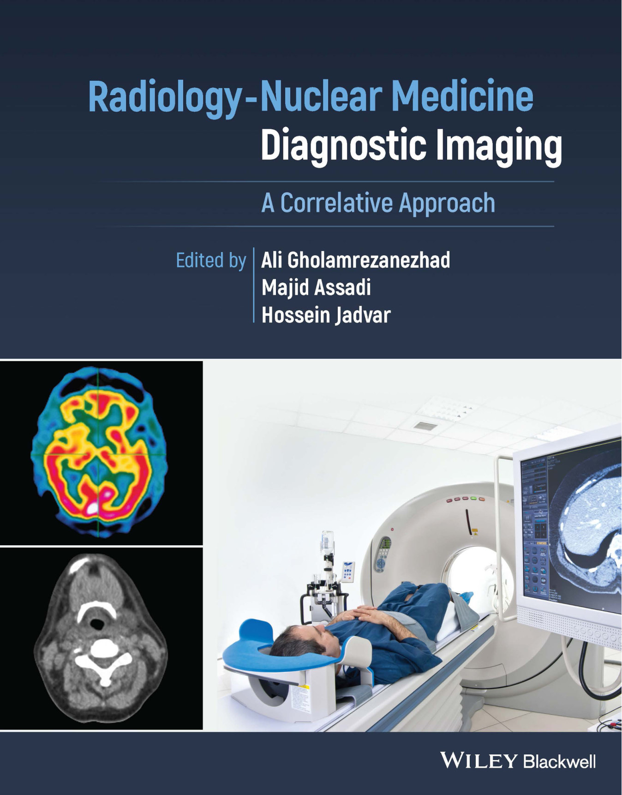
放射学-核医学诊断成像：一种相关性成像方法
放射学-核医学诊断成像：一种相关性成像方法
主编
Ali Gholamrezanezhad, MD 南加利福尼亚大学凯克医学院 临床放射学副教授 美国 洛杉矶
Majid Assadi, MD, MSc 医学院放射学教授，核医学与分子影像学研究中心主任 布什尔医科大学 伊朗 布什尔
Hossein Jadvar, MD, PhD, MPH, MBA 南加利福尼亚大学凯克医学院与维特比工程学院 放射学、泌尿外科学及生物工程学教授 美国 洛杉矶
本版于 2023 年首次出版 © 2023 John Wiley & Sons Ltd
保留所有权利。除非法律允许，本出版物的任何部分均不得以任何形式或通过任何手段（电子、机械、影印、录音或其他方式）复制、存储于检索系统或传播。有关如何获得本标题材料再利用许可的建议，请访问 http://www.wiley.com/go/permissions。
Ali Gholamrezanezhad、Majid Assadi 和 Hossein Jadvar 作为本著作编辑材料的作者的权利，已依法予以确认。
注册办事处 John Wiley & Sons, Inc., 111 River Street, Hoboken, NJ 07030, USA John Wiley & Sons Ltd, The Atrium, Southern Gate, Chichester, West Sussex, PO19 8SQ, UK
有关我们全球编辑办事处、客户服务以及更多 Wiley 产品信息的详情，请访问 www.wiley.com。
Wiley 还以多种电子格式及按需印刷方式出版其图书。本书标准印刷版本中的部分内容在其他格式中可能无法提供。
商标：Wiley 和 Wiley 标识是 John Wiley & Sons, Inc. 及/或其附属公司在美国及其他国家的商标或注册商标，未经书面许可不得使用。所有其他商标均归其各自所有者所有。John Wiley & Sons, Inc. 与本书中提及的任何产品或供应商无关。
责任范围/担保免责声明 本著作的内容仅旨在促进一般科学研究、理解和讨论，并非旨在也不应被依赖作为针对任何特定患者的科学方法、诊断或治疗的建议或推广。鉴于正在进行的研究、设备修改、政府法规的变化以及与药物、设备和器械使用相关的信息的不断更新，敦促读者审查和评估每种药物、设备或器械的包装说明书或使用说明中提供的信息，包括但不限于使用说明或适应证的变化以及新增的警告和注意事项。尽管出版者和作者已尽最大努力准备本著作，但他们对本著作内容的准确性或完整性不作任何陈述或保证，并明确否认所有保证，包括但不限于对特定目的的适销性或适用性的任何默示保证。本著作的销售代表、书面销售材料或促销声明不得创设或扩展任何保证。本著作中以引用及/或潜在信息来源形式提及的任何组织、网站或产品，并不意味着出版者和作者认可该组织、网站或产品可能提供的信息或服务，或其可能提出的建议。本著作在理解出版者不从事提供专业服务的前提下出售。本著作中包含的建议和策略可能并不适用于您的情况。必要时您应咨询专家。此外，读者应注意，本著作中列出的网站可能在本著作撰写与阅读之间发生变更或消失。出版者与作者均不对任何利润损失或任何其他商业损害（包括但不限于特殊、附带、后果性或其他损害）承担责任。
美国国会图书馆编目数据（已申请） ISBN: 9781119603610（精装本）
封面设计：Wiley 封面图片：© semakokal/iStock/Getty Images, wenht/iStock/Getty Images
由 Straive（印度本地治里）以 9.5/12.5pt STIXTwoText 排版
谨以此书献给 Mojgan、Donya 和 Delara，并致以爱意……
Hossein Jadvar
献给我的家人，尤其是我的母亲 Maryam、我的妻子 Moloud、我的儿子 Arian 和 Aiden。为他们为使我的生活最为圆满而做出的无尽奉献
Majid Assadi
献给那些为我的教育和卓越做出贡献的人，尤其是我的母亲（我所遇到的最好的老师）Fatemeh、我的兄弟 Hadi、我的妻子 Farzaneh 以及我的儿子 Adrian
以及
献给我的患者，献给那些我以最深的感激与敬意服务过的人。
Ali Gholamrezanezhad
vii
目录
编著者名单
1 相关性成像导论：放射科医师与核医学医师关于融合成像应知内容
1 Prathamesh V. Joshi、Alok Pawaskar 和 Sandip Basu
2 融合成像的基本原理
30 Leda Lorenzon、M. Bonelli、A. Fracchetti 和 P. Ferrari
3 整合成像的断层相关性（解剖放射学）
52 Antonio Jesús Láinez Ramos-Bossini、Ángela Salmerón-Ruiz、José Pablo Martínez Barbero、José Pablo Martín Molina、José Luis Martín Rodríguez、Genaro López Milena 和 Fernando Ruiz Santiago
4 放射性药物
133 Ferdinando Calabria、Mario Leporace、Rosanna Tavolaro 和 Antonio Bagnato
5 中枢神经系统疾病
163 Hiroshi Matsuda、Eku Shimosegawa、Yoko Shigemoto、Noriko Sato、Hiroyuki Fujii、Fumio Suzuki、Yukio Kimura 和 Atsuhiko Sugiyama
6 胶质瘤 PET 显像：临床原则及与 MRI 的协同应用
194 Riccardo Laudicella、C. Mantarro、B. Catalfamo、P. Alongi、M. Gaeta、F. Minutoli、S. Baldari 和 Sotirios Bisdas
7 头颈部疾病
8 无创心脏成像在心血管系统疾病管理中的作用
257 Ahmed Aljizeeri 和 Mouaz H. Al-Mallah
9 血管系统
285 Ahmad Shariftabrizi、Khalid Balawi 和 Janet H. Pollard
10 呼吸系统疾病
308 Murat Fani Bozkurt 和 Bilge Volkan-Salanci
11 胸部恶性肿瘤
333 Sanaz Katal、Thomas G. Clifford、Kanhaiyalal Agrawal 和 Ali Gholamrezanezhad
12 乳腺成像的相关性研究方法
351 Shabnam Mortazavi、Sonya Khan、Kathleen Ruchalski、Cory Daignault 和 Jerry W. Froelich
13 良性胃肠疾病的相关性成像
383 Mariano Grosso、Michela Gabelloni、Emanuele Neri 和 Giuliano Mariani
14 胃肠道恶性肿瘤
407 Janet H. Pollard、Paul A. DiCamillo、Ayca Dundar、Sarah L. Averill 和 Yashant Aswani
15 肝胆显像
16 内分泌疾病的相关性成像
485 Sana Salehi、Farshad Moradi、Doina Piciu、Hojjat Ahmadzadehfar 和 Ali Gholamrezanezhad
17 神经内分泌肿瘤的相关性成像
512 Ameya Puranik、Sonal Prasad、Indraja D. Devi 和 Vikas Prasad
18 肾-泌尿道病变：相关性成像方法
521 Salar Tofighi、Thomas G. Clifford、Saum Ghodoussipour、Peter Henry Joyce、Meisam Hoseinyazdi、Maryam Abdinejad、Saeideh Najafi、Fahad Marafi 和 Russell H. Morgan
19 前列腺成像的相关性研究方法
20 女性生殖系统的相关性成像
554 Sanaz Katal、Akram Al-Ibraheem、Fawzi Abuhijla、Ahmad Abdlkadir、Liesl Eibschutz 和 Ali Gholamrezanezhad
21 肌肉骨骼成像
577 George R. Matcuk, Jr.、Jordan S. Gross、Dakshesh B. Patel、Brandon K. K. Fields、Dorian M. Lapalma 和 Daniel Stahl
22 脊柱疾病：相关性成像方法
625 Azadeh Eslambolchi、Amit Gupta、Jay Acharya、Christopher Lee 和 Kaustav Bera
23 骨质疏松症：诊断成像及多模态方法在鉴别良性与病理性压缩性骨折中的价值
659 Daniela Garcia、Shambo Guha Roy 和 Reza Hayeri
24 急诊放射学
671 Sean K. Johnston、Russell Flato、Peter Hu、Peter Henry Joyce 和 Andrew Chong
25 儿科疾病的相关性成像
693 Seth J. Crapp、Rachel Pevsner Crum、Nolan Altman、Jyotsna Kochiyil、Eshani Sheth 和 Caldon J. Esdaille
26 感染/炎症成像
717 Christopher J. Palestro 和 Charito Love
27 淋巴系统成像
747 Girolamo Tartaglione、Marco Pagan、Francesco Pio Ieria、Giuseppe Visconti 和 Tommaso Tartaglione
28 淋巴瘤与骨髓瘤的相关性成像
772 Pavel Gelezhe、Sergey Morozov、Anton Kondakov 和 Mikhail Beregov
29 PET/MRI 的临床应用
788 Laura Evangelista、Paolo Artoli、Paola Bartoletti、Antonio Bignotto、Federica Menegatti、Marco Frigo、Stefania Antonia Sperti、Laura Vendramin 和 Diego Cecchin
30 <sup>68</sup>Ga-FAPI，PET 显像发展时代 <sup>18</sup>F-FDG 的孪生示踪剂
814 Reyhaneh Manafi-Farid、GhasemAli Divband、HamidReza Amini、Thomas G. Clifford、Ali Gholamrezanezhad、Mykol Larvie 和 Majid Assadi
31 人工智能在诊断成像中的应用
826 Martina Sollini、Daniele Loiacono、Daria Volpe、Alessandro Giaj Levra、Elettra Lomeo、Edoardo Giacomello、Margarita Kirienko、Arturo Chiti 和 Pierluca Lanzi
32 放射性核素治疗与相关性成像
838 Ashwin Singh Parihar 和 Erik Mittra
索引
撰稿人名单
Maryam Abdinejad 伊朗设拉子 Namazi 医院放射科 伊朗设拉子 Namazi 医院核医学科
Ahmad Abdlkadir 约旦安曼侯赛因国王癌症中心核医学科
Fawzi Abuhijla 约旦安曼侯赛因国王癌症中心放射肿瘤科
Jay Acharya 美国加利福尼亚州洛杉矶市南加州大学凯克医学院 HCCII Lower Level 放射科
Kanhaiyalal Agrawal 印度布巴内什瓦尔全印度医学科学研究所核医学科
Hojjat Ahmadzadehfar 德国多特蒙德 Westfalen 医院核医学科
Akram Al-Ibraheem 约旦安曼侯赛因国王癌症中心核医学科
Ahmed Aljizeeri 沙特阿拉伯利雅得 King Abdulaziz 心脏中心 沙特阿拉伯利雅得 King Saud bin Abdulaziz 健康科学大学 沙特阿拉伯利雅得 King Abdullah 国际医学研究中心
Mouaz H. Al-Mallah 美国得克萨斯州休斯顿市 Houston Methodist 医院 DeBakey 心脏与血管中心
P. Alongi 意大利 Cefalù G. Giglio 基金会核医学科
Nolan Altman 美国佛罗里达州迈阿密市 Nicklaus 儿童医院
HamidReza Amini 伊朗德黑兰 Khatam 医院 Khatam PET/CT 中心
Paolo Artoli 意大利帕多瓦大学医学系核医学科
Majid Assadi 伊朗布什尔医科大学医学院放射系、核医学与分子影像研究中心
Yashant Aswani 艾奥瓦大学 Carver 医学院，美国艾奥瓦州艾奥瓦城
Sarah L. Averill 艾奥瓦大学 Carver 医学院，美国艾奥瓦州艾奥瓦城；艾奥瓦城退伍军人医疗保健系统，美国艾奥瓦州艾奥瓦城
Antonio Bagnato “Mariano Santo”医院核医学与诊疗一体化科，意大利科森扎
Khalid Balawi 艾奥瓦大学 Carver 医学院，美国艾奥瓦州艾奥瓦城
S. Baldari 生物科学与形态及功能成像系，核医学科，墨西拿大学，意大利墨西拿
José Pablo Martínez Barbero 放射科，Virgen de las Nieves 大学医院，格拉纳达大学，西班牙格拉纳达
Paola Bartoletti 核医学科，内科系，帕多瓦大学，意大利帕多瓦
Sandip Basu 放射医学中心，巴哈原子研究中心，塔塔纪念中心附属医院，印度马哈拉施特拉邦孟买；霍米·巴巴国家研究所，印度马哈拉施特拉邦孟买
Kaustav Bera Case Western Reserve 大学医学院，大学医院克利夫兰医疗中心，美国俄亥俄州克利夫兰
Mikhail Beregov 联邦脑血管病与卒中中心，放射与功能诊断科，俄罗斯莫斯科
Antonio Bignotto 核医学科，内科系，帕多瓦大学，意大利帕多瓦
Sotirios Bisdas 脑修复与康复系，UCL 皇后广场神经病学研究所，伦敦大学学院，英国伦敦；Lysholm 神经放射科，国家神经病学与神经外科医院，UCLH NHS 信托基金会，英国伦敦
M. Bonelli 医学物理科，博尔扎诺中央医院，意大利博尔扎诺
Ferdinando Calabria “Mariano Santo”医院核医学与诊疗一体化科，意大利科森扎
B. Catalfamo 生物科学与形态及功能成像系，核医学科，墨西拿大学，意大利墨西拿
Diego Cecchin 核医学科，内科系，帕多瓦大学，意大利帕多瓦
Arturo Chiti 生物科学系，Humanitas 大学，意大利米兰；IRCCS Humanitas 研究所医院，意大利米兰
Andrew Chong 放射科，Keck 医学院，南加州大学，美国加利福尼亚州洛杉矶
Thomas G. Clifford 放射科，Keck 医学院，南加州大学，美国加利福尼亚州洛杉矶
Seth J. Crapp 儿童远程放射学合作伙伴，美国佛罗里达州迈阿密
Rachel Pevsner Crum 尼克劳斯儿童医院，美国佛罗里达州迈阿密
Cory Daignault 明尼阿波利斯 VA 医疗中心，美国明尼苏达州明尼阿波利斯
Florian Dammann 诊断、介入与儿科放射科，Inselspital，伯尔尼大学医院，瑞士
Indraja D. Devi 核医学科，塔塔纪念医院，霍米·巴巴国家研究所（HBNI），印度马哈拉施特拉邦孟买
Paul A. DiCamillo 艾奥瓦大学 Carver 医学院，美国艾奥瓦州艾奥瓦城
GhasemAli Divband Jam 医院核医学中心，伊朗德黑兰；Khatam 医院 Khatam PET/CT 中心，伊朗德黑兰
Ayca Dundar 艾奥瓦大学 Carver 医学院，美国艾奥瓦州艾奥瓦城
Liesl Eibschutz 放射科，Keck 医学院，南加州大学，美国加利福尼亚州洛杉矶
Caldon J. Esdaille 霍华德大学医学院，美国华盛顿特区
Azadeh Eslambolchi 儿科放射科，Mallinckrodt 放射学研究所，圣路易斯华盛顿大学医学院，美国密苏里州圣路易斯
Laura Evangelista 核医学科，内科系，帕多瓦大学，意大利帕多瓦
Murat Fani Bozkurt 核医学系，Hacettepe 大学医学院，土耳其安卡拉
P. Ferrari 医学物理科，博尔扎诺中央医院，意大利博尔扎诺
Brandon K. K. Fields Keck 医学院，南加州大学，美国加利福尼亚州洛杉矶
Russell Flato 放射科，Keck 医学院，南加州大学，美国加利福尼亚州洛杉矶
A. Fracchetti 医学物理科，博尔扎诺中央医院，意大利博尔扎诺
Marco Frigo 核医学科，内科系，帕多瓦大学，意大利帕多瓦
Jerry W. Froelich 放射科，明尼苏达大学，美国明尼苏达州明尼阿波利斯
Hiroyuki Fujii 放射科，国立神经病学与精神病学中心，日本小平
Michela Gabelloni 诊断与介入放射科，医学与外科转化研究与先进技术系，比萨大学，意大利比萨
M. Gaeta 放射科学系，生物科学与形态及功能成像系，墨西拿大学，意大利墨西拿
Daniela Garcia 放射科，Mercy 天主教医疗中心，美国宾夕法尼亚州达比
Pavel Gelezhe 莫斯科卫生部诊断与远程医疗技术研究与实用临床中心，俄罗斯莫斯科；欧洲医疗中心放射科，俄罗斯莫斯科
Saum Ghodoussipour 罗格斯 Robert Wood Johnson 医学院，美国新泽西州新布伦瑞克；泌尿肿瘤科，罗格斯新泽西癌症研究所，美国新泽西州新布伦瑞克
Ali Gholamrezanezhad 放射科，Keck 医学院，南加州大学，美国加利福尼亚州洛杉矶
Edoardo Giacomello 电子、信息与生物工程系，米兰理工大学，意大利米兰
Jordan S. Gross 加州大学洛杉矶分校放射科,洛杉矶,加利福尼亚州,美国
Mariano Grosso 比萨大学医学和外科学翻译研究与先进技术系区域核医学中心,比萨,意大利
Amit Gupta 凯斯西储大学医学院放射学、医学和生物医学工程系,克利夫兰,俄亥俄州,美国 凯斯综合癌症中心癌症成像项目,克利夫兰,俄亥俄州,美国 大学医院克利夫兰医学中心诊断放射学,克利夫兰,俄亥俄州,美国
Reza Hayeri 仁慈天主教医疗中心放射科,达比,宾夕法尼亚州,美国
Meisam Hoseinyazdi 锡拉兹医科大学,锡拉兹,伊朗 纳马齐医院放射科,锡拉兹,伊朗
Peter Hu 南加州大学凯克医学院放射科,洛杉矶,加利福尼亚州,美国
Hossein Jadvar 南加州大学凯克医学院和维特比工程学院放射学、泌尿外科学和生物医学工程教授,洛杉矶,加利福尼亚州,美国
Sean K. Johnston 南加州大学凯克医学院急诊放射学部放射科,洛杉矶县+南加州大学医学中心,洛杉矶,加利福尼亚州,美国
Prathamesh V. Joshi Kamalnayan Bajaj 医院核医学与 PET/CT 科,奥兰加巴德,马哈拉施特拉邦,印度 塔塔纪念中心附属 Bhabha 原子研究中心放射医学中心,帕雷尔,孟买,马哈拉施特拉邦,印度
Peter Henry Joyce 南加州大学凯克医学院放射科,洛杉矶,加利福尼亚州,美国
Sanaz Katal 墨尔本圣文森特医院医学影像科核医学 fellow,澳大利亚
Sonya Khan 加州大学洛杉矶分校和大洛杉矶退伍军人事务医疗系统,洛杉矶,加利福尼亚州,美国
Yukio Kimura 国家神经病学与精神病学中心放射科,小平市,日本
Margarita Kirienko 国家肿瘤研究与治疗研究所核医学科,米兰,意大利
Jyotsna Kochiyil 西奈山医疗中心,迈阿密滩,佛罗里达州,美国
Anton Kondakov 俄罗斯科学院中央临床医院核医学科,莫斯科,俄罗斯 皮罗戈夫俄罗斯国立研究医科大学放射与放射治疗科,莫斯科,俄罗斯
Soheil Kooraki 加州大学洛杉矶分校 David Geffen 医学院分子与医学药理学系,洛杉矶,加利福尼亚州,美国
Pierluca Lanzi 米兰理工大学电子、信息与生物工程系,米兰,意大利
Dorian M. Lapalma 南加州大学放射科,洛杉矶,加利福尼亚州,美国 南加州大学凯克医学院,洛杉矶,加利福尼亚州,美国
Mykol Larvie 克利夫兰诊所放射科,克利夫兰,俄亥俄州,美国
Riccardo Laudicella 墨西拿大学生物医学与形态与功能成像系核医学科,墨西拿,意大利
Christopher Lee 南加州大学凯克医学院,HCCII 下层放射科,洛杉矶,加利福尼亚州,美国
Mario Leporace Mariano Santo 医院核医学与诊疗科,科森扎,意大利
Alessandro Giaj Levra Humanitas 研究院 IRCCS,米兰,意大利
Daniele Loiacono 米兰理工大学电子、信息与生物工程系,米兰,意大利
Elettra Lomeo Humanitas 研究院 IRCCS,米兰,意大利
Leda Lorenzon 博尔扎诺中央医院医学物理科,博尔扎诺,意大利
Charito Love 阿尔伯特·爱因斯坦医学院放射科,布朗克斯,纽约州,美国
Reyhaneh Manafi-Farid 德黑兰医科大学 Shariati 医院核医学研究中心,德黑兰,伊朗
C. Mantarro 墨西拿大学生物医学与形态与功能成像系核医学科,墨西拿,意大利
Fahad Marafi Jaber Al-Ahmad 分子成像中心,科威特城,科威特
Giuliano Mariani 比萨大学医学和外科学翻译研究与先进技术系区域核医学中心,比萨,意大利
José Pablo Martín Molina 格拉纳达大学 San Cecilio 大学医院放射科,格拉纳达,西班牙
George R. Matcuk, Jr. 西达斯西奈医学中心影像科,洛杉矶,加利福尼亚州,美国
Hiroshi Matsuda 国家神经病学与精神病学中心综合脑成像中心,小平市,日本
Federica Menegatti 帕多瓦大学医学系核医学科,帕多瓦,意大利
Genaro López Milena 格拉纳达大学 Virgen de las Nieves 大学医院放射科,格拉纳达,西班牙
F. Minutoli 墨西拿大学生物医学与形态与功能成像系核医学科,墨西拿,意大利
Erik Mittra 俄勒冈健康与科学大学诊断放射学系核医学与分子成像学部,波特兰,俄勒冈州,美国
Farshad Moradi 斯坦福大学放射学系核医学学部,斯坦福,加利福尼亚州,美国
Russell H. Morgan 约翰·霍普金斯医学机构放射与放射科学系,巴尔的摩,马里兰州,美国
Sergey Morozov Osimis S.A. 首席创新官,比利时
Shabnam Mortazavi 加州大学洛杉矶分校 David Geffen 医学院放射科,洛杉矶,加利福尼亚州,美国
Saeideh Najafi 南加州大学凯克医学院放射科,洛杉矶,加利福尼亚州,美国
Emanuele Neri 诊断与介入放射学，比萨大学医学与外科转化研究与先进技术系，意大利 比萨
Marco Pagan 核医学，基督救世主医院，意大利 罗马
Christopher J. Palestro 放射学，Hofstra/Northwell Donald & Barbara Zucker 医学院，美国 亨普斯特德 核医学与分子影像学，Northwell Health，美国 新海德公园
Ashwin Singh Parihar 核医学系，医学教育与研究研究生院，印度 昌迪加尔 Mallinckrodt 放射学研究所，圣路易斯华盛顿大学医学院，美国 圣路易斯
Dakshesh B. Patel 放射学系，南加州大学，美国 洛杉矶 Keck 医学院，南加州大学，美国 洛杉矶
Alok Pawaskar 放射医学中心，巴布哈原子研究中心，塔塔纪念中心附属医院，印度 马哈拉施特拉邦 帕雷尔 核医学与 PET/CT 科，Shri Siddhivinayak Ganapati 癌症医院，印度 马哈拉施特拉邦 米拉杰
Doina Piciu 内分泌肿瘤与核医学系，Ion Chiricuta 肿瘤研究所及 Iuliu Hatieganu 医科大学，罗马尼亚 克卢日-纳波卡
Francesco Pio Ieria 核医学，基督救世主医院，意大利 罗马
Janet H. Pollard 爱荷华大学 Carver 医学院，美国 爱荷华城
Sonal Prasad 柏林实验放射性核素影像中心，德国 柏林 Charité 医科大学核医学系，德国 柏林
Vikas Prasad 核医学系，乌尔姆大学医院，德国
Ameya Puranik 核医学系，塔塔纪念医院，Homi Bhabha 国家研究院（HBNI），印度 马哈拉施特拉邦 孟买
Antonio Jesús Láinez Ramos-Bossini 放射科，维尔根德拉拉斯涅维斯大学医院，格拉纳达大学，西班牙 格拉纳达
José Luis Martín Rodríguez 放射科，San Cecilio 大学医院，格拉纳达大学，西班牙 格拉纳达
Shambo Guha Roy 放射科，Mercy 天主教医疗中心，美国 宾夕法尼亚州 达比
Kathleen Ruchalski 放射学，David Geffen 医学院（加州大学洛杉矶分校），美国 洛杉矶
Sana Salehi 放射科，Keck 医学院，南加州大学，美国 洛杉矶
Ángela Salmerón-Ruiz 放射科，维尔根德拉拉斯涅维斯大学医院，格拉纳达大学，西班牙 格拉纳达
Fernando Ruiz Santiago 放射科，维尔根德拉拉斯涅维斯大学医院，格拉纳达大学，西班牙 格拉纳达 神经创伤医院，维尔根德拉拉斯涅维斯大学医院医学院，格拉纳达大学，西班牙 格拉纳达
Noriko Sato 放射科，国立神经精神医疗中心，日本 小平
Ahmad Shariftabrizi 爱荷华大学 Carver 医学院，美国 爱荷华城 退伍军人事务医疗中心，美国 爱荷华城
Eshani Sheth 西奈山医疗中心，美国 佛罗里达州 迈阿密滩
Yoko Shigemoto 放射科，国立神经精神医疗中心，日本 小平
Eku Shimosegawa 医学分子影像学系，大阪大学研究生院医学院，日本 吹田
Martina Sollini 生物医学系，Humanitas 大学，意大利 米兰 IRCCS Humanitas 研究医院，意大利 米兰
Stefania Antonia Sperti 核医学科，医学系，帕多瓦大学，意大利 帕多瓦
Daniel Stahl Keck 医学院，南加州大学，美国 洛杉矶
Atsuhiko Sugiyama 神经病学系，千叶大学研究生院医学院，日本 千叶
Fumio Suzuki 放射科，国立神经精神医疗中心，日本 小平
Girolamo Tartaglione 核医学，基督救世主医院，意大利 罗马
Tommaso Tartaglione 放射科，IDI-IRCCS，意大利 罗马
Rosanna Tavolaro 核医学与诊疗一体化科，
Salar Tofighi 放射科，Keck 医学院，南加州大学，美国 洛杉矶
Laura Vendramin 核医学科，医学系，帕多瓦大学，意大利 帕多瓦
Giuseppe Visconti 整形外科，淋巴水肿中心，A. Gemelli 医院，圣心天主教大学，意大利 罗马
Bilge Volkan-Salanci 核医学系，哈杰特佩大学医学院，土耳其 安卡拉
Daria Volpe 生物医学系，Humanitas 大学，意大利 米兰 IRCCS Humanitas 研究医院，意大利 米兰
Jan Wartenberg 核医学系，Inselspital，瑞士 伯尔尼大学医院
前言
自 Wilhelm Röntgen 发现 X 射线并于 1901 年因此获得诺贝尔奖以来，医学影像学已取得长足进步。一个多世纪以来，医学影像学随着各项发现和创新技术的发展而显著演进，与对健康和疾病生物学认识的重大进步相结合，为精准健康和精准医学的理念作出了重要贡献。这些里程碑包括但不限于放射性和正电子的发现、放射性示踪剂概念的提出、回旋加速器、计算机断层成像（CT）、超声成像（US）、磁共振成像（MRI）、单光子发射计算机断层成像（SPECT）以及正电子发射断层成像（PET）的技术发展。计算机技术的进步也为将影像组学、人工智能和深度学习（AI/DL）算法复杂地整合到医学影像中提供了机会。在过去十年中，越来越明确的是，融合成像（如 PET/CT、PET/MRI、SPECT/CT）提供了前所未有的、更全面的疾病视图。例如，目前已认识到，体积较小的淋巴结可能隐藏肿瘤，而体积较大的淋巴结可能为良性。另一个例子是在骨髓腔内显示肿瘤浸润，但并无相应的结构异常。这些综合信息为增强患者的影像学评估提供了机会，已被证明可影响临床决策并改善患者预后。
本书编者汇聚了一支国际专家影像学团队，以全面涵盖以下领域中的相关性成像
xvii
诊断放射学和核医学，涉及所有主要器官系统和主要疾病（成人和儿童的心血管、神经、肿瘤、感染与炎症）。在所有章节中，均着重强调相关性成像以及不同影像学检查方式之间如何以协同方式相互补充。在适当之处，向读者介绍相关的解剖学和生理学知识。同时讨论了影像组学、AI/DL 和诊疗一体化等现代主题。本书图像丰富，将吸引临床医师、相关卫生专业人员以及培训学员（医学生、住院医师、进修医师）的关注。编者对可能存在的任何错误和疏漏深表歉意，并承诺在未来的版本中予以弥补。
我们将本书献给斯坦福大学放射科主任 Sanjiv "Sam" Gambhir 医学博士、哲学博士，以志纪念。Sam 是我们的导师、朋友和同事。他才华横溢、慷慨无私而又谦逊至极，影响深远而超越生命本身。整个科学界乃至全人类都因他于 2020 年 7 月的早逝而失去了一位卓越的灵魂。
Ali Gholamrezanezhad，南加利福尼亚大学临床放射学
美国，加利福尼亚州，洛杉矶
Majid Assadi，布什尔医科大学核医学
伊朗，布什尔
Hossein Jadvar，南加利福尼亚大学放射学、泌尿外科学和生物医学工程系，美国，加利福尼亚州，洛杉矶
相关性成像导论
放射科医师与核医学医师应了解的融合成像知识
1 核医学与 PET/CT 科，Kamalnayan Bajaj 医院，印度马哈拉施特拉邦奥兰加巴德 2 放射医学中心，巴贝塔原子研究中心，塔塔纪念中心附属医院，印度马哈拉施特拉邦孟买帕雷尔 3 核医学与 PET/CT 科，Shri Siddhivinayak Ganapati 癌症医院，印度马哈拉施特拉邦米拉杰 4 霍米·巴巴国立研究所，印度马哈拉施特拉邦孟买
引言
相关性（Correlation）被定义为两个或多个事物之间非由偶然因素引起的联系或关系[1]。医学研究本质上以探寻已知与未知之间的关系为基础[2]。相关性一直是医学不可或缺的组成部分。临床医师将症状和体征与医学影像学、病理学或实验室检查结果进行相关性分析。核医学医师或放射科医师则将一种医学影像学检查的发现与另一种影像学方法或实验室检查（如肿瘤标志物水平、激素水平等）进行关联。相关性成像包括将不同影像学技术所提供的互补信息进行整合，以更好地解读病理变化。
在本章中，我们旨在使读者熟悉相关性成像的基础知识、各影像学方法的优势与不足，以及它们之间的相关性如何有助于更好地理解疾病。本章的重点将放在“融合成像”上，因为它是目前已被证实的最佳相关性成像形式。
相关性成像
自1895年伦琴首次发现X射线以来，医学影像学已取得长足发展[3]。如今，X射线、透视、计算机断层成像（CT）、超声检查、单光子发射断层成像（SPECT）、正电子发射断层成像（PET）、磁共振成像（MRI）、PET/CT、SPECT/CT和PET/MRI构成了医学影像学
的全部内容。表 1.1 对构成相关性成像核心的不同断层成像方法进行了简要综述。
每种影像学方法都有其自身的优势和不足。单一方法的使用取决于多种因素：
1) 患者相关因素：患者年龄、检查器官、幽闭恐惧症、对比剂过敏、妊娠等。 2) 方法相关因素：可及性、辐射暴露、分辨率、形态学与功能学信息的需求 3) 医师相关因素：放射科医师/核医学医师的专业水平或转诊医师的偏好 4) 其他因素：检查的经济负担、保险覆盖范围等。
基于上述多种因素，在特定患者的诊疗过程中会选择某一影像学方法作为首选检查。然而，影像学表现不具特异性也并不少见，非但不能给出明确诊断，反而会带来一系列鉴别诊断。通过“融合成像”或“融合显像”，放射科医师/核医学医师经常运用相关性成像以缩小鉴别诊断范围和/或明确诊断。
相关性成像可定义为“对相同样本（视野[FOV]或受试者）使用不同影像学方法序贯或同时成像，以获得互补/叠加的信息”。
《放射学-核医学诊断影像学：相关性方法》（第一版）。由 Ali Gholamrezanezhad、Majid Assadi 和 Hossein Jadvar 主编。© 2023 John Wiley & Sons Ltd. 于 2023 年由 John Wiley & Sons Ltd 出版。
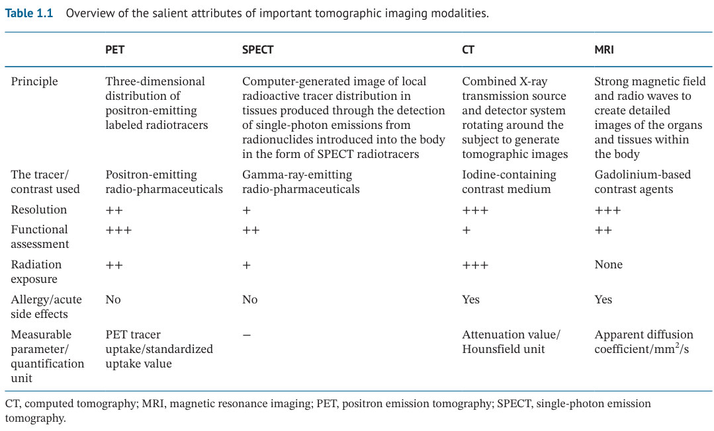
相关性成像多年来一直以对比成像的形式应用于实践，一个典型的例子是骨扫描中观察到的“热区”，需结合同一骨骼的 MRI 或 CT 进行比较解读，以判断为转移性或退行性病变。然而，如今诸如 SPECT-CT、PET/CT 和 PET/MRI 等融合成像技术已成为应用最为广泛的相关性成像形式。传统上，SPECT 和 PET 属于核医学医师的领域，而 CT 和 MRI 则是放射科医师的专长。随着融合成像的出现和迅速发展，为了准确解读融合成像结果，需要同时具备核医学和放射学两方面的知识。在下一节中，我们旨在使核医学医师和放射科医师熟悉相关性/融合成像中所应用的断层成像技术的基本原理。
正电子发射断层成像-计算机断层成像
PET/CT：放射科医师应了解的 PET 知识
PET/CT 基础
正电子发射断层成像
PET 是一种断层成像技术，可测量正电子核素标记的放射性示踪剂的三维分布。PET 可对生化和功能过程进行无创的定量评估。目前最常
使用的示踪剂是 18F 标记的葡萄糖类似物氟脱氧葡萄糖（FDG），它也是目前 PET/CT 成像的主力。
尽管 FDG-PET 最常用于肿瘤学成像，但它目前也有许多非肿瘤学应用：如痴呆、心肌存活性及感染成像等。因此，此处以 FDG 为例向放射科医师展示 PET 示踪剂的特性。
●FDG PET 显像原理 肿瘤细胞增强的葡萄糖代谢（主要依赖于无氧糖酵解，即 Warburg 效应）构成了恶性肿瘤 FDG PET/CT 显像的基本基础。恶性细胞对葡萄糖利用的增加以葡萄糖转运蛋白（GLUT，主要是 GLUT1 和 GLUT3）的高表达和己糖激酶活性的上调为特征 [4]。
葡萄糖通过易化扩散（经 GLUT 介导）被肿瘤细胞摄取，然后在有氧条件下经糖酵解生成丙酮酸。然而，在缺氧条件下（如在坏死性肿瘤中），葡萄糖经无氧代谢，导致肿瘤内乳酸水平升高。FDG 是葡萄糖的放射性药物（RP）类似物，通过与葡萄糖相似的易化扩散机制被代谢活跃的肿瘤细胞摄取（图 1.1）。尽管化学结构存在差异，FDG 的细胞摄取与葡萄糖相似。FDG 通过 GLUT 介导的易化扩散穿过细胞膜，目前已鉴定出超过 14 种
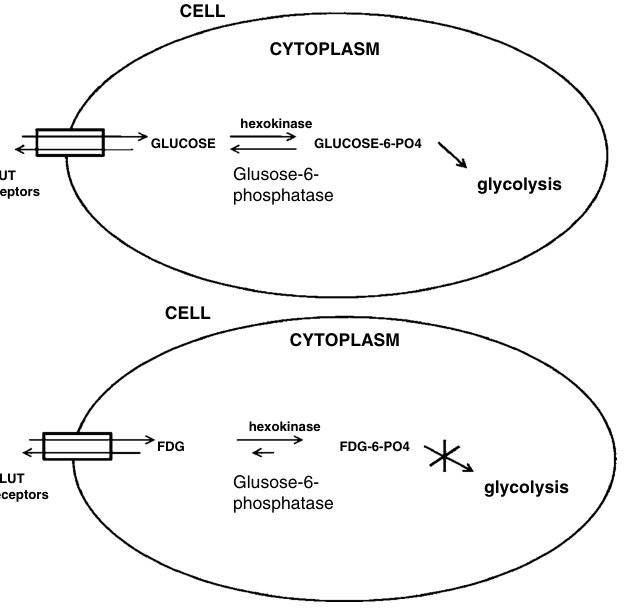
不同的同工酶亚型，其组织分布和对葡萄糖的亲和力各异。GLUT1 是人体中最常见的葡萄糖转运蛋白，与 GLUT3 一起在许多肿瘤中表达上调 [5–7]。FDG 与葡萄糖一样，发生磷酸化生成 FDG-6-磷酸；但与葡萄糖不同的是，FDG-6-磷酸不再进一步代谢。同时，恶性细胞中葡萄糖-6-磷酸酶的表达通常显著降低，因此 FDG-6-磷酸仅发生极微弱的去磷酸化，从而在肿瘤细胞内被"代谢俘获"[8]。正常器官和病灶中 FDG 的分布由 PET 扫描仪检测。
●FDG-PET 的检查前准备与图像采集 建议患者在注射 FDG 前至少禁食 4–6 小时（可饮水），以降低生理性血糖水平并使血清胰岛素水平接近基础水平。鼓励患者口服饮水。含葡萄糖的静脉输液或肠外营养液也应暂停 4–6 小时 [9]。FDG 经静脉注射，PET 扫描通常在注射 FDG 后 50–90 分钟进行。
●正常生物分布与生理性变异 生理性 FDG 摄取可见于脑、心肌、肝、脾、胃、肠、肾、
尿路、淋巴组织、骨髓、唾液腺和睾丸（图 1.2）。乳腺、子宫、卵巢和胸腺可表现为不同程度的 FDG 摄取。
模拟病变的生理性 FDG 摄取及正常变异原因
由于 FDG 摄取增高并非仅见于恶性组织，因此为了对 FDG PET-CT 显像进行恰当的判读，负责的放射科医师必须了解 FDG 摄取的生理性原因以及常见的生理性变异 [10–15]。
表 1.2 归纳并列举了可模拟病变的不同生理性 FDG 摄取原因及部位，以及为减少其影响所建议采取的干预措施。
●FDG 摄取的定量与 SUV 在判读 PET-CT 图像时，报告医师关注的是 FDG（或任何其他 PET 放射性药物）的相对组织摄取。大多数病例仅凭视觉分析即可，但标准摄取值（SUV）是常用的 FDG 摄取量化指标，并在 PET-CT 报告中常规列出。SUV 的基本公式为 [16]
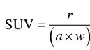
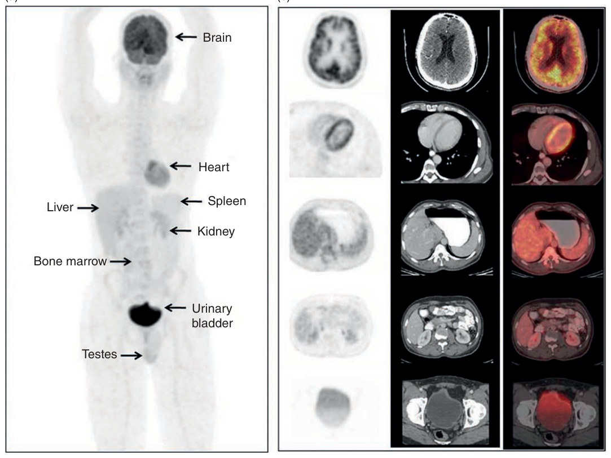
脑、心脏、脾、肝、肾、骨髓、膀胱、睾丸
图 1.2 常规从头颅至大腿中段全身 PET 检查中 FDG 生理性分布的典型示例。（a）PET 扫描的最大密度投影（MIP）图像。（b）三列分别显示（左至右）横断位单纯 PET、横断位单纯 CT 及横断位 PET-CT 融合图像的生理性分布。 Figure 1.2 A typical example of the physiological distribution of FDG uptake in a conventional vertex-to-mid thigh whole-body PET study. (a) Maximum intensity projection (MIP) image of a PET scan. (b) Three columns depicting (left to right) trans-axial PET only, trans-axial CT only, and trans-axial fused PET-CT images of physiological distribution.
式中 r 为 PET 扫描仪在感兴趣区（ROI）内测量的放射性活度浓度（kBq/ml），a 为经衰变校正的注射放射性标记 FDG 量（kBq），w 为患者体重（g），用以估算示踪剂的分布容积。若所有注射的 FDG 被完全滞留并均匀分布于全身，则全身各处的 SUV 均为 1 g/ml，而与注射 FDG 剂量或患者体型无关 [17, 18]。报告中通常提供病灶的 SUVmax（最大 SUV），即感兴趣区内摄取最高体素的 SUV。
SUV 测量的可重复性取决于临床方案的一致性，例如注射部位渗漏、18F-FDG 注射后的显像时间、重建算法类型、衰减校正图类型、感兴趣区大小，以及肿瘤以外器官摄取的改变等 [9]。SUV 或 SUVmax 通常
被用作病灶代谢活性变化的标志，因此在为疗效评估而进行的随访 PET-CT 检查中，复现扫描条件至关重要。
核医学医师需要了解的 CT 知识
单纯 PET 受限于解剖细节不足，需要与某种其他成像方式（如 CT）进行相关性成像，以便区分正常与异常的放射性示踪剂摄取 [8]。因此，PET/CT 形态-代谢融合成像成为肿瘤学实践中理想的单一检查方法。然而，这也要求核医学医师必须具备 CT 成像组成部分以及 CT 采集过程中所采用的各种干预措施的充分知识。
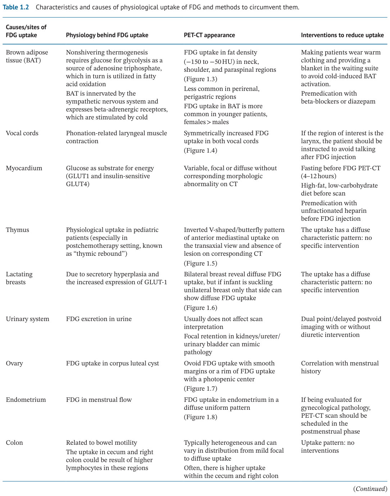
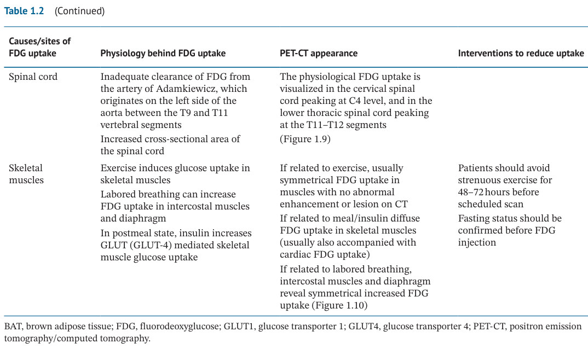
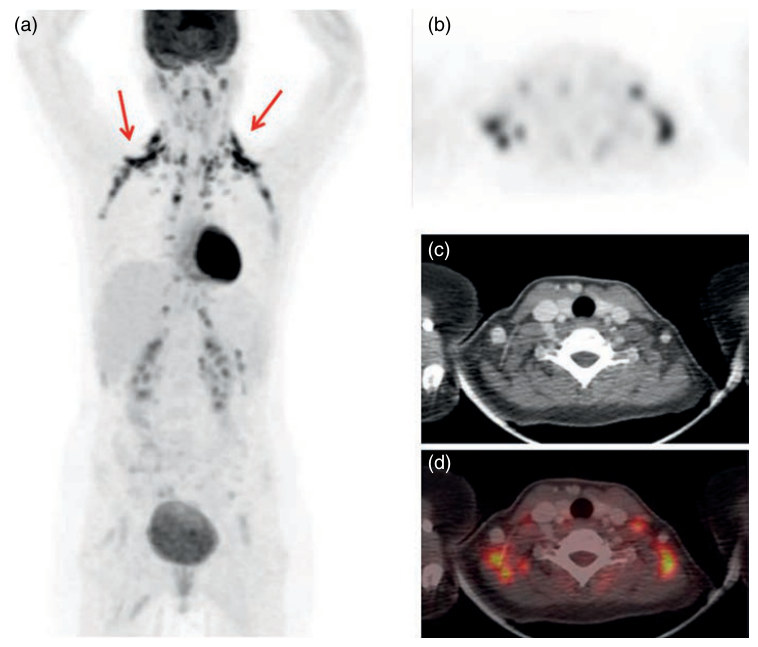
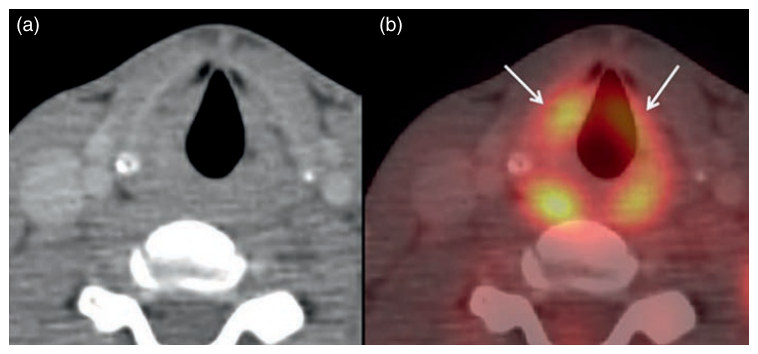
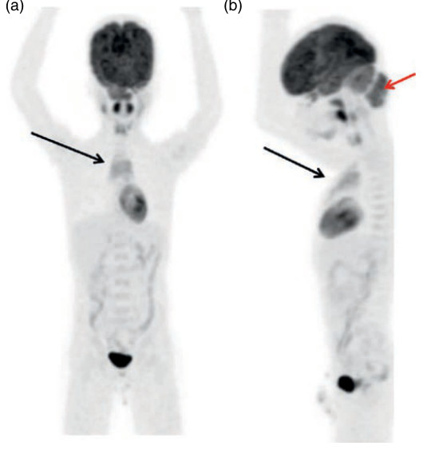
计算机断层成像
尽管 X 射线在医学影像诊断中的潜在应用从一开始就十分明确，但首台 X 射线 CT 系统的实现是由 Godfrey Newbold Hounsfield（1979 年诺贝尔生理学或医学奖获得者）于 1972 年完成的，他构建了首台医用 CT 扫描仪的原型，并被视为 CT 之父。此后，CT 立即受到医学界的欢迎，并常被誉为
自 X 射线发现以来放射学诊断中最重要的发明 [19,20]。
CT 的原理
CT 扫描仪通过从多个角度位置投射 X 射线束穿过物体（患者）的某一平面并完成一周旋转，从而生成断层图像。这些 X 射线由一个旋转的 X 射线球管产生（图 1.11）。当 X 射线穿过患者时，部分被吸收，部分发生散射，其余则透过。所谓 X 射线衰减过程，是指 X 射线因散射或吸收而发生的强度衰减。因与物体相互作用而被衰减的 X 射线无法到达 X 射线探测器。每个角度透过物体的光子被探测器收集并由计算机进行可视化，从而重建出患者的完整图像。以这种方式获得的三维（3D）灰度数据结构代表了感兴趣区域的电子密度分布 [19]。
物质衰减 X 射线的能力以 Hounsfield 单位（HU）来衡量。根据定义，水的密度值为 0 HU，空气为 −1000 HU。大多数软组织的衰减值在 30～100 HU 之间。值得注意的例外是肺，其衰减值接近 −1000 HU（因含气量高），以及矿化组织如骨骼，衰减值约为 1000 HU [21]。
CT 扫描中的静脉和口服对比剂
静脉对比剂
健康组织与病变之间 CT 衰减值的差异可以提高图像质量
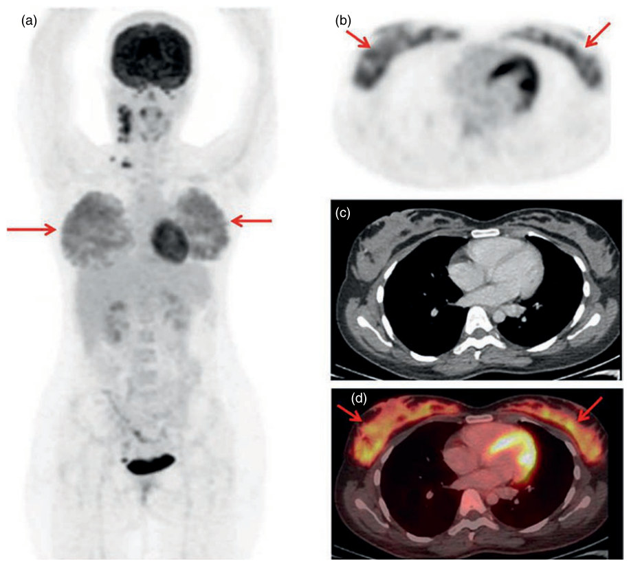
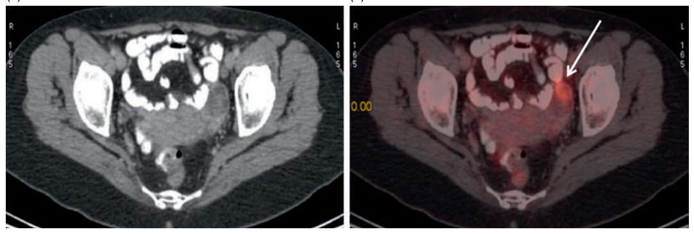
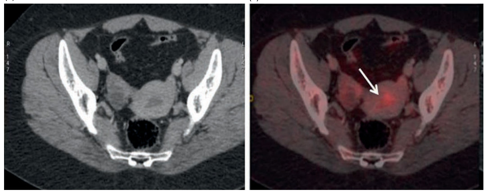
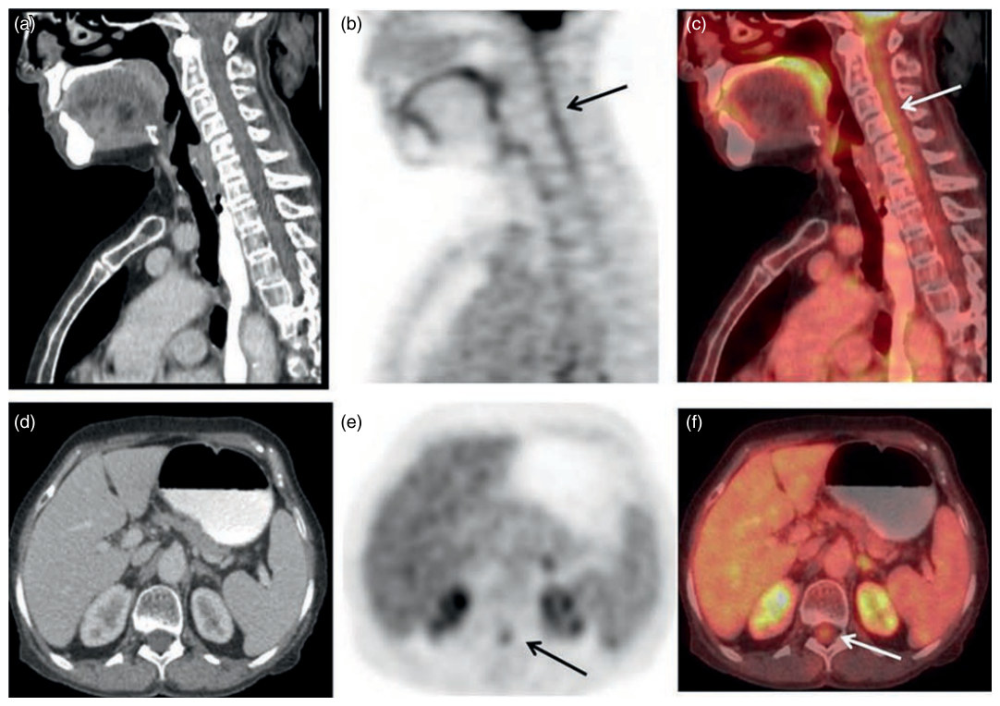
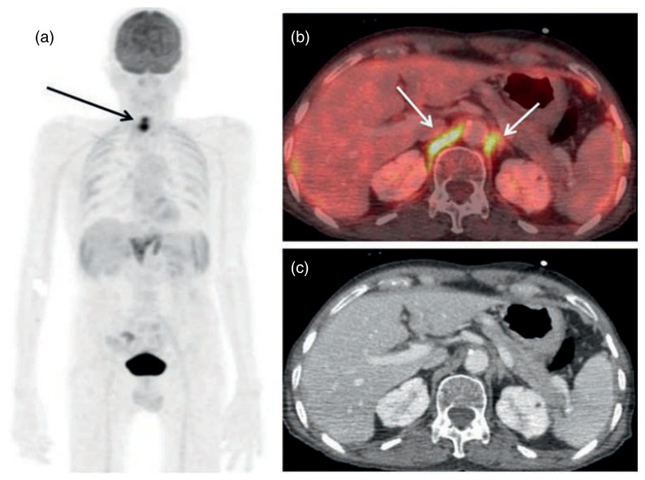
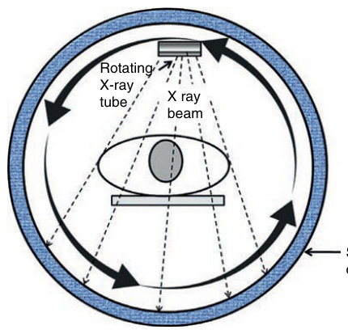
（即更高的信噪比和对比度噪声比），从而有助于发现异常。因此，对比成像剂常被用于通过 CT 更好地显示感兴趣组织 [21,22]。
如今，已有多种离子型和非离子型对比剂可供选择，有效诊断剂量的对比剂
CT成像所用对比剂的浓度处于摩尔浓度范围内。已知静脉使用对比剂在易感人群中可引起不良反应和过敏，因此在使用时需谨慎。当计划在PET/CT检查之后进行诊断性增强CT并使用静脉对比剂时，必须由具备资质的医师/放射科医师评估其适应证、禁忌证及限制因素。还须考虑与静脉对比剂存在相互作用的药物（如用于治疗糖尿病的二甲双胍）以及相关病史，尤其是肾功能受损的情况[23]。
胃肠道对比剂
根据感兴趣区的不同，可使用胃肠道腔内对比剂以改善CT中胃肠道结构的显示（除非临床适应证不需要，或存在医学禁忌）。该方法多经口服途径实施，较少通过直肠灌肠途径用于评估结肠病变。
需注意，对比剂会改变组织所致的衰减，从而导致PET定量中SUV值被高估（静脉对比剂的影响较胃肠道对比剂更为显著）[24]。
PET/CT中的CT方案
自20世纪90年代PET/CT问世以来，早期的PET/CT采集方案将CT作为一种快速的透射源用于衰减校正，而所能提供的解剖定位信息有限。然而，这些CT方案无法生成具有诊断质量的CT图像。这些方案基本可归类为低剂量CT扫描。此类低剂量CT扫描所致CT检查的有效剂量通常为3~6 mSv[25]。
然而，在认识到单一检查即可同时获得功能（PET）和形态（CT）信息所带来的便利后，CT如今不仅被用作快速透射源，还作为最先进的诊断工具以最大化图像质量。该方案涉及优化的采集参数以及口服和静脉对比剂的应用。这些方案基本可归类为诊断性CT扫描。此类诊断性CT扫描所致CT检查的有效剂量通常为11~20 mSv。CT方案存在多种变化形式，详见FDG PET/CT指南[23,26]。图1.12展示了两种具有代表性的方案。
PET/CT融合图像的显示
在PET/CT扫描仪中（原型见图1.13），患者静卧于检查床上，检查床随后通过机械精确对齐的同轴CT和PET机架进行移动，使采集的数据得以精确配准
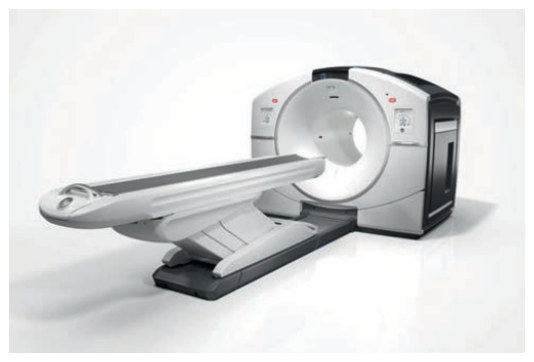
于空间内[27]。PET采集通常在CT采集后立即进行，以尽可能减少患者运动的影响。
重建完成后，将高分辨率的解剖图像（来源于CT）与功能图像（来源于PET）叠加显示，从而精确定位高代谢区域。图像包括单纯PET、单纯CT及PET/CT融合图像，可在横断位、冠状位和矢状位进行观察。此外，动态最大密度投影（MIP）图像提供了一种特殊的渲染方式，其中最亮的体素（即FDG摄取最高的体素）被投影至三维图像中。该MIP图像有助于对检查形成整体印象[28]。典型显示示例如图1.14所示。
图1.12 代表性PET/CT采集方案的示意图。 Figure 1.12 Schematic representation of representative PET-CT acquisition protocols.
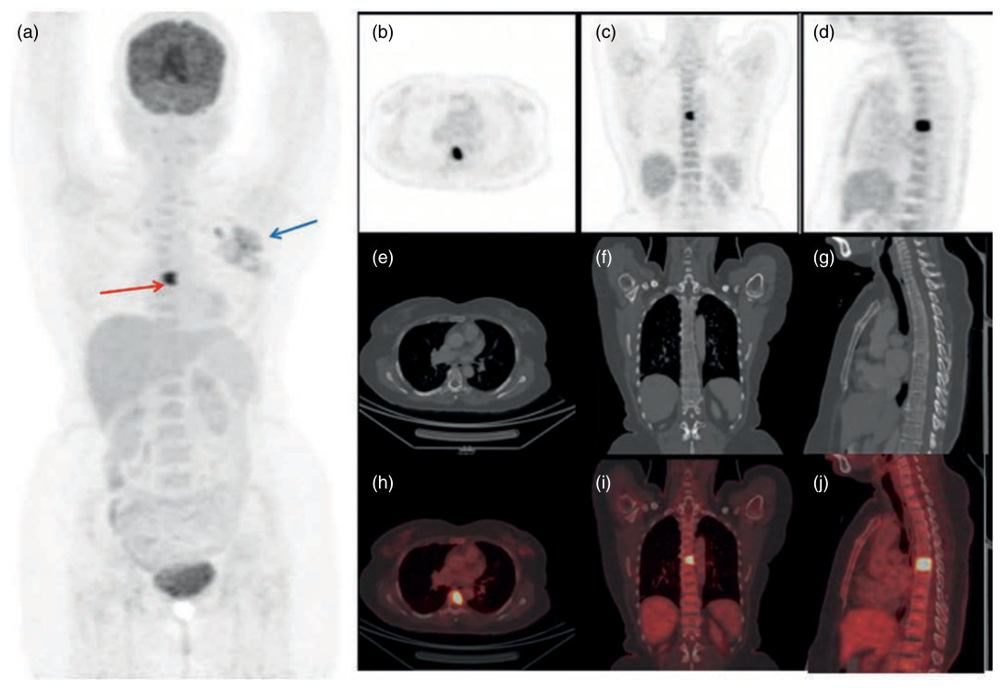
PET/CT融合中的伪影
已尝试通过生成呼吸运动校正或四维PET/CT来尽可能减少此类图像质量下降，在该方法中PET数据的采集与呼吸运动同步进行[30]。2）衰减校正伪影：患者体内存在高密度物质时，无论是骨水泥等高密度材料，还是肠袢内既往检查残留的静脉对比剂/钡剂滞留所致静脉池化，均可在这些部位因衰减校正过度而导致FDG摄取假阳性。图1.16展示了一个临床实例。3）束硬化伪影：该伪影表现为在高衰减物体（如金属假体、牙科填充物、化疗港和起搏器）附近，穿过身体部位的多个线性异常衰减带。需嘱患者在扫描前取下金属物品，并对固定/原位金属假体/植入物进行记录。示例如图1.17所示。部分植入物/假体可导致
新一代 PET/CT 扫描仪可实现 PET 与 CT 图像的优质融合，从而提高病灶定位的准确性和诊断的准确度。此外，利用 CT 数据进行衰减校正显著提高了患者检查通量[29]。尽管 PET/CT 显像具有诸多优势，但这种双模态成像由于一些伪影的存在也带来了一定的技术挑战。负责阅片的医师必须了解这些局限性。
伪影大致可分为以下几类：
1) 运动伪影（呼吸或患者相关）：虽然 CT 与 PET 采集过程中患者体位保持不变，但患者的自主或不自主运动仍可导致 PET 与 CT 图像的配准不良。此类配准不良伪影最常见于肺和肝脏的病灶。图 1.15 中示一例。
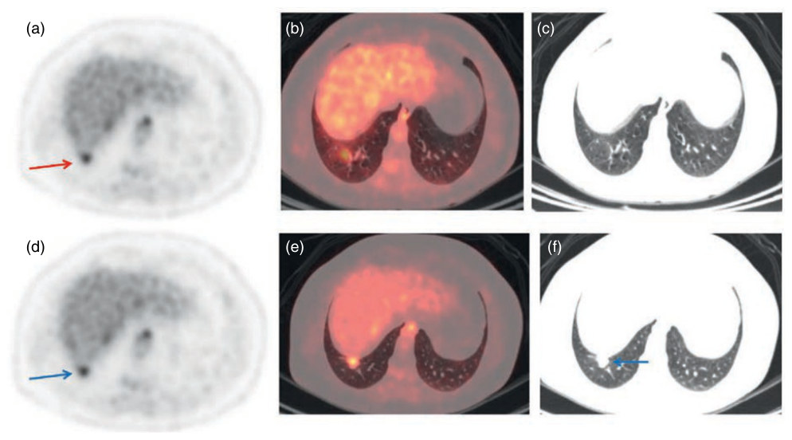
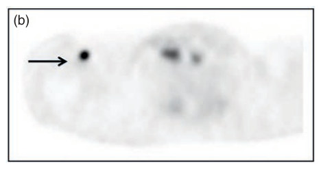
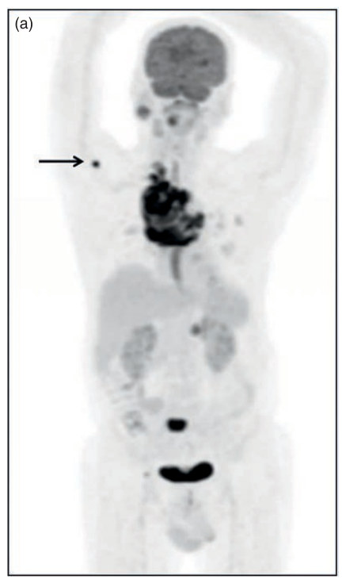
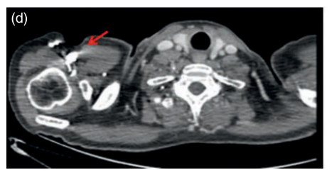
衰减校正因子的改变可引起 PET 结果假阳性。当 PET/CT 扫描时患者双臂置于躯干两侧时也可出现类似伪影，因此根据临床指征采取双臂上举或下垂体位是避免此类伪影最简便的方法。4) 截断伪影：PET/CT 中的截断伪影源于 CT（50 cm）与 PET（70 cm）断层视野（FOV）大小不同[31]。此类伪影常见于体形较大的患者或扫描时双臂下垂的患者，
例如头颈部恶性肿瘤患者。当患者身体超出 CT 的 FOV 时，超出部分的解剖结构将被截断，因而不会出现在重建后的 CT 图像中。截断还会在 CT 图像边缘产生条状伪影，导致用于校正 PET 数据的衰减系数被高估。这种衰减系数的增高会在截断边缘形成一圈高活性区（见图 1.18 案例），可能造成 PET 图像误读[32]。因此，在 PET/CT 显像中，
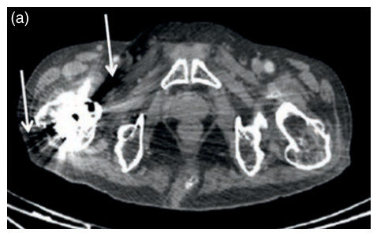
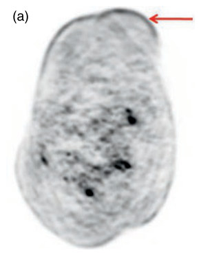
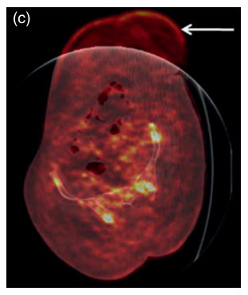
重要的是技术人员必须将患者仔细摆位于 FOV 中心，并使其双臂上举过头，以减少截断伪影[29]。5) 放射性药物相关：虽然相对少见，但若 CT 上无任何可见病灶却出现局灶性 FDG 摄取（或其它 PET 示踪剂摄取），则须谨慎解读，尤其位于肺实质内时
（见图 1.19 案例）。此类摄取可能为注射时医源性 FDG 微栓子所致[33]，当该发现可能影响临床决策时，可行随访扫描以避免假阳性判读。下一节将展示若干临床病例（图 1.20–1.22）。
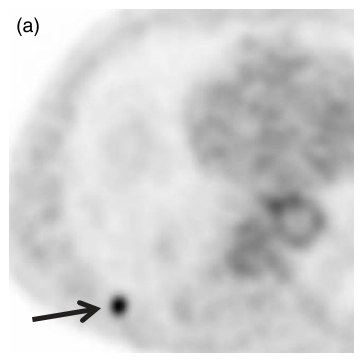
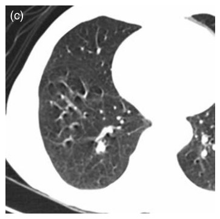
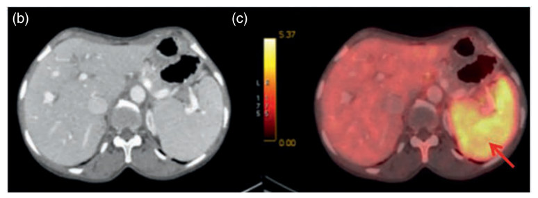
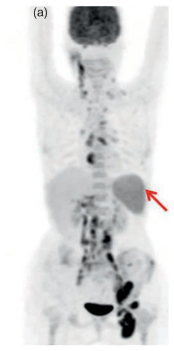
FDG PET/CT 临床实例
FDG 以外的 PET/CT 示踪剂
尽管 18F-FDG 是 PET/CT 融合成像中最常用的示踪剂，但已有许多其它放射性药物对临床决策产生了重要影响，并已成为患者常规管理的一部分。放射性药物种类繁多，超出本章范围；表 1.3[34–38] 列出其中较常见者，相关病例示于图 1.23–1.25。
以下部分以图示形式展示临床病例实例（图 1.20–1.22），在这些病例中，FDG PET 与 CT 的融合成像实现了对病变及其范围的准确诊断，而单靠任何一种方法均难以达到同等效果。
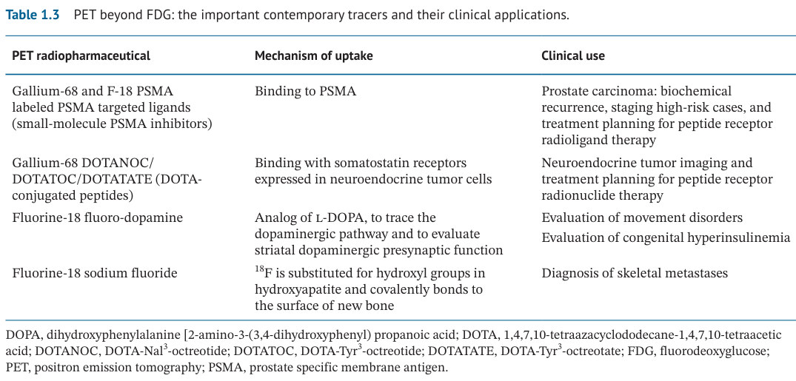
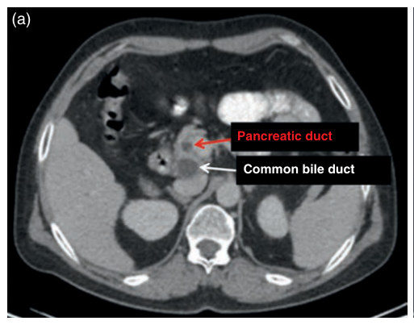
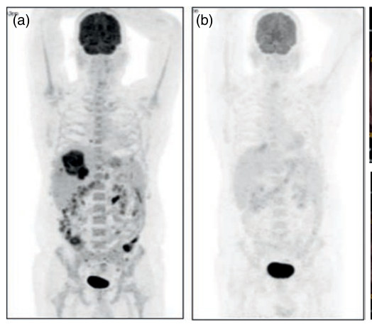
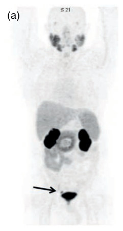
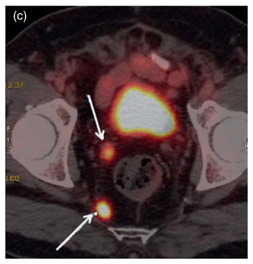
未来重要的相关性成像工具。γ照相机（图 1.26）长期以来用于获取人体各器官的生理、生化和代谢过程等功能信息。γ照相机显像所使用的示踪剂通常具有特异性靶向，以获取特定器官系统的信息。因此，示踪剂注入患者体内后，会在靶器官系统中积聚。示踪剂特异性越强，从靶器官获得的关于特定病理生理过程的信息就越多。然而，同
SPECT/CT 显像
引言
在融合成像或相关性成像模式中，PET/CT 是最常被讨论的模式，这主要得益于其广泛的临床和研究应用；但我们必须强调 SPECT/CT 的潜力及不断拓展的应用，其价值常被低估，且有望成为未来
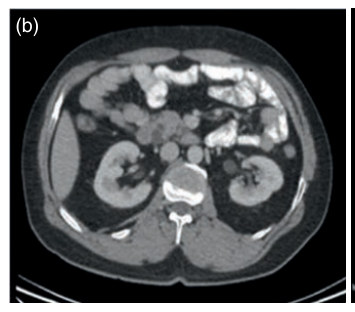
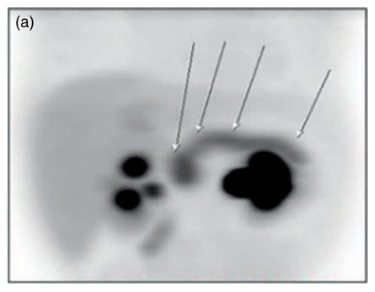
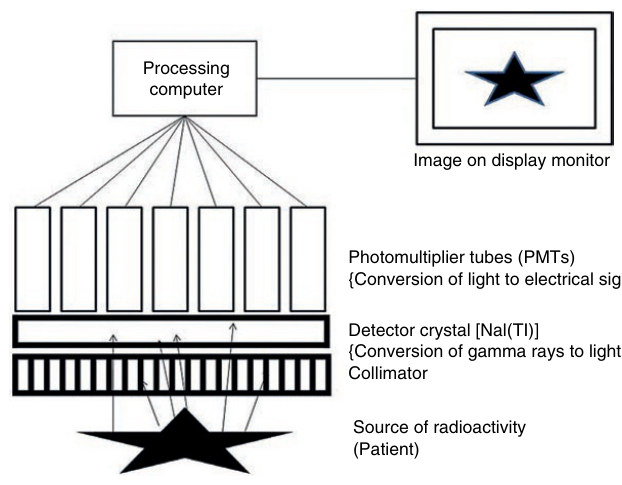
时，由于背景示踪剂活性的干扰，所获得的形态学信息则非常有限。因此，核医学技术往往缺乏解剖学标志。此外，由于体内深部器官发出的 γ 射线受到衰减，平面显像存在明确的数据丢失。
SPECT 通过绕患者身体旋转的探测器采集数据，对患者体内示踪剂分布进行三维重建。这有助于获得更佳的解剖学信息，例如在骨扫描或心肌灌注显像中便是如此。另一方面，CT 是对 X 射线衰减值图的三维重建，可提供诸如大小、形态和位置等形态学细节。CT 中使用对比剂主要提供关于灌注的信息以及各种疾病过程中灌注模式变化的信息。然而，CT 通常不能提供机体器官功能或代谢状态方面的信息。许多疾病过程的病理生理学改变远早于形态学改变出现。此外，在因各种治疗而继发出现解剖学扭曲时，由于对称性和灌注模式的改变，单纯依靠解剖学成像进行判读十分困难，且常常存在不确定性。
因此，必须深刻认识到，核医学（SPECT）与解剖学成像（CT）彼此之间并非竞争关系，而是在本质上互为补充。其主要优势如下：
i) 融合的 SPECT/CT 图像兼具两者优势
既弥补了 SPECT 图像缺乏的解剖学信息，也弥补了 CT 图像缺乏的功能信息。CT 还有助于准确进行示踪剂摄取定位，从而最终辅助正确诊断与治疗。ii) 不仅如此，CT 衰减图还可用于衰
减校正，从而提高 SPECT 图像的质量。SPECT/CT 在临床上已有许多成熟的应用。随着新型先进系统的广泛普及，图像融合的准确度进一步提高，采集时间进一步缩短，新的应用领域也日益显现。除肿瘤学方面的应用外，SPECT/CT 在微创外科和心脏病学领域也展现出令人关注的用途。在进入临床应用部分之前，我们首先介绍这些系统的一些技术信息。
SPECT/CT 系统信息
将来自不同独立设备的 SPECT 和 CT 图像进行融合历来具有挑战性。这是因为这些检查通常在不同日期、不同设备上由不同操作人员按不同方案采集。由此会造成患者躯体、四肢以及脊柱曲度的位置存在差异，因为不同系统的检查床位置可能不同。此外，无法匹配不同时刻的呼吸运动、心脏运动以及胃、肠道
和泌尿系统的位置。已开发出软件融合技术，可对来自多种来源的图像进行配准与融合[39,40]，但其最适合刚性结构（如脑[41]和骨骼[42,43]）图像间的相关性融合。然而，对于胸部和腹部，由于内部器官本身存在运动，软件融合仍面临挑战。来自两种根本不同的成像模态、具有不同空间分辨率且共同标志点稀少的数据集，使问题更为复杂。SPECT/CT 扫描这类几乎同时、在同一几何条件下完成 SPECT 和 CT 图像采集的系统，可提供更佳的融合数据集。检查过程中患者保持在同一检查床上、同一位置，先后在数分钟内完成 SPECT 和 CT 采集。
射和透射 CT 的最初形态，最具代表性的是 Kuhl、Hale 和 Eaton 的工作，他们于 1960 年代中期利用 Mark II 脑 SPECT 扫描仪获得了首例患者胸部的横断面透射 CT 图像[50]。然而，直到 1980 年代，才在 SPECT[51,52]和 PET[53,54]中引入使用外置放射性核素透射源的透射显像进行衰减校正。该系统中，外置透射扫描与 SPECT 联用，同时实现衰减校正和解剖学定位。但透射扫描所提供的解剖学细节和对比分辨率较差，因此这些系统始终未能成为常规应用。在过去十年左右的时间里，集成式 SPECT/CT 扫描仪已实现商业化，可在同一机架上采集 SPECT 和 CT 数据。患者保持同一位置并躺在同一检查床上，随后顺序地在两种模态间移动。采集到的最终数据传输至单一计算机，由其完成数据校正、图像重建、整合与显示，并支持分析以辅助更佳诊断。
SPECT/CT 融合成像的实际优势是多方面的：
i) 这些系统能够将核医学数据集中的功能
信息叠加到 CT 扫描的解剖学信息上，显著提高诊断报告医师的信心。ii) 这些系统能够实现衰减校
早期的 SPECT/CT 系统尝试同时采集 SPECT 和 CT 数据 [55, 56]，但同时性 SPECT/CT 采集系统的问题在于难以设计出一种具有足够时间和能量分辨率的共用探测器，以同时甄别来自 X 射线信号和放射性核素光子散射中的初始放射性核素光子。该问题至今仍未解决。"现代" SPECT/CT 系统最早由 Hasegawa 等人于 20 世纪 90 年代中期在加州大学旧金山分校研发 [45]。这些系统将 SPECT 和 CT 机架串联（同一轴线）布置，可以序贯采集患者数据，并将数据传送至同一计算机进行进一步的融合与处理（图 1.27）。
将 SPECT 数据与基于 CT 获取的患者特异性衰减图相结合 [44, 45]。由此，图像的空间分辨率、对比度和信噪比均得以改善。iii) 功能性数据质量也得到提升，
借助 CT，可显著提高放射性药物摄取定量测定的准确性 [46, 47]。这对于 (i) 更精准的辐射剂量学 [48, 49] 以及 (ii) 监测治疗反应具有重要价值。
将结构信息与功能信息相结合的理念由
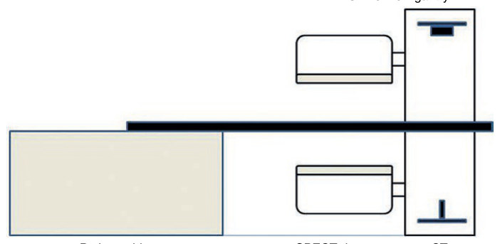
通用 SPECT/CT 方案
首个作为单一单元设计的商用 SPECT/CT 组合设备是 GE Millenium™ 混合 SPECT/PET/CT 相机，配有 HawkEye™ 单层 CT（GE Healthcare，海法，以色列）。该 CT 生成的图像层厚为 1 cm，矩阵为 256×256，空间分辨率约 3.5 mm。由于分辨率较粗，该 CT 并未被视作诊断级 CT。图像重建采用滤波反投影法。该系统还可配备 1 英寸晶体和符合探测单元用于 PET 显像。该系统是已故 Hasegawa 等人 [57] 极具影响力的研究成果的商用化实现。
目前几乎所有 SPECT/CT 系统都配备高分辨率诊断级 CT 作为其组成部分。其中一家制造商（Mediso）甚至在其 AnyScan 系列系统中提供配备高分辨率钇铝镓石榴石（LYSO）探测器技术的完整 SPECT/CT/PET 三模态系统。这些设备中的 CT 扫描为诊断级 CT，用于基于个体患者组织密度数据的衰减校正。SPECT/CT 工作站可进行图像重建，并实现三平面（横断位、冠状位、矢状位）和三维显示，包括最大密度投影（MIP）及表面容积重建。SPECT、CT 及融合图像可在同一屏幕上显示，并配有联动指针，可在两个检查组件中任一组件所识别的形态学与功能学感兴趣区之间进行精确的共定位。
SPECT/CT 系统的成本显著高于传统 γ 照相机，尤其是配备完整诊断级 CT 功能的设备。较高的成本限制了此项技术在经济资源有限地区的可及性。近年来已研发出采用 CdTe/CdZnTe 半导体取代传统 NaI(Tl) 闪烁晶体的新型 SPECT 设备。这类新系统体积更小，并具有比传统照相机更高的灵敏度和固有分辨率。
SPECT/CT 采集
目前大多数临床 SPECT 系统仍依赖于前述 Anger 相机原理，即通过附着于闪烁晶体背面的二维（2D）光电倍增管（PMT）阵列，依据位置相关的能量信号计算光子相互作用（即闪烁）位点在体内的重心位置 [58]。可用的 NaI(Tl) 晶体厚度根据
其预期用途，针对发射较低能量光子（如 99mTc）和/或较高能量光子（如 131I）的放射性核素，介于 3/8 至 3/4 英寸（9.5 至 19 mm）之间。较厚的晶体可提高光电峰效率，但会降低固有空间分辨率。
SPECT/CT 系统的采集以序贯模式进行。配备诊断级 CT 组件的 SPECT/CT 系统具有更高的空间分辨率和更快的扫描速度。然而，诊断级 CT 带来的辐射剂量较高。SPECT 组件由可旋转、双探头、可变角度的碘化钠闪烁照相机采集。目前 SPECT 采集通常需要约 20～30 分钟的常规扫描时间，具体取决于放射性示踪剂及所扫描身体区域的轴向长度。CT 通常采用 512×512 矩阵采集（最新型 CT 扫描仪）或 256×256 矩阵采集（较老型号扫描仪），并需重采样为与 SPECT 具有相同像素格式和层厚的图像。SPECT 采用迭代法重建，并结合基于 X 射线透射图的衰减校正和散射校正。由于 X 射线和放射性核素数据并非同时采集，SPECT 图像不会受到 X 射线采集过程中产生的散射辐射污染。此外，由于患者始终位于检查床上，两个成像组件在一致且相同的患者体位下完成采集，因此在假设患者在整个 SPECT/CT 检查期间未发生移动的前提下，可实现精确的图像配准。
目前的SPECT系统配备了检测装置或传感器，可自动计算非圆形轨道：检测方法可基于使用发光二极管的光学检测。除了安全方面之外，非圆形轨道还能确保SPECT各个投影更接近患者，并且操作简便，从而缩短患者在检查床上的整体时间。各公司目前提供配备2、6或16排诊断级CT的高级一体化SPECT/CT诊断解决方案。基本上，SPECT/CT是两种系统的融合或组合，各自具有与相应独立设备相同的特性。
图像重建
大多数较新的SPECT系统采用统计迭代重建来生成图像[59, 60]。迭代过程包含采集系统形成图像的某种模型。对于SPECT系统而言，图像是通过对发射光子的准直形成的，即只有与准直器孔平行的光子才会与晶体相互作用并产生闪烁
事件。因此，这些所谓的投影是沿投影线探测到的所有光子的二维表示，由此产生随距离变化的分辨率。相机探头距放射源越远，分辨率越差。在二维投影中没有关于源深度的信息。因此，重建算法的目的是在三维空间内对源分布进行估算。在SPECT/CT系统中，由CT生成衰减图并纳入图像形成模型。
在迭代重建算法中，首先对内部未知的放射性核素分布进行初始估计。该估计通常是一组体素值相等且恒定的图像。然后利用成像系统的计算机模型从该初始估计计算出SPECT投影。其基本假设是：如果计算投影与实测投影相匹配，则患者体内未知的活度分布与该估计相匹配。最初两者最有可能不一致，因此需要对初始估计进行修改。为此，基于利用成像过程物理学的估计计算投影与实测投影之间的比较，对估计进行更新。通过反投影，这两个投影集之间的偏差最终形成一个由权重因子组成的误差图像，用于更新初始图像估计。该过程被置于一个迭代循环中，在该循环中反复比较计算投影与实测投影，直至偏差小于所选判据（达到收敛）。因此，一旦满足条件，重建循环即停止。然而，在实际操作中，由于投影数据存在噪声，迭代重建过程仅在少量迭代次数后便停止，因为当迭代次数较多时，最终图像中的噪声会持续增加。目前最常用的迭代重建算法是有序子集期望最大化（OS-EM）[61]，因为它能快速获得活度分布的良好估计。
然而，在图像重建过程中还需要考虑许多其他因素，例如非均匀的光子衰减、散射光子的贡献以及准直器响应引起的模糊。对这些因素的补偿在迭代重建中相对容易，但在将这两个系统组合时仍存在一些问题。应当记住，SPECT采集是在多个呼吸周期内平均得到的，这会使图像变得模糊，而快速采集的CT图像是瞬时图像，可能与平均化的SPECT图像不匹配。SPECT系统的空间分辨率也远低于CT。因此，如果使用高分辨率CT图像进行
衰减校正，则在不同衰减组织边界处可能因事件溢出而产生伪影。通常通过使用高斯核对CT图像进行平滑处理来减小这种效应，从而使CT图像的空间分辨率与SPECT图像的空间分辨率相当。此外，根据采集参数（电压和mAs）的不同，CT图像可能并非最适合用于衰减校正，并且从X射线轫致辐射谱到SPECT中所用特定光子能量的换算也可能并非最佳。因此，当CT仅用于衰减校正时，可以使用经过优化的所谓低剂量方案，例如延长扫描时间以平均呼吸运动并使空间分辨率相匹配[62]。
散射校正问题已通过多种方法加以解决。Siemens 和 GE 已实现某种形式的双能窗法，该方法基于从附加能窗估算散射并从投影数据中扣除，或将其作为附加项用于迭代重建方法中 [63]。然而，一般认为在较低的散射附加能窗中，散射分布并不能重现主光电峰能窗中的散射分布。此外，亦有基于模型的散射补偿方法被采用，该方法不依赖附加能窗的数据采集，而是通过使用预计算的散射核或在实时计算中基于一阶散射的理论截面来对主光电峰能窗中的散射进行建模。Philips 已实现了由 Frey 和 Tsui [64] 最初提出的有效散射源估计法（ESSE）的改进版本。
由于准直器设计的限制，还需要对有限的空间分辨率进行一定补偿。这通常在迭代重建算法中实现，对由到达探测器的光子引起的随深度变化的模糊进行建模。部分容积效应表现为放射性计数密度／X 线密度的表观降低，发生于器官／肿瘤／病变仅部分位于成像设备“在空间或时间上的敏感容积”内时 [65–68]。从 Erlandsson 等 [68] 的综述可见，已有大量工作致力于减小部分容积效应的影响。部分容积校正（以及分辨率校正）的主要目的是提高所研究结构的定量准确性。由于 CT 具有较高的采样频率，可用于 SPECT 图像中部分容积效应的校正。
在 SPECT 和 CT 两部分的检查过程中均可能发生患者体位移动。传统 SPECT–CT 系统的采集时间因扫描部位的不同可从 10 分钟到 30 分钟以上不等，并且
取决于计数率。在采集过程中，SPECT 通常比 CT 花费的时间更长。所有厂商均提供配准工具，以便在 SPECT 和 CT 两次扫描之间发生移动时进行手动或自动配准。CT 部分采集期间的移动通常较少，一方面由于扫描时间较短，另一方面由于患者在诊断性 CT 扫描时通常会屏住呼吸。各厂商均采用基于投影一致性的某种 SPECT 自身运动校正方法。这些算法通常对小幅度、简单的运动效果最佳。然而，对于过度或复杂的运动，则需要重复进行 SPECT–CT 采集。
配备固态探测器的新型 SPECT–CT 扫描仪
γ照相机中最常用的闪烁体材料是 NaI(Tl)，其易获得且成本低廉。如果回顾一下 γ照相机的基本特性，则吸收的光子能量按比例转换为可见光，然后由光电倍增管（PMT）探测。PMT 在其阴极表面将这种光转换为电子，并通过一系列打拿极对信号进行放大，产生电信号。该信号随后被处理，以获取原始 γ射线的能量和位置信息。由于涉及的步骤众多，测得的能量信号存在较大的不确定性，导致在 140 keV 时的能量分辨率约为半高全宽 10%。此外，还需要大量 PMT 才能确定相互作用的位置。这就是闪烁照相机头部尺寸较大且需要复杂调谐方法以确保所有 PMT 对相同入射能量提供相似幅度信号的原因。
近年来，已推出基于碲锌镉（CdZnTe 或简称 CZT）的商用 SPECT 系统。CZT 是一种固态探测器材料，通过收集由光电相互作用或 Compton 散射产生的电离所诱发的电荷来生成信号。在这里，每个光子被直接转换为电信号。这些新型 CZT 模组的主要优点是体积小且无需 PMT，从而可实现紧凑型照相机设计。同时显著提高了系统的整体灵敏度。灵敏度的提升既可用于在给定注射活度下缩短采集时间，也可用于在相同采集时间下降低注射的放射性活度。传统 γ照相机与基于 CZT 的 SPECT–CT 系统之间的主要对比要点列于表 1.4。GE Healthcare 全尺寸
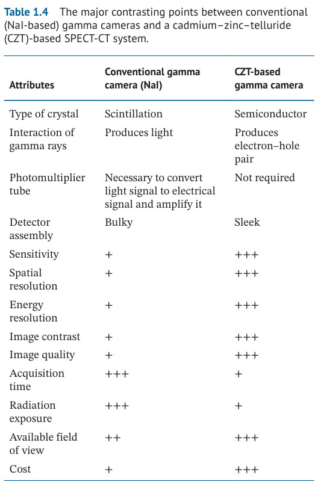
基于 CZT 的 SPECT/CT 系统（Discovery NM/CT 870 CZT）根据厂商提供的数据，可将注射剂量或扫描时间减少高达 75%，系统空间分辨率由 4.3 mm 提升至 2.8 mm，能量分辨率由 9.5% 显著改善至 6.3%。厂商还声称相比 Nal 探测器，SPECT 对比噪声比提升超过 40%，探测器帧尺寸由 7.5 cm 缩小至 2.5 cm（减少 67%），最佳视野（FOV）扩大 25%[69]。此外还有较新的 CZT 系统，例如 VERITON CZT 相机（Spectrum Dynamics，Caesarea，Israel），其结构类似于 PET/CT 相机，探测器以环形配置环绕患者布置[70]。
SPECT/CT 临床应用示例
由于本书后续章节将专门讨论 SPECT/CT 系统的临床应用，此处仅列举少数临床示例。图 1.28 至图 1.32 所选 SPECT/CT 采集的临床示例均属于若不进行联合成像则诊断可能被遗漏或延误的病例。
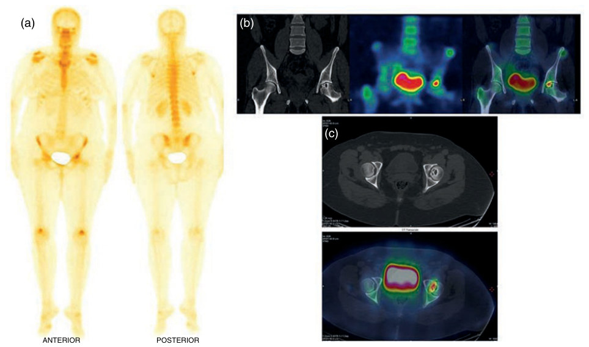
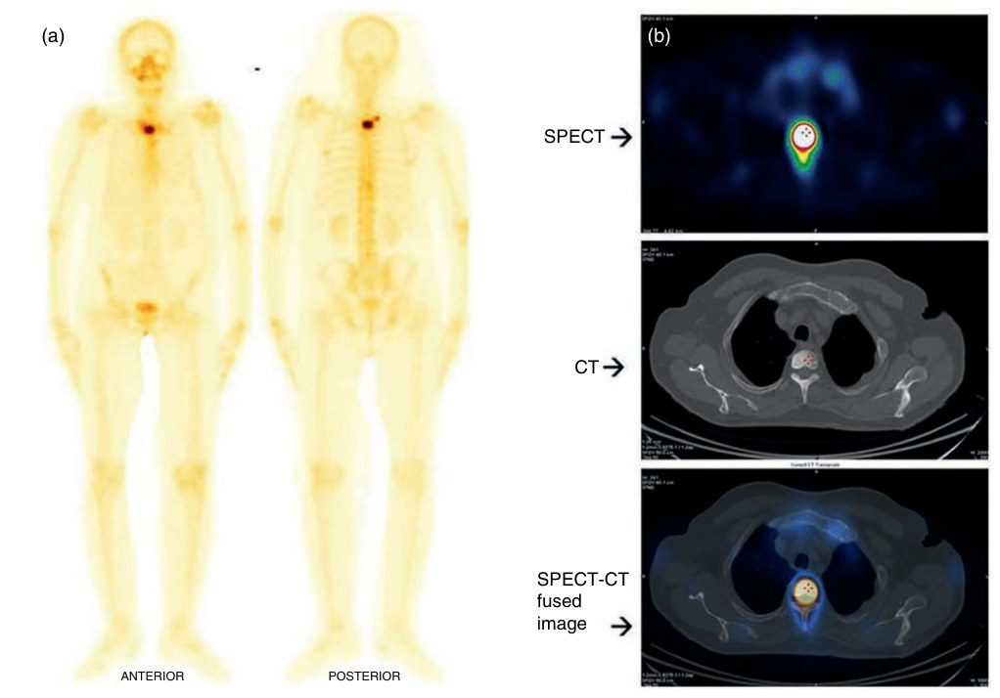
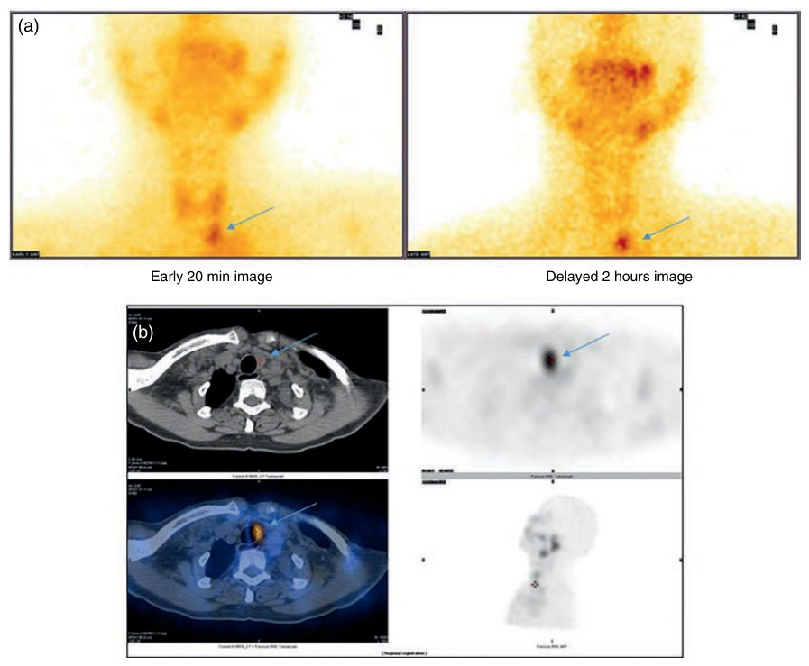
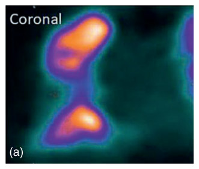
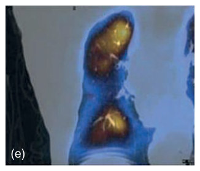
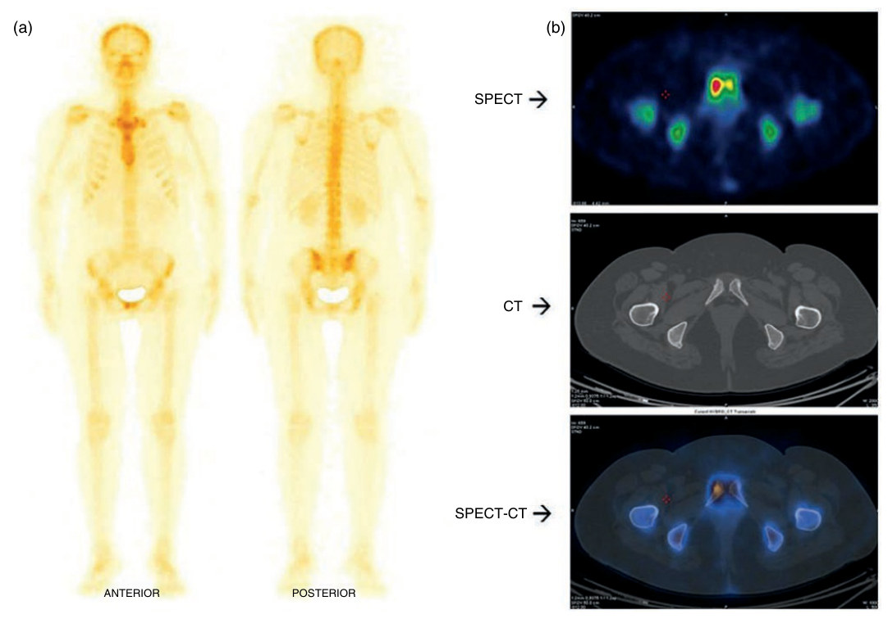
结论
模拟恶性肿瘤表现，（ii）PET/CT 融合成像中伪影的列举与描述，以及（iii）联合成像的价值，即 PET/CT 与 SPECT/CT 融合成像实现了疾病的精准诊断。随着临床及研究应用的不断拓展，相关性解剖-功能成像方法有望在肿瘤及非肿瘤性疾病的临床决策中发挥重要作用。
综上所述，本专著详细阐述了融合成像模式 PET/CT 和 SPECT/CT 的基本原理、成像方案及临床应用，旨在为读者提供该领域全面而实用的知识体系。书中提供了大量典型临床案例，重点讨论了以下内容：（i）正常生理性变异及良性病变所
本页为参考文献（完整列表见章末）
本页为参考文献（完整列表见章末）
本页为参考文献（完整列表见章末）
Correlation, Definitions and Synonyms (2022). https://www.macmillandictionary.com/dictionary/british/correlation.
Altman, D.G. and Altman, E. (1999). Practical Statistics for Medical Research. Chapman & Hall/CRC.
Bradley, W.G. (2008). History of medical imaging. Proc. Am. Philos. Soc. 152 (3): 349–361.
Smith, T.A. (1998). FDG uptake, tumor characteristics and response to therapy: a review. Nucl. Med. Commun. 19: 97–105.
Lusic, H. and Grinstaff, M.W. (2013). X-ray-computed tomography contrast agents. Chem. Rev. 113: 1641–1666.
Mattrey, R.F. and Aguirre, D.A. (2003). Advances in contrast media research. Acad. Radiol. 10: 1450.
Boellaard, R., Delgado-Bolton, R., Oyen, W.J. et al. (2015). FDG PET/CT: EANM procedure guidelines for tumour imaging: version 2.0. Eur. J. Nucl. Med. Mol. Imaging 42: 328–354.
Mawlawi, O., Erasmus, J.J., Munden, R.F. et al. (2006). Quantifying the effect of IV contrast media on integrated PET/CT: clinical evaluation. AJR 186: 308–319.
Beyer, T., Antoch, G., Muller, S. et al. (2004). Acquisition protocol considerations for combined PET/CT imaging. J. Nucl. Med. 45 (Suppl. 1): 25–35S.
Alessio, A.M. and Kinahan, P.E (2012). CT Protocol Selection in PET-CT Imaging. https://www.imagewisely. org/~/media/ImageWisely-Files/NucMed/CT-Protocol- Selection-in-PETCT-Imaging.pdf.
Kennedy, J.A., Israel, O., Frenkel, A. et al. (2007). Improved image fusion in PET/CT using hybrid image reconstruction and super-resolution. Int. J. Biomed. Imaging 46846.
Hofman, M.S. and Hicks, R.J. (2016). How we read oncologic FDG PET/CT. Cancer Imaging 16: 35. https://doi.org/10.1186/s40644-016-0091-3.
Sureshbabu, W. and Mawlawi, O. (2005). PET/CT imaging artifacts. J. Nucl. Med. Technol. 33 (3): 156–161. quiz 163–164.
Nehmeh, S.A., Erdi, Y.E., and Ling, C.C. (2002). Effect of respiratory gating on reducing lung motion artifacts in PET imaging of lung cancer. Med. Phys. 29: 366–371. https://doi.org/10.1118/1.1448824.
Carney, J., Townsend, D.W., Kinahan, P.E. et al. (2001). CT-based attenuation correction: the effects of imaging with the arms in the field of view [abstract]. J. Nucl. Med. 42: 56P–57P.
Mawlawi, O., Pan, T., Cody, D.D. et al. (2004). Evaluation of a new CT truncation correction algorithm for accurate quantification of PET/CT images (abstract). J. Nucl. Med. 45: 413P.
Tokmak, H. (2013). Focal FDG uptake in lung parenchyma without structural alterations on CT. World J. Nucl. Med. 12: 38–40.
Fendler, W.P., Eiber, M., Beheshti, M. et al. (2017). 68Ga-PSMA PET/CT: joint EANM and SNMMI procedure guideline for prostate cancer imaging: version 1.0. Eur. J. Nucl. Med. Mol. Imaging 44 (6): 1014–1024.
Virgolini, I., Ambrosini, V., Bomanji, J.B. et al. (2010). Procedure guidelines for PET/CT tumour imaging with 68Ga-DOTA-conjugated peptides: 68Ga-DOTA-TOC, 68Ga-DOTA-NOC, 68Ga-DOTA-TATE. Eur. J. Nucl. Med. Mol. Imaging 37 (10): 2004–2010. https://doi.org/10.1007/s00259-010-1512-3.
Basu, S., Hess, S., Nielsen Braad, P.E. et al. (2014). The basic principles of FDG-PET/CT imaging. PET Clin. 9 (4): 355–370.
Macheda, M.L., Rogers, S., and Best, J.D. (2005). Molecular and cellular regulation of glucose transporter (GLUT)proteins in cancer. J. Cell. Physiol. 202: 654–662.
Ganapathy, V., Thangaraju, M., and Prasad, P.D. (2009). Nutrient transporters in cancer: relevance to Warburg hypothesis and beyond. Pharmacol. Ther. 121: 29–40.
Kapoor, V., McCook, B.M., and Torok, F.S. (2004). An introduction to PET-CT imaging. Radiographics 24: 523–543.
Delbeke, D., Coleman, R.E., Guiberteau, M.J. et al. (2006). Procedure guidelines for tumor imaging with FDGPET/ CT 1.0. J. Nucl. Med. 47: 885–894.
Basu, S., Kwee, T.C., Surti, S. et al. (2011). Fundamentals of PET and PET/CT imaging. Ann. N. Y. Acad. Sci. 1228: 1–18.
Aukema, T.S., Vogel, W.V., Hoefnagel, C.A., and Valdes Olmos, R.A. (2010). Prevention of brown adipose tissue activation in 18F-FDG PET/CT of breast cancer patients receiving neoadjuvant systemic therapy. J. Nucl. Med. Technol. 2010; 38: 24–27.
Lakhani, A., Khan, S.R., Bharwani, N. et al. (2017). FDG PET/CT pitfalls in gynecologic and genitourinary oncologic imaging. Radiographics 37: 577–594.
Bhatt, G., Li, X.F., Jain, A. et al. (2013). The normal variant 18F FDG uptake in the lower thoracic spinal cord segments in cancer patients without CNS malignancy. Am. J. Nucl. Med. Mol. Imaging 10: 317–325.
Prabhakar, H.B., Sahani, D.V., Fischman, A.J. et al. (2007). Bowel hot spots at PET-CT. Radiographics 27: 145–159.
Karunanithi, S., Soundararajan, R., Sharma, P. et al. (2015). Spectrum of physiologic and pathologic skeletal muscle (18) F-FDG uptake on PET/CT. AJR 205: W141–W149.
Weber, W.A., Grosu, A.L., and Czernin, J. (2008). Technology insight: advances in molecular imaging and an appraisal of PET/CT scanning. Nat. Clin. Pract. Oncol. 5: 160–170.
Thie, J.A. (2004). Understanding the standardized uptake value, its methods, and implications for usage. J. Nucl. Med. 45: 1431–1434.
Kinahan, P.E. and Fletcher, J.W. (2010). Positron emission tomography-computed tomography standardized uptake values in clinical practice and assessing response to therapy. Semin. Ultrasound CT MR 31 (6): 496–505.
Cantatore, A. and Müller, P. (2011). Introduction to computed tomography. DTU Mechanical Engineering. Kgs. Lyngby, 76.
Kalender, W.A. (2006). X-ray computed tomography. Phys. Med. Biol. 51: 29–43.
Barthlen, W., Blankenstein, O., Mau, H. et al. (2008). Evaluation of [18F]DOPA PET-CT for surgery in focal congenital hyperinsulinism. J. Clin. Endocrinol. Metab. 93: 869–875.
Ibrahim, N., Kusmirek, J., Struck, A.F. et al. (2016). The sensitivity and specificity of F-DOPA PET in a movement disorder clinic. Am. J. Nucl. Med. Mol. Imaging 6 (1): 102–109.
Beheshti, M., Mottaghy, F.M., Paycha, F. et al. (2015). (18) F-NaF PET/CT: EANM procedure guidelines for bone imaging. Eur. J. Nucl. Med. Mol. Imaging 42 (11): 1767–1777.
Hill, D.L., Batchelor, P.G., Holden, M., and Hawkes, D.J. (2001). Medical image registration. Phys. Med. Biol. 46: R1–R45. [PubMed: 11277237].
Hutton, B.F., Braun, M., Thurfjell, L., and Lau, D.Y.H. (2002). Image registration: an essential tool for nuclear medicine. Eur. J. Nucl. Med. Mol. Imaging 29: 559–577. [PubMed: 11914898].
Gholipour, A., Kehtarnavaz, N., Briggs, R. et al. (2007). Brain functional localization: a survey of image registration techniques. IEEE Trans. Med. Imaging 26: 427–451.
Barratt, D.C., Penney, G.P., Chan, C.S. et al. (2006). Selfcalibrating3D-ultrasound-based bone registration for minimally invasive orthopedic surgery. IEEE Trans. Med. Imaging 25: 312–323. [PubMed: 16524087].
Ma, B. and Ellis, R.E. (2003). Robust registration for computer-integrated orthopedic surgery: laboratory validation and clinical experience. Med. Image Anal. 7: 237–250. [PubMed: 12946466].
LaCroix, K.J., Tsui, B.M.W., Hasegawa, B.H., and Brown, J.K. (1994). Investigation of the use of x-ray CT images for attenuation correction in SPECT. IEEE Trans. Nucl. Sci. 41: 2793–2799.
Blankespoor, S.C., Wu, X., Kalki, K. et al. (1996). Attenuation correction of SPECT using x-ray CT on an emission-transmission CT system: myocardial perfusion assessment. IEEE Trans. Nucl. Sci. 43: 2263–2274.
Liu, A., Williams, L.E., and Raubitschek, A.A. (1996). A CT assisted method for absolute quantitation of internal radioactivity. Med. Phys. 23: 1919–1228. [PubMed: 8947907].
Da Silva, A.J., Tang, H.R., Wong, K.H. et al. (2001). Absolute quantitation of regional myocardial uptake of 99mTcsestamibi with SPECT: experimental validation in a porcine model. J. Nucl. Med. 42: 772–779. [PubMed: 11337575].
Koral, K.F., Zasadny, K.R., Kessler, M.L. et al. (1994). CT-SPECT fusion plus conjugate views for determining dosimetry in iodine-131-monoclonalantibody therapy of lymphoma patients. J. Nucl. Med. 35: 1714–1720. [PubMed: 7931676].
Koral, K.F., Dewaraja, Y., Li, J. et al. (2000). Initial results for hybrid SPECT-conjugate-view tumor dosimetry in 131I-anti-B1 antibody therapy of previously untreated patients with lymphoma. J. Nucl. Med. 41: 1579–1586. [PubMed: 10994741].
Kuhl, D.E., Hale, J., and Eaton, W.L. (1966). Transmission scanning: A useful adjunct to conventional emission scanning for accurately keying isotope deposition to radiographic anatomy. Radiology 87: 278–284. [PubMed: 5915433].
Bailey, D.L., Hutton, B.F., and Walker, P.J. (1987). Improved SPECT using simultaneous emission and transmission tomography. J. Nucl. Med. 28: 844–851. [PubMed: 3494829].
Tsui, B.M.W., Gullberg, G.T., Edgerton, E.R. et al. (1989). Correction of nonuniform attenuation in cardiac SPECT imaging. J. Nucl. Med. 30: 497–507. [PubMed:2786944].
Huang, S.C., Hoffman, E.J., Phelps, M.E., and Kuhl, D.E. (1979). Quantitation in positron emission computed tomography: 2. Effects of inaccurate attenuation correction. J. Comput. Assist. Tomogr. 3: 804–814. [PubMed: 315970].
Carson, R.E., Daube-Witherspoon, M.E., and Green, M.V. (1988). A method for post injection PET transmission measurements with a rotating source. J. Nucl. Med. 29: 1558–1567. [PubMed: 3261786].
Mirshanov, D.M. (1987). Transmission-Emission Computer Tomograph. Tashkent Branch, All-Union Research Surgery Center, USSR Academy of Medical Science, USSR.
Kaplan, C.H. (1989). Transmission/emission registered image (TERI) computed tomography scanners. International patent application PCT/US90/03722.
Madsen, M.T. (2007). Recent advances in SPECT imaging. J. Nucl. Med. 48: 661–673.
Anger, H.O. (1958). Scintillation camera. Rev. Sci. Instrum. 29: 27–33.
Bruyant, P.P. (2002). Analytic and iterative reconstruction algorithms in SPECT. J. Nucl. Med. 43: 1343–1358.
Knoll, P., Kotalova, D., Kochle, G. et al. (2012). Comparison of advanced iterative reconstruction methods for SPECT/CT. Z. Med. Phys. 22: 58–69.
Hudson, H.M. and Larkin, R.S. (1994). Accelerated image reconstruction using ordered subsets of projection data. IEEE Trans. Med. Imaging 13: 601–609.
Ljungberg, M. and Pretorius, H. SPECT/CT: an update on technological developments and clinical applications. Br. J. Radiol. 91: 20160402.
Ogawa, K., Harata, Y., Ichihara, T. et al. (1991). A practical method for position-dependent Comptonscatter correction in single photon emission CT. IEEE Trans. Med. Imaging 10: 408–412.
Frey, E.C. and Tsui, B.M.W. (1996). A new method for modelling the spatially-variant, object dependent scatter response function in SPECT. IEEE Med. Imaging Conf. 2: 1082–1086.
Hoffman, E.J., Huang, S.C., and Phelps, M.E. (1979). Quantitation in positron emission computed tomography: 1. Effect of object size. J. Comput. Assist. Tomogr. 3: 299–308.
Pretorius, P.H., King, M.A., Pan, T.S. et al. (1998). Reducing the influence of the partial volume effect on SPECT activity quantitation with 3D modelling of spatial resolution in iterative reconstruction. Phys. Med. Biol. 43: 407–420.
Hutton, B.F. and Osiecki, A. (1998). Correction of partial volume effects in myocardial SPECT. J. Nucl. Cardiol. 5: 402–413.
Erlandsson, K., Buvat, I., Pretorius, P.H. et al. (2012). A review of partial volume correction techniques for emission tomography and their applications in neurology, cardiology and oncology. Phys. Med. Biol. 57: R119–R159.
GE Healthcare. (2021). https://www.gehealthcare.in/products/molecular-imaging/nuclear-medicine/nm-ct-870-czt.
Desmonts, C., Bouthiba, M.A., and Enilorac, B. (2020). Evaluation of a new multipurpose whole-body CzT-based camera: comparison with a dual-head Anger camera and first clinical images. EJNMMI Phys. 7:18. https://doi. org/10.1186/s40658-020-0284-5.
融合成像的基本原理
医学物理科，博尔扎诺中央医院，意大利博尔扎诺
概述
自 1895 年 X 射线被发现以来，无创性医学成像已成为评估和管理患者的重要工具。传统的成像技术包括 X 线、超声、计算机断层成像（CT）和磁共振成像（MRI），可用于描绘患者解剖结构的形态学改变。相反，功能成像方式如平面闪烁显像、单光子发射计算机断层成像（SPECT）、正电子发射断层成像（PET）和磁共振波谱（MRS）则能够显示代谢或功能变化，而这些变化是伴随病理状态改变的前兆。
每种单一的成像方式都有其自身的优势和不足。核素成像如 PET 和 SPECT 具有非常高的分子敏感度（处于皮摩尔至纳摩尔水平），但其解剖分辨率相对较差。另一方面，解剖学成像方式如 CT 和 MRI 具有较高的空间分辨率，但敏感度相对较低（处于毫摩尔水平）。
尽管单独使用的解剖和功能成像方式具有临床应用价值，但多种成像方式整合所提供的信息增量开辟了新的领域。为获得多模态成像，必须在解剖和功能信息之间进行精确的空间相关性分析。基于软件的图像配准可在不同扫描仪上、不同时间分别采集的两个或多个图像数据集之后进行融合。软件工具可通过 alpha 混合融合算法将两个图像数据集的横断面、冠状面和矢状面并排或融合显示，将
两种成像方式叠加显示。然而，在身体可弯曲和屈伸的部位（如胸部和腹部），图像配准可能具有挑战性，并且可能影响所得融合图像的质量。
融合成像的开发旨在提高不同类型图像数据之间相关性的准确性 [1–3]。“融合”一词表示使用一台成像设备将互补的成像方式物理组合在一起，从而产生本质上是已配准的不同图像数据集。融合成像设备的示例包括 PET/CT、SPECT/CT 和 PET/磁共振（MR）。
正如我们将在本章中解释的，融合成像不仅提供了一种简化图像配准和融合过程的方法，而且相较于独立的断层成像技术还具有其他多项优势。我们将简要描述单一和组合成像技术的一些基本物理概念：PET、SPECT、超声、CT 和 MRI。
计算机断层成像
引言
CT 在 1960 年代首次变得在计算和技术上可行，此时计算机技术已开始出现，尽管仍处于初级阶段。
断层成像理论的一些原始思想已由波希米亚数学家 J.H. Radon 在其著名的 1917 年出版物中提出 [4]。
基于该理论，一般来说，通过了解穿过给定空间区域的线积分值并使用变换方法，可以唯一地推导出该区域内函数的值。
《放射学-核医学诊断成像：相关性方法》，第一版。由 Ali Gholamrezanezhad、Majid Assadi 和 Hossein Jadvar 主编。© 2023 John Wiley & Sons Ltd. 由 John Wiley & Sons Ltd. 于 2023 年出版。
该理论的表述非常概括和抽象，但其也可应用于人体的某些区域，例如横断面层。线积分由穿过这些层面并沿不同角度方向的 X 射线投影表示。待确定的函数是线性衰减系数（LAC）μ(x, y) 的分布。所测得的投影数量越多，分布的确定就越准确。
CT 技术的重大创新和强大之处在于能够通过分层（断层图像）的方式以三维（3D）方式呈现人体整个容积的图像，这些断层图像又进一步细分为称为体素的小平行六面体，而不是像传统 X 线摄影技术那样叠加显示整个解剖断层的图像。这一优势也见于其他成像方式，如磁共振断层成像（MRT）、PET、SPECT 和超声。
1972 年，工程师 G.N. Hounsfield 首次在医学领域实现了 CT 扫描仪的实际应用。最初的 CT 扫描仪体积有限，仅能扫描头部。由于辐射源功率有限以及探测器数量较少，这些单层扫描仪的采集耗时较长。
首批扫描仪的采集模式为序列式（步进-射击）。1989 年推出了第一台螺旋扫描仪 [5]，其采集与检查床运动是连续的。1998 年推出了第一台多层 CT（四层），而 2000 年出现了第一台组合式 PET/CT 系统。
现代 CT 拥有多达 256 排探测器，可重建多达 512 层图像，并能在不到一秒的时间内完成胸部或腹部的图像采集。
CT 技术原理
CT 技术所依据的物理原理是测量 X 射线沿不同方向穿过人体某一断层时的总衰减（为简化起见，我们先考察患者检查床静止时单层断层的采集）。在实际操作中，通过 X 射线管和探测器围绕患者身体旋转，对每个断层采集多个横断面的"射线投影"。对于 X 射线在组织中的每条轨迹，透射辐射的强度 I(si, θj) 是沿探测器元件阵列离散位置 si 和采集系统所成离散角度 θj 的函数测量得到的。入射辐射强度与透射辐射强度之比 I0/I(si, θj) 即代表衰减。函数 p(I0/I(si, θj), log 0) 称为
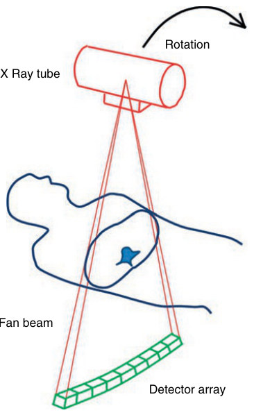
投影。所有投影的集合构成所谓的正弦图，模拟 CT 采集的数学变换称为 Radon 变换。图 2.1 所示为测量装置的简化示意图。
采集系统绕患者旋转。在现代 CT 扫描仪中，一次旋转最多可采集约 2500 个投影。每个投影包含的数值数量等于探测器列中的探测器单元数。所有投影的集合构成一个断层的原始数据。为了加快采集速度并减少运动伪影，现代 CT 扫描仪采用了大量探测器列（最多达 256 列）以及沿患者纵向加宽的"金字塔形"射线束。
CT 检查可以采用序列或螺旋（helical）方式完成。在第一种模式下，断层的采集与检查床的进给交替进行，进给量等于断层准直宽度（层厚）。在第二种模式下，患者移动与采集是连续进行的。在螺旋模式下，检查床的移动速度可通过所谓螺距 p 来设定，p 定义为每次旋转的检查床进给量与断层准直宽度之比。若 p 小于 1，则所采集的断层存在部分重叠（过采样）；若 p 大于 1，则断层
之间有少许间隔，需对原始数据进行插值。螺距依据诊断需求和解剖部位来选择。例如，对胸部等存在运动器官的部位，通常选择 p 大于 1 以减少运动伪影；对腹部，则选择 p 小于 1 以提高图像质量。
过去，螺旋模式在 CT 检查中的应用更为普遍。近年来，随着 CT 技术的巨大发展，制造商大幅增加了探测器列数，对于超过 128 列的采集，必须重新采用序列模式。事实上，对于超过 128 列的探测器阵列，由于 z 方向上射线束孔径极大，螺旋模式下的检查床进给量也相应过大，已无法再重建出足够质量的图像。
CT 图像的表示
采集到的 CT 原始数据包含患者的解剖信息，但不能直接进行可视化解读。为使这些信息可见，必须对采集数据执行"重建"运算（Radon 反变换）（见图 2.2）。
如前所述，在重建过程中，投影 p(I0/I(si, θj), log 0) 被转换为线性衰减系数（LAC）的分布 μ(xk, yl)=μk,l，其中 k, l∈{1, 2, …, 512}。
然而，μk,l 不适合用于图形化表示，因为其数值取决于光子的能量（即所施加的电压），同时也取决于所选的计量单位。为此，Hounsfield 引入了用于图像可视化的另一参数，即所谓的
CT 值（CT number 或 CT#），通过以下仿射变换（仿射函数）计算得到：
CT 水
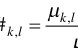
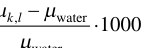
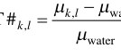
这样定义的单位称为 Hounsfield 单位，用符号 HU 表示。在这一称为 Hounsfield 标度的量纲中，水的 CT# 为 0 HU，空气为 −1000 HU，皮质骨根据其密度不同约为 300～1000 HU，脂肪为 −100～−80 HU，肝脏为 50～70 HU。
重建方法
目前使用的主要重建方法包括滤波反投影（FBP），即直到几年前仍是唯一使用的方法，以及迭代重建（IR），后者正在逐步取代 FBP 而应用于几乎所有类型的检查。
FBP 方法基于对投影数据进行的特定核函数（kernel）的数学卷积运算以及将所得卷积数据在图像矩阵（通常为 512×512 大小）上进行的"反投影"。核函数有多种类型：平滑核用于提高低对比度分辨率，即用于显示软组织；锐利核用于提高空间分辨率，即用于观察骨结构或对比剂；标准核则在低对比度分辨率与空间分辨率之间寻求折中。
迭代重建方法通常以 FBP 重建作为起始点。然而，该图像在数学上被正向投影到原始数据空间（Radon 空间）中。将该正向投影得到的数据集与采集得到的数据集进行比较，生成一个校正数据集，随后将其在图像空间中进行反投影，形成一幅校正图像矩阵。这一循环操作会重复进行若干次，直至校正量可忽略不计，此时图像即可显示。
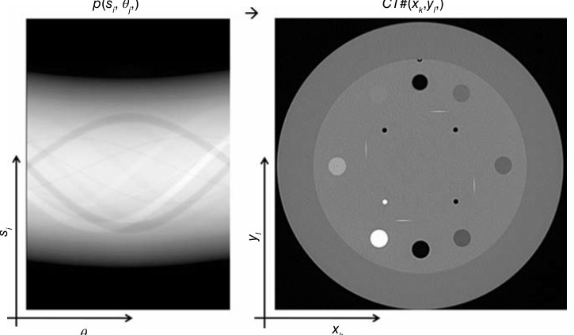
数据集生成校正数据集的过程，通过比较两者获得校正数据集，随后在图像空间内进行反投影，生成校正图像矩阵。这一循环操作会迭代若干次，直至校正量可忽略不计。此时，图像即可显示。
最现代的迭代重建方法还使用对采集系统的数学建模（基于模型的 IR），将数据从图像空间转换至 Radon 空间，以进一步提高图像质量（减少伪影并改善空间分辨力）。此外，还采用统计模型来降低噪声。
除了可以根据待分析组织类型（软组织、骨骼等）选用不同的重建核之外，IR 方法还可通过一个通常从 1 到 5 的所谓强度参数，设定 IR 的"迭代作用程度"，从接近 FBP 的图像过渡到非常"平滑"的图像。
双能 CT
CT 有时难以将骨性结构与邻近的增强结构区分开来，因为这些材料可呈现相似的衰减值。为解决这些问题，开发了双能扫描仪，可在 kV 维度上对衰减系数进行研究：μ = μk,l,m(kV)。由于 μ（尤其在低 kV 时）不仅取决于材料密度，还取决于其化学组成，因此通过双能采集，不仅可如上所述将骨骼与含对比剂的血管结构区分开，还可进行材料成分分析。该技术还可对诸如尿酸性与非尿酸性肾结石等材料进行分析和鉴别 [6]。
双能 CT 技术（DECT）是对同一解剖部位同时进行两次采集，但使用两种不同的管电压（两种不同的 X 线能谱），通常一种为 80 或 100 kV，另一种为 140 kV。实现双能采集的技术有多种：双源、快速 kV 切换和双层探测器。
双源技术（DSCT）由 Siemens Healthcare 开发，基于两套 X 射线管–探测器采集系统，两者之间偏移约 90°，安装于同一机架内。在这种情况下，两支 X 射线管可分别施加不同的电压。DSCT 扫描仪也可使用相同电压并配合高螺距进行快速采集（Flash 采集模式，例如用于心脏检查），或使用相同电压及标准螺距以提高有效 mAs，从而改善体格较大患者的图像质量。
快速 kV 切换技术由 GE Healthcare 开发，使用一种特殊的高压发生器，能够在低值和高值之间快速切换 kV。
双层探测器技术由 Philips Healthcare 开发，它并非对患者施加两种不同的 X 线能谱，而是在采集阶段通过双层探测器直接进行能谱分析。该探测器能够将"高能"光子与"低能"光子分别采集。
从概念上讲，双能技术是融合成像技术的前身，尽管在时间顺序上它出现于其中一些技术之后。事实上，在这种情况下，将两种相同的技术以不同的采集参数相结合，可相对于两次单独的采集改进、整合并增添更多的诊断信息。
核医学断层成像
单光子发射断层成像
引言
单光子发射计算机断层成像（SPECT）是一种使用传统 γ 照相机生成体内功能过程的三维图像或分布图的成像技术。
与其他诊断性核医学检查（即 PET）相似，它涉及向其体内施用放射性标记化合物，随后该化合物被人体内特定器官、组织或细胞选择性摄取。SPECT 中使用的大多数放射性药物由发射 γ 辐射的放射性核素标记。该辐射由处于激发态的原子核发射。这些原子核随后通过发射一个或多个 γ 光子（
Z A X X * ）或通过内转换过程达到基态（瞬时达到或经一定时间延迟达到——亚稳态核的情况），从而到达基态。最常用的放射性核素是锝-99m（99mTc），它是锝的亚稳态核同质异能素，发射 140 keV 的 γ 射线。
SPECT 的物理原理
通常使用闪烁照相机系统（也称为 Anger 照相机或 γ 照相机）进行 γ 射线成像。该 γ 照相机由 Hal O. Anger 于约 60 年前设计 [7]，其原理基于使用单块大面积（例如 50 cm × 40 cm 的碘化钠铊激活晶体 NaI(Tl)）闪烁晶体，并配备铅准直器（通常为平行孔设计），仅允许沿特定方向行进的光子到达探测器（图 2.3）。准直器的设计是决定成像系统灵敏度和空间分辨力的最重要因素。在晶体后方，光导与一组光敏光电倍增管阵列进行光学耦合
光电倍增管（PMT）按比例将闪烁光的空间分布转换为电信号。一个 PMT 由一个光电阴极和一系列打拿极组成，封装在一个抽真空的玻璃壳内。打拿极链提供内部放大作用，从而产生具有良好信噪比的电输出。随后，PMT 的输出信号经 Anger 逻辑电路处理，生成表示光子与晶体相互作用空间位置的输出信号。被吸收的 γ 射线沉积的总能量通过对所有 PMT 信号求和得到。采用多道分析器测量探测光子的能谱。利用多道分析器，在放射性同位素的光电峰上设置能量窗。由于闪烁探测器的能量分辨率有限，能量窗的上、下阈通常设定在主 γ 射线能量 ±10% 范围内。随后由计算机系统显示患者体内放射性分布的二维（2D）投影图像。
图像质量退化因素
SPECT 图像的定量准确度与质量受多种物理和临床退化因素的影响。物理因素包括噪声、衰减、散射、死时间以及由有限空间分辨率导致的部分容积效应（PVE）。此外还有一些与受试者相关的因素，如自主和不自主运动。
噪声与探测计数中的统计涨落有关。核医学检查中的计数统计学取决于相机灵敏度、注射活度及采集时间。噪声还随重建算法及所实施的校正方法而变化。
光电吸收和康普顿散射造成的衰减是影响图像质量的主要退化因素之一。衰减的程度取决于光子在到达探测器前在组织中所经过的路径长度，以及该组织在相应光子能量下的线性衰减系数（LAC）。
在到达辐射探测器之前发生散射的光子携带着关于衰变位置的错误信息。散射光子的比例较高：在脑 SPECT 显像中约为 20%–30%，在心脏和体部 SPECT 显像中，对于 140 keV 的光子约为 30%–40%。
SPECT 图像由在不同角度环绕患者采集的二维投影图像经适当的重建算法获得（见
γ 照相机所获得的图像还受空间变化的准直器–探测器响应（CDR）的影响，其形状是决定 SPECT 图像空间分辨率的主要因素 [8]。
（CDR），其形状是决定 SPECT 图像空间分辨率的主要因素 [8]。
正电子发射断层成像
引言
PET 基于 β+衰变，在此过程中，质子数过剩的原子核通过将一个质子转变为一个中子并发射一个正电子（β+）和一个中微子（ν）而达到稳定：
正电子在物质内部沿一条曲折的路径行进数毫米，通过与原子电子的库仑相互作用逐步降低其动能。当达到热能时，正电子与电子通过湮灭过程发生相互作用（图 2.4），在此过程中，正电子和电子将其质量转化为能量，在质心参考系中产生两个沿相反方向同时发射的 511 keV 光子。
PET 的物理原理
与 γ 照相机类似，几乎所有 PET 系统的湮灭光子探测都由耦合到 PMT 的闪烁晶体完成。然而，与 SPECT 不同的是，由于需要探测高能光子（511 keV）并要求良好的时间分辨率，闪烁晶体并非由传统的
β+ = 正电子
γ = 光子
图 2.4 正电子–电子湮灭反应。 Figure 2.4 Positron–electron annihilation reaction.
NaI(Tl) 构成，而是选用以下闪烁晶体之一 [9]：
● 锗酸铋，BGO
● 掺铈的硅酸镥，LSO
● 掺铈的硅酸钇镥，LYSO
● 硅酸钆，GSO
最常用的闪烁晶体与 PMT 排列方式是块状探测器（图 2.5），其中一组晶体单元共享数量较少的 PMT。在晶体矩阵与 PMT 之间设置的光导使闪烁光可在多个 PMT 之间共享。湮灭光子在一个块体内的相互作用位置通过 PMT 的输出信号，并采用加权质心算法（类似于 γ 照相机的 Anger 逻辑）确定。随后采用实验测定的查找表进行线性校正。
在传统的块状结构中，每个探测器块独立于周围其他块工作：光信号不在块之间传递，一个块中的光电倍增管（PMT）也不受相邻块信号的影响。光电倍增管也可以放置在相邻块的角落，从而形成一种具有更好空间分辨率的替代设计（即图 2.5 中的共享探测器）。
完整的扫描仪系统由呈环形结构的块状探测器围绕患者组成的圆柱形阵列构成。为同时采集多个横断层面，使用了多环探测器。在二维采集模式下，在探测器环之间插入一组隔片，以提供准直。当数据采集不采用任何层面间隔片时，扫描仪以三维模式工作，视场内所有轴向角度的符合事件都将被接受，从而使系统灵敏度相比二维模式提高 4–6 倍。所有较新型号的 PET 仅以三维模式工作。
与旋转照相机型 SPECT 系统不同，全环 PET 系统可同时采集断层成像所需的所有投影数据。
数据采集
PET 的数据采集利用了湮灭过程的特性，并基于符合探测。由于湮灭光子共线且同时产生，只有在时间差小于约 10 ns（符合时间窗）内被两个相对探测器探测到的光子才被认定为符合事件；其余所有未被时间符合的光子均被剔除。
符合探测确定了一条响应线（LOR），湮灭事件即沿该响应线发生，且
无需使用准直器来限制光子的可能方向（如 SPECT 中那样）。响应线上的每一点发生湮灭事件的概率相等。在采用飞行时间（TOF）技术的 PET 系统中，利用两个光子到达时间的差异来确定湮灭事件沿响应线的最可能位置。通过测量 TOF 来定位湮灭事件的空间不确定度 Δx，受时间分辨率 Δt 的影响，其关系如下：
TOF 信息的引入改善了信噪比，显著减少了偶然随机事件，并允许处理高计数率 [10]。
除了真符合——即两个湮灭光子在与周围介质无相互作用的情况下到达探测器——之外，还存在假符合。事实上，PET 扫描仪还会探测到散射符合、随机符合和多重符合（图 2.6）。在散射符合中，至少有一个探测到的光子经历了康普顿散射事件，导致其能量和轨迹发生改变，从而造成响应线的错误识别。
当来自两个独立湮灭事件的光子在符合时间内被探测到时，即发生随机符合。在多重符合中，符合时间窗内于不同探测器探测到两个以上的光子，无法唯一定义响应线。
用于描述扫描仪系统性能的一个品质因数是噪声等效计数率（NECR）：
其中 T、S 和 R 分别为真符合、散射符合和随机符合的计数率。
评估 PET 性能的另一个重要参数是空间分辨率，以点扩展函数的半高全宽（FHWM）表示，并通过以下公式参数化：
FWHM K d b D r p / . 2 0 0022 2 2 2 2 2
其中 d 为晶体尺寸，b 与 γ 射线与闪烁体相互作用特性有关，系数 0.0022D 是与湮灭光子非完全共线性相关的误差（D 为
探测器环直径），r 是与湮灭前非零正电子射程相关的参数。系数 p 称为视差误差，其来源于缺乏相互作用深度位置的信息。K 与重建算法及重建参数的选择有关。
有限的空间分辨率和对连续三维活度分布的离散图像采样产生了所谓的部分容积效应（PVE），它对核医学图像的定性和定量分析均有影响。由于 PVE 的影响，小肿瘤在图像上会显得比实际更大，但代谢活性显得更低（即代谢活跃度较低）。
SPECT 与 PET 中的定量数据校正
为在 PET 和 SPECT 图像中获得准确的定量信息，需对死时间、随机符合（仅 PET）、散射、部分容积效应及衰减进行校正。关于 SPECT 定量校正方法的更多细节，建议参阅 Bailey 和 Willowson [11] 以及 Willowson 等 [12]；PET 部分则推荐 Zaidi [13]。以下为简要概述。
死时间损耗首先被建模为瘫痪型与非瘫痪型组件的组合，然后通过对衰减放射源进行重复测量，实验性地确定模型参数。
在 PET 中，随机符合通常使用延迟符合时间窗进行扣除，而散射校正则通过能窗鉴别结合模拟散射过程的模型来实现（单散射模拟方法即为一例[14, 15]）。
SPECT 中的散射事件通常利用与能峰窗相邻的附加能窗进行估计。在双能窗（DEW）方法中，仅使用位于能峰窗之前康普顿边缘的一个能窗。Ogawa 等[16]报道的三能窗（TEW）技术则使用两个
窄散射能窗，分别位于能峰窗的上下两侧（图 2.7）。基于散射事件蒙特卡罗估计的更精确、更复杂的解决方案也已被开发出来[17, 18]。
已开发出多种部分容积校正（PVC）方法，大致可分为两大类：重建后方法和重建中方法。如需了解更多信息，请参阅 Hoffman 等[19]、Rousset 等[20]、Müller-Gärtner 等[21]以及 Teo 等[22]。
对于定量 PET 和 SPET 显像而言，最重要的校正是衰减校正。发射出的 γ 光子或湮灭光子在被探测到之前必须穿过患者的身体。在穿行过程中，它们会受到吸收和散射的影响，从而导致光子衰减
（图 2.8）。如果组织是均匀的，则衰减可由以下数学公式表示：
其中 I 和 I0 分别为衰减后和未衰减的辐射强度，μ 为线性衰减系数（LAC），L 为组织厚度。如果组织是不均匀的，则衰减由一个稍复杂的公式表示：
其中 T 表示光子在体内的轨迹，μ(x, y, z) 是三维 LAC 分布（见重建方法一节），dl 是沿轨迹的路径元。因此，进行衰减校正需要获取患者体内 LAC 的空间分布（衰减图）。随着双模态（SPECT/CT 和 PET/CT）系统的出现，衰减图可从 CT 图像中获取[23]。首先需要将 CT 数据（以 Hounsfield 单位表示）转换为放射性核素 γ 发射能量下的 LAC 图，然后将该图像下采样至 SPECT 或 PET 的格式。从所获取的 CT 图像中获得衰减图最常用的方法是所谓的双线性分段缩放法[24, 25]。首先使用一个阈值将 CT 图像中的骨组织与软组织分离，然后对骨组织和非骨组织分别采用不同的缩放因子。在独立的 PET 系统中，可通过透射扫描估算衰减图，其方法是让外部正电子源绕患者旋转，并测定透射光子的衰减。在仅配备 SPECT 而无混合 SPECT/CT 的临床中心，Chang 方法也被广泛
使用。该方法假定衰减系数在身体区域内是均匀的。然而，这一假设会导致衰减校正不完善。
图像重建
从多个二维投影数据获得体内三维放射性示踪剂分布的最后一步是图像重建。断层重建技术可分为两类：解析法和迭代法。解析法包括成熟的 FBP 方法（见重建方法一节）。迭代法可以获得更精确的结果，因为在重建算法的投影和反投影步骤中，可以通过建模某些物理退化因素（如衰减、散射、死时间和系统响应函数）的影响来对其进行补偿。
最常用的迭代算法是最大似然期望最大化（MLEM）[26]，它考虑了发射数据的泊松统计特性。然而，由于其收敛速度较慢，在商用系统中采用该迭代算法的加速版本，即有序子集期望最大化（OSEM）算法。在 OSEM 中，投影数据被划分为多个子集，MLEM 算法仅对投影数据的子集进行处理。通常，OSEM 相对于 MLEM 的加速倍数大致等于所使用的子集数。关于断层图像重建的更多详细内容，可参阅 Cherry 等[27]、Valk 等[28]以及 Wernick 和 Aarsvold[29]。
最新进展
在 PET 探测器技术方面，最新进展包括数字探测器（更准确地说，是固态读出系统）的引入。随着
本术语指的是使用固态探测器（如硅光电倍增管，SiPM）替代传统的 PMT。SiPM 是由半导体雪崩光电二极管（APD）组成的多像素阵列，这些二极管在所谓盖革模式下偏置于雪崩击穿以上工作。每个 SiPM 都可作为单光子计数器进行工作。市售的 SiPM 有两种设计方案（图 2.9）：即所谓模拟 SiPM（aSiPM）和数字 SiPM（dSiPM）。在 aSiPM 中，多个 SiPM 像素相互连接，通过专用集成电路将每个像素的信号进行求和。相反，在 dSiPM 中，每个光电二极管内均集成有电子学电路，可直接以数字形式输出位置和能量信号，无需独立的空和解码 [30]。dSiPM 支持 1:1 探测器耦合，从而实现更高的空间和时间分辨率。
与 PMT 相比，SiPM 具有多项固有优势，例如量子效率高、体积小且形状灵活、对高达 9.4 Tesla 的磁场不敏感，且生产成本较低[31,32]。它们还具有良好的固有时间分辨率，从而可改善 TOF 性能。
数字 PET/CT 系统的物理性能已与传统 PMT 基础系统进行了对比评估[33,34]，结果显示其在灵敏度、高计数率条件下的性能、空间分辨率、灵敏度、准确度及图像质量方面均更优，因而能够缩短采集时间或降低放射性示踪剂剂量。
其他创新方案还包括引入连续床位移动技术，可实现可变移动速度，并对人体各部位 PET 光子计数进行最优化采集。
SPECT 技术的最新进展涉及固态探测器的引入，该探测器已替代
不仅是 PMT（如数字 PET 中那样），还替代了闪烁体，从而实现 γ 光子能量到电子信号的直接转换。最常用的两种探测器材料为碲锌镉（CdZnTe 或 CZT），其次为使用较少的碲化镉（CdTe）。探测器由小尺寸单元（约 2.5 mm×2.5 mm 正方形）构成，光子相互作用的空间定位通过识别产生信号的单元来实现。固态探测器较传统相机的优势包括：空间分辨率提高（当相机可贴近放射源、准直器分辨率影响降低的应用中）、探测面积的充分利用（由于空间定位无需执行 Anger 逻辑）以及优异的能量分辨率（约 5.5%，而传统 γ 相机为 9%–10%）。然而，其灵敏度有所降低：在 140 keV 时，5 mm 厚 CZT 探测器的灵敏度约为 70%，而 9.5 mm 厚碘化钠晶体耦合 PMT 的灵敏度接近 100%。对 511 keV 湮灭光子的灵敏度更低，这是该技术无法应用于 PET 探测的原因。
用于常规尺寸 γ 相机的 CZT 技术于 2016 年推出（GE Healthcare Discovery NM/CT 670 CZT）。2018 年，一种全新设计的 SPECT 系统问世。该系统由 12 个独立的 CZT 探测器臂组成，可提供 360° 覆盖，并使每个探测器尽可能贴近患者。
在软件创新领域，一种新的惩罚似然迭代重建算法已投入使用，可在大量迭代过程中抑制噪声[35,36]。
模拟 SiPM
数字 SiPM
图 2.9 模拟 SiPM 与数字 SiPM 的比较。来源：图像由 Philips Healthcare 提供。 Figure 2.9 Comparison between an analog SiPM and a digital SiPM. Source: Image courtesy of Philips Healthcare.
磁共振成像
引言
1946 年，斯坦福大学的 Felix Bloch 和哈佛大学的 Edward Purcell 观察到核磁共振（NMR）现象[37,38]。MR 扫描仪由三个主要硬件部件组成：主磁体、磁场梯度系统和射频系统。
磁体的功能是产生强而均匀的静磁场，使物体内的核自旋发生极化。为提供良好的图像质量，磁体必须在大范围内具有适度的均匀性。磁场梯度系统由三个正交的梯度线圈组成，用于产生随时间变化的磁场。梯度是 MRI 扫描仪信号定位的关键组件，梯度强度通常以毫特斯拉每米（mT/m）为单位。射频系统包括一个发射线圈和一个接收线圈：发射线圈可产生旋转磁场以激励自旋系统；接收线圈将处理中的磁化信号转换为电信号。同一线圈既可用作发射线圈也可用作接收线圈。MR 图像包含极为丰富的信息。图像像素值通常取决于以下内在参数：核自旋密度 p、自旋-晶格弛豫时间 T1、自旋-自旋弛豫时间 T2 以及分子运动。这些参数的成像效应可通过操作者可选择的参数进行抑制或增强，包括重复时间（TR）、回波时间（TE）和翻转角（α）。即使针对同一解剖部位，采用不同的数据采集协议所获得的 MR 图像外观也可能截然不同。
MRI 的物理原理
原子核由带正电荷的质子和电中性（零电荷）的中子组成。核磁共振现象的基础是一种称为
在静态磁场（B0）作用下，原子核表现为其旋转轴绕 B0 方向的进动（图 2.11）。进动频率（ω）由 B0 的强度和一个常数（每个原子核特有的常数，称为旋磁比 γ）按 Larmor 方程决定：ω = γB0。对于氢核，旋磁比关系约为 42.6 MHz/T。
每个质子的磁贡献可用一个矢量来描述。自旋是量子化的，因此只能取离散值，不能取连续值：+1/2 和 −1/2。
MRI 信号形成
MRI 信号的形成取决于以下条件：
●高强度的静态磁场（B0）（临床诊断中通常为 0.5–1.5 T）。该磁场通常与患者身体长轴平行（按惯例定义为 z 轴或纵向轴）。与之垂直的平面，即患者的横断面，称为 xy 平面或横向平面。
●生物组织中的原子核。
●用于发射和接收电磁波的射频（RF）线圈。
在不存在 B0 的情况下，质子在空间中随机取向，没有优先方向，也不产生任何净磁化。将质子置入高强度 B0 中时，会出现以下现象：
●质子像小磁体一样，沿 B0 方向排列
●质子可处于下态（磁偶极矩与 B0 平行）和上态（磁偶极矩与 B0 反平行）。
上态质子的能量高于下态质子。在 B0 为 1 T 时，两种状态下的质子数差异极小。这种微小差异以百万分率（ppm）来度量：每 1 000 000 个磁偶极矩与 B0 反平行的自旋中，有 1 000 007 个自旋的磁偶极矩与 B0 平行。尽管这种布居数差异很小，但它正是 MR 信号形成的基础 [39]。
因此，每个质子的磁化矢量并非完全平行于 B0，而是绕 z 轴作理想锥形旋转。在平衡条件下，所有小磁化矢量的总和可由一个单一矢量表示，称为宏观磁化矢量（MM），其方向与 B0 一致，强度与下态和上态之间的布居数差成正比。由于该 MM 矢量位于 z 轴上且与 B0 平行，通常称为纵向宏观磁化（MML）或 Mz。
随着 B0 强度的增加，MML 矢量的强度也随之增大，从而使 MRI 信号增强。
为了测量该 MM 并由此获得 MR 信号，需要将其从被 B0 主导的 z 轴翻转至垂直的 xy 平面。为将 MM 翻转至 xy 平面从而获得信号，我们
在与 B0 正交的平面内（圆极化）发射一束频率等于 Larmor（共振）频率的极化电磁波（图 2.12）。在此条件下，系统发生共振，能量从电磁波转移至质子系统，从而产生激发。该射频称为 90° RF 脉冲。然而，通过改变 RF 脉冲的持续时间和强度，MML 矢量可被偏转任意角度（α），而不限于此特定角度。
自由感应衰减与空间编码
在 RF 脉冲停止时，MM 矢量被翻转至横向平面，并在该平面上以由 Larmor 方程决定的频率进动。若在相对于 MML 的横向放置一射频线圈，则 MMT 在该线圈内进动所产生的磁场变化，根据法拉第定律可测得一个电信号。该 MRI 信号称为自由感应衰减（FID），反映了质子向初始状态释放能量的过程（图 2.14）。
为生成三维图像，必须对 FID 共振信号在每一维度上进行编码。在轴向（B0 方向）的编码通过在 B0 之上叠加一个梯度磁场（Gz）来实现（图 2.13）。
此梯度使 Larmor 频率沿轴向呈线性变化。随后施加 Gy，使原子核的共振频率随其在 y 方向的位置而变化。撤去 Gy 后，施加与 Gy 垂直的 Gx：因 Gx 使原子核的共振频率在 x 方向发生变化，因 Gy 而在 y 方向产生相位变化。然后采用二维傅里叶变换将编码后的图像转换至空间域。
脉冲
纵向磁化恢复：弛豫时间 T1
纵向磁化矢量（MML）的平衡恢复过程，即沿磁场方向（平行）的质子自旋与逆磁场方向（反平行）的质子自旋之间关系的恢复，以及随之发生的 MML 重建，被称为纵向弛豫或自旋-晶格弛豫。
对于某个 MRI 序列，TR 是指一次射频激励与下一次射频激励之间的时间间隔。为了获得依赖于两种组织不同 T1 值的信号差异（即 T1 加权图像），必须使用足够短的 TR，因为此时组织没有时间完全恢复 MML，且恢复的 MML 百分比越大，组织的 T1 越短（图 2.14）。
横向磁化矢量衰减：弛豫时间 T2
在射频激励结束（90°射频脉冲）时，质子系统处于相位一致状态。90°脉冲停止后，这种有序状态逐渐减弱，导致 MMT 丧失。这一过程称为自旋-自旋弛豫。与 T1 弛豫不同——在 T1 弛豫中，自旋-晶格弛豫过程存在一个对应于最大效率的
超声成像
超声成像（声像图检查）是一种利用高频声波生成体内器官、组织或血流的动态图像的诊断性医学检查方法。
物理原理
在物理学中，声音是一种机械波，是由振动产生的压力扰动。产生声波的两个必要条件是振动扰动和弹性介质，其中最常见的是空气。声波在所有介质中以纵向方式传播。
声波通常被简化为正弦平面波，其特征由以下参数描述：
●振幅：介质粒子相对于平衡位置的最大位移。
●频率（f）：1 秒内发生的周期数或压力变化次数，以赫兹（Hz）为单位。频率仅由声源决定，而与声波传播的介质无关。
●波长（λ）：一个周期内传播的距离，与频率成反比。频率越高，图像分辨率越高，但穿透力越弱。
●传播速度：单位时间内传播的距离，取决于介质的类型及其状态。在空气中，声波的传播速度约为 340 m/s，在水中为 1450 m/s。在
人体组织中，用于在声像图检查中估算超声在体内传播距离的平均速度被设定为 1540 m/s。
声波的波长、频率与波速（V）之间存在如下关系：
人类通常能够听到 20 Hz 至 20 kHz 范围内的声音。低于 20 Hz 的声音称为次声，而高于 20 kHz 的声音称为超声。医学成像中使用的超声频率范围为 2 至 10 MHz（图 2.15）。
超声与组织的相互作用
当声波在患者体内传播时，其强度会逐渐减弱，这一过程称为衰减（见表 2.1）。衰减由反射、折射、散射和吸收共同造成。声波衰减的程度取决于组织类型，并以衰减系数表示，衰减系数也是频率的递增函数：在相同传播距离下，频率较高的声波通常比较低频率声波衰减更明显。
反射和折射发生在尺寸远大于超声波长的界面上。当界面两侧组织的声阻抗 Z（即密度与传播速度的乘积）存在差异时，便会发生反射。声束的反射称为回声，是超声成像产生的基础。声阻抗差异越大，反射越强（见表 2.2）。反射可分为镜面反射和漫反射。当入射界面足够平整时（如骨骼），发生镜面反射（图 2.16）。在漫反射中，声波以多个角度被反向散射。当入射角趋近于零并垂直于感兴趣组织时，可获得用于成像的最佳反射。
折射是指透射波在通过声速不同的组织界面时偏离其原有传播方向的现象（图 2.16）。偏离量由斯涅尔定律描述：
组织界面，两侧组织的波速不同（图 2.16）。偏离量由斯涅尔定律描述：
其中 VL1 和 VL2 分别为介质 1 和介质 2 中的纵波速度。
图 2.17 折射与伪影。 Figure 2.17 Refraction and artifacts.
折射是临床超声图像中产生伪影的主要原因（图 2.17）。
当声波遇到远小于其波长的结构时，能量会向多个方向散射。这种情况通常发生在与红细胞的相互作用过程中。然而，导致衰减的主要原因是吸收，即声波能量以热能的形式损失。
换能器
超声波由一种称为换能器的装置产生。换能器的功能是将一种物理量（如温度、压力等）转换为另一种物理量（如电位差），反之亦然。超声换能器基于压电原理工作。压电效应是指某些材料在受到机械应力作用时，其表面会产生电荷的特性。机械刺激引起的电学响应称为正压电效应，而电学刺激引起的机械响应称为逆压电效应。
某些晶体材料，如石英和电气石，具有天然压电性。最常用的人工
合成压电陶瓷包括锆钛酸铅（PZT）、钛酸钡和钛酸铅。
超声换能器是一种机电装置，可将电位差转换为超声脉冲包，反之亦然。它由五个部件组成（图 2.18）：
●背衬材料或阻尼材料，用于吸收向后方传播的能量并使振动中的换能器停止，从而仅产生短促而尖锐的超声脉冲（通常为两到三个周期）。
●一层塑料薄膜，用于保护活性元件并有助于将声波传入患者体内。
●位于两个电极之间的一个或多个压电晶体（通常为 PZT）。
●用于晶体与组织之间声学匹配的材料（四分之一波长匹配层）：λ/4 的厚度可使能量从换能器向患者体内的传递达到最大化。
●聚焦透镜。
短促的电压脉冲使压电晶体产生振动，导致压力突然变化，从而产生超声脉冲包（图 2.19）。
图 2.19 超声换能器基于压电原理工作。 Figure 2.19 An ultrasound transducer works on the piezoelectric principle.
当交变电压的频率等于晶体的共振频率时，晶体的形变最大。共振频率 fresonance 与晶体厚度 d 及材料常数 const 之间的关系为：
f const
d 谐振 2
探头工作原理
换能器大约每隔一微秒发射一次信号脉冲，然后等待反射脉冲（图 2.20）。换能器发射超声脉冲包的频率称为脉冲重复频率（PRF）。
当反射信号到达换能器时，压电晶体发生形变，从而产生微小的电位差。该微弱信号随后通过时间增益补偿（TGC）进行放大，对较深处的信号施加更高的增益，以补偿较大的衰减。
如此一来，回声强度仅取决于所穿过界面之间的声阻抗差异。
信号处理
信号处理包括识别产生反射波（即回声）的界面位置以及回声本身的强度。
回声强度来源于压电晶体产生的电位差幅度，并经 TGC 补偿，其大小取决于介质的声阻抗差异。界面的位置由两个参数确定：
●回声所在的扫描线，可由换能器的角度位置获知。
●回声来源的深度，通过测量脉冲发射与回声到达之间所经历的时间（TOF）确定。
显示模式
采集到信息后，可以显示数据。主要有三种显示模式：幅度模式（A 型）、亮度模式（B 型）和运动模式（M 型）。
在 A 型中，每个回声以光峰的形式显示，光峰的高度与信号强度成正比，位置则取决于回声来源的深度。由于该模式可进行精确测量，因此用于眼科的眼球测量。
在 B 型中，不同幅度的回声被转换为不同亮度的点，其亮度取决于回声强度，用于生成解剖图像，深度与脉冲的 TOF 成正比。较强的反射表现为较亮的白点，而较弱的反射则表现为较暗的灰点。
M 型记录回声的位置和运动。回声以亮点形式显示，亮点高度与回声幅度成正比：若界面保持静止，则表现为一条直线；若界面处于运动状态，则表现为一条正弦曲线。
多普勒
多普勒效应（或多普勒频移）是指波的频率相对于运动观察者与波源之间的相对运动而发生的变化。
图 2.21 诊断超声中的多普勒效应。换能器发射频率为 f0 的声波。由于红细胞（橙色结构）相对于介质以速度 v 运动，声波被换能器接收时产生频率变化 ∆f。 Figure 2.21 Doppler effect in diagnostic ultrasound. The transducer transmits acoustic waves with a frequency f0. Due to the movement of red blood cells (orange structure), with a speed v with respect to the medium, the acoustic waves are then received by the transducer with frequency variation ∆f.
在诊断超声中，当发射的声波撞击运动的红细胞时会产生多普勒频移（图 2.21）。
考虑单个红细胞相对于介质以速度 v 运动，且与超声传播方向成角度 θ，超声频率为 f0、传播速度为 v0，则换能器在发射和接收声波时产生的频率变化为：
cos
频率变化通常在 20 Hz～20 kHz 范围内，因此处于人耳可感知的频谱范围内。在检查过程中，可以听到其频率与被测血管内红细胞速度相关的声响。
并非所有红细胞都具有相同的速度，而是存在一定的速度分布：在静脉中通常呈抛物线型分布，而在大动脉中则可随心动周期而变化。因此，有必要进行频谱分析（使用适当的信号处理工具，如快速傅里叶变换）以获得频率分布，进而得到红细胞速度的分布。
多普勒超声设备有多种类型，但最常见的两种是连续波多普勒（CW）和脉冲多普勒。
在 CW 多普勒中，一个晶片连续发射，另一个晶片连续接收。该配置可准确记录高速血流，但不能确定运动红细胞的确切位置。
在脉冲波多普勒（PW）中，在预定距离处研究血流，换能器为单一晶片，兼具发射和接收功能。在这种情况下，
发射短脉冲后，换能器本身在经过一定时间间隔后接收散射信号，该时间间隔对应于探头与被检血管之间的距离。PW 多普勒在测量高速信号时不够准确。
两种类型的多普勒超声成像均以笛卡尔平面上的速度（通常以 m/s 为单位）随时间变化的图形表示。
多普勒信息可以以两种方式呈现：彩色多普勒和能量多普勒。彩色多普勒是以色谱标尺对血流进行全景显示：远离探头的血流被标记为红色，而朝向探头的血流被标记为蓝色。能量多普勒显示血流强度：蓝色代表较强血流，红色代表较弱血流。能量多普勒通常对血流更为敏感，但不能区分运动的方向。
能量多普勒主要用于研究最细小和最深部位的血管，或那些由于血流过慢而无法通过彩色多普勒良好显示的血管。
融合成像
融合成像指使用一台成像设备，将互补的成像模态物理组合在一起，以产生固有配准的不同图像数据集。融合成像设备的例子包括 PET/CT、SPECT/CT 和 PET/MR。
融合成像不同于图像融合，后者使用软件配准技术对在不同地理位置的成像设备上产生的不同图像数据集进行配准。
SPECT/CT 与 PET/CT 系统
将核医学模态（SPECT 或 PET）与高分辨率解剖成像模态（如 CT）相结合所提供的诊断潜力推动了 SPECT/CT 和 PET/CT 等融合系统的发展，这两种系统分别于 1999 年和 2000 年进入临床应用。这些系统由单一设备整合两种成像模态组成，可在一次患者检查中采集两种模态的数据。数据按顺序采集，患者检查床在两个设备之间移动。由于子系统之间存在相互干扰，无法同时进行数据采集。
大多数 SPECT/CT 设计采用配备高性能多层 CT 组件的双探头 γ照相机，以获得更佳的图像质量、更快的数据采集速度以及更广泛的 CT 协议选择。
传统上，在 SPECT/CT 系统中，功能数据作为主要信息源，CT 数据作为次要信息源。2013 年，xSPECT 技术被引入，这是 SPECT/CT 领域的一项真正革命性产品 [40]。xSPECT 技术代表了一种全新理念，将 SPECT 与 CT 进行了更完整的整合，将成像参考坐标系从 SPECT 转移至 CT。以空间分辨率更佳的 CT 为基础对 SPECT 和 CT 进行对齐，从而保持其空间精度。此外，xSPECT bone 是 xSPECT 针对骨 SPECT 检查的专用解决方案。将基于 CT 的组织分割整合到 SPECT 重建中，以提供具有骨解剖学外观的 SPECT 图像。
PET/CT 系统是独立 CT 和 PET 扫描仪的精确对齐组合，共享同一患者检查床。市售产品有两种设计：一种是更紧凑的单一机架系统，另一种是两个独立的机架之间留有间隙以提高患者舒适度。
这种融合成像的优势在于解剖图像与功能图像天然配准。这使得通过 CT 获取的透射图像可与发射图像即刻融合，提供功能-解剖映射图，从而精确定位放射性示踪剂的摄取。还已证实，由于互补信息的协同作用，融合系统的诊断信息优于单一成像方案。
此外，CT 图像可用于衰减校正（参见 SPECT 和 PET 中的定量数据校正一节）。与其他衰减校正方法（如使用外放射源进行的透射校正）相比，基于 CT 的衰减校正（AC）在降低统计噪声、缩短采集时间以及提高衰减图的准确性方面具有优势。然而，由
于两次扫描间患者运动或采集过程中呼吸动力学差异导致两个成像系统之间的空间配准不准确，可能造成解剖成像与功能成像之间错误关联以及衰减校正不准确。基于 CT 的 AC 中另一个偏倚来源是金属植入物（例如牙科植入物、髋关节假体、心脏起搏器等[41]），会在 CT 上产生明暗条带状伪影。目前临床软件已配备金属伪影减除（MAR）算法[42]。
最后，能够在同一检查中同时完成解剖和功能成像，对患者和医院在流程安排上均具有优势。然而，将 CT 纳入 SPECT 和 PET 组件后，接受核医学检查的患者所吸收的辐射剂量也随之增加。
PET/MR
在 PET/CT 成像成功的推动下，2010 年一种新的融合成像方式进入临床领域。同年，首批全身 PET/MR 成像系统在市场上出现。
与 CT 相比，MR 具有重要的诊断优势，即更佳的软组织对比度和更低的辐射剂量。MR 还可同时提供功能和解剖信息。这些特点使 PET/MR 成为 PET/CT 的一个颇具吸引力的替代选择。
然而，PET/MR 的研发一直受到技术问题的制约，这些问题源于 PET 与 MRI 子系统之间的相互干扰。从 PET 的角度看，光电倍增管（PMT）对磁场高度敏感，因而无法在 MR 磁体内工作。从 MR 的角度看，PET 硬件可能产生电磁干扰，对 MR 成像造成负面影响，例如信噪比降低、伪影、静磁场不均匀性以及涡电流[43]。
解决这些问题的一种可能方案是将 PET 与 MR 单元在空间上分离，并结合适当的屏蔽。该方案允许 PET 与 MR 信号的序贯采集。另一种替代方案是使用完全集成的 PET/MR 系统同时采集 PET 和 MR 数据。
完全集成系统的开发得益于技术创新。采用对磁场不敏感的固态光电探测器（如 APD 或 SiPM）取代传统的 PMT。标准 PET 部件（如电阻、电容、连接器）的无磁化版本得以保持主磁场的均匀性。采用磁化率接近人体组织（即基于镥的闪烁体取代镥钆氧正硅酸盐）的闪烁体材料，并结合对 PET 部件的适当屏蔽，以最大限度地减少射频范围内的电磁干扰。最后，采用更大孔径的 MR 磁体，使 PET 探测器能够安置于体部射频线圈与梯度组之间。
闪烁体取代镥钆氧正硅酸盐）结合对 PET 部件的适当屏蔽被加以应用，以最大限度地减少射频范围内的电磁干扰。最后，MR 大孔径磁体的引入使 PET 探测器能够安置于体部射频线圈与梯度组之间。
同步采集是集成 PET/MR 成像所独有的特点，因为其他任何组合成像系统均不具备此功能。与序贯采集相比，同步采集具有若干重要优势，包括 PET 与 MR 成像数据的时间相关性、扫描时间更短、设备占地面积更小，以及因患者位置差异和扫描间运动所致的配准误差最小化。此外，同步 PET-MR 成像能够对 PET 图像中的自主和非自主运动模糊进行校正，因为实时三维 MRI 可提供随时间变化的解剖信息[44]。
在 PET/MR 系统中，PET 图像的衰减校正并非像 PET/CT 那样简单。MR 图像无法像 CT 那样直接用于推导衰减图，因为 MR 信号与电子密度（光子衰减的主要来源）并无直接相关性。因此，某些结构（例如骨骼）虽然具有较高的光子衰减，但在常规 MR 图像上却可能呈现接近于空气的近零信号。
基于 MR 的衰减校正（MRAC）算法可分为三大类：基于分割的方法、图谱配准法以及基于发射/透射的方法。每种算法各有利弊。此处仅讨论基于分割的方法，它是所有主要 PET/MR 厂商所选用的方法。
基于分割的算法依赖于冠状位两点 Dixon T1 加权 MR 采集，可重建出纯脂相、纯水相及脂水混合图像，并实现空气、脂肪、肌肉和肺组织的组织分割。早期的研究为每个体素类别分配预设的 LAC 值（0、0.022、0.085、0.100 cm–1）以生成衰减图。近年来，已提出为体素分配连续 LAC 值的方法 [45, 46]。该方法在软组织中可提供准确的衰减校正，但由于骨组织被误判为软组织，在量化骨性病灶时会产生显著的定量误差（最高可达 31% [47]）。这一问题已通过以下方式得到部分解决：采用基于超短回波时间序列（UTE）的改进分割方法，该方法能够更好地检出骨组织这一本身 T2 值较短的组织 [48]；或更高效地将基于 Dixon 的 MR-AC 与基于图谱的方法 [49] 相结合，以在 MR 衰减图中回顾性地补充骨组织信息。
在一体化 PET/MR 扫描仪上，除组织衰减外，还需考虑其他衰减来源，例如患者检查床、患者定位辅助装置以及放置于 PET 视野内的射频线圈 [48]。硬件组件的衰减校正通常在 PET 重建过程中完成，所使用的预设衰减图由系统制造商通过对射频线圈和患者检查床进行 CT 透射扫描获得 [50, 51]。
MRAC 的一项偏倚来源与截断伪影有关，这是由于 MR 视野有限，可能导致患者双臂被部分或完全截断，进而引起发射数据的校正不足 [52]。截断校正可基于 MR 图像 [53, 54] 或 PET 图像 [55] 实现。基于 MR 成像的衰减校正还会受到金属伪影的影响，后者会在基于 MR 的衰减校正植入物体积中引入信号缺失或局部图像变形。
三模态扫描仪
目前已有商用三模态解决方案，例如 SPECT/CT/PET 一体化系统（Mediso AnyScan）或通用电气公司的三模态 PET/CT 与 MRI 扫描仪。后者由两套独立系统（PET/CT 和 MRI）组成，分别位于相邻房间，通过共用的患者检查床在两台扫描仪之间移动。患者可在不改变体位的情况下依次完成 PET/CT 采集和 MR 检查，从而便捷地获得 PET、CT 和 MRI 的全身图像融合。
实时超声图像融合
目前已有多种商用超声系统可实现实时超声与 CT、MRI 或 PET/CT 的图像融合。实时图像融合需要跟踪系统和配准过程 [56]。
跟踪系统可在整个操作过程中实时显示超声探头在三维空间中的位置。最常用的两种跟踪方法包括：
● 电磁跟踪（如实时虚拟声像技术）
● 机械位置编码
在电磁（EM）跟踪中，超声探头的位置通过附着于探头上的小型传感器获得，该传感器与患者外部的磁场发生器相互作用。传感器在可变磁场中充当线圈：根据法拉第定律，当线圈置于持续变化的磁场中时会产生电流。随着超声探头的移动，位置传感器中的电流大小相对于磁场发生变化。根据这些信息，安装在超声系统中的位置传感器单元可计算出探头在 (x, y, z) 坐标系中的精确位置。
（从而定位探头的精确位置。）
机械位置编码通过机械臂或机械步进器直接连接探头以跟踪其位置。探头在三维空间中的位置通过机械臂关节中的角度传感器或机械步进器臂关节中的位置编码器进行编码，并自动传送至计算机 [57]。
大多数用于实时超声成像融合的商用超声系统均基于电磁跟踪系统。电磁跟踪仅测量超声探头在空间中的位置和方位，与患者解剖结构并无直接关系。因此，必须使用外部基准标记或内部解剖标志进行配准。
先前记录的 CT、PET/CT 或 MRI 数据集被上传至超声机，并通过基准标记进行配准。随后，将 CT、MRI 或 PET/CT 数据重新缩放为超声格式。大多数系统使用刚性变换矩阵，相比非刚性矩阵，其更简单且所需的配准点更少。
这些系统无法补偿患者自主和不自主的运动，可能导致对位不良。为减轻此问题，配准应在与先前采集数据相同的呼吸时相进行，或增加更多的配准点。
超越数学规则：一加一大于二！
遗憾的是，并不存在能够提供疾病诊断所需全部信息的通用诊断技术。更为常见的是，需要综合多种技术的贡献以获得全面的诊断信息。
例如，CT 能够提供人体及人体内器官的解剖与形态三维信息。它特别能够突出显示与周围组织密度不同的组织区域，因为某一点 (x, y, z) 处的物质密度与线性衰减系数成正比 ρ(x, y, z)∝μ(x, y, z)（在 CT 离散空间中为 ρk, l, m∝μk, l, m）。因此，CT 是显示高对比结构（如骨组织、增强后的血管系统等）的最佳成像技术。
本页为参考文献（完整列表见章末）
本页为参考文献（完整列表见章末）
Hasegawa, B.H., Iwata, K., and Wong, K.H. (2002). Dual-modality imaging of function and physiology. Acad. Radiol. 9: 1305–1321. medium, etc., as these structures exhibit a high density compared to neighboring tissues, providing a high contrast to their interface. For high-contrast structures, CT has very high spatial resolution, which in the latest generation of CT scanners can reach 0.2mm (2.5lp/mm). MRI can provide detailed anatomical information on tissues that contain hydrogen and therefore in particular on soft tissues, where CT is not so bright. PET, as well as SPECT, by measuring the accumulation of radiopharmaceutical in the tissues, is able to provide functional and metabolic information on the tissues. It is therefore clear that the combination of these complementary techniques in a single device (hybrid imaging) brings significant advantages in terms of time, but also and above all in terms of spatial and temporal accuracy. In hybrid imaging, the information from the different imaging modalities is not simply gathered together but is integrated at a deeper level, achieving more than an additive effect (e.g. PET/CT>PET+CT). In fact, in addition to the potential advantages of having complementary information in the same session and without the need for co-registration, hybrid imaging provides many additional synergistic effects. Anatomical and function information from hybrid systems provides information that cannot be easily inferred from one type of image alone. In addition, these systems offer the possibility of using anatomical data (from CT or MRI) to improve both the visual quality and the quantitative accuracy of the correlated radionuclide imaging. Considering, for example, PET/MR systems. MRderived anatomic information may improve PET quantification, in-motion artifact reduction [thanks to the use of MR sequences acquired repeatedly with high temporal resolution (2–6s), [58, 59]] or in-attenuation correction. In addition, simultaneous data acquisition (with PET/RM) allows the addition of kinetic, functional, and metabolic information for real-time multiparametric functional imaging. For other examples, see section Dual-Energy CT and section SPECT/CT and PET/CT Systems. Beyond these attractive prospects, hybrid imaging has effectively been shown to benefit clinical practice in many aspects [60, 61]: increasing oncologic staging accuracy [62, 63], changing the therapeutic strategy, assessment of early treatment response [64], to name a few. To conclude, we would like to quote the words of a great philosopher, Aristotele: “The whole is greater than the sum of its parts.” 2 Hasegawa, B.H., Tang, H.R., and Da Silva, A.J. (2000). Dual-modality imaging. Nucl. Instr. Meth. Phys. Res. A 471: 140–144.
Beyer, T., Townsend, D.W., and Brun, T. (2000). A combined PET/CT scanner for clinical oncology. J. Nucl. Med. 41: 1369–1379.
J. Radon, "Über die Bestimmung von Funktionen durch ihre Integralwerte längs gewisser Mannigfaltigkeiten.," Ber. vor Sächs. Akad. Wiss., 69: 262–277, 1917. English translation available [J. Radon}: On determination of functions from their integraI values along certain manifolds. IEEE Trans. Med. Imaging, MI-5(4): 170–176, 1986.
Kalender, W., Seiss ler, W., and Vock, P. (1989). Single-breath-hold spiral volumetric CT by continuous patient translation and scanner rotation. Radiology 173: 414.
Lombardi, F., Bonatti, M., and Zamboni, G.A. (2017). Uric acid versus non-uric acid renal stones: in vivo differentiation with spectral CT. Clin. Radiol. 72: 490–496.
Anger, H.O. (1958). Scintillation camera. Rev. Sci. Instrum. 29: 27–33.
Frey, E.C. and Tsui, B.M.W. (2006). Collimator-detector response compensation in SPECT. In: Quantitative Analysis in Nuclear Medicine Imaging (ed. H. Zaidi), 141–166. New York: Springer.
Lecoq, P. (2015). Development of new scintillators for medical applications. Nucl. Instr. Meth. Phys. Res. A 809 (Supplement C): 130–139.
Moses, W. Time of flight in PET revisited. IEEE Trans. Nucl. Sci. 50: 1325–1330.
Bailey, D.L. and Willowson, K.P. (2013). An evidencebased review of quantitative SPECT imaging and potential clinical applications. J. Nucl. Med. 54: 83–89.
Willowson, K., Bailey, D.L., and Baldock, C. (2008). Quantitative SPECT reconstruction using CT-derived corrections. Phys. Med. Biol. 53: 3099–3012.
Zaidi, H. (2006). Quantitative Analysis in Nuclear Medicine Imaging. Basel: Springer.
Watson, C., Casey, E., Michel, C., and Bendriem, B. (2004). Advances in scatter correction for 3D PET/CT. IEEE Symp. Conf. Rec. Nucl. Sci. 2004 (5): 3–7.
Watson, C. (2000). New, faster, image-based scatter correction for 3D PET. IEEE Trans. Nucl. Sci. 47: 1587–1594.
Ogawa, K., Harata, Y., Ichihara, T. et al. (1991). A practical method for position-dependent Compton-scatter correction in single photon emission CT. IEEE Trans. Med. Imaging 10: 408–412.
Peterson, M., Gustafsson, J., and Ljungberg, M. (2017). Monte Carlo-based quantitative pinhole SPECT reconstruction using a ray-tracing back-projector. EJNMMI Phys. 42: 32.
Elschot, M., Lam, M., Van den Bosch, M. et al. (2013). Quantitative Monte Carlo-based 90Y SPECT reconstruction. J. Nucl. Med. 54: 1557–1563.
Hoffman, E., Huang, S., and Phelps, M. (1979). Quantitation in positron emission computed tomography: 1. Effect of object size. J. Comput. Assist. Tomogr. 3: 299–308.
Rousset, O., Ma, Y., and Evans, A. (1998). Correction for partial volume effects in PET: principle and validation. J. Nucl. Med. 39: 904–911.
Müller-Gärtner, H., Links, J., Prince, J. et al. (1992). Measurement of radiotracer concentration in brain gray matter using positron emission tomography: MRI-based correction for partial volume effects. J. Cereb. Blood Flow Metab. 12: 571–583.
Teo, B., Seo, Y., Bacharach, S. et al. (2007). Partial-volume correction in PET: validation of an iterative postreconstruction method with phantom and patient data. J. Nucl. Med. 48: 802–810.
Blankespoor, S., Wu, X., Kalki, K. et al. (1995). Attenuation correction of SPECT using X-ray CT on an emission-transmission CT system: myocardial perfusion assessment. IEEE Nucl. Sci. Symp. Conf. Rec. 2: 1126–1130.
Kinahan, P., Hasegawa, B., and Beyer, T. (2003). X-raybased attenuation correction for positron emission tomography/computed tomography scanners. Semin. Nucl. Med. 33: 166–179.
Kinahan, P., Townsend, D., Beyer, T., and Sashin, D. (1998). Attenuation correction for a combined 3D PET/ CT scanner. Med. Phys. 25: 2046–2053.
Shepp, L. and Vardi, Y. (1982). Maximum likelihood reconstruction for emission tomography. IEEE Trans. Med. Imaging 1: 113–122.
Cherry, S., Sorensen, J., and Phelps, M. (2003). Physics in Nuclear Medicine. Grune & Stratton, Inc: Orlando, FL.
Valk, P., Bailey, D., Townsend, D., and Maisey, M. (2003). Positron Emission Tomography: Basic Science and Clinical Practice. London: Springer-Verlag.
Wernick, M. and Aarsvold, J. (2004). Emission Tomography. San Diego, CA: Elsevier Academic Press.
Liu, Z., Pizzichemi, M., Auffray, E. et al. (2016). Performance study of Philips digital silicon photomultiplier coupled to scintillating crystals. J. Instrum. 11: 01.
Pichler, B., Judenhofer, M., Catana, C. et al. (2006). Performance test of an LSO-APD detector in a 7-T MRI scanner for simultaneous PET/MRI. J. Nucl. Med. 47: 639–647.
Spanoudaki, V.C., Mann, A.B., Otte, A.N. et al. (2007). Use of single photon counting detector arrays in combined PET/MR: characterization of LYSO-SiPM detector modules and comparison with a LSO-APD detector. J. Instrum. 2: P12002.
Wagatsuma, K., Miwa, K., Sakata, M. et al. (2017). Comparison between new-generation SiPM-based and conventional PMT-based TOF-PET/CT. Phys. Med. 42: 203–210. 34 van Sluis, J., de Jong, J., Schaar, J. et al. (2019). Performance characteristics of the digital biograph vision PET/CT system. J. Nucl. Med. 60 (7): 1031–1036.
Teoh, E., McGowan, D., Macpherson, R. et al. (2015). Phantom and clinical evaluation of the bayesian penalized likelihood reconstruction algorithm Q.Clear on an LYSO PET/CT system. J. Nucl. Med. 56 (9): 1447–1452.
Yang, L., Zhou, J., Ferrero, A. et al. (2014). Regularization design in penalized maximum-likelihood image reconstruction for lesion detection in 3D PET. Phys. Med. Biol. 59 (2): 403–419.
Bloch, F. (1946). Nuclear induction. Phys. Rev. 70: 460–474.
Bloch, F., Hansen, W., and Packard, M. (1946). The nuclear induction experimen. Phys. Rev. 70: 474–485.
Rabi, I. (1937). Space quantization in a gyrating magnetic field. Phys. Rev. 51: 652–654.
A. Vija, "Introduction to the xSPECT Technology: Evolving Multi Modal SPECT to Become Context Based and Quantitative.” Molecular Imaging, White Paper. Siemens Medical Solutions USA, Inc., 2013.
Nahmias, C., Lemmens, C., Faul, D. et al. (2008). Does reducing CT artifacts from dental implants influence the PET interpretation in PET/CT studies of oral cancer and head and neck cancer? J. Nucl. Med. 49: 1047–1052.
Delso, G., Wollenweber, S., Lonn, A. et al. (2013). MR-driven metal artifact reduction in PET/CT. Phys. Med. Biol. 58: 2267–2280.
Catana, C., Guimaraes, A., and Rosen, B. (2013). PET and MR imaging: the odd couple or a match made in heaven? J. Nucl. Med. 54: 815–824.
Lalush, D. (2017). Magnetic resonance-derived improvements in PET imaging. Magn. Reson. Imaging Clin. N. Am. 25 (2): 257–272.
Juttukonda, M., Mersereau, B., Chen, Y. et al. (2015). MR-based attenuation correction for PET/MRI neurological studies with continuous-valued attenuation coefficients for bone through a conversion from R2* to CT-Hounsfield units. NeuroImage 112: 160–168.
Ladefoged, C., Benoit, D., Law, I. et al. (2015). PET/MR attentuation correction in brain imaging using a continuous bone signal derived from UTE. EJNMMI Phys. 2 (Suppl 1): A39.
Roy, S., Wang, W., Carass, A. et al. (2014). PET attuenation correction using synthetic CT from ultrashort echo-time MR imaging. J. Nucl. Med. 55 (12): 2071–2077.
Paulus, D. and Quick, H. (2016). Hybrid positron emission tomography/magnetic resonance imaging: challenges, methods, and state of the art of hardware component attenuation correction. Investig. Radiol. 51 (10): 624–634.
Sekine, T., Ter Voert, E., Warnock, G. et al. (2016). Clinical evaluation of ZTE attenuation correction for brain FDG-PET/MR imaging-comparison with atlas attenuation correction. J. Nucl. Med. 57 (12): 1927–1932.
Paulus, D., Braun, H., Aklan, B., and Quick, H.H. (2012). Simultaneous PET/MR imaging: MR-based attenuation correction of local radiofrequency surface coils. Med. Phys. 39: 4306–4315.
Paulus, D., Tellmann, L., and Quick, H.H. (2013). Towards improved hardware component attenuation correction in PET/MR hybrid imaging. Phys. Med. Biol. 58: 8021–8040.
Delso, G., Martinez-Moller, A., Bundschuh, R. et al. (2010). The effect of limited MR field of view in MR/PET attenuation correction. Med. Phys.: 37, 2804–2812.
Blumhagen, J., Ladebeck, R., Fenchel, M., and Scheffler, K. (2013). MR-based field-of-view extension in MR/PET: B0 homogenization using gradient enhancement (HUGE). Magn. Reson. Med. 70: 1047–1057.
Blumhagen, J., Braun, H., Ladebeck, R. et al. (2014). Field of view extension and truncation correction for MR-based human attenuation correction in simultaneous MR/PET imaging. Med. Phys. 41: 022303.
Nuyts, J., Bal, G., Kehren, F. et al. (2013). Completion of a truncated attenuation image from the attenuated PET emission data. IEEE Trans. Med. Imaging 32: 237–246.
Ewertsen, C., Săftoiu, A., Gruionu, L. et al. (2013). Real-time image fusion involving diagnostic ultrasound. AJR Am. J. Roentgenol. 200 (3): W249–W255.
Kongnyuy, M., George, A., Rastinehad, A., and Pinto, P. (2016). Magnetic resonance imaging-ultrasound fusionguided prostate biopsy: review of technology, techniques, and outcomes. Curr. Urol. Rep. 17 (4): 32.
Catana, C., Drzezga, A., Heiss, W., and Rosen, B. (2012). PET/MRI for neurologic applications. J. Nucl. Med. 53: 1916–1925.
Baete, K., Nuyts, J., Van Laerea, K. et al. (2004). Evaluation of anatomy based reconstruction for partial volume correction in brain FDG-PET. NeuroImage 23 (1): 305–331.
Catalano, O., Masch, W., Catana, C. et al. (2017). An overview of PET/MR, focused on clinical applications. Abdom Radiol. 42 (2): 631–644. 61 de Galiza Barbosa, F., Delso, G., Ter Voert, E. et al. (2016). Multi-technique hybrid imaging in PET/CT and PET/MR: what does the future hold? Clin. Radiol. 71 (7): 660–672.
Antoch, G., Stattaus, J., Nemat, A. et al. (2003). Non-small cell lung cancer: dual-modality PET/CT in preoperative staging. Radiology: 229, 526–533.
Lardinois, D., Weder, W., Hany, T. et al. (2003). Staging of non-small lung cancer with integrated positron-emission tomography and and computed tomography. N. Engl. J. Med.: 348, 2500–2507.
Schwaiger, M., Ziegler, S., and Nekolla, S. (2010). PET/CT challenge for the non invasive diagnosis of coronary artery disease. Eur. J. Radiol. 73: 494–503.
断层相关性成像（解剖放射学）
Antonio Jesús Láinez Ramos-Bossini1，Ángela Salmerón-Ruiz1，José Pablo Martínez Barbero1，José Pablo Martín Molina2，José Luis Martín Rodríguez2，Genaro López Milena1，和 Fernando Ruiz Santiago1,3
1 西班牙格拉纳达 格拉纳达大学 维仁德拉拉斯尼维斯大学医院 放射科 2 西班牙格拉纳达 格拉纳达大学 圣塞西利奥大学医院 放射科 3 西班牙格拉纳达 格拉纳达大学医学院 维仁德拉拉斯尼维斯大学医院 神经创伤医院
相关影像解剖及变异
尽管图像采集在轴位进行，但亚毫米级层厚可在多平面及三维重建中生成各向同性图像，且无明显的空间分辨率失真[3]。CT 可根据不同组织的特定 X 线衰减加以区分，从而提供结构信息。基于 Hounsfield 单位（HU）值可获得定量信息，该值反映任意结构相对于水（0 HU）的密度。例如，正常脂肪组织的密度范围为 −190 至 −30 HU，正常软组织的衰减值介于 31–100 HU（若脂肪含量增加，密度可低至 0 HU 甚至为负值）[4,5]。肌腱相对于肌肉呈高密度，其报道值介于 75 至 115 HU 之间。鼻窦、肺或肠管内所含气体的密度值可达 −1000 HU。
本章旨在从放射学角度描述正常解剖及其变异在断层成像上的基本要点。将述及的影像学技术包括计算机断层成像（CT）和磁共振成像（MRI）。为了精确定义解剖结构，必须注意这两种影像学方法所获取的信息来源于不同类型的物理机制：CT 依赖电离辐射，而 MRI 则依赖磁场中的射频脉冲。因此，这两种检查在显示解剖结构方面的能力在质量和精度上均有所不同。一般而言，CT 在显示骨性结构方面更具优势，而 MRI 由于其更高的对比度分辨率，在评估包括骨髓在内的软组织方面更具优势。
因此，通过设置所谓“窗位”和“窗宽”两个参数，可优化对特定解剖区域的分析。例如，研究肺实质时，默认的“肺窗”设置为窗位 −700 HU、窗宽 −1000 HU；而脑组织的分析常规采用窗位 40 HU、窗宽 80 HU。此外，经静脉注射碘对比剂可提供血管结构及组织血管化的重要信息。若在注射对比剂后不久进行采集（例如根据解剖区域不同，于注射后 15–40 秒），即可获取动脉期血管化信息。延迟期采集则可提供静脉系统及组织微血管化的更多信息。
CT 是一种断层成像方法，可为人体解剖成像提供高空间分辨率。1989 年引入的螺旋 CT 技术，在 X 线球管连续旋转的同时床位（及患者）持续移动，与最初的单层顺序采集 CT 设备相比，显著缩短了扫描时间。此后，多层 CT 扫描仪不断发展，探测器排数不断增加（从最初的 4 排或 16 排发展到最新的多达 320 排的机型），并以小于 1 秒的球管旋转时间同时采集大量层面[1,2]。
在当前的多层 CT 扫描仪中，可通过选择合适的采集协议（例如调整电压、层厚和螺距）以及自动管电流调制来降低辐射剂量。采用迭代重建技术也可降低辐射剂量和图像噪声。
与 CT 相比，MRI 可更好地表征软组织结构，包括脊髓。大多数解剖部位的标准协议应包括基本序列，即 T1 加权像和 T2 加权像。此外，通常还需进行基于化学位移技术和/或反转恢复抑制技术的脂肪抑制成像[6]。与 CT 类似，经静脉注射钆对比剂后的增强扫描方案常用于分析不同结构的血管化特征。更高级的 MRI 序列，如扩散加权成像或灌注加权成像，可进一步有助于病灶的表征。值得注意的是，读者应了解，根据所研究的解剖部位和病灶类型，扫描方案存在相当大的差异。由于本章主要聚焦于解剖学，大多数图像均基于 T1 和 T2 加权像。
本章分为不同的部分，以
脑部解剖
为了充分了解影像解剖学，首先有必要简要回顾脑部影像学征象学，即脑部不同结构在各种技术或序列中的呈现方式。
神经影像学中的脑部征象学
一般来说，在 CT 图像上，灰质（GM）（大脑皮质和基底节）的密度（约 50 HU）略高于白质（WM）（约 30 HU），这可能是因为前者具有更高的细胞密度。相比之下，脑脊液（CSF）呈低密度，密度值接近水（0–5 HU），而实质或硬脑膜钙化以及骨结构则呈高密度。为了提高病灶检出和定性诊断能力，CT 检查可结合静脉对比剂使用。因此，可进行
主动脉弓上血管（SAV）和 Willis 环（COW）的血管 CT 成像，或脑静脉造影检查。此外，静脉对比剂的应用有助于评估血管性病变的强化模式，例如血管畸形或具有高新生血管形成率的肿瘤（如脑膜瘤和胶质母细胞瘤）[7]。此外，对比剂还可用于评估血脑屏障（BBB）的完整性，其破坏会导致高级别胶质瘤、转移瘤或炎性病变出现明显对比剂摄取 [8]。
在 MRI 中，每种组织在不同序列中具有特定的信号强度。因此，不同信号强度的组合可对正常组织进行区分和定性，进而有助于检出异常并运用诊断算法 [9]。一般而言，在 T1 加权序列上，灰质相对于白质呈低信号，而在 T2 加权序列上则相反。脑脊液在 T2 加权序列上明显呈高信号，在 T1 加权序列上呈低信号。T2-FLAIR（液体衰减反转恢复）序列可抑制自由水信号，特别是脑脊液信号，从而提高脑实质和蛛网膜下腔（SAS）内病灶的检出率。脂肪存在于颅骨、面部骨骼、颈部和背部的皮下组织中，以及眶内和颈部深部间隙（特别是咀嚼间隙和咽旁间隙），在 T1 和 T2 加权序列上均呈高信号。基于不同物理方法的脂肪抑制技术（如 Dixon、STIR、SPAIR、SPIR 或 FatSat）常被用于提高病灶检出能力。
MRI 中最常用的对比剂是基于钆螯合物的对比剂，可缩短 T1 弛豫时间，从而增加信号强度。强化主要继发于血脑屏障的破坏和血管增生 [10]。特别值得关注的是 T2 梯度回波和磁敏感加权成像（SWI）序列，它们对铁磁性物质具有更高的检出敏感度。因此，SWI 序列可识别中脑的黑质和红核。值得注意的是，出血沉积物在 SWI 上表现为低信号病灶，包括脑实质内血肿、蛛网膜下腔出血（SAH）、皮质含铁血黄素沉积或高血压血管病所致的微出血灶 [9]。
扩散序列基于 MRI 特性来探测质子运动，从而反映水分子运动。在理想的自由环境中，分子在空间中向各个方向运动。然而，人体内存在众多阻碍水分子自由扩散的屏障，导致
在 CNS 中，血脑屏障（BBB）以及细胞屏障（如髓鞘）是主要限制因素。因此，CNS 在生理条件下表现出明显的扩散受限
CNS 的分区和结构
CNS 由一系列颅内结构组成。在幕上水平，脑位于前颅窝和中颅窝内，包含由大脑镰分隔的两个半球。在后颅窝，小脑幕将脑干（包括中脑、脑桥和延髓）与小脑分隔开（图 3.1）。
CNS 被膜的解剖
CNS 由不同的骨结构包绕并保护，其中颅骨解剖结构复杂，由多块骨骼相互连接，并与面骨相连。此外，CNS 的结构具有由多层膜组成的内衬，称为脑膜 [11]。最外层也是最厚的层是硬脑膜或硬膜，它又分为两层，其中一层构成颅骨骨膜
紧贴颅骨内板；以及更深层的脑膜层，构成大脑镰、小脑幕和鞍隔。硬脑膜可在影像学上分辨，通常厚度小于2 mm。最内层的脑膜为软脑膜，由蛛网膜（附着于硬脑膜内层的内面，构成蛛网膜下腔的外界）和紧贴脑表面的软膜组成。软脑膜的两层在影像学上通常不可见，除非存在病理过程，此时两层通常同时受累。这两层构成蛛网膜下腔的边界，使其具有特殊的重要性 [8, 10]。
脑实质解剖
脑形态与功能解剖的基石之一是躯体定位（somatotopy）概念，即在中枢神经系统内存在特定部位控制机体其他部位的功能，尤其是运动与感觉功能 [12]。此外，尽管组织学结构相似，中枢神经系统的每个结构根据其位置执行不同的功能。特定功能的分布在
不同的皮层区域中得以体现，这凸显了脑功能解剖的重要性 [13]。
发育过程中，脑表面形成大量皱褶以最大限度地增加灰质容积。这一种系发育过程的主要结果是形成所谓的脑沟与脑裂（表面的凹陷）及其相应的脑回 [14]。
中枢神经系统主要由两种组织构成：主要由神经元胞体组成的灰质（GM），以及围绕神经元轴突排列的白质（WM）。灰质主要分布于两个部位，即大脑皮层和深部灰质，其中基底节是其最具代表性的结构。
脑实质依主要脑沟和脑裂分为若干脑叶（图 3.2 和图 3.3）[11, 14]。据此，额叶位于大脑前极，主要位于前颅窝内、位于大脑纵裂两侧，与顶叶之间以中央沟为界。颞叶位于中颅窝内，借外侧裂与
大脑皮层的功能解剖
皮质灰质由大脑皮层和小脑皮层构成，依据解剖位置承担主要的神经功能。在进化
额叶和顶叶相邻。顶叶沿大脑凸面的后上缘延伸，其与枕叶的后界难以界定，因为顶枕裂并非恒定存在。枕叶位于脑的后部，与枕骨相邻。此外，现代功能神经解剖学通常还划分另外两个脑叶，即位于外侧裂深部、额叶岛盖下方的岛叶皮层，以及由灰质结构组成、位于中线两侧并环绕胼胝体的边缘叶。
简要回顾额叶最重要的脑沟和脑裂十分必要。在额叶的底面，眶上回（内侧、外侧、前部和后部）与前颅窝底相邻，位于中线两侧旁矢状位的直回则与筛骨筛板及鸡冠相邻。
在额叶的外侧面，可见额上回、额中回和额下回。在额下回中，紧邻外侧裂上方有一因语言功能而极为重要的区域，称为岛盖部（图 3.4）。该区由三个相邻的脑回构成，从前至后依次称为眶部（pars orbitalis）、三角部（pars triangularis）和岛盖部（pars opercularis）。
位于中央前回的初级运动皮质具有特殊重要性。按照 Penfield 矮人图所定义的躯体定位排列方式，腿部与足部（旁矢状位）、手部与上臂（凸面）、口部与面部（外侧面）的运动区均位于此脑回。可借助若干解剖标志来确定中央沟的位置（图 3.4）。相应地，手部运动区通常呈现特征性的欧米茄（Ω）或伊普西隆（ε）形。此外，了解以下要点也很有帮助：中央沟通常不会延伸至
半球间裂，而额上沟通常终止于中央前沟（而非中央沟）。此外，在 MRI 上，运动皮质在 T2 加权像上呈较高信号，在 T1 加权像上分界欠清，这同样有助于对该区域的定位。
颞叶外侧面包括颞下回、颞中回和颞上回。其上面包含所谓的
在顶叶中，皮质最相关的部分是中央后皮质，负责机体的感觉功能，并具有与运动皮质相似的躯体定位组织。枕叶皮质位于距状沟的后极和底极，负责视觉功能。
基底节解剖
灰质的另一典型所在部位为基底节（BG 或灰质核团），它们位于大脑半球深部和小脑内。基底节
彼此之间以及与皮质相互连接，是众多功能性环路的一部分 [15]。
在幕上区，屏状核位于最外囊和外囊之间。其形态呈线形，在 T1 加权像上呈低信号，但通常仅在 3T MRI 设备的容积采集序列中才能显示。其内侧，豆状核（由壳核和苍白球分别组成，分别位于后外侧和前内侧部分）位于外囊和内囊之间。壳核在 T1 像上呈低信号，在 T2 像上呈轻度高信号；而苍白球在 T1 像上与白质呈等信号，在 T2 像上呈低信号。尾状核位于侧脑室额角和体部外侧，与豆状核呈等信号。丘脑位置更靠后下方，在 T1 加权像上由于其信号强度与白质相似而难以辨认，在 T2 加权像上呈轻度高信号（图 3.5）。中脑的黑质、红核以及丘脑底核，由于其铁含量较高，在磁敏感序列中可呈现为低信号结构（图 3.6）[16]。在小脑中，齿状核位于第四脑室两侧，中央呈低信号而周边呈高信号（图 3.7）。在正常情况下，齿状核在 T1 加权像上与白质呈等信号。然而，近来已有报道指出，在接受反复静脉钆剂增强检查的患者中，由于间质内
钆沉积。在中脑导水管周围及第三脑室侧壁也存在灰质区域，但它们并非真正的神经核团[17]。
白质解剖
从历史上看，通过影像学方法研究白质一直较为困难。不同影像学技术中白质纤维束外观相似，使其难以单独分辨
区分[13]。然而，弥散张量成像（DTI）使得体内无创地获得白质纤维解剖图成为可能，推动了白质研究的跨越式发展。
从经典解剖学角度来看，白质纤维主要分为三大类，即联络纤维、投射纤维和连合纤维。联络纤维将一侧半球的大脑皮质神经元与附近、通常属于同一功能回路的其他神经元相联系。投射纤维连接不同的
皮质区域与基底节深部灰质，或下行至脊髓。连合纤维则负责连接两侧大脑半球。
连合纤维在结构 MRI 或 CT 检查中易于识别，在正常条件下其影像学表现与白质其余部分相同（图 3.8）。该组纤维中最重要的解剖结构是胼胝体，由前向后依次为嘴部、膝部（小钳）、体部和压部（大钳）。其位于侧脑室上方，以巨大规模连接两侧大脑半球。胼胝体发育不全通常与发育障碍相关，但偶尔也可作为偶发且无症状的发现。此外，胼胝体部分发育不良可合并中线脂肪瘤，CT 上表现为低密度，MRI 上 T1 和 T2 加权像呈高信号。
前连合连接两侧颞叶的深部白质，位于穹隆柱前方。后连合连接两侧大脑半球，位于中脑导水管上方，特别是与光线感知相关的枕叶纤维。这些连合结构尤其重要，因为在矢状位上将它们相连的假想平面（连合间线）在大多数 MRI 检查中作为轴位平面的定位标志。在矢状位 T1 加权像上易于辨认，但
在某些情况下可缺失，为正常变异。中间块（丘脑间粘合）有时可在中线第三脑室水平显示，为解剖变异。
投射纤维起源于皮质，投向基底节、后颅窝或脊髓。该组纤维中最重要的结构为皮质脊髓束，起自中央前回初级运动皮质，向下依次经放射冠、内囊后肢及大脑脚，到达脑桥，并由此越过中线向两侧延伸。
联络纤维负责连接相邻的皮质区域，通常属于同一功能回路。其中以“U”形或皮质下纤维最为突出，以及连接语言相关区域的弓状束等束状结构。
脑神经概述
脑神经是一组共 12 对的神经，起自脑，主要涉及感觉功能、面部肌肉的运动控制及颈部腺体的调节。我们将从影像学角度简要回顾其中最重要的脑神经。脑神经的检查需要 T2（如 T2-DRIVE 3D 或 FIESTA）以及具有各向同性体素和高分辨率（小于 1 mm）的 T1 三维容积序列（图 3.9）。
图 3.8 大脑连合。（a）矢状位 T1 加权 MRI。（b，c）两位不同患者的轴位 T1 加权 MRI。连接前后连合的连合间线（轴位扫描定位标志）见于（a）（红色虚线）。（b）显示前后连合。（c）显示中间块，为正常变异。1，前连合；2，后连合；3，中间块；4，第三脑室；5，胼胝体。（a）中绿线及（c）中箭头示穹隆。 Figure 3.8 Cerebral commissures. (a) Sagittal T1-weighted MRI. (b, c) Axial T1-weighted MRI in two different patients. The intercommissural line, which is used as a landmark to acquire sequences in the axial plane, can be seen in (a) (dashed red line). (b) The anterior and posterior commissures. (c) The interthalamic adhesion, a variant of normality. 1, anterior commissure; 2, posterior commissure; 3, interthalamic adhesion; 4, third ventricle; 5, corpus callosum. Green line (a) and arrow (c) show the fornix.
第一对脑神经，即嗅神经，位于前颅窝内，具体位于嗅沟中线两侧、鸡冠旁，与额叶底面直回关系密切。其神经纤维在 T2 加权像上相对于脑脊液呈低信号，穿过脑池间隙走行至筛板。
脑桥。其向前走行至 Meckel 腔，三叉神经节位于此处。在该处神经分为三支，但各分支在影像学上不可见。在 T2 加权像上易于显示其脑池段。三叉神经与血管结构的接触区域具有特殊意义，因为其可能是引起三叉神经痛的潜在原因。
第二对脑神经，即视神经，起源于眼球的中心凹，在所有 MRI 序列上与脑白质呈等信号。事实上，严格来说它是一条白质纤维束，而非周围神经。视神经在眶内走行于肌锥内段，经骨管裂段离开眶腔，再进入位于鞍上区的视交叉之前的脑池段，视觉纤维在此交叉后延续为视束及视辐射。
面神经和位听神经（分别为第 VII 和第 VIII 对脑神经）组成的神经束起自脑桥两侧，穿过桥小脑角池，进入内听道。在内听道段内，可辨认出第 VII 对脑神经（上前方）和耳蜗神经（下前方）。前庭支则位于后方。
第五对脑神经，即三叉神经，其神经核位于脑干内，自脑干两侧发出
后颅窝
在后颅窝的前部，可辨认出由中脑、脑桥和延髓构成的脑干（图 3.2）。这一重要结构包含白质投射纤维以及脑神经核团。中脑通过两侧大脑脚与大脑相连。连接第三脑室和第四脑室的中脑导水管位于中脑背侧，四叠体板位于其后方。小脑由中央的蚓部和位于后颅窝两侧的两个半球组成，分为众多小叶，称为小脑叶片（图 3.7）。在其最下部，靠近枕骨大孔处为小脑扁桃体，正常情况下不应超过此边界。
脑室系统
正常情况下，中枢神经系统中脑脊液的容积约为 125～150 mL [18]。其中约 80% 分布于蛛网膜下腔（脑沟、基底池和椎管），其余占据脑室系统。脑脊液由脉络丛通过活跃的代谢过程及间质液引流持续产生，每日可达 450 mL/24 小时，因此其更新是持续的。其循环和流动模式似乎受血压峰值及颅内压的影响，呈现与血压平行的波动。其重吸收主要通过脑实质毛细血管进入胶质淋巴系统，也有部分经蛛网膜颗粒（起到单向阀门作用）、脉络丛及鼻淋巴系统重吸收。
含有脑脊液的空间为脑室系统和蛛网膜下腔。脑室系统由脑内四个相互连通的腔室构成，内覆一层纤毛细胞（室管膜细胞）。在幕上水平，两侧侧脑室（包括前角或额角、体部、三角区、枕角及颞角）经室间孔（Monro 孔）与第三脑室相通。三角区尤为重要，因为产生脑脊液的关键结构——脉络丛通常位于此水平。第三脑室经中脑导水管（位于中脑背侧，与四叠体板紧密相邻）与位于后颅窝的第四脑室相通（图 3.2 和图 3.7）。其主要毗邻关系为：前方为脑桥的背侧面，后方为小脑蚓部，两侧为小脑半球。
第四脑室经两个外侧孔（Luschka 孔）和一个中央孔（Magendie 孔）与蛛网膜下腔相通。
颈部、鼻窦和眼眶
目前最公认的颈部研究方法将颈部划分为两个解剖区域：舌骨上区和舌骨下区。其解剖标志为颈深筋膜（DCF），该筋膜上附着于颅底，向下汇聚于舌骨。
颈部有两层主要的筋膜：（i）颈浅筋膜，结构疏松，从解剖学角度而言意义不大；（ii）颈深筋膜，由数层构成（图 3.10），将颈部分为不同的间隙或功能区 [19]：
●浅层/封套筋膜（图 3.10）：包绕胸锁乳突肌（SCD）和斜方肌、腮腺、下颌骨以及咀嚼肌（咀嚼间隙）。
●深层/椎前筋膜（图 3.10）：包绕椎前肌和椎旁肌。
在浅层和深层之间有三层重要的筋膜。
其中最重要的是口咽筋膜或中层筋膜（图 3.10），它界定了咽黏膜间隙（包含鼻咽和口咽），包括咽黏膜、提供咽部肌肉支持的缩肌以及淋巴组织。
另有一层筋膜自茎突向前内侧走行至腭帆张肌，将咽旁间隙分为茎突前间隙和茎突后间隙。
最后，翼状筋膜（图 3.11）是椎前筋膜的一个折叠，位于双侧颈动脉的内侧以及颊咽筋膜的后方（介于颊咽筋膜和椎前筋膜之间）。
如下所述，咽后间隙位于颊咽筋膜与椎前筋膜（或深层）之间。因此，翼状筋膜将偏内侧的咽后间隙与偏外侧的颈动脉间隙分隔开来（因其呈矢状方向的折叠）。此外，该筋膜将咽后间隙分为两个腔室：位置偏前的为真正的咽后间隙（自斜坡延伸至第一胸椎），位置偏后的即所谓的"危险间隙"。该
后者腔室向下延伸可达纵隔，是颈部与纵隔之间经咽后间隙的一条潜在沟通通路。
这种筋膜分隔有助于以系统的方式分析病理过程在颈部间隙中的蔓延途径。
舌骨上颈部腔室
DCF 界定了咽、咽旁、颈动脉、腮腺、咀嚼、咽后以及椎前黏膜间隙 [20]。
咽黏膜间隙
咽黏膜间隙分为鼻咽和口咽，以 DCF 的中层筋膜（即颊咽筋膜）为界（图 3.10）。该筋膜的上缘包绕咽基底筋膜（图 3.12），后者为上咽缩肌的腱膜
图 3.10 舌骨上颈部。（A）腭水平轴位 T1 加权 MRI。（B）口底水平轴位图像。颈部筋膜：I，颈深筋膜浅层；II，颈深筋膜中层；III，颈深筋膜深层。颈部间隙：a，咽旁间隙；b，颈动脉间隙（茎突后咽旁间隙）；c，腮腺间隙；d，咀嚼间隙；e，椎周间隙；f，咽黏膜间隙；g，咽后间隙；h，舌下间隙。解剖结构：1，翼肌；2，咬肌；3，颈长肌；4，二腹肌后腹；5，胸锁乳突肌；6，颏舌骨肌；7，舌中隔；8，下颌舌骨肌；9，颌下腺；10，腮腺（浅叶）；11，腮腺（深叶）；12，腭扁桃体；13，颈内动脉；14，颊肌；15，硬腭；16，软腭；17，颈半棘肌；18，头夹肌。 Figure 3.10 Supra-hyoid neck. (A) Axial T1-weighted MRI at the level of the palate. (B) Axial view at the level of the floor of mouth. Cervical fasciae: I, superficial layer of the deep cervical fascia; II, middle layer of the deep cervical fascia; III, deep layer of the deep cervical fascia. Cervical spaces: a, parapharyngeal space; b, carotid space (retro-styloid parapharyngeal space); c, parotid space; d, masticator space; e, perivertebral space; f, pharyngeal mucosal space; g, retropharyngeal space; h, sublingual space. Anatomical structures: 1, pterygoid muscles; 2, masseter muscle; 3, longus colli muscle; 4, posterior belly of the digastric muscle; 5, sternocleidomastoid muscle; 6, geniohyoid muscle; 7, lingual septum; 8, mylohyoid muscle; 9, submandibular gland; 10, parotid gland (superficial lobe); 11, parotid gland (deep lobe); 12, palatine tonsil; 13, internal carotid artery; 14, buccinator muscle; 15, hard palate; 16, soft palate; 17, semispinalis cervicis muscle; 18, splenius capitis muscle.
并附着于颅底。颊咽筋膜的下缘包绕上咽缩肌和中咽缩肌，分别提供鼻咽和口咽的肌肉支持。
鼻咽 鼻咽的解剖边界如下（图 3.12）：
●前界：前鼻孔。
●后界：蝶骨。
●下界：软腭。
两侧边界解剖结构更为复杂。由前向后依次包括咽鼓管咽肌、咽鼓管软骨部及椎前肌（颈长肌）。这些结构在鼻咽两侧形成皱襞，具体由前向后为咽鼓管隐窝、由咽鼓管软骨端形成的咽鼓管圆枕以及位于圆枕
圆枕与颈长肌之间，是鼻咽部肿瘤最常见的早期起源部位之一。
在鼻咽壁旁，咽颅底筋膜将腭帆提肌与腭帆张肌（由内向外）分开，后者在断层图像上呈较线性的形态。咽颅底筋膜是与上咽缩肌相关的质地较硬的腱膜，附着于颅底。此外，咽颅底筋膜存在一处肌性缺损区，称为 Morgagni 窦，腭帆提肌及咽鼓管经此通向颅底。其重要性在于，它为肿瘤从鼻咽部向颅底扩展提供了潜在的沟通通路。
口咽部
口咽部的解剖边界如下（图 3.13）：
●上界：软腭。
●下界：会厌的上缘。
●前界：由软腭前缘、腭舌弓（前扁桃体柱）和轮廓乳头形成的平面，分隔舌根与舌尖部，前方以口腔为界。
●后界：第 1 颈椎。
●外侧界（由前向后）：由腭舌肌构成的前扁桃体柱、腭扁桃体以及由腭咽肌构成的后扁桃体柱。
咽旁间隙
传统上，根据茎突的解剖关系，咽旁间隙被分为茎突前间隙和茎突后间隙。然而，茎突前咽旁间隙目前称为咽旁间隙（图 3.10），而以往的茎突后间隙则等同于目前所称的颈动脉间隙（图 3.10）。
咽旁间隙（茎突前间隙）位于颈深筋膜（DCF）的中央区域，主要含脂肪，此外还包括咽旁静脉丛、咽升动脉等其他血管结构，以及偶见的少量小唾液腺。其边界由 DCF 的不同层次构成：
●内侧：DCF 中层，包绕咽黏膜间隙。
●外侧：DCF 浅层，包绕咀嚼肌间隙和腮腺间隙。
●后方：颈动脉鞘，包绕颈动脉间隙，由 DCF 的三层构成。
该间隙自颅底延伸至舌骨，并直接与颌下间隙相通。它为邻近间隙异常病变的潜在播散提供了通路。事实上，相邻病变的蔓延是咽旁间隙受病理累及的最常见原因。咽旁脂肪会根据病变来源间隙的不同而特征性地向某一方向移位（图 3.14）。
该间隙自颅底延伸至主动脉弓。DCF 的三层参与构成包绕该间隙的鞘膜。其舌骨上部分包含颈内动脉、颈静脉、淋巴结、第 IX、X、XI 对脑神经（分别为舌咽神经、迷走神经和副神经）以及颈交感神经丛。
颈动脉间隙
如上所述，颈动脉间隙相当于经典的茎突后咽旁间隙（图 3.10）。它位于茎突后方，自颅底延伸至主动脉弓。DCF 的三层参与构成包绕该间隙的鞘膜。其舌骨上部分包含颈内动脉、颈静脉、淋巴结、第 IX、X、XI 对脑神经（分别为舌咽神经、迷走神经和副神经）以及颈交感神经丛。
咀嚼肌间隙
咀嚼肌间隙是一个由 DCF 浅层包绕的较大间隙。其解剖边界如下（图 3.10）：
●下界：下颌角。
●上界：咀嚼肌间隙向内延伸至翼肌在颅底卵圆孔处的附着处；向外延伸至颞肌在颅盖的上部附着处。颧弓将该间隙分为颞窝（颧弓上咀嚼肌间隙）和颧弓下的颞下窝。
颞窝或颧弓上咀嚼肌间隙，以及颧弓下方的颞下窝。
●内容物：
●咀嚼肌：咬肌、翼内肌和翼外肌以及颞肌，由咀嚼神经（第 V 对脑神经即三叉神经第三支的运动支）支配，该神经经卵圆孔进入咀嚼肌间隙，是病变经神经周围侵袭从咀嚼肌间隙蔓延至颅底的潜在通路。
●下牙槽神经。
●下颌骨。
●腮腺导管。
颊间隙
颊间隙（图 3.15）无真正的筋膜边界，位于咀嚼肌间隙的紧前方，其内包含 [21]：
●颊脂垫
●面动脉和面静脉
●腮腺导管的远侧段
●颊肌。
腮腺间隙
腮腺间隙（图 3.10）包含以下解剖结构：
●腮腺，内含腮腺内淋巴结，由颈深筋膜浅层包绕。
●面神经，构成一个平面，将腮腺分为浅叶和深叶。
●下颌后静脉（图 3.15），位于下颌角处面神经走行线的内侧，是在断层面 CT 图像上区分腮腺浅叶与深叶的主要解剖学标志，因为在该层面通常无法看到面神经。
●颈外动脉。
咽后间隙
咽后间隙（图 3.11）是咽缩肌之间的一个虚拟间隙，其
图 3.15 口腔（右侧矢状位平扫 CT 图像中的黄色区域）。（a）腭层面的轴位 T1 加权 MRI（右侧矢状位平扫 CT 图像中的黄色区域）。（b）口底层面的轴位图像。（c）冠状位 T1 加权 MRI。（d）口底与唾液腺的容积重建图像。1，舌游离缘；2，舌根；3，舌下间隙；4，下颌下间隙；6，下颌舌骨肌；6 和 6′，颏舌肌-颏舌骨肌复合体、舌根；7，舌中隔；8，二腹肌前腹；9，腭扁桃体；10，腭舌弓（前扁桃体柱）；11，舌下腺；12，下颌下腺（黄色虚线环绕）；13，磨牙后三角；14，颊肌；15，腮腺；16，下颌后静脉。 Figure 3.15 Oral cavity (yellow area in the sagittal noncontrast CT image, on the right). (a) Axial T1-weighted MRI at the level of the palate (yellow area in the sagittal noncontrast CT image, on the right). (b) Axial view at the level of the floor of mouth. (c) Coronal T1-weighted MRI. (d) Volume rendering of the floor of mouth with the salivary glands. 1, free edge of the tongue; 2, base of the tongue; 3, sublingual space; 4, submaxillary space; 5, mylohyoid muscle; 6 and 6′, genioglossusgeniohyoid complex, root of the tongue; 7, lingual septum; 8, anterior belly of the digastric muscle; 9, palatine tonsil; 10, anterior tonsillar pillar (palatoglossus muscle); 11, sublingual gland; 12, submandibular glands (encircled by yellow dots); 13, retromolar trigone; 14, buccinator muscle; 15, parotid gland; 16, retromandibular vein.
由颈深筋膜中层及椎前肌包绕，后者又被颈深筋膜深层包绕。该间隙内的一条薄层脂肪线有助于在影像上识别。
翼状筋膜将咽后间隙与外侧的颈动脉间隙以及后方的危险间隙分隔开，构成病变从咽后间隙向纵隔蔓延的通路（图 3.11）。
内容物：
●脂肪。
●淋巴结，仅存在于鼻咽层面至舌骨层面之间。
椎旁间隙
椎旁间隙（图 3.10）又称椎前间隙，以颈深筋膜深层为界，该筋膜包绕椎前及椎旁肌群，并附着于相邻椎骨的横突。
椎旁间隙包含臂丛的组成成分、膈神经、椎前及椎旁肌群、椎骨、椎动脉与椎静脉以及脊髓。
口腔
口腔（图 3.15）位于口咽的前方，由软腭、前扁桃体柱和轮廓乳头组成的环形结构将其与口咽分隔。其边界为：
●上界：硬腭、上牙槽嵴及上牙弓。
●外侧界：颊（面颊）。
●后界：轮廓乳头和前扁桃体柱。
●下界：下颌舌骨肌或口底、下牙槽嵴及下牙弓。
口腔内包含下颌下间隙和舌下间隙，两者以下颌舌骨肌相隔，并于后方经其游离缘相互连通。
同时累及下颌下间隙和舌下间隙的感染性病变（如路德维希咽峡炎）可蔓延至咽旁间隙和咽后间隙，并最终到达纵隔。舌下间隙位于下颌舌骨肌的上方和舌根的外侧，由颏舌肌和颏舌骨肌构成。其内包含以下结构：
●舌神经
●第 IX 和第 XII 对脑神经（分别为舌咽神经和舌下神经）
●舌动脉和舌静脉
●舌下腺
●下颌下腺深叶。
下颌下间隙位于下颌舌骨肌的下方和外侧，其内包含以下结构：
●下颌下腺浅叶
●二腹肌前腹
●淋巴结
●面动脉和面静脉
●舌下神经的下袢。
舌骨下颈部的间隙划分
舌骨下颈部由颈动脉间隙、椎旁间隙、咽后间隙、颈后间隙和内脏间隙构成。内脏间隙是舌骨下颈部唯一具有特征性的间隙 [22, 23]。
前三个间隙已在前文阐述。因此，本节着重介绍颈后间隙和内脏间隙。
颈后间隙
颈后间隙（图 3.12）位于颈深筋膜浅层与深层之间，在颈动脉间隙鞘的后方、椎旁间隙的前外侧。其内含有脂肪、颈后淋巴结链、副脊神经和臂丛。
内脏间隙
内脏间隙（图 3.12）对应于舌骨上颈部中的咽黏膜间隙，其边界为颈深筋膜的中层。它包含喉、咽下段、甲状腺和甲状旁腺、气管、食管、淋巴结以及喉神经。
下面将更详细地描述喉和咽下段。这两个结构在解剖和功能上关系密切。
喉 喉（图 3.16）由骨性支架和软骨支架构成，前者由舌骨组成，后者由甲状软骨、环状软骨、杓状软骨、小角软骨及会厌软骨组成，所有这些结构均衬覆呼吸性黏膜。喉分为三个解剖区，即声门上区、声门区和声门下区。
声门上区或声门上喉从会厌游离缘延伸至喉室，其主要组成包括：
●会厌，通过舌会厌正中皱襞和舌会厌外侧皱襞附着于舌根，这些皱襞构成会厌谷。
●会厌前间隙，位于会厌前方、舌骨、甲状膜及甲状软骨后方。其下方与声门旁间隙（或称喉旁间隙）相延续，该间隙位于室襞外侧，并较小程度地延伸至声门区。两者均含脂肪组织。
●喉前庭，声门上区内含气的腔隙。
●杓会厌皱襞，自会厌向下走行至杓状软骨，将喉前庭与梨状隐窝（属咽下段）分开。杓会厌皱襞远端终于室襞。
●喉室，位于真、假声带之间的黏膜皱襞，通常处于塌陷状态。
声门区或声门喉可区分以下结构：
●声带，由甲杓肌和声韧带构成。
●前连合，即真声带在前正中线的交汇处。
●后连合，为杓状软骨之间的黏膜层。两连合在断层图像上的厚度均不得超过 1 mm。
声门下区或声门下喉对应于声带下方 1 cm 平面至环状软骨下缘之间的腔隙。
咽下段 咽下段是舌骨下颈部内脏间隙的一部分，从舌骨上缘延伸至环状软骨（图 3.16）。它位于声门上区后方，梨状隐窝除外，其位置更靠外侧。咽下段由三部分组成：
●梨状隐窝，位于杓会厌皱襞和喉前庭的外侧。
●咽下段后壁，与口咽后壁相延续。
●环后区，对应于咽食管交界处，通常处于塌陷状态。
颈部淋巴结
颈部淋巴结依据断层解剖分为不同区（图 3.17）。主要解剖标志如下：
●颌下腺后缘（将 I 区和 II 区分隔）。
●舌骨（将 II 区和 III 区分隔）。
●环状软骨（将 III 区和 IV 区分隔，并将 VA 与 VB 亚区分隔）。
●胸锁乳突肌后缘（将 II、III 和 IV 区和 V 区相隔）。
●颈内动脉内侧缘（将 III、IV 区和 VI 区相隔）。
分区：
●I 区 – IA 区（颏下区）。其边界为：
○上界：下颌骨体平面。
○下界：舌骨平面。
○外侧界：二腹肌内缘。 – IB 区（颌下区）。其边界为：
○内侧界：二腹肌。、○外侧界：下颌骨体。、○后界：颌下腺后缘。
●II 区（上颈内静脉组）。其边界为： – 上界：颅底。 – 下界：舌骨。 – 外侧界：胸锁乳突肌。 – 内侧界：颈内动脉内侧缘。 – IIA 区：位于颈内静脉前方、内侧、外侧或后方，
且与颈静脉无法分离。 – IIB 区：位于颈内静脉后方，
且可与颈静脉分离。
●III 区（颈静脉中组）。其边界为： – 上界：舌骨。 – 下界：环状软骨。 – 后界：胸锁乳突肌
后缘。 – 内侧界：颈内动脉内侧缘。
●IV 区（下颈内静脉组）。其边界为： – 上界：环状软骨。 – 下界：锁骨。 – 后界：胸锁乳突肌
后缘。 – 内侧界：颈总动脉
内侧缘。
●V 区（颈后三角区）。其边界为： – 前界：胸锁乳突肌
后缘。 – 上界：颅底。 – 下界：锁骨。 – 后界：斜方肌前缘。
– VA 区，自颅底至环状
软骨。 – VB 区，自环状软骨至锁骨。
●VI 区（中央组）。自舌骨至胸骨柄，位于双侧颈动脉内侧。
●VII 区（上纵隔组）。位于胸骨柄与头臂静脉之间，居双侧颈动脉内侧。
鼻窦区
鼻窦区解剖结构复杂，存在多种正常变异 [24,25]，其中部分变异可通过干扰鼻腔内鼻窦引流通道而诱发疾病（图 3.18）[26]。
鼻腔位于面部中央区域，在口腔上方、前颅窝下方和眼眶内侧。其边界如下：
●上壁：嗅窝，主要由筛板构成。
●下壁：硬腭及软腭。
●内侧壁：鼻中隔。
●外侧壁：由三个鼻甲（上鼻甲、中鼻甲和下鼻甲）构成，鼻甲之间形成称为鼻道的空气通道： – 鼻泪管引流至下鼻道 – 额窦、前组筛窦气房
及上颌窦引流至中鼻道（MM） – 后组筛窦气房及蝶窦
引流至上鼻道。
鼻旁窦由面部骨骼中围绕鼻腔的气化腔构成。在儿童期，它们以雏形存在，于青春期达到最终形态：
●额窦 [3]：在 6 岁前 X 线片上不可见。其后壁非常薄，与脑膜及脑相邻。其底壁外侧部紧邻眶顶，内侧壁与筛骨相续。
●上颌窦 [1]：出生时即存在。其上壁对应眶底，并与眶下神经相邻。其下壁构成上牙弓（前磨牙及第一磨牙牙根）。其后壁最厚，与翼腭窝相邻（图 3.18）。
●蝶窦：蝶窦的气化在 3 岁后才明显。两侧由一薄中央骨隔分开。其前壁与筛窦气房相邻（图 3.18），后壁以斜坡为界（图 3.18），上壁以蝶鞍为界，下壁以鼻咽为界。两侧壁外侧为海绵窦。
●筛窦：分为前组和后组气房，以中鼻甲在纸样板上外侧附着处（称为基板）分隔。其外侧壁由筛骨纸样板构成，与眼眶相隔。其上壁与额窦相邻。前鼻孔位于其前内下方，嗅窝及蝶窦位于其后。
鼻旁窦 CT 检查的关键解剖标志 [27]：
●窦口鼻道复合体：由一组解剖结构构成，可使额窦、上颌窦及前组筛
气房进入上颌窦（MM）。其由上颌窦漏斗（MI）构成，上颌窦漏斗是连通上颌窦与上颌窦的通道。其外侧界为筛骨鼻甲[3]，即最前方的筛窦气房；内侧界为钩突，与鼻腔外侧壁相邻。上颌窦与上颌窦漏斗在钩突尖端处汇合，具体位于半月裂孔，此处为额窦与上颌窦的最终引流口。
●蝶筛隐窝：此为蝶窦与后组筛窦气房引流至上鼻道的通道。
●嗅窝：构成鼻腔的顶壁。其下方为筛板，鸡冠从中部区域自筛板向上突起，将嗅窝分为两个腔隙。两侧的侧板将嗅窝与筛窦气房分隔。侧板为极薄的骨性结构，易因外伤或手术而撕裂。
眼眶
眼眶的骨性结构呈锥体形，其底部位于前外侧，尖端位于后内侧，汇聚于中颅窝（图 3.19 和图 3.20）。
其由额骨、蝶骨、颧骨、上颌骨、筛骨、泪骨和腭骨构成。这些骨形成一个孔和两条裂，使血管和神经结构沟通眼眶与中颅窝[28]。
其边界如下（图 3.19）：
●顶壁：由额骨和蝶骨小翼构成。
●底壁：较为薄弱，由颧骨和上颌骨构成。
●内侧壁：由筛骨纸样板、腭骨、上颌骨、泪骨及蝶骨小翼构成。
●外侧壁：由颧骨和蝶骨大翼构成。
●后方，眼眶经眶上裂、眶下裂及视神经管与颅腔相通（图 3.20）。
●眶上裂位于蝶骨大翼与小翼之间，III、IV、VI、VI 脑神经、眼上静脉及交感神经分支经此通过。其直接与海绵窦相通。
●眶下裂位于眼眶外侧壁与底壁之间。其与翼腭窝相通，后者是相邻
病变蔓延的重要通路。三叉神经第二支（V2）及眶下神经经此裂通过。翼腭窝位于上颌窦后壁与翼突之间，内侧经蝶腭孔与鼻腔相通，外侧经翼上颌裂与咀嚼肌间隙的颞下窝相通。
●视神经管位于蝶骨小翼内。视神经经此管通过。
眼眶可分为隔前间隙、眼球及眼球后间隙（图 3.20）：
●隔前间隙（a）：位于眶隔前方。其构成眼眶的前缘。眶隔周围附着于眶缘骨膜，中央附着于上睑提肌及睑板。其将隔前软组织（眼睑、眼轮匝肌、眼睑脂肪）与眼球及眼球后间隙分隔开。
gin周围附着于眶缘骨膜，中央附着于上睑提肌及睑板。其将隔前软组织（眼睑、眼轮匝肌、眼睑脂肪）与眼球及眼球后间隙分隔开。
●眼球（b）[29,30]：其壁由三层结构构成：
●巩膜与角膜
●血管性葡萄膜，由脉络膜、睫状体及虹膜构成。静脉注射对比剂后，脉络膜在 MRI 上可见强化。
●视网膜。
眼球内部由晶状体后表面分为两个腔：
●前段：含房水，进一步分为前房（自角膜延伸至虹膜）和后房（自虹膜延伸至晶状体）
●后段：相当于玻璃体，内含玻璃体液，位于晶状体后方。
●球后间隙：眼球后方的间隙根据其位于肌筋膜锥内或肌筋膜锥外，分别分为锥内间隙和锥外间隙。肌筋膜锥由上直肌、外直肌、内直肌和下直肌构成，这些肌肉后端附着于眶尖的腱环（即 Zinn 腱环）。上斜肌和下斜肌不参与构成肌筋膜锥，但上斜肌也附着于该腱环。上睑提肌紧邻上直肌，在影像学上两者常常难以区分。
●锥内间隙：位于肌筋膜锥内，包含脂肪、眼动脉、眶上静脉、视神经、视神经周围间隙以及第 III、VI 和 VI 对脑神经。
●锥外间隙：位于肌筋膜锥的肌肉之外，包含泪腺及泪管、第 IV 对脑神经和脂肪。
胸部解剖学：概述
胸部是一个复杂的解剖区域，包含不同密度的多个重要器官，并由具有保护作用的骨性结构包绕。胸部 CT 是最敏感、最精确的诊断成像方法，无论是用于显示解剖结构还是检出胸部病变。
采集时间的大幅缩短使得整个胸部扫描可在数秒内的单次屏气中完成，从而避免呼吸运动伪影，并获得无间隔的亚毫米薄层切面。这带来了轴位高空间分辨率，以及高质量的多平面和三维重建。此外，静脉注射碘对比剂可显著提高该成像技术的对比分辨率。
CT 图像应始终在纵隔窗（窗位 40 HU，窗宽 350 HU）和肺窗（窗位 −600 至 −700 HU，窗宽 1000–1600 HU）下进行观察，纵隔结构采用标准重建算法，肺实质采用高空间分辨率重建算法（图 3.21）[1]。
胸部 MRI 具有良好的软组织对比分辨率、对血流的高灵敏度、多平面成像能力以及无电离辐射等优点。此外，它还可用于对碘对比剂过敏的患者。传统上，由于正常肺组织内质子密度较低，加之空气-组织界面产生的磁敏感伪影，MRI 曾被视为研究胸部和肺部的一种有限手段。技术上的进步——包括更强大的梯度系统以及更快序列的问世——拓展了其适应证。检查采用体线圈进行，包括加权 T1 和 T2 的快速序列（梯度回波、快速自旋回波）。这些快速序列结合并行采集技术和矩阵调整策略，可在单次屏气内完成加速采集，从而最大限度地减少运动伪影[31]。
肺门解剖
肺门是一个复杂的解剖结构，包含叶支气管和段支气管、肺动脉和肺静脉、支气管动脉和支气管静脉、软组织及淋巴结。支气管、血管和淋巴结的排列方式及其与特定肺门结构之间恒定的解剖关系，使其能够被准确识别。在肺门的分析中，准确辨认特定的支气管至关重要。支气管树的分支模式通常是恒定的（图 3.22）[32]。
借助于血管、淋巴结与某些肺门结构之间恒定的解剖关系，可对其进行精确识别。识别特定支气管是分析肺门的首要步骤。支气管树的分支模式通常恒定（图 3.22）[32]。
支气管及肺门血管解剖
目前的 CT 扫描仪（层厚 1 mm）可完整显示段支气管，尽管其形态可因其空间走向而有所不同。支气管为肺门提供解剖学支撑。肺门血管与支气管之间具有恒定的解剖关系，因此识别肺门支气管应作为分析肺门的首要环节。
大多数肺门段动脉可根据其与特定段支气管的紧密毗邻关系进行正确识别，沿连续层面追踪段支气管即可确定其起源。
根据相对于支气管的特定解剖层面，可有助于评估肺门的血管结构[33]。
右主支气管解剖
右主支气管较左主支气管短，分为右肺上叶（RUL）支气管和中间段支气管。气管隆嵴、右主支气管和左肺上叶（LUL）支气管常可见于同一层面（图 3.23）[34]。
右上叶支气管 右上叶（RUL）支气管位于气管隆嵴水平或其下方。其向外侧走行 1～2 cm 后分为三支段支气管：尖段、前段和后段（图 3.23 和图 3.24）。右上叶支气管后壁因与周围肺实质分界清晰而呈细线状显示。其分支模式存在变异，主要源于尖段支气管起源的差异。
●尖段支气管：通常在远端气管水平，于右上叶支气管上方可见（图 3.23）。在轴位像上表现为类圆形含气结构。
●前段和后段支气管：呈 Y 形分叉（图 3.24）。解剖变异少见，最常见者为所谓的
气管性支气管（tracheal bronchus）是指起源于气管或主支气管、走行至上叶区域的一支支气管。该异常支气管通常起自气管壁右侧，距隆嵴上方不足 2 cm，可供应整个上叶或其尖段。若上叶支气管某一分支缺如，则该气管性支气管称为“迷走型”（displaced）；若右上叶支气管正常分为尖、前、后三段，则该气管性支气管称为“额外型”（supernumerary）。
中间段支气管 中间段支气管自右上叶支气管开口水平向下延伸，长度为 3～4 cm，并发出中叶（ML）
和右下叶（RLL）支气管（图 3.25～图 3.27）。其形态在轴位呈圆形或卵圆形。后壁显示清晰，最厚不超过 3 mm，并与右下叶尖段支气管相邻。
中叶支气管 中叶（ML）支气管起源于中间段支气管的前外壁，并标志着右下叶支气管的起始。其走行 1～2 cm 后分为内侧段和外侧段支气管。由于其走行方向，主干及内、外侧段支气管常在中叶支气管开口下方 1～2 cm 处显示（图 3.29）。
右下叶支气管 右下叶（RLL）支气管分叉前的段很短。其起始附近发出尖段支气管（图 3.28），基底支气管干继续下行一小段距离（图 3.29），随后分为右下叶的四个基底段支气管（内侧、前、外侧和后基底段）（图 3.30）[34]。
●尖段：与中叶支气管开口同一水平或稍下方发出（图 3.28）。
●基底干与基底段锥体：尖段支气管开口以下，基底支气管干（或基底干）向下走行约 5 mm（图 3.29）。
基底段具有典型的方向定位，自内侧、前侧开始按逆时针方向排列（M-A-L-P）（图 3.30）。
图 3.24 （a）轴位 CT 图像（肺窗）。右上叶支气管及左上叶尖后段支气管。Ant，前；P，后；AP，前后方向。（b）轴位 CT 图像（纵隔窗）。AT，前干；SPV，肺上静脉；AS，前段动脉；LPA，左肺动脉。 Figure 3.24 (a) Axial CT image (lung window). Right upper lobe bronchus and apicoposterior segment bronchus of the left upper lobe. Ant, anterior; P, posterior; AP, antero-posterior. (b) Axial CT image (mediastinal window). AT, anterior trunk; SPV, superior pulmonary vein; AS, anterior segment artery; LPA, left pulmonary artery.
右肺门血管解剖
血管解剖最好在相对于支气管的特定层面上识别[35]。
隆嵴与尖段支气管层面：在隆嵴层面附近，前干的一支或多支分支供应右肺上叶的尖段，右上肺静脉的一支或多支分支引流该段。这些结构可在尖段支气管旁的断层图像中显示（图 3.23）。
右肺上叶支气管层面：在此层面，前干尚未分支，可易于辨认（图 3.24）。此粗大血管为右主肺动脉的第一主要分支。右上肺静脉的分支——后静脉，位于右肺上叶支气管分叉为前支和后支所形成的夹角内（图 3.24）。
中间支气管层面：叶间肺动脉位于其相应支气管的前外侧（图 3.25～图 3.27）。右上肺静脉位于右叶间肺动脉前方，有时可见两支静脉。
中叶支气管层面：在中叶支气管起始层面，右肺下叶肺动脉位于中叶支气管和右肺下叶支气管外壁的外侧。中叶肺动脉与中叶支气管平行走行（图 3.28 和图 3.29）。右上肺静脉走行于中叶和右肺下叶支气管的前内侧，直至汇入左心房上部。
右肺下叶基底段支气管层面：在中叶支气管起始以下的层面，右肺下叶肺动脉通常分为两条较短的干，后者再分支为供应四个基底段的肺动脉（图 3.30 和图 3.31）。下肺静脉汇合形成下肺静脉，行经右肺下叶支气管及其动脉的后方后汇入左心房下部。
左主支气管解剖
左主支气管的显著特征是其长度较右侧更长，因此在隆嵴以下的数个连续层面中均可显示[34]。
左肺上叶支气管：左肺上叶支气管长 2～3 cm（图 3.26）。75% 的病例中其分支为上干和舌叶支气管。上
干发出前段和尖后段支气管（图 3.25 和图 3.27）。
在 25% 的病例中，左肺上叶支气管分支为尖后段支气管、前段支气管和舌叶支气管。
●前段支气管：于左肺上叶支气管层面以上可见（图 3.24）。走行朝向前方。
●尖后段支气管：于前段支气管起始以上的层面呈圆形含气腔显示（图 3.24）。
舌叶支气管：舌叶支气管起自左肺上叶支气管最远端的下壁，以斜行方向向下走行（图 3.27）。随后分为上段和下段支气管。其上支走行更偏外侧，并更接近图像平面，与中叶内侧段和外侧段支气管的分支模式类似。
左肺下叶支气管：左肺下叶支气管的分支模式与右肺下叶支气管相似，但其基底段为三个（前内侧、外侧和后侧），而非四个。
●尖段支气管：起自左肺下叶支气管起始远端 10 mm 以内，其大小和排列方式与右侧尖段支气管相似（图 3.28）。
●基底干及基底段：基底干即为左肺下叶支气管本身，发出基底段支气管，于尖段起始以下层面可见（图 3.29）。如上所述，基底段支气管的构型与对侧基底锥体支气管相似，只是内侧和前基底支气管通常以共干形式发出（图 3.31）。因此，其顺时针排列为 M-A（前内侧）-L-P。
左肺门血管解剖
左侧较右侧存在更多的解剖变异，尽管血管与气道之间的关系保持恒定[35, 36]。
左肺上叶前段和尖后段层面：尖后段支气管及其动、静脉的排列方式与右侧相似。左肺上叶前段的动脉走行于前段支气管的内侧（图 3.24）。
左肺上叶支气管层面：左叶间肺动脉于肺门后部形成明显的凸起，而上肺静脉于上行支气管干的内侧形成前部
凸起（图 3.26）。
舌叶支气管层面：在断层图像中，左叶间肺动脉位于左肺下叶支气管的外侧、舌叶支气管的后外侧以及尖段支气管的前外侧（图 3.27）。上肺静脉走行于相应支气管的前内侧，汇入左心房。
左肺下叶基底段支气管水平 在此区域，左肺门下部解剖结构实际上是右侧的镜像（图 3.30 和图 3.31）。左肺下叶肺动脉的分支位于左肺下叶基底段支气管的外侧和后方。左下肺静脉走行于降主动脉的前外侧以及支气管和动脉的后方，最终汇入左心房。
纵隔
纵隔是位于两侧肺之间、脊柱前方、胸骨后方，并自胸廓入口延伸至膈肌的间隙[37]。
主动脉及其分支、大静脉、肺动脉、气管和主支气管是定位其他重要纵隔结构的精确解剖标志[38, 39]。
为了获得更好的解剖理解，将遵循 Webb[3] 提出的分区方案，沿头尾方向将纵隔划分为四个间隙：
1）纵隔上部或主动脉上间隙。2）主动脉弓和主动脉-肺动脉窗。3）肺动脉、隆突下间隙和奇静脉食管隐窝。4）心脏和心包旁纵隔。
主动脉上纵隔
气管位于胸廓入口下方居中位置（图 3.32）。食管位于气管后方并略向左偏移（多数情况下）或向右偏移。食管通常处于塌陷状态，呈扁平状软组织密度结构，其管腔内可见少量气体或液体。
在此层面，还可显示主动脉上血管及锁骨下静脉和头臂静脉。后者是位置最靠前和最靠外的可见血管，位于锁骨头后方紧邻处。尽管其大小可存在差异，但位置相对恒定（图 3.32）。
右头臂静脉整段走行接近垂直方向。左头臂静脉较长，自左向右横穿纵隔（图 3.32）。该静脉在头尾轴线上的位置变异较大。
头臂动脉干、锁骨下动脉和颈总动脉干位于静脉后方，并紧邻气管的前壁和外侧壁。它们的位置排列相对恒定。
头臂动脉干紧邻气管前壁，位于中线附近或略偏右侧。它是所有主动脉上大血管中变异最多的。
左颈总动脉位于头臂动脉干的左侧并略偏后方，其管径通常为三支主动脉上血管中最小者。
在大多数个体中，左锁骨下动脉位置更偏后，沿气管左侧走行或略位于中线后方。
在此层面还可显示一些较小的血管分支，如胸廓内动静脉和椎动脉。
存在一种称为“迷走右锁骨下动脉”的解剖变异，即右锁骨下动脉自左向右穿过纵隔，位于食管和椎体之间（图 3.32d）。
甲状腺在纵隔上部亦可见，其左右叶分别位于气管两侧。甲状腺密度高于周围软组织。
另一种先天性异常称为奇静脉叶，其特征为奇静脉弓位置较正常更为靠上，接近头臂静脉汇合处。可见奇静脉裂勾勒出奇静脉的肺叶（图 3.32e）。
主动脉弓和主动脉-肺动脉窗
在此层面可显示若干结构，包括纵隔大血管、主动脉和上
腔静脉，以及纵隔间隙和各组淋巴结（图 3.33）。
主动脉弓通常具有特征性的形态，但其形态可有变异。主动脉弓前部位于气管前方并略偏右，随后向后走行至气管左侧。主动脉弓后部位于脊柱前方和外侧。
主动脉弓前部和后部的位置可因血管迂曲和动脉粥样硬化的存在而有所变化。
上腔静脉位于气管前外侧并略偏右，在断层图像上呈椭圆形（图 3.33）。
食管的表现与上方层面相似，位于气管后方，但其走行可有变异。食管多位于中线左侧（图 3.33a–d）。
气管前间隙的边界为：左侧为主动脉弓、右侧为上腔静脉及纵隔胸膜、后方为气管。该间隙呈三角形，内含纵隔脂肪（图 3.33a）。
血管前间隙亦呈三角形，位于大血管（上腔静脉和主动脉）前方。该间隙的尖端位于胸骨后方，
形成前联合线。该纵隔间隙内含有脂肪、淋巴结及胸腺，后者随年龄增长而退化。血管前间隙外侧的纵隔胸膜反折可呈凹陷或外凸形态。
在略低水平，气管分叉形成主支气管，于隆突前方呈三角形形态。
右侧，奇静脉弓起自上腔静脉后壁，跨越右主支气管，并沿纵隔右侧、脊柱前方走行
在主动脉弓以下的层面，升主动脉和降主动脉显示为相互分离的结构（图 3.33c、d）。
（图 3.33b），构成气管前间隙的右缘。在奇静脉弓水平以下，可见奇静脉 [40]。
主-肺动脉窗位于纵隔左侧、主动脉下方、肺动脉干上方（图 3.33c）。该间隙内含有脂肪、淋巴结、喉返神经及动脉韧带（后者通常不可见）[41]。
心包上隐窝内含少量液体，可于升主动脉正后方的气管前间隙内显示（图 3.13d）。其不应被误认为淋巴结，可根据其典型位置、与主动脉壁的接触关系、新月形形态及液体样密度加以鉴别。
心包腔前隐窝可于主动脉弓、升主动脉及肺动脉干前方显示（图 3.33d）。
已有许多关于主动脉弓发育异常的描述，如双主动脉弓、伴或不伴迷走锁骨下动脉的右位主动脉弓，以及
左主动脉弓延长伴迷走右锁骨下动脉（图 3.33e、f）。
肺动脉、隆突下间隙与奇静脉-食管隐窝
在隆突及主支气管水平，肺动脉干分为右肺动脉和左肺动脉（图 3.34）。左肺动脉略高于右肺动脉（约 1 cm）。
右肺动脉自肺动脉干发出后几乎呈直角走行，自左向右穿过纵隔，经隆突或主支气管前方（图 3.34a）。该动脉构成气管前间隙的最下界及隆突下间隙的前界。
奇静脉于纵隔右侧与食管平行走行，外侧与右上叶的内侧胸膜反折相贴，并构成奇静脉-食管隐窝的后界（图 3.34）。
左侧，半奇静脉（并非总能显示）于降主动脉旁平行走行（图 3.34b）。该
静脉通常经一横跨中线、走行于主动脉后方、相当于 T8 椎体水平的属支汇入奇静脉。
上腔静脉有数种先天性异常可作为解剖变异偶然发现，包括上腔静脉延续为奇-半奇静脉系统，以及较为少见的半奇静脉扩张并直接汇入左头臂干而非汇入奇静脉（图 3.34c、d）。
紧邻隆突下方的纵隔区域称为隆突下间隙，两侧以主支气管为界。该间隙与食管关系密切，内含淋巴结（图 3.34a）。
奇静脉-食管隐窝（图 3.34）位于气管隆突及奇静脉弓下方。右肺内侧与纵隔相接触的区域即奇静脉、食管及隆突下间隙所在之处。奇静脉-食管隐窝的轮廓通常呈凹陷形。
心脏与心旁纵隔
心脏水平的血管前纵隔因心室与前胸壁相接触而变薄，几近闭塞（图 3.35 和图 3.36）。
奇静脉-食管隐窝在心脏后方仍可一直显示至膈肌水平。左椎旁间隙位于降主动脉后方，
图 3.35 心旁纵隔。（a、b）轴位增强 CT 图像（纵隔窗）。AR，主动脉根部；DA，降主动脉。 Figure 3.35 Paracardiac mediastinum. (a, b) Axial contrast-enhanced CT images (mediastinal window). AR, aortic root; DA, descending aorta.
主动脉，内含半奇静脉、脂肪及小淋巴结。
心脏相对于解剖轴线通常呈斜位，即自右向左、自上向下走行。在上部层面，左心室流出道及主动脉瓣位于心脏中央（图 3.35a）。在主动脉根部旁可观察到冠状动脉的开口[42]。
右心室流出道指向左侧，位于左心室流出道的前方或稍偏左。
在此层面，可见上腔静脉进入右心房、双侧心耳及左心房（图 3.35b）。
在更下方的层面，可显示四个心腔，心房与心室之间由房室沟分隔。
室间隔向下并向左走行，由于左心室压力较高，其前缘略呈凸起。左心室游离壁的厚度通常约为右心室游离壁的三倍。左心室呈椭圆形。
右心室呈三角形，走向朝前并偏右（图 3.36a）。在其下部可见冠状静脉窦汇入右心房最下方（图 3.36b）。当存在左位上腔静脉汇入冠状静脉窦的解剖变异时，冠状静脉窦可增粗。该变异包括两种解剖类型，即双上腔静脉和永存左上腔静脉（图 3.37）。
胸壁与胸膜面
肺周围有数层结构包绕并贴合于胸腔内表面。包绕肺及胸膜腔的脏层胸膜与壁层胸膜厚度均小于 0.5 mm。
壁层胸膜外侧的胸膜外脂肪将壁层胸膜与胸内筋膜分隔开。该脂肪层很薄，但在肋骨的外侧及后外侧部分可较厚。
胸腔由胸内筋膜包绕，胸内筋膜为覆盖于肋间肌及相应肋骨表面的纤维弹性层。在前方，该筋膜与肋软骨及胸骨的软骨膜和骨膜融合；在后方，筋膜延续为椎前筋膜，覆盖椎体及椎间盘。
胸内筋膜外侧有三层肋间肌。最内层肋间肌走行于肋骨内面之间，该肌较薄，与肋间肌之间隔有一层脂肪及肋间血管和神经。
最内层肋间肌在胸壁的前部及后部不完整。胸横肌及肋下肌可能位于同一相对平面。
前方的胸横肌由四到五条肌束构成，起自剑突或胸骨下部，向上外侧走行至第 2 至第 6 肋软骨。胸廓内血管位于胸横肌外侧。
后方的肋下肌薄且变异较大，自下方肋骨角内面发出，越过一至两根肋骨及相应肋间隙，止于上一肋骨内侧面。
在 CT 图像上，于肺与胸壁相贴的前外侧及后外侧肋间隙可见一条厚约 1–2 mm 的软组织带（肋间带）（图 3.38）。该线代表最内层肋间肌、脏层和壁层胸膜、含液的胸膜腔、胸内筋膜及脂肪层的复合结构。
在椎旁区域，最内层肋间肌缺如。
膈肌
膈肌中央部分不能作为单一结构显示，但可根据肺底位置（上层面）及腹部脏器（下层面）推断其所在位置[43]。随着膈肌较周边部分向下延伸至其肋部和胸骨附着处，膈肌的前部、后部及外侧部逐渐可见，紧邻腹膜后脂肪。
右膈脚与左膈脚均为腱性结构，向下起自腰椎椎体的前表面及相应椎间盘，并延续为脊柱的前纵韧带。两侧膈脚在主动脉前方沿脊柱两侧上行，然后于主动脉前方向内侧交叉，汇合位于主动脉前方的膈肌肌性部分，形成主动脉裂孔。右膈脚较左膈脚粗大，起自第 1～3 腰椎；左膈脚起自第 1～2 腰椎。
膈脚呈圆形外观，在较高层面的断层图像上可观察到其与膈肌的渐进性融合。
膈肌裂孔
膈肌并非完整连续的肌板，其上存在多个裂孔，允许不同的解剖结构自胸腔穿行至腹腔。主动脉裂孔位于后方，前界为膈脚，后界为椎体。通过该裂孔的解剖结构包括主动脉、
奇静脉与半奇静脉、胸导管、肋间动脉以及内脏大小神经。
食管裂孔位置更为靠前，位于膈肌的肌性部分。食管、迷走神经的两个分支以及小血管经此膈肌裂孔穿过。
下腔静脉孔穿过膈肌中央腱的纤维部分，位于食管裂孔的前方及右侧。
在三个膈肌裂孔中，主动脉裂孔最容易显示。食管裂孔表现为食管与胃交界处的开口。
下腔静脉孔可依据下腔静脉（IVC）的位置加以定位。
腹部解剖
肝胆系统与胰腺解剖
肝脏解剖
肝脏位于右季肋区，部分被腹膜覆盖，并由纤维囊（Glisson 囊）包裹。
肝脏通过镰状韧带（内含肝圆韧带）、冠状韧带及左右三角韧带固定于前腹壁和膈肌；其下内侧面通过肝胃韧带和肝十二指肠韧带与胃及十二指肠相连。肝脏后表面则由所谓
肝脏表面可见外在压迹。覆盖肝表面的腹膜可向下方肝实质反折，形成或不伴有韧带，且反折深度不一，从而构成肝脏的各条裂隙。其中有四条恒定存在的裂隙，分别为肝圆韧带裂、静脉韧带裂、胆囊裂（或主裂）及横裂。裂隙为肝外表面的切迹，彼此相通并与腹膜腔相延续。横裂为一腹膜反折，构成肝门，其内含有门静脉（PV）分叉、肝动脉（HA）的第一分支及肝总管 [44]（图 3.40）。肝脏的经典解剖
经典解剖依据肝脏表面的外在标志将肝分为四叶，即右叶、左叶、尾状叶（又称 Spiegel 叶）和方叶。该分类方法在放射学中已不再使用。
功能性解剖
功能性解剖基于肝脏入肝血供在肝实质内的分布，其中门静脉为主要且最易识别的解剖标志。肝脏被划分为若干功能单位，每个单位具有独立的门静脉血供以及静脉和胆道引流。因此，切除其中一个或多个功能单位不会影响肝脏的整体功能。
在肝门处入肝血管分支发生首次分叉后，肝脏被分为左、右半肝。肝门分支的第二次分叉使每个半肝进一步分为两个段：右半肝分为前段和后段，左半肝分为内侧段和外侧段。第三次即最后一次分叉将每个段再分为上部和下部亚段 [44]（图 3.41）。
理解肝脏功能性解剖最具代表性的体系是 Couinaud 分段法（图 3.42）：
●在横断面（即轴位）上，最主要的解剖标志是经横裂的门静脉分叉，其将肝脏分为上部和下部。在该横断面与各垂直平面相交的基础上，进一步为每个肝段定义相应的垂直平面。
●中央垂直平面划分左、右半肝。该平面于横断面以上的解剖标志为肝中静脉（MHV），其将第Ⅷ段与第Ⅳ段的上部相分隔；于横断面以下，该平面沿胆囊及其胆囊裂走行，将第Ⅴ段与第Ⅳ段的下部相分隔。
●右垂直平面将右前区与右后区分开。在门静脉分叉以上，解剖标志为肝右静脉（RHV），其将Ⅶ段与Ⅷ段分开。在下方，其界限较为随意，以RHV与
右门静脉（RPV）的交点为标志，将Ⅵ段与Ⅴ段分开。
●左垂直平面将内侧区（Ⅳ段）与左外侧区（Ⅱ段和Ⅲ段）分开。该平面的上1/3由肝左静脉（LHV）代表，中1/3由左门静脉（LPV）的脐部代表，下1/3由肝圆韧带裂代表。
后区由Ⅰ段和Ⅸ段组成。在左侧，静脉韧带裂将该区与Ⅱ段分开；在右侧，下腔静脉（IVC）将其与Ⅷ段分开。向上以中肝静脉（MHV）与IVC形成的共同干为界，向后以横裂内LPV的水平部为界[44]。
国际肝胆胰协会（IHPBA）（Brisbone，2000）分类法正日益得到广泛应用[45,46]。该分类法统一了解剖学与外科术语，采用阿拉伯数字，且4段不再细分。此外，它同时接受"区（section）"和"扇区（sector）"两个术语，但二者仅在右肝与Couinaud分类相对应（图 3.41 和图 3.42）。
右后区（或扇区）由7段和6段组成，而右前区由5段组成。左内侧区包括4段和3段，左外侧扇区包括2段。
Couinaud所描述的后扇区独立于其余肝实质，其血供来自右、左两侧分支，并通过肝静脉（HV）直接汇入下腔静脉（VCI）[45,46]。
肝脏的血管供应[4] 门静脉（PV）提供肝脏80%的血供。脾静脉与肠系膜上静脉在胰头后方汇合形成门静脉。门静脉在小网膜游离缘内，于胆管和肝动脉（HA）后方走行至肝门。
在肝门处，门静脉分为左、右门静脉（RPV）。左门静脉（LPV）在静脉韧带插入处呈急转角，并变为垂直（脐部），走行于肝圆韧带内侧，供应2、3、4段的血供。右门静脉进一步分为供应5段和8段的右前支，以及供应6段和7段的右后支。尾状叶的血供来自左门静脉的独立分支[47]（图 3.43）。
门静脉存在多种解剖变异[48]（表 3.1 和图 3.1）。
肝动脉提供高达35%的肝脏血供。肝动脉起自腹腔干分叉处，此处称为肝总动脉（CHA）
。在到达肝脏之前，肝总动脉分为胃十二指肠动脉和肝固有动脉。后者在肝十二指肠韧带水平进一步分为肝左动脉和肝右动脉[47]（图 3.44）。
肝动脉存在众多解剖变异（表 3.2）[48]。
肝静脉的解剖变异较大[48]。在大多数情况下（<35%），有三条主要的肝静脉汇入下腔静脉（IVC）。60%的病例中，肝左静脉（LHV）和中肝静脉（MHV）在汇入下腔静脉前形成一共同干。存在众多副静脉（多数学者认为，当静脉直径≥0.5 cm时即视为副静脉）。尾状叶具有独立的静脉引流，直接汇入下腔静脉（图 3.45）。
肝右静脉是直径最粗的主干，经典地引流5、6、7段（表 3.3）。
中肝静脉引流中央段（5、8和4段）（表 3.4）。
肝左静脉引流2段和3段（表 3.5）。
胆道系统的解剖
胆道系统的解剖变异较大。在正常情况下，肝外胆管在妊娠第10周与一级胆管一同发育。肝内胆管在妊娠第12周由导管板与门静脉系统一同发育[49]（图 3.46）。
肝内胆管树 左侧肝内胆管经左肝管引流2、3、4段。左侧肝内胆管存在四种主要解剖变异（表 3.6）。
右肝管引流 5、6、7、8 段。5 段和 8 段的细小分支汇合形成右前叶胆管。类似地，6 段和 7 段的胆管汇合形成右后叶胆管。该区域还存在显著的解剖变异（表 3.7）。
可能存在直接汇入胆囊的胆管。目前更倾向于使用「肝下管（subhepatic duct）」一词，而非经典的「Luschka 管」。该胆管代
表邻近肝门板的一条独立引流通道，因此在邻近该结构行胆囊切除术时可能受到损伤。事实上，这一机制可以解释许多胆囊切除术后胆漏的发生。
尾状叶由 1 至 3 条独立的胆管引流（最多可达 5 条）。尾状叶的胆管汇入右后叶胆管或右主胆管，方叶的胆管汇入左主胆管。
肝外胆道 右肝管与左肝管之间的胆管汇合通常形成于肝门区，邻近横裂，两管汇合形成肝总管。更远端，肝总管与胆囊管汇合形成胆总管。胆总管在肝十二指肠韧带内下行，位于门静脉前方、肝动脉外侧，并继续走行于十二指肠第一段后方。在 Vater 壶腹部，胰管与胆总管汇合后进入十二指肠第二段 [49,51]。
胆总管长度通常为 7～11 cm，在正常生理压力下其内径可达 8 mm [51]。
胆囊管长约 2～4 cm，走行迂曲。通常在门静脉与 Vater 壶腹部之间的中点汇入肝外胆管，但其汇合部位存在变异。该汇合处标志了肝总管与胆总管的解剖分界。
肝总管与胆囊管的汇合部位分别有 75% 和 10% 的病例位于上段和远端。两者可共享同一纤维鞘。其汇入部位变异较多，最常见者为汇入肝总管右侧（占 50% 的病例），内侧及前方或后方汇入者分别占 18% 和 31%。少数情况下，胆囊管可汇入
十二指肠，使胆汁充盈胆管，随后逆流入胆囊管及胆囊。胆囊的容量约为 30 mL，但可扩张至 300 mL。其表面被覆脏层腹膜。解剖学上，胆囊分为底、体、漏斗（Hartmann 囊）和颈四部分。其血供由胆囊动脉提供，后者通常为右肝动脉的分支，但起源存在较大解剖变异，亦可起自左肝动脉、肝固有动脉，甚至肠系膜上动脉
。胆囊的静脉回流经门静脉系统回流 [51]（图 3.46）。
胰腺
胰腺为分叶状腺体，长度约 15～20 cm，位于腹膜后间隙的肾前间隙内。解剖学上分为四部分：头、颈、体、尾。胰头位于十二指肠曲内、肠系膜上静脉的右侧。钩突是胰头向下的延伸部分，向左走行，呈三角形，其前内侧缘可呈平直或凹形。胰颈为胰头的左侧部分，位于肠系膜上静脉前方。胰体和胰尾位于小网膜囊及胃的后方（图 3.47 和图 3.48）。
主胰管（Wirsung 管）在胰头水平的管径通常约为 3.5 mm，胰体处为 2.5 mm，胰尾处为 1.5 mm。其长度为 9.5～25 cm。胰管走行构型约有 27 种。通常主胰管有 25～30 支侧支以直角方式汇入。
主胰管与胆总管汇合后经 Oddi 括约肌通过主乳头排入十二指肠。在大多数情况下（80%～90%），两管在括约肌内汇合，汇合处由一段长约 10～15 mm 的肌性结构包绕。胆胰管汇合部可呈较长的 Y 形或较短的 V 形。胆胰管高位汇合易诱发胰液反流，并导致胆管囊肿的形成 [50]。
胰腺的血管化 胰头的动脉血供主要由胰十二指肠上动脉和胰十二指肠下动脉供应。胰十二指肠上动脉是胃十二指肠动脉的分支（胃十二指肠动脉本身又是肝总动脉的属支），胰十二指肠下动脉则是肠系膜上动脉的分支。两者均走行于胰腺与十二指肠之间，供应胰头区域。
胰颈、胰体及胰尾的动脉血供主要由脾动脉的胰腺分支提供，其中最长且最重要的分支为胰大动脉。
胰颈及胰体的静脉回流经脾静脉，而胰头的静脉回流则经肠系膜上静脉及门静脉。
胃肠道系统解剖
胃
胃由五个区域构成，即贲门及胃食管交界部、胃底、胃体、胃窦和幽门。胃底和胃体含有分泌胃酸的腺体，而胃窦则衬覆分泌碱性物质的黏膜上皮，并含有分泌胃泌素的内分泌 G 细胞。
胃食管交界部与膈肌关系密切。胃底和胃体呈纵向走行，其外侧为脾脏，内侧及前方为左肝外侧段，后方为腹主动脉。胃窦和幽门呈水平走行，其下方为横结肠，外侧为结肠左曲。胆囊底悬于幽门上方[53]（图 3.49）。
胃的血管化 胃是血供极其丰富的器官。动脉血供由五条主要动脉分支提供。胃左动脉为腹腔干三分支的分支，供应胃小弯上部。胃右动脉为肝总动脉的分支，供应胃小弯下部。胃网膜右动脉为胃十二指肠动脉的分支，供应胃窦及胃体下部。
胃网膜左动脉为脾动脉的分支，供应胃体上部。此外，脾动脉还发出胃短动脉，供应胃体上部及胃底[53]。
小肠
小肠（或小肠段）的黏膜以具有环行皱襞（厚度约 1.5～2 mm）为特征，环行皱襞自十二指肠第二段起始，向回肠末端回盲瓣方向走行过程中数量逐渐减少。小肠分为三个功能单位：十二指肠、空肠和回肠。
十二指肠 十二指肠是小肠中较为特殊的一段，同时具有腹膜内和腹膜外两部分。其长度约为 25 cm，横径约为 2.5 cm，黏膜皱襞厚 2 mm。经典上将其分为四个不同的部分。第一段又称十二指肠球部，位于腹膜内，自胃幽门延伸至胆囊颈。第二段即降部十二指肠，包括两个弯角（上曲和下曲），自胆囊颈向腹膜后延伸至下段腰椎水平。第三段同样位于腹膜后，自右向左跨越中线
图 3.49 胃。（a，b）冠状位增强 MPR CT 图像（门静脉期）。注意可见一例伴有粗大钙化的浆膜下子宫肌瘤。 Figure 3.49 Stomach. (a, b) Coronal contrast-enhanced MPR CT image (portal venous phase). Note the presence of a subserosal uterine fibroid with coarse calcifications.
走行。最终，第四段轻度上行至屈氏韧带（Treitz 韧带）水平。十二指肠的浆膜面与胰头关系密切，并形成胰十二指肠沟，该解剖间隙内包含胰十二指肠动脉弓、肠系膜静脉及淋巴结构（图 3.50）。
主胰管与胆总管通常汇合于十二指肠乳头，形成 Vater 壶腹，其周围由 Oddi 括约肌包绕。在 75% 的病例中，主十二指肠乳头位于十二指肠第二段，其余病例则位于第三段[54]。
屈氏韧带将十二指肠第四段与第一组空肠襻分开。该韧带位于胰腺后方、左肾静脉前方，并附着于十二指肠、膈肌食管裂孔及腹腔干。其并非由腹膜后脂肪所界定，故在 CT 图像上无法识别[55]。
空肠与回肠 空肠与回肠之间并无严格分界，但小肠中超过一半的部分为回肠。自右季肋区向左髂窝所作的假想对角线是定位空肠与回肠的传统解剖标志：左上腹为空肠，右下腹为回肠（图 3.51）。
大肠
根据外观、直径和位置的不同，通常可以将结肠与小肠区分开来。结肠带（taeniae coli）是沿结肠全长走行的三条纵行肌带，宽约 8 mm，分别位于结肠的后内侧壁、后外侧壁和前壁。结肠带在阑尾与盲肠交界处以及直肠-乙状结肠交界处汇合。
结肠袋是结肠带之间形成的明显囊状突起。结肠袋的大小可变，
取决于结肠带的收缩程度。肠脂垂（appendices epiploicae）是沿结肠带走行的小束状脂肪组织，其大小随营养状况而异。在 CT 图像上通常不易被察觉，除非受炎性病变累及（肠脂垂炎）（图 3.52）。
结肠的横径变异显著。一般而言，正常受试者盲肠的最大直径约为
9 cm。横结肠直径约 6 cm，降结肠和乙状结肠直径通常约 3 cm。结肠壁很薄，厚度应小于 3 mm。结肠腔内通常含有气体、不同程度脱水的粪便以及少量液体。
结肠通常环抱腹腔，周围包绕均匀的脂肪组织。然而，其位置变异较大，但通常缺乏临床意义。盲肠的位置取决于肠系膜的长度和腹膜后固定的程度。此外，结肠可冗长，导致横结肠下垂至下腹部。结肠还可位于肝脏与膈肌之间（Chilaiditi 征）[56]。
肠道的血供
肠系膜上动脉自腹主动脉发出，位于 L1 水平，约在腹腔干起点下方 1.5 cm 处，并在肾动脉起点上方。它通过胰十二指肠动脉弓供应十二指肠的血供，并营养空肠、回肠、升结肠，通常还包括横结肠。肠系膜上动脉起始处位于肠系膜上静脉的左侧。跨过十二指肠第三段后，进入肠系膜并走行于肠系膜静脉的后方（图 3.53）。
肠系膜上动脉最常见的分支包括胰十二指肠下动脉、右结肠动脉、中结肠动脉、空肠动脉、回结肠动脉以及回肠动脉（图 3.54 和图 3.55）。
图 3.52 结肠。示意图，改编自 Horton 等 [56]。 Figure 3.52 Colon. Schematic illustration adapted from Horton et al. [56].
胰十二指肠下动脉与（腹腔干分支的）胰十二指肠上动脉汇合形成胰十二指肠动脉弓。
右结肠动脉在多达 80% 的患者中缺如，与中结肠动脉和回结肠动脉共同供应升结肠的血供。
中结肠动脉通常自肠系膜上动脉右侧发出，向右下方走行到达右下腹，并在此与回结肠动脉吻合。
空肠动脉（通常 4～6 支）自肠系膜上动脉左侧发出，供应空肠。
回结肠动脉自肠系膜上动脉右侧发出，标志着空肠动脉与回肠动脉（通常 8～12 支）之间的过渡区域。它供应末端回肠、盲肠以及升结肠下部的血供。
肠系膜下动脉自主动脉发出，约在肠系膜上动脉起点下方 7 cm 处，通常位于 L3 水平以上。它自左侧发出多支动脉，包括左结肠动脉、乙状结肠动脉、直肠-乙状结肠动脉以及直肠上动脉（图 3.56）。
左结肠动脉与横结肠动脉形成吻合，但在多达 12% 的个体中缺如。
乙状结肠动脉供应降结肠和乙状结肠的血供。
在直肠-乙状结肠动脉起点以远，肠系膜下动脉发出直肠上动脉。
肠系膜上静脉通常由右支和左支两支汇合形成主干。它接受众多静脉属支的回流（回结肠静脉、胃结肠静脉、右结肠静脉和中结肠静脉）。肠系膜上静脉与脾静脉汇合形成门静脉。
肠系膜下静脉有三个主要属支，即左结肠静脉、乙状结肠静脉和直肠上静脉。肠系膜下静脉可汇入脾静脉或肠系膜上静脉[57]。
脾
脾是位于左季肋区的腹膜内位器官，呈反逗号形，正常情况下长径可达 12 cm，厚度可达 7 cm。10%~30% 的人群
图 3.56 肠系膜下动脉。（a）轴位增强 CT 图像（动脉期）。（b）冠状位增强 MIP CT 图像（动脉期）。 Figure 3.56 Inferior mesenteric artery. (a) Axial contrast-enhanced CT image (arterial phase). (b) Coronal contrast-enhanced MIP CT image (arterial phase).
表现为邻近的结节影，对应副脾（脾副叶）。
脾的解剖边界包括：下方为膈结肠韧带，上方及后外侧为膈肌，内侧及前外侧为胃，后内侧为左肾。脏层腹膜覆盖脾的纤维囊，但脾门除外，脾门为腹膜后位。脾门内含有脾动脉和脾静脉、淋巴管及神经；也是胃脾韧带和脾肾韧带的附着处。脾通常与胰尾直接相贴[58]。
腹膜与肠系膜
腹膜是一层广泛分布的薄层浆膜，由单层上皮（间皮）和疏松结缔组织构成。它是人体最大且最复杂的浆膜，覆盖腹腔和腹盆腔器官。
壁层腹膜覆盖腹盆腔的前壁、侧壁和后壁，以及腹膜后器官的前面、膈肌的下面和盆腔的上面。
脏层腹膜以不同程度覆盖众多腹盆腔器官。多种腹膜反折形成不同的韧带、肠系膜和网膜。这些反折内含有腹膜后疏松结缔组织、血管、淋巴组织和神经。腹膜下间隙是腹膜与腹膜后之间的沟通通路。腹盆腔器官可分为腹膜内位、腹膜包被、继发性腹膜包被和部分腹膜包被器官[59]。
在男性，腹膜腔形成一个闭合的囊袋；在女性，腹膜腔经输卵管开口与外界相通，使腹膜腔内盆腔与腹膜腔外盆腔相沟通。
其功能具有双重性。一方面，它通过分泌少量无菌液体（该液体还具有局部抗细菌的防御特性）提供润滑表面，使器官能够无摩擦地活动。另一方面，它充当液体运输系统。腹膜液的清除是通过其持续向头侧的循环来实现的，这一过程被认为由呼吸时腹压变化和肠蠕动所驱动[60]。
可以分辨出几种腹膜结构。要在影像上识别它们，必须牢记其典型位置及其与其他器官和血管结构的解剖关系。
肠系膜
肠系膜是覆盖不同腹部结构的腹膜反折，其内含有脂肪、血管、淋巴结构和神经（图 3.57）。
●小肠系膜：一层呈双层扇形的腹膜，将空肠和回肠袢附着于腹后壁。它自 Treitz 韧带延伸至回盲瓣。目前它本身被视为一个器官。
●横结肠系膜：包绕横结肠并将其固定于腹后壁，构成与腹膜后的沟通通路。它将腹膜腔分隔为两个间隙，即结肠上间隙和结肠下间隙。
●乙状结肠系膜：将乙状结肠固定于盆腔后壁。
韧带
韧带由两层腹膜构成，有助于腹部器官的固定和结构支撑。在正常情况下，腹膜韧带以其所连接的解剖结构命名。
●脾肾韧带：将脾附着于肾前间隙。脾血管走行于该韧带内（如上所述，脾门为腹膜后间隙）（图 3.58）。
●胃脾韧带。
●膈结肠韧带：将降结肠固定于膈肌后部。
●肝脏悬韧带：冠状韧带、三角韧带。
●镰状韧带：将肝脏固定于腹前壁，其内含有已闭锁的脐静脉，
网膜
●小网膜：由肝胃韧带和肝十二指肠韧带汇合而成，将胃小弯和近端十二指肠与肝脏相连。此外，它覆盖小网膜囊的前壁。
●大网膜：主要由脂肪构成，向前方延伸至胃、横结肠和小肠。它位于腹前壁的正后方（图 3.59）。
腹膜间隙
腹膜间隙由上述腹膜结构的排列所形成，将腹腔分为两个独立的间隙。
结肠系膜上间隙 结肠系膜上间隙是位于横结肠系膜上方的腔隙。镰状韧带将其分为左、右两部分（图 3.60）。
结肠系膜上右侧间隙
结肠系膜上右侧间隙分为三个部分，即右膈下间隙、右肝周间隙和右肝下间隙：
●右膈下间隙：位于肝右叶与膈肌之间。
●右肝周间隙：包绕膈肌的前方及外侧部分
●右肝下间隙：进一步分为前、后两部分：右肝下前间隙与门静脉关系密切，并通过网膜孔（Winslow 孔）与网膜囊相通。
右肝下后间隙又称为 Morison 陷凹或肝肾隐窝。
●网膜囊（ lesser sac）是一个封闭的腔隙，其前壁由肝胃韧带、胃后壁、十二指肠及尾状叶构成，后壁由胰腺及腹后壁腹膜构成，上界为膈肌，下界为横结肠系膜。Winslow 孔将网膜囊与腹腔其余部分（即大囊）相沟通。
结肠系膜上左侧间隙
结肠系膜上左侧间隙分为前、后肝周间隙和前、后膈下间隙。
●左肝周前间隙：位于肝脏前方、镰状韧带内侧。
●左肝周后间隙（胃肝隐窝）：包绕肝左外叶，并与胃相贴。
●前膈下间隙：与左肝周前间隙相延续，将胃底与膈肌分隔开。
●左肝下后间隙：包绕脾脏，其外侧界为膈结肠韧带，后者将该间隙与左侧结肠旁沟分隔开。
结肠系膜下间隙 结肠系膜下间隙分为左、右两部分。左侧结肠系膜下间隙较大，内含肠系膜。结肠旁沟是这些间隙中最靠外侧的部分。右侧结肠旁沟向上与右肝周间隙及肝下间隙相通；左侧结肠旁沟的上界为膈结肠韧带[59–61]（图 3.59）。
泌尿系统
肾脏
肾脏是腹膜后器官，其长轴与腰大肌平行。肾脏长约 10～14 cm，宽约 3～5 cm。右肾位置较左肾低约 2 cm，且体积略小（约小 0.5 cm）。肾脏外侧缘凸出，内侧缘凹陷。
在头尾方向上，肾脏上极偏内侧，下极偏后。
肾脏周围包绕着一层与其紧密相连的纤维囊。纤维囊外侧为肾周前脂肪，其前方以 Gerota 筋膜为界，后方以 Zuckerkandl 筋膜为界。
肾门位于内侧，由脂肪组织及纤维筋膜构成，内含肾血管、集合系统及淋巴结构。在影像学上，可见肾门结构经肾窦（内含丰富脂肪）进入肾脏。
肾实质由肾皮质和髓质锥体构成。肾皮质接受约 90% 的肾脏血流，由近端及远端肾小球和肾小管构成。
肾髓质包含 8～18 个锥体，在影像学上呈典型的倒锥形，其尖端（即肾乳头）汇入肾小盏。肾小盏呈杯状结构，多个肾小盏汇合成肾大盏，后者再汇入肾盂。肾皮质在锥体之间向内延伸，形成 Bertin 柱[62]。
解剖变异 肾脏发育过程中存在多种常见解剖变异，可能导致肾脏出现
假肿瘤样表现。最常见的变异包括以下几种：
●Bertin 柱增生：可酷似实性局灶性病灶，通常位于肾脏上、中三分之一交界处。
●驼峰征：为左肾外侧缘中极处的局限性凸起，由肾轮廓适应与其紧邻的脾脏而形成。
●持续性胎儿分叶：新生儿期，胎儿肾脏被沟裂分成若干分叶，这些分叶通常在妊娠末期消失，但可延续至成年期。
●连接部肾实质缺损：与显著胎儿分叶的持续存在有关，缺损内包含肾周脂肪，并导致肾脏上三分之一前表面向肾门方向折叠[63]。
肾动脉 肾动脉自主动脉发出，位于L2水平以上，紧贴肠系膜上动脉的头侧。肾动脉在肾盂前方到达肾门，并在此分为肾段动脉。第一分支通常为后支，供应肾脏后段及下段。前支再分为四支动脉：尖段、上段、中段和下段动脉。肾段动脉进一步分为叶间动脉、弓状动脉和小叶间动脉。
肾静脉 肾皮质血液汇入弓状静脉和叶间静脉。叶间静脉汇合形成主肾静脉。肾静脉通常位于肾动脉前方。左肾静脉比右肾静脉长约三倍，因为它直接汇入下腔静脉。与右肾静脉不同，左肾静脉在其上部接受左肾上腺静脉，下部接受左性腺静脉，后方接受一支腰静脉，随后汇入下腔静脉[64]。
输尿管
输尿管是腹膜外结构，周围被脂肪包绕，长度约为 22–30 cm。它是一个动态器官，并非尿液流经的简单管道。无论重力如何，它都能将尿液从肾乳头输送至膀胱的输尿管口。输尿管分为三段：近端（上段）输尿管，自肾盂输尿管连接处延伸至输尿管跨越骶髂关节处；中段输尿管，走行于骨盆腔及髂血管之间；远端（盆腔段或下段）输尿管，自髂血管延伸至膀胱。远段又进一步分为
膀胱旁段、壁内段和黏膜下段。其血供来自沿输尿管走行的输尿管动脉。输尿管动脉的上三分之一由主动脉和肾动脉供血，而中段和下段输尿管则接受髂动脉、腰动脉和膀胱动脉的供血[65]。
膀胱
膀胱充盈时几乎完全位于盆腔前下部，胀满时进入主骨盆腔。膀胱为肌性囊袋，具有收集、储存及排出尿液的功能。其由三层构成：内层为尿路上皮（多数膀胱癌的起源部位），中层为膀胱固有肌层（由膀胱逼尿肌构成），外层为浆膜层[66]。
膀胱呈圆形或卵圆形，上段较宽，分为底部、体部、尖部和颈部。前方与耻骨联合相邻。在男性，后方以膀胱后间隙和直肠为界，下方为前列腺、精囊、闭孔内肌和肛提肌，前方为腹膜。在女性，后方与膀胱子宫间隙、子宫、宫颈和阴道相邻。
输尿管口与尿道内口之间所围成的区域称为膀胱三角。
膀胱顶部被腹膜覆盖的程度因腹膜反折长度而异。膀胱其余各面均为腹膜外结构。新生儿期，膀胱尖部通过脐尿管与脐部相连。该管道可作为正常解剖变异持续存在至成人。膀胱颈部位于下方，含尿道内口，位于膀胱三角的下角。输尿管在膀胱三角后外侧角开口前有一段短而斜行的壁内段走行[67]。
膀胱的血管供应来自髂外动脉，由其发出膀胱上动脉和膀胱下动脉。此外，闭孔动脉、子宫动脉和阴道动脉的分支也参与膀胱的血液供应。
膀胱的静脉回流通过一个复杂的静脉丛，最终汇入髂内静脉[68]。
肾上腺
肾上腺呈 Y 形，位于每个肾脏上极的前上方并略偏内侧，处于所谓的肾上腺间隙内，该间隙位于 Gerota 筋膜内并被脂肪包绕。肾上腺是双重结构，由皮质和髓质组成，二者在胚胎起源、结构和功能上各不相同。其
体部大小约为 10–12 mm，肢部约为 6 mm[69]。
肾上腺因负责激素分泌并参与多项重要系统功能，故血供极为丰富。其动脉血供来自三支肾上腺动脉（上、中、下），分别为膈上动脉、主动脉和肾动脉的分支。静脉回流则通过单一的肾上腺静脉：左侧汇入左肾静脉或膈下静脉，右侧直接汇入下腔静脉[70]。
腹膜后间隙
腹膜后间隙是一个由后壁层腹膜与腹横筋膜围成的解剖区域，分为五个间隙：两个外侧间隙、两个后间隙及一个中央间隙（图 3.60 和图 3.61）。
外侧间隙
外侧间隙由筋膜进一步划分为三个间隙：肾前间隙、肾周间隙和肾后间隙（图 3.62）。
肾前间隙 肾前间隙前界为后壁层腹膜，后界为肾前筋膜，外侧界为肾外侧筋膜。其内包含升结肠和降结肠后侧面、十二指肠及胰腺（图 3.63）。
肾周间隙 肾周间隙包含肾脏和输尿管、肾上腺及其相应的血管、淋巴和神经结构（图 3.64）。
肾周间隙呈倒锥形，尖端朝向盆腔，底部位于膈肌。该间隙的前缘由前肾筋膜（Gerota 筋膜）和后肾筋膜（Zuckerkandl 筋膜）构成。后肾筋膜与腰方肌筋膜相融合。沿大血管周围结缔组织走行，存在一条理论上连接双侧肾周间隙的管道，位于 L3～L5 水平，称为 Kneeland 通道，可使两侧解剖区域之间自由扩散相通。
前肾筋膜的上部与肝脏裸区（无腹膜覆盖区）相贴，使后腹膜与前肾筋膜融合，从而在肝脏与肾脏之间建立直接接触。该解剖关系可解释为何肝脏的不同病变可累及肾周间隙。
在肾周间隙的下端，前、后肾筋膜于输尿管周围融合。
肾后间隙 肾后间隙内仅含脂肪组织，上界为膈肌，前界为后肾筋膜，后界为腹横筋膜（图 3.65）。
肾前间隙和肾后间隙的下部相汇合形成肾下腹膜后间隙，该间隙与膀胱前间隙及盆腔的腹膜外间隙相通。
中央间隙
中央间隙为血管性间隙，自 T12 延伸至 L4～L5，位于两侧肾周间隙之间、肾前间隙的后方。其内包含腹主动脉及其分支、下腔静脉及其属支、淋巴链及腹交感干（图 3.62）。
后间隙
后间隙包含腰大肌和髂肌，虽然位于腹横筋膜后方，但仍被视为腹膜后结构，原因在于其常在腹膜后病变过程中受累（图 3.62）。
筋膜间平面
筋膜间平面是位于肾筋膜各层之间形成的潜在腹膜后间隙之一。
●前平面或肠系膜后平面：位于肾前间隙与肾周间隙之间，并越过中线延伸至对侧。
●肾后间隙：位于肾周间隙与肾后间隙之间，因被中央间隙所阻断，故不越过中
线。
●联合筋膜间隙：由肠系膜后平面和肾后间隙融合而成，向前延伸至腰大肌前方及盆腔的腹膜后区域。
●肾外侧平面：位于肾外侧筋膜之间，并与肠系膜后平面和肾后间隙相通 [59, 71, 72]。
盆腔解剖
骨盆呈碗形，具有两个开口：上方开口通向腹腔，下方开口由盆底和会阴围成。
解剖学上，骨盆通常以一条自骶岬沿 S1 前面延伸至耻骨联合的斜线为界，分为大骨盆（假骨盆）和小骨盆（真骨盆）。
大骨盆或假骨盆位于该平面上方，包含升结肠、降结肠和乙状结肠，以及回肠袢和髂血管分叉。
小骨盆或真骨盆位于骨盆界线下方，包含生殖器官、膀胱、盆腔输尿管、小肠袢和直肠 [73]。
女性盆腔解剖
盆底腔由阔韧带分为前、后两部分，阔韧带呈横向走行，中央包含子宫。该韧带是理解女性盆腔解剖的主要解剖学标志。圆韧带附着于子宫，在阔韧带内向前外侧走行至盆壁，继而绕腹壁下血管内侧转向内下方，经腹股沟深环和腹股沟管出盆腔 [73]。
子宫与宫颈
子宫是一个光滑的中空器官，呈梨形，其下端位于膀胱后方、直肠前方。其位置可变，且当膀胱充盈时会发生改变。子宫分为三部分：子宫底、子宫体和子宫颈（图 3.66）。
子宫底位于子宫的上部，输卵管在此水平发出。子宫由三层构成：与宫腔相接触的子宫内膜、结合带和子宫肌层。子宫内膜是子宫最中心的部分，其厚度随月经周期而变化，分泌期较卵泡期或月经期增厚。其厚度也随生育年龄而不同；在绝经后女性中，子宫内膜厚度应小于 5 mm。结合带是子宫肌层的最内层，厚度应小于 12 mm，而子宫肌层位于其外侧 [74]（图 3.66）。
子宫周围有两处腹膜反折：子宫的腹膜衬里在宫颈水平向前反折覆盖膀胱后壁，形成膀胱子宫陷窝，其两侧有两个外侧隐窝，称为膀胱旁窝。
后方，腹膜反折覆盖直肠上部，形成直肠子宫陷凹（也称为 cul-de-sac 或 Douglas 陷凹），其与直肠旁窝相延续。这是腹膜腔最尾侧的部分，在排卵时常可见少量液体或小肠肠袢 [73]（图 3.67）。
子宫颈通过宫颈内口与子宫体分隔 [68]。其呈圆柱形，突向阴道，并通过宫颈外口与阴道相通。
子宫体与子宫颈之间的解剖关系随生育年龄而变化。在青春期前女性中，体:颈比为 1:1，而在育龄期女性中为 2:1。在绝经后女性中，子宫发生萎缩，长度减小至 4–6 cm [73]。
卵巢：输卵管
卵巢呈椭圆形，长度介于 2.5 至 5 cm 之间。妊娠后以及随着子宫大小和膀胱充盈程度的不同，其位置会发生变化。在未产妇中，卵巢位于盆腔侧壁的卵巢窝（Waldeyer 窝）内，前方以闭锁的脐动脉为界，上方以髂外静脉为界，后方以输尿管和髂内动脉为界 [73, 75]。
卵巢通过以下韧带悬吊于盆腔内：卵巢系膜将卵巢固定于阔韧带后表面；卵巢固有韧带将卵巢连于子宫；悬韧带或
盆腔漏斗韧带将卵巢固定于盆腔侧壁。除非存在周围腹水，否则在 CT 图像上无法辨认阔韧带和卵巢系膜 [74]（图 3.68 和图 3.69）。
在绝经前女性中，正常卵巢可见卵泡，通常位于周边，测量值
小于 3 cm。黄体囊肿是一种退变性的优势功能性囊肿，其囊壁往往较不规则，因此可以识别 [68]。
输卵管从子宫后部发出，位于子宫底与子宫体交界处。其长度约为 10 cm，位于阔韧带的上部。可分为四部分：壁内部（位于子宫肌层内）、峡部（内侧三分之一）、壶腹部（中远部）和伞部（远端区）。伞部远端呈伞状，开口于腹膜腔 [73, 76]（图 3.68 和图 3.69）。
阴道
阴道是一个圆柱形的纤维肌性结构，长度约为 7–9 cm（前壁约 6 cm，后壁约 9 cm）。阴道自下方外阴向上延伸至子宫颈，位于膀胱和直肠之间。其与子宫形成大于 90°的夹角。尿生殖膈将阴道连于肛提肌。阴道内衬覆层鳞状上皮，对雌激素敏感。形态上，阴道分为三部分：
下三分之一位于膀胱基底以下，因此尿道位于其前方；中三分之一与膀胱底相对应；上三分之一包括阴道侧穹窿（图 3.70）。
尿道
女性尿道为薄壁管状肌性管道，长约 40 mm。它自膀胱三角区内尿道内口向前下方走行，终止于阴道前方的尿道外口。尿道由三层结构组成：内层黏膜、血管性黏膜下层和外层肌层。尿道盆腔韧带为尿道提供结构支撑[68]。
盆腔韧带
阔韧带由两层腹膜构成，包绕子宫并向外延伸至盆腔外侧壁。其内包含输卵管、卵巢韧带、子宫和卵巢血管、神经、淋巴管及部分输尿管，并伴有疏松结缔组织和脂肪，称为子宫旁组织（图 3.69）。
在其上缘游离缘处，阔韧带包绕输卵管，而输尿管位于其下份。
主韧带或子宫颈横韧带起自子宫颈和阴道上部，与闭孔内肌筋膜融合。
输尿管骶韧带自阴道侧面向后延伸，附着于第二或第三骶椎处的骶骨前面。最终在内侧与主韧带融合。
圆韧带为纤维肌性束带，起自宫底前外侧，向外穿过阔韧带，沿盆腔侧壁走行至腹股沟内环，终止于大阴唇[77]（图 3.71）。
卵巢由两条韧带支持，即卵巢固有韧带和悬韧带或骨盆漏斗韧带[73]。
卵巢悬韧带为含卵巢动、静脉的腹膜皱襞，起自卵巢，向前外侧延伸，越过髂外血管至盆腔侧壁，与覆盖腰大肌的结缔组织融合。
盆腔的血管分布
髂总动脉约在骶髂关节下缘水平分为髂内动脉和髂外动脉。
成对的子宫动脉是髂内动脉前干的分支。子宫动脉在主韧带上方沿阔韧带基底向内侧走行，为子宫提供主要血供。该动脉越过盆腔输尿管前方到达子宫颈，并分为较大的子宫支和较小的子宫颈-阴道支。两支动脉均迂曲走行，在子宫和阴道外侧形成广泛的血管网。在子宫上段，子宫动脉分为三支，分别供应输卵管、宫底和卵巢。此外，卵巢还接受来自卵巢动脉的直接血供，卵巢动脉起自腹主动脉，紧邻肾动脉下方。
阴道的血供来自髂内动脉的阴道支与子宫支之间吻合形成的血管网。阴道下三分之二由直肠中动脉和阴部内动脉供血[68]。
静脉回流 子宫、子宫颈、阴道上部及卵巢的静脉回流通过子宫旁组织内广泛的静脉丛实现。该静脉丛最终
汇入与动脉血供平行的静脉。静脉回流经性腺静脉回流，右侧直接汇入下腔静脉，左侧汇入左肾静脉[68, 73]。
直肠
直肠为腹膜外器官，自直肠乙状结肠交界处延伸至肛直肠环。其上界距肛缘约 15 cm，可分为下段（距肛缘 5 cm）、中段（5–10 cm）和上段（10–15 cm）。直肠周围被脂肪和直肠系膜筋膜（MRF）包绕，后者代表直肠腹膜外部分的脏层筋膜。直肠系膜筋膜呈漏斗形，前部敞开，因此腹膜的后附着点高于前附着点，后者形成前腹膜反折（图 3.72）。
骶前筋膜位于后方，与骶骨紧邻。直肠系膜筋膜与骶前筋膜在 S4 水平融合形成骶直肠韧带。前方，直肠系膜筋膜在女性与尿生殖隔融合，
在女性形成直肠阴道隔，而在男性则与 Denonvilliers 筋膜融合[78]（图 3.74）。
肛管为大肠的终末部分。其上界为直肠肛管交界处，因耻骨直肠肌在后方形成 U 形吊带而可识别。其下界为肛缘。肛管的组织学长度约为 4 cm（图 3.72）。
肛管壁呈圆柱形。其内肌层由平滑肌构成，构成肛门内括约肌，是直肠环肌层的远端延续。外层为复杂的肛门外括约肌，由横纹骨骼肌组成，使肛腔保持闭合状态。两层之间为脂肪组织，称为括约肌间脂肪[79]。
肛门外括约肌由三个独立的肌束组成：深部、浅部和皮下。深部纤维近端与耻骨直肠肌融合，形成类似吊带的结构（图 3.73）。
肛门外括约肌和肛门内括约肌随后均附着于后方的肛尾韧带和前方的纤维性会阴体。
肛门外括约肌具有一系列加固和支持结构，将肛管固定于盆腔结构，尤其是耻骨直肠肌（附着于其上缘）和肛提肌（图 3.73）。
肛提肌是盆膈的主要肌肉，由三个部分组成：髂尾肌、耻骨尾骨肌和耻骨直肠肌。
直肠的血供来自三条直肠动脉。直肠上动脉是肠系膜下动脉的终末支，供应直肠乙状结肠交界处及直肠上部，与直肠中动脉（髂内动脉的分支）及直肠下动脉（阴部内动脉的分支）相吻合。直肠中动脉供应直肠下部、精囊和前列腺；在女性可由子宫动脉替代。直肠下动脉负责肛管的动脉血供。
男性盆腔解剖
前列腺与精囊
前列腺是仅存在于男性的外分泌腺，呈倒锥形，底部位于上方。它位于腹膜下间隙内，在耻骨联合后方、直肠前方。底部通过前列腺尿道与膀胱颈相连，前列腺尿道是前列腺内的解剖标志；尖端位于尿生殖膈上，与肛提肌内侧面相接触。
前列腺由腺体成分（70%）和纤维肌性间质（30%）组成。其主要功能是分泌一种碱性液体，使精液更为液化。
来自精囊的射精管开口于前列腺尿道内的所谓前列腺囊（prostatic utricle），该区域为腺体组织，可因其自尿道后壁突出来加以识别[80]（图 3.74）。
精囊通过输精管接收来自睾丸的精子，其大小随射精而发生变化。
前列腺解剖有多种分类方法，包括传统的分叶分类以及更为现代的分区分类，后者区分出四个区，即移行区、中央区、外周区和前纤维肌性间质（图 3.75）。
移行区、中央区和外周区的体积占比随年龄而变化。前列腺增生的特征为移行区显著增大[68, 80]。
腹膜内与腹膜外盆腔间隙
两侧结肠旁沟的下方终末部分位于大骨盆入口处，这是由于升结肠和左结肠的前方腹膜化及其在腹壁上的反折所致。两侧结肠旁沟与腹膜盆腔间隙相交通。
腹膜覆盖腹膜外盆腔器官的上表面，形成腹膜反折。女性主要有三个反折，即直肠子宫陷凹（Douglas 陷凹）、膀胱子宫陷凹以及位于前壁腹膜与膀胱前壁之间的膀胱前间隙。在男性，主要的腹膜反折为直肠膀胱陷凹。
在 Douglas 陷凹前方，含有已闭塞脐动脉的脐襞将盆腔间隙分为外侧和内侧间隙。每侧腹壁下动脉将盆腔的外侧间隙进一步分为外侧和内侧腹股沟窝[59]。
膀胱前间隙（Retzius 间隙）是一个较大的腹膜外间隙，主要含脂肪组织。其解剖边界为：前方为腹横筋膜，后方为脐膀胱筋膜，上方为脐部，下方为耻骨膀胱韧带。腹横筋膜是一层致密的结缔组织层，位于膈下并覆盖前腹壁肌肉的后面。脐膀胱筋膜自脐部向下延伸至膀胱，呈三角形，包绕脐尿管、内侧脐韧带（含已闭塞的脐动脉）和膀胱，从而将膀胱前间隙与膀胱周围间隙分开。因此，膀胱周围间隙内含有脐尿管、内侧脐韧带和膀胱[81–83]（图 3.76）。
脊柱解剖
脊柱的解剖概要
正常脊柱由 24 节骶前椎骨组成（7 节颈椎、12 节胸椎、5 节腰椎）。然而，移行椎异常较为常见，即腰化（L5 与骶骨融合，约见于 25% 以下病例）或
骶化（S1 自骶骨分离，约见于 2% 的病例）[84,85]。骶骨和尾骨分别由 5 节和 4 节融合椎骨组成。
脊柱可分为以下组成部分：前部结构：椎体和椎间盘。
椎体外层为致密皮质骨，内部为骨松质和软组织（骨髓）构成的空腔。在儿童期，骨髓含有活跃的造血组织（红骨髓），随年龄增长逐渐被脂肪（黄骨髓）所替代。CT 是显示皮质骨和骨松质结构完整性的理想技术，但在显示骨髓成分方面敏感度较低，后者可通过视觉评估或以 Hounsfield 单位（HU）进行量化。男性椎体髓腔的 HU 值从第二个十年的 256.7±41.8（均数±标准差）降至第九个十年的 90.0±25.5，女性则分别从 253.5±29.6 降至 67.3±41.2。这种降低继发于骨密度的进行性下降。皮质骨的典型密度值范围为 600～3000 HU [86]。
MRI 在所有序列上均将皮质骨显示为黑色结构，因此轻微的结构性改变可能难以辨识。然而，由于其最高的对比分辨力，MRI 是显示骨髓正常及病理表现的最佳技术。骨髓的表现因所用序列不同而异。用于研究骨髓的基本序列包括 T1 加权和脂肪抑制技术、脂肪抑制 T2 加权或 STIR。正常黄骨髓在 T1 上呈高信号，在脂肪抑制或 STIR 序列上呈低信号。造血性红骨髓在 T1 加权图像上呈与正常椎间盘或肌肉相似或略高的中等信号。在脂肪抑制或 STIR 图像上，红骨髓呈
中等至高信号（中等信号类似于肌肉信号），具体取决于细胞构成程度 [87]。
● 后部结构：椎弓根、椎板、横突、棘突、关节突及关节。椎弓根和椎板围成中央椎管。横突自椎弓根与椎板交界处向外侧发出，上下关节突则分别自其上方和下方发出。棘突自椎板交界处向后下方发出。关节突关节的方位以关节间隙相对矢状面的角度来衡量。在胸椎水平，其大致呈冠状位方向，而在腰椎水平则变得更倾斜矢状位。
● 韧带和软组织（肌肉、静脉丛、硬膜外脂肪）。
椎旁肌或脊柱旁肌是调节脊柱张力和运动的固有肌群。其包括内侧的横突棘肌和外侧的竖脊肌。横突棘肌由胸半棘肌、颈半棘肌、头半棘肌、多裂肌、回旋肌、棘间肌和横突间肌组成，其辅助完成旋转和后伸运动。竖脊肌由棘肌、最长肌和髂肋肌组成。髂肋肌构成椎旁肌最外侧的一列。最长肌是竖脊肌的中间一列。棘肌在颈段和胸段脊柱构成竖脊肌群最内侧的部分。它们负责脊柱的后伸以维持直立姿势。神经组织：由脊髓、神经根和马尾组成。
在 MRI 上，鞘囊及其内容物（包括神经根）较 CT 显示更清晰。周围的硬膜外脂肪和脑脊液在 MRI 上提供了极佳的天然组织对比。硬脊膜为一层致密的纤维管，包绕软脊膜、脑脊液、脊髓及近端神经根。脊髓硬膜与颅内硬膜相延续，并附着于枕骨大孔缘、C2～C3 椎体及后纵韧带（PLL）。硬膜向下走行，包裹并与终丝融合，最远端止于尾骨。蛛网膜与硬膜疏松附着，影像上难以将两层分辨显示。软脊膜在 MRI 上无法与脊髓区分。脊髓在走行过程中形态多变。在颈椎，其在断层成像上呈椭圆形，
在胸段则变为圆形。脊髓终止于脊髓圆锥，在正常情况下可位于 T11 至 L3 之间。终丝为连接脊髓圆锥与尾骨的纤维束，与软脊膜相延续并被马尾神经根包绕。
在颈椎，神经根出椎间孔可见于椎间孔下半；而在胸椎和腰椎，则见于椎间孔上半 [88]。
脊柱的区域解剖
脊柱的断层解剖因区域及各区域内的具体位置不同而存在差异。
颈椎
颈椎由七个椎骨组成。传统上将其分为两个独立部分：上颈椎（C1～C2）和下颈椎（C3～C7）[89]。
上颈椎由非典型关节组成：寰枕关节和寰枢关节。C2 的齿状突与寰椎前弓相关节，形成寰枢关节。
寰椎由前弓和后弓组成，二者通过侧块和两个外侧横突相连。前弓的腹侧面有一前结节，后侧面有齿突凹，与 C2 的齿状突相关节。后结节位于后弓的正中线上。在后弓的上缘、外侧块的后方可发现椎动脉沟。C1 上关节突后部与后弓后外侧部之间的骨性桥构成椎动脉的顶盖。该结构在系列研究中的出现率为 5%～68%，多被视为解剖变异。曾使用多种术语描述，包括 ponticulus posticus、弓状孔或 Kimmerle 畸形[90]。与枕骨髁相关的关节面位于侧块的上面，而与 C2 侧块相关的关节面位于侧块的下面。横突较颈椎其余椎骨更为显著，其上有椎动脉孔。
许多变异大多无临床表现或颅颈交界区病理异常，可累及寰椎。多数异常为各类椎弓裂、发育不全和发育不良，通过了解寰椎的骨化中心可最佳理解这些异常。缺损边缘皮质骨的存在使其可与骨折相鉴别。后部脊柱裂是最常见的异常，主要位于
正中线上，而前弓脊柱裂较为罕见。两者同时存在时称为
枢椎的先天性变异少见。齿状突可缺失或发育不良，与 C2 椎体分离（齿状突骨）或存在终末小骨（未融合并脱离的齿状突尖部骨片）[92]。
枢椎的特点在于其椎体上部有一突起，称为齿状突，代表 C2 椎体与 C1 胚胎节段的融合。枢椎的侧块上面包含与 C1 相关节的关节面。C2 的肋横突小于 C1，其上有椎动脉通过的孔道。
下颈椎由大而扁平的椎骨组成，椎骨之间由椎间盘分隔。椎骨的特征是在上终板后外侧缘存在骨性突起，即钩突（UP）。钩突呈铲状，由头侧向尾侧其方向由外侧转向后方。此外，其高度在
下颈椎最低节段有所降低，但其长度自 C3 至 C6 逐渐增加[89, 93]。
隆椎（C7）属非典型椎骨，其长棘突非分叉状，末端呈圆形结节。横突孔较小或缺如，且不含椎动脉。横突前结节也较小。此外，C7 可出现颈肋作为移行性异常。
颈椎椎周间隙（PVS）环绕脊柱，自颅底延伸至纵隔。深颈筋膜深层（DLDCF）将 PVS 分为前方的椎前间隙和后方的椎旁间隙，分别位于肋横突的前方和后方[94]。
椎前间隙内含颈长肌、头长肌和斜角肌。椎旁后间隙内含头颈部的主要伸肌群。肩胛提肌和横突棘肌（多裂肌和棘间肌）位置更为居中和靠前。头夹肌、横突棘肌（头半棘肌）和竖脊肌（颈棘肌、头最长肌和髂肋肌）则位置较为外周和靠后。
颈深筋膜浅层（SLDCF）包绕斜方肌的降部，斜方肌属于颈后肌群，与椎旁肌之间由脂肪分隔。
在断层图像上对颈椎解剖进行顺序性解读时，需要借助参考标志来描绘正常解剖。在颈椎横断面 CT 解剖中，可定义以下层面。
在 C1 层面，可见寰椎前后弓及侧块，还有包含椎动脉椎动脉孔的横突。在寰椎侧块的内侧面可见一小结节，为横韧带的附着处。枢椎的齿状突位于中央、寰椎前弓后方，由横韧带等结构固定（图 3.77）。
在 C2 层面，可见与椎弓根、椎板及棘突相延续的结构。横突肋突及其内含椎动脉的椎动脉孔位于前外侧。
在典型颈椎 C3～C6 椎间盘层面，与肌肉呈等密度的椎间盘可与椎体终板一起部分显示（部分容积伪影）。椎间盘外侧为钩突，构成椎间孔的内侧缘，外侧界为下位椎体的上关节突。该上关节突与上位椎体的下关节突相关节。
在椎弓根层面，可见椎体与椎弓根、椎板相延续。横突肋突及其内含椎动脉的椎动脉孔（VAF）位于前外侧。椎动脉孔弓的后部止于后结节。椎动脉孔弓的前部止于前结节。C5～C7 横突结节形态各异，据此可精确辨认。C5 前后结节大小相近，状如双峰骆驼。C6 前结节最大，被称为“Chassignac 颈动脉结节”。C7 前结节退化或缺如。横突前、后结节由结节间板连接，结节间板位于椎动脉孔外侧。椎动脉孔弓前部及前结节为肋成分的残余。相反，椎动脉孔弓后部、后结节及结节板则为真正的横突[95]。椎动脉位于该孔内，脊神经后根神经节位于后方的结节板上（图 3.78）。
MRI 可显示相似的解剖结构，且软组织对比分辨率更高。脊髓在 T1 加权像上呈等信号，周围包绕低信号的脑脊液。在 T2 加权像上，脊髓仍呈等信号，但其周围脑脊液呈高信号。
胸椎
胸椎由椎体和后弓组成。在其后部，椎体两侧各有两个肋关节凹，与肋头相关节。T2～T10 为半关节面。上方半关节面与同序数肋骨相关节，下方半关节面与下一椎体对应序数的肋骨相关节。T1 上方为完整的关节面，下方为半关节面；而 T11 和 T12 中部层面各见单一的完整关节面。椎弓根向后延续为椎板，椎板在后方汇合形成棘突。在椎弓根与椎板交界处可见上、下关节突，上关节面与上一椎体的下关节面相关节，下关节面与下一椎体的上关节面相关节。T1～T10 外侧横突关节突各有一关节面，与肋骨后弓相关节。
椎旁肌主要由竖脊肌群构成：髂肋肌、最长肌（胸段）和棘肌（胸段）。
在胸椎横断面 CT 解剖中，可定义以下层面。
在椎间盘层面，胸椎椎间盘的软组织密度较低且厚度较薄，可因与相邻椎体终板重叠而产生部分容积伪影。下位椎体的上关节突位于上位椎体下关节突的前方。也可部分显示上位椎体的椎板和棘突。
在上椎弓根层面，可观察到与椎弓根及椎板相连的椎体上部。肋骨头与椎体肋凹形成关节（肋椎关节），肋结节与
横突形成关节（肋横突关节）也可显示。
在中椎弓根层面，可见椎体中部与椎弓根、椎板及双侧横突的延续结构。椎体后部的小切迹代表基椎静脉的出口。
在椎间孔层面，可见多个结构，包括椎体下部、下位椎体的上关节突以及与椎板下缘相连并汇合至
本层面椎体棘突的下位椎体的下关节突。椎间孔表现为椎体与后弓之间的间隙，其内可辨认背根神经节。在该层面，肋骨与下位椎体以及本层面椎体下部的肋骨小关节面相关节（图 3.79）。
椎板间隙由黄韧带充填。从椎弓根与椎板的连接处发出上、下关节突，与相邻椎体形成关节。关节面明显呈纵向走行，上关节面指向后内侧及内侧。乳突起自上关节突的后面，副突自横突根部向后突出。二者均为胸椎横突的退化结构。腰椎横突位于椎体与椎弓根交界处的外侧，代表融合的肋骨成分。
腰椎
五个腰椎椎体的特征为较其他脊柱节段更为粗壮。在正常健康脊柱中，椎体宽度自头侧向尾侧逐渐增加，关节突与椎弓根之间的距离亦相应增大。椎弓由椎弓根和椎板构成，围成椎管。椎板于后方汇合形成棘突。
在腰椎层面，回旋肌、棘间肌及横突间肌构成椎旁肌的深层，而多裂肌构成
中层，竖脊肌群（由最长肌和髂肋肌组成的骶棘肌）构成浅层。固有肌被胸腰筋膜后层覆盖，并通过胸腰筋膜中层与腰大肌（P）和腰方肌（QL）相隔[96]。
在断层 CT 解剖中，可定义以下参考层面。在椎间盘层面，可见椎间盘典型的软组织密度。下位椎体的上关节突位于上位椎体下关节突的前方。关节突关节自后向前呈内侧方向走行。该内侧方向的走行自头侧向尾侧逐渐增加，在 L5-S1 水平最为居中。
在外侧隐窝层面，可见椎体的上终板，可能伴有或不伴有与椎间盘的部分容积平均效应。外侧隐窝亦称 Lee 入口区，是
外侧椎管的最头侧部分[97]。该间隙位于椎间盘上终板后缘与本层面椎体上关节突及关节突关节之间。其内、外侧开放，自硬膜囊外缘延伸至上椎弓根的内上缘。后方由黄韧带封闭。
在椎弓根层面，可见椎体与椎弓根、椎板及棘突的延续结构。
在椎间孔层面，可见到构成椎间孔前界的椎体下部。背根神经节和腹侧运动根占据该空间的 30%[98]。后界对应椎弓峡部，内侧开放至椎管，外侧开放至椎间孔外区（图 3.80）。
图 3.80 L3–L4 椎间盘层面（a）、L4 侧隐窝层面（b）、L4 椎弓根层面（c）及 L4 椎间孔层面（d）的轴位 CT 图像。1，腰大肌；2，L4 神经根；3，L3 神经根；4，关节突关节；5，回旋肌；6，多裂肌；7，最长肌；8，髂肋肌；9，腰方肌；黄线，横突棘肌；红线，竖脊肌。 Figure 3.80 Axial CT image at the level of the L3–L4 disc (a), L4 lateral recesses (b), L4 pedicles (c), and L4 foramina (d). 1, psoas muscle; 2, L4 nerve root; 3, L3 nerve root; 4, facet joint; 5, rotator muscles; 6, multifidus muscle; 7, longissimus muscle; 8, iliocostalis muscle; 9, quadratus lumborum muscle; yellow line, transversospinalis muscles; red line, erector spinae muscles.
骶骨与尾骨
骶骨由五节融合椎骨组成，呈三角形形态。其前表面在横向和纵向上均呈弯曲。骶骨底由第一骶椎的表面形成，其横径明显大于前后径，并具有一个前凸（岬）。向头侧，骶骨的上关节突与 L5 的下关节面相关节。骶翼为椎弓根和横突与椎体融合后的遗迹，内含与骶管相通的骶前孔。骶骨尖由 S5 的远端形成，具有一个椭圆形的尾骨关节面。
骶骨后表面粗糙不平。骶中嵴位于中线，可由四个融合棘突形成，其远端为骶管裂孔。骶中间嵴位于每个骶孔的内侧。在 S5 处，两个突起自骶中间嵴向下突出，从外侧限制骶管裂孔。这些骶角与尾骨角相关节。最后，骶外侧嵴位于每个背侧骶孔的外侧。
四肢与关节解剖
四肢和关节的断层解剖受患者体位影响很大，尤其是在上肢 CT 检查时，通常将上肢抬高置于患者头后。
掌握断层解剖学知识有助于界定所累及的解剖间隙或筋膜室。这在肿瘤的局部分期中至关重要。由于 MRI 具有较高的软组织对比分辨率，因此是完成这一判定的最佳方法[99]。根据肌肉骨骼系统肿瘤的 Enneking 分期，局限于单一筋膜室内的肿瘤视为筋膜室内（分期 T1），而当肿瘤扩散超出这些自然边界时则为筋膜室外（分期 T2）[100]。
皮肤和皮下脂肪被视为同一筋膜室。它们通过一层较厚的筋膜与深层组织相隔；然而该筋膜室内并不存在阻止肿瘤纵向扩散的屏障。位于单一肌肉内部的病灶视为 T1 期。肿瘤自肌肉向外扩展但仍被筋膜或肌腱等自然屏障局限在更大的筋膜室内者仍视为 T1 期。每一块骨骼被视为一个独立的筋膜室，由其表面的骨膜、骨皮质和关节软骨所包绕。因此，纯骨内病灶视为 T1 期，而肿瘤自骨延伸至邻近
软组织或反之者视为 T2 期。骨与覆盖组织之间的间隙被视为一个筋膜室，因为位于此处的病灶可不侵犯骨骼或邻近软组织。每个关节均被视为一个不同的筋膜室，由滑膜和关节囊组织包绕[99]。
神经血管结构传统上不视为筋膜室，但在肿瘤分期时必须进行评估。脂肪、疏松结缔组织和肌肉对肿瘤扩散的屏障作用较差，某些由这些组织构成的区域被视为完全的 T2 期，包括头颈部、椎旁组织、锁骨周围区、腋窝、肘窝、腕部、手背、腹股沟、腘窝、踝部和足背。
骨盆带与下肢
骨盆是一种环状结构，由三个部分组成：骶骨和两侧的髋骨或无名骨。髋骨由三个部分组成，即髂骨、坐骨和耻骨。髂骨与 S1–S3 的耳状关节面在后方相关节形成骶髂关节，两侧耻骨支在前方相关节形成耻骨联合。因此，骨盆后环由骶骨和骶髂关节构成，前环由耻骨联合和耻骨支构成。
骨盆界线或称弓状线（无名线）是大会阴盆与小骨盆之间的分界，也是骨盆入口平面。它由耻骨梳、弓状线和骶骨岬构成。
髋臼由髋骨三部分汇合而成。其前倾角正常约 15°，前壁小于后壁。髋臼面向盆腔器官的扁平内侧面称为方形板或方形表面，构成髋臼的真性底面 [101]。其后方以坐骨大孔为界，前方以闭孔为界，上方以骨盆缘为界，下方以一条连接坐骨棘与闭孔的水平线为界 [102]。闭孔的上界为方形板的下部，后界为坐骨的前部，前界为耻骨下支，内界为坐骨与耻骨的结合部。闭孔由内、外闭孔肌覆盖。骨盆的其他重要肌肉包括后方的髂腰肌和臀肌群。
髋臼构成所谓球窝关节的“窝”，与之对应的“球”是正常情况下为完美球形的股骨头，
其上由股骨头凹中断，圆韧带附着于此。
股骨大转子由四个面组成（前、外、后及后上面），作为臀肌的附着点。股骨小转子从股骨颈-干交界处向内侧突出，是髂腰肌（主要的髋关节屈肌）的附着部位 [103]（图 3.81 和图 3.82）。
在髋关节上方，盆腔软组织可分为三个重要间隙：髂腰肌间隙、臀中肌/臀小肌间隙和臀大肌间隙 [104]。局限于盆腔内单一骨骼或肌肉的病灶视为 T1 期 [99]。盆腔内区域及下肢的神经血管束归为 T2 间隙。
大腿由前、后、内三个间隔组成，均被阔筋膜覆盖。前间隔包含髂胫束和阔筋膜张肌，以及股四头肌
肌群（股直肌、股内侧肌、股外侧肌和股中间肌）。股中间肌有时被认为是独立的第四间隔。尽管缝匠肌在解剖学上近端属前间隔结构、远端大腿属内侧结构，但传统上仍将其归为前间隔结构（图 3.83）。
后间隔包含腘绳肌（半膜肌、半腱肌和股二头肌）以及坐骨神经。股薄肌和内收肌群位于内侧间隔内。
前间隔通过两条从阔筋膜发出、附着于股骨的筋膜增厚——内侧和外侧肌间隔——与内、后间隔分隔开。内侧间隔与后间隔之间隔以一层薄筋膜平面 [105]。
小腿分为四个间隔，由沿胫骨全长向内侧融合的小腿深筋膜覆盖：前间隔、后深间隔、
图 3.81 上盆腔的轴位 CT 图像，显示从头侧（a）到尾侧（d）的连续层面。1，髂骨；2，骶骨；3，腰大肌；4，髂肌；5，臀中肌；6，臀大肌；7，臀小肌；8，梨状肌；9，缝匠肌；10，腹直肌；11，髋臼；12，坐骨棘；红色区域，方形板；双重黄线，坐骨大孔。 Figure 3.81 Axial CT images of the upper pelvis showing successive slices from cranial (a) to caudal (d). 1, ilium; 2, sacrum; 3, psoas muscle; 4, iliacus muscle; 5, gluteus medius muscle; 6, gluteus maximus muscle; 7, gluteus minimus muscle; 8, piriformis muscle; 9, sartorius muscle; 10, rectus abdominis muscle; 11, acetabulum; 12, ischial spine; red area, quadrilateral plate; double yellow line, greater sciatic foramen.
浅层后部和外侧（图 3.84）。前部肌间隙包含伸肌群，包括胫骨前肌、趾长伸肌和拇长伸肌，以及胫前动、静脉和腓深神经。前部肌间隙与深部后部肌间隙之间由骨间膜分隔。胫骨后肌、趾长屈肌和拇长屈肌位于深部后部肌间隙内，并与胫后动脉、腓动脉及胫后神经伴行。浅层后部肌间隙包含踝关节背屈肌，包括腓肠肌和比目鱼肌，以及腓肠神经。腓骨肌群位于外侧肌间隙内，并伴行腓总神经和腓浅神经。前肌间隔将外侧前部与外侧肌间隙分隔，后肌间隔将外侧肌间隙与后部肌间隙分隔。横向肌间隔将浅层与深部后部肌间隙的肌肉分隔开来 [105]（图 3.84）。
足部被分为三个肌间隙。内侧肌间隙包含拇展肌和拇短屈
肌。趾短屈肌、足底方肌、蚓状肌和拇收肌位于中央肌间隙。外侧肌间隙包含小趾展肌和短屈肌。
肩带与上肢
覆盖肩胛骨背面的肌肉和筋膜被视为一个肌间隙。其包括冈下肌、小圆肌和菱形肌。冈上肌位于一个单独的肌间隙内。腋窝被视为肌间隙外结构 [106]。
上臂由三个肌间隙组成。肱骨被视为骨性肌间隙，而软组织构成另外两个肌间隙（前部和后部）。前部肌间隙包含肱二头肌、肱肌、喙肱肌和肱桡肌。后部肌间隙由肱三头肌组成。内侧和外侧肌间隔附着于肱骨和臂筋膜，将两个肌间隔开 [106]
（图 3.85）。三角肌不被视为上臂前部或后部肌间隙的一部分，而是占据肩带的外展肌间隙。
屈肌群位于掌侧肌间隙内。其包括旋前圆肌、桡侧腕屈肌、掌长肌、指浅屈肌和尺侧腕屈肌。较深的掌侧肌肉通过一层横隔膜与浅层肌肉分隔，包括指深屈肌、拇长屈肌以及位于远端的旋前方肌（图 3.86）。其他分期系统将第三个肌间隙——即
在前臂，桡骨和尺骨构成骨性肌间隙，而软组织形成两个肌间隙（背侧和掌侧）。背侧肌间隙包含伸肌群；其通过骨间膜与掌侧肌间隙分隔。浅层肌肉包括桡侧腕短伸肌和桡侧腕长伸肌、指伸肌、小指伸肌以及尺侧腕伸肌。深层肌肉包括拇长展肌、拇短伸肌、拇长伸肌和示指伸肌。旋后肌和肱桡肌也属于背侧肌间隙。
手掌的软组织被分为多个肌间隙，但由于该区域结构非常紧凑且存在大量神经血管交通支，因此大多数累及该区域的病变被视为肌间隙外病变。手背被视为肌间隙外结构 [106]。
本页为参考文献（完整列表见章末）
本页为参考文献（完整列表见章末）
本页为参考文献（完整列表见章末）
本页为参考文献（完整列表见章末）
Little, B.P. (2015). Approach to chest computed tomography. Clin. Chest Med. 36: 127–145.
Reguero Llorente, E. and Arauzo Álvarez, E. (2018). Conceptos básicos en la tomografía computarizada de tórax. Medicina Respiratoria 11 (1): 23–35.
West, A.T.H., Marshall, T.J., and Bearcroft, P.W. (2009). CT of the musculoskeletal system: what is left in the days of MRI? Eur. Radiol. 19: 152–164.
Goodpaster, B.H., Thaete, F.L., and Kelley, D.E. (2000). Composition of skeletal muscle evaluated with computed tomography. Ann. N. Y. Acad. Sci. 904: 18–24.
Ross, R. (2003). Advances in the application of imaging methods in applied and clinical physiology. Acta Diabetol. 40: S45–S50.
Santiago, F.R., García, M.C., Álvarez, L.G., and Moreno, M.T. (2011). Computed tomography and magnetic resonance imaging for painful spinal column: contributions and controversies. Radiología 53: 116–133.
Yeager, S. (2016). Neuroradiology of the brain. Crit. Care Nurs. Clin. North Am. 28 (1): 37–66. https://doi. org/10.1016/j.cnc.2015.10.003.
Tumani, H., Huss, A., and Bachhuber, F. (2017). The cerebrospinal fluid and barriers – anatomic and physiologic considerations. In: Handbook of Clinical Neurology, 1e (eds F. Deisenhammer, C. E. Teunissen, H. Tumani) vol. 146, 3–20. Elsevier. https://doi.org/10.1016/ B978-0-12-804279-3.00002-2.
Pukenas, B. (2011). Normal brain anatomy on magnetic resonance imaging. Magn. Reson. Imaging Clin. N. Am. 19 (3): 429–437.
Smirniotopoulos, J.G., Murphy, F.M., Rushing, E.J. et al. (2007). Patterns of contrast enhancement in the brain and meninges. Radiographics 27 (2): 525–551.
Lerch, J.P., Van Der Kouwe, A.J.W., Raznahan, A. et al. (2017). Studying neuroanatomy using MRI. Nat. Neurosci. 20 (3): 314–326.
Casillo, S.M., Luy, D.D., and Goldschmidt, E. (2020). A history of the lobes of the brain. World Neurosurg. 134: 353–360. https://doi.org/10.1016/j.wneu.2019.10.155.
Talos, I.F., Mian, A.Z., Zou, K.H. et al. (2006). Magnetic resonance and the human brain: anatomy, function and metabolism. Cell. Mol. Life Sci. 63 (10): 1106–1124.
Campero, A., Ajler, P., Emmerich, J. et al. (2014). Brain sulci and gyri: a practical anatomical review. J. Clin. Neurosci. 21 (12): 2219–2225. https://doi.org/10.1016/j.jocn.2014.02.024.
Anderson, J.C., Costantino, M.M., and Stratford, T. (2004). Basal ganglia: anatomy, pathology, and imaging characteristics. Curr. Probl. Diagn. Radiol. 33 (1): 28–41.
Telford, R. and Vattoth, S. (2014). MR anatomy of deep brain nuclei with special reference to specific diseases and deep brain stimulation localization. Neuroradiol. J. 27 (1): 29–43.
Sciacca, S., Lynch, J., Davagnanam, I., and Barker, R. (2019). Midbrain, pons, and medulla: anatomy and syndromes. Radiographics 39 (4): 1110–1125.
Stratchko, L., Filatova, I., Agarwal, A., and Kanekar, S. (2016). The ventricular system of the brain: anatomy and normal variations. Semin. Ultrasound CT MRI 37 (2): 72–83. https://doi.org/10.1053/j.sult.2016.01.004.
Ric Harnsberger, H. (1995). Handbook of Head and Neck Imaging, 2e. Sant Luis, Missouri: Mosby.
Ric Harnsberger, H., Glastonbury, C.M., Michel, M.A. et al. (2011). Diagnostico por la Imagen de Cabeza y Cuello. Marban: Segunda Edición Madrid.
Som, P.M., Su Ann, N.G., Stuchen, C. et al. (2012). The MR imaging identification of the facial muscles and subcutaneous Musculoaponeurotic system. Neurographics 2 (1): 35–43.
Moreno, E.G. and Delago, M.J. (2012). Anatomia Simplificada del Cuello. In: Radiología de Cabeza y Cuello. Actualizaciones SERAM (ed. Sociedad Española de Radiologia Medica), 1–11. Madrid: Elsevier.
Mukherji, S.K. and Chong, V. (2004). Atlas of Head and Neck Imaging. Kew York: Thieme.
Dib, O., Chahinez, H., Asma, B. et al. (2017). CT Anatomy of Paranasal Sinuses. Viena: Eurpean Congress of Radiology. Educational Exhibit.
Padilla, I.G., DeFarias, L.D.P.G., Padilha, B.G. et al. (2012). Anatomical variations of paranasal sinuses at multislice computed tomography: what to look for?. European Congress of Radiology. Viena Educational Exhibit.
Vela, J.J.C., Martin, A.B.V., Muñiz, C.M. et al. Hallazgos en imagen de la patología nasosinusal. Lo que el radiólogo general debe saber. Granada: XXXI Congreso SERAM. Presentación electrónica educativa.
Nouraei, S.A.R., Elisay, A.R., DiMarco, A. et al. (2009). Variations in paranasal anatomy: implications for the pathophysiology or chronic Rhinosinusitis and safety of endoscopic sinus surgery. J. Otolaryngol. Head Neck Surg. 38 (1): 32–37.
Rodriguez, M., Vega Vigo, C.M., Ruiz, G.G. et al. La patologia orbitaria en urgencias: Hallazgos radiológicos mediante TCMC. Granada: XXXI Congreso SERAM. Presentación electrónica Educativa.
Georgouli, T., James, T., Tanner, S. et al. (2008). High-resolution microscopy coli MR-eye. Eye (Lond.) 22: 994–996.
Dobbs, N.W., Budak, M.J., White, R.D., and Zealley, I.A. (2020). MR-eye: high-resolution microscopy coil MRI for the assessment of the orbit and periorbital structures, Part 1. Technique and anatomy. Am. J. Neuroradiol. 41: 947–950.
Vikram, V., Verdini, D., and Ghoshhajra, B. (2011). Normal magnetic resonance imaging of the thorax. Magn. Reson. Imaging Clin. N. Am. 19: 489–506.
Webb, W.R. and Higgins, C.B. (2005). Thoracic Imaging: Pulmonary and Cardiovascular Radiology. Philadelphia: Lippincott Williams & Wilkins.
Naidich, D.P., Khouri, N.F., Scott, W.J. et al. (1981). Computed tomography of the pulmonary hila, 1: normal anatomy. J. Comput. Assist. Tomogr. 5: 459–467.
Naidich, D.P., Terry, P.B., Stitik, F.P., and Siegelman, S.S. (1980). Computed tomography of the bronchi. 1. Normal anatomy. J. Comput. Assist. Tomogr. 4: 746–753.
Park, C.K., Webb, W.R., and Klein, J.S. (1978). Inferior hilar window. Radiology 1991: 163–168.
Proto, A.V. and Rost, R.C. (1985). CT of the thorax: pitfalls in interpretation. Radiographics 5 (5): 736–738.
Zylak, C.J., Pallie, W., and Jackson, R. (1982). Correlative anatomy and computed tomography: a module on the mediastinum. Radiographics 2 (4) https://doi. org/10.1148/radiographics.2.4.555.
Proto, A.V. (1987). Mediastinal anatomy: emphasis on conventional images with anatomic and computed tomographic correlations. J. Thorac. Imaging 2: 1–48.
Whiting, P., Singatullina, N., and Rosser, J.H. (2015). Computed tomography of the chest: I. basic principles. BJA Educ. 15 (6): 299–304.
Smathers, R.L., Buschi, A.J., Pope, T.L. et al. (1982). The azygos arch: normal and pathologic CT appearance. AJR Am. J. Roentgenol. 139: 477–483.
Aquino, S.L., Duncan, G.R., and Hayman, L.A. (2001). Nerves of the thorax: atlas of normal and pathologic findings. Radiographics 21: 1275–1281.
O’Brien, J.P., Srichai, M.B. et al. (2007). Anatomy of the heart at multidetector CT: what the radiologist needs to know. Radiographics 27: 1569–1582.
Panicek, D.M., Benson, C.B. et al. (1988). The diaphragm: anatomic, pathologic, and radiologic considerations. Radiographics 8 (3): 385–425.
Abdel-Misih, S.R. and Bloomston, M. (2010). Liver anatomy. Surg. Clin. North Am. 90 (4): 643–653.
Pang, Y.Y. (2002). The Brisbane 2000 terminology of liver anatomy and resections. HPB 2000; 2:333-39. HPB (Oxford) 4 (2): 99; author reply -100. PubMed PMID: 18332933. Pubmed Central PMCID: 2020531.
Strasberg, S.M. and Phillips, C. (2013). Use and dissemination of the Brisbane 2000 nomenclature of liver anatomy and resections. Ann. Surg. 257 (3): 377–382. PubMed PMID: 22895397.
Mathew, R.P. and Venkatesh, S.K. (2018). Liver vascular anatomy: a refresher. Abdom. Radiol. (NY) 43 (8): 1886–1895. PubMed PMID: 29696320.
Catalano, O.A., Singh, A.H., Uppot, R.N. et al. (2008). Vascular and biliary variants in the liver: implications for liver surgery. Radiographics 28 (2): 359–378. PubMed PMID: 18349445.
Abou-Khalil, J.E. and Bertens, K.A. (2019). Embryology, anatomy, and imaging of the biliary tree. Surg. Clin. North Am. 99 (2): 163–174. PubMed PMID: 30846027.
Mortele, K.J., Rocha, T.C., Streeter, J.L., and Taylor, A.J. (2006). Multimodality imaging of pancreatic and biliary congenital anomalies. Radiographics 26 (3): 715–731. PubMed PMID: 16702450.
Keplinger, K.M. and Bloomston, M. (2014). Anatomy and embryology of the biliary tract. Surg. Clin. North Am. 94 (2): 203–217. PubMed PMID: 24679417.
Turner, M.A. and Fulcher, A.S. (2001). The cystic duct: normal anatomy and disease processes. Radiographics 21 (1): 3–22; questionnaire 288–94. PubMed PMID: 11158640.
Soybel, D.I. (2005). Anatomy and physiology of the stomach. Surg. Clin. North Am. 85 (5): 875–894, v. PubMed PMID: 16139026.
McNeeley, M.F., Lalwani, N., Dhakshina Moorthy, G. et al. (2014). Multimodality imaging of diseases of the duodenum. Abdom. Imaging 39 (6): 1330–1349. PubMed PMID: 24811767.
Kim, S.K., Cho, C.D., and Wojtowycz, A.R. (2008). The ligament of Treitz (the suspensory ligament of the duodenum): anatomic and radiographic correlation. Abdom. Imaging 33 (4): 395–397. PubMed PMID: 17653583.
Horton, K.M., Corl, F.M., and Fishman, E.K. (2000). CT evaluation of the colon: inflammatory disease. Radiographics 20 (2): 399–418. PubMed PMID: 10715339.
Iannaccone, R., Laghi, A., and Passariello, R. (2004). Multislice CT angiography of mesenteric vessels. Abdom. Imaging 29 (2): 146–152. PubMed PMID: 15290936.
Etchison, A., Menias, C.O., Ganeshan, D.M. et al. (2020). A review of anatomy, pathology, and disease spread in the perisplenic region. Abdom. Radiol. (NY) 46 https://doi. org/10.1007/s00261-020-02736-8. PubMed PMID: 32949273.
Tirkes, T., Sandrasegaran, K., Patel, A.A. et al. (2012). Peritoneal and retroperitoneal anatomy and its relevance for cross-sectional imaging. Radiographics 32 (2): 437–451. PubMed PMID: 22411941.
Wasnik, A.P., Maturen, K.E., Kaza, R.K. et al. (2015). Primary and secondary disease of the peritoneum and mesentery: review of anatomy and imaging features. Abdom. Imaging 40 (3): 626–642. PubMed PMID: 25189130.
Yoo, E., Kim, J.H., Kim, M.J. et al. (2007). Greater and lesser omenta: normal anatomy and pathologic processes. Radiographics 27 (3): 707–720. PubMed PMID: 17495288.
Wasnik, A.P., Mazza, M.B., Lalchandani, U.R., and Liu, P.S. (2011). Normal and variant abdominal anatomy on magnetic resonance imaging. Magn. Reson. Imaging Clin. N. Am. 19 (3): 521–545; viii. PubMed PMID: 21816329.
Akbar, S.A., Shirkhoda, A., and Jafri, S.Z. (2003). Normal variants and pitfalls in CT of the gastrointestinal and genitourinary tracts. Abdom. Imaging 28 (1): 115–128. PubMed PMID: 12483399.
Tuna, I.S. and Tatli, S. (2014). Contrast-enhanced CT and MR imaging of renal vessels. Abdom. Imaging 39 (4): 875–891. PubMed PMID: 24615510.
Bhargava, P., Dighe, M.K., Lee, J.H., and Wang, C. (2012). Multimodality imaging of ureteric disease. Radiol. Clin. N. Am. 50 (2): 271–299, vi. PubMed PMID: 22498443.
Wentland, A.L., Desser, T.S., Troxell, M.L., and Kamaya, A. (2019). Bladder cancer and its mimics: a sonographic pictorial review with CT/MR and histologic correlation. Abdom. Radiol. 44 (12): 3827–3842. PubMed PMID: 31676920.
Shinagare, A.B., Sadow, C.A., Sahni, V.A., and Silverman, S.G. (2011). Urinary bladder: normal appearance and mimics of malignancy at CT urography. Cancer Imaging 11: 100–118. PubMed PMID: 21771710. Pubmed Central PMCID: 3205759.
Wasnik, A.P., Mazza, M.B., and Liu, P.S. (2011). Normal and variant pelvic anatomy on MRI. Magn. Reson. Imaging Clin. N. Am. 19 (3): 547–566; viii. PubMed PMID: 21816330.
Allen, B.C. and Francis, I.R. (2015). Adrenal imaging and intervention. Radiol. Clin. N. Am. 53 (5): 1021–1035. PubMed PMID: 26321451.
Lattin, G.E. Jr., Sturgill, E.D., Tujo, C.A. et al. (2014). From the radiologic pathology archives: adrenal tumors and tumor-like conditions in the adult: radiologicpathologic correlation. Radiographics 34 (3): 805–829. PubMed PMID: 24819798.
Coffin, A., Boulay-Coletta, I., Sebbag-Sfez, D., and Zins, M. (2015). Radioanatomy of the retroperitoneal space. Diagn. Interv. Imaging 96 (2): 171–186. PubMed PMID: 25547251.
Osman, S., Moshiri, M., Robinson, T.J. et al. (2015). Subperitoneal extension of disease processes between the chest, abdomen, and the pelvis. Abdom. Imaging 40 (6): 1858–1870. PubMed PMID: 25403702.
Paramasivam, S., Proietto, A., and Puvaneswary, M. (2006). Pelvic anatomy and MRI. Best Pract. Res. Clin. Obstet. Gynaecol. 20 (1): 3–22. PubMed PMID: 16275093.
Yitta, S., Hecht, E.M., Slywotzky, C.M., and Bennett, G.L. (2009). Added value of multiplanar reformation in the multidetector CT evaluation of the female pelvis: a pictorial review. Radiographics 29 (7): 1987–2003. PubMed PMID: 19926758.
Saksouk, F.A. and Johnson, S.C. (2004). Recognition of the ovaries and ovarian origin of pelvic masses with CT. Radiographics 24 (Suppl. 1): S133–S146. PubMed PMID: 15486237.
Revzin, M.V., Moshiri, M., Katz, D.S. et al. (2020). Imaging evaluation of fallopian tubes and related disease: a primer for radiologists. Radiographics 40 (5): 1473–1501. PubMed PMID: 32822282.
Gui, B., Valentini, A.L., Ninivaggi, V. et al. (2014). Deep pelvic endometriosis: don’t forget round ligaments. Review of anatomy, clinical characteristics, and MR imaging features. Abdom. Imaging 39 (3): 622–632. PubMed PMID: 24557639.
Ayuso Colella, J.R., Pages Llinas, M., and Ayuso, C.C. (2010). Staging rectal cancer. Radiologia 52 (1): 18–29. PubMed PMID: 20022073. Estadificacion del cancer de recto.
Erden, A. (2018). MRI of anal canal: normal anatomy, imaging protocol, and perianal fistulas: Part 1. Abdom. Radiol. 43 (6): 1334–1352. PubMed PMID: 28840368.
Yacoub, J.H. and Oto, A. (2018). MR imaging of prostate zonal anatomy. Radiol. Clin. N. Am. 56 (2): 197–209. PubMed PMID: 29420976.
Kim, S.W., Kim, H.C., Yang, D.M., and Min, G.E. (2013). The prevesical space: anatomical review and pathological conditions. Clin. Radiol. 68 (7): 733–740. PubMed PMID: 23465701.
Asakage, N. (2018). Paradigm shift regarding the transversalis fascia, preperitoneal space, and Retzius’ space. Hernia 22 (3): 499–506. PubMed PMID: 29488129.
Luk, L. and Taffel, M.T. (2020). Cross-sectional anatomy of the male pelvis. Abdom. Radiol. 45 (7): 1951–1960. PubMed PMID: 31919648.
Wigh, R.E. (1980). The thoracolumbar and lumbosacral transitional junctions. Spine (Phila Pa 1976) 5 (3): 215–222.
Ruiz Santiago, F., Láinez Ramos-Bossini, A.J., Wáng, Y.X., and López, Z.D. (2020). The role of radiography in the study of spinal disorders. Quant. Imaging Med. Surg. 10 (12): 2322–2355.
Schreiber, J.J., Anderson, P.A., Rosas, H.G. et al. (2011). Hounsfield units for assessing bone mineral density and strength: a tool for osteoporosis management. J. Bone Joint Surg. Am. 93: 1057–1063.
Alyas, F., Saifuddin, A., and Connel, D. (2007). MR imaging evaluation of the bone marrow and marrow infiltrative disorders of the lumbar spine. Magn. Reson. Imaging Clin. N. Am. 15: 199–219.
Grenier, J.-M. and Wessely, M.A. (2007). Magnetic resonance imaging of the spinal cord. Clin. Chiropr. 10: 205–217.
Nguyen, C., Sanchez, K., Roren, A. et al. (2016). Anatomical specificities of the degenerated cervical spine: a narrative review of clinical implications, with special focus on targeted spinal injections. Ann. Phys. Rehabil. Med. 59: 276–281.
Songa, M.S., Leea, H.J., Kima, J.T. et al. (2017). Ponticulus posticus: morphometric analysis and its anatomical implications for occipito-cervical fusion. Clin. Neurol. Neurosurg. 157: 76–81.
Smoker, W.R. (1994). Craniovertebral junction: normal anatomy, craniometry, and congenital anomalies. Radiographics 14 (2): 255–277.
Akobo, S., Rizk, E., Loukas, M. et al. (2015). The odontoid process: a comprehensive review of its anatomy, embryology, and variations. Childs Nerv. Syst. 31: 2025–2034.
Lee, T.H., Kim, S.J., and Chung, I.H. (2012). Morphometrical study of uncinate processes and vertebral body of cervical spine. J. Korean Neurosurg. Soc. 51: 247–252.
Mills, M.K. and Shah, L.M. (2015). Imaging of the perivertebral space. Radiol Clin. NA. 53 (1): 163–180.
Fenart, R. (2008). Considerations on the phylogeny of the axial skeleton. J. Dentofacial Anom. Orthod. 11: 138–153.
Bierry, G., Kremer, S., Kellner, F. et al. (2008). Disorders of paravertebral lumbar muscles: from pathology to cross-sectional imaging. Skelet. Radiol. 37: 967–977.
ElNahal, W.A., Abdel Karim, M., Khaled, S.A. et al. (2018). Quadrilateral plate fractures of the acetabulum: proposition for a novel classification system. Injury 49: 296–301.
Jesse, M.K., Petersen, B., Strickland, C. et al. (2013). Normal anatomy and imaging of the hip: emphasis on impingement assessment. Semin. Musculoskelet. Radiol. 17: 229–247.
Bosch, U. and Tscherne, H. (1992). The pelvic compartment syndrome. Arch. Orthop. Trauma Surg. 111: 314–317.
Toomayan, G., Robertson, F., and Major, N. (2005). Lower extremity compartmental anatomy: clinical relevance to radiologists. Skelet. Radiol. 34: 307–313.
Toomayan, G.A., Robertson, F., Major, N.M., and Brigman, B.E. (2006). Upper extremity compartmental anatomy: clinical relevance to radiologists. Skelet. Radiol. 35: 195–201.
Lee, C.K., Rauschning, W., and Glenn, W. (1988). Lateral lumbar spinal canal stenosis: classification, pathologic anatomy, and surgical decompression. Spine (Phila Pa 1976) 13: 313–320.
Lee, S.Y., Kim, T.H., Oh, J.K. et al. (2015). Lumbar stenosis: a recent update by review of literature. Asian Spine J. 9 (5): 818–828.
Anderson, M.W., Temple, H.T., Dussault, R. et al. (1999). Compartmental anatomy: relevance to staging and biopsy of musculoskeletal tumors. AJR 173: 1663–1671.
Enneking, W.F., Spanier, S.S., and Goodman, M.A. (2003). A system for the surgical staging of musculoskeletal sarcoma, 1980. Clin. Orthop. Relat. Res. 415: 4–18.
Scheinfeld, M.H., Dym, A.A., Spektor, M. et al. (2015). Acetabular fractures: what radiologists should know and how 3D CT can aid classification. Radiographics 35: 555–577.
放射性药物
意大利科森萨“Mariano Santo”医院 核医学与诊疗一体化科
引言
上世纪人工放射性的发现催生了核医学：这是一门独特的医学专科，能够通过使用放射性药物描绘人体内的病理生理过程。
放射性药物是由生物分子与放射性 β+ 或 γ 发射体放射性同位素标记而成的化合物，可用于临床诊断和治疗。
核医学成像通过体内（通常为静脉注射）给药这些放射性药物实现，所得的人体成像侧重于功能特征而非解剖结构。
因此，核医学中的扫描仪是外部探测器，仅捕获并显示放射性药物在人体内分布的体内图像。由此，单光子发射计算机断层成像（SPECT）以及近年的正电子发射断层成像（PET）成为核医学成像的基石；需要强调的是，SPECT 和 PET 所提供的信息直接与各放射性药物独特的分子通路相关。
核成像过程的结果是一组包含一幅或多幅图像的数据集。传统的闪烁显像被定义为特定组织或器官的静态或动态双平面图像，例如使用 99mTc-亚甲基二膦酸盐（99mTc-MDP）进行的骨扫描用于骨骼研究，或使用 99mTc-二乙三胺五乙酸（99mTc-DTPA）闪烁显像评估肾功能（结合时间-活度曲线）：这两种检查均通过 γ 照相机完成。另一方面，现代的三维 PET 或 SPECT 采集协议可提供更精细的节段性或全身功能过程视图。特别是，在对患者进行充分采样后，这些现代扫描仪能够提供
人体多平面三维视图，并提供半定量功能测量，例如心肌 99mTc-甲氧异丁基异腈 SPECT 心肌灌注成像（可测量心肌灌注、动力学及射血分数）以及 18F-氟脱氧葡萄糖（18F-FDG）PET（可评估脑或肿瘤的葡萄糖代谢）。
核医学中的放射性药物是该技术对功能异常早期检测具有高敏感性的基础，可提供组织代谢和肿瘤过程（例如心肌缺血）的信息，与计算机断层成像（CT）、X 线和磁共振成像（MRI）所提供的信息相互补充，在相互增强的关系中提高诊断准确度。
然而，相较于放射学，核医学的致命弱点在于特异性的不足，这既源于扫描仪分辨率较低，也源于放射性药物特异性的相对有限。理想的核医学放射性药物应仅在靶组织中浓集，但实际上示踪剂在组织中的浓集也可能与其他情况相关，如炎症或伴发的良恶性疾病，部分限制了 PET 和 SPECT 的诊断准确度。
因此，在过去二十年里，混合型 PET/CT 和 SPECT/CT 扫描仪的研发与商业化是核医学在患者管理中最重要的推动力 [1,2]。这些扫描仪开创了融合成像的时代，可通过低剂量 CT 将核成像与人体解剖图谱进行配准。这种配准使在一次检查中即可获得关于所研究疾病代谢与定位的综合、形态学与功能信息，将假阳性和假阴性病例的影响降至最低 [3]。此外，必要时混合型 PET/CT 扫描仪可在同一时间完成
《放射学-核医学诊断成像：相关性方法》（第一版）。Ali Gholamrezanezhad、Majid Assadi 和 Hossein Jadvar 主编。© 2023 John Wiley & Sons Ltd. 2023 年由 John Wiley & Sons Ltd 出版。
进行全剂量增强 CT 扫描，以期获得更详细的信息来支持 PET/CT 的发现（例如肿瘤的可切除性）[4]。
在全球范围内，核医学医师与放射科医师的密切合作有助于通过多模态成像和/或融合成像达到精准诊断，从而实现最佳诊疗标准。
事实上，对生物分子进行标记以诊断癌细胞的可能性，也将核医学的应用领域拓展至使用放射性药物进行旨在治愈的放射性核素靶向治疗。
核医学中最早用于诊断和治疗的放射性示踪剂可能是 131I，自 1938 年起即用于甲状腺功能亢进症的诊断与治疗 [5]。自那时起，大量放射性药物被开发用于靶向神经内分泌肿瘤、淋巴瘤、骨转移及其他恶性疾病。鉴于上述原因，时至今日，我们可以将核医学视为诊疗一体化新纪元 [6] 中最重要的角色，其中诊断与治疗阶段紧密相连，以实现个体化医疗，聚焦于肿瘤内在的分子特性。
考虑到融合成像、诊疗一体化以及最为重要的放射性药物这些关键词，我们不应再将核医学仅仅视为一个聚焦于功能过程的诊断影像分支，而应将其看作一个多才多艺、兼收并蓄且表现卓越的诊断学科，涵盖神经科、炎症、心脏病学及其他专科的分子融合成像，并在肿瘤学的非侵入性治疗及治疗反应监测中具有广受赞誉的附加价值。
最后，近期研发的 PET/MRI 混合扫描仪将拓展并巩固分子影像学在神经肿瘤学、神经退行性疾病及肿瘤学等领域的应用，这得益于以下特点：MRI 较 CT 具有更高的分辨率；PET 与 MRI 可同步采集实现配准（最大限度地减少运动伪影）；以及通过单次全身扫描即可实现多种肿瘤的分期或再分期（例如前列腺癌）[7]。
基于上述前提，核医学已准备好在现代混合分子成像中发挥突出作用。
PET 放射性药物
18F-NaF
18F-NaF（亦称 18F-氟化钠）是一种以 18F 发射 β+ 的无机化合物（图 4.1），是骨骼成像中最早应用的放射性药物之一，自 1962 年起开始使用 [8]，并于 1972 年获美国食品药品监督管理局（FDA）批准。静脉注射后，该示踪剂遵循与 99mTc-MDP 相同的分子途径，迅速从血液池清除，在细胞外骨基质中形成羟基磷灰石结晶。然而，18F-NaF PET 显像的图像质量优于 99mTc-MDP 骨扫描，这同样得益于 PET 更高的固有分辨率。
因此，除经肾脏排泄而生理性显影的肾脏、输尿管和膀胱外，该 PET 示踪剂能够显示整个骨骼，特别是在骨恶性病灶中尤为明显。
成骨细胞作为骨形成细胞，直接负责细胞外骨基质的沉积，并介导骨转移灶周围对 18F-NaF 的摄取。这一独特的生物学途径是 18F-NaF PET/CT 在早期检出骨病灶时具有高敏感度的基础，即便在 CT 图像上尚未出现相应的形态学异常 [9]。
尽管具备上述优势，过去由于 PET 扫描仪和回旋加速器的可及性有限，18F-NaF 的应用受到制约，在骨转移诊断中更多采用配备 γ 照相机的 99mTc-MDP 骨显像。
18F-NaF 当前的广泛应用得益于全球范围内 PET/CT 混合扫描仪的大量装备，使全身 PET 骨骼成像能够结合低剂量 CT 提供的精确解剖学参考图，从而提高对病理性摄取灶的定位准确性并正确识别假阳性。事实上，作为非肿瘤特异性显像剂，该放射性示踪剂在诸如关节病、创伤后改变及良性骨病等良性病变中也可出现摄取增高。
一般而言，具有 CT 骨窗读片经验的核医学医师可较为轻松地识别 18F-NaF 的假阳性病例（图 4.2）。
对于疑似恶性肿瘤骨转移的患者，如前列腺癌、肺癌和乳腺癌，尤其是实验室检查结果异常（例如前列腺特异性抗原 PSA）和/或影像学表现可疑且不明确者，应考虑行 18F-NaF PET/CT 检查。
PET/CT 显像有助于鉴别诊断，尤其是在排除假阳性方面。
癌，尤其适用于实验室检查结果异常（例如前列腺特异性抗原 PSA）和/或影像学表现可疑且不明确者。
由于 18F-NaF 在创伤后改变中亦可出现摄取，部分学者还提出将其用于法医学领域以诊断虐待儿童 [10]、评估良性骨病 [11] 以及冠状动脉微钙化的成像 [12]。
18F-FDG
18F-FDG 是一种以 18F 标记的葡萄糖类似物，18F 作为 β+ 发射核素用于 PET 成像（图 4.3）。
由于其独特的性质，它在心脏、脑、恶性疾病及炎症成像中的作用已得到确立：
●由于肿瘤细胞膜葡萄糖转运体过表达、己糖激酶活性增高以及葡萄糖-6-磷酸酶水平降低，癌细胞对其摄取显著增加；
●仅由神经元细胞特异性摄取；
●心肌代谢被激活后才出现摄取；
●免疫系统激活细胞（如巨噬细胞）表达高水平葡萄糖代谢，因此摄取显著。
该示踪剂的早期研究于 1977 年揭示了其独特且专属的神经元葡萄糖代谢特性 [13]。特别是突触活动与葡萄糖代谢之间的直接关联。
并显示了神经元中的葡萄糖消耗。18F-FDG 作为葡萄糖代谢的标志物，可通过 PET/CT 或 PET/MRI 用于评估神经退行性疾病，诊断痴呆 [14]，以及检出致痫灶 [15]。
在痴呆的诊断中，相较于 CT 和 MRI，脑部 18F-FDG PET 的附加价值在于能够以更高的诊断准确度检出神经退行性疾病中皮质葡萄糖代谢的减低 [16]。然而，同步 PET/MRI 扫描可借助两种诊断工具之间的不匹配或重叠区域进一步提高诊断水平 [17]。
不同类型痴呆的鉴别诊断也可通过将 18F-FDG PET 的结果与淀粉样蛋白示踪剂 PET 数据进行比较来加以改进 [18]（另见淀粉样蛋白成像一节）。
在其他临床适应证方面，全身 18F-FDG PET/CT 目前是高葡萄糖代谢率恶性肿瘤管理中的标准治疗方案。作为葡萄糖的类似物，18F-FDG 是一种用途非常广泛的示踪剂，被视为 PET 放射性药物中的里程碑。迄今为止，全世界可能仍有最大数量的 PET 扫描使用该示踪剂完成。
总体而言，全身 18F-FDG PET/CT 在肿瘤学中的临床适应证可归纳如下 [19]：
●鉴别良性与恶性病灶
●检出未知原发肿瘤
●对恶性肿瘤患者进行分期
●监测已知恶性肿瘤的治疗效果
●放射治疗计划制定
●判断体格检查或其他影像学方法检出的异常
●检出肿瘤复发（即伴有肿瘤标志物升高时）
●指导活检。
良恶性病灶鉴别诊断的最典型例子之一是对孤立性肺结节的代谢评估。在此情况下，18F-FDG PET/CT 通过对病灶标准摄取值（SUV）的半定量评估，得以检出高示踪剂摄取的恶性肺结节，其诊断准确度高于增强 CT。
SUV 通过在病灶内勾画感兴趣区（ROI）进行测量，定义为病灶内测得的放射性活度与所给予示踪剂剂量之比。对于肺结节，SUV 2.5 是区分
良性（SUV 较低）与恶性（SUV 较高）病灶的最佳临界值 [20]。然而，PET/CT 在肺结节管理中的局限性在于部分肺癌无明显葡萄糖代谢（如细支气管肺泡癌）。
原发灶不明的癌（CUP）是一种罕见疾病，体内可发现癌细胞但原发肿瘤未知。在 CUP 中，18F-FDG 在检出原发病灶方面可优于增强 CT，具有较高的敏感度和中等的特异度，后者可能与假阴性结果有关 [21]。
总体而言，18F-FDG PET/CT 在恶性肿瘤分期、再分期及疗效评估中的诊断准确度源于该示踪剂作为葡萄糖代谢标志物的特性，具有较高的敏感度和良好的特异度，而后者通过检查中的 CT 组成部分得以显著提高。特别是，充分识别
放疗后炎症相关的假阳性病例，并结合 CT 诊断标准的知识，可显著提高诊断水平。
与 99mTc-MDP 骨扫描、增强 CT 和 MRI 相比，18F-FDG PET/CT 的主要价值在于能够早期诊断原发肿瘤、肿瘤复发以及器官、软组织、骨骼和淋巴结中的远处转移，具有较高的敏感度。该诊断工具在肝脏和/或脑转移（由于这些器官的生理性示踪剂摄取梯度较高）以及卵巢癌腹膜种植转移的研究中作用有限。在这些临床情境下，联合应用 MRI（图 4.4）或增强 CT 可提高诊断水平。
能够将小淋巴结定性为病理性、早期检出复发并监测化学治疗反应 [22]，使 18F-FDG PET/CT 成为血液病学中最佳的影像学工具。
特别是，对于淋巴瘤患者，通过中期 PET/CT 对治疗反应的早期评估可预测疾病缓解和完全缓解，且具有较高的阳性预测值。霍奇金淋巴瘤患者在初始几周期化学治疗后，若中期 18F-FDG PET/CT 为阴性，其生存率显著高于中期 PET/CT 扫描为阳性的患者[23]。
然而，这种用途广泛的放射性药物目前已应用于血液肿瘤学以外的临床领域。
炎症相关研究已证实，18F-FDG PET/CT 在评估疑似假体关节感染[24]、糖尿病足骨髓炎[25]及血管假体感染[26]的患者中具有可行的应用价值。
心肌存活性的评估可作为该示踪剂在临床怀疑冬眠心肌的特定患者中的进一步应用。冬眠心肌是指因灌注不足而收缩力降低但仍存活的心肌组织。在缺血性心脏病中，评估心肌存活性非常重要，因为冬眠心肌在血运重建后可以恢复功能。
由于冬眠心肌未被灌注，标准 SPECT 灌注显像可能无法对其进行评估；而心脏 CT 仅能显示冠状动脉狭窄，无法提供心肌代谢状态的重要信息。
此外，冬眠心肌在 SPECT 显像中可能被误诊为坏死心肌。
在心脏 CT 和 SPECT 之后行心肌 18F-FDG PET 检查，有助于正确识别存活心肌（图 4.5），从而指导血运重建治疗[27]。
然而，在一体化 PET/MRI 扫描仪上进行相关性成像可避免心脏的运动伪影，并提供更多诊断信息，例如左心室的钆增强信息，具有协同效应[28]。
总体而言，作为未来的发展趋势，我们必须认识到，在同一成像检查中将 PET 与 MRI 联合采集，不仅为单次扫描获取互补信息提供了机会，还可通过运动校正减少 PET 数据的运动伪影，从而降低患者的辐射剂量。除心脏成像外，在 MRI 明显优于 CT 的部位和肿瘤（如肉瘤、头颈部肿瘤）中，PET/MRI 在肿瘤学领域将显示出优势。多参数和多平面 PET/MRI 在肿瘤学中可能具有重要意义[29]，例如评估骨恶性肿瘤（图 4.6）、外周神经系统成像[30]，或将表观扩散系数（ADC）成像与 18F-FDG 摄取的半定量指标 SUV 进行比较，以评估恶性肿瘤[31]。
放射性标记胆碱
胆碱是磷脂酰胆碱（细胞壁的重要组成成分）的氨基酸前体。以 β+发射体核素（如 11C 或 18F）标记的胆碱可通过 PET 成像在肿瘤检测中发挥作用[32]。
某些肿瘤（如肝细胞癌和前列腺癌）尽管具有恶性生物学行为，但葡萄糖代谢较低。因此，这类肿瘤由于癌细胞内示踪剂摄取较低，无法通过 18F-FDG PET 进行检查。相反，这些肿瘤因高增殖而呈现细胞膜合成增加的特征，目前采用放射性标记胆碱 PET/CT 进行评估；事实上，肿瘤组织的细胞膜合成迅速，且胆碱激酶（在前列腺癌细胞中表达上调）表达增加，可诱导放射性标记胆碱的高摄取。
11C-胆碱于 2012 年获得 FDA 批准用于前列腺癌成像[33]。11C-胆碱 PET/CT 在前列腺癌早期分期中的作用仍存争议。假阳性可能源于前列腺、良性前列腺增生及前列腺炎本身的生理性摄取，使 T 分期评估变得困难。同样，由于敏感度较低，前列腺癌早期对远处淋巴结或骨转移的检出率似乎也较为有限。根据文献数据，11C-胆碱 PET/CT 仅在以下情况的患者早期诊断前列腺癌淋巴结转移时可发挥作用：对淋巴结受累具有中高风险、Gleason 评分≥8 或 PSA>20ng/mL 者[34]。
对淋巴结受累具有中高风险、Gleason 评分≥8 或 PSA>20ng/mL 者[34]。
根据我们使用 18F-胆碱 PET/CT（图 4.7）的经验，该示踪剂仅在 Gleason 评分>7、PSA>18ng/mL 且 PSA 密度≥0.31ng/mL 的早期患者中显示出良好的诊断准确度[35]。
尽管 18F-胆碱目前尚未获得 FDA 批准，但必须考虑到，该示踪剂可能是西欧应用最广泛的前列腺癌成像放射性药物[36]。此外，多项大样本研究已证实，尽管 11C 半衰期较短且二者在生理分布上存在一些差异，11C-胆碱与 18F-胆碱的诊断准确度具有显著一致性，例如
11C-胆碱的肾脏排泄低于氟代胆碱[37]。
放射性标记胆碱 PET/CT 的最重要价值在于根治性前列腺切除术或放射治疗后前列腺癌的再分期。在这些临床场景中，大量文献支持放射性标记胆碱 PET/CT 在识别淋巴结和骨转移方面的实用性。尤其是，已证实扫描时 PSA 水平与 PET/CT 阳性之间存在线性关系。
根治性前列腺切除术后，血清 PSA 可检出提示生化复发。当血清 PSA>1–2ng/mL 时，PET/CT 在识别肿瘤复发中非常有价值[34]。此外，PSA 动力学也是重要的预后因素：反映疾病整体侵袭性的 PSA 倍增时间和 PSA 速率与成像密切相关。研究显示，在前列腺癌再分期中，当扫描时 PSA 倍增时间<6 个月且 PSA 速率>2ng/mL/年时，胆碱 PET/CT 对远处转移的诊断准确度更高[38]。
据我们所知，在寡转移性前列腺癌患者中，放射性标记胆碱 PET/CT 的主要优势在于能够在肿瘤复发局限于局部时，及早检出 CT 或 MRI 上尚不明确为病理性的小淋巴结的肿瘤复发（图 4.8）[39]。此种情况下，可采用放射治疗，从而推迟激素治疗及其相关不良反应。
11C-和 18F-标记胆碱在骨转移的检出中也具有良好的诊断准确度，即使 CT 上尚无明确的骨形态学改变。事实上，已知在弥漫性转移性骨累及患者中，骨转移可仅表现为胆碱摄取轻度增高，这可能与激素治疗有关[40]。此类情况下，优先选用 CT 和/或骨扫描。
近年来，已有若干放射性药物被提议用于前列腺癌 PET/CT 成像：68Ga 前列腺特异性膜抗原（68Ga-PSMA）在 PSA<1ng/mL 时表现出更高的敏感度，且特异度更佳。18F-fluciclovine 已于近期获得 FDA 批准。
尽管这些示踪剂结果令人鼓舞，但仍需考虑临床实践中可能出现的与所研究疾病无关的假阳性病例。与放射性标记胆碱类似[3]，示踪剂摄取可能与其他伴发的恶性疾病或良性病变相关，这在 68Ga-PSMA[41]和 18F-fluciclovine[42]中已有报道。通常，借助详尽的病史采集即可识别这些诊断陷阱，但相关性增强 CT 和 MR 显像仍极为重要。
18F-DOPA 与氨基酸类示踪剂
18F-DOPA（图 4.9）目前用于在体内研究多巴胺前体在黑质中的转运，反映基底节在神经退行性疾病中的代谢情况。
事实上，18F-DOPA 在脑内尾状核和壳核中通常呈高摄取：通过对这些结构摄取减低的评估，PET 显像可以提示帕金森病（PD）患者出现的纹状体多巴胺能去神经支配和细胞丢失 [43]。这一信息可在 MRI 检测到形态学异常之前获得 [44]，有助于 PD 的早期临床诊断（图 4.10）。然而，MRI 对于检出与血管性损伤或其他变性疾病相关的帕金森综合征同样具有极其重要的价值 [45]。
另一方面，阴性的 18F-DOPA 脑 PET 检查可以改变特发性震颤的诊断，避免对这些患者进行无效的治疗。
PD 患者的 18F-DOPA PET 结果与使用 123I-ioflupane SPECT 的结果相似 [46]，均具有较高的敏感度和特异度。
至于其他具有相似分子结构（图 4.11 和图 4.12）且在脑内摄取梯度很低的氨基酸类示踪剂（如 18F-FET 和 18F-FLT），有人提出 18F-DOPA 及这些放射性药物在低级别脑肿瘤检出中可能发挥作用，尤其是借助 PET/MRI 鉴别放射治疗后坏死与肿瘤复发 [47]。然而，18F-DOPA 及氨基酸类示踪剂的这一潜在适应证仍处于研究阶段。
对于其他具有相似分子结构的氨基酸类示踪剂（如 18F-FET 和 18F-FLT，见图 4.11 和图 4.12）以及脑内极低的摄取梯度，已提出 18F-DOPA 和这些放射性药物在低级别脑肿瘤检出中的可行作用，特别是通过 PET/MRI 鉴别放射治疗后坏死与肿瘤复发 [47]。然而，18F-DOPA 及氨基酸类示踪剂的这一潜在适应证仍处于研究中。
68Ga-DOTATOC
生长抑素的多种类似物可用 68Ga 标记，它们在分子结构上仅有细微差异，但在生长抑素受体高表达的恶性肿瘤显像中具有相似的高水平受体介导摄取：
图 4.10 在一例双手及双臂双侧震颤的患者中，轴位 18F-DOPA PET（a）和 PET/MRI（b）显示双侧壳核示踪剂摄取弥漫性减低，而对应的轴位 MRI 图像（c）未见明显异常。
68Ga-DOTATOC、68Ga-DOTANOC 和 68Ga-DOTATATE。其中，68Ga-DOTATOC（图 4.13）于 2019 年获得 FDA 首批 [49]。
神经内分泌肿瘤是一类少见的起源于神经嵴的肿瘤，通常好发于肺和胃肠道；较少见的原发部位包括肾上腺、甲状腺、甲状旁腺和垂体。神经内分泌肿瘤的诊断性检查可能较为困难，常需结合增强 CT、超声和 MRI。然而，由于该类肿瘤通常葡萄糖代谢较低，18F-FDG PET/CT 可能并无助益。
过去，核医学通过 SPECT 或使用标记的生长抑素类似物（如 111In-pentetreotide）的闪烁显像支持神经内分泌肿瘤的诊断 [50]。目前，鉴于融合 PET/CT 较 SPECT/CT 拥有更佳的图像质量及更广泛的设备分布，
更推荐使用 68Ga-DOTATOC PET 显像。
对于怀疑原发性神经内分泌肿瘤且 CT 和/或 MRI 检查结果不明确的患者，68Ga-DOTATOC PET/CT 已证实具有重要价值 [51]。该示踪剂在神经内分泌肿瘤患者管理中的其他主要作用如下 [52]：
●对已知疾病患者进行随访或再分期，以诊断残留、复发或进展性病变，尤其是当实验室指标（嗜铬粒蛋白、5-羟色胺、胃泌素等）提示肿瘤复发时
●通过 SUV 检测生长抑素受体阳性肿瘤，因为生长抑素受体阳性肿瘤患者更可能对奥曲肽治疗产生应答。
在上述临床应用中，68Ga-DOTATOC PET/CT 尤其是 PET/MRI 凭借示踪剂在敏感度和特异度方面的内在分子特性，展现出较高的诊断准确度 [53]。然而，在行 PET/CT 检查时，结合增强 CT 和/或 MRI 的相关性成像有助于实现对原发肿瘤及远处转移灶的最佳评估，并正确识别诊断陷阱；而 18F-FDG PET/CT 仅在检出低分化神经内分泌肿瘤时具有价值（图 4.14）。
对肿瘤生长抑素受体表达的鉴定，也是筛选可能从标记生长抑素受体类似物（如 177Lu-DOTATATE）治疗中获益患者的重要环节。事实上，大多数高分化及部分中分化神经内分泌肿瘤在其细胞表面表达大量生长抑素受体。一旦通过 68Ga-DOTATOC PET 显像定位这些细胞，177Lu-DOTATATE 作为一种中能 β 射线发射体，便可用于治疗这些肿瘤，从而完成诊疗一体化的闭环 [54]。
淀粉样蛋白成像
淀粉样蛋白放射性药物如 18F-florbetapir、18F-flutemetamol 和 18F-florbetaben 可透过血脑屏障，因而在脑内淀粉样蛋白沉积处显影增强，从而可识别神经炎性斑块 [55]。
正常情况下，淀粉样蛋白示踪剂在白质中显影增强，而在灰质中的摄取可忽略不计。当脑内存在淀粉样蛋白沉积时，阳性 PET 显像将显示这些示踪剂在灰质中的摄取增高。
在上述示踪剂中，18F-flutemetamol（图 4.15）自 2013 年起获得 FDA 批准用于淀粉样蛋白斑块的 PET 显像 [56]。
脑 18F-flutemetamol PET 检查的临床适应证如下：
● 评估因阿尔茨海默病（AD）患者灰质早期淀粉样蛋白沉积所致的轻度认知功能障碍（MCI）患者
● 鉴别 AD 与其他类型的痴呆。
关于 MCI，对淀粉样蛋白的体内显像追踪有助于 AD 的早期诊断，适用于存在记忆障碍、日常功能无明显障碍、其他认知功能大致保留的患者。在该组患者中，阳性 18F-flutemetamol PET 显像有助于识别存在脑淀粉样蛋白沉积、可进展为 AD 的 MCI 患者 [57]。
另一方面，18F-flutemetamol PET 有助于鉴别 AD 与其他类型痴呆，因其在 AD 患者的颞叶、顶叶和枕叶皮质具有特征性示踪剂分布（图 4.16），与额颞叶痴呆及皮质基底节综合征不同 [58]。在特定患者中，与 18F-FDG PET 进行相关性成像可支持诊断，进一步证实特定皮质区域葡萄糖代谢的减低。
由于 18F-flutemetamol PET/CT 能够在淀粉样蛋白相关痴呆临床起病早期、解剖学改变显著出现之前提供诊断信息，检查中的 CT 成分仅在特定类型的痴呆患者（如正常压力脑积水以及脑室扩大伴 PET 显像示踪剂分布正常）中具有价值。
关于临床症状出现时的早期检测，常规 MRI 在通过 PET/CT 检测脑淀粉样蛋白斑块方面 [59] 对于检出大脑半球或特定皮质区域的萎缩作用有限。
SPECT 放射性药物
131碘
碘是甲状腺正常功能所必需的元素；131I（图 4.17）可能是核医学中最早使用的放射性同位素，这得益于在意大利和美国开展的放射性研究 [5,60,61]。其被甲状腺摄取并结合的方式与非放射性碘相同。口服给药后，131I 经胃肠道吸收，并在甲状腺、唾液腺和胃黏膜处显影增强。
该放射性核素并不严格属于放射性药物，因为它未标记生物分子，但更接近于理想放射性示踪剂的定义，具有在靶部位大量、快速且选择性摄取的能力。
过去，131I 用于 γ 照相机进行甲状腺显像以及治疗甲亢和甲状腺癌。目前，由于具有更好的辐射剂量学，显像甲状腺功能异常更倾向于使用 99mTc 而非 131I（另见 99m锝一节），而放射性碘仍用于获取甲状腺的时间–活度曲线（用于
甲亢的个体化治疗）或检测分化型甲状腺癌的残余肿瘤及远处转移。在这两种情况下，随后
给予治疗剂量的放射性碘旨在消融功能亢进的甲状腺，或在手术后消融局部区域或远处的甲状腺肿瘤复发，从而避免进一步的侵入性治疗 [62]。
得益于现代融合 SPECT/CT 扫描仪，全身 131I 显像可通过与 CT 配准的断层 SPECT 采集加以增强，从而更好地识别远处肺、淋巴结或骨骼转移（图 4.18）。
甲状腺癌术后全身 131I 显像的主要适应证是随访期间血清甲状腺球蛋白水平升高；事实上，甲状腺球蛋白可提示肿瘤复发。尽管全身 131I 平面显像和 SPECT 在诊断工具中具有较高的敏感度，但 SPECT/CT 中的 CT 成分可提高特异度 [63]，因为该示踪剂出现的假阳性病例较少，通常由炎症所致 [64]。
放射性碘也可用于嗜铬细胞瘤和神经母细胞瘤的诊断 [65]。
(a) (b) (c)
99m锝
99mTc（图 4.19）是 99Tc（锝的一种同位素）的亚稳态同质异能素，目前用于传统核医学，是全球使用最广泛的医用放射性同位素。它是最早被发现的放射性核素之一，于 1938 年在意大利巴勒莫大学被发现 [66]，随后在美国加州伯克利大学被应用于医学 [60, 61]。
该放射性核素由 99Mo 衰变获得，核医学科可通过 99Mo 发生器方便地获得，因而成为全球核医学中心广泛使用该核素的基础。
基于以下特点，该亚稳态核素是核医学诊断中最常用的核素：
●低能发射（140 keV）
●半衰期短（6 小时）
(d)
图 4.18 一例甲状腺切除术后甲状腺球蛋白升高的分化型甲状腺癌患者，131I 全身显像前位（a）和后位（b）图像显示骨盆内有两处病理性摄取区，分别对应于左侧髂骨和右侧坐骨的溶骨性病灶（箭头所示），相应的轴位 CT 图像（c 和 d）用于明确甲状腺癌骨转移的诊断。 Figure 4.18 In a patient with rising thyroglobulin after thyroidectomy for differentiated thyroid carcinoma, <sup>131</sup>I anterior (a) and posterior (b) whole-body scans show two areas of pathologic uptake in the pelvis, corresponding to lytic lesions of the left ileum and the right ischium, respectively (arrows), in the related axial CT views (c and d), performed to ensure diagnosis of bone metastases of thyroid cancer.
●广泛可获得性
●快速排泄
●无不良反应。
以上所有特点使患者的总体辐射暴露保持在较低水平。99mTc 可标记多种分子用于不同组织或器官的成像（参见肾闪烁显像、心肌灌注显像、标记白细胞、99mTc-MAA 及放射导向手术各节）。使用 99mTc-高锝酸盐进行的甲状腺闪烁显像可用于评估甲状腺功能及检测自主功能性甲状腺结节。甲状腺闪烁显像是一种核医学检查方法，基于 99mTc 在甲状腺组织中的选择性摄取（与 131I 相似但辐射暴露更低）实现功能性甲状腺组织的可视化。甲状腺闪烁显像可提供甲状腺解剖和生理两方面的重要信息，在甲状腺功能异常症的诊断与管理中发挥不可或缺的作用。
对于甲状腺功能亢进症，甲状腺闪烁显像可直观显示导致甲亢发生的功能性腺瘤样甲状腺组织。因此，甲状腺闪烁显像可在实验室检查出现异常之前诊断亚临床甲亢。然而，仍需与超声进行相关性成像以获得甲状腺腺瘤的精确定位，而条件允许时 SPECT/CT 可进一步明确甲状腺腺瘤的诊断（图 4.20）。
99mTc-亚甲基二膦酸盐
99mTc-MDP 全身骨闪烁显像是一种高灵敏度的成像技术，已应用数十年，用于评估乳腺癌、前列腺癌及肺癌的骨转移，其优势在于易于重复、γ照相机普及广泛、成本低，且可大量供应以 MDP 标记（作为细胞外骨基质代谢标志物）的 99mTc（图 4.21）[67]。
99mTc-MDP 全身骨扫描被广泛用于检测骨转移的原因在于该技术具有较高的敏感度，因为该放射性药物对细胞外骨基质中羟基磷灰石晶体具有高亲和力。事实上，细胞外骨基质由病灶周围骨组织中的成骨细胞产生。
通常，当临床或影像学怀疑恶性肿瘤存在继发性骨转移时，99mTc-MDP 全身平面骨闪烁显像可用于证实和/或改进诊断；事实上，99mTc-MDP 闪烁显像可在 CT（图 4.22）和/或 MRI 出现任何形态学改变之前检出骨转移 [68]。
自然地，SPECT 以及尤其是 SPECT/CT 的开展可提高诊断准确度。事实上，作为非肿瘤特异性的骨代谢标志物，可出现多种假阳性病例：骨关节炎（图 4.23）、创伤后改变（图 4.24）以及所有表现为钙化的良
恶性病变（图 4.25）。相关 CT 成像也可进一步明确诊断，帮助检出伴发的硬化性或溶骨性 99mTc-MDP 浓聚病灶（图 4.26）。该诊断工具的其他适应证还包括骨肉瘤及骨转移治疗后的疗效评估。
除肿瘤学之外，三时相动态闪烁显像扫描可对骨科假体松动提供有意义的诊断信息，因为当临床和影像学怀疑假体松动时，可在假体周围组织中探测到血流灌注、血池（血浆与组织间隙之间的平衡）以及成骨活性的异常（图 4.27）[69]。
尽管 99mTc-MDP 显像联合 CT 在评估骨肿瘤性病变方面具有较好的诊断准确度，但在不久的将来，骨扫描很可能会被 18F-NaF-PET/CT 所取代，原因在于后者所给予的放射性药物剂量较小、
18F-NaF 半衰期较短、辐射暴露相当[67]、PET/CT 图像质量更佳，以及相较于 SPECT/CT 融合扫描仪而言 PET/CT 的普及范围更广（另见 18F-NaF 一节）。
肾显像
肾显像是指使用不同放射性药物进行的多种检查，用以评估肾脏的功能和解剖结构。
肾动态显像在静脉注射 99mTc-二乙三胺五乙酸（99mTc-DTPA；图 4.28）后立即进行，平面扫描通过时间–放射性曲线提供肾脏血流灌注和功能的有意义信息，并可对肾小球滤过率进行整体定量评估，同时分别测量每侧肾脏（图 4.29）。该动态扫描所提供的
次要信息与实质灌注以及示踪剂经输尿管和膀胱的排泄情况相关。
使用 99mTc-DTPA 进行肾显像的常见适应证包括：
●肾小管功能与血流灌注
●肾血管性高血压
●肾动脉狭窄
●输尿管梗阻、损伤或损害
●肾移植的血流灌注与功能。
在扫描过程中使用某些药物时可获得进一步的诊断信息。成人中给予呋塞米可进行利尿肾显像，以评估可能存在梗阻肾脏的功能，从而判断肾功能是否受损，并建立基线以监测未来可能需要干预的功能丧失情况[70]。相反，在血管紧张素转化酶（ACE）药理学抑制前后进行的肾显像可在存在具
生理学意义的肾动脉狭窄时显示肾小球滤过率下降[71]。
然而，在新生儿、功能受损患者以及怀疑梗阻的患者中，由于提取效率更高，99mTc-巯基乙酰基三甘氨酸（99mTc-MAG3）较 99mTc-DTPA 更受青睐；在美国，约 70% 的肾显像检查使用该示踪剂[72]。
另一方面，使用 99mTc-二巯基丁二酸（99mTc-DMSA）的肾显像通过在注射放射性药物后行静态平面显像，可定量检测功能性肾皮质组织的数量。
99mTc-DMSA（图 4.30）是一种肾脏皮质显像示踪剂，适用于儿科和成人患者，可用于评估肾脏解剖与功能、肾盂肾炎及肾瘢痕形成（图 4.31）。注射剂量约 40% 在注射后
1 小时内被肾小管滞留；其余部分在随后 24 小时内经尿液缓慢排出。因此，99mTc-DMSA 的肾脏摄取取决于肾血流量、肾小球滤过率及近端肾小管受体介导的内吞作用 [72]。
心肌灌注显像
心脏 CT 是现代诊断工具，对于识别和定量评估冠状动脉狭窄至关重要。然而，它无法提供狭窄远端灌注减少的确切信息，而该信息可由 SPECT 提供的心肌灌注显像获得。
用于左心室灌注显像的放射性药物包括 99mTc-sestamibi（图 4.32）和 99mTc-tetrophosmin，两者在分布和可靠性方面略有差异。一旦给药，99mTc-sestamibi 即被心肌细胞内完整的线粒体滞留，从而反映有活力的心肌细胞。
使用灌注示踪剂的 SPECT 分两个阶段进行。第一阶段为静息状态下经静脉注射示踪剂，随后进行首次 SPECT 扫描以评估静息状态下的心脏灌注。第二次 SPECT 扫描在运动负荷/药物负荷试验期间再次注射示踪剂后进行，旨在获得负荷状态下的心脏灌注图像。两组图像可识别不同的病理生理状况，综合分类为：无灌注缺损、仅在负荷状态下出现灌注缺损（提示心肌缺血）以及固定性灌注缺损（提示心肌梗死后的坏死心肌）。
门控 SPECT 还可以进一步提供心室容积和射血分数等信息 [73]。
进行心脏 SPECT 灌注显像的最常见临床适应证包括 [74]:
●有症状患者冠状动脉疾病的检出
●无缺血等效表现患者的冠状动脉疾病检出或风险评估
●已有检查结果和/或已知慢性稳定性冠状动脉疾病患者的风险评估
图 4.30 99mTc-DMSA 的分子结构。 Figure 4.30 Molecular structure of <sup>99m</sup>Tc-DMSA.
●无活动性心脏疾病的非心脏手术术前评估
●急性冠脉综合征后 3 个月内
●血运重建后（经皮冠状动脉介入治疗或冠状动脉旁路移植术）
●缺血评估及左心室功能评价
近年来，一些研究阐明了CT心脏增强血管造影与灌注SPECT显像之间的关联[75]，可在单次成像检查中同时对左心室的狭窄和相对灌注进行理想评估，从而为患者预后和危险分层提供最佳结果。进一步联合心肌18F-FDG PET检查，在评估存活心肌时可能非常有用（图 4.33）。
最后，值得特别提及99mTc-甲氧基异丁基异腈作为代谢示踪剂的另一项应用，因为它也可用于检测良性病变，如异位甲状旁腺腺瘤，后者可通过SPECT/CT得到充分识别（图 4.34）。
图 4.32 99mTc-甲氧基异丁基异腈的分子结构。 Figure 4.32 Molecular structure of <sup>99m</sup>Tc-sestamibi.
标记白细胞
标记白细胞显像是一种用于评估人体炎症/感染的核医学诊断检查。检查前，从患者血样中分离白细胞，用99mTc-六甲基丙二胺肟进行标记，然后再回输至体内（图 4.35）。一般于注射后4小时和24小时进行平面显像，可识别这些标记白细胞的异常沉积部位，提示炎症/感染，具有较好的敏感度和特异度[76]。
此外，对所研究的解剖部位进行SPECT显像，尤其是与CT进行配准以提供解剖标志，有助于进一步明确诊断（图 4.36）。
常用指南建议在临床和实验室怀疑骨髓炎、脊柱椎间盘炎、关节假体感染、不明原因发热、感染性心内膜炎以及血管移植物感染时使用标记白细胞显像[77]。与其他临床场景一样，
显像较高的敏感度可通过联合应用解剖学多模态成像进一步提高特异度[78]。
123I-氟潘
帕金森病（PD）是一种进行性神经退行性疾病，其特征为黑质多巴胺能神经元变性；黑质神经元的大量缺失是PD的典型表现，并导致突触前多巴胺转运体（DAT）减少，从而影响多巴胺的再摄取。123I-碘氟潘（图 4.37）是一种用123I标记的可卡因类似物，用于脑SPECT显像。PD患者黑质中示踪剂摄取显著减少，因此脑123I-碘氟潘SPECT目前用于PD中黑质纹状体变性的显像，以及PD与帕金森综合征（如特发性震颤）的鉴别诊断。
通常，摄取的减少由壳核向尾状核进展，并在对侧与临床
症状更严重一侧的摄取减低相对应[79]；此外，摄取减少的半定量评估与表现为运动迟缓或震颤患者群体的疾病严重程度相关。
在MRI可检测到任何形态学改变之前，黑质示踪剂摄取减少即可支持PD的临床诊断[80]。然而，与MRI的相关性成像在检出血管性帕金森综合征[81]（图 4.38）及其他震颤性疾病（如Fahr病[45]）方面仍具有极其重要的价值。
123I-间碘苄胍
以 123I 或 131I 标记的间碘苄胍（MIBG）是一种胍乙啶类似物，在过去三四十年中已用于神经母细胞瘤及多种神经嵴肿瘤（如副神经节瘤、嗜铬细胞瘤、甲状腺髓样癌和类癌）的显像与治疗。随着 18F-DOPA 和 68Ga-DOTATOC 等 PET/CT 放射性药物在这些疾病管理中的快速发展，123I-MIBG（图 4.39）主要用于反映节后心脏自主神经失支配。
帕金森病（PD）和多系统萎缩（MSA）是病理生理学上不同的疾病，二者具有共同的临床表现，但由于 MSA 对左旋多巴的临床反应有限，治疗策略有所不同。
该合成去甲肾上腺素类似物的心脏摄取依赖于节后交感神经元的完整性。由于 PD 中 α-突触核蛋白依赖性神经退行性变同时累及节前及节后自主神经元，PD 患者的心脏 123I-MIBG 摄取受损
，而在以节前自主神经功能衰竭为主的 MSA 中则得以保留 [82]。因此，平面心肌 123I-MIBG 闪烁显像是一种高度特异且有价值的工具，可用于鉴别 PD 并证实节后心脏神经损害，特别是与脑 123I-碘氟烷 SPECT 联合应用时 [46]。
99mTc-大颗粒聚合白蛋白
肺灌注闪烁显像是一种通过静脉注射 99mTc-大颗粒聚合白蛋白（99mTc-MAA；图 4.40）并进行多体位平面闪烁显像来评估肺部疾病的诊断性成像方法。
99mTc-MAA 是 99mTc 标记的人白蛋白聚集颗粒的无菌水悬液制剂，在体内沿肺动脉循环分布。在肺栓塞情况下，闪烁显像可显示 99mTc-MAA 分布呈节段性或叶性缺失的肺灌注减低区。
肺灌注闪烁显像最常见的临床适应证是评估肺栓塞的可能性（图 4.41）。目前该适应证已被增强 CT 所取代，因其在肺栓塞检出方面具有更高的诊断准确度及更好的观察者间一致性 [83]。然而，肺灌注闪烁显像在较少见的临床适应证中仍可发挥作用 [84, 85]，例如：
●严重碘过敏患者的肺栓塞评估
●评估肺栓塞的溶解程度
●肺癌肺手术前定量评估分侧肺功能
●评价肺移植。
在原发肿瘤手术干预中，术中病灶探测使用 γ 探测仪完成。前哨淋巴结的术中快速组织病理学评估允许在肿瘤阳性时扩大淋巴结清扫范围，或在肿瘤阴性时实施有限手术，从而减少术后并发症、改善生活质量并获得更好的美学效果（图 4.43）。在局限性乳腺癌患者中，采用此种保守性手术方式在生存率或疾病进展方面未显示显著差异 [86]。
放射性导航手术
放射性导航手术使外科医生能够识别术前以放射性物质（如 99mTc-放射性胶体；图 4.42）标记的病灶或组织。该技术广泛应用于乳腺癌和黑色素瘤患者前哨淋巴结及隐匿病灶的定位。
瘤周皮内注射 99mTc-放射性胶体是进行平面闪烁显像的关键步骤，可识别示踪剂引流至距离原发肿瘤最近的淋巴结（前哨淋巴结）。随后在原发肿瘤
本页为参考文献（完整列表见章末）
本页为参考文献（完整列表见章末）
本页为参考文献（完整列表见章末）
Schillaci, O. (2005). Hybrid SPECT/CT: a new era for SPECT imaging? Eur. J. Nucl. Med. Mol. Imaging 32: 521–524.
Townsend, D.W., Carney, J.P., Yap, J.T. et al. (2004). PET/ CT today and tomorrow. J. Nucl. Med. 45: 4S–14S.
Calabria, F., Chiaravalloti, A., Cicciò, C. et al. (2017). PET/CT with 18 F-choline: physiological whole biodistribution in male and female subjects and diagnostic pitfalls on 1000 prostate cancer patients: 18 F-choline PET/CT bio-distribution and pitfalls. A southern Italian experience. Nucl. Med. Biol. 51: 40–54.
Kitajima, K., Murakami, K., Yamasaki, E. et al. (2008). Eur. J. Nucl. Med. Mol. Imaging 35: 1439–1448.
Beierwaltes, W.H. (1979). The history of the use of radioactive iodine. Semin. Nucl. Med. 9: 151–155.
Subramaniam, R.M. (2018). Section editor’s notebook: 68 Ga- and 177 Lu-DOTATATE theragnosticspersonalized care and improving patient outcomes. AJR 211: 244–245.
Mannheim, J.G., Schmid, A.M., Schwenck, J. et al. (2018). PET/MRI hybrid systems. Semin. Nucl. Med. 48: 332–347.
Blau, M., Nagler, W., and Bender, M.A. (1962). Fuorine-18: a new isotope for bone scanning. J. Nucl. Med. 2: 332–334.
Azad, G.K., Taylor, B., Rubello, R. et al. (2016). Molecular and functional imaging of bone metastases in breast and prostate cancers: an overview. Clin. Nucl. Med. 41: e44–e50.
Bixby, S.D., Wilson, C.R., Barber, I. et al. (2014). Ischial apophyseal fracture in an abused infant. Pediatr. Radiol. 44: 1175–1178.
Watanabe, T., Takase-Minegishi, K., Ihata, A. et al. (2016). (18)F-FDG and (18)F-NaF PET/CT demonstrate coupling of inflammation and accelerated bone turnover in rheumatoid arthritis. Mod. Rheumatol. 26: 180–187.
Tzolos, E. and Dweck, M.R. (2020). (18)F-sodium fluoride ((18)F-NaF) for imaging microcalcification activity in the cardiovascular system. Arterioscler. Thromb. Vasc. Biol. 40: 1620–1626.
Sokoloff, L. (1977). Relation between physiological function and energy metabolism in the central nervous system. J. Neurochem. 29: 13–26.
Shivamurthy, V.K., Tahari, A.K., Marcus, C. et al. (2015). Brain FDG PET and the diagnosis of dementia. Am. J. Roentgenol. 204: W76–W85.
Strohm, T., Steriade, C., Wu, G. et al. (2019). FDG-PET and MRI in the evolution of new-onset refractory status epilepticus. Am. J. Neuroradiol. 40: 238–244.
Ceccarini, J., Bourgeois, S., Van Weehaeghe, D. et al. (2020). Direct prospective comparison of (18)F-FDG PET and arterial spin labelling MR using simultaneous PET/ MR in patients referred for diagnosis of dementia. Eur. J. Nucl. Med. Mol. Imaging 47: 2142–2154.
Calabria, F.F., Cascini, G.L., Gambardella, A. et al. (2017). Ictal 18F-FDG PET/MRI in a patient with cortical heterotopia and focal epilepsy. Clin. Nucl. Med. 42: 768–769.
Ortner, M., Drost, R., Hedderich, D. et al. (2019). Amyloid PET, FDG-PET or MRI? – the power of different imaging biomarkers to detect progression of early Alzheimer’s disease. BMC Neurol. 19: 264.
Boellaard, R., O’Doherty, M.J., and Weber, W.A. (2010). FDG PET and PET/CT: EANM procedure guidelines for tumour PET imaging: version 1.0. Eur. J. Nucl. Med. Mol. Imaging 37: 181–200.
Schillaci, O., Travascio, L., Bolacchi, F. et al. (2009). Accuracy of early and delayed FDG PET-CT and of contrast-enhanced CT in the evaluation of lung nodules: a preliminary study on 30 patients. Radiol. Med. 114: 890–906.
Delgado-Bolton, R.C., Fernández-Pérez, C., González- Maté, A. et al. (2003). Meta-analysis of the performance of 18F-FDG PET in primary tumor detection in unknown primary tumors. J. Nucl. Med. 44: 1301–1314.
Jadvar, H., Colletti, P.M., Delgado-Bolton, R. et al. (2017). Appropriate use criteria for (18)F-FDG PET/CT in restaging and treatment response assessment of malignant disease. J. Nucl. Med. 58: 2026–2037.
Gallamini, A. and Zwarthoed, C. (2018). Interim FDG- PET imaging in lymphoma. Semin. Nucl. Med. 48: 17–27.
Kiran, M., Donnelly, T.D., Armstrong, C. et al. (2019). Diagnostic utility of fluorodeoxyglucose positron emission tomography in prosthetic joint infection based on MSIS criteria. Bone Joint J. 101-B: 910–914.
Rastogi, A., Bhattacharya, A., Prakash, M. et al. (2016). Utility of PET/CT with fluorine-18-fluorodeoxyglucoselabeled autologous leukocytes for diagnosing diabetic foot osteomyelitis in patients with Charcot’s neuroarthropathy. Nucl. Med. Commun. 37: 1253–1259.
Spacek, M., Belohlavek, O., Votrubova, J. et al. (2009). Diagnostics of "non-acute" vascular prosthesis infection using 18F-FDG PET/CT: our experience with 96 prostheses. Eur. J. Nucl. Med. Mol. Imaging 36: 850–858.
Löffler, A.I. and Kramer, C.M. (2018). Myocardial viability testing to guide coronary revascularization. Interv. Cardiol. Clin. 7: 355–365.
Rischpler, C., Langwieser, N., Souvatzoglou, M. et al. (2015). PET/MRI early after myocardial infarction: evaluation of viability with late gadolinium enhancement transmurality vs. 18F-FDG uptake. Eur. Heart J. Cardiovasc. Imaging 16: 661–669.
Behzadi, A.H., Raza, S.I., Carrino, J.A. et al. (2018). Applications of PET/CT and PET/MR imaging in primary bone malignancies. PET Clin. 13: 623–634.
Assadi, M., Velez, E., Najafi, M.H. et al. (2019). PET imaging of peripheral nerve tumors. PET Clin. 14: 81–88.
Kim, J.L., Cheon, G.J., Kang, S.Y. et al. (2018). Prognostic value of simultaneous 18F-FDG PET/MRI using a combination of metabolo-volumetric parameters and apparent diffusion coefficient in treated head and neck cancer. EJNMMI Res. 8: 2.
Calabria, F., Colandrea, M., Cascini, G.L. et al. (2020). Lipogenesis pathway: radiolabeled choline. In: Radiopharmaceuticals. A Guide to PET/CT and PET/MRI (eds. F. Calabria and O. Schillaci), 57–82. Switzerland, MD: Springer.
Evans, J.D., Jethwa, K.R., Ost, P. et al. (2018). Prostate cancer-specific PET radiotracers: a review on the clinical utility in recurrent disease. Pract. Radiat. Oncol. 8: 28–39.
Jadvar, H. (2016). Positron emission tomography in imaging evaluation of staging, restaging, treatment response, and prognosis in prostate cancer. Abdom. Radiol. (NY). 41: 889–898.
Calabria, F., Chiaravalloti, A., Tavolozza, M. et al. (2013). Evaluation of extraprostatic disease in the staging of prostate cancer by F-18 choline PET/CT: can PSA and PSA density help in patient selection? Nucl. Med. Commun. 34: 733–740.
Evangelista, L., Cuppari, L., Zattoni, F. et al. (2019). The future of choline PET in the era of prostate specific membrane antigen. Q. J. Nucl. Med. Mol. Imaging. 63: 19–28.
Calabria, F., Gallo, G., Schillaci, O. et al. (2015). Biodistribution, imaging protocols and diagnostic accuracy of PET with tracers of lipogenesis in imaging prostate cancer: a comparison between 11C-choline, 18FFluoroethylcholine and 18F-Methylcholine. Curr. Pharm. Des. 21: 4738–4747.
Schillaci, O., Calabria, F., Tavolozza, M. et al. (2012). Influence of PSA, PSA velocity and PSA doubling time on contrast-enhanced 18F-choline PET/CT detection rate in patients with rising PSA after radical prostatectomy. Eur. J. Nucl. Med. Mol. Imaging 39: 589–596.
Gomez-Iturriaga, A., Casquero Ocio, F., Ost, P. et al. (2019). Outcomes after a first and/or second salvage treatment in patients with oligometastatic prostate cancer recurrence detected by (18-F) choline PET-CT. Eur. J. Cancer Care (Engl). 28: e13093.
Beheshti, M., Vali, R., Waldenberger, P. et al. (2010). The use of F-18 choline PET in the assessment of bone metastases in prostate cancer: correlation with morphological changes on CT. Mol. Imaging Biol. 12: 98–107.
Rauscher, I., Krönke, M., König, M. et al. (2020). Matched-pair comparison of (68)Ga-PSMA-11 PET/CT and (18)F-PSMA-1007 PET/CT: frequency of pitfalls and detection efficacy in biochemical recurrence after radical prostatectomy. J. Nucl. Med. 61: 51–57.
Wo, S. and Matesan, M.C. (2019). 18F-Fluciclovine uptake in celiac ganglia: a pitfall in prostate cancer PET imaging. Clin. Nucl. Med. 44: 743–745.
Chung, S.J., Lee, H.S., Yoo, H.S. et al. (2020). Patterns of striatal dopamine depletion in early Parkinson disease: prognostic relevance. Neurology 95: e280–e290.
Ruppert, M.C., Greuel, A., Tahmasian, M. et al. (2020). Network degeneration in Parkinson’s disease: multimodal imaging of nigro-striato-cortical dysfunction. Brain 143: 944–959.
Calabria, F., Ciccariello, G., Falcone, C. et al. (2015). A case of Fahr’s disease examined by multi-modal imaging. Eur. J. Nucl. Med. Mol. Imaging 42: 2098–2099.
Thobois, S., Prange, S., Scheiber, C. et al. (2019). What a neurologist should know about PET and SPECT functional imaging for parkinsonism: a practical perspective. Parkinsonism Relat. Disord. 59: 93–100.
Fraioli, F., Shankar, A., Hyare, H. et al. (2020). The use of multiparametric 18F-fluoro-L-3,4-dihydroxyphenylalanine PET/MRI in post-therapy assessment of patients with gliomas. Nucl. Med. Commun. 41: 517–525.
Filippi, L., Pizzichini, P., Bagni, O. et al. (2020). Somatistatin receptor analogs (68Ga-DOTATOC; 68Ga- DOTANOC, 68Ga-DOTATATE). In: Radiopharmaceuticals. A Guide to PET/CT and PET/MRI (eds. F. Calabria and O. Schillaci), 99–113. Switzerland MD: Springer.
Hennrich, U. and Benešová, M. (2020). [68Ga]Ga-DOTA- TOC: the first FDA-approved 68Ga-radiopharmaceutical for PET imaging. Pharmaceuticals (Basel) 13: 38.
Spanu, A., Schillaci, O., Piras, B. et al. (2017). Non-functioning gastroenteropancreatic (GEP) tumors: a 111In-Pentetreotide SPECT/CT diagnostic study. Am. J. Nucl. Med. Mol. Imaging. 7: 181–194.
Chen, S.H., Chang, Y.C., Hwang, T.L. et al. (2018). 68Ga-DOTATOC and 18F-FDG PET/CT for identifying the primary lesions of suspected and metastatic neuroendocrine tumors: a prospective study in Taiwan. J. Formos. Med. Assoc. 117: 480–487.
Virgolini, I., Ambrosini, V., Bomanji, J. et al. Procedure guidelines for PET/CT tumour imaging with 68Ga- DOTA-conjugated peptides:68Ga-DOTA-TOC, 68Ga- DOTA-NOC, 68Ga-DOTA-TATE. Eur. J. Nucl. Med. Mol. Imaging 201037: 2004–2010.
Sawicki, L.M., Deuschl, C., Beiderwellen, K. et al. (2017). Evaluation of (68)Ga-DOTATOC PET/MRI for whole-body staging of neuroendocrine tumours in comparison with (68)Ga-DOTATOC PET/CT. Eur. Radiol. 27: 4091–4099.
Kendi, A.T., Halfdanarson, T.R., Packard, A. et al. (2019). Therapy with (177)Lu-DOTATATE: clinical implementation and impact on care of patients with neuroendocrine tumors. Am. J. Roentgenol. 213: 309–317.
Chiaravalloti, A., Calabria, F., Bagnato, A. et al. (2020). Amyloid imaging. In: Radiopharmaceuticals. A Guide to PET/CT and PET/MRI (eds. F. Calabria and O. Schillaci), 131–141. Switzerland MD: Springer.
No authors listed (2013). GE β-amyloid agent approved. J. Nucl. Med. 54: 10N.
Martínez, G., Vernooij, R.W., Fuentes Padilla, P. et al. (2017). 18F PET with flutemetamol for the early diagnosis of Alzheimer’s disease dementia and other dementias in people with mild cognitive impairment (MCI). Cochrane Database Syst. Rev. (11): CD012884. https://doi. org/10.1002/14651858.CD012884.
Jeon, S., Kang, J.M., Seo, S. et al. (2019). Topographical heterogeneity of Alzheimer’s disease based on MR imaging, Tau PET, and amyloid PET. Front. Aging Neurosci. 11: 211.
Filippi, L., Chiaravalloti, A., Bagni, O. et al. (2018). 18F-labeled radiopharmaceuticals for the molecular neuroimaging of amyloid plaques in Alzheimer’s disease. Am. J. Nucl. Med. Mol. Imaging. 20: 268–281.
Fermi, E. (1940). Reactions produced by neutrons in heavy elements. Science 92: 269–271.
Sawin, C.T. and Becker, D.V. (1997). Radioiodine and the treatment of hyperthyroidism: the early history. Thyroid 7: 163–176.
Coburn, M., Teates, D., and Wanebo, H.J. (1994). Recurrent thyroid cancer. Role of surgery versus radioactive iodine (I131). Ann. Surg. 219: 587–595.
Wong, K., Gandhi, A., Viglianti, B.L. et al. (2016). Endocrine radionuclide scintigraphy with fusion single photon emission computed tomography/computed tomography. World J. Radiol. 8: 635–655.
Calabria, F., Lanzillotta, A., Leporace, M. et al. (2019). 131I uptake in bronchiectasis detected by single photon emission computed tomography/computed tomography during follow-up of thyroid cancer. Indian J. Nucl. Med. 34: 235–236.
Desai, H., Borges-Neto, S., and Wong, T.Z. (2019). Molecular imaging and therapy for neuroendocrine Tumors. Curr. Treat. Options in Oncol. 20: 78.
Segrè, E. and Seaborg, G.T. (1938). Nuclear isomerism in element 43. Phys. Rev. 54: 772.
Langsteger, W., Rezaee, A., Pirich, C. et al. (2016). 18F-NaF-PET/CT and 99m Tc-MDP bone scintigraphy in the detection of bone metastases in prostate cancer. Semin. Nucl. Med. 46: 491–501.
Minamimoto, R., Loening, A., Jamali, M. et al. (2015). Prospective comparison of 99mTc-MDP scintigraphy, combined 18F-NaF and 18F-FDG PET/CT, and whole-body MRI in patients with breast and prostate cancer. J. Nucl. Med. 56: 1862–1868.
Mandegaran, R., Agrawal, K., Vijayanathan, S. et al. (2018). The value of 99mTc-MDP bone SPECT/CT in evaluation of patients with painful knee prosthesis. Nucl. Med. Commun. 39: 397–404.
Taylor, A.T., Brandon, D.C., de Palma, D. et al. (2018). SNMMI procedure standard/EANM practice guideline for diuretic renal scintigraphy in adults with suspected upper urinary tract obstruction 1.0. Semin. Nucl. Med. 48: 377–390.
Shin, E., Sung, C., Son, H.J. et al. (2019). Value of the filtration fraction assessed by dynamic (99m)Tcdiethylenetriaminepentaacetic acid renal Scintigraphy after angiotensin-converting enzyme inhibition for the diagnosis of renovascular hypertension. Nucl. Med. Mol. Imaging 53: 270–277.
Taylor, A.T. (2014). Radionuclides in nephrourology, Part 1: Radiopharmaceuticals, quality control, and quantitative indices. J. Nucl. Med. 55: 608–615.
Verberne, H.J., Acampa, W., Anagnostopoulos, C. et al. (2015). EANM procedural guidelines for radionuclide myocardial perfusion imaging with SPECT and SPECT/ CT: 2015 revision. Eur. J. Nucl. Med. Mol. Imaging 42: 1929–1940.
Hendel, R.C., Berman, D.S., Di Carli, M.F. et al. (2009). ACCF/ASNC/ ACR/AHA/ASE/SCCT/ SCMR/SNM 2009 appropriate use criteria for cardiac radionuclide imaging: a report of the American College of Cardiology Foundation appropriate use criteria task force, the American Society of Nuclear Cardiology, the American College of Radiology, the American Heart Association, the American Society of Echocardiography, the Society of Cardiovascular Computed Tomography, the Society for Cardiovascular Magnetic Resonance, and the Society of Nuclear Medicine. J. Am. Coll. Cardiol. 53: 2201–2229.
Gaemperli, O., Schepis, T., Kalff, V. et al. (2007). Validation of a new cardiac image fusion software for three-dimensional integration of myocardial perfusion SPECT and stand-alone 64-slice CT angiography. Eur. J. Nucl. Med. Mol. Imaging 34: 1097–1106.
Dibble, E.H., Yoo, D.C., Baird, G.L. et al. (2019). FDG PET/ CT of infection: should it replace labeled leukocyte scintigraphy of inpatients? Am. J. Roentgenol. 213: 1358–1365.
Signore, A., Jamar, F., Israel, O. et al. (2018). Clinical indications, image acquisition and data interpretation for white blood cells and anti-granulocyte monoclonal antibody scintigraphy: an EANM procedural guideline. Eur. J. Nucl. Med. Mol. Imaging 45: 1816–1831.
Bruni, C., Padovano, F., Travascio, L. et al. (2008). Usefulness of hybrid SPECT/CT for the 99mTc-HMPAOlabeled leukocyte scintigraphy in a case of cranial osteomyelitis. Braz. J. Infect. Dis. 12: 558–560.
Palermo, G. and Ceravolo, R. (2019). Molecular imaging of the dopamine transporter. Cells 10: 872.
Bae, Y.J., Kim, J.M., Kim, E. et al. (2016). Loss of nigral hyperintensity on 3 Tesla MRI of parkinsonism: comparison with (123) I-FP-CIT SPECT. Mov. Disord. 31: 684–692.
Zarola, F. (2020). Incidence of brain vascular damage in a population with Parkinson’s disease: statistical comparison by age subassemblies with age homogeneous control groups. Cureus 12: e8778.
Skowronek, C., Zange, L., and Lipp, A. (2019). Cardiac 123I-MIBG scintigraphy in neurodegenerative Parkinson syndromes: performance and pitfalls in clinical practice. Front. Neurol. 10: 152.
Revel, M.P., Cohen, S., and Sanchez, O. (2011). Pulmonary embolism during pregnancy: diagnosis with lung scintigraphy or CT angiography? Radiology 258: 590–598.
Stein, P.D., Woodard, P.K., Weg, J.G. et al. (2007). Diagnostic pathways in acute pulmonary embolism: recommendations of the PIOPED II investigators. Radiology 242: 15–21.
Parker, J.A., Coleman, R.E., Grady, E. et al. (2012). SNM practice guideline for lung scintigraphy 4.0. J. Nucl. Med. Technol. 40: 57–65.
Veronesi, P. and Corso, G. (2019). Standard and controversies in sentinel node in breast cancer patients. Breast 48: S53–S56.
中枢神经系统疾病
1 综合脑成像中心，国立神经精神中心，日本小平 2 医学分子影像学系，大阪大学研究生院医学院，日本吹田 3 放射科，国立神经精神中心，日本小平 4 神经病学系，千叶大学研究生院医学院，日本千叶
相关解剖
引言
正确解读诸如脑灌注或代谢的神经核医学图像，不仅需要识别异常灌注或代谢所在的神经解剖学位置，还需要理解所涉及的脑网络。这源于一种经常观察到的现象,即所谓的远隔效应，即远离病灶部位的灌注或代谢通过神经环路发生改变。这类部位通常不出现形态学改变。此外，从各种类型的神经精神障碍越来越多地被认为是由于特定脑网络的异常所引起这一角度来看，也应将大规模脑网络纳入考量。
大规模脑网络[1]是通过对功能磁共振成像（MRI）上血氧水平依赖（BOLD）信号进行统计分析，或通过脑电图（EEG）、正电子发射断层成像（PET）、单光子发射计算机断层成像（SPECT）以及脑磁图等其他记录方法，识别出具有功能连接性的广泛脑区而推断得出的。认知任务的执行不仅依靠独立工作的单个脑区，也依靠若干不同脑区所组成的网络，这些脑区通过紧密耦合的活动被认为存在“功能连接”。在大规模网络中所识别出的相关脑区集合取决于认知功能。若认知状态不明确，则该大规模脑网络即为静息态网络。
脑灌注或代谢的神经核医学成像通常在脑处于清醒静息状态时获得。因此，正常的脑灌注或代谢模式需要在静息状态下记录。主要的静息态网络包括默认模式网络（DMN）[2]、背侧注意网络、突显网络及额顶网络。在此，我们将重点讨论 DMN，据报道其对脑灌注和代谢成像具有尤为显著的影响。
默认模式网络
基本概念
DMN 在被动休息和走神[3]时处于激活状态，也就是说，当人们在思考他人、思考自我、回忆过去以及规划未来时（图 5.1）。尽管 DMN 最初被发现会在某些目标导向任务中出现失活，有时也被称为任务负网络，但其在其他目标导向任务（例如自传体任务或与社会工作记忆相关的任务）中也可能处于激活状态[4]。DMN 与大脑中其他网络（如注意网络）呈负相关[5]。
DMN 中的任务诱发失活（图 5.2）被认为是由整个大脑加工资源的动态分配所引起的[6]。换言之，如果一项任务简单或熟悉，可以用较少的加工资源即可完成；但若任务困难或复杂，则需要更多的资源。此外，若某脑区的活动增加，其所需的加工资源也更多。然而，由于
《放射学-核医学诊断成像：相关性方法》第一版。由 Ali Gholamrezanezhad、Majid Assadi 和 Hossein Jadvar 主编。© 2023 John Wiley & Sons Ltd. 2023 年由 John Wiley & Sons Ltd. 出版。
全脑的资源总量是有限的，因此与任务无关的区域其活动被认为会因当时加工资源的供给状态而降低。因此，当大脑中的加工资源被分配到必要区域以适当执行任务时，分配给 DMN 区域的资源量便会减少，从而降低其活性。任务越困难或因其复杂性需要更多加工资源时，DMN 活性的降低就越显著[7]。此外，当认知负荷较高时，例如因任务复杂，DMN 区域需要被抑制以使任务得以准确完成[8]。
解剖与功能
默认模式网络（DMN）是由一系列相互连接、解剖学定义的脑区组成。网络中可区分枢纽（hub）和子系统。存在三个与自我相关信息处理有关的功能性枢纽。第一个是后扣带皮层（PCC）和楔前叶，它将自下而上的注意与来自记忆和感知的信息整合在一起。PCC 的腹侧部分在所有任务中均被激活，包括与自我和他人相关的任务、对过去的回忆、对未来的想象，以及概念处理和空间导航。PCC 的背侧部分参与无意识觉知和唤醒。楔前叶参与视觉、感觉运动和注意信息的处理。第二个功能性枢纽是内侧前额叶皮层（mPFC），它参与关于自我处理的决策，如个人信息、自传体记忆、未来的目标和事件，以及对与本人关系密切者（如家庭成员）的决策。mPFC 的腹侧部分参与正向情绪信息和内部重视的奖赏。第三个枢纽是角回，它连接感知、注意、空间认知和行为，并支持情景记忆的回忆。
四个背内侧子系统与对他人的认知相关。第一个是背侧 mPFC，参与社会导向性思维，例如判断或
对他人行为目的的推断。第二个是颞顶联合区，它反映对他人信念的认知，即所谓的心智理论。第三个是外侧颞皮层，与社会性语义和概念性知识的提取有关。第四个是前颞极，它对概念信息进行抽象化处理，尤其是社会性质的概念信息。
有四个内侧颞叶子系统与自传体记忆和未来情景模拟相关。第一个是海马，它负责形成新记忆，并参与对过去的回忆和对未来的想象。第二个是海马旁回，参与空间和场景的识别与模拟。第三个是压后皮层，参与空间导航。第四个是后下顶叶皮层，它形成听觉、视觉和躯体感觉信息以及注意力的交汇点。
这些默认模式网络区域并不总是呈现相同的活动模式。PCC 和 mPFC 常表现出相对协同的活动，但其他区域（如下顶叶皮层、外侧颞皮层和海马）的活动则随任务需求而变化 [9]。
病理生理学
与默认模式网络相关的最显著疾病是阿尔茨海默病（AD）。在 AD 患者中特异性观察到的淀粉样蛋白 β（Aβ）沉积、脑萎缩以及脑灌注和代谢减低，在默认模式网络的功能性枢纽 [10]（图 5.2）尤为突出：PCC 和楔前叶、内侧前额叶区以及下顶叶小叶。这些区域之间的功能连接相较于健康个体也显著减低 [11]。此外，即使在没有 Aβ 沉积或认知功能下降的情况下，默认模式网络的功能连接也会根据载脂蛋白 E4（ApoE4）基因——AD 最强的遗传风险因素——的存在与否而有所不同 [12]。因此，利用功能性脑成像对默认模式网络进行检查，可能有助于判断
AD 的发病风险，并对 AD 相关认知功能下降的程度进行客观评估。
据报道，自闭症患者的默认模式网络连接性也较健康个体减弱 [13]。此外，对健康个体的分析显示，默认模式网络在整个儿童期逐步形成 [14]。有人提出，默认模式网络的形成可能与社会收益相关，例如与他人的交流。基于这些发现，我们或许可以从默认模式网络发育不良所致的异常脑网络角度来理解自闭症中交流障碍的病因。在静息状态下对自闭症儿童进行的脑灌注 SPECT 显示，心智理论相关的交流和社交互动技能受损，与 mPFC 和前扣带回灌注改变相关 [15]。
调控
静息状态下默认模式网络节点之间的功能连接通常较强，但睡眠剥夺或镇静剂会降低默认模式网络内部的功能连接 [16]。在浅度非快速眼动睡眠期，可见左侧 mPFC 和左侧下顶叶皮层默认模式网络的灌注减低。在深度非快速眼动睡眠期，默认模式网络的失激活在
PCC、楔前叶、内侧前额叶皮层及顶颞叶皮层。丙泊酚镇静可诱导楔前叶及顶下小叶出现 DMN 失活[17].
小结
某些目标导向任务会降低 PCC、楔前叶及顶下小叶的活动，并可导致假阳性，从而被误诊为早期 AD。此外，早期 AD 患者的记忆提取任务可激活 PCC 及楔前叶（图 5.2），从而产生假阴性，妨碍 AD 的诊断。睡眠状态或给予镇静药物同样会降低 DMN 活动，导致 AD 诊断中的假阳性。近年来，通过与正常数据库进行统计学图像分析，可以检出仅凭肉眼难以察觉的脑灌注及代谢的细微变化。因此，理解静息态网络（主要为 DMN）动态活动的变化，对于更好地理解神经核医学成像具有重要意义。
基于疾病的影像学表现
脑血管疾病
概述
脑缺血由脑灌注压（CPP）下降所致，其特征为突发性神经功能缺损和意识障碍。由于 CPP 即平均动脉压与颅内压之差，因此平均动脉压降低及颅内压升高均可引起脑缺血。颈动脉或颅内动脉闭塞所致的缺血性脑卒中是平均动脉压下降的典型代表，而脑出血或蛛网膜下腔出血则会使颅内压升高。脑血流自动调节是 CPP 降低时的一种代偿机制，符合压力-血流关系[18]。通过该机制，小动脉及微动脉的直径发生主动性改变，从而维持营养性脑血流量（CBF）。SPECT 及 PET 可用于显示并测量脑血流自动调节的失代偿。SPECT 研究可于临床环境中提供灌注降低的幅度及范围，且应用广泛。PET 检查则可评估低灌注状态，即 CBF 降低而代谢得以保留的状态。缺血半暗带，即存在不可逆脑缺血风险的病灶，可通过 15O-PET 测量 CBF、脑血容量（CBV）、脑氧摄取分数
（OEF）及脑氧代谢率（CMRO2）加以界定。上述 SPECT 及 PET 指标能够可靠地预测急性或慢性期脑缺血患者的卒中发作，被视为定量评估的金标准。
以及灌注与扩散图像，并提供脑组织细胞毒性水肿的关键信息[21]。在卒中发生后最初数小时内，有时可观察到异常灌注加权成像（PWI）范围大于扩散加权成像（DWI）高信号区，这一现象被认为提示存在处于危险的组织[21].
计算机断层成像（CT）及磁共振成像（MRI）同样可提供脑灌注相关信息。借助对比剂，CT 及 MR 灌注成像可获得 CBF 图、CBV 及平均通过时间。动脉自旋标记 MRI（ASL-MRI）是一种以磁标记血液作为内源性示踪剂的无创 CBF 测量方法。此外，MRI 通过血氧水平测量可基于 MR 可视化血管的 BOLD 对比提供氧合水平信息，并可替代 CMRO2 的测定。尽管这些技术已在临床中得到应用并广泛使用，但其 CBF 定量及氧代谢测量的可靠性仍存争议。目前仍在开展将放射性核素成像与 CT 和 MRI 进行直接比较的研究工作。
急性缺血性脑卒中的疾病过程长期以来也通过急性患者的 CBF 测定加以研究。Astrup 等人将缺血半暗带定义为 CBF 阈值介于电衰竭（20 mL/100g/min）与膜衰竭（6–10 mL/100g/min）之间的脑组织[22]。临床中，缺血半暗带被定义为有梗死风险的缺血组织，即功能受损但通过再灌注和/或其他神经保护策略仍可挽救的组织。99mTc-六甲基丙二胺肟（99mTc-HMPAO）SPECT 因便于急诊时通过 99Mo-99mTc 发生器获得显像剂，且 99mTc-HMPAO 可在脑组织中通过代谢滞留迅速固定，已被用于评估急性卒中患者的 CBF。Shimosegawa 等人报道，在发病后 6 小时内行 99mTc-HMPAO SPECT 检查，以病灶/对侧放射性比值 0.6 为界，可区分梗死区与形态学上仍有活性的脑组织（图 5.3）[23]。一项 SPECT 研究测定了动脉内溶栓前的残余 CBF，结果显示同侧 CBF 低于对侧脑区 30%–50% 时可导致脑梗死；而同侧 CBF 低于对侧半球 20% 时，即使在完全再通后仍存在出血性梗死的可能[24]。急性脑缺血的另一特征性表现是缺血后高灌注现象[23]。在发病后 1.5 小时起即可观察到局灶性严重高灌注病灶，
急性脑梗死缺血严重程度的评估
在脑梗死急性期，由于平扫CT具有成本效益且可判断静脉阿替普酶治疗的适应证，故被作为首选诊断成像方式。Alberta卒中早期CT评分（ASPECTS）可用于可靠且快速地评估急性卒中[19]。一项关于急性卒中患者平扫ASPECTS与增强CT灌注指数判断缺血严重程度的研究[20]表明，平扫CT ASPECTS阈值为7、CT-CBV阈值为8时可区分随访扫描结果不良的患者。MRI可同时获取
发作期，对应于脑血管造影上闭塞动脉早期再通的区域，并在发病后数天内进展为完全性梗死（图5.4）。显著的早期局灶性过度灌注可能提示由于组织pH降低和乳酸升高导致的血管麻痹性不可逆性脑损伤[25]。
DWI上缺血核心周围区域在卒中发病后6小时内被定义为代谢性半暗带（图5.5）。这种代谢性半暗带——以MRI上水扩散正常而15O2-PET成像上CMRO2降低为特征——是早期治疗干预以减少脑梗死灶扩大的关键靶点。一种由MR衍生的氧代谢指数图也显示了在判定核心/半暗带（0.28）或半暗带/非危险区（0.42）方面的较低阈值[27]。在急性卒中患者中，PET-CMRO2与MR衍生氧代谢成像之间的直接对比研究较少，仍需进一步研究MR基础氧代谢定量测量的准确度。
梗死灶扩大发生于脑缺血后最初几天内。脑梗死灶体积的这种扩大优先出现在MRI上的PWI–DWI不匹配区。然而，仅凭PWI–DWI不匹配区的范围并不能精确预测进展为梗死的病灶（演变中梗死），因为在超急性期相应病灶的水扩散是正常的。一项前瞻性15O-PET研究表明，急性脑梗死患者发病后最初3天内的梗死灶体积扩大在发病6小时即已出现CMRO2降低，但其与MRI上水表观扩散系数降低无关[26]。在PWI–DWI不匹配区内，发病6小时内的相对CMRO2介于0.45至0.62之间
慢性脑血管疾病的血流动力学风险评估
正常脑灌注受脑自身调节系统保护，在60–160 mmHg的平均动脉压范围内CBF可维持稳定。
在颈内动脉（ICA）或大脑中动脉（MCA）闭塞或狭窄的患者中，血管系统的侧支网络可防止脑血流量（CBF）下降。当脑灌注压（CPP）降至脑自身调节阈值以下时，闭塞动脉远端发生血流动力学损害的风险呈阶梯式升高。随着CPP下降程度的加重，当侧支循环中小动脉和小动脉的血管扩张能力接近阈值时，CBF逐渐降低。因此，脑自身调节的初始紊乱可通过脑血管反应性（CVR）激发试验进行粗略评估。动脉血二氧化碳分压（PaCO2）是调控全脑CBF的强大化学因素。乙酰唑胺是另一种用于检测CVR的血管扩张剂[28]，可用于PET和SPECT检查。Kuroda等采用乙酰唑胺负荷CVR试验对颈动脉狭窄-闭塞性病变患者的血流动力学风险进行分级[29]。他们使用133Xe吸入法，根据患者同侧MCA区域的SPECT表现将其分为四型，结果显示3型缺血患者（基础CBF及相间
和CVR均降低）在接受药物治疗时后续发生缺血性脑卒中的风险更高。CPP进一步局部降低导致血液向脑组织摄氧分数（OEF）增加，这被认为是旨在维持脑氧代谢于血液供应不足状态下的关键代偿反应状态。该现象可通过15O-PET测量观察，表现为低灌注状态，即CBF降低而脑氧代谢率（CMRO2）保持不变[30]。Powers等将OEF与CBV/CBF比值相结合，提出了颈动脉狭窄患者局部血流动力学风险的分期[31]。他们证实，当代偿性血管扩张能力被超越时，CBV、CBV/CBF比值及OEF均升高，并将此状态归类为2期缺血。Yamauchi等[32]发现，在有症状的ICA和MCA闭塞性病变患者中，OEF升高是5年后发生后续脑卒中的独立预测因素。因此，15O-PET测量可识别后续脑卒中风险较高的患者（图5.6）。CPP进一步降低将影响细胞代谢，并产生脑功能障碍的临床症状，最终导致细胞死亡及
不可逆性脑损伤。一些研究表明，颅外-颅内（EC-IC）搭桥手术可改善ICA和MCA闭塞患者的OEF升高状态（图5.7）[30,33]。
已解决，ASL图像的诊断解读及CBF测量方法的优化仍在讨论之中。
颈动脉闭塞手术研究旨在确定在近期出现ICA闭塞相关症状的患者中，EC-IC搭桥术能否在2年内降低同侧后续缺血性脑卒中的风险[36]。该试验中的候选者在术前接受了基于计数的15O2/H2[15O] PET检查，且要求同侧/对侧OEF比值大于1.130方可入组。尽管手术组平均OEF比值由基线时的1.258改善至术后PET扫描时的1.109，但手术组与非手术组2年同侧脑卒中发生率差异无统计学意义（21.0%对22.7%）。因此，该研究未能证明EC-IC搭桥术对2年脑卒中预防的临床疗效。相应地，在有症状的ICA或MCA狭窄-闭塞性病变患者中，采用PET或SPECT进行的血流动力学风险评估尚未被证实能够准确识别可从手术干预中获益的患者。
ASL-MRI 测量 CBF 在临床上可行，尤其是用于筛查缺血性脑血管疾病患者。一项比较 PET、SPECT 和 ASL-MRI 的研究报告，在慢性颈动脉狭窄患者中，ASL-MRI 测得的局部 CBF 和乙酰唑胺诱导的 CVR 值与 SPECT 所得结果显著相关 [34]。然而，ASL-MRI 在 CBF 定量方面通常存在局限。最关键的问题之一是缺血性脑血管疾病患者动脉自旋到达时间的变化 [35]。动脉到达时间延迟可导致 CBF 低估，因为并非所有标记的自旋都已到达其目标体素；也可导致 CBF 高估，因为标记在组织中的衰减速度快于在血液中的衰减速度。多后标记延迟技术近期已可应用，以优化适当的自旋到达时间。然而，更长的后标记延迟会导致较低的信噪比，因为可获取的平均次数有限。经侧支血管或扩张后再通动脉导致的血管床增加，可因标记自旋在血管内滞留而高估 ASL-MRI 的 CBF。ASL-MRI 这些尚未解决的定量问题至今尚未得到
术后脑过度灌注综合征的预测
术后脑过度灌注综合征（CHS）是颈动脉内膜切除术（CEA）或颈动脉
动脉支架置入术后[37]。CHS 的代表性症状包括严重头痛、眼痛、癫痫发作和脑出血。虽然 CEA 患者 CHS 的总体发生率仅为 0.2% 至 3.9%，但 CEA 后脑出血患者的预后较差，死亡率从 33% 至高达 83%[38]。由高度颈动脉狭窄（大于 90%）引起的脑自动调节功能受损被认为是 CHS 发生的重要危险因素之一[39]。
评估脑自动调节功能有助于识别高危患者，并对其实施血压控制以预防 CHS。
小结
基于脑缺血时 CPP 降低的病理生理学，针对急性和慢性脑梗死患者的 SPECT/PET 血流动力学风险评估已经建立。然而，对存在血流动力学风险的患者进行手术预防卒中的价值仍存争议。MR 定量评估 CBF 和氧代谢的可靠性仍在研究之中。
多项 SPECT 研究报道了用于 CEA 前预测颈动脉狭窄患者 CHS 血流动力学风险的指标。一项采用 N-异丙基-4-[123I]碘代安非他命（123I-IMP）和乙酰唑胺负荷的 SPECT 研究报告，术后第一日同侧 CBF 在 CVR 降低组（CVR<12%）中相对和绝对值均显著升高，而在 CVR 正常组（CVR 12%）中则未见此现象[40]。另一项 123I-IMP SPECT 研究显示，预测过度灌注现象的显著变量包括同侧半球治疗前 CVR<20% 以及治疗前静息 CBF 不对称指数<75%[41]（图 5.8）。这些研究表明，术前识别高危患者有助于
痴呆
概述
痴呆是老年人残疾的主要原因之一，其特征为记忆减退、其他认知功能受损以及影响日常活动能力的行为改变。痴呆的诊断主要依据临床病程和神经心理学检查。然而，由于临床表现重叠以及
病因学。神经影像学有望为鉴别诊断和监测疾病进展提供有价值的信息。两种类型的神经影像学方式——CT 和 MRI 的结构成像以及 SPECT 和 18F-氟脱氧葡萄糖-PET（FDG-PET）的放射性核素成像——是诊断痴呆症最广泛使用的技术。可进行 CT 检查以排除可治疗的痴呆症类型，如慢性硬膜下血肿或脑肿瘤。痴呆症最常见的病因是神经退行性疾病，主要是 AD。MRI 在研究 AD 脑萎缩改变中具有重要作用，但仅凭目视检查难以评估细微的萎缩变化。诸如基于体素的形态学测量（VBM）等统计分析有助于早期 AD 的诊断并客观评价其进展情况。在 Windows 上独立运行的 VBM 软件——阿尔茨海默病基于体素的特定区域分析系统（VSRAD®）——已在日本的 AD 临床诊断中得到广泛应用[42]。SPECT 和 FDG-PET 用于测量神经退行性痴呆中的局部脑血流灌注和代谢。在日本，通常使用简易 Z 值成像（eZIS）[43]和三维立体定向表面投影（3D-SSP）[44]进行统计分析。基于体素的统计分析的最新进展极大地提高了神经影像学在痴呆症分析中的实用性。
投影（3D-SSP）[44]。基于体素的统计分析的最新进展极大地提高了神经影像学在痴呆症分析中的实用性。
阿尔茨海默病
AD 是最常见的痴呆类型，约占所有痴呆病例的三分之二。临床上，其特征为认知功能减退和行为损害。组织病理学特征为细胞外淀粉样斑块和细胞内神经原纤维缠结。其诊断基于认知和日常生活活动受损的临床表现。MRI、SPECT 和 FDG-PET 已被广泛应用，并为 AD 的诊断提供客观信息。此外，最近出现的淀粉样蛋白-PET 和 tau-PET 已能够对这些病理学改变进行体内评估。2011 年，美国国家老龄研究所和阿尔茨海默病协会提出了反映最新研究的新诊断标准[45]。这些指南提出了 AD 的三个阶段：AD 痴呆、由 AD 所致轻度认知障碍（MCI）以及临床前 AD。由于 AD 的病理过程被认为在诊断前多年即已开始，因此对临床前阶段的研究对于开发治疗干预措施具有重要意义。临床前 AD 分为三个阶段：第 1 阶段为无症状淀粉样蛋白沉积期，表现为淀粉样蛋白 PET 滞留增高以及脑脊液（CSF）中 42 个氨基酸长度的 Aβ 肽（Aβ42）水平降低；第 2 阶段同时存在淀粉样蛋白沉积和神经退行性变，表现为 FDG-PET 或功能 MRI 上出现神经功能障碍，CSF tau/磷酸化 tau 升高，以及 MRI 上皮质变薄/海马结构萎缩；第 3 阶段在淀粉样蛋白沉积和神经退行性变的基础上出现轻微认知下降，表现为与基线认知相比存在细微变化，并在更具挑战性的认知测试中表现较差，但尚未达到 MCI 的诊断标准。由于生物标志物研究的最新进展，Jack 等[46]提出了一种称为 ATN 生物标志物的新生物标志物定义，该分类基于 A 即 Aβ 生物标志物（淀粉样蛋白 PET 或 CSF Aβ42）、T 即 tau 生物标志物（CSF 磷酸化 tau 或 tau-PET）、以及 N 即神经退行性变生物标志物或神经元损伤生物标志物（FDG-PET、结构 MRI 或 CSF 总 tau）的有无进行划分。这些方法将有助于 AD 的早期诊断并提高诊断准确度。
治疗性干预措施。临床前 AD 分为三个阶段：第 1 阶段为无症状淀粉样蛋白沉积期，表现为淀粉样蛋白 PET 滞留增高以及脑脊液（CSF）中 42 个氨基酸长度的 Aβ 肽（Aβ42）水平降低；第 2 阶段同时存在淀粉样蛋白沉积和神经退行性变，表现为 FDG-PET 或功能 MRI 上出现神经功能障碍，CSF tau/磷酸化 tau 升高，以及 MRI 上皮质变薄/海马结构萎缩；第 3 阶段在淀粉样蛋白沉积和神经退行性变的基础上出现轻微认知下降，表现为与基线认知相比存在细微变化，并在更具挑战性的认知测试中表现较差，但尚未达到 MCI 的诊断标准。由于生物标志物研究的最新进展，Jack 等[46]提出了一种称为 ATN 生物标志物的新生物标志物定义，该分类基于 A 即 Aβ 生物标志物（淀粉样蛋白 PET 或 CSF Aβ42）、T 即 tau 生物标志物（CSF 磷酸化 tau 或 tau-PET）、以及 N 即神经退行性变生物标志物或神经元损伤生物标志物（FDG-PET、结构 MRI 或 CSF 总 tau）的有无进行划分。这些方法将有助于 AD 的早期诊断并提高诊断准确度。
后扣带回皮质与楔前叶 PCC 和楔前叶的血流灌注降低是 AD 中最早观察到的改变，且此类改变可能早于 MRI 可检测到的萎缩[48]。然而，由于 SPECT 图像的空间分辨率较低，目视难以发现这些区域的血流灌注降低。统计分析有助于检测细微变化。由于这些区域是默认模式网络（DMN）参与情景记忆和执行功能的主要部分，即使是遗忘型 MCI 患者也表现出该区域的血流灌注降低。在海马结构中，内嗅皮质是神经原纤维缠结最早沉积的区域，早于神经元细胞丢失和萎缩。PCC 中最早出现的血流灌注降低被认为是通过海马扣带束由内嗅皮质的神经元细胞丢失所致的远隔效应[49]。PCC 和楔前叶是淀粉样蛋白最早沉积的区域。早发型 AD 患者相较于晚发型 AD 患者在 PCC/楔前叶区域表现出更为显著的萎缩和血流灌注降低（图 5.9），且血流灌注降低的程度通常比萎缩更为严重。
AD 的 MRI、SPECT 和 PET 表现
MRI 和 SPECT 在日本已被广泛用作 AD 的影像学生物标志物。这些成像方式可显示 AD 患者特征性的脑萎缩模式和局部脑血流灌注降低模式，并可通过统计学方法加以阐明[47]。需要牢记的是，受累区域脑血流灌注与萎缩之间存在分离现象，且早发型与晚发型 AD 之间的受累区域也存在显著差异。
顶颞叶皮质 AD 中首先受累的顶颞叶皮质为顶下小叶，包括缘上回和角回；其受累可能早于 MRI 可检测到的萎缩。顶颞叶受累多为双侧，但通常可见灌注减低存在轻度不对称性。随着疾病进展，灌注减低向额叶扩展，而初级感觉运动皮质和视觉皮质不受累，并持续保持
不对称性。早发型 AD 患者较晚发型患者顶颞叶皮质的萎缩和灌注减低更为显著 [50]。
与尸检 Braak 淀粉样斑块分期一致。然而，11C 的半衰期仅 20 分钟，限制了其临床应用，仅能在配备自备回旋加速器和放射性药物室的 PET 中心使用。因此，为便于广泛的临床应用，已开发并商业化了半衰期为 110 分钟的 18F 标记示踪剂，如 flutemetamol、florbetapir 和 florbetaben [52]。淀粉样蛋白 PET 阴性结果表现为大脑皮质无结合，而阳性结果则表现为后扣带回/楔前叶、内侧眶额叶、纹状体、外侧颞叶及顶叶灰质高结合。由于小脑皮质无结合，该区域被用作参考区（图 5.11）。尽管淀粉样蛋白 PET 的视觉判读已较成熟，但仍需要经验丰富的判读医师。作为半定量分析方法，标准摄取值比值（SUVR）已被提出 [53]。SUVR 通过计算 20 分钟扫描时感兴趣区与小脑的比值得出。然而，该方法受不同 PET 示踪剂及 PET 扫描仪之间的差异影响。为克服这些问题，已提出将各分析方法或示踪剂的定量结果通过以年轻对照和典型患者为锚点缩放至 0–100 量表进行标准化，单位称为 Centiloid [54]。由于淀粉样蛋白 PET 结果具有重要的临床影响，期望采用定量分析。
内侧颞叶区 神经病理学研究已表明，AD 最早期的神经原纤维缠结沉积可导致选择性内侧颞叶萎缩。多项 MRI 研究一致显示 AD 患者存在内侧颞叶萎缩。VSRAD 能够将单个 AD 患者的结构变化与正常数据库进行比较，从而得以检出 [42]。内侧颞叶结构靶感兴趣区的 Z 值对于评估相对于全脑萎缩的内侧颞叶萎缩具有价值。在伴内侧颞叶萎缩的 AD 患者中，由于部分容积效应，萎缩区域的灌注或代谢会被低估。由于空间分辨率较低，这些效应主要影响 SPECT 图像，而非 PET。然而，AD 早期内侧颞叶的灌注得以保留。这可能源于海马神经突触反应的代偿机制。在疾病晚期，内侧颞叶灌注减低更为明显。晚发型 AD 患者较早发型患者内侧颞叶的萎缩和灌注减低更为显著（图 5.10）。
淀粉样蛋白 PET 成像 <sup>11</sup>C-匹兹堡化合物 B（PiB）是淀粉样结合染料硫黄素 T 的衍生物，目前是研究及应用最为广泛的淀粉样蛋白 PET 成像示踪剂 [51]。它与聚集的纤维状 Aβ 结合，该形式见于大脑皮质和纹状体，但不与小脑中存在的无定形 Aβ 结合。多项研究报道其分布模式与尸检淀粉样斑块 Braak 分期一致。然而，<sup>11</sup>C 的半衰期仅 20 分钟，限制了其临床应用，仅能在配备自备回旋加速器和放射性药物室的 PET 中心使用。
基于淀粉样蛋白 PET 结果进行临床解读时，需注意以下几点。淀粉样蛋白 PET 阳性率随年龄增长而增加，即使在认知功能正常的老年人中也是如此，60–69 岁人群中为 18%，而 80 岁以上人群中可达 65% [55]。即使在路易体痴呆（DLB）和额颞叶变性患者中，淀粉样蛋白 PET 结果亦可呈
如出现淀粉样蛋白病理改变且鉴别诊断变得困难，则结果为阳性。脑淀粉样血管病由于淀粉样蛋白与血管壁结合，也可呈现淀粉样蛋白阳性结果。若淀粉样蛋白 PET 为阴性，则几乎可以排除 AD；但淀粉样蛋白 PET 阳性并不一定意味着患者患有 AD。
AD 与 DLB 的诊断 [56]。SPECT 显示特征性表现：枕叶灌注减低，而纹状体灌注相对增高（图 5.12）。纹状体及丘脑灌注增加被认为是基底节区多巴胺能输入减少的代偿机制。丘脑灌注增加及枕叶下部灌注减低与意识波动相关。DLB 还可见后扣带回相对于楔前叶的相对保留（扣带回岛征），有助于 DLB 与 AD 的鉴别 [57]。多巴胺转运蛋白（DAT）显像与 123I-间碘苄胍（MIBG）心肌显像被列入 2017 年修订共识标准中的支持性生物标志物 [58]，是 DLB 可靠的影像学生物标志物。一项大型多中心研究显示，DAT 摄取减低在鉴别诊断 probable DLB 与 AD 中的敏感度和特异度分别为 78% 和 90%[59]。尽管 DAT 显像在鉴别 DLB 与 AD 方面的价值已得到充分证实，但其无法将 DLB 与其他帕金森综合征（如多系统萎缩（MSA）、进行性核上性麻痹（PSP）及皮质基底节变性（CBD））相区分。因此，当仅表现为帕金森综合征这一核心特征时，检测心肌 MIBG 摄取减低（心/纵隔比值）可能有助于 DLB 的诊断。
路易体痴呆
DLB 是仅次于 AD 的第二常见的神经退行性痴呆类型，约占尸检病例的 20%。在神经病理学上，DLB 的特征为聚集的 α-突触核蛋白沉积形成路易小体和路易神经突。临床特征包括波动性认知障碍伴注意力和警觉性明显变化、视幻觉、快速眼动睡眠行为障碍以及帕金森综合征的核心特征。由于不同类型痴呆之间存在重叠的病理和临床特征，DLB 与其他类型痴呆的鉴别较为困难。特别是，DLB 与 AD 的鉴别诊断尤为重要，因为 DLB 对胆碱酯酶抑制剂的治疗反应较好，但对可引起严重超敏反应的神经安定类药物敏感。
多种影像学方法用于鉴别 DLB 与其他神经退行性疾病。在 MRI 上，DLB 患者的内侧颞叶结构较 AD 保留得更好。此外，DLB 还显示与胆碱能系统相关的皮质下结构（如无名质和背侧中脑）萎缩。由 VSRAD 衍生的内侧颞叶结构与背侧脑桥的 Z 值比值有助于
额颞叶痴呆
额颞叶痴呆（FTD）是第二常见的早发性痴呆病因。它是一种临床和病理上异质性较大的神经退行性
疾病。其三种最常见的临床亚型为 FTD 行为变异型（bvFTD）、语义性痴呆（SD）以及进行性非流利性失语（PNFA）。虽然 FTD 伴有行为和/或语言改变，但这些症状在疾病早期往往不明显。因此，神经影像学有助于支持诊断（图 5.13）。
SPECT 显示额叶或额颞叶以低灌注为主，且可能早于 MRI 可检测到的萎缩出现 [60]。
语义性痴呆 SD 是一种逐渐进展的语言障碍，其特征为言语流畅性下降、命名困难及单词理解障碍，主要由 TDP-43 病理所致。MRI 和 SPECT 显示以前颞叶为主（最常见为左侧）的不对称性萎缩或低灌注 [61]。
行为变异型额颞叶痴呆 bvFTD 是额颞叶痴呆（FTD）中最常见的类型，其特征为人格和行为改变，主要与 tau 蛋白或 43 kDa TAR DNA 结合蛋白（TDP-43）病理学相关。bvFTD 患者表现为淡漠或脱抑制，对社交和个人卫生失去兴趣，并常出现社交不当行为。在最早阶段，bvFTD 有时难以与精神疾病相鉴别。MRI 表现为双侧额叶及前颞叶广泛萎缩。若在极早期未见萎缩，随访检查有助于发现额叶和前颞叶的进行性萎缩。SPECT
进行性非流利性失语 PNFA 是一种不同类型的进行性语言障碍，其特征为逐渐进展的非流利性自发言语，伴有语法缺失、言语费力以及对复杂语句的理解障碍。PNFA 由 tau 或 TDP-43 病理学所致，tau 病理学患者常有突出的言语失用，可合并皮质基底综合征（CBS）或 PSP 综合征。MRI 和 SPECT 显示左侧后额叶/岛叶区域为主的萎缩或低灌注[62]。
高凸面紧密的蛛网膜下腔可有助于鉴别 iNPH 与 AD。
特发性正常压力脑积水
正常压力脑积水（NPH）是老年人中一种众所周知的可治疗性痴呆，其典型三联征为步态障碍、痴呆和尿失禁，分流术后可获改善。NPH 分为两型：继发性 NPH（有明确病因）和特发性 NPH（iNPH；无明确病因）。由于 iNPH 可治疗，早期和正确的诊断至关重要。
SPECT 图像显示胼胝体周围和外侧裂周围的低灌注，反映侧脑室和外侧裂的扩张，并由于每单位灰质体积放射性计数增加而表现为高凸面灌注增高。eZIS 的双尾视图显示可呈现特征性的双层表现，有助于将 iNPH 与 AD 等其他神经退行性疾病相鉴别（图 5.14）[64]。需注意的是，在伴脑室扩张的 AD 中也可观察到双层模式，但其更局限于中央沟周围。
结构成像对 iNPH 的筛查和诊断具有重要意义。MRI 表现为脑室扩大伴外侧裂增宽，但高凸面蛛网膜下腔变窄，有助于 iNPH 的诊断[63]。这种脑脊液在上位与下位蛛网膜下腔之间的不成比例分布称为不成比例扩大的蛛网膜下腔脑积水。少数 iNPH 病例可合并海马萎缩，但若发现高凸面紧密的蛛网膜下腔则有助于将 iNPH 与 AD 区分。
小结
虽然痴呆的诊断主要基于临床表现，但结构性和功能性神经影像学
均提供重要信息，统计学分析的应用也有助于痴呆的鉴别诊断。此外，未来的分子影像学研究将提供关于神经退行性疾病潜在病理学的信息。
癫痫
引言
CT 和 MRI 是癫痫筛查的首选影像学技术，核素显像为下一步检查手段。核素显像——通常包括发作间期和发作期灌注 SPECT 以及 FDG-PET——其主要作用在于检出致痫灶[65]。
放射性示踪剂 99mTc-双半胱氨酸乙酯（99mTc-ECD）和 99mTc-HMPAO 在 15～30 秒内到达脑组织，并在大约 30 秒内完全固定，与 123I-IMP 不同。因此，前两种放射性示踪剂通常用于癫痫致病灶的定位。它们可检测病灶发作间期的低灌注和发作期的高灌注。发作间期 SPECT 的敏感度相对较低（颞叶癫痫中<50%）。相比之下，发作期 SPECT 可准确定位癫痫致病灶（颞叶癫痫中 70%～90%）[66]。发作期 SPECT 与 MRI 配准减影（SISCOM）是一种将发作期与发作间期灌注 SPECT 图像减影并与脑 MRI 配准的技术 [67]。这是检测病灶最敏感的影像学方法。SISCOM 定位与手术部位一致的癫痫手术患者比定位不一致的患者更可能获得更好的预后（62.5% 对比 20%）。
苯二氮䓬受体显像有时用于在 123I-伊马西尼 SPECT 检查中检测病灶
因为它显示癫痫病灶的摄取减低。该方法的敏感度优于发作间期灌注 SPECT，但低于 FDG-PET 和发作期 SPECT [68]。
FDG-PET 长期以来一直整合于术前神经影像学，临床上对于识别局灶性葡萄糖代谢异常具有重要价值。在发作间期，FDG-PET 通常表现为癫痫源性区域的放射性示踪剂摄取减低（低代谢）。发作间期低代谢区域的范围常超出推测的癫痫源性区。在颞叶癫痫中，其对病灶检出的敏感度为 85%～90%。包括其他影像学发现或电生理发现在内的多模态检查的一致性至关重要。
其他 PET 放射性示踪剂包括 11C-氟马西尼、α-11C-甲基-l-色氨酸以及 5-HT1A 受体显像剂如 FC-WAY 和 18F-MPPF。11C-氟马西尼可显示 γ-氨基丁酸 A 型受体（GABAA）的可利用度，可能是癫痫源性的生化标志物，并支持癫痫病灶中抑制机制受损的假说。
海马硬化
海马硬化是颞叶癫痫最常见的原因。在接受手术治疗的癫痫患者中，约 66% 存在海马硬化 [69]。部分患者既往有高热惊厥、创伤、缺氧缺血性脑病及中枢神经系统感染史，但其他患者病因不明。海马硬化的临床特征为复杂部分性发作，发作前可有各种先兆，如内脏感觉、恐惧、焦虑及梦幻样状态。也可出现认知障碍、抑郁和精神病性症状。在神经病理学上，海马硬化
表现为锥体层神经元丢失及慢性纤维性胶质增生，导致海马萎缩和硬化。早期阶段累及海马角（CA）1 亚区。CA3 和 CA4 区随后受累，而 CA2 亚区相对保留。病变有时可延伸至杏仁核、海马回钩及海马旁回。
但 MRI 评估海马存在一些陷阱。首先，左右侧海马之间可能存在轻微的生理性体积差异。其次，海马有时在发育过程中旋转不完全，表现为较正常更圆且更垂直的形态。这种不完全性海马内翻不应误判为海马硬化。
MRI 通常是首选的成像方式，应获取垂直于海马长轴的 T2 加权成像（T2WI）/液体衰减反转恢复（FLAIR）冠状位切面以评估该区域。MRI 可显示海马萎缩、T2WI/FLAIR 高信号以及内部结构紊乱（图 5.15）。在与海马相连的结构中亦可观察到萎缩，如同侧丘脑、穹隆、乳头体及颞极。除萎缩外，同侧颞极有时在 T2WI/FLAIR 上可见白质高信号及皮髓质分界模糊，这对于判断颞叶癫痫的侧别具有重要意义。海马硬化可为双侧，且有时存在"双重病理"，即合并海马以外的局灶性病变，如皮质发育相关畸形、低级别肿瘤、血管畸形及缺血性病灶。MR 波谱可检测到局灶性 N-乙酰天冬氨酸降低
发作间期 SPECT 显示受累颞叶呈低灌注（图 5.15）。FDG-PET 可见同侧内侧颞叶呈低代谢。然而，低代谢区的范围通常大于结构成像所示异常的范围，可累及外侧颞叶及颞叶外区域。颞叶外的受累有时会导致手术预后不良[70]。11C-氟马西尼是一种特异性中枢苯二氮䓬受体（cBZR）拮抗剂，也是 PET 上 GABAA/cBZR 受体复合物的良好示踪剂[71]。在海马硬化中可见 11C-氟马西尼结合减低。
局灶性皮质发育不良
局灶性皮质发育不良（FCD）是一种局限性脑皮质发育畸形，是难治性癫痫第二或第三常见的病因。FCD 在组织学上以
皮质发育、神经元分化和神经元成熟的畸形为特征。FCD 的病因及其致痫机制目前仍不清楚。国际抗癫痫联盟（ILAE）提出了三级临床病理学共识分类系统（表 5.1）[72]。
FCD I 型的 MRI 表现包括皮质下白质等结构体积减小，T2WI/FLAIR 呈中等程度高信号，T1 加权成像（T1WI）呈低信号。还可观察到灰白质交界模糊以及脑沟和脑回形态异常。FCD II 型的特征为皮质增厚和灰白质交界模糊，且较 FCD I 型更为显著。FCD II 型常伴有皮质下白质在 T2WI/FLAIR 上呈高信号、T1WI 呈低信号。这种白质信号的改变常延伸至侧脑室方向，称为经脑回征（transmantle sign）（图 5.16）。在 FCD IIb 型中，经脑回征有时在 T1WI 上呈高信号、CT 上呈高密度影，反映出气球样细胞密度较高。
核医学有助于检出 FCD，尤其适用于 MRI 阴性的 FCD 患者。据报道，通过选择更高的 Z 值区，SISCOM 方法优于 MRI[73]。此外，联合使用 SISCOM 和 MRI 对 FCD 的检出率高达 90%。FDG-PET 对 FCD 的检出具有很高的敏感度。FDG-PET 可在发作间期显示出
发育不良区域内的低代谢信号，其范围大于发作间期 SPECT 所示的低灌注区（图 5.16）。此外，FDG-PET/MRI 配准融合可提高 FCD 的检出率[74]。
半侧巨脑畸形
半侧巨脑畸形是一种罕见的、散发的先天性脑发育畸形，定义为全部或部分大脑半球过度生长。半侧巨脑畸形被认为与神经元增殖和组织的缺陷有关。典型三联征为难治性癫痫、精神运动发育迟滞和对侧偏瘫[75]。也可出现头大畸形。半侧巨脑畸形可单独存在，也可合并其他疾病，如结节性硬化综合征、Klippel–Trenaunay 综合征、Proteus 综合征、伊藤色素减退症及线性皮脂腺痣综合征等。偶可伴有同侧面部或躯体肥大。神经病理学上，受累的大脑半球内可见巨脑回、多小脑回及神经元异位。还可见皮质分层丧失、显著胶质增生、体积巨大且形态异常的神经元以及气球样细胞，与 FCD 类似。
CT 表现为颅骨不对称以及一侧大脑半球全部或部分增大。在受累的白质或灰质中偶可出现钙化。MRI 显示一侧大脑半球呈弥漫性或局灶性增大，并伴有脑回形态异常，如脑回增宽、皮质增厚、脑沟变浅及灰白质交界
其他发育异常性疾病
皮髓质交界处。在 T2WI 上偶可见同侧白质内高信号区。然而，在大脑髓鞘化尚未完成的婴儿中，白质在 T2WI 上呈低信号、T1WI 上呈高信号，提示髓鞘化加速 [76]。有时 MRI 可显示异位的正中矢状位纤维——一条位于侧脑室前角之间的带状结构，以及位于侧脑室与内囊之间、走行异常的增大的前后方向室周纤维 [77, 78]。患侧侧脑室通常扩大，但部分患者也可缩小。受累半球之外的脑结构异常也曾被报道 [79]。同侧嗅神经及视神经也可增大，并可见同侧大脑半球内血管的不对称扩张。脑干和小脑有时表现为同侧不对称性增大，并可见小脑的异常脑回形态。值得注意的是，由于难治性癫痫反复发作，受累大脑半球的容积会逐渐缩小，患侧最终可小于对侧正常半球。脑灌注 SPECT 及 FDG-PET 的表现多样，受累半球可表现为灌注及葡萄糖代谢增高或降低，这可能与不同的基础病理及亚临床癫痫发作的存在有关（图 5.17）。
其他可导致癫痫的发育不良性病因包括经典型无脑回畸形、鹅卵石复合畸形、多小脑回/脑裂畸形以及灰质异位。
经典型无脑回畸形（涵盖无脑回及巨脑回两个术语）以及皮质下带状异位是神经胶质细胞移行不足所致的相关皮质发育畸形。皮质下带状异位又称双皮质综合征，被认为是无脑回畸形的一种较轻类型。FDG-PET 可显示与带状异位相对应的 FDG 摄取（图 5.18）[79]。
鹅卵石型无脑回畸形的特征为大脑表面呈结节状，伴有眼部异常及先天性肌病，由神经胶质细胞过度迁移进入蛛网膜下腔所致。鹅卵石复合畸形经典包括 Walker–Warburg 综合征、肌-眼-脑病及福山型先天性肌营养不良。
多小脑回畸形和脑裂畸形均为皮质组织化障碍。脑裂畸形表现为由灰质（多小脑回）衬里的裂隙，自软膜表面延伸至侧脑室。据报道，SISCOM 有助于癫痫致病灶的定位，对多小脑回畸形患者具有重要的术前预后评估价值 [80]。
灰质异位的特征为神经母细胞迁移异常所致的皮质发育畸形。在大多数病例中，灰质异位在 FDG-PET 上表现为葡萄糖代谢等同或轻度增高。
FDG-PET/MRI 的应用能够提供更完善的结构与功能信息 [81]。
肿瘤
癫痫是某些类型脑肿瘤患者的常见症状之一，约 30% 的肿瘤相关性癫痫为药物难治性。胚胎发育不良性神经上皮肿瘤（DNET）患者的癫痫发作频率
高达 100%，节细胞胶质瘤为 80%–90%，低级别星形细胞瘤为 60%–85% [82]。这些肿瘤均为缓慢生长的低级别肿瘤，核素显像表现相似。脑灌注 SPECT 表现为低灌注或等灌注，FDG-PET 表现为葡萄糖代谢减低或与正常脑组织相当（图 5.19）[83]。由于这些 SPECT 和 FDG-PET 表现与 FCD 相似，术前鉴别有时较为困难。相比之下，可显示氨基酸代谢的 11C-蛋氨酸 PET 在鉴别低级别肿瘤与 FCD 方面更为有效。低级别胶质瘤及神经胶质肿瘤在 11C-蛋氨酸 PET 上表现为代谢正常或增高，而 FCD 则表现为代谢减低或正常（图 5.20）[83]。
DNET 是一种混合神经元-胶质细胞的 WHO Ⅰ级肿瘤。估计发病率为每年每 10000 人 0.03 例，发病高峰为 10–30 岁。DNET 在男性中略多见。病灶位于皮质内，通常位于颞叶，但可累及脑内任何脑叶。在 CT 上，DNET 呈低密度，强化轻微或无强化。通常无钙化。由于其基于皮质生长的特点，可见其上方颅骨的受压呈扇贝样改变。在 MRI 上，DNET 在 T1WI 上呈明显低信号，在 T2WI 上呈明显高信号，且表观扩散系数值较高。FLAIR 上可见特征性的高信号环征。无明显占位效应及瘤周水肿。
神经节细胞胶质瘤由神经元和胶质细胞组成。在所有中枢神经系统肿瘤中，其发病率约为 0.4%–1.7%。神经节细胞胶质瘤是引起慢性局灶性癫痫最常见的肿瘤。其好发部位为颞叶，但也可发生于中枢神经系统任何部位。在 CT 上，神经节细胞胶质瘤通常呈低密度，30% 的病灶可见钙化。在 MRI 上，可呈部分囊性伴壁结节。实性成分在 T1WI 上呈低信号至稍高信号，在 T2WI 和 FLAIR 上呈等信号至稍高信号。无扩散受限。实性成分的强化程度不一。
其他疾病
除前述各节中所述疾病外，其他诸如脑回瘢痕样改变、Rasmussen 脑炎、感染性疾病、外伤及代谢性疾病等也可引起癫痫。
Rasmussen 脑炎是一种病因不明的罕见的慢性进行性脑炎。多见于儿童
，但也可见于成人。估计患病率为每 100000 人 0.18 例 [84]。临床表现为药物难治性癫痫，随之出现进行性偏瘫及认知功能减退。MRI 显示局灶性/单侧大脑半球萎缩，T2WI 及 FLAIR 可见皮层和（或）白质高信号。同侧基底节区可受
累。连续 MRI 检查可见脑萎缩进行性进展。信号改变可持续存在、消失或加重。SPECT 可在受累区域检出低灌注，FDG-PET 显示低代谢（图 5.21）。
脑回瘢痕样改变是一种局灶性皮质损伤，其脑回深部较表层萎缩更为明
显。其由足月新生儿围产期轻度的缺氧缺血性损伤所致。在癫痫患者中，估计患病率约为 0.5% [85]。脑回瘢痕样改变患者可出现癫痫、脑性瘫痪及精神运动发育迟缓 [86]。MRI 表现脑回萎缩，T2WI/FLAIR 显示脑回高信号而表层相对保留，呈所谓蘑菇状脑回。通常位于大脑主要动脉分水岭区，有时可呈双侧受累。SPECT 在受累区域显示低灌注，FDG-PET 表现为低代谢（图 5.22）。
小结
无创神经影像学技术的进展为癫痫外科规划提供了有前景的工具。利用 MRI 和 SPECT/PET 的术前神经影像学技术使得以往未被发现的发育异常病灶和其他癫痫异常得以显示,改善了致痫区及功能区的定位,并减少了对颅内脑电图的需求,但其仍无法在外科规划中替代颅内脑电图,尤其是在非病灶性和颞叶外癫痫中。随着技术进步,神经影像学将在术前评估中发挥更大作用,降低癫痫手术的成本与风险,并为难治性癫痫患者提供更多手术选择。
运动障碍
概述
运动障碍以震颤、强直、运动迟缓和姿势失衡为特征。特发性帕金森病(PD)是最常见的运动障碍。PD 是最常见的神经退行性运动障碍,总体患病率约为每 10 万人口 300–500 例[87]。PD 的确诊依赖于组织病理学上识别黑质神经元缺失及路易小体的存在,因此通常仅在死亡后才能获得[88]。PD 的诊断性影像学检查主要用于与其他帕金森综合征(如 DLB、MSA、PSP 和 CBD)相鉴别,并评估脑部改变的严重程度[89]。在病理学上,PD、MSA、PSP 和 CBD 的特征为黑质致密部多巴胺能神经元的进行性神经退行性变。其他类型的帕金森综合征(如药物性帕金森综合征、血管性帕金森综合征和特发性震颤)则不存在多巴胺能缺陷[90]。分子影像学技术可提供关于该疾病病理生理学的重要神经化学信息,有助于早期诊断、监测疾病进展、规划药物及手术干预(如识别神经调控靶点)以及评估治疗反应[91]。局部脑灌注已广泛采用 99mTc-HMPAO 或 99mTc-ECD SPECT 进行检测。123I-MIBG 心肌闪烁显像是一种敏感的工具,可用于检测 PD 的心脏交感神经去支配,有助于将其与不伴路易小体的神经退行性疾病(如 MSA、PSP 和 CBD)相鉴别。DAT-SPECT(采用 123I-ioflupane)是一项广泛可用的检查方式,有助于帕金森综合征患者的诊断
通过区分 PD 或其他突触前综合征(如 MSA、PSP 和 CBD)与无突触前多巴胺能缺陷的情况(如特发性震颤以及血管性和药物性帕金森综合征)。
常规 MRI 表现进行鉴别。PD 的功能诊断亦因放射性标记配体显像而显著提高。PD 表现出特征性的心肌交感神经退变,由于心肌 MIBG 摄取缺失,通过简单的胸部平面闪烁显像即可显现。此异常不见于其他类型的神经退行性帕金森综合征,包括 PSP、MSA 和 CBD。因此,MIBG 心肌闪烁显像有助于将 PD 与其他帕金森综合征相鉴别。基于统计参数图分析的灌注 SPECT 显示,与健康人相比,基底节、丘脑、额叶前外侧皮层及顶枕叶皮层存在显著低灌注[93]。然而,PD 患者的灌注模式在早期和晚期因主要症状不同而存在差异[94]。由于结果的较大变异性,采用脑灌注 SPECT 进行诊断并非易事。DAT-SPECT 通过显示纹状体放射性示踪剂摄取减低,可视化 PD 典型的黑质纹状体功能障碍。该影像学方法可准确区分 PD 与继发性帕金森状态(如血管性帕金森综合征、药物性帕金森综合征和特发性震颤)。然而,单独使用 DAT-SPECT 方法不足以
帕金森病
常规 MRI 通常结果正常,对 PD 的诊断帮助不大。然而,常规 MRI 的作用在于排除可能产生类似神经退行性疾病症状的结构性异常,如肿块性病变、脑梗死或脑积水。神经黑色素敏感 MRI(NmMRI)有助于鉴别诊断。NmMRI 可使黑质致密部和蓝斑中含有黑色素的神经元得以显像[92]。因此 NmMRI 对评估帕金森综合征具有价值。近期先进的磁共振技术(包括弥散加权成像与张量成像)亦得到应用。与健康人相比,PD 患者在黑质区域表现出分数各向异性值降低。即使常规影像学无变化,这一表现亦有助于 PD 的诊断
诊断 PD，因为它们不能可靠地将 PD 与其他伴有黑质纹状体变性的帕金森综合征相鉴别，如进行性核上性麻痹（PSP）、多系统萎缩（MSA）及皮质基底节变性（CBD）（图 5.23）。
其他帕金森综合征
引起帕金森综合征的其他疾病包括特发性震颤和血管性帕金森综合征。典型的特发性震颤患者通常易于诊断并与原发性帕金森病（IPD）患者相鉴别。然而，震颤可能是 IPD 首发甚至有时是唯一的症状，此时鉴别诊断可能较为困难。DAT-SPECT 在鉴别特发性震颤患者与 PD 患者方面具有 90% 的敏感度和特异度 [95]。神经黑色素 MRI（NmMRI）也可用于鉴别特发性震颤与早期 PD，其敏感度为 66.7%，特异度为 93.3% [96]（图 5.24）。在血管性帕金森综合征患者中，动脉粥样硬化性疾病所致的广泛白质改变可能与类 PD 样症状相关。虽然 MRI 对血管性帕金森综合征的诊断很重要，但功能性成像也有助于鉴别各种帕金森综合征。当 MRI 上存在血管性病变时，DAT-SPECT 正常表现可确诊血管性帕金森综合征。当 DAT-SPECT 表现不明确时，心肌 MIBG 闪烁显像有助于鉴别血管性帕金森综合征与 IPD（图 5.25）。
多系统萎缩
MSA 是一种成年起病的进行性神经退行性疾病，其临床表现为自主神经功能衰竭、帕金森综合征、小脑功能障碍及锥体征的不同组合。组织学标志为含有错误折叠 α-突触核蛋白的少突胶质细胞胞浆内包涵体。以帕金森征为主要或唯一表现者称为 MSA-P，以小脑功能障碍为主要或唯一表现者称为 MSA-C。大型患者注册研究表明，在欧洲、北美及韩国以 MSA-P 占多数，而在日本则以 MSA-C 更常见。MSA 在病理学上以纹状体黑质系统及橄榄脑桥小脑系统的选择性易损性为特征，这构成了将该异质性疾病分为 MSA-P 和 MSA-C 两种临床亚型的病理基础。
MSA-C 的脑 MRI 特征包括 T2WI/FLAIR 上反映脑桥横纤维退行性改变的“十字面包”征和小脑中脚高信号，以及桥脑基底部下部、小脑中脚及小脑的萎缩（图 5.26）。“十字面包”征即 T2WI 上脑桥的十字形高信号，因形似复活节糕点而得名 [97]。“十字面包”征并非 MSA-C 的特征性表现，亦可见于多种脊髓小脑性共济失调（SCA），包括 SCA1、−2、−3、−7、−8 及 −34。
然而，T2WI/FLAIR 上“十字面包”征及小脑中脚高信号在早期 MSA-C 中较 SCA 更为显著 [98]。为鉴别 MSA-C 与 SCA，在判读 T2WI/FLAIR 上“十字面包”征及小脑中脚高信号时应结合病程综合考虑。
疏松。评估壳核后外侧缘的线样变直有助于判断壳核萎缩。壳核后外侧部在 T1WI 上呈高信号、在 T2WI/T2*WI 上呈低信号亦可见到,反映铁沉积。最近,铁敏感测量提示 MSA-C 患者小脑齿状核的铁沉积高于 SCA6,而 MSA-P 患者壳核的铁沉积高于 PD 和 PSP。
MSA-P 常通过 MRI 评估壳核变性来识别(图 5.27)。MSA-P 可见壳核萎缩及 T2WI 上壳核缘的高信号,反映神经元丧失伴胶质增生和组织
用于评估脑灌注的 SPECT 显示 MSA-P 患者存在壳核低灌注,而 MSA-C 患者则表现为小脑和脑桥的低灌
注(图 5.26 和 5.27)。DAT-SPECT 在 MSA-P 和 PD 患者中均显示纹状体 DAT 摄取减低。DAT 缺失通常在锥体外系症状显著侧的对侧半球更为明显。与 MSA-P 病情进展较 PD 更快相一致,一项使用 DAT-SPECT 的纵向研究报道,MSA-P 患者尾状核与前壳核的信号下降速率高于 PD 患者[99]。DAT-SPECT 常显示 MSA-C 患者纹状体摄取减低,而病程较短的 MSA-C 患者 DAT-SPECT 可能正常。FDG-PET 可显示与结构 MRI 异常区域相对应的局部低代谢模式。MSA-P 患者表现为相对对称的壳核 FDG 活性减低,而 MSA-C 患者则在两侧小脑及小脑中脚表现为 FDG 活性减低。
进行性核上性麻痹
1964 年,Steele 等人将 PSP 描述为一种以核上性凝视麻痹、假性球麻痹、构音障碍、颈部和上躯干的肌张力障碍性僵硬以及 MCI 为特征的临床疾病。PSP 的病理特征主要为苍白球、丘脑底核、黑质和小脑齿状核内的神经元和胶质 4 重复序列 tau 病变。近年来,PSP 的经典临床表型 PSP-Richardson 综合征(PSP-RS)以及其他具有 PSP 病理基础的非 RS 临床亚型已被纳入
运动障碍学会的 PSP 临床诊断标准[100]。
中脑被盖及小脑上脚萎缩是 PSP 的特征性结构 MRI 表现。矢状位 T1WI 显示“蜂鸟征”,反映中脑相对于脑桥的萎缩以及中脑上缘呈凹陷或平坦(正常为凸出)(图 5.28)。轴位 T1WI 显示“牵牛花征”,反映中脑被盖萎缩。多项指标已被提出用于定量评估这些改变,包括中脑-脑桥面积测量,以及由[(脑桥面积/中脑面积)×(小脑中脚宽度/小脑上脚宽度)]计算的 MR 帕金森指数[101]。大多数 MRI 生物标志物数据来自 PSP-RS 患者,而非其他 PSP 表型患者。尽管已有报道纯运动不能-步态冻结表型患者的脑桥面积与中脑面积比值及 MR 帕金森指数介于 PSP-RS 表型与 PD 组之间,但非 RS 表型的结构 MRI 特征尚未完全明确。
DAT-SPECT 在 PSP 患者中显示纹状体 DAT 摄取减低(图 5.28)。与 PD 及 MSA-P 患者不同,PSP 患者 DAT 缺失的模式更为对称。PSP 患者纹状体 DAT 缺失相对均匀,而 PD 患者后壳核的 DAT 缺失出现更早且较前壳核或尾状核更严重。灌注 SPECT 显示 PSP 患者额叶低灌注。FDG-PET 常显示中脑、基底核及中线额叶葡萄糖摄取减低。Tau-PET 有望同时作为诊断生物标志物及临床试验中的疗效评价标志物。多项使用 tau-PET 的研究已显示 PSP 患者与对照者在基底核、丘脑底核、丘脑、齿状核及中脑的放射性配体摄取存在组间差异。
质、糖摄取减低。Tau-PET 有望同时作为诊断生物标志物及临床试验中的疗效评价标志物。多项使用 tau-PET 的研究已显示 PSP 患者与对照者在基底核、丘脑底核、丘脑、齿状核及中脑的放射性配体摄取存在组间差异。
皮质基底节变性
皮质基底节变性（CBD）的病理学特征为异常积聚的高磷酸化四重复序列 tau 蛋白，其形式表现为肿胀的无色神经元，以及在神经胶质细胞中形成星形细胞斑块。CBD 最初描述的临床特征（现称为皮质基底节综合征，CBS）是一种不对称表现的强直少动型神经退行性综合征，伴有皮质功能障碍。CBD 患者也可出现进行性核上性麻痹（PSP）综合征、失语、阿尔茨海默病（AD）样痴呆或行为改变。Armstrong 等[102]在新诊断标准中提出了四种可预测 CBD 病理学的临床表型：CBS、额叶行为-空间综合征、原发性进行性失语的非流利型和/或语法缺失型变异型，以及 PSP 综合征。CBS 代表临床表型，其潜在病理除 CBD 外还存在多种。临床诊断为 CBS 的患者中，仅约一半经尸检证实为 CBD 病理，其余病例尸检显示为 PSP、Pick 病、FTLD-TDP43、AD、DLB 及克雅病等。
小结
本页为参考文献（完整列表见章末）
本页为参考文献（完整列表见章末）
本页为参考文献（完整列表见章末）
本页为参考文献（完整列表见章末）
Horwitz, B. (2004). Relating fMRI and PET signals to neural activity by means of large-scale neural models. Neuroinformatics 2: 251–266.
Raichle, M.E. (2015). The brain’s default mode network. Annu. Rev. Neurosci. 38: 433–447. Pick’s disease, FTLD-TDP43, AD, DLB, and Creutzfeldt- Jakob disease at autopsy. Asymmetric atrophy of the frontoparietal cortices is typically observed in patients with CBS/CBD contralateral to the more clinically affected side, although laterality may not exist in all cases (Figure 5.29). Hyperintensities may also be present in the frontoparietal subcortical white matter on T2WI/FLAIR. Specific patterns of atrophy may suggest an underlying pathology in patients with CBS. A VBM study comparing groups of CBS with different postmortem-diagnosed pathologies, including CBS-AD, CBS-CBD, CBS-PSP, and CBS-TDP43, revealed that the patterns of gray matter atrophy differ according to the underlying pathology [103]. Patients with CBS-CBD display focal atrophy of premotor and supplemental motor areas, whereas patients with CBS-TDP43 have widespread atrophy in the frontotemporal lobe. Patients with CBS-AD show atrophy in the temporoparietal cortex and precuneus. DAT-SPECT demonstrates variable decreased striatal uptake, which is often asymmetric and more pronounced in the hemisphere contralateral to the clinically affected side (Figure 5.29). Perfusion SPECT shows asymmetric hypoperfusion in the frontoparietal lobes, basal ganglia, and thalamus. FDG-PET typically shows asymmetric basal ganglia and cortical hypometabolism contralateral to the clinically affected side. Tau-PET in patients with CBD demonstrates asymmetric increased binding in several brain regions, including the frontoparietal cortex and basal ganglia. Amyloid PET might be an optimal modality for detecting AD pathology in patients with CBS phenotype. Extensive neuropathological overlap and clinical heterogeneity in disease presentation and progression complicate the differential diagnosis of PD and atypical parkinsonian syndrome, particularly at early stages. Imaging biomarkers can obtain supportive evidence to aid the diagnostic process. Multiple biomarkers derived from different imaging modalities involving MRI and SPECT/PET can provide distinct information on the neuroanatomical and pathophysiological processes associated with the underlying disease. This multimodal imaging approach can facilitate early, objective, and confident diagnostic decisions in the clinical setting.
Buckner, R.L., Andrews-Hanna, J.R., and Schacter, D.L. (2008). The brain’s default network: anatomy, function, and relevance to disease. Ann. N. Y. Acad. Sci. 1124: 1–38.
Spreng, R.N. (2012). The fallacy of a “task-negative” network. Front. Psychol. 3: 145.
Broyd, S.J., Demanuele, C., Debener, S. et al. (2009). Default-mode brain dysfunction in mental disorders: a systematic review. Neurosci. Biobehav. Rev. 33: 279–296.
Persson, J., Lustig, C., Nelson, J.K., and Reuter-Lorenz, P.A. (2007). Age differences in deactivation: a link to cognitive control? J. Cogn. Neurosci. 19: 1021–1032.
Meyer, M.L., Spunt, R.P., Berkman, E.T. et al. (2012). Evidence for social working memory from a parametric functional MRI study. Proc. Natl. Acad. Sci. USA. 109: 1883–1888.
Kelly, A.M., Uddin, L.Q., Biswal, B.B. et al. Competition between functional brain networks mediates behavioral variability. NeuroImage 39 (527): –537.
Uddin, L.Q., Kelly, A.M., Biswal, B.B. et al. (2009). Functional connectivity of default mode network components: correlation, anticorrelation, and causality. Hum. Brain Mapp. 30: 625–637.
Kogure, D., Matsuda, H., Ohnishi, T. et al. (2000). Longitudinal evaluation of early Alzheimer’s disease using brain perfusion SPECT. J. Nucl. Med. 41: 1155–1162.
Buckner, R.L., Snyder, A.Z., Shannon, B.J. et al. (2005). Molecular, structural, and functional characterization of Alzheimer’s disease: evidence for a relationship between default activity, amyloid, and memory. J. Neurosci. 25: 7709–7717.
Fleisher, A.S., Sherzai, A., Taylor, C. et al. (2009). Resting-state BOLD networks versus task-associated functional MRI for distinguishing Alzheimer’s disease risk groups. NeuroImage 47: 1678–1690.
Anderson, J.S., Nielsen, J.A., Froehlich, A.L. et al. (2011). Functional connectivity magnetic resonance imaging classification of autism. Brain 134: 3742–3754.
Fair, D.A., Cohen, A.L., Dosenbach, N.U. et al. (2008). The maturing architecture of the brain’s default network. Proc. Natl. Acad. Sci. USA. 105: 4028–4032.
Ohnishi, T., Matsuda, H., Hashimoto, T. et al. (2000). Abnormal regional cerebral blood flow in childhood autism. Brain 123: 1838–1844.
Kajimura, N., Uchiyama, M., Takayama, Y. et al. (1999). Activity of midbrain reticular formation and neocortex during the progression of human non-rapid eye movement sleep. J. Neurosci. 19: 10065–10073.
Ogawa, K., Uema, T., Motohashi, N. et al. (2003). Neural mechanism of propofol anesthesia in severe depression: a positron emission tomographic study. Anesthesiology 98: 1101–1111.
Aaslid, R., Lindegaard, K.-L., Sorteberg, W., and Nornes, H. (1989). Cerebral autoregulation dynamics in humans. Stroke 20: 45–52.
Barber, P.A., Demchuk, A.M., Zhang, J., and Buchan, A.M. (2000). Validity and reliability of a quantitative computed tomography score in predicting outcome of hyperacute stroke before thrombolytic therapy: ASPECTS Study Group—Alberta Stroke Programme Early CT Score. Lancet 355: 1670–1674.
Aviv, R.I., Mandelcorn, J., Chakraborty, S. et al. (2007). Alberta stroke program early CT scoring of CT perfusion in early stroke visualization and assessment. AJNR Am. J. Neuroradiol. 28: 1975–1980.
Neumann-Haefelin, T., Wittsack, H.J., Wenserski, F. et al. (1999). Diffusion- and perfusion-weighted MRI. The DWI/PWI mismatch region in acute stroke. Stroke 30: 1591–1597.
Astrup, J., Siesjo, B.K., and Symon, L. (1981). Thresholds in cerebral ischemia- the ischemic penumbra. Stroke 12: 723–725.
Shimosegawa, E., Hatazawa, J., Inugami, A. et al. (1994). Cerebral infarction within six hours of onset: prediction of completed infarction with technetium-99m-HMPAO SPECT. J. Nucl. Med. 35: 1097–1103.
Ueda, T., Hatakeyama, T., Kumon, Y. et al. (1994). Evaluation of risk of hemorrhagic transformation in local intra-arterial thrombolysis in acute ischemic stroke by initial SPECT. Stroke 25: 298–303.
Heiss, W.D., Graf, R., Löttgen, J. et al. (1997). Repeat positron emission tomographic studies in transient middle cerebral artery occlusion in cats: residual perfusion and efficacy of postischemic reperfusion. J. Crereb. Blood Flow Metab. 17: 388–400.
Shimosegawa, E., Hatazawa, J., Ibaraki, M. et al. (2005). Metabolic penumbra in acute brain infarction: a correlation with infarct growth. Ann. Neurol. 57: 495–504.
An, H., Ford, A.L., Chen, Y. et al. (2015). Defining the ischemic penumbra using magnetic resonance oxygen metabolic index. Stroke 46: 982–988.
Gotoh, F., Meyer, J.S., and Tomita, M. (1966). Carbonic anhydrase inhibition and cerebral venous blood gases and ions in man. Demonstration of increased oxygen availability to ischemic brain. Arch. Intern. Med. 117: 39–46.
Kuroda, S., Houkin, K., Kamiyama, H. et al. (2001). Long-term prognosis of medically treated patients with internal carotid or middle cerebral artery occlusion. Can acetazolamide test predict it? Stroke 32: 2110–2116.
Baron, J.C., Bousser, M.G., Rey, A. et al. (1981). Reversal of focal “misery-perfusion syndrome” by extra-intracranial arterial bypass in hemodynamic cerebral ischemia. A case study with 15O positron emission tomography. Stroke 12: 454–459.
Powers, W.J. (1991). Cerebral hemodynamics in ischemic cerebrovascular disease. Ann. Neurol. 29: 231–240.
Yamauchi, H., Fukuyama, H., Nagahama, Y. et al. (1999). Significance of increased oxygen extraction fraction in five-year prognosis of major cerebral arterial occlusive disease. J. Nucl. Med. 40: 1992–1998.
Gibbs, J.M., Wise, R.J., Thomas, D.J. et al. (1987). Cerebral haemodynamic changes after extracranialintracranial bypass surgery. J. Neurol. Neurosurg. Psychiatry 50: 140–150.
Uchihashi, Y., Hosoda, K., Zimine, I. et al. (2011). Clinical application of arterial spin-labeling MR imaging in patients with carotid stenosis: quantitative comparative study with single-photon emission CT. AJNR Am. J. Neuroradiol. 32: 1545–1551. 35 van Osch, M.J., Teeuwisse, W.M., Chen, Z. et al. (2018). Advances in arterial spin labeling MRI methods for measuring perfusion and collateral flow. J. Cereb. Blood Flow Metab. 38: 1461–1480.
Grubb, R.L., Powers, W.J., Clarke, W.R. et al. (2013). Surgical results of the Carotid Occlusion Surgery Study. J. Neurosurg. 118: 25–33.
Buczek, J., Karliński, M., Kobayashi, A. et al. (2013). Hyperperfusion syndrome after carotid endarterectomy and carotid stenting. Cerebrovasc. Dis. 35: 531–537.
Bouri, S., Thapar, A., Shalhoub, J. et al. (2011). Hypertension and the post-carotid endarterectomy cerebral hyperperfusion syndrome. Eur. J. Vasc. Endovasc. Surg. 41: 229–237.
Piepgras, D.G., Morgan, M.K., Sundt, T.M. Jr. et al. (1988). Intracerebral hemorrhage after carotid endarterectomy. J. Neurosurg. 68: 532–536.
Hosoda, K., Kawaguchi, T., Shibata, Y. et al. (2001). Cerebral vasore activity and internal carotid artery flow help to identify patients at risk for hyperperfusion after carotid endarterectomy. Stroke 32: 1567–1573.
Kaku, Y., Yoshimura, S., and Kokuzawa, J. (2004). Factors predictive of cerebral hyperperfusion after carotid angioplasty and stent placement. Am. J. Neuroradiol. 25: 1403–1408.
Matsuda, H., Mizumura, S., Nemoto, K. et al. (2012). Automatic voxel-based morphometry of structural MRI by SPM8 plus diffeomorphic anatomic registration through exponentiated lie algebra improves the diagnosis of probable Alzheimer disease. Am. J. Neuroradiol. 33: 1109–1114.
Matsuda, H., Mizumura, S., Nagao, T. et al. (2007). Automated discrimination between very early Alzheimer disease and controls using an easy Z-score imaging system for multicenter brain perfusion single-photon emission tomography. Am. J. Neuroradiol. 28: 731–736.
Minoshima, S., Frey, K.A., Koeppe, R.A. et al. (1995). A diagnostic approach in Alzheimer’s disease using three-dimensional stereotactic surface projections of fluorine-18-FDG PET. J. Nucl. Med. 36: 1238–1248.
Sperling, R.A., Aisen, P.S., Beckett, L.A. et al. (2011). Toward defining the preclinical stages of Alzheimer’s disease: recommendations from the National Institute on Aging-Alzheimer’s Association workgroups on diagnostic guidelines for Alzheimer’s disease. Alzheimers Dement. 7: 280–292.
Jack, C.R. Jr., Bennett, D.A., Blennow, K. et al. (2016). A/T/N: An unbiased descriptive classification scheme for Alzheimer disease biomarkers. Neurology 87: 539–547.
Matsuda, H. (2007). Role of neuroimaging in Alzheimer’s disease, with emphasis on brain perfusion SPECT. J. Nucl. Med. 48: 1289–1300.
Matsuda, H., Kitayama, N., Ohnishi, T. et al. (2002). Longitudinal evaluation of both morphologic and functional changes in the same individuals with Alzheimer’s disease. J. Nucl. Med. 433: 304–311.
Hirao, K., Ohnishi, T., Matsuda, H. et al. (2006). Functional interactions between entorhinal cortex and posterior cingulate cortex at the very early stage of Alzheimer’s disease using brain perfusion single-photon emission computed tomography. Nucl. Med. Commun. 27: 151–156.
Kemp, P.M., Holmes, C., Hoffmann, S.M. et al. (2003). Alzheimer’s disease: differences in technetium-99m HMPAO SPECT scan findings between early onset and late onset dementia. J. Neurol. Neurosurg. Psychiatry 74: 715–719.
Mathis, C.A., Wang, Y., Holt, D.P. et al. (2003). Synthesis and evaluation of 11C-labeled 6-substituted 2-arylbenzothiazoles as amyloid imaging agents. J. Med. Chem. 46: 2740–2754.
Rowe, C.C. and Villemagne, V.L. (2011). Brain amyloid imaging. J. Nucl. Med. 52: 1733–1740.
Lopresti, B.J., Klunk, W.E., Mathis, C.A. et al. (2005). Simplified quantification of Pittsburgh Compound B amyloid imaging PET studies: a comparative analysis. J. Nucl. Med. 46: 1959–1972.
Klunk, W.E., Koeppe, R.A., Price, J.C. et al. (2015). The Centiloid project: standardizing quantitative amyloid plaque estimation by PET. Alzheimers Dement. 11: 1–15.
Rowe, C.C., Ellis, K.A., Rimajova, M. et al. (2010). Amyloid imaging results from the Australian Imaging, Biomarkers and Lifestyle (AIBL) study of aging. Neurobiol. Aging 31: 1275–1283.
Matsuda, H., Yokoyama, K., Sato, N. et al. (2019). Differentiation between dementia with Lewy bodies and Alzheimer’s disease using voxel-based morphometry of structural MRI: a multicenter study. Neuropsychiatr. Dis. Treat. 15: 2715–2722.
Imabayashi, E., Yokoyama, K., Tsukamoto, T. et al. (2016). The cingulate island sign within early Alzheimer’s disease-specific hypoperfusion volumes of interest is useful for differentiating Alzheimer’s disease from dementia with Lewy bodies. EJNMMI Res. 6: 67.
Koepp, M.J., Labbé, C., Richardson, M.P. et al. (1997). Regional hippocampal [11C] flumazenil PET in temporal lobe epilepsy with unilateral and bilateral hippocampal sclerosis. Brain 120: 1865–1876.
Blumcke, I., Thom, M., Aronica, E. et al. (2011). The clinicopathologic spectrum of focal cortical dysplasias: a consensus classification proposed by an ad hoc Task Force of the ILAE Diagnostic Methods Commission. Epilepsia 52: 158–174.
Kimura, Y., Sato, N., Ito, K. et al. (2012). SISCOM technique with a variable Z score improves detectability of focal cortical dysplasia: a comparative study with MRI. Ann. Nucl. Med. 26: 397–404.
Salamon, N., Kung, J., Shaw, S.J. et al. (2008). FDG-PET/ MRI coregistration improves detection of cortical dysplasia in patients with epilepsy. Neurology 71: 1594–1601.
Tinkle, B.T., Schorry, E.K., Franz, D.N. et al. (2005). Epidemiology of hemimegalencephaly: A case series and review. Am. J. Med. Genet. A 159: 204–211.
Kamiya, K., Sato, N., Saito, Y. et al. (2014). Accelerated myelination along fiber tracts in patients with hemimegalencephaly. J. Neuroradiol. 41: 202–210.
Sato, N., Ota, M., Yagishita, A. et al. (2008). Aberrant midsagittal fiber tracts in patients with hemimegalencephaly. Am. J. Neuroradiol. 29: 823–827.
Sato, N., Yagishita, A., Oba, H. et al. (2007). Hemimegalencephaly: a study of abnormalities occurring outside the involved hemisphere. Am. J. Neuroradiol. 28: 678–682.
Ito, K., Nakata, Y., Matsuda, H. et al. (2014). Evaluation of FDG-PET and ECD-SPECT in patients with subcortical band heterotopia. Brain Dev. 36: 578–584.
Wichert-Ana, L., de Azevedo-Marques, P.M., Oliveira, L.F. et al. (2008). Ictal technetium-99 m ethyl cysteinate dimer single-photon emission tomographic findings in epileptic patients with polymicrogyria syndromes: a subtraction of ictal-interictal SPECT coregistered to MRI study. Eur. J. Nucl. Med. Mol. Imaging 35: 1159–1170.
Seniaray, N. and Jain, A. (2017). PET MRI coregistration in intractable epilepsy and gray matter heterotopia. Clin. Nucl. Med. 42: e171–e172. 82 van Breemen, M.S., Wilms, E.B., and Vecht, C.J. (2007). Epilepsy in patients with brain tumours: epidemiology, mechanisms, and management. Lancet Neurol. 6: 421–430.
Phi, J.H., Paeng, J.C., Lee, H.S. et al. (2010). Evaluation of focal cortical dysplasia and mixed neuronal and glial tumors in pediatric epilepsy patients using 18F-FDG and 11C-methionine pet. J. Nucl. Med. 51: 728–734.
Varadkar, S., Bien, C.G., Kruse, C.A. et al. (2014). Rasmussen’s encephalitis: clinical features, pathobiology, and treatment advances. Lancet Neurol. 13: 195–205.
IG, M.K., Boeve, B.F., Dickson, D.W. et al. (2017). Diagnosis and management of dementia with Lewy bodies: fourth consensus report of the DLB consortium. Neurology 89: 88–100.
McKeith, I., O’Brien, J., Walker, Z. et al. (2007). Sensitivity and specificity of dopamine transporter imaging with 123I-FP-CIT SPECT in dementia with Lewy bodies: a phase III, multicentre study. Lancet Neurol. 6: 305–313.
Mendez, M.F., Shapira, J.S., McMurtray, A. et al. (2007). Accuracy of the clinical evaluation for frontotemporal dementia. Arch. Neurol. 64: 830–835.
Diehl, J., Grimmer, T., Drzezga, A. et al. (2004). Cerebral metabolic patterns at early stages of frontotemporal dementia and semantic dementia. A PET study. Neurobiol. Aging 25: 1051–1056.
Josephs, K.A., Duffy, J.R., Strand, E.A. et al. (2006). Clinicopathological and imaging correlates of progressive aphasia and apraxia of speech. Brain 129: 1385–1398.
Kitagaki, H., Mori, E., Ishii, K. et al. (1998). CSF spaces in idiopathic normal pressure hydrocephalus: morphology and volumetry. Am. J. Neuroradiol. 19: 1277–1284.
Kobayashi, S., Tateno, M., Utsumi, K. et al. (2009). Two-layer appearance on brain perfusion SPECT in idiopathic normal pressure hydrocephalus: a qualitative analysis by using easy Z-score imaging system, eZIS. Dement. Geriatr. Cogn. Disord. 28: 330–337.
Kumar, A. and Chugani, H.T. (2013). The role of radionuclide imaging in epilepsy, Part 1: sporadic temporal and extratemporal lobe epilepsy. J. Nucl. Med. 54: 1775–1781.
Desai, A., Bekelis, K., Thadani, V.M. et al. (2013). Interictal PET and ictal subtraction SPECT: sensitivity in the detection of seizure foci in patients with medically intractable epilepsy. Epilepsia 54: 341–350.
O’Brien, T.J., So, E.L., Mullan, B.P. et al. (1998). Subtraction ictal SPECT co-registered to MRI improves clinical usefulness of SPECT in localizing the surgical seizure focus. Neurology 50: 445–454.
Lamusuo, S., Ruottinen, H.M., Knuuti, J. et al. (1997). Comparison of [18F]FDG-PET, [99mTc]-HMPAO-SPECT, and [123I]-iomazenil-SPECT in localising the epileptogenic cortex. J. Neurol. Neurosurg. Psychiatry 63: 743–748. 69 de Tisi, J., Bell, G.S., Peacock, J.L. et al. (2011). The long-term outcome of adult epilepsy surgery, patterns of seizure remission, and relapse: a cohort study. Lancet 378 (9800): 1388–1395.
Chassoux, F., Artiges, E., Semah, F. et al. (2017). 18F-FDG-PET patterns of surgical success and failure in mesial temporal lobe epilepsy. Neurology 88 (11): 1045–1053.
Kuchukhidze, G., Unterberger, I., Dobesberger, J. et al. (2008). Electroclinical and imaging findings in ulegyria and epilepsy: a study on 25 patients. J. Neurol. Neurosurg. Psychiatry 79: 547–552.
Gökçe, E. and Çevik, B. (2018). Evaluation of different ulegyria patterns with magnetic resonance imaging. J. Clin. Neurosci. 58: 148–155.
Pringsheim, T., Jette, N., Frolkis, A., and Steeves, T.D. (2014). The prevalence of parkinson’s disease: a systematic review and meta-analysis. Mov. Disord. 29: 1583–1590.
Lingor, P., Liman, J., Kallenberg, K. et al. (2011). Diagnosis and Differential Diagnosis of Parkinson’s Disease Parkinson’s Disease/Book 1. Vienna: InTech Open Access Company.
Tripathi, M., Kumar, A., and Bal, C. (2018). Neuroimaging in Parkinsonian disorders. Neurol. India 66: S68–S78.
Ogawa, T., Fujii, S., Kuya, K. et al. (2018). Role of neuroimaging on differentiation of Parkinson’s disease and its related diseases. Yonago Acta Med. 61: 145–155.
Lizarraga, K.J., Gorgulho, A., Chen, W., and De Salles, A.A. (2016). Molecular imaging of movement disorders. World J. Radiol. 8: 226–239.
Kitao, S., Matsusue, E., Fujii, S. et al. (2013). Correlation between pathology and neuromelanin MR imaging in Parkinson’s disease and dementia with Lewy bodies. Neuroradiology 55: 947–953.
Van Laere, K., Santens, P., Bosman, T. et al. (2004). Statistical parametric mapping of 99mTc-ECD SPECT in idiopathic Parkinson’s disease and multiple system atrophy with predominant parkinsonian features: correlation with clinical parameters. J. Nucl. Med. 45: 933–942.
Paschali, A., Messinis, L., Kargiotis, O. et al. (2010). SPECT neuroimaging and neuropsychological functions in different stages of Parkinson’s disease. Eur. J. Nucl. Med. Mol. Imaging 37: 1128–1140.
Mettler, F.A. and Guiberteau, M.J. (2012). Essentials of Nuclear Medicine Imaging. Philadelphia, PA: Elsevier/ Saunders.
Reimão, S., Pita Lobo, P., Neutel, D. et al. (2015). Substantia nigra neuromelanin-MR imaging differentiates essential tremor from Parkinson’s disease. Mov. Disord. 30: 953–959.
Schrag, A., Kingsley, D., Phatouros, C. et al. (1998). Clinical usefulness of magnetic resonance imaging in multiple system atrophy. J. Nuerol. Neurosurg. Psychiatry 65: 65–71.
Kim, M., Ahn, J.H., Cho, Y. et al. (2019). Differential value of brain magnetic resonance imaging in multiple system atrophy cerebellar phenotype and spinocerebellar ataxias. Sci. Rep. 9: 17329.
Nocker, M., Seppi, K., Donnemiller, E. et al. (2012). Progression of dopamine transporter decline in patients with Parkinson variant of multiple system atrophy: a voxel-based analysis of [123I]β-CIT SPECT. Eur. J. Nucl. Med. Mol. Imaging 39: 1012–1020.
Höglinger, G.U., Respondek, G., Stamelou, M. et al. (2017). Movement Disorder Society-endorsed PSP Study Group. Clinical diagnosis of progressive supranuclear palsy: the Movement Disorder Society criteria. Mov. Disord. 32: 853–864.
Quattrone, A., Nicoletti, G., Messina, D. et al. (2008). MR imaging index for differentiation of progressive supranuclear palsy from Parkinson disease and the Parkinson variant of multiple system atrophy. Radiology 246: 214–221.
Armstrong, M.J., Litvan, I., Lang, A.E. et al. (2013). Criteria for the diagnosis of corticobasal degeneration. Neurology 80: 496–503.
Whitwell, J.L., Jack, C.R. Jr., Boeve, B.F. et al. (2010). Imaging correlates of pathology in corticobasal syndrome. Neurology 23: 1279–1287.
胶质瘤的 PET 影像学：临床原理及与 MRI 的协同应用
1意大利墨西拿大学生物医学与形态及功能影像学系核医学科 2意大利切法卢 Giglio 基金会医院核医学科 3意大利墨西拿大学生物医学与形态及功能影像学系放射科学科 4英国伦敦大学学院皇后广场神经病学研究所脑修复与康复科 5英国伦敦大学学院医院基金会信托国立神经病学与神经外科医院 Lysholm 神经放射科
引言
是源自神经外胚层的神经胶质细胞或前体细胞的肿瘤；其占成人中枢神经系统原发肿瘤的 80% 以上，包括星形细胞瘤、少突胶质细胞瘤和室管膜瘤 [2]。胶质瘤传统上分为两大类：弥漫性和非弥漫性。2016 年世界卫生组织（WHO）更新版对胶质瘤分类进行了重大修订。这是 WHO 中枢神经系统肿瘤分类首次在组织学之外引入分子参数来界定多种肿瘤实体。因此，目前已认识到某些肿瘤的分子和遗传特征在某些情况下对疗效预测和预后的影响可能超过组织学类型和分级，这对临床治疗和研究具有显而易见的意义 [3]。非胶质肿瘤中值得注意的是脑膜瘤、颅神经及椎旁神经肿瘤、松果体区肿瘤、非脑膜上皮源性间叶性肿瘤以及鞍区肿瘤。脑膜瘤约占所有原发性脑肿瘤的 30%，其中仅 2%–3% 为恶性（WHO III 级）。脑膜瘤的分类和分级未做修订，仅引入脑侵犯作为非典型脑膜瘤（WHO II 级）的诊断标准。而脑继发性肿瘤则是成人最常见的颅内肿瘤，预后不良，致残率和死亡率均较高 [4]。最常见的脑转移来源肿瘤包括肺癌（50%）、乳腺癌（15%–20%）、黑色素瘤（5%–10%）、肾癌（7%）及结肠癌（4%–6%）[5]。转移至脑的肿瘤细胞在分子特征和系统发育上往往与原发灶不同，并具备进一步穿透血脑屏障（BBB）并在脑微环境中定植的能力 [6]。
脑肿瘤：流行病学与临床症状
原发性脑肿瘤占所有肿瘤的 2%–3%，全球年发病率约为 6/100 000 [1]。虽然其发病率相对较低，但脑肿瘤是肿瘤相关疾病发病和死亡的重要原因，尤其在儿童和青年成人中，分别占肿瘤相关死亡的近 30% 和 20%。脑肿瘤可发生于中枢神经系统（CNS）的任何解剖部位，其中绝大多数（>90%）位于脑内，其余发生于脑膜、脊髓和颅神经。中枢神经系统肿瘤患者通常在数天至数周乃至数月至数年的时间内出现一系列局灶性或全身性症状，具体取决于肿瘤的生长速度和部位，因为位于脑功能区的肿瘤相比其他区域更易引起明显的局灶性神经功能缺损。全身性症状和体征包括癫痫发作（50%–80% 的患者）、头痛（30% 的患者）以及由颅内压升高（15% 的患者）引起的改变，如晨起恶心呕吐、嗜睡、视乳头水肿所致的视物模糊以及展神经麻痹所致的水平性复视。
脑肿瘤：分类
原发性脑肿瘤是指一组异质性较强的、源自中枢神经系统内部细胞的肿瘤，按其起源可分为胶质源性和非胶质源性肿瘤。胶质瘤
《放射学—核医学诊断影像学：相关性方法》（第一版）。由 Ali Gholamrezanezhad、Majid Assadi 和 Hossein Jadvar 主编。© 2023 John Wiley & Sons Ltd。2023 年由 John Wiley & Sons Ltd 出版。
胶质瘤：组织分子学分类
近年来分子生物学的进展加深了对胶质瘤发病机制的认识，并已描述了若干具有临床意义基因改变。中枢神经系统肿瘤的诊断应包括一个组织病理学名称，后接其遗传学特征，遗传学特征置于其后，以逗号分隔并作为形容词使用。现今，胶质瘤根据异柠檬酸脱氢酶（IDH）1 和 2 基因（此后统称为 IDH）的突变情况以及 1 号染色体和 19 号染色体是否存在特征性非平衡易位（即 1p/19q 共缺失）进一步分类。IDH 突变一旦出现，发生于肿瘤形成的极早期，而 1p/19q 共缺失则为较晚阶段出现的改变 [7]。
WHO II 级和 III 级胶质瘤
根据 2016 年 WHO 更新版分类，WHO Ⅱ 级和 Ⅲ 级胶质瘤主要依据分子/遗传学因素分为星形细胞瘤或少突胶质细胞瘤，以前的少突星形细胞瘤分类仅在极少数特殊情况下适用。星形细胞瘤和少突胶质细胞瘤若为 WHO Ⅱ 级均归类为
WHO Ⅳ 级胶质瘤：胶质母细胞瘤
胶质母细胞瘤（GBM）是所有中枢神经系统肿瘤中侵袭性最强、最常见的类型，约占全部胶质瘤的 50%–60%。目前认为 GBM 是两种不同的肿瘤实体，其区别在于是否存在 IDH 突变。这与长期以来根据肿瘤是否被认为原发即为 GBM（主要为 IDH 野生型）或由低级别星形细胞瘤恶变而来（主要为 IDH 突变型）将 GBM 功能性地区分为原发和继发两类的观点相一致。
它被认为是以原发形式（即原位发生）的 GBM（主要为 IDH 野生型），或由低级别星形细胞瘤恶变而来（主要为 IDH 突变型）。
GBM 可累及大脑和脊髓的任何部位，即使文献描述其好发于端脑并特征性累及白质。GBM 的一种特殊行为（称为
胶质瘤 MRI 诊断与疗效评价
神经影像学在脑肿瘤的初诊和随访中起着至关重要的作用。对于低级别胶质瘤（LGG），影像学是评估肿瘤大小、形态学特征及可能的间变性转化所必需的。对于高级别胶质瘤（HGG），影像学评价有助于鉴别肿瘤残余/复发与治疗所致改变。计算机断层成像（CT）可能是可疑脑肿瘤患者首选的检查方法，因为它有助于检测出血、脑疝、脑积水、钙化以及占位效应（主要由少突胶质细胞瘤或脑膜瘤引起）。磁共振成像（MRI）是该情景下的金标准检查：事实上，常规 MRI 是诊断和治疗计划制定的常规依据。1990 年，Macdonald 等发表了高级别胶质瘤的疗效评价标准，提出四个类别：完全缓解（CR）、部分缓解（PR）、疾病稳定（SD）和疾病进展（PD）。这些标准主要基于肿瘤增强效应的定量双向测量 [9]。因此，必须评估治疗相关改变，例如放射性坏死，这是一种侵袭性组织反应，通常在放射治疗后 3–12 个月发生，由血脑屏障破坏引起，伴有水肿、占位效应，偶有出血或钙化。其他治疗相关改变包括假性进展，即尽管肿瘤活性并未真正增加，放疗后 3–4 个月内 MRI 上仍出现治疗相关的强化或水肿 [10]，以及假性反应，即对比剂增强消失而
以非增强病灶的形式出现肿瘤复发[11]。2010 年，神经肿瘤学疗效评估（RANO）工作组发布了胶质瘤患者疗效评估的新指南[12]。尽管 RANO 标准在临床试验中被广泛使用，但在临床常规报告中的渗透程度有限。对现行 RANO 标准的修订包括：建议采用容积疗效评估、利用增强 T1 减影图以提高病灶的显著性、取消对非强化肿瘤进行定性评估的要求、以放疗后时间点作为新诊断胶质母细胞瘤（GBM）疗效评估的基线，以及在新诊断和复发性 GBM 试验中采用与治疗无关的疗效评估框架来识别假性进展、假性缓解和经确认的持久缓解[13]。低级别胶质瘤（LGG）的疗效评估存在额外的局限性，因为许多 LGG 缺乏对比增强，且 LGG 的临床反应与治疗后影像学表现之间的相关性较差。这些肿瘤生长相当缓慢，因此可能需要较长时间才能达到 25% 的病灶增大（高级别胶质瘤[HGG]影像学进展的典型阈值）。因此，RANO 标准引入了轻度缓解类别，定义为 T2/FLAIR 高信号病灶缩小 25%–49%[14]。由于儿童脑肿瘤种类繁多且对治疗反应或进展的定义缺乏共识，RANO 标准在儿科人群中的应用有限[15]。在免疫治疗方面，免疫治疗-RANO（iRANO）标准为该情境下胶质瘤疗效标准的判定提供了特定的补充指导，该情境更常出现治疗后改变，包括假性进展[14–16]。由于钆增强在鉴别治疗相关改变与肿瘤复发方面的局限性，已提出采用先进的功能成像技术以更好地评估脑肿瘤。
灌注 MRI
灌注成像是脑肿瘤成像中的有力工具，可改善鉴别诊断、肿瘤分级以及不同治疗方式的规划和监测。通过 MRI 测量脑灌注主要有两种方法。第一种是使用外源性、血管内、不可弥散的对比剂，通常为钆基对比剂（GBCA），通过强调 GBCA 对信号回波的磁化率效应（即首过期动态磁化率增强[DSC]MRI 灌注）或 GBCA 对信号回波的弛豫效应（即动态
增强[DCE]MRI 灌注）。第二种方法是使用内源性对比剂，将磁标记的动脉血水作为可弥散流动示踪剂用于动脉自旋标记（ASL）磁共振灌注。
DSC-MRI 灌注
DSC-MRI 是一种通过 T2 加权 MRI 采集监测 GBCA 团注首过期通过脑组织的技术。由此可计算血流动力学参数，例如达峰时间（TTP）、脑血容量（CBV）、脑血流量（CBF）和平均通过时间（MTT），其中 CBF 等于 CBV 除以 MTT[17,18]。在神经肿瘤学应用中，相对于正常表现白脑的相对脑血容量（rCBV）是迄今为止最常用的 DSC-MRI 参数[17]。多项研究已探讨了 CBV 测量的价值，包括建立肿瘤的初始诊断[19–23]、胶质瘤分级[24,25]、预后评估[26–30]、活检规划[31–33]、预测 LGG 向 HGG 的恶性转化[34–36]，以及监测对抗血管生成药物[37–39]和免疫治疗[40–42]的治疗反应。CBV 在脑肿瘤中的另一个有用且被广泛研究的应用是区分肿瘤复发与由假性进展或放射性坏死引起的治疗后相关对比增强[40–49]。此外，最近的研究还探讨了 CBV 测量与脑肿瘤分子特征之间的关系（放射基因组学）[28,50–54]。多项研究还探讨了 CBV 测量对胶质瘤分级的价值，结果表明较高的 CBV（由于血管生成）主要与较高的肿瘤分级相关[55–57]，但进行此类分类需要正确的 DSC-MRI 方法[25]。然而，鉴于更新后的 WHO 分类，过去的基于 CBV 测量进行胶质瘤分级的尝试其临床意义可能有限；事实上，初步研究已提示 IDH 突变状态（目前是胶质瘤分类的主要分子参数之一）与 CBV 测量的血管生成之间存在因果关系[50,58]。DSC-MRI 也有助于在治疗前预测治疗效果。多项研究已证明，根据基线 CBV 对患者进行分层有助于预测治疗反应，即较低 CBV 的患者在无进展生存期（PFS）和总生存期（OS）方面均表现出更好的预后，从而可能有助于筛选适合贝伐珠单抗治疗的患者[37,39,59]。与抗血管生成治疗类似，对免疫治疗在常规
MRI 具有挑战性[60]，DSC 可以轻松区分放射性坏死与复发肿瘤，尽管根据具体 DSC-MRI 方案所需的最佳 CBV 阈值有所不同[61, 62].
DCE-MRI 灌注
一种与灌注成像定性相似的方法依赖于在团注对比剂过程中采集一系列 T1 加权图像。该技术称为 DCE 成像，可对血管通透性进行定量评估，而血管通透性可能是基于 DSC 的灌注成像中的混杂因素。最常用的定量 DCE-MRI 方法基于双室药代动力学模型，即 Tofts 模型[63]。当确定动脉输入函数后，药代动力学模型可得出以下指标：钆对比剂（GBCA）从血管内空间向血管外细胞外间隙（EES）的容积转运常数（Ktrans），EES 的容积分数（Ve），速率常数（Kep = Ktrans/Ve），以及血浆空间的容积分数（Vp）[64, 65]。血管通透性增加提示肿瘤生物学活性增强及侵袭性增高，研究已发现 Vp 与组织病理学标本中的微血管面积具有强相关性[66]。胶质瘤分级是可行的，研究显示高级别胶质瘤（HGG）的 Ktrans、Vp 和 Ve 显著高于低级别胶质瘤（LGG）[65–73]。此外，研究观察到在新诊断的胶质母细胞瘤（GBM）中，治疗前 Ktrans 值升高与较差的无进展生存期（PFS）和总生存期（OS）相关[74]。在常规 MRI 上区分真正的疾病进展（PD）与假性进展（PsP）具有挑战性，DCE-MRI 区分这两种病变的潜力已被研究。通过药代动力学参数分析，相较于 GBM 的肿瘤进展，PsP 表现出更低的 Ktrans、Ve 和 Vp[75, 76]。另一项纳入胶质瘤和脑转移瘤的研究显示，Vp 比值和 Ktrans 比值的升高与进展显著相关，而与放射性损伤无关[77]。DCE-MRI 对微血管的敏感性在评估抗血管生成治疗反应方面具有潜在应用价值，多项研究支持将 Ktrans 作为预测性生物标志物，用于对抗血管生成治疗中应答良好与不良的患者进行分层[78, 79]，例如在复发 GBM 患者中，贝伐珠单抗治疗前的基线 Ktrans 能够预测 PFS 和 OS[78].
动脉自旋标记
ASL 是测量脑血流量（CBF）的替代工具，它使用血管内磁性标记的水作为内源性可扩散示踪剂。ASL 在无需使用外源性
GBCA 方面是一种完全无创的检查，对于被认为存在 GBCA 使用风险的患者（包括肾病患者、孕妇及儿童患者），ASL 可作为 DSC-MRI 的良好替代方案。ASL 利用标记的内源性血液来测量 CBF，生成标准化的 CBF 图，从而用于 LGG 与 HGG 的鉴别诊断[80–94]。脑肿瘤活检面临的临床挑战之一是，由于立体定向活检仅采集肿瘤的小部分样本，可能低估组织学分级。鉴于脑肿瘤的组织病理学血管密度与 ASL CBF 图之间存在相关性，CBF 图有助于引导肿瘤活检并减少采样误差[95]。此外，ASL 有助于在标准治疗后出现强化病灶的患者中区分 PsP 与 PD；对于因出血或对比剂渗漏导致 DSC-MRI 结果难以判读的情况，尤其是治疗后脑肿瘤，ASL 同样具有帮助，因为该技术对磁敏感伪影具有相对较强的抵抗力[96]。最后，CBF 可用于 GBM 的 PFS 分层，因为肿瘤高 CBF 与显著较短的 PFS 相关[97].
弥散加权成像
弥散加权成像（DWI）测量水分子在其环境中自由扩散的能力。表观扩散系数（ADC）由 DWI 派生而来，作为肿瘤内水分子扩散性的定量指标，已广泛用于胶质瘤评估、分级及治疗监测。近期两项荟萃分析均显示 ADC 水平与细胞密度呈负相关[98, 99]。假性进展与真性进展的鉴别已成为重要的临床问题，多项研究已采用 DWI 来更好地解决该问题。一项荟萃分析纳入了七项探讨 DWI 区分 PD 与假性进展可行性的研究。作者指出，相较于常规成像，DWI 在鉴别真性进展与假性进展方面具有更高的准确度，但其诊断效能逊于磁共振灌注成像和磁共振波谱（MRS）[100].
此外，其他基于弥散的技术在胶质瘤分级中已显现出潜在价值，例如体素内不相干运动（IVIM）和扩散峰度成像（DKI）[100–103]。IVIM 成像是一种旨在将扩散序列产生的信号分离为血管与非血管成分的方法。该方法假设微血管网络呈各向同性且充分随机分布，使得血液中的水分子在扩散过程中经历多次随机方向变化
扩散序列的运动敏感期。在这些假设条件下，可定义一个假扩散系数 D*，用于宏观描述血液在微血管腔中的不相干运动，并定义一个灌注分数 f，用于描述每个体素中来源于血管腔的不相干信号占总不相干信号的比例。此外，已推导出 IVIM 灌注参数 f、D* 以及 fD*（前两个参数的乘积）与经典灌注参数 CBV、MTT 和 CBF 之间的理论关系。该模型中信号幅度随 b 值变化的预期行为已被证明为双指数形式 [104]。DKI 是一种先进的非高斯扩散成像技术，可用于弥补这一不足。它提供了更精确的扩散模型以量化偏离高斯分布的程度，即所谓峰度 [105]。通过在超过 15 个非线性方向上采集至少两个非零扩散梯度因子（b 值）的数据，可同时获得峰度指标（包括平均峰度 [MK]、轴向峰度 [Ka] 和径向峰度 [Kr]）以及常规扩散指标（包括平均扩散率 [MD]、轴向扩散率 [Da]、径向扩散率 [Dr] 和各向异性分数 [FA]）。另一个机会来自扩散张量成像（DTI），它利用各向异性指标（如 FA、平面各向异性 [CP]、球形各向异性 [CS] 和线性各向异性 [CL]）生成白质纤维束完整性和走向的图谱。一项研究表明 CP 是胶质瘤患者真性进展的唯一最佳预测指标 [106]。
磁共振波谱
MRS 是一种能够在体内无创测量组织代谢物的影像学诊断方法。通过标准脑质子 MRS 可识别多种代谢物，但其中仅有少数在胶质瘤诊断中具有临床意义，包括 N-乙酰天冬氨酸、胆碱、肌酸、肌醇、乳酸和脂质。低级别胶质瘤（LGG）通常表现为 N-乙酰天冬氨酸浓度相对较高、胆碱水平较低，以及无乳酸和脂质。肌酸浓度的升高提示 LGG 存在早期进展和恶性转化。此外，胶质瘤的分化程度降低表现为：一方面 N-乙酰天冬氨酸和肌醇水平进行性下降，另一方面胆碱水平升高至 III 级。胶质肿瘤的恶性转化还伴随着 III 级尤其是 IV 级胶质瘤的磁共振波谱中出现乳酸和脂质
信号。由此，MRS 是一种有助于检测具有侵袭性生长或级别升高的胶质瘤区域的方法，因为胆碱和 N-乙酰天冬氨酸水平与组织病理学增殖指数 Ki-67 具有良好的相关性。因此，MRS 也适用于脑活检的定位。借助胆碱/N-乙酰天冬氨酸（Cho/NAA）和胆碱/肌酸（Cho/Cr）比值，MRS 还可用于鉴别复发性胶质瘤与放射性脑坏死 [107]。MRS 也被提出作为一种便捷的方法，用于在胶质瘤患者中无创检测 2-羟基戊二酸（D-2HG）。由于 D-2HG 与胶质瘤发生机制密切相关，因此它在确定 IDH 状态和预测患者治疗反应方面可提供较高的特异度和敏感度。这一点对于可能因肿瘤无法切除或出于安全原因无法进行活检的患者尤为重要。此外，一项荟萃分析显示，在鉴别真性进展（PD）与假性进展方面，其诊断效能优于灌注磁共振和 DWI [100]。
化学交换饱和转移
化学交换饱和转移（CEST）MRI 可提供标准解剖成像技术无法获得的成像靶点分子信息。CEST MRI 能够在体内对低浓度分子进行大幅信号放大。其信号由感兴趣溶质的 H 质子与水中 H 质子之间的化学交换产生。它可用于测量可作为肿瘤评估和随访生物标志物的体内代谢物浓度 [105–108]。文献中的大多数 CEST 研究集中于在各种应用中检测酰胺质子转移（APT）效应。由于高级别胶质瘤细胞含量丰富，预计在肿瘤区域内可检测到更高浓度的蛋白质和肽 [109]。在肿瘤进展区域的 APT 信号也显著高于治疗所致改变区域 [110–113]。此外，APT CEST MRI 在评估胶质瘤疗效和预后预测方面可能具有潜在作用，因为它可显示病灶酸度的基线和动态变化（组织酸中毒直接促成适于癌症生长的微环境），作为残留/存活胶质母细胞瘤（GBM）的成像生物标志物。
核医学成像
常规 MRI 并不总是足以对胶质瘤进行全面评估，并且较新的先进和创新 MRI 技术尚未得到广泛应用。这些问题印证了
在脑肿瘤的临床管理中，需要能够提供对肿瘤病理生理学进一步认识的分子影像学方法。最近，核医学在神经肿瘤学领域应用的显著增加已成功弥补了诊断方面的不足，医学出版物数量呈指数级增长也印证了这一点，尤其是在使用氨基酸类示踪剂评估治疗反应及疗效方面。此外，学术界正在研究若干有前景的放射性药物，并且该领域正在涌现新的方法和技术（如机器学习应用及先进的融合扫描仪）。正电子发射断层成像（PET）和单光子发射计算机断层成像（SPECT）等核医学技术可借助多种放射性标记分子探测特定的代谢和分子过程[114]。其中，PET 越来越多地用于胶质瘤的临床管理（如识别和界定肿瘤生长活性增加的区域），为 MRI 提供补充信息[115,116]。如今的 PET 系统通常作为融合系统提供，与计算机断层成像（CT，PET/CT）或 MRI（PET/MRI）集成，具有诸多优势（如实现衰减校正、优化工作流程和提高患者依从性等）。对患者而言，日常诊疗中的获益体现在融合 PET/CT 和 PET/MRI 设备所提供的
18F-氟脱氧葡萄糖
PET 首次用于胶质瘤分级评估时采用的是 18F-氟脱氧葡萄糖（18F-FDG），这是一种在中枢神经系统以外的临床肿瘤成像中广泛应用的葡萄糖类似物示踪剂[117]。FDG 可经完整的血脑屏障主动转运；推荐注射活度为 185～200 MBq，注射后至少 45 分钟进行采集，采集方式为 10～20 分钟的静态显像[118,119]。正常大脑皮层的放射性活度应设定在色阶上限附近。若病灶摄取高于大脑皮层，则应调整色阶，使摄取最高的病灶位于色阶上限附近；延迟显像（3 小时）可显著提高肿瘤与正常灰质的对比度。肿瘤细胞中 FDG 标准摄取值（SUV）的增高与葡萄糖转运体的过度表达有关，通常反映肿瘤去分化程度，但正常脑组织的高摄取以及炎性良性病变的非特异性摄取限制了 FDG 在胶质瘤中的诊断准确度。根据最新的胶质瘤联合指南[120]，FDG PET 显像的主要适应证包括：
在初始诊断阶段，区分 III 级和 IV 级肿瘤与非肿瘤性病变或 I 级和 II 级胶质瘤、对胶质瘤进行预后评估、确定最佳活检部位（即示踪剂摄取最高的部位），以及为手术和放射治疗计划勾画肿瘤范围（图 6.1）。FDG PET 的另一个用途是通过检测 I 级和 II 级胶质瘤中的恶性转化来监测疾病进展及疗效。FDG 在胶质母细胞瘤中为 MRI 提供了附加价值：肿瘤与正常脑组织的摄取比值（TBR）已被报道可用于预测生存期（OS 和 PFS）。此外，FDG PET 有助于鉴别放射性坏死与肿瘤复发（图 6.2）。一项纳入 16 项研究的 FDG PET Meta 分析显示，其在鉴别胶质瘤复发与治疗相关改变方面具有较好的准确度（汇总敏感度和特异度分别为 77% 和 78%）[121]。然而，由于 FDG 在正常脑灰质及炎性病变中存在较高的生理性摄取，其在神经肿瘤学中的作用有限。
氨基酸类示踪剂
在脑肿瘤评估中，氨基酸类示踪剂较 FDG 具有更高的特异性，在神经肿瘤学中的应用更为广泛[122]。氨基酸类示踪剂代表了神经肿瘤学领域最前沿的 PET 探针，性能优于 FDG，其特征在于在急性缺血性损伤、脱髓鞘病变及中枢神经系统感染性病变中摄取较低或缺如。此外，与 FDG 不同，氨基酸类示踪剂在正常脑组织中摄取较低，凭借较高的肿瘤/非肿瘤对比度，推动了 PET 在神经肿瘤学中的应用，能够精确勾画肿瘤范围、规划活检并鉴别肿瘤复发与治疗后改变。具体而言，脑肿瘤细胞对氨基酸类探针的摄取源于转运体系统的过度表达及细胞增殖，并与组织学分级相关，在高级别胶质瘤（HGG）中摄取更高。甲硫氨酸（MET）还可一定程度地参与蛋白质合成及其他代谢途径[123]，但 MET、氟乙基酪氨酸（FET）和氟二羟基苯丙氨酸（FDOPA）之间的比较研究表明，上述氨基酸类示踪剂在胶质瘤成像中的表现相似[124–127]。氨基酸类示踪剂基本不受血脑屏障完整性的影响，因此在强化和非强化脑肿瘤的分期方面优于钆增强。据此，氨基酸类示踪剂提高了低级别胶质瘤（LGG）和高级别胶质瘤（HGG）的诊断准确度，在评估肿瘤进展及特定治疗（如抗血管生成药物）的预后方面较标准 MRI 具有更高的特异度[128]。
从而为高于本底的示踪剂浓聚的视觉检出提供条件。SUVmax/mean 可与表现正常的脑组织参考值计算比值（TBRmean 和 TBRmax），定义生物学肿瘤容积的截断阈值为 SUVmeanratio>1.3 [131]（图 6.3–6.6）。一项荟萃分析比较了 FDG 和非 FDG 氨基酸示踪剂（主要为 11C-MET）PET 的效能。作者结论认为，FDG PET 和 MET PET 在鉴别胶质瘤复发与治疗相关改变方面均具有中等的准确度，MET 具有更高的特异度（FDG PET 的汇总敏感度和特异度分别为 77% 和 78%，MET PET 分别为 70% 和 93%）[121]。
MET PET
文献中研究最多的第一种氨基酸示踪剂是 MET。MET 靶向蛋白质合成 [129]，在胶质瘤评估中是一种比 FDG PET 更好地评估预后的工具 [130]，但其对肿瘤细胞定位的特异度仍低于 FET PET [129]。MET 以 C-11 标记，C-11 极短的半衰期使其应用仅限于拥有现场回旋加速器和放射化学设施的中心。推荐注射活度为 370–555Mbq，且无需破坏血脑屏障即可浓聚。于注射后 10 分钟采集，行 20 分钟静态显像。健康脑组织的本底放射性须处于量程的下三分之一，以建立标准化的
研究并不总是能够负担，而双时点显像也是一种选择，可提高患者舒适度、避免镇静并加快图像解读。注射后 40 分钟内持续增加的摄取在 Ⅰ/Ⅱ 级胶质瘤中更为常见，但并非特异。这种时间–活度曲线（TAC）模式也常见于治疗相关改变，如放射性坏死和假性进展 [134]。相反，感兴趣区/容积（ROI/VOI）平均活度的 TAC 早期出现峰值（注射后 <20 分钟）随后呈平台期或摄取下降，提示 Ⅲ/Ⅳ 级肿瘤和不良预后 [135]，如图 6.2 所示。肿瘤 FET TAC 早期达峰伴下降斜率是 HGG 存在的最佳预测因子 [136]，而 LGG 随访过程中 TAC 模式由
FET PET
FET 在欧洲被广泛用于测定与肿瘤生长相关的氨基酸转运速率。其对肿瘤组织的较优特异度以及 18F 标记相对较长的半衰期，使其在胶质瘤的临床评估中被广泛采用 [129]。Pöpperl 等的早期研究在 54 例患者中证明，以最大肿瘤 SUV 和肿瘤 SUV 与本底比值测量的 FET PET 静态和动态摄取可显著区分 LGG 与 HGG [132]。FET 经由 L 系统转运蛋白（LAT1）实现跨膜转运，不依赖于血脑屏障状态 [133]。推荐注射活度为 185–200MBq。采集方案为注射后 20 分钟采集 20 分钟静态图像。这也可作为注射示踪剂时启动的 40–50 分钟动态采集的一部分。动态
递增型 TAC 转变为早期达峰伴下降型 TAC，提示恶性转化 [137]。最后，动态 FET PET 在鉴别 LGG 与 HGG 方面与灌注 MRI 具有相似的诊断准确度 [138]（图 6.7–6.11）
其摄取可能由特定的氨基酸转运系统介导，无需破坏血脑屏障（BBB）。推荐注射活度为 185–200 MBq，于示踪剂注射后 10–30 分钟进行采集（10–20 分钟静态显像）。可计算肿瘤平均与最大摄取值的半定量指标，即肿瘤与对侧外观正常纹状体的平均与最大摄取比值（分别为 TSRmean 和 TSRmax）[140]。有趣的是，Ledezma 等人研究表明，FDOPA 摄取相关的代谢变化早于常规 MRI 所检测到的肿瘤变化 [141]（图 6.12）。
FDOPA PET
FDOPA 是一种由 18F 标记的 MET 芳香族氨基酸类似物，在美国应用广泛。FDOPA 已应用于胶质瘤的预后评估和肿瘤进展检测，使 41% 的病例改变了治疗策略 [139]。FDOPA 的摄取机制尚未完全明确，但其摄取可能由特定的氨基酸转运系统介导，无需破坏血脑屏障。推荐注射活度为 185–200 MBq，于示踪剂注射后 10–30 分钟进行采集（10–20 分钟静态显像）。
表明 FLT PET 在鉴别胶质瘤复发与治疗后改变方面具有优于 FDG PET 的中等诊断效能 [145]。
FLT PET
氟胸腺嘧啶（FLT）是一种 PET 核苷酸类示踪剂，由于其在 DNA 合成途径中的作用，能够反映细胞增殖，并与胸苷激酶-1 活性相关，其摄取依赖于血脑屏障的完整性（因此不适用于复发性低级别胶质瘤）[142]。FLT 在脑肿瘤检出方面的总体灵敏度低于 MET 和 FDG，但对高级别胶质瘤（HGG）具有更高的灵敏度（可达 100%）。FLT 在脑肿瘤内积聚迅速（5–10 分钟），从而缩短了注射至扫描的时间 [143,144]。Li 等人比较了 FLT 与 FDG PET 的诊断准确度。结果显示，FDG 的汇总灵敏度、特异度和总体诊断准确度分别为 0.78（95% CI 0.69–0.85）、0.77（95% CI 0.66–0.85）和 0.84（95% CI 0.81–0.87），而 FLT 则分别为 0.82（95% CI 0.51–0.95）、0.76（95% CI 0.50–0.91）和 0.85（95% CI 0.81–0.88），表明 FLT PET 在鉴别胶质瘤复发与治疗后改变方面具有优于 FDG PET 的中等诊断效能 [145]。
FMISO PET
氟米索硝唑（FMISO）是一种硝基咪唑衍生物，其代谢产物被滞留于缺氧的活细胞内（而非坏死组织），并能自由通过血脑屏障。缺氧条件可刺激多种物质的激活，如缺氧诱导因子 1（HIF-1）和血管内皮生长因子（VEGF），这些因子促进肿瘤生长，并与肿瘤进展以及放化疗抵抗相关。FMISO 主要用于生物学特征评估，其摄取与预后（FMISO 摄取提示预后不良）和肿瘤分级（HGG 中摄取高）相关，并有助于鉴别 IV 级胶质瘤与恶性程度较低的胶质瘤 [146]。此外，FMISO 有助于监测胶质瘤的治疗反应，特别是考虑到 FMISO 摄取（缺氧体积与 SUVmax）与 Ki-67、VEGF、HIF1α、血管生成素-2（Ang2）、碳酸酐酶 IX（CA IX）以及相对 CBV 图之间存在显著相关性（P<0.01）[147,148]。在一项治疗评估研究中，FMISO 肿瘤/正常组织比值（T/N 比值）是影响总生存期（OS）的唯一显著预后因素，且依据 MRI 与 FMISO PET 均判定为
与恶性程度较低的胶质瘤 [146]。此外，FMISO 有助于监测胶质瘤的治疗反应，特别是考虑到 FMISO 摄取（缺氧体积与 SUVmax）与 Ki-67、VEGF、HIF1α、血管生成素-2（Ang2）、碳酸酐酶 IX（CA IX）以及相对 CBV 图之间存在显著相关性（P<0.01）[147,148]。在一项治疗评估研究中，FMISO 肿瘤/正常组织比值（T/N 比值）是影响总生存期（OS）的唯一显著预后因素，且依据 MRI 与 FMISO PET 均判定为
（IHC）证实在除前列腺癌之外、还包括多形性胶质母细胞瘤（GBM）在内的多种实体瘤的肿瘤新生血管中过表达。Sasikumar 等对 10 例既往治疗的 GBM 患者在 MRI 上怀疑复发时进行了 68Ga-PSMA-11 PET/CT 显像[150]。其中 9 例 68Ga-PSMA-11 PET 显像阳性，随后组织病理学证实为真性复发。在 PET 显像阴性的一例中，9 个月时 MRI 随访未见疾病证据。同样的作者在 5 例怀疑复发的治疗后 GBM 中比较了 FDG PET 与 68Ga-PSMA-11 PET 显像的结果；68Ga-PSMA-11 PET/CT 的表现与 FDG PET/CT 一致[151]。然而，与 FDG PET/CT 相比，68Ga-PSMA-11 PET/CT 由于显著较高的肿瘤-背景比（TBR，平均 TBR 12.9 对 0.96），在复发病灶（有/无）的显示方面更优，同时也提供了诊疗一体化视角。
其他示踪剂
尽管名为前列腺特异性膜抗原（PSMA），但通过免疫组织化学
的反差较 MET PET 更高，无论在视觉分析还是半定量分析中均如此，因此可为胶质瘤的检出提供更佳评估[152]。多项研究也探讨了其他示踪剂在脑肿瘤显像中的作用，例如放射性标记的胆碱（Cho）[153–156]。胆碱是一种必需营养素，作为磷脂酰胆碱合成所需的外源性底物，而磷脂酰胆碱是细胞膜的主要组分。经胆碱激酶磷酸化是将胆碱掺入磷脂过程中的重要环节，与细胞存活性密切相关。在肿瘤中，胆碱的转运与磷酸化常常增加，并且
的反差较 MET PET 更高，无论在视觉分析还是半定量分析中均如此，因此可为胶质瘤的检出提供更佳评估[152]。多项研究也探讨了其他示踪剂在脑肿瘤显像中的作用，例如放射性标记的胆碱（Cho）[153–156]。胆碱是一种必需营养素，作为磷脂酰胆碱合成所需的外源性底物，而磷脂酰胆碱是细胞膜的主要组分。经胆碱激酶磷酸化是将胆碱掺入磷脂过程中的重要环节，与细胞存活性密切相关。在肿瘤中，胆碱的转运与磷酸化常常增加，并且
（即 89Zr 标记的单克隆抗体），其能够无创性评估体内肿瘤相关抗原的表达水平[164, 165]。最后，多种放射性标记的化疗药物，例如 11C-替莫唑胺，已被用于获取脑肿瘤中物质的代谢和药代动力学信息，但目前经验仍局限于少数患者[166]。
胆碱激酶表达增加[153]。然而，胆碱的摄取依赖于血脑屏障的损伤，与 FLT 类似[157]，似乎仅限于 CT 或 MRI 上有强化的肿瘤（通常为高级别胶质瘤）[158]，如图 6.13 所示。Takenaka 等人对胆碱 PET 和 FDG PET 在鉴别胶质瘤复发与放射性坏死中的表现进行了比较研究，结果显示其敏感度/特异度分别为 73.5%/97.5% 和 76.5%/75%[159]。此外，生长抑素受体已被用作脑肿瘤分子影像学的靶点，尤其在脑膜瘤和髓母细胞瘤中，这些肿瘤表达多种受体，包括生长抑素受体亚型 2（SSTR2）。SSTR2 受体配体 68Ga-DOTATOC 在脑膜瘤中可实现高分辨率成像和高肿瘤-背景对比度，并可提供骨性结构（尤其在颅底）下方脑膜瘤范围的宝贵补充信息[160–163]。使用抗体作为靶向探针的免疫 PET 也已报道了其他早期有前景的结果
PET/MRI：技术解析与在神经肿瘤学中的应用
神经肿瘤患者在疾病的各个阶段（诊断、随访等）均需进行多次 MRI 检查。此外，分子影像学所提供的重要附加价值也不可忽视。因此，MRI 与 PET 在脑肿瘤中明显的协同需求为同步 PET/MRI 的开发奠定了基础，以提高患者的依从性和工作流程。除了从融合 PET/MRI 中同步获取解剖、微结构（即
DTI）、功能（即灌注、扩散、静息态及任务态功能磁共振）及代谢信息外，该技术无辐射，因此适用于儿科患者及频繁随访。PET/MRI 可通过同步动态采集实现实时运动校正、PET 部分容积效应校正以及 PET 和 MRI 示踪剂的药代动力学建模。此外，由于所使用雪崩光电二极管灵敏度的提高，PET/MRI 可在保持出色诊断质量的同时减少给药活度。同时，PET/MRI 可能提供额外的诊断价值，若结合
先进的磁共振技术，则可能达到最高准确度，并提高医师的诊断信心。然而，尽管具有明显的优势，PET/MRI 技术的推广仍受到限制，可能由于经济成本以及人们对其检查所需时间（错误地认为）“过长”的认知。MRI 的最新进展，包括基于人工智能（AI）的图像重建，使关键的功能和代谢序列可在原先一半的时间内完成，为脑肿瘤的诊断开启了全新而广阔的前景。传统上，放射学实践中由训练有素的医师通过视觉评估医学图像以进行疾病的检测、特征描述及监测。如今，AI 算法
尤其是深度学习，在图像识别任务中取得了显著进展；其中，影像组学能够利用数据特征化算法从医学图像中提取大量人眼无法识别的特征。一些将影像组学方法用于 PET 和 MRI 数据的有趣应用可实现高
的诊断准确度，例如在 IDH 多态性预测方面，如 Lohmann 等人所证实的，其在 84 例接受 FET PET/MR 检查的未治疗胶质瘤中建立的模型对 IDH 基因型预测的诊断准确度达到 93%[167]。此外，对 FDG PET 应用影像组学可能实现无创预测
O6-甲基鸟嘌呤-DNA 甲基转移酶（MGMT）表达：Kong 等从 1561 个影像组学特征中筛选出 5 个表现最佳的特征，AUC 介于 0.86 至 0.94 之间，由此获得的影像组学标签将胶质瘤患者分为两组，其预后存在显著差异
。此外，联合 PET 与 MRS 数据构建的机器学习模型能够鉴别肿瘤进展与放射性坏死，准确率达 92%，显示出多模态影像组学在
已治患者的再分期过程中的巨大潜力[168]。再者，将不同示踪剂用于免疫反应、血流、氧代谢及受体结合的联合检测，加之 PET 化学的进步及成像技术（如减低辐射剂量、改善舒适性优于配准的先进 PET/MRI，与先进磁共振参数进行比较）的发展，有望为各类脑肿瘤的特征提供更准确的信息。
常规 MR 的诊断准确性证明脑肿瘤临床管理对分子影像学的需求，为深入理解肿瘤病理生理学提供了额外视角。近年来，PET 在神经肿瘤学领域的应用显著增加，相关医学出版物数量呈指数增长，尤为突出的是氨基酸类示踪剂在治疗反应及疗效评估中的应用，成功弥补了诊断上的不足。此外，科学界正在研究若干颇具前景的放射性药物，并正在该领域探索新的方法与技术（如机器学习应用及 PET/MRI）。在神经肿瘤学引入颠覆性影像学方法之前，必须深入研究两者显而易见的协同效应与挑战，以推动这些新技术的推广应用，并把握该领域的前景。
核医学与放射学的相关性评估
在脑肿瘤方面，MRI 与 CT 相比具有显著优势。如今已可应用多种先进且创新的 MRI 技术，如 MRS、ASL、DSC 和 DCE、DTI 和纤维束成像以及 APT。然而，其有限的
本页为参考文献（完整列表见章末）
本页为参考文献（完整列表见章末）
本页为参考文献（完整列表见章末）
本页为参考文献（完整列表见章末）
本页为参考文献（完整列表见章末）
本页为参考文献（完整列表见章末）
Lapointe, S., Perry, A., and Butowski, N.A. (2018). Primary brain tumours in adults. Lancet 392 (10145): 432–446. https://doi.org/10.1016/S0140-6736(18)30990-5.
Ostrom, Q.T. et al. (2015). CBTRUS statistical report: primary brain and central nervous system tumours diagnosed in the United States in 2008-2012. Neuro Oncol. 17 (Suppl 4): iv1–iv62.
Hartmann, C., Hentschel, B., Wick, W. et al. (2010). Patients with IDH1 wild type anaplastic astrocytomas exhibit worse prognosis than IDH1-mutated glioblastomas, and IDH1 mutation status accounts for the unfavorable prognostic effect of higher age: implications for classification of gliomas. Acta Neuropathol. 120 (6): 707–718.
Nayak, L., Lee, E.Q., and Wen, P.Y. (2012). Epidemiology of brain metastases. Curr. Oncol. Rep. 14: 48–54.
Fecci, P.E., Champion, C.D., Hoj, J. et al. (2019). The evolving modern management of brain metastasis. Clin. Cancer Res. 25: https://doi.org/10.1158/1078-0432.CCR-18-1624.
Brastianos, P.K., Carter, S.L., Santagata, S. et al. (2015). Genomic characterization of brain metastases reveals branched evolution and potential therapeutic targets. Cancer Discov. 5: 1164–1177.
Watanabe, T., Nobusawa, S., Kleihues, P., and Ohgaki, H. (2009). IDH1 mutations are early events in the development of astrocytomas and oligodendrogliomas. Am. J. Pathol. 174 (4): 1149–1153.
Villanueva-Meyer, J.E., Wood, M.D., Choi, B.S. et al. (2018). MRI features and IDH mutational status of grade II diffuse gliomas: impact on diagnosis and prognosis. Am. J. Roentgenol. 210 (3): 621–628.
Macdonald, D.R., Cascino, T.L., Schold, S.C. Jr., and Cairncross, J.G. (1990). Response criteria for phase II studies of supratentorial malignant glioma. J. Clin. Oncol. 8 (7): 1277–1280.
Smits, M. and van den Bent, M. (2017). Imaging correlates of adult glioma genotypes. Radiology 284 (2): 316–331.
Hong, X., Liu, L., Wang, M. et al. (2014). Quantitative multiparametric MRI assessment of glioma response to radiotherapy in a rat model. Neuro Oncol. 16: 856–867.
Wen, P.Y., Macdonald, D.R., Reardon, D.A. et al. (2010). Updated response assessment criteria for high-grade gliomas: response assessment in neuro-oncology working group. J. Clin. Oncol. 28 (11): 1963–1972.
Ellingson, B.M., Wen, P.Y., and Cloughesy, T.F. (2017). Modified criteria for radiographic response assessment in glioblastoma clinical trials. Neurotherapeutics 14 (2): 307–320.
Eisele, S.C., Wen, P.Y., and Lee, E.Q. (2016). Assessment of brain tumor response: RANO and its offspring. Curr. Treat. Options Oncol. 17: 35. https://doi.org/10.1007/s11864-016-0413-5.
Warren, K.E., Poussaint, T.Y., Vezina, G. et al. (2013). Challenges with defining response to antitumour agents in pediatric neuro-oncology: a report from the response assessment in pediatric neuro-oncology (RAPNO) working group. Pediatr. Blood Cancer 60: 1397–1401.
Okada, H., Weller, M., Huang, R. et al. (2015). Immunotherapy response assessment in neuro-oncology: a report of the RANO working group. Lancet Oncol. 16: e534–e542. https://doi.org/10.1016/S1470-2045(15)00088-1.
Cha, S. et al. (2002). Intracranial mass lesions: dynamic contrast-enhanced susceptibility-weighted echo-planar perfusion MR imaging. Radiology 223 (1): 11–29.
Hakyemez, B. et al. (2006). Evaluation of different cerebral mass lesions by perfusion-weighted MR imaging. J. Magn. Reson. Imaging 24 (4): 817–824.
Floriano, V.H. et al. (2013). The role of dynamic susceptibility contrast-enhanced perfusion MR imaging in differentiating between infectious and neoplastic focal brain lesions: results from a cohort of 100 consecutive patients. PLoS One 8 (12): e81509.
Toh, C.H. et al. (2014). Differentiation of brain abscesses from glioblastomas and metastatic brain tumours: comparisons of diagnostic performance of dynamic susceptibility contrast-enhanced perfusion MR imaging before and after mathematic contrast leakage correction. PLoS One 9 (10): e109172.
Kickingereder, P. et al. (2014). Primary central nervous system lymphoma and atypical glioblastoma: multiparametric differentiation by using diffusion-, perfusion-, and susceptibility-weighted MR imaging. Radiology 272 (3): 843–850.
Toh, C. et al. (2013). Differentiation of primary central nervous system lymphomas and glioblastomas: comparisons of diagnostic performance of dynamic susceptibility contrast-enhanced perfusion MR imaging without and with contrast-leakage correction. Am. J. Neuroradiol. 34 (6): 1145–1149.
Wang, S. et al. (2011). Differentiation between glioblastomas, solitary brain metastases, and primary cerebral lymphomas using diffusion tensor and dynamic susceptibility contrast-enhanced MR imaging. Am. J. Neuroradiol. 32 (3): 507–514.
Law, M. et al. (2004). Comparison of cerebral blood volume and vascular permeability from dynamic susceptibility contrast-enhanced perfusion MR imaging with glioma grade. Am. J. Neuroradiol. 25 (5): 746–755.
Boxerman, J.L., Schmainda, K.M., and Weisskoff, R.M. (2006). Relative cerebral blood volume maps corrected for contrast agent extravasation significantly correlate with glioma tumour grade, whereas uncorrected maps do not. Am. J. Neuroradiol. 27 (4): 859–867.
Hirai, T. et al. (2008). Prognostic value of perfusion MR imaging of high-grade astrocytomas: long-term follow-up study. Am. J. Neuroradiol. 29 (8): 1505–1510.
Jain, R. et al. (2013). Genomic mapping and survival prediction in glioblastoma: molecular subclassification strengthened by hemodynamic imaging biomarkers. Radiology 267 (1): 212–220.
Bonekamp, D. et al. (2014). Association of overall survival in patients with newly diagnosed glioblastoma with contrast-enhanced perfusion MRI: comparison of intraindividually matched T- and T-based bolus techniques. J. Magn. Reson. Imaging 42: 87–96.
Law, M. et al. (2008). Gliomas: predicting time to progression or survival with cerebral blood volume measurements at dynamic susceptibility-weighted contrast-enhanced perfusion MR imaging. Radiology 247 (2): 490–498.
Kickingereder, P. et al. (2016). Radiomic profiling of glioblastoma: identifying an imaging predictor of patient survival with improved performance over established clinical and radiologic risk models. Radiology 280 (3): 880–889.
Maia, A.C. et al. (2004). Stereotactic biopsy guidance in adults with supratentorial nonenhancing gliomas: role of perfusion-weighted magnetic resonance imaging. J. Neurosurg. 101 (6): 970–976.
Lefranc, M. et al. (2012). Perfusion MRI as a neurosurgical tool for improved targeting in stereotactic tumour biopsies. Stereotact. Funct. Neurosurg. 90 (4): 240–247.
Ulmer, S. et al. (2009). Intraoperative dynamic susceptibility contrast weighted magnetic resonance imaging (iDSC-MRI) – technical considerations and feasibility. Neuroimage 45 (1): 38–43.
Law, M. et al. (2006). Low-grade gliomas: dynamic susceptibility-weighted contrast-enhanced perfusion MR imaging–prediction of patient clinical response. Radiology 238 (2): 658–667.
Danchaivijitr, N. et al. (2008). Low-grade gliomas: do changes in rCBV measurements at longitudinal perfusionweighted MR imaging predict malignant transformation? Radiology 247 (1): 170–178.
Jalbert, L.E. et al. (2016). Magnetic resonance analysis of malignant transformation in recurrent glioma. Neuro Oncol. 18 (8): 1169–1179.
Kickingereder, P. et al. (2015). Relative cerebral blood volume is a potential predictive imaging biomarker of bevacizumab efficacy in recurrent glioblastoma. Neuro Oncol. 17 (8): 1139–1147.
Kickingereder, P. et al. (2016). MR-perfusion derived hemodynamic parametric response mapping of bevacizumab efficacy in recurrent glioblastoma. Radiology 279 (2): 542–552.
Schmainda, K.M. et al. (2014). Dynamic-susceptibility contrast agent MRI measures of relative cerebral blood volume predict response to bevacizumab in recurrent highgrade glioma. Neuro Oncol. 16 (6): 880–888.
Antonios, J.P. et al. (2017). Detection of immune responses after immunotherapy in glioblastoma using PET and MRI. Proc. Natl. Acad. Sci. U. S. A. 114 (38): 10220–10225.
Stenberg, L. et al. (2006). Dynamic susceptibility contrast-enhanced perfusion magnetic resonance (MR) imaging 53 Hu, L.S. et al. (2017). Radiogenomics to characterize regional genetic heterogeneity in glioblastoma. Neuro Oncol. 19 (1): 128–137.
Macyszyn, L. et al. (2016). Imaging patterns predict patient survival and molecular subtype in glioblastoma via machine learning techniques. Neuro Oncol. 18 (3): 417–425.
Law, M. et al. (2004). Comparison of cerebral blood volume and vascular permeability from dynamic susceptibility contrast-enhanced perfusion MR imaging with glioma grade. Am. J. Neuroradiol. 25 (5): 746–755.
Law, M. et al. (2003). Glioma grading: sensitivity, specificity, and predictive values of perfusion MR imaging and proton MR spectroscopic imaging compared with conventional MR imaging. Am. J. Neuroradiol. 24 (10): 1989–1998.
Zonari, P., Baraldi, P., and Crisi, G. (2007). Multimodal MRI in the characterization of glial neoplasms: the combined role of single-voxel MR spectroscopy, diffusion imaging and echo-planar perfusion imaging. Neuroradiology 49 (10): 795–803.
Koivunen, P. et al. (2012). Transformation by the (R)-enantiomer of 2-hydroxyglutarate linked to EGLN activation. Nature 483 (7390): 484–488.
Verhoeff, J.J. et al. (2010). Bevacizumab and dose-intense temozolomide in recurrent high-grade glioma. Ann. Oncol. 21 (8): 1723–1727.
Lim, M. et al. (2018). Current state of immunotherapy for glioblastoma. Nat. Rev. Clin. Oncol. 15 (7): 422–442.
Barajas, R.F. Jr. et al. (2009). Differentiation of recurrent glioblastoma multiforme from radiation necrosis after external beam radiation therapy with dynamic susceptibility-weighted contrast-enhanced perfusion MR imaging. Radiology 253 (2): 486–496.
Hu, L.S. et al. (2009). Relative cerebral blood volume values to differentiate high-grade glioma recurrence from posttreatment radiation effect: direct correlation between image-guided tissue histopathology and localized dynamic susceptibility-weighted contrast-enhanced perfusion MR imaging measurements. Am. J. Neuroradiol. 30 (3): 552–558.
Cuenod, C.A. and Balvay, D. (2013). Perfusion and vascular permeability: basic concepts and measurement in DCE-CT and DCE-MRI. Diagn. Interv. Imaging 94 (12): 1187–1204.
Paldino, M.J. and Barboriak, D.P. (2009). Fundamentals of quantitative dynamic contrast-enhanced MR imaging. Magn. Reson. Imaging Clin. N. Am. 17 (2): 277–289.
Nguyen, T.B. and Cron, G.O. (2016). Correlation of tumour immunohistochemistry with dynamic contrast-enhanced and DSC-MRI parameters in patients with gliomas. Am. J. Neuroradiol. 37 (12): 2217–2223. combined with contrast-enhanced MR imaging in the follow-up of immunogene-treated glioblastoma multiforme. Acta Radiol. 47 (8): 852–861.
Vrabec, M. et al. (2011). MR perfusion and diffusion imaging in the follow-up of recurrent glioblastoma treated with dendritic cell immunotherapy: a pilot study. Neuroradiology 53 (10): 721–731.
Park, J.E. et al. (2015). Pseudoprogression in patients with glioblastoma: assessment by using volume-weighted voxel-based multiparametric clustering of MR imaging data in an independent test set. Radiology 275 (3): 792–802.
Prager, A.J. et al. (2015). Diffusion and perfusion MRI to differentiate treatment-related changes including pseudoprogression from recurrent tumours in high-grade gliomas with histopathologic evidence. Am. J. Neuroradiol. 36 (5): 877–885.
Young, R.J. et al. (2013). MRI perfusion in determining pseudoprogressionin patients with glioblastoma. Clin. Imaging 37 (1): 41–49.
Kong, D.S. et al. (2011). Diagnostic dilemma of pseudoprogression in the treatment of newly diagnosed glioblastomas: the role of assessing relative cerebral blood flow volume and oxygen-6 methylguanine-DNA methyltransferase promoter methylation status. Am. J. Neuroradiol. 32 (2): 382–387.
Cha, J. et al. (2014). Differentiation of tumour progression from pseudoprogression in patients with posttreatment glioblastoma using multiparametric histogram analysis. Am. J. Neuroradiol. 35 (7): 1309–1317.
Baek, H.J. et al. (2012). Percent change of perfusion skewness and kurtosis: a potential imaging biomarker for early treatment response in patients with newly diagnosed glioblastomas. Radiology 264 (3): 834–843.
Boxerman, J.L. et al. (2017). Longitudinal DSC-MRI for distinguishing tumour recurrence from pseudoprogression in patients with a high-grade glioma. Am. J. Clin. Oncol. 40 (3): 228–234.
Kickingereder, P. et al. (2015). IDH mutation status is associated with a distinct hypoxia/angiogenesis transcriptome signature which is non-invasively predictable with rCBV imaging in human glioma. Sci. Rep. 5: 16238.
Kickingereder, P. et al. (2016). Radiogenomics of glioblastoma: machine learning-based classification of molecular characteristics by using multiparametric and multiregional MR imaging features. Radiology 281 (3): 907–918.
Xing, Z. et al. (2017). Noninvasive assessment of IDH mutational status in World Health Organization grade II and III astrocytomas using DWI and DSC-PWI combined with conventional MR imaging. Am. J. Neuroradiol. 38 (6): 1138–1144.
Li, X. et al. (2015). Glioma grading by microvascular permeability parameters derived from dynamic contrast-enhanced MRI and intratumoural susceptibility signal on susceptibility weighted imaging. Cancer Imaging 15: 4.
Jung, S.C. et al. (2014). Glioma: application of histogram analysis of pharmacokinetic parameters from T1weighted dynamic contrast-enhanced MR imaging to tumour grading. Am. J. Neuroradiol. 35 (6): 1103–1110.
Jia, Z. et al. (2012). Quantitative analysis of neovascular permeability in glioma by dynamic contrast-enhanced MR imaging. J. Clin. Neurosci. 19 (6): 820–823.
Choi, H.S. et al. (2013). Glioma grading capability: comparisons among parameters from dynamic contrast-enhanced MRI and ADC value on DWI. Korean J. Radiol. 14 (3): 487–492.
Arevalo-Perez, J. et al. (2015). Dynamic contrast-enhanced perfusion MRI and diffusion-weighted imaging in grading of gliomas. J. Neuroimaging 25 (5): 792–798.
Roberts, H.C. et al. (2000). Quantitative measurement of microvascular permeability in human brain tumours achieved using dynamic contrast-enhanced MR imaging: correlation with histologic grade. Am. J. Neuroradiol. 21 (5): 891–899.
Zhang, N. et al. (2012). Correlation of volume transfer coefficient Ktrans with histopathologic grades of gliomas. J. Magn. Reson. Imaging 36 (2): 355–363.
Patankar, T.F. et al. (2005). Is volume transfer coefficient (K(trans)) related to histologic grade in human gliomas? Am. J. Neuroradiol. 26 (10): 2455–2465.
Zhang, W. et al. (2009). Acute effects of bevacizumab on glioblastoma vascularity assessed with DCE-MRI and relation to patient survival. Int. Soc. Magn. Reson. Med.
Yun, T.J. et al. (2015). Glioblastoma treated with concurrent radiation therapy and temozolomide chemotherapy: differentiation of true progression from pseudoprogression with quantitative dynamic contrast-enhanced MR imaging. Radiology 274 (3): 830–840.
Thomas, A.A. et al. (2015). Dynamic contrast enhanced T1 MRI perfusion differentiates pseudoprogression from recurrent glioblastoma. Am. J. Neuroradiol. 125 (1): 183–190.
Hatzoglou, V. et al. (2016). A prospective trial of dynamic contrast-enhanced MRI perfusion and fluorine-18 FDG PET-CT in differentiating brain tumour progression from radiation injury after cranial irradiation. Neuro Oncol. 18 (6): 873–880.
Kickingereder, P. et al. (2015). Evaluation of dynamic contrast-enhanced MRI derived microvascular permeability in recurrent glioblastoma treated with bevacizumab. J. Neurooncol 121 (2): 373–380.
Piludu, F. et al. (2015). Early biomarkers from dynamic contrast-enhanced magnetic resonance imaging to predict the response to antiangiogenic therapy in high-grade gliomas. Neuroradiology 57 (12): 1269–1280.
Cebeci, H. et al. (2014). Assessment of perfusion in glial tumours with arterial spin labeling; comparison with dynamic susceptibility contrast method. Eur. J. Radiol. 83 (10): 1914–1919.
Fudaba, H. et al. (2014). Comparison of multiple parameters obtained on 3 T pulsed arterial spin-labeling, diffusion tensor imaging, and MRS and the Ki-67 labeling index in evaluating glioma grading. Am. J. Neuroradiol. 35 (11): 2091–2098.
Furtner, J. et al. (2014). Arterial spin-labeling assessment of normalized vascular intratumoural signal intensity as a predictor of histologic grade of astrocytic neoplasms. Am. J. Neuroradiol. 35 (3): 482–489.
Kim, M.J. et al. (2008). Diagnostic accuracy and interobserver variability of pulsed arterial spin labeling for glioma grading. Acta Radiol. 49 (4): 450–457.
Lehmann, P. et al. (2010). A comparative study of perfusion measurement in brain tumours at 3 Tesla MR: arterial spin labeling versus dynamic susceptibility contrast-enhanced MRI. Eur. Neurol. 64 (1): 21–26.
Ma, H. et al. (2017). Three-dimensional arterial spin labeling imaging and dynamic susceptibility contrast perfusion-weighted imaging value in diagnosing glioma grade prior to surgery. Exp. Ther. Med. 13 (6): 2691–2698.
Shen, N. et al. (2016). Intravoxel incoherent motion diffusion-weighted imaging analysis of diffusion and microperfusion in grading gliomas and comparison with arterial spin labeling for evaluation of tumour perfusion. J. Magn. Reson. Imaging 44 (3): 620–632.
Soni, N. et al. (2017). Perfusion MR imaging of enhancing brain tumours: comparison of arterial spin labeling technique with dynamic susceptibility contrast technique. Neurol. India 65 (5): 1046–1052.
Warmuth, C., Gunther, M., and Zimmer, C. (2003). Quantification of blood flow in brain tumours: comparison of arterial spin labeling and dynamic susceptibility-weighted contrast-enhanced MR imaging. Radiology 228 (2): 523–532.
Weber, M.A. et al. (2006). Diagnostic performance of spectroscopic and perfusion MRI for distinction of brain tumours. Neurology 66 (12): 1899–1906.
Wolf, R.L. et al. (2005). Grading of CNS neoplasms using continuous arterial spin labeled perfusion MR imaging at 3 Tesla. J. Magn. Reson. Imaging 22 (4): 475–482.
Xiao, H.F. et al. (2015). Astrocytic tumour grading: a comparative study of three-dimensional pseudocontinuous arterial spin labelling, dynamic susceptibility contrast-enhanced perfusion-weighted imaging, and diffusion-weighted imaging. Eur. Radiol. 25 (12): 3423–3430.
Yang, S. et al. (2016). Improving the grading accuracy of astrocytic neoplasms noninvasively by combining timing information with cerebral blood flow: a multi-TI arterial spin-labeling MR imaging study. Am. J. Neuroradiol. 37 (12): 2209–2216.
Zeng, Q. and Jiang, B. (2017). 3D pseudocontinuous arterial spin-labeling MR imaging in the preoperative evaluation of gliomas. Am. J. Neuroradiol. 38 (10): 1876–1883.
Zhang, K. et al. (2014). Relationship of regional cerebral blood flow and kinetic behaviour of O-(2-(18) F-fluoroethyl)-L-tyrosine uptake in cerebral gliomas. Nucl. Med. Commun. 35 (3): 245–251.
Noguchi, T. et al. (2008). Perfusion imaging of brain tumours using arterial spin-labeling: correlation with histopathologic vascular density. Am. J. Neuroradiol. 29 (4): 688–693.
Heo, Y.J. et al. (2015). Uninterpretable dynamic susceptibility contrast-enhanced perfusion MR images in patients with post-treatment glioblastomas: cross-validation of alternative imaging options. PLoS One 10 (8): e0136380.
Qiao, X.J. et al. (2015). Arterial spin-labeling perfusion MRI stratifies progression-free survival and correlates with epidermal growth factor receptor status in glioblastoma. Am. J. Neuroradiol. 36 (4): 672–677.
Chen, L., Liu, M., Bao, J. et al. (2013). The correlation between apparent diffusion coefficient and tumour cellularity in patients: a meta-analysis. PLoS One 8 (11): e79008.
Surov, A., Meyer, H.J., and Wienke, A. (2017). Correlation between apparent diffusion coefficient (ADC) and cellularity is different in several tumours: a meta-analysis. Oncotarget 8 (35): 59492–59499. 100 van Dijken, B.R.J., van Laar, P.J., Holtman, G.A., and van der Hoorn, A. (2017). Diagnostic accuracy of magnetic resonance imaging techniques for treatment response evaluation in patients with high-grade glioma, a systematic review and meta-analysis. Eur. Radiol. 27: 4129–4144.
Bisdas, S., Koh, T.S., Roder, C. et al. (2013). Intravoxel incoherent motion diffusion-weighted MR imaging of gliomas: feasibility of the method and initial results. Neuroradiology 55: 1189–1196.
Hempel, J.-M., Schittenhelm, J., Bisdas, S. et al. (2017). in vivo assessment of tumour heterogeneity in who 2016 glioma grades using diffusion kurtosis imaging: diagnostic performance and improvement of feasibility in routine clinical practice. J. Neuroradiol. 45: 32–40.
Van Cauter, S., Veraart, J., Sijbers, J. et al. (2012). Gliomas: diffusion kurtosis MR imaging in grading. Radiology 263: 492–501.
Miyoshi, F., Shinohara, Y., Kambe, A. et al. (2018). Utility of intravoxel incoherent motion magnetic resonance imaging and arterial spin labeling for recurrent glioma after bevacizumab treatment. Acta Radiol. 59: 1372–1379.
Kogan, F., Hariharan, H., and Reddy, R. (2013). Chemical exchange saturation transfer (CEST) imaging: description of technique and potential clinical applications. Curr. Radiol. Rep. 1: 102–114.
Wang, S., Martinez-Lage, M., Sakai, Y. et al. (2016). Differentiating tumour progression from pseudoprogression in patients with glioblastomas using diffusion tensor imaging and dynamic susceptibility contrast MRI. Am. J. Neuroradiol. 37: 28–36.
Zhang, H., Ma, L., Wang, Q. et al. (2014). Role of magnetic resonance spectroscopy for the differentiation of recurrent glioma from radiation necrosis: a systematic review and meta-analysis. Eur. J. Radiol. 83: 2181–2189.
Zhou, J., Tryggestad, E., Wen, Z. et al. (2011). Differentiation between glioma and radiation necrosis using molecular magnetic resonance imaging of endogenous proteins and peptides. Nat. Med. 17: 130–134.
Park, K.J., Kim, H.S., Park, J.E. et al. (2016). Added value of amide proton transfer imaging to conventional and perfusion MR imaging for evaluating the treatment response of newly diagnosed glioblastoma. Eur. Radiol. 26: 4390–4403.
Park, J.E., Lee, J.Y., Kim, H.S. et al. (2018). Amide proton transfer imaging seems to provide higher diagnostic performance in post-treatment high-grade gliomas than methionine positron emission tomography. Eur. Radiol. 28: 3285–3295.
Park, J.E., Kim, H.S., Park, K.J. et al. (2016). Pre- and posttreatment glioma: comparison of amide proton transfer imaging with MR spectroscopy for biomarkers of tumour proliferation. Radiology 278: 514–523.
Ma, B., Blakeley, J.O., Hong, X. et al. (2016). Applying amide proton transfer-weighted MRI to distinguish pseudoprogression from true progression in malignant gliomas. J. Magn. Reson. Imaging 44: 456–462.
Waldman, A., Jackson, A., Price, S.J. et al. (2009). Quantitative imaging biomarkers in neuro-oncology. Nat. Rev. Clin. Oncol. 6 (8): 445–454.
Challapalli, A. and Aboagye, E.O. (2016). Positron emission tomography imaging of tumour cell metabolism and application to therapy response monitoring. Front. Oncol. 6: 44.
Quartuccio, N., Laudicella, R., Vento, A. et al. (2020). The additional value of 18F-FDG PET and MRI in patients with glioma: a review of the literature from 2015 to 2020. Diagnostics (Basel) 10 (6): 357. https://doi. org/10.3390/diagnostics10060357.
Okada, H. et al. (2015). Immunotherapy response assessment in neuro-oncology: a report of the RANO working group. Lancet Oncol. 16: e534–e542.
Delbeke, D., Meyerowitz, C., Lapidus, R.L. et al. (1995). Optimal cutoff levels of F-18 fluorodeoxyglucose uptake in the differentiation of low-grade from high-grade brain tumours with PET. Radiology 195 (1): 47–52.
Spence, A. et al. (2004). 18F-FDG PET of gliomas at delayed intervals: improved distinction between tumour and normal gray matter. J. Nucl. Med. 45: 1653–1659.
Prieto, E. et al. (2011). Voxel-based analysis of dual-time-point 18F-FDG PET images for brain tumour identification and delineation. J. Nucl. Med. 52: 865–872.
Law, I., Albert, N.L., Arbizu, J. et al. (2019). Joint EANM/EANO/RANO practice guidelines/SNMMI procedure standards for imaging of gliomas using PET with radiolabelled amino acids and [18F]FDG: version 1.0. Eur. J. Nucl. Med. Mol. Imaging 46 (3): 540–557.
Nihashi, T., Dahabreh, I.J., and Terasawa, T. (2013). Diagnostic accuracy of PET for recurrent glioma diagnosis: a meta-analysis. Am. J. Neuroradiol. 34 (5): 944–950.
Salder, D., Stoffels, G., Pauleit, D. et al. (2007). Differential uptake of O-(2-18F-fluoroethyl)-L-tyrosine, L-3H-methionine, and 3H-deoxyglucose in brain abscesses. J. Nucl. Med. 48 (12): 2056–2062.
Singhal, T., Narayanan, T.K., Jain, V. et al. (2008). 11C-Lmethionine positron emission tomography in the clinical management of cerebral gliomas. Mol. Imaging Biol. 10: 1–18.
Weber, W.A., Wester, H.J., Grosu, A.L. et al. (2000). O-(2-[18F]fl uoroethyl)L-tyrosine and L-[methyl-11C] methionine uptake in brain tumours: initial results of a comparative study. Eur. J. Nucl. Med. 27: 542–549.
Becherer, A., Karanikas, G., Szabo, M. et al. (2003). Brain tumour imaging with PET: a comparison between [18F] fluorodopa and [11C]methionine. Eur. J. Nucl. Med. Mol. Imaging 30: 1561–1567.
Langen, K.J., Jarosch, M., Muhlensiepen, H. et al. (2003). Comparison of fl uorotyrosines and methionine uptake in F98 rat gliomas. Nucl. Med. Biol. 30: 501–508.
Grosu, A.L., Astner, S.T., Riedel, E. et al. (2011). An interindividual comparison of O-(2-[(18)F]fluoroethyl)- L-tyrosine (FET)- and L-[methyl-(11)C]methionine (MET)-PET in patients with brain gliomas and metastases. Int. J. Radiat. Oncol. Biol. Phys. 81: 1049–1058.
Laudicella, R., Iagaru, A., Minutoli, F. et al. (2020). PET/ MR in neuro-oncology: is it ready for prime-time? Clin. Transl. Imaging 8: 233–235.
Juhasz, C., Dwivedi, S., Kamson, D.O. et al. (2014). Comparison of amino acid positron emission tomographic radiotracers for molecular imaging of primary and metastatic brain tumours. Mol. Imaging 13: https://doi.org/10.2310/7290.2014.00015.
Zhao, C., Zhang, Y., and Wang, J. (2014). A meta-analysis on the diagnostic performance of 18F-FDG and 11C-methionine PET for differentiating brain tumours. Am. J. Neuroradiol. 35 (6): 1058–1065.
Kracht, L.W. et al. (2004). Delineation of brain tumour extent with [11C]L-methionine positron emission tomography: local comparison with stereotactic histopathology. Clin. Cancer Res. 10: 7163–7170.
Popperl, G., Kreth, F.W., Mehrkens, J.H. et al. (2007). FET PET for the evaluation of untreated gliomas: correlation of FET uptake and uptake kinetics with tumour grading. Eur. J. Nucl. Med. Mol. Imaging 34 (12): 1933–1942.
Habermeier, A., Graf, J., Sandhöfer, B.F. et al. (2015). System L amino acid transporter LAT1 accumulates O-(2-fluoroethyl)-L-tyrosine (FET). Amino Acids 47 (2): 335–344.
Galldiks, N. et al. (2013). Role of O-(2-18F-fluoroethyl)- L-tyrosine PET as a diagnostic tool for detection of malignant progression in patients with low-grade glioma. J. Nucl. Med. 54: 2046–2054.
Jansen, N.L. et al. (2015). Prognostic significance of dynamic 18F-FET PET in newly diagnosed astrocytic high-grade glioma. J. Nucl. Med. 56: 9–15.
Dunet, V. et al. (2014). Combination of MRI and dynamic FET PET for initial glioma grading. Nuklearmedizin 53: 155–161.
Suchorska, B. et al. (2015). Biological tumour volume in 18FET-PET before radiochemotherapy correlates with survival in GBM. Neurology 84: 710–719.
Verger, A., Filss, C.P., Lohmann, P. et al. (2017). Comparison of 18F-FET PET and perfusion-weighted MRI for glioma grading: a hybrid PET/MR study. Eur. J. Nucl. Med. Mol. Imaging 44 (13): 2257–2265.
Walter, F. et al. (2012). Impact of 3,4-dihydroxy-6-18Ffluoro-L-phenylalanine PET/CT on managing patients with brain tumors: the referring physician’s perspective. J. Nucl. Med. 53: 393–398.
Schwarzenberg, J. et al. (2014). Treatment response evaluation using 18F-FDOPA PET in patients with recurrent malignant glioma on bevacizumab therapy. Clin. Cancer Res. 20: 3550–3559.
Ledezma, C.J., Chen, W., Sai, V. et al. (2009). 18F-FDOPA PET/MRI fusion in patients with primary/recurrent gliomas: initial experience. Eur. J. Radiol. 71 (2): 242–248.
Shields, A.F. (2012). Pet imaging of tumor growth: not as easy as it looks. Clin. Cancer Res. 18: 1189–1191. https://doi.org/10.1158/1078-0432.CCR-11-3198.
Hatakeyama, T. et al. (2008). 11C-methionine (MET) and 18F-fluorothymidine (FLT) PET in patients with newly diagnosed glioma. Eur. J. Nucl. Med. Mol. Imaging 35: 2009–2017.
Tripathi, M. et al. (2009). Comparative evaluation of F-18 FDOPA, F-18 FDG, and F-18 FLT-PET/CT for metabolic imaging of low grade gliomas. Clin. Nucl. Med. 34: 878–883.
Li, Z., Yu, Y., Zhang, H. et al. (2015). A meta-analysis comparing 18F-FLT PET with 18F-FDG PET for assessment of brain tumor recurrence. Nucl. Med. Commun. 36: 695–701. https://doi.org/10.1097/ MNM.0000000000000302.
Laudicella, R., Quartuccio, N., Alongi, P. et al. (2020). Correction to: 18F-FMISO PET imaging: insights over MRI in patients with glioma. Clin. Transl. Imaging 8: 123. https://doi.org/10.1007/s40336-020-00365-1.
Cher, L.M. et al. (2006). Correlation of hypoxic cell fraction and angiogenesis with glucose metabolic rate in gliomas using 18F-fluoromisonidazole, 18F-FDG PET, and immunohistochemical studies. J. Nucl. Med. 47: 410–418.
Bekaert, L. et al. (2017). [18F]-FMISO PET study of hypoxia in gliomas before surgery: correlation with molecular markers of hypoxia and angiogenesis. Eur. J. Nucl. Med. Mol. Imaging 44: 1383–1392.
Yamaguchi, S. et al. (2016). Change in 18F-fluoromisonidazole PET is an early predictor of the prognosis in the patients with recurrent high-grade glioma receiving bevacizumab treatment. PLoS One 11: e0167917.
Sasikumar, A., Kashyap, R., Joy, A. et al. (2018). Utility of 68Ga-PSMA-11 PET/CT imaging of glioma- a pilot study. Clin. Nucl. Med. 43: e304–e309.
Sasikumar, A., Joy, A., Pillai, M. et al. (2017). Diagnostic value of 68Ga PSMA-11 PET/CT imaging of brain tumors- preliminary analysis. Clin. Nucl. Med. 42: e41–e48.
Tsuyuguchi, N., Terakawa, Y., Uda, T. et al. (2017). Diagnosis of brain tumors using amino acid transport PET imaging with 18F-fluciclovine: a comparative study with L-methyl-11C-methionine PET imaging. Asia Ocean J. Nucl. Med. Biol. 5 (2): 85–94. https://doi. org/10.22038/aojnmb.2017.8843.
Kwee, S.A., Ko, J.P., Jiang, C.S. et al. (2007). Solitary brain lesions enhancing at MR imaging: evaluation with fluorine 18 fluorocholine PET. Radiology 244: 557–565.
Gulyas, B., Nyary, I., and Borbely, K. (2008). FDG, MET or CHO? The quest for the optimal PET tracer for glioma imaging continues. Nat. Clin. Pract. Neurol. 4: 470–471.
Kato, T., Shinoda, J., Nakayama, N. et al. (2008). Metabolic assessment of gliomas using 11C-methionine, [18F] fluorodeoxyglucose, and 11C-choline positronemission tomography. Am. J. Neuroradiol. 29: 1176–1182.
Alongi, P., Vetrano, I.G., Fiasconaro, E. et al. (2019). Choline-PET/CT in the differential diagnosis between cystic glioblastoma and intraparenchymal hemorrhage. Curr. Radiopharm. 12: 88–92.
Hattingen, E. and Pilatus, U. Brain Tumor Imaging. Springer https://doi.org/10.1007/978-3-642-45040-2.
Roelcke, U., Bruehlmeier, M., Hefti, M. et al. (2012). F-18 choline PET does not detect increased metabolism in F-18 fluoroethyltyrosine-negative low-grade gliomas. Clin. Nucl. Med. 37: e1–e3.
Takenaka, S., Asano, Y., Shinoda, J. et al. (2014). Comparison of (11)C-methionine, (11)C-choline, and (18)F-fluorodeoxyglucose-PET for distinguishing glioma recurrence from radiation necrosis. Neurol. Med. Chir. 54: 280–289. https://doi.org/10.2176/nmc.oa2013-0117.
Henze, M., Dimitrakopoulou-Strauss, A., Milker-Zabel, S. et al. (2005). Characterization of 68 Ga-DOTA-D- Phe1-Tyr3-octreotide kinetics in patients with meningiomas. J. Nucl. Med. 46: 763–769.
Gehler, B., Paulsen, F., Oksuz, M.O. et al. (2009). [68 Ga]-DOTATOC-PET/CT for meningioma IMRT treatment planning. Radiat. Oncol. 4: 56.
Nyuyki, F., Plotkin, M., Graf, R. et al. (2010). Potential impact of (68) Ga-DOTATOC PET/CT on stereotactic radiotherapy planning of meningiomas. Eur. J. Nucl. Med. Mol. Imaging 37: 310–318.
Graf, R., Nyuyki, F., Steffen, I.G. et al. (2013). Contribution of 68Ga-DOTATOC PET/CT to target volume delineation of skull base meningiomas treated with stereotactic radiation therapy. Int. J. Radiat. Oncol. Biol. Phys. 85: 68–73.
Quartuccio, N., Laudicella, R., Mapelli, P. et al. (2020). Hypoxia PET imaging beyond 18F-FMISO in patients with high-grade glioma: 18F-FAZA and other hypoxia radiotracers. Clin. Transl. Imaging 8: 11–20.
Shooli, H., Dadgar, H., Wáng, Y.J. et al. (2019). An update on PET based molecular imaging in neurooncology: challenges and implementation for a precision medicine approach in cancer care. Quant. Imaging Med. Surg. 9: 1597–1610.
Saleem, A., Brown, G.D., Brady, F. et al. (2003). Metabolic activation of temozolomide measured in vivo using positron emission tomography. Cancer Res. 63: 2409–2415.
Lohmann, P. et al. (2018). Predicting IDH genotype in gliomas using FET PET radiomics. Sci. Rep. 8: 13328.
Kong, Z. et al. (2019). (18)F-FDG-PET-based radiomics signature predicts MGMT promoter methylation status in primary diffuse glioma. Cancer Imaging 19: 58.
头颈部疾病
1瑞士伯尔尼大学医院 Inselspital 诊断、介入与儿科放射科 2瑞士伯尔尼大学医院 Inselspital 核医学科
解剖
断层成像
咽部分为三段（图 7.1）：鼻咽、口咽和下咽。鼻咽（或上咽）是位置最高的咽部，其上界达颅底，前方为鼻中隔后部和鼻孔，下界达软腭水平。口咽包括软腭以下的咽壁、扁桃体及舌根（图 7.2），在咽会厌襞水平与下咽相续。下咽位于喉的两侧，包括梨状隐窝，向下与食管上括约肌相续。
喉是上呼吸道的组成部分，连接下咽与气管，由软骨支架、肌肉及黏膜（包括声带）构成。
筋膜及邻近器官将颈部软组织结构分隔为多个间隙。这些间隙具有重要临床意义，因为它们可成为炎症或恶性肿瘤扩散的通道，也可用于不明病变的鉴别诊断。通常将舌骨上间隙与舌骨下间隙分开，但部分间隙可跨舌骨走行（图 7.3 和图 7.4）。
举例而言，具有重要临床意义的
伪影
头颈部成像常受伪影影响，其原因包括
a) 头颈部的特定解剖结构
b) 牙科金属材料 c) 患者疾病对
生理功能的特定临床影响。
头颈部的解剖条件可影响磁共振成像（MRI）的场强均匀性。头颈部形态不规则、不呈圆形，沿身体长轴方向形态变化明显，以及扫描野内含有大量气体和骨组织，常导致场强均匀性下降。因此，脂肪抑制技术及弥散加权成像（DWI）可能受到影响。
牙科金属伪影（包括银汞合金充填物、种植体及其他不可摘除的义齿）同样可影响 MRI 的场强均匀性，导致信号消失、解剖结构变形，以及脂肪抑制技术和 DWI 的成像质量受损，其影响范围可远大于金属本身（图 7.5）。计算机断层成像（CT）也可因牙科金属伪影叠加而受影响（图 7.6）。与 MRI 不同，CT 中的金属伪影仅限于金属所在的同一轴位层面。通过使患者头部明显后仰的体位调整，可使目标解剖区域避开金属伪影的叠加影响（图 7.7）。对于存在大量牙科金属修复的患者，与 CT 或 MRI 相比，正电子发射断层成像（PET）可提供更准确的肿瘤分期和体积测量，从而有助于术前规划 [1]
《放射学–核医学诊断成像：相关性方法》（第一版）。由 Ali Gholamrezanezhad、Majid Assadi 和 Hossein Jadvar 主编。© 2023 John Wiley & Sons Ltd. 2023 年由 John Wiley & Sons Ltd 出版。
（图 7.6）。然而，牙科金属亦可影响衰减校正后的 PET 图像，并对标准摄取值（SUV）的测量造成影响 [2]。总之，PET/CT 与 MRI 的联合判读有助于避免假阴性诊断 [3]（图 7.8）。
与疾病相关的伪影通常包括吞咽伪影（图 7.9），因为颈部肿瘤及治疗反应常引起患者吞咽动作增多
吞咽，尤其是当疾病或治疗导致唾液分泌减少或增多时。吞咽伪影主要影响影像诊断解剖学评估的准确性。患者取仰卧位时，由于疾病相关或颈椎病理因素导致配合能力下降，也可能对患者具有挑战性，并可能引起整个头颈部的运动伪影（图 7.10）。
然而，这些条件中的任何一种对诊断图像质量的影响都非常个体化，无法
进行预测。在任何情况下，一旦特定诊断程序的正确适应证得到证实，即应尝试进行该诊断程序。
根据理论考虑进行预测。然而，这些条件中的任何一种对诊断图像质量的影响都非常个体化，无法仅
MRI 中的牙科金属伪影：肿瘤评估不受影响
PET/CT 中的牙科金属伪影：肿瘤评估不受影响
牙科伪影的影响取决于头部后仰程度
PET/CT 与 MRI 的互补信息
吞咽伪影
颈椎后凸
牙科金属对不同 MRI 技术的影响
MRI 技术提供非常稳健的图像质量，可清晰显示原发肿瘤（箭头）以及颈部淋巴结转移（无尾箭头）（图 7.11）。TSE T1 wi（a）看起来未受影响，但（a）显示的是"脂肪"而非"水"
图像因牙科金属材料而 Dixon 成像特征完全反转。在 DWI（b、c）中，由于牙科金属的影响，口腔和口咽部可见完全的信号缺失。因此，原发肿瘤不可见，且 ADC 图上淋巴结评估也受限（箭头所示）。
治疗前表现
大多数头颈部疾病在相对早期阶段即可出现临床表现，因为生理功能（如呼吸、咀嚼、吞咽、嗅觉或味觉）早期即受累。大部分病灶位置表浅，临床检查容易评估。因此，诊断性成像应着重评估病变向深部间隙的侵犯范围，以及发现局限于临床检查无法触及的深部间隙的病变，或在临床检查无法解释患者症状时使用。例如，位于黏膜层面的小 T1 期肿瘤易于通过临床检查诊断，但可能被 CT、MRI 或 PET 成像漏诊。相反，这些成像技术在评估大肿瘤的范围、肿瘤对邻近器官（如骨、软骨、血管或神经）的潜在浸润以及深部淋巴结转移的检出方面优于临床检查。
总之，临床检查与成像技术在头颈部疾病诊断中提供互补的信息。
头颈部大多数恶性肿瘤为鳞状细胞癌（SCC）。相比之下，腺样囊性癌（ACC）是一种相对少见的肿瘤，大多发生于唾液腺或 Waldeyer 环的腺样组织。尽管发病率较低，ACC 具有特殊的临床意义：ACC 常发生沿神经周围扩散。因此，肿瘤的完整手术切除具有挑战性，且局部区域肿瘤复发常见 [4]。
鼻腔与鼻窦
鼻腔与鼻窦的恶性肿瘤占所有头颈部恶性肿瘤的 3–5%。SCC 是最常见的肿瘤类型（图 7.12）。其余约 10% 由黑色素瘤、淋巴瘤、嗅神经母细胞瘤及其他少见肿瘤构成（图 7.13）。
男性发病率约为女性的两倍。肿瘤主要好发于 60–70 岁年龄段。鼻窦恶性肿瘤的主要病因与大多数头颈部癌一样，包括吸烟和酗酒，也包括职业病相关的镍、单宁酸或铬颜料等有毒粉尘的长期接触。
由于鼻腔与鼻窦恶性肿瘤常合并慢性炎症或过敏性疾病，且不同恶性肿瘤的表现非常相似，无论临床检查还是成像技术在鉴别诊断方面均面临挑战。然而，互补的功能和解剖学诊断信息有助于最终诊断，尤其是在该区域。
鼻窦鳞状细胞癌
鼻窦黑色素瘤
唾液腺
多数恶性肿瘤的 FDG 标准摄取值（SUV）显著高于良性肿瘤。然而，部分良性肿瘤（如 Warthin 瘤）可呈较高 SUV；而部分恶性唾液腺肿瘤，包括腺样囊性癌、低级别黏液表皮样癌或坏死性鳞状细胞癌（SCC），可能无明显 FDG 摄取［3］。与 MRI 相比，FDG PET/CT 并不能提高唾液腺良恶性病灶的鉴别能力。但在原发分期及检测远处转移与同时性肿瘤方面，PET/CT 具有优势［6］。
绝大多数（超过 80%）唾液腺肿瘤发生于腮腺。大多数腮腺肿瘤为良性，其中以多形性腺瘤最为重要，是最重要的良性肿瘤。相比之下，约 50% 的小唾液腺肿瘤为恶性。
鳞状细胞癌（SCC）是腮腺最常见的恶性肿瘤（图 7.14）。在大多数病例中，它为原发皮肤或头颈部恶性肿瘤的转移灶［5］。
原发性唾液腺恶性肿瘤的组织病理学非常复杂多样，包括腺样囊性癌、黏液表皮样癌及未分化癌。
腮腺恶性肿瘤（鳞状细胞癌）
鼻咽
头痛或脑神经功能障碍。鼻咽肿瘤的淋巴结转移常累及咽后间隙及双侧颈部间隙。
在大多数西方社会中，鼻咽恶性肿瘤的发病率远低于口咽或下咽肿瘤，但在东南亚及北非地区发病率较高。鼻咽恶性肿瘤最常见的组织学类型为鳞状细胞癌（图 7.15），较少见的有腺样囊性癌（ACC）（图 7.16）及淋巴上皮癌（Schmincke–Regaud 瘤）。后者常与 Epstein–Barr 病毒（EBV）相关，并对放射治疗高度敏感。
沿神经周围蔓延至颅内是晚期肿瘤的典型并发症（图 7.16 和图 7.17）。影像学诊断极为重要，因为神经周围肿瘤播散难以通过临床检查发现，但具有很高的临床意义，包括生存率下降以及局部复发和转移风险增加。三叉神经和面神经是最常受累的神经［7, 8］。MRI 是评估神经周围肿瘤播散的金标准［8］，而 FDG PET/CT 的作用仍有待评价［7, 8］。
鼻咽恶性肿瘤在确诊时常已处于晚期，因为早期肿瘤阶段常无症状。在晚期阶段，肿瘤浸润颅底可导致
鼻咽癌
无 FDG 浓聚的腺样囊性癌
鼻咽部鳞状细胞癌的神经周围扩散
口咽部
道。然而在过去十年中，口咽部鳞状细胞癌最常见的病因已转变为人类乳头瘤病毒（HPV）。HPV p16 相关口咽部鳞状细胞癌相较于烟草相关鳞状细胞癌，治疗反应显著更好，预后更佳[9]。这一情况促使 UICC 第 8 版分期手册进行了重大调整[10]。
口咽癌的发病率约为 2/10 万。男性发病率比女性高 3–4 倍。组织学类型多为鳞状细胞癌（SCC），较少见者为腺癌或其他类型。由于肿瘤播散及淋巴引流模式不同，将腭扁桃体癌（图 7.18）区别于前或后腭弓、软腭及舌根的肿瘤。外源性有害因素，包括酗酒、吸烟及嚼食烟草，在上呼吸消化
临床症状取决于肿瘤部位及大小。腭扁桃体及舌根肿瘤在晚期肿瘤分期前可无临床症状，这些病例中淋巴结转移可能为首发表现。
腭扁桃体鳞状细胞癌
舌根鳞状细胞癌
口腔
口腔浅表蔓延性肿瘤可通过临床检查轻易诊断，但在影像学方法中可能难以检出。因此，除肿瘤大小和部位外，影像学诊断的关键信息还包括对深层结构的评估，包括口底肿瘤的骨浸润、舌外肌的受累以及舌肿瘤跨中线舌中隔的蔓延，以及牙槽嵴肿瘤的骨浸润和肿瘤范围。
口腔肿瘤大多起源于口底、舌（图 7.19 和图 7.20）以及牙槽嵴的牙龈（图 7.21–图 7.24）。由于出现溃疡、口臭以及咀嚼和吞咽功能障碍，它们大多在相对早期即出现症状。然而，牙槽嵴恶性肿瘤在检出时可能已处于晚期，伴有骨浸润和邻近软组织的深度浸润。
舌
前口腔/下颌骨
下颌骨/鉴别诊断
后口腔/磨牙后三角
喉
鳞状细胞癌是喉部恶性肿瘤中最常见的病理类型。由于发声障碍等早期临床症状，大多数喉部疾病在早期即可被检出。包括喉镜检查及活检在内的临床检查是诊断评估的第一步。以下情况需行补充影像学诊断：
●声带癌伴活动受限或固定（图 7.25）
●前连合癌伴声门上或声门下侵犯
●声门上癌，病变仅限于杓会厌襞者除外
●声门下癌。
在上述情况下，诊断性成像对治疗决策具有至关重要的意义。关键信息是对肿瘤范围的评估，包括对声门上、声门下和跨声门肿瘤范围的分类
（图 7.26），以及喉旁间隙和/或会厌前间隙的浸润，以及喉软骨的浸润。由于软组织分辨率更佳，MRI 在早期声门癌诊断中的诊断价值已显示优于 CT[11]。
喉癌的一个特殊问题是对喉部软骨的潜在浸润，这与放射治疗的应答率降低及肿瘤复发风险增加相关。据报道，CT 和 MRI 在诊断肿瘤对软骨的浸润方面具有相似的诊断价值，敏感度和特异度分别为 70% 至 96%[12–14]（图 7.25 和图 7.26）。
由于空间分辨率有限，FDG PET 并不能提高 MRI 或 CT 对喉癌 T 分期的整体诊断性能。然而，在 MRI 表现不明确时，FDG PET/CT 是一种有价值的工具，并且在检测淋巴结和远处转移方面已证实优于解剖学成像方式[15]。
未浸润甲状软骨的声门上癌
伴软骨浸润的跨声门癌
下咽
下咽肿瘤分为梨状窝肿瘤（图 7.27）、环后区肿瘤和下咽后壁肿瘤。下咽肿瘤常在晚期才被发现，因为它们在很长时间内不表现出临床症状。下咽肿瘤大多数为鳞状细胞癌。
梨状隐窝鳞状细胞癌
影像学检查的关键信息在于发现位于临床难以触及的梨状隐窝内的肿瘤、肿瘤越过中线的扩展、对喉部软骨、上食管括约肌及椎前间隙的浸润。
甲状腺癌
甲状腺癌多起源于乳头状细胞（占所有甲状腺癌的 40%–50%）或滤泡状细胞（10%），较少见为未分化癌（5%）或髓样癌。
超声是最重要的诊断影像学手段并用于引导活检，而 CT、MRI 或 PET 仅起次要作用。影像学方法可以评估肿瘤向甲状腺邻近区域的扩散、大血管结构受累情况，以及通过碘显像/SPECT、PET 或 CT 诊断远处转移。
（续）
在约 5% 的 PET/CT 及高达 16% 的 CT 或 MRI 检查中，甲状腺结节作为偶发发现被检出[16]（图 7.28 和图 7.29）。FDG PET 显示甲状腺结节局灶性摄取时，恶性率报道为 36%–63%[17, 18]。然而，甲状腺结节的局灶性摄取缺乏特异性，恶性甲状腺结节也可能没有局灶性 FDG 摄取。
作为偶发发现的乳头状甲状腺癌
原发灶不明的癌
（图 7.30 和图 7.31）。已有文献报道，FDG PET/CT 和 MRI 对原发肿瘤部位的检出率相近，介于 40% 至 44% 之间 [19]，在这些病例中的诊断准确度也相似 [19]。FDG-PET/CT 对原发灶的检出具有高敏感度和低特异度 [19]。
原发灶不明的癌（CUP）定义为已诊断出淋巴结转移但未能明确潜在原发恶性肿瘤。对于此类患者，聚焦治疗方案的决策较为复杂，因此其治疗效果、发病率和预后均较已知原发肿瘤部位及肿瘤特征的情况为差。
扁桃体是临床难以发现的原发肿瘤的典型部位，但可通过盲检深部活检或包括 PET 和/或 MRI 在内的影像学手段识别。然而，在大多数病例中，即使应用所有诊断手段，原发肿瘤部位仍无法明确。
CUP 占所有头颈部恶性肿瘤的 3%–7% [19]。在某些情况下，影像学手段能够检出临床检查中未发现的原发肿瘤
临床型 CUP：影像学在舌根部检出肿瘤
临床型 CUP：影像学在肺部检出肿瘤
治疗后表现
化学治疗
化学治疗的典型有效反应为原发肿瘤及可能转移灶的体积、对比强化及 FDG 摄取的部分或完全缓解（图 7.32）。与其他治疗方式不同，预计不会出现组织缺损或水肿。解剖学及功能性组织形态学任何未恢复正常的表现，均应视为残余存活肿瘤或并发症（图 7.32）。
治疗后影像学检查的任务包括评估残余或复发性肿瘤及淋巴结转移，同时也包括对特定治疗后效应和并发症的评价。在头颈部肿瘤中，外科手术、化学治疗及放射治疗可单独或联合应用，具体取决于肿瘤分期、肿瘤部位以及患者的全身状况和意愿。
口咽部肿瘤的诱导化学治疗
外科手术
然而，在手术后 3 个月或更晚的任何检查中，图像上均不应出现水肿、积液、对比强化或 FDG 摄取。否则应怀疑肿瘤复发或术后并发症（图 7.33）。
外科手术的典型效应包括与手术切除范围相对应的解剖性组织缺损。在术后早期随访影像学中，血肿或肉芽组织可能为正常表现。
在头颈部肿瘤外科中，切除后的缺损常需使用皮瓣进行覆盖，以恢复受累区域的美观和/或功能要求。这些皮瓣主要包含脂肪组织及少量肌肉组织，在解剖学成像方式中容易识别。任何局灶性强化、FDG 摄取或显著的均提示皮瓣术后可能存在并发症。
金属重建接骨板，或两者联合使用，以恢复充分的机械功能稳定性。在随访影像学检查中，金属重建接骨板可能产生伪影，从而影响诊断敏感度。由于重建接骨板呈与下颌骨解剖形态相对应的弧形构型，可造成图像畸变，MRI 质量可能受到严重影响。在 CT 中，典型的金属伪影可叠加于层面内结构之上，导致病理改变被遗漏。相比之下，PET 受金属接骨板所致伪影的影响较小，示踪剂浓聚可能是发现肿瘤复发的唯一或至少是最重要的征象（图 7.34 和图 7.35）。
当下颌骨受到肿瘤侵犯时，需部分切除下颌骨，以确保在足够安全切缘下完整清除恶性组织。此类情况下，被切除的下颌骨部分可用含骨皮瓣进行重建，多采用腓骨游离皮瓣，
额窦鳞状细胞癌复发
下颌骨重建口底后肿瘤复发
肿瘤复发的鉴别诊断
放射治疗效应的最大作用通常在治疗结束后 6 个月出现。坏死性残留组织可视为放疗后早期或中期阶段的正常表现。相反，任何新出现的强化或 FDG 摄取均须考虑为肿瘤复发（图 7.38）或并发症，包括炎症性疾病及骨坏死。
放射治疗
放射治疗（RT）后的随访影像通常显示原发肿瘤及转移性淋巴结在大小、强化程度及 FDG 摄取方面出现完全或部分缓解（图 7.36 和图 7.37）。作为治疗副作用，照射野内组织出现程度不等的弥漫性水肿属正常表现。
放疗后水肿与腮腺炎：上颌窦鳞状细胞癌持续存在
耳后鳞状细胞癌放射治疗 4 个月后残余/复发性肿瘤 → MRI 表现无特异性
喉鳞状细胞癌放疗后 9 个月肿瘤复发
联合放化疗/免疫治疗
至三个周期免疫治疗（图 7.41 和图 7.42）。各影像学方法的评估必须考虑上述每种治疗方式的特殊效应及可能并发症（图 7.43）。
通常，放疗与化疗联合应用（图 7.39 和图 7.40）。现代治疗方案包括两个周期的诱导治疗
口咽鳞状细胞癌伴双侧淋巴结转移在联合放化疗后达到完全缓解
肿瘤复发
放疗联合免疫治疗后完全缓解
早期淋巴结复发与 5 个月后新发肺结节
多灶性肿瘤多次接受手术、放疗、化疗及免疫治疗后肿瘤复发
延迟性第二原发肿瘤
在接受头颈部鳞状细胞癌（SCC）治疗的患者中，高达 22% 在初次肿瘤治疗后 5 年内会发生第二原发异时性恶性肿瘤 [21, 22]（图 7.44）。第二原发肿瘤多位于头颈部区域，但也可发生于食管或肺部。8% 的头颈部 SCC 患者会发生原发性肺癌，
该肺癌平均在 6.7 年后被诊断。初始肿瘤部位以声门上区或下咽为好发部位 [23]。因此，肿瘤随访影像不应仅限于头颈区域，还应包括胸部。凭借 PET/CT 全身成像的理念及其对 SCC 诊断的高敏感度与特异度，PET/CT 是诊断头颈部以外继发性肿瘤病灶的首选检查方法。
右侧梨状窝延迟性第三肿瘤病灶
颈部淋巴结转移
诊断时是否存在淋巴结转移是头颈部 SCC 最重要的预后因素之一。淋巴结转移的发生使总体生存率降低约 50%，尤其是在人乳头瘤病毒阴性的 SCC 中。淋巴结转移的数量、大小及在特定颈部分区内的位置等附加特征也可能具有重要的预后意义。
恶性改变的影像学表现
由于以下两个主要原因，鉴别转移性与非转移性淋巴结对各种影像学方法而言仍是一项挑战：
1) 对于解剖学和功能性影像学方法而言，小的转移性淋巴结的识别均可能较为困难，因为少量恶性细胞（包括微转移）可能无法呈现足够明显的典型恶性征象，
以被当前最先进的影像学方法所检出。2) 恶性与炎性影像学表现之间存在较大重叠，导致所有影像学方法的敏感度和特异度均有限。
CT 介于 29%–85%，MRI 介于 29%–85%，FDG PET/CT 介于 53%–85%，特异度介于 75%–100% [24, 25]。
因此，当需要决定淋巴结手术或放射治疗范围时，所有影像学方法的整体诊断准确度均显不足。联合应用不同影像学方法可能有助于提高颈部淋巴结影像诊断的准确度 [26]（图 7.45–7.48）。
因此，在临床淋巴结阴性的头颈部癌患者中，影像学方法对颈部淋巴结转移的检出敏感度较低、特异度中等。敏感度范围 CT 为 14%–80%，
小淋巴结：非特异性 vs. 转移性
体积小的转移性淋巴结
淋巴结转移：低显示度、非常规部位
淋巴结复发伴低显示度及非常规部位
包膜外侵犯
直到上一版 TNM 分期系统才被纳入 [10]。出现 ECE 将肿瘤分期上调至 N3b 和 IVb 期。
淋巴结包膜外侵犯（ECE）的存在是头颈部鳞状细胞癌以及其他人类恶性肿瘤中另一个重要的预后因素。ECE 的组织形态学特征为癌细胞穿透淋巴结包膜并浸润周围软组织。因此，ECE 提示疾病已不再局限于淋巴引流系统的解剖边界，被视为侵袭性的替代标志，临床上会导致区域及远处转移的控制率降低。尽管 ECE 长期以来被视为不良预后特征，但其被纳入分期系统
在一项荟萃分析中，ECE 阳性检出的敏感度分别为：CT 77%、MRI 85%、FDG PET 86%；各检查方式的特异度为 84%~86% [27]。
现有研究指出了 PET/CT 和 MRI 中的若干特征，这些特征是 ECE 状态的潜在预测指标，可能有助于头颈部鳞状细胞癌的术前危险度分层。临床 IV 期、PET/CT 和 MRI 中病灶边界不清、以及 FDG 最大标准摄取值（SUVmax）≥10 是 ECE 的重要独立预测因子 [28]（图 7.49 和图 7.50）。
大淋巴结转移伴 ECE
小淋巴结转移伴 ECE
本页为参考文献（完整列表见章末）
Hong, H.R., Jin, S., Koo, H.J. et al. (2014). Clinical values of (18) F-FDG PET/CT in oral cavity cancer with dental artifacts on CT or MRI. J. Surg. Oncol. 110: 696–701.
Goerres, G.W., Hany, T.F., Kamel, E. et al. (2002). Head and neck imaging with PET and PET/CT: artefacts from dental metallic implants. Eur. J. Nucl. Med. Mol. Imaging 29: 367–370.
Purohit, B.S., Ailianou, A., Dulguerov, N. et al. (2014). FDG-PET/CT pitfalls in oncological head and neck imaging. Insights Imaging 5: 585–602.
Kirchner, J., Schaarschmidt, B.M., Sauerwein, W. et al. (2019). (18) F-FDG PET/MRI vs MRI in patients with recurrent adenoid cystic carcinoma. Head Neck 41: 170–176.
Franzen, A., Lieder, A., Guenzel, T., and Buchali, A. (2019). The heterogenicity of parotid gland squamous cell carcinoma: a study of 49 patients. in vivo 33: 2001–2006.
Westergaard-Nielsen, M., Rohde, M., Godballe, C. et al. (2019). Up-front F18-FDG PET/CT in suspected salivary gland carcinoma. Ann. Nucl. Med. 33: 554–563.
Paes, F.M., Singer, A.D., Checkver, A.N. et al. (2013). Perineural spread in head and neck malignancies: clinical significance and evaluation with 18F-FDG PET/CT. Radiographics 33: 1717–1736.
Lee, H., Lazor, J.W., Assadsangabi, R., and Shah, J. (2019). An Imager’s guide to perineural tumor spread in head and neck cancers: radiologic footprints on (18)F-FDG PET, with CT and MRI correlates. J. Nucl. Med. 60: 304–311.
Bhatia, A. and Burtness, B. (2015). Human papillomavirusassociated oropharyngeal cancer: defining risk groups and clinical trials. J. Clin. Oncol. 33: 3243–3250.
Brierley, J.D., Gospodarowicz, M.K., and Wittekind, C. (2016). The TNM Classification of Malignant Tumours, 8e. Wiley Blackwell.
Allegra, E., Ferrise, P., Trapasso, S. et al. (2014). Early glottic cancer: role of MRI in the preoperative staging. Biomed. Res. Int. 2014: 890385.
Becker, M., Zbären, P., Casselman, J.W. et al. (2008). Neoplastic invasion of laryngeal cartilage: reassessment of criteria for diagnosis at MR imaging. Radiology 249: 551–559.
Kuno, H., Onaya, H., Iwata, R. et al. (2012). Evaluation of cartilage invasion by laryngeal and hypopharyngeal squamous cell carcinoma with dual-energy CT. Radiology 265: 488–496.
Taha, M.S., Hassan, O., Amir, M. et al. (2014). Diffusionweighted MRI in diagnosing thyroid cartilage invasion in laryngeal carcinoma. Eur. Arch. Otorhinolaryngol. 271: 2511–2516.
Chu, M.M., Kositwattanarerk, A., Lee, D.J. et al. (2010). FDG PET with contrast-enhanced CT: a critical imaging tool for laryngeal carcinoma. Radiographics 30: 1353–1372.
Bahl, M., Sosa, J.A., Eastwood, J.D. et al. (2014). Using the 3-tiered system for categorizing workup of incidental thyroid nodules detected on CT, MRI, or PET/CT: how many cancers would be missed? Thyroid 24: 1772–1778.
Chen, W., Parsons, M., Torigian, D.A. et al. (2009). Evaluation of thyroid FDG uptake incidentally identified on FDG-PET/CT imaging. Nucl. Med. Commun. 30: 240–244.
Choi, J.Y., Lee, K.S., Kim, H.J. et al. (2006). Focal thyroid lesions incidentally identified by integrated 18F-FDG PET/CT: clinical significance and improved characterization. J. Nucl. Med. 47: 609–615.
Zhu, L. and Wang, N. (2013). 18F-fluorodeoxyglucose positron emission tomography-computed tomography as a diagnostic tool in patients with cervical nodal metastases of unknown primary site: a meta-analysis. Surg. Oncol. 22: 190–194.
Gödeny, M., Lengyel, Z., Polony, G. et al. (2016). Impact of 3T multiparametric MRI and FDG-PET-CT in the evaluation of occult primary cancer with cervical node metastasis. Cancer Imaging 16: 38.
Schwartz, L.H., Ozsahin, M., Zhang, G.N. et al. (1994). Synchronous and metachronous head and neck carcinomas. Cancer 74: 1933–1938.
Lee, D.H., Roh, J.L., Baek, S. et al. (2013). Second cancer incidence, risk factor, and specific mortality in head and neck squamous cell carcinoma. Otolaryngol. Head Neck Surg. 149: 579–586.
Crippen, M.M., Brady, J.S., Burke, L.A. et al. (2019). Second primary lung malignancy following head and neck squamous cell carcinoma. Laryngoscope 129: 903–909.
Kyzas, P.A., Evangelou, E., Denaxa-Kyza, D., and Ioannidis, J.P. (2008). 18F-fluorodeoxyglucose positron emission tomography to evaluate cervical node metastases in patients with head and neck squamous cell carcinoma: a meta-analysis. J. Natl. Cancer Inst. 100: 712–720.
Kim, S.J., Pak, K., and Kim, K. (2019). Diagnostic accuracy of F-18 FDG PET or PET/CT for detection of lymph node metastasis in clinically node negative head and neck cancer patients; a systematic review and meta-analysis. Am. J. Otolaryngol. 40: 297–305.
Kim, J.H., Choi, K.Y., Lee, S.H. et al. (2020). The value of CT, MRI, and PET-CT in detecting retropharyngeal lymph node metastasis of head and neck squamous cell carcinoma. BMC Med. Imaging 20: 88.
Su, Z., Duan, Z., Pan, W. et al. (2016). Predicting extracapsular spread of head and neck cancers using different imaging techniques: a systematic review and meta-analysis. Int. J. Oral Maxillofac. Surg. 45: 413–421.
Sheppard, S.C., Giger, R., Bojaxhiu, B. et al. (2021). Multimodal imaging with positron emission tomography/computed tomography and magnetic resonance imaging to detect extracapsular extension in head and neck cancer. Laryngoscope 131: E163–E169.
无创性心脏成像在心血管系统疾病管理中的作用
1 阿卜杜勒阿齐兹国王心脏中心，沙特阿拉伯利雅得 2 沙特·阿卜杜勒阿齐兹国王健康科学大学，沙特阿拉伯利雅得 3 阿卜杜勒国王国际医学研究中心，沙特阿拉伯利雅得 4 休斯顿卫理公会医院 DeBakey 心脏与血管中心，美国得克萨斯州休斯顿
引言
心血管疾病的全球健康与经济负担巨大。心血管疾病是新千年面临的最重大医疗挑战之一，在工业化国家和发展中国家均具有相似的发病率和死亡率。全球呼吁通过预防和早期发现制定全面的计划来控制心血管疾病的流行。此外，精准的诊断和准确的预后评估对于减少并发症、降低心血管疾病的管理至关重要。无创性心脏成像有望具备控制心血管疾病流行所需的所有特性。本章概述了核心脏病学在心血管疾病初次评估、诊断及预后中的作用。
缺血性心脏病
尽管高收入国家的死亡率已显著降低，缺血性心脏病（IHD）仍然是全球范围内导致死亡和发病的首要原因[1, 2]。IHD 虽然为慢性病，但呈动态病程，其临床表现从被称为急性冠脉综合征的危及生命的急性状态到被称为稳定性 IHD 的非致命性慢性病变。近年来，稳定性 IHD 已成为 IHD
最常见的临床表现形式[3]。IHD 患者的管理从对新发胸痛、疑似 IHD 患者的评估开始，并延伸至对已确诊 IHD 患者预后及治疗方案的确定。核心脏病学仍是 IHD 患者管理的基石。
核心脏病学在 IHD 管理中的作用
运动负荷心电图是初步评估疑似 IHD 患者最常用的检查。当心电图（ECG）J 点后 80 毫秒出现至少 1 mm 的水平型或下斜型 ST 段压低时，视为阳性[4]。运动负荷试验的诊断准确度受多种混杂因素限制，例如左心室肥大、右束支传导阻滞、静息时 ST 段异常及影响基线 ECG 的药物[5, 6]。总体而言，运动负荷试验的敏感度和特异度分别为 68% 和 77%[7]，且女性的相应数值低于男性[8–11]。为提高诊断准确度，运动负荷试验可与心肌灌注成像（MPI）联合应用。大量证据支持 MPI 在 IHD 全谱系表现的诊断和管理中的作用。
《放射学-核医学诊断成像：相关性方法》第一版。由 Ali Gholamrezanezhad、Majid Assadi 和 Hossein Jadvar 主编。© 2023 John Wiley & Sons Ltd. 2023 年由 John Wiley & Sons Ltd. 出版。
心肌灌注成像放射性示踪剂与方案
运动负荷试验
应用最广泛且经过充分验证的运动负荷试验方案是 Bruce 方案[12, 13]。该方案由多个 3 分钟阶段组成，根据达到的估测代谢当量（MET）划分。试验过程中监测患者血压和 ECG。当患者达到目标心率时注射放射性示踪剂。目标心率按年龄预测最大心率的 85% 计算。年龄预测最大心率通常按 220 减年龄（岁）计算[14]。负荷图像于负荷试验终止后 10–15 分钟采集，并与静息图像比较[15]。注射放射性示踪剂后需等待 45–60 分钟再采集静息图像[15]。
药物负荷试验
尽管运动是首选的负荷方式，因其更符合生理状态，但多数 IHD 患者因年龄及合并症无法运动，因此药物负荷试验用于不能运动或运动负荷试验禁忌的 IHD 患者。药物负荷试验分为两类：多巴酚丁胺负荷试验和血管扩张剂负荷试验。多巴酚丁胺是一种合成儿茶酚胺，通过增加心率和血压提高心肌氧耗。多巴酚丁胺以分级剂量的持续静脉输注给药，以达到目标心率。若多巴酚丁胺达到最大剂量 40 μg/kg/min 仍未达到目标心率，通常加用阿托品。
放射性示踪剂在达到目标心率时给药[15]。
血管扩张剂负荷试验是当代心脏病学实践中应用最广泛的药物负荷试验。目前临床使用的血管扩张剂有三种：腺苷、瑞加德松（regadenoson）和双嘧达莫（表 8.1）。这些药物通过扩张冠状动脉增加心肌血流量[16]。当由狭窄与非狭窄动脉供血区域之间的血流分布出现相对差异时，即可提示缺血[17]。运动负荷试验和药物负荷试验的禁忌证及终止指征汇总于表 8.2。
SPECT 心肌灌注显像（MPI）有多种显像方案（图 8.1）。在 1 日方案中，静息显像与负荷显像均在同一天完成，两次注射之间需留出足够时间使首次注射的放射性示踪剂充分衰变。使用该方案时，先进行静息显像，然后使用较高辐射剂量进行负荷显像[15]。另一种方案是 2 日方案，即在 2 天内分别完成负荷显像和静息显像[18,19]。该方案适用于体型较大的患者，由于静息和负荷使用相同剂量的放射性示踪剂，可降低辐射剂量[15]。此外还可采用单纯负荷方案，即当负荷显像结果正常时，仅进行负荷显像而不进行静息显像。由于 PET 放射性示踪剂半衰期较短，PET MPI 通常采用 1 日方案[20]。
SPECT MPI 使用三种放射性示踪剂：铊-201（201Tl）以及两种锝-99m（99mTc）示踪剂，即司他比（sestamibi）和替曲膦（tetrofosmin）。此外，碘-123 间碘苄胍（123I-MIBG）用于心力衰竭患者的危险分层。较高的能量和较短的半衰期使
终止指征 1）中至重度心绞痛 2）明显呼吸困难 3）灌注不良征象 4）疲乏、头晕或近似晕厥 5）患者要求终止试验 6）过度 ST 段压低（较基线下降 >2 mm） 7）无 Q 波导联 ST 段抬高（>1 mm） 8）持续性室上性心动过速 9）新发左束支传导阻滞（LBBB） 10）收缩压较基线下降 >10 mmHg 11）血压过高反应（BP>230/115 mmHg） 12）在植入式心律转复除颤器（ICD）患者中，心率达到治疗指征的 20 次以内
AV，房室；BP，血压；LBBB，左束支传导阻滞；MI，心肌梗死。
基于 99mTc 的放射性示踪剂具有更高的能量和更短的半衰期，因此可以使用较低的辐射剂量进行显像[21–23]。此外，基于 99mTc 的放射性示踪剂由发生器制备，而铊由回旋加速器生产，因此基于锝的放射性示踪剂优于 201Tl[24]。临床环境中 PET MPI 最常用的放射性示踪剂为铷-82 和氨-13。其中铷-82 由发生器生产，
氨-13 则由回旋加速器生产。这两种放射性示踪剂均用于 MPI 及心肌血流量定量测定[25]。此外，18-氟脱氧葡萄糖（18FDG）用于心肌存活性评估以及炎症和感染病例中的代谢显像[26,27]。SPECT 和 PET 放射性示踪剂的特征汇总于表 8.3。
图 8.1 SPECT 显像中的常用方案。 Figure 8.1 Common protocols in SPCET imaging.
核心脏病学与缺血性心脏病（IHD）的诊断
多项研究已证实 SPECT 和 PET MPI 在检出显著冠状动脉疾病（CAD）方面具有较高的诊断准确度。在一项纳入 108 项 SPECT 研究和 4 项 PET 研究、共 11862 例患者的大型荟萃分析中，PET 和 SPECT 的汇总敏感度分别为 92.6% 和 88.3%[28]，而汇总特异度分别为 81.3% 和 75.8%[29]。另一项纳入 8 项 SPECT 研究和 15 项 PET 研究的荟萃分析显示，与有创冠状动脉造影相比，SPECT 和 PET 的敏感度分别为 85% 和 90%，特异度分别为 85% 和 88%[30]。在 208 例患者中与有创血流储备分数（FFR）进行头对头比较的研究显示，SPECT 和 PET 的敏感度分别为 57% 和 87%，特异度分别为 94% 和 84%[31]。一项纳入 37 项研究、比较多种无创负荷试验与有创 FFR 诊断准确度的荟萃分析显示，敏感度分别为 61% 和 83%，特异度分别为 84% 和 89%[32]（图 8.2 和图 8.3）。
对疑似 IHD 患者的初始评估包括：确认其临床表现确实由 IHD 所致，评估是否需要进一步行有创性冠状动脉造影检查，以及随后是否需要进行血运重建。已知 IHD 患者管理的根本目标是指导药物治疗与血运重建治疗、预测心源性死亡及非致死性心肌梗死（MI）等未来心脏事件，并寻找相应的预防措施。此外，心肌灌注显像（MPI）是评价已知解剖学狭窄是否具有生理学意义的最受认可的方法之一。凭借 30 余年的应用经验，核心脏病学 MPI 堪称稳定型 IHD 患者管理中循证依据最为充分的非侵入性检查方法。MPI 已通过严格的前瞻性和回顾性研究在 IHD 的全部临床表现谱系中得到评估。
总体而言，由于 PET 具有更高的空间分辨率并采用了衰减校正，其图像质量更佳、伪影发生率更低，因此 PET 的诊断准确度优于 SPECT[33]（图 8.4）。PET 相对于 SPECT 的另一优势在于，PET 能够诊断在相对灌注显像中容易遗漏的均衡性缺血。PET 可用于测定心肌血流量，从而能够诊断由多支病变所致的均衡性缺血以及冠状动脉微循环功能障碍[34]。冠状动脉血流储备（CFR）为负荷与静息状态下心肌血流量之比，亦可用于排除显著的左主干病变[20, 28]。CFR >2 可可靠地排除左主干病变或两支病变（包括累及前降支近端在内）等高风险血管造影狭窄，其阴性预测值（NPV）为 97%[35]（图 8.4）。冠状动脉微血管功能障碍（CMD）的诊断是一项挑战，且其实际发生率似乎远高于最初的估计。在因心绞痛接受有创性冠状动脉
造影的患者中，约 60% 并无阻塞性 CAD[36]。当 PET MPI 显示 CFR 降低（<2）而相对灌注图像正常时，即可诊断为 CMD[37]。PET 还可以用于评估左心室射血分数（LVEF）储备，其计算方法为：充血高峰期 LVEF 减静息状态 LVEF。储备值大于 +5% 排除左主干/三支病变的 NPV 为 97%；而储备值为 −5% 时，对左主干/三支病变诊断的阳性预测值（PPV）为 77%[38]。
核心脏病学与 IHD 的预后
MPI 的真正优势在于其能够对 IHD 患者（包括血运重建后的患者）进行危险分层。凭借 30 余年的随访数据，MPI 堪称对已知及疑似 IHD 患者进行危险分层最为严谨的工具（表 8.4）。值得一提的是，无论采用何种负荷方式，运动负荷试验与药物负荷试验具有相似的
预后价值。一项纳入 14918 例接受负荷 MPI 患者的大型荟萃分析显示，运动负荷试验与药物负荷试验的预后价值相当[39]。然而，众所周知，运动能力下降预示着不良预后，该结论在同一项荟萃分析中亦得到证实。运动负荷 MPI 正常者心源性死亡及非致死性 MI 的发生率低于 1%，而药物负荷 MPI 正常者该发生率为 1.78%[39]。同样，药物负荷 MPI 异常者上述事件的发生率亦显著高于运动负荷 MPI 异常者（4.3% 对 9.9%）。总体而言，异常检查结果使心源性死亡及非致死性 MI 的风险增加约 5 至 6 倍
[39]，而 MPI 正常者心源性死亡及非致死性 MI 的发生风险低于 1%[40]。此外，无论 Duke 平板运动评分为何，MPI 正常均提示预后良好[41]。缺血负荷同样可对疑似及已知 IHD 患者进行危险分层。缺血负荷越重，心源性死亡风险越高[42, 43]。MPI 轻度异常者心源性死亡风险增加 2 倍以上，而 MPI 重度异常者心源性死亡风险增加近 5 倍[42, 44]。
多项非灌注变量亦被证实具有预后价值。左心室大小及 LVEF 均已显示具有预后价值。LVEF <45% 的患者
无论缺血负荷如何，左心室（LV）收缩末期容积＞70 mL 的患者生存率均较低[45]。负荷诱发室壁运动异常与心源性死亡和非致死性心肌梗死风险增加相关，无论灌注结果如何[46]。此外，负荷后 LV 较静息时增大的短暂性缺血性扩张（TID）＞1.2 与显著冠状动脉疾病（CAD）风险增加及不良预后相关[46,47]。然而，最近的分析对灌注正常患者中 TID 的诊断和预后价值提出了质疑[48]。肺/心比值增高（铊显像＞0.5、锝显像＞0.32）与心源性死亡风险升高相关[49,50]。这被认为是由严重 CAD 导致的舒张功能障碍所致。通过相位分析评估的 LV 不同步亦被证明可独立于 LVEF 预测包括心源性死亡和非致死性心肌梗死在内的主要不良临床事件[51]。最后，即使在 MPI 正常的情况下，血管扩张剂诱发的 ST 段改变也与不良预后相关[52,53]。
对稳定型缺血性心脏病（IHD）伴中至重度缺血患者，比较血运重建与最佳药物治疗。研究显示，随访 3.3 年未能证实常规侵入性治疗对心血管死亡、心肌梗死、心搏骤停复苏成功或因不稳定型心绞痛或心力衰竭住院的主要终点有获益[60,61]。
核心脏病学可指导治疗，也可用于预测心肌存活性评估的转归。慢性冠状动脉供血不足导致可逆性心肌功能障碍，表现为射血分数降低的心力衰竭。这种可逆性功能障碍称为心肌冬眠，以区别于由心肌坏死引起的不可逆性功能障碍[62,63]。存活性及冬眠心肌的评估是决定能否通过血运重建改善 LV 收缩功能的关键步骤。使用铊-201 的 SPECT MPI 是最早的心肌存活性评估方法之一。利用 201Tl 评估存活性依赖于该放射性示踪剂再分布特性[64]。通常在注射铊后 4 小时和 24 小时采集图像，因为在 4 小时表现为灌注缺损的节段中，约 20% 在 24 小时显示出再分布证据[65]。铊摄取达峰值＞50% 的节段被视为有活性。99mTc 与离体心脏的组织学存活性呈良好相关性[66]。201Tl MPI 预测血运重建后功能恢复的敏感度和特异度分别为 87% 和 54%[26,27,67]。PET 代谢显像是评估心肌存活性的既定标准之一[68,69]。冬眠心肌细胞将代谢转向依赖葡萄糖而非脂肪酸供能。18FDG 是用于 PET 显像评估心肌代谢的葡萄糖类似物。使用 18FDG 时联合葡萄糖负荷和静脉注射胰岛素以增加摄取[70]。然后将 18FDG 图像与静息灌注图像进行比较，以评估存活性和瘢痕（表 8.5）。若灌注和代谢均正常（匹配）则视为有活性；若灌注异常而代谢正常（不匹配）则为冬眠心肌。匹配性缺损伴摄取峰值＜50% 时诊断为透壁性梗死，而匹配性缺损伴摄取峰值＞50% 则诊断为非透壁性梗死[68]。多项研究已证实 PET 在评估心肌存活性方面具有很高的诊断准确度。在一项纳入 24 项研究和 756 例患者的荟萃分析中，PET 预测功能恢复的敏感度和特异度分别为 92% 和 63%[67]。摄取峰值＜50% 对静息状态下功能恢复的阴性预测值（NPV）分别为 87% 和 92%
PET 测量心肌血流量并进而计算冠状动脉血流储备（CFR）的独特能力，为接受 PET MPI 的患者提供了独立且递增的预后价值。多项研究已证实无论是否存在缺血及其程度如何，CFR 均具有预后价值。在多项事件发生率不同的研究中，PET 测得的 CFR＜2 与不良事件（包括心源性死亡）风险增加相关[54–56]。CFR＜2 与心源性死亡增加超过三倍相关，而 CFR＜1.5 与心源性死亡增加超过五倍相关[56]。CFR 还能在轻度、中度和重度缺血患者中进一步进行危险分层[54]。此外，CFR 可将超过 50% 的中等风险患者重新归类为低风险或高风险类别[56]。在一项纳入超过 12 000 例患者的大型研究中，无论是否存在缺血，CFR＜1.8 均与心源性及全因死亡风险显著相关[57]。
此外，心肌灌注显像（MPI）可用于指导缺血性心脏病（IHD）患者的血运重建决策。初步数据表明，在无已知 IHD 的患者中，当缺血负荷超过左心室（LV）心肌总量的 10% 时，血运重建可带来获益[58]。然而，在有 IHD 但无既往心肌梗死（MI）的患者中，当缺血负荷为 10%–15% 时，血运重建与更好的预后相关[59]。早期血运重建在冠状动脉血流储备（CFR）<1.8 的患者中亦有益，无论其缺血负荷如何[57]。然而，这些观察结果来自回顾性观察研究，可能存在严谨性方面的局限。国际药物与侵入性治疗比较健康有效性研究（ISCHEMIA）试验是一项纳入 5000 余例患者的前瞻性研究，比较早期
氨-13 与 18F-FDG 显像[71]（图 8.5）。PET 评估存活性的预后价值已得到充分证实。PET 灌注/代谢不匹配 ≥18% 与血运重建后心功能改善最为显著相关[72]。此外，左心室射血分数降低且具有存活性的患者在接受血运重建后，其死亡率显著降低（下降 80%）[69]。PARR-2 试验的长期随访显示，遵循 PET 血运重建建议的患者较接受标准治疗的患者具有更佳的无事件生存率[73]。此外，研究显示对 PET 检测到存活性的患者延迟血运重建会增加围手术期死亡风险及左心室射血分数未能改善的风险[74]。PET MPI 在心脏移植术后患者管理中发挥越来越重要的作用。通过 PET 测得的 CFR 可预测
全因死亡率、急性冠状动脉综合征及因心力衰竭住院[75]。此外，CFR 受损与移植心脏血管病变及 2.8 倍更高的死亡风险相关[76,77]。
全因死亡率、急性冠状动脉综合征及因心力衰竭住院[75]。此外，研究还发现 CFR 受损与移植心脏血管病变相关，死亡风险升高 2.8 倍[76, 77]。
核素心脏病学在特殊患者人群中的预后作用
老年患者、女性和合并缺血性心脏病（IHD）的糖尿病患者是具有额外管理挑战的特殊人群。老年患者更可能合并共病及显著冠状动脉狭窄 [78]。此外，年龄是接受心肌灌注显像（MPI）评估胸痛患者发生缺血的重要预测因子。然而，正常 MPI 的预后价值及缺血负荷在该人群中仍然有效 [79, 80]。已有证据表明，老年患者正常 MPI 具有相似的低年度事件率风险 [80]。
尽管女性已知具有低于男性的解剖学狭窄负荷，但其心血管事件发生率较高 [81]。与男性相比，女性运动负荷试验的假性结果发生率更高 [8, 82]。然而，无论是否已知 IHD，MPI 仍是女性的一项可靠诊断工具 [83]。MPI 在女性中也具有可靠的预后作用。正常 MPI 的女性具有 99% 的无事件生存率 [84]。此外，缺血负荷已被证明能比男性更好地对女性进行危险分层，并预测结局 [85]。PET 衍生的冠状动脉血流储备（CFR）因其能够诊断女性常见的冠状动脉微血管功能障碍（CMD），在疑似 IHD 的女性中提供递增的诊断价值 [86, 87]。有趣的是，CFR 受损的女性与多支血管病变相关的风险低于男性 [87]。同样已知，MPI 正常合并 CFR 受损（女性中常见表现）与较差的结局相关 [88]。
最后，糖尿病患者代表具有较高无症状性心肌缺血患病率的高危人群 [89]。高危异常扫描的糖尿病女性发生不良事件的风险是男性的两倍 [90]。在一项纳入 2783 例患者的研究中，CFR 较低且无已知冠状动脉疾病（CAD）的糖尿病患者心源性死亡率相似 [91]。因此，PET CFR 是对伴或不伴 IHD、伴或不伴肾功能不全的糖尿病患者进行危险分层的有前景工具 [44]。值得一提的是，种族可能在 IHD 预后中发挥作用。在一项纳入超过 7000 例患者的大型研究中，异常 SPECT MPI 与非裔美国人和西班牙裔相比高加索人具有更高的死亡风险（分别为 14% 对 8% 对 2.7%）[92]。
冠状动脉钙化评分在 IHD 诊断与预后中的作用
过去二十年间，冠状动脉钙化（CAC）评分的临床应用价值已成为多项队列研究的主题[93, 94]。多项大型单中心及多中心研究已证实其在预测心血管事件方面优于传统危险因素[95, 96]。该检查辐射剂量低且可重复性高（图 8.6）。此外，它可提供额外的预后价值[97–99]，尤其在与灌注显像联合应用时[100]。
冠状动脉 CT 血管成像（CCTA）在 IHD 诊断与预后中的作用
近年来，心脏计算机断层血管成像（CCTA）已成为冠状动脉解剖学评价的前沿手段。在过去十年中，CCTA已积累了大量证据支持其在疑诊冠心病患者初始评估中的价值[101]（图8.7）。多项多中心研究已证实CCTA在诊断显著冠心病（>50%狭窄）方面具有很高的准确度[102,103]。这些研究持续显示其敏感度高达95%~98%，阴性预测值（NPV）极高，达97%~99%。然而，CCTA的这一诊断效用受限于较低的特异度（64%~90%）和阳性预测值（PPV）（64%~91%）。CCTA的高诊断准确度同样适用于接受经皮冠状动脉介入治疗和冠状动脉旁路移植术（CABG）血运重建的患者。对843例CABG患者的汇总数据显示，其敏感度、特异度、PPV和NPV分别为98%、97%、92%和99%[104]。同样，一项纳入1300例冠状动脉支架患者的荟萃分析显示，敏感度、特异度、PPV和NPV分别为90%、92%、72%和97%[105]。支架尺寸越大，越有可能通过CCTA进行评估[106–108]。然而，CCTA面临的真正挑战是其在检测显著狭窄时适中的PPV。近年来，由CCTA衍出的血流储备分数（CT-FFR）已作为无创工具用于评估冠状动脉狭窄的功能学意义。CT-FFR运用流体力学原理估算通过狭窄动脉的血流量与无狭窄时血流量之比。多项研究已证实CT-FFR相对于有创FFR的诊断准确度，AUC获得显著提升[109–111]，但在中间范围的准确度有限[112]（图8.8）。在一项研究中，与CCTA相比，
诊断准确度至少提高了40%[110]。CT心肌灌注成像（CT MPI）是识别显著解剖学狭窄的有前景的工具[32]，但其应用受限于固有的高辐射剂量[113]。
全因死亡、心肌梗死（MI）和晚期血运重建的发生[119,120]。CCTA的高空间分辨率使其能够识别易损斑块[121]，即具有较高破裂风险从而导致急性冠脉综合征的斑块[122–124]。提示易损斑块的高危特征包括软组织低密度影、点状钙化和正性重构[125,126]。冠状动脉疾病报告与数据系统（CAD-RADS）评分推荐用于CCTA报告的标准化。CAD-RADS评分根据冠状动脉狭窄的严重程度赋予更高的分值[127]。较高的CAD-RADS评分与主要不良心血管事件（MACE）风险增加相关[128]。在大型SCOT-HEART研究中，对于以胸痛就诊的患者，在标准治疗基础上加用CCTA可在5年时降低心源性死亡和非致死性心肌梗死的发生率[129]。CT-FFR在预测未来MACE方面的预后价值也得到了证实[130,131]。来自ADVANCE注册研究（5083例患者）的数据显示，正常的CT-FFR与较低的心源性死亡和非致死性心肌梗死风险相关[132]。
CONFIRM注册研究是一项大型CCTA多中心注册研究，已证明CCTA能够在不同患者人群中预测不良结局[114–117]。该注册研究显示，与无冠心病者相比，存在非阻塞性冠心病的患者MACE（全因死亡、非致死性心肌梗死、不稳定型心绞痛或晚期血运重建）风险显著增加（13.24% 对比 5.6%）[118]。在真实世界实践中，一项纳入近17000例患者的队列研究证实了CCTA在预测不良结局（包括
伴有胸痛的患者，在标准治疗基础上加用CCTA可在5年时降低心源性死亡和非致死性心肌梗死的发生率[129]。CT-FFR在预测未来MACE方面的预后价值也得到了证实[130,131]。来自ADVANCE注册研究（5083例患者）的数据显示，正常的CT-FFR与较低的心源性死亡和非致死性心肌梗死风险相关[132]。
CMR成像在缺血性心脏病（IHD）诊断和预后中的作用
心脏磁共振（CMR）成像的作用日益凸显，尤其是随着大型注册研究和多中心试验新数据的涌现。对于已知或疑诊IHD的患者，CMR可提供从诊断到指导治疗再到预后评估的广泛信息。它能够在无电离辐射风险的前提下准确评估多种诊断及预后参数[133,134]。三项早期的前瞻性随机试验（IMPACT-I、IMPACT-II和CE-MARC）证实了负荷CMR在评估疑诊IHD患者方面的高诊断准确度[135–137]。负荷CMR的敏感度、特异度、PPV和NPV分别为86.5%、83.4%、77.2%和90.5%[136]。CE-MARC进一步巩固了负荷CMR在稳定性IHD管理中的地位。负荷CMR在降低不必要的有创血管造影比例方面优于指南指导的治疗方案，且MACE发生率无差异[138]。
此外，与有创血流储备分数（FFR）相比，应激心脏磁共振（CMR）显示出很高的诊断准确度，其敏感度和特异度分别为 91% 和 94%[139]。在一项纳入 2000 余例患者的荟萃分析中，应激 CMR 的诊断准确度与冠状动脉 CT 血管成像（CCTA）及 PET 心肌灌注成像（PET MPI）相当，并优于负荷超声心动图和 SPECT 心肌灌注成像（SPECT MPI）[32]。CMR 的组织特征分析对缺血性心脏病（IHD）的诊断作用已得到充分确立。有 MI 的 IHD 患者通常存在心肌缺血损伤的证据，表现为心肌内膜下区域的心肌延迟强化（MDE）[140]（图 8.9）。即使不存在阻塞性冠状动脉疾病，MDE 的存在也可诊断冠状动脉疾病，这种情况称为无阻塞性冠状动脉疾病的心肌梗死（MINOCA）[141]。最后，CMR 较高的空间分辨率使其在冠状动脉微循环功能障碍（CMD）的诊断中具有优势。CMR 诊断 CMD 的敏感度和特异度分别为 89% 和 95%[142]。
发生 MI 的 IHD 患者通常存在心肌缺血损伤的证据，表现为心肌内膜下区域的心肌延迟强化（MDE）[140]（图 8.9）。即使不存在阻塞性 CAD，MDE 的存在也可诊断冠状动脉疾病，这种情况称为无阻塞性冠状动脉疾病的心肌梗死（MINOCA）[141]。最后，CMR 较高的空间分辨率使其在 CMD 的诊断中具有优势。CMR 诊断 CMD 的敏感度和特异度分别为 89% 和 95%[142]。
除了其诊断能力外，CMR 还具有广泛而可靠的预后价值。MR-INFORM 试验是一项纳入 918 例患者的多中心研究，结果显示应激 CMR 在预测 1 年时心脏死亡、非致死性 MI 和血运重建方面不劣于有创 FFR[143]。此外，与 FFR 相比，应激 CMR 与有创冠状动脉造影和血运重建的发生率较低相关[143]。一项纳入 11000 余例患者、随访 32 个月的荟萃分析证实，CMR 心肌灌注成像（MPI）正常患者的年事件率为 0.8%[144]。同样，在 CE-MARC 研究的长期随访中，应激 CMR 异常与主要不良心血管事件（MACE）增加超过两倍相关[145]。SPINS 注册研究证实了正常 CMR MPI 的长期预后价值。在中位随访 5.4 年期间，心脏死亡和非致死性 MI 的年发生率 <1%。此外，存在缺血和 MDE 使 1 年内心脏死亡和非致死性 MI 的风险增加超过 4 倍，血运重建的风险增加超过 10 倍[146]。应激 CMR 在女性、糖尿病及老年受试者中同样表现出相似的预后价值[144, 147–149]。
11000 余例患者、随访 32 个月的荟萃分析证实，CMR MPI 正常患者的年事件率为 0.8%[144]。同样，在 CE-MARC 研究的长期随访中，应激 CMR 异常与 MACE 增加超过两倍相关[145]。SPINS 注册研究证实了正常 CMR MPI 的长期预后价值。在中位随访 5.4 年期间，心脏死亡和非致死性 MI 的年发生率 <1%。此外，存在缺血和 MDE 使 1 年内心脏死亡和非致死性 MI 的风险增加超过 4 倍，血运重建的风险增加超过 10 倍[146]。应激 CMR 在女性、糖尿病及老年受试者中同样表现出相似的预后价值[144, 147–149]。
总之，核心脏病学、CMR 和 CCTA 是对已知和疑似 IHD 患者诊治至关重要的强大诊断工具，为当代心脏病学实践提供了用于 IHD 早期诊断、治疗和预后的有力手段。检查方式的选择取决于患者特征、技术可及性以及专业能力。对于冠状动脉解剖性狭窄可能性较低的患者，CCTA 是排除冠状动脉疾病（CAD）的理想检查；而对于已知冠状动脉疾病或可能存在冠状动脉微循环功能障碍的患者，MPI 则是更好的选择。这些检查可相互补充，从而为已知和疑似 IHD 患者提供最佳的个体化心脏诊疗。
心力衰竭
心力衰竭是一种具有较高发病率和死亡率的复杂综合征，通常表现为容量超负荷、低心输出量或两者兼有。世界人口老龄化及近年来 IHD 治疗方面的进展已导致心力衰竭在全球范围内流行[150]。心力衰竭的管理始于左心室射血分数（LVEF）的评估，以将患者归入两大主要类型之一：射血分数降低的心力衰竭（HFrEF）（LVEF>40%）和射血分数保留的心力衰竭（HFpEF）（LVEF 50%），后者亦称为舒张性心力衰竭[151]。无论何种类型，无创心脏成像均是心力衰竭患者诊断和处理的核心手段。
射血分数降低的心力衰竭
超声心动图传统上是通过评估 LVEF 来评价心力衰竭的首选方法。然而，超声心动图在 LVEF 评估中的准确性受以下因素限制：对左心室（LV）形态的几何假设、观察者之间的差异以及患者的声窗条件[152]。CMR 克服了上述所有局限性，目前已成为评估心室大小和收缩功能的金标准[153]。凭借高空间分辨率、多平面成像能力以及对左心室进行真实容积评估的能力，CMR 可更准确地评估真实的左心室几何形态、容积和收缩功能，不受局部或整体重构的影响[154]。准确的 LVEF 不仅对于确定心力衰竭的类型至关重要，对于发现心力衰竭早期阶段（A 期和 B 期）也是必需的。在 CMR 广泛用于评估 LVEF 之前，核素心血池显像（RNA）是评估 LVEF 的金标准。由于 RNA 通过对大量心搏进行平均来计算舒张末期和收缩末期的 LV 容积，即使在频发心律失常的情况下也能准确评估 LVEF。将门控图像添加到 MPI 图像中，已能够准确测量 LV 容积、射血分数和室壁运动。SPECT 衍生的 LVEF 与 RNA 衍生的 LVEF 具有很强的相关性（r = 0.93）[155]。
LVEF 的评估受以下因素限制：对 LV 形态的几何假设、观察者之间的差异以及患者的声窗条件[152]。CMR 克服了上述所有局限性，目前已成为评估心室大小和收缩功能的金标准[153]。凭借高空间分辨率、多平面成像能力以及对 LV 进行真实容积评估的能力，CMR 可更准确地评估真实的 LV 几何形态、容积和收缩功能，不受局部或整体重构的影响[154]。准确的 LVEF 不仅对于确定心力衰竭的类型至关重要，对于发现心力衰竭早期阶段（A 期和 B 期）也是必需的。在 CMR 广泛用于评估 LVEF 之前，核素心血池显像（RNA）是评估 LVEF 的金标准。由于 RNA 通过对大量心搏进行平均来计算舒张末期和收缩末期的 LV 容积，即使在频发心律失常的情况下也能准确评估 LVEF。将门控图像添加到 MPI 图像中，已能够准确测量 LV 容积、射血分数和室壁运动。SPECT 衍生的 LVEF 与 RNA 衍生的 LVEF 具有很强的相关性（r = 0.93）[155]。
一旦 HFrEF 的诊断确立，下一步是排除冠状动脉疾病（CAD）作为心力衰竭的病因。除了与不良预后相关外，CAD 是 HFrEF 最常见的病因。本章前文已讨论过核心脏病学、CMR 和 CCTA 的诊断价值。但值得一提的是，当通过冠状动脉解剖学评估排除了 CAD 后，CMR 可进一步深入了解 HFrEF 的病因。在冠状动脉正常的 HFrEF 患者中，多达 13% 的患者可见提示既往冠状动脉事件导致心肌损伤的缺血性 MDE [156]。这被认为是由冠状动脉痉挛或已再通的冠状动脉病变所致。CAD 的存在需要进行抗缺血治疗，而对于无 CAD 的心力衰竭患者则无此指征。其他疾病如扩张型心肌病（DCM）、左心室致密化不全型心肌病以及心肌炎均可表现为 HFrEF。CMR 可轻松区分缺血性与非缺血性 HFrEF。DCM 表现为中层壁 MDE，与 CAD 所致 HFrEF 的表现明显不同 [156]（图 8.10）。而心肌炎通常在心肌的脏层下部分出现 MDE [157,158]（图 8.11）。LV 致密化不全可通过 LV 心肌的形态学特征容易地诊断。心肌致密化不全层与致密层的比值在舒张末期通常 >2.3 [159]（图 8.12）。
无创心脏影像学为 HFrEF 患者提供了丰富的预后信息。LVEF 仍然是预后不良的重要预测因素之一
心力衰竭患者中。LVEF<35% 与恶性室性心律失常的高风险相关，并用于指导是否需要植入型心律转复除颤器（ICD）等高级心力衰竭治疗 [160]。缺血性心力衰竭中存在 MDE 与较高的心律失常风险相关 [161]（图 8.9）。此外，MDE 的范围可预测血运重建后的恢复情况。MDE 范围越大，心肌节段功能恢复的可能性越小 [162]。同样，DCM 患者中存在 MDE 与不良心脏事件相关，包括心源性死亡风险增加三倍以上、室性心律失常风险增加四倍以上以及住院风险增加两倍 [163]。使用 123I-MIBG 的 SPECT 显像可评估心力衰竭患者心脏的交感神经支配。心-纵隔比（HMR）<1.6 与不良事件（包括心源性死亡）的较高风险相关 [164]。
心律失常风险增加超过四倍，住院风险增加两倍 [163]。SPECT 显像联合 123I-MIBG 可评估心力衰竭患者心脏的交感神经支配。心-纵隔比（HMR）<1.6 与不良事件（包括心源性死亡）风险升高相关 [164]。
射血分数保留型心力衰竭
HFpEF 几乎占所有心力衰竭病例的 50% [165]。HFpEF 通常与高血压、糖尿病和慢性肾脏疾病等系统性疾病相关 [166]。此外，许多心脏疾病如肥厚型心肌病（HCM）、限制型心肌病和缩窄性心包炎均可表现为 HFpEF。舒张参数的评估是 HFpEF 诊断的核心。超声心动图仍是评估充盈压和舒张参数的最准确的无创诊断工具 [167]。在 MPI 显像中使用心电图门控血池 SPECT（GBPS）可通过估算 LV 充盈压来评估舒张参数。心室舒张期最高充盈率（PFR）和达到峰值充盈所需时间（TTPF）用于评估 LV 充盈压。PFR<1.7/秒和 TTPF>208 毫秒与高 LV 充盈压相关 [168]。
缩窄性心包炎的诊断通常通过侵入性血流动力学评估在
心导管检查。心脏 CT 可提供心包厚度和钙化信息，有助于缩窄性心包炎的诊断 [169]。CMR 有助于鉴别心包增厚与少量心包积液，还可通过晚期钆增强的组织特征化提供心包炎症和纤维化的信息 [170, 171]。已有探索性研究将 18FDG 作为炎症标志物用于一过性缩窄性心包炎患者，以预测类固醇治疗的反应者。PET 显像上 18FDG 心包摄取预测反应者的敏感度和特异度分别为 100% 和 71% [172]（图 8.9）。心脏铁过载可导致心力衰竭，可为血色病的一部分，也可继发于溶血性贫血患者频繁输血 [173]。CMR 的 T2* 成像可准确评估心脏铁过载，20毫秒提示心肌铁质沉着 [174]，而 <10 毫秒提示重度铁过载，并与较高的心力衰竭及心律失常风险相关 [174]。
的危险因素已被提出用于评估心律失常风险，包括室间隔厚度、左室流出道梗阻及运动平板负荷试验中心律失常的出现。在 HCM 室性心律失常的发生中，MDE 的存在超越所有其他危险因素 [178]。HCM 中 MDE 的存在与心律失常风险增加七倍相关 [179]。心脏 PET 同样有助于 HCM 的预后评估，CFR 受损可预测 HCM 患者的心源性死亡、心力衰竭和持续性心律失常 [180]。尽管其在缺血评估中价值有限，但若存在缺血，HCM 患者心律失常风险几乎增加一倍 [181]。致心律失常性右室心肌病（ARVC）是另一种遗传性疾病，因室性心律失常存在较高的心源性猝死风险。由于右心室（RV）几何结构复杂，CMR 是评估右心室的标准方法，在 ARVC 诊断的改良任务标准中是关键 [182]。
淀粉样变性是一种累及多器官的系统性疾病，心脏淀粉样变性多由转甲状腺素蛋白淀粉样变性（ATTR）所致 [183]。心脏淀粉样变性患者通常表现为 HFrEF [184]。心脏淀粉样变性的诊断可由超声心动图提示，并经 CMR 和 SPECT 进一步检查确诊。CMR 上心脏淀粉样变性的 MDE 表现多样，从斑片状局灶性 MDE、弥漫透壁性心内膜下 MDE 至因正常心肌无法有效抑制信号而无法获取 MDE [185, 186]。T1 mapping 参数化 CMR 成像已成为一项稳健的成像技术，
HCM 是一种常染色体显性遗传病，特征为左室不对称性肥厚 [175]。根据左室肥厚部位的分布，HCM 有多种类型 [166]。虽然 HCM 通常表现为 HFpEF，但在晚期可表现为 HFrEF [176]。HCM 与继发于恶性心律失常的较高死亡风险相关 [177]（图 8.13）。预测室性心律失常并尝试通过植入 ICD 加以预防是 HCM 管理的核心内容。临床参数（包括室间隔厚度、左室流出道梗阻及运动平板负荷试验诱发的心律失常）已被提出用于评估心律失常风险。在 HCM 室性心律失常的发生中，MDE 的存在超越所有其他危险因素 [178]。
诊断心脏淀粉样变性的诊断工具。T1 在心脏淀粉样变性中通常显著升高。T1 mapping 诊断心脏淀粉样变性的敏感度和特异度分别为 92% 和 91% [187,188]。T1 mapping 有助于在 MDE 出现之前诊断早期心脏淀粉样变性 [189]。此外，对于因肾功能衰竭（淀粉样变性患者中常见）而禁用钆对比剂的情况，T1 mapping 也有助于诊断。心脏淀粉样变性中 MDE 的存在与死亡风险增加（五倍增加）相关 [189]。MDE 的存在并不能区分不同类型的淀粉样变性，但在 ATTR 淀粉样变性中更为常见 [190]。近年来，使用骨亲和性放射性示踪剂 99mTc-焦磷酸盐（PYP）的 SPECT 显像已成为诊断 ATTR 淀粉样变性的可靠诊断工具。99mTc-PYP 图像通过目视评估，通过比较心肌摄取与肋骨摄取进行 0~3 级评分。随后，已提出通过比较心脏摄取与对侧肺部摄取进行半定量评估 [191]（图 8.14）。1 小时时心/对侧肺（H/CL）比值 >1.5 可区分 ATTR 淀粉样变性和 AL 淀粉样变性，敏感度和特异度分别为 97% 和 100% [192]。此外，H/CL 比值可提供预后信息：H/CL 比值 >1.6 与更差的生存率相关 [192]。与超声心动图的应变评估相似，99mTc-PYP 的摄取也存在区域性差异，左心室基底段和中段的摄取较心尖部增加（心尖豁免）。心尖豁免比值被发现与 ATTR 心脏淀粉样变性患者的死亡率相关 [193]。新型 PET 放射性示踪剂正在被研究用于诊断心脏
淀粉样变性，包括 18F-Florbetapir 和 Pittsburgh B，结果令人鼓舞 [194]。
心脏结节病在临床实践中是一种被低估的疾病 [195]。心脏结节病的临床表现范围从无症状患者的偶然发现、心力衰竭到恶性心律失常和心源性猝死。它也是年轻患者心脏传导阻滞的常见原因 [196]。心脏结节病的诊断通常通过心脏成像在疑似心脏结节病的患者中作出。年轻的高级别房室传导阻滞患者和持续性单形性室性心动过速患者应考虑评估心脏
结节病 [197]。结节病诊断的标志性表现是非干酪样肉芽肿的存在，导致斑片状水肿和纤维化 [198]。这些组织学表现可被 CMR 轻松检出。当心肌的中壁和心外膜下区域出现斑片状 MDE 而心内膜未受累时，可作出心脏结节病的诊断 [199]。CMR 诊断心脏结节病的敏感度介于 97% 和 100% 之间 [199,200]。然而，其诊断准确度是根据被认为是次优参考标准的诊断标准进行评估的。尽管存在此局限性，MDE 的存在与全因死亡、心脏死亡和室性心动过速的风险增高相关 [201,202]。PET 对心脏结节病的诊断依赖于通过 18FDG 代谢显像显示炎症（图 8.15）。PET 炎症显像需要将心肌细胞的代谢转变为脂肪酸代谢的准备工作。这可通过包括延长禁食（>12 小时）后进食
高脂低碳水化合物饮食的特殊准备来实现 [71]。这种准备将使心肌细胞利用脂肪酸进行能量生产。然而，已知炎症状态下的心肌细胞尽管经过这些准备仍会继续利用葡萄糖。因此，炎症细胞的代谢活性可通过 18FDG 代谢显像检出。心脏结节病的诊断是通过代谢显像评估炎症，并与静息 PET 灌注显像上瘢痕的存在进行比较来作出的 [203]（表 8.6）。PET 诊断心脏结节病的敏感度和特异度分别为 89% 和 78% [204]。一项小规模研究比较了 CMR 和 PET 诊断心脏结节病的诊断准确度，结果显示 PET 具有更高的敏感度，而 CMR 具有更高的特异度 [205]。考虑到 CMR 检测纤维化而 PET 检测炎症，这些差异可能与心脏结节病不同阶段的临床表现相关。18FDG PET 上灌注和代谢缺陷的存在与近四倍的心源性猝死风险相关
死亡和室性心律失常[203]。此外，CMR 上存在心肌延迟强化（MDE）以及 18FDG PET 上存在灌注缺损与心源性猝死的极高风险相关（风险增加 32 倍）[199]。关于在心脏结节病评估中应选择 PET 还是 CMR 这一问题，可以通过理解两种检查各自的特点及其检出心脏结节病疾病谱中各特定阶段的能力来回答。这两种检查很可能起到互补作用，应根据临床怀疑加以应用。在一项纳入 91 例受试者的研究中，在 PET 基础上加做 CMR 使 45% 疑诊心脏结节病的患者得到重新分类[206]。心脏 MRI 也有助于识别其他类型的心肌病，如左心室心肌致密化不全和扩张型心肌病。
瓣膜性心脏病
大多数瓣膜性心脏病无论其病理改变为狭窄还是反流，均以心力衰竭为主要表现。退行性主动脉瓣狭窄是最常见的瓣膜性心脏病[207]。超声心动图是诊断瓣膜狭窄的金标准[208]。然而，近年来在疑难病例中已开始借助主动脉瓣钙化来辅助诊断重度狭窄[209]。CMR 已成为评估瓣膜反流的影像学金标准。CMR 可通过直接测量左心室每搏量及经主动脉瓣的前向血流，计算出精确的反流量和反流分数[210]。此外，CMR 还可对左心室容积和左心室射血分数（LVEF）进行准确评估，而后者是决定是否进行干预的重要因素[211]。同样，CCTA 在经导管主动脉瓣置换术（TAVR）术前评估中也至关重要。CCTA 通过评估血管入路和决策瓣膜尺寸来为手术提供关键的方案指导[211]。CCTA 还能提供感染性心内膜炎并发症的相关信息。在评估感染范围、脓肿形成及继发假性动脉瘤方面，CCTA 优于超声心动图[211]。
人工瓣膜或心脏植入式电子装置相关感染性心内膜炎的诊断是临床实践中的一项重大挑战。经胸和经食管超声心动图在诊断人工瓣膜心内膜炎方面存在较大局限性[212]。18FDG PET 显像越来越多地用于感染性心内膜炎的诊断。其患者准备与炎症显像类似[70]。一项纳入超过 500 例疑诊感染性心内膜炎患者的汇总数据显示，其敏感度和特异度分别为 76.8%
和 77.9%[213]。18FDG PET 诊断心脏装置感染的敏感度和特异度分别为 80% 和 91%[214]。此外，18FDG PET 使 90% 疑诊心内膜炎的病例得到重新分类[215]。同样，SPECT 显像联合放射性核素标记白细胞在感染性心内膜炎的诊断中亦具价值（敏感度 90%，阳性预测值 94%，阴性预测值 100%）[216]。此外，18FDG PET 阳性与不良心脏事件风险增加相关，包括住院死亡率及 1 年死亡率升高[217]。
主动脉疾病
主动脉疾病包括主动脉夹层、主动脉瘤和主动脉炎。急性主动脉夹层是一种危及生命的急症，需要及时诊断并紧急行外科治疗[218]。CCTA 是诊断主动脉夹层的基石，可明确夹层部位及真、假腔大小[219,220]。此外，CCTA 还可提供夹层是否累及主动脉主要分支以及是否存在壁内血肿的信息[221]。CCTA 具有可及性广、采集速度快、空间分辨率高等优势，使其成为急性主动脉综合征首选的影像学检查方法。同样，CCTA 在主动脉病和主动脉瘤患者的管理中也具有关键作用[222]。
主动脉炎可作为多种疾病的表现形式，包括巨细胞动脉炎和多发性大动脉炎（Takayasu 动脉炎）[223,224]。主动脉炎的病理基础为淋巴细胞和肌细胞浸润主动脉壁，炎症可延伸至主动脉周围组织[225]。18FDG PET 诊断主动脉炎的标准为主动脉壁摄取高于肝脏摄取[226]。18FDG PET 诊断主动脉炎具有较高的效能（汇总敏感度和特异度分别为 80% 和 89%）[227]。18FDG 还可鉴别急性和慢性主动脉炎[228]，并能预测动脉瘤形成等并发症[229]。CMR 同样可为主脉炎的诊断及其并发症评估提供有价值的信息[230,231]。
结论
无创心脏影像学在心血管疾病中的应用价值正日益提升。核心脏病学、CMR 和 CCTA 已成为众多心血管疾病管理的关键工具。它们已演变为
早期检出、准确诊断、治疗指导和预后预测不可或缺的手段。未来，技术、软件和硬件的进一步进步将有望更巩固无创影像学的地位，并塑造心血管疾病的未来格局。
硬件的进步将进一步巩固无创影像学的地位，并塑造心血管疾病的未来格局。
本页为参考文献（完整列表见章末）
本页为参考文献（完整列表见章末）
本页为参考文献（完整列表见章末）
本页为参考文献（完整列表见章末）
本页为参考文献（完整列表见章末）
本页为参考文献（完整列表见章末）
本页为参考文献（完整列表见章末）
本页为参考文献（完整列表见章末）
本页为参考文献（完整列表见章末）
Group WCRCW (2019). World Health Organization cardiovascular disease risk charts: revised models to estimate risk in 21 global regions. Lancet Glob. Health 7: e1332–e1345.
Ahmed, A.M., Hersi, A., Mashhoud, W. et al. (2017). Cardiovascular risk factors burden in Saudi Arabia: the Africa Middle East cardiovascular epidemiological (ACE) study. J. Saudi Heart Assoc. 29: 235–243.
Yeh, R.W., Sidney, S., Chandra, M. et al. (2010). Population trends in the incidence and outcomes of acute myocardial infarction. N. Engl. J. Med. 362: 2155–2165.
Rywik, T.M., O’Connor, F.C., Gittings, N.S. et al. (2002). Role of nondiagnostic exercise-induced ST-segment abnormalities in predicting future coronary events in asymptomatic volunteers. Circulation 106: 2787–2792.
Hlatky, M.A., Pryor, D.B., Harrell, F.E. Jr. et al. (1984). Factors affecting sensitivity and specificity of exercise electrocardiography. Multivariable analysis. Am. J. Med. 77: 64–71.
Detrano, R., Gianrossi, R., and Froelicher, V. (1989). The diagnostic accuracy of the exercise electrocardiogram: a meta-analysis of 22 years of research. Prog. Cardiovasc. Dis. 32: 173–206.
Gianrossi, R., Detrano, R., Mulvihill, D. et al. (1989). Exercise-induced ST depression in the diagnosis of coronary artery disease. A meta-analysis. Circulation 80: 87–98.
Shaw, L.J., Mieres, J.H., Hendel, R.H. et al. (2011). Comparative effectiveness of exercise electrocardiography with or without myocardial perfusion single photon emission computed tomography in women with suspected coronary artery disease: results from the what is the optimal method for ischemia evaluation in WOMEN (WOMEN) trial. Circulation 124: 1239–1249.
Al-Mallah, M.H., Elshawi, R., Ahmed, A.M. et al. (2017). Using machine learning to define the association between cardiorespiratory fitness and all-cause mortality (from the Henry Ford exercise testing project). Am. J. Cardiol. 120: 2078–2084.
Al-Mallah, M.H., Juraschek, S.P., Whelton, S. et al. (2016). Sex differences in cardiorespiratory fitness and all-cause mortality: the Henry Ford ExercIse testing (FIT) project. Mayo Clin. Proc. 91: 755–762.
Al-Mallah, M.H., Sakr, S., and Al-Qunaibet, A. (2018). Cardiorespiratory fitness and cardiovascular disease prevention: an update. Curr. Atheroscler. Rep. 20: 1.
Bruce, R.A., Kusumi, F., and Hosmer, D. (1973). Maximal oxygen intake and nomographic assessment of functional aerobic impairment in cardiovascular disease. Am. Heart J. 85: 546–562.
Gibbons, R.J., Balady, G.J., Bricker, J.T. et al. (2002). ACC/AHA 2002 guideline update for exercise testing: summary article. A report of the American College of Cardiology/American Heart Association task force on practice guidelines (committee to update the 1997 exercise testing guidelines). J. Am. Coll. Cardiol. 40: 1531–1540.
Gerstenblith, G., Lakatta, E.G., and Weisfeldt, M.L. (1976). Age changes in myocardial function and exercise response. Prog. Cardiovasc. Dis. 19: 1–21.
Henzlova, M.J., Duvall, W.L., Einstein, A.J. et al. (2016). ASNC imaging guidelines for SPECT nuclear cardiology procedures: stress, protocols, and tracers. J. Nucl. Cardiol. 23: 606–639.
Wilson, R.F., Wyche, K., Christensen, B.V. et al. (1990). Effects of adenosine on human coronary arterial circulation. Circulation 82: 1595–1606.
Chan, S.Y., Brunken, R.C., Czernin, J. et al. (1992). Comparison of maximal myocardial blood flow during adenosine infusion with that of intravenous dipyridamole in normal men. J. Am. Coll. Cardiol. 20: 979–985.
Ward, R.P., Al-Mallah, M.H., Grossman, G.B. et al. (2007). American Society of Nuclear Cardiology review of the ACCF/ASNC appropriateness criteria for single-photon emission computed tomography myocardial perfusion imaging (SPECT MPI). J. Nucl. Cardiol. 14: e26–e38.
Holly, T.A., Abbott, B.G., Al-Mallah, M. et al. (2010). Single photon-emission computed tomography. J. Nucl. Cardiol. 17: 941–973.
Al-Mallah, M.H., Sitek, A., Moore, S.C. et al. (2010). Assessment of myocardial perfusion and function with PET and PET/CT. J. Nucl. Cardiol. 17: 498–513.
Strauss, H.W., Harrison, K., Langan, J.K. et al. (1975). Thallium-201 for myocardial imaging. Relation of thallium-201 to regional myocardial perfusion. Circulation 51: 641–645.
Wackers, F.J., Berman, D.S., Maddahi, J. et al. (1989). Technetium-99m hexakis 2-methoxyisobutyl isonitrile: human biodistribution, dosimetry, safety, and preliminary comparison to thallium-201 for myocardial perfusion imaging. J. Nucl. Med. 30: 301–311.
Naya, M., Murthy, V.L., Taqueti, V.R. et al. (2014). Preserved coronary flow reserve effectively excludes high-risk coronary artery disease on angiography. J. Nucl. Med. 55: 248–255.
Patel, M.R., Peterson, E.D., Dai, D. et al. (2010). Low diagnostic yield of elective coronary angiography. N. Engl. J. Med. 362: 886–895.
Schindler, T.H. and Dilsizian, V. (2020). Coronary microvascular dysfunction: clinical considerations and noninvasive diagnosis. JACC Cardiovasc. Imaging 13: 140–155.
Dorbala, S., Vangala, D., Sampson, U. et al. (2007). Value of vasodilator left ventricular ejection fraction reserve in evaluating the magnitude of myocardium at risk and the extent of angiographic coronary artery disease: a 82Rb PET/CT study. J. Nucl. Med. 48: 349–358.
Navare, S.M., Mather, J.F., Shaw, L.J. et al. (2004). Comparison of risk stratification with pharmacologic and exercise stress myocardial perfusion imaging: a meta-analysis. J. Nucl. Cardiol. 11: 551–561.
Iskander, S. and Iskandrian, A.E. (1998). Risk assessment using single-photon emission computed tomographic technetium-99m sestamibi imaging. J. Am. Coll. Cardiol. 32: 57–62.
Gibbons, R.J., Hodge, D.O., Berman, D.S. et al. (1999). Long-term outcome of patients with intermediate-risk exercise electrocardiograms who do not have myocardial perfusion defects on radionuclide imaging. Circulation 100: 2140–2145.
Dorbala, S., Di Carli, M.F., Beanlands, R.S. et al. (2013). Prognostic value of stress myocardial perfusion positron emission tomography: results from a multicenter observational registry. J. Am. Coll. Cardiol. 61: 176–184.
Dorbala, S., Hachamovitch, R., Curillova, Z. et al. (2009). Incremental prognostic value of gated Rb-82 positron emission tomography myocardial perfusion imaging over clinical variables and rest LVEF. JACC Cardiovasc. Imaging 2: 846–854.
Al-Mallah, M.H., Hachamovitch, R., Dorbala, S., and Di Carli, M.F. (2009). Incremental prognostic value of myocardial perfusion imaging in patients referred to stress single-photon emission computed tomography with renal dysfunction. Circ Cardiovasc Imaging. 2: 429–436.
Sharir, T., Germano, G., Kavanagh, P.B. et al. (1999). Incremental prognostic value of post-stress left ventricular ejection fraction and volume by gated myocardial perfusion single photon emission computed tomography. Circulation 100: 1035–1042.
Travin, M.I., Heller, G.V., Johnson, L.L. et al. (2004). The prognostic value of ECG-gated SPECT imaging in patients undergoing stress Tc-99m sestamibi myocardial perfusion imaging. J. Nucl. Cardiol. 11: 253–262.
Leppo, J.A. and Meerdink, D.J. (1989). Comparison of the myocardial uptake of a technetium-labeled isonitrile analogue and thallium. Circ. Res. 65: 632–639.
Dowsley, T., Al-Mallah, M., Ananthasubramaniam, K. et al. (2013). The role of noninvasive imaging in coronary artery disease detection, prognosis, and clinical decision making. Can. J. Cardiol. 29: 285–296.
Lortie, M., Beanlands, R.S., Yoshinaga, K. et al. (2007). Quantification of myocardial blood flow with 82Rb dynamic PET imaging. Eur. J. Nucl. Med. Mol. Imaging 34: 1765–1774.
Jamiel, A., Ebid, M., Ahmed, A.M. et al. (2017). The role of myocardial viability in contemporary cardiac practice. Heart Fail. Rev. 22: 401–413.
Khalaf, S., Chamsi-Pasha, M., and Al-Mallah, M.H. (2019). Assessment of myocardial viability by PET. Curr. Opin. Cardiol. 34: 466–472.
Al Badarin, F., Aljizeeri, A., Almasoudi, F., and Al-Mallah, M.H. (2017). Assessment of myocardial blood flow and coronary flow reserve with positron emission tomography in ischemic heart disease: current state and future directions. Heart Fail. Rev. 22: 441–453.
Parker, M.W., Iskandar, A., Limone, B. et al. (2012). Diagnostic accuracy of cardiac positron emission tomography versus single photon emission computed tomography for coronary artery disease: a bivariate meta-analysis. Circ Cardiovasc Imaging. 5: 700–707.
Mc Ardle, B.A. and Dowsley, T.F. (2012). deKemp RA, Wells GA and Beanlands RS. Does rubidium-82 PET have superior accuracy to SPECT perfusion imaging for the diagnosis of obstructive coronary disease?: a systematic review and meta-analysis. J. Am. Coll. Cardiol. 60: 1828–1837.
Danad, I., Raijmakers, P.G., Driessen, R.S. et al. (2017). Comparison of coronary CT angiography, SPECT, PET, and hybrid imaging for diagnosis of ischemic Heart disease determined by fractional flow reserve. JAMA Cardiol. 2: 1100–1107.
Takx, R.A., Blomberg, B.A., El Aidi, H. et al. (2015). Diagnostic accuracy of stress myocardial perfusion imaging compared to invasive coronary angiography with fractional flow reserve meta-analysis. Circ Cardiovasc Imaging. 8: e002666. https://doi.org/10.1161/ CIRCIMAGING.114.002666.
Bateman, T.M., Heller, G.V., McGhie, A.I. et al. (2006). Diagnostic accuracy of rest/stress ECG-gated Rb-82 myocardial perfusion PET: comparison with ECG-gated Tc-99m sestamibi SPECT. J. Nucl. Cardiol. 13: 24–33.
Bravo, P.E., Di Carli, M.F., and Dorbala, S. (2017). Role of PET to evaluate coronary microvascular dysfunction in non-ischemic cardiomyopathies. Heart Fail. Rev. 22: 455–464.
Abidov, A., Bax, J.J., Hayes, S.W. et al. (2003). Transient ischemic dilation ratio of the left ventricle is a significant predictor of future cardiac events in patients with otherwise normal myocardial perfusion SPECT. J. Am. Coll. Cardiol. 42: 1818–1825.
Valdiviezo, C., Motivala, A.A., Hachamovitch, R. et al. (2011). The significance of transient ischemic dilation in the setting of otherwise normal SPECT radionuclide myocardial perfusion images. J. Nucl. Cardiol. 18: 220–229.
Gill, J.B., Ruddy, T.D., Newell, J.B. et al. (1987). Prognostic importance of thallium uptake by the lungs during exercise in coronary artery disease. N. Engl. J. Med. 317: 1485–1489.
Homma, S., Kaul, S., and Boucher, C.A. (1987). Correlates of lung/heart ratio of thallium-201 in coronary artery disease. J. Nucl. Med. 28: 1531–1535.
Pazhenkottil, A.P., Buechel, R.R., Husmann, L. et al. (2011). Long-term prognostic value of left ventricular dyssynchrony assessment by phase analysis from myocardial perfusion imaging. Heart 97: 33–37.
Abbott, B.G., Afshar, M., Berger, A.K., and Wackers, F.J. (2003). Prognostic significance of ischemic electrocardiographic changes during adenosine infusion in patients with normal myocardial perfusion imaging. J. Nucl. Cardiol. 10: 9–16.
Aljizeeri, A., Ahmed, D., Alali Alfaris, M. et al. (2018). Prognostic value of vasodilator-induced ST segment changes in patients with normal RBUDIUM-82 myocardial perfusion imaging. J. Am. Coll. Cardiol.: 71.
Ziadi, M.C., Dekemp, R.A., Williams, K.A. et al. (2011). Impaired myocardial flow reserve on rubidium-82 positron emission tomography imaging predicts adverse outcomes in patients assessed for myocardial ischemia. J. Am. Coll. Cardiol. 58: 740–748.
Wang, L., Jerosch-Herold, M., Jacobs, D.R. Jr. et al. (2006). Coronary risk factors and myocardial perfusion in asymptomatic adults: the multi-ethnic study of atherosclerosis (MESA). J. Am. Coll. Cardiol. 47: 565–572.
Murthy, V.L., Naya, M., Foster, C.R. et al. (2011). Improved cardiac risk assessment with noninvasive measures of coronary flow reserve. Circulation 124: 2215–2224.
Patel, K.K., Spertus, J.A., Chan, P.S. et al. (2020). Myocardial blood flow reserve assessed by positron emission tomography myocardial perfusion imaging identifies patients with a survival benefit from early revascularization. Eur. Heart J. 41: 759–768.
Hachamovitch, R., Hayes, S.W., Friedman, J.D. et al. (2003). Comparison of the short-term survival benefit associated with revascularization compared with medical therapy in patients with no prior coronary artery disease undergoing stress myocardial perfusion single photon emission computed tomography. Circulation 107: 2900–2907.
Hachamovitch, R., Rozanski, A., Shaw, L.J. et al. (2011). Impact of ischaemia and scar on the therapeutic benefit derived from myocardial revascularization vs. medical therapy among patients undergoing stress-rest myocardial perfusion scintigraphy. Eur. Heart J. 32: 1012–1024.
Maron, D.J., Hochman, J.S., Reynolds, H.R. et al. (2020). Initial Invasive or Conservative Strategy for Stable Coronary Disease. N. Engl. J. Med. 382: 1395–1407.
Hochman, J.S., Reynolds, H.R., Bangalore, S. et al. (2019). Baseline characteristics and risk profiles of participants in the ISCHEMIA randomized clinical trial. JAMA Cardiol. 4: 273–286.
Ambrosio, G., Betocchi, S., Pace, L. et al. (1996). Prolonged impairment of regional contractile function after resolution of exercise-induced angina. Evidence of myocardial stunning in patients with coronary artery disease. Circulation 94: 2455–2464.
Braunwald, E. and Kloner, R.A. (1982). The stunned myocardium: prolonged, postischemic ventricular dysfunction. Circulation 66: 1146–1149.
Dilsizian, V., Rocco, T.P., Freedman, N.M. et al. (1990). Enhanced detection of ischemic but viable myocardium by the reinjection of thallium after stress-redistribution imaging. N. Engl. J. Med. 323: 141–146.
Perrone-Filardi, P., Pace, L., Prastaro, M. et al. (1996). Assessment of myocardial viability in patients with chronic coronary artery disease. Rest-4-hour-24-hour 201Tl tomography versus dobutamine echocardiography. Circulation 94: 2712–2719.
Medrano, R., Lowry, R.W., Young, J.B. et al. (1996). Assessment of myocardial viability with 99mTc sestamibi in patients undergoing cardiac transplantation. A scintigraphic/pathological study. Circulation 94: 1010–1017.
Schinkel, A.F., Bax, J.J., Poldermans, D. et al. (2007). Hibernating myocardium: diagnosis and patient outcomes. Curr. Probl. Cardiol. 32: 375–410.
Partington, S.L., Kwong, R.Y., and Dorbala, S. (2011). Multimodality imaging in the assessment of myocardial viability. Heart Fail. Rev. 16: 381–395.
Allman, K.C., Shaw, L.J., Hachamovitch, R., and Udelson, J.E. (2002). Myocardial viability testing and impact of revascularization on prognosis in patients with coronary artery disease and left ventricular dysfunction: a meta-analysis. J. Am. Coll. Cardiol. 39: 1151–1158.
Dilsizian, V., Bacharach, S.L., Beanlands, R.S. et al. (2016). ASNC imaging guidelines/SNMMI procedure standard for positron emission tomography (PET) nuclear cardiology procedures. J. Nucl. Cardiol. 23: 1187–1226.
Tamaki, N., Kawamoto, M., Tadamura, E. et al. (1995). Prediction of reversible ischemia after revascularization. Perfusion and metabolic studies with positron emission tomography. Circulation 91: 1697–1705.
Di Carli, M.F., Asgarzadie, F., Schelbert, H.R. et al. (1995). Quantitative relation between myocardial viability and improvement in heart failure symptoms after revascularization in patients with ischemic cardiomyopathy. Circulation 92: 3436–3444.
Mc Ardle, B., Shukla, T., Nichol, G. et al. (2016). Long-term follow-up of outcomes with F-18fluorodeoxyglucose positron emission tomography imaging-assisted management of patients with severe left ventricular dysfunction secondary to coronary disease. Circ Cardiovasc Imaging.: 9, e004331. https://doi. org/10.1161/CIRCIMAGING.115.004331.
Beanlands, R.S., Hendry, P.J., Masters, R.G. et al. (1998). Delay in revascularization is associated with increased mortality rate in patients with severe left ventricular dysfunction and viable myocardium on fluorine 18-fluorodeoxyglucose positron emission tomography imaging. Circulation 98: 1151–1156.
Mc Ardle, B.A., Davies, R.A., Chen, L. et al. (2014). Prognostic value of rubidium-82 positron emission tomography in patients after heart transplant. Circ Cardiovasc Imaging. 7: 930–937.
Feher, A., Srivastava, A., Quail, M.A. et al. (2020). Serial assessment of coronary flow reserve by rubidium-82 positron emission tomography predicts mortality in Heart transplant recipients. JACC Cardiovasc. Imaging 13: 109–120.
Konerman, M.C., Lazarus, J.J., Weinberg, R.L. et al. (2018). Reduced myocardial flow reserve by positron emission tomography predicts cardiovascular events after cardiac transplantation. Circ. Heart Fail. 11: e004473.
Bamberg, F., Mayrhofer, T., Ferencik, M. et al. (2018). Age- and sex-based resource utilisation and costs in patients with acute chest pain undergoing cardiac CT angiography: pooled evidence from ROMICAT II and ACRIN-PA trials. Eur. Radiol. 28: 851–860.
Hachamovitch, R., Hayes, S., Friedman, J.D. et al. (2003). Determinants of risk and its temporal variation in patients with normal stress myocardial perfusion scans: what is the warranty period of a normal scan? J. Am. Coll. Cardiol. 41: 1329–1340.
Erthal, F., Hossain, A., Dorbala, S. et al. (2018). Is there an age when myocardial perfusion imaging may no longer be Prognostically useful? Circ Cardiovasc Imaging. 11: e007322.
Pepine, C.J., Ferdinand, K.C., Shaw, L.J. et al. (2015). Emergence of nonobstructive coronary artery disease: a Woman’s problem and need for change in definition on angiography. J. Am. Coll. Cardiol. 66: 1918–1933.
Melin, J.A., Wijns, W., Vanbutsele, R.J. et al. (1985). Alternative diagnostic strategies for coronary artery disease in women: demonstration of the usefulness and efficiency of probability analysis. Circulation 71: 535–542.
Taqueti, V.R., Dorbala, S., Wolinsky, D. et al. (2017). Myocardial perfusion imaging in women for the evaluation of stable ischemic heart disease-state-of-theevidence and clinical recommendations. J. Nucl. Cardiol. 24: 1402–1426.
Metz, L.D., Beattie, M., Hom, R. et al. (2007). The prognostic value of normal exercise myocardial perfusion imaging and exercise echocardiography: a meta-analysis. J. Am. Coll. Cardiol. 49: 227–237.
Hachamovitch, R., Berman, D.S., Kiat, H. et al. (1996). Effective risk stratification using exercise myocardial perfusion SPECT in women: gender-related differences in prognostic nuclear testing. J. Am. Coll. Cardiol. 28: 34–44. 86 von Mering, G.O., Arant, C.B., Wessel, T.R. et al. (2004). Abnormal coronary vasomotion as a prognostic indicator of cardiovascular events in women: results from the National Heart, Lung, and Blood Institute-sponsored Women’s Ischemia Syndrome Evaluation (WISE). Circulation 109: 722–725.
Taqueti, V.R., Shaw, L.J., Cook, N.R. et al. (2017). Excess cardiovascular risk in women relative to men referred for coronary angiography is associated with severely impaired coronary flow reserve, not obstructive disease. Circulation 135: 566–577.
Murthy, V.L., Naya, M., Taqueti, V.R. et al. (2014). Effects of sex on coronary microvascular dysfunction and cardiac outcomes. Circulation 129: 2518–2527.
Chiariello, M. and Indolfi, C. (1996). Silent myocardial ischemia in patients with diabetes mellitus. Circulation 93: 2089–2091.
Shaw, L.J. and Iskandrian, A.E. (2004). Prognostic value of gated myocardial perfusion SPECT. J. Nucl. Cardiol. 11: 171–185.
Murthy, V.L., Naya, M., Foster, C.R. et al. (2012). Association between coronary vascular dysfunction and cardiac mortality in patients with and without diabetes mellitus. Circulation 126: 1858–1868.
Shaw, L.J., Hendel, R.C., Cerquiera, M. et al. (2005). Ethnic differences in the prognostic value of stress technetium-99m tetrofosmin gated single-photon emission computed tomography myocardial perfusion imaging. J. Am. Coll. Cardiol. 45: 1494–1504.
Hecht, H., Blaha, M.J., Berman, D.S. et al. Clinical indications for coronary artery calcium scoring in asymptomatic patients: expert consensus statement from the Society of Cardiovascular Computed Tomography. J. Cardiovasc. Comput. Tomogr. 11: 157–168.
Detrano, R., Guerci, A.D., Carr, J.J. et al. (2008). Coronary calcium as a predictor of coronary events in four racial or ethnic groups. N. Engl. J. Med. 358: 1336–1345.
Shaw, L.J., Giambrone, A.E., and Blaha, M.J., K.J.T., B.D.S., B.N., Q.A., B.M., C.T.Q.a.M.J.K. (2015). Long-term prognosis after coronary artery calcification testing in asymptomatic patients: a cohort study. Ann. Intern. Med. 163: 14–21.
Erbel, R., Möhlenkamp, S., Moebus, S. et al. (2010). Coronary risk stratification, discrimination, and reclassification improvement based on quantification of subclinical coronary atherosclerosis: the Heinz Nixdorf recall study. J. Am. Coll. Cardiol. 56: 1397–1406.
Blaha, M.J., Whelton, S.P., Al Rifai, M. et al. (2020). Comparing risk scores in the prediction of coronary and cardiovascular deaths: coronary artery calcium consortium. JACC Cardiovasc. Imaging https://doi. org/10.1016/j.jcmg.2019.12.010.
Dzaye, O., Al Rifai, M., Dardari, Z. et al. (2020). Coronary artery calcium as a synergistic tool for the age- and sex-specific risk of cardiovascular and cancer mortality: the coronary artery calcium consortium. J. Am. Heart Assoc. 9: e015306.
Al-Mallah, M.H. (2018). Coronary artery calcium scoring: do we need more prognostic data prior to adoption in clinical practice? JACC Cardiovasc. Imaging 11: 1807–1809.
Al’Aref, S.J., Maliakal, G., Singh, G. et al. (2020). Machine learning of clinical variables and coronary artery calcium scoring for the prediction of obstructive coronary artery disease on coronary computed tomography angiography: analysis from the CONFIRM registry. Eur. Heart J. 41: 359–367.
Al-Mallah, M.H., Aljizeeri, A., Villines, T.C. et al. (2015). Cardiac computed tomography in current cardiology guidelines. J. Cardiovasc. Comput. Tomogr. 9: 514–523.
Budoff, M.J., Dowe, D., Jollis, J.G. et al. (2008). Diagnostic performance of 64-multidetector row coronary computed tomographic angiography for evaluation of coronary artery stenosis in individuals without known coronary artery disease: results from the prospective multicenter ACCURACY (Assessment by Coronary Computed Tomographic Angiography of Individuals Undergoing Invasive Coronary Angiography) trial. J. Am. Coll. Cardiol. 52: 1724–1732.
Meijboom, W.B., Meijs, M.F., Schuijf, J.D. et al. (2008). Diagnostic accuracy of 64-slice computed tomography coronary angiography: a prospective, multicenter, multivendor study. J. Am. Coll. Cardiol. 52: 2135–2144.
Stein, P.D., Yaekoub, A.Y., Matta, F., and Sostman, H.D. (2008). 64-slice CT for diagnosis of coronary artery disease: a systematic review. Am. J. Med. 121: 715–725.
Andreini, D., Pontone, G., Mushtaq, S. et al. (2010). Multidetector computed tomography coronary angiography for the assessment of coronary in-stent restenosis. Am. J. Cardiol. 105: 645–655.
Rixe, J., Achenbach, S., Ropers, D. et al. (2006). Assessment of coronary artery stent restenosis by 64-slice multi-detector computed tomography. Eur. Heart J. 27: 2567–2572.
Sheth, T., Dodd, J.D., Hoffmann, U. et al. (2007). Coronary stent assessability by 64 slice multi-detector computed tomography. Catheter. Cardiovasc. Interv. 69: 933–938.
Van Mieghem, C.A., Cademartiri, F., Mollet, N.R. et al. (2006). Multislice spiral computed tomography for the evaluation of stent patency after left main coronary artery stenting: a comparison with conventional coronary angiography and intravascular ultrasound. Circulation 114: 645–653.
Norgaard, B.L., Leipsic, J., Gaur, S. et al. (2014). Diagnostic performance of noninvasive fractional flow reserve derived from coronary computed tomography angiography in suspected coronary artery disease: the NXT trial (analysis of coronary Blood flow using CT angiography: next steps). J. Am. Coll. Cardiol. 63: 1145–1155.
Koo, B.K., Erglis, A., Doh, J.H. et al. (2011). Diagnosis of ischemia-causing coronary stenoses by noninvasive fractional flow reserve computed from coronary computed tomographic angiograms. Results from the prospective multicenter DISCOVER-FLOW (Diagnosis of Ischemia-causing Stenoses Obtained Via Noninvasive Fractional Flow Reserve) study. J. Am. Coll. Cardiol. 58: 1989–1997.
Coenen, A., Lubbers, M.M., Kurata, A. et al. (2015). Fractional flow reserve computed from noninvasive CT angiography data: diagnostic performance of an on-site clinician-operated computational fluid dynamics algorithm. Radiology 274: 674–683.
Al-Mallah, M.H. and Ahmed, A.M. (2016). Controversies in the use of fractional flow reserve form computed tomography (FFRCT) vs. coronary angiography. Curr. Cardiovasc. Imaging Rep. 9: 34.
Gaemperli, O., Saraste, A., and Knuuti, J. (2012). Cardiac hybrid imaging. Eur. Heart J. Cardiovasc. Imaging 13: 51–60.
Cho, I., Al’Aref, S.J., Berger, A. et al. (2018). Prognostic value of coronary computed tomographic angiography findings in asymptomatic individuals: a 6-year follow-up from the prospective multicentre international CONFIRM study. Eur. Heart J. 39: 934–941.
Otaki, Y., Arsanjani, R., Gransar, H. et al. (2012). What have we learned from CONFIRM? Prognostic implications from a prospective multicenter international observational cohort study of consecutive patients undergoing coronary computed tomographic angiography. J. Nucl. Cardiol. 19: 787–795.
Schulman-Marcus, J., ó Hartaigh, B., Gransar, H. et al. (2016). Sex-specific associations between coronary artery plaque extent and risk of major adverse cardiovascular events. The CONFIRM Long-Term Registry. JACC Cardiovasc. Imaging 9: 364–372.
Blanke, P., Naoum, C., Ahmadi, A. et al. (2016). Long-term prognostic utility of coronary CT angiography in stable patients with diabetes mellitus. JACC Cardiovasc. Imaging 9: 1280–1288.
Cheruvu, C., Precious, B., Naoum, C. et al. (2016). Long term prognostic utility of coronary CT angiography in patients with no modifiable coronary artery disease risk factors: results from the 5 year follow-up of the CONFIRM international Multicenter registry. J Cardiovasc Comput Tomogr 10: 22–27.
Nielsen, L.H., Botker, H.E., Sorensen, H.T. et al. (2017). Prognostic assessment of stable coronary artery disease as determined by coronary computed tomography angiography: a Danish multicentre cohort study. Eur. Heart J. 38: 413–421.
Al-Mallah, M.H., Qureshi, W., Lin, F.Y. et al. (2014). Does coronary CT angiography improve risk stratification over coronary calcium scoring in symptomatic patients with suspected coronary artery disease? Results from the prospective multicenter international CONFIRM registry. Eur. Heart J. Cardiovasc. Imaging 15: 267–274. 121 van Rosendael, A.R., Bax, A.M., Smit, J.M. et al. (2020). Clinical risk factors and atherosclerotic plaque extent to define risk for major events in patients without obstructive coronary artery disease: the long-term coronary computed tomography angiography CONFIRM registry. Eur. Heart J. Cardiovasc. Imaging 21: 479–488.
Mirbolouk, M., Kianoush, S., Dardari, Z. et al. (2020). The association of coronary artery calcium score and mortality risk among smokers: the coronary artery calcium consortium. Atherosclerosis 294: 33–40.
Peng, A.W., Mirbolouk, M., Orimoloye, O.A. et al. (2020). Long-term all-cause and cause-specific mortality in asymptomatic patients with CAC >/=1,000: results from the CAC consortium. JACC Cardiovasc. Imaging 13: 83–93. 124 van Rosendael, A.R., Lin, F.Y., Ma, X. et al. (2020). Percent atheroma volume: optimal variable to report whole-heart atherosclerotic plaque burden with coronary CTA, the PARADIGM study. J. Cardiovasc. Comput. Tomogr. https://doi.org/10.1016/j. jcct.2020.01.012.
Thomsen, C. and Abdulla, J. (2016). Characteristics of high-risk coronary plaques identified by computed tomographic angiography and associated prognosis: a systematic review and meta-analysis. Eur. Heart J. Cardiovasc. Imaging 17: 120–129.
Cordeiro, M.A. and Lima, J.A. (2006). Atherosclerotic plaque characterization by multidetector row computed tomography angiography. J. Am. Coll. Cardiol. 47: C40–C47.
Maroules, C.D., Hamilton-Craig, C., Branch, K. et al. (2018). Coronary artery disease reporting and data system (CAD-RADS[TM]): inter-observer agreement for assessment categories and modifiers. J Cardiovasc Comput Tomogr. 12: 125–130.
Nam, K., Hur, J., Han, K. et al. (2019). Prognostic value of coronary artery disease-reporting and data system (CAD-RADS) score for cardiovascular events in ischemic stroke. Atherosclerosis 287: 1–7.
SCOT-HEART Investigators, Newby, D.E., Adamson, P.D. et al. (2018). Coronary CT angiography and 5-year risk of myocardial infarction. N. Engl. J. Med. 379: 924–933.
Ihdayhid, A.R., Norgaard, B.L., Gaur, S. et al. (2019). Prognostic value and risk continuum of noninvasive fractional flow reserve derived from coronary CT angiography. Radiology 292: 343–351. 131 van Assen, M., De Cecco, C.N., Eid, M. et al. (2019). Prognostic value of CT myocardial perfusion imaging and CT-derived fractional flow reserve for major adverse cardiac events in patients with coronary artery disease. J Cardiovasc Comput Tomogr. 13: 26–33.
Patel, M.R., Norgaard, B.L., Fairbairn, T.A. et al. (2020). 1-year impact on medical practice and clinical outcomes of FFRCT: the ADVANCE registry. JACC Cardiovasc. Imaging 13: 97–105.
Aljizeeri, A., Sulaiman, A., Alhulaimi, N. et al. (2017). Cardiac magnetic resonance imaging in heart failure: where the alphabet begins! Heart Fail. Rev. 22: 385–399.
Al-Mallah, M.H. and Shareef, M.N. (2011). The role of cardiac magnetic resonance imaging in the assessment of non-ischemic cardiomyopathy. Heart Fail. Rev. 16: 369–380.
Greenwood, J.P., Maredia, N., Younger, J.F. et al. (2012). Cardiovascular magnetic resonance and single-photon emission computed tomography for diagnosis of coronary heart disease (CE-MARC): a prospective trial. Lancet 379: 453–460.
Schwitter, J., Wacker, C.M., Wilke, N. et al. (2013). Magnetic resonance imaging for myocardial perfusion assessment in coronary artery disease trial: perfusioncardiac magnetic resonance vs. single-photon emission computed tomography for the detection of coronary artery disease: a comparative multicentre, multivendor trial. Eur. Heart J. 34: 775–781.
Schwitter, J., Wacker, C.M., van Rossum, A.C. et al. (2008). MR-IMPACT: comparison of perfusion-cardiac magnetic resonance with single-photon emission computed tomography for the detection of coronary artery disease in a multicentre, multivendor, randomized trial. Eur. Heart J. 29: 480–489.
Greenwood, J.P., Ripley, D.P., Berry, C. et al. (2016). Effect of care guided by cardiovascular magnetic resonance, myocardial perfusion Scintigraphy, or NICE guidelines on subsequent unnecessary angiography rates: the CE-MARC 2 randomized clinical trial. JAMA 316: 1051–1060.
Watkins, S., McGeoch, R., Lyne, J. et al. (2009). Validation of magnetic resonance myocardial perfusion imaging with fractional flow reserve for the detection of significant coronary heart disease. Circulation 120: 2207–2213.
Kim, R.J., Fieno, D.S., Parrish, T.B. et al. (1999). Relationship of MRI delayed contrast enhancement to irreversible injury, infarct age, and contractile function. Circulation 100: 1992–2002.
Tamis-Holland, J.E., Jneid, H., Reynolds, H.R. et al. (2019). Contemporary diagnosis and management of patients with myocardial infarction in the absence of obstructive coronary artery disease: a scientific statement from the American Heart Association. Circulation 139: e891–e908.
Liu, A., Wijesurendra, R.S., Liu, J.M. et al. (2018). Diagnosis of microvascular angina using cardiac magnetic resonance. J. Am. Coll. Cardiol. 71: 969–979.
Nagel, E., Greenwood, J.P., McCann, G.P. et al. (2019). Magnetic resonance perfusion or fractional flow reserve in coronary disease. N. Engl. J. Med. 380: 2418–2428.
Lipinski, M.J., McVey, C.M., Berger, J.S. et al. (2013). Prognostic value of stress cardiac magnetic resonance imaging in patients with known or suspected coronary artery disease: a systematic review and meta-analysis. J. Am. Coll. Cardiol. 62: 826–838.
Greenwood, J.P., Herzog, B.A., Brown, J.M. et al. (2016). Prognostic value of cardiovascular magnetic resonance and single-photon emission computed tomography in suspected coronary Heart disease: long-term follow-up of a prospective, diagnostic accuracy cohort study. Ann. Intern. Med. 165: 1–9.
Kwong, R.Y., Ge, Y., Steel, K. et al. (2019). Cardiac magnetic resonance stress perfusion imaging for evaluation of patients with chest pain. J. Am. Coll. Cardiol. 74: 1741–1755.
Heydari, B., Juan, Y.H., Liu, H. et al. (2016). Stress perfusion cardiac magnetic resonance imaging effectively risk stratifies diabetic patients with suspected myocardial ischemia. Circ Cardiovasc Imaging. 9: e004136.
Vincenti, G., Masci, P.G., Monney, P. et al. (2017). Stress perfusion CMR in patients with known and suspected CAD: prognostic value and optimal ischemic threshold for revascularization. JACC Cardiovasc. Imaging 10: 526–537.
Esteban-Fernandez, A., Bastarrika, G., Castanon, E. et al. (2020). Prognostic role of stress cardiac magnetic resonance in the elderly. Rev. Esp. Cardiol. (Engl. Ed.) 73: 241–247.
Conrad, N., Judge, A., Tran, J. et al. (2018). Temporal trends and patterns in heart failure incidence: a population-based study of 4 million individuals. Lancet 391: 572–580.
Yancy, C.W., Jessup, M., Bozkurt, B. et al. (2017). 2017 ACC/AHA/HFSA focused update of the 2013 ACCF/ AHA guideline for the management of heart failure: a report of the American College of Cardiology/American Heart Association task force on clinical practice guidelines and the Heart Failure Society of America. J. Am. Coll. Cardiol. 70: 776–803.
Bellenger, N.G., Burgess, M.I., Ray, S.G. et al. (2000). Comparison of left ventricular ejection fraction and volumes in heart failure by echocardiography, radionuclide ventriculography and cardiovascular magnetic resonance; are they interchangeable? Eur. Heart J. 21: 1387–1396.
Karamitsos, T.D., Francis, J.M., Myerson, S. et al. (2009). The role of cardiovascular magnetic resonance imaging in heart failure. J. Am. Coll. Cardiol. 54: 1407–1424.
Walsh, T.F. and Hundley, W.G. (2007). Assessment of ventricular function with cardiovascular magnetic resonance. Cardiol. Clin. 25: 15–33. v.
Williams, K.A. and Taillon, L.A. (1996). Left ventricular function in patients with coronary artery disease assessed by gated tomographic myocardial perfusion images. Comparison with assessment by contrast ventriculography and first-pass radionuclide angiography. J. Am. Coll. Cardiol. 27: 173–181.
McCrohon, J.A., Moon, J.C., Prasad, S.K. et al. (2003). Differentiation of heart failure related to dilated cardiomyopathy and coronary artery disease using 168 Akincioglu, C., Berman, D.S., Nishina, H. et al. (2005). Assessment of diastolic function using 16-frame 99mTc-sestamibi gated myocardial perfusion SPECT: normal values. J. Nucl. Med. 46: 1102–1108.
Talreja, D.R., Edwards, W.D., Danielson, G.K. et al. (2003). Constrictive pericarditis in 26 patients with histologically normal pericardial thickness. Circulation 108: 1852–1857.
Feng, D., Glockner, J., Kim, K. et al. (2011). Cardiac magnetic resonance imaging pericardial late gadolinium enhancement and elevated inflammatory markers can predict the reversibility of constrictive pericarditis after antiinflammatory medical therapy: a pilot study. Circulation 124: 1830–1837.
Young, P.M., Glockner, J.F., Williamson, E.E. et al. (2012). MR imaging findings in 76 consecutive surgically proven cases of pericardial disease with CT and pathologic correlation. Int. J. Card. Imaging 28: 1099–1109.
Chang, S.A., Choi, J.Y., Kim, E.K. et al. (2017). [(18)F] Fluorodeoxyglucose PET/CT predicts response to steroid therapy in constrictive pericarditis. J. Am. Coll. Cardiol. 69: 750–752.
Kremastinos, D.T. and Farmakis, D. (2011). Iron overload cardiomyopathy in clinical practice. Circulation 124: 2253–2263.
Kirk, P., Roughton, M., Porter, J.B. et al. (2009). Cardiac T2* magnetic resonance for prediction of cardiac complications in thalassemia major. Circulation 120: 1961–1968.
Maron, B.J., Maron, M.S., and Semsarian, C. (2012). Genetics of hypertrophic cardiomyopathy after 20 years: clinical perspectives. J. Am. Coll. Cardiol. 60: 705–715.
Marian, A.J. and Braunwald, E. (2017). Hypertrophic cardiomyopathy: genetics, pathogenesis, clinical manifestations, diagnosis, and therapy. Circ. Res. 121: 749–770.
Al-Sabeq, B., Soliman, A., Chamsi-Pasha, M. et al. (2020). Positrons, protons, and pulse waves: multimodality characterization of newly diagnosed hypertrophic cardiomyopathy. J. Nucl. Cardiol. https://doi.org/10.1007/s12350-019-02012-3.
Chan, R.H., Maron, B.J., Olivotto, I. et al. (2014). Prognostic value of quantitative contrast-enhanced cardiovascular magnetic resonance for the evaluation of sudden death risk in patients with hypertrophic cardiomyopathy. Circulation 130: 484–495.
Adabag, A.S., Maron, B.J., Appelbaum, E. et al. (2008). Occurrence and frequency of arrhythmias in hypertrophic cardiomyopathy in relation to delayed enhancement on cardiovascular magnetic resonance. J. Am. Coll. Cardiol. 51: 1369–1374. gadolinium-enhanced cardiovascular magnetic resonance. Circulation 108: 54–59.
Friedrich, M.G., Sechtem, U., Schulz-Menger, J. et al. (2009). Cardiovascular magnetic resonance in myocarditis: a JACC White paper. J. Am. Coll. Cardiol. 53: 1475–1487.
Alotaibi, A.M., Aljizeeri, A., Al-Mallah, M., and Alsaileek, A. (2017). Utility of cardiac magnetic resonance in recurrent myocarditis. J. Saudi Heart Assoc. 29: 214–218.
Petersen, S.E., Selvanayagam, J.B., Wiesmann, F. et al. (2005). Left ventricular non-compaction: insights from cardiovascular magnetic resonance imaging. J. Am. Coll. Cardiol. 46: 101–105.
Epstein, A.E., JP, D.M., Ellenbogen, K.A. et al. (2013). 2012 ACCF/AHA/HRS focused update incorporated into the ACCF/AHA/HRS 2008 guidelines for devicebased therapy of cardiac rhythm abnormalities: a report of the American College of Cardiology Foundation/ American Heart Association Task Force on Practice Guidelines and the Heart Rhythm Society. J. Am. Coll. Cardiol. 61: e6–e75.
Scott, P.A., Morgan, J.M., Carroll, N. et al. (2011). The extent of left ventricular scar quantified by late gadolinium enhancement MRI is associated with spontaneous ventricular arrhythmias in patients with coronary artery disease and implantable cardioverterdefibrillators. Circ. Arrhythm. Electrophysiol. 4: 324–330.
Kim, R.J., Wu, E., Rafael, A. et al. (2000). The use of contrast-enhanced magnetic resonance imaging to identify reversible myocardial dysfunction. N. Engl. J. Med. 343: 1445–1453.
Becker, M.A.J., Cornel, J.H., van de Ven, P.M. et al. (2018). The prognostic value of late gadoliniumenhanced cardiac magnetic resonance imaging in nonischemic dilated cardiomyopathy: a review and meta-analysis. JACC Cardiovasc. Imaging 11: 1274–1284.
Jacobson, A.F., Lombard, J., Banerjee, G., and Camici, P.G. (2009). 123I-mIBG scintigraphy to predict risk for adverse cardiac outcomes in heart failure patients: design of two prospective multicenter international trials. J. Nucl. Cardiol. 16: 113–121.
Owan, T.E., Hodge, D.O., Herges, R.M. et al. (2006). Trends in prevalence and outcome of heart failure with preserved ejection fraction. N. Engl. J. Med. 355: 251–259.
Sharma, K. and Kass, D.A. (2014). Heart failure with preserved ejection fraction: mechanisms, clinical features, and therapies. Circ. Res. 115: 79–96.
Nagueh, S.F. (2020). Left ventricular diastolic function: understanding pathophysiology, diagnosis, and prognosis with echocardiography. JACC Cardiovasc. Imaging 13: 228–244.
Terai, H., Shimizu, M., Ino, H. et al. (2003). Cardiac sympathetic nerve activity in patients with hypertrophic cardiomyopathy with malignant ventricular tachyarrhythmias. J. Nucl. Cardiol. 10: 304–310.
Sorajja, P., Chareonthaitawee, P., Ommen, S.R. et al. (2006). Prognostic utility of single-photon emission computed tomography in adult patients with hypertrophic cardiomyopathy. Am. Heart J. 151: 426–435.
Marcus, F.I., McKenna, W.J., Sherrill, D. et al. (2010). Diagnosis of arrhythmogenic right ventricular cardiomyopathy/dysplasia: proposed modification of the task force criteria. Circulation 121: 1533–1541.
Gertz, M.A., Benson, M.D., Dyck, P.J. et al. (2015). Diagnosis, prognosis, and therapy of transthyretin amyloidosis. J. Am. Coll. Cardiol. 66: 2451–2466.
Liao, R., Jain, M., Teller, P. et al. (2001). Infusion of light chains from patients with cardiac amyloidosis causes diastolic dysfunction in isolated mouse hearts. Circulation 104: 1594–1597.
Dorbala, S., Cuddy, S., and Falk, R.H. (20209). How to image cardiac amyloidosis: a practical approach. JACC Cardiovasc. Imaging 13 (6): 1368–1383.
Kwong, R.Y., Heydari, B., Abbasi, S. et al. (2015). Characterization of cardiac amyloidosis by atrial late gadolinium enhancement using contrast-enhanced cardiac magnetic resonance imaging and correlation with left atrial conduit and contractile function. Am. J. Cardiol. 116: 622–629.
Fontana, M., Banypersad, S.M., Treibel, T.A. et al. (2014). Native T1 mapping in transthyretin amyloidosis. JACC Cardiovasc. Imaging 7: 157–165.
Karamitsos, T.D., Piechnik, S.K., Banypersad, S.M. et al. (2013). Noncontrast T1 mapping for the diagnosis of cardiac amyloidosis. JACC Cardiovasc. Imaging 6: 488–497.
Fontana, M., Pica, S., Reant, P. et al. (2015). Prognostic value of late gadolinium enhancement cardiovascular magnetic resonance in cardiac amyloidosis. Circulation 132: 1570–1579.
Martinez-Naharro, A., Treibel, T.A., Abdel-Gadir, A. et al. (2017). Magnetic resonance in Transthyretin cardiac amyloidosis. J. Am. Coll. Cardiol. 70: 466–477.
Gillmore, J.D., Maurer, M.S., Falk, R.H. et al. (2016). Nonbiopsy diagnosis of cardiac Transthyretin amyloidosis. Circulation 133: 2404–2412.
Castano, A., Haq, M., Narotsky, D.L. et al. (2016). Multicenter study of planar technetium 99m pyrophosphate cardiac imaging: predicting survival for patients with ATTR cardiac amyloidosis. JAMA Cardiol. 1: 880–889.
Sperry, B.W., Vranian, M.N., Tower-Rader, A. et al. (2018). Regional variation in technetium pyrophosphate uptake in Transthyretin cardiac amyloidosis and impact on mortality. JACC Cardiovasc. Imaging 11: 234–242.
Pilebro, B., Arvidsson, S., Lindqvist, P. et al. (2018). Positron emission tomography (PET) utilizing Pittsburgh compound B (PIB) for detection of amyloid heart deposits in hereditary transthyretin amyloidosis (ATTR). J. Nucl. Cardiol. 25: 240–248.
Roberts, W.C., Chung, M.S., Ko, J.M. et al. (2014). Morphologic features of cardiac sarcoidosis in native hearts of patients having cardiac transplantation. Am. J. Cardiol. 113: 706–712.
Kandolin, R., Lehtonen, J., Airaksinen, J. et al. (2015). Cardiac sarcoidosis: epidemiology, characteristics, and outcome over 25 years in a nationwide study. Circulation 131: 624–632.
Birnie, D.H., Sauer, W.H., Bogun, F. et al. (2014). HRS expert consensus statement on the diagnosis and management of arrhythmias associated with cardiac sarcoidosis. Heart Rhythm. 11: 1305–1323.
Ardehali, H., Howard, D.L., Hariri, A. et al. (2005). A positive endomyocardial biopsy result for sarcoid is associated with poor prognosis in patients with initially unexplained cardiomyopathy. Am. Heart J. 150: 459–463.
Greulich, S., Deluigi, C.C., Gloekler, S. et al. (2013). CMR imaging predicts death and other adverse events in suspected cardiac sarcoidosis. JACC Cardiovasc. Imaging 6: 501–511.
Crawford, T., Mueller, G., Sarsam, S. et al. (2014). Magnetic resonance imaging for identifying patients with cardiac sarcoidosis and preserved or mildly reduced left ventricular function at risk of ventricular arrhythmias. Circ. Arrhythm. Electrophysiol. 7: 1109–1115.
Hulten, E., Agarwal, V., Cahill, M. et al. (2016). Presence of late gadolinium enhancement by cardiac magnetic resonance among patients with suspected cardiac sarcoidosis is associated with adverse cardiovascular prognosis: a systematic review and meta-analysis. Circ Cardiovasc Imaging. 9: e005001.
Coleman, G.C., Shaw, P.W., Balfour, P.C. Jr. et al. (2017). Prognostic value of myocardial scarring on CMR in patients with cardiac sarcoidosis. JACC Cardiovasc. Imaging 10: 411–420.
Blankstein, R., Osborne, M., Naya, M. et al. (2014). Cardiac positron emission tomography enhances prognostic assessments of patients with suspected cardiac sarcoidosis. J. Am. Coll. Cardiol. 63: 329–336.
Youssef, G., Leung, E., Mylonas, I. et al. (2012). The use of 18F-FDG PET in the diagnosis of cardiac sarcoidosis: a systematic review and metaanalysis including the Ontario experience. J. Nucl. Med. 53: 241–248.
Ohira, H., Tsujino, I., Ishimaru, S. et al. (2008). Myocardial imaging with 18F-fluoro-2-deoxyglucose 218 Di Eusanio, M., Trimarchi, S., Patel, H.J. et al. (2013). Clinical presentation, management, and short-term outcome of patients with type a acute dissection complicated by mesenteric malperfusion: observations from the international registry of acute aortic dissection. J. Thorac. Cardiovasc. Surg. 145: 385–390e1.
Shiga, T., Wajima, Z., Apfel, C.C. et al. (2006). Diagnostic accuracy of transesophageal echocardiography, helical computed tomography, and magnetic resonance imaging for suspected thoracic aortic dissection: systematic review and meta-analysis. Arch. Intern. Med. 166: 1350–1356.
Golledge, J. and Eagle, K.A. (2008). Acute aortic dissection. Lancet 372: 55–66.
Sun, Z. and Cao, Y. (2010). Multislice CT virtual intravascular endoscopy of aortic dissection: a pictorial essay. World J. Radiol. 2: 440–448.
Kontopodis, N., Metaxa, E., Gionis, M. et al. (2013). Discrepancies in determination of abdominal aortic aneurysms maximum diameter and growth rate, using axial and orhtogonal computed tomography measurements. Eur. J. Radiol. 82: 1398–1403.
Janssen, S.P., Comans, E.H., Voskuyl, A.E. et al. (2008). Giant cell arteritis: heterogeneity in clinical presentation and imaging results. J. Vasc. Surg. 48: 1025–1031.
Seyahi, E. (2017). Takayasu arteritis: an update. Curr. Opin. Rheumatol. 29: 51–56.
Salvarani, C., Pipitone, N., Versari, A. et al. (2005). Positron emission tomography (PET): evaluation of chronic periaortitis. Arthritis Rheum. 53: 298–303.
Walter, M.A., Melzer, R.A., Schindler, C. et al. (2005). The value of [18F]FDG-PET in the diagnosis of largevessel vasculitis and the assessment of activity and extent of disease. Eur. J. Nucl. Med. Mol. Imaging 32: 674–681.
Besson, F.L., Parienti, J.J., Bienvenu, B. et al. (2011). Diagnostic performance of (1)(8)F-fluorodeoxyglucose positron emission tomography in giant cell arteritis: a systematic review and meta-analysis. Eur. J. Nucl. Med. Mol. Imaging 38: 1764–1772.
Zeina, A.R., Slobodin, G., Naschitz, J.E. et al. (2007). Isolated periaortitis: clinical and imaging characteristics. Vasc. Health Risk Manag. 3: 1083–1086.
Blockmans, D., Coudyzer, W., Vanderschueren, S. et al. (2008). Relationship between fluorodeoxyglucose uptake in the large vessels and late aortic diameter in giant cell arteritis. Rheumatology (Oxford) 47: 1179–1184.
Restrepo, C.S., Ocazionez, D., Suri, R., and Vargas, D. (2011). Aortitis: imaging spectrum of the infectious and inflammatory conditions of the aorta. Radiographics 31: 435–451.
Raman, S.V., Aneja, A., and Jarjour, W.N. (2012). CMR in inflammatory vasculitis. J. Cardiovasc. Magn. Reson. 14: 82. positron emission tomography and magnetic resonance imaging in sarcoidosis. Eur. J. Nucl. Med. Mol. Imaging 35: 933–941.
Vita, T., Okada, D.R., Veillet-Chowdhury, M. et al. (2018). Complementary value of cardiac magnetic resonance imaging and positron emission tomography/computed tomography in the assessment of cardiac sarcoidosis. Circ. Cardiovasc. Imaging 11: e007030.
Lindman, B.R., Clavel, M.A., Mathieu, P. et al. (2016). Calcific aortic stenosis. Nat. Rev. Dis. Primers 2: 16006.
Baumgartner, H., Hung, J., Bermejo, J. et al. (2009). American Society of E and European Association of E. echocardiographic assessment of valve stenosis: EAE/ ASE recommendations for clinical practice. J. Am. Soc. Echocardiogr. 22: 1–23. quiz 101-2.
Baumgartner, H., Falk, V., Bax, J.J. et al. (2017). 2017 ESC/EACTS guidelines for the management of valvular heart disease. Eur. Heart J. 38: 2739–2791.
Kon, M.W., Myerson, S.G., Moat, N.E., and Pennell, D.J. (2004). Quantification of regurgitant fraction in mitral regurgitation by cardiovascular magnetic resonance: comparison of techniques. J. Heart Valve Dis. 13: 600–607.
Harris, A.W., Krieger, E.V., Kim, M. et al. (2017). Cardiac magnetic resonance imaging versus transthoracic echocardiography for prediction of outcomes in chronic aortic or mitral regurgitation. Am. J. Cardiol. 119: 1074–1081.
Cahill, T.J., Baddour, L.M., Habib, G. et al. (2017). Challenges in infective endocarditis. J. Am. Coll. Cardiol. 69: 325–344.
Mahmood, M., Kendi, A.T., Ajmal, S. et al. (2019). Meta-analysis of 18F-FDG PET/CT in the diagnosis of infective endocarditis. J. Nucl. Cardiol. 26: 922–935.
Calais, J., Touati, A., Grall, N. et al. (2019). Diagnostic impact of (18)F-fluorodeoxyglucose positron emission tomography/computed tomography and white blood cell SPECT/computed tomography in patients with suspected cardiac implantable electronic device chronic infection. Circ Cardiovasc Imaging. 12: e007188.
Granados, U., Fuster, D., Pericas, J.M. et al. (2016). Diagnostic accuracy of 18F-FDG PET/CT in infective endocarditis and implantable cardiac electronic device infection: a cross-sectional study. J. Nucl. Med. 57: 1726–1732.
Erba, P.A., Conti, U., Lazzeri, E. et al. (2012). Added value of 99mTc-HMPAO-labeled leukocyte SPECT/CT in the characterization and management of patients with infectious endocarditis. J. Nucl. Med. 53: 1235–1243.
San, S., Ravis, E., Tessonier, L. et al. (2019). Prognostic value of (18)F-fluorodeoxyglucose positron emission tomography/computed tomography in infective endocarditis. J. Am. Coll. Cardiol. 74: 1031–1040.
血管系统
1 美国爱荷华市爱荷华大学 Carver 医学院 2 美国爱荷华市退伍军人事务医疗中心
引言
核医学提供了一系列用于血管系统疾病病理生理学成像的方法。血管疾病的范围从急性、危及生命的情况到慢性过程，涵盖了感染、炎症、创伤和肿瘤性病变等疾病实体。血管系统的诊断成像以超声（US）、计算机断层成像（CT）、磁共振成像（MRI）和常规血管造影为主。核医学通过平面显像、单光子发射计算机断层成像（SPECT）和正电子发射断层成像（PET）提供关于生物学过程的重要定性和定量信息，以及血管血流、组织灌注和放射性示踪剂组织摄取趋势的动态信息。这些成像方式具有高度敏感性，能够检测纳摩尔至皮摩尔范围内的微量放射性示踪剂。核成像可在其他成像方式显现形态学改变之前检测疾病过程，从而在某些情况下提供更早的治疗机会。
PET 和非 PET 放射性核素在生产方法和衰变时间上有所不同。氟化 PET 放射性药物如氟-18（18F）氟脱氧葡萄糖（18F-FDG）和 18F-氟化钠（18F-NaF）需要回旋加速器生产同位素。鉴于 18F 相对较短的半衰期（110 分钟），成像中心必须位于配备回旋加速器的放射性药房可达范围内。非 PET 放射性示踪剂如锝-99m（6 小时）和铟-111（67 小时）的较长半衰期在供应、时间和协调方面提供了更大的灵活性。
与平面和 SPECT 成像相比，PET 具有更高的分辨率极限（2 mm 对 10 mm）、衰减校正和定量分析能力的优势 [1]。目前，PET/CT 融合成像系统已在临床实践中广泛应用。SPECT/CT 融合成像系统也广泛可用。PET/MRI 融合成像系统在研究和临床领域的兴趣日益增长，但其可用性仍然有限。
在本章中，将讨论血管病变的病例并展示相关核医学和解剖学成像。涵盖的范围包括炎症、感染、肿瘤形成、分子受体表达以及骨形成等生理过程。
血管炎成像
血管炎是一组异质性的多系统疾病，其特征为血管炎症。非感染性血管炎根据受累血管的大小分为大血管、中血管和小血管炎（SVV）。血管炎通常影响其相应大小类别的血管，但任何大小的血管都可能受累。例如，大血管炎较其他血管炎更常累及大血管。举例而言，大血管炎（LVV）包括多发性大动脉炎（TAK）和巨细胞动脉炎（GCA）；中血管炎（MVV）包括结节性多动脉炎（PAN）和川崎病；小血管炎（SVV）包括肉芽肿性多血管炎（GPA）（又称韦格纳肉芽肿）、少免疫型抗中性粒细胞胞浆抗体（ANCA）相关性血管炎和免疫复合物型小血管炎 [2]。
《放射学-核医学诊断成像：相关性方法》，第一版。由 Ali Gholamrezanezhad、Majid Assadi 和 Hossein Jadvar 主编。© 2023 John Wiley & Sons Ltd. 2023 年由 John Wiley & Sons Ltd. 出版。
血管炎的成像包括超声、CT、MRI 和 MRI 血管造影（MRA）、常规导管血管造影及核成像。超声是一种靶向成像方式，视野有限，可测量大血管和中血管的内膜中层厚度和管腔变化。增强 CT（CECT）提供更大的解剖覆盖范围，具有出色的空间分辨率以及多平面和三维观察能力。CT 可显示血管壁厚度变化和病变范围。CT 还能对各器官进行更全面的评估，有助于鉴别诊断和识别并发症。MRI/MRA 可识别血管异常，如管壁水肿、管壁强化和管腔变化，并可在管腔狭窄发生之前检测出早期管壁增厚 [3]。常规血管造影在疾病晚期阶段，即在狭窄或其他管腔异常发生后进行检测。
作为全身成像方式，核成像可同时显示不同解剖区域的疾病分布。在某些类型的血管炎中，18F-FDG PET 摄取与疾病严重程度相关，并在疾病检测、病变范围评估以及部分类型血管炎治疗反应的无创监测方面具有作用 [4]。18F-FDG PET 在小血管炎的直接检测和管理中作用有限，但有助于系统性表现的诊断并指导活检。
技术因素和患者准备可影响血管炎的检出能力。与其他成像方式相比，FDG PET/CT 提供的血管管腔解剖信息（如狭窄、闭塞或动脉瘤）有限，且对小血管的分辨率有限。尽管高分辨率 PET 扫描仪可用于检出相对较小的动脉（如颞动脉、面动脉和上颌动脉）的血管炎症，但其临床可及性存在差异[5]。FDG PET 还面临糖皮质激素干扰及需要控制血清葡萄糖水平等额外挑战。FDG PET 应在糖皮质激素治疗开始前或开始后不超过 3 天时进行。糖皮质激素治疗 10 天后，敏感度会下降至原来的三分之一。若患者糖皮质激素用量大于 10 mg/d，则应在 FDG PET 检查前停药至少 2 周[4]。摄取时间等技术参数也会影响 FDG PET 的敏感度。注射后 120 分钟采集图像较 60 分钟采集可改善血管壁摄取的目标与背景比值[5]（图 9.1）。
主动脉及其分支血管的 FDG 摄取等于或高于肝脏本底，或头颈部颅外血管的 FDG 摄取高于邻近组织时，提示血管炎。FDG
摄取呈连续性线状或均匀节段性、且常为环周分布，提示血管炎。动脉粥样硬化可出现假阳性。尽管两者摄取模式可重叠，但动脉粥样硬化的摄取通常不均匀，呈局灶性或斑片状，且总体强度低于血管炎。使用高分辨率 PET 扫描仪时，可在颞动脉、面动脉和上颌动脉等小的颅动脉中检出炎症（图 9.2）。PET 可检出表现为血管炎样改变的其他病变，如感染、恶性肿瘤及动脉粥样硬化。大血管炎（LVV）表现为 FDG 高摄取，呈均匀节段性、常为环周分布。动脉粥样硬化亦可导致 FDG 摄取增高，应与 LVV 鉴别。然而，动脉粥样硬化的摄取通常较轻且更不均匀，呈局灶性或斑片状；而 LVV 通常表现为强烈、均匀线状、常为环周的高摄取（图 9.3）。尽管两种表现可重叠，但巨细胞动脉炎（GCA）的 FDG 摄取通常为对称性。PET 对炎症的敏感度高于 MRI，可用于疾病监测[5]。PET/CT 的缺点包括缺乏管腔改变的解剖信息、有辐射暴露、需尽量避免糖皮质激素影响以及需要最佳的血糖浓度[5,6]。
腹主动脉。荟萃分析显示，在以临床标准和/或血管造影为参照标准时，超声（US）的敏感度和特异度分别为 81% 和 >90%。在 TAK 和 GCA 中，磁共振血管成像（MRA）能够清晰显示典型的动脉管壁异常，提供受累动脉（颅内及颅外）的整体评估，且在主动脉检查方面优于 US[7]。
大血管炎成像
目前 US 被推荐为 GCA 初始诊断的成像方式。GCA 的标准 US 检查应包括颞动脉和腋动脉。测量颞动脉和腋动脉的内-中膜厚度可快速诊断 GCA，文献报道敏感度和特异度分别为 77% 和 96%。欧洲抗风湿病联盟（EULAR）建议，若 US 不可用或结果不明确，可使用颅动脉 MRI。最近一项纳入六项研究的荟萃分析显示，以临床诊断为参照标准时，MRA 的合并敏感度和特异度分别为 73% 和 88%[7]。使用颅动脉 MRA 是合理的，因为现已充分证实血管炎不仅累及颅外动脉，也可累及颅内动脉[6]。
与 MRA 相比，FDG PET 可为大血管炎提供有用且互补的信息。FDG PET/CT 被认为是确诊大血管炎（LVV）的可靠成像方式。FDG PET 通过检测受累血管炎症部位代谢增高来发现动脉炎症。对于疑似病例，FDG PET/CT 可提供疾病累及范围的全貌。若诊断不明确，PET/CT 可评估其他鉴别诊断，如肿瘤、淋巴瘤或感染性病灶。在 MRI 上，血管壁水肿、增厚及对比剂强化提示疾病活动期 [6]；然而，PET 影像学表现与临床评估的疾病活动度的相关性似乎优于 MRI。PET 的另一优势在于可在一次检查中同时显示颅内血管和大血管。另一方面，狭窄、闭塞和动脉瘤等管腔异常可
EULAR 建议将 MRA 作为诊断 TKA 的首选成像方式。MRA 可评估血管壁与管腔改变以及受累血管的分布。MRA 的敏感度和特异度可分别高达 98% 和 100%。最常受累的血管为左锁骨下动脉和颈总动脉。US 可用于检查颈动脉、锁骨下动脉和椎动脉，且
通过 MRI 进行评估，但在未增强的 FDG PET/CT 上难以良好显示。以 PET/MRI 融合成像的形式结合 FDG PET 与 MRI，可同时提供管壁形态学异常及代谢活动的详细信息。LVV 患者动脉 FDG 定量在 PET/CT 与 PET/MRI 上具有可比性，但 PET/MRI 上所示疾病累及范围与系统性炎症血液指标的相关性更好 [5]。
采用与肝脏相比的视觉评分量表评估摄取强度（0 = 无摄取，1 = 低于肝脏，2 = 等于肝脏，3 = 高于肝脏），对指定血管节段进行评分（主动脉分为 4 段，包括升主动脉、主动脉弓、降主动脉、胸主动脉和腹主动脉；以及 11 支分支动脉，包括无名动脉、颈动脉、锁骨下动脉、腋动脉、髂动脉和股动脉）。最终 PETVAS 评分为各动脉节段评分的总和 [8]。GCA 中血管受累分布为锁骨下动脉（73%）、腹主动脉和胸主动脉（50%），腋动脉、颈动脉、髂动脉和股动脉在 30%–40% 的病例中可见异常 FDG 摄取（图 9.4）。FDG 摄取的特异度通常较高
在初始诊断阶段，研究显示单独采用视觉分析优于或等于半定量方法 [7]。已有学者提出一种评分方法——PETVAS 评分，并已证实其与复发率相关。该评分通过视觉
在主动脉弓以上动脉中较高，而在主动脉及下肢动脉中较低，因为后者更易发生动脉粥样硬化，亦可出现摄取。以颞动脉活检为参考，PET/CT 对 GCA 初次诊断的敏感度和特异度分别可达 92% 和 85% [6]。
更为明显。当排除 GCA 时，可见大多数患者以及半数患者的颈椎/腰椎棘突出现 FDG 摄取增高 [7]（图 9.5）。由于 PMR 可能为副肿瘤综合征表现，FDG PET 还可识别潜在的恶性肿瘤 [9]。
FDG PET 在 TAK 的初始诊断及疾病活动度评估中均具有作用 [7]。TAK 累及的大多数动脉通常无法进行活检，这使得对准确无创诊断技术的需求更为迫切 [6]。一项荟萃分析显示，FDG PET 鉴别活动期与非活动期 TAK 的敏感度为 87%，特异度为 74% [7]。TAK 与 GCA 可具有相似的血管分布 [10]。在 TAK 中，锁骨下动脉、颈动脉及主动脉受累最为常见；腹主动脉及肠系膜
相当多的风湿性多肌痛（PMR）患者表现为大血管摄取增高，提示存在亚临床血管炎。PMR 的 FDG PET 显像可见肩关节和髋关节周围关节及附着部位的软组织和韧带、腰椎与颈椎棘突以及坐骨结节处的病理性摄取，呈关节周围炎表现。在 GCA 和 PMR 患者中，可见肩部摄取增高，且锁骨下动脉或腋动脉的 FDG 摄取未见
及肾动脉受累也较常见 [11]。在最近一项纳入 21 项研究、共 413 例患者的 FDG PET 荟萃分析中，GCA 的汇总敏感度和特异度分别为 90% 和 98%，而 TAK 的敏感度较低，为 84% [12]。TAK 敏感度较低的原因可能是这些患者多处于疾病慢性期，血管壁炎症已消退。
胸主动脉 FDG 摄取强度是血管炎并发症（如主动脉扩张和动脉瘤形成）的独立危险因素。在 GCA 中，大血管受累是主动脉扩张的最强预测因子。出现主动脉扩张、动脉瘤及夹层等主动脉并发症的患者，其既往 FDG PET 几乎均可见炎症征象 [7]。
FDG PET/CT 可用于监测各种血管炎的治疗反应。在治疗开始后 4～12 周，有效治疗可使 FDG 摄取减低 [12]。糖皮质激素治疗可使血管摄取强度降低；然而，尽管临床缓解，长期仍可能见到血管摄取，这被认为与血管重塑有关。考虑到 TAK 缺乏诊断金标准，探讨 FDG PET 在评估 TAK 疾病活动度中的作用较为困难 [6]。
FDG PET/MR 是监测 LVV 炎症过程的一种有吸引力的选择。由于两种成像方式检测炎症的不同表现，PET/MR 联合应用可全面评估血管炎的总负荷。在 TAK 中，PET 与 MR 信息相结合已显示可基于管壁和管腔形态以及炎症特征来确定疾病分期 [4]。
中、小血管炎的影像学
PAN 是一种系统性坏死性血管炎，主要累及中等动脉，其次为小动脉。PAN 可累及多个系统，包括肾脏、神经系统、胃肠道和皮肤。FDG PET 可检出 PAN 的血管炎表现及非血管性表现。例如，在皮肤型 PAN 中，FDG PET 可敏感地检测出皮下和肌肉组织中的播散性病灶。FDG PET 可检出慢性主动脉周围炎，可为孤立表现，也可作为 IgG4 相关疾病的一部分，后者还可累及胰腺、胆管、泪腺和唾液腺等其他器官并出现异常摄取。在贝赫切特病中，
PET 还可显示肺动脉瘤及其他大动脉血管炎 [7]。
PET/CT 和 PET/MR 在小血管血管炎的初始诊断中作用有限，但在评估这些疾病所致的炎症和组织损伤方面具有显著潜力。例如，在肉芽肿性多血管炎（GPA）中，FDG PET/CT 显像可提高对上呼吸道和肺部病灶的检出，有助于确定活检部位，并可发现尚未诊断的大血管受累（图 9.6）。对于由恶性肿瘤和感染诱发的 ANCA 相关性血管炎，FDG PET/CT 可有助于疾病复发的鉴别诊断 [4,7]。
主动脉炎成像
主动脉炎，即主动脉壁的炎症状态，可分为两类：感染性和非感染性。沙门菌属和金黄色葡萄球菌是最常见的致病病原体 [13]。在主动脉壁和管腔以及病变范围的急诊和非急诊评估中，CT 或 MRI 解剖学成像是首选的影像学方法。CT 尤其能够快速鉴别与主动脉炎相似的疾病，如主动脉夹层（AD）、壁内血肿和穿透性主动脉溃疡。CT 上的影像学表现包括主动脉壁增厚（伴或不伴软组织肿块）、积液、脂肪浑浊、囊状动脉瘤以及主动脉壁内气体影 [14]。当临床高度怀疑时，FDG PET/CT 可可靠地区分感染性与非感染性病例 [15]，建议以 SUVmax 4.5 作为感染性病例的参考阈值，非感染性病例 SUVmax <2.6 [12]。FDG PET/CT 还可能在监测治疗反应方面发挥作用。在由金黄色葡萄球菌或沙门菌属引起的感染性主动脉瘤中，FDG 摄取部位与平面显像和 SPECT 显像上111In 标记白细胞（WBC）聚集部位一致 [12]。
动脉粥样硬化成像
动脉粥样硬化成像
动脉粥样硬化斑块或动脉粥样瘤是通过涉及细胞因子、免疫细胞和脂蛋白的动态炎症过程形成的。巨噬细胞是动脉粥样瘤中最丰富的细胞，其增殖是病灶生长和易损性的重要因素。富含巨噬细胞的动脉粥样瘤可被 FDG PET 等成像方法所检出 [16]。动脉壁的 FDG 摄取反映了巨噬细胞聚集的密度 [17]。
在动脉粥样硬化病灶中 FDG 摄取更高（图 9.7），且 FDG 摄取较高的病灶具有更大的进展潜能。FDG 是未来发生脑血管事件的独立危险因素 [18]。
在他汀类药物治疗开始前及治疗后，FDG PET 可较 MRI 所检测到的结构性改变更早地检出斑块炎症的减轻 [21]。
PET/CT 融合成像为通过 CT 评估动脉粥样硬化钙化等结构性改变提供了机会。已有定性的视觉评分系统和定量的自动分析软件用于评估 CT 上动脉钙化。CT 提供由动脉粥样硬化引起的钙化等结构性改变信息，反映疾病阶段；而研究中的 PET 部分评估的是活动性斑块炎症。多项研究表明，FDG 活性与 CT 上钙化程度之间存在显著不一致，一致性仅为 2–14% [22–24]。已描述三种不同的 FDG 摄取与钙化模式：（i）FDG 阴性、CT 阳性；（ii）FDG 阳性、CT 阳性；（iii）FDG 阳性、CT 阴性。第三种模式即 FDG 摄取阳性而 CT 上无相应钙化最为常见，可能代表动脉粥样硬化的早期炎症阶段。随着时间推移，多达 50% 的 FDG 阳性患者随后可出现血管壁改变，如钙化的形成，代表疾病的晚期阶段。评估显像时，不应预期在出现局灶性 FDG 摄取的部位必然同时存在钙化，二者很可能反映动脉粥样硬化的两个不同阶段：FDG 摄取提示可能为一过性的炎症，而 CT 上的钙化则提示疾病晚期 [19]。
在重度动脉粥样硬化背景下，大部分大动脉均显示 FDG 摄取，这与随机临床试验中其减少脑血管事件的效应相一致。已证实，年龄增加和高胆固醇血症与大动脉节段（如主动脉、颈动脉、锁骨下动脉、髂动脉及股动脉近段）的 FDG 摄取增加相关。然而，这些动脉缺乏 FDG 摄取并不能排除动脉粥样硬化 [19]。在 Tahara 等的研究中，经超声确诊为动脉粥样硬化的患者中，仅 29% 出现颈动脉 FDG 摄取 [20]（图 9.8）。
已提出多种定量和半定量方法用于评估血管炎症。Tatsumi 等人开发了一种半定量分级方法，将血管 FDG 摄取与纵隔血池及肝脏本底进行比较。其他研究者则考虑了主动脉壁体积和 SUV，以兼顾功能与结构信息。通过 FDG PET 评估血管炎症有助于评价抗动脉粥样硬化药物（如降低胆固醇的他汀类化合物）的疗效。已知他汀类药物可稳定动脉粥样硬化斑块内的巨噬细胞密度与活性，并已被证实可降低动脉 FDG 摄取[16]。在一项比较 FDG PET 与 MRI 的研究中
18F-氟化钠（NaF）是一种放射性示踪剂，通过掺入羟基磷灰石晶体并形成氟磷灰石，从而突出显示活性钙沉积区域。NaF 常用于骨骼转移的成像，但也会聚集于动脉粥样硬化性微钙化灶处。NaF PET 可检测到极少量的钙化，而 CT 无法检出小于 50 μm 的钙化。冠状动脉 NaF 摄取具有显著的预后价值[25]。高摄取与心肌梗死发病率升高 7 倍相关[26]。多项研究表明，在心肌梗死患者中，罪犯动脉的 NaF 摄取显著升高[27]。
与 FDG 不同，NaF 不被心肌细胞生理性摄取，因此在冠状动脉粥样硬化成像中具有更高的靶/本底比。NaF 摄取与动脉粥样硬化的解剖成像所见高度相关。例如，88% 的高 NaF 摄取部位在 CT 上与钙化共定位（图 9.9）。冠状动脉的 NaF 摄取与较高的冠心病及心绞痛发生率相关，而 FDG 则不然[27]。总体而言，动脉壁内的 FDG avid 病灶非常常见，可时强时弱，可能代表对损伤的自然炎症反应，而 NaF 摄取则相对稳定[28]。与 FDG 研究不同的是，目前尚不清楚药物干预能否预防或降低血管的 NaF 摄取[29]。与 FDG 一样，钙化病灶的摄取程度从无摄取到活动性摄取不等[28]。这两种放射性示踪剂以及解剖学成像方法，
包括超声、CT 和 MRI，均能从不同角度评估动脉粥样硬化，即动脉粥样硬化负荷的位置、范围和活性，各自独特地反映动脉粥样硬化的不同方面。NaF 和 FDG 成像均存在技术上的局限性，例如在冠状动脉内膜斑块等细小结构中存在部分容积效应，以及由于心肌 FDG 摄取导致的靶/本底比不准确[30]。
影像学，包括超声、CT 和 MRI，均能从不同角度评估动脉粥样硬化，即动脉粥样硬化负荷的位置、范围和活性，各自独特地反映动脉粥样硬化的不同方面。NaF 和 FDG 成像均存在技术上的局限性，例如在冠状动脉内膜斑块等细小结构中存在部分容积效应，以及由于心肌 FDG 摄取导致的靶/本底比不准确[30]。
良性与恶性血管血栓形成的成像
静脉血栓栓塞症（VTE）是肿瘤患者中常见的、显著的致病和致死原因。癌症与全部 VTE 病例的 18% 相关，且在所有癌症患者中 VTE 风险至少升高 7 倍（图 9.10、9.11 和 9.12）[31]。另一方面，肿瘤直接侵入血管，即“肿瘤血栓”，相对罕见，其中下腔静脉（IVC）肿瘤血栓的发病率仅为 0.11%。IVC 是肿瘤血栓最常见的发生部位，其次为门静脉和肾静脉。多种恶性肿瘤可出现肿瘤血栓，包括肝细胞癌、胰胆管癌、肾细胞癌及各种腺癌[32]。在肾细胞癌患者中，IVC 肿瘤血栓最常见，据报道见于 4%–10% 的此类患者。在肝细胞癌中，门静脉肿瘤血栓具有重要的预后意义[33]。肿瘤血栓的诊断及其与 VTE（即“单纯”血栓）的鉴别可改变患者的治疗策略，因为两者的治疗方式存在本质差异，即抗凝治疗与抗肿瘤治疗。
FDG PET 在检测静脉血栓急性炎症期方面具有较高的敏感度和特异度。FDG PET 可鉴别单纯性血栓与直接肿瘤侵犯。急性单纯性血栓与活性肿瘤均显示代谢活性，但肿瘤血栓的摄取强度通常更高[31]。此外，单纯性血栓的摄取在约 3 个月内可回落至正常本底水平，而未经治疗的肿瘤血栓则表现为持续摄取。一项研究报道，在 FDG PET 中以 SUV 截断值 3.6 鉴别良性血栓与恶性肿瘤血栓，其敏感度为 71.4%，特异度为 90%。在多项病例系列研究中，肿瘤血栓的摄取模式报道为局灶性或线性，其中更多研究显示肿瘤血栓表现为局灶性摄取[32]。另有研究注意到，肿瘤血栓患者的血栓 SUVmax 与原发肿瘤之间存在显著相关性[31]。
双时点成像，即在 FDG 注射后 1 小时和 2 小时分别进行 PET 显像，也有报道可用于鉴别单纯性血栓与肿瘤血栓，肿瘤血栓的摄取随时间延长而增加[34]。FDG PET 的潜在陷阱包括：感染性导管等炎性病变可导致 PET 假阳性；而病灶较小或肿瘤对 FDG 亲和力较低则可导致假阴性。由于 FDG PET/CT 通常采用非增强 CT，对于 FDG 亲和力低的肿瘤所致的肿瘤血栓，该检查方式可能完全漏诊。然而，若 PET/CT 结合 CECT 进行，则很可能无需额外的相关性成像即可对肿瘤血栓进行特征分析[32]。
在 CT 上，若使用静脉对比剂显示肿瘤血栓具有富血供特征，则可鉴别肿瘤性或非肿瘤性血栓。在 CECT 上，肿瘤血栓的特征包括管腔内充盈缺损、血栓内新生血管、静脉扩张以及肿瘤直接侵犯静脉（图 9.12）。然而，CECT 不能精确勾勒血栓的颅侧或下游边缘，且若血栓较大以致静脉完全闭塞，则可能无法显示。相比之下，即使在静脉完全闭塞、对比剂无法通过的情况下，FDG PET 仍可检出肿瘤血栓。PET 与 CECT 联合成像在检出肿瘤血栓方面可能与 MRI 相当或更为敏感。较大的血栓可能仅有小范围的肿瘤浸润，该区域因肿瘤的高代谢可被 FDG 检出，但在解剖学成像上容易被误判为单纯性血栓。单纯性血栓通常均匀且无强化，而肿瘤血栓通常与肿瘤肿块相延续，并呈不同程度强化，其强化程度通常与原发肿瘤相似。例如，许多肾细胞癌（RCC）和肝细胞癌（HCC）由于富血供，常表现为明显强化。
单纯性血栓的 MRI 表现取决于其形成时间。急性期，单纯性血栓在 T1 加权和 T2 加权图像上呈高信号；慢性期，则在 T2 加权图像上呈低信号。肿瘤血栓在 T1 加权和 T2 加权图像上呈中等至高信号（图 2.10）。肿瘤血栓常可见可检出的对比剂强化，而单纯性血栓则无强化。扩散成像在鉴别恶性肿瘤性血栓与单纯性血栓方面也已证实具有价值。在超声检查中，急性期单纯性血栓可能难以检出，但随着回声逐渐增强，慢性期则更易显示。超声上，肿瘤血栓表现为血管腔内的回声组织、血管扩张及内部血流信号[32,33]。
腹主动脉瘤
变化超过每年 1 cm 时建议进行干预，因为破裂的风险已超过手术风险[36]。
慢性炎症伴活化淋巴细胞和巨噬细胞浸润以及蛋白酶解参与主动脉壁重构及腹主动脉瘤的形成与破裂。尽管 FDG PET 并非腹主动脉瘤的一线影像学方法，但其可定位主动脉壁的炎症区域，且摄取强度与炎症程度、基质金属蛋白酶表达增加以及动脉瘤壁不稳定的组织病理学特征显著相关。
腹主动脉瘤（AAA）在西方国家较为常见。危险因素包括年龄、吸烟和动脉粥样硬化。腹主动脉瘤破裂常致命，因此识别并修复具有破裂风险的腹主动脉瘤至关重要。最大主动脉直径、动脉瘤形态及变化速率等 CT 参数可预测破裂的相对风险。单纯依靠瘤体大小并不可靠，因为即使是小型腹主动脉瘤也可能以 2–8% 的比例发生破裂[35]。当腹主动脉瘤大小超过 5.5 cm 或瘤体大小
在某些病例中，FDG 摄取在管壁中的位置与破裂部位相对应。与无症状或无扩张的腹主动脉瘤（AAA）相比，临床上出现症状或快速扩张的 AAA 表现为 FDG 高摄取[35]（图 9.13）。在一项研究中，有症状与无症状 AAA 的平均 SUVmax 分别为 7.5 和 3.5。在无症状 AAA 中，即使 AAA 达到手术指征的阈值直径，FDG 摄取通常也不明显[37]。在出现 AAA 生长的患者亚组中，FDG 摄取程度与 AAA 的生长速率显著相关[36]。然而，目前 FDG PET 并未用于治疗决策[38]。部分无并发症的 AAA 病例最初表现为异常低水平的 FDG 摄取，随后可出现主动脉直径增大的阶段。然而，AAA 的生长期多伴有 FDG 摄取增加[39]。部分研究提出的另一种测量方法是靶本比，即 AAA SUVmax 与上腔静脉 SUVmean 之比[36]。
预测腔内血管修复术（EVAR）的成功与否并发现并发症。EVAR 前的 PET/CT 阳性可预测 II 型内漏。基于这些结果，建议在动脉瘤壁存在持续高 FDG 摄取的患者中应避免行 EVAR。EVAR 后的 FDG 摄取已被证明与内漏和/或瘤囊扩张的发生相关[40]。研究表明，基线 FDG 摄取低且 6 个月随访时 FDG 摄取仍低者，EVAR 后瘤囊回缩较差。另一方面，6 个月时瘤囊回缩最大者见于基线 FDG 摄取及 AAA 容积最高的病例[41]。在 EVAR 后的 PET/CT 中，瘤囊生长速率、内漏的存在与 SUV 之间存在显著相关性[40]。因此，PET/CT 不仅能检出内漏，还能评估主动脉壁的代谢活性，后者与主动脉瘤囊的长期生长相关。
主动脉夹层
急性主动脉夹层（AD）是一种潜在致命的疾病。治疗包括 A 型夹层（发生于升主动脉及主动脉弓至左锁骨下动脉起始部水平）的手术修复，以及 B 型夹层（发生于左锁骨下动脉起始部以远的降主动脉）的药物治疗。CT 和经食管超声心动图是 AD 的一线影像学检查方法，但
对于接受 AAA 腔内血管修复术的患者，术后 5 年内最多有 20% 会发生并发症，最常见者为内漏伴瘤囊扩张甚至破裂。腔内血管修复术（EVAR）后动脉瘤囊回缩提示治疗成功且远期并发症风险较低。尽管并非常用手段，FDG PET 可
无法可靠地区分急性和慢性。慢性 AD 可被误认为急性，从而可能接受不必要的手术。许多慢性 AD 病例未获诊断，仅在因其他原因行尸检时才被发现。FDG PET 并非 AD 的一线检查方法；然而研究已显示其 FDG 摄取模式具有预后价值，并有助于鉴别急性和慢性 AD。主动脉壁活性的测量可受血池溢出活性的影响，可通过计算主动脉壁 SUV 与血池 SUV 的比值加以校正。在急性 AD 和继发进行性慢性 AD 的急性壁间血肿中，FDG 摄取显著升高，而在稳定的慢性 AD 中则无升高[42]。夹层最重部位 SUVmean 高于 3.0 与不良预后相关[43]。急性主动脉壁夹层可导致新近撕裂的主动脉节段 FDG 摄取增高，而稳定的慢性 AD 则不显示 FDG 摄取增加[42]。在 B 型 AD 中，假腔通畅伴 FDG 摄取增加预示并发症发生率较高；而假腔通畅或完全血栓形成但无 FDG 摄取增加者，通常提示病情稳定且预后较好[44]。
血管移植物感染的影像学评估
约 1%–5% 的血管移植物可并发感染。人工血管材料（如涤纶或聚四氟乙烯）较自体静脉或动脉移植物更易发生感染（图 9.14）。
感染分为腔外型（位于腹股沟或四肢）和腔内型（腹部和胸部），两类感染发生率相近。这些感染具有较高的病残率和死亡率，可导致假性动脉瘤、瘘管、感染性栓子、截肢、脓毒症乃至死亡。
成像方式的选择取决于感染部位。超声主要用于评估腔外移植，可显示解剖结构并检出血管裂开、吻合口破裂及动脉瘤形成。CT是评估血管移植物的重要方法，尤其适用于腔内移植物。CT诊断移植物感染的表现包括移植物周围气体和积液、脂肪层模糊、软组织增厚、吻合口渗漏及感染性动脉瘤。术后1～8周内移植物周围气体应被吸收，移植物周围积液应在3个月内吸收[45]。据报道，CT对关键征象（如移植物周围积液、气体包裹及软组织肿胀）的敏感度较低，在多达50%的病例中可出现假阴性。CT在诊断低度惰性感染以及鉴别血肿与炎症方面存在局限[46]。MRI对腔内移植物感染的诊断敏感度较低（68%）。
FDG PET和铟-111（111In）标记白细胞显像已被用于评估移植物感染。111In-白细胞显像在术后早期可出现假阳性，而在当前或近期接受抗生素治疗的情况下可出现假阴性。111In-白细胞显像单独应用时敏感度和特异度均相对较低（分别为67%和87%），但与其他成像方式联合应用时诊断效能可提高。对于胸腔内血管移植物感染（VGIs）的诊断，
CT血管成像（CTA）或MRI可与铟标记白细胞显像及超声心动图联合应用。超声心动图本身不能诊断感染，但可显示解剖结构并检出血管裂开、移植物吻合口破裂或动脉瘤形成。
FDG PET/CT对主动脉移植物感染具有较高的敏感度和特异度（分别为78%～96%和70%～93%）[45]。人造血管移植物材料可发生FDG亲和的无菌性炎症，自体移植物的炎症随时间逐渐消退，而人造移植物的炎症可持续数年，其中Dacron移植物的摄取最为显著。摄取的类型、分布及强度有助于鉴别慢性无菌性炎症与感染。线性、均匀、弥漫及环形摄取为慢性炎症的典型表现，不应报告为感染[46,47]。据报道，局灶性高摄取伴移植物边缘不规则对血管移植物感染具有高达97%的阳性预测值（图9.15）[46]。
研究提示SUVmax为6.3～8.0的摄取阈值，超过该值更可能为感染相关[12,46]。与111In-白细胞显像相似，抗生素治疗会降低PET/CT对移植物感染的诊断敏感度[45]。支架移植物并发症见于多达20%的血管动脉瘤修复术后患者。内漏是此情境下
最常见的并发症，可导致瘤囊扩张和破裂。FDG PET/CT可通过检出被隔离的动脉瘤囊内的血池活性而有助于发现内漏[12]。已有研究者提出一种用于FDG PET/CT诊断移植物感染的五分制视觉分级系统，综合了PET和CT两方面的信息：1级，正常本底活性；2级，轻度弥漫性摄取；3级，局灶性轻度摄取或弥漫性高摄取，高摄取定义为升主动脉血池活性的两倍；4级，局灶性高摄取；5级，局灶性高摄取伴CT所示积液或脓肿形成。3、4、5级视为移植物感染阳性[48]。
主动脉肠瘘
主动脉肠瘘（AEFs）是指主动脉与相邻肠管之间的异常连通，可引起危及生命的消化道出血。AEFs可自发性发生，但更常见于既往主动脉手术后，移植物随后侵蚀至肠管。继发性主动脉肠瘘（SAEFs）发生于术后数月至数年。SAEF
好发于0.36%～1.6%的主动脉移植物病例，可发生于消化道任何部位，其中回肠和空肠的发生率为4%，88%发生于十二指肠第三、四段在肠系膜上动脉夹角处[49]。SAEFs由移植物材料侵蚀肠管所致，可引起低度感染、主动脉与肠管之间组织平面的消失，并可能形成假性动脉瘤。主动脉搏动产生的反复压迫和刺激也被认为是其病因之一[50]。
由于出血，SAEFs常在剖腹手术中于术中获得诊断。
核医学检查有助于主动脉肠瘘的诊断。锝标记红细胞是首选方法，尤其因为注射后可在长达 24 小时内重复采集图像，从而能够对间歇性肠道出血进行显像。红细胞在亚锡离子存在下用锝进行标记后注入患者体内，总注射活度约为 750 MBq。先进行动态显像采集，随后采集延迟显像直至 24 小时。活动性出血表现为腹部出现一处随时间移动的摄取灶。其主要缺点在于定位仅为大致范围，因为示踪剂随肠蠕动迅速移动，且检查仅在活动性出血期才呈阳性。鉴于该方法所需时间较长，闪烁显像不适合作为初始显像，而更适合作为重复其他检查的替代手段或为后续操作提供指导。不同病例系列的报告显示，闪烁显像的敏感度介于 60% 至 100% 之间，取决于出血速率，出血速率至少需达 0.5 mL/min 才能明确呈阳性[54]。PET 检查亦有助于诊断，但其表现特异性较低。在少数已报道的病例中，移植物区域 FDG 呈线状摄取并结合其他影像学征象，可提示有助于 AEF 的诊断[54, 55]（图 9.17）。
在 CT 上，AEF 可表现为术后 4 周以上的移植物周围积气、主动脉壁破裂、主动脉管腔内气体，以及对比剂外溢进入肠腔或主动脉周围间隙。主动脉与肠道之间脂肪间隙消失、局限性肠壁增厚、肠道牵拉贴附于主动脉、移植物周围积液或修复术后 3 个月以上的软组织增厚，以及假性动脉瘤形成，也可见于伴或不伴 AEF 的移植物周围感染。其中最重要的征象是位于主动脉管腔内或紧邻其旁的异位气体。两个最具特异性的征象，即对比剂直接从主动脉外溢进入肠袢以及进入主动脉周围间隙，极少被发现[51]（图 9.16）。
CT 对 SAEF 的诊断敏感度为 45%，且极少能直接显示病灶。内镜检查（EGD）的诊断敏感度仅为 24%[52]。然而，CT 血管造影具有更高的敏感度（94%）和特异度（85%）[53]。鉴于患者可能表现为灾难性的内
本页为参考文献（完整列表见章末）
本页为参考文献（完整列表见章末）
Khalil, M.M. (2017). Basics and advances of quantitative PET imaging. In: Basic Science of PET Imaging (ed. M. Khalil). Cham: Springer https://doi.org/10.1007/978-3- 319-40070-9_13.
Jennette, J.C., Falk, R.J., Bacon, P.A. et al. (2013). 2012 revised international Chapel Hill consensus conference nomenclature of vasculitides. Arthritis Rheum. 65: 1–11.
Hur, J.H., Chun, E.J., Kwag, H.J. et al. (2017). CT features of vasculitides based on the 2012 international Chapel Hill consensus conference revised classification. Korean J. Radiol. 18 (5): 786–798.
Nikpanah, M., Katal, S., Christensen, T.Q. et al. (2020). Potential applications of PET scans, CT scans, and MR imaging in inflammatory diseases: part II: cardiopulmonary and vascular inflammation. PET Clin. 15 (4): 559–576.
Schmidt, W.A. and Nielsen, B.D. (2020). Imaging in large-vessel vasculitis. Best Pract. Res. Clin. Rheumatol. 34 (6): 101589.
Schäfer, V.S., Jin, L., and Schmidt, W.A. (2020). Imaging for diagnosis, monitoring, and outcome prediction of large vessel vasculitides. Curr. Rheumatol. Rep. 22 (11): 76.
Schmidt, W.A. and Blockmans, D. (2018). Investigations in systemic vasculitis – the role of imaging. Best Pract. Res. Clin. Rheumatol. 32 (1): 63–82.
Grayson, P.C., Alehashemi, S., Bagheri, A.A. et al. (2018).
F-Fluorodeoxyglucose-positron emission tomography as an imaging biomarker in a prospective, longitudinal cohort of patients with large vessel vasculitis. Arthritis Rheumatol. 70 (3): 439–449.
Danve, A. and O’Dell, J. (2015). The role of 18F fluorodeoxyglucose positron emission tomography scanning in the diagnosis and management of systemic vasculitis. Int. J. Rheum. Dis. 18 (7): 714–724.
Gribbons, K.B., Ponte, C., Carette, S. et al. (2020). Patterns of arterial disease in Takayasu arteritis and giant cell arteritis. Arthritis Care Res. (Hoboken) 72 (11): 1615–1624.
Pelletier-Galarneau, M. and Ruddy, T.D. (2019). PET/CT for diagnosis and management of large-vessel vasculitis. Curr. Cardiol. Rep. 21 (5): 34.
Liddy, S., Mallia, A., Collins, C.D. et al. (2020). Vascular findings on FDG PET/CT. Br. J. Radiol. 93 (1113): 20200103.
Bossone, E., Pluchinotta, F.R., Andreas, M. et al. (2016). Aortitis. Vascul. Pharmacol. 80: 1–10.
Katabathina, V.S. and Restrepo, C.S. (2012). Infectious and noninfectious aortitis: cross-sectional imaging findings. Semin. Ultrasound CT MR 33 (3): 207–221.
Bruls, S., Courtois, A., Nusgens, B. et al. (2016). 18F-FDG PET/CT in the management of aortitis. Clin. Nucl. Med. 41 (1): 28–33.
Teague, H.L., Ahlman, M.A., Alavi, A. et al. (2017). Unraveling vascular inflammation: from immunology to imaging. J. Am. Coll. Cardiol. 70 (11): 1403–1412.
Taqueti, V.R., Di Carli, M.F., Jerosch-Herold, M. et al. (2014). Increased microvascularization and vessel permeability associate with active inflammation in human atheromata. Circ. Cardiovasc. Imaging 7 (6): 920–929.
Figueroa, A.L., Abdelbaky, A., Truong, Q.A. et al. (2013). Measurement of arterial activity on routine FDG PET/CT images improves prediction of risk of future CV events. JACC Cardiovasc. Imaging 6 (12): 1250–1259.
Chen, W., Bural, G.G., Torigian, D.A. et al. (2009). Emerging role of FDG-PET/CT in assessing atherosclerosis in large arteries. Eur. J. Nucl. Med. Mol. Imaging 36 (1): 144–151.
Tahara, N., Kai, H., Nakaura, H. et al. (2007). The prevalence of inflammation in carotid atherosclerosis: analysis with fluorodeoxyglucose-positron emission tomography. Eur. Heart J. 28 (18): 2243–2248.
Corti, R., Fayad, Z.A., Fuster, V. et al. (2001). Effects of lipid-lowering by simvastatin on human atherosclerotic lesions: a longitudinal study by high-resolution, noninvasive magnetic resonance imaging. Circulation 104 (3): 249–252.
Tatsumi, M., Cohade, C., Nakamoto, Y., and Wahl, R.L. (2003). Fluorodeoxyglucose uptake in the aortic wall at PET/CT: possible finding for active atherosclerosis. Radiology 229 (3): 831–837.
Ben-Haim, S., Kupzov, E., Tamir, A., and Israel, O. (2004). Evaluation of 18F-FDG uptake and arterial wall calcifications using 18F-FDG PET/CT. J. Nucl. Med. 45 (11): 1816–1821.
Dunphy, M.P., Freiman, A., Larson, S.M., and Strauss, H.W. (2005). Association of vascular 18F-FDG uptake with vascular calcification. J. Nucl. Med. 46 (8): 1278–1284.
Tawakol, A., Osborne, M.T., and Fayad, Z.A. (2017). Molecular imaging of atheroma: deciphering how and when to use 18F-sodium fluoride and 18F-fluorodeoxyglucose. Circ. Cardiovasc. Imaging 10 (3): e006183.
Kwiecinski, J., Tzolos, E., Adamson, P.D. et al. (2020). Coronary 18F-sodium fluoride uptake predicts outcomes in patients with coronary artery disease. J. Am. Coll. Cardiol. 75 (24): 3061–3074.
Moghbel, M., Al-Zaghal, A., Werner, T.J. et al. (2018). The role of PET in evaluating atherosclerosis: a critical review. Semin. Nucl. Med. 48 (6): 488–497.
Høilund-Carlsen, P.F., Sturek, M., Alavi, A., and Gerke, O. (2020). Atherosclerosis imaging with 18F-sodium fluoride PET: state-of-the-art review. Eur. J. Nucl. Med. Mol. Imaging 47 (6): 1538–1551.
Høilund-Carlsen, P.F., Piri, R., Constantinescu, C. et al. (2020). Atherosclerosis imaging with 18F-sodium fluoride PET. Diagnostics (Basel) 10 (10): 852.
Høilund-Carlsen, P.F., Moghbel, M.C., Gerke, O., and Alavi, A. (2019). Evolving role of PET in detecting and characterizing atherosclerosis. PET Clin. 14 (2): 197–209.
Sharma, P., Kumar, R., Jeph, S. et al. (2011). 18F-FDG PET-CT in the diagnosis of tumor thrombus: can it be differentiated from benign thrombus? Nucl. Med. Commun. 32 (9): 782–788.
Aurangabadkar, H.U., Palle, L., and Ali, Z. (2013). Tumour thrombosis and patterns of fluorine-18 fluorodeoxyglucose uptake: a pictorial review. Nucl. Med. Commun. 34 (7): 627–637.
Rohatgi, S., Howard, S.A., Tirumani, S.H. et al. (2015). Multimodality imaging of tumour thrombus. Can. Assoc. Radiol. J. 66 (2): 121–129.
Ravina, M., Hess, S., Chauhan, M.S. et al. (2014). Tumor thrombus: ancillary findings on FDG PET/CT in an oncologic population. Clin. Nucl. Med. 39 (9): 767–771.
Courtois, A., Nusgens, B.V., Hustinx, R. et al. (2013). 18F-FDG uptake assessed by PET/CT in abdominal aortic aneurysms is associated with cellular and molecular alterations prefacing wall deterioration and rupture. J. Nucl. Med. 54 (10): 1740–1747.
Lee, H., Paeng, J.C., Kim, K.H. et al. (2018). Correlation of FDG PET/CT findings with long-term growth and clinical course of abdominal aortic aneurysm. Nucl. Med. Mol. Imaging 52 (1): 46–52.
Reeps, C., Essler, M., Pelisek, J. et al. (2008). Increased 18F-fluorodeoxyglucose uptake in abdominal aortic aneurysms in positron emission/computed tomography is associated with inflammation, aortic wall instability, and acute symptoms. J. Vasc. Surg. 48 (2): 417–423. discussion 424.
Jalalzadeh, H., Indrakusuma, R., Planken, R.N. et al. (2016). Inflammation as a predictor of abdominal aortic aneurysm growth and rupture: a systematic review of imaging biomarkers. Eur. J. Vasc. Endovasc. Surg. 52 (3): 333–342.
Morel, O., Mandry, D., Micard, E. et al. (2015). Evidence of cyclic changes in the metabolism of abdominal aortic aneurysms during growth phases: 18F-FDG PET sequential observational study. J. Nucl. Med. 56 (7): 1030–1035.
Courtois, A., Makrygiannis, G., El Hachemi, M. et al. (2019). Positron emission tomography/computed tomography predicts and detects complications after endovascular repair of abdominal aortic aneurysms. J. Endovasc. Ther. 26 (4): 520–528.
Marie, P.Y., Plissonnier, D., Bravetti, S. et al. (2018). Low baseline and subsequent higher aortic abdominal aneurysm FDG uptake are associated with poor sac shrinkage post endovascular repair. Eur. J. Nucl. Med. Mol. Imaging 45 (4): 549–557.
Reeps, C., Pelisek, J., Bundschuh, R.A. et al. (2010). Imaging of acute and chronic aortic dissection by 18F-FDG PET/CT. J. Nucl. Med. 51 (5): 686–691.
Kato, K., Nishio, A., Kato, N. et al. (2010). Uptake of 18F-FDG in acute aortic dissection: a determinant of unfavorable outcome. J. Nucl. Med. 51 (5): 674–681.
Sakalihasan, N., Nienaber, C.A., Hustinx, R. et al. (2015). (Tissue PET) vascular metabolic imaging and peripheral plasma biomarkers in the evolution of chronic aortic dissections. Eur. Heart J. Cardiovasc. Imaging 16 (6): 626–633.
Wilson, W.R., Bower, T.C., Creager, M.A. et al. (2016). Vascular graft infections, mycotic aneurysms, and endovascular infections: a scientific statement from the American Heart Association. Circulation 134 (20): e412–e460.
Mitra, A., Pencharz, D., Davis, M., and Wagner, T. (2018). Determining the diagnostic value of 18F-fluorodeoxyglucose positron emission/computed tomography in detecting prosthetic aortic graft infection. Ann. Vasc. Surg. 53: 78–85.
Kara, P.Ö., Gedik, G.K., Kara, T. et al. (2012). FDG uptake pattern on PET/CT imaging in non-infectious graft of a patient with operated abdominal aortic aneurysm. Mol. Imaging Radionucl. Ther. 21 (3): 110–113.
Sah, B.R., Husmann, L., Mayer, D. et al. (2015). Diagnostic performance of 18F-FDG-PET/CT in vascular graft infections. Eur. J. Vasc. Endovasc. Surg. 49 (4): 455–464.
La Greca, G., Barbagallo, F., Gagliardo, S. et al. (2011). Recurrent aortoduodenal fistula. Ann. Vasc. Surg. 25 (3): 386.e7–386.e11.
Sipe, A., McWilliams, S.R., Saling, L. et al. (2017). The red connection: a review of aortic and arterial fistulae with an emphasis on CT findings. Emerg. Radiol. 24 (1): 73–80.
Raman, S.P., Kamaya, A., Federle, M., and Fishman, E.K. (2013). Aortoenteric fistulas: spectrum of CT findings. Abdom. Imaging 38 (2): 367–375.
Iwaki, T., Miyatani, H., Yoshida, Y. et al. (2015). Secondary aortoduodenal fistula without gastrointestinal bleeding directly detected by CT and endoscopy. Radiol. Case Rep. 7 (4): 774.
Partovi, S., Trischman, T., Sheth, R.A. et al. (2018). Imaging work-up and endovascular treatment options for aorto-enteric fistula. Cardiovasc. Diagn. Ther. 8 (Suppl 1): S200–S207.
Mathias, J., Mathias, E., Jausset, F. et al. (2012). Aortoenteric fistulas: a physiopathological approach and computed tomography diagnosis. Diagn. Interv. Imaging 93 (11): 840–851.
Saratzis, N., Saratzis, A., Melas, N. et al. (2008). Aortoduodenal fistulas after endovascular stent-graft repair of abdominal aortic aneurysms: single-center experience and review of the literature. J. Endovasc. Ther. 15 (4): 441–448.
Soussan, M., Abisror, N., Abad, S., et al. (2014). FDG- PET/CT in patients with ANCA-associated vasculitis: case series and literature review. Autoimmun. Rev. 13(2): 125–131. 57 van der Vaart. M.G., Meerwaldt, R., Slart, R.H., van Dam, G.M., Tio, R.A., Zeebregts, C.J. (2008). Application of PET/SPECT imaging in vascular disease. Eur. J. Vasc. Endovasc. Surg. 35(5): 507–513.
呼吸系统疾病
土耳其安卡拉 Hacettepe 大学医学院核医学科
呼吸系统解剖
肺的主要功能是呼吸，没有肺生命无法维持。肺内共有约 2400 km 的气道、3 亿～5 亿个肺泡，总表面积达 70 m2。成人每侧肺重约 1.1 kg。肺可受多种病理因素影响，从而导致各种不同的疾病。
大体解剖
肺位于胸腔内，由心脏和纵隔分隔。虽然两侧肺在结构上非常相似，但由于肺叶数量以及支气管和血管解剖的差异，并非完全对称。右肺由三个肺叶组成，分为 10 个肺段；左肺有两个肺叶，共有 8 个肺段。每侧肺均被胸膜包绕，胸膜将其与胸壁及纵隔结构分隔开来[1]。
支气管肺段解剖
支气管肺段解剖依据三级或肺段支气管将肺划分为各个肺段（图 10.1a,b）。
气管在隆突处分为左、右主支气管两部分，进入肺组织后进一步分支。这一级分支称为二级或叶支气管，其后逐级分支形成更小的支气管和细支气管，直至最细的细支气管与肺泡相连。
每个肺段都有其自身的肺动脉分支，因此支气管肺段是由其自身支气管和动脉供血的一部分肺组织。每个肺段均有其自身的肺动脉分支，在解剖和功能上均独立。因此，外科切除单个肺段而不影响相邻肺段是可行的。
右肺分为三个肺叶，共有 10 个肺段；左肺分为两个肺叶，共有 8 个肺段。各肺段按 Boyden 支气管分类法命名[2]（表 10.1）。
以下是一个便于读者记忆支气管肺段命名的实用助记口诀：
●A PALM Seed Makes Another Little Palm（右肺）
●ASIA ALPS（左肺）
裂也是不完全分隔肺叶的解剖结构。右肺和左肺均有斜裂，右肺还另有一条水平裂。
气管支气管树
气管支气管树是一种由管状结构组成的分支结构，管径不断减小，起始于喉部，终止于肺泡。可大致分为传导部和呼吸部。
传导部
传导部由气管、支气管、细支气管和终末细支气管组成。吸气时，空气在从口咽部传导至肺部发生气体交换的过程中被加湿和加温。
《放射学-核医学诊断成像：相关性方法》（第一版）。由 Ali Gholamrezanezhad、Majid Assadi 和 Hossein Jadvar 主编。© 2023 John Wiley & Sons Ltd. 2023 年由 John Wiley & Sons Ltd 出版。
传导部的功能是优化气体输送至肺的功能单位。气道上存在纤毛，用于清除吸入空气中的颗粒；并有软骨支撑，以避免呼气时可能发生的塌陷。
呼吸部
呼吸部由呼吸性细支气管、肺泡管和肺泡组成，是肺内气体交换的部位。从解剖学上讲，它是终末细支气管水平气管支气管树的延伸。严格来说，功能性肺实质仅包括肺泡、肺泡管和呼吸性细支气管。
血供
肺具有双重动脉供应和静脉回流：肺动脉和肺静脉，以及支气管动脉和支气管静脉。
肺动脉输送来自右心室的缺氧血液；支气管动脉为胸主动脉的分支，输送富氧血液。
肺静脉回流至左心房；支气管静脉汇入肺静脉、上腔静脉和奇静脉系统。
神经支配
肺由来自肺丛的交感神经、副交感神经和内脏传入纤维支配。肺丛由迷走神经的纤维（副交感神经和内脏传入纤维）及来自上四对交感神经节的纤维组成。
淋巴引流
肺内淋巴经浅层和深层淋巴丛引流至肺门的支气管肺淋巴结。浅层淋巴丛位于胸膜下，深层淋巴丛沿支气管血管结构分布，并伴有肺内淋巴结。
肺栓塞
引言
首次使用放射性标记颗粒进行肺灌注成像是在 1964 年由 Quinn 等在犬中完成[3]。他们研究了三种放射性核素：51Cr 标记红细胞、131I 人血清白蛋白和 203Hg 氯汞君，用于诊断肺梗死，但他们认为 131I 血清白蛋白前景不佳[3]。Dworkin 等报道了在犬中使用 131I 人血清白蛋白结合光点扫描仪进行肺灌注成像[4]。Wagner 等将放射性标记的大颗粒聚合白蛋白（MAA）安全地应用于人体[5]。他们能够证明多种肺部疾病（如肺上沟瘤、克雷伯杆菌肺炎或肺心病）可通过显示灌注缺损来进行诊断[5]。1971 年，Isawa 等将 131I 或 99mTc-MAA 灌注扫描与 99mTc 气溶胶通气成像相结合，用于诊断肺栓塞，并在肺缺血患者中报告了通气/灌注（V/Q）不匹配[6]。联合进行的 V/Q 扫描被证明可同时提高肺栓塞（PE）诊断的敏感度和特异度，但同时也发现了其鉴别诊断方面的问题[7–9]。前后斜位平面显像可在 73% 的病例中清晰显示灌注缺损，因此这成为常规检查的一部分
常规检查的一部分[10]。20 世纪 80 年代高度提倡在胸片背景下解读 V/Q 扫描，以排除由心脏增大、横膈、纵隔病变或骨骼异常等导致的潜在灌注缺损[11]。V/Q 扫描与胸部 X 线片被建议在相对较短的时间窗内完成采集。V/Q 扫描与胸片的联合判读是最早的相关性成像，有助于排除与 PE 无直接关系的灌注缺损。Biello 等利用胸片识别不确定病例，即诊断胸腔积液、肺不张或浸润区域，并比较灌注异常的大小与胸片上所见的形态学异常[12]。
使用平面 V/Q 图像按诊断概率进行判读
Bogren 等将 53 例患者的 V/Q 表现按可能性分为高度可能、可能和不太可能[13]。他们证明，若 V/Q 扫描正常或通气缺损大于灌注缺损，则 PE 诊断可能性不大。通气正常或通气缺损较小而伴有灌注缺损者被判定为“高度可能”，多数病例经血管造影证实该诊断。因此他们得出结论：这些患者同样无需行肺动脉造影。当 V/Q 缺损大小相等而判定为“可能”诊断 PE 时，需进一步行肺动脉造影以明确诊断[13]。
Neuman 等在一篇综述中提出一种诊断方案，将 V/Q 扫描异常分为五个不同诊断概率类别[11]。作者将诊断概率分为高度、中度、低度以及不确定和正常类别。正常或接近正常的灌注扫描（允许与正常有轻微偏离）用于排除 PE 诊断。高度可能判读要求“两个肺段或一个肺段缺损伴两个或以上额外的亚段灌注缺损，且通气正常，胸片上无相应病变表现[11]”。当灌注扫描上的肺段当量少于两个肺段且伴不匹配的通气扫描时，定义为“中度可能[11]”。这些患者需行肺动脉造影进一步诊断。少于两个亚段不匹配的灌注缺损或多发匹配的 V/Q 缺损归为“低度可能”。若患者存在明确的肺部疾病（如慢性阻塞性肺疾病，COPD），则 V/Q 诊断为“不确定”，应通过肺动脉造影排除潜在的 PE 诊断[11]。该诊断判读方案为
肺栓塞诊断的前瞻性研究方法（PIOPED）奠定了基础，但其中将亚段缺损的大小定义为小（<该段的 25%）、大（>该段的 75%）和中度（介于 25% 与 75% 之间）灌注缺损[14]。“两个或两个以上大的肺段缺损（或其亚段当量）且无相应的通气或 X 线异常”被定义为“高度可能”。超过三个小的肺段缺损且胸片正常，以及一个肺段不匹配缺损，被视为“低度可能”。该研究在六个中心前瞻性开展，共纳入 1493 例患者[14]。PIOPED 研究显示，高度可能的 V/Q 扫描特异度为 97%、阳性预测值为 88%，但敏感度较低（41%）。低度可能和正常/接近正常扫描的阴性预测值分别为 84% 和 91%[14]。作者讨论指出，结合临床可能性可提高扫描概率的判读准确性。Hull 等报告，当存在一个或多个不匹配的 V/Q 缺损时，高度可能的 V/Q 扫描具有更高的敏感度（51%）[15]。低度可能扫描对临床医生而言较为棘手，PE 的可能性仍为 19%，原始 PIOPED 数据的判读标准无法帮助排除 PE 诊断[15]。
PIOPED 的扫描解读在 3 年后进行了回顾性重新评估，所有不匹配的缺损被归入高概率组，而 V/Q 匹配的缺损和胸部 X 线片异常被归入中等概率组 [16]。如果 V/Q 匹配的缺损与胸部 X 线片不相关，作者将患者归入低概率组 [17]。Gray 等人发表了“基于特定假设对原始 PIOPED 数据的校正”，结果显示在低验前概率和低 V/Q 扫描概率的患者中，97% 的病例成功排除了 PE 诊断 [18]。根据其数据计算，高概率和低概率 V/Q 扫描的似然比分别为 17 和 0.25 [18] 。
修订的 PIOPED 标准还纳入了“极低概率”，其定义为胸部 X 线片正常且存在少于三个小的节段性灌注缺损 [16]。该组 PE 患病率为 2.5%，因此该类别可用于排除诊断 [19]。
在临床实践中，正常灌注扫描已被证实具有极佳的预后，无需抗凝治疗即可排除 PE 诊断 [20]，而高概率 V/Q 扫描可确诊 PE。然而，中等/低概率 V/Q 扫描仍存在问题，此类患者需转诊行肺动脉造影以明确诊断。该诊断流程的另一问题是通气扫描需要延迟 24 小时，从而延误了合理的治疗。
因此临床医生开始在灌注扫描出现缺损时即给予抗凝治疗，并在完成通气扫描后重新评估其决策 [21]。
Miniati 等人在急性肺栓塞诊断的前瞻性调查研究（PISA-PED）中提出了一种基于楔形灌注扫描及其胸部 X 线片相关性的诊断算法，无需使用通气扫描 [22]。他们报告了平面灌注扫描结合胸部 X 线片的敏感度、特异度、阳性预测值和阴性预测值分别为 92%、89%、93% 和 88%。其数据不仅简化了判读过程，还提高了诊断的准确性。此外，该方法降低了患者的辐射剂量，并可在患者到核医学科当日迅速完成诊断。
概率性报告策略始终存在问题，迫使临床医生计算验前和验后概率。在计算机断层成像（CT）血管造影时代，诊断结果要么为 PE，要么为非 PE，或为无法诊断，V/Q 扫描的使用因此显著减少。Glaser 等人提出了一种替代的报告策略，即三分类法 [23]。平面灌注扫描的结果判定如下：存在一个或多个楔形灌注缺损即为 PE；灌注扫描正常或为低/极低概率即为非 PE；判读为中等概率则为无法诊断。其结果相似，更多研究和常规临床应用也显示，这种简化版的诊断方法受到了大多数临床医生的欢迎。
采用断层图像进行判读
Osborne 等人首次在犬动脉栓塞前后（随访扫描直至栓塞后 8 周）将灌注扫描与单光子发射计算机断层成像（SPECT）图像进行了比较 [24]。他们发现 SPECT 在急性和慢性情况下均能显示更多的肺段，因此其图像较平面显像更为敏感。他们能够描述楔形灌注缺损以及早期扫描中灌注良好的上叶发生的灌注再分布，并在随访扫描中显示这些灌注缺损由于栓子碎裂而逐渐缩小 [24]。
在肺段模型上对平面和 SPECT 灌注进行了比较，并由四位阅片者进行评估 [25]。SPECT 检出全部灌注缺损，而平面图像仅显示 77%；缺损大小估计的准确度 SPECT 为 97%，平面图像为 51%。
肺灌注 SPECT 于 1980 年代后期被描述并应用于 PE 的诊断 [26]。灌注缺损
在 SPECT 图像上，肺栓塞表现为边界清晰的楔形无灌注区，通常具有锐利边缘。缺损区与肺的相应肺段相对应，但多发的亚段缺损相当常见。缺损应在至少两个平面加以确认。SPECT 分辨率提高的固有优势使可识别的肺段数量增加，并能更好地描述缺损，从而有助于更好地进行鉴别诊断。其他肺部疾病，如哮喘、肺炎或充血性心力衰竭，通常表现为灌注减低而非无灌注，且在肺段解剖上没有明确的边界。此外，周围灌注保持完整也较常见，这可排除肺栓塞典型的楔形缺损。在 COPD 中，弥漫性不均匀灌注模式较为常见，在断层图像上表现更为明显[27]。应用灌注 SPECT 提高了敏感度（81%～97%）、特异度（91%～92%）和诊断准确度（70%～96%）[26–29]。肺后缘变平以及这些区域的灌注减低通常由胸腔积液所致；缺乏肺段性和楔形缺损（尤其在横断面上）有助于排除肺栓塞的诊断。
尽管已提出多种诊断标准，但与平面显像相比，灌注 SPECT 判读的观察者间一致性更好[25, 29]。
强烈建议联合应用灌注和通气 SPECT 进行相关性分析，因为"不匹配"缺损与肺栓塞高度相关。此外，作为补充的通气 SPECT 可提供额外的信息，例如勾画肺的周围轮廓，并有助于识别小的灌注缺损[30]。另一方面，匹配性缺损在支气管阻塞的良性或恶性原因以及感染性或炎症性疾病中更为常见。肺梗死也可导致匹配的 V/Q 缺损，但其发生率较低。Abubakar 等人研究表明，仅使用胸部 X 线片替代通气 SPECT 会增加假阳性判读[31]。
一项纳入 19 项研究的荟萃分析证实，与平面显像相比，SPECT 具有更优的诊断效能[32]。该研究指出，由于辐射剂量低于 CT 肺动脉造影（CTPA），V/Q SPECT 应作为孕妇和儿童首选的显像方案。最终，V/Q SPECT 与 CTPA 的诊断效能相当。
融合成像在肺栓塞诊断中的应用
首例肺的透射/发射断层融合成像由 Maeda 等于 1981 年完成，他们使用 99mTc 填充的面源来准确勾画胸膜边缘
从而能够界定肺周边的低灌注区[33]。透射与发射图像的结合随着融合成像等新技术的发展而焕发了新的活力。SPECT/CT 及正电子发射断层成像－计算机断层成像（PET/CT）在核医学中的广泛应用已改变了传统影像的判读方式。基于软件的融合成像也被证实在肺栓塞诊断中具有重要价值[34]。融合系统的应用减少了平面 V/Q 显像中的不确定诊断。
在融合图像上可识别出肿瘤等因素（图 10.2）。
胸腔结构如叶间裂、心脏增大（图 10.3）、血管结构以及肋骨/结构性异常可在灌注显像上导致灌注缺损。另一个重要问题是，肺气肿（图 10.4 和图 10.5）、胸腔积液（图 10.3）和肺不张等肺部病变可改变肺段解剖。若不结合患者的形态学资料，这些变异可能导致误诊。将灌注图像与解剖学细节相结合可成功识别这些变异。
V/Q 显像中"中等概率"或"不能诊断肺栓塞"的诊断包括许多肺部疾病，如 COPD、肺炎等以及心脏疾病。多排计算机断层成像（MDCT）或 CTPA 不仅能识别血栓，还能揭示肺实质或其他胸部病变的替代诊断。因此，CTPA 可针对每位患者出现的症状和体征提供替代诊断。然而，V/Q 显像仅关注肺栓塞，并将所有这些替代诊断归入"中等风险"或"不能诊断"类别。在某些易感的患者中
主肺动脉内的肺栓塞是可能的，但这种灌注模式通常由肿瘤（图 10.6）或 Swyer-James 综合征等先天性异常所致[35, 36]。
Le Roux 等人对 393 例患者进行了 V/Q SPECT 与 Q SPECT/CT 的比较研究，得出结论：省略通气 SPECT 会增加假阳性，因此不应将其省略[37]。他们在 24% 的病例中通过低剂量 CT 提供了替代诊断，其中 13 例
V/Q SPECT 报告为 PE 阳性，而低剂量 CT 显示有实质性病变。他们得出结论，这些病例可能为假阳性。其他研究也报告了当通气 SPECT 被 SPECT/CT 取代后，特异度增加且假阳性增多[38]。在一项对 93 例患者进行的 V/Q SPECT 与 V SPECT/CT 回顾性比较中，Palmowski 等报告 V SPECT/CT 的敏感度为 95.8%，与 V/Q SPECT 的敏感度相似[39]。V SPECT/CT 的假阴性率为 4.2%，但假阳性率较高（17.3%）[39]。Lu 等同样采用 PISA-PED 标准对 Q SPECT 结合低剂量 CT 进行分析，并与 PIOPED II 标准的 V/Q SPECT 结果进行比较[40]。他们发现使用
PIOPED II 标准时，12.3% 的患者对 PE 的诊断为不确定，但 Q SPECT/CT 成功地对这些病例同时作出了 PE 与非 PE 的诊断[40]。
然而，在 106 例患者中，无论采用 PIOPED II 还是 PISA-PED 标准，灌注 SPECT/CT 较 V/Q SPECT 均显示出更高的诊断效能[40]。此外，灌注 SPECT/CT 的观察者间一致性优于 V/Q SPECT。研究结论显示，72% 的患者经低剂量 CT 检查可获得替代诊断。
Mazurek 等也比较了 84 例患者中灌注 SPECT/CT 与 SPECT 的结果，并以临床随访为参照标准，表明 SPECT/CT 具有
更高的诊断准确度（88% 对 59%）、阳性预测值（72% 对 43%）和阴性预测值（100% 对 90%）[41]。
在融合图像上还可识别共存的其他病理改变，例如支气管扩张，通常表现为灌注减低。支气管扩张作为灌注缺损的原因可在低剂量 CT 上轻松识别（图 10.7）。即使是较小的肺结节也可导致灌注缺损。有时这些缺损可呈楔形，可能被误判为 PE（图 10.8），因此应与低剂量 CT 进行对照分析。
肺上皮通透性研究
肺泡-毛细血管膜（ACM）是一种半透性结构，将肺内气腔与血液分隔。ACM 更多是一种生理性结构而非解剖结构，其主要功能发挥于终末细支气管。被吸入的亲水性溶质沿表面活性剂、黏液、上皮、间质和内皮的途径扩散进入血液循环。在所有这些界面中，完整的上皮通透性最低，因而是溶质向循环扩散的限速步骤。基于上述生理学特征，放射性气溶胶清除率的测定可作为肺上皮通透性的指标。
99mTc-二乙烯三胺五乙酸（99mTc-DTPA）气溶胶形式是评估肺毛细血管上皮通透性最常用的放射性药物。由于 99mTc-DTPA 系经吸入给药，无需静脉注射，也无需体外标记。该技术还可对肺毛细血管通透性进行定量测定，操作简便且快速。吸烟是该技术最明显的局限性。
在技术上，99mTc-DTPA 自肺内的清除速率可在吸入后 10 分钟内测定，健康受试者的正常半衰期约为 1 小时。结果判读通过以下方式进行
目视法结合
戒烟可在短时间内使清除率恢复至正常水平[43]。Minty 等报告，即使具有 20 包年的吸烟史，仅戒烟 10 天即可逆转其对 99mTc-DTPA 清除率的影响[44]。
动态图像目视评估，以及基于双肺感兴趣区生成的时间-活度曲线进行定量分析。
在许多引起间质性肺疾病的疾病状态中，如结节病、石棉沉着病、硅沉着病、特发性肺纤维化、隐源性纤维性肺泡炎以及过敏性肺炎，均可出现 99mTc-DTPA 的快速清除 [42]。吸烟同样会引起间质性肺损伤并导致 99mTc-DTPA 清除加快，因此在对清除显像结果进行解读以评估间质性肺疾病时，吸烟是一个干扰因素。尽管吸烟会加速 99mTc-DTPA 的清除，
间质性肺疾病的共同病理基础是弥漫性肺泡损伤及上皮膜的细胞学改变，随后发生重塑。正常情况下，上皮膜由扁平的Ⅰ型上皮细胞构成；当损伤发生时，这些细胞大部分被立方形且具有表面活性物质合成功能的Ⅱ型细胞所取代。在恢复期，上皮膜
定量闪烁显像在肺功能的术前评估
可恢复至以Ⅰ型细胞为主的正常结构。然而，大多数间质性肺疾病患者在转变期内即出现症状。在慢性病程中，转变过程停滞，继而出现肺纤维化。99mTc-DTPA 清除显像可简便而有效地评估该疾病状态，并可在病程中对上述病理生理学变化进行监测，尽管它并非广泛应用的闪烁显像方式。
定量肺闪烁显像可用于评估拟行肺手术患者的术前肺功能。肺功能评估具有重要意义，特别是对于计划行肺段切除术、肺叶切除术或全肺切除术的肺癌患者，
以及对拟行肺减容手术的重度 COPD 患者。术后需要具备足够的肺功能方能存活。一般认为，术后第 1 秒用力呼气容积（FEV1）不低于 0.7～0.8 L 是避免患者术后依赖机械通气的下限。术后 FEV1 可通过术前 FEV1 乘以术后保留肺组织的相对功能百分比进行简便预测。
显像方式通常是将正位和后位图像各分为三个区域：上、中、下（图 10.9）。可依据这些区域并结合计划中的手术方式进行定量分析。然而，这些分区并不能完全精确地对应肺的解剖结构。欧洲呼吸学会与欧洲胸外科医师学会就肺癌患者（手术及放化疗）根治性治疗适应证联合发布的指南指出，由于难以解释各个肺叶对整体通气或灌注的贡献，且主要受二维平面定量方法本身的局限，闪烁显像在肺叶切除术术前评估中并未被广泛应用 [45]。为解决这一重要问题，可采用 SPECT 三维成像对各肺段进行单独评估。融合成像技术近年来已被引入定量肺闪烁显像，包括肺灌注 SPECT/CT，可在解剖与功能分割的基础上实现各肺段灌注分析，从而可能使术后 FEV1 的定量预测更为准确。
肺功能的定量评估更常通过肺灌注闪烁显像完成，虽然也可同时使用通气闪烁显像与灌注显像进行评估。通常在前后位平面图像上围绕双肺勾画感兴趣区，主要从这些图像计算每侧肺灌注和/或通气的几何平均值，以获得每侧肺对总肺功能的贡献。该方法仅足以预测将接受全肺切除术患者的术后 FEV1。对于计划行肺段切除术或肺叶切除术的患者，则需要进行区域性定量分析。在平面灌注和/或通气
肺部感染与炎症的核医学
肺部存在众多感染性疾病，但对于其中大多数疾病而言，核医学显像单独使用并不足以作出特异性诊断。卡氏肺孢子菌肺炎（PCP）是一个例外。PCP 常见于免疫抑制患者，约 75% 的患者以 PCP 作为获得性免疫缺陷综合征（AIDS）的首发表现[46]。多年来，镓-67（67Ga）柠檬酸盐一直被用于评估疑似 PCP 的患者。67Ga 柠檬酸盐作为铁离子的类似物，可与细菌的铁载体以及细胞上的转铁蛋白受体结合，其检出 PCP 的敏感度为 95%–100%，尤其是在胸部 X 线片正常时，尽管其特异度较低[47]。虽然约 90% 患者的胸片可显示双肺弥漫性浸润，但对于胸片正常的患者，67Ga 柠檬酸盐显像正常是排除 PCP 的非常有力的证据。然而，67Ga 柠檬酸盐闪烁显像阳性者应进一步行经支气管活检或支气管肺泡灌洗等确诊性检查。虽然 PCP 也可表现为 67Ga 柠檬酸盐的局灶性摄取，但典型表现多为双肺弥漫性摄取，尤其是弥漫性不均匀摄取增高[48]。对于 PCP 感染，67Ga 柠檬酸盐显像的效能优于放射性标记白细胞闪烁显像，这一点与其他肺部感染相反[49]。
结节病是另一种炎症性疾病，核医学显像方法有助于评估其疾病活动度及治疗反应。多年来，67Ga 柠檬酸盐显像已用于此类适应证的结节病患者。然而，由于 PET 显像相比 SPECT 具有更好的图像质量、更早的采集时间以及相对更低的辐射剂量，氟-18-氟脱氧葡萄糖（FDG）PET/CT 显像现已几乎取代了 67Ga 柠檬酸盐显像。在结节病中，淋巴结的病理性摄取通常与肺部病灶并存，可能与淋巴瘤表现相似（图 10.10）。
药物过敏所致的肺炎，如使用胺碘酮的情况，也可通过 67Ga 柠檬酸盐闪烁显像检出[50]。这是一种非常严重的不良反应，其肺毒性的症状和体征大多缺乏特异性。核医学显像可能有助于鉴别诊断。FDG PET/CT 同样可显示某些药物相关的肺部改变，这些改变多作为给定治疗的不良反应或并发症出现，严重程度不一。某些化疗药物，如博来霉素，也可能引起肺部炎症，作为治疗的常见不良反应。这些改变可在 FDG PET/CT 显像中观察到[51]（图 10.11）。
免疫治疗亦可能对肺部产生影响，出现多种病理学改变，如炎症、肺出血，甚至急性呼吸窘迫综合征，尽管相对少见[52]（图 10.12）。
虽然 FDG PET/CT 并非检出肺部感染与炎症的主要影像学方法之一，但在 FDG PET/CT 显像解读过程中，特别是肿瘤适应证时，应留意提示炎症/感染的 FDG 摄取模式。肉芽肿性炎症/感染（如结核病）表现为 FDG 显著摄取，并在检查的 CT 成分上伴有某些众所周知的影像学特征，如空洞形成和钙化（图 10.13）。此类病灶倾向于位于肺尖区。某些其他炎症，如职业性肺部炎症性疾病，可因肺实质持续存在炎症过程而引起 FDG 摄取。在硅沉着病或炭末沉着病的情况下，CT 部分表现为伴纤维化的斑片状浸润的病灶可显示 FDG 摄取，不应误判为肺转移瘤（图 10.14）。放射治疗也可引起肺炎，在接受肺部放射治疗的肿瘤患者中，常可见到不均匀的 FDG 摄取，并伴有 CT 上的实变（图 10.12 和图 10.15）。
肺核医学中的 68Ga PET/CT 显像
从物理学角度而言，PET/CT 在图像质量方面无疑优于 SPECT 和 SPECT/CT 显像。近年来，68Ga 已进入常规临床应用，因为它可由发生器系统（68Ge/68Ga）制备，如同最常用的放射性核素 99mTc 一样。68Ga 目前越来越多地用于标记生长抑素受体类似物，以进行神经内分泌肿瘤的诊断检查，也可用于标记前列腺特异性膜抗原用于前列腺癌。一些研究者已成功用 68Ga 替代 99mTc 标记 MAA 以及 Technegas 的碳颗粒，从而开启了使用 68Ga 标记放射性药物进行肺 PET/CT 显像的新时代。
从 SPECT 过渡到 PET 进行 V/Q 显像带来了显著优势，例如环形探测器具有更高的灵敏度、更好的计数统计以及更高的空间和时间分辨率，这将可能带来更佳的诊断显像效果。同时还可缩短采集时间（目前 PET/CT 扫描约 10 分钟，新型数字 PET/CT 扫描可能低于 5 分钟）。肺
得益于 68Ga 较短的半衰期（而 99mTc 的半衰期则长得多），使用 68Ga 的 PET/CT 还可在同一天进行多次通气研究（例如支气管扩张剂使用前和使用后）[53]。68Ga V/Q PET/CT 的辐射剂量与
传统 V/Q SPECT/CT 扫描的辐射剂量大致相当。
PET/CT 系统可配备商用呼吸门控采集系统，从而减少呼吸伪影，尤其在肺底部[54]。
总之，尽管 PET/CT 显像相较于 SPECT 和 SPECT/CT 具有显著的技术优势，但目前仍难以对其临床应用价值作出明确结论，因为该新技术尚未在验证研究中得到正式评估[55]。
在形态学上将 COPD 患者的小叶中心型、全小叶型、小叶旁型及不规则型肺气肿进行分型。然而其价值有限，特别是在仅累及小气道的疾病早期。肺量计检查是 COPD 患者诊断工作中的常规项目。根据肺量计测定 FEV1 的通气功能下降程度，将 COPD 分为 GOLD 1—4 级。但 FEV1 及其他肺量计指标大多不足以反映 COPD 的异质性。由于在疾病极早期肺量计指标通常不受影响，它们与后期症状严重程度及生活质量的关联性亦不充分[56]。因此，通气与灌注闪烁显像可为疾病进展提供病理生理学层面的认识，并有助于疾病的管理。
COPD 的肺闪烁显像
COPD 的主要病理改变包括由阻塞性细支气管炎所致的小气道病变和由肺气肿引起的肺实质破坏。这两种病理生理学特征在不同患者中的贡献差异很大，因此对每位 COPD 患者进行病理生理学评估对于了解疾病严重程度和制定必要的治疗方案具有重要意义。高分辨率计算机断层成像（HRCT）是 COPD 患者的首选影像学方法。HRCT 可将肺气肿
尽管在 COPD 患者中灌注和通气多呈现异质性，但在多数患者中通气受疾病影响的程度远大于单纯受影响的灌注
。通气闪烁显像所用放射性药物的选择对 COPD 患者至关重要。已知 99mTc-DTPA 气溶胶在中心气道阻力增加处可形成热点，故不推荐 COPD 患者使用放射性气溶胶。Technegas 是一种假气体放射性药物，与 99mTc-DTPA 气溶胶相比所致中心气道热点更少，但在重度肺气肿患者中显像效果欠佳。因此，能更易深入外周气道的氪-81m（Kr-81m）成为 COPD 患者通气闪烁显像的首选放射性药物[57]。
对 COPD 患者而言，不仅通气放射性药物的种类，闪烁显像的方法也至关重要。SPECT 断层图像与平面显像相比，可提供更为充分、更为详尽的 COPD 通气异质性信息。当配合相应 CT 图像共同判读时效果更佳。这就是 SPECT/CT 在条件允许时成为首选的原因。一些研究已得出结论：通气异质性随 COPD 病情加重而增加，SPECT 通气图像中的异质性程度与患者症状之间存在相关性[58]。
除通气外，99mTc-MAA 灌注闪烁显像也能提供有关 COPD 病程的有用信息。条带征是指被正常灌注的肺组织包绕的低灌注区域，是多数 COPD 患者小叶中心型肺气肿的征象。在屏气状态下行灌注 SPECT 检查时，分辨率提高，大多数患者较 CT 图像可显示出更大范围的灌注缺损[59]。在重度 COPD 患者中，存在条带征的区域中多达 15% 在 HRCT 上可表现为非特异性所见[60]。若使用惰性气体行通气检查时亦可见条带征。但如果通气检查采用 Technegas，由于其易滞留于中心气道，部分区域在灌注 SPECT 上呈条带征阳性而在通气 SPECT 上为阴性[59]。条带征在非 COPD 患者中从不出现[60]，因此对显示 COPD 患者的小叶中心型肺气肿具有重要意义；鉴于其在 HRCT 无任何改变时亦可出现，故对检出 COPD 患者早期、轻度肺气肿样改变方面，通气与灌注 SPECT 远优于 HRCT。
由于相对灌注的通气异质性对 COPD 患者至关重要，研究者已基于 SPECT 影像开发出一种自动化的通气/灌注比值测定方法[61]。研究发现 COPD 患者的整个肺内通气/灌注比值分布呈异质性，且随 GOLD 等级升高而加重，并与动脉血气所反映的肺气体交换障碍相关。该技术在检出肺气肿区域方面优于 HRCT[61]。
随着 GOLD 分级的升高而加重，并与动脉血气分析所确定的肺气体交换功能损害相关。在检测肺气肿区域方面，该技术优于 HRCT [61].
通气与灌注闪烁显像亦可用于终末期 COPD 患者，筛选适合接受肺减容手术或配备单向阀或螺旋圈的腔内技术治疗的患者。通过这些技术，可显著减少肺气肿所致过度充气，使肺弹性回缩力及肺气体交换得以改善，并通过将容量、通气和灌注由受累最重的肺气肿叶段转移至功能较好的区域而减轻呼吸困难（图 10.4）。通气与灌注闪烁显像还可用于评估治疗效果[62]。
心肺疾病的肺闪烁显像
通气与灌注肺闪烁显像可用于多种心肺疾病的模式识别，如肺炎、左心衰竭、肺动脉高压，以及对肿瘤等其他肺实质病变的怀疑[63, 64]。除模式识别外，肺闪烁显像还可提供有关疾病范围的重要信息，尽管此类适应证并不常用。通气与灌注 SPECT 和/或 SPECT/CT 在这方面远优于平面显像，推荐采用
肺炎代表多种不同类型的肺部炎症状态，可由细菌、病毒或真菌感染引起。在肺炎中，肺闪烁显像表现为通气缺损，其数量通常多于灌注缺损，称为反向不匹配模式[67, 68]。条纹征，即沿胸膜边缘保留灌注而中央为匹配性缺损，是肺炎的特征性闪烁显像表现[69］。在一项近期研究中，对肺栓塞和肺炎患者同时进行临床和肺闪烁显像随访，肺炎和栓塞特有的通气/灌注缺损均恢复正常，从而证实了诊断[63]。
在临床上和肺闪烁显像中均得到随访，肺炎和栓塞特有的通气/灌注缺损均恢复正常，从而证实了诊断[63]。
关于右心导管检查证实了心衰竭的诊断[71]。
肺动脉高压可由反复发生的小灶性肺栓塞引起，是一种严重的临床病症。肺闪烁显像在此情况下具有非常重要的价值。一项针对肺动脉高压患者的研究报告，闪烁显像的敏感度为 96%，特异度为 90%，而 CT 肺动脉造影的敏感度仅为 51%[73]。通气与灌注闪烁显像是排除慢性血栓栓塞性肺动脉高压的首选影像学检查[74, 75]。
在左心衰竭中，从后部到前部的逆重力性灌注分布提示肺淤血[63, 70, 71]。此情况下通气通常受累较轻，因此左心衰竭的典型模式为肺灌注呈逆重力性再分布，肺背侧区域呈通气/灌注不匹配。该不匹配表现为非节段性模式，与肺血栓栓塞症不同。据报道，通气灌注闪烁显像诊断左心衰竭的阳性预测值为 88%[72]。在一项研究中，肺闪烁显像对心衰竭的诊断效能经右心导管检查得到证实[71]。
肺闪烁显像还可用于鉴别不同类型的慢性血栓栓塞性肺动脉高压，以指导选择合适的治疗方案。以中央型为主的肺动脉高压可通过肺动脉内膜剥脱术治疗，而以周围型为主的亚型则无法手术。文献报道，在检测血栓栓塞节段方面，通气/灌注平面闪烁显像的敏感度显著高于 CT 肺动脉造影；而在中央型病变中，SPECT 显像的敏感度显著高于平面闪烁显像[75]。
肺动脉高压，以指导选择合适的治疗方案。以中央型为主的肺动脉高压可通过肺动脉内膜剥脱术治疗，而以周围型为主的亚型则无法手术。文献报道，在检测血栓栓塞节段方面，通气/灌注平面闪烁显像的敏感度显著高于 CT 肺动脉造影；而在中央型病变中，SPECT 显像的敏感度显著高于平面闪烁显像[75]。
COVID-19 感染的肺部影像学研究
2019 年 12 月初，中国湖北省武汉市首次报告了一起原因不明的新型严重肺炎疫情。2020 年 1 月，一种名为严重急性呼吸综合征冠状病毒 2（SARS-CoV-2）的新型冠状病毒被宣布为此次疫情的病原体，该感染随后被命名为 2019 年冠状病毒病（COVID-19）。COVID-19 迅速在亚洲和欧洲传播，随后蔓延至美国，并于 2020 年 3 月 11 日被世界卫生组织定义为大流行[76]。
由于呼吸系统是 COVID-19 最常受累且受累最为严重的系统，肺部影像学检查在该病的诊断与病情监测中起着重要作用。随着疫情的进展，文献中已发表了大量关于该感染诊断影像学的研究。根据这些研究，COVID-19 肺炎的肺部 CT 表现主要包括磨玻璃影（通常双侧分布于外周区域并累及一个以上肺叶）、实变、小叶间隔增厚、空气支气管征、铺路石征，偶尔可见反晕征。目前，CT 影像被认为是检出 COVID-19 肺部感染早期相关肺部异常最敏感且最适宜的影像学方法 [77]。除患者外，在感染 SARS-CoV-2 的无症状受试者中也观察到 CT 表现，这进一步凸显了 CT 在隔离此类受试者、避免传染健康人群方面的作用。
CT 影像学在疾病病程中对患者的监测同样起着重要作用。尽管 COVID-19 的长期后遗症仍未明确，部分 CT 表现可在症状出现后数周观察到，并可持续至出院后。这些
残余 CT 表现主要包括磨玻璃影、实变、线状及网状影、铺路石征、融冰征及肺实质纤维条带影，可见于 COVID-19 的晚期或缓解期。有趣的是，这些残余表现未必总与临床表现及其严重程度相对应。高分辨 CT 影像学有望在建立新的基线及追踪残余异常的变化方面更具价值 [78]。
尽管 COVID-19 在成人中病情似乎更为严重，但文献中亦有关于儿童人群的数据，影像学在其中同样发挥重要作用。一项纳入来自 39 项研究共 850 例儿童患者的荟萃分析报道，儿童最常见的肺部 CT 表现为磨玻璃影和实变，其次为晕征、间质影、支气管壁增厚和铺路石征。与成人不同，55% 的儿童患者为单侧受累，且以周围分布及下叶分布为突出影像学特征。与成人相比，此类影像学表现通常更为局灶且较轻，并多在恢复期出现消退。尽管数据仍有限，但由于儿童患者存在辐射潜在危害风险，仍建议在必要时选用低剂量 CT 影像作为首选影像学方法 [79]。
已确诊 COVID-19 的患者在病程中易因血栓形成异常而发生静脉血栓栓塞性疾病。COVID-19 患者的静脉血栓栓塞性疾病被认为是导致病情迅速恶化的潜在原因，其机制为进行性内皮损伤及过度炎症反应导致促血栓状态，继而引发弥散性血管内凝血 [80]。因此，COVID-19 患者（尤其在长期住院期间）可发生肺栓塞（PE）。根据目前的文献数据，在临床怀疑 PE 的 COVID-19 患者中，37% 经 CT 肺动脉造影确诊为 PE [81, 82]。COVID-19 不仅累及呼吸系统，也可能影响肾功能，尤其见于在重症监护病房接受监护的危重患者。这可能限制了增强 CT 肺动脉造影在 PE 诊断中的应用。对于此类患者，可采用肺闪烁显像诊断 PE。作为目前最先进的影像学技术，应同时进行肺灌注及通气闪烁显像以诊断 PE。然而，肺通气闪烁显像中所用放射性药物的气溶胶化存在污染及向其他患者和工作人员传播疾病的风险，这限制了
肺通气闪烁显像的应用，因此相关研究建议在条件允许时仅采用结合 SPECT/CT 的肺灌注闪烁显像 [81, 82]。除肺通气闪烁显像期间气溶胶颗粒传播疾病的风险外，COVID-19 患者呼吸功能较差可导致吸入颗粒滞留于气管及中心支气管，从而影响图像判读。鉴于上述原因，对 COVID-19 患者诊断 PE 时，更适宜采用 SPECT/CT 行肺灌注闪烁显像并省略肺通气闪烁显像。SPECT/CT 肺灌注闪烁显像可显示由 PE 所致的灌注缺损，且 SPECT/CT 中的 CT 组件可作为良好的影像学方法，清晰显示 COVID-19 所致的肺部异常，如磨玻璃影、实变，以及较少见的胸腔积液和纵隔气肿（图 16.16）。一项近期纳入 33 例合并不同恶性肿瘤的 COVID-19 患者的研究报道，67% 的患者 SPECT/CT 灌注显像提示 PE 阳性，且在阳性患者中 75% 为双侧节段性受累 [83]。
文献中还有一些关于FDG PET/CT成像用于新型冠状病毒肺炎（COVID-19）的研究。FDG是一种葡萄糖类似物，其高摄取与糖酵解活性增加的细胞中葡萄糖消耗的增加相关。与恶性肿瘤细胞相似，炎症细胞也具有增加的糖酵解活性，因此FDG摄取能够显示体内的炎症部位。FDG PET/CT成像因而有助于显示COVID-19所致的肺部感染。在一些病例研究中，已报道肺部出现与磨玻璃影和实变相对应的高FDG摄取，提示疑似诊断的COVID-19患者存在COVID-19肺炎。FDG PET/CT不仅显示
本页为参考文献（完整列表见章末）
本页为参考文献（完整列表见章末）
本页为参考文献（完整列表见章末）
本页为参考文献（完整列表见章末）
Gray, H. (ed.) (1995). Gray’s Anatomy: The Anatomical Basis of Medicine and Surgery, 1627–1682. New York;.
Boyden, E.A. (1961). The nomenclature of the bronchopulmonary segments and their blood supply. Chest 39 (1): 1–6.
Quinn, J.L. 3rd, Whitley, J.E., Hudspeth, A.S., and Watts, F.C. (1964). An approach to the scanning of pulmonary infarcts. J. Nucl. Med. 5: 1–8.
Dworkin, H.J., Hamilton, C., Simeck, C.M., and Beierwaltes, W.H. (1964). Lung scanning with colloidal risa. J. Nucl. Med. 5: 48–56.
Wagner, H.N. Jr., Sabiston, D.C. Jr., and Iio, M. (1964). Regional pulmonary blood flow in man by radioisotope scanning. JAMA 187: 601–603. inflammatory sites with high FDG uptake but can also be helpful in displaying ancillary CT findings with the CT component of the imaging study to support COVID-19 diagnosis. FDG PET/CT is most commonly performed for oncologic purposes for staging and therapy response evaluation in patients with malignancies. Common symptoms of COVID-19 such as high fever, headache, and myalgia are not encountered in all patients and many patients can be asymptomatic or have only mild s4ymptoms. Although there is no specific FDG PET/CT finding for the diagnosis of COVID-19, FDG PET/CT imaging at oncologic settings can be helpful for demonstrating incidental findings that are highly suspicious for COVID-19 and may lead to further diagnostic tests to confirm COVID-19 diagnosis [84, 85]. FDG PET/CT imaging also has the potential to be used for monitoring treatment response and prediction of recovery time in COVID-19. Although there is scarce data on this application, it has been suggested that higher FDG uptake in pulmonary lesions due to COVID-19 may be correlated with a longer healing period compared to lesions with lower FDG uptake on FDG PET/CT imaging [84, 86]. Nuclear medicine also has the potential to provide new insights into the use of nonsteroidal anti-inflammatory drugs in COVID-19 patients with the use of COX2 inhibitory radiopharmaceuticals [87]. The entry receptor for SARS-CoV-2 virus to the cells is angiotensin converting enzyme-2 (ACE2) and an ACE2 receptor antagonist radiopharmaceutical has already been designed for autoradiography studies. Future developments in nuclear medicine and radiopharmacy are therefore expected to provide much more information about the pathophysiological basis of COVID-19, which may lead to better diagnostic and therapeutic targets [88, 89].
Isawa, T., Hayes, M., and Taplin, G.V. (1971). Radioaerosol inhalation lung scanning: its role in suspected pulmonary embolism. J. Nucl. Med. 12 (609): 606–609.
Williams, O., Lyall, J., Vernon, M., and Croft, D.N. (1974). Ventilation-perfusion lung scanning for pulmonary emboli. Br. Med. J. 1 (5908): 600–602.
Li, D.K., Seltzer, S.E., and McNeil, B.J. (1978). V/Q mismatches unassociated with pulmonary embolism: case report and review of the literature. J. Nucl. Med. 19 (12): 1331–1333.
Bateman, N.T., Coakley, A.J., Croft, D.N., and Lyall, J.R. (1977). Ventilation-perfusion lung scans for pulmonary emboli. Accuracy of reporting. Eur. J. Nucl. Med. 2 (4): 201–203.
Nielsen, P.E., Kirchner, P.T., and Gerber, F.H. (1977). Oblique views in lung perfusion scanning: clinical utility and limitations. J. Nucl. Med. 18 (10): 967–972.
Neumann, R.D., Sostman, H.D., and Gottschalk, A. (1980). Current status of ventilation-perfusion imaging. Semin. Nucl. Med. 10 (3): 198–217.
Biello, D.R., Mattar, A.G., and Osei-Wusu, A. (1979). Interpretation of indeterminate lung scintigrams. Radiology 133 (1): 189–194.
Bogren, H.G., Berman, D.S., Vismara, L.A., and Mason, D.T. (1978). Lung ventilation-perfusion scintigraphy in pulmonary embolism. Diagnostic specificity compared to pulmonary angiography. Acta Radiol. Diagn. (Stockh) 19 (6): 933–944.
Investigators, P. (1990). Value of the ventilation/perfusion scan in acute pulmonary embolism. Results of the prospective investigation of pulmonary embolism diagnosis (PIOPED). JAMA 263 (20): 2753–2759.
Hull, R.D. and Raskob, G.E. (1991). Low-probability lung scan findings: a need for change. Ann. Intern. Med. 114 (2): 142–143.
Gottschalk, A., Juni, J.E., Sostman, H.D. et al. (1993). Ventilation-perfusion scintigraphy in the PIOPED study. Part I. Data collection and tabulation. J. Nucl. Med. 34 (7): 1109–1118.
Gottschalk, A., Sostman, H.D., and Coleman, R.E. (1993). Ventilation-perfusion scintigraphy in the PIOPED study. Part II. Evaluation of the scintigraphic criteria and interpretations. J. Nucl. Med. 34 (7): 1119–1126.
Gray, H.W. and Bessent, R.G. (1998). Pulmonary embolism exclusion: a practical approach to low probability using the PIOPED data. Prospective Investigation of Pulmonary Embolism Diagnosis. Eur. J. Nucl. Med. 25 (3): 271–276.
Worsley, D.F., Palevsky, H.I., and Alavi, A. (1994). A detailed evaluation of patients with acute pulmonary embolism and low- or very-low-probability lung scan interpretations. Arch. Intern. Med. 154 (23): 2737–2741.
Hull, R.D., Raskob, G.E., Coates, G., and Panju, A.A. (1990). Clinical validity of a normal perfusion lung scan in patients with suspected pulmonary embolism. Chest 97 (1): 23–26.
Bone, R.C. (1990). Ventilation/perfusion scan in pulmonary embolism. ’The Emperor is incompletely attired’. JAMA 263 (20): 2794–2795.
Miniati, M., Pistolesi, M., and Marini, C. (1996). Value of perfusion lung scan in the diagnosis of pulmonary embolism: results of the Prospective Investigative Study of Acute Pulmonary Embolism Diagnosis (PISA-PED). Am. J. Respir. Crit. Care Med. 154 (5): 1387–1393.
Glaser, J.E., Chamarthy, M., and Haramati, L.B. (2011). Successful and safe implementation of a trinary interpretation and reporting strategy for V/Q lung scintigraphy. J. Nucl. Med. 52 (10): 1508–1512.
Osborne, D.R., Jaszczak, R.J., and Greer, K. (1983). Detection of pulmonary emboli in dogs: comparison of single photon emission computed tomography, gamma camera imaging, and angiography. Radiology 146 (2): 493–497.
Magnussen, J.S., Chicco, P., and Palmer, A.W. (1999). Single-photon emission tomography of a computerised model of pulmonary embolism. Eur. J. Nucl. Med. 26 (11): 1430–1438.
Touya, J.J., Corbus, H.F., Savala, K.M., and Habibe, M.N. (1986). Single photon emission computed tomography in the diagnosis of pulmonary thromboembolism. Semin. Nucl. Med. 16 (4): 306–336.
Reinartz, P., Wildberger, J.E., and Schaefer, W. (2004). Tomographic imaging in the diagnosis of pulmonary embolism: a comparison between V/Q lung scintigraphy in SPECT technique and multislice spiral CT. J. Nucl. Med. 45 (9): 1501–1508.
Gutte, H., Mortensen, J., and Jensen, C.V. (2010). Comparison of V/Q SPECT and planar V/Q lung scintigraphy in diagnosing acute pulmonary embolism. Nucl. Med. Commun. 31 (1): 82–86.
Collart, J.P., Roelants, V., and Vanpee, D. (2002). Is a lung perfusion scan obtained by using single photon emission computed tomography able to improve the radionuclide diagnosis of pulmonary embolism? Nucl. Med. Commun. 23 (11): 1107–1113.
Bajc, M., Bitzen, U., and Olsson, B. (2002). Lung ventilation/perfusion SPECT in the artificially embolized pig. J. Nucl. Med. 43 (5): 640–647.
Abubakar, S., Jacobs, D., and Kotze, T. (2018). The conclusions drawn from ventilation/perfusion single-photon emission computed tomography compared with lung perfusion single-photon emission computed tomography and chest radiography in patients with suspected pulmonary thromboembolism. Nucl. Med. Commun. 39 (10): 908–914.
Phillips, J.J., Straiton, J., and Staff, R.T. (2015). Planar and SPECT ventilation/perfusion imaging and computed tomography for the diagnosis of pulmonary embolism: a systematic review and meta-analysis of the literature, and cost and dose comparison. Eur. J. Radiol. 84 (7): 1392–1400.
Maeda, H., Itoh, H., and Ishii, Y. (1981). Determination of the pleural edge by gamma-ray transmission computed tomography. J. Nucl. Med. 22 (9): 815–817.
Kumar, N., Xie, K., and Mar, W. (2015). Software-based hybrid perfusion SPECT/CT provides diagnostic accuracy when other pulmonary embolism imaging is indeterminate. Nucl. Med. Mol. Imaging 49 (4): 303–311.
Cei, M., Mumoli, N., Mariotti, F., and Pardelli, R. (2004). The importance of clinical suspicion in diagnosing pulmonary embolism: a case of false-positive high probability radionuclide perfusion lung scan. Eur. J. Emerg. Med. 11 (4): 234–236.
Kiratli, P.O., Caglar, M., and Bozkurt, M.F. (1999). Unilateral absence of pulmonary perfusion in Swyer-James syndrome. Clin. Nucl. Med. 24 (9): 706–707.
Le Roux, P.Y., Robin, P., and Delluc, A. (2015). Additional value of combining low-dose computed tomography to V/Q SPECT on a hybrid SPECT-CT camera for pulmonary embolism diagnosis. Nucl. Med. Commun. 36 (9): 922–930.
Roach, P.J., Gradinscak, D.J., and Schembri, G.P. (2010). SPECT/CT in V/Q scanning. Semin. Nucl. Med. 40 (6): 455–466.
Palmowski, K., Oltmanns, U., and Kreuter, M. (2014). Diagnosis of pulmonary embolism: conventional ventilation/perfusion SPECT is superior to the combination of perfusion SPECT and nonenhanced CT. Respiration 88 (4): 291–297.
Lu, Y., Lorenzoni, A., and Fox, J.J. (2014). Noncontrast perfusion single-photon emission CT/CT scanning: a new test for the expedited, high-accuracy diagnosis of acute pulmonary embolism. Chest 145 (5): 1079–1088.
Mazurek, A., Dziuk, M., and Witkowska-Patena, E. (2015). The utility of hybrid SPECT/CT lung perfusion scintigraphy in pulmonary embolism diagnosis. Respiration 90 (5): 393–401.
Rinderknecht, J., Shapiro, L., and Krauthammer, M. (1980). Accelerated clearance of small solutes from the lungs in interstitial lung disease. Am. Rev. Respir. Dis. 121 (1): 105–117.
Mason, G.R., Uszler, J.M., Effros, R.M., and Reid, E. (1983). Rapidly reversible alterations of pulmonary epithelial permeability induced by smoking. Chest 83 (1): 6–11.
Minty, B.D., Jordan, C., and Jones, J.G. (1981). Rapid improvement in abnormal pulmonary epithelial permeability after stopping cigarettes. Br. Med. J. (Clin. Res. Ed.) 282 (6271): 1183–1186.
Brunelli, A., Charloux, A., and Bolliger, C.T. (2009). The European Respiratory Society and European Society of Thoracic Surgeons clinical guidelines for evaluating fitness for radical treatment (surgery and chemoradiotherapy) in patients with lung cancer. Eur. J. Cardiothorac. Surg. 36 (1): 181–184.
Clement, M.J., Luce, J.M., and Hopewell, P.C. (1988). Diagnosis of pulmonary diseases. Clin. Chest Med. 9 (3): 497–505.
Woolfenden, J.M., Carrasquillo, J.A., and Larson, S.M. (1987). Acquired immunodeficiency syndrome: Ga-67 citrate imaging. Radiology 162 (2): 383–387.
Kramer, E.L., Sanger, J.H., and Garay, S.M. (1989). Diagnostic implications of Ga-67 chest-scan patterns in human immunodeficiency virus-seropositive patients. Radiology 170 (3 Pt 1): 671–676.
Fineman, D.S., Palestro, C.J., and Kim, C.K. (1989). Detection of abnormalities in febrile AIDS patients with In-111-labeled leukocyte and Ga-67 scintigraphy. Radiology 170 (3 Pt 1): 677–680.
Zhu, Y.Y., Botvinick, E., and Dae, M. (1988). Gallium lung scintigraphy in amiodarone pulmonary toxicity. Chest 93 (6): 1126–1131.
Beyhan Sagmen, S., Comert, S., and Erkek, E.T. (2019). Can we predict Bleomycin toxicity with PET-CT? Acta Haematol. 142 (3): 171–175.
Razzouk-Cadet, M., Picard, A., and Grangeon-Chapon, C. (2019). Nivolumab-induced pneumonitis in patient with metastatic melanoma showing complete remission on 18F-FDG PET/CT. Clin. Nucl. Med. 44 (10): 806–807.
Hofman, M.S., Beauregard, J.M., and Barber, T.W. (2011). 68Ga PET/CT ventilation-perfusion imaging for pulmonary embolism: a pilot study with comparison to conventional scintigraphy. J. Nucl. Med. 52 (10): 1513–1519.
Hardcastle, N., Hofman, M.S., and Hicks, R.J. (2015). Accuracy and utility of deformable image registration in (68)Ga 4D PET/CT assessment of pulmonary perfusion changes during and after lung radiation therapy. Int. J. Radiat. Oncol. Biol. Phys. 93 (1): 196–204.
Le Roux, P.Y., Hicks, R.J., Siva, S., and Hofman, M.S. (2019). PET/CT lung ventilation and perfusion scanning using Galligas and Gallium-68-MAA. Semin. Nucl. Med. 49 (1): 71–81.
Han, M.K., Agusti, A., and Calverley, P.M. (2010). Chronic obstructive pulmonary disease phenotypes: the future of COPD. Am. J. Respir. Crit. Care Med. 182 (5): 598–604.
Roach, P.J., Schembri, G.P., and Bailey, D.L. (2013). V/Q scanning using SPECT and SPECT/CT. J. Nucl. Med. 54 (9): 1588–1596.
Bajc, M., Markstad, H., and Jarenback, L. (2015). Grading obstructive lung disease using tomographic pulmonary scintigraphy in patients with chronic obstructive pulmonary disease (COPD) and long-term smokers. Ann. Nucl. Med. 29 (1): 91–99.
Suga, K., Kawakami, Y., and Iwanaga, H. (2008). Assessment of anatomic relation between pulmonary perfusion and morphology in pulmonary emphysema with breath-hold SPECT-CT fusion images. Ann. Nucl. Med. 22 (5): 339–347.
Suga, K., Kawakami, Y., and Iwanaga, H. (2008). A stripe sign on 99mTc-Technegas SPECT in pulmonary emphysema. Nucl. Med. Commun. 29 (6): 553–561.
Suga, K., Kawakami, Y., and Koike, H. (2010). Lung ventilation-perfusion imbalance in pulmonary emphysema: assessment with automated V/Q quotient SPECT. Ann. Nucl. Med. 24 (4): 269–277.
Tulchinsky, M., Fotos, J.S., Wechalekar, K., and Dadparvar, S. (2017). Applications of ventilation-perfusion scintigraphy in surgical management of chronic obstructive lung disease and cancer. Semin. Nucl. Med. 47 (6): 671–679.
Begic, A., Opankovic, E., and Cukic, V. (2015). Ancillary findings assessed by ventilation/perfusion tomography. Impact and clinical outcome in patients with suspected pulmonary embolism. Nuklearmedizin 54 (5): 223–230.
Bajc, M. and Jonson, B. (2011). Ventilation/perfusion SPECT for diagnosis of pulmonary embolism and other diseases. Int. J. Mol. Imaging 2011: 682949.
Bajc, M., Neilly, J.B., and Miniati, M. (2009). EANM guidelines for ventilation/perfusion scintigraphy: part 1. Pulmonary imaging with ventilation/perfusion single photon emission tomography. Eur. J. Nucl. Med. Mol. Imaging 36 (8): 1356–1370.
Bajc, M., Neilly, J.B., and Miniati, M. (2009). EANM guidelines for ventilation/perfusion scintigraphy: part 2. Algorithms and clinical considerations for diagnosis of pulmonary emboli with V/P (SPECT) and MDCT. Eur. J. Nucl. Med. Mol. Imaging 36 (9): 1528–1538.
Li, D.J., Stewart, I., Miles, K.A., and Wraight, E.P. (1994). Scintigraphic appearances in patients with pulmonary infection and lung scintigrams of intermediate or low probability for pulmonary embolism. Clin. Nucl. Med. 19 (12): 1091–1093.
Sostman, H.D. and Gottschalk, A. (1982). The stripe sign: a new sign for diagnosis of nonembolic defects on pulmonary perfusion scintigraphy. Radiology 142 (3): 737–741.
Bajc, M. (2005). Value of ventilation/perfusion SPECT detecting extensive pulmonary embolism in a patient with pneumonia. Thromb. Haemost. 93 (5): 993–994.
Freeman, L.M., Krynyckyi, B., and Zuckier, L.S. (2001). Enhanced lung scan diagnosis of pulmonary embolism with the use of ancillary scintigraphic findings and clinical correlation. Semin. Nucl. Med. 31 (2): 143–157.
Jogi, J., Al-Mashat, M., and Radegran, G. (2018). Diagnosing and grading heart failure with tomographic perfusion lung scintigraphy: validation with right heart catheterization. ESC Heart Fail. 5 (5): 902–910.
Jogi, J., Palmer, J., Jonson, B., and Bajc, M. (2008). Heart failure diagnostics based on ventilation/perfusion single photon emission computed tomography pattern and quantitative perfusion gradients. Nucl. Med. Commun. 29 (8): 666–673.
Tunariu, N., Gibbs, S.J., and Win, Z. (2007). Ventilation- perfusion scintigraphy is more sensitive than multidetector CTPA in detecting chronic thromboembolic pulmonary disease as a treatable cause of pulmonary hypertension. J. Nucl. Med. 48 (5): 680–684.
Gopalan, D., Delcroix, M., and Held, M. (2017). Diagnosis of chronic thromboembolic pulmonary hypertension. Eur. Respir. Rev. 26 (143).
Soler, X., Kerr, K.M., and Marsh, J.J. (2012). Pilot study comparing SPECT perfusion scintigraphy with CT pulmonary angiography in chronic thromboembolic pulmonary hypertension. Respirology 17 (1): 180–184.
Shi, H., Han, X., Jiang, N., Cao, Y., Alwalid, O., Gu, J., Fan, Y., Zheng, C. (2020). Radiological findings from 81 patients with COVID-19 pneumonia in Wuhan, China: a descriptive study. Lancet Infect Dis 20: 425–434.
Awulachew, E., Diriba, K., Anja, A., Getu, E., Belayneh, F. (2020). Computed tomography (CT) imaging features of patients with COVID-19: Systematic review and meta-analysis. Radiol. Res. Pr.: 2020 Jul 23;2020:1023506. doi: 10.1155/2020/1023506. eCollection 2020.
Salehi, S., Reddy, S., and Gholamrezanezhad, A. (2020. Jul). Long-term pulmonary consequences of coronavirus disease 2019 (COVID-19): What we know and what to expect. J Thorac Imaging. 35 (4): W87–W89. https://doi. org/10.1097/RTI.0000000000000534.
Katal, S., Johnston, S.K., Johnston, J.H., and Gholamrezanezhad, A. (2020 Jul 30). Imaging findings of SARS-CoV-2 infection in pediatrics: A systematic review of coronavirus disease 2019 (COVID-19) in 850 patients. Acad Radiol. 2020 Nov;27(11):1608-1621.
Poissy, J., Goutay, J., Caplan, M., Parmentier, E., Duburcq, T., Lassalle, F., Jeanpierre, E., Rauch, A., Labreuche, J., Susen, S. (2020). Pulmonary embolism in COVID-19 patients: Awareness of an increased prevalence. Circulation. 142: 184–186.
Kaminetzky, M., Moore, W., Fansiwala, K. et al. (2020). Pulmonary embolism on CTPA in COVID-19 patients. Radiol Cardiothoracic Imag. 2 (4): e20030881.
Zuckier, L.S., Moadel, R.M., Haramati, L.B., and Freeman, L.M. (2020). Diagnostic evaluation of pulmonary embolism during the COVID-19 pandemic. J. Nucl. Med. 61: 630–631.
Das, J.P., Yeh, R., and Schöder, H. (2020). Clinical utility of perfusion (Q)-single-photon emission computed tomography (SPECT)/CT for diagnosing pulmonary embolus (PE) in COVID-19 patients with a moderate to high pre-test probability of PE. Eur. J. Nucl. Med. Mol. Imaging. 22: 1–6.
Qin, C., Liu, F., Yen, T.C., and Lan, X. (2020). 18F-FDG PET/CT findings of COVID-19: a series of four highly suspected cases. Eur. J. Nucl. Med. Mol. Imaging 47 (5): 1281–1286.
Albano, D., Bertagna, F., Bertoli, M. et al. (2020). Incidental findings suggestive of COVID-19 in asymptomatic patients undergoing nuclear medicine procedures in a high-prevalence region. J Nucl Med 61 (5): 632–636.
Zou, S. and Zhu, X. (2020). FDG PET/CT of SARS-COV-2. Radiology 296: E118.
Juengling, F.D., Maldonado, A., Wuest, F., and Schindler, T.H. (2020). The role of nuclear medicine forSARS- COV-2—Time to act now. J. Nucl. Med. 61: 781–782.
Linares, A., Couling, L.E., Carrera, E.J., and Speth, R.C. (2016). Receptor autoradiography protocol for the localized visualization of angiotensin II receptors. J. Vis. Exp. (112): 1–5.
Scimeca, M., Urbano, N., Bonfiglio, R., Montanaro, M., Bonanno, E., Schillaci, O., Mauriello, A. (2020). Imaging diagnostics and pathology in SARS-CoV-2-related diseases. Int. J. Mol. Sci. 21: 6960. https://doi.org/10.3390/ijms21186960.
胸部恶性肿瘤
1澳大利亚墨尔本圣文森特医院影像科核医学住院医师 2美国加利福尼亚州洛杉矶南加州大学凯克医学院放射科 3印度布巴内什瓦尔全印度医学科学研究所核医学科
孤立性肺结节
孤立性肺结节（SPN）大多在胸部 X 线片（CR）或计算机断层成像（CT）检查中偶然发现，给临床医生带来了重大的诊断难题。SPN 是长径不超过 30 mm 的圆形小病灶，不伴有局部淋巴结肿大、远端肺不张、周围卫星灶或胸腔积液 [1]。理想的管理目标是及时切除恶性肿瘤，同时避免对良性结节进行不必要的侵入性检查或开胸探查。然而，即使目前影像学方法不断进步，这些目标并非在所有病例中均能实现，因为有时仍难以鉴别结节为良性或恶性。
在系列胸部影像中病灶大小保持稳定被认为是结节为良性的可靠指标；但在大多数病例中并无既往影像资料可供比较。因此，已建立了多种数学模型，结合临床和影像学数据，为 SPN 患者提供个体化的风险评估。
胸部 X 线摄影：常规 CR 由于其普及性高、成本低及辐射剂量较低，可被视为首选常规检查。此外，新兴的数字 CR 有望在未来为大规模早期肺癌筛查提供更多手段。Xu 等 [2] 报道，在数字 CR 判读过程中使用实时交互式肺结节分析系统时，SPN 检出敏感度为 77.3%。
CT 扫描：随着近年来 CT 扫描的广泛应用，加之普通 X 线片固有的局限性，目前的风险预测模型主要基于 CT 影像特征构建。一些模型——包括 Mayo
Clinic 模型、退伍军人事务部模型、Brock 大学模型——综合运用临床和 CT 特征来预测 SPN 的恶性风险。另一些模型，如 Herder 模型，则进一步纳入正电子发射断层成像（PET）/CT 检查中 18F-氟脱氧葡萄糖（FDG）的摄取情况，以预测 CT 发现的 SPN 的恶性可能性 [3]。
FDG PET/CT：FDG PET/CT 已被证明是检测和评估肺结节相对敏感的无创方法。Fletcher 等 [4] 报道，PET 检出 SPN 的敏感度和特异度分别为 91.7% 和 82.3%，而 CT 分别为 95.6% 和 40.6%，表明 PET 在评估 SPN 方面具有更佳的能力。此外，PET 正确识别了 58% 被 CT 误判为恶性的良性结节。Tang 等 [5] 表明，PET/CT 对 SPN 的诊断敏感度、特异度和准确度分别为 98.35%、77.05% 和 91.21%。其研究中良性和恶性结节在年龄、直径、平均标准摄取值（SUVmean）和最大标准摄取值（SUVmax）方面均存在显著差异。此外，PET/CT 的曲线下面积（AUC）显著高于 SUVmean、SUVmax 及 CT 单独的 AUC。他们得出结论：FDG PET/CT 在评估不同大小的 SPN 时表现优异，尤其是直径在 11~20 mm 之间的结节。同样，Yu 等 [6] 提出了基于 PET/CT 检查中代谢和形态学特征的 SPN 风险预测模型，他们发现年龄、SUVmax、病灶大小、分叶征、钙化及空泡征是恶性结节最重要的危险因素。
上述研究结果充分表明了 FDG PET/CT 在 SPN 鉴别诊断中的卓越能力（图 11.1），
《放射学-核医学诊断成像：相关性方法》（第一版）。Ali Gholamrezanezhad、Majid Assadi、Hossein Jadvar 主编。© 2023 John Wiley & Sons Ltd. 2023 年由 John Wiley & Sons Ltd 出版。
尽管值得一提的是，结节中 FDG 摄取的表现会受到"部分容积效应"现象的影响。因此，有研究建议进行部分容积校正，以改善对小结节良恶性鉴别的 SUV 测量和敏感度[7]，但鉴于这些潜在的假阴性结果，许多学者仍建议不将 PET 用于小结节的定性诊断。此外，某些恶性肿瘤，如典型类癌及某些早期形式的腺癌（如原位腺癌），可能在 PET 显像上表现为假阴性结果，从而在此方面带来进一步困难。此外，在结核病、结节病等感染性/炎症性病变中也可见 FDG 的假性摄取。对于孤立性肺结节，当结节性质不确定且直径大于 8–10 mm 时，应使用 FDG PET/CT。然而，当恶性肿瘤的临床高度怀疑概率较高（>60%）或结节直径小于 8 mm 时，则不应使用 PET/CT。
进行统计学比较。这些参数在良性与恶性结节之间存在显著差异。同时，PET/CT 与 DCE-MRI 之间无显著差异。因此，动态 MRI 是鉴别良恶性孤立性肺结节（SPN）的有效方法，尤其在无法进行增强 CT 或 FDG PET 时更为实用。更重要的是，MRI 具有评估肿瘤血管生成及血管内皮生长因子（VEGF）表达的优势[10]，且无电离辐射。因此，MRI 是表征 SPN、预测肿瘤对抗血管生成治疗反应及患者生存率的有前景的生物标志物。
肺癌
引言
无论在男性还是女性中，肺癌均为全球癌症相关死亡的首要原因[11]，且按性别分类其发病率位居第二，男性仅次于前列腺癌，女性仅次于乳腺癌。在美国，2018 年新发癌症中肺癌占男性 14%、女性 13%[12]。同年估算的死亡人数为男性 83550 例、女性 70500 例，约占年癌症死亡人数的 25%。
MRI：在多项研究中已评估了扩散加权成像（DWI）及表观扩散系数（ADC）图在鉴别良恶性 SPN 中的诊断能力[8]。一般认为，在 PET/CT 结果不满意的 SPN 患者随访中，磁共振成像（MRI）具有应用价值。此外，MRI 还可能替代胸部 CT 用于 SPN 患者的随访，尤其是那些不适合接受电离辐射的患者。Feng 等[9]比较了动态增强磁共振成像（DCE-MRI）与 FDG PET/CT 的鉴别能力，分别计算了每个 SPN 的 MRI 药代动力学参数及 SUVmax，
据估计，10–25% 的肺癌患者在诊断时无症状，系在胸部 X 线片（CR）检查中偶然发现[13]。然而，绝大多数患者在出现癌症相关症状后方得以确诊。肺癌的临床症状和体征随分期及病变范围而异，
这些表现可由原发肿瘤、转移性疾病或恶性肿瘤相关的全身症状所致。多项研究报告显示，持续性咳嗽和呼吸困难是肺癌的主要提示症状[14, 15]。此外，许多患者还可出现非特异性全身症状，包括体重下降、食欲减退、乏力及副肿瘤综合征，以及胸痛、咯血、Horner 综合征、淋巴结肿大和面部肿胀等。
吸烟是肺癌发病最重要的致病危险因素[16]。近年来，由于有效的控烟计划，美国吸烟及肺癌的总发病率均有所下降，但烟草流行所致的发病率与死亡率仍居高不下。其他增加肺癌风险的因素包括：二手烟暴露、氡及其他有毒物质（如石棉、砷、柴油尾气、二氧化硅和铬）的暴露、一级亲属肺癌家族史，以及胸部放射治疗史。
肺癌主要包括两种类型：小细胞肺癌（SCLC）和非小细胞肺癌（NSCLC）。NSCLC 约占肺癌病例的 85%。对于早期局限性肿瘤，旨在根治的外科切除是最有效的治疗方法。然而，大多数患者在确诊时已处于局部晚期或出现转移。因此，多学科综合治疗的应用日益广泛，结合化学治疗、放射治疗以及近年来新兴的靶向生物治疗（如抗血管生成药物及表皮生长因子受体抑制剂）。本章重点阐述用于肺癌检测、分期及治疗的各种影像学方法。
肺癌的初始诊断与分期
肺癌在较早期阶段被发现与生存率提高呈正相关。虽然低剂量 CT 已被确立为肺癌筛查与检测的标准工具，但胸部 X 线仍然是初级保健中一线检查手段。因此，有学者建议，对出现不明原因症状的高危患者应行急诊胸部 X 线检查 [17]。然而，胸部 X 线对症状性肺癌的敏感度仅为 77%~80%，因此对于胸部 X 线阴性结果的高危患者仍需进一步评估。因此，目前低剂量 CT（LDCT）筛查被广泛用作降低肺癌死亡率的有效方法 [18]。根据既往的对照试验，例如国家肺癌筛查
试验（NLST），在高危患者中，LDCT 筛查较胸部 X 线可使肺癌死亡率降低 20%。
肺癌分期采用国际肺癌研究协会（IASLC）和美国癌症联合委员会（AJCC）所采用的 TNM 分期系统，该系统要求对原发肿瘤（T）、区域淋巴结（N）和远处转移（M）进行精确描述。为确定正确的治疗方案，使用 CT 和/或 PET 进行准确分期至关重要。目前，胸部 PET/CT 融合成像是在评估 TNM 状态中最准确的影像学方法。一体化 PET/CT 通过将功能图像与解剖定位及病灶特征相结合，提高了肺癌分期的准确性，因此优于单独的 CT 和单独的 PET（图 11.1）。尽管 MRI 在检测细微形态学特征方面的敏感度不如多层螺旋 CT（MDCT），但 MRI 目前提供了新的功能性成像方法，例如灌注评估以及呼吸力学和通气测量 [19]。由于不存在电离辐射，因此可对患者进行重复检查，通过定量成像随访肺部疾病和监测治疗效果，从而提供此类疾病的独特功能特征。
原发肿瘤
根据最新的 TNM 分期分类（第 8 版），T 描述由原发肿瘤的大小、肿瘤向邻近结构的延伸或侵犯以及与原发肿瘤相关的独立肿瘤的位置所决定（表 11.1~表 11.3）[20,21]。静脉注射对比剂的胸部 CT 是大多数肺癌患者初始评估的首选方式。CT 显像已被常规应用于评估 T 状态，因为该方式能准确显示原发病灶的大小与位置、肿瘤的直接侵犯范围以及邻近胸腔内结构的受累情况。然而，CT 无法精确判断肿瘤对胸壁或纵隔的侵犯。
单独 FDG PET 对 T 分期的价值有限，因为其在肿瘤大小测量及精确判断 FDG 摄取范围方面存在局限。一体化 PET/CT 通过检测胸壁侵犯（图 11.2 和图 11.3）和纵隔侵犯（图 11.2），以及评估 CT 所示肿瘤肿块所伴发的肺不张程度（图 11.4），可能为 T 分期提供额外的价值。此外，PET/CT 在检测恶性胸腔积液和胸膜转移方面也可提供有价值的信息。
MRI 并非常规用于评估肺癌患者；但相对于
CT 和 FDG PET/CT，MRI 在识别纵隔及胸壁侵犯以及评估心脏、心包和血管结构方面更具优势 [22,23]。MRI 中胸壁侵犯的一些特征性征象包括正常胸膜外脂肪层的浸润
在结构成像（CT 和 MRI）上，淋巴结转移主要定义为短径大于 1 cm 的淋巴结增大，或出现形态与轮廓异常、密度异常或中央坏死 [24,25]。然而，根据该标准，有报道称 CT 对病理性转移的检测相对不准确
淋巴结，其敏感度和特异度分别为 40%–84% 和 57%–94%。CT 阳性的淋巴结中，40% 已被证实为良性病变；而 CT 上形态正常的淋巴结中，20% 实际为转移性病变。PET 在识别纵隔淋巴结转移方面优于 CT（图 11.4–11.6）。一项纳入 2865 例患者的 meta 分析显示，PET 对 NSCLC 淋巴结转移的检出敏感度为 74%，特异度为 85%[26]。然而，PET 的空间分辨率低于 CT，且单凭 PET 无法提供精确的解剖定位。
一体化 PET/CT 在肺癌 N 分期中的诊断准确性至少与单纯 PET 相当。一项研究发现，18F-FDG PET/CT 在识别纵隔淋巴结转移方面优于 CT 或 MRI（敏感度和特异度分别为 58%–94% 和 76%–96%）[27]。但良性病变（包括炎症性、肉芽肿性及感染性）亦可导致 PET 阳性结果。因此，尽管一体化 PET/CT 已常规用于 NSCLC 的临床分期[28]，对于拟行手术治疗的患者，仍建议对可疑病灶行组织活检以明确诊断[29]。
扩散加权 MRI 亦被建议作为 FDG PET 的替代方法，用于 NSCLC 患者转移性纵隔淋巴结的检出[30]，但尚需进一步研究方可得出明确结论。
增强 CT 与 FDG PET/CT 在肺癌 N 分期中互为补充。CT 可显示病理性淋巴结的详细解剖信息，而 PET 则提供其代谢活性的功能学信息。因此，一体化
M 分期
远处转移（M1）即归为Ⅳ期，意味着该肺癌患者失去根治性手术治疗的指征。NSCLC 最常见的转移部位为骨、肾上腺、脑及肝脏。
初始 CT 扫描检出肝转移和肾上腺转移的敏感度分别为 93% 和 41%，特异度分别为 75% 和 84.5%。
根据 NICE 指南，若初始分期 CT 检查提示病变可治愈，则应进一步行 FDG PET/CT 检查以完成肿瘤分期、检出分期 CT 扫描范围以外的转移灶，并明确分期 CT 中可疑病变的 FDG 摄取情况，这些发现可能改变分期，例如新增肺内病灶、肾上腺或淋巴结转移等[31]（图 11.4 和图 11.6）。PET/CT 具备一次扫描评估全身的优势，因而成为 M 分期的理想方法，尤其适用于评估软组织和胸膜转移。此外，PET/CT 在骨转移的检出方面优于核医学骨显像[32]。但 FDG PET 对脑转移的检出能力有限。
对于脑转移和肝转移，MRI 优于其他影像学检查方法。MRI 亦可用于诊断肾上腺
转移。MRI 有望鉴别肾上腺转移与腺瘤，据报道其敏感度和特异度分别为 100% 和 81%[33]。其他研究亦提出全身 MRI 可作为 FDG PET/CT 的替代方案，在头颈部及骨转移的检出中敏感度和特异度略高[31]。
此外，在全身 FDG PET 检查中，假阳性非特异性摄取应与转移性疾病相鉴别（图 11.7）。
疗效评估
传统影像学（如 CT）历来用于评估化学治疗或放射治疗后的肿瘤反应，基于治疗前后大小的变化，采用 WHO [34] 和 RECIST [35] 标准。然而，FDG PET 有可能在结构改变发生之前评估早期治疗反应（图 11.8 和图 11.9）。此外，PET 检查中 FDG 摄取模式可能是监测治疗反应的更好指标，因为它能够区分坏死或纤维化组织与存活的肿瘤细胞。事实上，仅存活的肿瘤细胞表现为 FDG 聚集，而非坏死
组织 [36, 37]。这一特点使 FDG PET 成为大多数患者疗效评估的理想方法。
据报道，一个周期化学治疗后代谢活性的降低与最终治疗结局密切相关。对治疗结局更好的预测可帮助避免早期应答者接受不必要的有毒治疗，并促使无应答者及时接受二线治疗。
残留病变与复发
传统放射学检查中，治疗后解剖结构的扭曲难以鉴别为存活的复发性肿瘤还是纤维化组织。然而，FDG PET 显像在鉴别非特异性治疗后改变与局部复发方面具有很高的诊断能力，因为瘢痕组织在 PET 图像上仅显示轻微的代谢活性。肿瘤组织的 SUV 值显著高于治疗后改变 [38, 39]。
小细胞肺癌
小细胞肺癌约占所有肺癌的 20%。已为小细胞肺癌建立了一个独特的两期分期系统：局限期，定义为病变仅累及一侧胸腔；以及
广泛期，定义为病变超出单侧胸腔。然而，TNM 分期系统仍可用于小细胞肺癌，并可更好地区分各期的生存情况 [40]。事实上，TNM 分期对小细胞肺癌患者的预后价值可能为治疗管理提供有益信息。在评估小细胞肺癌病例时应获取一些关键的影像学信息，包括远处转移部位的数量及累及的器官（图 11.10）、转移病灶的直径，以及脑转移患者是否有症状 [41]。
小结
在非小细胞肺癌的初始诊断后，多数患者进一步接受增强 CT 评估。根据临床怀疑的分期和/或对特定发现的进一步评估，可选择附加的影像学检查，如 FDG PET/CT 和 MRI。一体化 PET/CT 通过检测 T4 和 M1 病灶改善了肺癌的分期。此外，PET/CT 在检测转移性淋巴结（N 分期）方面具有更高的诊断价值。在预后意义方面，SUV 提供了额外的信息。FDG PET 提供肿瘤代谢活性信息，而其 CT 组件提供相应的解剖学图谱。因此，PET/
CT 具有较高的诊断准确度，应作为非小细胞肺癌（NSCLC）患者常规的术前诊断检查手段加以应用。
的准确度（敏感度 73%，特异度 100%）[43]。在 TUS 上，胸膜不均匀低回声增厚 >1 cm，尤其是边缘不规则或不清楚、胸膜结节样改变、横膈增厚 >7 mm，以及胸膜肿块侵犯邻近结构，高度提示恶性胸膜病变。此外，在实时胸部超声检查中，胸腔积液内出现的回声旋涡样改变提示细胞碎片，对已知恶性肿瘤患者的恶性胸腔积液具有预测价值 [44]。低回声胸膜增厚伴边界不规则且不清常提示间皮瘤，而转移性胸膜病变可表现为结节状、圆形、半球形或宽基底状，并伴分叶状突起伸入胸膜腔内。
胸膜疾病
大多数胸膜恶性肿瘤为转移性来源，常见的原发肿瘤为肺癌、乳腺癌、淋巴瘤及胃癌。胸膜原发肿瘤相对少见，其中最常见的为恶性间皮瘤。
胸部 X 线摄影：大多数恶性胸膜病变患者，胸部 X 线片可见胸腔积液，可伴或不伴胸膜增厚。肿瘤性胸膜受累的影像学表现包括环周分叶状胸膜增厚、肋间隙变窄以及半膈抬高（因肿瘤性气道阻塞致容积减少所致）[42]。
CT 扫描：增强胸部 CT 目前是评估可疑恶性胸腔积液的首选影像学检查方法。CT 上恶性胸膜病变的特征性表现包括结节状或环周状胸膜增厚、壁层胸膜增厚 >1 cm、纵隔胸膜受累或存在原发肿瘤的证据 [45]。CT 上提示恶性胸膜疾病的异常征象包括
胸部超声（TUS）：TUS 已用于识别恶性胸腔积液，具有可接受的
间皮瘤的表现包括胸膜增厚 >1 cm 及叶间裂受累。对于肺癌患者，胸部 CT 上任何细微的胸膜增厚或结节样改变，即使无胸腔积液，也应考虑胸膜转移的可能 [46]。
MRI：MRI 对恶性胸膜病变的诊断能力至少与胸部 CT 相当 [47]。在胸膜病变性质难以判定时，MRI 信号强度是一项有价值的补充影像学征象。此外，MRI 能够提供优良的软组织成像，有助于评估横膈及胸壁侵犯情况。应用三回波脉冲序列的 MRI 对检出少量胸腔积液亦具有高敏感度，并可区分渗出液与漏出液 [48]。然而，尽管 MRI 具有上述突出优势，增强 CT 仍为可疑胸膜恶性病变的首选初始检查方法，胸部 MRI 仅用于疑难复杂病例。事实上，对于 CT 误判的病灶亚组，长重复时间图像上的 MRI 信号强度可正确鉴别其良恶性。
FDG PET：FDG PET 亦已用于识别恶性胸腔积液及胸膜增厚。Parcel 等的一项荟萃分析报道，基于半定量参数的 FDG PET/CT 对胸腔积液恶性性质判别具有中等效能 [49]。FDG PET 鉴别良恶性胸膜
积液的能力依赖于良恶性胸膜病变对 FDG 摄取的差异。胸膜局部 FDG 摄取增高通常对应于 CT 上所见的胸膜实性异常（图 11.11）。但需注意，炎症或感染性病变（如肺炎旁积液）所致的高代谢可造成 FDG PET 假阳性，易引起误判，必要时应进一步行组织取样。
纵隔肿瘤
前纵隔（纵隔血管前间隙）肿瘤较为少见，影像学检查在其评估中具有关键作用（包括检出、鉴别诊断、分期及随访）。前纵隔（血管前间隙）肿块的常见病因包括胸腺瘤、甲状腺疾病、淋巴瘤及畸胎瘤。多数情况下，前纵隔病灶仅在胸部 X 线或 CT 检查中偶然发现。因此，在日常工作中识别这些肿块特定的影像学特征至关重要。
胸部X线片：作为最易获得的影像学方法，胸部X线片是出现新发症状患者的首选初始影像学检查。由于胸部X线的敏感度和特异度不足，一旦患者被发现存在
纵隔肿块，应进一步接受影像学检查，通常为 CT 扫描。
CT 扫描：对于胸部X线片上初步怀疑纵隔病变的患者，有必要进一步行 CT 扫描检查。增强 CT 是进一步评估此类肿块的首选影像学方法，因其具有较高的空间和时间分辨率。此外，CT 扫描能够显示纵隔肿块的组织成分特征，这对于这些肿瘤的鉴别诊断十分重要。在 Tomiyama 一项纳入 127 例经病理证实的前纵隔肿瘤的研究中，CT 首选诊断正确的比例为 61%，而 MRI 首选诊断正确的比例仅为 56% [50]。此外，CT 扫描可用于前纵隔肿瘤的分期，因为它能够判断局部侵犯情况及淋巴结状态。
MRI：虽然 CT 扫描是评估前纵隔肿瘤的首选影像学方法，但 MRI 已被证明在疑难病例中是一种有效的解决问题的方法 [51]。MRI 在显示伴出血或炎症的胸腺囊肿（尽管强化程度低，但仍可类似实性肿瘤）方面尤其有价值。事实上，当缺乏具有诊断特异性的 CT 征象时，应进一步行 MRI 或活检评估。鉴于其优越的软组织对比分辨率且无电离辐射，当 CT 和 CR 上遇到难以定性的病灶时，MRI 尤其有帮助，特别是在检出 CT 难以解释的囊性病变、肿瘤内脂肪成分以及血管性疾病方面。
MRI 在鉴别正常胸腺、胸腺增生及肿瘤性病变，以及评估血管侵犯方面具有潜在价值。它也有助于检出和显示囊性病变的特征，并可将胸腺增生与其他胸腺肿块相鉴别。例如，胸腺增生在化学位移 MRI 上信号强度降低，而其他胸腺肿瘤则不出现这种信号减低。此外，对于成熟性畸胎瘤，当需要获得更多信息时，MRI 可作为 CT 的补充检查方法。
FDG PET/CT：FDG PET/CT 在前纵隔肿瘤评估中的诊断价值尚未完全确立。FDG PET/CT 并非常规用于前纵隔肿块的定性，但在某些特定恶性肿瘤的进一步分期及疗效监测中可发挥作用。然而，应注意，尽管较高的 FDG 摄取提示恶性，但由于 FDG PET 显像存在假阳性和假阴性结果，仍需进行诊断性组织活检。部分 FDG 低摄取的肿块仍可能为恶性，而显示高 FDG 摄取的肿块也可能是良性。鉴于纵隔内正常或良性
胸腺增生及炎性病变常可见较高的 FDG 摄取，FDG PET 也可能产生误导。因此，PET/CT 主要用于已确诊淋巴瘤的患者及检测远处转移。目前，FDG PET/CT 已成为淋巴瘤分期的首选方法 [52]。
胸腺瘤
胸腺由两类细胞组成：上皮细胞和淋巴细胞。胸腺上皮肿瘤主要分为胸腺瘤、胸腺癌和胸腺神经内分泌肿瘤。胸腺瘤是一种罕见的恶性肿瘤，但仍是最常见的前纵隔原发肿瘤，占前纵隔肿块的 35% 以上 [53]。其表现为生长缓慢的肿瘤性病变，最常见于 40～50 岁人群。随着胸部影像学应用的增加，越来越多的无症状患者被偶然发现。胸腺癌在确诊前可长期无临床症状，常在较晚期出现由局部压迫或远处转移所致的症状。虽然没有可用于明确区分胸腺瘤与胸腺癌的特异性征象，但某些影像学特征可能有助于缩小鉴别诊断范围或提示各病理类型中的某一成分。
胸部 X 线片：胸腺瘤的初步评估通常始于 CR，随后行 CT 扫描以进一步明确病变特征和分期。在少数特定病例中，可加用 MRI 或核医学检查等其他影像学方法。胸腺瘤在胸部 X 线片上常表现为纵隔区轮廓清楚的浅分叶状或卵圆形肿块 [54]。
CT：在临床怀疑胸腺肿瘤后，患者必须进一步接受 CT 检查以明确诊断。在平扫 CT 上，胸腺瘤具有较为典型的表现，高度提示该诊断。它们通常表现为边界清晰的均质圆形或分叶状肿块，以脂肪密度为主，并伴有不同程度的软组织成分。相反，胸腺癌则表现为边界不清的异质性病灶，常对邻近正常结构（尤其是上腔静脉）造成局部压迫。此外，胸腺癌可见淋巴结和/或脏器转移（图 11.12）。增强 CT 可提供胸腺瘤对邻近结构局部侵犯的额外信息，有助于术前分期和治疗计划的制定。此类肿块的局部淋巴结状态可通过 CT 或 PET/CT 获得，以用于 TNM 分期。
MRI：对肾功能不全或有增强 CT 禁忌的患者，MRI 是鉴别纵隔恶性肿瘤（如胸腺上皮肿瘤）与良性病变的替代影像学方法，也有助于胸腺肿瘤的定性诊断和分期[55]。此外，由于无电离辐射，MRI 可安全用于年轻患者。再者，凭借 T1 加权梯度回波序列对微小脂肪高度敏感，MRI 在鉴别正常胸腺与胸腺增生和小胸腺瘤方面更具优势。
多排螺旋 CT 在鉴别胸腺肿瘤与其他前纵隔肿瘤、确定胸腺瘤 WHO 分类以及临床分期（早期与晚期）方面同样有效。因此，DWI 技术可作为 CT 表现不明确患者的纵隔成像补充方法[57]。
FDG PET/CT：尽管 CT 对检出和评估前纵隔肿块至关重要，但仅凭 CT 难以准确鉴别良恶性肿瘤。通常需联合 MRI 和 PET 对此类肿块进行术前评估。多项研究已探讨 FDG 摄取在胸腺病变中的潜在附加价值。PET 可提供预测胸腺瘤恶性程度及侵袭性的额外信息。许多研究已证实 FDG PET 的 SUVmax 分析可用于预测胸腺瘤的恶性程度。研究经常报道高危胸腺瘤，尤其是胸腺癌和类癌的 FDG 活性高于低危胸腺瘤[58]。在 Treglia 的 meta 分析[59]中，不同胸腺
与 CT 类似，已有研究提出了多种基于 MRI 的胸腺瘤术前分期方法。Abdel Raze 等人发现，MRI 上分叶状边缘更多见于低危胸腺瘤，而高危胸腺瘤和胸腺癌则相对少见[56]。他们还引入扩散加权成像（DWI）ADC 值的定量评估方法，结果显示低危与高危胸腺瘤之间 ADC 值存在显著差异。事实上，低危胸腺瘤的 ADC 值高于高危胸腺瘤和胸腺癌。在另一项研究中，Seki 等人证实 DWI MRI 的 ADC 值和
上皮肿瘤（低级别胸腺瘤、高级别胸腺瘤和胸腺癌）之间的 SUVmax 存在统计学显著差异。Park 等人[60] 报告低危胸腺瘤、高危胸腺瘤和胸腺癌的平均 SUVmax 分别为 3.43、4.42 和 8.23。Kitami 等人也获得了类似结果，低级别胸腺瘤、高级别胸腺瘤和胸腺癌的 SUVmax 分别为 3.14、4.34 和 8.59，且低、高级别胸腺瘤之间存在显著差异。Eguchi 等人报告以 SUVmax 阈值 3.5 鉴别低危（A、AB、B1）与高危（B2、B3、C）胸腺瘤，其敏感度和特异度分别为 92.3% 和 83.3%[61]。其他参数，如肿瘤与纵隔（T/M）比值（定义为肿瘤 SUVmax 与主动脉 SUVmax 的比值），也被用于鉴别高危与低危胸腺瘤。最近，Yajima 等人研究表明高危胸腺瘤的 SUVmax 和 T/M 比值均显著高于低危胸腺瘤[62]。他们还提示检出恶性病灶的 SUVmax 最佳临界值为 5.15，提示前纵隔肿瘤需采取手术治疗。
最后，对于许多影像学表现不明确的病例，需进行额外的组织活检以得出纵隔肿瘤管理的最终结论。
畸胎瘤
纵隔畸胎瘤属于生殖细胞肿瘤，约占所有纵隔肿块的 10%–15%[63]。通常将其进一步分为成熟型畸胎瘤（最常见）、未成熟型畸胎瘤以及伴恶性转化的畸胎瘤（罕见）。超过 50% 的纵隔畸胎瘤患者无症状，系在常规胸部 X 线检查中偶然发现。
胸部 X 线摄影：未成熟型和成熟型畸胎瘤在胸部 X 线片上通常表现为前纵隔圆形、边缘清晰的肿块。约 25% 的畸胎瘤可见营养不良性钙化，有助于此类肿块的鉴别诊断[64, 65]。
CT 扫描：在 X 线片出现可疑表现后，可进一步行 CT 或 MRI 以更好地显示其特征。CT 是确诊并评估此类肿瘤范围的首选检查方法。畸胎瘤通常具有一些独特的影像学特征。无论良性还是恶性畸胎瘤，其标志性表现均为 CT 或 MRI 上的液体、脂肪及钙化成分[66]。大多数纵隔畸胎瘤为成熟型（良性），典型表现为前纵隔边界清楚的不均质肿块，伴不同程度的多房囊性变，周围包膜包绕多个脂肪密度的小叶。也可常见小叶内钙化——与牙齿及
骨骼结构相关[67, 68]。提示未成熟型畸胎瘤的征象包括多个囊腔伴坏死相关的低密度区，其间由粗厚且边界不清的分隔分开，可侵犯邻近结构。但需注意，仅凭影像学并不总能区分成熟型与未成熟型畸胎瘤，在这种情况下必须结合临床及实验室资料。
MRI：与 CT 类似，MRI 也能较好地显示畸胎瘤，但对钙化的评估则 CT 更为优越。在 MRI 上，病变内明显的脂肪在 T1 加权和 T2 加权图像上常呈高信号，在脂肪抑制序列上信号减低。脂液平面是另一诊断线索[69]。提示恶性畸胎瘤的影像学特征包括局灶性对比剂增强区域或对邻近正常纵隔结构的侵犯。
FDG PET/CT：FDG PET/CT 并非该病种的一线检查方法，目前关于其鉴别成熟型与未成熟型畸胎瘤价值的数据仍不充分。但一般认为，成熟型和未成熟型畸胎瘤均表现为轻度 FDG 摄取增高，尽管目前尚未确立明确的 SUV 阈值。例如，Kaira 等[70]在一项纳入两例成熟型畸胎瘤的研究中，分别测得肿瘤/纵隔（T/M）比值为 1.58 和 3.12。该研究以 T/M 比值中位数 2.5 作为截断值，将 T/M 比值大于 2.5 定义为高摄取。作者认为 FDG 摄取有助于预测纵隔非胸腺肿瘤的恶性程度。然而，仍需大规模研究以得出确切结论。
小结
相关性成像对于纵隔肿瘤的诊断评估及管理至关重要。胸部 X 线摄影仍是纵隔肿块最常用的初步影像学检查方法，而 CT 则是该类疾病的首选检查。对于 CR 和 CT 结果不确定的患者，可进一步行 MRI 检查。CT 和 MRI 均能提供关于病灶大小、位置及邻近器官受累情况的解剖学信息。虽然 PET/CT 目前尚未作为纵隔肿块常规临床实践的一线检查，但它已成为淋巴瘤分期、再分期及疗效评估的一线工具。FDG PET/CT 的代谢成像同样能有效区分良、恶性病灶。此外，纵隔肿块的高 FDG 摄取可作为
肿瘤生物学行为的临床生物标志物，术前预测其恶性性质及侵袭能力。鉴于上述优势，FDG PET/CT 可能是一种有前景的客观检查方法，用于纵隔肿瘤的检出与管理，尤其适用于胸腺癌、淋巴瘤及侵袭性
胸腺瘤。PET-MRI 在纵隔肿瘤中的应用价值仍在研究中。最后需要指出的是，尽管影像学检查对于纵隔肿瘤的术前管理是必不可少的，但大多数病例的最终诊断仍依赖于手术病理学。
本页为参考文献（完整列表见章末）
本页为参考文献（完整列表见章末）
Patel, V.K., Naik, S.K., Naidich, D.P. et al. (2013). A practical algorithmic approach to the diagnosis and management of solitary pulmonary nodules: Part 1: Radiologic characteristics and imaging modalities. Chest 143 (3): 825–823.
Xu, Y., Ma, D., and He, W. (2012). Assessing the use of digital radiography and a real-time interactive pulmonary nodule analysis system for large population lung cancer screening. Eur. J. Radiol. 81 (4): e451–e456.
Al-Ameri, A., Malhotra, P., Thygesen, H. et al. (2015). Risk of malignancy in pulmonary nodules: a validation study of four prediction models. Lung Cancer 89 (1): 27–30. https://doi.org/10.1016/j.lungcan.2015.03.018. Epub 28 Mar 2015.
Fletcher, J.W., Kymes, S.M., Gould, M.K. et al. (2008). A comparison of the diagnostic accuracy of 18F-FDG PET and CT in the characterization of solitary pulmonary nodules. J. Nucl. Med. 49: 179–185.
Tang, K., Wang, L., Lin, J. et al. (2019). The value of 18F-FDG PET/CT in the diagnosis of different size of solitary pulmonary nodules. Medicine (Baltimore) 98 (11): e14813.
Yu, M., Wang, Z., Yang, G., and Cheng, Y. (2020). A model of malignant risk prediction for solitary pulmonary nodules on 18 F-FDG PET/CT: building and estimating. Thorac. Cancer 11 (5): 1211.
Hickeson, M., Yun, M., Matthies, A. et al. (2002). Use of a corrected standardized uptake value based on the lesion size on CT permits accurate characterization of lung nodules on FDG-PET. Eur. J. Nucl. Med. Mol. Imaging 29 (12): 1639–1647.
Fatihoğlu, E., Biri, S., Aydın, S. et al. (2019). MRI in evaluation of solitary pulmonary nodules. Turk. Thorac. J. 20 (2): 90–96.
Feng, F., Qiang, F., Shen, A. et al. (2018). Dynamic contrast-enhanced MRI versus 18F-FDG PET/CT: which is better in differentiation between malignant and benign solitary pulmonary nodules? Chin. J. Cancer Res. 30 (1): 21–30.
Fujimoto, K. (2008). Usefulness of contrast-enhanced magnetic resonance imaging for evaluating solitary pulmonary nodules. Cancer Imaging 8 (1): 36–44.
Barta, J.A., Powell, C.A., and Wisnivesky, J.P. (2019). Global epidemiology of lung cancer. Ann. Glob. Health 85 (1): 8.
Siegel, R.L., Miller, K.D., and Jemal, A. (2018). Cancer statistics, 2018. CA Cancer J. Clin. 68 (1): 7–30.
Agrawal, A. and Rangarajan, V. (ed.) (2018). PET/CT in Lung Cancer. Springer.
Xing, P.Y., Zhu, Y.X., Wang, L. et al. (2019). What are the clinical symptoms and physical signs for non-small cell lung cancer before diagnosis is made? A nation-wide multicenter 10-year retrospective study in China. Cancer Med. 8 (8): 4055–4069.
Chowienczyk, S., Price, S., and Hamilton, W. (2020). Changes in the presenting symptoms of lung cancer from 2000-2017: a serial cross-sectional study of observational records in UK primary care. Br. J. Gen. Pract. 70 (692): e193–e199. 16 de Groot, P.M., Wu, C.C., Carter, B.W., and Munden, R.F. (2018). The epidemiology of lung cancer. Transl. Lung Cancer Res. 7 (3): 220.
Bradley, S.H., Abraham, S., Callister, M.E. et al. (2019). Sensitivity of chest X-ray for detecting lung cancer in people presenting with symptoms: a systematic review. Br. J. Gen. Pract. 69 (689): e827–e835.
Hoffman, R.M. and Sanchez, R. (2017). Lung cancer screening. Med. Clin. North Am. 101 (4): 769–785.
Wielpütz, M. and Kauczor, H.U. (2012). MRI of the lung: state of the art. Diagn. Interv. Radiol. 18 (4): 344–353.
Feng, S.H. and Yang, S.T. (2019). The new 8th TNM staging system of lung cancer and its potential imaging interpretation pitfalls and limitations with CT image demonstrations. Diagn. Interv. Radiol. 25 (4): 270.
Amin, M.B. (2017). American Joint Committee on Cancer and American Cancer Society AJCC Cancer Staging Manual, 8e. Chicago IL: American Joint Committee on Cancer, Springer.
Ohno, Y., Koyama, H., Dinkel, J., and Hintze, C. (2009). Lung cancer. In: MRI of the Lung (ed. H.U. Kauczor), 179–216. Heidelberg: Springer.
Ohno, Y., Adachi, S., Motoyama, A. et al. (2001). Multiphase ECG triggered 3D contrast-enhanced MR angiography: utility for evaluation of hilar and mediastinal invasion of bronchogenic carcinoma. J. Magn. Reson. Imaging 13: 215–224.
Glazer, G.M., Gross, B.H., Quint, L.E. et al. (1985). Normal mediastinal lymph nodes: number and size according to American Thoracic Society mapping. Am. J. Roentgenol. 144: 261–265.
Walker, C.M., Chung, J.H., Abbott, G.F. et al. (2012). Mediastinal lymph node staging: from noninvasive to surgical. Am. J. Roentgenol. 199: W54–W64.
Silvestri, G.A., Gould, M.K., Margolis, M.L. et al. (2007). Non-invasive staging of non-small cell lung cancer: ACCP evidenced-based clinical practice guidelines (2nd edition). Chest 132 (3 suppl): 178S–201S.
Schimmer, C., Neukam, K., and Elert, O. (2006). Staging of non-small cell lung cancer: clinical value of positron emission tomography and mediastinoscopy. Interact. Cardiovasc. Thorac. Surg. 5: 418.
Kay, F.U., Kandathil, A., Batra, K. et al. (2017). Revisions to the tumor, node, metastasis staging of lung cancer: rationale, radiologic findings and clinical implications. World J. Radiol. 9 (6): 269. 29 van Tinteren, H., Hoekstra, O.S., Smit, E.F. et al. Effectiveness of positron emission tomography in the preoperative assessment of patients with suspected non-small-cell lung cancer: the PLUS multicentre randomised trial. Lancet 359 (9315): 1388–1393.
Xu, L., Tian, J., Liu, Y., and Li, C. (2014). Accuracy of diffusion-weighted (DW) MRI with background signal suppression (MR-DWIBS) in diagnosis of mediastinal lymph node metastasis of nonsmall-cell lung cancer (NSCLC). J. Magn. Reson. Imaging 40 (1): 200–205.
Ohno, Y., Koyama, H., Nogami, M. et al. (2007). STIR turbo SE MR imaging vs. coregistered FDG-PET/ CT: quantitative and qualitative assessment of N-stage in non-small-cell lung cancer patients. J. Magn. Reson. Imaging 26 (4): 1071–1080.
Chao, F. and Zhang, H. (2012). PET/CT in the staging of the non-small-cell lung cancer. J. Biomed. Biotechnol. 2012: 783739.
Carter, B.W. and Erasmus, J.J. (2019). Current concepts in the diagnosis and staging of lung cancer. In: Diseases of the Chest, Breast, Heart and Vessels 2019-2022, 79–93. Cham: Springer.
Miller, A.B., Hoogstraten, B.F., Staquet, M.F., and Winkler, A. (1981). Reporting results of cancer treatment. Cancer 47 (1): 207–214.
Therasse, P., Arbuck, S.G., Eisenhauer, E.A. et al. (2000). New guidelines to evaluate the response to treatment in solid tumors. J. Natl. Cancer Inst. 92 (3): 205–216.
Weber, W.A., Petersen, V., Schmidt, B. et al. (2003). Positron emission tomography in non-small-cell lung cancer: prediction of response to chemotherapy by quantitative assessment of glucose use. J. Clin. Oncol. 21 (14): 2651–2657.
Ichiya, Y., Kuwabara, Y., Sasaki, M. et al. (1996). A clinical evaluation of FDG-PET to assess the response in radiation therapy for bronchogenic carcinoma. Ann. Nucl. Med. 10 (2): 193–200.
Vansteenkiste, J., Fischer, B.M., Dooms, C., and Mortensen, J. (2004). Positron-emission tomography in prognostic and therapeutic assessment of lung cancer: systematic review. Lancet Oncol. 5 (9): 531–540.
Hicks, R.J., Kalff, V., MacManus, M.P. et al. (2001). The utility of 18F-FDG PET for suspected recurrent non–small cell lung cancer after potentially curative therapy: impact on management and prognostic stratification. J. Nucl. Med. 42 (11): 1605–1613.
Ignatius Ou, S.H. and Zell, J.A. (2009). The applicability of the proposed IASLC staging revisions to small cell lung cancer (SCLC) with comparison to the current UICC 6th TNM edition. J. Thorac. Oncol. 4 (3): 300–310.
Nicholson, A.G., Chansky, K., Crowley, J. et al. (2016). The International Association for the Study of Lung Cancer lung cancer staging project: proposals for the revision of the clinical and pathologic staging of small cell lung cancer in the forthcoming eighth edition of the TNM classification for lung cancer. J. Thorac. Oncol. 11 (3): 300–311.
Fenton, K.N. and Richardson, J.D. (1995). Diagnosis and management of malignant pleural effusions. Am. J. Surg. 170 (1): 69–74.
Qureshi, N.R., Rahman, N.M., and Gleeson, F.V. (2009). Thoracic ultrasound in the diagnosis of malignant pleural effusion. Thorax 64 (2): 139–143.
Chian, C.F., Su, W.L., Soh, L.H. et al. (2004). Echogenic swirling pattern as a predictor of malignant pleural effusions in patients with malignancies. Chest 126: 129–134.
Yilmaz, U., Polat, G., Sahin, N. et al. (2005). CT in differential diagnosis of benign and malignant pleural disease. Monaldi Arch. Chest Dis. 63: 17–22.
Hwang, J.H., Song, K.S., Park, S.I. et al. (2005). Subtle pleural metastasis without large effusion in lung cancer patients: preoperative detection on CT. Korean J. Radiol. 6: 94–101.
Falaschi, F., Battolla, L., Zampa, V. et al. (1996). Comparison of computerized tomography and magnetic resonance in the assessment of benign and malignant pleural diseases. Radiol. Med. (Torino) 92: 713–718.
Davis, S.D., Henschke, C.L., Yankelevitz, D.F. et al. (1990). MR imaging of pleural effusions. J. Comput. Assist. Tomogr. 14: 192–198.
Porcel, J.M., Hernández, P., Martínez-Alonso, M. et al. (2015). Accuracy of fluorodeoxyglucose-PET imaging for differentiating benign from malignant pleural effusions: a meta-analysis. Chest 147 (2): 502–512.
Tomiyama, N., Honda, O., Tsubamoto, M. et al. (2009). Anterior mediastinal tumors: diagnostic accuracy of CT and MRI. Eur. J. Radiol. 69 (2): 280–288.
Prosch, H., Röhrich, S., Tekin, Z.N., and Ebner, L. (2020). The role of radiological imaging for masses in the prevascular mediastinum in clinical practice. J. Thorac. Dis. 12 (12): 7591–7597.
Carter, B.W., Okumura, M., Detterbeck, F.C., and Marom, E.M. (2014). Approaching the patient with an anterior mediastinal mass: a guide for radiologists. J. Thorac. Oncol. 9 (Suppl 2): S110.
Duwe, B.V., Sterman, D.H., and Musani, A.I. (2005). Tumors of the mediastinum. Chest 128 (4): 2893–2909.
Marom, E.M. (2010). Imaging thymoma. J. Thorac. Oncol. 5 (10 Suppl 4): S296–S303.
Gentili, F., Pelini, V., Lucii, G. et al. (2019). Update in diagnostic imaging of the thymus and anterior mediastinal masses. Gland Surg. 8 (Suppl 3): S188–S207.
Abdel Razek, A.A.K., Khairy, M., and Nada, N. (2014). Diffusion-weighted MR imaging in thymic epithelial tumors: correlation with World Health Organization classification and clinical staging. Radiology 273: 268–275.
Seki, S., Koyama, H., Ohno, Y. et al. (2014). Diffusionweighted MR imaging vs. multi-detector row CT:direct comparison of capability for assessment of management needs for anterior mediastinal solitary tumors. Eur. J. Radiol. 83: 835–842.
Benveniste, M.F., Moran, C.A., Mawlawi, O. et al. (2013). FDG PET/CT aids in the preoperative assessment of patients with newly diagnosed thymic epithelial malignancies. J. Thorac. Oncol. 8 (4): 502–510.
Treglia, G., Sadeghi, R., Giovanella, L. et al. (2014). Is (18) F-FDG PET useful in predicting the WHO grade of malignancy in thymic epithelial tumors? A meta-analysis. Lung Cancer 86 (1): 5–13.
Park, S.Y., Cho, A., Bae, M.K. et al. (2016). Value of 18F-FDG PET/CT for predicting the World Health Organization malignant grade of thymic epithelial tumors: focused in volume-dependent parameters. Clin. Nucl. Med. 41 (1): 15–20.
Eguchi, T., Yoshida, K., Hamanaka, K. et al. (2012). Utility of 18F-fluorodeoxyglucose positron emission tomography for distinguishing between the histological types of early stage thymic epithelial tumours. Eur. J. Cardiothorac. Surg. 41 (5): 1059–1062.
Yajima, T., Mogi, A., Shimizu, K. et al. (2020). Quantitative analysis of metabolic parameters at 18F-fluorodeoxyglucose positron emission tomography in predicting malignant potential of anterior mediastinal tumors. Oncol. Lett. 19 (3): 1865–1871.
Shahrzad, M., Le, T.S., Silva, M. et al. (2014). Anterior mediastinal masses. Am. J. Roentgenol. 203 (2): W128–W138.
Quint, L.E. (2007). Imaging of anterior mediastinal masses. Cancer Imaging 7 (Special issue A): S56–S62.
Ranganath, S.H., Lee, E.Y., Restrepo, R., and Eisenberg, R.L. (2012). Mediastinal masses in children. Am. J. Roentgenol. 198 (3): W197–W216.
Lee, E.Y. (2009). Evaluation of non-vascular mediastinal masses in infants and children: an evidence-based practical approach. Pediatr. Radiol. 39 (Suppl 2): S184–S190.
Thacker, P.G., Mahani, M.G., Heider, A., and Lee, E.Y. (2015). Imaging evaluation of mediastinal masses in children and adults: practical diagnostic approach based on a new classification system. J. Thorac. Imaging 30 (4): 247–267.
Mikail, N., Khalil, A., and Rouzet, F. (2021). Mediastinal masses: 18F-FDG-PET/CT features based on the International Thymic Malignancy Interest Group Classification. Semin. Nucl Med. 51 (1): 79–97.
Park, J.W., Jeong, W.G., Lee, J.E. et al. (2021). Pictorial review of mediastinal masses with an emphasis on magnetic resonance imaging. Korean J. Radiol. 22 (1): 139–154.
Kaira, K., Abe, M., Nakagawa, K. et al. (2012). 18F-FDG uptake on PET in primary mediastinal non-thymic neoplasm: a clinicopathological study. Eur. J. Radiol. 81 (9): 2423–2429.
乳腺成像的相关性研究方法
1 加州大学洛杉矶分校 David Geffen 医学院放射学系，洛杉矶，美国 2 加州大学洛杉矶分校洛杉矶及退伍军人事务部大洛杉矶医疗系统，洛杉矶，美国 3 明尼阿波利斯 VA 医疗中心，明尼阿波利斯，美国 4 明尼苏达大学放射学系，明尼阿波利斯，美国
乳腺及区域淋巴结解剖
乳腺是一种变异的皮肤腺体，位于浅层胸大肌筋膜内，上方覆盖胸大肌，外侧为前锯肌，下方为上腹部斜肌。成年女性乳腺组织通常从第 2 肋延伸至第 7 肋，内侧以胸骨为界，外侧达腋中线。乳腺实质由腺体组织、脂肪组织和结缔组织构成。一个典型的女性乳腺由大约 15～20 个腺叶组成，输乳管以放射状汇聚于乳头。乳腺的功能单位是终末导管小叶单位（TDLU）。每个 TDLU 由一个小叶和一根将 TDLU 连接至输乳管的终末导管组成（图 12.1）。
乳腺的血供通常由内乳动脉、胸外侧动脉和肋间动脉提供。乳腺深部组织的静脉回流与动脉走行平行；而浅表静脉的回流并不沿动脉供血路径走行。乳腺的典型区域淋巴引流包括腋窝、锁骨上和内乳淋巴结链。腋窝淋巴结根据与胸小肌的关系分为三个命名级别：I 级（腋窝下群）淋巴结位于胸小肌外侧，II 级（腋窝中群）淋巴结位于胸小肌深面，III 级（腋窝上群）淋巴结位于胸小肌上方和内侧（图 12.2）。乳腺的三大主要淋巴
引流途径为腋窝、胸肌间和内乳淋巴结链。
乳腺癌分类
乳腺癌是女性最常见的恶性肿瘤，约八分之一（约 12%）的美国女性在其一生中将罹患浸润性乳腺癌[1]。“乳腺癌”这一术语涵盖了一组异质性疾病，其临床亚型和描述基于组织病理学、生物标志物和基因组学特征。
组织病理学亚型：乳腺癌起源于小叶或终末导管的上皮成分。乳腺癌有许多不同的类型[2]。最常见的组织病理学亚型（约 80%）为浸润性导管癌，其次为浸润性小叶癌（20%）。
生物标志物亚型：目前临床上检测的三大主要生物标志物为雌激素受体（ER）、孕激素受体（PR）和人表皮生长因子受体 2（HER2）的表达。据此，乳腺癌可分为三种基于生物标志物的临床亚型：（ER 和/或 PR）阳性且 HER2 阴性型、HER2 阳性型和三阴性型。约 70% 的乳腺癌为激素受体阳性[3]。
分子亚型：目前根据基因表达分析和激素受体状态，临床上可诊断四种不同的乳腺癌分子亚型：Luminal A 型、Luminal B 型、HER2 富集型以及三阴性/基底样型[4]。
《放射学–核医学诊断成像：相关性研究方法》（第一版）。Ali Gholamrezanezhad、Majid Assadi、Hossein Jadvar 主编。© 2023 John Wiley & Sons Ltd. 2023 年由 John Wiley & Sons Ltd 出版。
（a）胸小肌
图 12.2 （a）用于根据第 8 版 AJCC 癌症分期手册确定 N 分期的腋窝淋巴结示意图。（b–g）轴位 FDG PET/CT 图像，显示以下 FDG 摄取增高和/或肿大的淋巴结：（b）位于胸大肌外侧（箭头所示）的右侧腋窝 I 级淋巴结；（c）位于胸小肌深面（箭头所示）的左侧腋窝 II 级淋巴结；（d）位于胸小肌内侧和上方（箭头所示）的左侧腋窝 III 级淋巴结；（e）一例伴纵隔及腋窝 I 级淋巴结肿大患者中，左侧（箭头所示）大于右侧的内乳淋巴结链淋巴结；（f）一例右侧胸壁/乳腺内淋巴结（箭头所示）；（g）一例伴左侧腋窝 I、II 级及颈部淋巴结肿大患者中，按定义位于胸大肌与胸小肌之间的左侧胸肌间（Rotter）淋巴结（箭头所示）。 Figure 12.2 (a) Axillary lymph nodes used to determine N category according to the 8th AJCC Cancer Staging Manual. (b–g) Axial FDG PET-CT images demonstrate FDG-avid and/or enlarged (b) right axillary level I node, seen lateral to the pectoralis muscles (arrow), (c) left axillary level II lymph nodes (arrow), deep to the pectoralis minor muscle, (d) a left axillary level III lymph node (arrow), medial and superior to the pectoralis minor muscle, (e) left (arrow), greater than right, internal mammary chain lymph nodes in a patient with mediastinal and axillary level I lymphadenopathy, (f) a right chest wall/intramammary lymph node (arrow), and (g) a left interpectoral (Rotter) lymph node (arrow), by definition located between the pectoralis major and minor muscles in a patient with enlarged left axillary level I and II and neck lymph nodes.
核医学成像检查在这一复杂体系中承担着多样且关键的任务，理解这些任务对于在分子成像与非分子成像方式之间实现有临床意义的相关性分析至关重要。“乳腺成像”这一术语涵盖多种成像方式。这些方式在临床应用中的详细指南在美国放射学会适宜性标准和实践指南中予以阐述[5]。
乳腺成像中的分子技术：BI-RADS 范式的相关性研究方法
对以乳腺癌诊断及后续管理为中心、高度规范化且流程化的传统乳腺影像学范式有大致了解，并且
传统的非分子乳腺影像学方法
传统的乳腺X线摄影和数字乳腺断层成像（DBT）利用电离辐射，由探测器接收，以在多个正交或准正交成像平面上显示乳腺解剖结构，目的是识别/定位可疑恶性的典型解剖结构改变。DBT使用移动的X射线源从不同角度对乳腺成像，获取多幅数字图像后可重建为乳腺的准三维（3D）表现，使重叠的乳腺组织得以分别观察，从而提高乳腺癌检出率并降低假阳性率，尤其在影像学上乳腺组织致密的女性中更为明显[6]。随着脂肪相对含量减少而腺体组织增加，乳腺在X线摄影上变得更加致密，癌症检出也更加困难。图12.3展示了准正交、标准
内外侧斜位（MLO）和头尾位（CC）筛查乳腺X线摄影视图，通过三角定位法将乳腺病变定位至四个象限之一。这些标准图像视图已被专用分子乳腺成像（MBI）所采用（详见后文），同样可用于定位MBI所见病灶，如图12.3所示的右侧乳腺病灶。
乳腺超声是影像引导下乳腺操作的首选方式，并已被研究作为乳腺癌筛查手段[8]。
动态钆增强磁共振成像（MRI或CE-MRI）是检测乳腺癌最敏感的影像学工具，除了凭借MRI卓越的软组织对比分辨率提供出色的解剖细节外，还能通过动态增强分析提供功能性生理学数据，在某些情况下可检出临床查体或传统影像学方法（乳腺X线摄影和超声）未发现的癌症。乳腺MRI利用磁场（无电离辐射）在选定视野内生成多平面断层图像，需要专用乳腺线圈以获取诊断质量的图像，患者俯卧位，一侧或双侧乳腺悬垂于线圈腔内。后文将讨论的专用乳腺正电子发射成像系统（dbPET）也采用类似的俯卧位。需使用静脉注射钆对比剂才能可靠地检出癌灶、评估恶性病变范围以及部分常见良性病灶。额外的生理学信息通过分析背景乳腺实质及感兴趣病灶对比剂的摄取和洗脱速率（即动态分析）获得，该过程通常由诊断医师在独立工作站上使用专用后处理软件完成。已设计出类似动力学分析技术，并正在研究各种核医学放射性示踪剂（尤其是FDG）在潜在恶性病灶（包括乳腺病灶）中的相对摄取速率。CE-MRI的一个相对优势在于，钆对比剂从靶病灶和背景组织中的洗脱相对迅速，而18F-氟脱氧葡萄糖（FDG）则不然，因而可利用CE-MRI同时研究病灶的血管期摄取和洗出特征。乳腺MRI可用于乳腺X线摄影筛查的补充（适用于乳腺癌风险增加的女性）、在特定病例中评估病变范围，以及在新辅助治疗期间监测全身治疗反应[9]。在特定病例中，亦可用于疑难问题的解决。图12.10、12.14、12.16和12.17展示了乳腺MRI的临床实例。
分子乳腺成像
MBI一词包括乳腺专用γ成像（BSGI）、正电子发射乳腺成像（PEM）和dbPET，是一种生理学乳腺成像方法，在静脉注射放射性药物后进行成像，使用专用单光子γ成像或符合探测系统（即PET/CT）采集。放射性药物的摄取取决于生理学因素，例如恶性细胞的血管分布（血流）增加及线粒体活性/浓度增高，从而生成显示定位于恶性（以及部分良性）乳腺病灶的功能活性图像[7]。因此，分子成像技术（BSGI、PEM、dbPET）不受解剖学特征（如乳腺密度或术后结构扭曲）的影响，这一点与乳腺X线摄影或超声不同，但其解剖分辨率和精确定位能力较低。
早期闪烁乳腺成像的局限性
影像学医师早在 20 世纪 70 年代就认识到乳腺癌分子影像学的潜力，当时用于骨和心脏成像的单光子放射性药物被发现可意外定位于乳腺恶性肿瘤 [10–12]，由此发展出了闪烁乳腺成像（scintimammography）这一术语，指使用闪烁 γ 照相机进行的单光子放射性药物乳腺成像。尽管早期前景看好，研究人员发现，使用大视野全身探测器进行的早期平面和 SPECT 闪烁乳腺成像技术对小（<1.5 cm）、不可触及但仍具有临床意义的乳腺病灶检出敏感度较低。这些早期乳腺分子成像（MBI）系统敏感度低的原因在于探测器的大小、形状及与乳腺的距离、有限的视野以及有限的固有空间分辨率 [13–17]。因此，到 20 世纪 90 年代末，初始 MBI 技术的临床应用基本被放弃。
专用乳腺分子成像系统
过去 20 年的进展促成了专用乳腺分子成像系统的发展，包括单光子 γ 照相机和符合探测系统，它们提高了对亚厘米级乳腺病灶的检出能力 [11, 18]，开启了新一轮临床 MBI 研究的浪潮，也使分子影像学获得了在临床乳腺癌检出与评估中确立应用价值的第二次机会。值得注意的是，除了对小乳腺病灶的分辨率和敏感度得到改善之外，这些专用乳腺系统还能够完成
与放射乳腺 X 线摄影相似的侧位和头尾位（CC）图像投照，便于比较，并具备与常规乳腺影像实践进行有意义的整合和相关性分析的潜力 [19]。
单光子 γ 成像系统
在过去二十年中，已开发出多种紧凑型 γ 照相机，包括采用碲锌镉半导体探测器以及带乳腺加压（类似于放射乳腺 X 线摄影）的双头构型，与传统 γ 照相机相比，其空间分辨率显著提高。提高这些系统空间分辨率的创新包括：使用由小型探测器元件组成的像素化阵列、与探测器元件耦合的电子学线路对空间的分辨能力得到改善、将视野中具有显著生理性放射性药物摄取的邻近器官排除在外，以及通过直接接触并轻度加压乳腺来缩短病灶至探测器的距离 [20, 21]。现有商业化的探测器配置已被证明能够可靠地检出亚厘米级癌症，其敏感度和特异度与乳腺 X 线摄影相当 [19, 22–24]。最初，为达到可靠检出所需的 99mTc-甲氧异丁基异腈（sestamibi）剂量约为 20 mCi（740 MBq），被认为用于筛查目的时辐射暴露过大 [25]。然而，随着 γ 照相机通过改进准直器、优化采集参数以及使成像乳腺更贴近探测器来提高敏感度 [26, 27]，所需 99mTc-sestamibi 的处方剂量已减少至约 8 mCi（296 MBq）[25, 26]，部分机构报告其处方剂量范围低至 5–10 mCi，仍可保持临床可靠的病灶检出 [26, 28]。尽管已有相关指南被提出，但尚未发现需要特殊的患者准备 [7]。绝对禁忌证为妊娠和对放射性示踪剂过敏（极为罕见）。对于已知乳腺癌患者，应在对侧手臂进行注射，以避免注射时放射性核素外渗造成的淋巴摄取，因为该摄取将显像为腋窝摄取，可能被误判为病理性淋巴受累 [29]。检查时患者舒适坐位，在图像采集期间对乳腺进行轻柔加压，采集一般在放射性示踪剂给药后立即开始，持续采集约 175 000 计数，每个投照位约需 5–10 分钟。采用与放射乳腺 X 线摄影相似的投照位成像便于多模态相关性分析。放射性示踪剂被摄取
注射后放射性示踪剂几乎即刻被乳腺摄取，并在整个40至50分钟的检查过程中保持相对稳定的活性，因此无需在获取额外图像前再次注射放射性示踪剂。可根据判读医师的需要采集额外图像，包括过度加压的CC位、真正侧位，或在使用单探头照相机时，将探头置于乳腺对侧以使感兴趣病灶更靠近探头。可进行
取决于探测器的几何构型和移动方式（固定平面型、旋转平面型、固定全环或部分环型）以及成像乳腺的定位/固定方式[32]。PEM检查时患者坐位并施加轻度压迫[33]。图像采集体位与乳腺X线摄影相同，便于影像学表现的相关性分析，部分系统设计还可实现直接配准。或者，专乳腺PET（dbPET）检查时患者取俯卧位，乳腺自然下垂穿过一个小型探测器环，定位方式类似于乳腺MRI[34]。dbPET系统更高的空间分辨率使其肿瘤与本底比（TBR）标准摄取值（SUV）较常规全身FDG PET/CT显著改善[35]（图12.5）。
符合探测系统
图像采集在注射标准全身FDG剂量后约60~120分钟进行，PEM系统每个乳腺采集约20分钟（CC位或MLO位各10分钟），dbPET系统每个乳腺采集约5~15分钟[20, 32, 36]。对于月经期女性，MBI最好在月经周期的卵泡期（第7~14天）进行，目的是将生理性本底实质放射性示踪剂摄取降至最低，类似于乳腺MRI上观察到的本底实质强化。
已研发出多种紧凑型乳腺专用PET系统，称为PEM或专用乳腺PET（dbPET），以克服常规全身PET扫描仪的局限性[30]。乳腺专用PET系统采用比常规PET更小的探测器间距和更小的晶体，从而显著提高空间分辨率。已设计了多种用于正电子发射放射性药物的专用乳腺成像系统[20, 31]，其差异在于探测器的几何构型和移动方式
多模态乳腺影像学表现判读和相关性分析中的一个难题在于，由于各成像方式之间患者体位不同，乳腺组织朝向不可避免地存在差异：乳腺MRI为俯卧位，乳腺超声为仰卧位，乳腺X线摄影为直立位伴不同程度的压迫和倾斜。分子乳腺成像技术具有额外优势，可使乳腺定位与常规乳腺成像方式相对应：dbPET为俯卧位，全身FDG PET/CT为仰卧位，BSGI和PEM为轻度压迫下的直立位。
乳腺影像报告与数据系统
乳腺影像报告与数据系统（BI-RADS）词汇表由国际乳腺影像学专家与美国放射学会（ACR）共同开发并定期修订，为乳腺影像学表现描述、评估和推荐的标准化报告提供了框架，通过共同语言改善医师之间的沟通，并通过判读医师审核和患者结局追踪提供高质量的医疗服务。现行版本（2013年发布的第5版）为乳腺X线摄影、乳腺超声和乳腺MRI提供了指南[37]。现行BI-RADS词汇表未专门涉及分子乳腺成像方式（BSGI、PEM和dbPET）的判读和报告，
尽管已开发并提出相应的MBI词汇表，作为标准化报告和促进成像方式间相关性的手段[38, 39]。表12.1总结了BI-RADS描述词分类、推荐意见及相应的恶性风险。
分子乳腺成像的临床适应证与实际应用
随着专用乳腺成像系统的应用，分子乳腺成像（MBI）在筛查人群和诊断人群中均展现出潜在的临床应用价值。目前临床可用的乳腺专用γ成像（BSGI）和正电子发射乳腺成像（PEM）系统及其成像方案已证明对乳腺癌的检测具有显著改善的敏感度和特异度，与传统成像方式相当，但对导管原位癌（DCIS）的检测是明显的例外[40–42]。在致密型乳腺女性中，与X线乳腺摄影相比，MBI的敏感度更高；与乳腺超声相比，特异度更高；与乳腺MRI相比，整体性能相当[8, 43–45]
乳腺癌补充筛查
乳腺X线摄影筛查是唯一经随机试验证实可降低死亡率的乳腺成像方式[46]，定期应用于无症状女性，参照
来自国家综合癌症网络（NCCN）、美国预防服务工作组及美国癌症协会的建议。尽管近年来取得了进展，包括给药剂量的降低[26, 28, 47]，但与传统的数字乳腺X线摄影（双视角数字乳腺摄影约为0.5mSv）相比，MBI导致显著更高的全身有效辐射剂量（约2.5mSv，注射8mCi 99mTc-甲氧基异丁基异腈）。因此，美国放射学会（ACR）不建议将BSGI、PEM或dbPET用于常规乳腺癌筛查[5]。在特定亚组女性中，乳腺超声和/或MRI补充筛查已被证实可提高乳腺癌检出率[8, 48]，包括致密型乳腺组织女性，因为致密型乳腺会降低筛查性乳腺X线摄影的敏感度。在致密型乳腺女性中，将BSGI补充用于筛查性乳腺X线摄影已被证实可显著提高敏感度及癌症检出率[25]（图 12.3）
诊断性难题的解决
诊断性乳腺成像是对特定临床发现/症状或筛查中检出的成像异常进行的针对性成像评估。MBI的一个显著适应证是对不确定病例或具有挑战性的临床情况进行问题解决，包括在完成乳腺X线摄影和超声评估后需要进一步评估的病例。常见的例子是浸润性小叶癌，其在临床上以及常规乳腺X线摄影和超声成像上通常表现为隐匿性。现有研究表明，与乳腺X线摄影、超声甚至MRI相比，MBI在检测浸润性小叶癌方面可能具有显著更高的敏感度[49, 50]。此外，某些临床情况，例如
接受假体植入或直接注射硅胶进行隆乳的女性，在使用乳腺X线摄影、超声甚至MRI成像时构成诊断挑战（图 12.6）
MBI还可用于评估转移或原发灶不明的转移性腋窝淋巴结肿大患者中是否存在原发性乳腺癌
乳腺MRI的替代方案
对于乳腺癌终生风险大于20%的女性，建议使用MRI进行筛查[9]，MRI也是一项强大的诊断性问题解决工具。然而，约15%的患者因植入式设备/金属异物、体型、肾功能不全、患者体位及幽闭恐惧症等原因无法接受MRI评估。对于不能或不愿接受MRI的女性，MBI可作为一种替代的乳腺生理性成像方式，用于检出乳腺X线摄影或超声不可见的病灶、判断病变范围以及监测治疗后反应、疾病复发和高危人群的随访。比较MBI与乳腺MRI的研究表明，MBI具有可比的高敏感度和癌症检出率，且特异度可能高于乳腺MRI[25, 28, 51–53]。值得注意的是，MBI的高敏感度不受乳腺密度的影响[54]。在新辅助分期的背景下，与乳腺X线摄影或超声相比，增强MRI凭借更高的对比分辨率和敏感度，已被证实可在20%的患者中检出额外的恶性肿瘤，其中对侧乳腺占5%[55]。迄今为止的研究结果表明，MBI不受乳腺治疗后改变的影响，为接受治疗后患者的乳腺X线摄影、超声或MRI检查提供了有价值的替代方案[56]
影像引导下乳腺活检
影像引导下活检既用于不可触及的、影像学检出的病灶，也用于可触及的病灶，以将穿刺针引导至病灶最可疑的部分。超声引导是首选且总体使用最广泛的成像方式，其次是立体定向引导，MRI引导活检使用较少。近年来，MBI引导下活检技术（99mTc-甲氧基异丁基异腈引导及高分辨率PEM引导活检）已逐渐成为超声引导或立体定向活检的安全有效的辅助手段，并有望成为MRI引导活检的替代方案[57]。已开展的
在患者直立并施加轻柔加压的状态下，将目标病灶置于最佳位置，并从多个角度采集图像以确定病灶深度 [58]（图 12.7）。
据报道，PEM 引导技术的平均操作时间约为 30 分钟 [59]。关于 99mTc-甲氧异丁基异腈引导活检的研究表明，其阳性预测值与 MRI 引导活检所报道的结果相当 [60]。对于所有影像引导下的乳腺活检，建议在取材后于活检部位放置金属标记或微夹，以便后续随访和/或手术切除 [61]。表 12.2 比较了 MBI 引导与其他常用影像引导乳腺活检方法之间的显著差异、优势和局限性。
分子乳腺成像：核心概念
●不同于基于解剖结构成像的乳腺 X 线摄影和超声，MBI（包括 BSGI、PEM 和 dbPET）是一种基于生理功能的乳腺成像方法。
●早期的 MBI 技术通常被称为闪烁乳腺成像，是使用传统的大视野全身照相机/探测器系统完成的，这限制了这些系统检出体积小、具有临床意义且不可触及的乳腺病灶（<1.5 cm）的能力。因此，这些早期技术从未获得广泛的临床应用，也未被纳入 20 世纪 90 年代初出现的 BI-RADS 术语体系。
●在过去的二十年间，专用 MBI 照相机和探测器仪器/系统（BSGI、PEM 和 dbPET）的出现显著提高了 MBI 技术的分辨率和敏感度。
●目前经过剂量优化的 MBI 技术所产生的有效（全身）辐射剂量约为常规乳腺 X 线摄影的两倍，并且据报道完成检查约需 40～50 分钟，明显长于常规乳腺 X 线摄影筛查。
●MBI 并不能替代一般人群的常规筛查性乳腺 X 线摄影，但可在多种临床情境中有意义地促进癌症的检出/诊断，并作为致密乳腺组织和/或乳腺癌发生风险增高女性的重要辅助筛查工具。
●MBI 可作为乳腺癌检出和特征分析的重要辅助成像方式，当 MRI 在临床上不可行时可能尤为有用，尤其是初步研究表明 MBI 的敏感度和特异度不受乳腺密度或治疗后解剖结构扭曲的影响。
●分子影像学在新辅助治疗疗效监测方面具有独特优势。研究中的放射性药物还具备揭示潜在肿瘤生物学行为的潜力，从而指导靶向治疗的选择以及疗效/复发的监测。
●尽管已发表的 MBI 建议性术语体系已有数版，但尚未被纳入 BI-RADS 乳腺影像图谱中。
●随着 MBI 的发展，仍需在辐射剂量降低以及与传统影像学方法相比的相对临床有效性和相关性等方面开展进一步研究，以推动其更广泛的临床应用。
●影像引导下的乳腺穿刺活检（通常为超声引导或立体定位引导，偶尔为 MRI 引导）属于微创操作，对乳腺疾病的诊断至关重要，能够提供明确的良性诊断、识别高危病灶，以及术前诊断恶性病变。文献中报道的少数患者中已开展 MBI 引导活检，并已证明其安全有效，可作为仅在 MBI 成像上或最佳显示于 MBI 成像的可疑病变的辅助手段。
乳腺淋巴闪烁显像与前哨淋巴结活检
该技术由 Cabanas 医生于 1976 年首次用于阴茎癌分期，其理论基础是前哨淋巴结（SLN）的概念，并基于如下假设：如果引流自目标恶性病变/区域的第一枚区域淋巴结在组织病理学上无转移性病变证据，那么其余区域淋巴结也必定无病变 [62]。
淋巴闪烁显像在乳腺癌分期中的作用
腋窝淋巴结的无创性影像评估具有挑战性。在多种生理性和非恶性疾病过程中，腋窝淋巴结可表现为异常肿大，包括反应性炎症，这种情况可在无淋巴结转移的乳腺癌患者中出现。正常淋巴结在基线状态下血供丰富，这限制了增强、超声或 MRI 检查所获得的血管血流数据的诊断价值。
因此，目前超声和 MRI 技术对淋巴结肿瘤转移探测的整体敏感度和特异度差异很大 [63–66]，阴性预测值不足以可靠地排除微小转移，也不能在乳腺癌背景下提供明确的分期。因此，术中的组织病理学取样仍然是必要的，并且是确定乳腺癌患者腋窝受累情况的标准治疗。当前哨淋巴结活检（SLNB）在术中按指征实施，已成为首选的外科分期技术。在 SLNB 出现之前，局部外科分期仅依靠腋窝淋巴结清扫（ALND）完成，这是一种非特异性的方法，需广泛切除腋窝淋巴结，术后并发症发生率较高，包括多达 25% 的患者出现上肢淋巴水肿 [67]。相比之下，SLNB 将切除的淋巴结数量减少到最可能存在转移性疾病的那些，通常为 2～5 个，且不影响无病生存期或总生存期 [68–70] 。
美国临床肿瘤学会推荐对临床淋巴结阴性的早期乳腺癌（T1 和 T2）患者以及计划行乳房切除术的 DCIS 患者实施 SLNB。对于既往有切除性活检史的患者，SLNB 仍可进行，且不影响诊断准确度 [71]。尽管 ALND 相关的并发症发生率较高，但在某些临床情况下仍有指征，包括局部晚期（T4a、b、c）或炎性乳腺癌，或在 SLNB 之后出现以下情况：T1 或 T2 期疾病中发现 3 个或以上阳性淋巴结；T3 期疾病中任意数量的阳性淋巴结；以及任意数量阳性淋巴结伴组织病理学证实的肿瘤细胞结外侵犯 [72–75] 。
术中 SLN 定位由乳腺外科医生使用手持式 γ 探针完成。SLNB 通常与术中蓝色染料注射联合进行，以辅助术中 SLN 的可视化。目前全球可用的腋窝淋巴闪烁显像放射性示踪剂种类较多，其中 99mTc 硫胶体和 99mTc 替马诺塞肽是美国最常用的两种。
任何 SLNB 注射的目标都是准确描绘源自目标病灶或感兴趣组织的渐进性淋巴引流路径。可通过区域皮内注射间接完成，也可通过肿瘤周围注射直接完成。尽管这两种方法在临床上通常被认为是等效的，但两者之间仍存在一些重要的区别。
乳腺淋巴闪烁显像注射技术
皮内放射性示踪剂注射
皮内注射技术将示踪剂沉积于真皮内，广义上包括乳晕周围、乳晕下、皮内和皮下等途径。成功的皮内注射应在注射部位形成一个小皮丘，采用此技术时通常位于乳晕周围。虽然注射也可在乳腺其他部位进行，例如肿瘤表面的皮肤，但这些注射部位到达腋窝的转运时间往往比乳晕周围注射更长 [76]。此外，于外上象限进行的皮内注射可能因注射部位与腋窝邻近，干扰术中 γ 探针对 SLN 的定位。研究显示，不同皮内注射途径在识别腋窝 SLN 方面具有高度一致性 [77]。然而，皮内注射几乎不会引流至内乳淋巴结链 [77] 。
肿瘤周围放射性示踪剂注射
早期研究倾向于肿瘤周围注射，因为人们认为这种方法能更好地反映恶性肿瘤细胞可利用的淋巴引流通道；然而，该方法的关键技术挑战可能导致假阴性结果。研究显示，位于乳腺深部的病灶以及小乳腺患者的病灶可优先引流至内乳淋巴结（IMLN）而非腋窝淋巴结 [78]，若仅取样腋窝，可能造成 SLNB 假阴性。当单独使用肿瘤周围注射时，其腋窝假阴性率高于单独使用皮内注射，且淋巴引流速度更慢 [79]。部分采用肿瘤周围注射的中心使用高剂量 2 天方案，以确保充分的淋巴引流时间。操作时应仔细复习所有可用的乳腺 X 线影像以指导注射，注射通常分四份进行。由于肿瘤与机体淋巴系统并不直接相连，若注射误入肿瘤内部，可能导致放射性示踪剂极少或完全不引流。同样，若注射到邻近的术后或活检后血清肿内，淋巴引流也极少或完全不存在。由于放射性示踪剂注射时通常不使用解剖影像引导，这种引流失败可能直到患者进入手术室后才被察觉。最后，在无影像引导下进行的深部肿瘤周围注射还存在损伤肺和/或胸壁的额外风险。
乳腺淋巴闪烁显像（前哨淋巴结定位）
放射性示踪剂注射技术的比较
瘤周注射在技术上比皮内注射更为复杂，但可提供识别内乳淋巴结（IMLN）引流的机会。关于IMLN引流定位与采样的临床获益，业内观点与研究结果存在差异，目前尚不明确且存在争议。2005年的一项前瞻性研究发现，即使淋巴闪烁显像证实存在内乳引流，大多数外科医生仍不实施IMLN前哨淋巴结（SLN）活检[80]；1999年的一项随机试验也支持此做法，该试验未证实常规内乳淋巴结清扫可带来生存获益[81]。与之相反，2012年的一项研究发现，术前影像学所识别的内乳引流与显著降低的无病生存率相关[82]。需要注意的是，腋窝与内乳淋巴引流可能并不重叠，因此某一淋巴结区域无转移性疾病的证据并不能预测另一淋巴结区域的疾病状态[83]。一项近期针对乳腺癌患者的荟萃分析发现，IMLN转移的总合并估计发生率为15%，且伴有腋窝淋巴结受累的患者发生IMLN转移的可能性高出6倍[84]。最终，当实施瘤周注射时，通常会与某种形式的皮内注射联合进行。总体而言，注射技术的选择应与术前影像学及乳腺外科医生相协调，以优化该操作的临床价值。
尽管注射放射性示踪剂后可进行显像，但在许多临床实践中通常并不实施。一项关于注射后术前显像的研究显示，其对SLN识别率或假阴性率并无显著影响[87]。然而，注射放射性示踪剂后进行术前显像仍具有诸多益处，包括识别可能产生干扰的皮肤污染或示踪剂间质扩散，以及腋窝引流不显影——后者是一项重要的预后征象，因为它与多枚淋巴结受侵犯的风险增加相关[88]。若实施闪烁显像，应包括使用57Co平面源进行的前后位及侧位透射显像，以优化解剖定位。如有条件，也可在乳腺淋巴闪烁显像时行SPECT/CT成像，从而提高检出的敏感度与特异度（图12.8）。放射性示踪剂定位的SLNB所致辐射剂量极小。0.5 mCi示踪剂注射的有效剂量约为0.05 mSv[89]，低于常规胸部X线摄影的剂量（0.1 mSv）。0.5 mCi注射对胎儿的剂量经计算低于0.014 mGy[90]，远低于NCRP规定的孕妇工作人员胎儿暴露最大允许剂量当量5 mSv。哺乳期女性术后应停止哺乳24小时，以避免对婴儿的辐射暴露[91]。
双示踪剂（蓝染料与放射性示踪剂）SLN定位技术
SLN定位的典型方法是同时使用放射性示踪剂与术中蓝染料注射。比较该双示踪剂技术与单独使用蓝染料或放射性示踪剂的临床结局研究总体上倾向于支持双示踪剂技术[85,86]。
PET在乳腺癌中的作用
在乳腺癌诊疗中，PET可用于多种适应证，包括初始分期、疗效评估以及复发监测[92]。此外
除患者准备和检查实施的基本指南外，针对乳腺癌适应证，建议于原发乳腺癌对侧上肢注射18F-FDG及静脉碘对比剂，以防止同侧腋窝产生伪影而影响区域淋巴结肿大的评估。
乳腺淋巴闪烁显像与SLNB：核心概念
●超声、乳腺X线摄影、MRI及FDG PET/CT对原发性乳腺癌区域淋巴结（包括腋窝淋巴结）转移的检出敏感度与特异度有限，因此目前影像学技术尚无法可靠地完成最终的区域淋巴结分期。
●SLNB已成为手术时首选的外科分期方法。腋窝淋巴结清扫（ALND）作为特异度较低且并发症较多的外科手段，仅在特定临床情况下继续适用。
●放射性示踪剂注射（常与蓝染料注射联合使用）用于在外科活检前定位前哨淋巴结。
●皮内注射与瘤周注射放射性示踪剂两种技术的选择及其相对优缺点仍存争议。放射性示踪剂注射技术的选择最终应依据现有的术前影像，并与外科和肿瘤科团队协商确定。
●在注射放射性示踪剂后行乳腺淋巴闪烁显像（即前哨淋巴结定位）在大多数临床实践中并非必需，也未必常规开展；然而，若实施淋巴闪烁显像，则可提供额外的特异度及具有临床价值的信息，尤其是 SPECT/CT 显像，可进一步提高该操作的敏感度和特异度。
PET 在原发性乳腺癌中的应用
原发性乳腺肿瘤的检出与定性最常通过乳腺 X 线摄影、超声和/或乳腺 MRI 完成。PET/CT 并非用于评估乳腺原发肿瘤本身；然而，当该方法用于全身分期或疗效评估时，原发肿瘤可被显示并得到进一步定性。
乳腺癌检出所选择的影像学方法必须具备检出并定性不可触及的、小于 10 mm 的、浸润性及原位恶性肿瘤的能力。研究显示，全身 FDG PET/CT 检出乳腺癌的敏感度为 88%，特异度为 80%，假阴性结果见于 12% 的癌症病例。对于小于 10 mm 的病灶，PET/CT 的总体准确度、敏感度和特异度分别为 55%、31% 和 100%；相比之下，乳腺 MRI 的总体准确度、敏感度和特异度分别为 90%、92% 和 86% [93]。因此，全身 FDG PET/CT 不推荐用于原发性乳腺癌的常规筛查检出，也不能可靠地用于乳腺良恶性病灶的鉴别 [94,95]。对实性肿瘤进行 FDG 摄取的半定量分析是评估恶性肿瘤的公认标准方法。恶性乳腺病灶的 SUV 已被证明高于良性病灶（恶性 SUV 4.5，良性 SUV 1）[96,97]。然而，需注意若干乳腺情况/病灶可导致 FDG PET/CT 出现假阳性或假阴性结果 [98,99]（表 12.3）。
浸润性小叶癌较浸润性导管癌产生假阴性的比例更高，可能与其 FDG 摄取水平较低有关 [100]。乳腺的背景密度也会影响 PET/CT 检出小病灶或轻度 FDG 高摄取原发乳腺病灶的能力，因为致密型乳腺及哺乳期患者的背景生理性 FDG 蓄积通常增加，且有时呈不均匀显著摄取，相比以脂肪为主的乳腺实质更为明显。已有研究表明，年龄及绝经状态对乳腺组织的背景 SUV 无显著影响 [101]。良性乳腺病变，如纤维腺瘤或炎症（包括术后改变、肉芽肿性病变和/或感染），也可引起不均匀和/或显著的背景 FDG 摄取，导致假阳性判读或掩盖恶性病灶 [92]。哺乳是导致假阳性高代谢活性的常见原因，因为哺乳期乳腺可表现为弥漫性 FDG 摄取增高（图 12.9）。
哺乳期乳腺 FDG 高摄取似乎与吸吮刺激有关，与胰岛素非依赖性葡萄糖转运体（GLUT-1）表达增加有关，而 FDG 在乳汁中分泌极少，这源于磷酸化 FDG 在细胞内的滞留 [102,103]。图 12.10 展示了乳腺 MRI 相对于 FDG PET/CT 的高特异度。
在已行 PET/CT 检查的乳腺癌患者中，原发肿瘤的 FDG 摄取程度可能具有预后价值。恶性乳腺病灶的 FDG 摄取程度与特定乳腺癌亚型的组织学和生物学特征均存在相关性 [104]。原发乳腺癌的 FDG 摄取水平越高，往往与较高的肿瘤分级和增殖指数、浸润性癌以及激素受体阴性和三阴性肿瘤相关 [105]。FDG 高摄取的原发乳腺恶性肿瘤还与较差的临床预后相关，包括更高的复发风险 [106]。然而，由于既往研究结果差异较大，目前尚未确立可重复的、具有预后意义的肿瘤最大标准摄取值（SUVmax）阈值 [107]。
在已行 PET/CT 检查的乳腺癌患者中，原发肿瘤的 FDG 摄取程度可能具有预后价值。恶性乳腺病灶的 FDG 摄取程度与特定乳腺癌亚型的组织学和生物学特征均存在相关性 [104]。原发乳腺癌的 FDG 摄取水平越高，往往与较高的肿瘤分级和增殖指数、浸润性癌以及激素受体阴性和三阴性肿瘤相关 [105]。FDG 高摄取的原发乳腺恶性肿瘤还与较差的临床预后相关，包括更高的复发风险 [106]。然而，由于既往研究结果差异较大，目前尚未确立可重复的、具有预后意义的肿瘤最大标准摄取值（SUVmax）阈值 [107]。
偶然发现的、局灶性 FDG 浓聚的乳腺软组织病灶应进一步行乳腺 X 线摄影、超声或两者联合评估，除非已知存在对应的良性表现，如纤维腺瘤和脂肪坏死。约 30–40% 的此类偶然检出的 FDG 浓聚乳腺病灶为恶性，包括未预料到的乳腺癌、淋巴瘤及乳腺转移 [108, 109]。图 12.11 和图 12.12 分别为在肺癌和肉瘤评估过程中偶然检出的原发性乳腺癌的实例。
图 12.10 （a）45 岁哺乳期女性，已知左侧乳腺外侧有乳腺癌，行 FDG PET/CT 检查，显示双侧乳腺可疑多中心性 FDG 摄取。（b）乳腺动态增强 MRI 显示左侧乳腺外侧单个较大的强化肿块，右侧乳腺未见可疑 MRI 表现。注：双侧可疑局灶性 FDG 放射性示踪剂摄取增高为生理性，与哺乳状态相关（假阳性）。 Figure 12.10 (a) 45-year-old lactating female with known breast cancer in the lateral left breast evaluated with FDG PET-CT, which demonstrated suspicious multicentral FDG uptake in both breasts. (b) Dynamic contrast-enhanced breast MRI shows a single large enhancing mass in the lateral left breast. No suspicious MRI findings in the right breast. Note: The suspicious focal areas of bilateral increased FDG radiotracer uptake were physiologic, due to lactation status (false positive).
在核医学乳腺成像中应避免使用 BI-RADS 3 类，即
综合临床检查、多模态成像以及肿瘤病理学和预后生物标志物的信息。乳腺癌可同时进行解剖学分期和预后分期。解剖学分期通过评估疾病的解剖学大小和分布来进行，包括原发肿瘤大小（T）、区域淋巴结转移的存在及分布（N），以及是否存在远处转移（M）。具体分类细节请参阅美国癌症联合委员会（AJCC）第 8 版手册 [111]。
初始分期
疾病分期的判定不仅可提供预后信息，还有助于局部和/或全身治疗方案的临床决策 [110]。乳腺癌分期需要整合来自临床检查和多模态成像以及肿瘤病理学和预后生物标志物的相关信息。
预后分期将解剖学分期与相关的活检或切除组织病理学相结合，包括
ER、PR 和 HER2 表达等预后生物标志物 [112, 113]。在乳腺癌中，多模态成像是确定肿瘤局部侵犯范围及是否存在远处转移的主要手段。乳腺 X 线摄影、超声及乳腺 MRI 常用于乳腺癌的检出/诊断，并为初始分期提供准确的局部病变范围评估 [110]。骨显像核医学扫描、胸部、腹部和盆腔 CT 或 MRI 以及 FDG PET/CT 等其他成像技术可用于全身分期评估 [92, 113]。NCCN 指南建议对诊断为 IIIA 期及以上的乳腺癌患者、超过 4 个阳性腋窝淋巴结的患者以及/或复发或炎性乳腺癌患者行分期 PET/CT [114, 115]。虽然 18F-FDG PET/CT 不推荐用于早期乳腺癌，但已有研究表明，对临床 IIB 期（N2N1/T3N0）患者，使用 18F-FDG PET/CT 进行分期可获得显著收益 [106]。
PET 与腋窝淋巴结评估
腋窝淋巴结转移是乳腺癌患者总体疾病复发和生存的最重要预测因子之一 [116]。病变局限于同侧乳腺的患者与伴区域淋巴结转移的患者相比，5 年生存率差异显著，分别为约 98.8% 和 85.8%[117]。因此，准确评估，尤其是排除腋窝淋巴结受累，是乳腺癌分期中的关键环节。
区域淋巴结受累在临床分期和病理分期中均需评估。临床分期中，区域淋巴结受累的范围通过临床检查和/或影像学表现确定，包括淋巴结是否固定或相互粘连于腋窝或胸壁，以及区域受累是否超出腋窝而累及锁骨上或内乳淋巴结区。相比之下，病理分期依据手术时含有肿瘤的区域淋巴结数量确定 [110]。如本章前文淋巴闪烁显像部分所述，早期浸润性乳腺癌患者的手术腋窝分期及处理已从多方式 ALND 显著演变至 SLNB。
遗憾的是，目前的 FDG 全身 PET/CT 技术对腋窝转移灶的检出准确度仅为中等，主要受限于敏感度较低 [118]。具有临床意义的淋巴结转移灶通常体积小于 1 cm，因此 PET 由于其固有的空间分辨率限制，对此类转移灶的检出敏感度较差 [118]。多项研究已证实 FDG PET/CT 在检出腋窝淋巴结受累方面的敏感度有限，且其表现逊于前哨淋巴结活检（SLNB）[119–123]。因此，FDG PET/CT 不能取代对腋窝的直接病理学取样 [121,124]。
FDG PET/CT 检测腋窝淋巴结受累的敏感度较低，以及与 SLNB 相比 FDG PET/CT 表现较差 [119–123]。因此，FDG PET/CT 不能取代对腋窝的直接病理学取材 [121, 124]。
值得注意的是，PET 检出腋窝淋巴结转移的特异度较高，一旦在腋窝淋巴结中检出 FDG 浓聚，高度提示其为恶性淋巴结 [92, 118, 122, 125]。在此情境下，FDG 阳性腋窝淋巴结的出现可能会改变治疗决策，使患者可直接行腋窝淋巴结清扫术（ALND）而无需先行 SLNB [121]。然而，并非所有 FDG 阳性的腋窝病灶均代表淋巴结转移。术后改变以及腋窝手术或感染相关的炎症可导致背景区和（或）腋窝淋巴结出现 FDG 摄取。需考虑的重要假阳性临床情形包括：静脉注射 FDG 后出现上肢示踪剂渗漏，可导致示踪剂引流并滞留于正常腋窝淋巴结，其表现类似于前哨淋巴结显像 [92, 126]；以及同侧三角肌接种疫苗后腋窝淋巴结偶然出现的 FDG 浓聚，已有多种疫苗的相关报道，近期尤见于新型冠状病毒疫苗（COVID-19 vaccine）接种后 [127]（图 12.13）。淋巴结也可表现为病理性增大，若合并 FDG 浓聚则进一步增加分析难度 [128]。
尽管 FDG PET/CT 在判断腋窝淋巴结转移方面价值有限，但在评估区域非腋窝淋巴结时可发挥重要作用。这些淋巴结包括内乳淋巴结链和锁骨上淋巴结，前哨淋巴结评估通常较少检出，且因解剖位置较深而难以常规活检或行超声检查 [124]。识别非腋窝淋巴结转移具有重要的预后价值，若在 FDG PET/CT 上检出，可影响临床决策，如放射治疗计划的制定 [113]。在无腋窝淋巴结受累的情况下，单一内乳淋巴结（IMLN）转移可使患者分期上调，且与较差的预后相关。文献报道约 18%–22% 的可手术乳腺癌患者存在内乳淋巴结转移 [129, 130]。腋窝淋巴结阳性数 ≥3 枚、胸壁侵犯、肿瘤分级高、淋巴血管侵犯及三阴性激素受体状态均与 FDG PET/CT 上内乳淋巴结阳性显著相关 [129]。
远处转移
远处转移的风险随确诊时原发肿瘤分期的增加而升高。因此，在初次分期时，早期乳腺癌（I 期或 II 期）患者相对较少诊断出远处转移 [131]。FDG PET/CT 应保留用于晚期乳腺癌（IIIA 期及以上）或炎性乳腺癌患者（无论分期）的远处转移监测 [114, 131]。在 FDG PET/CT 上检出的隐匿性远处转移与生存期缩短相关，且与分子分型无关 [106]。
被诊断为早期乳腺癌（I 或 II 期）[131]。FDG PET/CT 应仅限于对晚期乳腺癌（IIIA 期或以上）或炎性乳腺癌（不考虑分期）患者进行可能远处转移的监测 [114, 131]。在 FDG PET/CT 上检出隐匿性远处转移与生存期缩短相关，与分子分型无关 [106]。
鉴于对早期乳腺癌患者进行远处转移监测已被发现获益率较低 [132]，对此类患者可能的转移性病变评估应根据提示远处受累的具体症状或体征有针对性地进行。乳腺癌常见的转移部位包括骨、肺、肝和脑（图 12.14）。
骨是最常见的转移部位，文献报道高达 50% 的转移性乳腺癌患者以骨为初始转移部位 [133]。对于存在局限性骨痛或血清碱性磷酸酶升高的患者，可行放射性核素骨扫描以评估骨转移 [111]。
放射性核素骨扫描闪烁显像是检出骨转移的常用功能性影像学方法，利用 99mTc-亚甲基二膦酸盐（99mTc-MDP），其在成骨活性区域聚集 [133]。然而，由于乳腺癌的骨转移也可表现为溶骨性或混合密度，仅检出成骨活性可能导致低估骨髓内的总体病变负荷 [134]。
FDG PET/CT 也已被用于评估乳腺癌的骨转移。在比较 FDG PET/CT 与传统骨扫描对乳腺癌骨转移患者的检查时，FDG PET/CT 检出了更多的骨转移灶；
然而，FDG PET/CT 在一组以成骨性病灶为主的患者中未能检出骨转移[135]。一项比较 FDG PET/CT 与骨显像检测骨转移的荟萃分析显示，FDG PET/CT 的 AUC 为 0.98（95% 置信区间 [CI] 0.98–1.00），骨显像为 0.94（95% CI 0.92–0.96）[136]。然而，研究已表明 FDG PET/CT 与骨显像在评估骨转移时可互为补充，因为成骨性病灶通过骨显像检出更为准确，而溶骨性病灶则由 FDG PET/CT 检出更为准确。
氟化钠 18F（Na18F）是一种骨特异性放射性核素，对骨转移性病灶的敏感度高于 FDG（分别为 100% 和 72%）。
如有指征，对伴有腹痛症状、体格检查异常和/或实验室检查异常（包括肝功能检查异常或碱性磷酸酶升高）的乳腺癌患者，可行腹部和/或盆腔增强 CT（CE-CT）或 MRI。类似地，在出现呼吸系统检查异常或肺部症状时，应考虑行胸部 CT 检查（首选增强检查）[111]。
疗效评估：新辅助治疗
系统治疗可作为新辅助治疗、辅助治疗，或用于转移性疾病的系统治疗。对于乳腺癌，新辅助治疗可包括术前的系统细胞毒药物、内分泌及靶向药物治疗[137,138]。对较大或局部晚期乳腺癌以及炎性乳腺癌（II–III 期）通常进行术前治疗，以在术前降低肿瘤分期并提高保乳手术率。这也提供了
通过手术标本监测组织病理学反应的机会[137,139–142]。已证实术后达到完全病理学缓解的患者（组织病理学分析未见残余浸润性肿瘤）具有更好的远期预后[124,143]。
FDG PET/CT 可用于评估新辅助治疗期间的疗效。既往研究显示，治疗中期（1–2 个周期后）乳腺肿瘤 SUV 的下降可作为最终化疗疗效的早期预测指标[144–147]。治疗期间乳腺肿瘤 SUV 下降幅度越大，患者越有可能在手术切除时获得组织病理学缓解[145,148]。在一项评估 FDG PET/CT 预测较大（≥3 cm）或局部晚期乳腺癌早期组织病理学缓解的研究中，以 SUV 下降 45% 为阈值，可区分组织病理学缓解与非缓解患者，阴性预测值为 90%[145]。多项其他研究评估了预测疗效所需的 FDG 摄取下降阈值，缓解者 FDG 摄取下降范围为 40% 至 65%[145,146]。这些研究在方法学上的差异，包括所评估的治疗类型以及治疗后 FDG PET/CT 检查的时间点，可能导致各研究间所选阈值的差异[145,146,148,149]。然而，尽管新辅助化疗（NAC）后乳腺肿瘤存在
FDG 摄取可预测残余病灶，但代谢活性的消失并不可作为完全病理学缓解的可靠标志，完全病理学缓解只能通过组织病理学评估确定[124]。
基线乳腺肿瘤 SUVmax 也可预测肿瘤治疗反应。治疗前 SUVmax 较高（均值 10.5）的肿瘤更可能对治疗产生反应并获得组织病理学缓解[145,150]。此外，基线 FDG 亲和力低（Schwartz-Dose 等报道的基线 SUVmax <3.0）可能是组织病理学治疗缓解的负面预测因素[145]。
转移性疾病的系统治疗
转移性疾病的患者通常接受系列影像学检查以评估系统治疗的放射学反应[151]。胸部、腹部及盆腔 CT 是评估转移性乳腺癌肿瘤大小变化及治疗疗效最常用的检查[151,152]。影像学评估通常最初平均每 3 个月进行一次。患者的临床状况及疾病进程随后将指导随访影像学检查，包括影像学检查间隔时间的调整以及所采用的影像学检查类型[152]。与评估骨转移灶存在情况相似，在评估转移性疾病时使用单一
骨转移的治疗反应评估并非总能获得准确结果。虽然计算机断层成像仍是评估软组织病灶治疗反应的主力手段，但对骨病灶的治疗反应评估可靠性较低[151, 153]。在缺乏 10 mm 软组织成分的情况下，骨转移根据实体瘤疗效评价标准（RECIST）1.1 被定义为不可测量疾病，因此采用定性评估其反应，包括大小和数量的变化[151]。然而，乳腺癌中常见的溶骨性骨转移在治疗后常变为成骨性，而大小未必发生改变。此外，尽管患者可能表现为代谢性治疗有效，但成骨性骨转移在 CT 影像上通常不会消失，因此仅依靠解剖学 CT 表现来鉴别活动性转移性骨病灶与治疗有效的骨转移可能较为困难[153]。
鉴于乳腺癌骨转移的发生率高且已知 CT 评估存在局限性，骨扫描常被用于评估活动性骨病灶。然而，使用 99mTc-MDP 骨扫描评估全身治疗反应也可能产生误导，因为该放射性示踪剂蓄积于成骨细胞活跃区域，而非直接识别代谢活跃的肿瘤细胞。骨病灶治疗成功后可出现成骨修复，可能导致 MDP 在骨内蓄积增加，使骨扫描表现为看似加重或出现
FDG PET/CT 在评估转移性疾病全身治疗反应方面的研究尚不如新辅助治疗背景深入[92]。但已有研究表明，FDG PET/CT 能够可靠地评估全身治疗反应，并对检出转移具有较高的敏感度和特异度[124, 156, 157]。图 12.15 显示一例三阴性乳腺癌患者出现新发的 FDG 高摄取肝病灶。
既往研究表明，FDG 摄取下降 50% 或以上可作为转移性疾病治疗反应的预测指标[124]。乳腺癌转移病灶 FDG 摄取的消退亦被证明具有预后价值，与治疗后仍存在 FDG 高摄取残余病灶的患者相比，治疗后无 FDG 摄取者的生存率更高[158]。
可疑疾病复发的检出与再分期
在评估可疑疾病复发时，影像学检查的选择应以临床表现或血清肿瘤标志物升高为指导[92]。在血清肿瘤标志物（CA-15-3、CEA、CA-125 或 CA 19-9）升高的情况下，PET/CT 在检出复发疾病方面显示出较高的敏感度（90%）、特异度（71%）和准确度（83%–92%），且其表现优于单独增强 CT[159–162]。Hildebrandt 等在疑似乳腺癌复发女性中前瞻性比较了 FDG PET/CT、增强 CT 和骨扫描。结果显示，与其他常规技术相比，FDG PET/CT 在检出远处转移、骨转移以及局部复发方面具有更高的敏感度和准确度，且未发现已知假阴性[162]（图 12.16 和图 12.17）。
PET 的未来：新型 PET 药物、PET/MRI 与诊疗一体化
目前正在研发多种新型正电子发射放射性药物，旨在通过靶向雌激素受体、孕激素受体、雌激素生长因子以及生长抑素受体来提高肿瘤 PET/CT 检查的特异度，这些受体的生理性表达在乳腺病理状态下可发生改变（上调或下调）。现有的研究性药物包括 18F-氟米索硝唑，其在含有硝基还原酶的缺氧细胞中蓄积，已被证明可预测对抗激素治疗的临床耐药性[163]；18F-氟胸苷，其
(a) (b)
(c)
评估细胞增殖、用于评估细胞凋亡的膜联蛋白 V 衍生物，以及用于评估雌激素和 HER2/neu（亦称 ERBB2）受体表达的探针，包括用于靶向受体成像的工程化抗体 [56, 164, 165]。另一个正在研究的领域是 FDG PET 与 MRI 联合应用的潜在临床价值，其在临床乳腺癌成像中的价值尚不明确。如前所述，动态增强 MRI 较其他临床可用的成像方式（包括 PET/CT）具有更高的敏感度和特异度。然而，将 PET 成像与相关性
MRI（特别是随着新型靶向 PET 探针进入临床使用）的敏感度和特异度相结合，展现了利用 PET-MRI 进行多参数定性和定量成像分析的可能性。这一进展有望改善肿瘤特征评估和预后预测 [166, 167]。快速发展的放射治疗一体化（radiotheranostics）专科，即
图 12.16 （a）MIP 图像显示多中心性右侧乳腺癌（圆圈）。（b）乳房切除加皮瓣重建术后 2 年的 MRI 显示右侧腋尾区皮瓣与自体组织交界处可见可疑强化肿块（箭头）。（c）相应的超声显示不规则低回声肿块（箭头）。随后活检证实为复发性疾病。 Figure 12.16 (a) MIP image shows multicentric right breast cancer (circle). (b) MRI in 2years after mastectomy with flap reconstruction shows suspicious enhancing mass at the flap-native margin in the right axillary tail (arrow). (c) Corresponding ultrasound shows irregular hypoechoic mass (arrow). This was proved to be a recurrent disease in subsequent biopsy.
PET 在乳腺癌成像中的作用：核心要点
●FDG PET/CT 不推荐用于原发性乳腺癌的初始诊断，且不能替代前哨淋巴结活检（SNB）进行腋窝分期。
●FDG PET/CT 有助于新诊断的 III A 期及以上的全身分期。
●FDG PET/CT 不推荐用于乳腺癌患者的常规随访，但对于无症状但肿瘤标志物升高、尤其是传统检查结果不明确的患者，则高度推荐使用。
●在评估新辅助化疗（NAC）早期周期治疗反应的研究中，FDG PET/CT 已展现出令人鼓舞的结果。
●研究性的 PET 放射性药物、乳腺 PET/MR 更广泛的临床应用以及快速发展的放射治疗一体化领域，有望揭示潜在的肿瘤生物学特征，指导靶向治疗的选择及疗效/复发的监测，并提供新的靶向治疗模式/方案。
核医学中的偶发性乳腺发现：新 PET 放射性示踪剂与儿科肿瘤患者靶向病例回顾
在常规平面、SPECT 和 PET 核医学成像（如 99mTc-甲氧异丁基异腈（sestamibi）显像、骨扫描、放射性碘显像、18F-FDG、68Ga-四氮杂环十二烷四乙酸奥曲肽（DOTATATE）以及 68Ga-前列腺特异性膜抗原（68Ga-PSMA））中，成人及成人肿瘤患者群体中偶发的乳腺内放射性示踪剂摄取（定位于良性及恶性病变）在文献中已有充分报道 [168]。下文将进行一项靶向病例回顾，重点关注与较新且日益普及的常见 PET 放射性示踪剂（用于心脏成像的铷-82 [82Rb]、用于检测骨转移的 18F-氟化钠 [Na18F]，以及用于前列腺癌检测/分期的 18F-氟环丁氨酸（fluciclovine）和 18F-PSMA）相关的偶发性乳腺发现，以及儿科肿瘤患者群体中的相关发现。
82Rb 心脏显像
分子乳腺成像技术源于心脏闪烁显像中乳腺摄取的偶然发现。99mTc-甲氧异腈（sestamibi）常用于心肌灌注成像（MPI）和甲状旁腺腺瘤的定位，已有充分记录的证据显示其在良性和恶性乳腺病变中均有摄取[12]，包括生理性摄取
蓄积。近年来，82Rb PET/CT 心肌灌注成像已成为分子心脏成像中日渐普及的检查方式 [169]。这些放射性核素的定位机制在于其在首次通过灌注高于周围背景实质的组织时具有更高的提取分数（图 12.18）。
Na<sup>18</sup>F 骨成像
如前所述，分子乳腺成像（MBI）起源于全身 99mTc-MDP 骨闪烁显像中偶发性良恶性乳腺放射性示踪剂摄取的观察。其定位机制被认为是通过 MDP 与组织坏死及乳腺微钙化和粗大钙化中存在的钙羟基磷灰石相结合。Na18F PET/CT 整体检查时间较短，且相较于 99mTc-MDP 骨闪烁显像/SPECT 技术，对骨转移的检测敏感度显著提高，因此在肿瘤患者群体中的应用日益广泛 [170]。Na18F 通常不定位至软组织，也不适用于检测软组织转移；然而，已有报道显示其在男性乳房发育症（gynecomastia）病例中可呈现轻度摄取，且可能呈明显不对称表现（图 12.19）。
应当注意的是，尽管 Na18F 偶可出现偶发性的放射性示踪剂亲和力，但其尚未被证实能可靠地定位于乳腺癌、软组织炎症或可疑腋窝淋巴结，相关的最终建议应以 CT 表现为指导，或在必要时结合 FDG PET/CT 进行综合判断。
男性患者成像
男性乳腺发育症在肿瘤性与非肿瘤性患者群体中的患病率正逐渐升高[171]，并且在多种分子影像学示踪剂中表现出差异显著的放射性药物亲和力（随着新型 PET 示踪剂（如 68Ga-PSMA）在临床中的更广泛应用，这一数量还在增加），由于男性乳腺发育症四个阶段之间存在生理差异，其在断层成像上的表现也高度多样。值得注意的是，男性乳腺发育症常呈强烈且不对称的局灶性放射性药物摄取，这与女性患者的腺体组织摄取通常呈弥漫性不同[172]。18F-fluciclovine 和 68Ga-PSMA 是用于前列腺癌分期的新型 PET 放射性示踪剂，已知可定位于乳腺组织[173]。男性乳腺发育症不仅在不同成像方式下表现各异，即使在同一患者中，其表现也可随时间变化，这可能与相关炎症的演变和波动有关，而这种炎症往往是不对称的（图 12.20）。
图 12.18 69 岁男性，双侧男性乳腺发育症，在（a）82Rb PET/CT 心肌灌注成像和（b）99mTc-焦磷酸盐（PYP）SPECT/CT 上意外发现左侧乳腺（圆圈标记处）有轻微、不对称的放射性示踪剂摄取。（c）随后行 FDG PET/CT 显示左侧乳腺相应部位呈局灶性、强烈的 FDG 浓聚（SUVmax 4.3）。（d）双侧 MLO 诊断性乳腺钼靶片显示双侧不对称的男性乳腺发育症。（e）点压乳腺摄影显示左侧乳腺内一形态不规则的局灶性不对称影（正交位未显示）（星号标记处）。（f）乳腺超声显示一形态不规则的肿块（星号标记处），伴可疑超声特征，包括后方声影（箭头所示），随后活检证实为浸润性导管癌。 Figure 12.18 69-year-old-male with bilateral gynecomastia and subtle, incidental asymmetric radiotracer uptake in the left breast (circle) on (a) <sup>82</sup>Rb PET/CT MPI and (b) <sup>99m</sup>Tc-pyrophosphate (PYP) SPECT–CT. (c) Subsequent FDG PET/CT demonstrates corresponding focal, intense FDG accumulation (SUVmax 4.3) in the left breast. (d) Bilateral MLO diagnostic mammogram views demonstrate bilateral, asymmetric gynecomastia. (e) Spot compression mammography demonstrates an irregular focal asymmetry (orthogonal view not pictured) in the left breast (asterisk). (f) Breast ultrasound demonstrates an irregularly mass (asterisk) with suspicious ultrasound features, including posterior acoustic shadowing (arrows), and subsequent biopsy revealed invasive ductal carcinoma.
儿童患者的影像学检查
在儿科肿瘤患者群体中，定位至乳腺的放射性示踪剂摄取可能造成判读困难，因为这些常处于免疫抑制状态和/或受激素调节影响的患者，除发育中腺体组织呈现高度多变的生理性摄取外，还易于发生机会性皮肤感染和男性乳腺发育症。在发育期女性乳腺的增殖性腺体组织中，已知可出现中度、弥漫性的 FDG 生理性摄取，这可掩盖低级别乳腺癌[174]。有研究提示，正常乳腺组织中 FDG 摄取强度与月经周期相关，在排卵期和分泌期对小肿瘤的检出敏感度下降[174]（图 12.21）。
男性儿科肿瘤患者由于激素治疗或药物作用，存在发生男性乳腺发育症的风险（图 12.22）。
核医学中偶发性乳腺影像所见：关键概念
● 在常规平面、SPECT 及 PET/CT 核医学成像检查中，可能偶发检出良性及恶性乳腺病灶。
● 新型 PET 放射性示踪剂正获得更广泛的临床应用，可能增加偶发性乳腺病灶的检出数量。
● 随着低剂量技术的出现，PET/CT 成像在儿科肿瘤患者中的应用日益增多。由于生理性及治疗相关改变，该患者群体中的乳腺放射性示踪剂摄取可能造成判读困难。
● 熟悉各种核医学成像方式下良性和恶性乳腺病变的影像学表现，对于准确判读图像以及在必要时提出恰当的临床随访和/或进一步检查建议至关重要。
本页为参考文献（完整列表见章末）
本页为参考文献（完整列表见章末）
本页为参考文献（完整列表见章末）
本页为参考文献（完整列表见章末）
本页为参考文献（完整列表见章末）
本页为参考文献（完整列表见章末）
本页为参考文献（完整列表见章末）
本页为参考文献（完整列表见章末）
* * * 1 Siegel, R.L., Miller, K.D., and Jemal, A. (2018). Cancer statistics, 2018. CA Cancer J. Clin.. Published online https://doi.org/10.3322/caac.21442.
Tan, P.H., Ellis, I., Allison, K. et al. (2020). The 2019 World Health Organization classification of tumours of the breast. Histopathology. Published online https://doi.org/10.1111/his.14091.
Anderson, E. (2002). The role of oestrogen and progesterone receptors in human mammary development and tumorigenesis. Breast Cancer Res. Published online https://doi.org/10.1186/bcr452.
Perou, C.M., Sørile, T., Eisen, M.B. et al. (2000). Molecular portraits of human breast tumours. Nature. Published online https://doi.org/10.1038/35021093.
Mainiero, M.B., Lourenco, A., Mahoney, M.C. et al. (2013). ACR appropriateness criteria breast cancer screening. J. Am. Coll. Radiol. 10 (1) https://doi.org/10.1016/j.jacr.2012.09.036.
Skaane, P., Bandos, A.I., Gullien, R. et al. (2013). Comparison of digital mammography alone and digital mammography plus tomosynthesis in a population-based screening program. Radiology 267 (1) https://doi.org/10.1148/radiol.12121373.
Huppe, A.I., Mehta, A.K., and Brem, R.F. (2018). Molecular breast imaging: a comprehensive review. Semin. Ultrasound CT MR 39 (1) https://doi.org/10.1053/j. sult.2017.10.001.
Berg, W.A. (2008). Combined screening with ultrasound and mammography vs mammography alone in women at elevated risk of breast cancer. JAMA 299 (18) https://doi. org/10.1001/jama.299.18.2151.
Saslow, D., Boetes, C., Burke, W. et al. (2007). American Cancer Society guidelines for breast screening with MRI as an adjunct to mammography. CA Cancer J. Clin. 57 (2) https://doi.org/10.3322/canjclin.57.2.75.
Berg, G.R., Kalisher, L., Osmond, J.D. et al. (1973). 99mTc-diphosphonate concentration in primary breast carcinoma. Radiology 109 (2) https://doi.org/10.1148/109.2.393.
Hruska, C.B., OʼConnor, M.K., and Collins, D.A. (2005). Comparison of small field of view gamma camera systems for scintimammography. Nucl. Med. Commun. 26 (5) https://doi.org/10.1097/00006231-200505000-00008.
Taillefer, R. (1999). The role of 99mTc-sestamibi and other conventional radiopharmaceuticals in breast cancer diagnosis. Semin. Nucl. Med. 29 (1) https://doi.org/10.1016/S0001-2998(99)80027-0.
Danielsson, R., Boná, B., Ågren, B. et al. (1999). Comparison of planar and SPECT scintimammography with 99mTc-sestamibi in the diagnosis of breast carcinoma. Acta Radiol. 40 (2) https://doi.org/10.3109/02841859909177734.
Khalkhali, I., Mena, I., and Diggles, L. (1994). Review of imaging techniques for the diagnosis of breast cancer: a new role of prone scintimammography using technetium- 99m sestamibi. Eur. J. Nucl. Med. 21 (4) https://doi.org/10.1007/BF00947973.
Liberman, M., Sampalis, F., Mulder, D.S., and Sampalis, J.S. (2003). Breast cancer diagnosis by scintimammography: a meta-analysis and review of the literature. Breast Cancer Res. Treat. 80 (1) https://doi.org/10.1023/A:1024417331304.
Palmedo, H., Biersack, H.J., Lastoria, S. et al. (1998). Scintimammography with technetium-99m methoxyisobutylisonitrile: results of a prospective European multicentre trial. Eur. J. Nucl. Med. Mol. Imaging 25 (4) https://doi.org/10.1007/s002590050235.
Waxman, A.D. (1997). The role of 99mTc methoxyisobutylisonitrile in imaging breast cancer. Semin. Nucl. Med. 27 (1) https://doi.org/10.1016/ S0001-2998(97)80035-9.
Weinberg, I.N., Pani, R., Pellegrini, R. et al. (1997). Small lesion visualization in scintimammography. IEEE Trans. Nucl. Sci. 44 (3) https://doi.org/10.1109/23.597019.
Hruska, C.B., Phillips, S.W., Whaley, D.H. et al. (2008). Molecular breast imaging: use of a dual-head dedicated gamma camera to detect small breast tumors. Am. J. Roentgenol. 191 (6) https://doi.org/10.2214/AJR.07.3693.
Hruska, C.B. and O’Connor, M.K. (2013). Nuclear imaging of the breast: translating achievements in instrumentation into clinical use. Med. Phys. 40 (5) https://doi.org/10.1118/1.4802733.
Shermis, R.B., Redfern, R.E., Burns, J., and Kudrolli, H. (2017). Molecular breast imaging in breast cancer screening and problem solving. Radiographics 37 (5) https://doi.org/10.1148/rg.2017160204.
Brem, R.F. (2017). Invited commentary on molecular breast imaging in breast cancer screening and problem solving. Radiographics 37 (5): 1328–1329. https://doi.org/10.1148/rg.2017170174.
Spanu, A., Chessa, F., Meloni, G.B. et al. (2008). The role of planar scintimammography with high-resolution dedicated breast camera in the diagnosis of primary breast cancer. Clin. Nucl. Med. 33 (11) https://doi.org/10.1097/RLU.0b013e318187ee75.
Tadwalkar, R.V., Rapelyea, J.A., Torrente, J. et al. (2012). Breast-specific gamma imaging as an adjunct modality for the diagnosis of invasive breast cancer with correlation to tumour size and grade. Br. J. Radiol. 85 (1014) https://doi.org/10.1259/bjr/34392802.
Rhodes, D.J., Hruska, C.B., Phillips, S.W. et al. (2011). Dedicated dual-head gamma imaging for breast cancer screening in women with mammographically dense breasts. Radiology 258 (1) https://doi.org/10.1148/radiol.10100625.
Hruska, C.B., Weinmann, A.L., Tello Skjerseth, C.M. et al. (2012). Proof of concept for low-dose molecular breast imaging with a dual-head CZT gamma camera. Part II. Evaluation in patients. Med. Phys. 39 (6Part1) https://doi. org/10.1118/1.4719959.
Weinmann, A.L., Hruska, C.B., and O’Connor, M.K. (2009). Design of optimal collimation for dedicated molecular breast imaging systems. Med. Phys. 36 (3) https://doi.org/10.1118/1.3077119.
Kuhn, K.J., Rapelyea, J.A., Torrente, J. et al. (2016). Comparative diagnostic utility of low-dose breast-specific gamma imaging to current clinical standard. Breast J. 22 (2) https://doi.org/10.1111/tbj.12550.
Brem, R.F. and Rechtman, L.R. (2010). Nuclear medicine imaging of the breast: a novel, physiologic approach to breast cancer detection and diagnosis. Radiol. Clin. North Am. 48 (5) https://doi.org/10.1016/j.rcl.2010.06.008.
Thompson, C.J., Murthy, K., Weinberg, I.N., and Mako, F. (1994). Feasibility study for positron emission mammography. Med. Phys. 21 (4) https://doi.org/10.1118/1.597169.
Surti, S. (2013). Radionuclide methods and instrumentation for breast cancer detection and diagnosis. Semin. Nucl. Med. 43 (4) https://doi.org/10.1053/j.semnuclmed.2013.03.003.
Fowler, A.M. (2014). A molecular approach to breast imaging. J. Nucl. Med. 55 (2) https://doi.org/10.2967/jnumed.113.126102.
MacDonald, L., Edwards, J., Lewellen, T. et al. (2009). Clinical imaging characteristics of the positron emission mammography camera: PEM flex Solo II. J. Nucl. Med. 50 (10) https://doi.org/10.2967/jnumed.109.064345.
Moliner, L., González, A.J., Soriano, A. et al. (2012). Design and evaluation of the MAMMI dedicated breast PET. Med. Phys. 39 (9) https://doi.org/10.1118/1.4742850.
Satoh, Y., Motosugi, U., Imai, M. et al. (2021). Evaluation of image quality at the detector’s edge of dedicated breast positron emission tomography. EJNMMI Phys. 8 (1) https://doi.org/10.1186/s40658-020-00351-6.
Narayanan, D. and Berg, W.A. (2018). Use of breastspecific PET scanners and comparison with MR imaging. Magn. Reson. Imaging Clin. N. Am. 26 (2): 265–272. https://doi.org/10.1016/j.mric.2017.12.006.
Rao, A.A., Feneis, J., Lalonde, C., and Ojeda-Fournier, H. (2016). A pictorial review of changes in the BI-RADS fifth edition. Radiographics 36 (3) https://doi.org/10.1148/rg.2016150178.
Conners, A.L., Maxwell, R.W., Tortorelli, C.L. et al. (2012). Gamma camera breast imaging lexicon. Am. J. Roentgenol. 199 (6) https://doi.org/10.2214/AJR.11.8298.
Narayanan, D., Madsen, K.S., Kalinyak, J.E., and Berg, W.A. (2011). Interpretation of positron emission mammography: feature analysis and rates of malignancy. Am. J. Roentgenol. 196 (4) https://doi.org/10.2214/ AJR.10.4748.
Eo, J.S., Chun, I.K., Paeng, J.C. et al. (2012). Imaging sensitivity of dedicated positron emission mammography in relation to tumor size. Breast. 21 (1) https://doi. org/10.1016/j.breast.2011.08.002.
Kalinyak, J.E., Berg, W.A., Schilling, K. et al. (2014). Breast cancer detection using high-resolution breast PET compared to whole-body PET or PET/CT. Eur. J. Nucl. Med. Mol. Imaging 41 (2) https://doi.org/10.1007/s00259-013-2553-1.
Sun, Y., Wei, W., Yang, H.-W., and Liu, J.-L. (2013). Clinical usefulness of breast-specific gamma imaging as an adjunct modality to mammography for diagnosis of breast cancer: a systemic review and meta-analysis. Eur. J. Nucl. Med. Mol. Imaging 40 (3) https://doi.org/10.1007/s00259-012-2279-5.
Berg, W.A., Gutierrez, L., NessAiver, M.S. et al. (2004). Diagnostic accuracy of mammography, clinical examination, US, and MR imaging in preoperative assessment of breast cancer. Radiology 233 (3) https://doi. org/10.1148/radiol.2333031484.
Kim, B.S., Moon, B.I., and Cha, E.S. (2012). A comparative study of breast-specific gamma imaging with the conventional imaging modality in breast cancer patients with dense breasts. Ann. Nucl. Med. 26 (10) https://doi.org/10.1007/s12149-012-0649-5.
Lee, A., Chang, J., Lim, W. et al. (2012). Effectiveness of breast-specific gamma imaging (BSGI) for breast cancer in Korea: a comparative study. Breast J. 18 (5) https://doi. org/10.1111/j.1524-4741.2012.01280.x.
Tabár, L., Vitak, B., TH-H, C. et al. (2011). Swedish Two-County trial: impact of mammographic screening on breast cancer mortality during 3 decades. Radiology 260 (3) https://doi.org/10.1148/radiol.11110469.
Rhodes, D.J., Hruska, C.B., Conners, A.L. et al. (2015). JOURNAL CLUB: molecular breast imaging at reduced radiation dose for supplemental screening in mammographically dense breasts. Am. J. Roentgenol. 204 (2) https://doi.org/10.2214/AJR.14.13357.
Brem, R.F., Tabár, L., Duffy, S.W. et al. (2015). Assessing improvement in detection of breast cancer with three-dimensional automated breast US in women with dense breast tissue: the SomoInsight Study. Radiology 274 (3) https://doi.org/10.1148/radiol.14132832.
Brem, R.F., Ioffe, M., Rapelyea, J.A. et al. (2009). Invasive lobular carcinoma: detection with mammography, sonography, MRI, and breast-specific gamma imaging. Am. J. Roentgenol. 192 (2) https://doi.org/10.2214/ AJR.07.3827.
Conners, A.L., Jones, K.N., Hruska, C.B. et al. (2015). Direct-conversion molecular breast imaging of invasive breast cancer: imaging features, extent of invasive disease, and comparison between invasive ductal and lobular histology. Am. J. Roentgenol. 205 (3) https://doi. org/10.2214/AJR.14.13502.
Brem, R.F., Ruda, R.C., Yang, J.L. et al. (2016). Breastspecific imaging for the detection of mammographically occult breast cancer in women at increased risk. J. Nucl. Med. 57 (5) https://doi.org/10.2967/jnumed.115.168385.
Kim, B.S. (2012). Usefulness of breast-specific gamma imaging as an adjunct modality in breast cancer patients with dense breast: a comparative study with MRI. Ann. Nucl. Med. 26 (2) https://doi.org/10.1007/s12149-011-0544-5.
Weigert, J.M., Bertrand, M.L., Lanzkowsky, L. et al. (2012). Results of a multicenter patient registry to determine the clinical impact of breast-specific gamma imaging, a molecular breast imaging technique. Am. J. Roentgenol. 198 (1) https://doi.org/10.2214/AJR.10.6105.
Hruska, C.B. (2017). Molecular breast imaging for screening in dense breasts: state of the art and future directions. Am. J. Roentgenol. 208 (2) https://doi.org/10.2214/AJR.16.17131.
Plana, M.N., Carreira, C., Muriel, A. et al. (2012). Magnetic resonance imaging in the preoperative assessment of patients with primary breast cancer: systematic review of diagnostic accuracy and meta-analysis. Eur. Radiol. 22 (1) https://doi.org/10.1007/s00330-011-2238-8.
Muzahir, S. (2020). Molecular breast cancer imaging in the era of precision medicine. Am. J. Roentgenol. 215 (6) https://doi.org/10.2214/AJR.20.22883.
Collarino, A., Valdés Olmos, R.A., van der Hoeven, A.F., and Pereira Arias-Bouda, L.M. (2016). Methodological aspects of 99mTc-sestamibi guided biopsy in breast cancer. Clin. Transl. Imaging 4 (5) https://doi.org/10.1007/s40336-016-0201-z.
Kalinyak, J.E., Schilling, K., Berg, W.A. et al. (2011). PET-guided breast biopsy. Breast J. 17 (2) https://doi. org/10.1111/j.1524-4741.2010.01044.x.
Brem, R.F., Mehta, A.K., Rapelyea, J.A. et al. (2018). Gamma imaging-guided minimally invasive breast biopsy: initial clinical experience. Am. J. Roentgenol. 210 (3) https://doi.org/10.2214/AJR.17.18513.
Sedora Román, N.I., Mehta, T.S., Sharpe, R.E. et al. (2018). Proposed biopsy performance benchmarks for MRI based on an audit of a large academic center. Breast J. 24 (3) https://doi.org/10.1111/tbj.12908.
Ho, C.P., Gillis, J.E., Atkins, K.A. et al. (2013). Interactive case review of radiologic and pathologic findings from breast biopsy: are they concordant? How do I manage the results? Radiographics 33 (4) https://doi.org/10.1148/rg.334125123.
Cabanas, R.M. (1977). An approach for the treatment of penile carcinoma. Cancer 39 (2): 456–466. https://doi.org/10.1002/1097-0142(197702)39:2<456::AID- CNCR2820390214>3.0.CO;2-I.
Lee, B., Lim, A.K., Krell, J. et al. (2013). The efficacy of axillary ultrasound in the detection of nodal metastasis in breast cancer. Am. J. Roentgenol. Published online https://doi.org/10.2214/AJR.12.9032.
Deurloo, E.E., Tanis, P.J., Gilhuijs, K.G.A. et al. (2003). Reduction in the number of sentinel lymph node procedures by preoperative ultrasonography of the axilla in breast cancer. Eur. J. Cancer Published online https://doi.org/10.1016/S0959-8049(02)00748-7.
Esen, G., Gurses, B., Yilmaz, M.H. et al. (2005). Gray scale and power Doppler US in the preoperative evaluation of axillary metastases in breast cancer patients with no palpable lymph nodes. Eur. Radiol. Published online https://doi.org/10.1007/s00330-004-2605-9.
Zhou, P., Wei, Y., Chen, G. et al. (2018). Axillary lymph node metastasis detection by magnetic resonance imaging in patients with breast cancer: a meta-analysis. Thorac. Cancer 9 (8): 989–996. https://doi.org/10.1111/1759-7714.12774.
Kissin, M.W., Della Rovere, G.Q., Easton, D., and Westbury, G. (1986). Risk of lymphoedema following the treatment of breast cancer. Br. J. Surg. Published online https://doi.org/10.1002/bjs.1800730723.
Krag, D.N., Anderson, S.J., Julian, T.B. et al. (2010). Sentinel-lymph-node resection compared with conventional axillary-lymph-node dissection in clinically node-negative patients with breast cancer: overall survival findings from the NSABP B-32 randomised phase 3 trial. Lancet Oncol. Published online https://doi.org/10.1016/S1470-2045(10)70207-2.
Krag, D.N., Anderson, S.J., Julian, T.B. et al. (2007). Technical outcomes of sentinel-lymph-node resection and conventional axillary-lymph-node dissection in patients with clinically node-negative breast cancer: results from the NSABP B-32 randomised phase III trial. Lancet Oncol. Published online https://doi.org/10.1016/ S1470-2045(07)70278-4.
Veronesi, U., Paganelli, G., Galimberti, V. et al. (1996). Sentinel-node biopsy to avoid axillary dissection in breast cancer with clinically negative lymph-nodes. Lancet. Published online https://doi.org/10.1016/ S0140-6736(97)01004-0.
Heuts, E.M., van der Ent, F.W.C., Kengen, R.A.M. et al. (2006). Results of sentinel node biopsy not affected by previous excisional biopsy. Eur. J. Surg. Oncol. Published online https://doi.org/10.1016/j.ejso.2005.09.001.
Lyman, G.H., Somerfield, M.R., Bosserman, L.D. et al. (2017). Sentinel lymph node biopsy for patients with early-stage breast cancer: American Society of Clinical Oncology clinical practice guideline update. J. Clin. Oncol. 35 (5): 561–564. https://doi.org/10.1200/ JCO.2016.71.0947.
Gradishar, W.J., Anderson, B.O., Abraham, J. et al. (2020). Breast cancer, version 3.2020. JNCCN Published online https://doi.org/10.6004/jnccn.2020.0016.
Rao, R., Euhus, D., Mayo, H.G., and Balch, C. (2013). Axillary node interventions in breast cancer: a systematic review. JAMA. Published online https://doi.org/10.1001/jama.2013.277804.
Giuliano, A.E., Ballman, K.V., McCall, L. et al. (2017). Effect of axillary dissection vs no axillary dissection on 10-year overall survival among women with invasive breast cancer and sentinel node metastasis: the ACOSOG Z0011 (Alliance) randomized clinical trial. JAMA Published online https://doi.org/10.1001/jama. 2017.11470.
Roumen, R.M.H., Geuskens, L.M., and Valkenburg, J.G.H. (1999). In search of the true sentinel node by different injection techniques in breast cancer patients. Eur. J. Surg. Oncol. Published online https://doi.org/10.1053/ejso.1999.0655.
Povoski, S.P., Olsen, J.O., Young, D.C. et al. (2006). Ann. Surg. Oncol. Published online https://doi.org/10.1245/s10434-006-9022-z.
Krynyckyi, B.R., Chun, H., Hyun, H.K. et al. (2003). Factors affecting visualization rates of internal mammary sentinel nodes during lymphoscintigraphy. J. Nucl. Med. 44: 1387–1393.
McMasters, K.M., Wong, S.L., Martin, R.C.G. et al. (2001). Dermal injection of radioactive colloid is superior to peritumoral injection for breast cancer sentinel lymph node biopsy: results of a multiinstitutional study. Ann. Surg. https://doi.org/10.1097/00000658-200105000-00012.
Chagpar, A.B., Kehdy, F., Scoggins, C.R. et al. (2005). Effect of lymphoscintigraphy drainage patterns on sentinel lymph node biopsy in patients with breast cancer. Am. J. Surg. https://doi.org/10.1016/j.amjsurg. 2005.06.010.
Veronesi, U., Marubini, E., Mariani, L. et al. (1999). The dissection of internal mammary nodes does not improve the survival of breast cancer patients. 30-year results of a randomised trial. Eur. J. Cancer Published online https://doi.org/10.1016/S0959-8049(99)00133-1.
Kong, A.L., Tereffe, W., Hunt, K.K. et al. (2012). Impact of internal mammary lymph node drainage identified by preoperative lymphoscintigraphy on outcomes in patients with stage i to III breast cancer. Cancer. Published online https://doi.org/10.1002/cncr.27564.
Caudle, A.S., Yi, M., Hoffman, K.E. et al. (2014). Impact of identification of internal mammary sentinel lymph node metastasis in breast cancer patients. Ann. Surg. Oncol. Published online https://doi.org/10.1245/s10434-013-3276-z.
Gong, J., Yu, Y., Wu, G. et al. (2019). Should internal mammary lymph node sentinel biopsy be performed in breast cancer: a systematic review and meta-analysis. World J. Surg. Oncol. 17 (1) https://doi.org/10.1186/s12957-019-1683-8.
Li, J., Chen, X., Qi, M., and Li, Y. (2018). Sentinel lymph node biopsy mapped with methylene blue dye alone in patients with breast cancer: a systematic review and metaanalysis. PLoS One. Published online https://doi. org/10.1371/journal.pone.0204364.
He, P.S., Li, F., Li, G.H. et al. (2016). The combination of blue dye and radioisotope versus radioisotope alone during sentinel lymph node biopsy for breast cancer: a systematic review. BMC Cancer. Published online https://doi.org/10.1186/s12885-016-2137-0.
McMasters, K.M., Wong, S.L., Tuttle, T.M. et al. (2000). Preoperative lymphoscintigraphy for breast cancer does not improve the ability to identify axillary sentinel lymph nodes. Ann. Surg. Published online https://doi. org/10.1097/00000658-200005000-00013.
Brenot-Rossi, I., Houvenaeghel, G., Jacquemier, J. et al. (2003). Nonvisualization of axillary sentinel node during lymphoscintigraphy: is there a pathologic significance in breast cancer? J. Nucl. Med. 44: 1232–1237.
Law, M., Cheng, K.C., Wu, P.M. et al. (2003). Patient effective dose from sentinel lymph node lymphoscintigraphy in breast cancer: a study using a female humanoid phantom and thermoluminescent dosemeters. Br. J. Radiol. Published online https://doi.org/10.1259/bjr/57254925.
Pandit-Taskar, N., Dauer, L.T., Montgomery, L. et al. (2006). Organ and fetal absorbed dose estimates from 99mTc-sulfur colloid lymphoscintigraphy and sentinel node localization in breast cancer patients. J. Nucl. Med. 47: 1202–1208.
Giammarile, F., Alazraki, N., Aarsvold, J.N. et al. (2013). The EANM and SNMMI practice guideline for lymphoscintigraphy and sentinel node localization in breast cancer. Eur. J. Nucl. Med. Mol. Imaging. Published online https://doi.org/10.1007/s00259-013-2544-2.
Ulaner, G.A. (2019). PET/CT for patients with breast cancer: where is the clinical impact? Am. J. Roentgenol. 213 (2): 254–265. https://doi.org/10.2214/AJR.19.21177.
Imbriaco, M., Caprio, M.G., Limite, G. et al. (2008). Dual-time-point 18F-FDG PET/CT versus dynamic breast MRI of suspicious breast lesions. Am. J. Roentgenol. Published online https://doi.org/10.2214/AJR.07.3439.
Samson, D.J., Flamm, C.R., Pisano, E.D., and Aronson, N. (2002). Should FDG PET be used to decide whether a patient with an abnormal mammogram or breast finding at physical examination should undergo biopsy? Acad. Radiol. Published online https://doi.org/10.1016/ S1076-6332(03)80347-1.
Groheux, D., Espié, M., Giacchetti, S., and Hindié, E. (2013). Performance of FDG PET/CT in the clinical management of breast cancer. Radiology. Published online https://doi.org/10.1148/radiol.12110853.
Boellaard, R. (2009). Standards for PET image acquisition and quantitative data analysis. J. Nucl. Med. Published online https://doi.org/10.2967/jnumed.108.057182.
Dehdashti, F., Mortimer, J.E., Siegel, B.A. et al. (1995). Positron tomographic assessment of estrogen receptors in breast cancer: comparison with FDG-PET and in vitro receptor assays. J. Nucl. Med. 36: 1766–1774.
Adejolu, M., Huo, L., Rohren, E. et al. (2012). False-positive lesions mimicking breast cancer on FDG PET and PET/CT. Am. J. Roentgenol. Published online https://doi.org/10.2214/AJR.11.7130.
Park, S.A., Lee, K.M., Choi, U.J. et al. (2010). Normal physiologic and benign foci with F-18 FDG avidity on PET/CT in patients with breast cancer. Nucl. Med. Mol. Imaging. Published online 2010. doi:https://doi. org/10.1007/s13139-010-0055-7.
Kumar, R., Rani, N., Patel, C. et al. (2009). False-negative and false-positive results in FDG-PET and PET/CT in breast cancer. PET Clin. 4 (3): 289–298. https://doi.org/10.1016/j.cpet.2009.09.002.
Kumar, R., Chauhan, A., Zhuang, H. et al. (2006). Standardized uptake values of normal breast tissue with 2-deoxy-2-[F-18]fluoro-D-glucose positron emission tomography: variations with age, breast density, and menopausal status. Mol. Imaging Biol. Published online https://doi.org/10.1007/s11307-006-0060-5.
Hicks, R.J., Binns, D., and Stabin, M.G. (2001). Pattern of uptake and excretion of 18F-FDG in the lactating breast. J. Nucl. Med. 42 (8): 1238–1242.
Camps, M., Vilaro, S., Testar, X. et al. (1994). High and polarized expression of glut1 glucose transporters in epithelial cells from mammary gland: acute downregulation of glut1 carriers by weaning. Endocrinology. Published online https://doi.org/10.1210/endo.134.2.8299587.
Groheux, D., Mankoff, D., Espié, M., and Hindié, E. (2016). 18F-FDG PET/CT in the early prediction of pathological response in aggressive subtypes of breast cancer: review of the literature and recommendations for use in clinical trials. Eur. J. Nucl. Med. Mol. Imaging 43 (5): 983–993. https://doi.org/10.1007/s00259-015-3295-z.
Ahn, S.G., Park, J.T., Lee, H.M. et al. (2014). Standardized uptake value of 18F-fluorodeoxyglucose positron emission tomography for prediction of tumor recurrence in breast cancer beyond tumor burden. Breast Cancer Res. Published online https://doi. org/10.1186/s13058-014-0502-y.
Groheux, D., Hindié, E., Delord, M. et al. (2012). Prognostic impact of 18FDG-PET-CT findings in clinical stage III and IIB breast cancer. J. Natl. Cancer Inst. Published online https://doi.org/10.1093/jnci/djs451.
Ueda, S., Tsuda, H., Asakawa, H. et al. (2008). Clinicopathological and prognostic relevance of uptake level using 18F-fluorodeoxyglucose positron emission tomography/computed tomography fusion imaging (18F-FDG PET/CT) in primary breast cancer. Jpn. J. Clin. Oncol. Published online https://doi.org/10.1093/jjco/hyn019.
Kang, B.J., Lee, J.H., Yoo, I.R. et al. (2011). Clinical significance of incidental finding of focal activity in the breast at 18F-FDG PET/CT. Am. J. Roentgenol. Published online https://doi.org/10.2214/AJR.10.6126.
Korn, R.L., Yost, A.M., May, C.C. et al. (2006). Unexpected focal hypermetabolic activity in the breast: significance in patients undergoing 18F-FDG PET/CT. Am. J. Roentgenol. Published online https://doi.org/10.2214/AJR.05.0548.
Lee, S.C., Jain, P.A., Jethwa, S.C. et al. (2014). Radiologists’ role in breast cancer staging: providing key information for clinicians. Radiographics. Published online https://doi.org/10.1148/rg.342135071.
American Joint Comitte on Cancer (2018). The AJCC Cancer Staging Manual, 8th edition. Am. Coll. Surg. Published online.
Kalli, S., Semine, A., Cohen, S. et al. (2018). American Joint Committee on Cancer’s staging system for breast cancer, eighth edition: what the radiologist needs to know. Radiographics 38 (7): 1921–1933. https://doi.org/10.1148/rg.2018180056.
Teichgraeber, D.C., Guirguis, M.S., and Whitman, G.J. (2021). Breast cancer staging: updates in the AJCC cancer staging manual 8th edition and current challenges for radiologists, from the AJR special series on cancer staging. Am. J. Roentgenol. Published online https://doi.org/10.2214/AJR.20.25223.
Gradishar, W.J., Anderson, B.O., Balassanian, R. et al. (2017). NCCN guidelines insights: breast cancer, version 1.2017. J. Natl. Compr. Canc. Netw. Published online https://doi.org/10.6004/jnccn.2017.0044.
National Comprehensive Cancer Network. NCCN Clinical Practice Guidelines in Oncology (NCCN Guidelines®). Breast Cancer Version 2.2016. Port Washington, PA: National Comprehensive Cancer Network; 2016. nccn.org/professionals/physician_gls/f_guidelines.asp#site. Accessed January 11, 2017.
Beenken, S.W., Urist, M.M., Zhang, Y. et al. (2003). Axillary lymph node status, but not tumor size, predicts locoregional recurrence and overall survival after mastectomy for breast cancer. Ann. Surg. https://doi. org/10.1097/00000658-200305000-00016.
Howlader N, Noone AM, Krapcho M, Miller D, Brest A, Yu M, Ruhl J, Tatalovich Z, Mariotto A, Lewis DR, Chen HS, Feuer EJ, Cronin KA (eds). SEER Cancer Statistics Review, 1975–2018. National Cancer Institute. Bethesda, MD.
Wahl, R.L., Siegel, B.A., Coleman, R.E., and Gatsonis, C.G. (2004). Prospective multicenter study of axillary nodal staging by positron emission tomography in breast cancer: a report of the staging breast cancer with PET study group. J. Clin. Oncol. Published online https://doi.org/10.1200/JCO.2004.04.148.
Peare, R., Staff, R.T., and Heys, S.D. (2010). The use of FDG-PET in assessing axillary lymph node status in breast cancer: a systematic review and meta-analysis of the literature. Breast Cancer Res. Treat. Published online https://doi.org/10.1007/s10549-010-0771-9.
Bernsdorf, M. and Graff, J. (2014). Clinical application of 18F-fluoro-2-deoxy-D-glucose positron emission tomography/computed tomography in breast cancer. Clin. Physiol. Funct. Imaging. Published online https://doi.org/10.1111/cpf.12106.
Veronesi, U., De Cicco, C., Galimberti, V.E. et al. (2007). A comparative study on the value of FDG-PET and sentinel node biopsy to identify occult axillary metastases. Ann. Oncol. Published online https://doi. org/10.1093/annonc/mdl425.
Pritchard, K.I., Julian, J.A., Holloway, C.M.B. et al. (2012). Prospective study of 2-[18F] fluorodeoxyglucose positron emission tomography in the assessment of regional nodal spread of disease in patients with breast cancer: an Ontario clinical oncology group study. J. Clin. Oncol. Published online https://doi.org/10.1200/ JCO.2011.38.1103.
Fuster, D., Duch, J., Paredes, P. et al. (2008). Preoperative staging of large primary breast cancer with [18F]fluorodeoxyglucose positron emission tomography/computed tomography compared with conventional imaging procedures. J. Clin. Oncol. Published online https://doi.org/10.1200/JCO.2008.17.1496.
Rosen, E.L., Eubank, W.B., and Mankoff, D.A. (2007). FDG PET, PET/CT, and breast cancer imaging. Radiographics. Published online https://doi. org/10.1148/rg.27si075517.
Heusner, T.A., Kuemmel, S., Hahn, S. et al. (2009). Diagnostic value of full-dose FDG PET/CT for axillary lymph node staging in breast cancer patients. Eur. J. Nucl. Med. Mol. Imaging. Published online https://doi. org/10.1007/s00259-009-1145-6.
Chiang, S.B., Rebenstock, A., Guan, L. et al. (2003). Potential false-positive FDG PET imaging caused by subcutaneous radiotracer infiltration. Clin. Nucl. Med. Published online https://doi.org/10.1097/01.rlu. 0000082677.96653.22. 127 Özütemiz, C., Krystosek, L.A., Church, A.L. et al. (2021). Lymphadenopathy in COVID-19 vaccine recipients: diagnostic dilemma in oncology patients. Radiology. Published online https://doi.org/10.1148/radiol.2021210275.
Mortazavi, S. (2021). Coronavirus disease (COVID-19) vaccination associated axillary adenopathy: imaging findings and follow-up recommendations in 23 women. Am. J. Roentgenol. Published online https://doi.org/10.2214/AJR.21.25651.
Eubank, W.B., Mankoff, D.A., Takasugi, J. et al. (2001). 18Fluorodeoxyglucose positron emission tomography to detect mediastinal or internal mammary metastases in breast cancer. J. Clin. Oncol. Published online https://doi.org/10.1200/JCO.2001.19.15.3516.
Wang, P.I., Chong, S.T., Kielar, A.Z. et al. (2012). Imaging of pregnant and lactating patients: Part 1, evidence-based review and recommendations. Am. J. Roentgenol. Published online https://doi.org/10.2214/ AJR.11.7405.
Hyo, S.L., Yoon, W., Tae, W.C. et al. (2007). FDG PET/CT for the detection and evaluation of breast diseases: usefulness and limitations. Radiographics. Published online https://doi.org/10.1148/rg.27si075507.
Ravaioli, A., Pasini, G., Polselli, A. et al. (2002). Staging of breast cancer: new recommended standard procedure. Breast Cancer Res. Treat. Published online https://doi.org/10.1023/A:1014900600815.
Hamaoka, T., Madewell, J.E., Podoloff, D.A. et al. (2004). Bone imaging in metastatic breast cancer. J. Clin. Oncol. Published online https://doi.org/10.1200/JCO. 2004.08.181.
Woolf, D.K., Padhani, A.R., and Makris, A. (2015). Assessing response to treatment of bone metastases from breast cancer: what should be the standard of care? Ann. Oncol. Published online https://doi.org/10.1093/annonc/mdu558.
Cook, G.J., Houston, S., Rubens, R. et al. (1998). Detection of bone metastases in breast cancer by 18FDG pet: differing metabolic activity in osteoblastic and osteolytic lesions. J. Clin. Oncol. Published online https://doi.org/10.1200/JCO.1998.16.10.3375.
Rong, J., Wang, S., Ding, Q. et al. (2013). Comparison of 18FDG PET-CT and bone scintigraphy for detection of bone metastases in breast cancer patients. A meta-analysis. Surg. Oncol. Published online https://doi.org/10.1016/j.suronc.2013.01.002.
Selli, C. and Sims, A.H. (2019). Neoadjuvant therapy for breast cancer as a model for translational research. Breast Cancer Basic Clin. Res. Published online https://doi.org/10.1177/1178223419829072.
Holmes, D., Colfry, A., Czerniecki, B. et al. (2015). Performance and practice guideline for the use of neoadjuvant systemic therapy in the management of breast cancer. Ann. Surg. Oncol. 22 (10): 3184–3190. https://doi.org/10.1245/s10434-015-4753-3.
Mauri, D., Pavlidis, N., and Ioannidis, J.P.A. (2005). Neoadjuvant versus adjuvant systemic treatment. J. Natl. Cancer Inst. Published online.
Von Minckwitz, G., Blohmer, J.U., Costa, S.D. et al. (2013). Response-guided neoadjuvant chemotherapy for breast cancer. J. Clin. Oncol. https://doi.org/10.1200/ JCO.2012.45.0940.
Mieog, J.S.D., Van Der Hage, J.A., and Van De Velde, C.J.H. (2007). Preoperative chemotherapy for women with operable breast cancer. Cochrane Database Syst. Rev. 18 (2): CD005002. https://doi.org/10.1002/14651858.CD005002.pub2. PMID: 17443564; PMCID: PMC7388837.
Donker, M., Straver, M.E., Wesseling, J. et al. (2015). Marking axillary lymph nodes with radioactive iodine seeds for axillary staging after neoadjuvant systemic treatment in breast cancer patients, the Mari procedure. Ann. Surg. Published online https://doi.org/10.1097/ SLA.0000000000000558.
Von Minckwitz, G., Untch, M., Blohmer, J.U. et al. (2012). Definition and impact of pathologic complete response on prognosis after neoadjuvant chemotherapy in various intrinsic breast cancer subtypes. J. Clin. Oncol. Published online https://doi.org/10.1200/ JCO.2011.38.8595.
Schelling, M., Avril, N., Nährig, J. et al. (2000). Positron emission tomography using [18F]fluorodeoxyglucose for monitoring primary chemotherapy in breast cancer. J. Clin. Oncol. Published online https://doi.org/10.1200/ JCO.2000.18.8.1689.
Schwarz-Dose, J., Untch, M., Tiling, R. et al. (2009). Monitoring primary systemic therapy of large and locally advanced breast cancer by using sequential positron emission tomography imaging with [18F] fluorodeoxyglucose. J. Clin. Oncol. Published online https://doi.org/10.1200/JCO.2008.17.2650.
Rousseau, C., Devillers, A., Sagan, C. et al. (2006). Monitoring of early response to neoadjuvant chemotherapy in stage II and III breast cancer by [18F] fluorodeoxyglucose positron emission tomography. J. Clin. Oncol. Published online https://doi.org/10.1200/ JCO.2006.05.7406.
Kim, S.J., Kim, S.K., Lee, E.S. et al. (2004). Predictive value of [18F]FDG PET for pathological response of breast cancer to neo-adjuvant chemotherapy. Ann. Oncol. Published online https://doi.org/10.1093/annonc/mdh345.
Avril, S., Muzic, R.F., Plecha, D. et al. (2016). 18F-FDG PET/CT for monitoring of treatment response in breast cancer. J. Nucl. Med. Published online https://doi.org/10.2967/jnumed.115.157875.
Lee, H.-B., Lee, S.B., Kim, M. et al. (2020). Development and validation of a next-generation sequencing-based multigene assay to predict the prognosis of estrogen receptor-positive, HER2-negative breast cancer. Clin. Cancer Res. Published online https://doi.org/10.1158/1078-0432.ccr-20-2107.
García Vicente, A.M., Cruz Mora, M.Á., León Martín, A.A. et al. (2014). Glycolytic activity with 18F-FDG PET/ CT predicts final neoadjuvant chemotherapy response in breast cancer. Tumor Biol. Published online https://doi.org/10.1007/s13277-014-2495-7.
Eisenhauer, E.A., Therasse, P., Bogaerts, J. et al. (2009). New response evaluation criteria in solid tumours: revised RECIST guideline (version 1.1). Eur. J. Cancer. Published online https://doi.org/10.1016/j. ejca.2008.10.026.
Lin, N.U. (2013). Breast cancer brain metastases: new directions in systemic therapy. Ecancermedicalscience. Published online https://doi.org/10.3332/ecancer. 2013.307.
Suzuki, C., Jacobsson, H., Hatschek, T. et al. (2008). Radiologic measurements of tumor response to treatment: practical approaches and limitations. Radiographics. Published online https://doi.org/10.1148/rg.282075068.
Schneider, J.A., Divgi, C.R., Scott, A.M. et al. (1994). Flare on bone scintigraphy following taxol chemotherapy for metastatic breast cancer. J. Nucl. Med. 29: 1354–1359.
Coleman, R.E., Mashiter, G., Whitaker, K.B. et al. (1988). Bone scan flare predicts successful systemic therapy for bone metastases. J. Nucl. Med. Published online.
Ben-Haim, S. and Ell, P. (2009). 18F-FDG PET and PET/ CT in the evaluation of cancer treatment response. J. Nucl. Med. Published online https://doi.org/10.2967/jnumed.108.054205.
Constantinidou, A., Martin, A., Sharma, B., and Johnston, S.R.D. (2011). Positron emission tomography/computed tomography in the management of recurrent/metastatic breast cancer: a large retrospective study from the Royal Marsden Hospital. Ann. Oncol. Published online https://doi.org/10.1093/annonc/mdq343.
Cachin, F., Prince, H.M., Hogg, A. et al. (2006). Powerful prognostic stratification by [18F]fluorodeoxyglucose positron emission tomography in patients with metastatic breast cancer treated with high-dose chemotherapy. J. Clin. Oncol. Published online https://doi.org/10.1200/JCO.2005.04.6326.
Radan, L., Ben-Haim, S., Bar-Shalom, R. et al. (2006). The role of FDG-PET/CT in suspected recurrence of breast cancer. Cancer. Published online https://doi.org/10.1002/cncr.22292.
Champion, L., Brain, E., Giraudet, A.L. et al. (2011). Breast cancer recurrence diagnosis suspected on tumor marker rising. Cancer. Published online https://doi.org/10.1002/cncr.25727.
Dirisamer, A., Halpern, B.S., Flöry, D. et al. (2010). Integrated contrast-enhanced diagnostic whole-body PET/CT as a first-line restaging modality in patients with suspected metastatic recurrence of breast cancer. Eur. J. Radiol. Published online https://doi.org/10.1016/j.ejrad.2008.10.031.
Hildebrandt, M.G., Gerke, O., Baun, C. et al. (2016). [18F] Fluorodeoxyglucose (FDG)-Positron emission tomography (PET)/computed tomography (CT) in suspected recurrent breast cancer: a prospective comparative study of dual-time-point FDG-PET/CT, contrast-enhanced CT, and bone scintigraphy. J. Clin. Oncol. Published online https://doi.org/10.1200/ JCO.2015.63.5185.
Cheng, J., Lei, L., Xu, J. et al. (2013). 18F-fluoromisonidazole PET/CT: a potential tool for predicting primary endocrine therapy resistance in breast cancer. J. Nucl. Med. Published online https://doi. org/10.2967/jnumed.112.111963.
Kenny, L. (2016). The use of novel PET tracers to image breast cancer biologic processes such as proliferation, DNA damage and repair, and angiogenesis. J. Nucl. Med. 57 (Supplement_1) https://doi.org/10.2967/jnumed.115.157958.
Wang, C.L., MacDonald, L.R., Rogers, J.V. et al. (2011). Positron emission mammography: correlation of estrogen receptor, progesterone receptor, and human epidermal growth factor receptor 2 status and 18 F-FDG. Am. J. Roentgenol. 197 (2) https://doi.org/10.2214/ AJR.11.6478.
Pujara, A.C., Kim, E., Axelrod, D., and Melsaether, A.N. (2019). PET/MRI in breast cancer. J. Magn. Reson. Imaging 49 (2): 328–342. https://doi.org/10.1002/jmri.26298.
Plecha, D.M. and Faulhaber, P. (2017). PET/MRI of the breast. Eur. J. Radiol. 94 https://doi.org/10.1016/j.ejrad.2017.05.006.
Rahman, W.T., Neal, C.H., Nees, A.V., and Brown, R.K.J. (2020). Management of incidental breast lesions detected at nuclear medicine examinations. Radiol. Imaging Cancer 2 (2) https://doi.org/10.1148/rycan.2020190037.
Yoshinaga, K., Klein, R., and Tamaki, N. (2010). Generator-produced rubidium-82 positron emission tomography myocardial perfusion imaging: From basic aspects to clinical applications. J. Cardiol. 55 (2) https://doi.org/10.1016/j.jjcc.2010.01.001.
Bastawrous, S., Bhargava, P., Behnia, F. et al. (2014). Newer PET application with an old tracer: role of 18F-NaF skeletal PET/CT in oncologic practice. Radiographics 34 (5) https://doi.org/10.1148/rg.345130061.
Braunstein, G.D. (2020). What accounts for the increased incidence of gynecomastia diagnosis in Denmark from 1998–2017? J. Clin. Endocrinol. Metab. 105 (10) https://doi.org/10.1210/clinem/dgaa485.
Aarstad, E.M., Nordhaug, P., Naghavi-Behzad, M. et al. (2019). Prevalence of focal incidental breast uptake on FDG-PET/CT and risk of malignancy: a systematic review and meta-analysis. Eur. J. Hybrid Imaging. 3 (1) https://doi.org/10.1186/s41824- 019-0063-5.
Sathekge, M., Lengana, T., Modiselle, M. et al. (2017). 68Ga-PSMA-HBED-CC PET imaging in breast carcinoma patients. Eur. J. Nucl. Med. Mol. Imaging 44 (4) https://doi.org/10.1007/s00259-016-3563-6.
Cook, G.J., Wegner, E.A., and Fogelman, I. (2004). Pitfalls and artifacts in 18FDG PET and PET/CT oncologic imaging. Semin. Nucl. Med. 34 (2) https://doi. org/10.1053/j.semnuclmed.2003.12.003.
良性胃肠疾病的相关性成像
1意大利比萨大学医学与外科转化研究与先进技术系 区域核医学中心；2意大利比萨大学医学与外科转化研究与先进技术系 诊断与介入放射学
良性胃肠（GI）疾病包括多种病症，可累及胃肠道动力（功能性障碍）和/或其大体病理改变（器质性疾病）。便秘和肠易激综合征（IBS）是胃肠道最常见的两种问题，是下消化道功能性疾病的典型代表。然而，动力障碍也可累及上消化道、食管和胃。累及胃肠道大体改变的疾病包括：食管病变（如憩室病、与胃食管反流相关的溃疡性疾病）、胃和十二指肠病变（主要为消化性溃疡，也包括自身免疫性萎缩性胃炎）、小肠病变（如作为炎症性肠病[IBD]典范的克罗恩病）、结直肠病变（如结肠息肉，一种良性但癌前病变；以及溃疡性结肠炎，另一类IBD），以及胃肠道最末端（如痔、肛裂、肛周脓肿、肛瘘及肛周感染）。较为罕见的结肠炎类型包括缺血性结肠炎（由结肠血流灌注不足所致）和放射性结肠炎（发生于外照射放射治疗后）。其他器质性疾病还包括由不同病因引起的消化道出血以及梅克尔憩室中的胃黏膜异位。
这些疾病的诊断依赖于广泛的临床信息，且通常需要通过内镜检查等手段对胃肠道进行直视观察，尤其在涉及胃肠道管壁病理改变的疾病中。
另一方面，已发展出多种无创性影像学检查方法用于评估胃肠道疾病，包括放射学检查和核医学检查。本章将重点
介绍那些可通过放射学技术和/或核医学技术进行评估的良性胃肠疾病。这些疾病目前主要包括胃肠道功能性动力障碍，虽然放射学或核医学影像学检查方法也分别在涉及胃肠道某些部位器质性病理改变的疾病中发挥重要作用。
口咽食管段
解剖与生理
口腔的解剖边界为：前界为唇部，两侧为颊部，上界为硬腭，下界为舌的上面及附着于下颌骨内侧的肌肉。食物在此处进行最初的切碎、与唾液混合及咀嚼，然后通过吞咽被送入咽部（图13.1）。咽部为消化道与呼吸道的共同通道，与食管相延续。食管为肌性结构，平均长度约25cm，直径约2.5cm，其远端位于腹腔内。食管上括约肌（UES）和食管下括约肌（LES）构成食管的功能性边界。
在生理条件下，食管内物质的流动是单向的（自上而下），这得益于其同心的肌肉构型，而UES和LES的张力可防止空气进入和胃内容物反流。吞咽动作通过食管将食团从口腔输送至胃，可分为三期：口腔期、
《放射学-核医学诊断成像：相关性方法》，第一版。由 Ali Gholamrezanezhad、Majid Assadi 和 Hossein Jadvar 主编。© 2023 John Wiley & Sons Ltd. 2023 年由 John Wiley & Sons Ltd 出版。
咽期和食管期。仅第一期为完全自主运动，后续各期均为反射性运动，由咽后壁和食管肌层的蠕动性收缩以及颈部与胸腔内压力梯度共同驱动。最后一期，即食团进入胃内，需要蠕动泵与吞咽后LES松弛的协调配合。总体而言，食团通过食管的时间，液体约需2秒，固体约需9秒[1]。
用于评估功能性动力性吞咽障碍的影像学检查
临床适应证
检查的适应证取决于临床情况和症状。测压法通常在吞钡或内镜检查后进行，是诊断吞咽困难患者原发性食管动力障碍的金标准；这些疾病包括贲门失弛缓症、硬皮病、弥漫性食管痉挛、高压性下食管括约肌（LES）以及非特异性食管动力障碍。当测压法因其固有局限性（即仅能间接测量蠕动，且操作本身可影响正常生理）而无法使用时，例如术后吞咽困难、合并机械性梗阻（肿瘤、瘢痕）、放射治疗后，以及所有对测压依从性差或无法配合的患者，可行食管通过检查
进行评估。例如在术后吞咽困难、存在机械性梗阻（肿瘤、瘢痕）、放射治疗后，以及所有对测压法依从性差或无法配合的患者中，测压法的使用受到其固有局限性的限制
吞钡视频荧光透视检查对食管通过功能的影像学评估
该检查无需特殊准备，仅需检查前禁食4～6小时，检查时通过吞服单一或双重影像学对比剂完成。尽管硫酸钡对比剂是主要使用的对比剂，但在有误吸风险的患者或近期接受过颈部或食管手术的患者中（此时需要通过检查排除吻合口漏），禁用钡剂，必须改用碘对比剂。钡剂对比剂可配制为不同浓度以获得不同稠度和射线不透性。
检查开始时，患者站立并取侧斜位，连续吞咽三次钡混悬液，以评估胸段食管的近段、中段和远段
进一步采集。可通过增加吞咽次数和采用不同的卧位进行额外投照，以获得食管形态和功能的全景图像。特别是，可让患者在半俯卧位并采用头低脚高（Trendelenburg）位下摄片，随后行Valsalva动作以增加腹压，从而评估胃食管反流的有无及其程度。透视图像以高帧率（如每秒30帧）实时采集[2–5]。
吞钡视频荧光透视检查所评估的主要动力障碍
食管动力异常患者通常表现为对流质和固体的进行性吞咽困难，有时伴有体重减轻。该病的主要病因包括贲门失弛缓症、弥漫性食管痉挛和硬皮病。
贲门失弛缓症是最常见的原发性食管动力障碍。其病因不明，其基本病理生理机制是吞咽时下食管括约肌（LES）无法松弛，并伴有食管体部蠕动协调性的完全丧失。钡剂造影检查时，食管扩张（从轻度扩张到严重病例的巨食管不等），其远段呈锥形外观（图13.2）。在早期阶段，唯一的征象可能是对比剂在食管腔内滞留并形成气液平面，随后当吞入的钡柱静水压超过LES压力时，通过重力作用快速排空
压力超过LES的压力，从而迫使LES开放并使食物进入胃内。主要鉴别诊断是与假性贲门失弛缓症相鉴别，后者由于肿瘤存在，食管扩张伴远段及胃食管交界处狭窄。
弥漫性食管痉挛是一种动力障碍，其特征为食管远端三分之二出现多发、自发、间歇性收缩。通常此类收缩使受累食管呈现分节状（"螺旋钻样"）外观（图13.3）。
硬皮病是一种结缔组织疾病，其特征为食管平滑肌萎缩，导致食管远端三分之二蠕动减弱或消失、下食管括约肌（LES）功能不全以及食管上段扩张[3–5]。
口咽食管通过功能的放射性核素评估
单纯使用食管通过闪烁显像评估食管通过时间目前应用有限，因为该检查是更复杂的吞咽功能和食管通过功能评估的一部分。具体而言，口咽食管闪烁显像（OPES）有助于通过定性和半定量方式评估吞咽过程的各个阶段
评估吞咽过程的各个阶段，因此相较于单纯的食管通过闪烁显像，是研究吞咽困难可能病因的更好诊断工具[6–9]。
患者准备与闪烁显像采集
患者至少禁食 3 小时后，检查开始时患者站立于 γ 照相机（配备低能高分辨率平行孔准直器，能窗 140 keV±10%）前方，面部向左倾斜 80°，使视野包含从口腔到上腹部的全部区域。患者口内含一口 10 mL 由 37 MBq（1 mCi）99mTc-胶体标记的水，在开始动态采集（60 秒，0.125 秒/帧，矩阵 64×64，放大倍数 1）后 2 秒嘱其咽下。动态采集结束后，患者保持同一体位再采集一帧 60 秒静态图像，以检测食管内是否存在滞留和/或气管支气管误吸。30 分钟后以相同方式重复该检查，使用半固体团块（10 mL 由 37 MBq 99mTc-胶体标记的果冻状饮料），随后进行 60 秒静态采集，所用方案与液体团块相同。
单次吞咽闪烁显像的敏感度（44%）和特异度（71%）均较低，主要原因是异常吞咽（也可见于健康受试者）以及受试者自身的变异性。通过将 30 秒间隔的六次独立液体团块吞咽图像相加，并计算时间参数（平均时间、平均通过时间及通过时间）以及特定时间点的滞留参数（图 13.4），可克服此问题。
在成人中，该检查可与高时间分辨率动态序列结合进行，受试者在 120 秒内完成 4 或 5 次 Valsalva 动作（以增加腹内压），以检测是否存在胃食管反流 [1]。
定性及定量图像处理
采集的图像可随时间回放以检测异常吞咽模式，并通过在口腔、咽部和整个食管周围勾画至少三个感兴趣区（ROI）进行定量分析（图 13.5），以测定口咽食管通过速率并识别滞留。此外，可进一步在食管上、中、下三段分别勾画三个 ROI。
定量指标定义如下：
●口腔通过时间（OTT）是指嘱受试者吞咽后团块从口腔排出的时间（正常对照者 < 1 秒）。口腔曲线呈快速下降模式，残余活性 < 5%。
吞咽后口腔曲线呈快速下降模式，残余活性 < 5%。
●咽部通过时间（PTT）是指放射性团块进入咽部到离开咽部之间的时间（正常对照者 < 1.2 秒）。咽部曲线显示放射性活度快速升高（从 0% 升至 100%），随后相对缓慢下降，残余活性 < 5%。
●食管通过时间（ETT）是指团块进入（整个）食管到离开食管之间的时间（正常对照者 < 10 秒，平均时间 = 5.6±4 秒）。食管曲线呈放射性活度快速升高，随后较缓慢下降，残余活性 < 20%。
●滞留指数（RI）是指吞咽后 10 秒时滞留于各节段的放射性团块所占比例。在正常受试者中，口咽部该值 < 5%，而食管部 < 20%。
●食管排空率（EER）是指达到最大峰值后 10 秒时从食管清除的放射性比例。通过公式 [(Emax – E10s)/Emax]×100 计算，其中 Emax 为食管内检测到的最大放射性计数，E10s 为最大峰值后 10 秒时食管内的残余活性。正常对照者该值 > 80%。
可通过计算误吸百分比（PA）对喉部或气管支气管内的放射性进行定量 [11]，方法为：将误吸区域（RA）获得的计数除以吞咽前口腔内初始活性（活性时间 1，AT1）减去吞咽后残余活性（活性时间 2，AT2），公式如下：
OPES 检查在所有与机械和肌肉功能障碍相关的临床情况中均可提供特别有价值的信息。例如，胡桃夹食管表现为非心源性胸痛或吞咽困难以及远端食管高幅蠕动波，由高压 LES 引起，可出现静息时张力异常升高、LES 收缩过度或 LES 松弛不全。弥漫性食管痉挛被描述为液体吞咽诱发的同步收缩，测压法难以检出，但通过多次液体团块 OPES 均可识别。典型贲门失弛缓症由食管壁内神经元变性所致，导致 LES 基础压力升高，从而引起食管排空障碍。
食管清除率下降及通过时间延长，可在诊断时检出（敏感度接近 100%），并可于治疗后（肌切开术、气囊扩张术或肉毒毒素注射）采用 OPES 进行监测。在系统性硬化症中，无症状患者即可通过 OPES 检出食管动力异常，表现为下段食管放射性滞留的典型模式，其敏感度高于食管测压和钡餐检查。神经源性吞咽困难可继发于参与吞咽过程的中枢神经系统（如上运动神经元、运动及感觉神经核）或外周神经系统（如神经、肌细胞及肌梭）不同部位病变，如卒中、脑肿瘤、脑损伤延髓性及假性延髓性
瘫痪，以及神经退行性疾病（如肌萎缩侧索硬化、多发性硬化、帕金森病、亨廷顿病、肌无力、肌病）（图 13.6）[12,13]。OPES 具有无创性和良好的耐受性，可对神经源性吞咽困难患者进行功能性、客观、定性及定量的吞咽研究，其敏感度及总体有效率（分别为 97.9% 和 86.7%）与视频内镜在口咽部吞咽困难中的结果相当 [14]。
麻痹，以及神经退行性疾病（如肌萎缩侧索硬化、多发性硬化、帕金森病、亨廷顿病、肌无力、肌病）（图 13.6）[12,13]。OPES 具有无创性和良好的耐受性，可对神经源性吞咽困难患者进行功能性、客观、定性及定量的吞咽研究，其敏感度及总体有效率（分别为 97.9% 和 86.7%）与视频内镜在口咽部吞咽困难中的结果相当 [14]。
系统性硬化症、弥漫性食管痉挛、高压性 LES、非特异性动力障碍及食管流出道梗阻。另一方面，在疑似吸入、反刍、胃食管反流及评估胃底折叠术前和术后患者中，食管通过闪烁显像可能是合适的检查方法。
食管的结构异常
在涉及食管大体形态改变的良性疾病的诊断流程中，核素检查几乎没有作用。在该领域，内镜等直接检查方法发挥主要作用。除内镜外，钡餐吞咽透视在明确食管结构异常的严重程度和范围方面具有重要作用。
正如 Maurer 等 [15] 最近总结的，在一些临床场景中使用食管通过闪烁显像（通常结合胃食管反流评估）最为合适。这些场景包括吞咽困难及治疗效果的定量评估（后者用于贲门失弛缓症治疗后）；而吞咽困难的病因包括贲门失弛缓症、
食管结构异常的影像学评估
在钡餐吞咽检查中可以观察到多种食管结构异常，其中最常见的包括食管憩室、食管狭窄与狭窄、外源性压迫、感染及肿瘤。
食管憩室是起源于食管壁的囊状突出。其可为真性憩室（包含所有食管壁层）或假性憩室（仅有黏膜和黏膜下层经肌层疝出）。一般可分为牵引性憩室（因外力牵拉食管壁而形成）或膨出性憩室（继发于腔内压力增高）。在钡餐吞咽检查中表现为与食管腔相通的含对比剂囊袋。
Zenker 憩室是一种获得性膨出性憩室，由黏膜和黏膜下层经 Killian 三角疝出而形成，该三角为
下咽部环咽肌上纤维与下咽缩肌下纤维移行处局部薄弱的区域；因此可视为紧邻食管上括约肌（UES）的下咽部囊状突出。在钡餐检查的侧位 X 线片上，可见位于颈段食管后方、可向纵隔内延伸的含对比剂囊袋状突出（图 13.7）。
Killian–Jamieson 憩室是颈段食管前外侧壁的膨出型憩室，位于环咽肌下方。它起源于一处称为 Killian–Jamieson 间隙的解剖薄弱区，喉下神经从此处穿过。由于其位置特点，在钡餐吞咽检查的正位片上即可显示，且可为暂时性或持续性存在。
食管念珠菌病是免疫缺陷患者感染性食管炎最常见的病因。该感染产生白色、略隆起的斑块，可延伸至咽部或舌部；在食管内则表现为类似小黏膜结节，
通常沿食管长轴呈纵行排列（图 13.8）。因此在双对比吞咽检查中，其影像学表现为纵向走行的线状或不规则充盈缺损，其间由正常黏膜分隔。
双对比食管造影对检测胃食管反流病具有很高的敏感度（可达 90%），因为它能够显示在单对比检查中可能遗漏的黏膜异常。与胃食管反流病相关的形态与功能异常包括以下特征：
●食管动力异常，表现为收缩减弱与收缩缺失交替出现，无非蠕动性收缩。这种情况须与年龄相关的运动障碍相鉴别，后者通常以不同程度的非蠕动性收缩为特征。
●远端食管出现光滑的同心性狭窄区。
●在钡剂视频透视检查过程中，必须记录钡剂反流的存在与否、反流量以及反流发作的持续时间。
水肿和炎症通常出现在食管下三分之一或下半段，表现为细小结节状或颗粒状改变，其特征为边界模糊、欠清晰的透亮区。远端食管亦可发生浅表溃疡和糜烂，表现为
呈尖状、线状或星芒状影，周围环绕水肿黏膜形成的晕征，并可见放射状黏膜皱襞或邻近食管壁的囊袋状改变。较少见的情况下，胃食管反流病的典型表现可仅为食管后壁的单发溃疡，这是由于患者睡眠仰卧位时夜间发生酸反流所致。其他表现还包括与水肿和炎症相关的黏膜皱襞增厚，或单一增粗的皱襞类似于光滑的息肉，自胃食管结合部延伸至远端食管。在后一种情况下，需行内镜检查以排除肿瘤性疾病 [2,4,5]。
良性胃疾病
胃排空功能障碍性疾病
目前，食管胃镜检查是研究和描述胃结构性良性疾病（如胃溃疡或类似病变）的主要手段。因此，本节仅讨论胃功能性病变，主要涉及胃排空异常。在这方面，尽管过去也曾使用硫酸钡餐来评估胃排空时间，但该技术目前已基本被基于放射性标记餐的更可靠评估方法所取代 [16]，详见下文。
解剖与生理
胃分为两个解剖区域：近端的胃底和远端的胃窦。胃排空取决于食物的特性（容积、碳水化合物和脂肪含量）以及胆囊收缩素和胃泌素等激素。
临床适应证
胃排空检查的主要临床适应证是对于恶心、呕吐或腹胀等症状，在常规影像学或内镜检查未能找到合理解释时 [9]。患者准备要求禁食至少 4 小时，并停用影响胃排空的药物（例如促胃肠动力药、阿片类药物、解痉药）至少 2 天。除极罕见的对放射性标记餐过敏的情况外，闪烁显像胃排空检查几乎无禁忌证。可能的误差来源包括胃食管反流和呕吐。
根据 Maurer 等[15]的观点，固体餐胃排空闪烁显像的适宜临床场景包括糖尿病性或特发性胃轻瘫、功能性消化不良、术后伴可疑快速胃排空的消化不良症状，以及可疑的胃容受性受损。固体放射性标记餐胃排空闪烁显像可能适用于其他情况，包括伴消化不良症状的难控制糖尿病、伴消化不良症状的难控制胃食管反流、可疑的全身性胃肠动力障碍（假性肠梗阻）、周期性呕吐综合征、神经性厌食症、减重手术前和/或术后，以及术后评估（神经刺激器置入术后，或幽门成形术、幽门肌切开术、部分胃切除术后）。另一方面，液体餐胃排空闪烁显像的适宜临床场景包括胃轻瘫症状（若固体餐排空正常）、功能性消化不良、无法耐受固体餐的患者、可疑的胃动力障碍（若固体餐排空正常），以及小肠转运研究与液体胃排空研究联合进行的适应证。液体餐胃排空闪烁显像可能适用于伴消化不良症状的难控制糖尿病、神经性厌食症及胃造瘘评估患者。最后，液体餐胃排空闪烁显像在以下情况中很少适用：无消化不良症状的难控制胃食管反流、可疑的全身性胃肠动力障碍及周期性呕吐综合征患者。
胃排空的放射性核素评估
餐食准备建议将两个液态蛋清与 18.5–37 MBq 的99mTc-胶体混合
在微波炉中加热烹饪，配以两片烤白面包、30 g 果酱或凝胶，以及 120 mL 水，需在 10 分钟内食用完毕，依据美国神经胃肠病学与动力学会（ANMS）及核医学与分子影像学会（SNMMI）[17]的建议执行。
图像采集使用配备通用型或低能高分辨准直器的双探头 γ照相机（128×128 矩阵，能峰设置：99mTc 的 140 keV±20%），分别在 0、1、2 和 3 小时进行 1 分钟的采集。为检出延迟排空，也可在 4 小时或更长时间后进行测量；而在第 1 小时内更频繁的采集（如每 15 分钟一次）则有助于评估胃排空的滞留期[18]。
餐食摄入后应立即采集前后位平面图像各 1 分钟，以计算几何平均值。后处理时，在前后位图像上沿整个胃（包括胃底和胃窦区域）的放射性勾画感兴趣区（ROI）。然后通过各时间点胃计数几何平均值计算的时间-活度曲线，将胃排空定量为特定时间的胃滞留百分比（图 13.9–13.11）。还可获得排空模式的描述，尤其当示踪剂在整个研究过程中持续滞留于胃底、胃窦甚至远端食管时。
为扩大胃排空闪烁显像的临床应用，需要采用标准化的方法，并在各中心建立可比较的正常参考值，以实现报告的统一性和一致性，并制定评估延迟性胃排空严重程度的疾病特异性标准[19]。此外，还须深入研究餐食成分变化对胃排空的影响以及胃动力不同方面的分析。此外，胃术后患者的参考值应予以明确统一，以提升该技术在术后患者管理中的临床实用性[20]。
小肠与结肠
解剖与生理
小肠接收来自胃的食物，并将其与胆汁、胰腺及肠液混合，以便在黏膜表面进行吸收。其动力模式包括顺行性和逆行性运动，部分区域推进迅速，部分区域推进缓慢。空肠的蠕动活动更为快速和强烈，而回肠较慢，从而形成向结肠方向的总体净推进。结肠动力控制缓慢的混合过程，以利于水和液体的吸收。
小肠与结肠转运的功能性疾病
目前，不同功能性动力障碍的诊断主要基于放射性标记食物成分的应用，即肠道转运闪烁显像。
临床适应证
尽管既往曾使用钡餐随访检查来评估小肠和结肠转运，但钡餐并不能充分模拟生理性餐食。因此，调查小肠和结肠转运病理生理学的金标准是
肠道转运闪烁显像的主要适应证包括消化不良、肠易激综合征（IBS）、腹泻型肠易激综合征（IBS-D）、慢性腹泻、慢性特发性假性肠梗阻、硬皮病、乳糜泻及吸收不良，以及长结肠（图 13.12）。约
的 IBS 患者存在总体结肠转运异常，其中 IBS-D 患者中占 48%。
Maurer 等 [15] 最近明确了适合采用小肠转运闪烁显像的临床情形，包括疑似全身性胃肠动力障碍（药物诱导性、特发性或遗传性）、疑似假性肠梗阻以及疑似小肠动力障碍。该检查亦可能适用于疑似小肠细菌过度生长的患者。
另一方面，适合进行结肠转运闪烁显像的临床情形包括表现为大肠动力障碍症状的患者（便秘、腹胀、腹痛、非腹泻为主型 IBS）、疑似全身性胃肠动力障碍以及疑似假性肠梗阻（例如不明原因的巨结肠）。
最后，全肠道转运闪烁显像 [21–23] 适用于疑似全胃肠动力障碍
（当无法区分上消化道与下消化道动力障碍时）的患者以及结肠无力的术前评估。
小肠与结肠转运的放射性核素评估
放射性药物、图像采集、数据处理与报告 小肠与结肠转运闪烁显像可单独进行，亦可作为胃排空研究的延续 [24]。通常使用混合固体–液体胃排空餐（其中液体相以 <sup>111</sup>In-二乙烯三胺五乙酸，<sup>111</sup>In-DTPA 进行放射性标记），随着液体与肠内容物混合，可视化观察放射性药物的转运过程。若未申请液体相胃排空研究，亦可给予固体餐。
患者准备要求检查前至少禁食 8 小时，并停用影响动力及胃肠转运的药物（阿片类镇痛药、抗胆碱能药物、促动力药、泻药）至少 48–72 小时后方可开始检查。高血糖可延迟胃排空并影响小肠转运测量，因此必须严格准确地监测糖尿病患者的胰岛素水平。
推荐的指标，由最新 SNMMI/EANM 指南 [25] 提出；小肠转运的正常值为餐后 6 小时进入末端回肠或通过至盲肠及升结肠的放射性活度＜40%。另一项小肠转运指标为 6 小时的结肠充盈率，其正常范围对于不可消化颗粒为 11–70%，对于可消化固体为 43–95% [26]。
结肠转运闪烁显像 经口服给予时，<sup>111</sup>In-DTPA（半衰期 2.8 天）和 <sup>67</sup>Ga-柠檬酸盐（半衰期 3.2 天）均不被吸收，且其物理衰变半衰期足够长，可允许进行连续多日的成像（图 13.13 和图 13.14）。在患者站立位时，于预定时间点（例如 4、24 和 48 小时）采集前后位图像；随后在结肠不同区域勾画感兴趣区（ROI）。为量化结肠转运，定义了几何中心（GC）的概念，其计算方法为结肠各解剖分段计数占给予活度的加权平均值，公式如下：ROI 计数/给予计数。
小肠转运闪烁显像 小肠转运最简单的参数是口-盲肠转运时间，其定义为前沿到达时间，即放射性活度首次在盲肠出现的时间，需进行频繁（每 10–15 分钟一次）且持续的成像。小肠口-盲肠转运时间因所给予餐食的不同而异，健康人树脂颗粒为 151 至 290 分钟，混合固体–液体餐为 72–392 分钟。
餐后 6 小时末端回肠中累积的给予液体餐百分比是小肠转运的一项简便而可靠的指标，由
另一种方法是几何中心法，该方法按照 Mayo 法将结肠划分为六个区域（四个主要区域加上肝曲和脾曲）。每个解剖区域的计数比例通过加权因子进行校正，加权因子从盲肠到直肠乙状结肠再到排出的粪便按由近端至远端的顺序由 1 递增至 5（Mayo Clinic 方案）。较低的 GC 值表明大部分注入的放射性仍滞留于盲肠，而较高的 GC 值则表明大部分放射性位于直肠乙状结肠区域或已被排出（图 13.15）。
胃肠道转运正常的受试者中，24 小时结肠 GC 的正常平均值为 2.7±1.05；而 24 小时结肠 GC<1.7 的患者被认为存在慢转运，GC≥4.0 的患者则认为存在转运加快[28]。异常放射性分布模式可由慢转运型便秘、结肠无力或转运加快（如类癌性腹泻或激惹性结肠）所致。
小肠与结肠的结构性异常
小肠和结肠的良性结构性异常包括多种疾病，其中 IBD
胃肠道转运正常受试者中，反映整体结肠转运的 24 小时 GC 平均值为 2.7±1.05
无疑是其中最引人关注的疾病，这是由于其病理生理学复杂且治疗棘手。其他可通过放射学及/或核医学技术检查的小肠和结肠良性结构性异常包括消化道出血、梅克尔憩室中的异位胃黏膜以及结肠憩室病[10,29–37]。本章将重点讨论 IBD，因为该病在诊断及后续临床随访方面常常具有较大难度。
尚未完全阐明。CD 和 UC 是两种不同的临床疾病，但在许多方面具有相似性，例如慢性反复发作的病程，缓解期与活动期交替出现，严重损害患者的生活质量。UC 的主要症状为血性腹泻、腹痛、急便感或里急后重，而 CD 的症状则更为多样，常见的包括持续 6 周以上的腹泻、腹痛和/或体重减轻；全身症状（乏力、食欲缺乏、发热）也可出现，但在 CD 中更为常见。诊断应基于临床疑诊，并结合结肠镜下相应的肉眼表现、活检的典型组织学表现以及粪便中无感染性病原体来综合判断。由于 UC 和 CD 的诊断需进行大量有创检查（内镜检查），因此
炎症性肠病
IBD，主要包括克罗恩病（CD）和溃疡性结肠炎（UC），是主要累及胃肠道的慢性复发性炎症性疾病。其发病机制尚
探索一种能够准确评估疾病活动的无创方法，将对这些患者具有重大意义。
小肠与结肠结构性异常的放射学评价
在影像学上，溃疡性结肠炎（UC）与克罗恩病（CD）的鉴别诊断可能较为困难。UC 仅累及大肠，病变局限于黏膜层，且通常呈连续性分布，无跳跃性病变的表现。相反，CD 可累及胃肠道任何部分（以小肠为主），其典型特征为跳跃性病变伴透壁性受累，并可形成阿弗他溃疡和脓肿。
钡剂检查（特别是小肠钡餐造影）长期以来被认为是小肠影像学检查的金标准。该检查通过口服硫酸钡混悬液，并在透视下跟踪其转运过程，间断采集系列 X 线片，直至对比剂到达盲肠。此项检查能够发现
疾病相关的改变，例如肠壁增厚、管腔狭窄及早期黏膜改变（例如可导致所谓"鹅卵石"样外观的阿弗他溃疡）。此外还可识别一些肠外并发症，例如内瘘；而其他一些肠外并发症，如脓肿，则无法像其他影像学方法那样可靠地显示。
尽管钡剂检查不能直接显示小肠壁或其透壁性受累情况（包括
肠系膜），但其可提供一些疾病相关的间接征象。对于临床怀疑穿孔的患者（因存在化学性腹膜炎的风险）或严重狭窄的患者，应避免使用钡剂检查。钡剂检查的另一缺点是辐射暴露相对较高，尤其对于儿科患者而言。
目前，小肠透视检查已很大程度上被 X 线计算机断层成像（CT）和/或磁共振成像（MRI）所取代，因为后者在评估管腔内和管腔外结构方面更具优势，操作简便、普及性广，并且使用最先进的 CT 设备可以显著降低辐射暴露（或使用 MRI 完全避免辐射）[38, 39]。根据欧洲克罗恩病和结肠炎组织（ECCO）与欧洲胃肠和腹部放射学会（ESGAR）近期联合发布的指南，除非当地条件不具备其他影像学检查手段，否则目前不推荐使用钡剂检查[40]。
超声成像
超声（US）是一种低成本、易于获得且无辐射的影像学技术；这些特点使其在评估炎症性肠病（IBD）患者中的应用日益增多。除检查前至少禁食 6 小时外，患者无需特殊准备。
小肠超声检查需要使用高频（5–15 MHz）线阵探头，以便对肠壁进行细致评估；在常规腹部超声检查中使用较低频率探头时，可能会影响评估效果。重要的是应遵循系统化的扫查方法，需要认识到的是，超声在评估回盲部及升结肠时（由于其解剖位置易于探查）具有最高的敏感度和准确度；而在评估上段小肠和直肠时，其诊断效能最低。
超声能够评估的最重要参数是肠壁厚度。肠壁由五层交替的高回声和低回声同心层构成。由外向内分别为浆膜层、肌层、黏膜下层、黏膜层及与肠内容物的交界面。肠壁厚度的测量从肠壁内的高回声层至外部的高回声层（对应于浆膜面）；小肠壁正常与增厚的临界值为 2 mm，结肠为 3–4 mm。炎症性肠病最重要的超声征象是肠壁增厚，定义为大于 3 mm。另一个重要参数是肠壁的回声结构，
正常分层结构的丧失通常被视为活动性炎症的征象。这在克罗恩病（CD）中尤为如此，因为它是与溃疡性结肠炎（UC）进行鉴别诊断的重要参数，而 UC 中小肠壁的结构是正常的。另一个重要参数是肠壁的血管化程度，可通过彩色多普勒超声评估；血管化增加是活动性炎症的征象。
此外，超声检查可检出炎症性肠病（IBD）相关并发症，包括脓肿、瘘管或狭窄。在狭窄病例中，还可以直接评估功能性表现，如狭窄肠袢蠕动减弱或消失以及可压缩性降低。
最后，超声检查可评估肠外改变，包括纤维脂肪增生、肠系膜淋巴结及游离腹腔积液的存在。其中，纤维脂肪增生表现为肠壁外周呈环周分布的强回声带，此为活动性炎症的征象。若其中被低回声区（称为
增强超声（CEUS）近来已被应用于慢性 IBD 患者的某些特定情况。由于 CEUS 可评估肠壁血管化程度，因此可高精度地区分炎性狭窄与纤维性狭窄，并可鉴别腹腔蜂窝织炎与脓肿。
超声的主要缺点在于其高度依赖操作者，这可能影响其在随访研究中的可重复性。另一局限是其难以充分评估全部肠段，这同样取决于患者体型及临床状况。基于后者，超声通常在病变分布明确的情况下优选应用，并仅限于末段回肠的评估 [41, 42]。
磁共振成像
为获得理想的磁共振小肠造影（MR enterography）检查结果，关键在于使肠袢获得良好充盈扩张，以便同时评估肠腔与肠壁。为此，需嘱患者于检查前 1 小时口服 2L 高渗溶液（聚乙二醇或类似制剂，亦称为渗透型泻药）。图像采集时患者可取仰卧位或俯卧位，以改善小肠显示。
检查包括两个时相：
●形态学时相：包括 MRI 序列，使肠腔内容物呈高信号、肠壁呈
低信号。该时相可对肠壁、肠系膜、血管及淋巴结进行解剖学评估。
●动态时相：于静脉注射顺磁性对比剂后进行，旨在通过肠壁血管化程度评估疾病活动度。通常于注射肌肉松弛剂（如丁溴东莨菪碱）后执行该时相，以减少肠蠕动，从而改善肠袢的显示。
IBD 的 MRI 表现可分为肠壁表现与肠外表现。狭窄总是伴有肠壁增厚的肠段，当其上游肠管扩张超过 3 cm 时可认为具有功能性意义（图 13.16 和图 13.17）。此外，如上所述，肠壁厚度超过 3 mm 可视为异常。该数值应结合肠袢充盈程度进行评价，因为塌陷的肠袢可能酷似病变。
T2 加权像上肠壁呈高信号可能提示黏膜或黏膜下水肿，该特征可能与炎症活动度相关。然而，T2 加权像上肠壁无高信号并不能排除活动性病变。事实上，在慢性炎症性疾病中，肠壁可出现脂肪浸润，因此联合应用脂肪抑制与非脂肪抑制图像有助于区分脂肪浸润与水肿。
另一重要征象为溃疡的显示，溃疡表现为肠壁内细线状高信号，可呈横向或纵向走行（图 13.16）。黏膜严重受累的典型标志为由溃疡与裂沟分隔黏膜岛所形成的
注射对比剂后，可观察到以下三种肠壁强化模式：
●多层样强化：黏膜层与浆膜层强化，其间由强化较差的黏膜下层分隔；为疾病活动期的典型表现（图 13.18）。
●肠壁全层弥漫性强化：系透壁性炎症所致。
●肠壁整体强化不均匀且较弱：与纤维化相关，多见于慢性期。
此外，MRI 还可评估肠外病变受累征象，如下所述：
●“梳齿征”，与肠系膜高血管外观相关，虽非炎症性肠病（IBD）的特异性征象，但提示疾病处于活动期（图 13.19 和图 13.20）。
●淋巴结的存在及其特征，如大小、位置、形态及强化方式。
●并发症如瘘管或脓肿 [42–45]。
CT 成像
CT 扫描较 MRI 更快、操作简便，可同时评估肠壁及壁外结构 [46]。相较于 MR，CT 的主要局限性在于
电离辐射暴露，尤其对于年轻患者，他们常需反复接受检查以进行随访或评估并发症。
CT 和 MRI 因具有较高的敏感度和特异度，均被用于评估小肠。两种技术均可根据肠壁厚度及静脉对比剂强化程度的增加来确定病变的范围及活动性 [42, 44–46]。由于不存在辐射暴露，MRI 应优先于 CT，尤其是对于年轻患者。然而，MRI 检查耗时更长，且空间分辨率低于 CT；这些特点使其在某些情况下不如 CT 适用，例如对于难以屏气的患者或急诊情况。此外，MRI 费用更高，并且存在一些患者特异性禁忌证；结合现代 CT 扫描仪相比老旧设备所输送的辐射剂量显著降低这一事实，在特定患者中 CT 仍可成为合理的替代选择。
与 MRI 类似，CT 检查前患者也需在检查前 1 小时口服约 2 L 等渗（聚乙二醇）肠道对比剂。通常在肠期（开始注射对比剂后约 50–60 秒）进行一次增强扫描即可充分显示与 IBD 相关的肠壁及肠外结构的主要形态学改变 [42, 44–46]。
小肠与结肠结构异常放射性核素评估
当放射学和/或内镜检查（作为 IBD 患者的一线诊断方法）结果不明确时，核医学成像在患者的临床管理中具有明确的作用。事实上，不同的放射性药物有助于这一目的，尽管大多数核医学检查并不能对伴有穿孔征象的急性腹痛患者提供快速诊断，而这对这类患者的处理至关重要。核医学检查的优势包括可评估疾病活动度，这一特征在患者治疗后的随访中尤其有价值。这些特点解释了为何正电子发射断层成像（PET/CT）和单光子发射计算机断层成像（SPECT，优选 SPECT/CT）在已知和未知病因的炎症性疾病临床场景中，正越来越多地被用于诊断、定性及监测疾病活动度 [42, 47–50]。
当放射学和/或内镜检查结果不明确时，放射性标记自体白细胞（WBC）闪烁显像在狭窄的定性、疾病活动度评估、治疗后患者的随访以及亚临床复发的早期识别方面具有重要价值 [47]。
自体白细胞放射性标记闪烁显像。<sup>99m</sup>Tc-六甲基丙烯胺肟（<sup>99m</sup>Tc-HMAPO）标记白细胞或 <sup>111</sup>In-羟基喹啉（oxine）标记白细胞闪烁显像具有高敏感度，对排除 IBD 诊断尤为有用。然而，该放射性核素检查的特异度较低，在提示为 IBD 的症状患者中检出异常放射性标记白细胞聚集，仍不能排除其他疾病的存在。
不同的定位模式有助于鉴别溃疡性结肠炎（UC）与克罗恩病（CD）；特别是，当在回盲部及小肠内检出放射性标记白细胞聚集，且放射性分布呈斑片状时，提示 CD 的可能性更大；而当在左半结肠和直肠内、或在整个结肠呈弥漫性检出放射性标记白细胞聚集时，则提示 UC 的可能性更大（图 13.21 和图 13.22）。
尽管使用 99mTc-氟化亚锡（99mTc-Sn-F）标记的自体白细胞进行感染/炎症显像目前仅有历史意义 [52]，但体外以 [18F] 氟脱氧葡萄糖（[18F] FDG）标记的白细胞可能为 IBD 患者中 111In-oxine- 或 99mTc-HMPAO-WBC 的良好替代方案。事实上，在这些患者中，注射 [18F]
FDG 标记白细胞后，PET/CT 成像在注射后 1–2 小时即可获得较高的诊断效能 [53]。
在IBD患者中具有高敏感度和诊断准确度（图13.23），当使用混合PET/MR成像时，借助MRI优异的软组织分辨力，这些诊断特征可达到最佳水平[56,57]。因此可在MR成像组件中识别出提示疾病活动度的征象，如血管扩张、肠壁增厚、伴黏膜下层增厚的肠壁分层、肠壁及肠系膜血管增多，以及淋巴结肿大与强化（图13.24和图13.25）。
[<sup>18</sup>F]FDG PET/CT 与 PET/MR
肠道对[18F]FDG的生理性摄取在强度和范围上存在很大差异，通常为局灶性而非弥漫性，标准摄取值（SUV）<4，但有时也可见到较强摄取（SUV可达10），尤其见于右半结肠[54,55]。尽管[18F]FDG PET/CT本身对IBD患者具
本页为参考文献（完整列表见章末）
本页为参考文献（完整列表见章末）
Mariani, G., Boni, G., Barreca, M. et al. (2004). Radionuclide gastroesophageal motor studies. J. Nucl. Med. 45: 1004–1028.
Tao, T.Y., Menias, C.O., Herman, T.E. et al. (2013). Easier to swallow: pictorial review of structural findings of the pharynx at barium pharyngography. Radiographics 33: e189–e208.
Jaffer, N.M., Ng, E., Au, F.W., and Steele, C.M. (2015). Fluoroscopic evaluation of oropharyngeal dysphagia: anatomic, technical, and common etiologic factors. Am. J. Roentgenol. 204: 49–58.
Levine, M.S., Carucci, L.R., DiSantis, D.J. et al. (2016). Consensus statement of Society of Abdominal Radiology disease – focused panel on barium esophagography in gastroesophageal reflux disease. Am. J. Roentgenol. 207: 1009–1015.
Azpeitia Armán FJ, Lorente Ramos RM, Oliva Fonte C, et al. (2018). Conventional radiology in the study of dysphagia. The role of barium esophagogram and videofluoroscopic oropharyngeal swallow study. European Congress of Radiology e-poster 10.1594/ecr2018/C-1627.
Klein, H.A. (1995). Esophageal transit scintigraphy. Semin. Nucl. Med. 25: 306–317.
Shaw, D.W., Williams, R.B.H., Cook, I.J. et al. (2004). Oropharyngeal scintigraphy: a reliable technique for the quantitative evaluation of oral-pharyngeal swallowing. Dysphagia 19: 36–42.
Fattori, B., Grosso, M., Ursino, F. et al. (2007). Clinical applications of oro-pharyngo-oesophageal scintigraphy in the study of dysphagia. Acta Otorhinolaryngol. Ital. 27: 192–199.
Maurer, A.H. (2016). Gastrointestinal motility, part 1: esophageal transit and gastric emptying. J. Nucl. Med. Technol. 44: 1–11.
Aghakhanyan, G., Fiasconaro, E., Tardelli, E. et al. (2019). Functional imaging for benign conditions of the gastrointestinal tract. In: Nuclear Medicine Texbook – Methodology and Clinical Applications (eds. D. Volterrani, P.A. Erba, I. Carrió, et al.), 809–839. Cham: Springer Nature Switzerland.
Grosso, M., Duce, V., Fattori, B. et al. (2015). The value of oro-pharyngo-esophageal scintigraphy in the management of patients with aspiration into the tracheo-bronchial tree and consequent dysphagia. N. Am. J. Med. Sci. 7: 533–536.
Galli, J., Valenza, V., D’Alatri, L. et al. (2000). Validity of scintigraphy in the study of neurogenic dysphagia. Acta Otorhinolaryngol. Ital. 20: 250–259.
Fattori, B., Grosso, M., Bongioanni, P. et al. (2007). Assessment of swallowing by oropharyngoesophageal scintigraphy in patients with amyotrophic lateral sclerosis. Dysphagia 21: 280–226.
Fattori, B., Giusti, P., Mancini, V. et al. (2016). Comparison between videofluoroscopy, fiberoptic endoscopy and scintigraphy for diagnosis of oropharyngeal dysphagia. Acta Otorhinolaryngol. Ital. 36: 395–402.
Maurer, A.H., Abell, T., Bennett, P. et al. (2020). Appropriate use criteria for gastrointestinal transit scintigraphy. J. Nucl. Med. 61: 11N–17N.
Loo, F.D., Palmer, D.W., Soergel, K.H. et al. (1984). Gastric emptying in patients with diabetes mellitus. Gastroenterology 86: 485–494.
Abell, T.L., Camilleri, M., Donohoe, K. et al. (2008). Consensus recommendations for gastric emptying scintigraphy: a joint report of the American Neurogastroenterology and Motility Society and the Society of Nuclear Medicine. J. Nucl. Med. Technol. 36: 44–54.
Donohoe, K.J., Maurer, A.H., Ziessman, H.A. et al. (2009). Procedure guideline for adult solid-meal gastricemptying study 3.0. J. Nucl. Med. Technol. 37: 196–200.
Tougas, G., Chen, Y., Coates, G. et al. (2000). Standardization of a simplified scintigraphic methodology for the assessment of gastric emptying in a multicenter setting. Am. J. Gastroenterol. 95: 78–86.
Tougas, G., Eaker, E.Y., Abell, T.L. et al. (2000). Assessment of gastric emptying using a low fat meal: establishment of international control values. Am. J. Gastroenterol. 95: 1456–1462.
Maurer, A.H. and Krevsky, B. (1995). Whole-gut transit scintigraphy in the evaluation of small-bowel and colon transit disorders. Semin. Nucl. Med. 25: 326–338.
Guidoccio, F., Paglianiti, I., Boni, G., and Mariani, G. (2015). Will comprehensive assessment from esophagus to large bowel revive the momentum for radionuclide gastrointestinal transit studies? J. Nucl. Med. 56: 657–658.
Antoniou, A.J., Raja, S., E-Khouli, R. et al. (2015). Comprehensive radionuclide esophagogastrointestinal transit study: methodology, reference values, and initial clinical experience. J. Nucl. Med. 56: 721–727.
Ziessman, H.A., Jeyasingam, M., Khan, A.U. et al. (2021). Experience with esophagogastrointestinal transit scintigraphy in the initial 229 patients: multiple regions of dysmotility are common. J. Nucl. Med. 62:115–122.
Maurer, A.H., Camilleri, M., Donohoe, K. et al. (2013). The SNMMI and EANM practice guideline for smallbowel and colon transit 1.0. J. Nucl. Med. 54: 2004–2013.
Maurer, A.H. (2016). Gastrointestinal motility, part 2: small-bowel and colon transit. J. Nucl. Med. Technol. 44: 12–18.
Mariani, G., Pauwels, E.K.J., AlSharif, A. et al. (2008). Radionuclide evaluation of the lower gastrointestinal tract. J. Nucl. Med. 49: 776–787.
Szarka, L.A. and Camilleri, M. (2012). Methods for the assessment of small-bowel and colonic transit. Semin. Nucl. Med. 42: 113–123.
Dam, H.Q., Brandon, D.C., Grantham, V.V. et al. (2014). The SNMMI procedure standard/EANM practice guideline for gastrointestinal bleeding scintigraphy 2.0. J. Nucl. Med. Technol. 42: 308–317.
Spottswood, S.E., Pfluger, T., Bartold, S.P. et al. (2014). SNMMI and EANM practice guideline for Meckel diverticulum scintigraphy 2.0. J. Nucl. Med. Technol. 42: 163–169.
Biscaldi, E., Di Mizio, R., Bellini, D. et al. (2015). The Italian consensus to virtual colonoscopy. Radiol. Med. 120: 899–904.
Scalise, P., Mantarro, A., Pancrazi, F., and Neri, E. (2016). Computed tomography colonography for the practicing radiologist: a review of current recommendations on methodology and clinical indications. World J. Radiol. 8: 472–483.
Gralnek, I.M., Neeman, Z., and Strate, L.L. (2017). Acute lower gastrointestinal bleeding. N. Engl. J. Med. 376: 1054–1063.
Wortman, J.R., Landman, W., Fulwadhva, U.P. et al. (2017). CT angiography for acute gastrointestinal bleeding: what the radiologist needs to know. Br. J. Radiol. 90 (1075): 20170076. https://doi.org/10.1259/bjr.20170076.
Morrison, T.C., Wells, M., Fidler, J.L., and Soto, J.A. (2018). Imaging workup of acute and occult lower gastrointestinal bleeding. Radiol. Clin. N. Am. 56: 791–804.
Pickhardt, P.J., Yee, J., and Johnson, C.D. (2018). CT colonography: over two decades from discovery to practice. Abdom Radiol. (NY). 43: 517–522.
Whitehurst, B.D. (2018). Lower gastrointestinal bleeding. Surg. Clin. North Am. 98: 1059–1072.
Casciani, E., De Vincentiis, C., Polettini, E. et al. (2014). Imaging of the small bowel: Crohn’s disease in paediatric patients. World J. Radiol. 6: 313–328.
Kilcoyne, A., Kaplan, J.L., and Gee, M.S. (2016). Inflammatory bowel disease imaging: current practice and future directions. World J. Gastroenterol. 22: 917–932.
Maaser, C., Sturm, A., Vavricka, S.R. et al. (2019). European Crohn’s and colitis organisation [ECCO] and the European Society of Gastrointestinal and Abdominal Radiology [ESGAR]. ECCO-ESGAR guideline for diagnostic assessment in IBD part 1: initial diagnosis, monitoring of known IBD, detection of complications. J. Crohns Colitis 13: 144–164.
Kucharzik, T., Kannengiesser, K., and Petersen, F. (2017). The use of ultrasound in inflammatory bowel disease. Ann. Gastroenterol. 30: 135–144.
Panes, J., Bouhnik, Y., Reinisch, W. et al. (2013). Imaging techniques for assessment of inflammatory bowel disease: joint ECCO and ESGAR evidencebased consensus guidelines. J. Crohns Colitis 7: 556–585.
Tolan, D.J., Greenhalgh, R., Zealley, I.A. et al. (2010). MR enterographic manifestations of small bowel Crohn disease. Radiographics 30: 367–384.
Furukawa, A., Saotome, T., Yamasaki, M. et al. (2004). Cross-sectional imaging in Crohn disease. Radiographics 24: 689–702.
Bruining, D.H., Zimmermann, E.M., Loftus, E.V. Jr. et al. (2018). Consensus recommendations for evaluation, interpretation, and utilization of computed tomography and magnetic resonance enterography in patients with small bowel Crohn’s disease. Radiology 286: 776–799.
Elsayes, K.M., Al-Hawary, M.M., Jagdish, J. et al. (2010). CT enterography: principles, trends, and interpretation of findings. Radiographics 30: 1955–1970.
Annovazzi, A., Bagni, B., Burroni, L. et al. (2005). Nuclear medicine imaging of inflammatory/infective disorders of the abdomen. Nucl. Med. Commun. 26: 657–664.
Viscido, A., Aratari, A., Maccioni, F. et al. (2005). Inflammatory bowel diseases: clinical update of practical guidelines. Nucl. Med. Commun. 26: 649–655.
Jamar, F., Buscombe, J., Chiti, A. et al. (2013). EANM/ SNMMI guideline for 18F-FDG use in inflammation and infection. J. Nucl. Med. 54: 647–658.
Signore, A., Jamar, F., Israel, O. et al. (2018). Clinical indications, image acquisition and data interpretation for white blood cells and anti-granulocyte monoclonal antibody scintigraphy: an EANM procedural guideline. Eur. J. Nucl. Med. Mol. Imaging 45: 1816–1831.
Signore, A., Lanzolla, T., and Lauri, C. (2021). Nuclear medicine imaging of abdominal infections and inflammations. In: Radionuclide Imaging of Infection and Inflammation – A Pictorial Case-Based Atlas, 2e (eds. E. Lazzeri, A. Signore, P.A. Erba, et al.), 235–251 Cham, Switzerland: Springer.
Peacock, K., Porn, U., Howman-Giles, R. et al. (2004). 99mTc-stannous colloid white cell scintigraphy in childhood inflammatory bowel disease. J. Nucl. Med. 45: 261–265.
Byrne, F.R., Aranda, R., Boulay, G. et al. (2003). Noninvasive quantification of bowel inflammation through positron emission tomography imaging of 2-deoxy-2-[18F]fluoro-D-glucose-labeled white blood cells. Mol. Imaging Biol. 5: 271–277. 54 de Groot, M., Meeuwis, A.P., Kok, P.J. et al. (2005). Influence of blood glucose level, age and fasting period on non-pathological FDG uptake in heart and gut. Eur. J. Nucl. Med. Mol. Imaging 32: 98–101.
Toriihara, A., Yoshida, K., Umehara, I., and Shibuya, H. (2011). Normal variants of bowel FDG uptake in dual-time-point PET/CT imaging. Ann. Nucl. Med. 25: 173–178.
Glaudemans, A.W.J.M., Quintero, A.M., and Signore, A. (2012). PET/MRI in infectious and inflammatory diseases: will it be a useful improvement? Eur. J. Nucl. Med. Mol. Imaging 39: 745–749.
Sollini, M., Berchiolli, R., Kirienko, M. et al. (2018). PET/ MRI in infection and inflammation. Semin. Nucl. Med. 48: 225–241.
胃肠道恶性肿瘤
1 美国爱荷华城爱荷华大学卡佛医学院 2 美国爱荷华城退伍军人事务医疗保健系统
引言
胃肠道（GI）恶性肿瘤是全球范围内发病和死亡的主要原因之一，约占癌症死亡人数的 35%[1]。胃肠道恶性肿瘤可发生于消化道的任何部位，最常见的部位是结肠和直肠。结直肠癌分别为全球女性和男性中第二和第三位最常见的恶性肿瘤[2]。食管癌、肛门癌、阑尾癌和小肠恶性肿瘤相对少见，但对发病率和死亡率的贡献仍然十分显著。
胃肠道恶性肿瘤的诊断依赖于临床表现、实验室检查、内镜和影像学信息。在早期阶段，症状可能缺失或缺乏特异性，导致疾病在较晚期才得以诊断。肿瘤的组织学类型因部位而异。腺癌是胃、结肠和直肠最常见的组织学类型。在北美、西欧和澳大利亚，食管癌以腺癌为主要组织学类型；而在世界范围内，鳞状细胞癌为主要组织学类型[3,4]。鳞状细胞癌占肛门部位恶性肿瘤的大多数[5]。神经内分泌肿瘤（NET）可发生于消化道的任何部位。小肠是 NET 的第三大常见部位，仅次于肺和直肠，但却是发生转移性病变最常见的部位[6]。NET 的发病率持续上升，已超过腺癌成为小肠最常见的原发性恶性肿瘤[6]。在阑尾，NET 也是良性及恶性肿瘤中最常见的肿瘤类型[7,8]。消化道原发性淋巴瘤较为罕见，最常发生于胃和小肠[9]。胃肠道淋巴瘤更
常见的是原发性淋巴结淋巴瘤的结外表现[9]。胃肠道间质瘤（GIST）是可发生于消化道任何部位的间叶源性肿瘤，最常见于胃，其次是小肠[10]。某些遗传易感因素及慢性炎症性疾病可在消化道不同部位诱发多种恶性肿瘤。
胃肠道成像涵盖多种影像学方法。透视可显示胃肠道黏膜的病变，如狭窄、溃疡、息肉或肿块。双对比食管造影和上消化道造影是显示食管和胃黏膜的最佳影像学方法[11]。该方法通过口服产气泡腾片产生二氧化碳以扩张管腔，并结合钡剂对黏膜进行涂布[11]。双对比钡灌肠通过经直肠注入气体并结合钡剂涂布，可对结肠黏膜进行细致的评估。透视检查的应用频率已有所下降，许多适应证已被计算机断层成像（CT）或内镜所取代。当结肠镜检查无法实施时，CT 结肠成像已显示出其应用价值[12]。已有专门的 CT 胃成像方案用于优化胃的成像，这些方案可能包括在仰卧位和俯卧位下进行 CT 扫描，以最大限度地显示胃壁。
由于内镜和常规 CT 的局限性，小肠的检查较为困难。即使采用推进式小肠镜和胶囊内镜等技术，其可视化效果仍面临挑战[13]。胶囊内镜可发现腔内病变，但对于较大病变，由于设备通过受限而存在局限。CT 或磁共振成像（MRI）小肠造影已成为评估小肠的重要方法，能够对肠壁及肿瘤的肠腔外侵犯进行
《放射学–核医学诊断影像学：相关性方法》（第一版）。Ali Gholamrezanezhad、Majid Assadi 和 Hossein Jadvar 主编。© 2023 John Wiley & Sons Ltd. 2023 年由 John Wiley & Sons Ltd 出版。
全面评估[14]。
内镜超声（EUS）可显示食管癌和胃癌的肿瘤浸润深度（T 分期）及淋巴结受累情况（N 分期）[15,16]。内镜检查还可对原发肿瘤及邻近淋巴结进行活检[15]。专用盆腔 MRI 在肛门癌和直肠癌的局部分期中已变得十分重要。一旦确诊肿瘤，则可采用 CT、MRI 和/或正电子发射断层成像（PET）进行分期、再分期和随访监测，影像学方法的选择取决于肿瘤的类型和部位。
氟-18（18F）-氟脱氧葡萄糖（FDG）全身 PET/CT 或 PET/MRI 利用了许多胃肠道恶性肿瘤的葡萄糖高代谢特征（Warburg 效应）。胃肠道分子影像学根据肿瘤类型和放射性示踪剂种类的不同有特定用途，在某些情况下可用于监测治疗后的代谢反应，其变化可早于解剖学影像上所示肿瘤体积的缩小。虽然 18F-FDG PET/CT 在某些恶性肿瘤（如食管癌）分期中的作用已得到充分确立，但在其他情形中更多被用作解决问题的工具。基于生长抑素受体的分子影像学，如镓-68（68Ga）-DOTA(0)-Tyr(3)-Thr(8)-奥曲肽（DOTATATE）或（68Ga）-DOTA(0)-Phe(1)-Tyr(3)-奥曲肽（DOTATOC）PET/CT 或 PET/MRI，在神经内分泌肿瘤（NET）领域已得到广泛确立，其原理在于肿瘤细胞表面过表达生长抑素受体（SSTR）。新兴的放射性示踪剂 68Ga-成纤维细胞激活蛋白（FAP）所靶向的蛋白在癌相关成纤维细胞中过表达，而后者是上皮肿瘤间质的重要组成部分[17]。与 18F-FDG 相比，该放射性示踪剂在胃肠道及许多其他恶性肿瘤中显示出更高的敏感度和特异度，有望提升 PET/CT 在多种癌症中的应用价值[17]。由于放射性示踪剂的非特异性特点，可出现假阳性及检出与原始检查指征无关的偶发癌。读者可参阅 Jayaprakasam 等关于胃肠道癌症 PET/CT 影像学变异与陷阱的精彩综述，包括正常生理性摄取和假阳性[18]。
实体瘤疗效评价标准（RECIST）是用于评估多种实体瘤细胞毒化学治疗反应的可重复、可靠的解剖学标准[19]。RECIST v1.0（2000）和 RECIST v1.1（2009）是基于病灶大小的解剖学反应标准，在部分胃肠道肿瘤类型中有效，但在评估 GIST 治疗反应时存在局限性和陷阱[19]。Choi 影像学标准是专门用于 GIST 治疗后疗效评价的标准[20]。已有两种使用 18F-FDG PET/CT 评估接受抗肿瘤治疗的实体瘤代谢变化的标准体系被报道：欧洲癌症研究与治疗组织（EORTC）标准和实体瘤 PET 疗效评价标准（PERCIST）[21,22]。在新疗法组合背景下评估治疗反应的最佳标准，以及影像检查的时间间隔和疗效判断指标，仍是活跃的研究领域[23,24]。
已有两种使用 18F-FDG PET/CT 评估接受抗肿瘤治疗的实体瘤代谢变化的标准体系被描述：欧洲癌症研究与治疗组织（EORTC）标准和实体瘤 PET 疗效评价标准（PERCIST）[21,22]。在新疗法组合背景下评估治疗反应的最佳标准，以及影像检查的时间间隔和疗效判断指标，仍是活跃的研究领域[23,24]。
本章探讨多种胃肠道恶性肿瘤，并着重阐述在哪些情况下将放射学与分子影像学手段相结合有助于突出显示病变。不同解剖部位之间的组织学存在大量重叠。因此本章主要按解剖部位组织内容，其次按组织学分类，并在适当处以单独章节扩展讨论部分肿瘤类型、转移模式及恶性肿瘤易感因素。将提供详细病例以说明关键原则及典型表现。
食管恶性肿瘤
概述
食管恶性肿瘤在男性中更为常见，发病高峰年龄为 60 至 80 岁[25,26]。临床表现包括吞咽困难、体重减轻、声音嘶哑或呕血。
食管鳞状细胞癌和食管腺癌占食管恶性肿瘤的 90%以上[26]。食管鳞状细胞癌由鳞状上皮恶变而来，而食管腺癌则起源于柱状上皮。Barrett 食管是一种癌前病变，表现为食管鳞状上皮的柱状化生，与胃食管反流病（GERD）相关，并增加腺癌的发生风险[27]。
鳞状细胞癌是全球最常见的食管癌，在东欧和亚洲尤为多见，但在美国和西欧占所有食管癌的比例不足 30%[4]。其发生部位在食管中段和下段大致均等[28]。食管鳞状细胞癌最重要的危险因素为酒精和烟草[3]。其他危险因素包括贲门失弛缓症、碱液狭窄、亚硝胺（来源于腌制或熏制食物）、Plummer–Vinson 综合征、乳糜泻、放射线、腐蚀性损伤、人乳头瘤病毒以及掌跖角化病（Howel–Evans 综合征）[29]。腺癌在北美、西欧和澳大利亚更为常见[3,4]，约 75%发生于食管下段，并与胃食管反流病及肥胖相关[3,28]。其他危险因素包括运动功能障碍、贲门失弛缓症、放射线及吸烟。
不同组织学类型的转移播散模式存在差异。一项系列研究显示,肝转移在腺癌中更为常见（60%），而肺转移在鳞状细胞癌中更为常见（57%）[33]。同一研究还发现,腺癌的腹膜转移和骨转移发生率均显著高于鳞状细胞癌,分别为 35% vs. 16% 和 30% vs. 18%。18F-FDG PET/CT 显像显著影响临床管理,因为一旦检出转移性疾病,作为唯一有望治愈手段的手术切除即不再适用。图 14.1 和图 14.2 显示了两例患者分期 18F-PET/CT 显像,分别为转移性骨病灶（图 14.2）和腹膜癌病（图 14.2）,这些发现改变了临床管理决策。
转移模式
食管癌的分期基于肿瘤-淋巴结-转移（TNM）系统,该系统在 Betancourt-Cuellar 等和 Jayaprakasam 等的优秀综述中有进一步讨论[15,30]。由于食管缺乏浆膜层覆盖且具有丰富的淋巴引流,食管癌易于局部及经淋巴途径扩散[15]。大多数患者在就诊时已存在淋巴结受累,18%–30% 已发生远处转移[31]。区域淋巴结定义为食管周围紧邻的淋巴结,范围自颈部食管括约肌水平延伸至腹腔干。淋巴结分期（N 分期）强调受累淋巴结的数量。食管上三分之二的淋巴引流趋向于向上走行,而下三分之一的引流趋向于向下走行；然而,由于淋巴管相互交通,淋巴转移可向任一方向播散,并累及胸腔内或腹腔内淋巴结[28]。跳跃性转移（无区域淋巴结受累的远处转移灶）可发生,这与食管丰富的黏膜下淋巴管网有关[15]。血行转移可发生,最常见部位为肝、肺、骨、肾上腺、肾脏和脑[28,31,32]。不同组织学类型之间
影像学考量
EUS 是评估 T 分期和 N 分期最准确的影像手段,但在晚期病变中应用受限,原因在于恶性肿瘤性狭窄阻碍内镜通过,以及在较大肿瘤中 EUS 的视野有限[15]。CT 是评估邻近结构侵犯最敏感的方法,正常脂肪间隙的消失与局部侵犯及 T4 期病变高度相关[15]。CT 还有助
区分潜在可切除的 T4a 期病变（累及胸膜、心包或膈肌）与不可切除的 T4b 期病变（累及主动脉、气管或椎体）[15]。EUS 在判断 N 分期方面的敏感度（85%）优于 CT（50%）和 18F-FDG PET/CT（40%~70%）[15]。后两种成像方式的局限性在于难以区分紧邻肿瘤的淋巴结，以及鉴别良、恶性淋巴结，因为二者在影像学特征上可能存在重叠[15]。在 M 分期中，18F-FDG PET/CT 作为检测远处转移性疾病最敏感、最准确的方法已得到充分确立，并可使多达三分之一的患者治疗策略发生改变[30,31]。初始成像中 18F-FDG PET/CT 的相关指标可预测临床 T 分期、局部晚期肿瘤、早期复发以及较差的无病生存期[34,35]。食管癌可在功能性成像检查中偶然被发现，
例如，18F-fluciclovine 和 18F/68Ga 前列腺特异性膜抗原（PSMA）是适用于前列腺癌生化复发患者的放射性示踪剂，但由于这些示踪剂对其他恶性肿瘤也具有非特异性亲和力，可能在检查中偶然发现非前列腺来源的恶性肿瘤[36]。图 14.3 显示了一例为前列腺癌评估而进行的 18F-fluciclovine PET/CT 检查中偶然发现的食管癌伴淋巴结转移。
良、恶性淋巴结的鉴别存在困难，因为二者在影像学特征上可能存在重叠[15]。在 M 分期中，18F-FDG PET/CT 作为检测远处转移性疾病最敏感、最准确的方法已得到充分确立，并可使多达三分之一的患者治疗策略发生改变[30,31]。初始成像中 18F-FDG PET/CT 的相关指标可预测临床 T 分期、局部晚期肿瘤、早期复发以及较差的无病生存期[34,35]。功能性成像检查中可偶然发现其他恶性肿瘤。
评估治疗反应以辅助临床决策的相关研究在食管癌中结果不一[30,31,34,35,37,38]。例如，Valkema 等研究发现，对新辅助放化疗后肿瘤 18F-FDG PET/CT 摄取进行定性评估时，遗漏了 15% 的病理学肿瘤退缩分级为 3 级和 4 级的残余病灶（即仍存在 >10% 的存活残余肿瘤，而 18F-FDG PET/CT 未能检出）。尽管 18F-FDG PET/CT 在鉴别残余肿瘤（肿瘤退缩分级 2~4）与无残余肿瘤（肿瘤退缩分级 1）方面具有相对较高的敏感度（80%），但其特异度仅为 37%[38]。放化疗后，由于辐射诱发的炎症和纤维化，食管在 18F-FDG 上的摄取可能呈现不均匀[18]。准确评估肿瘤反应并能够筛选出经非手术治疗后肿瘤完全缓解的患者，将为其在放化疗后进入随访观察而非手术阶段创造可能性。在本文撰写之时，正在进行的临床试验正评估 MRI 表观扩散系数（ADC）、18F-FDG PET/CT 及循环肿瘤 DNA（液体活检）作为完全病理学缓解预测指标的价值，以用于在手术组与随访观察组之间对患者进行分层[37,39,40]。
在食管癌治疗反应的评估中，由于无法区分治疗诱发的炎症及肿瘤周围纤维化与残余存活肿瘤，CT、内镜和 EUS 等解剖学技术被认为是不够充分的。18F-FDG PET/CT 能够在治疗后成像中先于解剖学变化检出肿瘤代谢改变，然而在治疗后随访评估中，
对于治疗后肿瘤完全缓解的患者，若能够采用无创手段进行评估，则在放化疗后可能进入随访观察而非直接接受手术。在本文撰写之时，正在进行的临床试验正评估 MRI 表观扩散系数（ADC）、18F-FDG PET/CT 以及循环肿瘤 DNA（液体活检）作为完全病理学缓解预测指标的价值，以在手术组与随访观察组之间对患者进行分层[37,39,40]。
胃恶性肿瘤
胃恶性肿瘤位列全球第五大常见恶性肿瘤，东亚地区发病率最高[41,42]。尽管全球范围内胃恶性肿瘤的发病率随时间逐渐下降，但其绝对病例数仍保持稳定[43]。胃肿瘤包括腺癌、淋巴瘤、胃肠道间质瘤（GIST）、转移瘤及神经内分泌肿瘤（NET）。
胃腺癌
概述
胃腺癌的临床表现包括恶心、呕吐、早饱感、食欲缺乏、体重下降和腹痛。近端胃病灶可出现吞咽困难。溃疡型肿瘤可发生出血，表现为呕血、黑便或上消化道出血。由于症状缺乏特异性，患者通常在确诊时已处于晚期。约 30% 的胃癌累及胃窦，30% 累及胃体，40% 累及胃底和贲门[44]。位于胃窦及远端胃的病灶较累及贲门的病灶预后更佳[11,45]。
腺癌占胃恶性肿瘤的绝大多数（95%）。目前已有多种胃癌分类系统，其中最常用的两种为Lauren分类（包括肠型、弥漫型、混合型及未定型）和WHO分类，后者于2019年更新，细化了组织学亚型并新增了分子表型亚型[43, 46–49]。
根据Lauren分类，肠型是最常见的胃腺癌（54%），其次为弥漫型（32%）。肠型胃腺癌多见于年龄较大者（55～80岁），预后相对较好[11, 50]。男女发病比例约为2:1[50, 51]。高发地区包括东亚、南亚中部以及中欧和东欧[51]。最重要的危险因素是由幽门螺杆菌或自身免疫性胃炎引起的慢性胃炎。其他危险因素包括恶性贫血、饮食因素
（腌制、烟熏或保存的食物）、环境因素以及吸烟[41]。慢性炎症所致的胃黏膜改变可引起萎缩、化生和异型增生，从而增加肠型胃腺癌的发病风险[47]。此类肿瘤也可起源于胃腺瘤性息肉，后者多发生于胃窦[52]。镜下，肠型胃腺癌以黏附性肿瘤细胞形成腺样管状结构为特征[50]。肿瘤细胞可呈现不同程度的核异型性，并可形成管状、乳头状、管状-乳头状或小梁状结构[50]。肠型胃腺癌通常发生于胃远端，起源于胃体和胃窦，即非贲门部[50, 53]。
弥漫型胃腺癌多见于较年轻患者（40～60岁），预后较差[11, 50]。女性更为多见[11, 54]。尽管大多数弥漫型胃腺癌为散发性，但约10%为遗传性综合征所致，称为遗传性弥漫性胃癌。弥漫型以弥漫性胃壁增厚为特征，即所谓的革袋胃。镜下，单个肿瘤细胞浸润并增厚胃壁，细胞间缺乏黏附且不形成明确肿块。细胞内可见大量胞质内黏液，将细胞核挤压至细胞周边，即所谓的印戒细胞[50]。印戒细胞癌是弥漫型胃腺癌的一种组织学变异型，其特征为印戒细胞比例＞50%[50]。黏液性（胶样）腺癌可由肠型或弥漫型亚型演变而来[50]。
根据WHO 2010分类，管状型是最常见的亚型，表现为蕈伞状或息肉样肿块。乳头状亚型通常发生于胃近端，常合并肝转移且淋巴结受累比例较高[54]。黏液性腺癌含有大量细胞外黏液，占肿瘤体积50%以上，形成黏液湖[54]。印戒细胞癌及其他低黏附性癌位于胃窦幽门区并侵犯浆膜时，易发生淋巴血管侵犯[54]。
影像学特征
上消化道成像
上消化道双对比造影及上消化道（UGI）成像可对胃进行功能性与结构性评估。该技术成本较低，可作为症状性患者的初步检查手段，疑似发现可进一步行食管胃十二指肠镜检查（EGD）评估。日本和韩国已建立筛查项目[55]。日本胃癌筛查指南建议在适当间隔行内镜或UGI造影检查[42, 56, 57]。
透视下胃小区形态破坏提示胃部病变[11]。胃部病变可分为隆起型、浅表型或溃疡型。胃息肉表现为充盈缺损，而溃疡则导致对比剂局限性聚集。病变的影像表现取决于其位置（位于重力依赖壁还是非依赖壁）、患者体位以及透视投照/体位。病灶正面观时（病灶额面观），位于重力依赖壁（仰卧位患者的胃后壁）的良性溃疡可表现为圆形或卵圆形、光滑的钡剂聚集充盈溃疡龛影[11, 58]。侧面观时（病灶侧位观），良性溃疡可表现为局限性钡剂聚集或钡剂涂抹线超出预期管腔轮廓[58]。位于非依赖壁（仰卧位患者的胃前壁）的溃疡或重力依赖壁上的浅表溃疡可表现为
恶性溃疡的边缘可呈不规则状。邻近恶性溃疡的胃黏膜皱襞可被肿瘤浸润，表现为粗糙、不规则或分叶状[11, 58]。邻近黏膜可见结节样改变[58]。胃壁僵硬、扩张性消失（革袋胃）或胃出口梗阻也是提示恶性的其他征象[11]。
超声内镜（EUS） EUS 用于胃癌的局部区域分期，评估胃壁侵犯及胃周淋巴结受累情况[16]。正常胃壁在 EUS 上呈五层结构，使用高频探头时可显示多达九层结构[44]。根据胃腺癌的分期不同，可出现胃壁不均匀增厚、各层结构紊乱及中断、低回声肿块、深层受累以及向邻近结构浸润等表现[16,44]。胃小弯及贲门区域较难通过 EUS 评估，因此当原发肿瘤位于这些部位时，分期的准确度会降低[16]。受累淋巴结表现为类圆形、低回声病灶，伴脂肪门缺失或变小。有报道称，EUS 在检测腹膜癌病及局部腹水方面比 CT 更敏感[16]。然而，EUS 在胃癌中作为主要诊断方法或筛查手段，以及在晚期胃癌管理中的作用有限。EUS 为有创技术，需使用镇静药物，可能出现操作及镇静相关并发症[44]。
CT 对胃部病变进行优化的 CT 评估需要充分的胃腔扩张，可通过产气颗粒、多期增强扫描技术、薄层重建、三维重建以及结合俯卧位和仰卧位来实现[11,59]。正常胃壁可呈多层结构表现：最内层强化层代表黏膜，中间 2–3 mm 的低衰减层代表黏膜下层，外层稍高衰减层代表固有肌层和浆膜层。胃壁并非总呈现为三层结构，也可表现为单层或双层[44]。
胃腺癌的 CT 表现包括胃壁不对称增厚及强化。正常胃壁分层结构消失、胃周脂肪间隙条索影及胃出口梗阻也是其他值得警惕的特征[11]。
强化程度取决于组织学亚型及肿瘤分期。胃壁分层结构通常在动脉期显示最佳，也可在门静脉期进行评估[60]。早期胃癌通常在动脉期（35 秒）或实质期（80 秒）评估更佳，而进展期胃癌由于黏膜自内层逐渐强化，在平衡期（4 分钟）显示更清楚[11,60]。虽然大多数非印戒细胞癌病灶可见强化，黏液腺癌及印戒细胞癌可表现为弱强化[61,62]。黏液腺癌由于黏液成分可呈低衰减[11]。
扩张良好的胃壁正常厚度通常约为 5 mm [63]。有文献报道，扩张状态下正常组与恶性组胃窦壁的平均厚度分别为 5.7 mm 和 16.6 mm，以 10 mm 作为临界值时，诊断恶性的准确度可达 95.5% [64]。未充分扩张的正常胃底常出现假性增厚，予以充分扩张后可消除[11]。扩张良好的胃壁出现大于 5 mm 的局限性增厚可能提示肿瘤性病变[44]。
在 CT 上，弥漫型腺癌可表现为边界清楚的息肉样肿块或胃壁僵硬、不可扩张（皮革样胃）。溃疡型肿瘤也较常见。印戒细胞癌常累及胃远端一半，呈浸润性增厚并向上延伸至胃体和胃底[11]。皮革样胃多由印戒细胞癌引起，但也可由转移、肉芽肿性疾病或淋巴瘤少见地引起，可通过内镜进一步评估[11]。
MRI MRI 在检测胃肿瘤的肿瘤侵犯深度或区域淋巴结病变方面并不逊色于 CT [11,65]。然而，由于其
成本较高、采集时间较长，且存在由蠕动引起的运动伪影，MRI 并未作为常规应用[44]。MRI 技术的持续发展，包括脉冲序列的改进、更快速的三维容积采集以及更高的场强，已改善了解剖细节，从而提升了扩散加权成像（DWI）技术的应用价值，DWI 是肿瘤性成像中的关键序列[66]。
PET/CT <sup>18</sup>F-FDG PET/CT 有助于检测肝脏、肺或骨的转移病灶，但对原发肿瘤的评估价值有限[67]。黏液腺癌、印戒细胞癌及低分化腺癌相较于其他组织学亚型，<sup>18</sup>F-FDG 摄取较低[67]。
转移模式
胃腺癌的播散可通过淋巴道播散、浆膜下播散、直接侵犯、经腹膜种植或血行播散发生。疾病的播散途径取决于原发肿瘤在胃内的位置[11]。约 30% 的腺癌发生于胃底或贲门，约 30% 发生于胃体，30% 发生于胃窦。其余 10% 为弥漫浸润型，累及全胃[11]。
淋巴道转移 约 74%–88% 的胃腺癌发生淋巴道播散[11]。由于胃周淋巴管丰富，即使在早期也可发生淋巴道播散。根据日本胃癌协会的定义，胃的区域性淋巴结包括贲门旁、胃小弯、胃大弯、幽门上、幽门下、胃左动脉、肝总动脉、腹腔动脉、脾门、脾动脉、肝十二指肠韧带及肠系膜上静脉淋巴结，即第 1–12 组及第 14v 组[11, 68]。但根据美国癌症联合委员会（AJCC）第 8 版癌症分期手册，肠系膜上静脉淋巴结被视为远处转移部位[11, 69]。任何其他淋巴结转移均视为远处转移。然而，若肿瘤侵犯食管，则膈下、食管旁及膈上淋巴结（即第 19、20、110 和 111 组）被视为区域淋巴结[68]。若癌肿发生于胃空肠吻合术后的残胃，则空肠淋巴结被视为区域淋巴结[68]。
胃上部三分之一腺癌的淋巴道播散可发生于贲门旁（第 1、2 组）、腹腔动脉周围（第 9 组）、脾门（第 10 组）及脾动脉（第 11 组）淋巴结[11, 70]。胃下部三分之一肿瘤的播散可发生于幽门下（第 6 组）、肝总动脉（第 8 组）及肠系膜上静脉（第 14v 组）淋巴结[11, 70]。
胃中部三分之一的淋巴引流呈混合性。无论原发肿瘤位于何处，胃小弯（第 3 组）、胃大弯（第 4 组）及胃左动脉（第 7 组）淋巴结通常受累。
可发生远处转移至左锁骨上淋巴结（Virchow 淋巴结）、脐周淋巴结（Sister Mary-Joseph 淋巴结）或左腋窝淋巴结（Irish 淋巴结）[11]。
腹膜下播散与直接侵犯 当胃肿瘤穿透固有肌层并延伸至腹膜下（浆膜下）结缔组织但未侵犯脏层腹膜（浆膜）时，分类为 T3 期肿瘤，可经胃周韧带、肠系膜及网膜播散。胃周韧带受累表现为结节状或片状软组织增厚[11]。网膜受累可形成网膜
肿瘤可通过韧带直接侵犯邻近器官，此类情况归类为 T4b，而非转移性疾病。贲门、胃小弯及胃窦的肿瘤可沿胃肝韧带（GHL）播散至肝左叶。幽门或胃窦的肿瘤可沿肝十二指肠韧带（HDL）播散至肝脏或胰腺。胃大弯的肿瘤可沿胃结肠韧带（GCL）播散至横结肠。胃底及胃大弯上部的肿瘤可沿胃脾韧带（GSL）播散至脾脏[11]。自 GSL 延伸的肿瘤可累及脾肾韧带（SRL），并可进一步播散至胰腺[11]。肿瘤亦可通过韧带及腹膜反折直接侵犯肾上腺、肾脏、膈肌、小肠、腹壁及腹膜后等其他器官。向食管或十二指肠的壁内延伸不视为 T4b[11]。图 14.4 显示一例胃腺癌复发患者，经胃结肠韧带向近端横结肠发生腹膜下播散。
经腹膜种植 腹膜播散是胃癌最常见的转移方式，占复发病例的 40% 以上[71]。经腹膜播散可累及多个腹部器官。卵巢转移（Krukenberg 瘤）可经淋巴道播散、经腹膜种植或血行播散发生，通常来源于印戒细胞组织学亚型[67]。胃癌转移的少见表现包括结肠的皮革样改变、膀胱转移及胆管的淋巴管癌病[72]。Douglas 陷凹或直肠膀胱陷凹的腹膜种植可通过阴道或直肠检查（Blumer 架）检出[11]。
血行播散 胃腺癌的血行播散最常经门静脉发生于肝脏 [67]。较少见的血行转移部位包括肺、骨和肾上腺 [67]。
常与腹水相关。在最初被描述后不久，研究即显示其来源于胃肠道。目前已明确，卵巢外腺癌（最常见为胃腺癌）倾向于转移至卵巢。除胃癌外，乳腺、子宫内膜、结直肠/直肠及阑尾肿瘤也可转移至卵巢，但在不同地域之间存在一定差异 [73, 74]。卵巢转移的潜在途径包括血行转移、淋巴转移和表面种植。胃癌的淋巴道播散较其他结直肠癌更为常见，可能与邻近乳糜池的淋巴管逆行播散有关 [73, 75]。
聚焦 Krukenberg 瘤
Krukenberg 瘤于 1938 年由 Novak 和 Gray 首次与其他卵巢转移瘤相区分，他们在卵巢间质中识别出分泌黏液的印戒细胞癌。在 Friedrich Ernst Krukenberg 的最初病例系列中，该肿瘤描述见于年轻女性，常
淋巴管逆行播散所致 [73, 75]。
胃癌来源的卵巢转移瘤相比结肠原发肿瘤来源者通常呈更实性表现，且体积一般较小。彩色多普勒显示肿瘤血管走行不规则，阻力指数较低 [75]。CT 上，卵巢可表现为实性、囊性或囊实混合的双侧肿块，形态多样。囊壁常可见对比增强。CT 有助于评估卵巢外受累范围，包括对邻近结构（如肠管或膀胱）的直接侵犯，并可识别原发肿瘤的潜在部位。Krukenberg 瘤在 MRI 上通常因促结缔组织增生性间质反应而表现为 T1 低信号、T2 低信号及高 b 值弥散受限。囊性区域内的黏液成分特征性表现为 T2 高信号且无强化。其他实性软组织病灶则表现为 T2 低信号区，并在增强后呈典型的早期明显强化及早期廓清 [75]。
Krukenberg 瘤的常见临床表现包括腹痛、腹胀、性交困难、阴道不规则出血，或上述症状的某些组合。在许多患者中，原发胃肠道肿瘤可能并不引起上述症状。
Krukenberg 瘤更常见于较年轻女性，可能与解剖学和组织学因素有关：绝经前功能性卵巢血供丰富，便于转移性播散；以及年轻女性中更常见的弥漫浸润性印戒细胞组织学亚型（而非老年患者中更常见的腺管形成型肠型亚型）。作为比较，Krukenberg 瘤诊断的中位年龄为 48 岁，而原发性卵巢癌诊断的中位年龄为 63 岁[75]。Krukenberg 瘤患者总体预后较差，生存期从数月至 2 年不等，且胃癌来源者预后一般较结直肠癌来源者更差[75]。图 14.5 显示一例年轻胃腺癌伴 Krukenberg 瘤患者，该患者临床病程极差。图 14.6 显示一例阑尾腺癌患者，术中发现双侧附件及侵犯子宫的转移性 Krukenberg 种植灶。
不同亚型的原发性卵巢上皮性肿瘤可表现为单侧或双侧肿块，包括浆液性囊腺癌（33–66%）、黏液性囊腺癌（10–20%）和子宫内膜样癌（13–20%）[75]。非 Krukenberg 转移性肿瘤（组织学上无印戒细胞特征）包括黑色素瘤、类癌或淋巴瘤。这些病变通过影像学特征难以鉴别，但充分了解患者的病史和原发肿瘤可有助于诊断。在双侧卵巢肿块的鉴别诊断中，尤其对于年轻绝经前患者，还应考虑盆腔炎症性疾病和卵巢过度刺激综合征等非恶性病变[75]。
超声仍是可疑卵巢病变的首选影像学检查方式。然而，由于临床特征不典型，CT 检查常先于超声。在超声上，Krukenberg 转移瘤可表现为实性、囊性或混合性。当以囊性为主时，应怀疑结肠或阑尾来源。来源
胃癌分期通常联合应用超声内镜（EUS）和胸部/腹部/盆腔 CT，在疑难病例中可进一步行 18F-FDG PET/CT。EUS 在局部区域分期、评估早期胃癌胃壁侵犯程度以及通过 EUS 引导下细针穿刺活检（EUS-FNA）对邻近可疑胃周淋巴结进行取样方面尤为有用[11,16]。EUS 目前是术前 T 分期最可靠的方法，诊断率为 78–93%，而 N 分期诊断率为 76–79%[76–78]。EUS-FNA 的应用可提高 N 分期的准确度。据报道，EUS-FNA 在 N 分期中的敏感度、特异度和阳性预测值分别为 92%、98% 和 97%[44,79]。
影像学在分期、再分期和复发评估中的作用
胃癌的唯一治愈性治疗被认为是完整切除胃肿瘤及邻近淋巴结[67]。准确的术前分期对于选择最适当的治疗方案、避免不恰当的治愈性手术尝试至关重要。
根据 AJCC 第 8 版指南，肿瘤中心位于胃食管交界处 2 cm 以内的近端胃肿瘤应按食管癌进行分期，而肿瘤中心位于胃食管交界处远端 2 cm 以上的肿瘤则按胃腺癌进行分期 [11,69].
然而，EUS-FNA 属于有创检查，不适合常规应用 [44]。EUS 的穿透深度有限，使其在评估远处转移方面受到限制 [44]。
CT 有助于评估局部和区域侵犯、淋巴结受累及远处转移情况，可用于分期和治疗监测，但在检出小淋巴结转移、腹膜播散及小血道转移方面存在不足 [67]。多层螺旋 CT 在 T 分期中的诊断准确度为 77%～89%，而在 N 分期中的准确度为 69%～92% [44]。随着技术的进步和各种重建方法的应用，CT 在 T 分期中的准确度已逐步接近 EUS [44]。
在术前 N 分期中，DWI 较多层螺旋 CT 具有更高的敏感度，但特异度较低；与 18F-FDG PET/CT 相比，DWI 的敏感度更高，而特异度无显著差异。DWI 的敏感度和特异度分别为 79% 和 69%，而 18F-FDG PET/CT 分别为 52% 和 88% [66]。
PET/CT 在检出远处转移方面具有很高的准确度，但由于其作为功能成像方式空间分辨率较差，在区域分期中的应用可能受限 [67]。
T 分期 T1a 期肿瘤侵犯黏膜固有层或黏膜肌层 [11]。T1b 期肿瘤侵犯黏膜下层。T2 期肿瘤侵犯固有肌层，T3 期肿瘤穿透浆膜下结缔组织但未侵犯脏层腹膜。T4a 期肿瘤侵犯脏层腹膜（浆膜）。T4b 期肿瘤侵犯邻近结构 [11]。CT 无法显示 T1a 期肿瘤 [11]。T1b 期肿瘤表现为明显的黏膜强化和胃壁增厚，但低密度的黏膜下层保持完整。T2 和 T3 期肿瘤在 CT 上通常难以区分，二者均表现为胃壁全层增厚且胃外壁光滑；然而，T3 期肿瘤的胃壁可呈轻度模糊 [11]。T4a 期肿瘤表现为胃壁全层增厚伴外层强化不规则，并可见微结节或伴有胃周脂肪间隙模糊 [44]。T4b 期肿瘤表现为直接侵犯邻近器官及结构 [11]。
N 分期 淋巴结转移被认为是切除术后胃癌患者最重要的预后因素之一。根据 AJCC 第 8 版指南，N 分期依据受累淋巴结的数量进行划分 [80]。N0 表示无淋巴结转移；N1 表示 1～2 个区域淋巴结受累；N2 表示 3～6 个区域淋巴结受累；N3a 表示 7～15 个淋巴结受累；N3b 表示超过 15 个淋巴结受累 [80]。
CT 上异常淋巴结的判定标准包括短径大于 8～10 mm、呈圆形、伴有中心坏死以及强化不均匀 [11,67]。值得注意的是，CT 在区分恶性和正常大小的良性淋巴结，以及反应性增生与恶性肿大淋巴结方面存在局限性。虽然 18F-FDG PET/CT 在许多情况下可借助其功能信息克服上述不足，但良性与恶性淋巴结在摄取上的重叠仍是一项局限 [67]。多层螺旋 CT 对腹膜淋巴结的检出敏感度，对于 <5 mm 的结节为 43%，对于 >5 mm 的结节为 89% [44]。
18F-FDG PET/CT 在检出远处淋巴结转移方面具有突出优势，即使在远离原发病灶的部位也能识别异常淋巴结。尽管 18F-FDG PET/CT 应用广泛，胃周淋巴结的评估仍是一大挑战。然而，胃癌手术中通常会常规清扫胃周淋巴结，因此影像学检出其受累情况对手术规划的指导意义可能不大 [67,81]。另一方面，18F-FDG PET/CT 检出的远处淋巴结转移可改变淋巴结清扫方案，或避免不必要的手术 [67]。
M 分期 在 CT 上，肝脏转移灶通常为少血供，由于门静脉期正常肝实质密度增高使病灶更易显示，故以门静脉期评估最佳 [67]。少数情况下，肝转移灶可呈环形强化 [67]。
识别腹膜转移（腹膜癌病）对手术方案的制定至关重要，因为其提示疾病已无法治愈 [67]。腹膜转移的 CT 征象包括腹膜面结节影、腹膜增厚、腹膜强化不规则、脂肪间隙模糊、肠系膜增厚以及腹水 [11]。黏液亚型的腹膜转移灶内可见钙化 [11]。Krukenberg 瘤通常为双侧性，表现为较大的附件肿块伴不均匀强化 [67]。
肝转移瘤的影像学检查将在本书肝胆章节中详细讨论。由于磁共振成像（MRI）利用软组织特性差异产生多种成像技术以提供可靠的对比，因此在检测肝转移瘤方面优于增强 CT（CECT）和 18F-FDG PET/CT [82]。18F-FDG PET/CT 可行全身显像，在检测腹膜癌病方面可能比增强 CT 更敏感 [83]。图 14.7 显示一例沿肝包膜分布的隐匿性腹膜癌病，仅在 18F-FDG PET/CT 上可见。
再分期与疗效监测围手术期化学治疗推荐用于胃癌的
治疗管理，因其可改善无进展生存期和总生存期 [84, 85]。在新辅助化学治疗后，通过影像学评估疾病进展或新发转移可能改变手术计划及/或避免不必要的手术 [84]。然而，化学治疗后用于胃癌再分期的影像学检查价值可能有限 [84]。由于大体肿瘤改变需要时间才能在解剖学影像上显现，因此早期采用 CT 或 18F-FDG PET/CT 进行疗效评估可能存在困难 [84, 86, 87]。在新辅助化学治疗后，胃癌的 CT TNM 分期与病理学 TNM 分期之间存在高度不一致，其中 CT 高估分期占 38%，低估分期占 38% [88]。另一项研究报告 CT 对 T 分期的低估率为 10.7%，高估率为 46.7% [89]。
肠壁增厚在 CT 上对术后改变、残留病灶或复发的鉴别缺乏特异性。18F-FDG PET/CT 的功能成像特点或许能解决这一问题 [67]。然而，潜在低代谢的恶性肿瘤，如印戒细胞癌和黏液癌，可能表现为 18F-FDG 摄取较低，从而导致假阴性结果 [67]。
胃肠道间质瘤
概述
胃肠道间质瘤（GIST）罕见，仅占所有胃肠道肿瘤的 0.2%。GIST 是胃肠道最常见的间叶源性肿瘤 [90]。其影像学表现差异较大，但具有若干特征性的形态学特点 [91, 92]。大多数病例由 c-KIT 或血小板衍生生长因子α（PDGFRα）基因突变所致。其发病率存在地域差异：香港和上海较高（每年 16–20/百万），欧洲和美国较低（每年 7–10/百万）[10, 93]。大多数 GIST 为散发性，但约 5% 的病例与遗传综合征相关。依据
复发评估 为评估胃癌复发，已采用多种方法，包括血清肿瘤标志物、内镜、<sup>18</sup>F-FDG PET/CT 和 CECT [44]。CECT 因其普及性广且相对成本较低，是疑似复发的主要影像学检查方式 [67]。然而，局限性
肿瘤大小和生物学行为，GIST 的治疗选择包括手术、内镜治疗和系统性分子/生物治疗。使用传统 RECIST 标准评估疗效存在显著局限性，因此发展出基于 PET/CT 上肿瘤密度、体积及代谢参数变化的其他 Choi 标准 [91]。
GIST 起源于或与 Cajal 间质细胞共享同一干细胞，Cajal 间质细胞位于肠肌间神经丛，是控制肠道运动的自主神经系统组成部分 [10]。GIST 可发生于胃肠道任何部位：最常见于胃（60%），其次为小肠（20%–30%）、结肠和直肠（5%），以及食管（<1%）[10, 23, 94, 95]。极少数情况下，胃肠道外间质瘤（E-GIST）可发生于胃肠道外的腹腔内软组织，包括网膜、肠系膜或腹膜后；据认为这些肿瘤源自胚胎发育过程中移位的 Cajal 间质细胞 [23, 93, 96]。GIST 有三种主要组织病理学亚型，其生物学行为各异：梭形细胞型（70%），预后较差；上皮样型（20%）；以及混合型（10%）[23]。
在组织学上，绝大多数 GIST（75–80%）对 KIT（CD117）——一种酪氨酸激酶生长因子受体——呈现特征性免疫组织化学染色。KIT 蛋白的激活可在细胞内启动致癌信号传导 [93]。在 20–25% 不具有 KIT 突变的 GIST 中，约三分之一存在 PDGFRα 突变，其突变位点与 KIT 突变位于同源结构域，但二者相互排斥。另有 10–15% 的 GIST 既无 KIT 突变也无 PDGFRα 突变，最初被统称为野生型肿瘤（KIT 和 PDGFRα 野生型，WT），该组肿瘤具有异质性，其致癌突变发生于受体激酶下游 [10]。近期研究表明，既往被归类为野生型的一部分 GIST 存在非 KIT、非 PDGFRα 突变，如 GRAF V600E 突变以及琥珀酸脱氢酶（SDH）的突变与缺陷 [97]。这些不同患者群体的推荐方案和治疗选择存在差异，且通常对系统性治疗耐药 [91, 98]。
部分野生型 GIST 为散发性，部分则与一组罕见的遗传综合征相关，包括 [10]:
●家族性 1 型神经纤维瘤病（NF1，von Recklinghausen 病）
●Carney–Stratakis 综合征
●Carney 三联征
●原发性家族性 GIST 综合征。
大多数 GIST 无明显性别倾向，发病高峰在人生的第五或第六个十年。然而，与遗传综合征相关的 GIST 发病年龄更早，有时存在性别倾向，且通常预后较差。例如，Carney–Statakis 综合征的平均诊断年龄为 20 岁。Carney 三联征主要见于年轻女性，表现为胃 GIST、paraganglioma 与肺软骨瘤综合征 [10, 23]。
遗传综合征相关的 GIST 发病年龄更小，有时具有性别倾向，且通常预后较差。例如，Carney–Statakis 综合征平均在 20 岁时被诊断。Carney 三联征主要见于年轻女性，表现为胃 GIST、副神经节瘤和肺软骨瘤综合征 [10, 23]。
GIST 的临床表现因肿瘤的大小和部位而异。诊断时肿瘤的平均大小为 5 cm，但 GIST 可长得很大，最大可达 38 cm [91, 92]。微 GIST（肿瘤大小 <1.0 cm）相当常见。研究报告，在对胃的手术或尸检标本进行细致显微镜检查时，10–23% 的患者中可偶然发现微 GIST [10]。多数 GIST 因症状或可触及的肿块而被发现，但 25% 为因胃肠道适应症或其他目的进行的影像学检查或手术中偶然发现，10% 则在尸检时被发现 [10, 99]。胃 GIST 最常见的临床症状为显性或隐性消化道出血（50%），可伴有呕血、黑便和缺铁性贫血。图 14.8 显示了一例因 GIST 出现消化道出血的 NF1 患者。小肠 GIST 也可表现为消化道出血，但相对少见（28%）。GIST 的其他症状包括腹痛（8–17%）、急腹症（2–14%）或早饱感。仅 5% 的患者可触及腹部肿块 [10, 92, 93, 98]。
GIST 患者的管理取决于分期、手术可切除性以及肿瘤基因型。局限性 GIST 采用手术治疗，而临床进展期、转移性及手术不可切除的 GIST 则采用系统性治疗，使用被称为酪氨酸激酶抑制剂（TKI）的生物制剂 [97, 98]。对于局限性 GIST，理想的管理方式是手术切除肿瘤及其假包膜，以确保获得足够的手术切缘。切除不完全与不良预后相关。首选的手术方式是开腹手术，以避免包膜破裂导致腹膜播散。当肿瘤较小且位于有利部位时，可考虑机器人或腹腔镜入路，但在肿瘤较大时通常不推荐 [98]。内镜技术（包括剜除术、套扎术和全层切除术）的研究已显示出良好前景。在一项纳入 155 例患者的前瞻性研究中，对最大径达 8 cm 的胃 GIST 行腹腔镜切除术，住院时间更短，肿瘤学结局相似 [99]。最大径 4 cm 的胃 GIST 可安全地经内镜切除，但 >4 cm 的肿瘤复发或转移风险更高，可能需要手术联合辅助性 TKI 治疗 [98]。除 SDH 缺陷型野生型 GIST 外，GIST 极少发生淋巴结转移，
通常不需在剖腹手术时行淋巴结清扫术 [97, 98]。
作为首个对实体瘤高度有效的分子/生物治疗药物，晚期 GIST 患者的中位生存期已增至原来的四倍，约为 60 个月 [91]。伊马替尼的应答率因肿瘤基因型而异，其中 KIT 外显子 11 突变型肿瘤应答率最高，而野生型 GIST 应答率最差。原发耐药情况同样与基因型相关，野生型肿瘤中 23% 出现原发耐药，而 KIT 外显子 11 突变型肿瘤中仅 5% [91]。
自伊马替尼、甲磺酸伊马替尼、舒尼替尼和瑞戈非尼等酪氨酸激酶抑制剂（TKI）问世以来，GIST 的系统治疗发生了巨大变化 [90]。GIST 是典型的化疗耐药性实体瘤，在 TKI 问世前应答率不足 5%，中位生存期仅 14 个月。自甲磺酸伊马替尼（Gleevec®，诺华制药）问世以来，
即使在完全缓解后，治疗中断也与较高的复发风险相关。尽管中断后再次使用伊马替尼通常能取得成功，但缓解质量一般不如首次使用伊马替尼时。图 14.9 显示一例最初对 TKI 治疗反应良好的患者；该患者中断治疗后肿瘤迅速进展，且对后续 TKI 治疗反应较差。现有证据表明，对大多数开始使用伊马替尼的患者而言，最佳选择是持续维持剂量直至疾病进展、患者不耐受或出现意外毒性。在此情况下，可考虑增加伊马替尼剂量或使用针对 PDGF 以及血管内皮生长因子（VEGF）受体的二线 TKI，如舒尼替尼。SDH 缺陷型野生型 GIST 是一类正在积极研究中的特殊类型，由于其原发耐药于 TKI，部分原因可能在于即使存在转移性疾病，其生长也较为缓慢[91]。
具有异质性，伴有坏死、出血和囊性变性[91,92]。根据与固有肌层的关系，GIST 分为四个亚型：I 型，内生型生长模式，以窄蒂与固有肌层相连；II 型内生型生长模式，向腔内生长，但与固有肌层呈宽基底连接；III 型，位于胃壁中央；IV 型，向浆膜突出[98,100]。表 14.1 列出了胃肠道 GIST 的鉴别诊断考虑因素。图 14.10 显示一例罕见的小肠多中心性 GIST 患者。
GIST 很少扩散至腹腔以外。最常见的转移部位是肝脏、大网膜和腹膜腔[91,98]。肺和骨转移罕见[98]。除 SDH 缺陷型野生型亚型外，GIST 很少转移至淋巴结[97,98]。原发肿瘤的侵袭性特征虽不常见，但评估局部肿瘤浸润情况（如腹腔干和肠系膜上动脉的浸润）有助于判断可切除性。新辅助 TKI 治疗有助于缩小肿瘤并降低手术并发症[97]。
影像学特征
GIST 通常为单发，可起源于胃肠道壁的黏膜下层、壁内层或浆膜下层。在 EUS 上，其影像学表现通常为边界清楚的低回声、均匀肿瘤。可伴发溃疡，但形态很少不规则。较大的 GIST
初始评估通常采用腹部和盆腔三期 CECT，包括非增强期、动脉期和门静脉期。该方案可检出转移灶，转移灶通常富血供，在一线伊马替尼治疗后可能变为低密度或囊性（因此难以
准确判定其特征）[91]。对于胃 GIST，采用专用 CT 胃造影方案的成像有助于明确肿瘤范围。已有多种方案。其中一项研究中，30 例患者接受了 CT 胃造影准备：使用丁溴东莨菪碱（以减少肠道蠕动）并给予产气颗粒及少量水以达到充分的胃扩张。扫描分别在左后斜位和右侧卧位进行。与传统钡剂上消化道造影和内镜相比，该 CT 胃造影方案为术前规划患者提供了可比的信息[94]。在我院，CT 胃造影方案包括口服水（500 ml）后先行非增强俯卧位序列扫描，随后于门静脉期行仰卧位静脉对比剂采集（根据肿瘤组织学需要纳入动脉期成像）。
由于各种成像方式均存在局限性，评估疗效的成像方式选择并非总是明确。CT 是评估 GIST 局部侵犯、是否存在转移性疾病及治疗管理应用最广泛且最快的成像方式[98]。GIST 的疗效评价
基于 TKI 治疗后肿瘤大小和密度的变化。GIST 在治疗后的影像学表现具有多样性。在 TKI 治疗后 1–2 周内，GIST 可表现为体积缩小并符合传统缓解标准，也可因瘤内出血、坏死和黏液样变性而体积增大，不符合传统缓解标准[90]。由于肿瘤强化存在细微差异，必须采用标准化的 CT 方案，以确保病灶密度的差异并非由技术参数（如对比剂、管电压和图像重建）的变化所致[100]。图 14.8 显示一例 GIST，在晚动脉期采集的 CT 上显示不清，但在早动脉期采集的 CT 上显示良好。
MRI 和 CT MRI 的诊断性能被认为与 CT 相当，但迄今为止，由于成本、便捷性、扫描速度及患者舒适度方面的优势，CT 仍是分期和评估治疗反应的首选成像方式。尽管近期一些研究表明 MRI 在早期评估 TKI 治疗 GIST 反应方面优于 CECT，但 MRI 通常仅限于肝脏转移性病灶的成像、解剖结构复杂或罕见的部位（如直肠），以及对碘对比剂曾有严重过敏反应的患者。仅当临床高度怀疑时才建议行胸部 CT 检查，因为肺转移罕见（约 2%）[24, 91, 98]。
PET/CT <sup>18</sup>F-FDG PET/CT 可用于诊断不明确的病例，但通常不用于分期。在 20% 的患者中，GIST 在治疗前成像上无明显 <sup>18</sup>F-FDG 摄取 [101]。在这些情况下，应用更为广泛的 CT 仍是首选的成像方式 [90]。功能和分子成像在 GIST 治疗反应的早期无创评估中展现出越来越大的应用前景，将在下一节中进一步讨论。
GIST 治疗反应的评估
RECIST 影像学反应标准在评估 GIST 时存在局限性。Choi 标准于 2007 年首次提出，综合考虑了伊马替尼治疗后 GIST 的解剖学和功能学特征。该标准将 CT 肿瘤密度的降低纳入考量，且其与 18FDG-PET/CT 上最大标准摄取值（SUVmax）的降低具有良好的相关性。Choi 标准作为评估活性肿瘤负荷的指标，已被证明比单纯 RECIST 重复性更好、更敏感、更精确，且与肿瘤进展时间及疾病特异性生存率相关 [19, 90]。多项研究显示，治疗后 GIST 肝转移会出现 Choi 或 RECIST 标准均未涵盖的形态学变化；最显著的表现是囊性转移灶内出现结节，这已被确立为疾病进展的征象 [100]。多项比较 RECIST、RECIST1.1 和 Choi 标准的研究现已一致表明，区分部分缓解（PR）与疾病稳定（SD）可预测患者的生存。基于 CT 的反应标准仍是活跃的研究领域，多项新标准正在研究中，包括双能 CT 和动态灌注研究 [100]。
多项研究比较了 RECIST、RECIST1.1 及 Choi 标准，结果一致显示，鉴别部分缓解（PR）与疾病稳定（SD）可预测生存。基于 CT 的反应标准仍是活跃的研究领域，多项新标准正在研究中，包括双能 CT 和动态灌注研究 [100]。
可作为评估持续性缓解的优选标准 [100]。在细胞减灭治疗能够降低病情的临床情景中，例如缩小位于壶腹附近或直肠括约肌附近的肿瘤，且手术延误可能加重预后，18F-FDG PET/CT 可在评估早期治疗有效者中发挥重要作用 [91]。
小肠恶性肿瘤
背景
小肠恶性肿瘤非常罕见，仅占胃肠道恶性肿瘤的不到 5% [102]。其发病率正在上升，尤其是神经内分泌肿瘤（NET），现已是最常见的小肠恶性肿瘤（占 30%），其次依次为腺癌、淋巴瘤和 GIST [6, 14, 103]。克罗恩病患者是一个值得注意的例外，其最常见的小肠恶性肿瘤为腺癌，通常发生于炎症性肠段 [104]。小肠肿瘤可无症状或仅表现为轻微的非特异性症状 [14]。仅当肠腔被阻塞达三分之二以上时才会出现梗阻症状 [14]。由于症状出现较晚，小肠恶性肿瘤就诊时往往已为晚期 [14]。图 14.11 所示为一例晚期十二指肠腺癌患者，肿瘤侵犯门静脉，并伴有肿瘤性血栓与单纯性血栓混合形成。
多项研究显示，18F-FDG PET/CT 在更早时间点识别治疗有效者方面优于 CT [24]。若有基线扫描作为参考，伊马替尼治疗反应在开始治疗后 8 天即可显现 [91, 100]。反应标准因随访扫描的时间不同而有所差异。对于 >2 个月的随访间隔，SUVmax 下降 >50% 且总体 SUVmax <2.5 被认为是判断持续性缓解的首选标准 [100]。在细胞减灭治疗能够降低病情的临床情景中，例如缩小位于壶腹附近或直肠括约肌附近的肿瘤，且手术延误可能加重预后，18F-FDG PET/CT 可在评估早期治疗有效者中发挥重要作用 [91]。
炎症性肠段 [104]。小肠肿瘤可无症状或仅表现为轻微的非特异性症状 [14]。仅当肠腔被阻塞达三分之二以上时才会出现梗阻症状 [14]。由于症状出现较晚，小肠恶性肿瘤就诊时往往已为晚期 [14]。图 14.11 所示为一例晚期十二指肠腺癌患者，肿瘤侵犯门静脉，并伴有肿瘤性血栓与单纯性血栓混合形成。
多种因素被认为对小肠的恶性潜能具有保护作用：（i）碱性环境不利于肿瘤生长；（ii）蠕动迅速使致癌物暴露时间缩短；（iii）缺乏菌群；（iv）大量 IgA 和 T 淋巴细胞的保护作用；（v）肠壁中存在大量苯并芘羟化酶，可使致癌物解毒[105]。小肠恶性肿瘤的危险因素包括慢性炎症（如克罗恩病和乳糜泻）、某些食物的摄入（酒精、红肉、熏制食物、精制糖、高盐和高脂食物）、人类免疫缺陷病毒（HIV）感染以及遗传综合征（如遗传性非息肉病性结直肠癌、家族性腺瘤性息肉病[FAP]、Peutz–Jeghers 综合征和多发性内分泌肿瘤 1 型）[14]。
影像学考量
专门的 CT 和 MRI 小肠造影检查方案可优化对小肠慢性炎症性疾病或可疑小肠肿瘤患者的评估。由于小肠肿瘤轮廓复杂、肠段易塌陷且肠壁菲薄，因此识别难度较大。该技术通过使用阴性口服对比剂和静脉对比剂来优化肠腔扩张和黏膜显示[14,103]。增强后的环形肠壁增厚、偏心性肠壁增厚、溃疡性肠壁增厚、局限性狭窄及梗阻是小肠腺癌在小肠造影上的典型表现[14]。在晚期病灶中可观察到邻近脂肪的浸润及淋巴结肿大[14]。确诊后，常规 CECT 和/或 18F-FDG PET/CT 是评估小肠肿瘤区域及远处转移的主要分期手段；必要时采用 MRI 评估肝转移。多期增强 CT 对于 NET 的评估至关重要，因为肝转移灶在动脉期和静脉期的强化表现各异。图 14.12 显示了一例广泛 NET 肝转移的患者，该病灶在仅采集单一门静脉期对比剂增强的 CT 上不可见。
聚焦神经内分泌肿瘤
在初次诊断时，NET 通常已发生转移，超过 50% 的患者存在局部病变[106]。小肠 NET（SBNET）最常见于回肠[106]；值得注意的是，其体积通常较小，介于 0.5 至 3.0 cm 之间，因此在影像学上难以显示[106]。因此，常见肝转移而未见原发小肠病灶的情况[107]。术前影像学检查并不能识别所有病灶，70% 的患者存在分期不足[108,109]。事实上，超过 50% 的患者在手术时发现小肠内存在多个原发肿瘤灶[110]。图 14.13 显示了一例小肠多灶性 NET 患者，病灶在 68Ga-DOTATOC PET/CT 显像中显示最为清晰。
手术中应切除所有肉眼可见的病变，包括原发肿瘤、任何淋巴结以及可切除的肝转移灶[6]。类癌综合征患者采用 SSTR 配体奥曲肽或兰瑞肽进行激素治疗。对于无法手术的患者，激素治疗可抑制肿瘤增殖[111]。对于晚期 NET 患者，可考虑使用 177Lu-DOTATATE 进行全身治疗[112]。
最常见的转移部位为淋巴结和肝脏，其次为肺和骨[113]。肠系膜淋巴结转移常伴有钙化或促纤维组织增生反应。促纤维组织增生反应导致邻近组织纤维化，使肠袢相互牵拉固定，偶尔可引起肠梗阻、血管受压及缺血[14]。
分子影像学主要基于靶向 NET 中过表达 SSTR 的放射性药物。SSTR PET/CT 在 NET 患者的诊断和随访中具有多种用途。已发布其合理应用标准[114]。显像效能取决于 SSTR 表达水平。
GI NET 根据分级和分化程度进行分类。Ki-67 指数和核分裂计数用于将 NET 分为 G1–G3 级[115–117]。核分裂计数 <2/2 mm2 或 Ki-67 ≤2% 的肿瘤归为低级别（G1）。核分裂计数为 2–20/2 mm2
或 Ki-67 为 3–20% 的肿瘤归为中级别（G2）。核分裂计数 >20/2 mm2 或 Ki-67 >20% 的肿瘤归为高级别（G3）。分化程度指肿瘤的形态学表现，分为分化和差分化两类[117]。分化型 NET 包括低级别和中级别肿瘤，以及部分 Ki-67 指数相对较低的高级别肿瘤。所有差分化 NET 均为高级别肿瘤[116,117]。肿瘤的分化程度和分级影响 68Ga-DOTATATE/DOTATOC PET/CT 的敏感度。该放射性示踪剂对大多数
原发肿瘤及转移性淋巴结（90%），但由于 SSTR 表达减低，对 G3 肿瘤的敏感度有限 [118]。SSTR PET/CT 是判定进展期 NET 患者是否符合 177Lu-DOTATATE 肽受体放射性核素治疗适应证的关键检查 [112]。尽管 18F-FDG 在多数分化良好的 NET 显像中并非核心手段，但其可提供预后信息；同时 18F-FDG 也是显像低分化 NET 的主要 PET/CT 放射性示踪剂 [119]。
肿瘤需加以鉴别。发病高峰见于 40 岁左右、相对年轻的女性患者。NET 因体积小且生物学行为不具侵袭性，多数于急性阑尾炎发病后被发现。类癌综合征在 NET 中罕见，发生率不足 2%，且多与肝转移相关 [7, 8]。黏液性肿瘤是最常见的阑尾上皮性肿瘤。阑尾黏液性肿瘤多好发于中老年患者，发病高峰为 50–60 岁，女性多见 [8]。若发生腹膜假黏液瘤（PMP），患者可表现为腹痛、腹胀及胃肠道梗阻 [120]。非黏液性（结肠型）阑尾肿瘤较黏液性肿瘤少见，占原发阑尾肿瘤的 4%–6%，占阑尾上皮性肿瘤的 30% [8, 121]。发病高峰见于 50–70 岁，男性多见 [8, 121, 122]。阑尾非黏液性肿瘤，包括腺瘤性息肉及腺癌，其
阑尾恶性肿瘤
背景
原发性阑尾肿瘤属少见胃肠道肿瘤。绝大多数阑尾肿瘤为 NET 及上皮性肿瘤，包括黏液型与非黏液型。无论良性或恶性，NET 均是最常见的阑尾肿瘤（超过 50%）
与结直肠腺癌具有相似的流行病学和组织病理学特征 [120, 123]。最常见的临床表现是由于肿瘤阻塞所致的急性阑尾炎，约见于 70% 的病例 [121, 124]。
转移罕见，且呈动脉期强化。当肿瘤 >2 cm 时，转移风险增加（20%～85%）[7]。SSTR PET/CT 成像在神经内分泌肿瘤（包括阑尾神经内分泌肿瘤）的评估中具有重要作用，本章其他部分将详细讨论。
肿瘤的侵袭性取决于肿瘤大小、组织学亚型及阑尾系膜受累情况 [7]。根据北美神经内分泌肿瘤协会（NANETS）指南，位于阑尾尖端、完全切除、无淋巴血管侵犯或阑尾系膜侵犯且 <1 cm 的神经内分泌肿瘤，单纯阑尾切除术即可；对于 >1 cm 且 <2 cm、无高危特征的肿瘤，单纯阑尾切除术也被认为是充分的。高危特征包括：位于阑尾根部、切缘阳性、中间级别肿瘤、高级别肿瘤、阑尾系膜侵犯及淋巴血管侵犯 [127, 128]。对于 <2 cm 伴高危特征者以及 >2 cm 的肿瘤，推荐行完整的右半结肠切除术并淋巴结清扫 [112, 127]。
神经内分泌肿瘤
阑尾神经内分泌肿瘤的影像学特征包括位于阑尾尖端、较小的（平均直径 <1 cm）局部强化的肿块伴阑尾壁结节样增厚 [8]。超过 90% 的阑尾神经内分泌肿瘤小于 2 cm [7, 125]。25% 的病例累及阑尾根部，可诱发阑尾炎 [8]。有时可见钙化，类似阑尾粪石 [8]。区域淋巴结受累见于不到 10% 的病例。与小肠类癌相似，可出现肠系膜促结缔组织增生反应，特征为不规则边缘的肠系膜软组织肿块，常伴钙化，并呈星芒状肠系膜条索影 [126]。肝
转移性和/或不可切除的肿瘤可考虑对原发灶及转移灶进行手术切除，并联合生长抑素类似物治疗。
阑尾切除术后，多数阑尾神经内分泌肿瘤患者无需进一步随访。对于高级别恶性肿瘤、切缘阳性、肿瘤大于 1 cm、切除不完全或存在转移性病变的患者，进一步检查可能有益 [7]。进一步检查包括血清肿瘤标志物检测、断层成像以及 68Ga-DOTATATE/DOTATOC PET/CT [7, 128]。据报道，局限性阑尾神经内分泌肿瘤的 5 年生存率为 92%，伴局部侵犯或区域淋巴结受累者为 81%，伴转移性疾病者为 31% [129]。
黏液性肿瘤
黏液性肿瘤的特征为病理学和影像学检查可见黏液。根据 2016 年国际改良 Delphi 共识，阑尾黏液性肿瘤分为四类：腺瘤、低级别阑尾黏液性肿瘤（LAMN）、高级别阑尾黏液性肿瘤（HAMN）及黏液腺癌 [120]。腺瘤局限于黏膜层。LAMN 和 HAMN 分别表现为低级别和高级别的细胞学异型性，但无浸润性侵犯。黏液腺癌指具有浸润性侵犯的病灶，并进一步分为高分化、中分化和低分化型。
黏液性肿瘤的分泌物积聚形成黏液囊肿、阑尾周围沉积、局限性黏液沉积或腹膜假黏液瘤。腹腔外播散少见。局限性阑尾黏液性肿瘤可采用单纯阑尾切除术治疗。当肿瘤＞2 cm、侵犯固有肌层、伴有淋巴结受累，或局部延伸至阑尾根部、结肠及阑尾周围区域时，应考虑行右半结肠切除术加淋巴结清扫。对于腹膜播散者，可考虑行腹腔镜检查及细胞减灭术（CRS）联合腹腔热灌注化疗（HIPEC）。CRS 定义为切除所有肉眼可见的肿瘤，并将所有肿瘤沉积物减少至厚度＜2.5 mm，通常包括常规的完整网膜切除术和右下腹腹膜切除术[123]。对于女性患者，建议同时行双侧卵巢切除术，因为卵巢是转移和复发的常见部位[123]。在腹腔外转移性疾病、胆道梗阻或多发小肠梗阻的情况下，完全 CRS 联合 HIPEC 通常为禁忌[8]。对于不适合行完全 CRS 的患者，可考虑全身化学治疗。
对于接受 CRS 和 HIPEC 的患者，建议采用断层成像和血清肿瘤标志物（如 CEA、CA 19-9 和 CA-125）进行随访。CRS 联合 HIPEC 后的预后取决于肿瘤的组织学分级、手术评分（完全细胞减灭术后残留肿瘤的大小）和腹膜癌指数（一种基于腹腔镜下腹膜肿瘤体积和范围的评分系统）[8]。即使在 CRS 之后，LAMN 和 HAMN 患者的中位无病生存期分别为 38.1 个月和 21.6 个月[123, 130]。CRS 联合 HIPEC 后，LAMN 患者的 5 年总生存率为 75%–81%，HAMN 患者为 45%–65%[123, 130]。
黏液囊肿
黏液囊肿的特征是阑尾因黏液而异常扩张，可由肿瘤性或非肿瘤性病变引起。患者通常无症状，也可出现腹痛和/或可触及的右下腹（RLQ）肿块。单纯性黏液潴留囊肿最常由非肿瘤性阑尾腔梗阻引起，约占黏液囊肿的 20%–30%[131, 132]。肿瘤性黏液分泌所致的黏液囊肿最常见由黏液性腺瘤引起（30%–50%），其次为黏膜增生（20%–35%），黏液性癌较少见（10%）[131, 132]。黏液囊肿穿孔伴肿瘤种植于腹膜，可导致腹膜黏液性腺黏液病或癌病。
在影像学上，黏液囊肿的特征为边界清楚的右下腹囊性肿块，囊壁或腔内可有钙化。单纯性黏液潴留囊肿通常＜2 cm，而肿瘤性黏液囊肿往往更大[8]。超声上，黏液囊肿表现为右下腹的管状或梨形结构。弧形壁钙化所致的声影具有特征性，但仅见于不到 50% 的病例[8]。囊性肿块内部同心性回声层所致的洋葱皮样表现可存在。CT 上，黏液囊肿表现为边界清楚、低密度、均匀的球形或管状肿块。壁结节和壁不规则增厚提示由腺癌所致的恶性黏液囊肿。黏液囊肿腔内气泡或气液平面提示合并感染。MRI 上，黏液囊肿通常表现为 T2 高信号。根据蛋白质含量不同，T1 信号可呈低信号至等信号。由于细胞稀少，18F-FDG PET/CT 对评估黏液性肿瘤通常敏感度较低。良性黏液囊肿的炎症相关非肿瘤性摄取可导致假阳性结果。少数研究发现，
18F-FDG PET/CT 上的 SUVmax 可作为鉴别黏液性腺癌与其他类型黏液囊肿的有用指标[133]。
癌伴大片细胞外黏液池。图 14.14 显示一例黏液性腹膜癌病，伴肝脾包膜边缘扇贝样改变。
再分布现象是 PMP 的一个独特特征。其特点是肿瘤细胞沿正常腹膜液体流动方向分布，定位于通过淋巴陷窝和淋巴集合吸收的部位。腹腔内大部分淋巴清除发生于膈下间隙，液体持续向上循环。在病理情况下，腹水聚集于淤滞区域[134]。播散性腹膜腺黏蛋白病倾向于避开蠕动的小肠袢，而积聚于其他部位，如大网膜表面、结肠旁沟、肝包膜、膈下以及盆腔[134]。典型情况下，肿瘤不侵犯腹膜下组织。另一方面，腹膜黏液癌病通常具有更多的纤维性和软组织成分，可积聚于所有腹膜表面，包括浆膜表面
腹膜假性黏液瘤
腹膜假性黏液瘤（PMP）的特征是腹腔表面覆盖大量稠厚的黏液性或胶冻样物质。可由肿瘤穿透肠壁或黏液囊肿破裂导致肿瘤细胞播散入腹腔引起。患者通常表现为进行性腹痛和腹围增大。病理上 PMP 分为三型：（i）低级别或播散性腹膜腺黏蛋白病，（ii）高级别或腹膜黏液癌病，以及（iii）伴有印戒细胞的高级别[120]。无细胞黏液单独分类[120]。播散性腹膜腺黏蛋白病不侵犯基质，适合手术减瘤[134]。腹膜黏液癌病的特征是侵袭性、高级别、中或低分化黏液
侵犯肠管[134]。典型情况下，黏液癌病侵犯腹膜下组织，并可蔓延至胸腔，表现为胸腔积液或胸膜肿块[135]。
在超声上，PMP 表现为不移动的强回声腹水，提示液体为胶冻状。胶冻样腹水中通常可见强回声分隔，代表黏液性结节的边缘。当大网膜或壁层腹膜受累时，可见到局灶性、片状强回声肿块。当肠管被推向中央时，由于中央高回声肠管的星形构型被低回声胶冻样液体包绕，可呈现星爆样外观[134]。肝脏或脾脏边缘扇贝样改变可由肿瘤种植的占位效应引起，有助于鉴别假性黏液瘤与单纯腹水[8]。
在 CT 上，通常可见低衰减的无细胞黏液性腹水。由于黏液性种植灶衰减较低，黏液性肿瘤种植灶可能难以与无细胞黏液区分。软组织衰减可能代表实性肿瘤成分、肠系膜受压或纤维化。大网膜饼样改变可由腹膜软组织种植灶引起。可见肝、脾或胃的扇贝样改变。可见弧线状或粗大钙化，在弥漫性腹膜腺黏蛋白病中较腹膜黏液癌病更为常见[134, 135]。
在 MRI 上，可以区分无细胞黏液性腹水和黏液性肿瘤沉积物。黏液性腹水和黏液性肿瘤种植灶在 T1 上均呈低信号。在 T2 上，黏液性腹水的信号强度高于肿瘤种植灶。在钆增强 MRI 上，由于肿瘤种植灶的强化成分和黏液的非强化成分，腹膜肿瘤肿块呈不均匀强化。延迟期增强和脂肪抑制可提高小腹膜种植灶的检出率，敏感度为 84%，而 CT 为 54%[136]。DWI 有助于检出高细胞密度种植灶，提高 MRI 的准确度[8]。此外，研究发现 MRI 在检测位于膈下间隙、左结肠旁沟、小肠和结肠浆膜面以及肠系膜的腹膜肿瘤方面较 CT 更敏感[137]。
18F-FDG PET/CT 有助于明确非特异性结节的性质，也可用于检测腹腔外转移。该方法可区分高级别腹膜黏液癌（通常为高细胞密度，PET 阳性）和低级别腺黏蛋白病（通常 PET 阴性）[138]。近期研究提示，PET/CT 可用于预测接受 CRS 和/或 HIPEC 治疗的 PMP 患者的复发和无进展生存期[138, 139]。然而，其他研究
报道 18F-FDG PET/CT 在检测低级别（30%）以及高级别（45%）PMP 方面敏感度较低[8, 140]。图 14.6 显示一例阑尾黏液腺癌转移至卵巢和子宫的患者。
非黏液性（结肠型）肿瘤
具有锯齿状特征的非黏液性肿瘤被分类为伴或不伴低/高级别异型增生的锯齿状息肉。阑尾腺瘤局限于黏膜，可伴低或高级别异型增生[120]。组织学上，腺瘤可呈管状、管状绒毛状或绒毛状特征[120]。与结直肠肿瘤相似，原发性阑尾腺癌起源于已有的腺瘤[123]。非黏液性腺癌分为高分化、中分化或低分化[8, 120]。
在断层成像上，阑尾区通常可见边界不清的软组织肿块，可侵犯邻近结构。由于阑尾梗阻及随后的炎症或肿瘤壁层侵犯，可出现阑尾壁增厚伴强化及阑尾周围脂肪间隙条索影。阑尾腺癌是胃肠道最常发生穿孔的癌，因为阑尾的浆膜下层及腹膜层、肌层均极为薄弱，且由终末动脉供血的黏膜下血管纤细 [121]。与黏液腺癌细胞不同，结肠型腺癌细胞穿孔后在腹膜中通常不能存活，因此穿孔对预后无显著影响 [121]。除非肿瘤阻塞阑尾管腔，否则通常不会出现黏液囊肿。可见区域回结肠系膜淋巴结受累、腹膜转移，或肝、肺、卵巢转移。结肠型腺癌中淋巴结受累比例为 31%，远处转移见于 37% 的病例 [122]。非黏液性阑尾肿瘤的分期和治疗以结肠腺癌指南为依据。右半结肠切除术联合淋巴结清扫通常是非黏液性肿瘤的标准治疗方式；但若肿瘤 <2cm、无固有肌层侵犯、无明显黏膜下侵犯、阑尾根部无受累、无阑尾周围局部侵犯且分化良好，则单纯阑尾切除术可能已足够 [121]。仅有腹膜转移者采用细胞减灭术（CRS）联合腹腔热灌注化疗（HIPEC）治疗。有淋巴结受累及远处转移性病变者，可考虑全身辅助化疗。有限的肝或肺转移可考虑转移灶切除术 [8]。
结直肠恶性肿瘤
结直肠肿块可表现为肠梗阻、穿孔及肠套叠等并发症，这些均可在 CT 上观察到 [142]。可发生对邻近器官的局部侵犯。图 14.15 展示了一例与盲肠肿块相关的结肠套叠病例。图 14.16 显示一例结肠癌所致的结肠膀胱瘘，临床表现类似憩室炎。
结直肠癌约占全球每年癌症诊断及癌症死亡的 10%[2]。大多数病例源于腺瘤-癌序列，即在异常隐窝中先出现癌前腺瘤性息肉，经 10–15 年通过遗传及表观遗传改变进展为腺癌 [2]。存在大量可改变及不可改变的危险因素，包括饮食（加工肉类摄入）及吸烟 [2]。最常见的组织学亚型为伴肠分化的腺癌；少见亚型包括黏液性、锯齿状及印戒细胞腺癌等 [141]。
淋巴道转移的分布取决于原发灶的位置。淋巴引流模式已在既往文献中详细综述 [143–145]。结肠及上段直肠癌与下三分之一段直肠癌淋巴引流模式的一个重要区别在于：后者有时可通过腹股沟浅淋巴通路发生转移，并
腹股沟及髂外淋巴结链的转移性淋巴结[145]。腹股沟受累患者的 5 年生存率极低[145]。提示恶性的淋巴结特征包括体积增大、形态变圆及强化；然而，这些征象的敏感度与特异度均有限[145]。例如，大多数直肠癌的转移性淋巴结直径＜5 mm[145]。
[146]。值得注意的是，直肠癌在根治性切除后，转移性复发的主要部位是肺而非肝[146]。图 14.17 显示一例直肠癌患者伴肺转移，随后出现甲状腺的异时性转移。图 14.18 显示一例直肠癌病例，伴局部复发及肺、脑远处转移。
远处转移最常见的部位是肝，其次为肺。在接受根治性手术的结直肠癌患者中，20% 将发生
未经针对性结肠成像准备和规范的常规腹盆腔 CT 对较大息肉（≥1 cm）的敏感度较低
（15%），对浸润性结肠癌的敏感度中等（72%）[147, 148]。Ozel 等的研究纳入 100 例连续接受光学结肠镜和常规 CT 检查的患者，其中 23 例经病理证实为 ≥1 cm 的息肉，29 例为浸润性结肠癌，结果显示患者层面息肉检出敏感度为 15%，息肉层面敏感度为 10%[148]。此外，对浸润性结肠癌的敏感度、特异度及准确度分别为 72%、84% 和 80%[148]。经规范准备的 CT 结肠成像对 >6 mm 的腺瘤或恶性肿瘤具有较好的检出效能（汇总敏感度 73–98%，特异度 89–91%）[149]。但 CT 结肠成像在检出无蒂或
锯齿状息肉，因为这些病灶往往较为扁平 [149]。当结肠镜检查不完整或不可行时，CT 结肠成像已成为光学结肠镜的一种替代方案，并且是一种更安全、创伤更小的检查方式 [150]。在核医学中，因非结直肠适应证而行 18F-FDG PET/CT 检查时，约 1% 的病例可偶然发现局灶性结直肠摄取，其中约三分之二的受检病灶存在癌前病变或恶性病变的风险，因此文献支持对这些病例进行结肠镜随访 [151,152]。图 14.19 显示一例偶然发现的结肠摄取灶，经结肠镜检查证实为恶性肿瘤。
CT 在诊断早期 T 期结直肠癌方面不够准确 [147]。然而，一旦确诊，CT 是
评估局部侵犯或转移性疾病以及监测 II–IV 期疾病治疗反应及随访的初始影像学检查方法 [153,154]。对于直肠癌，在初始诊断时加做盆腔 MRI 可提供肿瘤局部侵犯范围及淋巴结受累情况的信息 [154]。肝脏 MRI 是评估肝脏病灶最准确的影像学方法，在拟行转移瘤切除术或影像引导下肝脏局部治疗时，或在肝脏局部治疗后监测复发时可以考虑应用 [153,154]。图 14.20 显示一例乙状结肠癌病例，分期 CT 显示肝脏疑似转移灶
后经 MRI 及 PET/CT 证实为良性病灶。18F-FDG PET/CT 不用于初始分期，但在疑难病例或存在静脉注射对比剂禁忌证时具有应用价值。当 MRI 不可行时，18F-FDG PET/CT 也可用于评估肝脏是否存在转移 [153,154]。18F-FDG PET/CT 的陷阱包括偶然发现的结肠（小肠）摄取。值得注意的是，糖尿病治疗药物二甲双胍可引起结肠及小肠显著的放射性示踪剂摄取，从而掩盖与肿瘤相关的局灶性摄取 [155]。图 14.21 显示一例腹部结肠癌复发病例，在广泛的生理性肠道摄取背景下，复发灶极易被遗漏。
MRI 在直肠癌的分期与再分期中发挥重要作用。初始分期评估的关键点包括：肿瘤下缘至肛缘移行处皮肤的距离、肿瘤浸润深度（T 分期）、肛门复合体受累情况（肛门括约肌及耻骨直肠肌）、淋巴结受累情况（N 分期）、环周切缘（CRM）以及肠壁外血管侵犯。系统化的评估方法可概括为助记符“DISTANCE”，文献中已有进一步阐述 [156,157]。
淋巴结转移的位置。原发灶位于齿状线以下时，常见髂外、腹股沟及深部腹股沟淋巴结受累 [160]。原发灶位于齿状线以上时，则以直肠系膜及髂内淋巴结受累更为常见 [160]。图 14.22 所示为一例肛门癌伴 18F-FDG 高摄取腹股沟、髂内及直肠系膜淋巴结受累病例。图 14.23 所示为一例肛门癌，其腹股沟淋巴结于 18F-FDG 上摄取增高不明显，但根据 CT 形态学表现仍疑及受累。
初始分期应联合应用胸部、腹部及盆腔 CT 与盆腔 MRI [161]。MRI 是 T 分期的主要方法，依据肿瘤大小进行评估。T4 肿瘤通过邻近结构侵犯来确定（如耻骨直肠肌或提肌、前列腺、精囊、阴道、子宫/附件、骨、梨状肌和/或闭孔内肌）。需特别指出，直接侵犯直肠、肛周皮肤、肛周皮下组织以及肛门括约肌并不视为 T4 肿瘤 [5,160]。MRI 是初始分期及放化疗后 6～8 周评估原发肿瘤的必要手段 [5,160]。18F-FDG PET/CT 亦可用于评估淋巴结及远处
肛门恶性肿瘤
肛门癌较为罕见，约占全部消化道肿瘤的 3%[158]。绝大多数为鳞状细胞癌，其次为腺癌及黑色素瘤 [5]。危险因素包括感染（人乳头瘤病毒 [HPV]、HIV）、医源性免疫抑制（如实体器官移植受者）、吸烟及肛交 [5,159]。
肛门癌伴淋巴结受累者预后较差 [160]。肿瘤的位置显著影响
转移性疾病 [161]。18F-FDG PET/CT 因肛门括约肌及痔疮存在正常生理性 18F-FDG 摄取而特异度降低，故不适用于原发肿瘤评估，尽管其对原发肛管肿瘤具有较高的敏感度 [155]。18F-FDG PET/CT 对转移性淋巴结具有较高的检出敏感度，一项荟萃分析显示其总体敏感度与特异度分别为 93% 和 76% [162]。高达 98% 的肛癌呈 18F-FDG 阳性 [162]。18F-FDG PET/CT 有助于准确的淋巴结分期，并影响放射治疗计划所勾画的组织体积（即大体肿瘤体积及临床肿瘤体积）[162]。18F-FDG PET/CT 用于淋巴结分期的总体敏感度与特异度分别为 93% 和 76% [162]。图 14.23 展示了一例罕见的肛癌转移性腹股沟淋巴结 18F-FDG 摄取较低的病例。目前关于 18F-FDG PET/CT 在疗效监测中常规应用的证据有限。研究表明，肛癌对化放疗（CRT）反应缓慢。一项研究中，CRT 后 1 个月及 3 个月 18F-FDG 摄取阳性对残存存活肿瘤的阳性预测值（PPV）分别为 40% 和 67%。另一项研究显示，CRT 后 9 周及 28 周行 18F-FDG PET/CT 检查的 PPV 为 40% [163]。图 14.24 展示了 1 例 18F-FDG PET/CT 治疗前后的对比，治疗反应良好。
CRT 后 1 个月及 3 个月可见 18F-FDG 摄取，其阳性预测值分别为 40% 和 67%。另一项研究显示，CRT 后 9 周及 28 周行 18F-FDG PET/CT 检查的 PPV 为 40% [163]。图 14.24 展示了 1 例 18F-FDG PET/CT 治疗前后的对比，治疗反应良好。
淋巴瘤
当淋巴瘤累及胃肠道时，通常为原发淋巴结或播散性淋巴瘤的继发表现 [9]。原发性胃肠道淋巴瘤罕见，但为非霍奇金淋巴瘤最常见的结外形式 [9, 164]。弥漫性大 B 细胞淋巴瘤（DLBCL）是最常见的原发性胃肠道淋巴瘤，最常发生于胃，其次为回肠 [9]。其他较少见的原发性胃肠道淋巴瘤亚型对胃肠道特定部位具有以下倾向：胃黏膜相关淋巴组织（MALT）淋巴瘤、回肠及升结肠和直肠套细胞淋巴瘤、空肠肠病相关性 T 细胞淋巴瘤
及十二指肠滤泡性淋巴瘤 [9, 164]。幽门螺杆菌感染、炎症性肠病及 HIV 感染可增加胃肠道淋巴瘤的发病风险 [165]。
CT 上常难以辨别单个息肉，故仅表现为肠壁增厚且无梗阻 [9]。
18F-FDG PET/CT 在某些类型常规淋巴结淋巴瘤的分期及疗效监测中的作用已得到充分确立。18F-FDG PET/CT 在原发性胃淋巴瘤的分期、再分期和治疗反应评估中的作用尚不明确，且与淋巴瘤亚型相关[170]。例如，MALT 淋巴瘤的摄取表现不一（仅约 50% 的病例显示 FDG 亲和性），而 DLBCL 则呈高摄取[170,171]。18F-FDG PET/CT 可显示受累肠袢的明显摄取[9]。Albano 等人提出，在原发性胃 DLBCL 患者中，基线总代谢肿瘤体积和总病灶糖酵解量对预后的预测优于疾病分期[170]。Yi 等人在另一项研究中指出，残留的 8F-FDG PET/CT 摄取应谨慎解读[172]。
MALT 淋巴瘤（结外边缘区 B 细胞淋巴瘤）在多达 50% 的 CT 检查中可为隐匿性[166]。与 MALT 淋巴瘤不同，DLBCL 患者常伴有淋巴结肿大[9]。胃肠道淋巴瘤的影像学表现多样。可表现为小肠长段肠壁增厚，尽管肠管长段增厚为非特异性表现，更多见于良性病因[167]。淋巴瘤可表现为肠壁增厚、息肉、结节状充盈缺损、浸润性病灶或外生性肿块，伴或不伴肠管的动脉瘤样扩张[14,103,168,169]。在 30% 的小肠受累患者中存在动脉瘤样肠管扩张（即 >4 cm）。胃部可见肠壁增厚[9]。由于胃肠道淋巴瘤很少诱发促结缔组织增生反应，故梗阻少见[9]。图 14.15 显示一例肠淋巴瘤导致肠套叠的病例。套细胞淋巴瘤以淋巴瘤性息肉病为特征，受累小肠和大肠中可见多发肿块或无数息肉，大小可达 4 cm[9]。尽管淋巴瘤性息肉病最常见于套细胞淋巴瘤，但也可见于其他类型淋巴瘤（如滤泡型淋巴瘤和 MALT 淋巴瘤）[9]。此外
遗传性疾病
遗传性胃肠道癌症综合征是一类罕见的遗传性疾病，可导致胃肠道及其他器官形成息肉或恶性肿瘤。
Lynch 综合征（或遗传性非息肉病综合征）是最常见的遗传性癌症综合征，也是遗传性结肠癌最常见的病因[173]。该综合征由 DNA 错配修复基因突变所致[173]。携带该综合征的个体罹患多种不同类型癌症的风险增加，其中最常见为结直肠癌和子宫内膜癌，还包括卵巢癌、尿路上皮癌、小肠癌、胃癌和胰腺癌[173]。该综合征所致的结直肠癌常位于右侧，位于脾曲近端，由扁平腺瘤性息肉迅速演变为腺癌[173]。
Peutz–Jeghers 综合征是一种罕见的常染色体显性遗传综合征，其特征为以胃肠道为主的良性错构瘤性息肉和皮肤黏膜色素沉着。息肉常累及小肠，可表现为肠套叠。有趣的是，虽然面部色素沉着可逐渐消退，但口腔黏膜的雀斑样痣可持续存在[173,174]。然而，临床上最受关注的是其上皮来源胃肠道及胃肠道外肿瘤的发病频率显著升高。因此建议进行监测：出生时监测睾丸性索肿瘤，儿童晚期监测胃和小肠肿瘤，第二和第三十年监测结肠、胰腺、乳腺、肺、卵巢和子宫肿瘤。有趣的是，结肠癌可发生于无息肉的部位[174]。
幼年性息肉病综合征是一种常染色体显性遗传综合征，由多发错构瘤性息肉及多种异常表现构成，包括肺动静脉畸形和杵状指（趾）[175]。患者因息肉并发症就诊，包括慢性胃肠道出血、肠套叠和/或息肉经直肠脱出[173]。更为重要的是，患者罹患胃、小肠、结肠和胰腺恶性肿瘤的风险增加。息肉和腺瘤中可见异型增生，因此 30–50% 的患者在四十岁前发生结肠癌[175,176]。
PTEN 相关 Proteus 样综合征、Cowden 病（多发性错构瘤综合征）和 Bannayan–Ruvalcaba–Riley 综合征均由 PTEN 抑癌基因突变所致[177]。Cowden 病和 Bannayan–Ruvalcaba–Riley 综合征均表现为错构瘤性或炎性肠息肉、脂肪瘤、神经节细胞瘤、良性皮肤肿瘤、甲状腺病变和乳腺病变。值得注意的是，胃肠道癌症的发生率并未增加。携带这些综合征的患者还可能发生小脑发育不良性神经节细胞瘤（Lhermitte–Duclos 病）[173]。识别这些综合征需进行遗传咨询和有针对性的扩展家系监测[177]。
FAP 是一种常染色体显性遗传病，由腺瘤性结肠息肉病（APC）基因突变引起。作为最常见的胃肠道息肉病综合征，FAP 以在青少年时期即可出现成千上万枚结肠腺瘤性息肉为特征 [178]。经典型 FAP 与 attenuated FAP 综合征的鉴别要点在于息肉数量：前者至少 100 枚，后者介于 10 至 99 枚之间 [179]。几乎不可避免地，其中一枚或多枚息肉将在较早年龄（平均 35 岁）发生恶性转化，演变为结肠癌 [179]。肠外表现包括先天性视网膜色素上皮肥厚。APC 基因的特定突变还可引发 FAP 的其他表现，如 Gardner 综合征（肠道腺瘤、骨瘤、甲状腺肿瘤、硬纤维瘤及皮肤表皮样囊肿）[173]。影像学在 FAP 及其高危亲属的筛查与管理中起着关键作用 [173]。
炎症性与感染性疾病
胃肠道慢性炎症性疾病，如乳糜泻、克罗恩病、幽门螺杆菌感染及胃食管反流，均可增加恶性肿瘤的发病风险。
乳糜泻
乳糜泻（CD）是一种与麸质摄入相关的慢性自身免疫性炎症性疾病，可导致小肠黏膜损伤。未经治疗的乳糜泻显著增加肠病相关 T 细胞淋巴瘤（EATL）的发病风险，这被认为与慢性淋巴组织刺激有关。避免摄入麸质可预防 EATL 的发生 [180, 181]。乳糜泻还与 B 细胞淋巴瘤及小肠腺癌相关 [182]。乳糜泻的病理生理机制涉及小肠黏膜绒毛炎症与破坏，进而导致肠黏膜隐窝肥厚 [183]。病变起始于十二指肠，并可累及整个小肠 [183]。黏膜改变导致小肠吸收不良 [183]，这一表现可在 CT 上观察到 [183]。该病最初通过钡剂透视进行描述，乳糜泻的 CT 特征包括空肠-回肠皱襞型反转，以及十二指肠炎、小肠扩张、传输减缓、絮凝现象、短暂性肠套叠及肠腔内液体过多 [183]。随病情进展，肠系膜淋巴结肿大并出现低密度（空洞化）改变，尤其见于晚期病例 [183]。此类患者的另一影像学表现为脾脏缩小 [183]。CT 能够在一项检查中全面评估上述所有征象。
系列研究表明，18F-FDG PET/CT 尤其是 PET/MRI 小肠造影在监测疾病活动方面具有潜力，与粪便生物标志物相关性良好，在检出疾病活动方面准确度更高，并能鉴别纤维性狭窄与炎性狭窄 [185–189]。
炎症性肠病
在炎症性肠病（IBD）（克罗恩病和溃疡性结肠炎）中，CT 与 MRI 显像已被广泛用于检出活动性炎症区域。CT 表现包括黏膜强化、肠系膜血管增多及肠系膜脂肪索条影。MRI 表现包括肠壁强化、黏膜病变及 T2 高信号 [184]。已建立多种影像学炎症评分系统，有助于监测治疗反应 [184]。定量
IBD 患者罹患胃肠道恶性肿瘤的风险也较高，这被认为与慢性炎症相关。患者发生结直肠癌、小肠腺癌、神经内分泌肿瘤（NET）及肛管癌的风险增加 [190, 191]。恶性肿瘤监测包括对符合风险标准的患者定期进行结直肠内镜检查，以及在存在慢性炎症累及肛门时对肛门进行检查 [192]。图 14.25 显示一例
一例长期肛瘘型克罗恩病患者，病情进展且对治疗无反应，最终被诊断为晚期肛门恶性肿瘤。在小肠型克罗恩病患者中，慢性炎症和狭窄区域发生腺癌的风险增加 18 倍，但绝对风险仍然较低，为每 1000 患者年 0.3 例 [184]。根据欧洲指南，对于小肠肿瘤的一级预防选项，如高级成像、视频胶囊内镜或双气囊小肠镜，由于成本高昂且耗时过长，不推荐在所有累及小肠的克罗恩病患者中常规使用 [104]。在该人群中，若小肠梗阻发生于长期缓解之后，或狭窄与瘘管对治疗无反应时，应进行小肠恶性肿瘤的相关检查 [104]。
CT 和 MRI 等非侵入性评估方法在炎症与肿瘤的特征上存在一定重叠，但部分影像学参数可能有助于鉴别炎症与肿瘤。MR 小肠造影的高 b 值扩散加权成像可区分肿瘤与炎症或正常肠管；恶性肿瘤致密的细胞结构限制扩散，表现为相对于正常组织的高信号 [193]。新兴的病灶纹理分析方法可能有助于鉴别炎症与肿瘤。Wang 等研究表明，CT 纹理分析能够区分结直肠癌、炎症及正常增厚的结肠 [194]。18F-FDG PET/CT 在炎症性肠病（IBD）患者中用于恶性肿瘤检测的作用尚缺乏充分研究，可能的原因是背景炎症性高代谢活动会影响对肿瘤相关放射性示踪剂摄取的有效判读 [190]。然而，病例报告已指出 18F-FDG PET/CT 联合双气囊内镜等确诊方法在肿瘤检测中具有一定价值 [195, 196]。
HIV
免疫缺陷患者发生某些恶性肿瘤的风险增加。在 HIV 及获得性免疫缺陷综合征（AIDS）患者中，肿瘤发病率升高的相关因素包括抗原性炎症、细胞因子失调（即使在 CD4+ 计数保留的情况下）以及较高的致瘤病毒感染率（如卡波西肉瘤[KS]相关疱疹病毒、高危人乳头瘤病毒、EB 病毒、乙型肝炎病毒和丙型肝炎病毒）[197]。
KS 和非霍奇金 B 细胞淋巴瘤是最常见的恶性肿瘤。其发病率自抗反转录病毒治疗引入以来已显著
下降 [197, 198]。该人群中可累及胃肠道的其他恶性肿瘤包括移植后淋巴增殖性疾病、EB 病毒相关平滑肌瘤，以及肛门癌前病变和鳞状细胞癌 [199]。值得注意的是，传统结直肠腺癌的发病率与普通人群相比并未升高 [200]。
KS 是一种多中心性血管源性恶性肿瘤，可发生于 HIV 感染的任何阶段，但最常见于免疫受损之后 [201]。该病常见于皮肤、黏膜和淋巴管，但 40%–50% 的病例可发生内脏受累，其中以胃肠道受累最为常见 [201, 202]。KS 是该人群中最常见的胃肠道恶性肿瘤，可累及从口腔到直肠的任何部位，且常无症状 [199, 202, 203]。20% 的患者表现为胃肠道症状（如腹痛、恶心、呕吐、腹泻、吸收不良和体重减轻）或并发症（如出血、穿孔和梗阻）[202, 203]。胃肠道 CT 影像学表现包括肠壁增厚（弥漫性或局限性）和肿块（息肉样或黏膜下型）[203]。还可见相关腹水及引流区域淋巴结区的强化性淋巴结肿大 [203]。肿瘤在 CT 上可能过小而无法显示，因此内镜评估具有帮助 [203]。临床背景至关重要，因为此类影像学表现的鉴别诊断包括非霍奇金淋巴瘤、其他恶性及良性胃肠道肿瘤，以及良性炎症性疾病（如克罗恩病）[203]。
淋巴瘤是 HIV/AIDS 人群中第二常见的恶性肿瘤，其中多种类型的非霍奇金淋巴瘤与 HIV 感染密切相关 [197, 199, 204]。约 80% 的 AIDS 相关淋巴瘤呈系统性发病，常累及中枢神经系统、胃肠道、肝脏和骨髓等淋巴结外器官 [197, 199, 204]。影像学表现主要为肿块和淋巴结肿大。在罕见的原发性渗出性淋巴瘤中，可出现胸腔、心包和腹腔积液，而无肿块或淋巴结肿大 [197, 199, 204]。
18F-FDG PET/CT 是淋巴瘤的主要影像学方法，用于指导活检部位选择、初始分期、预后评估、治疗反应监测、再分期和随访监测 [198, 205]。值得注意的是，假阳性 18F-FDG 摄取可见于 HIV 感染的不同阶段。淋巴结可仅因 HIV 而出现摄取增高，并无恶性肿瘤 [206–208]。鉴于胃肠道具有丰富的淋巴供应，在 HIV 感染某些阶段可观察到淋巴激活相关的 18F-FDG 摄取，可能
使判读变得复杂 [206–208]。食管摄取可能与感染、反流性食管炎和/或淋巴瘤相关 [206–208]。
幽门螺杆菌感染
幽门螺杆菌与多种胃部疾病相关，包括消化性溃疡、慢性萎缩性胃炎、结外边缘区 MALT 淋巴瘤和胃腺癌 [209]。幽门螺杆菌感染使正常胃黏膜转变为非萎缩性胃炎，并诱发癌前病变，后者可进一步演变为萎缩性胃炎和癌 [210]。急性期黏膜由中性粒细胞和巨噬细胞浸润；慢性期则由淋巴细胞和浆细胞浸润 [9]。尽管胃内原本缺乏天然淋巴组织，幽门螺杆菌感染所致的慢性炎症可诱导淋巴滤泡形成，并可能发生恶性转化为 MALT 淋巴瘤 [9]。部分患者表现为 MALT 淋巴瘤与弥漫性大 B 细胞淋巴瘤混合存在，可能由低级别 MALT 淋巴瘤转化而来 [9]。活检可能漏检这种异质性，而 EUS 在评估 MALT 淋巴瘤累及范围和深度方面存在局限 [211]。18F-FDG PET/CT 已被研究用于评估淋巴瘤中大细胞聚集情况，这可能影响患者的治疗和随访 [211]。早期幽门螺杆菌阳性的 MALT 淋巴瘤以幽门螺杆菌根除治疗为一线方案，而进展期则需接受抗肿瘤治疗 [212]。当一线治疗为幽门螺杆菌根除治疗时，Kyung Ho 等研究了幽门螺杆菌阳性 MALT 淋巴瘤治疗失败的相关因素，发现治疗前基线 18F-FDG PET/CT 上高 SUV 以及幽门螺杆菌根除治疗后 3 个月内 18F-FDG PET/CT 上 SUV 下降幅度较小均为治疗失败的预测因子 [211]。图 14.20 显示偶然发现的胃壁摄取异常增高，活检证实为幽门螺杆菌性胃炎。
萎缩性胃炎是一种慢性疾病，可导致胃腺体化生、纤维化、胃酸分泌障碍及内因子分泌障碍 [213]。其发病机制尚未明确，可能与自身免疫性疾病及慢性幽门螺杆菌感染有关 [213]。该病患者发生胃腺癌和神经内分泌肿瘤（NET）的风险增加 [213]。钡剂造影所见萎缩性胃炎伴胃壁皱襞增粗增厚是幽门螺杆菌所致慢性胃炎的主要表现。18F-FDG PET/CT 已被证实有助于预测幽门螺杆菌感染患者 [209]。
反流性食管炎
慢性胃食管反流可引起食管炎症（反流性食管炎），并可能导致食管鳞状上皮向肠型柱状上皮的组织学转化（Barrett 食管/化生）[31]。Barrett 化生是从化生到低级别异型增生、高级别异型增生，最终进展为腺癌的癌前序列的第一步 [31]。EGD 是诊断反流性食管炎的主要手段。Lambert 等发现，在对管腔塌陷进行校正后，CT 所显示的远端食管壁厚度与 EGD 所见的反流性食管炎之间具有中等程度的相关性，以 5.0 mm 为临界值时，其敏感度、特异度和准确度分别为 56%、88% 和 75% [214]。食管早期腺癌在 CT 上可表现为局限性不对称管壁增厚、环形管壁增厚（>5.0 mm）或腔内息肉样肿块 [31]。其他有助于鉴别食管良恶性狭窄的 CT 征象包括：结节状/不规则（而非光滑）的狭窄边界、黏膜面显示不清、狭窄上缘黏膜断裂、杯口状（而非圆锥状）狭窄上方扩张、腔内肿块以及局部淋巴结肿大 [215]。食管癌通常血供丰富，在增强 CT 上表现为动脉期强化 [215]。Karmazonovsky 等探讨了双期动态增强 CT 鉴别食管良恶性狭窄的价值，发现食管病灶的动脉期强化对腺癌具有较高的敏感度、特异度和准确度（>80%）[31, 215]。
胃肠道转移性病变
胃肠道转移性病变较为罕见，关于胃肠道转移瘤的研究仅限于小样本病例系列 [216]。最常发生胃肠道转移的肿瘤为黑色素瘤、肺癌和乳腺癌 [14, 216]。部分研究显示，这些肿瘤对小肠的转移性病变比原发性小肠恶性肿瘤更为常见 [14, 216]。图 14.26 显示一例输卵管癌结肠转移病例。肿瘤的腹膜及腹膜下播散可侵犯肠腔并导致肠梗阻。图 14.27 显示一例复发性膀胱癌伴腹膜及肠壁全层转移导致肠梗阻的病例。
非胃肠道恶性肿瘤对胃肠道的直接侵犯
复发或转移的危险因素。对于部分 I 期及所有 II–IV 期患者，完成治疗后 3–6 个月内推荐行 18F-FDG PET/CT 检查；也可考虑 MRI [218]。对于 IVB 期或复发性疾病，推荐 18F-FDG PET/CT 用于评估治疗反应或指导后续治疗 [218]。
邻近器官的原发恶性肿瘤有时可侵犯胃肠道，导致消化道出血或梗阻。例如宫颈癌和前列腺癌可侵犯直肠。宫颈癌通过淋巴道（盆腔、主动脉旁及锁骨上淋巴结，沿尾侧向头侧方向渐进性扩散）及血行途径播散至局部邻近结构（阴道、膀胱、输尿管和直肠）及远处部位 [217]。分期遵循国际妇产科联盟手术分期系统（FIGO 分期）。部分分期需依赖 MRI 或 CT。当较大肿瘤侵犯直肠时，即为宫颈癌累及胃肠道，属 IVA 期。超出此范围累及远处器官则为 IVB 期 [218]。根据美国国立综合癌症网络（NCCN）指南，FIGO I 期宫颈癌的影像学检查依据症状及复发或转移的危险因素而定。
放疗后影像表现是放射科医师需要了解的重要内容。盆腔放射治疗后 5%–15% 的患者可出现胃肠道并发症 [219]。直肠较之小肠更易发生放射性损伤。尽管小肠对放射线较直肠更敏感，但其活动度较大，因此受照剂量较少 [219]。瘘管形成可见于任何盆腔器官的肿瘤 [220]。在妇科恶性肿瘤患者中，瘘管形成发生率为 2%–3% [220]。最常见的瘘管类型为膀胱阴道瘘和肠阴道瘘，其次为输尿管阴道瘘、肠膀胱瘘和肠皮瘘 [219,220]。
在放疗后早期，出现直肠壁增厚和水肿为预期表现 [219]。瘘管形成是放射治疗的晚期并发症，由组织纤维化及坏死或肿瘤复发所致 [219]。一项研究中，直肠阴道瘘形成的中位时间为 20 个月（范围 5–240 个月），多数瘘管形成于 5 至 40 个月之间 [221]。症状因瘘管类型而异。肠阴道瘘
表现为阴道分泌物伴粪便及气体排出；肠膀胱瘘则表现为排尿时伴气体排出及反复感染 [219]。通过合理优化，透视、CT 及盆腔 MRI 等多种影像学方法均可显示瘘管。图 14.28 显示一例患者于放射治疗完成后 24 个月发生直肠阴道瘘的病例。
结论
技术可为患者的诊治评估提供额外信息。本章中多个病例展示了多模态成像在患者诊疗中的应用价值。
核医学与分子影像学可用于评估各种类型的胃肠道恶性肿瘤。这些
本页为参考文献（完整列表见章末）
本页为参考文献（完整列表见章末）
本页为参考文献（完整列表见章末）
本页为参考文献（完整列表见章末）
本页为参考文献（完整列表见章末）
本页为参考文献（完整列表见章末）
本页为参考文献（完整列表见章末）
本页为参考文献（完整列表见章末）
Arnold, M., Abnet, C.C., Neale, R.E. et al. (2020). Global burden of 5 major types of gastrointestinal cancer. Gastroenterol. 159 (1): 335–349.e15.
Dekker, E., Tanis, P.J., Vleugels, J.L.A. et al. (2019). Colorectal cancer. Lancet. 394 (10207): 1467–1480.
Kashyap, M.K. and Abdel-Rahman, O. (2018). Expression, regulation and targeting of receptor tyrosine kinases in esophageal squamous cell carcinoma. Mol. Cancer. 17 (1): 54.
Ajani, J.A., D’Amico, T.A., Bentrem, D.J. et al. (2019). Esophageal and esophagogastric junction cancers, Version 19 Aykan, N.F. and Ozatli, T. (2020). Objective response rate assessment in oncology: current situation and future expectations. World. J. Clin. Oncol. 11 (2): 53–73.
Choi, H. (2008). Response evaluation of gastrointestinal stromal tumors. Oncologist. 13 (Suppl 2): 4–7.
Kim, S.J. and Lee, S.W. (2018). Performance of F-18 FDG PET/CT for predicting malignant potential of gastrointestinal stromal tumors: a systematic review and meta-analysis. J. Gastroenterol. Hepatol. 33 (3): 576–582.
Kim, J.H. (2016). Comparison of the EORTC criteria and PERCIST in solid tumors: a pooled analysis and review. Oncotarget. 7 (36): 58105–58110.
Vernuccio Fea (2016). Imaging of gastrointestinal strmoal tumors: from diagnosis to evalution of therapeutic response. Anticancer Res. 36: 2639–2648.
Revheim, M.E., Hole, K.H., Mo, T. et al. (2021). Multimodal functional imaging for early response assessment in patients with gastrointestinal stromal tumor treated with tyrosine kinase inhibitors. Acta. Radiol. 2841851211027389.
Fatima, N., Zaman, M.U., Zaman, A. et al. (2019). Staging and response evaluation to neo-adjuvant chemoradiation in esophageal cancers using 18FDG PET/CT with standardized protocol. Asian. Pac. J. Cancer Prev. 20 (7): 2003–2008.
Kim, T.J., Kim, H.Y., Lee, K.W., and Kim, M.S. (2009). Multimodality assessment of esophageal cancer: preoperative staging and monitoring of response to therapy. Radiographics. 29 (2): 403–421.
Iyer, R.B., Silverman, P.M., Tamm, E.P. et al. (2003). Diagnosis, staging, and follow-up of esophageal cancer. Am. J. Roentgenol. 181 (3): 785–793.
Napier, K.J., Scheerer, M., and Misra, S. (2014). Esophageal cancer: a review of epidemiology, pathogenesis, staging workup and treatment modalities. World J. Gastrointest. Oncol. 6 (5): 112–120.
Blaydon, D.C., Etheridge, S.L., Risk, J.M. et al. (2012). RHBDF2 mutations are associated with tylosis, a familial esophageal cancer syndrome. Am. J. Hum. Genet. 90 (2): 340–346.
Jayaprakasam, V.S., Yeh, R., Ku, G.Y. et al. (2020). Role of imaging in esophageal cancer management in 2020: Update for radiologists. Am. J. Roentgenol. 215 (5): 1072–1084.
Manning, M.A., Shafa, S., Mehrotra, A.K. et al. (2020). Role of multimodality imaging in gastroesophageal reflux disease and its complications, with clinical and pathologic correlation. Radiographics. 40 (1): 44–71. 2.2019, NCCN Clinical Practice Guidelines in Oncology. J. Natl. Compr. Canc. Net. 17 (7): 855–883.
Maas, M., Tielbeek, J.A.W., and Stoker, J. (2020). Staging of anal cancer: role of MR imaging. Magn. Reson. Imaging Clin. N. Am. 28 (1): 127–140.
Howe, J.R., Cardona, K., Fraker, D.L. et al. (2017). The surgical management of small bowel neuroendocrine tumors: Consensus Guidelines of the North American Neuroendocrine Tumor Society. Pancreas. 46 (6).
Tchana-Sato, V., Detry, O., Polus, M. et al. (2006). Carcinoid tumor of the appendix: a consecutive series from 1237 appendectomies. World J. Gastroenterol. 12 (41): 6699–6701.
Leonards, L.M., Pahwa, A., Patel, M.K. et al. (2017). Neoplasms of the appendix: pictorial review with clinical and pathologic correlation. Radiographics. 37 (4): 1059–1083.
Lewis, R.B., Mehrotra, A.K., Rodríguez, P. et al. (2014). From the radiologic pathology archives: gastrointestinal lymphoma: radiologic and pathologic findings. Radiographics. 34 (7): 1934–1953.
Joensuu, H., Hohenberger, P., and Corless, C.L. (2013). Gastrointestinal stromal tumour. Lancet. 382 (9896): 973–983.
Young, J.J., Pahwa, A., Patel, M. et al. (2019). Ligaments and lymphatic pathways in gastric adenocarcinoma. Radiographics. 39 (3): 668–689.
DiSantis, D.J. (2008). Gastrointestinal fluoroscopy: what are we still doing? Am. J. Roentgenol. 191 (5): 1480–1482.
Kumar, A.S., Coralic, J., Vegeler, R. et al. (2015). Magnetic resonance enterography: the test of choice in diagnosing intestinal “zebras”. Case Rep. Gastrointest. Med. 2015: 206469.
Jasti, R. and Carucci, L.R. (2020). Small bowel neoplasms: a pictorial review. Radiographics. 40 (4): 1020–1038.
Betancourt-Cuellar, S.L., Benveniste, M.F.K., Palacio, D.P., and Hofstetter, W.L. (2021). Esophageal cancer: tumor-node-metastasis staging. Radiol. Clin. North Am. 59 (2): 219–229.
Papanikolaou, I.S., Triantafyllou, M., Triantafyllou, K., and Rosch, T. (2011). EUS in the management of gastric cancer. Ann. Gastroenterol. 24 (1): 9–15.
Pang, Y., Zhao, L., Luo, Z. et al. (2021). Comparison of (68)Ga-FAPI and (18)F-FDG uptake in gastric, duodenal, and colorectal cancers. Radiol. 298 (2): 393–402.
Jayaprakasam, V.S., Paroder, V., and Schöder, H. (2021). Variants and pitfalls in PET/CT imaging of gastrointestinal cancers. Semin. Nucl. Med. 51 (5): 485–501.
Shaheen, O., Ghibour, A., and Alsaid, B. (2017). Esophageal cancer metastases to unexpected sites: a systematic review. Gastroenterol. Res. Pract. 2017: 1657310.
Verstegen, M.H., Harker, M., van de Water, C. et al. (2020). Metastatic pattern in esophageal and gastric cancer: influenced by site and histology. World J. Gastroenterol. 26 (39): 6037–6046.
Mantziari, S., Pomoni, A., Prior, J.O. et al. (2020). 18F-FDG PET/CT-derived parameters predict clinical stage and prognosis of esophageal cancer. BMC Med. Imaging 20 (1): 7. 35 van Rossum, P.S.N., Fried, D.V., Zhang, L. et al. (2016). The incremental value of subjective and quantitative assessment of 18F-FDG PET for the prediction of pathologic complete response to preoperative chemoradiotherapy in esophageal cancer. J. Nucl. Med. 57 (5): 691–700.
Hoyle, J.M., Lenzie, A., Galgano, S.J. et al. (2021). Synchronous malignancies identified by 18F-fluciclovine positron emission tomography for prostate cancer: case series and mini-review. Clin. Genitourin. Cancer. 19 (1): e37–e40.
Borggreve, A.S., Mook, S., Verheij, M. et al. (2018). Preoperative image-guided identification of response to neoadjuvant chemoradiotherapy in esophageal cancer (PRIDE): a multicenter observational study. BMC Cancer. 18 (1): 1006.
Valkema, M.J., Noordman, B.J., Wijnhoven, B.P.L. et al. (2019). Accuracy of 18F-FDG PET/CT in predicting residual disease after neoadjuvant chemoradiotherapy for esophageal cancer. J. Nucl. Med. 60 (11): 1553–1559.
Noordman, B.J., Spaander, M.C.W., Valkema, R. et al. (2018). Detection of residual disease after neoadjuvant chemoradiotherapy for oesophageal cancer (preSANO): a prospective multicentre, diagnostic cohort study. Lancet Oncol. 19 (7): 965–974.
Eyck, B.M., van der Wilk, B.J., Noordman, B.J. et al. (2021). Updated protocol of the SANO trial: a steppedwedge cluster randomised trial comparing surgery with active surveillance after neoadjuvant chemoradiotherapy for oesophageal cancer. Trials. 22 (1): 345.
Bray, F., Ferlay, J., Soerjomataram, I. et al. (2018). Global cancer statistics 2018: GLOBOCAN estimates of incidence and mortality worldwide for 36 cancers in 185 countries. CA Cancer J. Clin. 68 (6): 394–424.
Pasechnikov, V., Chukov, S., Fedorov, E. et al. (2014). Gastric cancer: prevention, screening and early diagnosis. World J. Gastroenterol. 20 (38): 13842–13862.
Ajani, J.A., Lee, J., Sano, T. et al. (2017). Gastric adenocarcinoma. Nat. Rev. Dis. Primers. 3: 17036.
Hallinan, J.T. and Venkatesh, S.K. (2013). Gastric carcinoma: imaging diagnosis, staging and assessment of treatment response. Cancer Imaging. 13: 212–227.
Washington, K. (2010). 7th edition of the AJCC Cancer Staging Manual: Stomach. Ann. Surg. Oncol. 17 (12): 3077–3079.
Cisło, M., Filip, A.A., Arnold Offerhaus, G.J. et al. (2018). Distinct molecular subtypes of gastric cancer: from Laurén to molecular pathology. Oncotarget. 9 (27): 19427–19442.
Nagtegaal, I.D., Odze, R.D., Klimstra, D. et al. (2020). The 2019 WHO classification of tumours of the digestive system. Histopathol. 76 (2): 182–188.
Lauren, P. (1965). The two histological main types of gastric carcinoma: diffuse and so-called intestinal-type carcinoma: an attempt at a histo-clinical classification. Acta. Pathol. Microbiol. Scand. 64 (1): 31–49.
Bosman, F.T., Carneiro, F., Hruban, R.H., and Theise, N.D. (2010). WHO classification of tumours of the digestive system. World Health Organization.
Piazuelo, M.B. and Correa, P. (2013). Gastric cancer: Overview. Colomb. Med. (Cali). 44 (3): 192–201.
Ferlay, J., Soerjomataram, I., Dikshit, R. et al. (2015). Cancer incidence and mortality worldwide: sources, methods and major patterns in GLOBOCAN 2012. Int. J. Cancer. 136 (5): E359–E386.
Richman, D.M., Tirumani, S.H., Hornick, J.L. et al. (2017). Beyond gastric adenocarcinoma: multimodality assessment of common and uncommon gastric neoplasms. Abdom. Radiol. (NY). 42 (1): 124–140.
Hu, N., Wang, Z., Song, X. et al. (2016). Genome-wide association study of gastric adenocarcinoma in Asia: a comparison of associations between cardia and non-cardia tumours. Gut. 65 (10): 1611–1618.
Hu, B., El Hajj, N., Sittler, S. et al. (2012). Gastric cancer: Classification, histology and application of molecular pathology. J. Gastrointest. Oncol. 3 (3): 251–261.
Leung, C.Y., Huang, H.L., Saito, E. et al. (2018). Benefits and harms of gastric cancer screening and prevention in Japan: a microsimulation modeling analysis. J. Glob. Oncol. 4 (Supplement 2): 42s–42s.
Hamashima, C., Shibuya, D., Yamazaki, H. et al. (2008). The Japanese guidelines for gastric cancer screening. Jpn. J. Clin. Oncol. 38 (4): 259–267.
Hamashima, C. and Systematic Review Group and Guideline Development Group for Gastric Cancer Screening (2018). Update version of the Japanese Guidelines for Gastric Cancer Screening. Jpn. J. Clin. Oncol. 48 (7): 673–683.
Rubesin, S.E., Levine, M.S., and Laufer, I. (2008). Double-contrast upper gastrointestinal radiography: a pattern approach for diseases of the stomach. Radiol. 246 (1): 33–48.
Kim, H.J., Kim, A.Y., Lee, J.H. et al. (2009). Positioning during CT gastrography in patients with gastric cancer: the effect on gastric distension and lesion conspicuity. Korean. J. Radiol. 10 (3): 252–259.
Takao, M., Fukuda, T., Iwanaga, S. et al. (1998). Gastric cancer: evaluation of triphasic spiral CT and radiologicpathologic correlation. J. Comput. Assisted Tomogr. 22 (2): 288–294.
Johnson, P.T., Horton, K.M., and Fishman, E.K. (2010). Hypervascular gastric masses: CT findings and clinical correlates. Am. J. Roentgenol. 195 (6): W415–W420.
Chen, C.Y., Hsu, J.S., Wu, D.C. et al. (2007). Gastric cancer: preoperative local staging with 3D multi-detector row CT-correlation with surgical and histopathologic results. Radiol. 242 (2): 472–482.
Kawanami, S., Komori, M., Tsurumaru, D. et al. (2011). Description of early gastric cancer with wall-carving technique on multidetector computed tomography. Jpn. J. Radiol. 29 (1): 76–82.
Tongdee, R., Kongkaw, L., and Tongdee, T. (2012). A study of wall thickness of gastric antrum: comparison among normal, benign and malignant gastric conditions on MDCT scan. J. Med. Assoc. Thai. 95 (11): 1441–1448.
Kantarci, M., Yuce, I., Yalcin, A. et al. (2010). Diffusionweighted magnetic resonance imaging in evaluation of gastric cancer. Eurasian. J. Med. 42 (2): 57–60.
Luo, M., Song, H., Liu, G. et al. (2017). Comparison of DWI and (18)F-FDG PET/CT for assessing preoperative N-staging in gastric cancer: evidence from a meta-analysis. Oncotarget. 8 (48): 84473–84488.
Lim, J.S., Yun, M.J., Kim, M.J. et al. (2006). CT and PET in stomach cancer: preoperative staging and monitoring of response to therapy. Radiographics 26 (1): 143–156.
Japanese Gastric Cancer A (2011). Japanese classification of gastric carcinoma: 3rd English edition. Gastric. Cancer. 14 (2): 101–112.
Edge, S.B., Byrd, D.R., Carducci, M.A. et al. (2010). AJCC cancer staging manual. New York: Springer.
De Manzoni, G., Roviello, F., and Siquini, W. (2012). Surgery in the multimodal management of gastric cancer. Springer.
Sun, F., Feng, M., and Guan, W. (2017). Mechanisms of peritoneal dissemination in gastric cancer. Oncol. Lett. 14 (6): 6991–6998.
Ishigami, K., Yoshimitsu, K., Irie, H. et al. (2010). et al, Spectrum of unusual imaging findings of metastatic lesions from gastric cancer. Curr. Med. Imaging. Rev. 6: 171–177.
Matsushita, H., Watanabe, K., and Wakatsuki, A. (2016). Metastatic gastric cancer to the female genital tract. Mol. Clin. Oncol. 5 (5): 495–499. 74 de Waal, Y.R., Thomas, C.M., Oei, A.L. et al. (2009). Secondary ovarian malignancies: frequency, origin, and characteristics. Int. J. Gynecol. Cancer. 19 (7): 1160–1165.
Zulfiqar, M., Koen, J., Nougaret, S. et al. (2020). Krukenberg tumors: Update on imaging and clinical features. Am. J. Roentgenol. 215 (4): 1020–1029.
Kelly, S., Harris, K.M., Berry, E. et al. (2001). A systematic review of the staging performance of endoscopic ultrasound in gastro-oesophageal carcinoma. Gut. 49 (4): 534–539.
Willis, S., Truong, S., Gribnitz, S. et al. (2000). Endoscopic ultrasonography in the preoperative staging of gastric cancer: accuracy and impact on surgical therapy. Surg. Endosc. 14 (10): 951–954.
Redondo-Cerezo, E., Martinez-Cara, J.G., Jimenez- Rosales, R. et al. (2017). Endoscopic ultrasound in gastric cancer staging before and after neoadjuvant chemotherapy. A comparison with PET-CT in a clinical series. United European. Gastroenterol. J. 5 (5): 641–647.
Anand, D., Barroeta, J.E., Gupta, P.K. et al. (2007). Endoscopic ultrasound guided fine needle aspiration of non-pancreatic lesions: an institutional experience. J. Clin. Pathol. 60 (11): 1254–1262.
Diaz Del Arco, C., Ortega Medina, L., Estrada Munoz, L. et al. (2021). Pathologic lymph node staging of gastric cancer. Am. J. Clin. Pathol. 156 (5): 749–765.
Mogal, H., Fields, R., Maithel, S.K., and Votanopoulos, K. (2019). In patients with localized and resectable gastric cancer, what is the optimal extent of lymph node dissection D1 versus D2 versus D3? Ann. Surg. Oncol. 26 (9): 2912–2932.
Tsili, A.C., Alexiou, G., Naka, C., and Argyropoulou, M.I. (2021). Imaging of colorectal cancer liver metastases using contrast-enhanced US, multidetector CT, MRI, and FDG PET/CT: a meta-analysis. Acta. Radiol. 62 (3): 302–312.
Kim, H.W., Won, K.S., Zeon, S.K. et al. (2013). Peritoneal carcinomatosis in patients with ovarian cancer: enhanced CT versus 18F-FDG PET/CT. Clin. Nucl. Med. 38 (2): 93–97.
Gertsen, E.C., de Jongh, C., Brenkman, H.J.F. et al. (2020). The additive value of restaging-CT during neoadjuvant chemotherapy for gastric cancer. Eur. J. Surg. Oncol. 46 (7): 1247–1253.
Cunningham, D., Allum, W.H., Stenning, S.P. et al. (2006). Perioperative chemotherapy versus surgery alone for resectable gastroesophageal cancer. N. Engl. J. Med. 355 (1): 11–20.
Lee, S.M., Kim, S.H., Lee, J.M. et al. (2009). Usefulness of CT volumetry for primary gastric lesions in predicting pathologic response to neoadjuvant chemotherapy in advanced gastric cancer. Abdom. Imaging. 34 (4): 430–440.
Wieder, H.A., Beer, A.J., Lordick, F. et al. (2005). Comparison of changes in tumor metabolic activity and tumor size during chemotherapy of adenocarcinomas of the esophagogastric junction. J. Nucl. Med. 46 (12): 2029–2034.
Sando, A.D., Fougner, R., Gronbech, J.E., and Bringeland, E.A. (2021). The value of restaging CT following neoadjuvant chemotherapy for resectable gastric cancer. A population-based study. World J. Surg. Oncol. 19 (1): 212.
Yoshikawa, T., Tanabe, K., Nishikawa, K. et al. (2014). Accuracy of CT staging of locally advanced gastric cancer after neoadjuvant chemotherapy: cohort evaluation within a randomized phase II study. Ann. Surg. Oncol. 21 (Suppl 3): S385–S389.
Choi, H. (2008). Response Evaluation of Gastrointestinal Stromal Tumors. The Oncologist. 13: 4–7.
Poveda, A., García Del Muro, X., López-Guerrero, J.A. et al. (2017). GEIS guidelines for gastrointestinal sarcomas (GIST). Cancer. Treat. Rev. 55: 107–119.
Kang, H.C., Menias, C.O., Gaballah, A.H. et al. (2013). Beyond the GIST: mesenchymal tumors of the stomach. Radiographics. 33 (6): 1673–1690.
Morgan, J., Raut, C.P., Duensing, A., and Keedy, V. (2021). Clinical presentation, diagnosis, and prognosis of gastrointestinal stromal tumors. In: UpToDate (ed. K.K. Tanabe, R. Maki and A.S. Pappo), UpToDate, Waltham, MA.
Lee, M.W., Kim, S.H., Kim, Y.J. et al. (2008). Gastrointestinal stromal tumor of the stomach: preliminary results of preoperative evaluation with CT gastrography. Abdom. Imaging. 33 (3): 255–261.
Akin, E.A., Qazi, Z.N., Osman, M., and Zeman, R.K. (2020). Clinical impact of FDG PET/CT in alimentary tract malignancies: an updated review. Abdom. Radiol. (NY). 45 (4): 1018–1035.
Pandit, N., Das, G.P., Dahal, M., and Awale, L. (2018). An unexpected extra-gastrointestinal stromal tumor (E-GIST) on the jejunal mesentery. J. Surg. Case Rep. 2018 (12): rjy339.
Tirumani, S.H., Baheti, A.D., Tirumani, H. et al. (2017). Update on gastrointestinal stromal tumors for radiologists. Korean. J. Radiol. 18 (1): 84–93.
Gheorghe Gea (2021). Gastrointestinal stromal tumors—a mini-reveiw. J. Pers. Med. 11 (694).
El-Menyar, A., Mekkodathil, A., and Al-Thani, H. (2017). Diagnosis and management of gastrointestinal stromal tumors: an up-to-date literature review. J. Cancer Res. Ther. 13 (6): 889–900.
Dimitrakopoulou-Strauss, A., Ronellenfitsch, U., Cheng, C. et al. (2017). Imaging therapy response of gastrointestinal stromal tumors (GIST) with FDG PET, CT and MRI: a systematic review. Clin. Transl. Imaging. 5 (3): 183–197.
Choi, H. (2017). Role of imaging in response assessment and individualised treatment for sarcomas. Clin. Oncol. (R. Coll. Radiol.). 29 (8): 481–488.
Cronin, C.G., Scott, J., Kambadakone, A. et al. (2012). Utility of positron emission tomography/CT in the evaluation of small bowel pathology. Br. J. Radiol. 85 (1017): 1211–1221.
Elsayes, K.M., Al-Hawary, M.M., Jagdish, J. et al. (2010). CT enterography: principles, trends, and interpretation of findings. RadioGraphics. 30 (7): 1955–1970.
Annese, V., Beaugerie, L., Egan, L. et al. (2015). European evidence-based consensus: inflammatory bowel disease and malignancies. J. Crohns. Colitis. 9 (11): 945–965.
Zhou, Z.-W., Wan, D.-S., Chen, G. et al. (1999). Primary malignant tumor of the small intestine. World J. Gastroenterol. 5 (3): 273–276.
Gangi, A., Siegel, E., Barmparas, G. et al. (2018). Multifocality in small bowel neuroendocrine tumors. J. Gastrointest. Surg. 22 (2): 303–309.
Keck, K.J., Maxwell, J.E., Menda, Y. et al. (2017). Identification of primary tumors in patients presenting with metastatic gastroenteropancreatic neuroendocrine tumors. Surgery. 161 (1): 272–279.
Clift, A.K., Faiz, O., Al-Nahhas, A. et al. (2016). Role of staging in patients with small intestinal neuroendocrine tumours. J. Gastrointest. Surg. 20 (1): 180–188. discussion 8.
Pasquer, A., Walter, T., Hervieu, V. et al. (2015). Surgical management of small bowel neuroendocrine tumors: specific requirements and their impact on staging and prognosis. Ann. Surg. Oncol. 22 (Suppl 3): S742–S749.
Kalifi, M., Walter, T., Milot, L. et al. (2021). Unifocal versus multiple ileal neuroendocrine tumors location: an embryological origin. Neuroendocrinol. 111 (8): 786–793.
Moris, D., Ntanasis-Stathopoulos, I., Tsilimigras, D.I. et al. (2018). Update on surgical management of small bowel neuroendocrine tumors. Anticancer Res. 38 (3): 1267–1278.
Cives, M. and Strosberg, J.R. (2018). Gastroenteropancreatic neuroendocrine tumors. CA Cancer J. Clin. 68 (6): 471–487.
Riihimäki, M., Hemminki, A., Sundquist, K. et al. (2016). The epidemiology of metastases in neuroendocrine tumors. Int. J. Cancer. 139 (12): 2679–2686.
Hope, T.A., Bergsland, E.K., Bozkurt, M.F. et al. (2018). Appropriate use criteria for somatostatin receptor PET imaging in neuroendocrine tumors. J. Nucl. Med. 59 (1): 66–74.
Morais, C., Silva, E., Brandao, P.N. et al. (2019). Neuroendocrine tumor of the appendix – a case report and review of the literature. J. Surg. Case Rep. 2019 (3): rjz086.
Kunz, P.L., Reidy-Lagunes, D., Anthony, L.B. et al. (2013). Consensus guidelines for the management and 130 McConnell, Y.J., Mack, L.A., Gui, X. et al. (2014). Cytoreductive surgery with hyperthermic intraperitoneal chemotherapy: an emerging treatment option for advanced goblet cell tumors of the appendix. Ann. Surg. Oncol. 21 (6): 1975–1982.
Higa, E., Rosai, J., Pizzimbono, C.A., and Wise, L. (1973). Mucosal hyperplasia, mucinous cystadenoma, and mucinous cystadenocarcinoma of the appendix. A re-evaluation of appendiceal “mucocele”. Cancer. 32 (6): 1525–1541.
Ruiz-Tovar, J., Teruel, D.G., Castineiras, V.M. et al. (2007). Mucocele of the appendix. World J. Surg. 31 (3): 542–548.
Kaneko, M., Kawai, K., Nozawa, H. et al. (2020). Utility of computed tomography and 18F-fluorodeoxyglucose with positron emission tomography/computed tomography for distinguishing appendiceal mucocele caused by mucinous adenocarcinoma from other pathologies. Colorectal. Dis. 22 (12): 1984–1990.
Levy, A.D., Shaw, J.C., and Sobin, L.H. (2009). Secondary tumors and tumorlike lesions of the peritoneal cavity: imaging features with pathologic correlation. Radiographics. 29 (2): 347–373.
Bechtold, R.E., Chen, M.Y., Loggie, B.W. et al. (2001). CT appearance of disseminated peritoneal adenomucinosis. Abdom. Imaging. 26 (4): 406–410.
Low, R.N., Sebrechts, C.P., Barone, R.M., and Muller, W. (2009). Diffusion-weighted MRI of peritoneal tumors: comparison with conventional MRI and surgical and histopathologic findings – a feasibility study. Am. J. Roentgenol. 193 (2): 461–470.
Low, R.N., Barone, R.M., Lacey, C. et al. (1997). Peritoneal tumor: MR imaging with dilute oral barium and intravenous gadolinium-containing contrast agents compared with unenhanced MR imaging and CT. Radiol. 204 (2): 513–520.
Passot, G., Glehen, O., Pellet, O. et al. (2010). Pseudomyxoma peritonei: role of 18F-FDG PET in preoperative evaluation of pathological grade and potential for complete cytoreduction. Eur. J. Surg. Oncol. 36 (3): 315–323.
Hotta, M., Minamimoto, R., Gohda, Y. et al. (2019). Impact of a modified peritoneal cancer index using FDG-PET/CT (PET-PCI) in predicting tumor grade and progression-free survival in patients with pseudomyxoma peritonei. Eur. Radiol. 29 (10): 5709–5716.
Rohani, P., Scotti, S.D., Shen, P. et al. (2010). Use of FDG-PET imaging for patients with disseminated cancer of the appendix. Am. Surg. 76 (12): 1338–1344.
Johncilla, M. and Yantiss, R.K. (2020). Histology of colorectal carcinoma: proven and purported prognostic factors. Surg. Pathol. Clin. 13 (3): 503–520. treatment of neuroendocrine tumors. Pancreas. 42 (4): 557–577.
Bellizzi, A.M. (2020). Pathologic considerations in gastroenteropancreatic neuroendocrine tumors. Surg. Oncol. Clin. N. Am. 29 (2): 185–208.
Skoura, E., Michopoulou, S., Mohmaduvesh, M. et al. (2016). The Impact of 68Ga-DOTATATE PET/CT imaging on management of patients with neuroendocrine tumors: experience from a National Referral Center in the United Kingdom. J. Nucl. Med. 57 (1): 34–40.
Pencharz, D., Gnanasegaran, G., and Navalkissoor, S. (2018). Theranostics in neuroendocrine tumours: somatostatin receptor imaging and therapy. Br. J. Radiol. 91 (1091): 20180108.
Carr, N.J., Cecil, T.D., Mohamed, F. et al. (2016). A consensus for classification and pathologic reporting of pseudomyxoma peritonei and associated appendiceal neoplasia. Am. J. Surg. Pathol. 40 (1): 14–26.
Guraya, S.Y. and Almaramhy, H.H. (2011). Clinicopathological features and the outcome of surgical management for adenocarcinoma of the appendix. World J. Gastrointest. Surg. 3 (1): 7.
McCusker, M.E., Cote, T.R., Clegg, L.X., and Sobin, L.H. (2002). Primary malignant neoplasms of the appendix: a population-based study from the surveillance, epidemiology and end-results program, 1973–1998. Cancer. 94 (12): 3307–3312.
Kelly, K.J. (2015). Management of appendix cancer. Clin. Colon. Rectal. Surg. 28 (4): 247–255.
Arellano, M.L., González-Domínguez, Y., Molina-Ortiz, F. et al. (2016). Primary adenocarcinoma of the appendix: experience at La Paz University Hospital of Madrid (1967–2014). Int. J. Surg. Open. 4: 23–26.
Rault-Petit, B., Do Cao, C., Guyetant, S. et al. (2019). Current management and predictive factors of lymph node metastasis of appendix neuroendocrine tumors: A national study from the French Group of Endocrine Tumors (GTE). Ann. Surg. 270 (1): 165–171.
Hoeffel, C., Crema, M.D., Belkacem, A. et al. (2006). Multi-detector row CT: spectrum of diseases involving the ileocecal area. Radiographics. 26 (5): 1373–1390.
Boudreaux, J.P., Klimstra, D.S., Hassan, M.M. et al. (2010). The NANETS consensus guideline for the diagnosis and management of neuroendocrine tumors: well-differentiated neuroendocrine tumors of the jejunum, ileum, appendix, and cecum. Pancreas. 39 (6): 753–766.
Goede, A.C., Caplin, M.E., and Winslet, M.C. (2003). Carcinoid tumour of the appendix. Br. J. Surg. 90 (11): 1317–1322.
Modlin, I.M., Lye, K.D., and Kidd, M. (2003). A 5-decade analysis of 13,715 carcinoid tumors. Cancer. 97 (4): 934–959.
García-Figueiras, R., Baleato-González, S., Padhani, A.R. et al. (2018). Advanced imaging techniques in evaluation of colorectal cancer. Radiographics. 38 (3): 740–765.
Granfield, C.A., Charnsangavej, C., Dubrow, R.A. et al. (1992). Regional lymph node metastases in carcinoma of the left side of the colon and rectum: CT demonstration. Am. J. Roentgenol. 159 (4): 757–761.
McDaniel, K.P., Charnsangavej, C., DuBrow, R.A. et al. (1993). Pathways of nodal metastasis in carcinomas of the cecum, ascending colon, and transverse colon: CT demonstration. Am. J. Roentgenol. 161 (1): 61–64.
McMahon, C.J., Rofsky, N.M., and Pedrosa, I. (2010). Lymphatic metastases from pelvic tumors: anatomic classification, characterization, and staging. Radiol. 254 (1): 31–46. 146 van Gestel, Y.R.B.M., de Hingh, I.H.J.T., van Herk-Sukel, M.P.P. et al. (2014). Patterns of metachronous metastases after curative treatment of colorectal cancer. Cancer Epidemiol. 38 (4): 448–454.
Lao, I.H., Chao, H., Wang, Y.J. et al. (2013). Computed tomography has low sensitivity for the diagnosis of early colon cancer. Colorectal. Dis. 15 (7): 807–811.
Ozel, B., Pickhardt, P.J., Kim, D.H. et al. (2010). Accuracy of routine nontargeted CT without colonography technique for the detection of large colorectal polyps and cancer. Dis. Colon. Rectum. 53 (6): 911–918.
Lou, S. and Shaukat, A. (2021). Noninvasive strategies for colorectal cancer screening: opportunities and limitations. Curr. Opin. Gastroenterol. 37 (1): 44–51.
Johnson, C.D., Chen, M.-H., Toledano, A.Y. et al. (2008). Accuracy of CT colonography for detection of large adenomas and cancers. N. Engl. J. Med. 359 (12): 1207–1217.
Treglia, G., Calcagni, M.L., Rufini, V. et al. (2012). Clinical significance of incidental focal colorectal (18) F-fluorodeoxyglucose uptake: our experience and a review of the literature. Colorectal. Dis. 14 (2): 174–180.
Kousgaard, S.J. and Thorlacius-Ussing, O. (2017). Incidental colorectal FDG uptake on PET/CT scan and lesions observed during subsequent colonoscopy: a systematic review. Tech. Coloproctol. 21 (7): 521–529.
National Comprehensive Cancer Network (2021). Colon Cancer (Version 2.2021). https://www.nccn.org/professionals/physician_gls/pdf/colon.pdf.
Network Comprehensive Cancer Network (2021). Rectal Cancer (version 2.2021).
Sandach, P., Kasper-Virchow, S., Rischpler, C., and Herrmann, K. (2020). Molecular imaging and therapy of colorectal and anal cancer. Semin. Nucl. Med. 50 (5): 465–470.
Nougaret, S., Reinhold, C., Mikhael, H.W. et al. (2013). The use of MR imaging in treatment planning for patients with rectal carcinoma: have you checked the “DISTANCE”? Radiol. 268 (2): 330–344.
Santiago, I., Figueiredo, N., Parés, O., and Matos, C. (2020). MRI of rectal cancer-relevant anatomy and staging key points. Insights. Imaging. 11 (1): 100.
Siegel, R.L., Miller, K.D., and Jemal, A. (2017). Cancer statistics, 2017. CA Cancer J. Clin. 67 (1): 7–30.
Clifford, G.M., Georges, D., Shiels, M.S. et al. (2021). A meta-analysis of anal cancer incidence by risk group: toward a unified anal cancer risk scale. Int. J. Cancer. 148 (1): 38–47.
Golia Pernicka, J.S., Sheedy, S.P., Ernst, R.D. et al. (2019). MR staging of anal cancer: what the radiologist needs to know. Abdom. Radiol. (NY). 44 (11): 3726–3739.
Young, A.N., Jacob, E., Willauer, P. et al. (2020). Anal cancer. Surg. Clin. North. Am. 100 (3): 629–634.
Mahmud, A., Poon, R., and Jonker, D. (2017). PET imaging in anal canal cancer: a systematic review and meta-analysis. Br. J. Radiol. 90 (1080): 20170370.
Jones, M., Hruby, G., Solomon, M. et al. (2015). The role of FDG-PET in the initial staging and response assessment of anal cancer: a systematic review and meta-analysis. Ann. Surg. Oncol. 22 (11): 3574–3581.
Lightner, A.L., Shannon, E., Gibbons, M.M., and Russell, M.M. (2016). Primary gastrointestinal non- Hodgkin’s lymphoma of the small and large intestines: a systematic review. J. Gastrointest. Surg. 20 (4): 827–839.
Ghai, S., Pattison, J., Ghai, S. et al. (2007). Primary gastrointestinal lymphoma: spectrum of imaging findings with pathologic correlation. Radiographics. 27 (5): 1371–1388.
Choi, D., Lim, H.K., Lee, S.J. et al. (2002). Gastric mucosa-associated lymphoid tissue lymphoma: helical CT findings and pathologic correlation. AJR Am. J. Roentgenol. 178 (5): 1117–1122.
Masselli, G. (2015). Small bowel masses. Cancer Imaging. 15 (1): O10.
Ilangovan, R., Burling, D., George, A. et al. (2012). CT enterography: review of technique and practical tips. Br. J. Radiol. 85 (1015): 876–886.
Lo Re, G., Federica, V., Midiri, F. et al. (2016). Radiological features of gastrointestinal lymphoma. Gastroenterol. Res. Pract. 2016: 2498143.
Albano, D., Dondi, F., Mazzoletti, A. et al. (2021). Prognostic impact of pretreatment 2-[18F]-FDG PET/CT parameters in primary gastric DLBCL. Medicina. 57 (5): 498.
Albano, D., Bertoli, M., Ferro, P. et al. (2017). 18F-FDG PET/CT in gastric MALT lymphoma: a bicentric 186 Catalano, O.A., Gee, M.S., Nicolai, E. et al. (2016). Evaluation of quantitative PET/MR enterography biomarkers for discrimination of inflammatory strictures from fibrotic strictures in crohn disease. Radiol. 278 (3): 792–800.
Berry, N., Sinha, S.K., Bhattacharya, A. et al. (2018). Role of positron emission tomography in assessing disease activity in ulcerative colitis: comparison with biomarkers. Dig. Dis. Sci. 63 (6): 1541–1550.
Langhorst, J., Umutlu, L., Schaarschmidt, B.M. et al. (2020). Diagnostic performance of simultaneous [(18) F]-FDG PET/MR for assessing endoscopically active inflammation in patients with ulcerative colitis: a prospective study. J. Clin. Med. 9 (8): 2474.
Li, Y., Khamou, M., Schaarschmidt, B.M. et al. (2020). Comparison of (18)F-FDG PET-MR and fecal biomarkers in the assessment of disease activity in patients with ulcerative colitis. Br. J. Radiol. 93 (1112): 20200167.
Barral, M., Dohan, A., Allez, M. et al. (2016). Gastrointestinal cancers in inflammatory bowel disease: an update with emphasis on imaging findings. Crit. Rev. Oncol. Hematol. 97: 30–46.
Greuter, T., Vavricka, S., König, A.O. et al. (2020). Malignancies in inflammatory bowel disease. Digestion. 101 (suppl 1) (1): 136–145.
Murthy, S.K., Feuerstein, J.D., Nguyen, G.C., and Velayos, F.S. (2021). AGA clinical practice update on endoscopic surveillance and management of colorectal dysplasia in inflammatory bowel diseases: expert review. Gastroenterol. 161 (3): 1043–51.e4.
Yu, H., Feng, C., Wang, Z. et al. (2019). Potential of diffusion-weighted imaging in magnetic resonance enterography to identify neoplasms in the ileocecal region: use of ultra-high B-value diffusion-weighted imaging. Oncol. Lett. 18 (2): 1451–1457.
Wang, X., Yuan, M., Mi, H. et al. (2020). The feasibility of differentiating colorectal cancer from normal and inflammatory thickening colon wall using CT texture analysis. Sci. Rep. 10 (1): 6346.
Kodaira, C., Osawa, S., Mochizuki, C. et al. (2009). A case of small bowel adenocarcinoma in a patient with Crohn’s disease detected by PET/CT and double-balloon enteroscopy. World J. Gastroenterol. 15 (14): 1774–1778.
Paparo, F., Piccardo, A., Clavarezza, M. et al. (2013). Computed tomography enterography and 18F-FDG PET/CT features of primary signet ring cell carcinoma of the small bowel in a patient with Crohn’s disease. Clin. Imaging 37 (4): 794–797.
Yarchoan, R. and Uldrick, T.S. (2018). HIV-associated cancers and related diseases. N. Engl. J. Med. 378 (11): 1029–1041. experience. Eur. J. Nucl. Med. Mol. Imaging 44 (4): 589–597.
Yi, J.H., Kim, S.J., Choi, J.Y. et al. (2010). 18F-FDG uptake and its clinical relevance in primary gastric lymphoma. Hematol. Oncol. 28 (2): 57–61.
Katabathina, V.S., Menias, C.O., Khanna, L. et al. (2019). Hereditary gastrointestinal cancer syndromes: role of imaging in screening, diagnosis, and management. Radiographics. 39 (5): 1280–1301.
Beggs, A.D., Latchford, A.R., Vasen, H.F. et al. (2010). Peutz–Jeghers syndrome: a systematic review and recommendations for management. Gut. 59 (7): 975–986.
Chow, E. and Macrae, F. (2005). A review of juvenile polyposis syndrome. J. Gastroenterol. Hepatol. 20 (11): 1634–1640.
Schwenter, F., Faughnan, M.E., Gradinger, A.B. et al. (2012). Juvenile polyposis, hereditary hemorrhagic telangiectasia, and early onset colorectal cancer in patients with SMAD4 mutation. J. Gastroenterol. 47 (7): 795–804.
Yehia, L. and Eng, C. (2001). PTEN Hamartoma Tumor Syndrome (ed. M.P. Adam, H.H. Ardinger, R.A. Pagon, et al.). Seattle (WA): GeneReviews: University of Washington, Seattle; 1993–2022.
Galiatsatos, P. and Foulkes, W.D. (2006). Familial adenomatous polyposis. Am. J. Gastroenterol. 101 (2): 385–398.
Leoz, M.L., Carballal, S., Moreira, L. et al. (2015). The genetic basis of familial adenomatous polyposis and its implications for clinical practice and risk management. Appl. Clin. Genet. 8: 95–107.
Marušić, M., Gulić, S., Gašparov, S. et al. (2011). Celiac disease and fulminant T lymphoma detected too late in a 35-year-old female patient: case report. Bosn. J. Basic. Med. Sci. 11 (3): 190–193.
Ondrejka, S. and Jagadeesh, D. (2016). Enteropathyassociated T-cell lymphoma. Curr. Hematol. Malig. Rep. 11 (6): 504–513.
Caio, G., Volta, U., Sapone, A. et al. (2019). Celiac disease: a comprehensive current review. BMC Med. 17 (1): 142.
Scholz, F.J., Afnan, J., and Behr, S.C. (2011). CT findings in adult celiac disease. Radiographics. 31 (4): 977–992.
Lichtenstein, G.R., Loftus, E.V., Isaacs, K.L. et al. (2018). ACG clinical guideline: management of Crohn’s disease in adults. Am. J. Gastroenterol. 113 (4): 481–517.
Domachevsky, L., Leibovitzh, H., Avni-Biron, I. et al. (2017). Correlation of 18F-FDG PET/MRE metrics with inflammatory biomarkers in patients with crohn’s disease: a pilot study. Contrast. Media. Mol. Imaging. 2017: 7167292.
Javadi, S., Menias, C.O., Karbasian, N. et al. (2018). HIV-related malignancies and mimics: imaging findings and management. Radiographics. 38 (7): 2051–2068.
Ho-Yen, C., Chang, F., van der Walt, J., and Lucas, S. (2007). Gastrointestinal malignancies in HIV-infected or immunosuppressed patients: pathologic features and review of the literature. Adv. Anat. Pathol. 14 (6): 431–443.
TJ, O.N., Nguemo, J.D., Tynan, A.M. et al. (2017). Risk of colorectal cancer and associated mortality in HIV: a systematic review and meta-analysis. J. Acquir. Immune. Defic. Syndr. 75 (4): 439–447.
Tappero, J.W., Conant, M.A., Wolfe, S.F., and Berger, T.G. (1993). Kaposi’s sarcoma: epidemiology, pathogenesis, histology, clinical spectrum, staging criteria and therapy. J. Am. Acad. Dermatol. 28 (3): 371–395.
Arora, M. and Goldberg, E.M. (2010). Kaposi sarcoma involving the gastrointestinal tract. Gastroenterol. Hepatol. (N Y). 6 (7): 459–462.
Addula, D., Das, C.J., and Kundra, V. (2021). Imaging of Kaposi sarcoma. Abdom. Radiol. (NY). 46 (11): 5297–5306.
Krause, J. (2005). AIDS-related non-Hodgkin’s lymphomas. Microsc. Res. Tech. 68 (3–4): 168–175.
Gallamini, A. and Borra, A. (2014). Role of PET in lymphoma. Curr. Treat. Options. Oncol. 15 (2): 248–261.
Davison, J.M., Subramaniam, R.M., Surasi, D.S. et al. (2011). FDG PET/CT in patients with HIV. AJR Am. J. Roentgenol. 197 (2): 284–294.
Just, P.A., Fieschi, C., Baillet, G. et al. (2008). 18F-fluorodeoxyglucose positron emission tomography/computed tomography in AIDS-related Burkitt lymphoma. AIDS Patient Care STDS. 22 (9): 695–700.
O’Doherty, M.J., Barrington, S.F., Campbell, M. et al. (1997). PET scanning and the human immunodeficiency virus-positive patient. J. Nucl. Med. 38 (10): 1575–1583.
Kobayashi, S., Ogura, M., Suzawa, N. et al. (2016). (18) F-FDG uptake in the stomach on screening PET/CT: value for predicting Helicobacter pylori infection and chronic atrophic gastritis. BMC Med. Imaging 16 (1): 58.
Díaz, P., Valenzuela Valderrama, M., Bravo, J., and AFG, Q. (2018). Helicobacter pylori and gastric cancer: adaptive cellular mechanisms involved in disease progression. Front. Microbiol. 9: 5.
Kyung Ho, S., Mijin, Y., Jie-Hyun, K. et al. (2011). Role of 18F-FDG PET scans in patients with Helicobacter pylori-infected gastric low-grade MALT lymphoma. J. Chest. Surg. 5 (3): 308–314.
Violeta Filip, P., Cuciureanu, D., Sorina Diaconu, L. et al. (2018). MALT lymphoma: epidemiology, clinical diagnosis and treatment. J. Med. Life. 11 (3): 187–193.
Lahner, E., Conti, L., Annibale, B., and Corleto, V.D. (2020). Current perspectives in atrophic gastritis. Curr. Gastroenterol. Rep. 22 (8): 38.
Lambert, L., Grusova, G., Burgetova, A. et al. (2018). The predictive value of computed tomography in the detection of reflux esophagitis in patients undergoing upper endoscopy. Clin. Imaging 49: 97–100.
Karmazanovsky, G.G., Buryakina, S.A., Kondratiev, E.V. et al. (2015). Value of two-phase dynamic multidetector computed tomography in differential diagnosis of post-inflammatory strictures from esophageal cancer. World J. Gastroenterol. 21 (29): 8878–8887.
Haendchen Bento, L., Kazuyoshi Minata, M., Pires Batista, C. et al. (2019). Clinical and endoscopic aspects of metastases to the gastrointestinal tract. Endoscopy. 51 (7): 646–652.
Viswanathan, C., Faria, S., Devine, C. et al. (2018). [18F]-2-fluoro-2-deoxy-D-glucose-PET assessment of cervical cancer. PET Clin. 13 (2): 165–177.
National Comprehensive Cancer Network (2021). Cervical Cancer (version 1.2021). https://www.nccn. org/professionals/physician_gls/pdf/cervical.pdf.
Papadopoulou, I., Stewart, V., Barwick, T.D. et al. (2016). Post-radiation therapy imaging appearances in cervical carcinoma. Radiographics. 36 (2): 538–553.
Chen, I.E., Ferraro, R., Chow, L., and Bahrami, S. (2021). Guided tour of hidden tracts in the pelvis: exploring pelvic fistulas. Arch. Gynecol. Obstet. 304 (4): 863–871.
Zelga, P., Tchórzewski, M., Zelga, M. et al. (2017). Radiation-induced rectovaginal fistulas in locally advanced gynaecological malignancies – new patients, old problem? Langenbecks. Arch. Surg. 402 (7): 1079–1088.
Young, R.H. (2006). From krukenberg to today: the ever present problems posed by metastatic tumors in the ovary: part I. Historical perspective, general principles, mucinous tumors including the krukenberg tumor. Adv. Anat. Pathol. 13 (5): 205–227.
肝胆系统成像
Janet H. Pollard
引言
肝脏病变的诊断依靠临床、实验室和影像学资料。肝脏的一线影像学检查包括灰阶和多普勒超声（US）、增强计算机断层成像（CT）、增强磁共振成像（MRI）以及磁共振胰胆管成像（MRCP）。肝脏及胆道系统的核素成像包括多种显像技术：网状内皮（胶体）、肝胆、血池、代谢及受体显像方法。这些检查在特定临床情况下可提供专科化的检测，在某些情况下与其他影像学方法相比具有更高的敏感度、特异度和准确度。
肝胆闪烁显像通过使用类似胆汁的放射性示踪剂锝-99m（99mTc）-2,4,6-三甲基乙酰替苯胺亚氨基二乙酸（99mTc-mebrofenin）或99mTc-2,6-二异丙基乙酰替苯胺亚氨基二乙酸（99mTc-disofenin）来评估肝脏摄取和胆汁引流。亚氨基二乙酸（IDA）类放射性药物的应用使肝脏IDA或HIDA成为此类检查的通用术语。标准操作流程已在文献[1]中描述。HIDA扫描对急性胆囊炎具有很高的敏感度和特异度。其他常见适应证包括胆囊排空分数评估（作为慢性胆囊炎的指标）、胆汁漏和胆道闭锁[1]。肝显像图上偶然发现的局灶性肝脏病变其摄取模式有助于鉴别诊断，但仍需联合其他影像学方法如US、CT和MRI作进一步评估。
胶体闪烁显像（肝脾扫描）通过胶体类放射性示踪剂在网状内皮细胞中的聚集来显示肝脏实质，过去被广泛用于检测局灶性肝脏病变[2]。
局灶性实质缺损为非特异性表现，提示存在占位性病变。目前胶体显像仍可用于确认脾组织植入和髓外造血，但在肝脏病变的检出与评估方面已被US、CT和MRI所取代。
全身正电子发射断层成像（PET）/CT 或 PET/MRI 分子影像学利用代谢和受体显像策略用于各种肿瘤的分期与再分期。肝脏是转移性病变常见的受累器官。氟-18（18F）-氟脱氧葡萄糖（FDG）显像利用了恶性肿瘤中糖代谢增强的现象，即沃伯格效应（Warburg effect）。镓-68（68Ga）-1,4,7,10-四氮杂环十二烷-1,4,7,10-四乙酸 DOTA-多肽通过与神经内分泌肿瘤（NET）细胞表面过度表达的生长抑素受体相结合而突显该类肿瘤。利用碘-123（123I）-间位碘代苄胍（MIBG）进行的单光子发射计算机断层成像（SPECT）显像是另一种针对去甲肾上腺素转运的受体显像方法，可用于部分 MIBG 阳性肿瘤的成像。当 US、CT 或 MRI 结果不确定或存在静脉注射对比剂禁忌证时，标记99mTc 的红细胞显像可用于确认肝脏海绵状血管瘤。接受钇-90（90Y）-微球治疗的肝脏肿瘤患者必须首先接受经动脉灌注99mTc-大颗粒聚合白蛋白（MAA）的肝脏显像评估，作为安全有效治疗计划的一部分。
本章将讨论各种先天性、感染性、炎症性、肿瘤性、血管性及术后异常的肝胆病例，旨在展示核素与非核素显像技术联合应用的价值。
《放射学–核医学诊断影像学：相关性方法》（第一版）。由 Ali Gholamrezanezhad、Majid Assadi 和 Hossein Jadvar 主编。© 2023 John Wiley & Sons Ltd. 2023 年由 John Wiley & Sons Ltd 出版。
先天性肝胆系统疾病
对于新生儿或婴儿出现持续性胆汁淤积性黄疸者，影像学检查在鉴别梗阻性病因（如胆道闭锁）与肝细胞性病因方面具有重要作用。胆道闭锁是一种肝内外胆管纤维化的疾病，可导致肝硬化并在一岁内死亡[3,4]。早期诊断胆道闭锁并进行外科干预对获得最佳预后至关重要。
在评估胆道闭锁时，没有任何单一检查方法能够做到完全准确，因此需要联合多种检查以实现早期诊断。这些方法包括超声、HIDA 显像、MRCP、术中胆管造影和肝活检，其中后两项有创检查被认为是金标准。初步检查时优先选择创伤较小的技术。超声是评估肝脏和胆道结构的优选方法。重要的是，超声正常并不能排除胆道闭锁。提示性表现包括肝门区囊肿伴肝内胆管无扩张（敏感度 10–20%，特异度 98–99%）、胆囊缺如（敏感度 20%，特异度 98%）、胆囊异常（敏感度 79%，特异度 81%），以及三角索征，即门静脉前方组织因胆总管纤维化而异常增厚（敏感度 68%，特异度 95%）[5, 6]。如果观察到肝内胆管扩张，则可确切排除胆道闭锁，因为在胆道闭锁中胆管因纤维化闭塞而不应显影。超声可
识别胆道结石或胆总管囊肿等其他诊断。
苯巴比妥增强 HIDA 显像对检测包括胆道闭锁在内的胆汁淤积性梗阻具有较高的敏感度。苯巴比妥预处理（口服 5 mg/kg/天，分两次给药，连续 3–5 天）可增强胆红素结合并改善肝胆转运系统，从而最大程度促进肝胆放射性药物的排泄，并最大可能显示胆道树 [7]。尽管敏感度较高，但该方法的特异度有限，既往报道介于 37% 至 97% 之间 [1, 7–9]。其他疾病也可导致 HIDA 显像中胆道树不显影，例如严重的非梗阻性或梗阻性胆汁淤积性黄疸及机械性梗阻 [8]。图 15.1 显示一例胆道系统通畅的病例，HIDA 显像未能显示胆道，但术中胆管造影清晰显示了胆道结构，从而排除了胆道闭锁。
胆总管囊肿是另一种先天性胆道疾病，表现为胆管或胆管的异常扩张。当囊肿内出现放射性示踪剂聚集时，HIDA 显像可显示其与胆道的连通，但胆汁排泄可能不可见 [10, 11]。图 15.2 为一例 1 型胆总管囊肿，由于囊肿较大造成机械性梗阻，胆道系统未显影。鉴于存在一种易与 1 型胆总管囊肿（最常见的胆总管囊肿亚型）混淆的囊性变异型胆道闭锁 [10]，仍需对潜在的胆道闭锁进行完整的检查评估。
由于存在胰腺炎、胆管炎、脓毒症和恶性肿瘤的风险，需要手术切除并行肝管空肠吻合术进行重建 [10]。
肿瘤
US、CT 和 MRI 目前是肝脏的主要成像方式。分子影像学提供全身成像工具，用于检测、分期和再分期各种恶性肿瘤。历史上，使用 99mTc-硫胶体（即
（HCC），但也有文献报道 FNH 表现为延迟滞留[13]。
肝脏恶性肿瘤
肝转移瘤的来源
转移性肿瘤是肝脏最常见的恶性肿瘤，但肝硬化肝脏例外，其 HCC 更常见[14]。在实体肿瘤中，肝脏是仅次于淋巴道最常受转移性疾病累及的器官[15,16]。在一项纳入超过 23000 名接受肝转移活检患者的研究中，肝转移最常见的组织学来源为癌（92%），其次为黑色素瘤（2%）、肉瘤（1%）和未明确组织学类型（4%）。在癌中，腺癌（75%）最常见，其次为小细胞癌（6%）、神经内分泌癌（5%）、大细胞癌（4%）和鳞状细胞癌（1%）[17]。腺癌的肝转移最常来源于胃肠道，常继发于结直肠原发恶性肿瘤[17]。结直肠癌是全球第三大常见原发恶性肿瘤，多达一半的患者会发生转移性疾病[18]。除结直肠癌外，胃癌、胰腺癌、乳腺癌、肺癌和神经内分泌肿瘤（NET）是最常发生肝转移的原发肿瘤。其他较少见但可发生肝转移的肿瘤包括壶腹周围癌、肾细胞癌、甲状腺癌、肉瘤以及胃肠道间质瘤（GIST）。特别值得注意的是，脉络膜黑色素瘤（亦称为眼黑色素瘤或葡萄膜黑色素瘤）在 95% 的患者中发生肝转移，且常为首发转移部位[19,20]。
肝转移瘤的成像
于病灶中心，周围在各种增强成像方式上可见明亮的环形强化[20]。
肝转移瘤的影像表现取决于原发肿瘤的来源和组织学。转移性病灶的强化模式基于病灶的血管性，在 US、CT 和 MRI 上表现出相似的特征。腺癌通常为乏血供，而神经内分泌肿瘤（NET）、甲状腺癌、肾细胞癌、乳腺癌、肉瘤和黑色素瘤倾向于富血供[20]。无论乏血供还是富血供，所有转移瘤的血供均主要来自动脉而非门静脉[21]。乏血供肿瘤表现为中心乏血供，有时伴周围富血供环，呈中心低密度
在灰阶非增强 US 上，肝转移瘤的超声表现差异较大，包括低回声、等回声和高回声等多种模式[20]。高回声病灶周围出现低回声晕高度提示转移瘤，但该征象也可见于真菌性脓肿、淋巴瘤病和 HCC[20,22]。
使用增强 US（CEUS）可提高肝转移瘤检出的敏感度和特异度，部分研究报道其与增强 CT 相当[21,23]。然而，CEUS 受到相同因素的限制
影响超声检查的一般因素，例如对操作者经验的依赖以及患者特征（如腹部脂肪过多、膈肌位置过高、肠道气体过多和肠道嵌入）。使用 CEUS 时还需考虑的另一个因素是其动态对比成像的视野较小，每次仅能评估一个或少数几个病灶的早期强化 [20]。然而，由于这些对比剂具有出色的安全性，可根据需要进行短间隔重复注射，以实现对所有肝脏区域的充分评估 [21]。
则具有更长的时间窗（通常为 5 分钟），在此期间可对肝实质进行扫查以发现病变 [21]。
在增强 CT 上，低血供病灶相对于正常肝实质背景通常表现为低密度。有时低血供病灶因对比增强而出现高血供的高密度环 [20]。高血供肿瘤在动脉期相对于背景实质表现为高密度，而在门静脉期或后期表现为廓清至等密度或低密度 [20]。对于发生廓清至与肝脏等密度的富血供转移灶，如果仅获取门静脉期或静脉期图像，可能会遗漏病灶，因为此时病灶与正常背景肝脏无法区分。因此，在评估富血供转移灶时，动脉期成像非常重要 [20]。
肝脏低血供和高血供转移灶的 CEUS 强化模式多样，但通常表现为短暂性动脉期强化，常呈周边分布 [21]。与 CT 和 MRI 对比剂不同，CEUS 对比剂持续存留于正常肝实质的血管内间隙，而非进入肝组织和肿瘤的血管外或间质间隙。因此，在 CEUS 晚期相可持续显示正常肝实质，呈高回声，而所有转移性病灶则表现为低回声缺损（图 15.5）[21]。在评估肝脏病灶时，CEUS 可在动脉期、门静脉期和晚期等对比增强各阶段连续观察强化特征随时间的变化 [21]。因此，CEUS
在平扫 MRI 上，转移灶在 T1 加权成像上呈低信号，在 T2 加权成像上呈中等程度高信号，在扩散加权成像上呈扩散受限 [24]。MRI 对比剂分为两类：(i) 常规对比剂（例如钆布醇、Gd-BT-DO3A 或 Gadavist™）和 (ii) 联合或肝特异性对比剂（例如钆塞酸二钠、Gd-EOB-DTPA 或 Eovist™）。常规
对比剂分布于血管内和血管外—细胞外间隙之间。联合或肝特异性对比剂则分布于血管内、血管外—细胞外、细胞内—肝细胞以及胆道管腔间隙 [24]。在使用常规对比剂的增强 MRI 上，肝转移灶的强化模式与 CT 相似。使用肝特异性对比剂时，延迟期的
血管结构、转移灶的大小与体积，以及残余正常肝脏的体积 [21, 25]。图 15.6 显示了一例转移性肝病和血管瘤患者在转移灶切除术前的 MRI 增强表现。MRI 比 CT 和 18F-FDG PET/CT 能检出更多的肝转移灶，是在考虑外科切除转移灶时的关键检查 [18, 23, 26, 27]。扩散加权成像联合肝特异性对比剂对肝转移灶的检出具有最高的敏感度、特异度和准确度 [28]。术前采用肝特异性对比剂 MRI 评估，能够更准确地检出肝转移灶，更好地筛选适合接受根治性治疗的患者，并已被证实可提高接受该检查患者的 5 年生存率 [23, 28, 29]。
如果考虑行肝转移灶切除术，准确的分期至关重要。对于转移局限于肝脏且可切除的转移性结直肠癌患者，该手术已较为成熟，可使一半的患者获得更好的 5 年生存率 [19]。除神经内分泌肿瘤（NET）外，肝转移灶切除术在非结直肠恶性肿瘤中的应用仍存争议。判断肝转移灶的可切除性需要高度准确的影像学检查，以明确转移灶的确切数目、分布、与主要胆管及血管结构的关系、大小与体积，以及残余正常肝脏的体积 [21, 25]。图 15.6 显示了一例转移性肝病和血管瘤患者在转移灶切除术前的 MRI 增强表现。MRI 比 CT 和 18F-FDG PET/CT 能检出更多的肝转移灶，是在考虑外科切除转移灶时的关键检查 [18, 23, 26, 27]。扩散加权成像联合肝特异性对比剂对肝转移灶的检出具有最高的敏感度、特异度和准确度 [28]。术前采用肝特异性对比剂 MRI 评估，能够更准确地检出肝转移灶，更好地筛选适合接受根治性治疗的患者，并已被证实可提高接受该检查患者的 5 年生存率 [23, 28, 29]。
18F-FDG PET/CT 及其他放射性示踪剂在恶性肿瘤成像中的作用取决于肿瘤类型及适应证。例如，18F-FDG PET/CT 不适用于结直肠癌的分期与再分期，并且不能取代 CT 或 MRI 用于此目的。对于结直肠癌，18F-FDG PET/CT 仅用于疑难病例，或当患者有静脉注射对比剂禁忌时，或用于监测治疗反应、评估影像引导下肝脏局部治疗后的肿瘤复发 [26]。再如，对于浅表性食管癌，由于区域及远处转移的验前概率较低，18F-FDG PET/CT 对其肿瘤及淋巴结分期并无帮助。超声内镜联合细针穿刺活检对局部区域病变的评估比 CT 或 18F-FDG PET/CT 具有更高的敏感度和准确度 [30]。在浅表性食管癌中应用 18F-FDG PET/CT 可能因假阳性结果而导致不必要的侵入性操作，从而带来潜在伤害 [31]。另一方面，对于分期较晚的食管癌患者，18F-FDG PET/CT 则具有临床价值，特别是在考虑行食管切除术的情况下，因为检出远处转移可避免无效手术 [30]。
取代 CT 或 MRI 用于此目的。对于结直肠癌，18F-FDG PET/CT 仅用于疑难病例，或当患者有静脉注射对比剂禁忌时，或用于监测治疗反应、评估影像引导下肝脏局部治疗后的肿瘤复发 [26]。再如，对于浅表性食管癌，由于区域及远处转移的验前概率较低，18F-FDG PET/CT 对其肿瘤及淋巴结分期并无帮助。超声内镜联合细针穿刺活检对局部区域病变的评估比 CT 或 18F-FDG PET/CT 具有更高的敏感度和准确度 [30]。在浅表性食管癌中应用 18F-FDG PET/CT 可能因假阳性结果而导致不必要的侵入性操作，从而带来潜在伤害 [31]。另一方面，对于分期较晚的食管癌患者，18F-FDG PET/CT 则具有临床价值，特别是在考虑行食管切除术的情况下，因为检出远处转移可避免无效手术 [30]。
18F-FDG PET/CT 的另一应用是评估肝脏肿瘤局部消融治疗后的残余或复发病灶。在这一临床场景中，18F-FDG PET/CT 具有很高的准确度 [32]。如消融灶边缘出现局灶性或多灶性摄取，或根据实体瘤 PET 反应标准（PERCIST）出现 SUV 升高或 SUV 下降不充分，均提示存在残余或复发病灶 [32]。18F-FDG PET/CT 及其他放射性示踪剂用于监测不同肿瘤及治疗方式下治疗反应的价值已得到研究，但更深入的讨论已超出本章范围。
需要注意的是，某些肿瘤类型其 18F-FDG PET 的标准摄取值（SUV）变异较大或较低，从而导致敏感度降低。了解这些陷阱有助于避免判读错误（表 15.1）[33–52]。图 15.7 是一例转移性黏液亚型食管癌伴肝转移患者的示例，其肝转移灶在 18F-FDG PET 上不可见，但在 CT 和 MRI 上清晰可辨。
摄取值（SUV），导致敏感度降低。了解这些陷阱有助于避免判读错误（表 15.1）[33–52]。图 15.7 是一例转移性黏液亚型食管癌伴肝转移患者的示例，其肝转移灶在 18F-FDG PET 上不可见，但在 CT 和 MRI 上清晰可辨。
某些特定肿瘤类型
神经内分泌肿瘤
NET 肝转移常来源于胃肠胰起源的 NET，较少来源于肺 NET。NET 在组织学上根据分化程度（依据形态学表现评估）和分级（依据核分裂计数及 Ki-67 增殖指数评估）进行分组 [53]。分化良好的 NET 可为 1–3 级，而分化差的神经内分泌癌则均为 3 级 [53]。NET 是富血供肿瘤，但表现差异较大，部分患者可同时存在乏血供转移，或富血供与乏血供转移并存 [54]。准确的肝脏影像学评估需要具备动脉期、静脉期及延迟期的多期增强成像方式（图 15.8）。在动脉优势期，富血供 NET 转移常表现为不均匀的明显强化及环形强化；在门静脉期，常可见病灶周围强化 [55]。
基于生长抑素受体（SSTR）的 PET 显像在 NET 中具有重要作用，因其能够检出
在典型 SSTR PET 显像阳性的低级别 NET 患者中，若肿瘤同时表现为 18F-FDG PET 阳性，则其无进展生存期和总生存期均较低 [48]。NETPET 评分综合了 SSTR PET 和 18F-FDG PET 研究的摄取强度，具有预后价值 [60]。图 15.9 显示一例分化差（grade 3）NET 肝转移患者，68Ga-DOTATOC 无摄取，但 18F-FDG 摄取显著。分子影像学并非完全敏感。图 15.8 显示一例 MRI 上可见肝转移的患者，但 18F-FDG 和 68Ga-DOTATOC PET 显像均为阴性。活检证实为高级别 2 级 NET，SSTR2A 受体染色阴性。
及分期，并筛选适合行肽受体放射性核素治疗（PRRT）的患者。SSTR PET 显像剂 68Ga-DOTA(0)-Tyr(3)-Thr(8)-octreotate（DOTATATE）和 68Ga-DOTA(0)-Phe(1)-Tyr(3) octreotide（DOTATOC）按细胞 SSTR 表达水平被 NET 摄取。SUV 与体外 SSTR 免疫组织化学染色及对 PRRT 的反应性相关性良好 [56, 57]。通常采用摄取强度的定性五分评分法（Krenning 评分）来判断是否符合 PRRT 指征。该评分将肿瘤摄取强度与正常肝脏及脾脏本底进行比较，绝大多数病灶摄取强度需高于肝脏（Krenning 评分 3）方可进行 PRRT [48, 58]。
另一种用于 NET 但敏感度较低的显像剂是 123I-MIBG，据报道其可在 50%–70% 的患者中显示摄取 [61, 62]。在使用该显像剂时，需注意一个潜在的影像学陷阱：SPECT 上肝叶之间常存在正常生理性摄取差异，左叶较右叶呈现更明显的弥漫性摄取 [63, 64]。图 15.10 显示一例 MIBG 显像中肝脏呈现差异性摄取的病例。
尽管 18F-FDG 在 NET 的放射性核素治疗中并无作用，但其可提供预后信息。18F-FDG 摄取的存在是一项不良预后指标 [48]。随 NET 肿瘤分级升高，18F-FDG 摄取强度增加，但低级别 NET 仍可出现 18F-FDG 摄取 [43, 48, 59]。肿瘤分级与 SSTR 表达亦呈负相关 [57]。即便
PilarifyTM] 和 68Ga-N,N′-双(2-羟基-5-(羧乙基)苄基)乙二胺-N,N′-二乙酸[PSMA HBED-CC，更常称为 PSMA-11]）在前列腺癌肝转移灶中常常减低或至多呈异质性摄取[65]。图 15.11 显示一例广泛 PSMA 高摄取病灶患者，其较大肝转移灶内含部分肿瘤呈低或无 PSMA 摄取。
黑色素瘤
皮肤黑色素瘤的转移灶通常 FDG 摄取很高。一种罕见的非皮肤型黑色素瘤为葡萄膜黑色素瘤。由于眼球缺乏淋巴引流，葡萄膜黑色素瘤的转移播散方式不同于皮肤黑色素瘤。葡萄膜黑色素瘤经血行播散，肝脏为最常见部位。有关 18F-FDG PET 用于非皮肤黑色素瘤的资料有限[49]。关于葡萄膜黑色素瘤的 FDG 摄取程度目前数据存在矛盾，有研究表明其 18F-FDG PET 摄取相对较低且敏感度有限[49,50]。
淋巴瘤
淋巴瘤累及肝脏的病例大多为继发性受累，最常见于非霍奇金淋巴瘤（NHL）。原发性肝脏淋巴瘤极为罕见（占 NHL 的 0.016%），其中弥漫性大 B 细胞淋巴瘤为最常见亚型。淋巴瘤的肝脏受累在影像上表现为两种形式：结节型和弥漫型。在 CT 和 MRI 上，结节型表现为单发或多发边界清楚的乏强化肿块；偶可见环形强化。原发性和继发性肝脏淋巴瘤均表现为 FDG 高摄取[66]。
前列腺癌
尽管前列腺癌肝转移较为罕见，通常仅发生于广泛转移的患者中，但需注意的是，前列腺特异性膜抗原（PSMA）靶向 PET 放射性示踪剂（如 2-(3-(1-羧基-5-((6-(18F)氟代吡啶-3-甲酰基)氨基)-戊基)-脲基)-戊二酸[18F-DCFPyL 或
特征（严格应用 LI-RADS 5）：非环形动脉期高强化、非周边廓清及强化的包膜 [68]。肝硬化患者的筛查可采用成本较低的美国进行，发现的病灶再用 CEUS 进一步评估。LI-RADS 的超声和 CEUS 版本也已被引入 [67, 69] 。
原发性肝脏恶性肿瘤
HCC 是全球最常见的原发性肝脏恶性肿瘤。该肿瘤最适合采用多期增强成像方法进行显像，包括利用 HCC 由肝动脉优势供血的动脉期，以及在后续期相观察对比剂的廓清。HCC 是唯一一种在肝硬化背景下，仅凭动脉期强化和廓清表现即可确诊而无需活检的恶性肿瘤 [67]。这种特征性强化模式可在 CT、MRI 及 CEUS 上观察到。肝脏影像报告和数据系统（LI-RADS）旨在对 HCC 高危患者肝脏病灶的影像学特征进行术语与交流的标准化。LI-RADS 对影像学表现进行分类，并赋予其良性或恶性的可能性。在增强 CT 和 MRI 上以最高特异度确诊 HCC 需要同时具备以下全部特点：非环形动脉期高强化、非周边廓清和强化的包膜 [68]。对肝硬化患者可采用成本低廉的超声进行筛查，发现的病灶再用 CEUS 进一步评估。超声和 CEUS 版本的 LI-RADS 也已被引入 [67, 69] 。
原发性 HCC，尤其是分化良好的 HCC，在 18F-FDG PET/CT 上显像效果较差，敏感度低于 40% [42]。低级别 HCC 表达高浓度的葡萄糖-6-磷酸酶，其水平接近正常肝脏，导致 18F-FDG 在细胞内滞留不足，从而使肿瘤显影不佳 [70]。图 15.12 显示了一例大 HCC，其低级別 18F-FDG 摄取与背景肝脏相近的示例。还需要注意的是，尽管对原发性 HCC 敏感度较低，18F-FDG PET/CT 在分期和再分期中对于识别肝外转移和复发仍具有重要价值。在一项研究中，检测 HCC 复发和转移性疾病的敏感度分别为 82% 和 77%
转移性疾病，分别为 77% [71]。18F-FDG PET/CT 在 HCC 中具有预后意义：高摄取可预测肿瘤分级、复发、对放射治疗及经动脉化疗栓塞反应差，以及移植后生存率低 [51]。
胆管癌是第二常见的原发性肝脏恶性肿瘤。其影像学表现取决于发生部位，即肝外胆管或肝内部位。对于肝内肿块型胆管癌，增强 CT 和 MRI 通常显示病灶呈实性强化边缘伴进行性向心性强化，延迟期呈低强化边缘。在使用肝特异性对比剂（如钆塞酸二钠）进行的 MRI 肝细胞期延迟图像上，肝内胆管癌常表现为云雾状中央高信号（
上皮样血管内皮瘤是一种罕见疾病，其侵袭性介于血管瘤与血管肉瘤之间（图 15.14）。病灶常为偶然发现，且在肝脏内可呈多灶性，因而易被误认为来自其他原发肿瘤的转移性疾病 [73]。CT 上最具提示性的表现是体积较大、生长缓慢的病灶，常位于肝脏周围，病灶有相互融合的趋势，单个病灶呈周边强化伴中央坏死 [74]。这些肿瘤表现为局灶性 18F-FDG 摄取 [75]。当病变局限于肝脏时，可通过手术或肝移植进行治疗 [73]。
肝脏良性肿瘤
肝脏病灶的 18F-FDG 摄取对恶性肿瘤具有较高的阳性预测值，而良性肝脏肿瘤出现 18F-FDG 摄取者罕见 [75]。18F-FDG 阳性的良性病变包括脓肿、结节病、组织细胞增多症及假性肿瘤。肝腺瘤、FNH、血管瘤及错构瘤等良性肝脏肿瘤的摄取与背景肝脏相当或低于背景肝脏；然而，FNH、腺瘤及血管瘤中已有少数假阳性病例的报道 [75–78]。
肝血管瘤是最常见的肝脏良性肿瘤，尸检报告的发病率为 7%[79]。当出现典型表现时，可通过 US、CT 或 MRI 做出可靠诊断：US 上表现为边界清楚、均匀的高回声病灶伴后方回声增强；CT 上表现为低密度病灶，伴周边结节状强化及进行性向心性填充；MRI 上表现为 T2 高信号病灶，强化方式与 CT 相似 [80]。CEUS 的强化方式与 CT 和 MRI 相似。对于诊断不明确的病例，动态 99mTc 标记红细胞显像可以高特异度（100%）确诊血管瘤。血管瘤的特征为低灌注、高血池，这种
感染与炎症
在表现为急性右上腹疼痛的患者中，由于超声具有可及性好、扫描时间短、能够评估胆道并检出胆结石、无辐射以及成本低廉等优势，推荐将其作为首选影像学检查方法 [87]。在急性胆囊炎病例中，95% 合并胆结石（结石性胆囊炎），5% 不合并胆结石（非结石性胆囊炎）[84,86]。超声对胆结石的检出具有很高的敏感度、特异度和准确度，但不能直接提供胆囊管通畅性或胆囊功能方面的信息 [88]。胆结石的存在合并超声 Murphy 征对急性胆囊炎最为敏感；而胆囊壁增厚和胆囊周围积液为间接征象，既不敏感也非特异 [89]。CT 和 MRI 有助于疑难病例的诊断，并可识别急性胆囊炎的并发症 [87]。部分研究显示，HIDA 显像对急性胆囊炎的敏感度、特异度和准确度均高于超声和 CT，但由于检查流程复杂、耗时长，仅用于疑难病例 [86,87,90]。急性结石性胆囊炎推荐的一线治疗为腹腔镜胆囊切除术，除非患者处于感染性休克状态或存在麻醉禁忌证 [91]。对于不适合手术的患者，经胆囊造瘘置管造影是一项临时性治疗措施。
急性结石性胆囊炎的发生被认为是由胆结石长期阻塞胆囊管所致。未及时治疗者可出现胆汁淤滞及浓缩、胆囊壁炎症、胆囊扩张、缺血、穿孔、脓肿形成或弥漫性腹膜炎。在大多数急性胆囊炎病例中存在细菌二重感染 [84–86]。非结石性胆囊炎多见于重症监护病房患者，其病因被认为是脱水、禁食、全肠外营养或肠道代谢受损导致的胆汁淤滞 [85]。
敏感也非特异 [89]。CT 和 MRI 有助于疑难病例的诊断，并可识别急性胆囊炎的并发症 [87]。部分研究显示，HIDA 显像对急性胆囊炎的敏感度、特异度和准确度均高于超声和 CT，但由于检查流程复杂、耗时长，仅用于疑难病例 [86,87,90]。急性结石性胆囊炎推荐的一线治疗为腹腔镜胆囊切除术，除非患者处于感染性休克状态或存在麻醉禁忌证 [91]。对于不适合手术的患者，经胆囊造瘘置管造影是一项临时性治疗措施。
HIDA 显像假阳性，即不存在急性胆囊炎时出现胆囊不显影，可见于多种情况，列于表 15.2 [1,92,93]。HIDA 显像假阳性最常见的原因是严重的慢性胆囊炎。图 15.17 显示一例吗啡辅助 HIDA 显像阳性，CT 扫描似乎可见胆囊管结石。在置入胆囊造瘘管时行经皮胆囊造影，显示胆囊管通畅良好，提示胆囊管梗阻为间歇性，或 HIDA 显像为假阳性，可能由慢性胆囊炎所致。
假阴性 HIDA 显像，即在急性胆囊炎存在的情况下仍可见胆囊或被认为是胆囊的结构显影，可发生于表 15.3 所列的多种情形中。急性炎症胆囊经胆囊穿孔减压后，胆囊管可恢复通畅，放射性示踪剂积聚而使胆囊显影。另一类原因为“识别错误”，即放射性摄取出现于被误认为胆囊的其他结构，从而导致假阴性判读 [1, 93]。
图 15.18 显示了“胆囊管征”的模拟病例，在 MRCP 及内镜逆行胰胆管造影（ERCP）上可见一小段胆囊颈残端。图 15.19 显示一例 SPECT/CT 相关性成像对鉴别肠管与胆囊至关重要的病例。
长期胆囊结石及反复炎症的一种少见并发症为胆囊肠瘘，即胆囊与十二指肠或结肠之间形成瘘道。与十二指肠形成瘘最为常见，有时可导致“胆石性肠梗阻”，即较大结石进入小肠后嵌顿，引起机械性肠梗阻（图 15.20）。第二种常见构型为与结肠形成瘘道（图 15.21）。胆囊结肠瘘所致胆石性肠梗阻虽见报道，但相较于胆囊十二指肠瘘要少见得多
[94, 95]。胆囊结肠瘘术前诊断较为罕见，多在术中偶然发现，对外科团队构成挑战。术前成像的敏感度与特异度目前尚不明确。术前提示瘘道存在的征象包括平片上胆囊内积气；现有散在病例报道提示术前闪烁显像、ERCP、CT 及 MRI 有助于识别此类瘘道 [94]。
持续性肝显像——表现为肝脏摄取放射性示踪剂但不向胆道或
胃肠道排泄——可见于高度胆道梗阻、肝内胆汁淤积及肝细胞功能障碍。后者还伴有持续的血池放射性活性增高，延迟显像有时可显示胃肠道内出现放射性示踪剂，提示胆道通畅。对于急性右上腹疼痛、肝功能检查正常且超声示胆管无扩张的患者，HIDA 显像表现为持续性肝显像提示存在高度胆道梗阻。超声上胆管无扩张并不能排除梗阻 [96]。在急性胆总管结石的情况下，由于胆管可扩张性及患者年龄等因素的影响，血浆胆红素水平的升高可能存在滞后。复查实验室检查可提高梗阻的检出敏感度，因血浆胆红素的升高可能出现延迟。当初次
如果血浆胆红素水平升高且复查化验显示其下降，这种递减模式提示结石自行排出[97–99]。图 15.22 展示了一例住院患者突发右上腹痛，早期 CT 检查未见胆管扩张，而 HIDA 显像在血浆胆红素升高之前即提示胆管梗阻。次日 MRCP 未见胆管结石，同时血浆胆红素下降，提示胆管结石已自行排出。本例因患者住院而得以极早评估；而大多数急性右上腹痛患者往往为门诊就诊，常常在出现症状后数小时才就诊，因此当其病因为急性胆管梗阻时，就诊时肝功能检查更可能已出现异常。
对于伴脓毒症和菌血症、怀疑存在感染的患者，其评估已在很大程度上被针对可疑感染部位的超声、CT 和 MRI 所取代。然而，铟-111（111In）白细胞（WBC）闪烁显像与 18F-FDG PET 可提供全身成像以发现隐匿性感染灶。图 15.23 显示一例已知肝脓肿患者，111In-WBC 显像意外发现另一处肛周脓肿。
术后并发症。解剖学成像对术后积液的诊断缺乏特异性。HIDA 显像凭借其动态特征，可实时观察积液是否由胆漏所致。胆漏可发生于胆囊管，多因钛夹脱落（图 15.18）或副右叶胆管（Luschka 管）损伤所致。肝肿瘤切除后，胆漏可发生于切除创面（图 15.4）。胆囊切除术后残留胆管结石亦可因胆管内压升高而导致胆囊管处发生漏出[100]。图 15.24 显示一例残留胆管结石导致已复通的经皮胆囊造瘘管窦道处发生胆漏的病例。
术后并发症与解剖变异
胆囊切除术的术后并发症包括胆道损伤、胆漏、狭窄、胆瘤、胆总管残余结石、胆囊切除术后综合征及腹泻、血管损伤/出血、脓肿以及肠道损伤[100]。超声、CT 和 MRI 可识别其中一些并发
若手术史不详，影像学所见的常规术后解剖学变化可能构成诊断挑战。肝管空肠吻合术和胆囊空肠吻合术会显著改变 HIDA 显像中放射性示踪剂自肝脏引流的预期通路（图 15.25 和 15.26）。
互补的成像方式有助于展示变异解剖。
平面显像显示上腹部异常放射性示踪剂聚集。本例中左头臂静脉医源性损伤导致慢性闭塞，血液经侧支循环回流，包括胸廓内静脉、残余脐静脉及门静脉系统 [102]。
血管
肝脏血管、动静脉分流及变异解剖是拟行经皮肝动脉放射性栓塞 90Y 微球治疗患者术前评估的重要内容。90Y 微球治疗是一种肝内动脉定向近距离放射治疗，适用于无法手术切除的原发性或转移性肝癌且病灶主要位于肝脏的患者 [103]。在初步的"定位"或"适应证评估"操作中，将 99mTc-MAA 经肝动脉分支注入未来拟以 90Y 微球治疗的靶区。
肝脏的偶发局灶性摄取——"方形叶热区"或"热点"征——可见于胸部中心静脉闭塞的情况。该征象首次在胶体闪烁显像中描述，由前左叶部分肝脏经侧支静脉血流输送放射性示踪剂所致，呈局灶性放射性浓聚。最常见的梗阻原因为恶性肿瘤（80%）和医源性导管操作（16%），较少见的原因包括良性肿瘤、单纯血栓及纵隔纤维化（1–5%）[101, 102]。图 15.27 显示平面 99mTc-MAA 肺灌注显像上的"方形叶热区"征，伴上腹部异常放射性示踪剂浓聚。本例左头臂静脉医源性损伤导致慢性闭塞，血液经侧支循环（包括胸廓内静脉、残余脐静脉及门静脉系统）回流 [102]。
99mTc-MAA“定位图”可预测治疗性90Y 微球释放时所覆盖的范围。99mTc-MAA SPECT/CT 结合增强 CT 或 MRI，可显示覆盖范围是否充分包含肝脏靶病灶。图 15.28 显示一例99mTc-MAA 定位研究，因节段性动脉解剖变异导致肿瘤覆盖不足；通过调整导管方向重新定位后，实现了更好的靶向覆盖。
分流量”），用于预测肝动脉输注期间进入肺内的治疗性 90Y 微球量。肺分流量升高时，需减少90Y 微球治疗剂量，或因存在放射性肺毒性风险而完全禁止实施该操作[104, 105]。
结论
术前定位还可提高操作安全性，评估是否存在肝外放射性浓聚或显著的肺内分流。肝外放射性浓聚，即因动脉分支变异导致放射性浓聚于肝脏以外，若在90Y 微球释放前未予处理，可能造成非肝组织的放射性损伤。图 15.29 显示一例99mTc-MAA 定位研究，示踪剂在十二指肠出现非靶沉积。需结合断层显像与导管血管造影识别责任血管，以便在 90Y 微球治疗前对其进行预防性栓塞或策略性避开。平面99mTc-MAA 显像可检出并量化因肝动静脉分流所致的肺内放射性（即所谓的“肺
核医学与分子影像学可用于评估多种疾病。核医学技术所提供的生理信息，与传统影像学所提供的信息在本质上有所不同。本章中的多个病例显示，跨模态影像学表现能够协同作用，提高诊断的解读准确性。
致谢
感谢我的同事 Paul DiCamillo PhD-MD 提出的宝贵意见与编辑指导，以及同事 Yusuf Menda MD 提供的一个临床病例。
本页为参考文献（完整列表见章末）
本页为参考文献（完整列表见章末）
本页为参考文献（完整列表见章末）
本页为参考文献（完整列表见章末）
Tulchinsky, M., Ciak, B.W., Delbeke, D. et al. (2010). SNM practice guideline for hepatobiliary scintigraphy 4.0. J. Nucl. Med. Technol. 38 (4): 210–218.
Mettler, F.A. and Guiberteau, M.J. (2012). Gastrointestinal tract. In: Essentials of Nuclear Medicine Imaging, 6e (ed. F.A. Mettler and M.J. Guiberteau), 237–270. Philadelphia: W.B. Saunders.
Wildhaber, B.E. (2012). Biliary atresia: 50 years after the first Kasai. ISRN Surg. 2012: 132089.
Wang, L., Yang, Y., Chen, Y., and Zhan, J. (2018). Early differential diagnosis methods of biliary atresia: a meta-analysis. Pediatr. Surg. Int. 34 (4): 363–380.
Lee, H.J., Lee, S.M., Park, W.H., and Choi, S.O. (2003). Objective criteria of triangular cord sign in biliary atresia on US scans. Radiology 229 (2): 395–400.
Napolitano, M., Franchi-Abella, S., Damasio, M.B. et al. (2021). Practical approach to imaging diagnosis of biliary atresia, Part 1: Prenatal ultrasound and magnetic resonance imaging, and postnatal ultrasound. Pediatr. Radiol. 51 (2): 314–331.
Kwatra, N., Shalaby-Rana, E., Narayanan, S. et al. (2013). Phenobarbital-enhanced hepatobiliary scintigraphy in the diagnosis of biliary atresia: two decades of experience at a tertiary center. Pediatr. Radiol. 43 (10): 1365–1375.
Nievelstein, R.A.J., Robben, S.G.F., and Blickman, J.G. (2011). Hepatobiliary and pancreatic imaging in children – techniques and an overview of non-neoplastic disease entities. Pediatr. Radiol. 41 (1): 55–75.
Esmaili, J., Izadyar, S., Karegar, I., and Gholamrezanezhad, A. (2007). Biliary atresia in infants with prolonged cholestatic jaundice: diagnostic accuracy of hepatobiliary scintigraphy. Abdom. Imaging 32 (2): 243–247.
Aboughalia, H., Kim, H.H., Dick, A.A.S. et al. (2021). Pediatric biliary disorders: multimodality imaging evaluation with clinicopathologic correlation. Clin. Imaging 75: 34–45.
Howman-Giles, R., Uren, R., Bernard, E., and Dorney, S. (1998). Hepatobiliary scintigraphy in infancy. J. Nucl. Med. 39 (2): 311–319.
Koenigsberg, M. and Freeman, L.M. (1975). Multinuclide evaluation of hepatic mass lesions. CRC Crit. Rev. Clin. Radiol. Nucl. Med. 6 (2): 113–152.
Zuckier, L.S. and Freeman, L.M. (2020). Scintigraphy of the liver, spleen, and biliary tree. In: Clinical Nuclear Medicine (ed. H. Ahmadzadehfar, H.-J. Biersack, L.M. Freeman and L.S. Zuckier), 295–321. Cham: Springer International Publishing.
Ros, P. and Erturk, S. (2015). Malignant Tumors of the Liver. Textbook of Gastrointestinal Radiology, 4e, 1561– 1607. Saunders.
Obenauf, A.C. and Massagué, J. (2015). Surviving at a distance: organ-specific metastasis. Trends Cancer 1 (1): 76–91.
Clark, A.M., Ma, B., Taylor, D.L. et al. (2016). Liver metastases: microenvironments and ex-vivo models. Exp. Biol. Med. (Maywood) 241 (15): 1639–1652. 17 de Ridder, J., de Wilt, J.H., Simmer, F. et al. (2016). Incidence and origin of histologically confirmed liver metastases: an explorative case-study of 23,154 patients. Oncotarget 7 (34): 55368–55376.
Chakedis, J. and Schmidt, C.R. (2018). Surgical treatment of metastatic colorectal cancer. Surg. Oncol. Clin. N. Am. 27 (2): 377–399.
Page, A.J., Weiss, M.J., and Pawlik, T.M. (2014). Surgical management of noncolorectal cancer liver metastases. Cancer 120 (20): 3111–3121.
Heusch, P. and Antoch, G. (2015). Morphologic and functional imaging of non-colorectal liver metastases. Visceral Med. 31 (6): 387–392.
Cantisani, V., Grazhdani, H., Fioravanti, C. et al. (2014). Liver metastases: contrast-enhanced ultrasound compared with computed tomography and magnetic resonance. World J. Gastroenterol. 20 (29): 9998–10007.
Shankar, A., Varadan, B., Kalyanasundaram, S., and Srinivas, S. (2021). Hypoechoic halo sign: liver metastases. Abdominal Radiol. 46 (5): 2253–2254.
Tsili, A.C., Alexiou, G., Naka, C., and Argyropoulou, M.I. (2021). Imaging of colorectal cancer liver metastases using contrast-enhanced US, multidetector CT, MRI, and FDG PET/CT: a meta-analysis. Acta Radiol. 62 (3): 302–312.
Ringe, K.I., Husarik, D.B., Sirlin, C.B., and Merkle, E.M. (2010). Gadoxetate disodium-enhanced MRI of the liver, Part 1: Protocol optimization and lesion appearance in the noncirrhotic liver. Am. J. Roentgenol. 195 (1): 13–28.
Vera, R., González-Flores, E., Rubio, C. et al. (2020). Multidisciplinary management of liver metastases in patients with colorectal cancer: a consensus of SEOM, AEC, SEOR, SERVEI, and SEMNIM. Clin. Transl. Oncol. 22 (5): 647–662.
National Comprehensive Cancer Network (2021). Colon Cancer (Version 2.2021). https://www.nccn.org/professionals/physician_gls/pdf/colon.pdf.
Sivesgaard, K., Larsen, L.P., Sørensen, M. et al. (2018). Diagnostic accuracy of CE-CT, MRI and FDG PET/CT for detecting colorectal cancer liver metastases in patients considered eligible for hepatic resection and/or local ablation. Eur. Radiol. 28 (11): 4735–4735.
Renzulli, M., Clemente, A., Ierardi, A.M. et al. (2020). Imaging of colorectal liver metastases: new developments and pending issues. Cancers (Basel) 12 (1): 151.
Kim, C., Kim, S.Y., Kim, M.J. et al. (2018). Clinical impact of preoperative liver MRI in the evaluation of synchronous liver metastasis of colon cancer. Eur. Radiol. 28 (10): 4234–4242.
National Comprehensive Cancer Network. Esophageal and Esophagogastric Junction Cancers (Version 4.2021). https://www.nccn.org/professionals/physician_gls/pdf/esophageal.pdf (accessed 6 September 2021).
Cuellar, S.L.B., Carter, B.W., Macapinlac, H.A. et al. (2014). Clinical staging of patients with early esophageal adenocarcinoma: does FDG-PET/CT have a role? J. Thorac. Oncol. 9 (8): 1202–1206.
Aarntzen, E., Heijmen, L., and Oyen, W.J.G. (2018). (18) F-FDG PET/CT in local ablative therapies: a systematic review. J. Nucl. Med. 59 (4): 551–556.
Kim, H.W., Won, K.S., Song, B.I., and Kang, Y.N. (2015). Correlation of primary tumor FDG uptake with histopathologic features of advanced gastric cancer. Nucl. Med. Mol. Imaging 49 (2): 135–142.
Queiroz, M.A., Naves, A., Dreyer, P.R. et al. (2021). PET/ MRI characterization of mucinous versus nonmucinous components of rectal adenocarcinoma: a comparison of tumor metabolism and cellularity. Am. J. Roentgenol. 216 (2): 376–383.
Tanizaki, Y., Kobayashi, A., Shiro, M. et al. (2014). Diagnostic value of preoperative SUVmax on FDG-PET/ CT for the detection of ovarian cancer. Int. J. Gynecol. Cancer 24 (3): 454–460.
Berger, K.L., Nicholson, S.A., Dehdashti, F., and Siegel, B.A. (2000). FDG PET evaluation of mucinous neoplasms: correlation of FDG uptake with histopathologic features. Am. J. Roentgenol. 174 (4): 1005–1008.
Hoshi, M., Oebisu, N., Takada, J. et al. (2014). Role of FDG-PET/CT for monitoring soft tissue tumors. Oncol. Lett. 7 (4): 1243–1248.
Jadvar, H. (2016). Is there use for FDG-PET in prostate cancer? Semin. Nucl. Med. 46 (6): 502–506.
Dotzauer, R., Thomas, C., and Jäger, W. (2018). The use of F-FDG PET/CT in testicular cancer. Transl. Androl. Urol. 7 (5): 875–878.
Kadota, K., Colovos, C., Suzuki, K. et al. (2012). FDG-PET SUVmax combined with IASLC/ATS/ERS histologic classification improves the prognostic stratification of patients with stage I lung adenocarcinoma. Ann. Surg. Oncol. 19 (11): 3598–3605.
Anderson, C.D., Rice, M.H., Pinson, C.W. et al. (2004). Fluorodeoxyglucose PET imaging in the evaluation of gallbladder carcinoma and cholangiocarcinoma. J. Gastrointest. Surg. 8 (1): 90–97.
Castilla-Lièvre, M.A., Franco, D., Gervais, P. et al. (2016). Diagnostic value of combining 11C-choline and 18F-FDG PET/CT in hepatocellular carcinoma. Eur. J. Nucl. Med. Mol. Imaging 43 (5): 852–859.
Pollard, J., McNeely, P., and Menda, Y. (2020). Nuclear imaging of neuroendocrine tumors. Surg. Oncol. Clin. N. Am. 29 (2): 209–221.
Johnson, S.A., Kumar, A., Matasar, M.J. et al. (2015). Imaging for staging and response assessment in lymphoma. Radiology 276 (2): 323–328.
Liu, Y. (2016). The place of FDG PET/CT in renal cell carcinoma: value and limitations. Front. Oncol. 6: 201.
Nakajima, R., Nozaki, S., Kondo, T. et al. (2017). Evaluation of renal cell carcinoma histological subtype and Fuhrman grade using (18)F-fluorodeoxyglucosepositron emission tomography/computed tomography. Eur. Radiol. 27 (11): 4866–4873.
Choi, J.W., Yoon, Y.H., Yoon, Y.H. et al. (2011). Characteristics of primary papillary thyroid carcinoma with false-negative findings on initial (18)F-FDG PET/ CT. Ann. Surg. Oncol. 18 (5): 1306–1311.
Pencharz, D., Gnanasegaran, G., and Navalkissoor, S. (2018). Theranostics in neuroendocrine tumours: somatostatin receptor imaging and therapy. Br. J. Radiol. 91 (1091): 20180108.
Murphy, G., Hussey, D., and Metser, U. (2014). Non-cutaneous melanoma: is there a role for (18)F-FDG PET-CT? Br. J. Radiol. 87 (1040): 20140324.
Strobel, K., Bode, B., Dummer, R. et al. (2009). Limited value of 18F-FDG PET/CT and S-100B tumour marker in the detection of liver metastases from uveal melanoma compared to liver metastases from cutaneous melanoma. Eur. J. Nucl. Med. Mol. Imaging 36 (11): 1774–1782.
Ozaki, K., Harada, K., Terayama, N. et al. (2020). FDG-PET/CT imaging findings of hepatic tumors and tumor-like lesions based on molecular background. Jpn. J. Radiol. 38 (8): 697–718.
Jiang, Y., Hou, G., and Cheng, W. (2019). The utility of 18F-FDG and 68Ga-DOTA-peptide PET/CT in the evaluation of primary pulmonary carcinoid: a systematic review and meta-analysis. Medicine 98 (10): e14769.
Bellizzi, A.M. (2020). Pathologic considerations in gastroenteropancreatic neuroendocrine tumors. Surg. Oncol. Clin. N. Am. 29 (2): 185–208.
Bodei, L., Sundin, A., Kidd, M. et al. (2015). The status of neuroendocrine tumor imaging: from darkness to light? Neuroendocrinology 101 (1): 1–17.
Sundin, A., Vullierme, M.P., Kaltsas, G., and Plöckinger, U. (2009). ENETS consensus guidelines for the standards of care in neuroendocrine tumors: radiological examinations. Neuroendocrinology 90 (2): 167–183.
Kratochwil, C., Stefanova, M., Mavriopoulou, E. et al. (2015). SUV of [68Ga]DOTATOC-PET/CT predicts response probability of PRRT in neuroendocrine tumors. Mol. Imaging Biol. 17 (3): 313–318.
Kaemmerer, D., Peter, L., Lupp, A. et al. (2011). Molecular imaging with 68Ga-SSTR PET/CT and correlation to immunohistochemistry of somatostatin receptors in neuroendocrine tumours. Eur. J. Nucl. Med. Mol. Imaging 38 (9): 1659–1668.
Burkett, B.J., Dundar, A., Young, J.R. et al. (2021). How we do it: a multidisciplinary approach to (177)Lu DOTATATE peptide receptor radionuclide therapy. Radiology 298 (2): 261–274.
Bozkurt, M.F., Virgolini, I., Balogova, S. et al. (2017). Guideline for PET/CT imaging of neuroendocrine neoplasms with (68)Ga-DOTA-conjugated somatostatin receptor targeting peptides and (18)F-DOPA. Eur. J. Nucl. Med. Mol. Imaging 44 (9): 1588–1601.
Chan, D.L., Pavlakis, N., Schembri, G.P. et al. (2017). Dual somatostatin receptor/FDG PET/CT imaging in metastatic neuroendocrine tumours: proposal for a novel grading scheme with prognostic significance. Theranostics 7 (5): 1149–1158.
Bushnell, D.L. and Baum, R.P. (2011). Standard imaging techniques for neuroendocrine tumors. Endocrinol. Metab. Clin. North Am. 40 (1): 153–162. ix.
Zuetenhorst, J.M. and Taal, B.G. (2005). Metastatic carcinoid tumors: a clinical review. Oncologist 10 (2): 123–131.
Bonacina, M., Albano, D., Steimberg, N. et al. (2018). Different uptake of (123)I-MIBG in the two main liver lobes: a persistent unsolved mistery. Rev. Esp. Med. Nucl. Imagen. Mol. 37 (5): 285–289.
Jacobsson, H., Jonas, E., Hellström, P.M., and Larsson, S.A. (2005). Different concentrations of various radiopharmaceuticals in the two main liver lobes: a preliminary study in clinical patients. J. Gastroenterol. 40 (7): 733–738.
Damjanovic, J., Janssen, J.C., Prasad, V. et al. (2019). (68)Ga-PSMA-PET/CT for the evaluation of liver metastases in patients with prostate cancer. Cancer Imaging 19 (1): 37.
Tomasian, A., Sandrasegaran, K., Elsayes, K.M. et al. (2015). Hematologic malignancies of the liver: spectrum of disease. Radiographics 35 (1): 71–86.
Marrero, J.A., Kulik, L.M., Sirlin, C.B. et al. (2018). Diagnosis, staging, and management of hepatocellular carcinoma: 2018 practice guidance by the American Association for the Study of Liver Diseases. Hepatology 68 (2): 723–750.
Kim, Y.Y., Kim, M.J., Kim, E.H. et al. (2019). Hepatocellular carcinoma versus other hepatic malignancy in cirrhosis: performance of LI-RADS version 2018. Radiology 291 (1): 72–80.
Rodgers, S.K., Fetzer, D.T., Gabriel, H. et al. (2019). Role of US LI-RADS in the LI-RADS algorithm. Radiographics 39 (3): 690–708.
Torizuka, T., Tamaki, N., Inokuma, T. et al. (1995). in vivo assessment of glucose metabolism in hepatocellular carcinoma with FDG-PET. J. Nucl. Med. 36 (10): 1811–1817.
Lin, C.Y., Chen, J.H., Liang, J.A. et al. (2012). 18F-FDG PET or PET/CT for detecting extrahepatic metastases or recurrent hepatocellular carcinoma: a systematic review and meta-analysis. Eur. J. Radiol. 81 (9): 2417–2422.
Joo, I., Lee, J.M., and Yoon, J.H. (2018). Imaging diagnosis of intrahepatic and perihilar cholangiocarcinoma: recent advances and challenges. Radiology 288 (1): 7–13.
Din, N.U., Rahim, S., Asghari, T. et al. (2020). Hepatic epithelioid hemangioendothelioma: case series of a rare vascular tumor mimicking metastases. Diagn. Pathol. 15 (1): 120.
Mehrabi, A., Kashfi, A., Fonouni, H. et al. (2006). Primary malignant hepatic epithelioid hemangioendothelioma: a comprehensive review of the literature with emphasis on the surgical therapy. Cancer 107 (9): 2108–2121.
Tan, G.J., Berlangieri, S.U., Lee, S.T., and Scott, A.M. (2014). FDG PET/CT in the liver: lesions mimicking malignancies. Abdom. Imaging 39 (1): 187–195.
Rachh, S. and Basu, S. (2014). PET/CT in patients with liver lesions of different nature. Clin. Transl. Imaging 2 (2): 139–155.
Luk, W.H., Au-Yeung, A.W., and Loke, T.K. (2013). Imaging patterns of liver uptakes on PET scan: pearls and pitfalls. Nucl. Med. Rev. Cent. East. Eur. 16 (2): 75–81.
Sollaku, S., Frantellizzi, V., Casciani, E. et al. The rare case of FDG-positron emission tomography for giant cavernous hemangioma of the liver. Br. J. Res. 4 (3): 19.
Fielding, L. (2006). Current imaging strategies of primary and secondary neoplasms of the liver. Semin. Intervent. Radiol. 23 (1): 3–12.
Altun, E., El Azzazi, M., Semelka, R., and Al Obaidy, M. (2015). Benign solid liver lesions. In: Liver Imaging: MRI with CT Correlation (ed. E. Altun). Wiley.
Bonanno, N., Baldari, S., Cerrito, A. et al. (1991). Diagnosis of hepatic hemangiomas with 99mTc-labeled red blood cell scanning: value of SPECT. J. Nucl. Biol. Med. 35 (3): 135–140.
Bennett, W.F. and Bova, J.G. (1990). Review of hepatic imaging and a problem-oriented approach to liver masses. Hepatology 12 (4 Pt 1): 761–775.
Shimada, K., Nakamoto, Y., Isoda, H. et al. (2010). FDG PET for giant cavernous hemangioma: important clue to differentiate from a malignant vascular tumor in the liver. Clin. Nucl. Med. 35 (12): 924–926.
Halpin, V. (2014). Acute cholecystitis. Br. Med. J. Clin. Evid. 8: 411.
Barie, P.S. and Eachempati, S.R. (2015). Acute acalculous cholecystitis. In: Acute Cholecystitis (ed. S.R. Eachempati and I.I.R.L. Reed), 187–196. Cham: Springer International Publishing.
Strasberg, S.M. (2008). Clinical practice. Acute calculous cholecystitis. N. Engl. J. Med. 358 (26): 2804–2811.
Yarmish, G.M., Smith, M.P., Rosen, M.P. et al. (2014). ACR appropriateness criteria right upper quadrant pain. J. Am. Coll. Radiol. 11 (3): 316–322.
Turner, M. and Fulcher, A. (2015). Gallbladder and Biliary Tract: Normal Anatomy and Examination Techniques. Textbook of Gastrointestinal Radiology, 4e, 1281–1302. Saunders.
Hanbidge, A.E., Buckler, P.M., O’Malley, M.E., and Wilson, S.R. (2004). From the RSNA refresher courses: imaging evaluation for acute pain in the right upper quadrant. Radiographics 24 (4): 1117–1135.
Wertz, J.R., Lopez, J.M., Olson, D., and Thompson, W.M. (2018). Comparing the diagnostic accuracy of ultrasound and CT in evaluating acute cholecystitis. Am. J. Roentgenol. 211 (2): W92–W97.
Pisano, M., Allievi, N., Gurusamy, K. et al. (2020). 2020 World Society of Emergency Surgery updated guidelines for the diagnosis and treatment of acute calculus cholecystitis. World J. Emerg. Surg. 15 (1): 61.
Yang, H., Alavi, A., and Zhuang, H. (2006). Significantly elongated sagging gallbladder can mimic intestine in hepatobiliary scintigraphy and cause false-positive interpretation for acute cholecystitis. Clin. Nucl. Med. 31 (5): 292–294.
Allen, T.W. and Tulchinsky, M. (2013). Nuclear medicine tests for acute gastrointestinal conditions. Semin. Nucl. Med. 43 (2): 88–101.
Costi, R., Randone, B., Violi, V. et al. (2009). Cholecystocolonic fistula: facts and myths. A review of the 231 published cases. J. Hepatobiliary Pancreat. Surg. 16 (1): 8–18.
Mauricio, G.-U., David Eugenio, H.-G., and Enrique, Q.-F. (2018). Gallstone ileus of the sigmoid colon caused by cholecystocolonic fistula: a case report. Ann. Med. Surg. 31: 25–28.
Thomas, S. and Jahangir, K. (2016). Noninvasive imaging of the biliary system relevant to percutaneous interventions. Semin. Intervent. Radiol. 33 (4): 277–282.
Adams, M.A., Hosmer, A.E., Wamsteker, E.J. et al. (2015). Predicting the likelihood of a persistent bile duct stone in patients with suspected choledocholithiasis: accuracy of existing guidelines and the impact of laboratory trends. Gastrointest. Endosc. 82 (1): 88–93.
Petrosyan, M., Estrada, J.J., Chan, S. et al. (2009). Natural progression of biochemical markers of biliary tract obstruction in patients with gallstone pancreatitis. Gastroenterol. Res. Pract. 2009: 820749.
Gillaspie, D.B., Davis, K.A., and Schuster, K.M. (2019). Total bilirubin trend as a predictor of common bile duct stones in acute cholecystitis and symptomatic cholelithiasis. Am. J. Surg. 217 (1): 98–102.
Ahmad, D.S. and Faulx, A. (2020). Management of postcholecystectomy biliary complications: a narrative review. Am. J. Gastroenterol. 115 (8): 1191–1198.
Dickson, A.M. (2005). The focal hepatic hot spot sign. Radiology 237 (2): 647–648.
Meier, A. and Alkadhi, H. (2019). Venous collateral pathways in superior thoracic inlet obstruction: a systematic analysis of anatomy, embryology, and resulting patterns. Am. J. Roentgenol. 213 (1): 200–210.
Lee, E.J., Chung, H.W., Jo, J.H., and So, Y. (2019). Radioembolization for the treatment of primary and metastatic liver cancers. Nucl. Med. Mol. Imaging 53 (6): 367–373.
SIR-Spheres®(2019). Y-90 resin microspheres [package insert]. Woburn, MA: Sirtex Medical, Inc.
TheraSphere® (2018). Yttrium-90 glass microspheres [package insert]. Farnham, Surrey, UK: Biocompatibles UK Ltd.
内分泌疾病的相关性成像
1美国加利福尼亚州洛杉矶南加利福尼亚大学 Keck 医学院放射科 2美国加利福尼亚州斯坦福大学放射科核医学分部 3罗马尼亚克卢日-纳波卡 Ion Chiricuta 肿瘤研究所及 Iuliu Hatieganu 医科大学内分泌肿瘤与核医学科 4德国多特蒙德 Klinikum Westfalen 核医学科
在许多情况下，将功能/代谢成像与传统成像技术相结合，可帮助诊断医师更好地检出或明确病变性质。本章中，我们将描述通过现有成像方式获得的内分泌疾病影像学特征，讨论首选的诊断策略及其适应证，并比较特定病灶在不同成像技术中的表现。
甲状腺成像
甲状腺解剖与甲状腺结节的处理策略
甲状腺通常位于颈部中下部、喉部及上段气管环的前方和前外侧，由两叶组成（成人一般大小为 5×3×2 cm），两叶之间由峡部相连。甲状腺两侧为颈总动脉及胸锁乳突肌[1,2]。
甲状腺结节在成人中较为常见，在甲状腺超声检查中检出率可高达 70%。然而，其中仅少数具有临床意义。近年来，由于成像技术的广泛应用及成像质量不断提高，偶发性甲状腺结节的检出率有所增加[3–5]。一旦发现甲状腺结节，重要的是排除恶性肿瘤（占 4%–6.5%），并评估其功能及可能的压迫效应[3,6]。
对诊断为甲状腺结节患者的评估，首要步骤是采集详尽的病史并进行全面的体格检查。结节快速生长、既往头颈部放射史、特殊综合征病史（如 Cowden 综合征、2 型多发性内分泌肿瘤病）、甲状腺癌家族史、颈部淋巴结肿大或声带麻痹均提示恶性可能[5]。下一步是评估甲状腺功能。结节性甲状腺肿（定义为合并结节的甲状腺肿大）常伴正常甲状腺功能，血清甲状腺激素水平在正常范围内。血清促甲状腺激素（TSH）水平正常、升高或降低均不能排除癌。对于 TSH 降低者，评估应包括甲状腺闪烁显像/放射性核素扫描[5,7]。甲状腺结节合并淋巴细胞性自身免疫性甲状腺炎可能增加恶性肿瘤风险，因此应检测血清甲状腺自身抗体（抗甲状腺球蛋白抗体及甲状腺过氧化物酶抗体）[8,9]。评估甲状腺结节的下一步是甲状腺超声检查。
头颈部放射史、特殊综合征病史（如 Cowden 综合征、2 型多发性内分泌肿瘤病）、甲状腺癌家族史、颈部淋巴结肿大或声带麻痹均提示恶性可能[5]。下一步是评估甲状腺功能。结节性甲状腺肿（定义为合并结节的甲状腺肿大）常伴正常甲状腺功能，血清甲状腺激素水平在正常范围内。血清促甲状腺激素（TSH）水平正常、升高或降低均不能排除癌。对于 TSH 降低者，评估应包括甲状腺闪烁显像/放射性核素扫描[5,7]。甲状腺结节合并淋巴细胞性自身免疫性甲状腺炎可能增加恶性肿瘤风险，因此应检测血清甲状腺自身抗体（抗甲状腺球蛋白抗体及甲状腺过氧化物酶抗体）[8,9]。评估甲状腺结节的下一步是甲状腺超声检查。
超声成像与 FNA 活检
正常甲状腺在超声下表现为均匀回声，相较于邻近组织呈轻度高回声。对于疑似或已知甲状腺结节者，超声成像适用于所有患者，以确认结节存在、寻找其他结节及淋巴结、明确结节的超声特征并评估其侵犯范围[1,3,10]，并在有指征时引导细针穿刺抽吸（FNA）。在不同临床情境下，该诊断方法的敏感度和特异度分别为 65%–98% 和 55%–100%[11,12]。根据美国甲状腺协会指南[7]，FNA 活检的指征包括：大于 1 cm 且具有可疑恶性特征的结节，例如低回声部分、边缘不规则、边缘钙化或微钙化。然而，仍有相当数量的活检结果无法确诊[1,6,7,10]。
《放射学-核医学诊断成像：一种相关性方法》（第一版），由 Ali Gholamrezanezhad、Majid Assadi 及 Hossein Jadvar 主编。© 2023 John Wiley & Sons Ltd.，2023 年由 John Wiley & Sons Ltd. 出版。
活检指征为大于 1 cm 且具有可疑恶性特征的结节，例如低回声部分、边缘不规则、边缘钙化或微钙化。然而，仍有相当数量的活检结果无法确诊[1,6,7,10]。
根据美国放射学会甲状腺影像报告与数据系统（ACR TI-RADS），偶发性甲状腺结节在超声上需进一步行甲状腺专用超声评估的警示性特征包括：明显低回声、微钙化、边缘不规则、呈分叶状、横断面呈“竖立样”形态，以及颈部侧区淋巴结伴微钙化[13]。等回声或高回声结节、边缘光滑且无钙化者，恶性可能性较低[14]。
甲状腺弹性成像尚未在全球范围内常规开展，其应用频率远低于标准 B 型及多普勒超声[15]。
甲状腺闪烁显像
在伴有血清 TSH 降低的甲状腺结节患者中，推荐行甲状腺闪烁显像以评估结节是否为功能结节[3]，在多结节性甲状腺肿患者中，尤其是碘缺乏地区，还可用于指导细针穿刺活检（FNA）。平面或三维单光子发射计算机断层成像（SPECT）图像于口服放射性碘（通常为123I-Na）后 6–24 小时采集，或于静脉注射99mTcO₄⁻ 后 20 分钟采集。根据甲状腺闪烁显像上放射性示踪剂的摄取情况，将结节分为热结节（摄取高于正常甲状腺组织）、温结节（摄取等于正常甲状腺组织）或冷结节（摄取低于正常甲状腺组织）[7]。高功能结节摄取增高，而正常甲状腺组织本底摄取通常因 TSH 水平而被抑制[16–18]。相比之下，Graves 病中甲状腺本底摄取呈弥漫性增高（图 16.1），约三分之一的病例可合并结节[19]。成人热结节不太可能为恶性，但该特征并不能完全排除恶性。温结节和冷结节需根据超声特征行 FNA 以排除恶性。显像结果不一致的结节（高锝酸盐显像为热结节而碘显像为冷结节）较为罕见，提示可能存在有机化障碍，可见于恶性肿瘤。24 小时放射性碘摄取测定对评估多结节性甲状腺肿及放射性碘治疗适应证患者具有重要价值。
是典型地依据 TSH 水平而被抑制[16–18]。相比之下，Graves 病中甲状腺本底摄取呈弥漫性增高（图 16.1），约三分之一的病例可合并结节[19]。成人热结节不太可能为恶性，但该特征并不能完全排除恶性。温结节和冷结节需根据超声特征行 FNA 以排除恶性。显像结果不一致的结节（高锝酸盐显像为热结节而碘显像为冷结节）较为罕见，提示可能存在有机化障碍，可见于恶性肿瘤。24 小时放射性碘摄取测定对评估多结节性甲状腺肿及放射性碘治疗适应证患者具有重要价值。
甲状腺闪烁显像及摄取测定有助于急性/亚急性甲状腺炎的鉴别诊断与评估，并可用于异位甲状腺组织的检测。
99mTc SPECT/US 融合成像
虽然超声（US）与 SPECT 的逐幅对比及结果整合通常有助于甲状腺结节的评估，但在某些情况下仍可能得出不确切的结果。SPECT/US 融合成像已被证实有助于影像学表现不确定及细胞学 FNA 结果不确定的病例[20]。
五价 <sup>99m</sup>Tc-DMSA 或 <sup>99m</sup>Tc-MIBI 闪烁显像
五价 99mTc-二巯基丁二酸（DMSA）闪烁显像历史上曾用于起源于甲状腺滤泡旁 C 细胞的甲状腺髓样癌的诊断与随访[21]。
99mTc-甲氧基异丁基异腈（99mTc-MIBI/司他比）并非甲状腺癌的特异性示踪剂；示踪剂
摄取与线粒体呼吸链活性成正比。在甲状旁腺司他比显像或心肌灌注显像检查中，可偶然发现甲状腺肿瘤（包括甲状腺髓样癌）的摄取增高[22,23]（图 16.2）。
肿瘤司他比显像的应用日益增多，尤其在欧洲一些国家用于甲状腺结节的评估。根据多项文献报道，在 99mTc-高锝酸盐显像中表现为等或低功能的甲状腺结节，其 99mTc-MIBI 闪烁显像的阴性预测值超过 90%，而阳性预测值约为 15–20%[24,25]。
基于现有数据，99mTc-MIBI 闪烁显像的以下适应证是合理且有据可循的[24]：——用于明确根据 TIRADS 标准判断为恶性中等概率的等或低功能甲状腺结节；——当 FNA 无意义或疑诊甲状腺结节难以行 FNA 时；
——根据 TIRADS 标准判断恶性中等概率的等或低功能甲状腺结节；——FNA 无意义或疑诊
甲状腺结节不易行 FNA 时；——在多结节性甲状腺疾病中伴有多
个等或低功能甲状腺结节时，用于评估结节性质，并在必要时筛选需行 FNA 的甲状腺结节。
<sup>99m</sup>Tc-MIBI 在胺碘酮诱导性甲状腺疾病（Ⅰ、Ⅱ或Ⅲ型）鉴别诊断中的作用
在胺碘酮诱导性甲亢（AIT）中，99mTc-MIBI 显像是鉴别不同类型 AIT 的重要工具。AIT Ⅰ型显像表现为放射性示踪剂正常或明显摄取增高，该型可受益于抗甲状腺药物且无糖皮质激素适应证；AIT Ⅱ型则表现为摄取减低或完全缺失，该型以炎症为主，必须使用糖皮质激素治疗。
是必需的。AIT Ⅲ型早期及延迟显像均表现为 99mTc-MIBI 摄取低/微弱。
PET 及融合成像 PET/CT 或 PET/MRI
正电子发射断层成像（PET）并不常规用于良性甲状腺疾病的评估。然而，在某些情况下，因其他诊断目的行 PET/计算机断层成像（CT）或 PET/磁共振成像（MRI）时可能偶然发现甲状腺病变[22]。偶发的局灶性 18F-FDG 摄取增高与较高的甲状腺恶性肿瘤发生率（27–47%）相关[26]，尤其当最大标准摄取值（SUVmax）大于 6 时（图 16.3）。
弥漫性代谢活性增高通常提示炎症性病变，例如桥本甲状腺炎[26]（图 16.4）。
随着免疫治疗在肿瘤中的作用日益重要，分子 PET/CT 显像可用于评估治疗的早期反应。甲状腺炎的发生尤其可作为免疫治疗的早期反应指标，PET 可检出的免疫治疗相关不良事件（IRAE）有助于预测良好预后 [27]。同样的反应也可能出现在肾上腺，表现为治疗后肾上腺炎（图 16.5）。
对于 18F-FDG PET/CT 偶然发现的病灶，可通过超声和细针穿刺抽吸活检（FNA）进行评估。对于弥漫性摄取者，建议检测 TSH 及甲状腺相关抗体 [26, 28]。
甲状腺腺瘤在 68Ga-DOTA-DPhe1,Tyr3-奥曲肽（DOTATATE）PET/CT 或其他 68Ga 标记的生长抑素类似物（SSA）显像中可表现为局灶性摄取 [29]。SSA 和 18F-DOPA PET/CT 也可用于评估甲状腺髓样癌，相关内容将在神经内分泌部分讨论 [30, 31]。
18F-FDG PET 是评估分化型甲状腺癌（DTC）伴血清甲状腺球蛋白升高而放射性碘显像阴性（即 TENIS 综合征）患者的重要手段。在此类患者中，18F-FDG PET/CT 是 124I-PET（具备条件时）的补充，后者较常规闪烁显像和 SPECT 对
图 16.4 18F-FDG PET/CT 冠状位图像。弥漫性 18F-FDG 摄取增高，符合淋巴细胞性慢性甲状腺炎表现。 Figure 16.4 18F-FDG PET/CT coronal view. Diffuse increased 18F-FDG uptake suggestive of lymphocytic chronic thyroiditis.
评估碘亲和力的敏感度更高 [32]。在 Tg 水平高于 10 ng/mL 的放射性碘阴性患者中，18F-FDG PET/CT 的检出率逐渐升高 [33]，其作为肿瘤侵袭性的标志物；在 DTC 侵袭性类型、甲状腺髓样癌及未分化癌的早期评估、分期及疗效评价中也具有重要作用。68Ga-PSMA PET/CT 正被研究用于转移性甲状腺癌，其似乎能以较高的敏感度检出碘亲和及非碘亲和病灶 [34]。
在甲状腺髓样癌患者中，PET 对复发或转移性病灶的检出率与甲状腺切除术后血清降钙素水平相关 [35, 36]。分化型甲状腺髓样癌在 18F-DOPA 或 68Ga-SSA PET/CT 上表现为高摄取，而 18F-FDG 高摄取则提示预后不良及肿瘤去分化 [36, 37]。
124I-PET/US 融合成像
124I-PET/US 融合成像近来被用于评估甲状腺结节，被认为在甲状腺结节的功能评估方面较常规诊断方法和 99mTc-SPECT/US 融合成像具有一定优势。然而，也需考虑其局限性，例如辐射暴露增加以及患者的选择问题 [38]。
CT 与 MRI 在甲状腺疾病评估中的应用
尽管 CT 和 MRI 能提供详细的解剖结构信息，但在甲状腺结节的评估中价值有限。然而，它们在显示恶性肿瘤局部侵犯范围及远处转移方面非常有用 [39]。CT 和 MRI 有助于术前甲状旁腺的定位。若需行 CT 评估甲状腺，应在不使用对比剂的情况下进行 [2]。若显像确实需要静脉注射对比剂，且患者后续将接受闪烁显像或放射性碘治疗，则可用 MRI 替代 CT。甲状腺在 T2 加权 MRI 图像上呈高信号且均匀。在某些病变（如多结节性甲状腺肿）中，甲状腺可表现为信号不均匀。病理性淋巴结在 T1 加权图像上可呈明显强化 [2]。
DTC 与融合分子成像的应用
DTC 的发病率不断上升，预计到 2030 年将成为发病率最高的四类恶性肿瘤之一 [40]。根据组织学特征，DTC 分为乳头状癌和滤泡状癌 [41]。首先
DTC 确诊后的治疗步骤是手术切除甲状腺及可及的转移灶。根据复发风险，术后对局限性病灶可考虑采用放射性131I 进行甲状腺残余消融。甲状腺切除术后，131I 放射性碘治疗常用于转移性病灶，作为辅助治疗或主要治疗。在某些情况下，如肿瘤无法切除或为放射性碘难治性病灶，可能需要进一步治疗，如放射治疗和化学治疗。需要给予甲状腺激素替代治疗，部分病例需使用抑制剂量。对这些患者需终身随访，定期进行超声检查、放射性碘显像以及甲状腺球蛋白水平测定 [41,42] 。
使用123I 或131I 进行的平面闪烁显像（伴或不伴 SPECT）是 DTC 患者术后随访的标准方法（图 16.6）。131I 用于甲状腺切除术后甲状腺残余组织的检测和消融。尽管这些影像学方法具有重要的诊断和治疗作用，但它们无法提供定位和定性病灶所需的详细解剖学信息。近年来，将这些方法与 CT 相结合（PET/CT 和 SPECT/CT）已发展为融合成像方法，克服了分子影像学的局限性，提高了诊断准确度 [41,43–45] 。在疑似疾病复发、甲状腺球蛋白水平升高而131I 显像未见摄取的患者中，18F-FDG PET/CT 可用于定位复发灶，敏感度和特异度分别可达 85% 和 90% [44] 。然而，该技术也存在一些不足，包括较高比例的假阴性病例（可达 40%） [44] 。18F-FDG-PET/CT 通常适用于侵袭性 DTC（图 16.7）、分化不良或未分化甲状腺癌（图 16.8）患者，以及全身显像阴性者的术前评估和分期 [46] 。
SPECT 与 CT 融合，即 SPECT/CT 融合成像，与传统平面显像相比可提供更精确的信息，有助于提高影像解读的准确性及疾病分期 [42] 。SPECT/CT 在分期及治疗反应评估中具有增量价值，能够在诊断性全身显像及治疗后全身显像中区分放射性碘病理性摄取的部位（例如腮腺摄取与颈部外侧淋巴结转移灶的鉴别）。SPECT/CT 通过同时提供功能和解剖学信息以及精确的衰减校正，已被证实可提高显像的特异度 [47] 。图 16.9 展示了 SPECT/CT 在 DTC 随访中的关键作用：图 16.9a、b 所示的131I 全身显像显示肺内存在病理性放射性碘摄取，脊柱背侧存在一局灶性摄取（黑色
箭头），但难以精确定位至具体的背椎节段（a）。在后前位图像（b）中，颅骨也可见一淡摄取，可能被遗漏或误判为鼻部局灶摄取（红色箭头）。图 16.9c、d 所示 SPECT/CT 图像显示病理性颅骨摄取对应枕骨溶骨性转移灶。同样的融合图像用于脊柱，显示第 12 胸椎转移灶，经活检证实为乳头状甲状腺癌转移。
据报道，PET/MRI 在检测碘阳性病灶方面较 PET/CT 更有优势。然而，在病灶鉴别方面尚未显示其优于 PET/CT[48]。PET/MRI 相较于 PET/CT 的其他优势包括其对软组织的精细显示以及无电离辐射。对于需要频繁评估的患者[49]或儿科患者，减少电离辐射具有重要意义。
甲状旁腺显像
甲状旁腺胚胎学与解剖学概述
不同个体的甲状旁腺在形态、位置、大小或数目上可存在差异。大约 80%–97% 的人群具有四个甲状旁腺，约 19% 具有数目偏少或额外增多的甲状旁腺[50, 51]。其中多达 16% 的腺体异位分布于颈部及纵隔[51]。上甲状旁腺起源于第四咽囊，通常位于环甲关节附近。而下甲状旁腺则源自第三咽囊，其位置变异较大，但常位于甲状腺下端的后外侧或前外侧。这些腺体可异位于纵隔和胸腺。正常甲状旁腺呈卵圆形，长度 4–6 mm，宽度 2–4 mm。甲状旁腺的血供通常由甲状腺下动脉维持。然而，在少数人群中，甲状腺上动脉也参与上甲状旁腺的血液供应[51–53]。
甲状旁腺评估所用成像方法概述
原发性甲状旁腺功能亢进的诊断基于生化检查。影像学的作用在于对考虑进行外科治疗的患者进行病灶定位
。甲状旁腺癌较为罕见，可在甲状旁腺功能亢进的检查过程中偶然发现，或以颈部肿块、或以肺部、颈部淋巴结、肝脏或骨骼的转移性病变起病。出现甲状旁腺危象的患者应怀疑本病。
超声检查有助于评估甲状旁腺病变及引导活检，但当病变位于咽后、食管后或纵隔时则可能受限。核素显像与超声的联合应用对术前定位非常有帮助[54–56]。超声检查较核素显像更易出现假阳性结果[57]。增强 CT 检测甲状旁腺病变的敏感度较低。部分研究报告 MRI 的敏感度可达 88%，被认为与 99mTc-甲氧基异丁基异腈显像相当[53, 54, 58]。然而，甲状旁腺腺瘤与颈部淋巴结的信号特征存在交叉，MRI 通常不被视为术前检测甲状旁腺病灶的首选方法[59]。在某些机构，多期相 CT（4D-CT）甚至被用作一线检查方法，并据报道优于其他常规成像方式[55, 60]。当与超声联合应用时，该方法定位甲状旁腺腺瘤的敏感度可达 94%[61]。
甲状旁腺病灶检测中的相关性成像方法
超声
正常甲状旁腺在超声图像上不可见，且无法与邻近组织相区分。然而，甲状旁腺腺瘤或增生通常表现为较甲状腺增大的卵圆形低回声病灶，这与其富含脂质的实性结构有关[62, 63]。腺体周围也存在明显的强回声包膜，但由于包膜较薄，常难以辨认。腺体内无回声区伴后方回声增强，或回声与甲状腺相似者，提示为囊性变，可见于部分甲状旁腺病变[55, 62, 64]。另一方面，腺体内回声增强区应解释为纤维化、钙化、脂肪组织或出血。“极血管征”可用于鉴别淋巴结与甲状旁腺，即在能量多普勒超声上，可见一条扩张的血管与卵圆形甲状旁腺的极部相连[55, 62, 64, 65]。另一鉴别特征为淋巴结具有强回声的脂肪门，而甲状旁腺则无此结构[62]。
4D-CT
4D-CT 的敏感度高于超声及甲氧基异丁基异腈显像，并在腺体精确定位至正确象限方面优于上述方法（70% 对 30%）[66]。增大或腺瘤样变的甲状旁腺表现为分叶状软组织结节，在动脉期强化最为显著，对比剂在成像过程中逐渐廓清。该征象用于将此类腺体与淋巴结相鉴别，因为淋巴结在成像过程中呈持续强化。与超声类似，4D-CT 上腺体内囊性变及极血管征亦支持该诊断[55, 67]。在非增强 CT 图像上，甲状旁腺腺瘤呈低密度[67]。
MRI
在 T1 加权像上，腺瘤性和增生性病变表现为低/中等信号强度的病灶。然而，在 T2 加权像上，它们表现为高信号病灶，呈相对均匀或大理石样表现（约 65%）[59]。当存在纤维化和陈旧性出血时信号强度减低，而在 T1 和 T2 序列上出现新发出血时信号强度增高[55]。T2 加权像上的大理石样表现可归因于出血、纤维化和胆固醇裂隙，这些通常见于较大的腺瘤。总体而言，甲状旁腺腺瘤在 T2 加权像上倾向于呈相对于甲状腺的高信号，并呈细长形态。相对于甲状腺，其强化程度更高，且与淋巴结相比其强化出现更早、程度更明显[59]。
99mTc-甲氧异腈平面闪烁显像与 SPECT
评估原发性甲状旁腺功能亢进症的一线方法是甲状旁腺闪烁显像，可采用单一示踪剂（99mTc-MIBI）或双示踪剂（99mTc-高锝酸盐和 99mTc-MIBI）方案，于一天内完成早期和延迟采集，或采用两天方案。99mTc-司他比双胺（99mTc）是用于甲状旁腺闪烁显像的主要放射性示踪剂。99mTc-替曲膦也可用于双核素甲状旁腺显像。然而，与司他比双胺不同，其在甲状腺与甲状旁腺组织之间不存在差异性洗脱。99mTc 闪烁显像可用于评估多种甲状旁腺病变，包括正常位置病变、异位腺体、单发、双发或多发腺瘤、多发性内分泌肿瘤（MEN）、脂肪腺瘤、功能亢进性甲状旁腺等。然而，
该方法主要用于持续性或复发性甲状旁腺功能亢进症以及术前探查的术前评估[53]。在甲状旁腺显像中可采用双核素单时相或双时相方案，或单核素方案。SPECT 显像较平面显像具有一定优势，目前已在许多机构应用[68, 69]。
原发性甲状旁腺功能亢进症（PHPT）是一种临床诊断，指甲状旁腺激素（PTH）过度分泌，影响钙的正常内稳态。该病可由甲状旁腺腺瘤（最常见）、腺体增生和癌（最少见，<1%）引起，其治疗为甲状旁腺切除术[70]。对于已确诊的临床病例，通常在术前进行影像学检查以精确定位病变。术前对病变腺体的定位旨在为甲状旁腺切除术制定创伤最小的方案，避免激进的颈部双侧探查[71]。甲状旁腺 99mTc-司他比双胺闪烁显像作为目前首选的技术，敏感度可达 88%，有助于更精确地定位病灶，尤其是位于纵隔的异位腺体，与灰阶 CT 联合（SPECT/CT）应用时信息量更大[55, 71]（图 16.10 和图 16.11）。
99mTc-司他比双胺的局灶性摄取增强和滞留时间延长均可提示甲状旁腺存在异常。换言之，在早期相，甲状旁腺在正常摄取背景中表现为局灶性摄取。在延迟相，与功能亢进的腺体相比，背景组织摄取的减低更为显著[55]。图 16.12 显示一例乳腺癌患者发生的右下方甲状旁腺大体腺瘤，该患者伴有严重高钙血症 Ca（14.2 mg/dL）和 PTH（323.4 pg/mL）。手术标本证实为甲状旁腺腺瘤的诊断。
PET 在甲状旁腺评估中的应用
PET 和 PET/CT 已应用于甲状旁腺显像。11C-甲硫氨酸和 18F-氟胆碱是甲状旁腺融合成像中常用的放射性药物[55]。11C-甲硫氨酸 PET 对甲状腺旁甲状腺病变的检出敏感度低于标准的 99mTc-MIBI 闪烁显像[55, 72]，且由于 11C 的特性（半衰期极短，仅 20.4 分钟），其应用较少。相比之下，18F-氟胆碱 PET/CT 和 PET/MR 在甲状旁腺病变定位方面的准确度高于超声、SPECT 或 MRI[57, 73]。已有研究报道其检出率超过 90%[74]。使用核素显像可使外科医生实施放射性核素引导下的手术——一种微创且低风险的术式。
垂体影像学
腺体通过垂体柄与下丘脑相连，垂体柄位于第三脑室前部旁 [75]。后叶部分被前叶覆盖，中间部（即中间叶）位于两者之间。功能性 Rathke 囊肿好发于此部位 [75,76]。垂体
垂体腺的正常解剖
垂体位于蝶骨内的蝶鞍中。两侧壁为海绵窦，该腔隙内走行第 3、4、6 对脑神经以及三叉神经的第一、二支。垂体
腺体的高度报道为 3～8 mm [75]。低于 4 mm 被认为偏小，但并不一定为病理性，也可能与蝶鞍较小和高龄相关。该表现常见于原发性垂体功能减退症 [77]。女性腺体高度可更大
（尤其在 60 岁前后）、青春期，并最显著地出现于妊娠期（高度可达 10 mm）[75]。垂体增大相关的两种公认情况为对视交叉的压迫效应及颅内低压 [77]。
在孕妇及新生儿中，垂体在 T1 加权序列上呈高信号。然而，出生后约 6 周（最多 3 个月），在 T1 加权 MRI 上，前叶信号与脑组织相似，而后叶仍保持高信号 [75,77]，且较腺体其他部分更亮 [78]（即所谓的
各种影像学方法在垂体病变评估中的作用
MRI 因其出色的软组织分辨能力，通常是垂体评估的一线及最重要的影像学方法。用于此目的的 MRI 层厚应小于 2 mm，层间距为零。在冠状位和矢状位上，钆对比剂增强前后的薄层 T1 加权序列被认为是检测垂体病灶并评估其大小、形态、信号均匀性及毗邻结构的可靠技术。然而，使用基础 MRI 技术可能难以检出小病灶。T2 加权图像在某些病例中可提供额外的评估信息 [75,81]。虽然已有其他一些 MRI 序列作为 T1 和 T2 的替代方案，但其广泛的临床应用仍有限 [82–84]。高级 MRI 技术有助于检出小病灶，并通过提高信噪比对大病灶进行鉴别诊断 [85,86]。增强 MRI 应在团注对比剂后立即采集。正常组织通常较肿瘤组织强化更早，这一特征可作为有用的诊断依据。在 T1 及 T2 标准自旋回波非增强 MRI 上，正常垂体前叶呈等信号/灰色结构。正常垂体后叶在 T1 序列上呈高信号，在 T2 加权图像上呈低信号。动态 MRI 作为一种广为接受的技术，在增强 T1 序列上难以区分病变与正常组织时具有重要价值 [87,88]。70%～90% 的垂体腺瘤强化速度慢于正常垂体组织，在动态 T1 增强序列上呈低信号 [89]。
虽然 MRI 是垂体成像的首选方式，但 CT 在检测钙化及显示骨细节方面可能更为精确。此外，在 MRI 有禁忌证或患者患有幽闭恐惧症的情况下，应选用 CT [77,86]。CT 图像应在平扫及注射对比剂后立即采集，横断层面厚度应为 0.625–1.3 mm，并进行冠状位和矢状位重建 [77]。
由于这些成像方式难以显示垂体腺瘤，分子影像学在评估垂体病变中的应用非常有限。18F-FDG PET/CT、PET/MRI、多巴胺成像及生长抑素受体成像（68Ga-SSA PET 或 SSA 闪烁显像）在少数情况下具有价值，包括对垂体病灶进行特征分析以辅助鉴别诊断、检出并定位异位垂体激素分泌，以及用于转移性病变 [90]。生长抑素受体闪烁显像已被用于复发性垂体肿瘤的鉴别，以区分肿瘤组织与瘢痕组织 [91]。PET 已被推荐用于识别生殖细胞肿瘤并将其与垂体炎相鉴别 [92,93]。垂体腺瘤是在因其他无关适应证行 18F-FDG PET 检查时所见垂体内偶然性强局灶性摄取的最常见原因。在评估原发性垂体病变方面，目前尚无 18F-FDG PET/CT 的明确适应证。然而，18F-FDG PET/CT 在用于其他恶性肿瘤的扫描过程中，可能偶然发现垂体内高摄取灶；偶发的异常 F18-FDG 摄取可表现为原发性恶性或良性肿瘤、生理摄取或已知肿瘤的转移，约占 PET/CT 检查的 0.04% 以下 [94]（图 16.13）。
18F-FDG PET 在评估朗格汉斯细胞组织细胞增生症（LCH）的垂体受累方面具有较高敏感度。68Ga-SSA PET 上通常可见明显的生理性垂体摄取，从而降低了其评估局部垂体病变的准确性。
垂体腺瘤
垂体腺瘤较为常见，在尸检系列研究中的患病率约为 27%。其中约 40% 的病灶含有泌乳素细胞，被认为是最常见的垂体微腺瘤类型 [81,85]。泌乳素瘤常呈圆形或卵圆形，位于腺垂体的后外侧表面，而泌乳细胞通常位于侧方，生长激素分泌细胞则位于中央或侧方 [95,96]。
在增强 CT 上，微腺瘤常表现为高密度。然而，其中相当一部分可呈等密度或低密度，这给诊断带来挑战。在 MRI 平扫及 T1 加权序列上，微腺瘤常表现为低信号病灶 [77,85]。在 T1 加权像上，微泌乳素瘤的信号强度与大脑灰质相近。但正常垂体在信号强度上与白质相似 [85]。
与微腺瘤不同，鞍内大腺瘤通常更易观察，也更易于区分。
因此，对这些病例而言，病灶的侵犯范围、血供特征及其质地更为重要 [85]。评估大腺瘤时通常需要进行钆剂增强检查。在大多数大腺瘤中，可检出出血（T1 高信号）、坏死及囊性灶（T1 低信号、T2 高信号）[77]。
18F-FDG PET 在评估垂体腺瘤方面敏感度有限，但已有报道显示，部分良性垂体腺瘤可在 18F-FDG PET 上表现为高代谢病灶 [97]。
Rathke 裂囊肿
Rathke 裂囊肿是鞍内的良性囊肿，多为小型，被认为是 Rathke 囊的残留组织。这些囊肿通常无症状，但部分病例可出现临床症状 [98]。其位置可位于鞍上或鞍内。在 MRI 出现之前，Rathke 裂囊肿常被误诊或漏诊。
在 CT 图像上，这些囊肿通常呈低密度或等密度；在 T1 和 T2 加权 MRI 上分别表现为低信号和明显高信号 [85,99]。含黏液样成分的囊肿在 T1 和 T2 序列上均可呈高信号 [100]。
肾上腺成像
肾上腺解剖
肾上腺位于肾筋膜内、肾脏的上内侧端，脊柱（T11–T12）外侧，并紧邻第 12 肋
分别为位于右侧和左侧的第 11 肋和第 12 肋。它们由两种组织类型构成，源自不同的胚胎起源。最内层为髓质，起源于神经嵴，负责产生儿茶酚胺、肾上腺素和去甲肾上腺素。外部为皮质，起源于中胚层，分泌雄激素和皮质类固醇。每个腺体约重 5 克，其中大部分属于皮质 [101, 102]。新生儿肾上腺相对于其体重的比例明显大于成人 [102, 103]。新生儿肾上腺大小约为肾脏的 30%，而成人这一比例约为 8%。成人肾上腺的最大径通常小于 1 cm，长度超过 4 cm 即视为异常。肾上腺位于腹膜后腔，与肾脏一起被 Gerota 筋膜（肾前筋膜）包裹。在影像学上，肾上腺由体部和两个肢构成 [104]。根据 CT 切面不同，右侧肾上腺通常呈线形或倒置 "V" 形，左侧肾上腺呈倒置 "Y" 或 "V" 形 [103, 105]。右侧肾上腺形态较三角，紧邻肝脏、位于膈肌右脚旁，部分被腔静脉遮挡。左侧肾上腺形态较新月形，位于胰尾后方并邻近膈肌左脚 [102, 103, 106–108]。
肾上腺偶发瘤的诊治策略
肾上腺偶发瘤的患病率约为 4.4%，是指在进行非肾上腺评估目的的腹部影像学检查时意外发现的局灶性肾上腺病灶，通常大于 1 cm。
这些病灶在 10%–15% 的病例中可为双侧，大多数由转移瘤、皮质腺瘤、先天性肾上腺增生及浸润性病变所致 [109, 110]。然而，在无已知恶性肿瘤史的患者中，肾上腺偶发瘤为恶性的概率较低 [111, 112]。文献中关于肾上腺偶发瘤随访影像学检查仍存在一些争议。然而，美国国立卫生研究院建议在发现肿块后 6–12 个月进行 CT 随访。近期，美国放射学会提出了更详细的诊断路径 [113, 114]，包括对有新发或增大的肾上腺肿块且具有肿瘤病史的患者考虑行 18F-FDG PET/CT 检查。
识别病灶之后，首要步骤是借助于影像学、生化及临床评估，由内分泌科医师协助明确病灶是否具有内分泌功能以及是否代表恶性过程。影像学上发现肾上腺病灶的初始评估方法是基于其形态学特征进行判断。例如，形态不规则、边缘不光整的较大病灶（通常大于 4 cm），在排除当前已知恶性肿瘤的情况下，应怀疑为肾上腺皮质癌（ACC）[115]。据报告，大于 4 cm 的病灶恶性概率为 70%，大于 6 cm 者为 85% [116]。此外，应注意连续随访中病灶大小的变化，因为病灶增大有时是恶性肿瘤的危险信号，需要进一步评估。研究显示，大多数恶性肿瘤若未接受治疗，其大小在超过 6 个月的时间内不会保持不变。然而，该征象并不一定提示恶性 [117, 118]。
在临床实践中，CT 上鉴别腺瘤最常用的阈值是 10 Hounsfield 单位（HU），其敏感度为 71%、特异度为 98%。即在平扫 CT 上平均衰减值大于 10 HU 的肾上腺肿块需要进一步评估，如行腹部增强 CT；而衰减值小于 10 HU 的病灶则被视为良性肾上腺病变。当 CT 结果不确定或病灶定性困难时，需采用 MRI 等其他影像学方法以及 18F-FDG PET/CT 等核医学技术 [116, 119–121]。就 18F-FDG 摄取而言，腺瘤（无论富脂或乏脂）的特征之一是 SUV 小于 3.1 [121, 122]，或与其他腹部实质器官（诸如肾脏、脾脏或肝脏）的 SUV 相近。
131I-去甲胆固醇扫描具有较高的诊断准确度，是鉴别肾上腺病灶功能性与非功能性以及定位的有价值手段。131I-去甲胆固醇不浓聚可排除恶性肿瘤的诊断。肾上腺囊肿通常也无明显摄取，而肾上腺腺瘤则表现为高摄取病灶 [121]。
当怀疑恶性或患者存在已知恶性肿瘤时，可考虑进行肾上腺核心针穿刺活检、细针穿刺抽吸（FNA）或手术切除 [112]。
肾上腺病灶的相关性成像
肾上腺腺瘤
基于尸体解剖系列研究，肾上腺腺瘤的患病率范围为 1.4%–8.9% [123]。Song 等 [124] 对 973 例 CT 上发现的肾上腺偶发瘤患者进行研究，报告其中 75% 的病灶为腺瘤，其中 78% 为富脂质性腺瘤。该病被认为是肾上腺肿块最常见的类型，且主要为无功能性。患者可无症状。然而，有症状的患者可表现为库欣样外观、亚临床库欣综合征、醛固酮增多症症状、男性化表现及 Conn 综合征 [104, 125]。肾上腺腺瘤通常小于 4 cm，其特征为细胞内脂肪的存在 [109, 125]。细胞内脂肪在 CT 上表现为均匀的低密度病灶，CT 值低于 10 HU，或在 MRI 上表现为信号降低或信号丢失。美国放射学会推荐的 10 HU 这一临界值被广泛应用于平扫 CT 上肾上腺腺瘤的诊断 [126]。若使用对比剂，增强后 15 分钟图像上应显示绝对廓清率≥60% [109]。平扫 CT 检测富脂质性肾上腺腺瘤的敏感度和特异度分别为 79% 和 96% [123]。Lee 等 [127] 首次描述了利用 CT 密度测定法鉴别腺瘤与其他病灶的方法。该技术减少了测量误差。发生率较低的乏脂质性腺瘤需要进一步行增强 CT 检查并评估廓清率百分比，因其在平扫 CT 上表现为较高的密度。绝对廓清率和相对廓清率分别为 60% 和 40% 时提示肾上腺腺瘤 [123, 128]。富血供的转移性病灶被视为该诊断中的陷阱，因其可能具有快速廓清而模拟腺瘤表现 [129]。近年来，一些研究采用双能 CT 来显示富脂质性肾上腺腺瘤。在一项针对小样本病例的研究中，对于大于 1 cm 的病灶报告了 100% 的特异度。然而，尽管特异度较高，该方法尚未被广泛应用 [112]。使用直方图分析评估病灶内微观脂质程度的研究正在进行中，以用于腺瘤与恶性病灶的鉴别 [130]。
化学位移 MRI 作为最可靠的 MR 技术，用于在 CT 结果不确定时评估肾上腺腺瘤，以及用于电离辐射风险较高或为禁忌的人群，以及对
碘对比剂过敏的患者 [112]。MRI 评估肾上腺时同样利用细胞内脂肪存在这一基础。相较于脾脏，化学位移 MRI（CSI）反相位图像上出现信号丢失是等同于 CT 上低密度表现的特征。信号下降≥20% 提示肾上腺腺瘤 [131]。除视觉征象外，诸如信号强度指数以及肾上腺与脾脏/肝脏或肌肉比值等定量技术亦可非常有助于诊断 [104, 112, 132, 133]。部分研究探讨了扩散加权成像在肾上腺腺瘤评估中的作用，但其结果尚不明确 [134, 135]。某些病变在 MRI 上可模拟肾上腺腺瘤，包括肝细胞癌及脂肪肉瘤肾上腺转移、肾上腺皮质癌、嗜铬细胞瘤和肾细胞癌 [104]。
肾上腺腺瘤通常表现为低于肝脏的 18F-FDG 摄取。然而，约 3% 的非恶性肾上腺病变表现为高于肝脏的 18F-FDG 摄取 [136]。分泌性肾上腺腺瘤相较于非分泌性病灶具有更高的 SUV [137]。PET/CT 在高度怀疑肾上腺癌或其他恶性肿瘤肾上腺转移的患者病灶评估中具有帮助，且具有较高的敏感度和特异度 [136, 138]（图 16.14）。
肾上腺髓样脂肪瘤
髓样脂肪瘤是一种少见的良性肿瘤，据尸体解剖系列研究报告，其估计发病率为 0.2–0.4 [139, 140]。此类肾上腺病灶通常
为单侧、无功能性，主要由脂肪组织和造血组织构成 [109, 123]。CT 图像上病灶大小介于 2–10 cm [104]。一旦髓样脂肪瘤诊断明确，则无需进一步评估。这些病灶通常无症状。然而，与长期先天性肾上腺增生相关的较大病灶在某些情况下可出现症状。对于大于 7 cm 的肿块，由于其可能出现症状或出血，推荐手术切除 [104, 123]。
通过观察病灶内大量边界清晰的肉眼可见脂肪组织，可将其与肾上腺腺瘤轻易鉴别：这些脂肪在超声上呈高回声，在 CT 上呈低衰减。CT 上肾上腺病灶内出现单纯脂肪组织是髓脂肪瘤的特征性表现 [141]。在 MRI 上，其特征为 T1 上呈高信号，且在脂肪抑制序列上信号出现衰减（信号丢失）。T2 图像上，高信号区域提示髓样结构。病灶内还可出现小的钙化组织及假包膜 [104, 109]。
在 PET 显像中，这些病灶的 18F-FDG 摄取通常低于肝脏。然而，髓脂肪瘤偶可表现为较高的 18F-FDG 摄取，这可能与其造血成分及腺瘤样成分有关 [142–144]。
肾上腺出血
肾上腺动脉或静脉压力的任何升高均可导致肾上腺出血 [145]。一项针对 2692 例创伤患者的研究显示，约 1.9% 的研究对象在 CT 上检出肾上腺出血 [146]。尽管创伤是导致肾上腺出血的主要原因（占 80%），但肾上腺出血也存在一些非创伤性病因，包括系统性凝血治疗、新生儿应激、抗磷脂综合征、妊娠、低血压、手术并发症、脓毒症、肾上腺静脉血栓形成以及存在基础肿块等 [132, 145]。约 20% 的病例为双侧发生（多见于非创伤性出血），但右肾上腺更易发生出血 [25, 41]。
CT 上急性至亚急性期肾上腺血肿表现为卵圆形或圆形的、密度增高肿块，衰减值为 50～90 HU，病灶大小可达 10 cm [147]。也可表现为完全覆盖肾上腺的大块肾上腺上出血。随着时间推移，肾上腺出血可逐渐缩小并衰减减低，大多数可完全吸收。CT 上呈外周环状低密度病灶的慢性肾上腺血肿称为假性囊肿 [104, 125]。
急性和慢性病灶在 MRI 上具有不同的表现特点。这些阶段可分为急性期（小于 7 天）、亚急性期（1～7 周之间）和慢性期（大于 7 周）。急性期，病灶在 T1 加权图像上呈等信号至低信号，在 T2 序列上呈明显低信号。亚急性期，病灶在 T1 和 T2 序列上均表现为高信号病灶。慢性期由于含铁血黄素沉积，血肿在 T1 和 T2 上表现为周边的低信号暗环 [125, 141]。
肾上腺出血偶可通过床旁超声检出，有时创伤患者首选的诊断程序即为全面评估肝肾隐窝和脾肾隐窝的超声检查。急性肾上腺出血在超声上呈轻度低回声，亚急性病灶可呈无回声或低回声 [148, 149]。
肾上腺出血的存在（尤其是在创伤患者中）与肝、脾损伤等其他严重损伤以及较高的死亡率相关，因此应对这些患者进行全面评估 [146]。
对于非创伤性病例，可能有必要进一步行影像学检查以评估出血的潜在基础病因。本病的鉴别诊断包括髓脂肪瘤、嗜铬细胞瘤、肾上腺皮质腺瘤和转移瘤，这些疾病均可能成为出血的潜在基础病因 [104]。在某些情况下，导管造影过程中对比剂外渗可出现类似肾上腺出血的表现。膀胱造影时注射对比剂以及陈旧性肉芽肿性疾病也可出现类似情况 [147]。
在 18F-FDG PET 上，无论急性或慢性肾上腺出血均可表现为活性增高 [150, 151]。病灶内 18F-FDG 摄取增高伴钙化提示可能存在基础肿瘤 [147]（图 16.15）。
肾上腺囊肿
肾上腺囊肿文献报道的发病率不足 1%，是一种罕见的病变，多见于女性。通常为单侧发病，仅少数病例有症状 [1]。肾上腺囊肿在 CT 上表现为壁薄且密度均匀减低的病灶，在 T1 上呈低信号，T2 序列上呈高信号 [152]。这些表现在增强扫描中无明显强化 [104]。但对比剂注射后可见囊壁强化 [141]。囊壁钙化也是这些病灶常见的影像学表现。内皮囊肿表现为一定程度的衰减
值小于20HU（液体衰减），与富脂质病灶相似。CT 和 MRI 的多平面重建能力有助于将肾上腺囊肿与邻近不同来源的病灶相鉴别。MRI 被认为是评估复杂性假囊肿的最佳成像方式。在部分肾上腺囊肿，尤其是复杂性囊肿中，由于某些恶性肿瘤可表现为貌似良性的囊肿，因此更应怀疑囊性恶性肿瘤[125, 153]。建议对肾上腺囊肿进行序贯成像随访监测[141]。部分研究建议对大于6cm 的囊肿进行手术评估[154]。
嗜铬细胞瘤
嗜铬细胞瘤是一种罕见的神经嵴源性肿瘤，文献报道的发病率约为每10万人年0.04～0.21例[155]。约10%为双侧发病，约10%发生于儿童，约10%为恶性[125]。副神经节瘤是与嗜铬细胞瘤密切相关的肿瘤，其与嗜铬细胞瘤的主要区别在于肾上腺外起源[156, 157]。在某些家族性综合征中，包括多发性内分泌肿瘤2型（MEN Ⅱ）、1型神经纤维瘤病、家族性副神经节瘤、von Hippel–Lindau 病和结节性硬化症等，它们可表现为多发肿瘤[104, 109]。这些肿瘤的组织学表现为发育良好的细胞呈巢状生长，内含纤维血管组织，周围有支持细胞（zellballen 构型）[157]。
嗜铬细胞瘤通常伴有儿茶酚胺过度分泌的症状。嗜铬细胞瘤的诊断可基于血清或尿液甲氧基肾上腺素或儿茶酚胺检测水平[158]确诊
嗜铬细胞瘤的诊断可依据血清或尿液甲氧基肾上腺素或儿茶酚胺检测水平作出[158]。
对于具有典型临床表现且儿茶酚胺或甲氧基肾上腺素水平较高的患者，应使用增强 CT 或 MRI 评估肾上腺及整个腹膜后，以明确肿瘤的存在及位置。少数情况下，患者可因其他无关原因行影像学检查时偶然发现肾上腺或腹膜后肿块。平扫 CT 或 MRI 可将嗜铬细胞瘤与富脂质肿块（CT 衰减值<10HU）相鉴别。在诊断不明确的病例中，增强 CT 和 MRI 有助于进一步评估[157]。
嗜铬细胞瘤和副神经节瘤具有多种影像学表现，可能并不显示出典型征象[159]。其体积通常大于腺瘤而小于肾上腺皮质癌[125]，表现为1～10cm 的卵圆形肿块，早期呈不均匀强化。其平均 CT 衰减值约为35.9HU±9.8，内部可有坏死、纤维化和钙化[104, 123]。细胞内脂肪的存在可排除嗜铬细胞瘤的诊断。与腺瘤相比，其对比剂廓清通常较慢，但两者之间存在显著重叠[160]。在10分钟延迟增强 CT 上，绝对廓清率大于50%或相对廓清率大于40%有助于鉴别腺瘤与嗜铬细胞瘤及恶性肿瘤[115]。
嗜铬细胞瘤在 T1 加权图像上通常呈低信号，在 T2 加权图像上呈高信号。嗜铬细胞瘤在反相位图像上通常保持其信号强度。大多数肿块在注射对比剂后呈现明显强化。增强后图像上典型的表现为"盐和胡椒样强化"[160–165]。多项研究证实了定量 T2 加权信号强度比在嗜铬细胞瘤诊断中的价值[166, 167]。
当 CT 和 MRI 诊断不明确，或临床高度怀疑但影像学结果为阴性时，123I-间位碘代苄胍（123I-MIBG）被认为是嗜铬细胞瘤定位的首选成像方式（图 16.16），其敏感度和特异度均大于95%[109, 117]。123I-MIBG 和 6-[18F]-l-氟代-l-3,4-二羟基苯丙氨酸（18F-DOPA）PET 是散发性嗜铬细胞瘤的首选成像方式[168]。对于1型神经纤维瘤病、转染重排原癌基因（RET）、von Hippel–Lindau 病或 MYC 相关因子 X 遗传综合征患者的评估，18F-DOPA 为首选成像方式。生长抑素类似物 PET 示踪剂（SSA）、111In-奥曲肽和99mTc-tektrotyd 用于嗜铬细胞瘤的评估（图 16.17），尤其适用于琥珀酸脱氢酶亚单位突变的患者，以及异位病灶和术后复发的评估。
PET 显像通常在注射放射性药物后约1小时进行（18F-DOPA 为20～60分钟，68Ga-SSA 为45～90分钟）。相比之下，平面闪烁显像及 SPECT 或 SPECT/CT 在注射123I-MIBG 或68Ga-SSA 后24～48小时进行[141, 169]。当临床怀疑嗜铬细胞瘤时，肾上腺区任何局灶性123I-MIBG 摄取均视为异常[141]。18F-FDG PET 显示示踪剂活性增高，在 MIBG 阴性的嗜铬细胞瘤病例中具有辅助诊断价值[170]。
18F-FDOPA PET/CT 可高精度地检出并定位嗜铬细胞瘤[171]。
肾上腺皮质癌
ACC 是一种罕见的恶性肿瘤，文献报道的发病率为 2/100 万，被认为是仅次于间变性甲状腺癌的最具侵袭性的内分泌肿瘤[172,173]。在 2008 年发表的一项纳入 3982 例肾上腺皮质癌患者的研究中，该肿瘤双侧发病者占 1.1%[172]。约 60% 的患者在确诊时存在激素过量的临床表现[174]。
90% 的肿瘤在确诊时体积较大（通常大于 4 cm）。在影像上表现为不均质肿块，多伴有中央坏死，偶有钙化（约 30% 的病例）。病灶可呈不规则边界，并侵犯邻近组织，如肾组织、下腔静脉和肾上腺静脉[141,175]。约 50% 的 ACC 由于皮质醇水平过高所致[115]。在平扫 CT 上，由于常合并坏死和出血，表现为较大的不均质肿瘤，CT 值 >10 HU，且其廓清率低于肾上腺腺瘤[160,176]。
在 MRI 上，ACC 在 T1 和 T2 序列上通常表现为不均质肿块。T1 上的高信号区代表出血灶，T2 上的高信号区代表坏死灶。在反相位图像上，信号强度减低提示细胞内脂质积聚[117,131]。关于 18F-FDG PET 在 ACC 管理中作用的研究数量有限。Leboulleux 等[177]进行的研究报道，18F-FDG 摄取与 ACC 的有丝分裂率之间存在显著相关性。此外，SUVmax 大于 10 与疾病预后相关[177,178]。然而，摄取值升高程度并不一定与疾病预后相关[179,180]。ACC 的鉴别诊断包括腺瘤、淋巴瘤、髓脂肪瘤和肾上腺转移[104]。
肾上腺淋巴瘤
其中 49% 的转移灶累及双侧肾上腺。对于已知恶性肿瘤的患者，任何新发的肾上腺病灶均应怀疑为恶性。影像上表现为圆形或不规则形、内部结构不均质的病灶，或表现为整个腺体弥漫性增大、轮廓不清。平扫 CT 病灶 CT 值高于 10 HU。对于已知恶性肿瘤的患者，肾上腺病灶大于 3 cm，或非出血性、非钙化性肿块且 CT 值约为 43 HU 时，应高度怀疑为转移灶。富血供转移灶在 CT 上可具有与嗜铬细胞瘤相似的特征。在增强后延迟显像中，转移灶的廓清率低于肾上腺腺瘤（绝对廓清率 [APW] <60%，相对廓清率 [RPW] <40%）。这些病灶在 MRI 上 T1 呈低信号、T2 呈高信号。在 PET/CT 图像上可表现为 18F-FDG 高摄取[123,131,160]。
肾上腺可继发受累于淋巴瘤，特别是非霍奇金淋巴瘤。在这些病例中，肾上腺受累可表现为多种模式，包括局灶性、多灶性或弥漫性，强化均匀，密度或信号呈低至中度，通常无钙化，且边界不清[104,181]。在疾病早期，肾上腺淋巴瘤通常表现为腺体增大或增厚，而形态无明显改变[182]。18F-FDG PET/CT 是评估 18F-FDG 亲性淋巴瘤及肾上腺淋巴瘤受累的首选影像学方法[117,183,184]。治疗后 18F-FDG 摄取减低，完成治疗后代谢完全缓解提示预后良好[182,185]。
肾上腺转移
对于已知恶性肿瘤的患者，PET/CT 和 18F-FDG PET 是鉴别病灶良恶性的可靠方法。转移灶的 18F-FDG 摄取通常高于肝脏（图 16.18）。然而在部分病例中，良性病灶也可具有相同表现，从而导致假阳性结果[178,187]。
肾上腺是肺、乳腺、肾脏恶性肿瘤及黑色素瘤常见的转移部位之一，也是腺瘤之后第二常见的肾上腺病变[161]。Lam 和 Lo[186]进行的研究报道了 1971 至 2000 年间尸检中肾上腺转移的发生率为 3%。
本页为参考文献（完整列表见章末）
本页为参考文献（完整列表见章末）
本页为参考文献（完整列表见章末）
本页为参考文献（完整列表见章末）
本页为参考文献（完整列表见章末）
本页为参考文献（完整列表见章末）
本页为参考文献（完整列表见章末）
本页为参考文献（完整列表见章末）
Andrioli, M. and Valcavi, R. (2016). Sonography of normal and abnormal thyroid and parathyroid glands. Front. Horm. Res. 45: 1–15. https://doi.org/10.1159/000442273.
Warren Frunzac, R. and Richards, M. (2016). Computed tomography and magnetic resonance imaging of the thyroid and parathyroid glands. Front. Horm. Res. 45: 16–23. https://doi.org/10.1159/000442274.
Tamhane, S. and Gharib, H. (2016). Thyroid nodule update on diagnosis and management. Clin. Diabetes Endocrinol. 2: 17. https://doi.org/10.1186/s40842-016-0035-7.
Durante, C., Grani, G., Lamartina, L. et al. (2018). The diagnosis and management of thyroid nodules: a review. JAMA 319 (9): 914–924. https://doi.org/10.1001/jama. 2018.0898.
Detweiler, K., Elfenbein, D.M., and Mayers, D. (2019). Evaluation of thyroid nodules. Surg. Clin. North Am. 99 (4): 571–586. https://doi.org/10.1016/j.suc.2019.04.001.
Angell, T.E., Maurer, R., Wang, Z. et al. (2019). A cohort analysis of clinical and ultrasound variables predicting cancer risk in 20,001 consecutive thyroid nodules. J. Clin. Endocrinol. Metab. 104 (11): 5665–5672. https://doi. org/10.1210/jc.2019-00664.
Haugen, B.R., Alexander, E.K., Bible, K.C. et al. (2016). 2015 American Thyroid Association management guidelines for adult patients with thyroid nodules and differentiated thyroid cancer: the American Thyroid Association guidelines task force on thyroid nodules and differentiated thyroid cancer. Thyroid Off J Am Thyroid Assoc. 26 (1): 1–133. https://doi.org/10.1089/thy.2015.0020.
Kim, E.S., Lim, D.J., Baek, K.H. et al. (2010). Thyroglobulin antibody is associated with increased cancer risk in thyroid nodules. Thyroid 20 (8): 885–891. https://doi.org/10.1089/thy.2009.0384.
Nagayama, Y. (2018). Thyroid autoimmunity and thyroid cancer – the pathogenic connection: a 2018 update. Horm. Metab. Res. 50 (12): 922–931. https://doi. org/10.1055/a-0648-4593.
Szczepanek-Parulska, E., Klubo-Gwiezdzinska, J., and Ruchala, M. (2019). Editorial: novel imaging techniques in the management of thyroid nodules and autoimmune thyroid disease. Front. Endocrinol. 10: 804. https://doi. org/10.3389/fendo.2019.00804.
Bazrafshan, H., Azarhoush, R., and Gholamrezanezhad, A. (2008). Fine needle aspiration of thyroid nodules in a general teaching hospital setting performing moderate number of biopsies: outcome of indeterminate cytologic results. Endokrynol. Pol. 59 (5): 385–389.
Gharib, H. and Goellner, J.R. (1993). Fine-needle aspiration biopsy of the thyroid: an appraisal. Ann. Intern. Med. 118 (4): 282–289. https://doi.org/10.7326/0003- 4819-118-4-199302150-00007.
Hoang, J.K., Langer, J.E., Middleton, W.D. et al. (2015). Managing incidental thyroid nodules detected on imaging: white paper of the ACR incidental thyroid findings committee. J. Am. Coll. Radiol. 12 (2): 143–150. https://doi.org/10.1016/j.jacr.2014.09.038.
Moon, W.-J., Jung, S.L., Lee, J.H. et al. (2008). Benign and malignant thyroid nodules: US differentiation– multicenter retrospective study. Radiology 247 (3): 762–770. https://doi.org/10.1148/radiol.2473070944.
Cosgrove, D., Barr, R., Bojunga, J. et al. (2017). WFUMB guidelines and recommendations on the clinical use of ultrasound elastography: Part 4. Thyroid. Ultrasound Med. Biol. 43 (1): 4–26. https://doi.org/10.1016/j. ultrasmedbio.2016.06.022.
Shambaugh, G.E., Quinn, J.L., Oyasu, R., and Freinkel, N. (1974). Disparate thyroid imaging. Combined studies with sodium pertechnetate Tc99m and radioactive iodine. JAMA 228 (7): 866–869. https://doi.org/10.1001/jama.228.7.866.
Blum, M. and Goldman, A.B. (1975). Improved diagnosis of “nondelineated” thyroid nodules by oblique scintillation scanning and echography. J. Nucl. Med. Off. Publ. Soc. Nucl. Med. 16 (8): 713–715.
Reschini, E., Ferrari, C., Castellani, M. et al. (2006). The trapping-only nodules of the thyroid gland: prevalence study. Thyroid Off. J. Am. Thyroid Assoc. 16 (8): 757–762. https://doi.org/10.1089/thy.2006.16.757.
Girgis, C.M., Champion, B.L., and Wall, J.R. (2011). Current concepts in Graves’ disease. Ther. Adv. Endocrinol. Metab. 2 (3): 135–144. https://doi. org/10.1177/2042018811408488.
Freesmeyer, M., Winkens, T., Kühnel, C. et al. (2019). Technetium-99m SPECT/US hybrid imaging compared with conventional diagnostic thyroid imaging with scintigraphy and ultrasound. Ultrasound Med. Biol. 45 (5): 1243–1252. https://doi.org/10.1016/j.ultrasmedbio.2019.01.003.
Uğur, Ö., Kostakoğlu, L., Güler, N. et al. (1996). Comparison of 99mTc(V)-DMSA, 201Tl and 99mTc-MIBI imaging in the follow-up of patients with medullary carcinoma of the thyroid. Eur. J. Nucl. Med. 23 (10): 1367–1371. https://doi.org/10.1007/BF01367593.
Garberoglio, S. and Testori, O. (2016). Role of nuclear medicine in the diagnosis of benign thyroid diseases. Front. Horm. Res. 45: 24–36. https://doi.org/10.1159/000442275.
Gholamrezanezhad, A., Muckle, M., Ahmadzadehfar, H. et al. (2010). False positive and false negative thyroid 99mTc-sestamibi scintigraphy in the same patient. Nukl. Nucl. Med. 49 (6): N69–N70.
Schmidt, M. and Schenke, S. (2019). Update 2019 zur MIBI-szintigrafie bei hypofunktionellen Schilddrüsenknoten. Nukl. 42 (03): 174–182. https://doi. org/10.1055/a-0916-6238.
Yordanova, A., Mahjoob, S., Lingohr, P. et al. (2017). Diagnostic accuracy of [99m Tc]Tc-sestamibi in the assessment of thyroid nodules. Oncotarget 8 (55): 94681–94691. https://doi.org/10.18632/oncotarget.21866.
Czepczyński, R. (2012). Nuclear medicine in the diagnosis of benign thyroid diseases. Nucl. Med. Rev. Cent. East Eur. 15 (2): 113–119.
Nobashi, T., Baratto, L., Reddy, S.A. et al. (2019). Predicting response to immunotherapy by evaluating Tumors, lymphoid cell-rich organs, and immune-related adverse events using FDG-PET/CT. Clin. Nucl. Med. 44 (4): e272–e279. https://doi.org/10.1097/ RLU.0000000000002453.
Gharib, H., Papini, E., Paschke, R. et al. (2010). American Association of Clinical Endocrinologists, Associazione Medici Endocrinologi, and European Thyroid Association medical guidelines for clinical practice for the diagnosis and management of thyroid nodules: executive summary of recommendations. J. Endocrinol. Investig. 33 (5 Suppl): 51–56.
Nockel, P., Millo, C., Keutgen, X. et al. (2016). The rate and clinical significance of incidental thyroid uptake as detected by Gallium-68 DOTATATE positron emission tomography/computed tomography. Thyroid Off J Am Thyroid Assoc. 26 (6): 831–835. https://doi.org/10.1089/thy.2016.0174.
Sharma, P., Singh, H., Bal, C., and Kumar, R. (2014). PET/ CT imaging of neuroendocrine tumors with 68Galliumlabeled somatostatin analogues: an overview and single institutional experience from India. Indian J. Nucl. Med. IJNM Off. J. Soc. Nucl. Med. India 29 (1): 2–12. https://doi. org/10.4103/0972-3919.125760.
Golubić, A.T., Pasini Nemir, E., Žuvić, M. et al. (2017). The value of 18F-DOPA PET/CT in patients with medullary thyroid carcinoma and increased calcitonin values. Nucl. Med. Commun. 38 (7): 636–641. https://doi. org/10.1097/MNM.0000000000000696.
Liu, H., Wang, X., Yang, R. et al. (2018). Recent development of nuclear molecular imaging in thyroid cancer. Biomed. Res. Int. 2018 https://doi. org/10.1155/2018/2149532.
Bertagna, F., Biasiotto, G., Orlando, E. et al. (2010). Role of 18F-fluorodeoxyglucose positron emission tomography/computed tomography in patients affected by differentiated thyroid carcinoma, high thyroglobulin level, and negative 131I scan: review of the literature. Jpn. J. Radiol. 28 (9): 629–636. https://doi.org/10.1007/s11604-010-0488-z.
Jafari, E., Ahmadzadehfar, H., Dadgar, H., and Assadi, M. (2020). An overview on prostate-specific membrane antigen uptake in malignancies other than prostate cancer: a pictorial essay. World J. Nucl. Med. 19 (3): 260–265. https://doi.org/10.4103/wjnm.WJNM_78_19.
Kebebew, E., Ituarte, P.H.G., Siperstein, A.E. et al. (2000). Medullary thyroid carcinoma: clinical characteristics, treatment, prognostic factors, and a comparison of staging systems. Cancer 88 (5): 1139–1148. https://doi.org/10.1002/ (SICI)1097-0142(20000301)88:5<1139::AID- CNCR26>3.0.CO;2-Z.
Marzola, M.C., Pelizzo, M.R., Ferdeghini, M. et al. (2010). Dual PET/CT with 18F-DOPA and 18F-FDG in metastatic medullary thyroid carcinoma and rapidly increasing calcitonin levels: comparison with conventional imaging. Eur. J. Surg. Oncol. EJSO. 36 (4): 414–421. https://doi. org/10.1016/j.ejso.2010.01.001.
Sanli, Y., Garg, I., Kandathil, A. et al. (2018). Neuroendocrine tumor diagnosis and management: 68Ga-DOTATATE PET/CT. Am. J. Roentgenol. 211 (2): 267–277. https://doi.org/10.2214/AJR.18.19881.
Seifert, P., Winkens, T., Kühnel, C. et al. (2019). I-124- PET/US fusion imaging in comparison to conventional diagnostics and Tc-99m pertechnetate SPECT/US fusion imaging for the function assessment of thyroid nodules. Ultrasound Med. Biol. 45 (9): 2298–2308. https://doi. org/10.1016/j.ultrasmedbio.2019.05.008.
Henrichsen, T.L. (2018). Imaging for thyroid nodules. In: Thyroid Nodules: Diagnosis and Management. Contemporary Endocrinology (ed. H. Gharib), 63–80. Springer International Publishing https://doi. org/10.1007/978-3-319-59474-3_5.
Rahib, L., Smith, B.D., Aizenberg, R. et al. (2014). Projecting cancer incidence and deaths to 2030: the unexpected burden of thyroid, liver, and pancreas cancers in the United States. Cancer Res. 74 (11): 2913–2921. https://doi.org/10.1158/0008-5472.CAN-14-0155.
Schmidt, D. and Kuwert, T. (2016). Hybrid molecular imaging in differentiated thyroid carcinoma. Front. Horm. Res. 45: 37–45. https://doi.org/10.1159/000442276.
Ahmed, N., Niyaz, K., Borakati, A. et al. (2018). Hybrid SPECT/CT imaging in the management of differentiated thyroid carcinoma. Asian Pac. J. Cancer Prev. APJCP 19 (2): 303–308. https://doi.org/10.22034/ APJCP.2018.19.2.303.
Palmedo, H., Bucerius, J., Joe, A. et al. (2006). Integrated PET/CT in differentiated thyroid cancer: diagnostic accuracy and impact on patient management. J. Nucl. Med. 47 (4): 616–624.
Makeieff, M., Burcia, V., Raingeard, I. et al. (2012). Positron emission tomography-computed tomography evaluation for recurrent differentiated thyroid carcinoma. Eur. Ann. Otorhinolaryngol. Head Neck Dis. 129 (5): 251–256. https://doi.org/10.1016/j.anorl.2012.01.003.
Gholamrezanejhad, A., Mirpour, S., and Mariani, G. (2009). Future of nuclear medicine: SPECT versus PET. J Nucl Med Off Publ Soc Nucl Med. 50 (7): 16N–18N.
Palaniswamy, S.S. and Subramanyam, P. (2013). Diagnostic utility of PETCT in thyroid malignancies: an update. Ann. Nucl. Med. 27 (8): 681–693. https://doi. org/10.1007/s12149-013-0740-6.
Seo, Y., Mari, C., and Hasegawa, B.H. (2008). Technological development and advances in single-photon emission computed tomography/computed tomography. Semin. Nucl. Med. 38 (3): 177–198. https://doi.org/10.1053/j.semnuclmed.2008.01.001.
Binse, I., Rosenbaum-Krumme, S.J., and Bockisch, A. (2016). Imaging of differentiated thyroid carcinoma: 124I-PET/MRI may not be superior to 124I-PET/CT. Eur. J. Nucl. Med. Mol. Imaging 43 (6): 1185–1186. https://doi. org/10.1007/s00259-016-3321-9.
Mattsson, S. and Söderberg, M. (2011). Radiation dose management in CT, SPECT/CT and PET/CT techniques. Radiat. Prot. Dosim. 147 (1–2): 13–21. https://doi. org/10.1093/rpd/ncr261.
Akerström, G., Malmaeus, J., and Bergström, R. (1984). Surgical anatomy of human parathyroid glands. Surgery 95 (1): 14–21.
Taterra, D., Wong, L.M., Vikse, J. et al. (2019). The prevalence and anatomy of parathyroid glands: a meta-analysis with implications for parathyroid surgery. Langenbeck’s Arch. Surg. 404 (1): 63–70. https://doi. org/10.1007/s00423-019-01751-8.
Elgazzar, A.H. and Alenezi, S.A. (2015). Parathyroid gland. In: The Pathophysiologic Basis of Nuclear Medicine (ed. A.H. Elgazzar), 281–303. Springer International Publishing https://doi.org/10.1007/978-3-319-06112-2_8.
Nguyen, B.D. (1999). Parathyroid imaging with Tc-99m sestamibi planar and SPECT scintigraphy. Radiogr. Rev. Publ. Radiol. Soc. N. Am. Inc. 19 (3): 601–614. discussion 615-616. doi:https://doi.org/10.1148/radiographics. 19.3.g99ma10601.
Hindié, E., Mellière, D., Perlemuter, L. et al. (1997). Primary hyperparathyroidism: higher success rate of first surgery after preoperative Tc-99m sestamibi-I-123 subtraction scanning. Radiology 204 (1): 221–228. https://doi.org/10.1148/radiology.204.1.9205251.
Kuzminski, S.J., Sosa, J.A., and Hoang, J.K. (2018). Update in parathyroid imaging. Magn. Reson. Imaging Clin. N. Am. 26 (1): 151–166. https://doi.org/10.1016/j. mric.2017.08.009.
Abd Elhameed Elsayed, W. and Ali, R.A. (2019). Efficacy of scintigraphy, ultrasound and both scintigraphy and ultrasonography in preoperative detection and localization of primary hyperparathyroidism. Cureus 11 (6): e4960. https://doi. org/10.7759/cureus.4960.
Huber, G.F., Hüllner, M., Schmid, C. et al. (2018). Benefit of 18F-fluorocholine PET imaging in parathyroid surgery. Eur. Radiol. 28 (6): 2700–2707. https://doi.org/10.1007/s00330-017-5190-4.
Chen, C.C., Skarulis, M.C., Fraker, D.L. et al. (1995). Technetium-99m-sestamibi imaging before reoperation for primary hyperparathyroidism. J Nucl Med Off Publ Soc Nucl Med. 36 (12): 2186–2191.
Sacconi, B., Argirò, R., Diacinti, D. et al. (2016). MR appearance of parathyroid adenomas at 3 T in patients with primary hyperparathyroidism: what radiologists need to know for pre-operative localization. Eur. Radiol. 26 (3): 664–673. https://doi.org/10.1007/s00330-015- 3854-5.
Suh, Y.J., Choi, J.Y., Kim, S. et al. (2015). Comparison of 4D CT, ultrasonography, and 99mTc sestamibi SPECT/CT in localizing single-gland primary hyperparathyroidism. Otolaryngol--Head Neck Surg Off J Am Acad Otolaryngol- Head Neck Surg. 152 (3): 438–443. https://doi.org/10.1177/0194599814562195.
Kutler, D.I., Moquete, R., Kazam, E., and Kuhel, W.I. (2011). Parathyroid localization with modified 4D-computed tomography and ultrasonography for patients with primary hyperparathyroidism. Laryngoscope 121 (6): 1219–1224. https://doi.org/10.1002/lary.21783.
Noel, J.E. and Orloff, L.A. (2019). Ultrasound of the parathyroid glands. In: Ultrasonography of the Head and Neck: An Imaging Atlas (eds. H.J. Welkoborsky and P. Jecker), 279–289. Springer International Publishing https://doi.org/10.1007/978-3-030-12641-4_13.
Redmann, A.J. and Steward, D.L. (2016). Essentials of parathyroid imaging. Oper. Tech. Otolaryngol-Head Neck. Surg. 27 (3): 122–128. https://doi.org/10.1016/j.otot. 2016.06.004.
Mohammadi, A., Moloudi, F., and Ghasemi-rad, M. (2012). Preoperative localization of parathyroid lesion: diagnostic usefulness of color doppler ultrasonography. Int. J. Clin. Exp. Med. 5 (1): 80–86.
Lane, M.J., Desser, T.S., Weigel, R.J., and Jeffrey, R.B. (1998). Use of color and power Doppler sonography to identify feeding arteries associated with parathyroid adenomas. Am. J. Roentgenol. 171 (3): 819–823. https://doi.org/10.2214/ajr.171.3.9725323.
Rodgers, S.E., Hunter, G.J., Hamberg, L.M. et al. (2006). Improved preoperative planning for directed parathyroidectomy with 4-dimensional computed tomography. Surgery 140 (6): 932–940. discussion 940-941. doi:https://doi.org/10.1016/j.surg.2006.07.028.
Hoang, J.K., Sung, W., Bahl, M., and Phillips, C.D. (2014). How to perform parathyroid 4D CT: tips and traps for technique and interpretation. Radiology 270 (1): 15–24. https://doi.org/10.1148/radiol.13122661.
Greenspan, B.S., Dillehay, G., Intenzo, C. et al. (2012). SNM practice guideline for parathyroid scintigraphy 4.0. J. Nucl. Med. Technol. 40 (2): 111–118. https://doi. org/10.2967/jnmt.112.105122.
Nichols, K.J., Tomas, M.B., Tronco, G.G. et al. (2008). Preoperative parathyroid scintigraphic lesion localization: accuracy of various types of readings. Radiology 248 (1): 221–232. https://doi.org/10.1148/radiol.2481071066.
Ruda, J.M., Hollenbeak, C.S., and Stack, B.C. (2005). A systematic review of the diagnosis and treatment of primary hyperparathyroidism from 1995 to 2003. Otolaryngol. Head Neck Surg. Off. J. Am. Acad. Otolaryngol. Head Neck Surg. 132 (3): 359–372. https://doi.org/10.1016/j.otohns.2004.10.005.
Broos, W.A.M., Wondergem, M., Knol, R.J.J., and van der Zant, F.M. (2019). Parathyroid imaging with 18F-fluorocholine PET/CT as a first-line imaging modality in primary hyperparathyroidism: a retrospective cohort study. EJNMMI Res. 9 (1): 72. https://doi. org/10.1186/s13550-019-0544-3.
Herrmann, K., Takei, T., Kanegae, K. et al. (2009). Clinical value and limitations of [11C]-methionine PET for detection and localization of suspected parathyroid adenomas. Mol. Imaging Biol. 11 (5): 356–363. https://doi. org/10.1007/s11307-009-0205-4.
Kluijfhout, W.P., Pasternak, J.D., Gosnell, J.E. et al. (2017). 18F fluorocholine PET/MR imaging in patients with primary hyperparathyroidism and inconclusive conventional imaging: a prospective pilot study. Radiology 284 (2): 460–467. https://doi.org/10.1148/radiol. 2016160768.
Broos, W.A.M., van der Zant, F.M., Knol, R.J.J., and Wondergem, M. (2019). Choline PET/CT in parathyroid imaging: a systematic review. Nucl. Med. Commun. 40 (2): 96–105. https://doi.org/10.1097/MNM. 0000000000000952.
Evanson, J. (2000). Radiology of the pituitary. In: Endotext (eds. K.R. Feingold, B. Anawalt, A. Boyce, et al.). MDText.com, Inc. http://www.ncbi.nlm.nih.gov/books/ NBK279161 (accessed 03 December 2019).
Roppolo, H.M., Latchaw, R.E., Meyer, J.D., and Curtin, H.D. (1983). Normal pituitary gland: 1. Macroscopic anatomy-CT correlation. AJNR Am. J. Neuroradiol. 4 (4): 927–935.
Pressman, B.D. (2017). Pituitary imaging. Endocrinol. Metab. Clin. N. Am. 46 (3): 713–740. https://doi. org/10.1016/j.ecl.2017.04.012.
Faje, A., Tritos, N.A., Swearingen, B., and Klibanski, A. (2016). Neuroendocrine disorders: pituitary imaging. Handb. Clin. Neurol. 136: 873–885. https://doi.org/10. 1016/B978-0-444-53486-6.00044-2.
Wolpert, S.M., Molitch, M.E., Goldman, J.A., and Wood, J.B. (1984). Size, shape, and appearance of the normal female pituitary gland. AJR Am. J. Roentgenol. 143 (2): 377–381. https://doi.org/10.2214/ajr.143.2.377.
Colombo, N., Berry, I., Kucharczyk, J. et al. (1987). Posterior pituitary gland: appearance on MR images in normal and pathologic states. Radiology 165 (2): 481–485. https://doi.org/10.1148/radiology.165.2.3659370.
Buchfelder, M. and Schlaffer, S. (2014). Imaging of pituitary pathology. Handb. Clin. Neurol. 124: 151–166. https://doi.org/10.1016/B978-0-444-59602-4.00011-3.
Wang, M., Liu, H., Wei, X. et al. (2018). Application of reduced-FOV diffusion-weighted imaging in evaluation of normal pituitary glands and pituitary macroadenomas. Am. J. Neuroradiol. 39 (8): 1499–1504. https://doi.org/10.3174/ajnr.A5735.
Kunii, N., Abe, T., Kawamo, M. et al. (2007). Rathke’s cleft cysts: differentiation from other cystic lesions in the pituitary fossa by use of single-shot fast spin-echo diffusion-weighted MR imaging. Acta Neurochir. 149 (8): 759–769. discussion 769. doi:https://doi.org/10.1007/s00701-007-1234-x.
Rogg, J.M., Tung, G.A., Anderson, G., and Cortez, S. (2002). Pituitary apoplexy: early detection with diffusionweighted MR imaging. Am. J. Neuroradiol. 23 (7): 1240–1245.
Bonneville, J.-F. (2016). Magnetic resonance imaging of pituitary tumors. Front. Horm. Res. 45: 97–120. https://doi.org/10.1159/000442327.
Bashari, W.A., Senanayake, R., Fernández-Pombo, A. et al. (2019). Modern imaging of pituitary adenomas. Best Pract. Res. Clin. Endocrinol. Metab. 33 (2): 101278. https://doi.org/10.1016/j.beem.2019.05.002.
Suzuki, M., Matsui, O., Ueda, F. et al. (2005). Dynamic MR imaging for diagnosis of lesions adjacent to pituitary gland. Eur. J. Radiol. 53 (2): 159–167. https://doi.org/10.1016/j.ejrad.2004.03.023.
Kamimura, K., Nakajo, M., Yoneyama, T. et al. (2020). Quantitative pharmacokinetic analysis of high-temporalresolution dynamic contrast-enhanced MRI to differentiate the normal-appearing pituitary gland from pituitary macroadenoma. Jpn. J. Radiol. 38 (7): 649–657. https://doi.org/10.1007/s11604-020-00942-4.
Zhou, J. (2018). Pituitary adenoma. In: PET/MR Imaging : A Case-Based Approach (eds. R. Gupta, R. Matthews, L. Bangiyev, et al.), 277–279. Springer International Publishing https://doi.org/10.1007/978-3-319-65106-4_114. 90 de Herder, W.W. (2016). Molecular imaging of pituitary pathology. Front. Horm. Res. 45: 133–141. https://doi. org/10.1159/000442329.
Acosta-Gómez, M.J., Muros, M.A., Llamas-Elvira, J.M. et al. (2005). The role of somatostatin receptor scintigraphy in patients with pituitary adenoma or post-surgical recurrent tumours. Br. J. Radiol. 78 (926): 110–115. https://doi.org/10.1259/bjr/51245688.
Kendziorra, K., Barthel, H., Winkler, D. et al. (2004). Intracranial germinoma diagnosed by fluorine-18-FDG- PET-guided stereotactic biopsy. Nukl Nucl Med. 43 (6): N80–N83.
Okochi, Y., Nihashi, T., Fujii, M. et al. (2014). Clinical use of (11)C-methionine and (18)F-FDG-PET for germinoma in central nervous system. Ann. Nucl. Med. 28 (2): 94–102. https://doi.org/10.1007/s12149-013-0787-4.
Piciu, A., Mester, A., and Piciu, D. (2021). Pituitary metastases discovered by 18F-FDG PET/CT during other cancers monitoring: are there any differences of SUVs between benign and malignant diseases? Clin. Nucl. Med. 46 (1): e44–e46. https://doi.org/10.1097/RLU.0000000000003313.
Podlas, H. and Snyckers, F.D. (1979). Diagnosis of pituitary micro-adenomas by computed tomography. South Afr. Med. J. Suid-Afr Tydskr. Vir. Geneeskd. 56 (27): 1160–1162.
Martin, M.C., Schriock, E.D., and Jaffe, R.B. (1983). Prolactin-secreting pituitary adenomas. West J. Med. 139 (5): 663–672.
Ryu, S.I., Tafti, B.A., and Skirboll, S.L. (2010). Pituitary adenomas can appear as hypermetabolic lesions in (18) F-FDG PET imaging. J. Neuroimaging Off. J. Am. Soc. Neuroimaging 20 (4): 393–396. https://doi.org/10.1111/j.1552-6569.2008.00347.x.
Voelker, J.L., Campbell, R.L., and Muller, J. (1991). Clinical, radiographic, and pathological features of symptomatic Rathke’s cleft cysts. J. Neurosurg. 74 (4): 535–544. https://doi.org/10.3171/jns.1991.74.4.0535.
Nemoto, Y., Inoue, Y., Fukuda, T. et al. (1988). MR appearance of Rathke’s cleft cysts. Neuroradiology 30 (2): 155–159. https://doi.org/10.1007/bf00395617.
Kucharczyk, W., Peck, W.W., Kelly, W.M. et al. (1987). Rathke cleft cysts: CT, MR imaging, and pathologic features. Radiology 165 (2): 491–495. https://doi.org/10.1148/radiology.165.2.3659372.
Hodler, J., Kubik-Huch, R.A., and Von Schulthess, G.K. (2018). Diseases of the Abdomen and Pelvis 2018–2021. Springer International Publishing.
Ledbetter, D.J. and Johnson, P.R. (2018). Endocrine Surgery in Children. Springer.
Barwick, T., Malhotra, A., Webb, J. et al. (2005). Embryology of the adrenal glands and its relevance to diagnostic imaging. Clin. Radiol. 60 (9): 953–959.
Mkpolulu, C.A., Ochiobi, C., and Chu, L. (2018). CT and MRI of adrenal masses. Contemp. Diagn. Radiol. 41 (25): 1–7.
Wilms, G., Baert, A., Marchal, G., and Goddeeris, P. (1979). Computed tomography of the normal adrenal glands: correlative study with autopsy specimens. J. Comput. Assist. Tomogr. 3 (4): 467–469.
Chesbrough, R., Burkhard, T., Martinez, A., and Burks, D. (1989). Gerota versus Zuckerkandl: the renal fascia revisited. Radiology 173 (3): 845–846.
Linos, D. and Van Heerden, J. (2006). Adrenal glands: diagnostic aspects and surgical therapy. Ann-R Coll. Surg. Engl. 88 (1): 86.
Avisse, C., Marcus, C., Patey, M. et al. (2000). Surgical anatomy and embryology of the adrenal glands. Surg. Clin. North Am. 80 (1): 403–415.
McCarthy, C.J., McDermott, S., and Blake, M.A. (2016). Adrenal imaging: magnetic resonance imaging and computed tomography. In: Imaging in Endocrine Disorders, vol. 45, 55–69. Karger Publishers.
Young, W.F. Jr. (2000). Management approaches to adrenal incidentalomas: a view from Rochester, Minnesota. Endocrinol. Metab. Clin. N. Am. 29 (1): 159–185.
Cawood, T., Hunt, P., O’shea, D. et al. (2009). Recommended evaluation of adrenal incidentalomas is costly, has high false-positive rates and confers a risk of fatal cancer that is similar to the risk of the adrenal lesion becoming malignant; time for a rethink? Eur. J. Endocrinol. 161 (4): 513–527.
Francis, I.R. and Mayo-Smith, W.W. (2018). Adrenal Imaging. In: Diseases of the Abdomen and Pelvis 2018–2021, 85–90. Cham: Springer.
Grumbach, M.M., Biller, B.M., Braunstein, G.D. et al. (2003). Management of the clinically inapparent adrenal mass (incidentaloma). Ann. Intern. Med. 138 (5): 424–429.
Mayo-Smith, W.W., Song, J.H., Boland, G.L. et al. (2017). Management of incidental adrenal masses: a white paper of the ACR incidental findings committee. J. Am. Coll. Radiol. 14 (8): 1038–1044. https://doi.org/10.1016/j. jacr.2017.05.001.
Szolar, D.H., Korobkin, M., Reittner, P. et al. (2005). Adrenocortical carcinomas and adrenal pheochromocytomas: mass and enhancement loss evaluation at delayed contrast-enhanced CT. Radiology 234 (2): 479–485.
McDermott, S., O’Connor, O., Cronin, C., and Blake, M. (2012). Radiological evaluation of adrenal incidentalomas – current methods and future prospects. Best Pract. Res. Clin. Endocrinol. Metab. 26 (1): 21–33.
Blake, M.A., Cronin, C.G., and Boland, G.W. (2010). Adrenal imaging. Am. J. Roentgenol. 194 (6): 1450–1460.
Dunnick, N.R. and Korobkin, M. (2002). Imaging of adrenal incidentalomas: current status. Am. J. Roentgenol. 179 (3): 559–568.
Boland, G., Lee, M., Gazelle, G.S. et al. (1998). Characterization of adrenal masses using unenhanced CT: an analysis of the CT literature. Am. J. Roentgenol. 171 (1): 201–204.
Sundin, A. (2016). Adrenal molecular imaging. In: Imaging in Endocrine Disorders, vol. 45, 70–79. Karger Publishers.
Riaz, S., Syed, R., Aziz, T.A. et al. (2020). The value of 18F-FDG PET-CT and 131I-norcholesterol scintigraphy in the characterization of high-risk adrenal masses. Nucl. Med. Commun. 41 (3): 189–195. https://doi.org/10.1097/mnm.0000000000001142.
Metser, U., Miller, E., Lerman, H. et al. (2006). 18F-FDG PET/CT in the evaluation of adrenal masses. J. Nucl. Med. 47 (1): 32–37.
Lattin, G.E. Jr., Sturgill, E.D., Tujo, C.A. et al. (2014). From the radiologic pathology archives: adrenal tumors and tumor-like conditions in the adult: radiologicpathologic correlation. Radiographics 34 (3): 805–829.
Song, J.H., Chaudhry, F.S., and Mayo-Smith, W.W. (2008). The incidental adrenal mass on CT: prevalence of adrenal disease in 1,049 consecutive adrenal masses in patients with no known malignancy. Am. J. Roentgenol. 190 (5): 1163–1168.
Taffel, M., Haji-Momenian, S., Nikolaidis, P., and Miller, F.H. (2012). Adrenal imaging: a comprehensive review. Radiol. Clin. 50 (2): 219–243.
Choyke, P.L. (2006). ACR appropriateness criteria on incidentally discovered adrenal mass. J. Am. Coll. Radiol. 3 (7): 498–504.
Lee, M.J., Hahn, P.F., Papanicolaou, N. et al. (1991). Benign and malignant adrenal masses: CT distinction with attenuation coefficients, size, and observer analysis. Radiology 179 (2): 415–418.
Caoili, E.M., Korobkin, M., Francis, I.R. et al. (2002). Adrenal masses: characterization with combined unenhanced and delayed enhanced CT. Radiology 222 (3): 629–633.
Choi, Y.A., Kim, C.K., Park, B.K., and Kim, B. (2013). Evaluation of adrenal metastases from renal cell carcinoma and hepatocellular carcinoma: use of delayed contrast-enhanced CT. Radiology 266 (2): 514–520.
Bae, K.T., Fuangtharnthip, P., Prasad, S.R. et al. (2003). Adrenal masses: CT characterization with histogram analysis method. Radiology 228 (3): 735–742.
Elsayes, K.M., Mukundan, G., Narra, V.R. et al. (2004). Adrenal masses: MR imaging features with pathologic correlation. Radiographics 24 (suppl_1): S73–S86.
Mayo-Smith, W., Lee, M., McNicholas, M. et al. (1995). Characterization of adrenal masses (<5cm) by use of chemical shift MR imaging: observer performance versus quantitative measures. AJR Am. J. Roentgenol. 165 (1): 91–95.
Fujiyoshi, F., Nakajo, M., Fukukura, Y., and Tsuchimochi, S. (2003). Characterization of adrenal tumors by chemical shift fast low-angle shot MR imaging: comparison of four methods of quantitative evaluation. Am. J. Roentgenol. 180 (6): 1649–1657.
Miller, F.H., Wang, Y., McCarthy, R.J. et al. (2010). Utility of diffusion-weighted MRI in characterization of adrenal lesions. Am. J. Roentgenol. 194 (2): W179–W185.
Sandrasegaran, K., Patel, A.A., Ramaswamy, R. et al. (2011). Characterization of adrenal masses with diffusion-weighted imaging. Am. J. Roentgenol. 197 (1): 132–138.
Boland, G.W., Blake, M.A., Holalkere, N.S., and Hahn, P.F. (2009). PET/CT for the characterization of adrenal masses in patients with cancer: qualitative versus quantitative accuracy in 150 consecutive patients. Am. J. Roentgenol. 192 (4): 956–962.
Ansquer, C., Scigliano, S., Mirallié, E. et al. (2010).
F-FDG PET/CT in the characterization and surgical decision concerning adrenal masses: a prospective multicentre evaluation. Eur. J. Nucl. Med. Mol. Imaging 37 (9): 1669–1678.
Bagheri, B., Maurer, A.H., Cone, L. et al. (2004). Characterization of the normal adrenal gland with 18F-FDG PET/CT. J. Nucl. Med. 45 (8): 1340–1343.
Otal, P., Escourrou, G., Mazerolles, C. et al. (1999). Imaging features of uncommon adrenal masses with histopathologic correlation. Radiographics 19 (3): 569–581.
Kenney, P.J., Wagner, B.J., Rao, P., and Heffess, C.S. (1998). Myelolipoma: CT and pathologic features. Radiology 208 (1): 87–95.
Mayo-Smith, W.W., Boland, G.W., Noto, R.B., and Lee, M.J. (2001). State-of-the-art adrenal imaging. Radiographics 21 (4): 995–1012.
Gemmel, F., Bruinsma, H., Oomen, P., and Collins, J. (2010). PET/CT incidental detection of bilateral adrenal myelolipomas in a patient with a huge maxillary sinus carcinoma. Clin. Nucl. Med. 35 (2): 132–133.
Elaini, A.B., Shetty, S.K., Chapman, V.M. et al. (2007). Improved detection and characterization of adrenal disease with PET-CT. Radiographics 27 (3): 755–767.
Ludwig, V., Rice, M.H., Martin, W.H. et al. (2002). 2-Deoxy-2-[18F] fluoro-D-glucose positron emission tomography uptake in a giant adrenal myelolipoma. Mol. Imaging Biol. 4 (5): 355–358.
Simon, D.R. and Palese, M.A. (2009). Clinical update on the management of adrenal hemorrhage. Curr. Urol. Rep. 10 (1): 78–83.
Rana, A.I., Kenney, P.J., Lockhart, M.E. et al. (2004). Adrenal gland hematomas in trauma patients. Radiology 230 (3): 669–675.
Jordan, E., Poder, L., Courtier, J. et al. (2012). Imaging of nontraumatic adrenal hemorrhage. Am. J. Roentgenol. 199 (1): W91–W98.
Huang, Y.-C., Lee, W.-J., Lin, H.-J., and Yang, P.-J. (2012). Isolated post-traumatic adrenal hematoma: detection by bedside ultrasound in the emergency department. J. Emerg. Med. 42 (1): e17–e18.
Wan, Y.-L. (2007). Ultrasonography of the adrenal gland. J. Med. Ultrasound 15 (4): 213–227.
Joseph, U.A., Barron, B.J., and Wan, D.Q. (2007). 18F-Fluorodeoxy glucose (FDG) uptake in nontraumatic bilateral adrenal hemorrhage secondary to heparinassociated thrombocytopenia syndrome (HATS) – a case report. Clin. Imaging 31 (2): 137–140.
Repko, B.M. and Tulchinsky, M. (2008). Increased F-18 FDG uptake in resolving atraumatic bilateral adrenal hemorrhage (hematoma) on PET/CT. Clin. Nucl. Med. 33 (9): 651–653.
Wang, F., Liu, J., Zhang, R. et al. (2018). CT and MRI of adrenal gland pathologies. Quant. Imaging Med. Surg. 8 (8): 853.
Erickson, L.A., Lloyd, R.V., Hartman, R., and Thompson, G. (2004). Cystic adrenal neoplasms. Cancer 101 (7): 1537–1544.
Rozenblit, A., Morehouse, H.T., and Amis, E.S. Jr. (1996). Cystic adrenal lesions: CT features. Radiology 201 (2): 541–548.
Berends, A.M., Buitenwerf, E., de Krijger, R.R. et al. (2018). Incidence of pheochromocytoma and sympathetic paraganglioma in the Netherlands: a nationwide study and systematic review. Eur. J. Intern. Med. 51: 68–73.
Lloyd, R.V., Osamura, R.Y., Klöppel, G. et al. (2017). WHO Classification of Tumours of Endocrine Organs. International Agency for Research on Cancer.
Neumann, H.P., Young, W.F. Jr., and Eng, C. (2019). Pheochromocytoma and paraganglioma. N. Engl. J. Med. 381 (6): 552–565.
Guller, U., Turek, J., Eubanks, S. et al. (2006). Detecting pheochromocytoma: defining the most sensitive test. Ann. Surg. 243 (1): 102.
Blake, M.A., Kalra, M.K., Maher, M.M. et al. (2004). Pheochromocytoma: an imaging chameleon. Radiographics 24 (suppl_1): S87–S99.
Schieda, N. and Siegelman, E.S. (2017). Update on CT and MRI of adrenal nodules. Am. J. Roentgenol. 208 (6): 1206–1217.
Herr, K., Muglia, V.F., Koff, W.J., and Westphalen, A.C. (2014). Imaging of the adrenal gland lesions. Radiol. Bras. 47 (4): 228–239.
Reinig, J.W., Stutley, J.E., Leonhardt, C.M. et al. (1994). Differentiation of adrenal masses with MR imaging: comparison of techniques. Radiology 192 (1): 41–46.
Israel, G.M., Korobkin, M., Wang, C. et al. (2004). Comparison of unenhanced CT and chemical shift MRI in evaluating lipid-rich adrenal adenomas. Am. J. Roentgenol. 183 (1): 215–219.
Varghese, J., Hahn, P., Papanicolaou, N. et al. (1997). MR differentiation of phaeochromocytoma from other adrenal lesions based on qualitative analysis of T2 relaxation times. Clin. Radiol. 52 (8): 603–606.
Newhouse, J.H., Heffess, C.S., Wagner, B.J. et al. (1999). Large degenerated adrenal adenomas: radiologicpathologic correlation. Radiology 210 (2): 385–391.
Borhani, A.A. and Hosseinzadeh, K. (2015). Quantitative versus qualitative methods in evaluation of T2 signal intensity to improve accuracy in diagnosis of pheochromocytoma. Am. J. Roentgenol. 205 (2): 302–310.
Schieda, N., Alrashed, A., Flood, T.A. et al. (2016). Comparison of quantitative MRI and CT washout analysis for differentiation of adrenal pheochromocytoma from adrenal adenoma. Am. J. Roentgenol. 206 (6): 1141–1148.
Taïeb, D., Hicks, R.J., Hindié, E. et al. (2019). European Association of Nuclear Medicine Practice Guideline/ Society of Nuclear Medicine and Molecular Imaging procedure standard 2019 for radionuclide imaging of phaeochromocytoma and paraganglioma. Eur. J. Nucl. Med. Mol. Imaging 46 (10): 2112–2137. https://doi. org/10.1007/s00259-019-04398-1.
Itani, M. and Mhlanga, J. (2019. https://www.ncbi.nlm. nih.gov/books/NBK543223). Imaging of Pheochromocytoma and Paraganglioma. In: Paraganglioma: A Multidisciplinary Approach (ed. R. Mariani-Costantini). Codon Publications https://doi. org/10.15586/paraganglioma.2019.ch3.
Arnold, D.R., Villemagne, V.L., Civelek, A.C. et al. (1998). FDG-PET: a sensitive tool for the localization of MIBG-negative pelvic pheochromocytomas. Endocrinologist 8 (4): 295–298.
Noordzij, W., Glaudemans, A., Schaafsma, M. et al. (2019). Adrenal tracer uptake by (18)F-FDOPA PET/CT in patients with pheochromocytoma and controls. Eur. J. Nucl. Med. Mol. Imaging 46 (7): 1560–1566. https://doi. org/10.1007/s00259-019-04332-5.
Bilimoria, K.Y., Shen, W.T., Elaraj, D. et al. (2008). Adrenocortical carcinoma in the United States: treatment utilization and prognostic factors. Cancer Interdiscip. Int. J. Am. Cancer Soc. 113 (11): 3130–3136.
Schteingart, D., Doherty, G., Gauger, P. et al. (2005). Management of patients with adrenal cancer: recommendations of an international consensus conference. Endocr. Relat. Cancer 12 (3): 667–680.
Ng, L. and Libertino, J.M. (2003). Adrenocortical carcinoma: diagnosis, evaluation and treatment. J. Urol. 169 (1): 5–11.
Angeli, A., Osella, G., Ali, A., and Terzolo, M. (1997). Adrenal incidentaloma: an overview of clinical and epidemiological data from the National Italian Study Group. Hormones 47 (4–6): 279–283.
Slattery, J.M., Blake, M.A., Kalra, M.K. et al. (2006). Adrenocortical carcinoma: contrast washout characteristics on CT. Am. J. Roentgenol. 187 (1): W21–W24.
Leboulleux, S., Dromain, C., Bonniaud, G. et al. (2006). Diagnostic and prognostic value of 18-fluorodeoxyglucose positron emission tomography in adrenocortical carcinoma: a prospective comparison with computed tomography. J. Clin. Endocrinol. Metab. 91 (3): 920–925.
Dong, A., Cui, Y., Wang, Y. et al. (2014). 18F-FDG PET/ CT of adrenal lesions. Am. J. Roentgenol. 203 (2): 245–252.
Becherer, A., Vierhapper, H., Pötzi, C. et al. (2001). FDG-PET in adrenocortical carcinoma. Cancer Biother. Radiopharm. 16 (4): 289–295.
Tessonnier, L., Ansquer, C., Bournaud, C. et al. (2013).
F-FDG uptake at initial staging of the adrenocortical cancers: a diagnostic tool but not of prognostic value. World J. Surg. 37 (1): 107–112.
Johnson, P.T., Horton, K.M., and Fishman, E.K. (2009). Adrenal mass imaging with multidetector CT: pathologic conditions, pearls, and pitfalls. Radiographics 29 (5): 1333–1351.
Zhou, L., Peng, W., Wang, C. et al. (2012). Primary adrenal lymphoma: radiological; pathological, clinical correlation. Eur. J. Radiol. 81 (3): 401–405.
Barrington, S.F., Mikhaeel, N.G., Kostakoglu, L. et al. (2014). Role of imaging in the staging and response assessment of lymphoma: consensus of the international conference on malignant lymphomas imaging working group. J. Clin. Oncol. 32 (27): 3048– 3058. https://doi.org/10.1200/JCO.2013.53.5229.
Majidi, F., Martino, S., Kondakci, M. et al. (2020). Clinical spectrum of primary adrenal lymphoma: results of a multicenter cohort study. Eur. J. Endocrinol. 183 (4): 453–462. https://doi.org/10.1530/EJE-19-0506.
Santhosh, S., Mittal, B.R., Shankar, P. et al. (2011). (18) F-FDG PET/CT in bilateral primary adrenal T-cell lymphoma. Hell J. Nucl. Med. 14 (2): 166–167.
Lam, K. and Lo, C. (2002). Metastatic tumours of the adrenal glands: a 30-year experience in a teaching hospital. Clin. Endocrinol. 56 (1): 95–101.
Kumar, R., Xiu, Y., Jian, Q.Y. et al. (2004). 18F-FDG PET in evaluation of adrenal lesions in patients with lung cancer. J. Nucl. Med. 45 (12): 2058–2062.
神经内分泌肿瘤的相关性成像
1印度马哈拉施特拉邦孟买 Tata Memorial 医院核医学科，Homi Bhabha National Institute (HBNI) 2德国柏林 Berlin Experimental Radionuclide Imaging Center 3德国柏林 Charité-Universitaetsmedizin 核医学科 4德国乌尔姆大学医院核医学科 *两位作者贡献相同。
引言
神经内分泌肿瘤（NET）是一大类异质性肿瘤，起源于神经嵴来源的嗜铬细胞 [1]。最常见的是胃肠胰腺（GEP）来源，其次是支气管肺来源 [2]。尽管它们被认为是罕见肿瘤，但近年来其发病率急剧上升；其中原因之一可能是检测方法的进步 [3]。这些肿瘤的预后各异，取决于分期、部位及检出时间。因此，NET 的早期诊断和及时治疗对于获得更高的生存率更为重要。然而，由于其内在的异质性，该肿瘤生物学行为中仍有诸多方面尚未阐明。
NET 大致分为功能性和非功能性两类，因为其中许多肿瘤具有合成和分泌肽类激素及生物胺的能力，这些物质进而导致相应的临床表现 [4]。非功能性肿瘤在早期难以诊断，因为其通常无明显症状且体积较小。由于病程隐匿，它们往往在常规检查中被偶然发现，或在疾病广泛负荷的晚期才被检出 [5]。因此，需要准确的成像检查和相关的检查手段以实现及时诊断与治疗。
诊断
欧洲神经内分泌肿瘤学会（ENETS）和世界卫生组织已建立了基于免疫组织化学染色的分级系统，
Ki-67 蛋白是一种细胞增殖标志物。目前，这些分级系统将肿瘤分为三个级别之一：G1 级 NET（Ki-67 ≤3%）、G2 级 NET（Ki-67 = 3–20%）以及 G3 级高分化 NET 或低分化侵袭性神经内分泌癌（Ki-67>20%）[5]。
功能性 NET 分泌多种激素（最常见为嗜铬粒蛋白 A、胃泌素、5-HIAA 等，具体取决于肿瘤部位），这些激素导致相应的临床综合征。这些激素在血液中的水平可通过各种血清学检测进行测定，进而有助于 NET 的筛查和诊断。由于非功能性 NET 无分泌特性，这些检测对其意义不大。
多模态成像仍是这些肿瘤诊疗的主要手段。
NET 影像学检查适应证（侧重于 GEP NET）
1) 原发肿瘤的检出与定性。 2) 原发肿瘤局部区域侵犯范围的评估。 3) 转移性病变负荷的评价。 4) 治疗规划与监测。 5) 随访与复发性疾病的评估。
影像学检查
有创性检查 内镜超声和增强超声
●优点：采用高频探头（7.5–12MHz）用于小病灶的检出和肠壁厚度的评估。内镜超声（EUS）可对
《放射学-核医学诊断成像：相关性方法》（第一版）。Ali Gholamrezanezhad、Majid Assadi、Hossein Jadvar 主编。© 2023 John Wiley & Sons Ltd. 2023 年由 John Wiley & Sons Ltd 出版。
病灶及邻近淋巴结同时进行细针穿刺抽吸（FNA）。文献报道其对胰腺病灶检出的敏感度为 80–90%，对胰腺外病灶为 50–70%[6, 7]。增强超声检查（USG）依据强化模式有助于小病灶的定性，这些病灶在其他影像学检查中容易被遗漏。
●缺点：有创性操作，依赖操作者，且视野有限 [7]。
适应证
1) 胰腺病灶的活检。 2) 胰腺病灶的诊断。
无创性检查
1) 经腹超声检查
●优点：操作简便，无创，可用于实质器官受累的筛查。
●缺点：由于受前方肠道气体及其他结构的遮挡，对胰腺病灶检出的敏感度较低。仅能评估局部病变。
●对 GEP NET 的检出敏感度较低，文献报道为 13–27%[8]。条件允许时，应采用增强超声对肝脏病变进行分期。超声引导下活检常用于病灶的病理学和分子学定性。 2) 断层成像 计算机断层成像（CT）和磁共振成像（MRI）是评估局部区域病变及转移性病变最常用的断层成像方法，有助于治疗规划。
计算机断层成像
由于其高空间和时间分辨率、多平面重建及快速采集的优势，CT 通常是疑似 NET 评估时首先进行的检查。可获取有关病变局部区域侵犯范围的详细解剖信息，用于手术规划 [9]。
由于神经内分泌肿瘤（NET）为富血供肿瘤，其在增强 CT 上呈明显强化。因此，采用团注追踪静脉注射碘对比剂的多期相采集可显示 NET 的典型病灶，通常在早期动脉期出现强化 [4,9]。病灶的大小、钙化、坏死及强化方式有助于鉴别良性肿瘤与恶性肿瘤，因为上述特征常见于后者。小肠受累可借助阴性口服对比剂进行显示，常用制剂为甘露醇或清水。
小肠受累可借助阴性口服对比剂进行显示，常用制剂为甘露醇或清水。
CT 对原发肿瘤检出的总体敏感度约为 70%～80% [9]。CT 的主要缺点是存在电离辐射暴露及软组织分辨率较差，其在鉴别反应性淋巴结病变与转移性淋巴结病变方面敏感度较低。
磁共振成像
采用 1.5T/3T 磁场的 MRI 可对靶器官进行聚焦评估，具有更好的软组织对比度和分辨率。当其他影像学特征不明确时，MRI 最为有用。NET 在 T1 加权像上呈低信号，T2 加权像上呈高信号，并在增强后序列上呈明显强化。扩散加权成像（DWI）有助于鉴别高分化与低分化病灶，因为后者因细胞密度高而表现为较低的表观扩散系数（ADC）值 [10]。
在评估 NET 肝转移方面，MRI 较常规增强 CT 具有更高的敏感度。MRI 也有助于将其他肝脏良性病变与真正的转移灶进行鉴别 [4,9]。MRI 的主要缺点是采集时间较长且成本较高。带有起搏器、金属植入物的患者以及幽闭恐惧症患者无法行 MRI 检查。
功能成像概述
功能成像利用各种标记有其他放射性化合物的化合物，后者可发射辐射，并被 γ 照相机或前文所述的正电子发射断层成像（PET）设备捕获。
功能成像分为两大类：
●γ 照相机与单光子发射计算机断层成像（SPECT）：其使用发射 γ 光子的放射性示踪剂，由探测器收集。低强度信号经 γ 照相机的光电倍增管阵列及放大器进行放大和处理。单光子发射计算机断层成像（SPECT）是一种多平面采集方法，可在三个维度上采集并重建数据。
●正电子发射断层成像：其使用通过发射正电子而衰变的放射性示踪剂，正电子是与电子相反的物质，由放射性原子核射出。正电子在短距离行进后与电子发生湮灭，同时向相反方向（相隔 180°）射出两个光子，由扫描仪进行探测。
这些功能成像方法相对较新，已提高了 NET 的诊断及转移性病变负荷评估的敏感度和特异度 [11,12]。
NET 显像与治疗的放射性药物概述
放射性药物是 NET 分子影像学不可或缺的工具。首次生长抑素受体（SSTR）闪烁显像于 1989 年使用 123I-Tyr3-octreotide 完成 [13]。自其问世以来，111In-DTPA-octreotide 已广泛用于分期、再分期及治疗分层。然而，由于 PET 较 SPECT 具有更高的敏感度和空间分辨率，人们致力于开发由发生器生产的正电子发射核素镓-68（68Ga）标记的 SSTR 类似物。此外，PET 可对示踪剂摄取量进行量化，即以标准摄取值（SUV）表示，该指标在肽受体放射性核素治疗（PRRT）的计划中具有重要作用。例如，使用 68Ga 标记的生长抑素受体激动剂的 PET 显像优于使用 111In-DTPA-octreotide 或 99mTc-HYNIC-TOC 的 SSTR 闪烁显像 [14,15]。此外，其辐射剂量不到 111In-DTPA-octreotide 的一半 [16]。2017 年欧洲神经内分泌肿瘤学会指南亦推荐根据特定临床条件中示踪剂的可及性，使用 SSTR PET/CT（如 68Ga-DOTATATE 或 68Ga-DOTATOC）进行 GEP-NET 显像
[17]。一些最常用的 PET 示踪剂包括 18F-FDG、68Ga-DOTATOC、68Ga-DOTATATE 及 64Cu-DOTATATE。三种最常用 PET 放射性核素（即 18F、68Ga 和 64Cu）的基本特性比较见表 17.1。
当正电子与电子发生湮灭时，会向相反方向发射两个光子，由 PET 扫描仪探测。新型螯合剂与不同 PET 同位素的组合使 SSTR 显像具有很高的敏感度并展现出良好的前景。由发生器生产的 PET 同位素由于易于获取、价格低廉且维护简便，近年来日益受到青睐；而运行回旋加速器，特别是在患者数量较少的中心，可能成本高昂且维护负担较重。然而，68Ga 的主要缺点之一是其半衰期较短，这限制了该放射性核素用于剂量学的潜力。在此情况下，长半衰期同位素（如半衰期为 13 小时的 64Cu 或半衰期为 3.97 小时的 44Sc）具有优势。
NET 功能成像的靶点
生长抑素（sst）受体是一类 G 蛋白偶联膜糖蛋白。迄今为止，已报道人类 SSTR 存在五种亚型，即 sst1～sst5。其中 sst2 最为重要，因为在 80%～90% 的病例中，神经内分泌肿瘤（NET）细胞表面均高密度且均匀地表达 sst2 [18]。首个
被报道的生长抑素类似物是奥曲肽，一种合成八肽，对 sst2 和 sst5 表现出较高的结合亲和力，对 sst3 的亲和力则较低 [19]。即使是合成肽中很小的修饰也容易改变其对不同受体的结合谱。通常，一种放射性药物由一条肽链、一个部分或全部发射电子的放射性核素以及一个合适的双功能螯合基团组成，后者能够通过适当的分子间隔臂分别与放射性核素和肽链形成稳定的共价复合物。受体亲和力、辐射类型、辐射持续时间以及发射的正电子射程是影响 PET 示踪剂在成像和 PRRT 中效能的重要因素。氨基酸序列的微小变化、与螯合剂的偶联以及同位素的类型均可能导致对不同受体亲和力的显著改变 [20,21]。1,4,7,10-四氮杂环十二烷-1,4,7,10-四乙酸（DOTA）作为一种通用螯合剂的应用，使得多种不同的肽能够被标记用于 PET 成像，使其成为 NET 分子影像学的标准诊断工具。DOTA 可与 68Ga、64Cu、90Y 和 177Lu 等放射性金属形成稳定的复合物 [22]。以 90Y 和 177Lu 标记的肽因其 β 发射特性而用于放射性核素治疗。
激动剂与拮抗剂
受体–配体复合物的内化被认为是成像和放射性核素治疗的前提条件。体外 [23] 和体内 [24] 研究均显示，标记放射性核素的 SSTR 激动剂能够迅速内化，使放射性物质快速积聚于肿瘤细胞内；而中性拮抗剂则观察不到内化现象。然而，临床前研究表明，拮抗剂比激动剂能结合更多的受体位点，且解离更缓慢，从而产生更强且可能更持久的辐射信号 [25,26]。Cescato 等报道了放射性标记的生长抑素类似物通过受体介导的内化作用被肿瘤细胞摄取，从而实现体内肿瘤 SSTR 的靶向。SSTR 的内化似乎是由生长抑素激动剂诱导的，而非拮抗剂 [24,27]。在偶联 DOTA 螯合剂后，由拮抗性向激动性行为的转变也有报道 [28]。
神经内分泌肿瘤的功能成像
神经内分泌肿瘤的功能成像
神经内分泌肿瘤（NET）是一组异质性显著的肿瘤，具有广泛的受体表达和差异性激活的代谢通路，这既为选择针对其细胞表面受体的合适放射性药物提供了可能，同时也带来了挑战。
这些放射性药物的临床应用场景总结于表 17.2。简而言之，其总体适应证如下：
1）临床和生化学高度怀疑 NET。2）原发灶不明的癌，病理组织学确诊为 NET。3）术前分期及术后再分期。
4）治疗策略制定及系统治疗前的分期。5）疾病复发或进展的检出。6）PRRT 患者筛选的基线评估。7）疗效预测（实验性）。8）疗效监测。9）对临床和生化学复发的患者进行复发评估。
生长抑素受体 PET
已有充分证据表明，在胃肠胰神经内分泌肿瘤淋巴结、骨和肝转移的诊断中，SSTR PET 较传统影像学（包括奥曲肽 SPECT/CT 或对比剂增强 CT）更为准确。一项纳入 22 项研究、超过 2000 例患者的荟萃分析显示，其敏感度为 93%，特异度为 95% [29]。在很短的时间内，SSTR PET 已成为高分化 G1 级和 G2 级 NET 诊断和分期的「金标准」。然而，与 MRI 相比，PET 对肝转移灶检出的敏感度较低，因此建议在肝脏定向手术或局部区域治疗前行肝脏 MRI 检查。在 G3 级 NET 中，SSTR PET 在指导系统治疗方案选择方面具有作用，例如用于 PRRT 患者的恰当筛选。
除有助于检出病灶外，分子影像学还具有一项关键优势，即能够帮助表征疾病特征。DOTA PET 图像上的 SUV 与 SSTR 表达程度直接相关，因此可作为治疗反应的评估参数
用于化学治疗或放射性核素治疗后的评估 [30]。图像解读中最常用的参数是 Krenning 评分或改良 Krenning 分级，该半定量评分系统将病灶部位 SSTR 表达与肝脏和脾脏的生理性摄取进行比较，具体如下：
1 级：摄取低于正常肝脏摄取 2 级：摄取等于正常肝脏摄取 3 级：摄取高于正常肝脏摄取 4 级：摄取高于脾脏
需要强调的是，根据所使用的成像工具不同（PET、平面显像或 SPECT），病灶摄取强度的分级可能存在差异。尽可能使用 PET 进行摄取定量，因为其具有更高的可重复性。
在解读 SSTR PET/CT 或 PET/MRI 图像时，应牢记假阳性和假阴性结果的影响：
假阳性结果
●结节病模拟淋巴结转移。
●脑膜瘤模拟脑或颅骨转移（尤其在平面显像时）。
●结核病模拟肺部病灶或其他器官病灶。
●放射性治疗后纤维化。
●脾组织植入模拟腹膜病灶。
●胰腺内脾组织模拟胰腺神经内分泌肿瘤（条件允许时可行脾脏闪烁显像）。
●炎性淋巴结肿大。
●胰腺钩突模拟胰腺神经内分泌肿瘤。
●骨血管瘤可能呈轻度 SSTR 表达，模拟骨转移。
假阴性结果：
●10%–15% 的高分化神经内分泌肿瘤可能无任何 SSTR 表达。
●侵袭性神经内分泌癌。
●病灶 <5 mm 时可能无或仅轻度 SSTR 表达，难以准确判别其性质。
●高分化胰岛素瘤或胰岛细胞增生症可能表现为极轻微或无 SSTR 表达：应仔细阅读增强 CT 或 MRI 图像。
●腹膜病灶，特别是弥漫性且不伴腹水、病灶小于 5 mm 并附着于肠袢时，可能难以与肠道的生理性摄取相鉴别。
●回肠的多灶原发灶有时难以与肠道生理性摄取或腹膜种植灶相鉴别。
●支气管类癌即使分化良好，也存在显著的 SSTR 表达异质性。需仔细审阅断层图像、CT 及 MRI，以避免假阳性结果。
成像的实际考量
●通常注射 150–200 MBq 的示踪剂，于注射后 1 小时采集图像。
●指南建议长效生长抑素类似物（SSA）与显像之间至少间隔 4 周，皮下注射 SSA 则至少间隔 48–72 小时。
●含碘对比剂可提高 PET 的诊断准确性，条件允许时应进行三期 CT 扫描。
FDG PET
随着神经内分泌肿瘤分级沿病理阶梯上升，肿瘤失去分化，导致葡萄糖转运蛋白（GLUT）表达更为显著，因此对转移性高分化神经内分泌肿瘤，尤其是 Ki-67 超过 5%–20% 或 Ki-67 低于 5% 但在不到 6 个月内出现疾病进展的患者，联合进行 SSTR PET 与 FDG PET 双重成像具有重要意义。对于转移性神经内分泌肿瘤，联合 SSTR PET/CT 与 FDG PET/CT 成像有助于了解整个转移性疾病的肿瘤异质性特征 [31, 32]。这也有助于指导表型不一致病灶的靶向活检部位，并制定后续治疗方案。此外，FDG PET 可用于体内肿瘤分级及筛选适合 PRRT 的患者：FDG 阳性而 SSTR 阴性的病灶（图 17.1）不应接受 PRRT 治疗；而 SSTR 阳性同时伴有 FDG 摄取的病灶对 PRRT 联合化学治疗反应良好（图 17.2）。约 20% 的 G2、G3 高分化神经内分泌肿瘤可表现为 FDG 扫描阴性而 SSTR PET/CT 上呈强 SSTR 表达（图 17.3）。这类患者被认为对 PRRT 反应良好，并可获得更长的无进展生存期和总生存期。
18F-DOPA PET
18F-DOPA PET 在高分化 G1 和 G2 期神经内分泌肿瘤分期中的作用有限。然而，在 5-羟色胺分泌较高且 SSTR 阴性的病灶患者中，可进行 18F-DOPA PET 检查。18F-DOPA 对嗜铬细胞瘤、副神经节瘤及甲状腺髓样癌患者的分期与再分期也具有价值。
123I 或 131I-MIBG
虽然 123I-MIBG 和 131I-MIBG 目前在 G1 或 G2 期神经内分泌肿瘤诊断中已很少使用，但它们仍可用于筛选适合接受 131I-MIBG 治疗的患者，例如 SSTR 阴性的 G1 和 G2 期嗜铬细胞瘤和副神经节瘤患者。
68Ga-Exendin-4
SSTR 闪烁显像在胰岛素瘤诊断（尤其是良性胰岛素瘤）中的作用有限。然而，SSTR PET/CT，例如 68Ga-DOTATOC PET/CT 联合三相 CT，已被证明在检测胰岛素分泌型胰腺内病灶方面具有约 85% 的敏感度。在大多数病例中，其摄取为轻度至中度。Exendin-4 是一种胰高血糖素样肽-1（GLP-1）激动剂，已被证明在胰岛素瘤中高表达，且良性病灶中的表达高于恶性病灶。多项研究表明，68Ga-Exendin-4 PET/CT 在检测胰岛素分泌型
未来展望
结论
本页为参考文献（完整列表见章末）
Lawrence, B., Gustafsson, B.I., Chan, A. et al. (2011). The epidemiology of gastroenteropancreatic neuroendocrine tumors. Endocrinol. Metab. Clin. North Am. 40 (1): 1–18. vii.
Chang, S., Choi, D., Lee, S.J. et al. (2007). Neuroendocrine neoplasms of the gastrointestinal tract: classification, pathologic basis, and imaging features. Radiographics 27 (6): 1667–1679.
Heller, M.T. and Shah, A.B. (2011). Imaging of neuroendocrine tumors. Radiol. Clin. North Am. 49 (3): 529–548. vii.
Turaga, K.K. and Kvols, L.K. (2011). Recent progress in the understanding, diagnosis, and treatment of gastroenteropancreatic neuroendocrine tumors. CA Cancer J. Clin. 61 (2): 113–132. intrapancreatic lesions and it should be the first diagnostic choice in such patients. The current guidelines almost ubiquitously suggest performing SSTR PET/CT for staging and restaging of the majority of grade 1, grade 2 and some grade 3 NETs. However, with the advent of antagonists and next-generation radiolabeled peptides, it is expected that SSTR antagonists will overtake agonists in the majority of indications. It remains unclear if these antagonists will also provide higher therapeutic efficacy when used for PRRT. Similarly, the advent of 18F-labeled radiopharmaceuticals in SSTR imaging has the potential to overtake 68Ga-labeled imaging because of several logistic advantages, including but not limited to benefits in cost and ease of production. Although FDG PET has been used for therapy stratification and for selecting the appropriate lesions for biopsy, the general consensus is not clear as to where to implement FDG PET in the diagnostic algorithm of G1 and G2 NETs. However, considering the advantages of FDG PET, it should be offered to patients after discussion in interdisciplinary tumor boards. Conventional imaging with CT and MRI in suspected or diagnosed cases of NETs often leads to underdiagnosis or understaging of disease. Molecular imaging with PET/CT targeting the SSTRs provides accurate staging, grading and prognostication of NETs. In addition, it has theranostic potential and gives us a definite roadmap for treating patients with radionuclide therapy.
Sundin, A., Vullierme, M.P., Kaltsas, G., and Plöckinger, U. (2009). ENETS consensus guidelines for the standards of Care in Neuroendocrine Tumors: radiological examinations. Neuroendocrinology 90 (2): 167–183.
Kulke, M.H., Anthony, L.B., Bushnell, D.L. et al. (2010). NANETS treatment guidelines: well-differentiated neuroendocrine tumors of the stomach and pancreas. Pancreas 39 (6): 735–752.
Gouya, H., Vignaux, O., Augui, J. et al. (2003). CT, endoscopic sonography, and a combined protocol for preoperative evaluation of pancreatic insulinomas. Am. J. Roentgenol. 181 (4): 987–992.
Modlin, I.M., Gustafsson, B.I., and Kidd, M. (2007). Gastrointestinal carcinoid tumours. In: Advances in tumors: comparison with 111In-DTPA-octreotide (OctreoScan®). Mol. Imaging Biol. 13 (3): 583–593.
Reubi, J.C., Schär, J.C., Waser, B. et al. (2000). Affinity profiles for human somatostatin receptor subtypes SST1-SST5 of somatostatin radiotracers selected for scintigraphic and radiotherapeutic use. Eur. J. Nucl. Med. 27 (3): 273–282. https://doi.org/10.1007/s002590050034.
Al-Nahhas, A., Win, Z., Szyszko, T. et al. (2007). Gallium-68 PET: a new frontier in receptor cancer Imaging. Anticancer Res 27 (6B): 4087–4094. 23 de Jong, M., Breeman, W.A., Bakker, W.H. et al. (1998). Comparison of (111)In-labeled somatostatin analogues for tumor scintigraphy and radionuclide therapy. Cancer Res. 58: 437–441.
Waser, B., Tamma, M.L., Cescato, R. et al. (2009). Highly efficient in vivo agonist-induced internalization of sst2 receptors in somatostatin target tissues. J. Nucl. Med. 50 (6): 936–941.
Ginj, M., Zhang, H., Waser, B. et al. (2006). Radiolabeled somatostatin receptor antagonists are preferable to agonists for in vivo peptide receptor targeting of tumors. Proc. Natl. Acad. Sci. USA. 103 (44): 16436–16441.
Reubi, J.C. (2013). Old and new peptide receptor targets in cancer: future directions. Recent Results Cancer Res. 194: 567–576.
Cescato, R., Schulz, S., Waser, B. et al. (2006). Internalization of sst2, sst3, and sst5 receptors: effects of somatostatin agonists and antagonists. J. Nucl. Med. 47 (3): 502–511.
Reubi, J.C., Erchegyi, J., Cescato, R. et al. (2010). Switch from antagonist to agonist after addition of a DOTA chelator to a somatostatin analog. Eur. J. Nucl. Med. Mol. Imaging 37 (8): 1551–1558.
Geijer, H. and Breimer, L.H. (2013). Somatostatin receptor PET/CT in neuroendocrine tumours: update on systematic review and meta-analysis. Eur. J. Nucl. Med. Mol. Imaging 40 (11): 1770–1780.
Boy, C., Heusner, T.A., Poeppel, T.D. et al. (2011). 68Ga-DOTATOC PET/CT and somatostatin receptor (sst1–sst5) expression in normal human tissue: correlation of sst2 mRNA and SUVmax. Eur. J. Nucl. Med. Mol. Imaging 38 (7): 1224–1236.
Kayani, I., Bomanji, J.B., Groves, A. et al. (2008). Functional imaging of neuroendocrine tumors with combined PET/CT using 68Ga-DOTATATE (DOTA-DPhe1,Tyr3-octreotate) and 18F-FDG. Cancer 112 (11): 2447–2455.
Paiella, S., Landoni, L., Tebaldi, S. et al. (2021). Dual-tracer (68Ga-DOTATOC and 18F-FDG-)-PET/CT scan and G1-G2 non-functioning pancreatic neuroendocrine tumors: a single-center retrospective evaluation of 124 non-metastatic resected cases. Neuroendocrinology. Digestive Disease (eds. C.W. Howden, A.L. Buchman, D.C. Metz and I.M. Modlin), 3. Bethesda, MD: AGA Institute Press.
Tan, E.H. and Tan, C.H. (2011). Imaging of gastroenteropancreatic neuroendocrine tumors. World J. Clin. Oncol. 2 (1): 28–43.
Rockall, A.G. and Reznek, R.H. (2007). Imaging of neuroendocrine tumours (CT/MR/US). Best Pract. Res. Clin. Endocrinol. Metab. 21 (1): 43–68.
Wong, K.K., Waterfield, R.T., Marzola, M.C. et al. (2012). Contemporary nuclear medicine imaging of neuroendocrine tumours. Clin. Radiol. 67 (11): 1035–1050. 12 van Essen, M., Sundin, A., Krenning, E.P., and Kwekkeboom, D.J. (2014). Neuroendocrine tumours: the role of imaging for diagnosis and therapy. Nat. Rev. Endocrinol. 10 (2): 102–114.
Krenning, E.P. et al. (1989). Localisation of endocrinerelated tumours with radioiodinated analogue of somatostatin. Lancet 333 (8632): 242–244.
Gabriel, M., Decristoforo, C., Kendler, D. et al. (2007). 68Ga-DOTA-Tyr3-octreotide PET in neuroendocrine tumors:comparison with somatostatin receptor scintigraphy and CT. J. NuclMed. 48 (4): 508–518. https://doi.org/10.2967/jnumed.106.035667.
Etchebehere, E.C., de Oliveira Santos, A., Gumz, B. et al. (2014). 68Ga-DOTATATE PET/CT, 99mTc-HYNICoctreotide SPECT/CT, and whole-body MR imaging in detection of neuroendocrine tumors: a prospective trial. J. Nucl. Med. 55 (10): 1598–1604. https://doi.org/10.2967/jnumed.114.144543.
Pettinato, C., Sarnelli, A., Di Donna, M. et al. (2008). 68Ga-DOTANOC: biodistribution and dosimetry in patients affected by neuroendocrine tumors. Eur. J. Nucl. Med. Mol. Imaging 35 (1): 72–79. https://doi.org/10.1007/s00259-007-0587-y.
Delle Fave, G., Kwekkeboom, D.J., Van Cutsem, E. et al. (2012). ENETS consensus guidelines for the management of patients with gastroduodenal neoplasm. Neuroendocrinology 95 (2): 74–87. https://doi. org/10.1159/000335595.
Reubi, J.C. and Waser, B. (2003). Concomitant expression of several peptide receptors in neuroendocrine tumours: molecular basis for in vivo multireceptor tumour targeting. Eur. J. Nucl. Med. Mol. Imaging 30 (5): 781–793. https://doi.org/10.1007/s00259-003-1184-3.
Bauer, W., Briner, U., Doepfner, W. et al. (1982). SMS 201-995: a very potent and selective octapeptide analogue of somatostatin with prolonged action. Life Sci. 31 (11): 1133–1140.
Krausz, Y., Freedman, N., Rubinstein, R. et al. (2011). 68Ga-DOTA-NOC PET/CT imaging of neuroendocrine
肾-泌尿系统病变：相关性成像方法
Salar Tofighi1, Thomas G. Clifford1, Saum Ghodoussipour2,3, Peter Henry Joyce1, Meisam Hoseinyazdi4,5, Maryam Abdinejad5,6, Saeideh Najafi1, Fahad Marafi7, and Russell H. Morgan8
1美国加利福尼亚州洛杉矶南加州大学凯克医学院放射科 2美国新泽西州新布伦瑞克罗格斯大学罗伯特伍德约翰逊医学院 3美国新泽西州新布伦瑞克罗格斯新泽西癌症研究所泌尿肿瘤科 4伊朗设拉子医科大学 5伊朗设拉子 Namazi 医院放射科 6伊朗设拉子 Namazi 医院核医学科 7科威特城 Jaber Al-Ahmad 分子影像中心 8美国马里兰州巴尔的摩约翰斯·霍普金斯医学院放射与放射科学系
肾-泌尿系统
肾脏的主要功能是排泄氨和药物代谢产物等废物，调节电解质和酸碱平衡，并调控血压。鉴于其功能范围广泛，肾脏及泌尿系统疾病可表现为多种临床征象，包括但不限于血尿、腰痛、尿量减少、发热、高血压以及刺激性排尿症状。事实上，部分病变可无症状，仅在偶然检查时被发现。
尽管超声、计算机断层成像（CT）和磁共振成像（MRI）是评估肾脏与泌尿系统的主要成像方式，但它们主要显示解剖学所见，而提供的器官功能状态信息有限。闪烁显像可深入评估肾脏与膀胱的灌注、功能及尿动力学。在成人中，其适应证包括评估泌尿道通畅性、肾移植并发症、肾脏及膀胱肿块，以及肾血管性高血压。此外，当存在其他成像方式的禁忌证（如静脉注射对比剂过敏）时，也应进行闪烁显像。评估膀胱输尿管反流、急性肾盂肾炎和肾皮质瘢痕形成是儿科闪烁显像的典型适应证，将在相关章节中进一步讨论。肾脏闪烁显像包括功能性肾脏显像（肾图所示肾脏活性）、
将多种成像方式相互结合，有助于我们识别病理生理学改变，并最终得出正确诊断。然而，解读所有放射学检查的前提是理解所成像部位的解剖结构。因此，我们首先概述基本解剖结构，随后讨论肾脏生理学，以为放射性核素显像方法提供背景。接下来，将介绍肾脏闪烁显像的技术细节、基于疾病的放射学及核素显像。
解剖
肾脏位于腹膜后间隙内，紧邻腰大肌，处于 T11–L3 水平。每个肾脏外包绕肾筋膜（Gerota 筋膜），在 CT 上当其增厚时可见。肾脏还覆有一层致密纤维包膜，在图像上呈现锐利边缘。肾周脂肪包绕于纤维包膜与肾筋膜之间的间隙内。肾旁脂肪常见于双肾的后外侧。正常肾脏长约 10–14 cm，宽 3–4 cm，前后径厚度约 3 cm。女性肾脏通常较男性小约 1 cm，左肾往往略大于右肾。每个肾脏在其内侧有一裂隙，称为肾门。
《放射学-核医学诊断成像：相关性方法》（第一版）。Ali Gholamrezanezhad、Majid Assadi、Hossein Jadvar 主编。© 2023 John Wiley & Sons Ltd. 2023 年由 John Wiley & Sons Ltd 出版。
右肾动脉和左肾动脉主干在肠系膜上动脉下方 L1–L2 水平发自腹主动脉。多数患者中，右肾动脉走行于下腔静脉后方，左肾动脉走行于左肾静脉后方。它们在肾门处进入肾脏，然后分支为段动脉和叶间动脉。叶间动脉汇合形成弓形动脉，后者与肾包膜平行走行，可通过多普勒超声显示。肾实质分为内层髓质和外层皮质。肾髓质由朝向肾门的锥体组成，肾皮质则紧邻锥体基底部。锥体尖端突入肾小盏，肾小盏汇入肾盂。输尿管是纤维包膜与膀胱外膜的延续，起始于肾盂，并斜行穿入膀胱。输尿管蠕动可通过超声观察。在其他成像方式上，输尿管可被排出的尿液所显示。输尿管在肾盂输尿管交界处、膀胱输尿管交界处以及骨盆入口处具有特征性狭窄。
肾脏接受约20%的心输出量，即约500 mL/min。其中约250–300 mL/min构成肾血浆流量，大部分进入肾小球。Bowman囊滤过血浆流量的20%，随后经肾小管流向集合管和肾盏，形成尿液。在所生成的滤液中，99%由肾小管重吸收，主要由近端小管完成[1]。从肾小球到集合系统的转运时间（实质转运时间）取决于小管内的尿流速度，通常约需2分钟。抗利尿激素在脱水时释放，引起远端小管少量重吸收。然而，中度脱水不会显著改变实质转运时间。当尿液流经小管并到达集合系统时，转运速度随小管内尿量减少而降低。远端速度减慢使肾小球滤液与近端小管分泌物的实质转运时间相同。
图像采集
肾闪烁显像的图像采用配备平行孔准直器的大视野γ照相机获取。显像自体肾脏时，相机置于患者仰卧位下的腰部后方。锝-99m（99mTc）作为主要的标记放射性药物，其不引起过敏或类过敏反应风险，并对操作者产生的累计辐射量低于年度安全
阈值。肾脏放射性药物通过以下三种机制之一发挥作用：
●肾小球滤过：99mTc-二乙烯三胺五乙酸（99mTc-DTPA）是唯一在血液中不与血浆蛋白结合、仅由肾小球滤过而无肾小管分泌或重吸收的肾小球型显像剂。因此，该放射性示踪剂可估算GFR并显示集合系统、输尿管和膀胱。由于其实质期较短，DTPA无法提供关于实质内病灶的充分信息。此外，由于DTPA的提取分数较低（20%），肾小管显像分辨率较低。市场上部分DTPA制剂与血浆蛋白结合较多，因此会低估GFR[2]。
●肾小管分泌：99mTc-巯基乙酰基三甘氨酸（99mTc-MAG3）是一种蛋白结合型显像剂，95%由近端小管中的有机阴离子转运蛋白1排泌。MAG3随尿液排出的比例（60%）是DTPA的数倍，可更好地显示肾小管以评估其通畅性。快速清除降低了患者的辐射剂量，使MAG3成为儿童及移植肾功能评估的首选。此外，MAG3在细胞外空间不弥散，因此具有更高的本底与靶区活度比值。在肾功能减退的患者中，MAG3具有优势，因为其不受肾小球滤过影响。由于MAG3反映肾小管提取率，因此也是估算ERPF的合适显像剂[2]。
●肾小管结合：99mTc-二巯基丁二酸（99mTc-DMSA）和99mTc-葡庚糖酸盐在尿液中排泄缓慢，并浓聚于肾皮质。该显像剂可提供肾皮质的高分辨率图像，能够出色地评估皮质解剖结构。DMSA是儿童的首选显像剂，因为其在膀胱内积聚量较少，可降低盆腔辐射剂量[2]。
动态（序贯）闪烁显像
在动态（序贯）闪烁显像中，使用肾小管提取型（99mTc-MAG3）和肾小球滤过型（99mTc-MAG3）示踪剂，并在注射后20～30分钟采集系列图像。患者在示踪剂注射前必须充分水化，以确保放射性示踪剂的充分清除。图像采集前应立即排空膀胱，因为膀胱充盈可延迟示踪剂的积聚。随后在每侧肾脏或皮质周围设定感兴趣区（ROI），也可将ROI置于集合系统和输尿管以评估尿路通畅性。在每侧肾脏下方应另设一个ROI，以比较本底
图 18.1 正常肾图。 Figure 18.1 Normal renogram.
活度与肾脏活度，用于生成肾图曲线（图 18.1）。
肾图由三个时相组成：
●肾脏灌注时相：在静脉注射99mTc标记药物后第一分钟内每秒采集一张图像。腹主动脉显影后1秒肾脏即可显影。在时间-活度曲线中，陡峭上升的曲线代表灌注时相。
●肾脏实质功能时相：在灌注时相之后，通常每10秒采集一张图像，持续4分钟。在相应的时间-活度曲线中，第1至第5分钟对应放射性示踪剂活度达峰的浓聚阶段，随后曲线下降，反映实质活度减低和放射性示踪剂排泄。
●集合系统时相：在注射后4～8分钟、放射性药物开始经尿排泄时采集图像。
动态显像之后，可采集一张静态图像以确认示踪剂已清除。以下参数用于肾图曲线的定量报告。
●实质峰值时间活性（Tmax）：实质达到最大活性的时间。
●相对肾摄取比值：2分钟和3分钟时双侧肾脏实质活性的比较。正常肾实质活性必须等于或大于对侧肾脏的三分之二。
●半排时间（T1/2）：实质活性下降至峰值活性一半所需的时间。
●皮质滞留差：双肾在 15 分钟时残留皮质活性之差，一般应小于 20%。
静态显像
可使用皮质显像放射性药物（最常用 DMSA）获得静态闪烁显像图像。无需特殊准备，但建议在注射示踪剂后及显像前让患者充分水化，以减少未重吸收的示踪剂在膀胱内的沉积。标准方案包括前后位、后前位及后斜位。于注射放射性示踪剂后 3 小时进行图像采集。静态显像常用于评估儿童皮质损伤，相关内容将在相应章节（第 25 章）进一步讨论。其他儿科适应证包括急性肾盂肾炎、皮质瘢痕随访、马蹄肾或异位肾以及肾缺如。在成人患者中，静态显像可用于评估恶性肾肿块和移植后并发症。
以下注射示踪剂后及显像前让患者充分水化，以减少未重吸收的示踪剂在膀胱内的沉积。标准方案包括前后位、后前位及后斜位。于注射放射性示踪剂后 3 小时进行图像采集。静态显像常用于评估儿童皮质损伤，相关内容将在相应章节（第 25 章）进一步讨论。其他儿科适应证包括急性肾盂肾炎、皮质瘢痕随访、马蹄肾或异位肾以及肾缺如。在成人患者中，静态显像可用于评估恶性肾肿块和移植后并发症。
肾输尿管梗阻的评估
尿路梗阻是常见的泌尿系统主诉，通常在影像学上表现为肾积水和输尿管积水。可表现为胁腹痛，或在常规影像检查中偶然发现。梗阻最常由肾结石引起，此时进行影像学检查是为了获取结石大小和位置信息以指导治疗。小结石更可能自行排出，可在门诊处理，而较大的结石可能需要更紧急的干预。肾积水和输尿管积水也可由非梗阻性原因引起，如膀胱输尿管反流、尿路感染或既往梗阻（
放射学
低剂量 CT 通常是评估肾输尿管梗阻的首选检查。低剂量 CT 检出泌尿系结石的敏感度和特异度分别为 95% 和 97%[3]。静脉注射对比剂会降低 CT 检出小结石的敏感度。CT 还能识别非结石性梗阻病因，如尿路上皮细胞癌或腹盆腔肿块的外源性压迫。新型低剂量成像方式联合迭代重建技术显著降低了辐射剂量并保持了准确度，但代价是对其他盆腔异常评估的敏感度降低。
超声对结石检出的可靠性不如 CT，在 CT 不可用或有禁忌时使用。尽管超声可可靠地检出肾积水和输尿管积水，但其对肾结石检出的敏感度（70%）和特异度（75%）显著低于 CT，且通常会高估结石大小[4]。较大的结石可见后方声影，而小于 5 mm 的结石在超声上可能无法显示。虽然超声是儿童和孕妇的首选初始成像方式，
后续可使用其他成像方式随访以更好地显示结石大小。有时将超声与肾、输尿管、膀胱（KUB）平片联合使用，以提高结石检出率。单独使用 KUB 平片评估梗阻价值有限，因其敏感度受结石大小、位置和成分的影响很大。
彩色多普勒或脉冲波多普勒在梗阻性疾病中显示患侧肾的阻力指数高于对侧未受累肾。此外，膀胱输尿管连接处向膀胱的尿液周期性喷流（输尿管喷射）频率减少，时程更短，速度更慢。生理情况下，输尿管喷射每分钟发生 2 次或以上，每次持续 6 秒或以上。最大喷射速度低于 19.5 cm/s 提示肾梗阻。
静脉肾盂造影（IVP），亦称为静脉尿路造影（IVU），使用碘对比剂，可可靠地显示肾积水，但对肾结石检出的敏感度较低。IVP 检查中，先获取注射对比剂前平片，再在不同体位采集多张注射后平片。对比剂的延迟积聚以及随后在皮质和髓质内的浓聚提示梗阻。鉴于 CT 的可及性和优势，IVP 已很少应用。
MRI 对结石检出的敏感度显著低于 CT，且无法将结石与其他充盈缺损（如肿瘤或血凝块）区分开来[5]。在孕妇行超声检查后，MRI 偶用于鉴别妊娠期生理性扩张与肾结石。
核医学
在肾脏疾病中，放射性核素成像最常见的适应证是评估肾输尿管通畅性。放射性核素成像可提供关于肾功能损害程度及集合系统尿动力学的重要信息。即使是较小的结石也可造成显著的功能损害，从而改变临床决策。保留肾功能至关重要，因为需要充足的尿液排泄放射性药物才能产生满意的图像。肾小管型示踪剂99mTc-MAG3 是评估梗阻的首选放射性示踪剂，因其肾小管排泄功能的下降晚于肾小球滤过功能的下降。
常规放射性核素成像无法区分梗阻性与非梗阻性（如感染所致）肾积水，因为两者的排泄功能均受损。通常在成像期间联合应用襻利尿剂以促进尿液排泄并加速其流入膀胱。即使给予利尿剂，排泄仍然缺失或明显
图 18.2 梗阻性肾积水（箭头示呋塞米注射时间）。 Figure 18.2 Obstructive hydronephrosis (arrow shows the time furosemide is injected).
图 18.3 非梗阻性肾积水（箭头示呋塞米注射时间）。 Figure 18.3 Nonobstructive hydronephrosis (arrow shows the time furosemide is injected).
缓慢，提示肾积水由梗阻所致。为避免假阳性结果，应使患者充分水化并排空膀胱，以降低尿液流动的阻力（图 18.2 和图 18.3）。
在肾积水中，肾图显示灌注减低，肾图曲线呈持续上升的时间-活性曲线，无明确向下的排泄相。通常在注射放射性示踪剂后 15～20 分钟注射襻利尿剂，此时集合系统通常已充盈。然而，在积水肾脏中集合系统的充盈可能延迟。在梗阻所致的肾积水中，时间-活性曲线在利尿剂注射后呈下降趋势，但下降幅度轻微或无变化。利尿剂注射后半衰期排泄时间大于 10 分钟亦提示存在机械性梗阻。在慢性梗阻中，肾功能和灌注均下降，导致曲线变平（图 18.4）。
肾血管性高血压
肾血管性高血压是继发性高血压的常见原因，可能为难治性高血压，占所有高血压病例的 1%～5%。其发病呈双峰分布，35 岁以下患者多由纤维肌性增生所致，而 65 岁以上患者多由动脉粥样硬化所致[6]。具有血流动力学意义的动脉粥样硬化性狭窄最常累及肾动脉近端，作为
主动脉粥样硬化病变的延续。纤维肌性狭窄最常累及动脉远端。夹层和栓子是肾血管疾病的罕见原因。无论病因如何，难治性高血压可导致严重并发症，如急性肺水肿和肾衰竭。因此，患者可通过进一步成像来明确可疑的肾动脉狭窄。
血管紧张素通过收缩出球小动脉增加水和钠的重吸收，从而在肾动脉狭窄患者中维持肾小球滤过率（GFR）。当狭窄超过管腔正常内径的 60% 时即出现具有血流动力学意义的肾血管性高血压。研究显示，在狭窄达 70% 时可在血液中检测到肾素。肾动脉狭窄可累及一侧或双侧肾脏。在单侧病变中，对侧肾脏通过增加水和钠的排泄来代偿，从而减少患肾的血流。然而，随着疾病进展，肾素-血管紧张素-醛固酮系统（RAAS）克服了
肾血管性高血压的发生是由于肾小球血流减少，进而激活肾素-血管紧张素-醛固酮系统（RAAS）。增加的
对侧肾脏抵消肾素作用的能力，肾素水平开始趋于正常，这一阶段称为容量依赖性高血压。在双侧狭窄或孤立肾患者中，由于对 RAAS 活性增加无反应，肾素活性同样可能恢复正常。
放射学
导管肾血管造影术是检测肾动脉狭窄的金标准。内膜增生是纤维肌性发育不良最常见的类型，表现为特征性的"串珠样"改变。动脉粥样硬化则表现为向心性或偏心性狭窄。介入治疗的指征包括：管腔直径狭窄 >50%、横截面积减少 >75%，或狭窄前后收缩压差 >10%（或 >20 mmHg）。
尽管导管血管造影具有诸多优势，但它是一种有创性检查，因此对狭窄的评估通常首先采用无创性方法，如多普勒超声、磁共振血管成像（MRA）或计算机断层血管成像（CTA）。导管血管造影通常保留用于计划同期进行血管腔内介入治疗时。这些无创方法的阴性预测值较低，因此其在结果阳性时最有价值。在纤维肌性增生患者中，这些方法的敏感度也会下降。
多普勒超声是一项兼具功能和解剖评估的检查，通过比较肾动脉与主动脉的血流速度来评估狭窄。当肾动脉闭塞大于60%时，血流峰值收缩速度（PSV）通常大于200～300 cm/s，且肾动脉与主动脉PSV的比值通常大于3.5。多普勒超声的优点包括费用相对较低，以及便于进行系列检查以监测疾病进展。然而，超声检查依赖于操作者，并可能因覆盖的肠气产生声影而受限。使用碘对比剂的计算机断层血管成像（CTA）在检测狭窄方面具有很高的准确度，但存在碘对比剂导致肾毒性的风险，尤其是在已有肾功能损害的患者中。钆增强MRA检测狭窄的敏感度为100%，特异度为96%[7]。
核医学
卡托普利肾图是一种用于诊断肾血管性高血压的功能性成像方法，适用于临床高度怀疑本病的患者。在肾功能保留的患者中，其闪烁显像的敏感度和特异度均大于90%，但在氮质血症患者中结果可能无法判定[8]。
血管紧张素转化酶抑制剂（ACEI）如卡托普利，可阻断肾动脉狭窄肾脏的代偿性RAAS反应，从而使GFR进一步下降。GFR降低可在显像上表现为与基线相比肾脏活性减低。闪烁显像对60%～90%之间的狭窄具有诊断价值。当狭窄小于60%或大于90%时，RAAS阻断不会产生显著的功能改变。
单日两阶段方案是卡托普利肾图最常用的方法。在给予ACEI之前，应获取基线肾图，以便与卡托普利肾图进行比较。图像采集持续数小时，以确保肾脏内无放射性核素滞留。可使用利尿剂促进尿路冲洗，以缩短等待时间。随后，给予口服或静脉ACEI（通常为卡托普利），并再次采集图像。与基线肾图相比，肾功能恶化提示高血压为肾素依赖性。也可省略基线肾图而采用单阶段方案，在该方案中，给予卡托普利后肾功能正常即可排除狭窄。
卡托普利肾图可使用99mTc-DTPA或99mTc-MAG3作为放射性示踪剂。使用99mTc-DTPA时，肾血管性高血压导致示踪剂摄取和分泌减少，且由于GFR降低，达峰时间延长。使用99mTc-MAG3时，示踪剂的摄取和分泌正常，但由于GFR降低，示踪剂滞留于肾脏内。
肾移植评估
肾移植术后常见的并发症包括血管和输尿管吻合口并发症、移植周液体积聚以及移植肾功能不全。移植肾置于腹膜外的右或左髂窝前部。移植肾的血管通常与髂内动脉或髂外动脉及静脉行端侧吻合。来自死亡供者的肾动脉带有主动脉袖片，可增加动脉接触面积并降低移植后狭窄的风险。静脉血栓形成通常发生在移植后2周内，表现为局部压痛和肿胀，可伴或不伴少尿[9]。
术后急性肾功能损害的两个最常见原因是急性肾小管坏死（ATN）和急性排斥反应。肾小管坏死发生于术后即刻，原因为吻合前移植肾缺氧。该并发症在死亡供者移植中更为常见。常见的远期并发症包括慢性肾排斥反应和环孢素毒性，这两者也表现为肾功能下降。其他
术后并发症包括移植周液体积聚，如尿瘤、血肿和淋巴囊肿。尿瘤可由术后即刻输尿管吻合口裂开导致尿液漏出引起。淋巴囊肿为淋巴液的积聚，通常在术后4～8周出现。血肿可因术后即刻止血不充分、创伤或肾活检后发生。较大的血肿和淋巴囊肿可压迫肾脏并损害其功能，导致全身性高血压（Page现象）。输尿管梗阻通常发生在术后6个月内，最常见于膀胱吻合口部位。由于移植肾已去神经化，梗阻性疼痛通常缺失[9]。
放射学
超声检查的序贯应用是肾移植影像学评估的主要手段，因为它易于获取、无需对比剂且无电离辐射。此外，移植肾位置表浅，图像显示清晰。CT 和 MRI 虽可使用，但存在电离辐射和对比剂相关肾病的风险[10]。
超声易于检出肾周积液。尿瘤通常表现为边界清晰的低回声包块，内部无分隔。血肿早期表现为高回声，随时间延长回声逐渐减低。淋巴囊肿通常呈无回声，但内部可有纤细分隔。然而，最终鉴别移植肾周积液仍需在影像引导下穿刺抽液明确。例如，若抽吸液中肌酐水平升高，则提示尿瘤而非淋巴囊肿。在 CT 上，血肿表现为肾周高密度积液；在 MRI 上，T1 和 T2 均呈高信号。淋巴囊肿在 CT 上通常表现为相对低密度。
急性肾小管坏死（ATN）、急性排斥反应和环孢素肾毒性均可出现相似的肾脏表现，超声表现多样，包括但不限于肾脏增大伴水肿、肾锥体肿胀、肾皮髓质分界不清、皮质回声增强或减弱、肾乳头突出以及集合系统壁增厚。多普勒超声上，阻力指数（[收缩期峰值流速−舒张末期流速]/收缩期峰值流速）>0.8 为非特异性表现，可见于上述病理改变。CT 和 MRI 可显示移植肾增大伴水肿。若超声出现上述任一异常且诊断仍不明确时，可考虑活检。在少数情况下，分子影像学可提供额外的诊断信息。
彩色多普勒超声是评估移植肾血管的首选影像学方法。移植肾动脉狭窄表现为收缩期峰值流速（PSV）升高。
诊断狭窄时建议采用最大 PSV 3 m/s 的阈值，高于正常移植肾动脉的 PSV 阈值（2 m/s），因为移植肾动脉与受者髂血管的吻合口几乎垂直。其他提示狭窄的表现包括：流速>200 cm/s、狭窄后流速较狭窄前增加 2 倍以上、肾动脉 PSV 与髂动脉 PSV 比值>1.8、收缩期加速度延迟及小慢波（parvus-tardus）波形。当超声发现移植肾增大，同时伴肾功能下降和血尿时，应考虑静脉血栓形成。静脉内血栓的直接显示、静脉扩张以及舒张期反向血流或舒张期血流消失，均进一步提示静脉血栓形成。尽管导管血管造影是诊断血管并发症的金标准，但其属于有创检查，主要在需要介入治疗时实施。
核医学
肾脏核素显像是目前唯一可提供移植肾功能学信息的影像学方法。可于术后短期内完成基线显像，并在临床或超声发现异常时重复检查。患者取仰卧位，将 γ 探头置于移植肾前方。采集图像时，视野内必须包含一侧自体肾及部分膀胱。MAG3 动态显像是核医学评估移植肾最常用的方法。不同于自体肾脏显像，通常不予以药物利尿。移植肾出现放射性活度的时间应与示踪剂到达髂动脉的时间相当。与自体肾图类似，浓聚期出现于注射后 3～5 分钟，注射后 4～8 分钟通常可见膀胱显影。
尿瘤、血肿和淋巴囊肿可表现为放射性缺损；而膀胱未显影可能提示输尿管梗阻。ATN 表现为灌注正常或减低、功能降低及放射性示踪剂滞留，导致持续性肾图显影、时间-活度曲线缺乏预期的下降段（图 18.5）。多数 ATN 在数周后可自行缓解。环孢素肾毒性与 ATN 表现相似，但通常发生于术后数周。
急性排斥反应是一种细胞介导的免疫反应，多发生于移植后 1～3 周。其特征为移植肾灌注减低以及放射性药物摄取与排泄减少，导致肾脏放射性活度降低，膀胱延迟显影。
图 18.5 急性肾小管坏死。 Figure 18.5 Acute tubular necrosis.
在慢性排斥反应中，移植肾由于纤维化导致肾皮质萎缩，表现为肾皮质放射性摄取呈斑片状，肾脏体积缩小。移植肾静脉和动脉血栓形成的表现相似，表现为移植肾整体灌注减低并出现放射性缺损。
肿瘤性病变
肾脏肿块
肾脏肿块影像学检查的目的是确定哪些肿块可能为恶性并需要手术切除。肾脏肿块通常在影像学检查中被偶然发现。一些偶然发现的肾脏肿块可在初次影像学检查时明确诊断。例如，单纯性囊肿可通过超声依据其边界清晰、壁薄光滑、后方回声增强及内部无回声等特征予以可靠诊断。同样，在增强 CT 或 MRI 上，内部不含脂肪且直径超过 4 cm 的实性肿块极可能为恶性，应予以切除。相反，直径小于 3 cm 的病灶通常需要定期随访影像学检查以确保长期稳定性。
然而，仍有相当数量的偶然发现病灶难以定性，可能受益于进一步影像学检查。难以定性的肿块通常为直径小于 4 cm 的实性、囊性或囊实性病灶，可有或无强化。进一步影像学检查的目的是确定这些病灶是否为恶性，例如肾细胞癌（RCC）。此外，淋巴瘤也可经血行播散或邻近侵犯累及肾脏。肾脏肿块还应与假性肿瘤和血管平滑肌脂肪瘤相鉴别。假性肿瘤一词涵盖多种病变，包括肾脓肿、肾瘢痕或明显的 Bertin 柱。大多数难以定性的肿块最终被判定为 RCC。
放射学
多期 CT 或 MRI 是评估难以定性肾脏病灶的推荐影像学方法（图 18.6）。两种方法均具有较高的准确度，并可对强化程度进行定量分析。尽管在不同
医疗机构之间有所差异，多期肾脏 CT 通常包括：平扫 CT（主要用于检测钙化）、皮髓质期（静脉注射对比剂后 25～40 秒，用于显示肿瘤血供并鉴别假性肿瘤）以及实质期（静脉注射对比剂后 90～100 秒，用于观察髓质强化及中央型病灶的检出）。MRI 包括平扫及增强 T1 加权图像，并联合脂肪抑制技术。提示恶性的影像学特征包括强化、病灶内无脂肪、复杂的囊性结构以及体积较大。肿瘤向静脉内延伸所致的肾静脉血栓形成可通过 CT 或 MRI 的静脉期图像进行评估。
强化是判断良恶性的关键指标。CT 上强化定义为 Hounsfield 单位（HU）增加 20 或以上。强化介于 10～20 HU 之间视为不确定。富血供肿瘤将呈现明显强化。不均匀强化是部分恶性肿瘤的特征之一。MRI 上的强化表现为钆增强与未增强脂肪抑制 T1 加权图像之间的信号变化。恶性肿瘤相对于肾实质通常在 T1 序列上呈低信号或等信号，在 T2 序列上呈高信号。钆剂增强后，这些肿块呈不均匀强化（图 18.6）。
血管平滑肌脂肪瘤可通过显示肿块内含有肉眼可见脂肪且无钙化、并伴有强化而得以明确诊断。血管平滑肌脂肪瘤内的肿瘤脂肪在 CT 上平均衰减值 <−20 HU，且在脂肪抑制序列上 T1 信号降低。血管平滑肌脂肪瘤在体积较大时有自发性出血风险，但无转移潜能。肾周炎性改变及发热等全身症状有助于脓肿的诊断。Bertin 柱可通过其强化程度与正常肾实质相等得以确认。嗜酸细胞腺瘤典型表现为中央瘢痕。当出现明显强化或中央钙化时，提示透明细胞型 RCC。乳头状肿瘤的特征是均匀一致且增强后强化程度较低。嫌色细胞型 RCC 典型表现为均匀强化的肿块，可伴有中央瘢痕，与嗜酸细胞腺瘤相似。淋巴瘤表现为肾周组织的片状浸润及局灶性低衰减结节。对于难以定性的肿块，可考虑行肾活检。
核医学
放射性药物显像偶尔可用于活检延迟或无法实施的情况。99mTc-DMSA 或 99mTc-葡庚糖酸盐静态闪烁显像可鉴别功能性病变与非功能性病变。放射性示踪剂摄取减低提示缺乏肾组织
并提示肿瘤、脓肿、囊肿、血肿或梗死。当然，Bertin 柱将表现为与其他肾实质相同的示踪剂摄取。单光子发射计算机断层成像（SPECT）/CT 联合 99mTc-司他比可用于嗜酸细胞腺瘤及杂合性嗜酸/嫌色细胞型 RCC 的检测。99mTc-司他比在这些细胞中由于其高线粒体密度而蓄积，而其他肿瘤相对于正常肾实质摄取较少。
使用氟脱氧葡萄糖（FDG）的正电子发射断层成像（PET）/CT 分子影像学在肾脏肿块评估中的应用存在争议，原因有以下几个方面。首先，葡萄糖转运蛋白在肾脏恶性肿瘤中的表达存在显著的组病理学异质性。此外，该放射性示踪剂主要经泌尿集合系统排泄，会增加本底活性，从而干扰肾实质病灶的显示。最后，感染和炎症等良性病变也可导致假阳性。因此，FDG PET 主要用于检测远处转移及监测治疗反应。
11C-乙酸盐是一种被肿瘤细胞膜和能量代谢所利用的代谢型 PET 放射性药物。对该示踪剂进行动态 PET 采集有助于初始分期，其检出率为 70%[11]。由于肾淋巴瘤不摄取 11C-乙酸盐，因此有研究显示其鉴别肾细胞癌与浸润性淋巴瘤的敏感度和特异度分别为 94% 和 98%。在获得性囊性肾病中，11C-胆碱的敏感度可达 100%[12, 13]。然而，11C-乙酸盐的半衰期较短，限制了其实用性，因其需要配备现场回旋加速器。
碳酸酐酶 IX（CAIX）是一种糖蛋白酶，在肾细胞癌中过表达，而在正常肾组织中不表达。靶向 CAIX 受体的嵌合抗体如 124I-girentuximab 和 89Zr-DFO-girentuximab PET/CT 已显示其敏感度分别为 86% 和 91%，高于增强 CT（CECT）[14, 15]。
前列腺特异性膜抗原（PSMA）受体在透明细胞肾细胞癌的肿瘤新生血管内皮中过表达。大量研究已证实 PSMA 标记的放射性药物在转移性病灶检测及治疗反应评估中的价值。一项针对原发性肾癌的动态 PSMA PET/CT 前瞻性研究显示，恶性肾脏肿块中存在肿瘤内滞留[16]。
使用 68Ga-DOTATATE PET/CT 的生长抑素受体（SSR）显像在透明细胞肾细胞癌的检测中优于 FDG。此外，SSR 摄取与较差的预后相关[15]。
膀胱癌
膀胱癌是美国男性中第四大常见恶性肿瘤。膀胱癌可分为尿路上皮和非尿路上皮两种亚型。尽管尿路上皮癌可发生于自肾盏至尿道的任何部位，但最常见于膀胱。膀胱癌最常见的临床表现为无痛性血尿，可伴或不伴其他下尿路症状。腰腹痛可能提示肿瘤造成的梗阻。肉眼血尿较镜下血尿更可能为恶性病因所致，但血尿的多数病因仍为良性。膀胱镜检查是评估血尿及膀胱肿瘤的金标准。任何膀胱镜下可见的肿块均应通过组织活检进行组织学评估。尿脱落细胞学检查亦常规进行，因为恶性细胞可能脱落至尿液中，但其对低级别肿瘤的敏感度有限。
放射学
由于大多数膀胱癌通过膀胱镜诊断，放射学成像对上尿路尿路上皮癌的初步评估更具价值，随后可进一步行输尿管镜检查。延迟/排泄期（注射后 5–15 分钟）或分次剂量 CECT 检查用于通过排出的对比剂使集合系统显影。膀胱癌可表现为局部膀胱壁增厚、病灶强化、突入集合系统的分叶状或肿块样突起，或局部充盈缺损。由于膀胱癌常为多灶性，还须检查上尿路是否存在恶性肿瘤。CT 对膀胱顶部或三角区肿块的检出敏感度较低，且对膀胱壁肌层浸润的显示能力较差。三分之一的 CT 上无淋巴结受累的患者在活检后可发现淋巴结侵犯[17]。相反，CT 对膀胱外侵犯的检出具有较高的敏感度[18]。
MRI 泌尿系水成像在膀胱癌的检测方面与 CT 泌尿系成像相似。MRI 在评估膀胱顶部或三角区病灶及检测局部侵犯方面更具优势[19, 20]。潜在膀胱肿瘤在 T2 加权序列上更为显著，而在 T1 加权序列上其信号强度可与膀胱壁其余部分相似。
核医学
与其他泌尿系统器官类似，由于 18F-FDG 经尿液排泄，其在膀胱癌评估中的应用受到限制（图 18.7）。FDG PET/CT 在淋巴结转移检测中的敏感度为 57%，特异度为 92%[21]。尽管其他示踪剂在
诸如11C-胆碱、11C-甲硫氨酸和11C-乙酸盐等经尿排泄极少的示踪剂虽已被尝试用于膀胱癌的 PET 显像，但其应用证据仍稀缺且不一致。18F-氟化钠 PET 已被建议用于评估泌尿系统疾病及其他恶性肿瘤的骨转移。
由于膀胱癌新生血管中存在 PSMA 表达，PSMA PET/CT 有望在未来用于膀胱癌显像。利用 PSMA 分子进行的放射性核素治疗在未来治疗策略中也具有理论上的应用价值。18F-PSMA1007 因其经肝排泄且膀胱内无放射性活度而被推荐优先于 68Ga-PSMA 使用 [22]。
本页为参考文献（完整列表见章末）
Peters, A.M., Perry, L., Hooker, C.A. et al. (2012). Extracellular fluid volume and glomerular filtration rate in 1878 healthy potential renal transplant donors: effects of age, gender, obesity and scaling. Nephrol. Dial. Transplant. 27 (4): 1429–1437.
Taylor, A.T. (2014). Radionuclides in nephrourology, part 1: radiopharmaceuticals, quality control, and quantitative indices. J. Nucl. Med. 55 (4): 608–615.
Niemann, T., Kollmann, T., and Bongartz, G. (2008). Diagnostic performance of low-dose CT for the detection of urolithiasis: a meta-analysis. Am. J. Roentgenol. 191 (2): 396–401.
Wong, C., Teitge, B., Ross, M. et al. (2018). The accuracy and prognostic value of point-of-care ultrasound for nephrolithiasis in the emergency department: a systematic review and meta-analysis. Acad. Emerg. Med. 25 (6): 684–698.
Semins, M.J., Feng, Z., Trock, B. et al. (2013). Evaluation of acute renal colic: a comparison of non-contrast CT versus 3-T non-contrast HASTE MR urography. Urolithiasis 41 (1): 43–46.
Mannemuddhu, S.S., Ojeda, J.C., and Yadav, A. (2020). Renovascular hypertension. Prim. Care 47 (4): 631–644.
Postma, C.T., Joosten, F.B., Rosenbusch, G., and Thien, T. (1997). Magnetic resonance angiography has a high reliability in the detection of renal artery stenosis. Am. J. Hypertens. 10 (9 Pt 1): 957–963.
Herrmann, S.M. and Textor, S.C. (2019). Renovascular hypertension. Endocrinol. Metab. Clin. North Am. 48 (4): 765–778.
Weber, T.M. and Lockhart, M.E. (2013). Renal transplant complications. Abdom. Imaging 38 (5): 1144–1154.
Inci, M.F., Ozkan, F., See, T.C., and Tatli, S. (2014). Renal transplant complications: diagnostic and therapeutic role of radiology. Can. Assoc. Radiol. J. 65 (3): 242–252.
Oyama, N., Okazawa, H., Kusukawa, N. et al. (2009). 11C-Acetate PET imaging for renal cell carcinoma. Eur. J. Nucl. Med. Mol. Imaging 36 (3): 422–427.
Nakanishi, Y., Kitajima, K., Yamada, Y. et al. (2018). Diagnostic performance of (11)C-choline PET/CT and FDG PET/CT for staging and restaging of renal cell cancer. Ann. Nucl. Med. 32 (10): 658–668.
Kitajima, K., Yamamoto, S., Kawanaka, Y. et al. (2019). Imaging of renal cell carcinoma in patients with acquired cystic disease of the kidney: comparison (11)C-choline and FDG PET/CT with dynamic contrast-enhanced CT. Jpn. J. Radiol. 37 (2): 165–177.
Divgi, C.R., Uzzo, R.G., Gatsonis, C. et al. (2013). Positron emission tomography/computed tomography identification of clear cell renal cell carcinoma: results from the REDECT trial. J. Clin. Oncol. 31 (2): 187–194.
Verhoeff, S.R., van Es, S.C., Boon, E. et al. (2019). Lesion detection by [(89)Zr]Zr-DFO-girentuximab and [(18)F] FDG-PET/CT in patients with newly diagnosed metastatic renal cell carcinoma. Eur. J. Nucl. Med. Mol. Imaging 46 (9): 1931–1939.
Golan, S., Aviv, T., Groshar, D. et al. (2021). Dynamic (68) Ga-PSMA-11 PET/CT for the primary evaluation of localized renal mass: a prospective study. J. Nucl. Med. 62 (6): 773–778.
Herr, H.W. (1996). Routine CT scan in cystectomy patients: does it change management? Urology 47 (3): 324–325.
Vogelzang, N., Scardino, P., Shipley, W., and Coffey, D. (1999). Genitourinary Oncology. Philadelphia: Lippincott, Williams and Wilkins.
Kim, B., Semelka, R.C., Ascher, S.M. et al. (1994). Bladder tumor staging: comparison of contrast-enhanced CT, T1- and T2-weighted MR imaging, dynamic gadoliniumenhanced imaging, and late gadolinium-enhanced imaging. Radiology 193 (1): 239–245.
Tanimoto, A., Yuasa, Y., Imai, Y. et al. (1992). Bladder tumor staging: comparison of conventional and gadolinium-enhanced dynamic MR imaging and CT. Radiology 185 (3): 741–747.
Ha, H.K., Koo, P.J., and Kim, S.J. (2018). Diagnostic accuracy of F-18 FDG PET/CT for preoperative lymph node staging in newly diagnosed bladder cancer patients: a systematic review and meta-analysis. Oncology 95 (1): 31–38.
Tumedei, M.M., Ravaioli, S., Matteucci, F. et al. (2021). Spotlight on PSMA as a new theranostic biomarker for bladder cancer. Sci. Rep. 11 (1): 9777.
前列腺成像的相关性方法
1 加州大学洛杉矶分校 David Geffen 医学院分子与医学药理学系，美国加州洛杉矶 2 南加州大学 Keck 医学院和 Viterbi 工程学院放射学、泌尿外科及生物医学工程教授，美国加州洛杉矶
背景
成像在前列腺癌的诊断路径和管理中起着关键作用。过去十年间，前列腺癌成像随着影像引导下活检技术及多种前列腺特异性分子放射性示踪剂的发展而不断进步。在简要回顾前列腺胚胎学、解剖学及前列腺疾病之后，本文将讨论非分子与分子成像方式的相关性应用。
前列腺胚胎学与解剖学
在胚胎期，50 mm 男性胎儿体内，在胎儿睾丸间质细胞分泌的睾酮影响下，前列腺开始发育，自苗勒管结节处尿生殖窦壁长出上皮芽[1]。前列腺形似倒置的金字塔，其底部位于膀胱颈下方，尖端位于下方的尿生殖膈水平。正常成人前列腺约为 5×3×3 cm，体积不超过 25 mL。腺体由四个带构成：外周带（PZ）为最外层带，占腺体组织的 70%–80%；移行带（TZ）包绕精阜近端的尿道，占腺体组织的 5%；中央带（CZ）包绕射精管，占腺体组织的 20%；前纤维肌肉基质（AFMS）不含腺体组织。移行带是良性前列腺增生的主要发生部位，其占腺体组织的比例更高。相反，大部分（70%）前列腺癌起源于
外周带，其次为移行带，少见于中央带。前列腺癌不发生于前纤维肌肉基质，若中央带或前纤维肌肉基质出现前列腺癌，通常是外周带或移行带癌灶侵犯所致。
计算机断层成像（CT）扫描上可观察到分区解剖，外周带呈相对低密度表现。前列腺腺体的分区解剖在磁共振成像（MRI）上显示最佳，由于外周带含水量较高，其 T1 加权信号高于移行带。正常中央带在 T2 加权及扩散加权图像上表现为双侧包绕射精管的对称性低信号区。射精管于前列腺中部水平汇入前列腺尿道，该处的尿路上皮隆起称为精阜。前纤维肌肉基质在 T2 加权成像上表现为双侧新月形低信号区[2]。
"前列腺包膜"一词在日常用语中被广泛使用，但实际上它是由纤维肌肉组织形成的假包膜。前列腺假包膜在 T2 加权像上常表现为包绕腺体的低信号环。其在前方于尖部与前纤维肌肉基质及尿道外括约肌融合，在基底部与膀胱逼尿肌融合。腺体后表面由一层称为直肠膀胱（Denovillier）筋膜的膜与直肠分隔。成对的精囊位于腺体的后上方，在 MRI 上表现为多囊性结构。成对的神经血管束走行于腺体后外侧 5 点和 7 点位置，包含膀胱下动脉分支及伴行的静脉和神经。Santorini 静脉丛围绕前列腺前方及前外侧。前列腺静脉复合体引流至椎旁静脉丛和膀胱下静脉。前列腺静脉丛与
《放射学-核医学诊断成像：相关性方法》（第一版）。Ali Gholamrezanezhad、Majid Assadi 和 Hossein Jadvar 主编。© 2023 John Wiley & Sons Ltd。2023 年由 John Wiley & Sons Ltd 出版。
椎前静脉丛之间的交通，是前列腺癌椎体转移发生率高的原因。
前列腺疾病
良性前列腺增生（BPH）是前列腺最常见的症状性疾病，60 岁时患病率为 50%–60%。BPH 由腺体和间质增生所致，常导致下尿路症状[3]。其诊断依靠临床表现，可采用多种药物及介入治疗手段。
前列腺炎是一个统称，涵盖四种不同的临床疾病：急性细菌性前列腺炎、慢性细菌性前列腺炎、炎症性或非炎症性盆腔疼痛综合征以及无症状性前列腺炎。总体患病率为 8.2%，诊断依靠临床表现，影像学检查极少用于诊断[4]。
前列腺癌是美国男性最常见的恶性肿瘤，也是癌症相关死亡率的第二大原因。当基于血清前列腺特异性抗原（PSA）水平升高或持续上升、直肠指检（DRE）异常而临床怀疑恶性肿瘤时，通常进行 12 针经直肠超声引导活检（TRUS）。前列腺多参数 MRI 的发展革新了前列腺癌的诊疗流程，MRI 引导下活检方法现已广泛应用于临床实践。
前列腺癌分级系统长期以来一直以病理学上最高的 Gleason 评分作为基础。2014 年，国际泌尿病理学会（ISUP）提出了一种新的前列腺癌分级系统 [5]，该系统根据更为传统的 Gleason 评分衍生出 Gleason 分组 1–5。这一分级系统已在大型队列研究中得到验证，现已被广泛接受 [6,7]。队列研究发现，低级别前列腺癌患者的癌症相关死亡率较低，且无法从侵入性治疗中获益。这些患者通常采用主动监测进行随访，而中危不利或高级别前列腺癌患者则需要更为全面的诊断评估与治疗规划。局限性非转移性前列腺癌的治疗可采用根治性前列腺切除术、外照射放射治疗或近距离放射治疗。完成根治性治疗后，患者需定期接受血清 PSA 随访以发现可能的生化复发（BCR），在接受初次根治性治疗后的十年内，约 40% 的男性会发生生化复发（表 19.1）。当血清 PSA 水平较高（>10 ng/mL）并伴有已治疗前列腺癌的生化复发时，可采用 CT 扫描和骨扫描进行检查。在血清 PSA 水平较低时，
这些传统影像学检查的敏感度显著下降，因此有必要使用更为精细的检查手段。早期、准确地检出复发病灶部位对于患者管理和治疗至关重要，因为盆腔复发可采用局部挽救治疗，而转移性疾病则需采用系统性治疗 [10,11]。当血清 PSA <1 ng/mL 时，局部区域挽救治疗的疗效最佳 [12]。对于寡转移性疾病患者（通常影像学检查发现的病灶不超过五个），也可考虑采用转移导向治疗（MDT）。前列腺癌的初步诊断、管理和治疗的完整指南可在国家综合癌症网络（NCCN）网站查询 [13]。
非分子影像的传统前列腺成像
超声与超声引导下活检
在膀胱充盈状态下，使用凸阵探头经盆腔超声可对前列腺进行大体评估。在超声图像上，前列腺增生（BPH）表现为前列腺增大（体积 >30 mL）、移行区回声不均匀、膀胱壁肥厚并出现小梁形成，以及排尿后膀胱内残余尿。
灰阶经直肠超声（TRUS）于 1968 年问世，尽管此后发展出了更高频率
的探头并改善了信号接收，其仍非早期前列腺癌检测的理想手段，许多前列腺癌病灶在 TRUS 上呈等回声表现。彩色多普勒超声可提高灰阶 TRUS 的诊断效能。1989 年首次提出了 TRUS 引导下的系统性六针活检方案，并逐渐发展为包含 12 针的系统活检，成为前列腺癌诊断的标准方案。活检在预防性抗生素应用之后进行（首选氟喹诺酮类，常用方案为活检前 1 天及活检后 2 天口服环丙沙星 500 mg），并在局部麻醉下完成。对比增强 TRUS 与弹性超声有助于更好地显示可疑病灶，从而实施针对性的 TRUS 引导活检。活检使用连接于直肠探头的引导活检系统进行。
CT 扫描
总体而言，CT 扫描不足以用于前列腺疾病的评估。CT 扫描可能高估前列腺的体积测量值。在临床实践中，轴位上前列腺横径大于 4.5 cm 即视为前列腺增大。前列腺钙化在 CT 扫描中常见，无明确的临床意义。在 BPH 背景下，可见前列腺增大、移行区表现不均匀伴可见的高或低密度结节，严重者前列腺可突向膀胱内。膀胱壁增厚和小梁形成是提示存在 BPH 的间接征象。急性前列腺炎时，前列腺增大伴水肿，若形成前列腺脓肿，则在增强 CT 上表现为外周带内单房或多房、伴环形强化的低密度区。
CT 扫描对于前列腺癌的初始检出价值有限，但在部分前列腺癌患者中可表现为外周带的局灶性强化。对于高级别疾病，或怀疑存在局部区域或远处转移时，胸部及腹盆腔 CT 扫描常用于检出淋巴结和软组织转移，并为放射治疗规划提供依据。
多参数 MRI 与 MRI 引导下活检
MRI 并非常规用于良性前列腺疾病的诊断。然而，MRI 在 BPH 亚型分类以及腺体/基质比例评估方面优于超声，这些发现有助于制定个体化的治疗方案。在 MRI 上，慢性前列腺炎和肉芽肿性前列腺炎可出现信号异常并模拟前列腺癌表现 [14]。
MRI 在前列腺癌中的潜在应用最早于 1982 年被报道[15]。在过去十年中，随着图像采集技术、后处理软件以及标准化判读指南的显著进展，多参数前列腺 MRI（mpMRI）已成为评估前列腺内恶性肿瘤或进行影像引导下前列腺活检时的首选成像方式。通常在以下情况推荐使用前列腺 mpMRI：（i）临床上高度怀疑为中危或高危前列腺癌（基于血清 PSA 测定和 DRE 结果）的患者，且既往经直肠超声引导活检为阴性；或（ii）对已知低危前列腺癌且接受主动监测的患者进行再分期或再次活检规划[16]。美国泌尿外科学会目前不推荐将 mpMRI 用于前列腺癌筛查或监测[17]。
借鉴乳腺癌中类似评分系统，欧洲泌尿生殖放射学会（ESUR）于 2012 年推出了首个前列腺影像报告与数据系统（PI-RADS），其中包括前列腺 MRI 采集、判读和报告的指南[18]。PI-RADS 第 1 版（v1）于 2016 年由美国放射学会（ACR）、ESUR 和 AdMeTech 基金会的指导委员会所制定的建议所取代，形成 PI-RADS v2[19]，并于 2019 年发布了 PI-RADS v2.1[16]。自发布以来，PI-RADS 指南已得到广泛验证，目前在美国和欧洲的日常实践中得到广泛应用。PI-RADS 指南使用五分制量表评估标准前列腺 mpMRI 上每个病灶存在临床显著性前列腺癌的可能性（表 19.2）。
关于前列腺 mpMRI 的采集，大多数专家建议在条件允许时使用 3T MRI 扫描仪。与 1.5T 扫描仪相比，3T 扫描仪更易出现
磁敏感伪影，这可能影响图像质量（尤其是在弥散加权成像 [DWI] 中），因此在特定情况下（如存在金属髋关节假体）可能更倾向于使用 1.5T 扫描仪。使用外部相控阵线圈，可联合或不联合直肠内线圈。直肠内线圈可提高信噪比（SNR），尤其对于体型较大的患者，但会增加扫描时间和成本，并导致患者不适。建议检查前进行直肠排空。使用解痉药物（如高血糖素和丁溴东莨菪碱）以减少肠蠕动和直肠积气的做法仍存争议。
前列腺多参数 MRI 最初包括 T1 加权成像（T1WI）、T2 加权成像（T2WI）、DWI 及其对应的表观弥散系数（ADC）图、动态增强成像（DCE）以及磁共振波谱（MRS）。随着 DWI 的广泛应用，并根据 PI-RADS v2 的建议，MRS 现已不再受青睐。对于前列腺 mpMRI 的判读，应分别仔细检查 PZ 和 TZ 中是否存在局灶性病变，其中 PZ 的评估主要基于 DWI/ADC，而 TZ 的评估主要基于 T2WI。DCE 在 PI-RADS 评分为 3 分的 PZ 病灶中起辅助作用（图 19.1）。T1 加权成像并非 PI-RADS 标准的一部分，但它有助于识别前列腺内出血以及发现盆腔淋巴结或骨骼受累。有关前列腺 mpMRI 采集、判读和报告的 PI-RADS 指南详情可在美国放射学会网站上获取（https://www.acr.org/-/media/ACR/Files/RADS/Pi-RADS/PIRADS-V2-1.pdf）。
在一项纳入 21 项研究（3857 例患者）的荟萃分析中，以前列腺切除术或前列腺活检作为参考标准，PI-RADS v2 对前列腺癌检出的汇总敏感度和汇总特异度分别为 89% 和 73%[20]。与 TRUS 活检相比，前列腺 mpMRI 对临床显著性前列腺癌的检出具有显著更高的敏感度和阴性预测值，这表明进行前列腺 mpMRI 可能会使多达 27% 的高危男性免于活检[21]。系统性 TRUS 引导活检通常会过度采样临床无意义的疾病，并且对 TZ 前列腺癌的诊断作用有限。基于 PRECISION 试验的结果（该试验纳入 500 例既往未接受活检的患者），与 TRUS 引导活检相比，MRI 联合或不联合 MRI 靶向活检可使临床显著性前列腺癌的检出率提高 12%，临床无意义癌症的检出率降低 13%[22]。
对于 PI-RADS 类别为 3、4 和 5 的前列腺病灶，通常需要行 MRI 靶向活检。对于前列腺 MRI 靶向活检的实施，已采用多种方法，包括
对于首选方法尚无绝对共识。MRI 引导的前列腺活检可通过三种途径进行：MRI-超声融合活检、认知 MRI 引导活检和直接 MRI 孔内引导活检。在 MRI-超声融合活检中，先前获取的 MRI 数据被融合到融合平台上的实时 TRUS 图像上，并在追踪系统下进行取样。在认知 MRI 引导活检中，操作者将先前获取的 MRI 靶区在脑海中映射（即认知融合）到实时 TRUS 上，并将穿刺针引导至该位置。最后，孔内 MRI 引导活检是在患者躺在 MRI 扫描架内时，在 MRI 直接引导下进行的。
总体而言，与 TRUS 引导活检相比，MRI 引导的方法对临床显著性前列腺癌的检出率显著更高（相对风险[RR] 1.16），对临床非显著性前列腺癌的检出率显著更低（RR 0.47）[23]。在 MRI-超声融合活检、认知 MRI-超声融合活检和直接孔内 MRI 引导活检之间，临床显著性前列腺癌的检出率无显著差异。然而，直接 MRI 引导活检可对可疑病灶进行直接可视化，与认知 MRI 引导活检（33.3%）和 MRI-超声融合活检（31.3%）相比，其穿刺阳性率更高（47.7%）[24]。成本效益
与认知 MRI 引导活检（33.3%）和 MRI-超声融合活检（31.3%）相比，直接 MRI 引导活检具有更高的核心阳性率（47.7%）。成本效益
非分子前列腺成像：核心概念
●超声和 CT 扫描对前列腺恶性肿瘤的检出能力有限。随着多参数 MRI 的显著进步，当需要评估前列腺内恶性肿瘤或进行引导下前列腺活检时，MRI 现已成为首选的成像方式。
●与 TRUS 引导活检相比，前列腺 mpMRI 对临床显著性前列腺癌的检出具有显著更高的敏感度和阴性预测值。
分子前列腺成像
氟脱氧葡萄糖
氟脱氧葡萄糖（FDG）是一种合成葡萄糖类似物，通过葡萄糖转运蛋白（GLUTs）被摄取，经己糖激酶磷酸化后滞留在细胞内。与正常组织相比，大多数恶性肿瘤表现出增强的葡萄糖代谢、己糖激酶酶活性上调以及 GLUTs 上调（Warburg 效应）。由于大多数前列腺癌的葡萄糖代谢相对较低，FDG PET/CT 在前列腺癌的初始检出、分期和再分期中作用有限[27]。去势抵抗性前列腺癌通常对 FDG 亲和性高，因此 FDG PET/CT 可能有助于评估其治疗反应和预后（去势敏感性疾病中的激素治疗失败时间，以及去势抵抗性转移性疾病的总体生存期）（图 19.2）[28]。实体瘤 PET 应答评价标准（PERCIST）1.0，特别是与 PSA 应答标准联合应用[29]、SUVmax 之和以及 FDG 亲和病灶的数量[30]，可独立为该组患者提供预后信息。
偶发性前列腺内局灶性 FDG 摄取是非特异性的，但可能存在恶性风险。偶发性前列腺内高摄取的发生率为 1.8%，其中至少 17% 存在恶性风险[31]。一些研究者建议，SUV 大于 6 的偶发性前列腺内局灶性 FDG 摄取应通过前列腺 mpMRI 或血清 PSA 水平进一步评估[32]。
研究发现基于 MRI 的两种方法均具有更高的质量调整生命年获益[25, 26]。最佳活检方案应根据患者个体和中心情况综合考虑活检平台的可及性及操作者的经验来选择。
●多参数 MRI 的判读采用 PI-RADS 标准，对于 PI-RADS 评分 4–5 的病灶以及大多数 PI-RADS 评分 3 的病灶，需行 MRI 引导活检，可通过认知融合、MRI-超声融合或直接孔内引导方式进行。
●12 针 TRUS 引导活检仍是疑诊前列腺癌初始评估的标准方法，mpMRI 和 MRI 引导活检通常用于结果不明确的病例。
胆碱
胆碱作为细胞质膜磷脂层的组成成分，经胆碱激酶磷酸化后以磷脂酰胆碱的形式滞留在细胞膜内[33]。前列腺癌中胆碱激酶的上调是导致胆碱在前列腺癌中表达增强的最可能机制。最常用的放射性标记胆碱配体包括 11C-胆碱、18F-氟乙基胆碱和 18F-氟甲基胆碱（后两者通常合称为 18F-氟胆碱或 FCH）。11C-胆碱的正常生物分布显示其在胰腺、肝脏、肾脏和唾液腺中相对较高的蓄积，肠道中摄取可变，尿液排泄极少（仅 11C-胆碱如此）[34]。
11C 的半衰期较短（约 20 分钟），其应用仅限于配备现场回旋加速器的机构。18F 标记的胆碱放射性示踪剂半衰期较长（约 110 分钟），可由外站点回旋加速器运输供应。由于 18F 标记的胆碱配体的正电子射程较短，图像的空间分辨率得以提高，但与 11C-胆碱相比，18F-胆碱的尿中放射性活性更高，是其不利之处。生理性的输尿管或膀胱活性可能限制对前列腺床区或盆腔淋巴结受累的评估。使用 11C-胆碱时，注射后即开始显像；而使用 18F-胆碱时，最常在注射后 60 分钟开始显像。当使用 18F-胆碱时，必要时加做排尿后显像，有助于鉴别病理性摄取与生理性尿路活性。
胆碱 PET/CT 不适用于原发性前列腺癌的检出或常规初始分期。前列腺上皮内瘤变及前列腺炎、BPH 等良性病变均可出现示踪剂摄取，因而降低了其对前列腺内恶性肿瘤评估的特异度。18F-氟胆碱 PET/CT 的敏感度和特异度略高于 11C-胆碱。在初始分期中，胆碱 PET/CT 检出盆腔淋巴结病变较传统影像学更为准确，汇总敏感度和特异度分别为 62% 和 92%[35]。
PSA 水平 <1 ng/mL 时，扫描敏感度显著下降，80% 的扫描结果为阴性[36]。在一项纳入 2126 例治疗后生化复发前列腺癌患者的 meta 分析中，11C-胆碱的汇总检出率为 62%；在 1270 例患者中，汇总敏感度和特异度均为 89%[37]。2012 年 9 月 12 日，美国食品药品监督管理局（FDA）批准 11C-胆碱用于疑似前列腺癌复发且骨扫描、CT 或 MRI 结果无诊断价值患者的显像。
对于治疗后生化复发的前列腺癌，胆碱 PET/CT 的准确度高于传统影像学方法；然而病灶的检出率显著受血清 PSA 水平影响，
乙酸盐
乙酸盐是能量代谢中的关键底物，是脂肪酸合成的唯一碳源。前列腺癌细胞中脂肪酸合成增强，作为对能量及细胞膜脂质合成需求增加的反应[38]。该示踪剂主要聚集于心肌、肾脏、胰腺、脾脏及骨髓。在前列腺显像中的一个优势是，由于 11C-乙酸盐在肾近端小管被主动重吸收，因此膀胱内无放射性活性[39]。
18F-氟环丁烷羧酸（fluciclovine）
由于能量需求增加和细胞膜脂质合成增多[38]。该示踪剂主要聚集于心肌、肾脏、胰腺、脾脏及骨髓。在前列腺显像中的一个优势是，由于 11C-乙酸盐在肾近端小管被主动重吸收，因此膀胱内无放射性活性[39]。
在包括前列腺癌在内的某些类型肿瘤中，氨基酸代谢与转运呈上调状态。L-11C-蛋氨酸（MET）是用于此目的的示踪剂之一，但研究并不广泛，目前尚未应用于临床。反式-1-氨基-3-18F-氟环丁烷-1-羧酸（18F-FACBC，又称 18F-fluciclovine，商品名 Axumin；Blue Earth Diagnostics, Inc.）是一种合成的 L-亮氨酸类似物。该合成氨基酸通过特定氨基酸转运体（如丙氨酸-丝氨酸-半胱氨酸转运体 2，ASCT2）进入细胞。ASCT2 是谷氨酰胺的关键转运体，而谷氨酰胺在前列腺癌中表达上调，并在肿瘤信号通路中发挥重要作用。Fluciclovine 在细胞内不再进一步代谢，也不参与蛋白质合成[42]。示踪剂活性在胰腺最高，在肝脏、唾液腺、垂体、骨髓、淋巴组织、乳腺、胃肠道、肾上腺及肾实质中活性较低，尿中活性极低（图 19.3a）[43]。
11C-乙酸盐 PET 的总体研究少于 11C-胆碱 PET。与基于胆碱的显像类似，11C-乙酸盐 PET 无法可靠地区分 BPH 与前列腺癌，因此并不是定位前列腺内（尤其是低负荷病灶）的实用检查手段 [38]。一些研究显示，11C-乙酸盐 PET 对盆腔淋巴结的探测灵敏度可能低于 11C-胆碱 PET [40]。在前列腺癌生化复发的患者中，当血清 PSA 水平低于 1–2 ng/mL 时，11C-乙酸盐 PET/CT 的诊断效能与胆碱 PET/CT 相似，但检出率均较低 [38]。在一项纳入 358 例前列腺癌生化复发患者的研究中，检出率由 PSA 水平 0.2–1 ng/mL 者的 19%，上升至 PSA 水平 1–3 ng/mL 者的 46%，以及 PSA 水平 >3 ng/mL 者的 82% [41]。
由于氨基酸在前列腺癌中快速流入与流出，示踪剂注射后的摄取峰值出现得非常早
，因此图像采集应在注射后 3–5 分钟开始，以增加靶/本底比值。摄取主要通过视觉评估，而非 SUV 测量 [44]。表 19.3 总结了 18F-FACBC PET/CT 显像的判读要点，更全面的指南可参阅相关文献。
Fluciclovine 在接受治疗后出现生化复发的前列腺癌患者中获益最大，但其对淋巴结分期的灵敏度较低，不推荐或批准用于前列腺癌的初始分期。一项纳入 13 项研究（共 563 例患者）的荟萃分析显示，fluciclovine PET/CT 对原发性前列腺癌的汇总灵敏度与特异度分别为 87% 和 84%，对淋巴结分期的汇总灵敏度与特异度分别为 56% 和 98%，对复发病灶定位的汇总灵敏度与特异度分别为 79% 和 69% [45]。在前列腺癌根治性治疗后生化复发的患者中，fluciclovine 对前列腺内、淋巴结及骨病灶的探测优于胆碱 PET/CT [46]。在一项有限的研究中，对于根治性前列腺切除术前的高危前列腺癌患者，前列腺 18F-fluciclovine PET/MRI 显示淋巴结探测具有较高的特异度但灵敏度较低，且短径小于 8 mm 的淋巴结可能不显示示踪剂摄取 [47]。2016 年 5 月 27 日，美国 FDA 批准 18F-FACBC 用于既往接受根治性初始治疗后、基于血清 PSA 升高而怀疑复发的前列腺癌患者显像。随着 PSMA 类示踪剂的显著进展，18F-FACBC 已逐渐被弃用（图 19.4）。
前列腺特异性膜抗原配体
前列腺特异性膜抗原（PSMA），也称为谷氨酸羧肽酶 II 或叶酸水解酶 I，是一种 II 型跨膜糖蛋白（100–120 kDa），在正常前列腺腺体细胞中主要定位于细胞内，但在 90% 的前列腺癌中高度表达于细胞外腔面 [48]。PSMA 在前列腺癌中的表达密度较正常非肿瘤前列腺组织高 100–1000 倍 [49]，并且在肿瘤进展为去势抵抗状态时其表达进一步增强。前列腺癌中 PSMA 的表达可能与其在叶酸转运与代谢中的作用有关，这进一步促进了细胞增殖 [50]。少数不表达 PSMA 的前列腺癌通常更具侵袭性。PSMA 具有独特的特性，使其成为开发标记小分子抑制剂的实用分子靶点。
首个商业化的 PSMA 靶向抗体为 111In-capromab-pendetide（ProstaScint，AYTU Bioscience，美国恩格尔伍德），于 1996 年获美国 FDA 批准，用于活检证实的前列腺癌（位于前列腺床区域但存在盆腔淋巴结转移高风险）的单光子发射计算机断层成像（SPECT）。与现代 PSMA 配体不同，ProstaScint 仅与 PSMA 的细胞内表位结合。即便联合 SPECT/CT，ProstaScint 对原发性和转移性前列腺癌定位的敏感度也仅为中等，随着更敏感的放射性示踪剂的出现，其已不再用于临床实践。PSMA 配体的研发可追溯至 2001 年，最早的临床应用报道见于 2012 至 2015 年间。目前研究最为深入且已获 FDA 批准的 PSMA 靶向配体包括 18F-DCFPyl 和 68Ga-PSMA-11 [51]。另一种值得关注的示踪剂是 18F-PSMA-1007，其优势在于以肝胆排泄为主，尿液中放射性活度极低 [52] 。
前列腺外 PSMA 表达可见于唾液腺、肝脏、脾脏、肾脏、神经节、十二指肠黏膜以及胃肠道其他部位。68GA-PSMA-11 与 18F-DCFPyL 之间存在轻微的摄取分布差异（图 19.3b、c），其中 18F-DCFPyL 的肝脏摄取更高，而肾脏、脾脏和唾液腺摄取则较低 [53]。PSMA 类 PET 解读中最常见的陷阱之一是神经节摄取，其可类似病理性淋巴结。PSMA 靶向 PET/CT 上常见的可识别神经节包括颈胸/星状神经节、腹腔神经节、腰神经节及骶神经节（图 19.5）。结合 CT 上典型的解剖学位置以及神经节呈更细长/三角形的形态有助于鉴别。PSMA 表达亦见于其他
非前列腺病变，包括但不限于肺结节病、韦格纳肉芽肿病、良性神经源性肿瘤（如脑膜瘤、神经纤维瘤、副神经节瘤）、良性骨病（如纤维-骨性疾病、Paget 病）、男性乳腺发育症及少数非前列腺恶性肿瘤（如肾细胞癌、肝细胞癌）[54] 。
（110 分钟对 68 分钟），且回旋加速器生产的 18F 比需要锗发生器的 68Ga 更易获得。18F 标记配体具有更高的图像分辨率和更低的尿液排泄活性，亦为其优势 [57] 。
在一项纳入37项研究（4790例前列腺癌BCR患者）的荟萃分析中，68Ga-PSMA PET/CT显像在PSA水平0–0.19、0.2–0.49、0.5–0.99、1–1.99和≥2ng/mL各组的病灶检出率分别为33%、45%、59%、75%和95%[58]。根据CONDOR试验结果，18F-DCFPyL PET/CT对前列腺癌BCR患者的正确肿瘤定位率为84.8–87%，并使63.9%患者的初始治疗计划发生改变[59]。与68Ga-PSMA-11相比，18F-DCFPyL可能在血清PSA水平<0.5ng/mL时检出更多额外病灶[60]。欧洲泌尿外科学会（EAU）前列腺癌指南推荐在任何根治性前列腺切除术后出现生化复发（PSA>0.2ng/mL）的情况下使用PSMA PET显像[61]。2020年12月1日，68Ga-PSMA-11获美国FDA批准，随后18F-DCFPyL于2021年5月27日获批。根据批准说明书，上述两种药物均可用于拟行初始根治性治疗、怀疑存在转移的前列腺癌患者的初始分期，以及基于根治性放疗或根治性前列腺切除术后血清PSA升高而怀疑复发的患者。一个多学科工作组已发布关于PSMA PET显像在不同前列腺癌临床场景中应用合理性的适当使用标准
PSMA PET/CT一致显示出优于其他分子及非分子影像学方法的优势，包括总体上更准确的初始分期、更高的淋巴结转移检出率，以及更高的病灶摄取伴更低的本底活性（图19.6和图19.7）[55]。在PSA水平<2.0ng/mL时，68Ga-PSMA-11检测复发的灵敏度高于11C/18F-胆碱和18F-氟环戊丙氨酸[42]。PSMA配体对淋巴结检测具有中至高度灵敏度和极高的特异度，能够定位通常会被遗漏的阳性淋巴结，包括深部盆腔后区、直肠系膜区和锁骨上区。除非治疗前已知受累，否则直肠系膜/盆腔后区通常不包括在淋巴结清扫或照射野内（图19.8和图19.9）[56]。
PSMA配体注射后通常60分钟开始显像，但18F-DCFPyL注射后2小时、68Ga-PSMA-11注射后3小时行延迟显像可能有助于改善肿瘤定位[56]。18F标记相较于68Ga标记具有若干优势，包括更长的半衰期
，用于描述PSMA PET显像在不同前列腺癌临床场景中的适宜性[62]。
评估（PROMISE），2018年提出了分子影像TNM分期（miTNM）1.0版。miTNM分期综合了疾病的解剖分布及PSMA表达程度（miPSMA评分）（表19.4和表19.5）。对于前列腺内肿瘤评估，
若干指南已尝试规范PSMA PET/CT的解读与报告。基于前列腺癌分子影像标准化
miTNM 建议联合使用 mpMRI，可采用一体化 PET/MRI 或单独 PET/MRI 融合 [63]。
已提出 PSMA 报告和数据系统（PSMA-RADS），该系统采用五分法对阳性发现进行分类，
综合考虑解剖部位、PSMA 表达程度及解剖学影像相关性。阅片医师可根据摄取强度和直径定义最多五个靶病灶，然后在这五个代表性靶病灶中，将评分最高的那个病灶定义为最终的总体 PSMA-RADS 评分。在 PSMA 靶向 PET/CT 解读中应用 PSMA-RADS 显示出较高的阅片者间一致性 [64]。
其他分子示踪剂
已有多种其他放射性示踪剂处于研究阶段，但大多数缺乏可靠的临床应用数据。雄激素受体过表达已在前列腺癌中被报道。16β-18F-氟-5α-双氢睾酮（FDHT）是一种雄激素受体配体，
被认为有助于评估雄激素受体的饱和度及最佳抗雄激素剂量。关于此类放射性示踪剂准确性的数据相对较少。胃泌素释放肽受体（GRPR）在前列腺癌中过表达，而在非恶性前列腺组织中几乎不表达。蛙皮素是人体 GRP 的截短类似物，与 GRPR 具有极高的亲和力。初步数据显示，蛙皮素类 GRPR 拮抗剂放射性示踪剂 68Ga-RM2 在恶性病灶中的摄取程度与 68Ga-PSMA-11 相当，并且两者具有互补性 [65]。
表现为神经内分泌分化，模拟神经内分泌肿瘤的特征。神经内分泌分化型前列腺癌可新发出现，亦可在长期雄激素剥夺治疗下由前列腺癌转化而来。此型前列腺癌通常进展迅速，早期即发生内脏转移。纯神经内分泌分化型前列腺癌不表达 PSMA，因此此类患者的 PSMA 靶向 PET/CT 为阴性 [56]。68Ga-DOTATOC 和 68Ga-DOTATATE PET/CT 可显示明显的局灶性摄取增高，在评估该型前列腺癌的病变负荷方面具有重要价值 [66]。使用 177Lu-DOTATATE 的肽受体放射性核素治疗（PRRT）在去势抵抗性、神经内分泌分化型前列腺癌患者中的可行性和疗效目前正在研究中。
在生长抑素受体特异性 PET/CT 显像（如 68Ga-DOTATOC 和 68Ga-DOTATATE）中，前列腺常表现为弥漫性低水平摄取（SUV 介于 3.5 和 7 之间），在前列腺炎的情况下可见到更高的弥漫性摄取。部分前列腺癌可
分子前列腺影像学：关键概念
●偶发的局灶性前列腺内 FDG 摄取具有较高的恶性风险，应进一步检查。
●由于磷脂和脂肪酸代谢增强，前列腺癌对放射性标记胆碱和乙酸盐的摄取增加。在初始分期及生化复发时病灶定位上，胆碱 PET/CT 较常规影像学对盆腔淋巴结病变的检出更准确。当 PSA 水平 <1 ng/mL 时，显像的敏感度显著下降。
●18F-FACBC 作为前列腺癌氨基酸上调的标志物，在已治疗前列腺癌生化复发的定位方面优于胆碱 PET/CT。
●90% 的前列腺癌存在 PSMA 过表达。PSMA PET/CT 已显示优于所有其他
前列腺癌的骨特异性显像
前列腺癌骨转移以成骨细胞上调为主，导致矿化类骨质形成，并在 X 线和 CT 上呈现典型的硬化表现。这使得骨特异性示踪剂能够在转移性骨病灶中优先聚集。
在初始分期阶段，根据现行美国国立综合癌症网络（NCCN）指南，对于 PSA 水平为 20 ng/mL、Gleason 评分 ≥8 分或临床分期为 T3 及以上（高危和极高危组）的任何患者，以及符合以下三项中任意两项的患者：PSA 水平为 10 ng/mL、Gleason 评分 ≥7 分以及临床分期为 T2b/T2c 及以上（中危-不利组），建议进行骨扫描影像学评估 [67]。根据前列腺癌临床试验工作组（PCWG）的建议，当以骨特异性扫描评估治疗反应时，疾病进展仅在首次治疗后扫描中发现至少两个新病灶，且在第二次随访扫描中又出现至少两个新增病灶（2+2 规则）、两次随访扫描至少间隔 8～16 周时才可定义。该标准旨在避免将治疗后骨扫描的
用于检测前列腺内及前列腺外疾病的分子示踪剂，尤其是在极低血清 PSA 水平下。
●基于 PSMA 的 PET 能够定位阳性的小淋巴结，这些病灶常在其他影像学检查中被遗漏。与 CT 扫描相结合有助于与输尿管内尿液放射性及正常神经节的摄取相鉴别。
●68Ga-PSMA-11 和 18F-DCFPyL PET/CT 现已获 FDA 批准，可用于疑似转移的前列腺癌初始分期以及前列腺癌生化复发的患者。
●在较低血清 PSA 水平下，18F-DCFPyL PET/CT 较 68Ga-PSMA-11 PET/CT 可能检出更多病灶。
●为规范 PSMA PET/CT 的报告，已提出 PROMISE 和 PSMA-RADS 标准。
99mTc-膦酸盐
99mTc-膦酸盐的作用机制是通过化学吸附结合于骨基质的羟基磷灰石成分。示踪剂的摄取取决于骨骼的血流和成骨活性。曾使用过的示踪剂包括 99mTc-亚甲基羟基二膦酸盐（99mTc-HMDP）和 99mTc-亚甲基二膦酸盐（99mTc-MDP），其中 99mTc-MDP 是最常用的药物 [69]。在对转移性骨病进行监测时，仅需在示踪剂注射后延迟相（注射后 3～4 小时）使用低能高分辨准直器行全身扫描，并对可疑区域加做局部点状视图以进一步评估。
创伤、感染、良性骨病（如 Paget 病、纤维发育不良、关节炎）、关节假体、退行性疾病以及无定形/营养不良性钙化区域均可浓聚示踪剂，导致判读困难，但采用融合成像可将非恶性病变与骨骼摄取进行关联。SPECT 和 SPECT/CT 的应用可提高骨扫描的敏感度和特异度。在前列腺癌患者中，与平面显像相比，使用 99mTc-MDP SPECT/CT 可使可疑病灶的比例由 61% 下降至 8% [70]。
18F-氟化钠
18F-氟化钠（18F-NaF）是羟基磷灰石骨基质中羟基离子的类似物。氟离子与羟基磷灰石基质表面的羟基离子交换，形成氟磷灰石，随后迁移进入并滞留于
晶状骨基质内。由于血液池清除迅速（首过提取率接近 100%），且骨骼摄取高（是 99mTc 标记膦酸盐的两倍），因此可在注射后 1 小时内进行高分辨率 PET 显像，这些特征使其在检测成骨性骨病灶方面优于 99mTc 基础骨显像。18F-NaF PET/CT 对前列腺癌骨转移的检测具有出色的诊断效能，其敏感度、特异度和曲线下面积（AUC）分别为 97%、84% 和 97%，优于有无 SPECT 的 99mTc 基础骨显像 [71]，并使 41.8% 的前列腺癌治疗方案发生改变 [72]。与 99mTc 类药物相似，由于其摄取反映骨重塑和成骨活性，并非恶性肿瘤所特有，良性疾病也可出现摄取。随着 PET/CT 融合成像的广泛应用，可疑的 PET 表现可方便地与解剖学表现相对应（图 19.10）。
尽管18F-NaF 于 1972 年获得美国 FDA 批准用于临床，但在近几十年之前一直未能广泛使用，且由于 γ照相机的可及性更高，被 99m锝标记的膦酸盐所取代。随着 PET 扫描仪可及性的提高，18F-NaF PET/CT 现已在许多机构取代了99m锝标记的膦酸盐。由于缺乏充分的获益证据，18F-NaF PET/CT 在美国尚未获得 Medicare 和 Medicaid 的报销。此外，与 99mTc-MDP 骨扫描相比，其费用显著更高，且对患者造成的辐射剂量约为后者的七倍。根据 NCCN 指南，18F-NaF PET/CT 可用于前列腺癌的初始分期。鉴于 18F-NaF PET/CT 的特异度相对较低，且在评估软组织病变方面存在局限性，与其他 PET 示踪剂相比，EAU 指南并不推荐使用 18F-NaF PET/CT 进行评估[73]。
前列腺癌骨特异性显像，关键概念
●18F-NaF PET/CT 对骨转移的诊断效能优于 99mTc-膦酸盐骨扫描，但由于其在评估软组织方面相较于其他 PET 示踪剂存在局限，因此未被多数指南推荐。
●非恶性骨疾病可影响诊断效能。结合 CT 扫描有助于避免可能的误判。
应用广泛，并被 99mTc 标记的膦酸盐所取代，因为 γ照相机的可及性更广。随着 PET 扫描仪可及性的提高，18F-NaF PET/CT 已在许多机构取代了 99mTc 标记的膦酸盐。在美国，由于获益证据不足，18F-NaF PET/CT 不在医疗保险和医疗补助服务中心的报销范围之内。此外，与 99mTc-MDP 显像相比，其费用显著更高，且对患者造成的辐射剂量约为后者的七倍。根据 NCCN 指南，18F-NaF PET/CT 可用于前列腺癌的初始分期。鉴于 18F-NaF PET/CT 特异度相对较低以及对软组织病灶评估的局限性，与其他 PET 示踪剂相比，EAU 指南不推荐使用 18F-NaF PET/CT 进行评估 [73]。
值得注意的是，小样本临床研究发现，全身 MRI 在初始分期及生化复发阶段对软组织和骨转移的检出均具有较高效能。该系统可及性有限且成本高昂，是其主要制约因素。
●由于治疗后闪烁现象，进展性骨转移的判定需在间隔 8～16 周的两次随访扫描中观察到两个新发骨病灶（2+2 规则）。
前列腺癌诊疗一体化
PSMA 诊疗一体化正在改变前列腺癌的治疗格局。PSMA 在恶性肿瘤组织与正常组织之间具有独特的细胞外差异性表达，这使得靶向治疗药物的开发成为可能。在去势抵抗性转移性前列腺癌中，已有令人鼓舞的证据支持 177镥（177Lu）-PSMA-617 放射性配体治疗的获益。177Lu-PSMA-617 由 PSMA-617（对 PSMA 阳性前列腺癌细胞具有高亲和力的 PSMA 配体）、Glu-urea-Lys PSMA 结合基序以及通过 DOTA/DOTAGA 螯合剂与 177Lu 偶联而成。177Lu 是一种发射 β 射线的放射性同位素，平均能量为 133.6 keV，最大穿透深度小于 2 mm，半衰期为 6.7 天。由于其良好的物理特性以及治疗后闪烁显像评估的可行性，177Lu 标记的 PSMA 具有治疗后闪烁显像的优势，因此已成为特定前列腺癌患者治疗中备受关注的药物[74]。VISION 试验[75]是一项国际、开放标签的 3 期随机临床试验，纳入 831 例 PSMA 亲和性转移性去势抵抗性前列腺癌患者，其结果表明，与单独标准治疗相比，177Lu-PSMA-617 联合标准治疗可延长基于影像学的无进展生存期、总生存期以及首次症状性骨事件的发生时间。在干预组中，
前列腺癌诊疗一体化：关键概念
●PSMA 诊疗一体化正在迅速成为一部分转移性前列腺癌患者的新型标准治疗方案。
PET/MRI
一体化 PET/MRI（可同时采集或分别采集）的使用有可能提高前列腺癌的检出率。融合 PET/MRI 可使用 PSMA 或胆碱类配体。基于 PSMA 的 PET/MRI 可能有助于显示前列腺内主要病灶，并指导靶向活检。这可能促使采用 PET/MRI 引导下的融合活检。然而，对于前列腺床局部复发病变，PET/MRI 并不优于 mpMRI[78]。
在检出盆腔淋巴结阳性方面，mpMRI 仅依据大小标准（即短径大于 8 mm 的淋巴结
177Lu-PSMA-617 给药方案为每 6 周一次，每次 7.4 GBq，共 4～6 个周期。最常见的症状为疲劳（43.1%），其次为口干（38.8%）和恶心（35.3%）。177Lu-PSMA-617 组高级别血液学毒性包括贫血（12.9%）、血小板减少（7.9%）和淋巴细胞减少（7.8%）。177Lu-PSMA-617 治疗组的致死性不良事件发生率为 3.6%，而仅接受标准治疗的对照组为 2.9%。
177Lu-PSMA-I&T 于 2015 年在德国首次推出，是一种小分子 PSMA 配体，具有与 177Lu-PSMA-617 相似的 PSMA 亲和力、剂量学和药代动力学特征。迄今为止接受 177Lu-PSMA-I&T 治疗的最大队列研究纳入了 100 例 PSMA 阳性的转移性去势抵抗性前列腺癌患者，共完成 319 个治疗周期，平均剂量为 7.4 GBq。基于 PSA 的无进展生存期和总生存期分别为 4.1 个月和 12.9 个月。该研究队列中高级别不良反应包括贫血、中性粒细胞减少和血小板减少，发生率分别为 9%、6% 和 4%[76]。SPLASH 是一项 3 期、开放标签、随机研究（NCT04647526），评估 177Lu-PSMA-I&T 与二线治疗在 PSMA 阳性、一线治疗后进展的转移性去势抵抗性前列腺癌患者中的疗效。
其他多种 PSMA 靶向示踪剂正在研究中，其中包括碘-131（131I）-MIP-1095（β 和 γ 发射体）以及锕-225（225Ac）-PSMA-617（α 发射体）[77]。
●177Lu-PSMA-617 治疗联合标准治疗可延长基于影像学的无进展生存期、总生存期以及首次症状性骨骼事件的时间。
短轴直径的淋巴结被视为阳性）。PET/MRI 在初始分期和生化复发中对转移性盆腔淋巴结病变的检出敏感度均高于 mpMRI。一项研究发现，68Ga-PSMA-11 PET/MRI 能够在血清 PSA 为 0.5 ng/mL 的患者中检出 39.4% 位于挽救性放射治疗靶区外的前列腺病灶，可能影响治疗计划的制定[79]。少数研究发现 PET/CT 与 PET/MRI 在前列腺癌病灶检出方面具有较高的一致性。然而，PET/MRI 在检出前列腺内病灶和盆腔局部复发方面可能更为准确。当 PET 显像中尿液放射性活性成为限制因素时，MRI 在异常灶的关联分析上优于 CT。
0.5 ng/mL 的患者中检出 39.4% 位于挽救性放射治疗靶区外的病变，可能影响治疗计划的制定[79]。少数研究发现 PET/CT 与 PET/MRI 在前列腺癌病灶检出方面具有较高的一致性。然而，PET/MRI 在检出前列腺内病灶和盆腔局部复发方面可能更为准确。当 PET 显像中尿液放射性活性成为限制因素时，MRI 在异常灶的关联分析上优于 CT。
未来展望
多模态成像是前列腺癌患者诊疗的核心部分，需要整合和关联不同常规影像学与分子影像学模态间的发现。超声-MRI 融合已成为图像引导活检的首选方法。PSMA PET/MRI 在前列腺的图像引导活检中可能具有附加价值。PSMA 与前列腺 MRI 的关联方法可能有助于定位靶病灶，并可能识别主要的临床显著性病灶。
PSMA PET/CT 的应用将有助于更早地检出转移灶，并在前列腺癌生化复发中定位活性病变，从而有助于制定个体化治疗方案和多学科诊疗（MDT），但 PSMA PET/CT 对长期预后的影响尚不清楚，且
致谢
本页为参考文献（完整列表见章末）
本页为参考文献（完整列表见章末）
本页为参考文献（完整列表见章末）
Aaron, L., Franco, O.E., and Hayward, S.W. (2016). Review of prostate anatomy and embryology and the Etiology of benign prostatic hyperplasia. Urol. Clin. North Am. 43 (3): 279–288.
Sklinda, K. et al. (2019). Normal 3T MR anatomy of the prostate gland and surrounding structures. Adv. Med. 2019: 3040859.
Berry, S.J. et al. (1984). The development of human benign prostatic hyperplasia with age. J. Urol. 132 (3): 474–479.
Sharp, V.J., Takacs, E.B., and Powell, C.R. (2010). Prostatitis: diagnosis and treatment. Am. Fam. Physician. 82 (4): 397–406.
Epstein, J.I. et al. (2016). The 2014 International Society of Urological Pathology (ISUP) consensus conference on Gleason grading of prostatic carcinoma: definition of grading patterns and proposal for a new grading system. Am. J. Surg. Pathol. 40 (2): 244–252.
Epstein, J.I. et al. (2016). A contemporary prostate cancer grading system: a validated alternative to the Gleason score. Eur. Urol. 69 (3): 428–435.
Loeb, S. et al. (2016). Evaluation of the 2015 Gleason grade groups in a Nationwide population-based cohort. Eur. Urol. 69 (6): 1135–1141.
Cookson, M.S. et al. (2007). Variation in the definition of biochemical recurrence in patients treated for localized prostate cancer: the American urological association prostate guidelines for localized prostate cancer update panel report and recommendations for a standard in the reporting of surgical outcomes. J. Urol. 177 (2): 540–545. under investigation. Meanwhile, discoveries in the genomics of prostate cancer and liquid biopsy, and developments in artificial intelligence and deep learning algorithms for evaluation of prostate lesions will likely contribute significantly to the multidisciplinary and precision care of patients with prostate cancer. Special thanks to Gholam Reza Berenji, MD from VA Healthcare Greater Los Angeles at University of California, Los Angeles (UCLA), Jeremie Calais, MD from University of California, Los Angeles (UCLA), and Hossein Jadvar, MD, PhD from University of Southern California (USC) for their contributions to the figures as cited in the figure legends.
Roach, M. et al. (2006). Defining biochemical failure following radiotherapy with or without hormonal therapy in men with clinically localized prostate cancer: recommendations of the RTOG-ASTRO Phoenix consensus conference. Int. J. Radiat. Oncol. Biol. Phys. 65 (4): 965–974.
Stephenson, A.J. et al. (2004). Salvage radiotherapy for recurrent prostate cancer after radical prostatectomy. JAMA 291 (11): 1325–1332.
Pound, C.R. et al. (1999). Natural history of progression after PSA elevation following radical prostatectomy. JAMA 281 (17): 1591–1597.
McCormick, B.Z. et al. (2019). Biochemical recurrence after radical prostatectomy: current status of its use as a treatment endpoint and early management strategies. Indian. J. Urol. 35 (1): 6–17.
National Comprehensive Cancer Network (2021). NCCN Guidelines Version 1.2022 Prostate Cancer. https://www.nccn.org/professionals/physician_gls/pdf/prostate.pdf.
Rosenkrantz, A.B. and Taneja, S.S. (2014). Radiologist, be aware: ten pitfalls that confound the interpretation of multiparametric prostate MRI. Am. J. Roentgenol. 202 (1): 109–120.
Steyn, J.H. and Smith, F.W. (1982). Nuclear magnetic resonance imaging of the prostate. Br. J. Urol. 54 (6): 726–728.
Padhani, A.R. et al. (2019). Prostate imaging-reporting and data system steering committee: PI-RADS v2 status update and Future directions. Eur. Urol. 75 (3): 385–396.
Fulgham, P.F. et al. (2017). AUA policy statement on the use of multiparametric magnetic resonance imaging in the diagnosis, staging and management of prostate cancer. J. Urol. 198 (4): 832–838.
Barentsz, J.O. et al. (2012). ESUR prostate MR guidelines 2012. Eur. Radiol. 22 (4): 746–757.
Barentsz, J.O. et al. (2016). Synopsis of the PI-RADS v2 guidelines for multiparametric prostate magnetic resonance imaging and recommendations for use. Eur. Urol. 69 (1): 41–49.
Woo, S. et al. (2017). Diagnostic performance of prostate imaging reporting and data system version 2 for detection of prostate cancer: a systematic review and diagnostic meta-analysis. Eur. Urol. 72 (2): 177–188.
Ahmed, H.U. et al. (2017). Diagnostic accuracy of multi-parametric MRI and TRUS biopsy in prostate cancer (PROMIS): a paired validating confirmatory study. Lancet. 389 (10071): 815–822.
Kasivisvanathan, V. et al. (2018). MRI-targeted or standard biopsy for prostate-cancer diagnosis. N. Engl. J. Med. 378 (19): 1767–1777.
Wegelin, O. et al. (2017). Comparing three different techniques for magnetic resonance imaging-targeted prostate biopsies: a systematic review of in-bore versus magnetic resonance imaging-transrectal ultrasound fusion versus cognitive registration. Is there a preferred technique? Eur. Urol. 71 (4): 517–531.
Wegelin, O. et al. (2019). The FUTURE trial: a multicenter randomised controlled trial on target biopsy techniques based on magnetic resonance imaging in the diagnosis of prostate cancer in patients with prior negative biopsies. Eur. Urol. 75 (4): 582–590.
Pahwa, S. et al. (2017). Cost-effectiveness of MR imagingguided strategies for detection of prostate cancer in biopsy-naive men. Radiol. 285 (1): 157–166.
Venderink, W. et al. (2017). Cost-effectiveness comparison of imaging-guided prostate biopsy techniques: systematic transrectal ultrasound, direct in-bore MRI, and image fusion. Am. J. Roentgenol. 208 (5): 1058–1063.
Jadvar, H. (2016). Is there use for FDG-PET in prostate cancer? Semin. Nucl. Med. 46 (6): 502–506.
Jadvar, H. et al. (2013). Baseline 18F-FDG PET/CT parameters as imaging biomarkers of overall survival in castrate-resistant metastatic prostate cancer. J. Nucl. Med. 54 (8): 1195–1201.
Velez, E.M. et al. (2020). Comparative prognostic implication of treatment response assessments in mCRPC: PERCIST 1.0, RECIST 1.1, and PSA response criteria. Theranostics. 10 (7): 3254–3262.
Jadvar, H. et al. (2019). Prediction of time to hormonal treatment failure in metastatic castration-sensitive prostate cancer with. J. Nucl. Med. 60 (11): 1524–1530.
Bertagna, F. et al. (2014). Incidental uptake of 18F-fluorodeoxyglucose in the prostate gland. Systematic review and meta-analysis on prevalence and risk of malignancy. Nuklearmedizin. 53 (6): 249–258.
Brown, A.M. et al. (2015). Does focal incidental 18F-FDG PET/CT uptake in the prostate have significance? Abdom. Imaging. 40 (8): 3222–3229.
Hara, T., Kosaka, N., and Kishi, H. (2002). Development of (18)F-fluoroethylcholine for cancer imaging with PET: synthesis, biochemistry, and prostate cancer imaging. J. Nucl. Med. 43 (2): 187–199.
Jadvar, H. (2011). Prostate cancer: PET with 18F-FDG, 18F- or 11C-acetate, and 18F- or 11C-choline. J. Nucl. Med. 52 (1): 81–89. 35 von Eyben, F.E. and Kairemo, K. (2014). Meta-analysis of (11)C-choline and (18)F-choline PET/CT for management of patients with prostate cancer. Nucl. Med. Commun. 35 (3): 221–230.
Kitajima, K., Murphy, R.C., and Nathan, M.A. (2013). Choline PET/CT for imaging prostate cancer: an update. Ann. Nucl. Med. 27 (7): 581–591.
Fanti, S. et al. (2016). PET/CT with (11)C-choline for evaluation of prostate cancer patients with biochemical recurrence: meta-analysis and critical review of available data. Eur. J. Nucl. Med. Mol. Imaging 43 (1): 55–69.
Spick, C., Herrmann, K., and Czernin, J. (2016). Evaluation of prostate cancer with 11C-acetate PET/CT. J. Nucl. Med. 57 (Suppl 3): 30S–37S.
Seltzer, M.A. et al. (2004). Radiation dose estimates in humans for (11)C-acetate whole-body PET. J. Nucl. Med. 45 (7): 1233–1236.
Schuster, D.M., Nanni, C., and Fanti, S. (2016). PET tracers beyond FDG in prostate cancer. Semin. Nucl. Med. 46 (6): 507–521.
Giovacchini, G. et al. (2010). Predictive factors of [(11)C] choline PET/CT in patients with biochemical failure after radical prostatectomy. Eur. J. Nucl. Med. Mol. Imaging 37 (2): 301–309.
Evans, J.D. et al. (2018). Prostate cancer-specific PET radiotracers: a review on the clinical utility in recurrent disease. Pract. Radiat. Oncol. 8 (1): 28–39.
Schuster, D.M. et al. (2014). Anti-1-amino-3-18Ffluorocyclobutane-1-carboxylic acid: physiologic uptake patterns, incidental findings, and variants that may simulate disease. J. Nucl. Med. 55 (12): 1986–1992.
Gusman, M. et al. (2019). Review of 18 F-fluciclovine PET for detection of recurrent prostate cancer. Radiographics. 39 (3): 822–841.
Kim, S.J. and Lee, S.W. (2019). The role of 18 F-fluciclovine PET in the management of prostate cancer: a systematic review and meta-analysis. Clin. Radiol. 74 (11): 886–892.
Nanni, C. et al. (2015). 18F-Fluciclovine PET/CT for the detection of prostate cancer relapse: a comparison to 11C-choline PET/CT. Clin. Nucl. Med. 40 (8): e386–e391.
Selnæs, K.M. et al. (2018). F-Fluciclovine PET/MRI for preoperative lymph node staging in high-risk prostate cancer patients. Eur. Radiol. 28 (8): 3151–3159.
Gordon, I.O. et al. (2008). Prostate-specific membrane antigen expression in regeneration and repair. Mod. Pathol. 21 (12): 1421–1427.
Wright, G.L. et al. (1995). Expression of prostate-specific membrane antigen in normal, benign, and malignant prostate tissues. Urol. Oncol. 1 (1): 18–28.
Yao, V. et al. (2010). Expression of prostate-specific membrane antigen (PSMA), increases cell folate uptake and proliferation and suggests a novel role for PSMA in the uptake of the non-polyglutamated folate, folic acid. Prostate. 70 (3): 305–316.
Miyahira, A.K. and Soule, H.R. (2021). The history of prostate-specific membrane antigen as a theranostic target in prostate cancer: the foundational role of the Prostate Cancer Foundation. J. Nucl. Med. 63 (3): 331–338.
Giesel, F.L. et al. (2019). Detection efficacy of 18 F-PSMA-1007 PET/CT in 251 patients with biochemical recurrence of prostate cancer after radical prostatectomy. J. Nucl. Med. 60 (3): 362–368.
Dietlein, M. et al. (2015). Comparison of [(18)F]DCFPyL and [ (68)ga]ga-PSMA-HBED-CC for PSMA-PET imaging in patients with relapsed prostate cancer. Mol. Imag. Biol. 17 (4): 575–584.
Ceci, F. et al. (2021). E-PSMA: the EANM standardized reporting guidelines v1.0 for PSMA-PET. Eur. J. Nucl. Med. Mol. Imaging 48 (5): 1626–1638.
Corfield, J. et al. (2018). Ga-prostate specific membrane antigen (PSMA) positron emission tomography (PET) for primary staging of high-risk prostate cancer: a systematic review. World J. Urol. 36 (4): 519–527.
Sheikhbahaei, S. et al. (2017). Pearls and pitfalls in clinical interpretation of prostate-specific membrane antigen (PSMA)-targeted PET imaging. Eur. J. Nucl. Med. Mol. Imaging 44 (12): 2117–2136.
Ekmekcioglu, Ö. et al. (2019). Bridging the imaging gap: PSMA PET/CT has a high impact on treatment planning in prostate cancer patients with biochemical recurrence-a narrative review of the literature. J. Nucl. Med. 60 (10): 1394–1398.
Perera, M. et al. (2020). Gallium-68 prostate-specific membrane antigen positron emission tomography in advanced prostate cancer-updated diagnostic utility, sensitivity, specificity, and distribution of prostate-specific membrane antigen-avid lesions: a systematic review and meta-analysis. Eur. Urol. 77 (4): 403–417.
Morris, M.J. et al. (2021). Diagnostic performance of 18 F-DCFPyL-PET/CT in men with biochemically recurrent prostate cancer: results from the CONDOR phase III, Multicenter study. Clin. Cancer Res. 27 (13): 3674–3682.
Dietlein, F. et al. (2017). PSA-stratified performance of 18F- and 68Ga-labeled tracers in PSMA-PET imaging of patients with biochemical recurrence of prostate cancer. J. Nucl. Med. 58 (6): 947–952.
Cornford, P. et al. (2021). EAU-EANM-ESTRO-ESUR- SIOG guidelines on prostate cancer. Part II-2020 update: treatment of relapsing and metastatic prostate cancer. Eur. Urol. 79 (2): 263–282.
Jadvar, H. et al. (2021). Appropriate use criteria for prostate-specific membrane antigen PET imaging. J. Nucl. Med. 63 (1): 59–68.
Eiber, M. et al. (2018). Prostate cancer molecular imaging standardized evaluation (PROMISE): proposed miTNM classification for the interpretation of PSMA-ligand PET/ CT. J. Nucl. Med. 59 (3): 469–478.
Werner, R.A. et al. (2018). Interobserver agreement for the standardized reporting system PSMA-RADS 1.0 on 18 F-DCFPyL PET/CT imaging. J. Nucl. Med. 59 (12): 1857–1864.
Mansi, R. et al. (2016). Bombesin-targeted PET of prostate cancer. J. Nucl. Med. 57 (Suppl 3): 67S–72S.
Gofrit, O.N. et al. (2017). PET/CT with 68Ga-DOTA-TATE for diagnosis of neuroendocrine: differentiation in patients with castrate-resistant prostate cancer. Clin. Nucl. Med. 42 (1): 1–6.
Jadvar, H. et al. (2020). Appropriate use criteria for imaging evaluation of biochemical recurrence of prostate cancer after definitive primary treatment. J. Nucl. Med. 61 (4): 552–562.
Scher, H.I. et al. (2016). Trial design and objectives for castration-resistant prostate cancer: updated recommendations from the prostate cancer clinical trials working group 3. J. Clin. Oncol. 34 (12): 1402–1418.
Cook, G.J., Azad, G., and Padhani, A.R. (2016). Bone imaging in prostate cancer: the evolving roles of nuclear medicine and radiology. Clin. Trans. Imaging. 4 (6): 439–447.
Helyar, V. et al. (2010). The added value of multislice SPECT/CT in patients with equivocal bony metastasis from carcinoma of the prostate. Eur. J. Nucl. Med. Mol. Imaging 37 (4): 706–713.
Sheikhbahaei, S. et al. (2019). F-NaF-PET/CT for the detection of bone metastasis in prostate cancer: a meta-analysis of diagnostic accuracy studies. Ann. Nucl. Med. 33 (5): 351–361.
Hillner, B.E. et al. (2015). 18F-fluoride PET used for treatment monitoring of systemic cancer therapy: results from the National Oncologic PET registry. J. Nucl. Med. 56 (2): 222–228.
Wallitt, K.L. et al. (2017). Clinical PET imaging in prostate cancer. Radiographics. 37 (5): 1512–1536.
Rahbar, K. et al. (2018). PSMA theranostics: current status and future directions. Mol. Imaging. 17: 1536012118776068.
Sartor, O. et al. (2021). Lutetium-177-PSMA-617 for metastatic castration-resistant prostate cancer. N. Engl. J. Med. 385: 1091–1103.
Heck, M.M. et al. (2019). Treatment outcome, toxicity, and predictive factors for radioligand therapy with 177 Lu-PSMA-I&T in metastatic castration-resistant prostate cancer. Eur. Urol. 75 (6): 920–926.
Zhang, H. et al. (2021). PSMA theranostics: current landscape and future outlook. Cancers (Basel) 13 (16): 4023.
Evangelista, L. et al. (2021). PET/MRI in prostate cancer: a systematic review and meta-analysis. Eur. J. Nucl. Med. Mol. Imaging 48 (3): 859–873.
Kranzbühler, B. et al. (2020). Detection rate and localization of prostate cancer recurrence using (68) ga-PSMA-11 PET/MRI in patients with low PSA values
女性生殖系统的相关性成像
1 澳大利亚墨尔本圣文森特医院影像科核医学专科医师 2 约旦安曼侯赛因国王癌症中心核医学科 3 约旦安曼侯赛因国王癌症中心放射肿瘤科 4 美国加利福尼亚州洛杉矶南加州大学凯克医学院放射科
引言
妇科恶性肿瘤累及女性生殖器官，是全球范围内重要的发病和死亡原因。妇科恶性肿瘤主要有五种类型：阴道癌、外阴癌、宫颈癌、子宫内膜癌和卵巢癌。本章将重点讨论后两种恶性肿瘤，即子宫内膜癌和卵巢癌。子宫内膜癌是最常见的妇科恶性肿瘤，主要影响50岁以上的女性[1]。大多数子宫内膜癌病例发现较早，最常见的症状为异常阴道流血[2–5]。卵巢癌虽然是第二常见的妇科恶性肿瘤，约占女性所有癌症的4%，但却是妇科肿瘤相关死亡的首要原因[6]。卵巢癌的高死亡率可归因于诊断延迟，因为大多数卵巢癌患者在确诊时已处于晚期。
背景：子宫内膜癌
本章第一部分将讨论子宫内膜癌，这是一种起源于子宫内膜层的恶性肿瘤。已知增加子宫内膜癌发病风险的因素包括促进较高雌激素暴露的条件，如激素替代治疗、肥胖、他莫昔芬使用、月经初潮过早、绝经延迟、未产妇史以及多囊卵巢综合征病史[7–9]。子宫内膜癌的主要预后风险因素包括组织学分级、肌层浸润深度、宫颈侵犯以及淋巴结状态[10]。
组织学上，子宫内膜癌分为两个亚型：Ⅰ型（80–85%）和Ⅱ型（10–15%）。Ⅰ型为雌激素依赖性，多见于较年轻女性（绝经前或围绝经期女性），通常因异常阴道流血而早期发现。Ⅰ型子宫内膜癌为1–2级子宫内膜样腺癌，预后良好（5年生存率为80%）。而Ⅱ型子宫内膜癌多见于较年长女性（绝经后），常在晚期被确诊（占60%），并可进展为腹膜癌。Ⅱ型子宫内膜癌在组织病理学上包括3级子宫内膜样腺癌，以及其他少见病因如透明细胞癌、未分化浆液性癌和癌肉瘤。Ⅱ型子宫内膜癌以侵袭性行为著称，总体5年生存率为40%[3, 5, 7]。
近年来，多项研究介绍了多种成像方式，例如超声（US）、计算机断层成像（CT）、磁共振成像（MRI）以及氟脱氧葡萄糖（FDG）正电子发射断层成像/计算机断层成像（PET/CT），其在子宫内膜癌的术前评估中发挥互补作用。这些术前影像不仅在子宫内膜恶性肿瘤的疗前评估中起着至关重要的作用，还可提供干预后有价值的信息。例如，盆腔MRI常用于评估疾病复发；在某些情况下，FDG PET/CT因其识别复发或残留病变的高诊断效能，可用于治疗后监测。
通过阐明相关性成像（采用US、CT、MRI及FDG PET/CT）在子宫内膜癌
《放射学-核医学诊断成像：相关性方法》（第一版）。由 Ali Gholamrezanezhad、Majid Assadi 和 Hossein Jadvar 主编。© 2023 John Wiley & Sons Ltd. 2023 年由 John Wiley & Sons Ltd 出版。
患者中的应用，临床医生能够优化这些患者的临床决策，并更好地理解应在何时以及如何选择诊断成像方式。
分期/术前评估
目前，子宫内膜癌的外科分期依据国际妇产科联盟（FIGO）指南及世界卫生组织（WHO）的组织学分类标准进行[11]。FIGO 推荐的子宫内膜癌标准外科分期包括：腹部探查、腹腔冲洗液细胞学检查、全子宫切除术、双侧输卵管-卵巢切除术、盆腔及腹主动脉旁淋巴结清扫术，以及对术中任何可疑病灶的活检。由于肿瘤范围和淋巴结状态的准确判定会影响手术干预的方式与程度，因此利用无创诊断方法进行术前分期对于确定最佳治疗方案至关重要。此外，存在手术分期禁忌或盆腔检查结果不确定的患者将极大受益于这些无创技术。为识别高危患者并在术前预测子宫外扩散，已对多种影像学技术进行了评估，包括传统的形态学成像和新兴的分子影像学工具。近几十年来随着微创外科技术的发展，术前影像学检查已被纳入更新后的 FIGO 分期系统[12]。
尽管外科分期主要用于评估子宫内膜癌的预后[13, 14]，但其侵入性较强，可能仅在特定患者群体中具有优势。虽然全淋巴结清扫术常用于子宫癌的外科分期，但该技术仍存在争议，尤其对于早期病变患者[15]。此外，外科淋巴结清扫术会增加即刻及延迟并发症的发生风险。因此，无创检测淋巴结转移将有助于我们制定个体化的手术范围，避免不必要的淋巴结清扫。同时，能够在术前准确揭示远处转移的工具可有助于辅助治疗方案的制定。
影像学的作用
经阴道超声
由于绝经后出血（PMB）是子宫内膜癌最常见的首发症状，对出现该症状的女性进行全面检查至关重要。在
评估 PMB 的初始诊断步骤是经阴道超声（TVS），后者是评估子宫内膜厚度的首选检查方法。当观察到厚度小于 3 mm 且外观正常的子宫内膜时，该技术可可靠地排除子宫内膜癌[16]。虽然绝经后女性子宫内膜厚度的建议上限值为 4 mm 或 5 mm，但未绝经女性的截断值可能取决于月经周期等多种因素[17]。因此，迄今尚未在该人群中确立统一的标准阈值。
当子宫内膜厚度大于 5 mm 时，应视为超声表现异常。一项荟萃分析报道，绝经后女性子宫内膜厚度为 5 mm 时，检出子宫内膜癌的敏感度为 96%，特异度也可接受[18]。此外，绝经后出血女性在 TVS 中出现的局灶性子宫内膜异常或子宫内膜边界不清均应视为异常，需进行组织取样或宫腔镜下诊断性刮宫（D&C）[19]。当 TVS 无法明确判断子宫内膜异常时，可借助经腹部超声和子宫输卵管造影等其他技术。三维（3D）超声和彩色多普勒超声已被建议用于评估子宫内膜容积及肿瘤血管结构——子宫内膜癌的预测指标。然而，目前尚未就具体截断值达成共识[20]。
已提出多种基于 TVS 结果预测子宫内膜癌风险的评分模型[21]。子宫内膜厚度、多普勒评分、子宫内膜-肌层交界区中断以及凝胶灌注超声下内膜表面不规则等 TVS 参数，是预测子宫内膜癌最重要的特征之一。最终，对于以 PMB 就诊的女性，当超声显示子宫内膜增厚及形态学异常时，应考虑子宫恶性肿瘤的可能。
TVS 的另一优势在于其能够以中等至较高的诊断准确度评估子宫内膜癌的深肌层浸润[22, 23]。部分研究报道，由经验丰富的操作者实施时，TVS 在子宫内膜癌术前局部分期中的诊断准确度与 MRI 相当。因此，尽管 MRI 是此目的下的金标准技术，TVS 仍可作为疑似或已确诊子宫内膜癌女性评估时可行的首选影像学方法。
MRI
虽然 TVS 仍是子宫内膜癌筛查和初步检测的首选方式，但盆腔 MRI 已发展为评估病情
状态及制定治疗计划的有效方法。由于其出色的软组织分辨率，MRI 被认为是子宫内膜癌术前评估中最准确的影像学工具[24]。
●初步检出：尽管 MRI 与经阴道超声（TVS）对绝经后出血（PMB）患者子宫内膜癌检出的诊断性能大致相当，但 MRI 耗时、费用较高，且可用性常受限。因此，MRI 应被视为二线影像学检查手段，尤其在 TVS 不可行或不能明确诊断时，或需要精确术前分期时[25]。
●术前局部分期：美国放射学会（ACR）推荐 MRI 作为治疗前分期、治疗反应评估及肿瘤复发评估的首选成像方式[26]。美国国立综合癌症网络（NCCN）指南倡导将 MRI 用于 II 型子宫内膜癌的治疗前评估，以及怀疑存在宫颈侵犯时[27]。这主要得益于术前 MRI 评估淋巴结转移范围及基于肌层浸润深度和宫颈侵犯情况判断疾病分期的能力。术前 MRI 的结果可指导临床医生对患者进行新辅助治疗的分流或选择恰当的手术方式。因此，MRI 已被证明是用于此目的最有效的成像方式，这源于其更高的固有分辨率及多平面成像能力。为在子宫内膜癌局部分期中获得最高的诊断准确度，临床医生应考虑采用动态增强（DCE）与弥散加权成像（DWI）相结合的 MRI 综合方法。
●子宫内膜癌复发：虽然 CT 扫描常用于高危患者的随访以发现子宫内膜癌复发或转移，但另一方面，阴道残端可能难以通过 CT 进行评估。因此，弥散加权及 DCE MRI 技术可能有助于鉴别放射治疗后的软组织增厚与炎症或复发性病变[9,28]。此外，基于 MRI 的技术可提供更佳的软组织分辨率。
●MRI 与其他成像方式的比较：一项关于 MRI、CT 和 TVS 在子宫内膜癌分期中表现的大规模荟萃分析[29]发现，三者的整体性能无显著差异；但增强 MRI 显示出更好的趋势，尤其是在肌层侵犯评估方面。在 Savelli 等[25]的另一项研究中，增强 MRI 与 TVS 在肌层侵犯评估方面表现相当，而 TVS 在宫颈肿瘤播散的检出上表现略优。因此，该作者建议将 TVS 作为子宫内膜癌患者的潜在一线影像学方式，因为近年来的超声技术已使高分辨率经阴道探头的研发成为可能。他们还提出，仅在 TVS 结果质量欠佳或需要精确术前分期时方考虑使用 MRI。然而，其他研究主张将 MRI 作为子宫癌局部分期的最佳评估工具，因为基于 MRI 的子宫恶性肿瘤淋巴结受累或远处转移评估与 CT 扫描相当。
一线影像学方式，因为近年来的超声技术已可研制出高分辨率的经阴道探头。他们还建议，仅在 TVS 结果质量欠佳或需要精确术前分期时方考虑使用 MRI。然而，另一些研究则提出 MRI 是子宫癌局部分期的最佳评估手段，因为 MRI 在评估子宫恶性肿瘤淋巴结受累或远处转移方面的表现与 CT 扫描相当。
●MRI 异常表现：与正常肌层相比，子宫内膜癌在 T2 加权像上通常呈轻度高信号[7]。在平扫 T1 加权像上，子宫内膜癌与正常子宫内膜及肌层呈等信号[30]。结合带的中断或不规则提示侵袭性恶性肿瘤；而非侵袭性癌则表现为子宫内膜正常或增厚，结合带完整，肿瘤-肌层界面清晰。此外，当低信号的宫颈间质被高信号的子宫内膜癌变薄或中断时，应考虑存在宫颈侵犯。
FDG PET/CT
多年来，FDG PET/CT 技术已成功应用于妇科恶性肿瘤的评估。由于融合成像将解剖学与代谢信息相结合，FDG PET/CT 能够克服单纯形态学成像的局限性。该技术可用于根据远处转移的诊断制定治疗策略，亦可用于诊断治疗后的复发、评估治疗反应及淋巴结转移。因此，FDG PET/CT 正被用于增强传统诊断成像方式[31]。
●初步诊断：关于 FDG PET/CT 用于子宫内膜癌初步检出的研究有限，因此该技术在绝经前及围绝经期女性的检出及局部分期中作用有限[32]。尽管高级别子宫内膜癌因肿瘤葡萄糖代谢增加而对 FDG 摄取较高，但子宫出血、子宫肌瘤等良性病变也可呈现类似表现，从而限制了此技术的准确度。
●术前局部分期：由于近期一项荟萃分析表明，FDG PET/CT 在检测子宫内膜恶性肿瘤淋巴结转移方面的总体汇总敏感度、特异度和准确度分别为 72.0%、94.0% 和 88.0%，因此该技术在子宫内膜癌中的作用正逐步演变[33]。尽管
尽管 FDG PET/CT 诊断淋巴结转移的整体敏感度一般，但与 MRI 和 CT 等传统技术所报告的敏感度相比仍具优势。然而，约 45% 的子宫内膜癌为 1 级且 FDG 摄取较低，因此 FDG PET/CT 不适用于早期疾病的常规术前分期。因此，该成像技术仅可在其他影像学检查结果模棱两可，或临床高度怀疑存在淋巴结或远处转移的特定病例中使用（如图 20.1 所示）[34, 35] 。
指导不适合手术的患者接受全身辅助治疗，并有望发现不常见的转移部位（如图 20.2 所示）。
●远处转移：FDG PET/CT 能够检出远处转移（如图 20.3 所示），使其成为高危子宫内膜癌患者术前分期的优良工具。Picchio 等[38]的研究指出，FDG PET/CT 能够准确检出腹部及腹外区域的远处转移（敏感度与特异度分别为 100% 和 96%）。因此，FDG PET/CT 能够在选定患者（尤其是高危子宫内膜癌患者）的治疗方案规划中提供有益信息。
●淋巴结转移：近期研究评估了 FDG PET/CT 在术前检测淋巴结转移中的表现。Bollineni 等报道 FDG PET/CT 在术前评估淋巴结转移方面具有较高的诊断能力（敏感度与特异度分别为 72% 和 95%）[33]（如图 20.1 所示）。尽管仍有高达 25% 的淋巴结转移（如微转移）可能因 FDG PET/CT 成像而被遗漏，但所报告的敏感度仍优于 MRI 和 CT 等其他技术。然而，Grigsby 等[36]的研究显示，应用 FDG PET/CT 检测盆腔及腹主动脉旁淋巴结转移的敏感度为 60%，特异度为 98%。Suzuki 等[37]也得出了相似的结果。因此显而易见，FDG PET/CT 在大多数子宫内膜癌患者中无法取代淋巴结清扫术。然而，该技术仍可用于
●治疗后评估：迄今已有若干研究探讨了 FDG PET/CT 在治疗或术后以治愈为目的后检测复发/残留病灶中的作用，并指出在这些情况下具有较高的诊断准确度[39, 40]。这主要得益于 FDG PET/CT 即使在解剖学标志不复存在时仍能识别可疑区域的能力。因此，FDG PET/CT 在疑似复发的诊断中可发挥令人期待的作用。此外，该技术还可评估治疗反应，提供有关治疗反应的重要信息，并预测患者预后[41]。然而，在治疗后早期应用 FDG PET/CT 时应特别谨慎，因为接受放射治疗、外照射
放射治疗（EBRT）和/或腔内近距离放射治疗（ICBT）的患者在此阶段可能仍存在与放疗相关的残余炎性改变[42]。最终，仍需
进一步研究以明确 FDG PET/CT 技术在子宫内膜癌患者中的确切作用。
治疗前 治疗后
治疗前 治疗后
治疗前 治疗后
PET
FDG PET/CT
目前的研究重点在于通过使用新型显像剂（如甲硫氨酸和胆碱）以及 18F 以外的示踪剂（11C、13N、15P）来提高 PET 扫描的整体质量[43]。联合应用示踪剂最终可能有助于阐明恶性肿瘤背后的分子机制，从而实现更准确的鉴别诊断和个体化治疗[31]。Tsujikawa 等近期的一项研究集中于使用 16-[18F] 氟代雌二醇（FES）和 FDG 进行 PET 扫描，以评估雌激素受体（ER）表达及 FDG 摄取情况[43]。由于 FES 是一种 18F 标记的雌二醇化合物，在雌激素中具有最高的生理活性，预计其将有益于雌激素依赖性疾病的诊断以及激素治疗效果的评估。上述作者最终发现 FDG 与 FES 的蓄积比与子宫内膜癌的侵袭性之间存在直接相关性[43]。其他研究也报告了类似结果，将肿瘤 FDG 和 FES 摄取作为标准摄取值（SUV）进行半定量分析，结果显示 FDG 与 FES 摄取比值 ≥2 时，检测子宫肉瘤的准确度可达 91.3%[44]。
当与 FDG PET 葡萄糖代谢评估相结合时，FES PET 技术能够识别雌激素依赖性活性，并鉴别子宫良恶性肿瘤。这是因为妇科
恶性肿瘤（如子宫内膜癌和子宫肉瘤）具有较高的葡萄糖代谢和较低的 ER 表达，而良性肿瘤（如子宫内膜增生和子宫平滑肌瘤）则表现为较低的葡萄糖代谢和较高的 ER 表达[43]。
PET/MRI
尽管关于该技术的数据有限，但与传统 CT、MRI 或 FDG PET/CT 相比，PET/MRI 在子宫内膜癌患者中具有潜在诊断价值。Tsuyoshi 等[45]开展的一项研究探讨了该技术较高的诊断价值，其对原发肿瘤的评估能力与 MRI 相当，而在评估淋巴结和远处转移方面则与 CT 相当。此外，PET/MRI 成像系统能够提供高分辨率的软组织图像，并改善对肿瘤的解剖学评估[46]。因此，PET/MRI 可作为传统影像学方式的替代方案，用于术前子宫内膜癌的分期[45]。
随着 PET/MRI 技术的进一步发展、新型正电子示踪剂的开发以及可及性的提升，预计 PET/MRI 将成为子
宫内膜癌患者术前分期和随访监测中日益重要的工具。一项近期研究发现，PET 与 MRI 融合可增强两者各自的优势，有助于评估原发性子宫内膜癌及总体淋巴结分期[47]。通过将 PET 在评估淋巴结及远处转移性疾病方面的优势与 MRI 在局部分期方面的优势相结合，子宫内膜癌患者能够获得更为准确的分期结果。然而，该新技术近期才进入临床领域，因此 PET/MRI 对复发性子宫内膜癌的诊断价值以及评估治疗反应的能力仍不明确。
影像学在放射治疗中的作用
在开始放射治疗之前，必须进行影像学检查以指导治疗决策。放射治疗目前已被用于子宫内膜癌的管理，作为手术相关的新辅助治疗或辅助治疗[48]。在术后，影像学在治疗后评估中发挥主要作用。
CT 模拟定位
在开始对子宫内膜癌进行放射治疗之前，通常采用 CT 扫描来生成整体治疗计划。这包括对腹盆腔区域进行三维模型重建，用于靶区定义和剂量计算。同时勾画照射区域内危及器官，以确保这些结构的受照剂量不超过限值。对于子宫内膜癌，照射范围通常包括区域淋巴结链以及
肿瘤床和阴道上段。除 CT 扫描外，其他影像学方式如 MRI 或 FDG PET/CT 也可在与 CT 模拟定位扫描融合后用于靶区引导[49]。
影像引导
由于子宫内膜癌的外照射放射治疗（EBRT）通常需分 25–30 次完成，因此常规获取影像以监测局部解剖结构变化并确保患者体位准确。此外，千伏和兆伏级影像有助于显示盆腔骨性标志，为子宫内膜癌的放射治疗提供参考。更为先进的成像方式，如锥形束 CT（CBCT），有助于显示盆腔软组织结构，并评估治疗过程中因膀胱和直肠充盈状态变化所导致的阴道穹窿移位，尤其在使用调强放射治疗（IMRT）等复杂放射技术时更是如此 [50]。
近距离放射治疗中的成像
根据病理学所见，近距离放射治疗可在手术后作为单一疗法或与 EBRT 联合应用，用于子宫内膜癌的治疗。成像方式用于腔内近距离放射治疗（ICBT）的计划设计（如图 20.6 所示），可使用 C 臂 X 线机进行二维计划。对于不可切除或复发的子宫内膜癌，常在超声引导下放置近距离放射治疗施源器，并利用 CT 和 MRI 进行三维计划设计和对复发灶进行恰当的剂量调整（如图 20.7 所示）[51, 52]。
子宫内膜癌的总结与未来展望
果。其他成像技术如 PET/MRI、CT 模拟和近距离放射治疗也可能为子宫内膜癌患者提供有价值的信息。然而，仍需进一步研究以明确这些成像技术在未来治疗计划制定和改善患者预后中的确切作用。
由于子宫内膜癌的复杂性和细微差异，可在疾病的各个阶段使用多种成像方式。目前，经阴道超声（TVS）已成为以绝经后出血（PMB）就诊的子宫内膜癌患者初步诊断的标准方法。明确诊断后，采用盆腔 MRI 进行术前局部分期，因为该技术能够最佳地评估宫颈受累情况和肌层浸润深度。尽管一体化 18F-FDG PET/CT 优于传统成像方式，但由于其对术前淋巴结转移检出的敏感度仅为中等，故仍不能取代手术分期。然而，在高危患者中，FDG PET/CT 对识别远处转移具有更优的诊断效能。在治疗后评估方面，FDG PET/CT 是检测复发和评估治疗反应的有益补充手段。该成像方式所提供的解剖与功能信息还可用于调整术后管理方案，并有可能预测疾病转
卵巢癌
背景
本章余下部分将讨论另一种妇科恶性肿瘤——卵巢癌。如前所述，卵巢癌是妇科癌症相关死亡的首要原因，主要由于其发现较晚 [6]。因此，早期成像和对卵巢肿瘤的准确特征化对于有效管理和改善患者预后至关重要。组织学上，卵巢肿瘤分为上皮性、间质性和生殖细胞性三种亚型，其中约 90% 的恶性卵巢肿瘤为上皮性 [53]。
目前，卵巢癌的标准治疗方案为初次肿瘤细胞减灭术，术后联合
以铂类为基础的化学治疗。对于疑似早期癌，可行剖腹探查术进行分期，手术包括子宫切除、双侧输卵管-卵巢切除、盆腔和腹主动脉旁淋巴结清扫以及大网膜切除 [54]。对于晚期病例，彻底的减瘤手术是最佳治疗选择。对于无法耐受该手术的患者，则考虑新辅助化学治疗后行中间性手术 [55]。卵巢癌管理中的若干挑战包括：在肿瘤临床显现前早期检出（筛查）、术前鉴别盆腔肿块的良恶性、判断病变范围（分期）、观察治疗反应以及明确手术切除后的肿瘤复发（再分期）。
遗憾的是，卵巢癌常发生转移，主要通过腹膜、淋巴或血行途径播散。卵巢癌细胞常种植于盆腔、腹肠管、肝表面、大网膜或膈肌的腹膜面。来自卵巢的淋巴引流可将卵巢癌细胞转移至髂外和髂总、腹主动脉旁、腹股沟及锁骨上淋巴结。在血行播散中，肝、肺、脑和骨是最常受累的器官 [56–58]。
因此，诊断成像在卵巢癌的术前评估和治疗计划中至关重要。此外，在疾病过程中早期并多次进行成像可为干预措施的选择提供重要参考，并有助于临床医师对治疗后患者的随访和监测。为阐明卵巢癌的最佳治疗策略，我们将讨论不同成像方式在该恶性肿瘤各个阶段中的作用。
筛查与术前评估
由于目前尚无单一的卵巢癌治疗方法，早期发现至关重要，因为治疗方案的选择及患者的预后与诊断时的疾病分期密切相关。对于早期（Ⅰ–Ⅱ期）的患者，标准的细胞减灭术联合常规化学治疗可使 70–90% 的患者获得治愈；但在晚期（Ⅲ–Ⅳ期）诊断的患者中，这一比例降至 20%[59]。然而，仅有 20–25% 的患者在疾病早期阶段获得诊断，这进一步凸显了早期发现疾病的重要性。
为了改善患者的生存结局，人们已开发出多种有效的卵巢癌筛查策略。然而，目前并不推荐在一般人群中进行卵巢癌筛查，尽管已有一些临床试验对此提出质疑，其中包括
前列腺、肺、结直肠及卵巢（PLCO）癌症筛查试验[60]以及英国卵巢癌筛查协作试验（UKCTOCS）[61]。在前者研究中，女性接受经阴道超声（US）或癌抗原 125（CA-125）检测进行卵巢癌筛查。在 UKCTOCS 试验中，50–74 岁的绝经后女性被随机分为三组：不进行处理组；每年进行 CA-125 筛查，并以经阴道超声（TVS）作为二线检查的多模态筛查组；以及每年单独进行 TVS 筛查组。
在对上述两项试验下结论之前，尚需更长期的随访；但 UKCTOCS 的早期结果令人鼓舞，显示其能够更早发现分期较早的肿瘤，并具有较高的阳性预测值（PPV）。其中序贯性多模态筛查（先 CA-125 后 TVS）检出了 89.5% 的所有原发性卵巢癌，特异度达 99.8%，PPV 为 35.1%。另一方面，PLCO 试验则得出了不同的结论：非序贯策略（TVS 与 CA-125 筛查彼此独立进行）的预测值较低，且未能改善生存率，也未能提高早期卵巢癌的检出比例。然而，必须指出的是，PLCO 试验既未设定固定的 CA-125 临界值，也缺乏统一的标准化指南。尽管这些临床试验的结果令人鼓舞，但目前尚不推荐进行卵巢癌筛查。
除筛查外，准确的术前评估也是选择最佳治疗策略的关键前提。根据欧洲肿瘤内科学会（ESMO）和欧洲妇科肿瘤学会（ESGO）的推荐，初始减瘤手术是卵巢癌患者的重要预后因素[62]。现有研究表明，患者的生存率与术后残留病灶体积呈负相关；术后无肉眼可见残留病灶者预后最佳。尽管近年来外科手术技术取得了进展，但许多本可受益于新辅助化学治疗的患者仍接受了不必要的开腹探查术且手术效果欠佳，从而延误了规范治疗的启动。
影像学的作用
经阴道超声
对于附件肿块的初步定性诊断，经阴道超声（TVS）是首选的影像学检查方法，原因在于其分辨率更高、可用性强且无电离辐射。由于 TVS 上提示恶性征象的表现（如实性成分、分隔及厚壁）
与其他成像方式所见类似，超声对恶性卵巢肿块的识别能力与 CT 和 MRI 相当[63]。此外，当 TVS 与 CA-125 联合应用时，较单独使用 CA-125 具有更高的特异度和阳性预测值（20% 对比 2.6%）。由于许多良性病变同样可引起 CA-125 升高，因此这种特异度的提升对卵巢癌筛查至关重要[64]。例如，TVS 能够在单纯囊肿、复杂性囊性肿块与实性肿瘤之间实现高分辨率的鉴别，这对区分卵巢良、恶性病灶极为关键。因此，在基于血清生物标志物（如 CA-125）的多模态卵巢癌筛查策略中加入 TVS，可降低假阳性结果，避免不必要的手术。总体而言，由于现有研究报道的敏感度（85–100%）和特异度（52–100%）范围跨度较大[65]，关于超声在卵巢恶性肿瘤检测中的应用仍需进一步研究。
TVS 的影像学特征
TVS（采用灰阶成像或联合彩色多普勒）是附件肿块初步评估的首选技术[66]。在一项近期 meta 分析中，作者指出形态学评估优于彩色多普勒血流成像及多普勒超声指数[67]。这主要是因为单纯多普勒评估因血管影像的重叠而难以提供可靠诊断。总体而言，形态学与多普勒联合评估的价值高于任何单一方法[68]。在对卵巢肿块进行评估时，三维 TVS 同样为首选，因其可提供更为详尽的解剖学信息。
在评估附件肿块时，恶性卵巢肿块在超声检查中单一最具统计学显著性的预测指标是存在非高回声实性成分。其他具有鉴别意义的恶性征象包括厚壁、隔膜的存在及其厚度（大于 3 mm）、实性成分坏死、附壁结节、彩色多普勒成像上血流的位置，以及游离腹腔积液的量[69] 。
然而，TVS 也存在一些潜在的局限性。如前所述，在 UKCTOCS 研究中，单独使用 TVS 筛查的敏感度低于多模态方法（TVS 联合 CA-125）。在该研究中，有多例记录在案的女性 TVS 结果正常而血清 CA-125 水平升高，最终被诊断为卵巢癌（假阴性）。这在一定程度上是由于超声对小肿瘤的检出能力有限。此外，部分良性病变与早期癌
之间的潜在重叠也是另一项局限性（假阳性）。此外，既往研究表明，高级别浆液性卵巢癌患者尽管处于晚期疾病阶段，其超声异常表现往往极其轻微甚至没有异常表现。综上，这些结果突显了现有筛查方法的潜在弱点，并强调了在卵巢癌中改进检测技术的重要性[70] 。
TVS 的另一项局限性在于超声可能无法显示卵巢，尤其是在肥胖、高龄、有既往手术史以及卵巢位置较高的患者中。由于 TVS 高度依赖操作者，因而易发生判读误差。因此，临床医师必须遵循已发布的规范与指南，并落实质量保证程序以提高超声筛查的特异度[71] 。
CT
虽然 CT 扫描对卵巢恶性肿瘤的检出能力与 TVS 相当，但鉴于其成本较高且存在辐射暴露，通常不推荐用于癌症筛查。尽管如此，CT 目前仍是卵巢癌患者术前评估的金标准，因为它能够有效评估病变范围并预测实现最佳手术细胞减灭术的可能性[72] 。术前 CT 扫描通常覆盖腹盆腔区域，当怀疑存在腹腔外病变时扫描范围延伸至胸部。由于 CT 在检测腹膜、肠系膜和浆膜面肠管沉积灶以及小淋巴结方面存在局限，未来研究已聚焦于卵巢癌术前评估的新型成像技术[55] 。
MRI
在一项近期针对在灰阶超声之外附加第二种检查用于评估不确定附件肿块价值的荟萃分析中，作者指出，经静脉注射对比剂的 MRI 提供了最高的卵巢癌检测后概率。该研究纳入了绝经前和绝经后女性，并比较了 CT、多普勒超声以及未使用对比剂的 MRI 等其他技术[73] 。虽然 TVS 的空间分辨力和敏感度通常优于或相当于其他成像方法，但 MRI 在诊断恶性附件肿块方面的特异度和准确度更高（分别为 89% 和 84%，对比 64% 和 40%）[74] 。然而，如前所述，由于可及性较低且成本较高，MRI 通常并不
FDG PET/CT
作为评估附件肿块的首选成像方式，但在超声结果不确定时具有重要价值。
在卵巢癌领域，将 FDG PET 的功能学信息与 CT 的结构学信息相结合，可在预测疾病分期时显著提高诊断准确度[75] 。然而，由于空间分辨力相对较低（不利于小肿瘤检出）、成本较高以及存在电离辐射，该技术并不推荐用于筛查或初步检测[76] 。此外，近期文献报道，使用 FDG PET 或 FDG PET/CT 检测恶性附件肿块的敏感度和特异度范围较宽（分别为 58–100% 和 67–92%）[77,78] 。FDG PET/CT 评估的其他挑战还包括假阴性结果（如图 20.8 所示），见于早期腺癌或仅经活检才能诊断的交界性/低级别肿瘤患者。也可能出现假阳性结果，特别是在合并输卵管积水、炎症、子宫内膜异位症、子宫肌瘤或其他良性病变的情况下。
在术前评估（分期）方面，MRI 在识别肿瘤范围和检出肿瘤种植部位（特别是半膈和肝表面）方面优于 CT。Rizzo 等[55]近期的一项研究表明，全身扩散加权成像 MRI（DW-MRI）在术前识别卵巢癌患者不可切除病灶方面比 CT 更为准确。在该研究中，全身 DWI MRI 在评估所有部位（尤其是肠系膜、腰主动脉旁淋巴结、盆腔、大肠及乙状结肠-直肠区域的肿瘤种植灶）时总体准确度高于 CT。这些作者还报告称，可预测次优细胞减灭术（不可切除病灶）的最显著疾病部位包括肠系膜癌病、肠系膜回缩和大肠癌病。因此，尽管 CT 仍是卵巢癌分期的首选影像学工具（主要因其广泛可及），但全身 DW-MRI 可作为评估病变额外部位的替代或补充影像学技术，有助于避免不理想的肿瘤减灭术[55]。
值得注意的是，在因其他恶性肿瘤行 PET/CT 检查的患者中，可偶然发现卵巢的高代谢表现。在绝经前女性中，卵泡晚期至黄体早期的卵巢卵泡常见，不应误认为恶性种植灶
或转移灶。相反，绝经后女性出现卵巢高代谢病灶则为异常表现，应高度怀疑为恶性肿瘤（如图 20.9 所示）。最终，这些发现强调了解读卵巢 FDG PET/CT 结果时需考虑月经周期阶段及临床资料的重要性。
FDG PET/CT 扫描通常仅限于特定临床指征应用，如判断淋巴结受累范围（如图 20.10 所示）及评估远处转移（尤其是腹外播散）（如图 20.11 所示）[79]。腹外病变的存在通常提示更具侵袭性的疾病，对标准化学治疗反应较差，从而为患者管理提供关键信息。
总体而言，当其他影像学方法结果不明确时，FDG PET/CT 在鉴别卵巢良恶性病变方面极具价值（如图 20.12 所示）[80]。此外，FDG PET/CT 在检出不明来源盆腔肿块女性患者的原发性卵巢癌方面亦有帮助。然而需注意，交界性或低级别肿瘤在 FDG PET/CT 上可能判读为良性病变，而纤维瘤/其他良性病变亦可能判读为恶性肿瘤[32]。
此外，FDG PET/CT 扫描可通过某些代谢学指标（如总代谢肿瘤体积、总病灶糖酵解量及术前 SUVmax）为卵巢癌预后提供宝贵数据。这些代谢信息最终有助于预测患者转归并指导初始治疗策略。
PET/MRI
尽管 FDG PET/CT 显像在检出卵巢癌淋巴结（N）及远处转移（M）方面具有优势，但在判断原发附件肿块（T）方面作用有限，因其假阳性与假阴性率较高。如前所述，相较于 TVS、CT 或未使用对比剂的 MRI，使用对比剂的 MRI 在卵巢癌原发检出中具有最高的诊断效能[81]。因此，将 PET 与 MRI 相结合用于卵巢癌的评估、特征描述及分期，比单一影像方法更具价值。在近期一项评估非增强 PET/MRI 对卵巢癌诊断价值的研究中，作者将该技术与传统影像方法（包括增强 MRI（ceMRI）及增强 CT（ceCT））进行了比较[82]。结果最终显示 FDG PET/MRI 在以下方面显著优于 ceMRI 和 ceCT：
卵巢肿瘤的定性及 M 分期，而在 T 和 N 分期以及检出残留或复发性病变方面，二者的特异度相当。上述研究结果表明，PET/MRI 有望成为卵巢癌传统影像学方式的一种有前景且有力的替代手段。
治疗后评估
由于卵巢癌即使在早期肿瘤经最佳治疗后仍易于复发，因此标准治疗（手术及化学治疗）后的临床随访至关重要 [83]。传统及新型影像学技术结合血清标志物检测，是评估治疗效果和检出复发的基石。本节将评估不同非侵入性影像学方式在再分期及复发性卵巢癌检出中的诊断能力。
CA-125
对大多数患者而言，卵巢癌治疗后的疾病监测通常包括血清 CA-125 值的系列测定、盆腔和腹部超声检查、胸部 X 线片以及临床查体 [84]。其中，肿瘤生物标志物 CA-125 作为卵巢癌的主要标志物已应用数十年。虽然目前并不普遍推荐对一般风险的无症状女性使用 CA-125 进行筛查 [85]，但血清 CA-125 水平常被用于检测复发性卵巢癌或评估治疗反应。近期证据亦提示，随访中的 CA-125 水平可为复发病灶的定位提供额外信息 [86]。例如，CA-125 水平升高多与腹膜及腹腔内（淋巴结、子宫直肠陷凹、阴道残端）的恶性病灶相关；而 CA-125 水平无升高者（<35 U/mL）则多见膈上肺、脑部位的病灶 [87]。然而，需要指出的是，尽管 CA-125 对复发的诊断具有特异性，但其敏感度并不理想，因为并非所有卵巢癌均伴有 CA-125 水平升高（尤其是黏液性癌）。因此，CA-125 升高时最具临床价值，但正常水平并不能排除活动性病变的存在 [88]。近期研究还表明，CA-125 仅能在临床征象和症状出现前 4.8 个月检出疾病复发 [89]，因此有必要进一步研究以建立新型血清生物标志物，如人附睾蛋白 4（HE4）[90]，后者已于近期获得美国食品药品监督管理局（FDA）批准用于监测卵巢癌的进展或复发。
CT
虽然 CT 扫描常用于卵巢癌治疗后的患者随访，但该技术存在若干重要局限性，包括对腹膜癌病及淋巴结转移的检出敏感度有限 [91]。尽管敏感度较低，对于拟行二次细胞减灭术的复发性卵巢癌患者而言，术前 CT 扫描仍具有潜在价值，可用于评估病变范围并辅助治疗方案的决策 [92]。部分作者甚至进一步指出，CT 上若出现诸如肾积水及盆壁侵犯等特征性影像学表现，则可提示存在不可切除的区域。
MRI
尽管 MRI 在卵巢癌患者随访中的应用日益增多，但其在检出复发方面的敏感度与特异度的报道范围仍存在较大差异 [93–95]。总体而言，许多作者指出 MRI 与 CT 的整体诊断能力相当，但在 CT 为禁忌（如肾功能衰竭）或不宜接受辐射暴露的情况下，应优先选择 MRI [93–95]。
较新的 MRI 技术，如动态增强成像、扩散加权成像、本征磁敏感加权及磁共振波谱分析，具有进一步提高 MRI 对病灶检出与定性诊断能力的潜力 [96–98]。这些技术最终将改善图像质量，并有望用于优化立体定向手术 [99]。
FDG PET/CT
虽然 FDG PET/CT 在卵巢癌的初始评估中作用有限，但该方式在长期随访及复发检出方面具有显著优势。这主要得益于其对肿瘤种植灶的检出能力，尤其是膈下/肝上区、肠浆膜面或小淋巴结的病灶。此外，FDG PET/CT 还可有效鉴别治疗后改变（如坏死、血肿），而这些改变在 CT 等传统影像学方式上常产生假阳性结果 [100]。近期多项研究确立了 FDG PET/CT 在卵巢肿瘤复发早期检出中的价值（如图 20.8 所示），其诊断准确度高于系列生物标志物（如 CA-125）、CT 或 MRI [101, 102]。虽然 FDG PET/CT 显像对卵巢癌复发诊断的敏感度与特异度较高——
卵巢癌的总结与未来方向
卵巢癌复发及转移诊断的敏感度和特异度分别为 90.74% 和 86.67%，联合血清 CA-125 和 HE4 后可提高至 100.00%[103]。因此，将 FDG PET/CT 与血清生物标志物（CA-125 和 HE4）联合应用，可显著提高转移性或复发性卵巢癌的诊断效率，改善患者预后（如图 20.13 和图 20.14 所示）。此外，FDG PET/CT 可在一次标准采集下实现全身功能性成像，并结合 CT 提供的解剖学信息，使其成为卵巢癌治疗规划和随访评估的理想方法（如图 20.15 所示）。
卵巢癌是一种治疗困难的疾病，常在晚期才得以确诊，且即使经过最佳治疗仍频繁复发。因此，准确的分期与再分期对于改善患者预后和判断预后至关重要。目前，不推荐在普通人群中进行卵巢癌筛查，尽管新型筛查生物标志物和风险评估模型有望在未来开发出更有效的筛查策略。因此，对疑似卵巢癌患者进行影像学检查是诊疗策略中不可或缺的组成部分。超声检查因其普及性、高分辨率及无电离辐射的优势，成为附件肿块初步特征评估的首选影像学方法。CT 目前是已知卵巢癌术前评估的首选影像学方法。MRI 增强检查对卵巢肿块的特征评估具有最高的准确度和特异度，但通常保留用于超声检查结果不确定的肿块。FDG PET/CT 不常规用于卵巢肿块的术前评估；然而，它在识别淋巴结和远处转移方面具有潜在优势，并且对预测预后和评价治疗反应也具有重要价值。更重要的是，FDG PET/CT 是卵巢癌监测的一种非常有用的方法，尤其适用于 CA-125 升高而 CT 或 MRI 阴性的患者。PET/MRI 是一种新兴的影像学方法，相较于其他影像学工具，可能在卵巢癌分期方面提供额外的价值。归根结底，尽管 FDG PET/CT 和 PET/MRI 显示出良好的应用前景，但仍需进一步的前瞻性研究，才能将其确立为卵巢癌管理的主流影像学方法。
近期研究致力于开发用于卵巢癌患者评估的新型 PET 示踪剂。这些示踪剂包括 16α-18F-氟-17β-雌二醇[104]和18F-3′-氟-3′-脱氧胸苷[105]，已显示出良好的结果，并有望在未来患者评估中发挥重要作用。
结论
确性及特异度，但由于其可用性受限，通常保留用于超声检查结果不确定的肿块。FDG PET/CT 不常规用于卵巢肿块的术前评估；然而，它在识别淋巴结和远处转移方面可能更具优势，并且对预测预后和评价治疗反应也具有重要价值。更重要的是，FDG PET/CT 是卵巢癌监测的一种非常有用的方法，尤其适用于 CA-125 升高而 CT 或 MRI 阴性的患者。PET/MRI 是一种新兴的影像学方法，相较于其他影像学工具，可能在卵巢癌分期方面提供额外的价值。归根结底，尽管这些工具展现出良好的应用前景，但仍需开展进一步的前瞻性研究，方能将其确立为卵巢癌管理的主流影像学方法。
在本章中，我们深入探讨了两种重要的妇科恶性肿瘤：子宫内膜癌和卵巢癌。尽管这两种肿瘤在诸多方面存在差异，但它们均严重影响女性健康，对绝经前、围绝经期及绝经后女性的发病率和死亡率产生显著影响。由于影像学从病灶检出到长期管理的全过程均发挥着至关重要的作用，综述目前可用的影像学方法并讨论其优缺点，最终将有助于未来构建成功的多模态综合方案。然而，仍需进一步研究以确定最有效的筛查、分期、治疗和随访策略，以及在各阶段最具效力的影像学方法，从而更早地发现这些恶性肿瘤并改善患者预后。
本页为参考文献（完整列表见章末）
本页为参考文献（完整列表见章末）
本页为参考文献（完整列表见章末）
本页为参考文献（完整列表见章末）
本页为参考文献（完整列表见章末）
American Cancer Society (1999). Cancer facts & figures—1999. (Annual newsletter) Atlanta: American Cancer Society.
Mahajan, A., Sable, N.P., Popat, P.B. et al. (2017). Magnetic resonance imaging of gynecological malignancies: role in personalized management. Semin. Ultrasound CT MR 38 (3): 231–268. https://doi.org/10.1053/j. sult.2016.11.005. Epub 2016 Nov 26. PMID: 28705370.
Nougaret, S., Lakhman, Y., Vargas, H.A. et al. (2017). From staging to prognostication: achievements and challenges of MR imaging in the assessment of endometrial cancer. Magn. Reson. Imaging Clin. N. Am. 25 (3): 611–633. https://doi.org/10.1016/j. mric.2017.03.010. Epub 2017 May 27. PMID: 28668163.
Wright, J.D., Huang, Y., Burke, W.M. et al. (2016). Influence of lymphadenectomy on survival for early-stage endometrial cancer. Obstet. Gynecol. 127 (1): 109–118. https://doi.org/10.1097/AOG.0000000000001194. PMID: 26646130; PMCID: PMC4689634.
Nougaret, S., Horta, M., Sala, E. et al. (2019). Endometrial cancer MRI staging: updated guidelines of the European Society of Urogenital Radiology. Eur. Radiol. 29 (2): 792–805. https://doi.org/10.1007/s00330-018-5515-y. Epub 2018 Jul 11. PMID: 29995239.
Jemal, A., Siegel, R., Ward, E. et al. (2008). Cancer statistics, 2008. CA Cancer J. Clin. 58 (2): 71–96.
Meissnitzer, M. and Forstner, R. (2016). MRI of endometrium cancer–how we do it. Cancer Imaging 16 (1): 11.
Miccò, M., Sala, E., Lakhman, Y. et al. (2014). Role of imaging in the pre-treatment evaluation of common gynecological cancers. Womens Health (Lond). 10 (3): 299–321. https://doi.org/10.2217/whe.14.19. PMID: 24956296.
Colombo, N., Preti, E., Landoni, F. et al. (2013). Endometrial cancer: ESMO clinical practice guidelines for diagnosis, treatment and follow-up. Ann. Oncol. 24 (Suppl 6): vi33–vi38. https://doi.org/10.1093/annonc/mdt353. PMID: 24078661.
Larson, D.M., Connor, G.P., Broste, S.K. et al. (1996). Prognostic significance of gross myometrial invasion with endometrial cancer. Obstet. Gynecol. 88: 394–398.
Mouraz, M., Ferreira, C.S., Gonçalves, S. et al. (2019). Laparoscopic approach in surgical staging of endometrial cancer. Rev. Bras. Ginecol. Obstet. 41 (5): 306–311.
Lee, S.I. and Atri, M. (2019). 2018 FIGO staging system for uterine cervical cancer: enter cross-sectional imaging. Radiology 292 (1): 15–24. https://doi.org/10.1148/radiol.2019190088. Epub 2019 May 28. PMID: 31135294.
Benedet, J.L., Bender, H., Jones, H. et al. (2000). FIGO staging classifications and clinical practice guidelines in the management of gynecologic cancers. FIGO Committee on Gynecologic Oncology. Int. J. Gynaecol. Obstet. 70 (2): 209–262.
Creasman, W.T., Morrow, C.P., Bundy, B.N. et al. (1987). Surgical pathologic spread patterns of endometrial cancer. A Gynecologic Oncology Group Study. Cancer 60 (8 Suppl): 2035–2041. http://www.ncbi.nlm.nih.gov/pubmed/3652025.
Edge, S.B. and Compton, C.C. (2010). The American Joint Committee on Cancer: The 7th edition of the AJCC cancer staging manual and the future of TNM. Ann. Surg. Oncol. 17 (6): 1471–1474.
Timmermans, A., Opmeer, B.C., Khan, K.S. et al. (2010). Endometrial thickness measurement for detecting endometrial cancer in women with post-menopausal bleeding: a systematic review and meta-analysis. Obstet. Gynecol. 116 (1): 160–167.
Bennett, G.L., Andreotti, R.F., Lee, S.I. et al. (2011). ACR appropriateness criteria® on abnormal vaginal bleeding. J. Am. Coll. Radiol. 8 (7): 460–468.
Smith-Bindman, R., Kerlikowske, K., Feldstein, V.A. et al. (1998). Endovaginal ultrasound to exclude endometrial cancer and other endometrial abnormalities. JAMA 280 (17): 1510–1517.
Goldstein, R.B., Bree, R.L., Benson, C.B. et al. (2001). Evaluation of the woman with post-menopausal bleeding: Society of Radiologists in Ultrasound-Sponsored Consensus Conference statement. J. Ultrasound Med. 20 (10): 1025–1036.
Alcázar, J.L. and Jurado, M. (2011). Three-dimensional ultrasound for assessing women with gynecological cancer: a systematic review. Gynecol. Oncol. 120 (3): 340–346.
Dueholm, M., Møller, C., Rydbjerg, S. et al. (2014). An ultrasound algorithm for identification of endometrial cancer. Ultrasound Obstet. Gynecol. 43 (5): 557–568.
Alcázar, J.L., Orozco, R., Martinez-Astorquiza Corral, T. et al. (2015). Transvaginal ultrasound for pre-operative assessment of myometrial invasion in patients with endometrial cancer: a systematic review and meta-analysis. Ultrasound Obstet. Gynecol. 46 (4): 405–413.
Antonsen, S.L., Jensen, L.N., Loft, A. et al. (2013). MRI, PET/CT and ultrasound in the pre-operative staging of endometrial cancer – a multicenter prospective comparative study. Gynecol. Oncol. 128 (2): 300–308.
Patel, S., Liyanage, S.H., Sahdev, A. et al. (2010). Imaging of endometrial and cervical cancer. Insights Imaging 1 (5–6): 309–328.
Savelli, L., Ceccarini, M., Ludovisi, M. et al. (2008). Pre-operative local staging of endometrial cancer: transvaginal sonography vs. magnetic resonance imaging. Ultrasound Obstetrics Gynecol. Offic. J. Int. Soc. Ultrasound Obstetrics Gynecol. 31 (5): 560–566.
Lalwani, N., Dubinsky, T., Javitt, M.C. et al. (2014). ACR Appropriateness Criteria® pre-treatment evaluation and follow-up of endometrial cancer. Ultrasound Q. 30 (1): 21–28.
National Comprehensive Cancer Network (2012). Uterine neoplasms. In: NCCN Clinical Practice Guidelines in Oncology. Version 3. Fort Washington: National Comprehensive Cancer Network.
Sohaib, S.A., Houghton, S.L., Meroni, R. et al. (2007). Recurrent endometrial cancer: patterns of recurrent disease and assessment of prognosis. Clin. Radiol. 62 (1): 28–34; discussion 35–36. https://doi.org/10.1016/j.crad.2006.06.015. PMID: 17145260.
Kinkel, K., Kaji, Y., Yu, K.K. et al. (1999). Radiologic staging in patients with endometrial cancer: a meta-analysis. Radiology 212: 711–718.
Manfredi, R., Gui, B., Maresca, G. et al. (2005). Endometrial cancer: magnetic resonance imaging. Abdom. Imaging 30 (5): 626–636.
Nogami, Y., Iida, M., Banno, K. et al. (2014). Application of FDG-PET in cervical cancer and endometrial cancer: utility and future prospects. Anticancer Res 34 (2): 585–592. PMID: 24510987.
Narayanan, P. and Sahdev, A. (2017). The role of 18F-FDG PET CT in common gynaecological malignancies. Br. J. Radiol. 90 (1079): 20170283. https://doi.org/10.1259/bjr.20170283. Epub 2017 Aug 22. PMID: 28830238; PMCID: PMC5963379.
Bollineni, V.R., Ytre-Hauge, S., Bollineni-Balabay, O. et al. (2016). High diagnostic value of 18F-FDG PET/CT in endometrial cancer: systematic review and meta-analysis of the literature. J. Nucl. Med. 57 (6): 879–885.
Tanaka, T., Terai, Y., Yamamoto, K. et al. (2018). The diagnostic accuracy of fluorodeoxyglucose-positron emission tomography/computed tomography and sentinel node biopsy in the prediction of pelvic lymph node metastasis in patients with endometrial cancer: a retrospective observational study. Medicine (Baltimore) 97: e12522.
Gadducci, A., Cosio, S., Fanucchi, A. et al. (2000). An intensive follow-up does not change survival of patients with clinical stage I endometrial cancer. Anticancer Res. 20: 1977–1984.
Grigsby, P., Dehdashti, F., and Siegel, B.A. (1999). FDG-PET evaluation of recurrent endometrial carcinoma. In: 7th Biennial Meeting of the International Gynecologic Society (ed. S. Pecorelli, G. Atlante, P. Benedetti Panici, et al.). Bologna, Italy: Monduzzi Editore.
Suzuki, R., Miyagi, E., Takahashi, N. et al. (2007). Validity of positron emission tomography using fluoro-2-deoxyglucose for the pre-operative evaluation of endometrial cancer. Int. J. Gynecol. Cancer 17 (4): 890–896.
Picchio, M., Mangili, G., Gajate, A.M. et al. (2010). High-grade endometrial cancer: value of [18F] FDG PET/ CT in pre-operative staging. Nucl. Med. Commun. 31 (6): 506–512.
Kitajima, K., Murakami, K., Kaji, Y., and Sugimura, K. (2010). Spectrum of FDG PET/CT findings of uterine tumors. Am. J. Roentgenol. 195 (3): 737–743.
Chung, H.H., Kang, W.J., Kim, J.W. et al. (2008). The clinical impact of [18 F] FDG PET/CT for the management of recurrent endometrial cancer: correlation with clinical and histological findings. Eur. J. Nucl. Med. Mol. Imaging 35 (6): 1081–1088.
Saga, T., Higashi, T., Ishimori, T. et al. (2003). Clinical value of FDG-PET in the follow up of post-operative patients with endometrial cancer. Ann. Nucl. Med. 17 (3): 197.
Cliffe, H., Patel, C., Prestwich, R., and Scarsbrook, A. (2017). Radiotherapy response evaluation using FDG-PET/CT-established and emerging applications. Br. J. Radiol. 90 (1071): 20160764. https://doi.org/10.1259/bjr.20160764. Epub 2017 Jan 30. PMID: 28008773; PMCID: PMC5601535.
Tsujikawa, T., Yoshida, Y., Kudo, T. et al. (2009). Functional images reflect aggressiveness of endometrial carcinoma: estrogen receptor expression combined with 18F-FDG PET. J. Nucl. Med. 50: 1598–1604.
Zhao, Z., Yoshida, Y., Kurokawa, T. et al. (2013). 18F-FES and 18F-FDG PET for differential diagnosis and quantitative evaluation of mesenchymal uterine tumors: correlation with immunohistochemical analysis. J. Nucl. Med. 54: 499–506.
Tsuyoshi, H., Tsujikawa, T., Yamada, S. et al. (2020). Diagnostic value of 18F-FDG PET/MRI for staging in patients with endometrial cancer. Cancer Imaging 20 (1): 75. https://doi.org/10.1186/s40644-020-00357-4. PMID: 33092631; PMCID: PMC7584088.
Kitajima, K., Murakami, K., Yamasaki, E. et al. (2009). Performance of integrated FDG-PET/contrast-enhanced CT in the diagnosis of recurrent uterine cancer: comparison with PET and enhanced CT. Eur. J. Nucl. Med. Mol. Imaging 36: 362–372.
Kitajima, K., Suenaga, Y., Ueno, Y. et al. (2013). Value of fusion of PET and MRI for staging of endometrial cancer: comparison with 18F-FDG contrast-enhanced PET/CT and dynamic contrast-enhanced pelvic MRI. Eur. J. Radiol. 82: 1672–1676.
Creutzberg, C.L. and Nout, R.A. (2011). The role of radiotherapy in endometrial cancer: current evidence and trends. Curr. Oncol. Rep. 13 (6): 472–478. https://doi.org/10.1007/s11912-011-0191-y. PMID: 21845420; PMCID: PMC3212694.
Lin, M.Y., Dobrotwir, A., McNally, O. et al. (2018). Role of imaging in the routine management of endometrial cancer. Int. J. Gynaecol. Obstet. 143 (Suppl 2): 109–117. https://doi.org/10.1002/ijgo.12618. PMID: 30306593; PMCID: PMC6636928.
He, S., Gill, B.S., Heron, D.E. et al. (2017). Long-term outcomes using adjuvant pelvic intensity modulated radiation therapy (IMRT) for endometrial carcinoma. Pract. Radiat. Oncol. 7 (1): 19–25. https://doi. org/10.1016/j.prro.2016.06.005. Epub 2016 Jun 15. PMID: 27527897.
Sekii, S., Murakami, N., Kato, T. et al. (2017). Outcomes of salvage high-dose-rate brachytherapy with or without external beam radiotherapy for isolated vaginal recurrence of endometrial cancer. J. Contemp. Brachytherapy 9 (3): 209–215. https://doi.org/10.5114/jcb.2017.67755. Epub 2017 May 18. PMID: 28725243; PMCID: PMC5509978.
Schwarz, J.K., Beriwal, S., Esthappan, J. et al. (2015). Consensus statement for brachytherapy for the treatment of medically inoperable endometrial cancer. Brachytherapy 14 (5): 587–599. https://doi.org/10.1016/j. brachy.2015.06.002. Epub 2015 Jul 15. PMID: 26186975.
Torre, L.A., Trabert, B., DeSantis, C.E. et al. (2018). Ovarian cancer statistics, 2018. CA Cancer J. Clin. 68 (4): 284–296. https://doi.org/10.3322/caac.21456. Epub 2018 May 29. PMID: 29809280; PMCID: PMC6621554.
Mutch, D.G. and Prat, J. (2014). FIGO staging for ovarian, fallopian tube and peritoneal cancer. Gynecol. Oncol. 133 (3): 401–404.
Rizzo, S., De Piano, F., Buscarino, V. et al. (2020). Pre-operative evaluation of epithelial ovarian cancer patients: role of whole body diffusion weighted imaging MR and CT scans in the selection of patients suitable for primary debulking surgery. A single-centre study. Eur. J. Radiol. 1 (123): 108786.
Coakley, F.V. (2002). Staging ovarian cancer: role of imaging. Radiol. Clin. North Am. 40 (3): 609–636. https://doi.org/10.1016/s0033-8389(01)00012-4. PMID: 12117196.
Forstner, R., Hricak, H., Occhipinti, K.A. et al. (1995). Ovarian cancer: staging with CT and MR imaging. Radiology 197 (3): 619–626. https://doi.org/10.1148/radiology.197.3.7480729. PMID: 7480729.
Chung, H.H., Kang, W.J., Kim, J.W. et al. (2007). Role of [18F]FDG PET/CT in the assessment of suspected recurrent ovarian cancer: correlation with clinical or histological findings. Eur. J. Nucl. Med. Mol. Imaging 34 (4): 480–486. https://doi.org/10.1007/s00259-006- 0260-x. Epub 2006 Nov 7. PMID: 17089122.
Vaughan, S., Coward, J.I., Bast, R.C.J. et al. (2011). Rethinking ovarian cancer: recommendations for improving oucomes. Nat. Rev. Cancer 11 (10): 719–725.
Buys, S.S., Partridge, E., Greene, M.H. et al. (2005). Ovarian cancer screening in the prostate, lung, colorectal and ovarian (PLCO) cancer screening trial: findings from the initial screen of a randomized trial. Am. J. Obstet. Gynecol. 193 (5): 1630–1639.
Mathieu, K.B., Bedi, D.G., Thrower, S.L. et al. (2018). Screening for ovarian cancer: imaging challenges and opportunities for improvement. Ultrasound Obstet. Gynecol. 51 (3): 293–303.
Colombo, N., Sessa, C., du Bois, A. et al. (2019). ESMO–ESGO consensus conference recommendations on ovarian cancer: pathology and molecular biology, early and advanced stages, borderline tumours and recurrent disease. Ann. Oncol. 30 (5): 672–705.
Liu, J., Xu, Y., and Wang, J. (2007). Ultrasonography, computed tomography and magnetic resonance imaging for diagnosis of ovarian carcinoma. Eur. J. Radiol. 62 (3): 328–334.
Meden, H. and Fattahi-Meibodi, A. (1998). CA 125 in benign gynecological conditions. Int. J. Biol. Markers 13 (4): 231–237.
Buy, J.N., Ghossain, M.A., Hugol, D. et al. (1996). Characterization of adnexal masses: combination of color Doppler and conventional sonography compared with spectral Doppler analysis alone and conventional sonography alone. Am. J. Roentgenol. 166 (2): 385–393.
Medeiros, L.R., Rosa, D.D., Da Rosa, M.I., and Bozzetti, M.C. (2009). Accuracy of ultrasonography with color Doppler in ovarian tumor: a systematic quantitative review. Int. J. Gynecol. Cancer 19 (7): 1214–1220.
Kinkel, K., Hricak, H., Lu, Y. et al. (2000). US characterization of ovarian masses: a meta-analysis. Radiology 217 (3): 803–811.
Dodge, J.E., Covens, A.L., Lacchetti, C. et al. (2012). Gynecology Cancer Disease Site Group. Pre-operative identification of a suspicious adnexal mass: a systematic review and meta-analysis. Gynecol. Oncol. 126 (1): 157–166.
Brown, D.L., Doubilet, P.M., Miller, F.H. et al. (1998). Benign and malignant ovarian masses: selection of the most discriminating gray-scale and Doppler sonographic features. Radiology 208 (1): 103–110.
McIntosh, M.W., Drescher, C., and Fitzgibbon, M.M. (2016). Ovarian cancer early detection needs better imaging, not better algorithms or biomarkers. J. Clin. Oncol. 34 (2): 199–200.
Timmerman, D., Testa, A.C., Bourne, T. et al. (2008). Simple ultrasound-based rules for the diagnosis of ovarian cancer. Ultrasound Obstet. Gynecol. 31 (6): 681–690.
Forstner, R., Sala, E., Kinkel, K., and Spencer, J.A. (2010). ESUR guidelines: ovarian cancer staging and follow-up. Eur. Radiol. 20 (12): 2773–2780.
Kinkel, K., Lu, Y., Mehdizade, A. et al. (2005). Indeterminate ovarian mass at US: incremental value of second imaging test for characterization – meta-analysis and Bayesian analysis. Radiology 236 (1): 85–94.
Sohaib, S.A., Mills, T.D., Sahdev, A. et al. (2005). The role of magnetic resonance imaging and ultrasound in patients with adnexal masses. Clin. Radiol. 60 (3): 340–348.
Javitt, M.C. (2007). ACR Appropriateness Criteria on staging and follow-up of ovarian cancer. J. Am. Coll. Radiol. 4 (9): 586–589.
Iyer, V.R. and Lee, S.I. (2010). MRI, CT, and PET/CT for ovarian cancer detection and adnexal lesion characterization. Am. J. Roentgenol. 194 (2): 311–321.
Rieber, A., Nüssle, K., Stöhr, I. et al. (2001). Pre-operative diagnosis of ovarian tumors with MR imaging: comparison with transvaginal sonography, positron emission tomography, and histologic findings. Am. J. Roentgenol. 177 (1): 123–129.
Fenchel, S., Grab, D., Nuessle, K. et al. (2002). Asymptomatic adnexal masses: correlation of FDG PET and histopathologic findings. Radiology 223 (3): 780–788.
Fruscio, R., Sina, F., Dolci, C. et al. (2013). Pre-operative 18F-FDG PET/CT in the management of advanced epithelial ovarian cancer. Gynecol. Oncol. 131 (3): 689–693.
Yamamoto, Y., Oguri, H., Yamada, R. et al. (2008). Pre-operative evaluation of pelvic masses with combined 18F-fluorodeoxyglucose positron emission tomography and computed tomography. Int. J. Gynecol. Obstet. 102 (2): 124–127.
Anthoulakis, C. and Nikoloudis, N. (2014). Pelvic MRI as the “gold standard” in the subsequent evaluation of ultrasound-indeterminate adnexal lesions: a systematic review. Gynecol. Oncol. 132 (3): 661–668.
Tsuyoshi, H., Tsujikawa, T., Yamada, S. et al. (2020). Diagnostic value of [18 F] FDG PET/MRI for staging in patients with ovarian cancer. EJNMMI Res. 10 (1): 1–4.
Behbakht, K., Randall, T.C., Benjamin, I. et al. (1998). Clinical characteristics of clear cell carcinoma of the ovary. Gynecol. Oncol. 70 (2): 255–258.
Rusu, G., Achimaș-Cadariu, P., Piciu, A. et al. (2021). A comparative study between 18F-FDG PET/CT and conventional imaging in the evaluation of progressive disease and recurrence in ovarian carcinoma. Healthcare 9 (6): 666.
Charkhchi, P., Cybulski, C., Gronwald, J. et al. (2020). CA-125 and ovarian cancer: a comprehensive review. Cancer 12 (12): 3730.
Giampaolino, P., Foreste, V., Della Corte, L. et al. (2020). Role of biomarkers for early detection of ovarian cancer recurrence. Gland Surg. 9 (4): 1102.
Wang, P.H., Huang, Y.T., Ng, K.K. et al. (2019). Detecting recurrent ovarian cancer: revisit the values of whole-body CT and serum CA 125 levels. Acta Radiol. 60 (10): 1360–1366.
García-Velloso, M.J., Jurado, M., Ceamanos, C. et al. (2007). Diagnostic accuracy of FDG PET in the follow-up of platinum-sensitive epithelial ovarian carcinoma. Eur. J. Nucl. Med. Mol. Imaging 34 (9): 1396–1405.
Rustin, G.J., Nelstrop, A.E., Tuxen, M.K., and Lambert, H.E. (1996). Defining progression of ovarian carcinoma during follow-up according to CA 125: a North Thames Ovary Group Study. Ann. Oncol. 7 (4): 361–364.
Capriglione, S., Luvero, D., Plotti, F. et al. (2017). Ovarian cancer recurrence and early detection: may HE4 play a key role in this open challenge? A systematic review of literature. Med. Oncol. 34 (9): 164.
Sebastian, S., Lee, S.I., Horowitz, N.S. et al. (2008). PET–CT vs. CT alone in ovarian cancer recurrence. Abdom. Imaging 33 (1): 112–118.
Funt, S.A., Hricak, H., Abu-Rustum, N. et al. (2004). Role of CT in the management of recurrent ovarian cancer. Am. J. Roentgenol. 182 (2): 393–398.
Low, R.N., Carter, W.D., Saleh, F., and Sigeti, J.S. (1995). Ovarian cancer: comparison of findings with perfluorocarbon-enhanced MR imaging, In-111-CYT-103 immunoscintigraphy, and CT. Radiology 195 (2): 391–400.
Ricke, J., Sehouli, J., Hach, C. et al. (2003). Prospective evaluation of contrast-enhanced MRI in the depiction of peritoneal spread in primary or recurrent ovarian cancer. Eur. Radiol. 13 (5): 943–949.
Forstner, R., Hricak, H., Powell, C.B. et al. (1995). Ovarian cancer recurrence: value of MR imaging. Radiology 196 (3): 715–720.
Thomassin-Naggara, I., Balvay, D., Aubert, E. et al. (2012). Quantitative dynamic contrast-enhanced MR imaging analysis of complex adnexal masses: a preliminary study. Eur. Radiol. 22 (4): 738–745. https://doi.org/10.1007/s00330-011-2329-6. Epub 2011 Nov 23. PMID: 22105841.
Kim, J.K., Kim, K.A., Park, B.W. et al. (2008). Feasibility of diffusion-weighted imaging in the differentiation of metastatic from nonmetastatic lymph nodes: early experience. J. Magn. Reson. Imaging 28 (3): 714–719. https://doi.org/10.1002/jmri.21480. Erratum in: J Magn Reson Imaging. 2009 May;29(5):1242. PMID: 18777531.
Buchbender, C., Hartung-Knemeyer, V., Beiderwellen, K. et al. (2013). Diffusion-weighted imaging as part of hybrid PET/MRI protocols for whole-body cancer staging: does it benefit lesion detection? Eur. J. Radiol. 82 (5): 877–882. https://doi.org/10.1016/j. ejrad.2013.01.019. Epub 2013 Feb 18. PMID: 23428414.
Jung, T.Y., Jung, S., Ryu, H.S. et al. (2019). The application of magnetic resonance imaging-deformed 11C-methionine-positron emission tomography images in stereotactic radiosurgery. Stereotact. Funct. Neurosurg. 97 (4): 217–224. https://doi.org/10.1159/000503732. Epub 2019 Nov 6. PMID: 31694035.
Lakhani, A., Khan, S.R., Bharwani, N. et al. (2017). FDG PET/CT pitfalls in gynecologic and genitourinary oncologic imaging. Radiographics 37 (2): 577–594. https://doi.org/10.1148/rg.2017160059. PMID: 28287942.
Suppiah, S., Chang, W.L., Hassan, H.A. et al. (2017). Systematic review on the accuracy of positron emission tomography/computed tomography and positron emission tomography/magnetic resonance imaging in the management of ovarian cancer: is functional information really needed? World J. Nucl. Med. 16 (3): 176.
Gu, P., Pan, L.L., Wu, S.Q. et al. (2009). CA 125, PET alone, PET–CT, CT and MRI in diagnosing recurrent ovarian carcinoma: a systematic review and meta-analysis. Eur. J. Radiol. 71 (1): 164–174.
Sun, J., Cui, X.W., Li, Y.S. et al. (2020). The value of 18F-FDG PET/CT imaging combined with detection of CA-125 and HE4 in the diagnosis of recurrence and metastasis of ovarian cancer. Eur. Rev. Med. Pharmacol. Sci. 24 (13): 7276–7283. 104 van Kruchten, M., de Vries, E.F., Arts, H.J. et al. (2015). Assessment of estrogen receptor expression in epithelial ovarian cancer patients using 16α-18F-fluoro-17βestradiol PET/CT. J. Nucl. Med. 56 (1): 50–55. https://doi.org/10.2967/jnumed.114.147579. Epub 2014 Dec 4. PMID: 25476534.
Richard, S.D., Bencherif, B., Edwards, R.P. et al. (2011). Non-invasive assessment of cell proliferation in ovarian cancer using [18F] 3’deoxy-3-fluorothymidine positron emission tomography/computed tomography imaging. Nucl. Med. Biol. 38 (4): 485–491. https://doi. org/10.1016/j.nucmedbio.2010.12.003. Epub 2011 Mar 3. PMID: 21531285.
肌肉骨骼成像
1 影像科，Cedars-Sinai 医学中心，洛杉矶，加利福尼亚州，美国 2 放射科，加利福尼亚大学洛杉矶分校，洛杉矶，加利福尼亚州，美国 3 放射科，南加利福尼亚大学，洛杉矶，加利福尼亚州，美国 4 Keck 医学院，南加利福尼亚大学，洛杉矶，加利福尼亚州，美国
相关解剖
核医学及各种不同的放射性示踪剂在多种肌肉骨骼疾病的诊断和评估中具有重要作用。然而，理解相关解剖与生理学，并将放射性示踪剂摄取区域与解剖学成像方式进行关联，对于避免将正常生理性摄取或与潜在退行性疾病相关的摄取误判为其他病理学改变至关重要。X 线平片是评估大多数肌肉骨骼疾病的首选成像方式，在包括核医学在内的所有高级成像方式之前，几乎都应先获取 X 线平片。X 线平片能够全面展示患者的骨矿化程度、力线、既往创伤或手术史、退行性改变及局灶性病灶。将局灶性放射性示踪剂摄取与这些表现进行关联，对于理解该摄取的性质具有重要意义。多平面成像（如单光子发射计算机断层成像（SPECT）和正电子发射断层成像（PET））能够对放射性示踪剂摄取进行更精确的定位。与计算机断层成像（CT）联合的检查（如 SPECT/CT 和 PET/CT）能够实现示踪剂摄取与解剖学关联的精确配准以及衰减校正。新一代集成 PET 与磁共振成像（MRI）的 PET/MRI 一体机可将 PET 示踪剂摄取与 MRI 优异的骨与软组织对比相结合，尤其有助于与肌肉或骨髓水肿区域进行关联，或用于肿瘤成像。
正常变异
生理性摄取
在儿童骨骼中，由于临时钙化带存在成骨细胞活动，骨显像及氟脱氧葡萄糖（18F-FDG）PET 上可见骨骺板的正常放射性示踪剂摄取 [1]。生理性及活动相关的应力也可在关节以及韧带、肌肉和肌腱附着处（肌腱附着点）引起轻度的局灶性放射性示踪剂摄取，即使在出现明显的骨关节炎或肌腱附着点病变的影像学证据之前也是如此 [2]。在 18F-FDG PET 上，生理性摄取可见于骨骼肌及棕色脂肪内 [3]。生理性或应激相关的肌肉摄取（最常见于颈部肌肉，与张力相关）通常呈线性、强度轻至中度，且为双侧对称（图 21.1）。在 PET 检查前进行适当的患者准备，包括检查前至少禁食 4–6 小时，以及糖尿病患者在 18F-FDG 注射前给予胰岛素或口服降糖药物，可减少弥漫性肌肉摄取。患者在检查前 24 小时内也应避免剧烈运动，并在摄取阶段限制咀嚼、阅读和交谈。通过 PET/CT 上的衰减相关性分析，可将生理性棕色脂肪活动与邻近的肌肉摄取或淋巴结肿大相鉴别。
陷阱
骨显像常用于评估骨转移，而 18F-FDG PET 则广泛用于肿瘤性疾病的诊断、分期和监测。
《放射学-核医学诊断成像：相关性方法》，第一版。由 Ali Gholamrezanezhad、Majid Assadi 和 Hossein Jadvar 主编。© 2023 John Wiley & Sons Ltd. 2023 年由 John Wiley & Sons Ltd 出版。
解读这些检查时最常见的陷阱是将放射性示踪剂摄取误判为恶性病变，而实际上该摄取与退行性或炎症性关节病、创伤性或衰竭性骨折或良性肿瘤或肿瘤样病变有关（图 21.2 和图 21.3）[4, 5]。这一问题在脊柱尤为突出，因为在高达 22% 的脊柱退行性疾病中可观察到 18F-FDG 高代谢活性。尽管病理性骨折的最大标准摄取值（SUVmax）通常高于创伤性和衰竭性骨折，但根据骨折发生的时间，两者之间也可能存在重叠。尽管大多数良性肿瘤亦
低于恶性肿瘤，但良性病灶，尤其是伴有多核巨细胞数量较多者，可表现出较高的代谢活性；而某些低度恶性肿瘤，如软骨肉瘤，其摄取可相对较低。在所有情况下，与解剖学成像的相关性至关重要。例如，一项骨显像研究表明，相对于单独解读 SPECT，在四肢 SPECT/CT 检查中，71 例患者中有 23 例（32%）的诊断分类被修订 [6]。
另一个重要的陷阱是 PET/CT 检查中的衰减校正伪影。对比剂及金属
高密度硬件和植入物可在衰减校正图像上导致高代谢活性的过高估计（图 21.4）。因此，与检查中未经衰减校正的 PET 图像进行对照观察，对于更准确地评估活性至关重要 [7]。
组织结构，如半月板、韧带、关节软骨、骨髓及脂肪 [10–12]。然而，近年来，用于识别骨骼生理及代谢变化的功能学检查日益增多，以检出与病理性损伤相关的骨重塑改变。包括锝-99m（99mTc）-亚甲基二膦酸盐（MDP）、99mTc-高锝酸盐以及 18F-氟化钠（18F-NaF）在内的亲骨放射性示踪剂可提供重要的生理和解剖学信息，且常可在解剖学改变出现之前很好地显示差异性摄取水平（图 21.5）[8, 11, 13–15]。18F-FDG 是一种葡萄糖类似物，最为人所知的是其在肿瘤 PET/CT 中的应用，亦已显示在检测创伤性骨折背景下的炎性改变方面具有价值 [10, 11, 13]。
创伤与活动相关性摄取
创伤性骨折
长期以来，X 线平片被认为是疑似创伤性骨折的一线诊断方法 [8, 9]。若需更好地勾勒解剖结构，断层成像技术（包括 CT 和 MRI）相较于单纯 X 线平片在骨折检出与评估方面可提供额外的价值 [10, 11]。断层成像时，CT 优于显示皮质骨与松质骨，而 MRI 则更好地显示软
利用二时相及三时相骨显像进行的放射性示踪剂优势性定位，可在创伤后 24 小时即在 65 岁以下患者中反映病理生理性的骨修复过程 [10]。99mTc-MDP 和 99mTc-高锝酸盐尤其广泛用于骨骼
显像，是因为它们能够与羟基磷灰石晶格和胶原框架结合 [9, 14, 16, 17]。因此，骨显像在评估隐匿性骨折中发挥关键作用——在没有可见骨折线的情况下，可通过放射性核素摄取增高来检出反应性骨区域 [10, 14, 17]。这在解剖结构复杂且骨密度较低可能影响视野的情况下尤其有帮助，如腕骨骨折、股骨颈骨折以及无移位的转子间骨折 [10]。在老年患者中评估效果有限，因为较低的骨代谢率可能延缓早期骨显像的阳性表现。尽管如此，仍有报道显示，无论年龄如何，所有患者在创伤后 72 小时可获得高达 95% 的敏感度 [10, 14, 17]。放射性核素的最大摄取与解剖学定位发生于亚急性期的 8–12 周，随着骨折进入愈合期，血流相和血池相的摄取逐渐消退 [10, 17]。值得注意的是，延迟相显像上的异常可持续长达 2 年 [10]。
骨折在6–9个月内未完全愈合，且连续3个月的X线片上无愈合征象，即定义为骨折不愈合[18]。关于髓内钉固定术后长骨不愈合的研究表明，最佳愈合期发生于4至12个月之间，历史上将超过12个月仍无影像学进展视为二期翻修的指征之一[19–21]。然而，新兴文献提示，X线片上骨痂显示欠佳未必代表生物学活性缺失[18,22]。不愈合可见于多达10%的骨折病例，目前的指南建议仅对那些缺乏生物学活性证据的病例进行手术干预[22]。由于放射性核素摄取同时反映血流与新骨形成，骨闪烁显像上的放射性缺损可更真实地反映成骨活性缺失，尤其在萎缩性不愈合中[18,22]。结合SPECT或SPECT/CT时，特征性闪烁摄取与精确的解剖定位相结合，可识别
(a) (b) (c) (d)
骨不连缺损是累及骨两端还是仅累及一端[9,10,14]。
PET/CT虽在空间分辨率方面有所损失，但与SPECT/CT相比具有更高的灵敏度及对代谢活性变化更准确的定量优势[9]。18F-NaF PET/CT尤其在儿童非意外性创伤中检测新发和陈旧性骨折方面显示出优于常规X线片的灵敏度[4,8,23,24]。18F-NaF更好地反映血流增加和成骨细胞活性，而18F-FDG则可用于反映创伤性骨折后骨的高代谢状态。单纯性骨折的初始高代谢状态会逐渐消退，与正常愈合过程的进展相一致。因此，单纯性骨折的18F-FDG摄取预期在3个月内恢复正常，这是与转移性及高代谢性骨病鉴别的重要依据[4,15]。此外，创伤性骨折的18F-FDG摄取平均SUVmax远低于恶性骨折（分别为2.9与12.0）；然而，解剖细节可能被掩盖，仍需另行结合骨窗
设置评估未融合的CT图像，因为骨转移性疾病亦可表现为类似的18F-FDG摄取灶[4,13]。因此，当18F-FDG摄取持续超过3个月并与血流及血池显像期的持续异常相关时，应警惕骨折并发症，特别是恶性肿瘤和感染[4,10,11,13–15]。
应力性损伤
广义而言，应力性骨折可分为两类：正常负荷作用于异常骨骼所致的骨折称为
多见于下肢，其中胫骨是最常受累的骨骼（23.6%）[10, 27, 28, 30]。无论病因如何，应力骨折在女性中比男性更常见，常因疼痛及骨缺损部位的压痛而首次就诊[10, 14, 25, 30]。
与创伤性骨折相同，平片被视为怀疑应力骨折时的首选成像方式；然而平片对早期相关改变的检出敏感度相对较低，尤其在同时存在骨密度异常时更是如此[25, 27]。X 线阳性表现出现的时间可从 2 周到 3 个月不等，多达 85% 的应力骨折在首次平片中仍未被发现[10, 27, 29, 30]。当骨折缺损得以显示时，平片应可见局部皮质增厚伴隐约的横行皮质透亮线[25, 27]。愈合进展与骨皮质及骨内膜表面的骨膜反应同步出现，其持续重塑导致骨内膜增厚及硬化[27]。
由于 CT 能够清晰分辨高衰减组织，其检出细微骨折线及骨膜反应的敏感度高于平片或 MRI。这对于识别其他情况下难以显示的骨折线尤为有用，如椎弓根骨折、椎弓峡部骨折及舟骨骨折[25, 27]。CT 也是识别皮质骨早期疲劳征象最敏感的成像方式，因此是诊断骨量减少的首选方法[27]。CT 的主要优势在于其对骨折线的高分辨力，尤其适用于那些以皮质增厚作为预期生理应激反应一部分的骨骼（如胫骨）。然而，在急性期以外其敏感度较低，限制了 CT 的应用，因为 CT 无法充分显示较慢性病灶相关的骨髓水肿及成骨活性[25, 27]。
多时相骨闪烁显像被视为诊断应力骨折的金标准，在症状出现后早至 72 小时即可观察到放射性核素的局限性聚集[10, 14, 25, 27]。骨骼期皮质骨的局限性摄取是鉴别应激反应所致充血与应力骨折的重要依据，二者在血管造影期及软组织期均可出现放射性示踪剂摄取[14]。在初次平片阴性的病例中，多达 40% 在进展至骨皮质内损伤并延伸至骨膜之前即可在闪烁显像上呈阳性[10, 30]。此外，疼痛症状与闪烁显像摄取程度相关，且疼痛症状加重与应力损伤的进展进一步相关[30]。
进一步发现其与应力损伤的进展相关[30]。然而，骨闪烁显像受特异度较差的限制，有报告显示多达 40% 的放射性示踪剂摄取发生在无症状部位[25, 27]。因此，尽管骨扫描可提供关于应力骨折严重程度及进展的宝贵信息[30]，但准确诊断仍需结合其他成像方式相互印证。值得注意的是，与 SPECT/CT 的相关性所见有助于发现较小的病灶并明确骨应力的分期[10, 14]。
尽管 MRI 成本高且耗时长，但据报告其诊断应力骨折的敏感度为 100%，特异度为 85%。此外，MRI 兼具无创及无辐射两大优点，与骨闪烁显像相比具有明显优势[27]。骨折线可表现为 T1 及 T2 加权像上的带状低信号区，相邻骨髓及软组织在 T2 脂肪抑制序列和短反转时间反转恢复序列（STIR）上呈高信号[25, 27]。当特征性 MRI 改变与早期闪烁显像阳性表现相结合时，对于解剖复杂区域的成像尤其有价值[27, 30]。MRI 的一个应用实例在于诊断股骨颈应力骨折——检出骨髓水肿可实现比单纯骨闪烁显像或常规平片更精确的解剖学定位。MRI 优越的空间分辨力还可进一步将其分类为压缩型或张力型股骨颈骨折，这对预后判断具有重要价值，并可进一步指导治疗[27]。
18F-FDG PET 历来是检测骶骨应力性骨折的首选方式，该骨折常发生于接受化学治疗和放射治疗后的肿瘤患者。经典的放射性核素定位表现为“Honda征”，与特征性的闪烁显像表现高度一致 [4, 15, 25]。然而，18F-FDG 是一种葡萄糖类似物，也可被肿瘤细胞非特异性摄取，当放射性核素定位不显著时，会造成诊断上的不确定性 [15, 31]。新兴文献提示，可选用骨特异性放射性核素（如 18F-NaF）作为替代方案，因为此类显像剂能更准确地反映生理性骨折愈合过程中预期的血流增加和成骨细胞反应 [31]。18F-NaF PET 在检测终板损伤和定量评估应力性骨折方面也展现出应用价值，这在很大程度上得益于其较高的靶本比和较短的采集时间 [14, 24, 28]。这些特性尤其有助于检出椎弓峡部和椎弓根的骨折 [14]，特别是在上述未融合 CT 骨窗上可见特征性透亮影时。无论如何，混合成像 PET/CT 和 PET/MRI 系统的日益普及进一步巩固了 PET 作为互补及主要成像方式的地位，随着核医学成像整体可及性的不断提升，这一趋势预计仍将持续 [14, 15].
在胫骨内侧应力综合征病例中，MRI 显示骨膜水肿对于监测向胫夹板及比目鱼肌附着点病变进展至关重要 [14]。对伴胫部疼痛的跑步者进行的研究显示，MRI 在将临床症状与所显示的骨损害程度进行相关性分析方面较骨扫描更为准确，且能更好地预测症状持续时间 [27]。此外，液体敏感序列及 T1 加权序列特征可提供有价值的预后信息，从而为推荐最佳制动时长提供依据 [25, 30]。然而，当诊断存疑时，MRI 与骨闪烁显像的相关性表现有助于鉴别胫骨应力损伤的不同阶段。例如，延迟相骨扫描上局限于胫骨后内侧的线性摄取更符合胫夹板的表现，而明显的应力性骨折则通常表现为各时相均出现更局限的放射性示踪剂摄取 [10, 14]。此外，累及胫骨前肌的附着点病变可进一步表现为胫骨前外侧骨面上三分之二处的特征性摄取，这是由于肌肉附着区域的骨膜反应所致 [10]。充分的休息和制动对于避免持续骨重塑及损伤加重至关重要，否则只会进一步延迟恢复活动的时间，并可能导致长期功能性损害 [14, 25]。
在胫骨内侧应力综合征病例中，MRI 显示骨膜水肿对于监测向胫夹板及比目鱼肌附着点病变进展至关重要 [14]。对伴胫部疼痛的跑步者进行的研究显示，MRI 在将临床症状与所显示的骨损害程度进行相关性分析方面较骨扫描更为准确，且能更好地预测症状持续时间 [27]。此外，液体敏感序列及 T1 加权序列特征可提供有价值的预后信息，从而为推荐最佳制动时长提供依据 [25, 30]。然而，当诊断存疑时，MRI 与骨闪烁显像的相关性表现有助于鉴别胫骨应力损伤的不同阶段。例如，延迟相骨扫描上局限于胫骨后内侧的线性摄取更符合胫夹板的表现，而明显的应力性骨折则通常表现为各时相均出现更局限的放射性示踪剂摄取 [10, 14]。此外，累及胫骨前肌的附着点病变可进一步表现为胫骨前外侧骨面上三分之二处的特征性摄取，这是由于肌肉附着区域的骨膜反应所致 [10]。充分的休息和制动对于避免持续骨重塑及损伤加重至关重要，否则只会进一步延迟恢复活动的时间，并可能导致长期功能性损害 [14, 25]。
异位骨化
异位骨化（HO）是一种以骨骼外板层骨成骨为特征的良性病变 [4, 32–35]。HO 被认为是一种非肿瘤性过程，可发生于所有类型的软组织中 [32, 35]。在细胞层面，其发生被认为是在允许性环境中通过诱导事件，使多能间充质细胞分化为成骨前体细胞 [32, 34, 35]。常见病因包括肌肉骨骼创伤、脊髓损伤和中枢神经系统损伤，多见于青年和青少年。经典的危险因素包括全髋关节置换术（THA）以及继发于创伤性脑损伤或脊髓损伤的截瘫，两种情况下髋关节均为最常见的受累部位 [33–36]。膝、肘、肩及足等其他部位受累则相对少见 [33–35]。已知的遗传性病因包括进行性骨化性纤维发育不良和进行性骨性异位骨化症，但这些疾病的发病率相对较为罕见 [32, 34].
进行性骨化性纤维发育不良和进行性骨性异位骨化症，但这些疾病的发病率相对较为罕见 [32, 34]。
HO 是一种潜在致残性疾病，已知多达 10% 的病例可出现严重的关节活动度受限和关节强直等后遗症 [32–35]。活动受限可能使患者易于发生多种并发症，包括肢体挛缩、静脉血栓栓塞以及继发于静脉淤滞的压疮 [33, 35]。有趣的是，现有文献提示 HO 也可能通过触发独立于静脉淤滞（由占位效应所致）的炎症反应而促成深静脉血栓形成 [35]。然而，由于 HO 在初发时常无症状，早期发现对疾病管理构成重大挑战 [32, 35]。相互矛盾的研究证据提示非甾体抗炎药和放射治疗在高危患者的预防中可能发挥作用，但目前尚无相关共识指南。被动关节活动度训练及双膦酸盐可能具有一定的治疗获益，但基于高质量证据的一致性建议同样缺乏 [32–34]。确定性治疗是在骨基质充分成熟后行手术切除，通常需在 6–9 个月后进行；然而，软组织损伤、复发及大出血的风险使切除术仅适用于出现显著功能障碍的患者 [32, 35]。
异位骨化（HO）通常在创伤事件后 2 个月出现，但进展中的异位骨化灶可在伤后 3–4 周即被检出 [32, 34, 35]。临床医生必须保持高度警惕，因为 HO 通常仅表现为发热、红斑和关节僵硬等非特异性症状 [34, 37]。然而，鉴于鉴别诊断还包括骨髓炎、血栓性静脉炎、蜂窝织炎、深静脉血栓形成及肿瘤性病变，必须结合详尽的病史和仔细的影像学分析审慎地排除更为严重的病因 [32, 34, 35, 37]。消除诊断上的不确定性依赖于对多种影像学方法（包括传统 X 线平片、多时相骨闪烁显像、SPECT/CT 和 PET/CT）影像表现进行相关性分析 [32, 34, 35] 。
历史上，X 线平片是诊断 HO 的首选影像学方法 [32, 34]。然而，X 线在早期病变中敏感度较差，因此其应用受到严重限制：在诱发事件后，平片最长可在 4 周内保持正常 [32, 34]。然而，一旦形成足够的异位矿化，HO 病灶即可在 X 线片上显示为伴中心透亮区的边界清楚的钙化
沉积灶 [33, 34]。另一方面，超声可用于检出局部炎症征象，并在全髋关节置换术（THA）后 1 周即可呈阳性 [33]。另一方面，虽然 CT 在早期 HO 中的敏感度优于 X 线，但其特异度较差，主要用于分期及引导靶向治疗 [32, 34] 。
多时相骨闪烁显像目前是用于最早检出 HO 的方法，通常在 2–4 周后呈阳性 [32–34]。早期 HO 的特征为血流增多和血液淤滞，这在血流相和血池相图像上尤为明显。这些变化可用于在伤后 2.5 周检出 HO，即使在延迟显像上未见骨摄取的情况下也是如此 [32–34]。尽管如此，应将上述表现与血清碱性磷酸酶（ALP）水平的升高进行相关分析，该指标最早可在 2 周检出，提示成骨活性增加 [32–34, 36, 38]。然而，放射性示踪剂的选择必须结合临床背景，因为特别是镓-67（67Ga）在骨髓炎和恶性肿瘤中亦可出现摄取 [34, 37]。幸运的是，99mTc-MDP 可用于鉴别 HO 与感染和肿瘤，其中 67Ga 和 99mTc-MDP 呈比例摄取更符合 HO 的诊断 [34] 。
系列骨扫描可用于监测疾病随时间的进展并预测术后复发 [33, 34, 36]。血流相和血池相放射性示踪剂摄取减低均提示 HO 趋于成熟。闪烁显像所示的成骨活性通常在诱发事件后数月达峰，并随 HO 成熟而呈下降趋势。总体而言，骨扫描完全恢复至基线可能需要长达 6–12 个月 [34]。结合临床改善和血清 ALP 恢复正常，这些表现应作为确定手术切除合适时机的依据，因为过早切除 HO 必然导致复发 [32–34] 。
越来越多的证据支持在多时相骨闪烁显像的基础上联合应用 SPECT/CT，以更准确地定位成骨活性 [32, 34, 35, 38]。精确的解剖学可视化至关重要，因为准确诊断要求将成骨活性灶明确识别为骨骼外来源 [32]。与多时相闪烁显像相同，用于骨显像的 SPECT/CT 常规使用放射性药物 99mTc-MDP，因其半衰期较短（约 6 小时）且对骨基质具有较高的亲和力 [35, 36]。便捷的是，目前的技术已能够将 CT 扫描仪与 γ照相机进行一体化整合。通过 SPECT 与 CT 组件的简化采集，一体化结构设计便于同步采集并实现解剖学层面
的精确分层 [35]。当与多时相闪烁显像的特征性摄取相结合时，在 SPECT/CT 断层图像上明确识别呈周围矿化带状模式的骨骼外病灶，在临床诊断存在不确定性时，可进一步支持 HO 的诊断 [32, 35, 38]。此外，SPECT/CT 还在一定程度上能够评估切除时的残余成骨活性，而残余成骨活性可能与较高的复发风险相关 [32, 35] 。
与 HO 相关的成骨活性所致的代谢活跃灶亦可在 PET/CT 上检出。早期 HO 在传统 CT 上可能无法与肉瘤相鉴别。然而，HO 通常呈现典型的带状矿化模式，有助于将其与原发恶性肿瘤区分。起始于 6 周时，影像学通常表现为病灶周围矿化密度较高，而中心呈低密度。结合相应的临床背景，可能无需有创活检即可排除肿瘤性病变 [4, 13]。与 SPECT/CT 一样，结合前述各诊断方法的典型表现，可在仅依据影像学和临床判断的基础上逐步缩小鉴别诊断范围。
炎性关节炎
类风湿关节炎
类风湿关节炎是一种炎症性疾病，主要靶点为关节的滑膜、黏液囊和腱鞘。最早且最易识别的影像学表现为滑膜增厚和炎症（滑膜炎）[39]。该过程导致滑膜增生，并随病情进展逐步破坏关节软骨。炎症组织随后侵蚀软骨下骨，可引起骨侵蚀性改变和破坏、关节纤维化与挛缩，最终导致骨性融合[39]。
类风湿关节炎通常为双侧对称性病变，常见累及腕关节、手部和足部小关节，以及肩、肘、膝关节。该病女性多见（男女比约 3:1），平均发病年龄在 30～50 岁之间[40]。患者还常通过血清学检查确诊，包括类风湿因子（RF）和抗环瓜氨酸肽抗体（抗 CCP 抗体）阳性[40]。
放射学检查是类风湿关节炎初步评估的主要手段[41]。虽然平片检查可能
并非最敏感的检查方法，由于骨骼结构相互重叠，平片常能较好地概述患者的疾病状态。具体而言，平片所显示的类风湿关节炎特征——包括关节周围骨量减少、均匀性关节间隙狭窄以及骨侵蚀——可提示疾病处于较为进展的状态。
在类风湿关节炎的评估中发挥作用。文献中已报道用于靶向炎症性关节病的放射性核素包括 99mTc、67Ga、铟-111（111In）和碘-123（123I）[44]。其中 99mTc 是最常用的放射性核素，通常以二膦酸盐标记，最常见的为 MDP（图 21.7）。基于 99mTc-MDP 的三时相骨显像在评估炎症性关节病方面具有较高的敏感度，但特异度较低[45]，难以与退行性病变或肿瘤性病变相鉴别。99mTc 还可与其他制剂进行标记，包括标记白细胞（HMPAO）和人免疫球蛋白 G（图 21.8）[44]。至于其他放射性核素，67Ga 可与柠檬酸盐标记，111In 可与白细胞或奥曲肽标记。这些制剂的应用主要集中于研究领域，其指导理念是这些制剂有助于评估活动期类风湿关节炎中的关节炎症[44]。然而，与 99mTc-MDP 相同，这些制剂的结果同样具有较高敏感度，但特异度不足。
在评估关节炎症和关节损伤时，超声和/或 MRI 优于平片[41,42]。这两种检查均为类风湿关节炎影像学评估的合适后续手段。虽然超声在检测细小或隐匿性骨侵蚀方面可能存在挑战，但超声是评估较大骨侵蚀、滑膜炎和腱鞘炎的良好方法。此外，超声还可进行动态成像，以评估肌腱的运动与功能。MRI 在类风湿关节炎评估中的作用已在文献中得到广泛阐述。MRI 在检测早期侵蚀性改变及关节破坏的早期征象（包括滑膜肥厚和血管翳形成）方面更具优势[41]。MRI 还可进行更全面的评估，能够评价肌腱、腱鞘、韧带、可能的关节积液和/或关节外积液[43]。目前已有大量研究正在评估增强超声（CEUS）和动态增强 MRI（DCE-MRI）用于评估治疗前后滑膜炎强化模式的价值。因此，影像学在评估类风湿关节炎治疗反应中的作用目前仍在不断发展。
更先进的核医学成像以及新型放射性药物可提高敏感度和特异度，并最终在类风湿关节炎的管理中发挥作用。18F-FDG PET/CT 是用于评估肿瘤性疾病的常用成像方法，其基本理念是肿瘤细胞对葡萄糖的代谢速率和需求增加。这一现象可通过 PET/CT 上 18F-FDG 摄取的彩色编码区域进行定性评估，并通过测量标准摄取值（SUV）进行定量分析。然而，葡萄糖代谢增加这一概念并不局限于肿瘤细胞，在炎症部位也可出现
传统核医学成像，包括二维平面显像和 SPECT，也可
据认为这有助于 18F-FDG PET/CT 显像中 18F-FDG 的聚集（图 21.9）[49]。
任何炎症类型的反应[46]。目前已开展大量工作以理解类风湿关节炎中炎症反应（滑膜炎）的发病机制。例如，Kubota 等人在 20 世纪 90 年代初提出了一种模型，用于解释参与炎症过程的不同细胞如何在早期阶段采用糖酵解机制[46–48]。类风湿关节炎中的滑膜炎表现为大量的白细胞浸润、滑膜增生及新生血管形成，最终导致血管翳的形成。这种病理过程在以下条件下发生：（i）炎症细胞因子释放；（ii）缺氧。这两种病理生理状态均引发一系列级联反应，导致成纤维细胞和活性巨噬细胞的大量聚集；这些细胞被认为在 18F-FDG PET/CT 显像中的摄取中
对类风湿关节炎滑膜炎炎症反应机制的揭示和理解，激发了人们对 18F-FDG PET/CT 应用的持续兴趣，以及其在量化类风湿关节炎关节炎症、与临床疾病活动度的相关性及监测治疗反应方面的潜在价值。在 20 世纪 90 年代中前期，Polisson 等人对比了两例患者血管翳的体积（通过增强 MRI 详细评估），并观察了治疗前后滑膜炎中 18F-FDG 的摄取情况。他们指出，血管翳的范围以及代谢活性的程度可能与
患者的临床治疗反应相关[50]。自此，发表了大量文章评估 18F-FDG PET/CT 在评价类风湿关节炎滑膜炎中的作用[46, 47, 51–60]。
18F-FDG PET/CT 评估类风湿关节炎的主要优势之一是全身成像。这种成像方式加深了我们对类风湿关节炎分布和受累模式的理解。已知类风湿关节炎以对称性、双侧性方式累及关节。然而，这种代谢成像方式使研究者能够在形态学改变和临床症状出现之前评估潜在的代谢活性[52]。此外，它还使研究者能够发现并提出关于该炎症性疾病过程的额外假说。2011 年，Kubota 等人显示，类风湿关节炎患者中显示 18F-FDG 摄取增高的关节数量可能高于出现症状的关节数量。例如，他们发现大多数在大关节处显示 18F-FDG 摄取增高的患者几乎均在寰枢关节处伴有摄取增高[46]。2007 年，Seldin 等人显示，许多类风湿关节炎患者腋窝淋巴结显示 18F-FDG 摄取增高[61]。因此，可以认为 18F-FDG PET/CT 可作为一种极佳的影像学工具，帮助我们继续深入揭示类风湿关节炎的病理生理学，并尝试回答其分布模式和疾病活动度等方面的相关问题。
如前所述，Polisson 等人的工作曾试图证明类风湿关节炎的治疗效果可通过 18F-FDG PET/CT 进行评估。这一方向的研究持续推进，已有多个研究通过定量测量放射性示踪剂摄取（SUVmax）来评估治疗反应。尤其是在新型改善病情抗风湿药物（DMARDs）问世后，此类研究更为广泛[58]。
18F-FDG 并非唯一已用于和/或报道于 PET/CT 评估炎性关节病的放射性示踪剂。其他已报道用于类风湿关节炎成像的 PET/CT 及 SPECT 放射性示踪剂包括18F-galacto-RGD、99mTc 标记的 annexin-V、123I-IL-1 受体拮抗剂、11C-PK11195、124I-rituximab、11C-胆碱、2-18F-氟乙基叠氮-结合嘧啶-2,4,6-三酮、99mTc 标记的 E-选择素结合肽，以及18F-FEDAC（N-苄基-N-甲基-2-[7,8-二氢-7-(2-18F-氟乙基)-8-氧代-2-苯基-9H-嘌呤-9-基]乙酰胺）[62,63]。这些制剂各具有特定的细胞靶点，因此可能以不同方式靶向细胞炎症过程或通路。例如，99mTc 标记的 annexin 靶向凋亡细胞，可用于评估类风湿关节炎的治疗反应。相比之下，123I-IL-1 受体
拮抗剂靶向炎症细胞上的 IL-1 受体，可用于评估类风湿关节炎的炎症反应。然而，上述大多数制剂已在动物模型中进行了试验和评估，但尚未在临床实践中推广使用。
血清阴性脊柱关节病
脊柱关节病是一组以中轴或外周关节炎及肌腱端炎为特征的炎性疾病，并伴有相关的关节外表现（取决于具体的炎症性疾病/诊断）。该类疾病包括强直性脊柱炎（AS）、银屑病关节炎（PsA）、反应性关节炎（前称 Reiter 综合征）、炎症性肠病（IBD）相关关节炎以及未分化脊柱关节炎[40]。这些疾病各有其特有的临床表现特征，包括性别倾向、发病年龄以及特定关节的好发部位。例如，AS 是一种与 HLA-B27 基因相关的炎性关节病，常于三十岁左右发病，男性多于女性。该病常累及中轴骨骼，表现为与骶髂关节炎相关的背痛。银屑病关节炎通常在四十至六十岁之间发病，无明显性别倾向。关节表现常早于银屑病的皮肤表现[40]。
尽管患者的临床病史对于鉴别这些类型的炎性关节病至关重要，但影像学特征亦可作为一种重要工具。如上所述，关节的好发部位可帮助放射科医生缩小这些不同类型关节病之间的鉴别诊断范围。然而，影像学适用性标准——至少是初步影像学检查——对于所有类型的血清阴性炎性关节病通常是一致的。与类风湿关节炎相似，放射摄影是初步评估的主要方法，特别是在评估侵蚀、肌腱端炎或骨增生方面[41]。
超声和 MRI 被认为是进一步影像学评估的适宜成像方式[41]。对于超声而言，其在评估滑膜肥厚和滑膜充血方面具有优势。此外，根据目标区域的位置和可及性，超声还可用于评估肌腱端炎。超声在评估侵蚀性改变方面可能具有一定作用，但与类风湿关节炎相似，在超声上检测血清阴性脊柱关节病中微小或细微的侵蚀可能具有挑战性[64]。MRI 是一种非常敏感的成像方式，可用于评估侵蚀性改变、滑膜炎及肌腱端炎。MRI 通常作为评估脊柱关节病更细微或早期形态学/结构改变的主要手段，尤其是当临床上怀疑骶髂关节炎时。
正如 Hotta 等的影像学综述中所详述，理解不同脊柱关节病中炎症的分布与定位对于我们解读核医学检查（为此目的而进行）至关重要。然而，将核医学作为该组疾病诊断和评估的影像学策略并不十分常见。在脊柱关节病中，银屑病关节炎在成像方案和检查流程方面的研究最为深入[55,65]。表 21.1 总结了脊柱关节病在18F-FDG PET/CT 上的部分特征性表现。
脊柱关节病的一个区别性特征是肌腱端炎，即韧带或肌腱附着于骨骼部位的炎症。长期存在的肌腱端炎可导致骨膜形成和侵蚀性改变。核医学评估肌腱端炎已有文献报道，尤其是在银屑病关节炎的评估中。与类风湿关节炎中所讨论的内容相似，使用18F-FDG PET 评估活动性肌腱端炎区域或亚临床关节炎，在诊断、治疗及治疗反应/管理方面具有实用价值（图 21.10）[65–67]。已有研究使用99mTc-MDP 也对此进行了评估[68]。
退行性关节炎
传统X线摄影是骨关节炎（OA）影像学检查中最常用且最具成本效益的检查方式，可用于初始诊断和常规随访[69]。影像学分级主要基于关节间隙狭窄作为软骨丢失（软骨病）的指标，以及继发性征象，如骨赘形成、软骨下硬化和囊性变[70]。
MRI是直接评估软骨的优选检查方式，与关节镜相比具有较高的特异度（93%）和中等的敏感度（69%）[71]。在临床上最常使用的传统解剖学序列是质子密度（PD）加权图像，但较新的三维序列和成分MRI技术有望实现更早期的诊断，并对软骨病进行更稳健的定量评估，以及对日益增多的软骨修复手术进行随访[72]。磁共振和CT关节造影同样是显示软骨表面病灶的优良方法[73]。
Tc-99m MDP闪烁显像可作为一种简便的全身性检查，用于在症状复杂患者中明确疼痛部位以及OA的整体病变模式和范围。其对骨反应（骨赘以及软骨下硬化或囊性变）具有较高的敏感度，但骨扫描无法检出早期改变（如低级别软骨病），因此对OA的敏感度较低。SPECT具有更高的敏感度，并可改善解剖学定位，而SPECT/CT融合成像可进一步提高诊断准确度[6]。膝关节SPECT/CT已被证明与MRI所示软骨病变程度和大小具有相关性[74]。软骨下骨示踪剂摄取（BTU）也被证明与MRI所示半月板病变具有相关性[75]。SPECT/CT还有助于通过识别关节间室过度负荷来指导治疗决策，筛选可能受益于截骨术或单髁关节置换术的患者[73, 76]。SPECT/CT对于识别老年腰椎疾病患者疼痛的特定原因及确定适当的治疗节段也具有重要价值[77]。SPECT/CT在退行性椎间盘疾病患者中与MRI所示Modic终板改变，以及在关节突关节退变患者中与CT所示Pathria分级均显示出高度一致性[78][79]。
18F-NaF PET/CT同样是检测骨关节炎的非常敏感的工具，其结果与Tc-99m MDP SPECT/CT相当，且具有更高的分辨率，但在足部等负重区域可能易于过度诊断，常可见无症状性摄取[80]。18F-NaF PET/CT还可用于定量评估局部血流和骨重塑[81]。膝关节自发性骨坏死（SONK）病灶大小与18F-NaF PET所示SUVmax之间也存在相关性[82]。18F-FDG PET/CT和PET/MRI可用于检测活动性滑膜炎，其与OA疼痛具有相关性[83]。然而，重要的是对于因恶性肿瘤病史而行PET检查的患者，不应将骨关节炎相关的摄取误判为转移性病灶（图21.11和图21.12）。
感染
血管病变，由于循环受损限制了吞噬细胞和抗生素到达感染部位[84]。糖尿病患者足溃疡的年发病率和终生发病率分别高达2%和25%，多达三分之一的糖尿病足感染会进展为骨髓炎，整体上影响多达15%的糖尿病患者[85]。糖尿病周围神经病变的年度总费用
糖尿病足
由于潜在的糖尿病神经病变，糖尿病患者发生足部感染的风险增加。糖尿病神经病变会导致保护性感觉丧失、解剖结构畸形以及负重方式改变，并合并外周
在美国，糖尿病神经病变及其并发症的年花费高达 137 亿美元，约占糖尿病直接医疗费用的 27%[86]。及时识别糖尿病足骨髓炎对于降低并发症的发病率（包括截肢和感染播散）至关重要，但由于以下原因，其临床诊断可能较为困难：与周围神经病变相关的感觉缺失、多达三分之二的患者缺乏全身性感染征象、多达一半的患者白细胞（WBC）计数正常，以及急性神经病性关节病（Charcot 关节）可表现出与感染相似的表现[87]。因此，解剖学成像在糖尿病足感染的诊断与管理中起着关键作用。
平片是评估疑似糖尿病足感染的首选影像学检查，但感染需经过 10–14 天的发展，且需多达 30%–50% 的骨质破坏才能在 X 线片上清晰显示[88–90]。尽管 MRI 被认为是评估糖尿病足骨髓炎的
影像学金标准，敏感度为 77%–100%，但潜在的骨折、术后改变以及急性神经病性关节病也可导致骨髓水肿，从而酷似骨髓炎，导致其特异度在 40% 至 100% 之间波动[87]。此外，MRI 价格昂贵，并非普遍可用，其应用可能因植入物或异物导致的金属敏感性伪影而受限或无法诊断，部分患者因起搏器或其他植入装置或重度幽闭恐惧症而无法接受 MRI 检查。在这些患者中，核医学仍可发挥重要作用。
三相骨显像使用 99mTc-MDP 对糖尿病足骨髓炎的敏感度为 69% 至 100%，表现为三时相均出现摄取增加，且三相骨扫描正常几乎可以排除骨髓炎[91]。然而其特异度较低，骨折和 Charcot 足亦可表现为三时相均出现放射性示踪剂摄取增加（图 21.13）[92]。
在注射放射性示踪剂后 24 小时增加第四时相显像，若成骨活性持续存在或较 3 小时扫描更为明显，可将骨髓炎诊断的整体准确度提高至 80%–85%，但该方法在临床上很少采用[93]。
使用 99mTc-六甲基丙二胺肟（HMPOA）或 111In-羟基喹啉标记的白细胞显像对糖尿病足骨髓炎的诊断准确度与三相骨扫描相似，敏感度为 79% 至 100%，特异度为 29% 至 78%（图 21.14）[94–96]。然而，骨折、髓外造血区域及神经病性关节病也可出现示踪剂摄取增加（图 21.15）。联合 99mTc-硫胶体显像以显示髓外造血区域，通过观察放射性示踪剂摄取的不匹配（白细胞摄取增加而硫胶体显像摄取不增加）可提高白细胞显像对足部骨髓炎的敏感度和特异度[97,98]。尽管 99mTc-HMPOA 具有以下优势：可在注射后 3–4 小时进行早期显像（相比之下，111In 标记的白细胞扫描需在注射后 24 小时显像），且理论上具有更优的解剖定位能力，但其缺点包括标记物稳定性较差、半
衰期较短，限制了延迟显像的应用，而对于较为隐匿的感染往往需要进行延迟显像[99]。尽管放射性标记白细胞显像在诊断足部骨髓炎方面可能优于三相骨扫描，但由于成本高、标记细胞制备所需时间长，以及人血制品污染和再注射的风险，该方法通常仅用于骨扫描结果不明确时的随访[100]。
SPECT 及较新的专用 SPECT/CT 扫描仪可改善足部感染中骨与软组织受累的鉴别，更精确地界定病变范围，提高诊断准确度与诊断信心 [102–104]。这可使更多的选择性切除成为可能，减少大截肢的发生并缩短住院时间 [105]。67Ga-SPECT/CT 已被用于引导床旁经皮骨穿刺活检，其敏感度为 88%，特异度为 93.6%，阳性预测值和阴性预测值分别为 91.7% 和 90.7%，使 55% 的疑似病例避免了抗生素治疗 [106]。
18F-FDG PET 或 PET/CT，以及较近期出现的 PET/MRI，在糖尿病足感染的临床决策中也可发挥重要作用。虽然骨
与软组织感染均可表现为 18F-FDG 摄取增高，平均 SUVmax 为 5.7（范围 1.7～11.1），但 PET/CT（相对于单纯 PET）精确的解剖学定位可实现鉴别诊断，敏感度、特异度和准确度分别为 100%、92% 和 95% [107,108]。PET 亦可用于鉴别骨髓炎与 Charcot 关节病，Charcot 病灶的平均 SUVmax 仅 1.8（范围 0.5～4.1）[109]。另一项研究显示，PET/CT 可用于鉴别健康或无并发症的糖尿病
足（平均 SUVmax 0.2～0.8）与 Charcot 骨关节病（平均 SUVmax 0.7～2.4）以及骨髓炎（平均 SUVmax 2.9～6.2），对 Charcot 足的总敏感度和准确度分别为 100% 和 93.8%，高于 MRI（分别为 76.9% 和 75%）[110]。PET/CT 还能克服 MRI 的局限性，尤其在存在骨科内置物的情况下。未来，PET/MRI 可能成为首选的诊断方法，尤其适用于伴潜在神经病性关节病的患者 [85]。
骨髓炎
核医学也有助于诊断糖尿病足以外部位的骨髓炎。三时相骨扫描在三个时相上均可显示局灶性示踪剂摄取增高，但特异度有限，因为骨折、骨科内置物及神经病性改变也可出现三时相骨扫描阳性 [100]。联合 67Ga-柠檬酸盐闪烁显像可提高敏感度，联合显像的判读标准为：镓扫描的摄取强度高于骨显像剂时为阳性，两者强度一致时为可疑，镓摄取缺失或低于骨显像剂时为阴性。联合骨/镓扫描的总准确度为 65%～80%（图 21.16）[111]。
标记白细胞显像也可用于诊断复杂性骨髓炎，但通常需联合 99mTc-硫胶体扫描以与正常骨髓摄取相鉴别 [100]。白细胞扫描出现摄取而相应部位硫胶体扫描无活性时，对四肢骨髓炎的总准确度为 90% [111]。
Fanolesomab 是一种鼠源性单克隆抗体，可与人中性粒细胞表面的 CD15 受体结合 [112]。Fanolesomab 可便捷地以 99mTc-高锝酸盐标记，于示踪剂注射后 2 小时进行显像，对骨髓炎的敏感度为 91%，特异度为 69% [113]。联合三时相骨扫描判读后，敏感度和特异度分别提高至 100% 和 85%。这些结果与标记白细胞显像诊断四肢骨骼及糖尿病足骨髓炎相当 [114]。然而，在出现包括两例死亡在内的严重不良事件报告后，该药物于 2005 年退市。
18F-FDG PET/CT 在评估创伤和/或手术后慢性骨髓炎的活性感染方面尤为有用，因为此类患者的正常解剖与生理结构已发生改变（图 21.17）[115]。一项荟萃分析显示，18F-FDG PET 显像对慢性活动性骨髓炎的汇总敏感度最高（96%），而 MRI、骨闪烁显像和标记白细胞显像的敏感度分别为 84%、82% 和 61% [116]。18F-FDG PET 还具有最高的汇总特异度（91%），而白细胞闪烁显像、MRI 和骨闪烁显像分别为 77%、60% 和 25%。尽管 18F-FDG-PET 显像在骨折后 1 个月内及手术后长达 6 个月内可出现假阳性结果，但 18F-FDG-PET 扫描阴性基本可排除慢性骨髓炎的可能 [117,118]。与其他闪烁显像技术相比，18F-FDG PET 在鉴别软组织感染与骨髓炎方面亦更具优势 [119]。
脊柱椎间盘炎
虽然骨显像可作为脊柱感染的筛查试验，但可能出现假阴性结果，且该检查对检出椎旁软组织感染无帮助[99]。骨扫描在感染消退后由于愈合过程中持续的骨质重塑也可能持续呈阳性[119,120].
虽然标记白细胞显像对四肢骨髓炎敏感，但对椎体骨髓炎的诊断通常效果不佳，因为多达 50% 的病例可表现为摄取减低或缺失的病灶，其敏感度可低至 40%[119]。肿瘤、梗死及佩吉特病等其他病变在白细胞显像上也可能出现局灶性放射性缺损[121]。
因此，67Ga 显像对椎体骨髓炎的诊断特别有价值，尤其是在无法进行 MRI 或 MRI 检查无诊断意义的情况下[120]。镓扫描比骨显像更早检出感染，并能识别伴随的软组织感染[119,120]。当进行 67Ga SPECT 或 SPECT/CT 时，可能无需与骨显像进行对照，并且病灶检出率、定位准确性以及软组织受累的识别均得到改善[122–124]。
18F-FDG PET 或 PET/CT 诊断脊柱感染及椎旁软组织感染优于 67Ga 显像[124,125]。18F-FDG PET 检测早期或低度椎体椎间盘炎也优于 MRI，并有助于鉴别退行性改变与感染[126,127]。然而，尽管退行性改变中 18F-FDG 的聚集通常较低，但退行性脊柱疾病仍可出现明显的局灶性摄取[128]。另一局限性在于，在存在脊柱植入物的情况下，18F-FDG PET 对脊柱感染的特异度由 92% 降至 65%[129]。尽管存在这些局限性，18F-FDG PET 仍是 MRI 的有益补充，并且即使在联合 SPECT/CT 时，也优于骨显像和 67Ga 显像[130]。68Ga PET/CT 对疑似椎体椎间盘炎的诊断也可能具有价值，其敏感度为 100%，特异度为 76%，但在与肿瘤鉴别时存在假阳性结果[131]。
假体周围及其他内植物感染
在关节假体或其他骨科内植物存在的情况下，由于金属磁敏感性伪影的限制，MRI 对感染的评估常常受限。联合放射性标记白细胞与骨髓（硫胶体）显像历来是评价骨科内植物感染的首选诊断方法[130]。近年来，18F-FDG PET 已用于评估创伤后骨科植入物相关感染，
其敏感度、特异度和准确度分别为 100%、93% 和 97%，并在近三分之二的病例中影响了治疗决策[132]。
其发生率在初次植入中可达 2%，在翻修术中可达 5%[130]。鉴别无菌性松动与假体周围关节感染具有挑战性，因为感染常无明显临床体征。尽管应行关节穿刺培养，且在多数病例中具有特异度，但其敏感度存在差异。这一鉴别在临床上至关重要，
对于假体周围关节而言，鉴别无菌性松动（假体失败的最常见原因）与感染是诊断上的难题，
因为无菌性松动通常采用一期关节翻修术处理，而感染性假体通常需要取出假体、放置骨水泥间隔器，并经过数周至数月的抗微生物治疗后再行翻修[133]。
骨显像是一种良好的初步筛查方法，其敏感度高但特异度不高，准确度为 50%~70%[130]。三时相检查并不能提高准确度。镓扫描仅能将准确度略提高至 60%~80%[134]。联合白细胞与骨髓显像对假体周围感染的诊断具有最高的准确度，约为 90%。
SPECT/CT 对假体周围感染的诊断可发挥重要作用。将 SPECT/CT 作为骨扫描的一部分可将敏感度提高至 100%，特异度提高至 87%[135]。在评估下肢感染时，将 SPECT 添加到白细胞显像中
对于关节假体感染，联合 SPECT/CT 的敏感度、特异度和准确度分别为 93.3%（所有病例）；其中 SPECT 与白细胞显像联合时分别为 91%、88% 和 89.6%[136]。SPECT 及 SPECT/CT 也有助于在白细胞显像上区分假体周围摄取与邻近软组织感染，其准确度分别为 64% 和 100%[137]。
18F-FDG PET 也已被证明有助于诊断关节成形术后感染，其诊断依据是摄取的位置而非强度 [138, 139]。然而，文献报道的准确度差异较大，介于 69% 至 96% 之间 [140–149]。总体而言，白细胞/骨髓闪烁显像对假体周围感染的特异度（93%–100%）高于 18F-FDG PET（73%–78%）[150]。在一项荟萃分析中，虽然 18F-FDG PET 的敏感度和特异度分别为 82% 和 87%，但对于人工膝关节感染的特异度（75%）显著低于人工髋关节感染（90%）[151]。无菌性松动和假体关节感染均可引起炎症反应，膝关节置换术后尤为明显，这在一定程度上限制了 18F-FDG PET 对二者的鉴别能力。
感染（90%）[151]。无菌性松动和假体关节感染均可引起炎症反应，膝关节置换术后更为明显，这在一定程度上限制了 18F-FDG PET 对二者的鉴别能力。
18F-NaF PET 可用于将全髋关节置换术（THA）假体周围摄取分为三型：1 型，无摄取；2 型，轻微摄取；3 型，明显摄取。3 型摄取模式对感染的敏感度为 95%，特异度为 98% [152]。另一项研究在 17 例 18F-NaF PET 表现为明显摄取的 THA 翻修患者中通过靶向活检和培养证实了感染的存在，而在其余 6 例仅表现为轻微摄取的患者中未发现感染 [153]。
代谢性骨病
骨质疏松
目前诊断骨质疏松的影像学标准是双能 X 线吸收检测法（DXA）[154]。DXA 用于评估骨密度（BMD），骨密度低于同性别、同种族 30 岁健康个体 2.5 个标准差（T 值<−2.5）的患者定义为骨质疏松，T 值介于 −1 至 −2.5 之间者则归类为骨量减少。
复杂性区域疼痛综合征，又称为反射性交感神经营养不良（1 型）、灼性神经痛（2 型）或 Sudeck 萎缩，在 X 线平片上可表现为严重的关节旁骨量减少，在 MRI 上可见斑片状骨髓水肿，并在三时相 99mTc-MDP 骨扫描的血流相、血池相和延迟相上典型地表现为活性增高（图 21.18）。
99mTc-MDP SPECT 和 18F-NaF PET 可通过测量骨摄取和骨血浆清除率来定量评估骨形成 [155, 156]。在绝经后骨质疏松女性中已观察到腰椎骨血浆清除率（Ki）升高和 SUV 降低 [157, 158]。定量骨 SPECT 和 PET 还可以评估骨灌注和骨转化的骨骼异质性，突出显示在年龄相关性骨丢失、微重力、负荷模式以及双膦酸盐治疗骨质疏松反应方面松质骨与皮质骨、中轴骨与四肢骨之间的差异 [28, 159]。
甲状旁腺功能亢进症与肾性骨营养不良
18F-FDG PET/CT 可显示肾性骨营养不良和甲状旁腺功能亢进症棕色瘤区域的活性增高（图 21.19）。18F-NaF PET/CT 有助于评估
甲状旁腺功能亢进症的骨受累情况，并对评估骨转化、应力性骨折、棕色瘤及骨稳定性具有较高的敏感度 [80]。18F-NaF 代谢与血清 ALP 及甲状旁腺激素水平之间具有良好的相关性，能够对肾性骨营养不良中骨细胞活性进行定量评估 [160]。18F-NaF PET 还被用于评估特立帕肽（重组人甲状旁腺激素）对骨骼的作用，结果显示股骨干皮质骨的增加程度高于腰椎椎体的松质骨 [159]。
Paget 病
Paget 病是一种良性骨病，可同时出现骨形成增加和骨吸收增加的区域。18F-NaF PET 扫描可直接评估 Paget 病骨与正常骨相比的骨灌注和骨转化，Paget 病骨的 Ki 和 SUV 均升高 [161, 162]。在 Paget 病骨硬化/成骨期，PET 可能无活性显示（图 21.20）。
99mTc-MDP SPECT 和 18F-NaF PET 也有助于识别双膦酸盐相关的颌骨骨坏死和放射性骨坏死，但 18F-FDG PET 在疗效评估方面更具优势（图 21.21）[163, 164]。18F-NaF PET 对髋部骨坏死的检出也具有较高的敏感度 [165]。
原发性骨与软组织肿瘤
肌肉骨骼肉瘤是一组组织学异质性的间叶源性恶性肿瘤，占成人恶性肿瘤的比例不到 1%。恶性原发性软组织肉瘤较骨肉瘤更为常见 [166]。恶性肌肉骨骼肿瘤的治疗已随时间发生变化，目前保肢手术已成为许多恶性肿瘤的常见治疗方式，并联合新辅助和/或辅助化学治疗及/或放射治疗。
已有多种影像学技术用于骨与软组织肉瘤的成像，包括传统 X 线片、CT、MRI、超声以及核医学技术如骨扫描和 18F-FDG PET/CT。一些先进技术和新技术的应用价值正在被不断探索，包括 MRI 的动态增强（DCE）、扩散加权成像（DWI）、磁共振波谱（MRS）和磁共振弹性成像（MRE），以及超声的 CEUS 和超声弹性成像技术。
初始检出/诊断与分期
预后因素，并决定治疗方案 [166]。MRI 形态学成像凭借其出色的对比分辨率和无电离辐射的优势，是评估病变范围及局部分期的首选成像方式。
X 线平片是骨病灶（良性与恶性）诊断的主要手段。许多骨肿瘤具有特征性表现。这包括良性病灶，如内生软骨瘤、非骨化性纤维瘤及骨纤维异常增殖症，这些被视为“勿需触动”病灶，仅根据其影像学表现进行管理而不进行组织取材。其他不具备典型“勿需触动”病灶表现的病灶，则需通过其他成像方法及/或组织取材进一步评估。对于疑似软组织肉瘤，X 线平片应作为首选检查，但软组织肿块通常首先采用超声或 MRI 进行评估。在后一种情况下，X 线平片可作为补充检查。CT 在评估骨皮质及矿化方面具有优势，但其对比分辨率不如 MRI。肿瘤分期是评估的重要
核医学检查通常不用于肉瘤的检出与诊断，通常也不被视为骨与软组织肉瘤常规分期的一部分。然而，恶性骨肿瘤可在骨扫描上表现为三个时相的活性增加。非主要用于骨骼系统检查的放射性药物偶可检出骨与软组织肿瘤。这些药物包括 201Tl 和 99mTc 标记的甲氧异腈等非特异性肿瘤显像剂，在鉴别良恶性肿瘤及评估化疗反应方面具有一定价值 [167–169]。
一旦发现骨或软组织病灶，主要挑战是确定其良恶性。少数研究评估了影像学在这一方面的价值。大多数软组织肿块在 MRI 上表现为非特异性，呈 T1 加权低信号或等信号，T2 加权高信号。一般而言，恶性肿瘤往往体积较大（>5 cm），信号更不均匀伴出血区，呈不均匀强化伴坏死区，并可出现瘤周水肿。还可见到邻近结构的侵犯以及神经血管结构的包绕/侵犯 [170, 171]。动态增强 MRI 及 DWI 已用于良恶性肿瘤的鉴别 [170, 172]。
多项研究报告了 18F-FDG PET/CT 在鉴别骨与软组织良恶性肿瘤中的价值。不推荐常规应用 18F-FDG PET/CT 评估性质不明的肿块。18F-FDG PET/CT 可作为鉴别良恶性病变时的问题解决工具，但不能替代活检。其应用前提是大多数恶性肿瘤相比良性肿瘤表现出更高的代谢活性，导致 18F-FDG 显著聚集。随着时间延长，正常组织和良性病灶的活性下降，而恶性肿瘤则持续摄取 18F-FDG。一般而言，依据 SUVmax，18F-FDG PET 可鉴别高级别恶性肿瘤与低级别恶性肿瘤及良性肿瘤。然而，低级别恶性肿瘤与良性肿瘤之间的 SUVmax 存在相当程度的重叠 [166, 173]。
多种 SUV 阈值曾被用于鉴别良性与恶性肌肉骨骼肿瘤，其敏感度、特异度和准确度各异。一项纳入 10 项研究的荟萃分析显示，以 SUV 2.4 为阈值时，PET/CT 鉴别良性与恶性软组织肌肉骨骼病灶的效能最佳，其中敏感度、特异度和准确度分别为 96%、85% 和 89%[174]。另一项纳入 45 例患者（主要为原发性骨与软组织肿瘤）的研究以 SUVmax 2.0 为界值区分良性与恶性肌肉骨骼病灶，PET/CT 的总体敏感度、特异度和准确度约为 92%、100% 和 92%（图 21.22）[175]。在一项评估 18F-FDG PET/CT 鉴别良性与恶性原发及复发软组织病灶价值的荟萃分析中，当 SUVmax 界值为 2.0 时，敏感度与特异度分别为 87% 和 79%；而界值为 3.0 时，敏感度与特异度分别为 70% 和 87%[176].
含巨细胞或组织细胞的良性肿瘤（如骨巨细胞瘤、软骨母细胞瘤及纤维黄色瘤）、腱鞘巨细胞瘤、神经鞘瘤、纤维瘤病，其他良性病变如纤维异常增殖症、结节病及朗格汉斯细胞组织细胞增生症，以及其他感染性和炎性病变，其 SUVmax 可达恶性肿瘤范围（图 21.23 和图 21.24）[173]。另一方面，低级别肿瘤如软骨肉瘤、脊索瘤、高分化脂肪肉瘤、黏液型脂肪肉瘤、低级别纤维黏液肉瘤及梭形细胞肿瘤的 SUV 可能较低[173, 174]。因此，SUV 反映的是细胞构成而非恶性潜能[173]。由于 SUVmax 存在这种重叠，18F-FDG PET 作为鉴别个体病例良性与恶性病灶的确切标准其价值可能有限。
部分研究者评估了双时点显像及延迟显像等其他 18F-FDG PET/CT 参数用于鉴别良性与恶性肌肉骨骼病灶，但其方案、标准及界值各不相同。尽管上述方法可提高恶性病灶检出敏感度，但活动性感染、炎性病灶及低级别肉瘤所致的假阳性和假阴性问题仍然存在[177]。
无论 MRI 或 PET 在鉴别良性与恶性肿瘤方面的价值如何，最终仍需进行活检以获得组织学诊断，并在确诊为恶性肿瘤后进行肿瘤分级。活检后，若病灶被证实为肉瘤，则进一步行胸部 CT 扫描进行分期以评估有无远处转移。目前公认 CT 在检测肺转移方面优于 PET。在一项研究中，CT 检出肺转移的敏感度与特异度分别为 76.5% 和 88%，而单独 PET 则分别为 57.1% 和 96.4%。在该研究中，CT 对其他部位转移的敏感度与特异度分别为 82.3% 和 76%，而 PET 则分别为 78.6% 和 92.8%。因此，PET 可提高特异度[178]。在另一项更新的研究中，PET/CT 对肺外转移的检出敏感度更高（96%）[179]。
骨扫描常用于评估骨转移（见后文）。其优点在于敏感度高、可及性广且成本低，并可进行全身骨骼扫描。然而，其特异度较低。根据原发肿瘤的病理学类型，需另行进行 CT 或 MRI 等影像学检查以评估远处肺外转移。典型示例包括：腺泡状软组织肉瘤需行颅脑 CT 或 MRI，黏液性脂肪肉瘤需行腹盆腔 CT 检查[180]。恶性肿瘤的治疗依赖于准确分期，这要求识别出所有的病变部位。18F-FDG PET/CT 即可一站式完成局部区域评估以及骨、淋巴结和其他远处转移的评价，从而避免了多项影像学检查的需要。在一项回顾性研究中，约 12% 的病例通过 PET/CT 发现了传统 CT 或 MRI 分期未能识别的隐匿性非肺部转移病灶，从而由 M0 上调分期为 M1[179]。在这方面，PET/CT 能够在正常大小的淋巴结中识别出隐匿性转移。值得注意的是，单独的 PET 显像相较于其他解剖学成像的空间分辨率和解剖定位能力较低，目前即便开展也极少不与形态学成像同步进行。PET 通常与 CT 或 MRI 联用，从而兼具形态学与代谢成像的优势，提高特异度与准确度[174]。
在某些组织学亚型的肿瘤中，人们已尝试通过影像学鉴别良、恶性肿瘤。在最近的一项荟萃分析中显示，虽然 SUVmax 能够在良性软骨肿瘤及 1 级软骨肉瘤与中、高级别软骨肉瘤之间加以区分，但其无法可靠地区分良性软骨肿瘤与 1 级软骨肉瘤。类似地，PET 可能有助于评估骨软骨瘤的恶性变（图 21.25）。用以鉴别良性与低度恶性软骨病变的 SUVmax 阈值范围较广（介于 1.3 至 3.1 之间），反映了二者鉴别的难度[181]。铊-201 显像与 Tc-99m 五价二巯基丁二酸亦在一定程度上有助于鉴别软骨肉瘤与内生性软骨瘤[182]。与 PET/CT 在软骨类肿瘤中的应用类似，针对良、恶性神经鞘瘤的鉴别也已提出多种阈值（介于 3.5 至 6.1 之间）。Broski 等在其研究中提出，SUVmax 阈值 6.1 可用于鉴别恶性与良性外周神经鞘瘤，其敏感度与特异度分别为 90% 和 78%。他们还认为 PET/CT 与 MRI 具有互补性[183]。
肿瘤分级
术前对肿瘤进行组织学分级具有重要意义，已成为研究热点，因为它直接影响治疗决策与预后[179]。软组织肉瘤常用的分级系统为法国分级系统（Fédération Nationale des Centres de Lutte Contre Le Cancer，FNCLCC），骨肉瘤亦有类似分级系统。一般而言，SUVmax 随肿瘤分级和核分裂计数的升高而升高。高级别（II–III 级）肿瘤与低级别（I 级）肿瘤之间的 SUVmax 存在统计学差异，但并无明确的 SUVmax 截断值，两组之间存在相当程度的重叠[166, 173, 176, 179]。对于特定组织学亚型，SUVmax 有助于区分肿瘤为高级别或低级别。例如，在软骨肉瘤中，SUVmax 为 4 时有助于区分高级别与低级别肿瘤[179]。此外，由于肉瘤组织学亚型繁多，不同肿瘤类型中相同级别可能表现出不同的 SUV 值。DWI 与 DCE-MRI（特别是 Ktrans）等 MRI 技术在肿瘤分级方面也已显示出良好前景[170, 184]。
肿瘤摄取与其分级之间存在显著相关性。因此，PET/CT 可引导活检以取样病灶中代谢最为活跃的部位[176, 177]。
活检
应基于病例具体情况酌情使用，尤其是在常规影像引导下活检的结果不明确或无法作出诊断时[171]。其中一个例子是利用 PET/CT 识别 1 型神经纤维瘤病中的可疑病灶，从而指导活检取材[188]。另一潜在用途是当存在多发病灶时，应靶向摄取 18F-FDG 最高的病灶进行活检。DCE-MRI 也已在一项 3T MRI 的初步可行性研究中显示出作为辅助手段定位活检靶区的潜力。采用此方法时，活检取材成功率为 100%，肿瘤分级诊断准确度为 90.5%[189]。在常规实践中，超声、CT 偶有 MRI 用于引导经皮活检。但是，如果高代谢区无明确的解剖学对应，PET/CT 引导下的活检（无论是否使用
准确的肿瘤分级对肌肉骨骼肉瘤的管理至关重要。因此，必须准确地对肿瘤最具活性、且最可能表现为最高级别的区域进行活检。取材不当可能低估肿瘤分级，而对出血区和坏死区进行活检可能导致组织量不足或活检结果无法作出诊断。肿瘤异质性是恶性肿瘤的特征之一，因此肿瘤内 18F-FDG 的摄取存在差异。通过显示代谢最活跃的区域，18F-FDG PET 可用于引导活检[185–187]。并不推荐或不具有可行性将 PET/CT 作为常规用于此目的，但应审阅 PET/CT 图像以识别肿瘤内 SUVmax 所在区域，作为潜在的活检靶区。否则，应根据具体情况
自动化机械臂）也是一种选择[187, 190]。随着能够识别细胞增殖、新生血管形成和乏氧区域的新型示踪剂不断问世，PET/CT 在引导活检方面的作用可能会进一步拓展[191]。
疗效评估
许多肉瘤采用新辅助化疗和/或放射治疗，以利于提高保肢手术的成功率。随着新型系统疗法的出现——包括细胞毒性药物和免疫调节药物——系统治疗的选择范围已显著扩大。许多化疗药物存在显著的副作用，因此若治疗无效可停药或更换方案。18F-FDG 活性的下降因而可作为化疗有效性的替代标志物。
基于影像的测量方法（如实体瘤疗效评价标准 [RECIST]）是评估软组织肉瘤治疗反应的标准依据。然而，许多肿瘤即便治疗反应良好，体积也并不缩小；部分肿瘤甚至可能因瘤内出血或炎性水肿而出现体积反常增大。作为 RECIST 的替代方案，18F-FDG PET 已被证明能够更准确地预测组织学反应[192]。肿瘤代谢活性的降低甚至可在化疗一个周期后即出现。需要注意的是，即使治疗反应良好，肿瘤周围区域也可能因炎症而出现 18F-FDG PET 摄取增高。增强动态 MRI 和 DWI 也已被用于化疗疗效评估[193, 194]。
18F-FDG PET 通过 18F-FDG 摄取的变化来评估治疗反应。已有大量研究探讨了 18F-FDG PET 在预测化疗反应中的作用。然而，对于 SUVmax 应下降至何种程度方可判定为良好的治疗反应，目前尚无共识。在针对可切除性高级别原发性骨肉瘤的研究中，18F-FDG 摄取下降 60% 被用作代谢反应的阈值。该研究中，以此标准区分治疗应答者与无应答者的敏感度和特异度分别为 75% 和 88%[195]。在另一项针对高级别软组织肉瘤的研究中，以化疗第一周期后 18F-FDG 摄取下降 35% 或以上作为组织学反应的预测指标，其敏感度和特异度分别为 100% 和 67%[195]。在又一项针对高级别软组织肉瘤的研究中，以 18F-FDG 摄取下降 60% 作为阈值，对组织学反应的敏感度和特异度分别为 100% 和 71%[196]。
预后价值
在肉瘤中，预后因素对治疗策略的制定至关重要。肿瘤的组织学类型与分级、部位、大小与侵犯范围、分期、对化疗的反应以及手术切缘等均为重要的预后因素。以 SUVmax 表示的 18F-FDG 摄取以及 18F-FDG 分布的异质性同样被证明是预后因素，并与患者转归和生存率相关[197–200]。
再分期与复发病灶的检出
18F-FDG PET/CT 已被证明在疾病再分期和复发检测中具有重要价值[179,201]。术后随访中，骨肿瘤通常采用普通 X 线片复查，而软组织肉瘤则以 MRI 进行随访。胸部 CT 用于评估肺转移。当患者体内有金属植入物时，CT 和 MRI 的应用因伪影而受限，此时可采用超声。在该情况下，PET/CT 可发挥关键作用，能够显示肿瘤复发处更高的 SUVmax，但术后改变（如移植骨不愈合）在 PET 上可能与肿瘤复发表现相似（图 21.26）。与传统影像和骨扫描相比，18F-FDG PET/CT 在检测复发和转移性疾病方面具有更高的敏感度和特异度，其检出肿瘤复发的敏感度和特异度可达 90%–96% 和 100%–81%[201,202]。另一项研究表明，与单纯增强 CT 相比，PET/CT 在敏感度、特异度和准确度方面均显著优于前者[203]。与初次分期时一样，PET/CT 中的 CT 部分同样可用于检测肺转移，但其敏感度有所降低。PET/CT 还可检测其他部位的转移，包括淋巴结。PET/CT 在局部监测中的常规应用尚未确立，目前 PET/CT 被视为一种解决问题的工具，用于在形态学成像中将复发性肿瘤与假瘤进行鉴别[171]。与原发肿瘤情况类似，动态增强 MRI 或 DWI 在鉴别复发与假瘤方面可能具有一定作用[204]。
新技术及其他 PET 示踪剂
已有多种其他 PET 示踪剂用于良恶性骨肿瘤的评估。其中之一为 18F-NaF，它与 MDP 相似，作为氟磷灰石直接掺入骨基质，但由于正常组织与异常组织之间的对比度更高，其敏感性优于传统骨扫描。其在病灶中的摄取取决于局部血流量和成骨细胞活性。
其在原发良恶性骨肿瘤评估中的作用有限，且相对于转移性疾病的评估仍处于探索阶段[8]。
骨转移性疾病是肿瘤进展中致死性最高的阶段。确切数字尚不清楚，但据估计美国每年因骨转移死亡的人数约为 35 万[210]。乳腺癌和前列腺癌是导致骨转移病例最多的原发肿瘤，估计发病率可达 70%[211]。转移性骨疾病主要通过血行播散发生于红髓区域，即成人的中轴骨和四肢骨近端[205,212]。
较新的 PET/MRI 融合成像模式旨在结合 MRI 高对比度分辨率的优势与 PET 代谢功能信息。目前，关于其在该用途中的临床应用数据仍有限[8]。
转移性疾病
总体而言，骨病灶可分为成骨性（硬化性）、溶骨性、混合性或单纯骨髓受累。其分类取决于原发肿瘤对正常骨重塑机制的干扰方式。溶骨性病变以正常骨破坏为特征，可见于肾细胞癌、非霍奇金淋巴瘤、黑色素瘤、非小细胞肺癌和甲状腺癌。这些病灶在传统 CT 上表现为低密度，且常以边缘及内部硬化方式愈合[213]。成骨性病变以新骨沉积为特征，可见于前列腺癌、小细胞肺癌和霍奇金淋巴瘤。混合性病变同时具有溶骨和硬化成分，可见于乳腺癌（占 20%）以及胃肠道和鳞状细胞癌[214]。
骨骼系统是继肺和肝之后第三常见的转移部位[205–209]，远处骨转移性疾病是肿瘤进展中致死性最高的阶段。
肿瘤对正常骨重塑的干扰机制决定了病灶类型。溶骨性病变以正常骨破坏为特征，可见于肾细胞癌、非霍奇金淋巴瘤、黑色素瘤、非小细胞肺癌和甲状腺癌。这些病灶在传统 CT 上表现为低密度，且常以边缘及内部硬化方式愈合[213]。成骨性病变以新骨沉积为特征，可见于前列腺癌、小细胞肺癌和霍奇金淋巴瘤。混合性病变同时具有溶骨和硬化成分，可见于乳腺癌（占 20%）以及胃肠道和鳞状细胞癌[214]。
多种核医学影像技术已用于骨转移瘤负荷的诊断和随访，包括：99mTc 标记的二膦酸盐（99mTc-MDP）、18F-FDG、氟化钠以及氟环乙氨酸（fluciclovine）。后者用于检测前列腺特异性抗原（PSA）水平升高患者的复发前列腺癌。
准确诊断骨转移性疾病对于预测局限性骨转移与广泛性骨转移患者的总体生存率至关重要，并有助于制定个体化的治疗方案。
99mTc-亚甲基二膦酸盐
99mTc-MDP 和 99mTc-亚甲基羟基二膦酸盐（HMDP）是可与由羟基磷灰石构成的骨矿化部分结合的示踪剂[215, 216]。这些示踪剂依赖于检测由恶性细胞引发的病理性成骨细胞反应，恶性细胞在试图修复转移性肿瘤病灶所造成的损伤时会产生羟基磷灰石[217]。
99mTc-MDP 骨扫描是检测骨骼异常的高度敏感的方法，已被证实优于传统 X 线摄影[211, 218–220]。通常，X 线摄影需要破坏性改变并至少出现 15%–30% 的骨量丢失才能显示异常，导致假阴性率高达 50%[216, 219, 221]。相反，骨闪烁显像的假阴性率可低至 2%，其中多数病例继发于高度侵袭性亚型[216]。在快速生长或纯溶骨性转移中，生理性愈合反应可能不足以达到骨闪烁显像可检出的程度。
阳性发现缺乏特异性，可能代表恶性肿瘤的继发改变、退行性改变、创伤或感染[222, 223]。正因如此，临床与影像学相关性分析以及对这些病灶分布的研究在这些检查的解读中起着关键作用。例如，累及肋骨的转移性骨病灶通常呈细长形，并沿
肋骨走行（图 21.27）。相反，肋骨骨折通常表现为相邻肋骨上纵向排列的摄取增高灶。孤立的肋骨病灶很少（1.2%）归因于转移[224]。然而，在缺乏一致性影像学发现（骨痂形成、皮质中断）或近期或既往创伤的情况下，应进一步评估。例外情况可见于乳腺癌患者，其中 Kwai 等的研究显示胸骨的孤立性病灶在 76% 的病例中代表恶性肿瘤（图 21.28）[225, 226]。
18F-氟化钠
18F-NaF 与 99mTc-MDP 类似，可与由羟基磷灰石构成的骨矿化部分结合[215, 216]。18F-NaF 沉积于骨转换和重塑增加的区域，其性能基于骨病灶对高血流和骨转换的亲和力。转移性病灶是通过对潜在肿瘤的局部反应而间接显示，无论病灶为溶骨性、成骨性或混合性，大多数转移性病灶均显示局灶性钠摄取[227–229]。
PET/CT 18F-NaF 骨扫描可用于识别骨骼转移，包括定位和确定病变范围[205–208, 227–236]。18F-NaF PET/CT 也可用于在给予用于骨痛的放射性药物治疗药物之前评估成骨活性的分布情况。
在 18F-NaF PET 图像上，溶骨性病灶表现为中央放射性缺损伴周围环形示踪剂摄取。成骨性病灶显示摄取增高。然而，骨的摄取增高无法区分良性与恶性病灶[231, 232]。
18F-NaF PET 对甲状腺癌和肾癌有用，因为这些肿瘤可能仅有较低的 18F-FDG 活性。尽管仅有少数研究比较了 18F-NaF 与 99mTc-MDP 骨扫描在骨转移诊断方面的价值，但 18F-NaF PET 似乎比传统骨扫描更敏感[237]，显示正常与异常组织之间的对比度更高，并具备检出额外病灶的潜力，尤其是脊柱[231, 233, 237–242]。尽管 18F-NaF PET/CT 融合成像被认为是针对骨骼系统特定评估的最佳检查[230]，全身 99mTc-MDP 闪烁显像仍是骨转移初始评估的最合适方法[233]。
18F-NaF PET 显像的高诊断性能基于骨病灶对高血流和骨转换的亲和力。其反映骨重塑情况，摄取代表潜在受累骨的成骨活性及反应性改变[234, 235]。
18F-氟-2-脱氧-D-葡萄糖 PET
溶骨性转移灶由于含有大量具有高糖酵解率的肿瘤细胞而呈高代谢（图 21.29）[233, 239]。相反，硬化性转移灶含较少的存活肿瘤细胞，因此 18F-FDG 摄取较低（图 21.30）[245]。弥漫性异质性 18F-FDG 亲和性通常由转移所致[213]，在不同时间点可能被红骨髓增生所掩盖。结合临床资料、既往检查或骨髓活检进行相关分析对于鉴别这些病例至关重要，而这些情况也可能同时存在。
18F-FDG 通过探测放射性核素正电子衰变时发射的高能光子对而产生高分辨率图像。该示踪剂由葡萄糖蛋白 GLUT-1 和 GLUT-5 转运进入肿瘤细胞，并由己糖激酶磷酸化为葡萄糖-6-磷酸。因此，与正常组织相比，在脱磷酸化缓慢或缺失的恶性细胞内，该示踪剂蓄积量更大[243]。18F-FDG 在肿瘤细胞内蓄积，而 18F-NaF 和 99mTc-MDP 则在骨重塑区域蓄积[244]。这一独特特性使得可同时检测溶骨性、成骨性及骨髓病灶，三者均表现为示踪剂摄取增高区，并依据其解剖学表现及摄取值相互区分。18F-FDG 在以下肿瘤中的摄取更高
骨内呈均匀分布的 18F-FDG 摄取的其他原因包括正常摄取（位于红髓分布区）、粒细胞集落刺激因子（G-CSF）作用、化疗后、促红细胞生成素使用、骨髓增生及细胞因子给药（图 21.31）[246,247]。
18F-FDG PET 有可能比骨显像更早检出骨转移，可在病变仍局限于骨髓时即检出恶性病灶，甚至在其他影像学方法能显示成骨性改变或反应之前。18F-FDG PET 在检出单纯骨髓转移方面更为有效，尤其是生长快速的病灶（图 21.32）。
肿瘤代谢变化发生于骨性改变可见之前，因此 18F-FDG PET 较骨显像可更早期检出骨转移[248]。然而，18F-FDG 的敏感度可随某些肿瘤的侵袭性及组织学亚型而波动。
与其他示踪剂相比，18F-FDG PET 的优势之一是每次检查均可获得客观的半定量评估，以 SUV 表示。SUV 是按所给示踪剂剂量进行标准化的局部示踪剂摄取指数，可用于诊断、预后判断及疗效评估[249–254]。
PET/CT 在特异度和准确度方面优于骨显像，其提升可能归因于空间分辨率的提高及对肿瘤代谢的成像，肿瘤代谢改变发生于骨性变化显现之前
本页为参考文献（完整列表见章末）
本页为参考文献（完整列表见章末）
本页为参考文献（完整列表见章末）
本页为参考文献（完整列表见章末）
本页为参考文献（完整列表见章末）
本页为参考文献（完整列表见章末）
本页为参考文献（完整列表见章末）
本页为参考文献（完整列表见章末）
本页为参考文献（完整列表见章末）
本页为参考文献（完整列表见章末）
Mandell, G.A. (1999). Nuclear medicine in pediatric musculoskeletal imaging. Semin. Musculoskelet. Radiol. 3 (3): 289–316.
Font, M. (2020). Aplicaciones clínicas de la medicina nuclear en el diagnóstico y evaluación de las lesiones deportivas musculoesqueléticas. Rev. Esp. Med. Nucl. Imagen. Mol. 39 (2): 112–134.
Karunanithi, S., Soundararajan, R., Sharma, P. et al. (2015). Spectrum of physiologic and pathologic skeletal muscle (18)F-FDG uptake on PET/CT. Am. J. Roentgenol. 205 (2): W141–W149.
Asadoorian, M., Matcuk, G.R. Jr., Patel, D.B. et al. (2018). Musculoskeletal pitfalls on fluorodeoxyglucose F 18 PET-computed tomography: pictorial review. PET Clin. 13 (4): 587–607.
White, M.L., Johnson, G.B., Howe, B.M. et al. (2016). Spectrum of benign articular and periarticular findings at FDG PET/CT. Radiographics 36 (3): 824–839.
Linke, R., Kuwert, T., Uder, M. et al. (2010). Skeletal SPECT/CT of the peripheral extremities. Am. J. Roentgenol. 194 (4): W329–W335.
Sureshbabu, W. and Mawlawi, O. (2005). PET/CT imaging artifacts. J. Nucl. Med. Technol. 33 (3): 156–161; quiz 63-4.
Beheshti, M. (2018). (18)F-Sodium fluoride PET/CT and PET/MR imaging of bone and joint disorders. PET Clin. 13 (4): 477–490.
Ventura, M., Franssen, G.M., Oosterwijk, E. et al. (2016). SPECT vs. PET monitoring of bone defect healing and biomaterial performance in vivo. J. Tissue Eng. Regen. Med. 10 (10): 843–854.
Minoves, F.M. (2020). Clinical applications of nuclear medicine in the diagnosis and assessment of musculoskeletal sports injuries. Rev. Esp. Med. Nucl. Imagen. Mol. 39 (2): 112–134.
Yoder, J.S., Kogan, F., and Gold, G.E. (2019). Applications of PET-computed tomography-magnetic resonance in the management of benign musculoskeletal disorders. PET Clin. 14 (1): 1–15.
Matcuk, G.R., Gross, J.S., Fields, B.K.K., and Cen, S. (2019). Compressed Sensing MR imaging (CS-MRI) of the knee: assessment of quality, inter-reader agreement, and acquisition time. Magn. Reson. Med. Sci. 19 (3): 254–258.
Costelloe, C.M., Murphy, W.A. Jr., and Chasen, B.A. (2009). Musculoskeletal pitfalls in 18F-FDG PET/CT: pictorial review. Am. J. Roentgenol. 193 (3 Suppl): WS1–WS13; Quiz S26-30.
Parisi, M.T., Iyer, R.S., and Stanescu, A.L. (2018). Nuclear medicine applications in pediatric musculoskeletal diseases: the added value of hybrid imaging. Semin. Musculoskelet. Radiol. 22 (1): 25–45.
Gholamrezanezhad, A., Basques, K., Batouli, A. et al. (2018). Clinical nononcologic applications of PET/CT and PET/MRI in musculoskeletal, orthopedic, and rheumatologic imaging. Am. J. Roentgenol. 210 (6): W245–W263.
Oka, M., Mottonen, T., and Rekonen, A. (1983). A comparison of 99mTc-MDP and 99mTc-pertechnetate by computerized quantitative joint scintigraphy. Scand. J. Rheumatol. 12 (1): 46–48.
Matin, P. (1979). The appearance of bone scans following fractures, including immediate and long-term studies. J. Nucl. Med. 20 (12): 1227–1231.
Gandhi, S.J. and Rabadiya, B. (2017). Bone scan in detection of biological activity in nonhypertrophic fracture nonunion. Indian J. Nucl. Med. 32 (4): 326–329.
Malik, M.H., Harwood, P., Diggle, P., and Khan, S.A. (2004). Factors affecting rates of infection and nonunion in intramedullary nailing. J. Bone Joint Surg. Br. 86 (4): 556–560.
Noumi, T., Yokoyama, K., Ohtsuka, H. et al. (2005). Intramedullary nailing for open fractures of the femoral shaft: evaluation of contributing factors on deep infection and nonunion using multivariate analysis. Injury 36 (9): 1085–1093.
Pihlajamaki, H.K., Salminen, S.T., and Bostman, O.M. (2002). The treatment of nonunions following intramedullary nailing of femoral shaft fractures. J. Orthop. Trauma 16 (6): 394–402.
Niikura, T., Lee, S.Y., Sakai, Y. et al. (2014). Comparison of radiographic appearance and bone scintigraphy in fracture nonunions. Orthopedics 37 (1): e44–e50.
Even-Sapir, E. (2014). 18F-fluoride PET/computed tomography imaging. PET Clin. 9 (3): 277–285.
Drubach, L.A. (2012). Pediatric bone scanning: clinical indication of (18)F NaF PET/CT. PET Clin. 7 (3): 293–301.
Matcuk, G.R. Jr., Mahanty, S.R., Skalski, M.R. et al. (2016). Stress fractures: pathophysiology, clinical presentation, imaging features, and treatment options. Emerg. Radiol. 23 (4): 365–375.
Costelloe, C.M., Murphy, W.A., and Chasen, B.A. (2009). Musculoskeletal pitfalls in 18F-FDG PET/CT: self-assessment module. Am. J. Roentgenol. 193 (3_supplement): S26–S30.
Moran, D.S., Evans, R.K., and Hadad, E. (2008). Imaging of lower extremity stress fracture injuries. Sports Med. 38 (4): 345–356.
Frost, M.L., Blake, G.M., and Fogelman, I. (2010). 18F-Fluoride PET in osteoporosis. PET Clin. 5 (3): 259–274.
Jaukovic, L., Ajdinovic, B., Gardasevic, K., and Dopuda, M. (2008). 99mTc-MDP bone scintigraphy in the diagnosis of stress fracture of the metatarsal bones mimicking oligoarthritis. Vojnosanit. Pregl. 65 (4): 325–327.
Arendt, E., Agel, J., Heikes, C., and Griffiths, H. (2003). Stress injuries to bone in college athletes: a retrospective review of experience at a single institution. Am. J. Sports Med. 31 (6): 959–968.
Bastawrous, S., Bhargava, P., Behnia, F. et al. (2014). Newer PET application with an old tracer: role of 18F-NaF skeletal PET/CT in oncologic practice. Radiographics 34 (5): 1295–1316.
Ghanem, M.A., Dannoon, S., and Elgazzar, A.H. (2020). The added value of SPECT-CT in the detection of heterotopic ossification on bone scintigraphy. Skeletal Radiol. 49 (2): 291–298.
Vanden Bossche, L. and Vanderstraeten, G. (2005). Heterotopic ossification: a review. J. Rehabil. Med. 37 (3): 129–136.
Shehab, D., Elgazzar, A.H., and Collier, B.D. (2002). Heterotopic ossification. J. Nucl. Med. 43 (3): 346–353.
Lima, M.C., Passarelli, M.C., Dario, V. et al. (2014). The use of SPECT/CT in the evaluation of heterotopic ossification in para/tetraplegics. Acta Orthop. Bras. 22 (1): 12–16.
Freed, J.H., Hahn, H., Menter, R., and Dillon, T. (1982). The use of the three-phase bone scan in the early diagnosis of heterotopic ossification (HO) and in the evaluation of Didronel therapy. Paraplegia 20 (4): 208–216.
Nagaraj, N., Elgazzar, A.H., and Fernandez-Ulloa, M. (1995). Heterotopic ossification mimicking infection. Scintigraphic evaluation. Clin. Nucl. Med. 20 (9): 763–766.
Lin, Y., Lin, W.Y., Kao, C.H., and Tsai, S.C. (2014). Easy interpretation of heterotopic ossification demonstrated on bone SPECT/CT. Clin. Nucl. Med. 39 (1): 62–63.
Resnick, H.S. and Pretterkieber, M.L. (2007). Synovial Joints: Inflammatory Disorders. Internal Derangments of Joints, 130–151. Philadelphia, PA: Saunders/Elsevier.
Hotta, M., Minamimoto, R., Kaneko, H., and Yamashita, H. (2020). Fluorodeoxyglucose PET/CT of arthritis in rheumatic diseases: a pictorial review. Radiographics 40 (1): 223–240.
Jacobson, J.A., Roberts, C.C., Bencardino, J.T. et al. (2017). ACR appropriateness criteria((R)) chronic extremity joint pain-suspected inflammatory arthritis. J. Am. Coll. Radiol. 14 (5S): S81–S89.
Colebatch, A.N., Edwards, C.J., Ostergaard, M. et al. (2013). EULAR recommendations for the use of imaging of the joints in the clinical management of rheumatoid arthritis. Ann. Rheum. Dis. 72 (6): 804–814.
Ostergaard, M., Pedersen, S.J., and Dohn, U.M. (2008). Imaging in rheumatoid arthritis – status and recent advances for magnetic resonance imaging, ultrasonography, computed tomography and conventional radiography. Best Pract. Res. Clin. Rheumatol. 22 (6): 1019–1044.
Rosado-de-Castro, P.H., Lopes de Souza, S.A., Alexandre, D. et al. (2014). Rheumatoid arthritis: nuclear medicine state-of-the-art imaging. World J. Orthop. 5 (3): 312–318.
Backhaus, M., Kamradt, T., Sandrock, D. et al. (1999). Arthritis of the finger joints: a comprehensive approach comparing conventional radiography, scintigraphy, ultrasound, and contrast-enhanced magnetic resonance imaging. Arthritis Rheum. 42 (6): 1232–1245.
Kubota, K., Ito, K., Morooka, M. et al. (2011). FDG PET for rheumatoid arthritis: basic considerations and whole-body PET/CT. Ann. N. Y. Acad. Sci. 1228: 29–38.
Kubota, K., Yamashita, H., and Mimori, A. (2017). Clinical value of FDG-PET/CT for the evaluation of rheumatic diseases: rheumatoid arthritis, polymyalgia Rheumatica, and relapsing polychondritis. Semin. Nucl. Med. 47 (4): 408–424.
Kubota, R., Yamada, S., Kubota, K. et al. (1992). Intratumoral distribution of fluorine-18fluorodeoxyglucose in vivo: high accumulation in macrophages and granulation tissues studied by microautoradiography. J. Nucl. Med. 33 (11): 1972–1980.
Matsui, T., Nakata, N., Nagai, S. et al. (2009). Inflammatory cytokines and hypoxia contribute to 18F-FDG uptake by cells involved in pannus formation in rheumatoid arthritis. J. Nucl. Med. 50 (6): 920–926.
Polisson, R.P., Schoenberg, O.I., Fischman, A. et al. (1995). Use of magnetic resonance imaging and positron emission tomography in the assessment of synovial volume and glucose metabolism in patients with rheumatoid arthritis. Arthritis Rheum. 38 (6): 819–825.
Vijayant, V., Sarma, M., Aurangabadkar, H. et al. (2012). Potential of (18)F-FDG-PET as a valuable adjunct to clinical and response assessment in rheumatoid arthritis and seronegative spondyloarthropathies. World J. Radiol. 4 (12): 462–468.
Beckers, C., Ribbens, C., Andre, B. et al. (2004). Assessment of disease activity in rheumatoid arthritis with (18)F-FDG PET. J. Nucl. Med. 45 (6): 956–964.
Kubota, K., Ito, K., Morooka, M. et al. (2009). Whole-body FDG-PET/CT on rheumatoid arthritis of large joints. Ann. Nucl. Med. 23 (9): 783–791.
Yamashita, H., Kubota, K., and Mimori, A. (2014). Clinical value of whole-body PET/CT in patients with active rheumatic diseases. Arthritis Res. Ther. 16 (5): 423.
Chaudhari, A.J., Ferrero, A., Godinez, F. et al. (2016). High-resolution (18)F-FDG PET/CT for assessing disease activity in rheumatoid and psoriatic arthritis: findings of a prospective pilot study. Br. J. Radiol. 89 (1063): 20160138.
Goerres, G.W., Forster, A., Uebelhart, D. et al. (2006). F-18 FDG whole-body PET for the assessment of disease activity in patients with rheumatoid arthritis. Clin. Nucl. Med. 31 (7): 386–390.
Wang, S.C., Xie, Q., and Lv, W.F. (2014). Positron emission tomography/computed tomography imaging and rheumatoid arthritis. Int. J. Rheum. Dis. 17 (3): 248–255.
Elzinga, E.H., van der Laken, C.J., Comans, E.F. et al. (2011). 18F-FDG PET as a tool to predict the clinical outcome of infliximab treatment of rheumatoid arthritis: an explorative study. J. Nucl. Med. 52 (1): 77–80.
Hess, S., Hansson, S.H., Pedersen, K.T. et al. (2014). FDG-PET/CT in infectious and inflammatory diseases. PET Clin. 9 (4): 497–519, vi–vii.
Palmer, W.E., Rosenthal, D.I., Schoenberg, O.I. et al. (1995). Quantification of inflammation in the wrist with gadolinium-enhanced MR imaging and PET with 2-[F-18]fluoro-2-deoxy-D-glucose. Radiology 196 (3): 647–655.
Seldin, D.W., Habib, I., and Soudry, G. (2007). Axillary lymph node visualization on F-18 FDG PET body scans in patients with rheumatoid arthritis. Clin. Nucl. Med. 32 (7): 524–526.
Mountz, J.M., Alavi, A., and Mountz, J.D. (2012). Emerging optical and nuclear medicine imaging methods in rheumatoid arthritis. Nat. Rev. Rheumatol. 8 (12): 719–728.
Chung, S.J., Yoon, H.J., Youn, H. et al. (2018). (18) F-FEDAC as a targeting agent for activated macrophages in DBA/1 mice with collagen-induced arthritis: comparison with (18)F-FDG. J. Nucl. Med. 59 (5): 839–845.
Weiner, S.M., Jurenz, S., Uhl, M. et al. (2008). Ultrasonography in the assessment of peripheral joint involvement in psoriatic arthritis : a comparison with radiography, MRI and scintigraphy. Clin. Rheumatol. 27 (8): 983–989.
Yun, M., Kim, W., Adam, L.E. et al. (2001). F-18 FDG uptake in a patient with psoriatic arthritis: imaging correlation with patient symptoms. Clin. Nucl. Med. 26 (8): 692–693.
Takata, T., Taniguchi, Y., Ohnishi, T. et al. (2011). (18) FDG PET/CT is a powerful tool for detecting subclinical arthritis in patients with psoriatic arthritis and/or psoriasis vulgaris. J. Dermatol. Sci. 64 (2): 144–147.
Taniguchi, Y., Kumon, Y., Takata, T. et al. (2013). Imaging assessment of enthesitis in spondyloarthritis. Ann. Nucl. Med. 27 (2): 105–111.
Gheita, T.A., Azkalany, G.S., Kenawy, S.A., and Kandeel, A.A. (2015). Bone scintigraphy in axial seronegative spondyloarthritis patients: role in detection of subclinical peripheral arthritis and disease activity. Int. J. Rheum. Dis. 18 (5): 553–559.
Sakellariou, G., Conaghan, P.G., Zhang, W. et al. (2017). EULAR recommendations for the use of imaging in the clinical management of peripheral joint osteoarthritis. Ann. Rheum. Dis. 76 (9): 1484–1494.
Kellgren, J.H. and Lawrence, J.S. (1957). Radiological assessment of osteo-arthrosis. Ann. Rheum. Dis. 16 (4): 494–502.
Menashe, L., Hirko, K., Losina, E. et al. (2012). The diagnostic performance of MRI in osteoarthritis: a systematic review and meta-analysis. Osteoarthr. Cartil. 20 (1): 13–21.
Liu, Y.W., Tran, M.D., Skalski, M.R. et al. (2019). MR imaging of cartilage repair surgery of the knee. Clin. Imaging 58: 129–139.
Omoumi, P., Mercier, G.A., Lecouvet, F. et al. (2009). CT arthrography, MR arthrography, PET, and scintigraphy in osteoarthritis. Radiol. Clin. North Am. 47 (4): 595–615.
Dordevic, M., Hirschmann, M.T., Rechsteiner, J. et al. (2016). Do chondral lesions of the knee correlate with bone tracer uptake by using SPECT/CT? Radiology 278 (1): 223–231.
Rechsteiner, J., Hirschmann, M.T., Dordevic, M. et al. (2018). Meniscal pathologies on MRI correlate with increased bone tracer uptake in SPECT/CT. Eur. Radiol. 28 (11): 4696–4704.
Hirschmann, A. and Hirschmann, M.T. (2016). Chronic knee pain: clinical value of MRI versus SPECT/CT. Semin. Musculoskelet. Radiol. 20 (1): 3–11.
Kato, S., Demura, S., Matsubara, H. et al. (2019). Utility of bone SPECT/CT to identify the primary cause of pain in elderly patients with degenerative lumbar spine disease. J. Orthop. Surg. Res. 14 (1): 185.
Russo, V.M., Dhawan, R.T., Dharmarajah, N. et al. (2017). Hybrid bone single photon emission computed tomography imaging in evaluation of chronic low back pain: correlation with modic changes and degenerative disc disease. World Neurosurg. 104: 816–823.
Russo, V.M., Dhawan, R.T., Baudracco, I. et al. (2017). Hybrid bone SPECT/CT imaging in evaluation of chronic low back pain: correlation with facet joint arthropathy. World Neurosurg. 107: 732–738.
Strobel, K. and Vali, R. (2012). (18)F NaF PET/CT versus conventional bone scanning in the assessment of benign bone disease. PET Clin. 7 (3): 249–261.
Hayashi, D., Roemer, F.W., and Guermazi, A. (2019). Imaging of osteoarthritis by conventional radiography, MR imaging, PET-computed tomography, and PET-MR imaging. PET Clin. 14 (1): 17–29.
Aratake, M., Yoshifumi, T., Takahashi, A. et al. (2009). Evaluation of lesion in a spontaneous osteonecrosis of the knee using 18F-fluoride positron emission tomography. Knee Surg. Sports Traumatol. Arthrosc. 17 (1): 53–59.
Parsons, M.A., Moghbel, M., Saboury, B. et al. (2015). Increased 18F-FDG uptake suggests synovial inflammatory reaction with osteoarthritis: preliminary in-vivo results in humans. Nucl. Med. Commun. 36 (12): 1215–1219.
Basu, S., Zhuang, H., and Alavi, A. (2012). FDG PET and PET/CT imaging in complicated diabetic foot. PET Clin. 7 (2): 151–160.
Marcus, C.D., Ladam-Marcus, V.J., Leone, J. et al. (1996). MR imaging of osteomyelitis and neuropathic osteoarthropathy in the feet of diabetics. Radiographics 16 (6): 1337–1348.
Gordois, A., Scuffham, P., Shearer, A. et al. (2003). The health care costs of diabetic peripheral neuropathy in the US. Diabetes Care 26 (6): 1790–1795.
Hochhold, J., Yang, H., Zhuang, H., and Alavi, A. (2006). Application of 18F-fluorodeoxyglucose and PET in evaluation of the diabetic foot. PET Clin. 1 (2): 123–130.
Bonakdar-pour, A. and Gaines, V.D. (1983). The radiology of osteomyelitis. Orthop. Clin. North Am. 14 (1): 21–37.
Schweitzer, M.E. and Morrison, W.B. (2004). MR imaging of the diabetic foot. Radiol. Clin. North Am. 42 (1): 61–71, vi.
Sella, E.J. and Grosser, D.M. (2003). Imaging modalities of the diabetic foot. Clin. Podiatr. Med. Surg. 20 (4): 729–740.
Yuh, W.T., Corson, J.D., Baraniewski, H.M. et al. (1989). Osteomyelitis of the foot in diabetic patients: evaluation with plain film, 99mTc-MDP bone scintigraphy, and MR imaging. Am. J. Roentgenol. 152 (4): 795–800.
Seabold, J.E., Flickinger, F.W., Kao, S.C. et al. (1990). Indium-111-leukocyte/technetium-99m-MDP bone and magnetic resonance imaging: difficulty of diagnosing osteomyelitis in patients with neuropathic osteoarthropathy. J. Nucl. Med. 31 (5): 549–556.
Alazraki, N., Dries, D., Datz, F. et al. (1985). Value of a 24-hour image (four-phase bone scan) in assessing osteomyelitis in patients with peripheral vascular disease. J. Nucl. Med. 26 (7): 711–717.
Larcos, G., Brown, M.L., and Sutton, R.T. (1991). Diagnosis of osteomyelitis of the foot in diabetic patients: value of 111In-leukocyte scintigraphy. Am. J. Roentgenol. 157 (3): 527–531.
Newman, L.G., Waller, J., Palestro, C.J. et al. (1992). Leukocyte scanning with 111In is superior to magnetic resonance imaging in diagnosis of clinically unsuspected osteomyelitis in diabetic foot ulcers. Diabetes Care 15 (11): 1527–1530.
Johnson, J.E., Kennedy, E.J., Shereff, M.J. et al. (1996). Prospective study of bone, indium-111-labeled white blood cell, and gallium-67 scanning for the evaluation of osteomyelitis in the diabetic foot. Foot Ankle Int. 17 (1): 10–16.
King, A.D., Peters, A.M., Stuttle, A.W., and Lavender, J.P. (1990). Imaging of bone infection with labelled white blood cells: role of contemporaneous bone marrow imaging. Eur. J. Nucl. Med. 17 (3–4): 148–151.
Palestro, C.J., Mehta, H.H., Patel, M. et al. (1998). Marrow versus infection in the Charcot joint: indium-111 leukocyte and technetium-99m sulfur colloid scintigraphy. J. Nucl. Med. 39 (2): 346–350.
Love, C. and Palestro, C.J. (2004). Radionuclide imaging of infection. J. Nucl. Med. Technol. 32 (2): 47–57; quiz 8-9.
Rosenthall, L. (1992). Radionuclide investigation of osteomyelitis. Curr. Opin. Radiol. 4 (6): 62–69.
Filippi, L., Uccioli, L., Giurato, L., and Schillaci, O. (2009). Diabetic foot infection: usefulness of SPECT/CT for 99mTc-HMPAO-labeled leukocyte imaging. J. Nucl. Med. 50 (7): 1042–1046.
Heiba, S.I., Kolker, D., Mocherla, B. et al. (2010). The optimized evaluation of diabetic foot infection by dual isotope SPECT/CT imaging protocol. J. Foot Ankle Surg. 49 (6): 529–536.
Heiba, S., Kolker, D., Ong, L. et al. (2013). Dual-isotope SPECT/CT impact on hospitalized patients with suspected diabetic foot infection: saving limbs, lives, and resources. Nucl. Med. Commun. 34 (9): 877–884.
Thang, S.P., Tong, A.K., Lam, W.W., and Ng, D.C. (2014). SPECT/CT in musculoskeletal infections. Semin. Musculoskelet. Radiol. 18 (2): 194–202.
Aslangul, E., M’Bemba, J., Caillat-Vigneron, N. et al. (2013). Diagnosing diabetic foot osteomyelitis in patients without signs of soft tissue infection by coupling hybrid 67Ga SPECT/CT with bedside percutaneous bone puncture. Diabetes Care 36 (8): 2203–2210.
Keidar, Z., Militianu, D., Melamed, E. et al. (2005). The diabetic foot: initial experience with 18F-FDG PET/CT. J. Nucl. Med. 46 (3): 444–449.
Kagna, O., Srour, S., Melamed, E. et al. (2012). FDG PET/CT imaging in the diagnosis of osteomyelitis in the diabetic foot. Eur. J. Nucl. Med. Mol. Imaging 39 (10): 1545–1550.
Hopfner, S., Krolak, C., Kessler, S. et al. (2004). Preoperative imaging of Charcot neuroarthropathy in diabetic patients: comparison of ring PET, hybrid PET, and magnetic resonance imaging. Foot Ankle Int. 25 (12): 890–895.
Basu, S., Chryssikos, T., Houseni, M. et al. (2007). Potential role of FDG PET in the setting of diabetic neuro-osteoarthropathy: can it differentiate uncomplicated Charcot’s neuroarthropathy from osteomyelitis and soft-tissue infection? Nucl. Med. Commun. 28 (6): 465–472.
Palestro, C.J. and Torres, M.A. (1997). Radionuclide imaging in orthopedic infections. Semin. Nucl. Med. 27 (4): 334–345.
Thakur, M.L., Marcus, C.S., Henneman, P. et al. (1996). Imaging inflammatory diseases with neutrophil-specific technetium-99m-labeled monoclonal antibody anti- SSEA-1. J. Nucl. Med. 37 (11): 1789–1795.
Palestro, C.J., Kipper, S.L., Weiland, F.L. et al. (2002). Osteomyelitis: diagnosis with (99m)Tc-labeled antigranulocyte antibodies compared with diagnosis with (111)In-labeled leukocytes – initial experience. Radiology 223 (3): 758–764.
Love, C., Tronco, G.G., and Palestro, C.J. (2006). Imaging of infection and inflammation with 99mTc-Fanolesomab. Q. J. Nucl. Med. Mol. Imaging 50 (2): 113–120.
Dioguardi, P., Gaddam, S.R., Zhuang, H. et al. (2012). FDG PET assessment of osteomyelitis: a review. PET Clin. 7 (2): 161–179.
Termaat, M.F., Raijmakers, P.G., Scholten, H.J. et al. (2005). The accuracy of diagnostic imaging for the assessment of chronic osteomyelitis: a systematic review and meta-analysis. J. Bone Joint Surg. Am. 87 (11): 2464–2471.
Zhuang, H., Duarte, P.S., Pourdehand, M. et al. (2000). Exclusion of chronic osteomyelitis with F-18 fluorodeoxyglucose positron emission tomographic imaging. Clin. Nucl. Med. 25 (4): 281–284.
Zhuang, H., Sam, J.W., Chacko, T.K. et al. (2003). Rapid normalization of osseous FDG uptake following traumatic or surgical fractures. Eur. J. Nucl. Med. Mol. Imaging 30 (8): 1096–1103.
El-Haddad, G., Zhuang, H., Gupta, N., and Alavi, A. (2004). Evolving role of positron emission tomography in the management of patients with inflammatory and other benign disorders. Semin. Nucl. Med. 34 (4): 313–329.
Gemmel, F., Dumarey, N., and Palestro, C.J. (2006). Radionuclide imaging of spinal infections. Eur. J. Nucl. Med. Mol. Imaging 33 (10): 1226–1237.
Love, C., Patel, M., Lonner, B.S. et al. (2000). Diagnosing spinal osteomyelitis: a comparison of bone and Ga-67 scintigraphy and magnetic resonance imaging. Clin. Nucl. Med. 25 (12): 963–977.
Palestro, C.J., Kim, C.K., Swyer, A.J. et al. (1991). Radionuclide diagnosis of vertebral osteomyelitis: indium-111-leukocyte and technetium-99m-methylene diphosphonate bone scintigraphy. J. Nucl. Med. 32 (10): 1861–1865.
Lievano, P., De la Cueva, L., Navarro, P. et al. (2009). 67Ga SPECT/low-dose CT. A case report of spondylodiscitis and Schmorl’s node. Rev. Esp. Med. Nucl. 28 (6): 288–290.
Dominguez, M.L., Lorente, R., Rayo, J.I. et al. (2012). SPECT-CT with 67Ga-citrate in the management of spondylodiscitis. Rev. Esp. Med. Nucl. Imagen. Mol. 31 (1): 34–39.
Fuster, D., Sola, O., Soriano, A. et al. (2012). A prospective study comparing whole-body FDG PET/ CT to combined planar bone scan with 67Ga SPECT/CT in the diagnosis of spondylodiskitis. Clin. Nucl. Med. 37 (9): 827–832.
Gratz, S., Dorner, J., Fischer, U. et al. (2002). 18F-FDG hybrid PET in patients with suspected spondylitis. Eur. J. Nucl. Med. Mol. Imaging 29 (4): 516–524.
Stumpe, K.D., Zanetti, M., Weishaupt, D. et al. (2002). FDG positron emission tomography for differentiation of degenerative and infectious endplate abnormalities in the lumbar spine detected on MR imaging. Am. J. Roentgenol. 179 (5): 1151–1157.
Ohtori, S., Suzuki, M., Koshi, T. et al. (2010). 18F-fluorodeoxyglucose-PET for patients with suspected spondylitis showing Modic change. Spine (Phila Pa 1976) 35 (26): E1599–E1603.
Rosen, R.S., Fayad, L., and Wahl, R.L. (2006). Increased 18F-FDG uptake in degenerative disease of the spine: characterization with 18F-FDG PET/CT. J. Nucl. Med. 47 (8): 1274–1280.
Gemmel, F., De Winter, F., Van Laere, K. et al. (2004). 99mTc ciprofloxacin imaging for the diagnosis of infection in the postoperative spine. Nucl. Med. Commun. 25 (3): 277–283.
Love, C. and Palestro, C.J. (2016). Nuclear medicine imaging of bone infections. Clin. Radiol. 71 (7): 632–646.
Nanni, C., Errani, C., Boriani, L. et al. (2010). 68Gacitrate PET/CT for evaluating patients with infections of the bone: preliminary results. J. Nucl. Med. 51 (12): 1932–1936.
Schiesser, M., Stumpe, K.D., Trentz, O. et al. (2003). Detection of metallic implant-associated infections with FDG PET in patients with trauma: correlation with microbiologic results. Radiology 226 (2): 391–398.
Love, C., Marwin, S.E., and Palestro, C.J. (2009). Nuclear medicine and the infected joint replacement. Semin. Nucl. Med. 39 (1): 66–78.
Palestro, C.J. (2014). Nuclear medicine and the failed joint replacement: past, present, and future. World J. Radiol. 6 (7): 446–458.
Tam, H.H., Bhaludin, B., Rahman, F. et al. (2014). SPECT-CT in total hip arthroplasty. Clin. Radiol. 69 (1): 82–95.
Kim, H.O., Na, S.J., Oh, S.J. et al. (2014). Usefulness of adding SPECT/CT to 99mTc-hexamethylpropylene amine oxime (HMPAO)-labeled leukocyte imaging for diagnosing prosthetic joint infections. J. Comput. Assist. Tomogr. 38 (2): 313–319.
Filippi, L. and Schillaci, O. (2006). Usefulness of hybrid SPECT/CT in 99mTc-HMPAO-labeled leukocyte scintigraphy for bone and joint infections. J. Nucl. Med. 47 (12): 1908–1913.
Zhuang, H., Duarte, P.S., Pourdehnad, M. et al. (2001). The promising role of 18F-FDG PET in detecting infected lower limb prosthesis implants. J. Nucl. Med. 42 (1): 44–48.
Chacko, T.K., Zhuang, H., Stevenson, K. et al. (2002). The importance of the location of fluorodeoxyglucose uptake in periprosthetic infection in painful hip prostheses. Nucl. Med. Commun. 23 (9): 851–855.
Reinartz, P., Mumme, T., Hermanns, B. et al. (2005). Radionuclide imaging of the painful hip arthroplasty: positron-emission tomography versus triple-phase bone scanning. J. Bone Joint Surg. Br. 87 (4): 465–470.
Pill, S.G., Parvizi, J., Tang, P.H. et al. (2006). Comparison of fluorodeoxyglucose positron emission tomography and (111)indium-white blood cell imaging in the diagnosis of periprosthetic infection of the hip. J. Arthroplasty 21 (6 Suppl 2): 91–97.
Cremerius, U., Mumme, T., Reinartz, P. et al. (2003). Analysis of (18)F-FDG uptake patterns in PET for diagnosis of septic and aseptic loosening after total hip arthroplasty. Nuklearmedizin 42 (6): 234–239.
Gravius, S., Gebhard, M., Ackermann, D. et al. (2010). Analysis of 18F-FDG uptake pattern in PET for diagnosis of aseptic loosening versus prosthesis infection after total knee arthroplasty. A prospective pilot study. Nuklearmedizin 49 (3): 115–123.
Manthey, N., Reinhard, P., Moog, F. et al. (2002). The use of [18 F]fluorodeoxyglucose positron emission tomography to differentiate between synovitis, loosening and infection of hip and knee prostheses. Nucl. Med. Commun. 23 (7): 645–653.
Stumpe, K.D., Notzli, H.P., Zanetti, M. et al. (2004). FDG PET for differentiation of infection and aseptic loosening in total hip replacements: comparison with conventional radiography and three-phase bone scintigraphy. Radiology 231 (2): 333–341.
Van Acker, F., Nuyts, J., Maes, A. et al. (2001). FDG-PET, 99mtc-HMPAO white blood cell SPET and bone scintigraphy in the evaluation of painful total knee arthroplasties. Eur. J. Nucl. Med. 28 (10): 1496–1504.
Vanquickenborne, B., Maes, A., Nuyts, J. et al. (2003). The value of (18)FDG-PET for the detection of infected hip prosthesis. Eur. J. Nucl. Med. Mol. Imaging 30 (5): 705–715.
Delank, K.S., Schmidt, M., Michael, J.W. et al. (2006). The implications of 18F-FDG PET for the diagnosis of endoprosthetic loosening and infection in hip and knee arthroplasty: results from a prospective, blinded study. BMC Musculoskelet. Disord. 7: 20.
Love, C., Marwin, S.E., Tomas, M.B. et al. (2004). Diagnosing infection in the failed joint replacement: a comparison of coincidence detection 18F-FDG and 111In-labeled leukocyte/99mTc-sulfur colloid marrow imaging. J. Nucl. Med. 45 (11): 1864–1871.
Saboury, B., Ziai, P., Parsons, M. et al. (2012). Promising roles of PET in Management of Arthroplasty-Associated Infection. PET Clin. 7 (2): 139–150.
Kwee, T.C., Kwee, R.M., and Alavi, A. (2008). FDG-PET for diagnosing prosthetic joint infection: systematic review and metaanalysis. Eur. J. Nucl. Med. Mol. Imaging 35 (11): 2122–2132.
Kobayashi, N., Inaba, Y., Choe, H. et al. (2011). Use of F-18 fluoride PET to differentiate septic from aseptic loosening in total hip arthroplasty patients. Clin. Nucl. Med. 36 (11): e156–e161.
Choe, H., Inaba, Y., Kobayashi, N. et al. (2011). Use of 18F-fluoride PET to determine the appropriate tissue sampling region for improved sensitivity of tissue examinations in cases of suspected periprosthetic infection after total hip arthroplasty. Acta Orthop. 82 (4): 427–432.
Kanis, J.A. (2002). Diagnosis of osteoporosis and assessment of fracture risk. Lancet 359 (9321): 1929–1936.
Austin, A.G., Raynor, W.Y., Reilly, C.C. et al. (2019). Evolving role of MR imaging and PET in assessing osteoporosis. PET Clin. 14 (1): 31–41.
Apostolova, I. and Brenner, W. (2010). Measuring bone metabolism with fluoride PET: methodological considerations. PET Clin. 5 (3): 247–257.
Frost, M.L., Fogelman, I., Blake, G.M. et al. (2004). Dissociation between global markers of bone formation and direct measurement of spinal bone formation in osteoporosis. J. Bone Miner. Res. 19 (11): 1797–1804.
Uchida, K., Nakajima, H., Miyazaki, T. et al. (2009). Effects of alendronate on bone metabolism in glucocorticoid-induced osteoporosis measured by 18F-fluoride PET: a prospective study. J. Nucl. Med. 50 (11): 1808–1814.
Blake, G.M., Siddique, M., Frost, M.L. et al. (2012). Quantitative PET imaging using (18)F sodium fluoride in the assessment of metabolic bone diseases and the monitoring of their response to therapy. PET Clin. 7 (3): 275–291.
Messa, C., Goodman, W.G., Hoh, C.K. et al. (1993). Bone metabolic activity measured with positron emission tomography and [18F]fluoride ion in renal osteodystrophy: correlation with bone histomorphometry. J. Clin. Endocrinol. Metab. 77 (4): 949–955.
Installe, J., Nzeusseu, A., Bol, A. et al. (2005). (18) F-fluoride PET for monitoring therapeutic response in Paget’s disease of bone. J. Nucl. Med. 46 (10): 1650–1658.
Cook, G.J., Blake, G.M., Marsden, P.K. et al. (2002). Quantification of skeletal kinetic indices in Paget’s disease using dynamic 18F-fluoride positron emission tomography. J. Bone Miner. Res. 17 (5): 854–859.
Wilde, F., Steinhoff, K., Frerich, B. et al. (2009). Positron-emission tomography imaging in the diagnosis of bisphosphonate-related osteonecrosis of the jaw. Oral Surg. Oral Med. Oral Pathol. Oral Radiol. Endod. 107 (3): 412–419.
Hakim, S.G., Bruecker, C.W., Jacobsen, H. et al. (2006). The value of FDG-PET and bone scintigraphy with SPECT in the primary diagnosis and follow-up of patients with chronic osteomyelitis of the mandible. Int. J. Oral Maxillofac. Surg. 35 (9): 809–816.
Dasa, V., Adbel-Nabi, H., Anders, M.J., and Mihalko, W.M. (2008). F-18 fluoride positron emission tomography of the hip for osteonecrosis. Clin. Orthop. Relat. Res. 466 (5): 1081–1086.
Bischoff, M., Bischoff, G., Buck, A. et al. (2010). Integrated FDG-PET-CT: its role in the assessment of bone and soft tissue tumors. Arch. Orthop. Trauma Surg. 130 (7): 819–827.
Nishiyama, Y., Yamamoto, Y., Toyama, Y. et al. (2000). Diagnostic value of TI-201 and three-phase bone scintigraphy for bone and soft-tissue tumors. Clin. Nucl. Med. 25 (3): 200–205.
Yamamoto, Y., Kawaguchi, Y., Kawase, Y. et al. (2011). A comparative study of F-18 FDG PET and 201Tl scintigraphy for detection of primary malignant bone and soft-tissue tumors. Clin. Nucl. Med. 36 (4): 290–294.
Taki, J., Sumiya, H., Tsuchiya, H. et al. (1997). Evaluating benign and malignant bone and soft-tissue lesions with technetium-99m-MIBI scintigraphy. J. Nucl. Med. 38 (4): 501–506.
Li, X., Wang, Q., Dou, Y. et al. (2020). Soft tissue sarcoma: can dynamic contrast-enhanced (DCE) MRI be used to predict the histological grade? Skeletal Radiol. 49 (11): 1829–1838.
Angelini, A., Castellucci, P., and Ceci, F. (2019). Future perspective of the application of positron emission tomography-computed tomography-MR imaging in musculoskeletal disorders. PET Clin. 14 (1): 183–191.
Vilanova, J.C., Baleato-Gonzalez, S., Romero, M.J. et al. (2016). Assessment of musculoskeletal malignancies with functional MR imaging. Magn. Reson. Imaging Clin. N. Am. 24 (1): 239–259.
Aoki, J., Endo, K., Watanabe, H. et al. (2003). FDG-PET for evaluating musculoskeletal tumors: a review. J. Orthop. Sci. 8 (3): 435–441.
Etchebehere, E.C., Hobbs, B.P., Milton, D.R. et al. (2016). Assessing the role of (1)(8)F-FDG PET and (1)(8) F-FDG PET/CT in the diagnosis of soft tissue musculoskeletal malignancies: a systematic review and meta-analysis. Eur. J. Nucl. Med. Mol. Imaging 43 (5): 860–870.
Feldman, F., van Heertum, R., and Manos, C. (2003). 18FDG PET scanning of benign and malignant musculoskeletal lesions. Skeletal Radiol. 32 (4): 201–208.
Ioannidis, J.P. and Lau, J. (2003). 18F-FDG PET for the diagnosis and grading of soft-tissue sarcoma: a meta-analysis. J. Nucl. Med. 44 (5): 717–724.
Parghane, R.V. and Basu, S. (2017). Dual-time point (18) F-FDG-PET and PET/CT for differentiating benign from malignant musculoskeletal lesions: opportunities and limitations. Semin. Nucl. Med. 47 (4): 373–391.
Iagaru, A., Quon, A., McDougall, I.R., and Gambhir, S.S. (2006). F-18 FDG PET/CT evaluation of osseous and soft tissue sarcomas. Clin. Nucl. Med. 31 (12): 754–760.
Macpherson, R.E., Pratap, S., Tyrrell, H. et al. (2018). Retrospective audit of 957 consecutive (18)F-FDG PET-CT scans compared to CT and MRI in 493 patients with different histological subtypes of bone and soft tissue sarcoma. Clin. Sarcoma Res. 8: 9.
Patel, D.B. and Matcuk, G.R. Jr. (2018). Imaging of soft tissue sarcomas. Chin. Clin. Oncol. 7 (4): 35.
Zhang, Q., Xi, Y., Li, D. et al. (2020). The utility of (18) F-FDG PET and PET/CT in the diagnosis and staging of chondrosarcoma: a meta-analysis. J. Orthop. Surg. Res. 15 (1): 229.
Jo, O., Schlicht, S., Slavin, J. et al. (2020). The role of thallium-201 scintigraphy and Tc-99m pentavalent dimercaptosuccinic acid in diagnosis and grading of chondrosarcoma. Eur. J. Radiol. 125: 108846.
Broski, S.M., Johnson, G.B., Howe, B.M. et al. (2016). Evaluation of (18)F-FDG PET and MRI in differentiating benign and malignant peripheral nerve sheath tumors. Skeletal Radiol. 45 (8): 1097–1105.
Chhabra, A., Ashikyan, O., Slepicka, C. et al. (2019). Conventional MR and diffusion-weighted imaging of musculoskeletal soft tissue malignancy: correlation with histologic grading. Eur. Radiol. 29 (8): 4485–4494.
Hain, S.F., O’Doherty, M.J., Bingham, J. et al. (2003). Can FDG PET be used to successfully direct preoperative biopsy of soft tissue tumours? Nucl. Med. Commun. 24 (11): 1139–1143.
Purandare, N.C., Kulkarni, A.V., Kulkarni, S.S. et al. (2013). 18F-FDG PET/CT-directed biopsy: does it offer incremental benefit? Nucl. Med. Commun. 34 (3): 203–210.
Klaeser, B., Wiskirchen, J., Wartenberg, J. et al. (2010). PET/CT-guided biopsies of metabolically active bone lesions: applications and clinical impact. Eur. J. Nucl. Med. Mol. Imaging 37 (11): 2027–2036.
Brahmi, M., Thiesse, P., Ranchere, D. et al. (2015). Diagnostic accuracy of PET/CT-guided percutaneous biopsies for malignant peripheral nerve sheath tumors in neurofibromatosis type 1 patients. PLoS One 10 (10): e0138386.
Noebauer-Huhmann, I.M., Amann, G., Krssak, M. et al. (2015). Use of diagnostic dynamic contrast-enhanced (DCE)-MRI for targeting of soft tissue tumour biopsies at 3T: preliminary results. Eur. Radiol. 25 (7): 2041–2048.
Kumar, R., Mittal, B.R., Bhattacharya, A. et al. (2019). (18)F-FDG PET/CT-guided real-time automated robotic arm-assisted needle navigation for percutaneous biopsy of hypermetabolic bone lesions: diagnostic performance and clinical impact. Am. J. Roentgenol. 212 (1): W10–W18.
El-Haddad, G. (2016). PET-Based percutaneous needle biopsy. PET Clin. 11 (3): 333–349.
Schuetze, S., Eary, J., Griffith, K. et al. (2005). FDG PET but not RECIST agrees with histologic response of soft tissue sarcoma to neoadjuvant chemotherapy. J. Clin. Oncol. 23: 9005.
Costa, F.M., Canella, C., and Gasparetto, E. (2011). Advanced magnetic resonance imaging techniques in the evaluation of musculoskeletal tumors. Radiol. Clin. North Am. 49 (6): 1325–1358, vii–viii.
Dyke, J.P., Panicek, D.M., Healey, J.H. et al. (2003). Osteogenic and Ewing sarcomas: estimation of necrotic fraction during induction chemotherapy with dynamic contrast-enhanced MR imaging. Radiology 228 (1): 271–278.
Benz, M.R., Czernin, J., Tap, W.D. et al. (2010). FDG- PET/CT imaging predicts histopathologic treatment responses after neoadjuvant therapy in adult primary bone sarcomas. Sarcoma 2010: 143540.
Evilevitch, V., Weber, W.A., Tap, W.D. et al. (2008). Reduction of glucose metabolic activity is more accurate than change in size at predicting histopathologic response to neoadjuvant therapy in high-grade soft-tissue sarcomas. Clin. Cancer Res. 14 (3): 715–720.
Palmerini, E., Colangeli, M., Nanni, C. et al. (2017). The role of FDG PET/CT in patients treated with neoadjuvant chemotherapy for localized bone sarcomas. Eur. J. Nucl. Med. Mol. Imaging 44 (2): 215–223.
Eary, J.F., Conrad, E.U., O’Sullivan, J. et al. (2014). Sarcoma mid-therapy [F-18]fluorodeoxyglucose positron emission tomography (FDG PET) and patient outcome. J. Bone Joint Surg. Am. 96 (2): 152–158.
Hong, S.P., Lee, S.E., Choi, Y.L. et al. (2014). Prognostic value of 18F-FDG PET/CT in patients with soft tissue sarcoma: comparisons between metabolic parameters. Skeletal Radiol. 43 (5): 641–648.
Eary, J.F., O’Sullivan, F., O’Sullivan, J., and Conrad, E.U. (2008). Spatial heterogeneity in sarcoma 18F-FDG uptake as a predictor of patient outcome. J. Nucl. Med. 49 (12): 1973–1979.
Lim, H.J., Johnny Ong, C.A., Tan, J.W., and Ching Teo, M.C. (2019). Utility of positron emission tomography/computed tomography (PET/CT) imaging in the evaluation of sarcomas: a systematic review. Crit. Rev. Oncol. Hematol. 143: 1–13.
Kassem, T.W., Abdelaziz, O., and Emad-Eldin, S. (2017). Diagnostic value of (18)F-FDG-PET/CT for the follow-up and restaging of soft tissue sarcomas in adults. Diagn. Interv. Imaging 98 (10): 693–698.
Al-Ibraheem, A., Buck, A.K., Benz, M.R. et al. (2013). (18) F-fluorodeoxyglucose positron emission tomography/computed tomography for the detection of recurrent bone and soft tissue sarcoma. Cancer 119 (6): 1227–1234.
Del Grande, F., Subhawong, T., Weber, K. et al. (2014). Detection of soft-tissue sarcoma recurrence: added value of functional MR imaging techniques at 3.0 T. Radiology 271 (2): 499–511.
Chambers, A.F., Naumov, G.N., Varghese, H.J. et al. (2001). Critical steps in hematogenous metastasis: an overview. Surg. Oncol. Clin. N. Am. 10 (2): 243–255.
Gogia, A., Deo, S.V., Shukla, N.K. et al. (2018). Clinicopathological profile of breast cancer: an institutional experience. Indian J. Cancer 55 (3): 210–213.
Sánchez-López, J.D., Cariati, P., Cambil-Martin, J. et al. (2018). Use of bone scintigraphy in the early diagnosis of bisphosphonate related osteonecrosis of the jaw. Case report and review of the literature. J. Clin. Exp. Dent. 10 (12): e1235–e1237.
Dash, A., Das, T., and Knapp, F.F.R. (2020). Targeted radionuclide therapy of painful bone metastases: past developments, current status, recent advances and future directions. Curr. Med. Chem. 27 (19): 3187–3249.
Guo, Y., Mao, S., Zhang, A. et al. (2019). Prognostic significance of young age and non-bone metastasis at diagnosis in patients with metastatic prostate cancer: a SEER population-based data analysis. J. Cancer 10 (3): 556–567.
Mundy, G.R. (2002). Metastasis to bone: causes, consequences and therapeutic opportunities. Nat. Rev. Cancer 2 (8): 584–593.
Citrin, D.L., Tormey, D.C., and Carbone, P.P. (1977). Implications of the 99mTc diphosphonate bone scan on treatment of primary breast cancer. Cancer Treat. Rep. 61 (7): 1249–1252.
Ellis, R.E. (1961). The distribution of active bone marrow in the adult. Phys. Med. Biol. 5: 255–258.
Hamaoka, T., Madewell, J.E., Podoloff, D.A. et al. (2004). Bone imaging in metastatic breast cancer. J. Clin. Oncol. 22 (14): 2942–2953.
Coleman, R.E. and Seaman, J.J. (2001). The role of zoledronic acid in cancer: clinical studies in the treatment and prevention of bone metastases. Semin. Oncol. 28 (2 Suppl 6): 11–16.
Ziessman, H.A., O’Malley, J.P., and Thrall, J.H. (2006). Nuclear Medicine: The Requisites in Radiology, 4e. Philadelphia: Mosby Elsevier.
Mettler, F.A. and Guiberteau, M.J. (2012). Essentials of Nuclear Medicine, 6e, 271–314. Saunders.
Arano, Y. (2002). Recent advances in 99mTc radiopharmaceuticals. Ann. Nucl. Med. 16 (2): 79–93.
Hage, W.D., Aboulafia, A.J., and Aboulafia, D.M. (2000). Incidence, location, and diagnostic evaluation of metastatic bone disease. Orthop. Clin. North Am. 31 (4): 515–528.
Galasko, C.S. and Doyle, F.H. (1972). The detection of skeletal metastases from mammary cancer. A regional comparison between radiology and scintigraphy. Clin. Radiol. 23 (3): 295–297.
Fon, G.T., Wong, W.S., Gold, R.H., and Kaiser, L.R. (1981). Skeletal metastases of melanoma: radiographic, scintigraphic, and clinical review. Am. J. Roentgenol. 137 (1): 103–108.
Edelstyn, G.A., Gillespie, P.J., and Grebbell, F.S. (1967). The radiological demonstration of osseous metastases. Experimental observations. Clin. Radiol. 18 (2): 158–162.
Hortobagyi, G.N., Libshitz, H.I., and Seabold, J.E. (1984). Osseous metastases of breast cancer. Clinical, biochemical, radiographic, and scintigraphic evaluation of response to therapy. Cancer 53 (3): 577–582.
Loeffler, R.K., DiSimone, R.N., and Howland, W.J. (1975). Limitations of bone scanning in clinical oncology. JAMA 234 (12): 1228–1232.
Wang, C. and Shen, Y. (2012). Study on the distribution features of bone metastases in prostate cancer. Nucl. Med. Commun. 33 (4): 379–383.
Ohtake, E., Murata, H., and Maruno, H. (1994). Bone scintigraphy in patients with breast cancer: malignant involvement of the sternum. Radiat. Med. 12 (1): 25–28.
Kwai, A.H., Stomper, P.C., and Kaplan, W.D. (1988). Clinical significance of isolated scintigraphic sternal lesions in patients with breast cancer. J. Nucl. Med. 29 (3): 324–328.
Even-Sapir, E., Metser, U., Flusser, G. et al. (2004). Assessment of malignant skeletal disease: initial experience with 18F-fluoride PET/CT and comparison between 18F-fluoride PET and 18F-fluoride PET/CT. J. Nucl. Med. 45 (2): 272–278.
Swanson, D.P., Chilton, H.M., and Thrall, J.H. (1990). Pharmaceuticals in Medical Imaging: Radiopaque Contrast Media, Radiopharmaceuticals, Enhancement Agents for Magnetic Resonance Imaging and Ultrasound, 736. Macmillan Publishing Company.
Blau, M., Ganatra, R., and Bender, M.A. (1972).
F-fluoride for bone imaging. Semin. Nucl. Med. 2 (1): 31–37.
Palmedo, H., Grohé, C., Ko, Y., and Tasci, S. (2008). PET and PET/CT with F-18 fluoride in bone metastases. Recent Results Cancer Res. 170: 213–224.
Schirrmeister, H. (2007). Detection of bone metastases in breast cancer by positron emission tomography. Radiol. Clin. North Am. 45 (4): 669–676.
Segall, G., Delbeke, D., Stabin, M.G. et al. (2010). SNM practice guideline for sodium 18F-fluoride PET/CT bone scans 1.0. J. Nucl. Med. 51 (11): 1813–1820.
Schirrmeister, H., Guhlmann, A., Kotzerke, J. et al. (1999). Early detection and accurate description of extent of metastatic bone disease in breast cancer with fluoride ion and positron emission tomography. J. Clin. Oncol. 17 (8): 2381–2389.
Czernin, J., Satyamurthy, N., and Schiepers, C. (2010). Molecular mechanisms of bone 18F-NaF deposition. J. Nucl. Med. 51 (12): 1826–1829.
Toegel, S., Hoffmann, O., Wadsak, W. et al. (2006). Uptake of bone-seekers is solely associated with mineralisation! A study with 99mTc-MDP, 153Sm- EDTMP and 18F-fluoride on osteoblasts. Eur. J. Nucl. Med. Mol. Imaging 33 (4): 491–494.
Narita, N., Kato, K., Nakagaki, H. et al. (1990). Distribution of fluoride concentration in the rat’s bone. Calcif. Tissue Int. 46 (3): 200–204.
Schirrmeister, H., Guhlmann, A., Elsner, K. et al. (1999). Sensitivity in detecting osseous lesions depends on anatomic localization: planar bone scintigraphy versus 18F PET. J. Nucl. Med. 40 (10): 1623–1629.
Beheshti, M., Langsteger, W., and Fogelman, I. (2009). Prostate cancer: role of SPECT and PET in imaging bone metastases. Semin. Nucl. Med. 39 (6): 396–407.
Langsteger, W., Heinisch, M., and Fogelman, I. (2006). The role of fluorodeoxyglucose, 18F-dihydroxyphenylalanine, 18F-choline, and 18F-fluoride in bone imaging with emphasis on prostate and breast. Semin. Nucl. Med. 36 (1): 73–92.
Hawkins, R.A., Choi, Y., Huang, S.C. et al. (1992). Evaluation of the skeletal kinetics of fluorine-18fluoride ion with PET. J. Nucl. Med. 33 (5): 633–642.
Petrén-Mallmin, M., Andréasson, I., Ljunggren, O. et al. (1998). Skeletal metastases from breast cancer: uptake of 18F-fluoride measured with positron emission tomography in correlation with CT. Skeletal Radiol. 27 (2): 72–76.
Fogelman, I., Cook, G., Israel, O., and Van der Wall, H. (2005). Positron emission tomography and bone metastases. Semin. Nucl. Med. 35 (2): 135–142.
Warburg, O. (1956). On the origin of cancer cells. Science 123 (3191): 309–314.
Ben-Haim, S. and Israel, O. (2009). Breast cancer: role of SPECT and PET in imaging bone metastases. Semin. Nucl. Med. 39 (6): 408–415.
Cook, G.J., Houston, S., Rubens, R. et al. (1998). Detection of bone metastases in breast cancer by 18FDG PET: differing metabolic activity in osteoblastic and osteolytic lesions. J. Clin. Oncol. 16 (10): 3375–3379.
Kazama, T., Swanston, N., Podoloff, D.A., and Macapinlac, H.A. (2005). Effect of colony-stimulating factor and conventional- or high-dose chemotherapy on FDG uptake in bone marrow. Eur. J. Nucl. Med. Mol. Imaging 32 (12): 1406–1411.
Lin, E.C. and Alavi, A. (2019). PET and PET/CT a Clinical Guide. New York: Thieme.
Cheon, G.J., YK, C.J.K.K., Yoon, J.K. et al. (1999). Diagnostic usefulness of F-18 FDG whole body PET in detection of bony metastases compared to Tc-99m MDP bone scan. J. Nucl. Med. 40 (5): 96P.
Thie, J.A. (1995). Clarification of a fractional uptake concept. J. Nucl. Med. 36 (4): 711–712.
Thie, J.A. (2004). Understanding the standardized uptake value, its methods, and implications for usage. J. Nucl. Med. 45 (9): 1431–1434.
Boellaard, R., Krak, N.C., Hoekstra, O.S., and Lammertsma, A.A. (2004). Effects of noise, image resolution, and ROI definition on the accuracy of standard uptake values: a simulation study. J. Nucl. Med. 45 (9): 1519–1527.
Huang, S.C. (2000). Anatomy of SUV. Standardized uptake value. Nucl. Med. Biol. 27 (7): 643–646.
Hamberg, L.M., Hunter, G.J., Alpert, N.M. et al. (1994). The dose uptake ratio as an index of glucose metabolism: useful parameter or oversimplification? J. Nucl. Med. 35 (8): 1308–1312.
Lucignani, G., Paganelli, G., and Bombardieri, E. (2004). The use of standardized uptake values for assessing FDG uptake with PET in oncology: a clinical perspective. Nucl. Med. Commun. 25 (7): 651–656.
脊柱疾病：相关性成像方法
1 圣路易斯华盛顿大学医学院 Mallinckrodt 放射学研究所儿科放射学部，圣路易斯，密苏里州，美国 2 凯斯西储大学医学院放射学、內科及生物医学工程系，克利夫兰，俄亥俄州，美国 3 凯斯综合癌症中心癌症成像项目，克利夫兰，俄亥俄州，美国 4 大学医院克利夫兰医学中心诊断放射科，克利夫兰，俄亥俄州，美国 5 南加州大学 Keck 医学院放射科，HCCII 下层放射科，洛杉矶，加利福尼亚州，美国 6 南加州大学 Keck 医学院，HCCII 下层放射科，洛杉矶，加利福尼亚州，美国 7 凯斯西储大学医学院，大学医院克利夫兰医学中心，克利夫兰，俄亥俄州，美国
在过去的几十年间，脊柱疾病——如退行性疾病、感染及肿瘤——在全球各年龄段人群中均呈持续上升趋势[1]。为应对这些健康问题，不同的成像方法陆续进入临床。近年来技术的进展显著提升了我们在多种脊柱病变中的诊断能力。脊柱解剖结构复杂，包含多种软组织和骨性结构，因此需要更精确、更准确的影像学评估[2]。自 X 线问世之初，普通 X 线摄影即被作为评估骨性结构的首选诊断方法。1970 年代中期，计算机断层成像（CT）进入临床，能够对脊柱进行二维乃至三维成像。此后不久，磁共振成像（MRI）的引入又是一次重大飞跃，它具有出色的对比分辨率，可无辐射地显示脊柱解剖结构[3]。几乎在同一时期，放射性核素骨显像开始应用，并成为大多数核医学科常用的检查手段。可用的放射性核素示踪剂种类逐渐增多，尤其是近年来正电子发射断层成像（PET）的日益普及更是推动了这一点。
所有成像方法基于其原理和机制各有其优势和不足。近年来，为了弥补各单一方法的局限性并更好地表征病灶，CT 和 MRI 有时会与核医学技术（包括单光子发射计算机断层成像（SPECT）或 PET 扫描）联合使用。
两种方法的混合成像系统也应运而生，旨在结合各自优势并克服其不足，从而提高整体诊断的敏感度和特异度。当单一方法表现不典型时，两种方法的联合应用可能对诊断具有重要价值。
脊柱感染
可追溯至公元前 7000 年的人类遗骸中已发现脊柱感染的迹象[4]。古埃及木乃伊[5]及东南亚出土的骨骼遗存[6]中也均显示有脊柱感染的证据。希波克拉底和盖伦均曾描述脊柱感染及其与脊柱畸形的关系。Pott 于 1779 年记述了脊柱的结核感染，Lannelonge 则于 1879 年在法国首次讨论了细菌性脊柱感染[7]。
脊柱感染可根据受累部位分类，包括椎管内（髓内、硬膜下或硬膜外）、骨、椎间盘及椎旁（如腰大肌脓肿）感染[8]。若感染累及椎间盘纤维软骨，则称为椎间盘炎[9]；若椎体或终板受累，则称为脊柱炎或椎体骨髓炎[10]。然而，这两种病变的诊断与治疗相似，且在诊断时常已同时累及两种结构，因此通常合并讨论，称为脊柱椎间盘炎。
《放射学–核医学诊断成像：相关性方法》，第一版。Ali Gholamrezanezhad、Majid Assadi 及 Hossein Jadvar 主编。© 2023 John Wiley & Sons Ltd。2023 年由 John Wiley & Sons Ltd 出版。
传播方式与感染好发部位
目前已描述三种主要的病原体传播至脊柱的方式：可经血行从远处病灶播散，经邻近组织连续蔓延，或经外源性直接接种——主要为脊柱手术，少数由创伤或椎管内注射引起。感染也可较少见地经淋巴管播散[11]。血行性脊柱感染最常累及腰椎，其次为胸椎和颈椎[12]。相比之下，结核主要累及胸椎，且常同时累及两个或以上节段，与化脓性感染相比可视为一项诊断线索[13]。椎间盘常继发于邻近终板受累，由化脓性感染导致坏死[14]。脊柱感染可向骨性结构以外广泛蔓延，形成腰大肌脓肿或其他软组织脓肿。反之，邻近组织感染向脊柱逆向扩散则相对罕见，可来源于邻近感染，如感染性植入物、咽后脓肿或食管破裂等[15]。
在过去的几十年中，脊柱感染的发病率有所上升。更高效、更敏感的影像学方法的出现，使得该疾病的诊断更加准确且更为及时。人口老龄化趋势的加剧也是导致发病率上升的重要原因[16]，更何况脊柱手术与器械使用数量也在不断增加[17]。此外，糖尿病、肥胖、静脉药物滥用、长期使用糖皮质激素、慢性感染（尤其是 HIV）、免疫缺陷以及营养不良等合并症，均可成为脊柱感染的危险因素[18]。
微生物学
多种微生物，包括细菌、真菌及寄生虫，均可引起脊柱感染。化脓性脊柱感染由细菌引起，而大多数肉芽肿性感染则由真菌、分枝杆菌结核及布鲁氏菌属引起。结核病曾是脊柱感染最常见的原因。由于肺结核发病率的显著下降，脊柱结核在过去的 50 年中也明显减少，尽管其在全球范围内仍较为常见，特别是在 HIV 阳性患者中。目前，脊柱感染最常见的致病菌为金黄色葡萄球菌，且常为单一病原体感染[19]。其他微生物亦可致病，包括但不限于凝固酶阴性葡萄球菌、革兰阴性菌（如大肠
杆菌）以及厌氧菌，尤其在穿透性创伤的情况下[20]。在地中海地区、拉丁美洲、中东、非洲部分地区及东欧等结核病和布鲁氏菌病流行地区，由这些病原体所致的脊柱感染仍相当常见[21]。脊柱真菌感染较为罕见，主要由曲霉属、念珠菌属及新型隐球菌引起。尽管在致病病原体的鉴定方面已取得重大进展，仍约有三分之一的患者无法找到感染病原体[8,22]。
临床表现
脊柱感染通常表现为非特异性且不典型的临床症状，尤其在疾病早期，使得感染的早期发现具有挑战性且十分困难[23]。腰背痛是最常见的症状，其次为发热和神经功能损害。椎管内（髓内、硬膜下和硬膜外）及椎旁（腰大肌）脓肿是脊柱感染的常见并发症，可导致神经功能缺损，极端情况下甚至引起截瘫[24]。相当数量的患者在康复后仍诉持续性疼痛和脊柱功能障碍[25]。
普通 X 线片的作用
普通 X 线片通常作为评估脊柱任何可能病变的初步检查手段。X 线片对脊柱感染的敏感度和特异度均较低，尤其在疾病早期，但其有助于排除其他可能的诊断。骨破坏需超过 30% 才能在 X 线片上被发现，而这一过程可能需要数周时间；然而，早期 X 线改变可表现为前部骨皮质的模糊和椎体终板前缘的侵蚀，并可扩展至整个终板。晚期由于椎间盘的碎裂，椎间隙高度丧失，导致椎间隙变窄。亦可见到骨质溶解、软骨下骨破坏及椎旁软组织肿胀[26]。随着感染进展，骨重建的征象可表现为骨赘形成和周围硬化。所有这些改变可导致椎体塌陷和脊柱畸形。这些损伤所致的矢状面和冠状面排列异常可在正侧位片上发现。可通过屈伸位片评估潜在的不稳定性。
CT 和 MRI 的作用
CT 在脊柱感染的诊断中作用有限，在早期可能表现正常。骨破坏需 3–6
周才能在 CT 上显现，因此 CT 在感染早期的诊断价值较低[27]。CT 上椎间隙变窄亦缺乏特异性，且更常见于骨关节炎。然而，CT 仍是检测终板改变（远早于 X 线片可见之时）、骨坏死以及显示提示结核病的钙化的最佳影像学方法。虽然 MRI 更适用于评估中央椎管和脊髓，但 CT 能更好地显示骨的改变，可作为 MRI 的补充手段。CT 对于评估骨坏死尤为有用，因为骨坏死可能需要手术清创。当 MRI 因任何原因存在禁忌时，可改行增强 CT（CECT）。通过使用对比剂，可清晰显示软组织炎症的强化和脓肿[28]。CECT 可检出椎旁脓肿形成伴脂肪间隙消失和软组织肿胀。CT 通常还用于 CT 引导下经皮穿刺活检和经皮脓肿引流[29]。
MRI 目前是诊断脊柱感染的首选影像学方式[30]。其敏感度（82%~96%）、特异度（85%~92%）和准确度（81%~94%）均较高[31]，并可提供关于硬膜外间隙及脊柱周围软组织的全面信息[31]。这得益于其直接多平面成像能力、高组织对比分辨率以及对软组织和骨髓异常的良好显示。由于椎间盘感染迅速向相邻终板蔓延，椎间盘和椎体常因水肿而在 T1 加权像上呈低信号、T2 加权像上呈高信号。钆剂注射后的增强 MRI 图像可见椎体、椎间盘（弥漫性、斑片状或线状）以及周围软组织的强化[32]。这提高了 MRI 的准确度，有助于将感染性椎间盘炎与退行性改变[30]及肿瘤性改变相鉴别（肿瘤时低信号和强化仅限于椎体骨髓，椎间盘间隙不受累）[33]。然而，MRI 并无任何病征性表现可将其与其他病变进行区分。
MRI 同样对鉴别脊柱结核感染与化脓性脊柱炎具有重要价值。结核性脊柱炎中骨质破坏通常较为广泛，而椎间盘通常得以保留。椎体呈不均匀强化，且较大的椎旁脓肿（脓肿壁光滑且呈薄壁强化）在结核中更为多见[34]。结核感染可沿前纵韧带下方向上下蔓延，其范围可超过椎体受累范围，表现为椎体前缘扇形压迹，并可形成较大的
韧带下脓肿。结核性脊柱炎可累及后柱结构，且跳跃性病灶也更为常见[35]。
在体内存在心脏起搏器及脊柱内某些金属植入物时，MRI 为禁忌。虽然目前大多数脊柱植入物已可兼容 MRI，但植入物仍可能产生伪影并降低图像质量[36]。MRI 的另一缺点是会高估感染组织的范围，因为周围反应性组织同样呈现相同的信号改变。若在疾病早期（症状出现后 2~3 周内）进行检查，MRI 对椎间盘炎的诊断敏感度较低[37]。尽管 MRI 已越来越多地用于评估椎间盘炎的治疗反应，但在抗生素治疗期间 MRI 表现可持续存在甚至加重。这种情况可发生于临床改善之后，从而导致不必要的侵入性治疗[38]。以上均提示需要互补性的诊断方案。
骨显像、SPECT/CT 与 PET/CT
骨显像常作为感染性疾病的筛查手段。然而，合并骨折及骨科内置物等情况会降低其特异度。此外，99m锝（99mTc）和 111铟（111In）白细胞（WBC）显像对脊柱感染的敏感度更低。临床上并不推荐使用 111铟白细胞显像评估可疑脊柱受累，因为其在椎体上只能表现为非特异性的放射性减低区，无法将感染与其他原因所致的骨髓替代相鉴别。相反，67镓（67Ga）SPECT 可作为 MRI 的可靠替代，目前是脊柱感染的首选放射性核素检查方法[39]。当 MRI 为禁忌或诊断不明确时，可选用该检查。但 67Ga 除在感染部位外，还可在创伤组织、肿瘤及非感染性炎症部位蓄积，导致假阳性结果。此外，67Ga 注射与图像采集之间需间隔 1~3 天，延缓了诊断。近年来，111In-生物素 SPECT/CT 已显示出与 SPECT 相近的敏感度，并能准确区分骨与软组织感染[40]。正电子核素 68镓在感染诊断中相较于 67Ga 具有一定优势，但目前关于 68Ga 显像在脊柱感染中应用价值的研究资料仍然有限[40]。
SPECT 的特异度相对较低，这使人们对 18F 标记的氟脱氧葡萄糖（18F-FDG）PET 及 18F-FDG PET 与 CT 联合显像（PET/CT）作为
诊断流程中一项前景良好的技术产生了日益浓厚的兴趣[41]，并正逐步取代 SPECT 成为脊柱感染的首选放射性核素检查方法。融合成像为核医学领域带来了显著获益。在 PET/CT 中，功能和解剖信息在同一机架内一次完成采集，无需移动患者。共配准图像显著提高了诊断能力和准确度，尤其在肌肉骨骼及脊柱感染患者中。该技术有助于鉴别骨与软组织感染。18F-FDG 用于脊柱感染诊断的价值已得到广泛研究[42]。
MRI 与 PET/CT：诊断中的相关性成像方法
目前尚无大样本研究比较18F-FDG PET/CT 与 MRI 的诊断准确度。然而，过去几年中已有若干小样本研究比较了这两种模态的准确度。其中部分研究提示18F-FDG PET/CT 具有优势，而另一些研究则报道18F-FDG PET/CT 与 MRI 在诊断脊柱椎间盘炎中的诊断效能相当。需要注意的是，某些研究中 MRI 敏感度较低，可能是由于在感染的早期阶段使用了该检查 [43]。研究表明，在感染最初 2 周内，由于 MRI 敏感度较低，18F-FDG PET/CT 在脊柱椎间盘炎中具有更优的诊断价值，其敏感度（可达 100%）可能高于 MRI；2 周后，两种检查的诊断效能相当 [44]。这可由两种模态的内在差异来解释：MRI 反映的是解剖学改变，而18F-FDG PET 反映的是葡萄糖代谢变化，后者在感染极早期即开始升高 [45]。在革兰阳性菌血症患者中，18F-FDG PET/CT 已显示出良好的成本效益 [38]，目前许多疑似脊柱感染的患者均接受此项检查。
MRI 被公认为诊断硬膜外及脊柱脓肿的首选影像学方法 [30]，而18F-FDG PET/CT 在相当数量的此类病例中可呈阴性。相反，18F-FDG PET/CT 在诊断椎旁及腰大肌脓肿方面敏感度更高 [46]。Smids 等的研究显示，MRI 可检出全部硬膜外及脊柱脓肿病例，而18F-FDG PET/CT 在近半数此类患者中呈阴性；然而在诊断椎旁脓肿方面，18F-FDG PET/CT 的敏感度高于 MRI [44]。
Ⅰ型椎体退行性变与脊柱椎间盘炎在 MRI 上表现出相似的信号改变，T1 加权像呈低信号、T2 加权像呈高信号，二者的鉴别在常规 MR 序列上颇具
挑战。借助扩散加权 MRI（DW-MRI）以及爪征的存在（即感染骨髓与正常骨髓交界处因细胞密集及脓液相关的扩散受限而呈现清晰线状高信号），鉴别诊断可变得更加容易 [47]。然而，18F-FDG PET/CT 在鉴别脊柱椎间盘炎与退行性疾病方面已被证实优于 MRI [43]。
在18F-FDG PET/CT 中，全身显像提供了识别身体其他部位感染灶的可能性，甚至可发现与脊柱椎间盘炎同时发生的心内膜炎 [48]。初步结果显示18F-FDG PET/CT 可能是评估治疗效果的颇具前景的模态，而如前所述，MRI 并不是评估疗效的最佳模态 [49]。在术后情况的感染评估以及金属植入物存在的情况下，18F-FDG PET 较 MRI 和 CT 更为敏感，因为金属植入物相关伪影并不妨碍18F-FDG 摄取 [50]（图 22.1）。
原发性脊柱肿瘤
由于脊柱结构复杂，且许多脊柱病灶的影像学特征相互重叠，脊柱肿瘤的诊断可能颇具挑战且负担较重。通过选择最佳影像学方法实现准确的早期诊断，可避免不必要的侵入性诊断操作，从而为治疗方案的最佳选择创造条件，并延缓诸如肿块对硬膜囊的占位效应以及因脊髓压迫所致的不可逆神经功能损害等不良后果的发生 [51]。
年龄和肿瘤部位（附件与椎体的比较）有助于鉴别不同类型的肿瘤。一般而言，除骨肉瘤和 Ewing 肉瘤外，30 岁前出现的大多数脊柱病灶被认为是良性的 [52]。以椎体为中心的常见病灶包括血管瘤和内生骨疣（骨岛）。椎体内其他病灶可包括多发性骨髓瘤（MM）、浆细胞瘤、巨细胞瘤（GCT）、淋巴瘤、嗜酸性肉芽肿（EG）及脊索瘤 [53]。以附件受累为主的病灶通常为良性，包括骨软骨瘤、骨瘤、动脉瘤样骨囊肿（ABC）及骨母细胞瘤。恶性病灶（包括骨肉瘤、Ewing 肉瘤及软骨肉瘤）起源于椎体，但在晚期可累及附件。无论恶性还是良性病灶（如骨母细胞瘤甚至椎体血管瘤）均可增大并压迫脊髓和神经根，从而引起神经症状 [54]。
一些具有鉴别意义的影像学特征也有助于区分恶性与良性病灶。良性肿瘤通常边界清晰，而侵袭性病灶则表现为较宽的过渡区。恶性肿瘤也表现出更具侵袭性的骨膜反应，如层状或日光放射状特征。在 MRI 上，侵袭性病灶常可见邻近骨髓水肿、软组织成分及水肿。此外，部分病灶具有特定的影像学特征。一个硬化性病灶伴中心瘤巢对骨样骨瘤具有特异性。
明显含脂肪的病灶通常为良性，其中大多数为血管瘤[53]。MRI 或 CT 上的液-液平面最常见于动脉瘤样骨囊肿（ABC）；然而也可见于巨细胞瘤（GCT）、毛细血管扩张型骨肉瘤及软骨母细胞瘤（脊柱罕见）。血管瘤在 CT 上主要承重纵向骨小梁增粗，导致矢状位呈「灯芯绒征」、横断面呈「圆点征」。
脊柱良性病变：诊断中的相关性方法
CT 和 MRI 可与 PET 联合应用，以更好地对脊柱病灶进行定性。通常，脊柱恶性肿瘤在 18F-FDG PET/CT 上的摄取高于良性肿瘤[55]。18F-FDG PET/CT 是区分转移性病灶与脊柱良性肿瘤的有价值的工具，且较单纯 CT 或 MRI 具有更高的特异度和敏感度[56]。
软骨性病灶在 CT 和普通 X 线上可呈现特征性表现，并在 MRI 上呈 T2 高信号；然而，这些特征未必能区分良恶性。另一方面，18F-FDG PET 在鉴别软骨病灶良恶性方面具有 100% 特异度和 91% 敏感度，恶性病灶最大标准摄取值（SUVmax）大于 2，良性病灶 SUVmax 小于 2[57, 58]。内生软骨瘤虽为良性，但由于其成骨活性，18氟标记的氟化钠（18F-NaF）PET 摄取较高，易与软骨肉瘤混淆[59]。
良性肿瘤的 18F-FDG 摄取程度差异较大。某些椎体肿瘤，如动脉瘤样骨囊肿（ABC）、纤维结构不良、骨纤维异常增殖症（EG）、骨母细胞瘤及骨样骨瘤，可表现出显著的 18F-FDG 摄取[60]。部分此类病灶的 18F-FDG 摄取可与恶性肿瘤相当，如尤文肉瘤。骨内脂肪瘤、良性软骨性病灶及血管瘤是仅有的可靠表现为 18F-FDG 低摄取的脊柱良性病灶。因此，18F-FDG 和 18F-NaF PET 与 MRI、CT 联合应用，在某些情况下可有助于诊断。Lansteger 等对 20 例患者 150 个病灶的研究显示，18F-FDG PET/CT 更利于检出溶骨性病灶，而 18F-NaF PET/CT 更利于检出非 18F-FDG 高摄取病灶，如肾细胞癌和甲状腺癌[61]。其他研究表明，18F-NaF 在评估硬化性病灶方面更具优势[62]。
骨样骨瘤
骨样骨瘤是一种原发性的良性成骨性病变。美国骨病理学先驱 Henry L. Jaffe 于 1935 年首次将这种成骨性肿瘤描述为一个独立的疾病实体[63]。骨样骨瘤约占全部良性骨肿瘤的 10%[64]。可发生于全身任何骨骼，但最常见于长骨。脊柱受累见于 10%–20% 的病例[65]。部分研究中脊柱受累比例可达 40%[66]。患者通常在 25 岁以下，男性多见[67]。
在脊柱，骨样骨瘤好发于腰椎[68]。多见于椎弓，椎体受累罕见[69]。椎弓峡部是最常见的部位（73%）[70]。骨样骨瘤也可累及椎弓的椎板和椎弓根。棘突和横突受累亦有报道，但相对少见。骨样骨瘤无局部侵袭性，亦无恶性转化潜能。
骨样骨瘤表现为由血管化骨样组织构成的瘤巢，周围包绕硬化骨。骨样骨瘤直径约为 10–15 mm，不超过 2 cm [67]。大于 2 cm 的病灶被归类为成骨细胞瘤。通过特殊的免疫组织化学技术已在瘤巢内发现神经纤维，并集中分布于瘤巢周围的硬化区域 [71]。骨样骨瘤的病因学仍未明确。有学者认为可能与炎症过程或创伤有关，也有学者将其视为一种良性肿瘤。三分之一患者报告有创伤史；然而，仍需进一步研究以阐明二者的相关性 [72]。显微镜下，瘤巢由相互连接且排列规则的骨小梁组成，背景为血管化的纤维结缔组织 [73]。
临床表现
僵硬伴疼痛性脊柱侧凸、夜间痛及神经根刺激征是脊柱骨样骨瘤的典型临床表现 [69]。在青少年和年轻成人中，腰痛并不常见，因此当该人群出现腰痛并伴有椎旁脊柱侧凸和肌肉痉挛时，应将骨样骨瘤列为重要的鉴别诊断考虑 [74]。事实上，骨样骨瘤是青少年疼痛性脊柱侧凸的最常见病因 [75]。疼痛被认为是由瘤巢内前列腺素分泌所诱发 [75]，通常可被乙酰水杨酸缓解 [67]。疼痛性脊柱侧凸是由于肌肉和软组织受刺激所致，最终导致不对称性肌肉痉挛 [76]。三分之二的脊柱骨样骨瘤以疼痛性脊柱侧凸为表现 [15]，因此在任何非典型性脊柱侧凸（右凸性腰椎侧凸或左凸性胸椎侧凸）患者中均应考虑该诊断。斜颈、过度前凸和脊柱后凸侧弯也可伴随此病灶出现 [77]。
平片 X 线的作用
与其他骨肿瘤一样，平片是骨样骨瘤首选的初始成像方式。在 X 线片上，典型表现为小的、圆形的透亮瘤巢，周围伴致密的梭形反应性硬化。瘤巢
内可因含有不同量的矿化组织而出现钙化区 [67]，且由于周围硬化的重叠，平片可能无法显示。由于脊柱骨样骨瘤体积小且脊柱解剖结构复杂 [78]，特别是胸椎区，脊柱平片尤其容易遗漏病灶。尽管如此，每例脊柱侧凸患者在就诊时均应接受全面的 X 线评估，尤其当伴有腰痛时。在大多数脊柱骨样骨瘤病例中，平片表现为脊柱侧凸凹侧顶点的神经弓硬化区 [69]。平片的其他征象还包括局部骨质疏松以及实性或层状骨膜反应。当平片结果不明确而临床怀疑较高时，需进一步行影像学检查 [79]。
CT 的作用
薄层 CT 是对骨样骨瘤病灶检出和定位高度敏感的成像方式。瘤巢位置可为皮质型、骨髓型或骨膜下型。骨样骨瘤在 CT 上典型表现为小的、圆形的靶形瘤巢，呈低密度 [80]。瘤巢内可含有环形、无定形或点状的矿化。周围反应性硬化的程度可从轻度硬化到广泛的骨膜反应及新骨形成不等，后者可掩盖瘤巢 [81]。脊柱骨样骨瘤在 CT 上亦显示更清晰。瘤巢在脊柱后部结构中表现为低密度区。同侧椎弓根、椎板或横突可伴有周围硬化。根据 Touraine 等的研究，骨样骨瘤的瘤巢矿化率随疼痛持续时间显著增加，可作为肿瘤病程的标志。然而，该研究未发现瘤巢大小与疼痛持续时间之间存在关联 [82]。动态 CECT 有助于鉴别富血管瘤巢的骨样骨瘤与无血供的 Brodie 脓肿或含液的单纯性骨囊肿 [83]。术前 CT 扫描已被证实有助于确定肿瘤的位置及骨受累的精确范围 [84]。
闪烁显像的作用
骨样骨瘤在三相闪烁显像上通常表现为早期、显著的摄取 [85]。在 CT 广泛应用之前，闪烁显像曾是诊断骨样骨瘤的首选方式。它是定位肿瘤最敏感的工具，敏感度达 100% [86]。在三相骨闪烁显像中，骨样骨瘤的特征为瘤巢处呈强烈、圆形的放射性浓聚，周围伴强度较弱的反应性骨摄取，
称为双密度征 [87]。瘤巢放射性强度增高反映了骨转换的增加。周围较弱的放射性示踪剂摄取代表宿主骨对肿瘤的反应。然而，由于椎体的周围硬化较轻，该征象在脊柱骨样骨瘤中罕见 [88]。
MRI 的作用
骨样骨瘤的 MRI 表现因纤维血管带的大小、瘤巢内钙化的程度以及反应性硬化和骨髓水肿的多少而异 [89]。骨样骨瘤的瘤巢在 MRI 上表现多样且异质性较高，通常难以对其进行特征性描述。在非增强 MRI 上，瘤巢在 T2 加权成像（T2-WI）序列上显示最为清晰，表现为被骨髓水肿环绕的低信号病灶。瘤巢在 T1 加权成像（T1-WI）上为中等信号强度的类圆形病灶；由于基质矿化，偶尔可表现为局灶性信号缺失。既往主张在钆剂注射后行增强及动态序列扫描以提高瘤巢检出率 [90]。伴随的骨髓水肿、软组织肿块以及关节积液可掩盖病灶的典型特征，因此 MRI 在骨样骨瘤评估中的价值不及 CT [69]。然而，MRI 较 CT 更敏感，可检出软组织内的反应性改变。此外，MRI 尤其有助于评估骨样骨瘤对椎管和脊髓的影响 [69]，以及骨内和骨外反应性改变的范围和邻近软组织可能存在的炎症。在骨样骨瘤的诊断中，CT 是首选的检查方式；但对于临床表现不典型的患者——其疼痛对非甾体抗炎药无反应，或平片上未报告明显异常——则推荐行 MRI 以查明潜在病因。
PET、SPECT/CT 和 PET/CT：相关性方法
PET 在骨样骨瘤的诊断、治疗和随访中也可能具有一定作用，但尚需进一步评估以明确其具体作用和准确度。有作者提出 PET 在脊柱骨样骨瘤中具有特定价值。一项研究表明，肿瘤瘤巢表现为 18F-FDG 亲葡萄糖代谢，而周围硬化区则无摄取 [91]。在射频消融（RFA）术后随访病例中，未见高代谢活性 [92
随访 [93] 中的应用价值仍有待进一步研究加以证实。采用 99mTc 标记双膦酸盐的 SPECT/CT 融合成像或以 18F-NaF 为示踪剂的 PET/CT，可显示放射性核素的高摄取，并提供解剖学定位，能够准确诊断骨样骨瘤。18F-FDG 并非骨样骨瘤的合适放射性核素。尽管部分骨样骨瘤可表现为 18F-FDG 摄取增高，但该肿瘤通常无摄取 [94]（图 22.2）。
骨母细胞瘤
骨母细胞瘤是一种少见的原发性良性骨肿瘤，呈局部侵袭性生长 [95]。Jaffe 和 Lichtenstein 于 1956 年将其描述为一种独立的疾病实体 [96]。骨母细胞瘤好发于脊柱，发病年龄多为 20～30 岁 [97]，男性多见 [75]。胸椎、腰椎和颈椎的受累比例相当。肿瘤常累及椎弓，尤其是椎板和椎弓根，并可因压迫神经根 [98] 或病理性骨折而出现神经症状。
骨母细胞瘤需与骨样骨瘤进行鉴别诊断 [99]。然而，骨母细胞瘤体积较大（>2 cm），
侵袭性更强，极少情况下可恶变；而骨样骨瘤为良性、体积小且具有自限性，无恶变潜能 [100]。骨母细胞瘤的主要症状为疼痛、椎旁肌肉痉挛和僵硬。与骨样骨瘤的疼痛不同，骨母细胞瘤的疼痛为钝痛，范围更广泛，通常不能被水杨酸类药物缓解 [101]。骨母细胞瘤可出现脊柱侧凸。
X 线的作用
骨母细胞瘤与骨样骨瘤在影像学上鉴别困难。在平片上，骨母细胞瘤表现为低密度、膨胀性、边界清晰的透亮病灶，伴皮质变薄或断裂，病灶周围可见明显的蛋壳样钙化；然而，由于含有骨样组织和骨质成分，亦可见不同程度的硬化 [102]。在侵袭型中，还可见皮质骨破坏及硬膜外或椎旁的骨质膨胀 [103]。
CT 扫描和 MRI 的作用
CT 扫描可提供有关肿瘤范围、位置、大小和边界的详细信息。是评估
观察肿瘤的细微结构和骨壳的形成，以及评估软组织肿块。CT 还能在侵袭性病例中显示皮质骨破坏。CT 在显示溶骨性病灶以及骨小梁或骨矿化方面优于 X 线。有时可观察到多灶性基质矿化或广泛硬化。皮质膨胀有时由一层薄骨壳勾勒。术前 CT 扫描已被证实有助于明确肿瘤的确切位置及骨受累范围[84]。
仍然是可疑脊柱骨母细胞瘤定性及局部分期的首选检查。CT 扫描在显示散在或广泛的钙化或骨化灶方面也优于 MRI。MRI 是显示肿瘤对椎管和脊髓的影响、广泛的骨内及骨外反应性改变以及邻近软组织可能受侵的最佳方法。
骨扫描及 PET/CT 的作用
由于骨母细胞瘤存在活跃的成骨活动，99mTc-亚甲基二膦酸盐（99mTc-MDP）骨扫描常用于其诊断，特别是对于影像学表现不明确或阴性的患者。99mTc 闪烁显像通常显示骨母细胞瘤摄取增高[104]。它是对肿瘤进行定位的最准确手段[98]。尽管骨母细胞瘤具有良性特征，但 18F-FDG PET/CT 上肿瘤明显的葡萄糖代谢可提示潜在的恶性转变[105]（图 22.3）。
MRI 上的影像学表现多样且通常无特异性，取决于肿瘤矿化的程度。在 T1 加权像上，病灶呈等信号或低信号；在 T2 加权像上呈低信号与高信号混杂。钆增强 MRI 显示骨样组织内血供丰富，呈显著强化。邻近椎体及周围软组织肿块的广泛反应性改变在注入对比剂后也会强化，可能导致 MRI 高估病灶大小。CT 扫描应
骨巨细胞瘤
骨巨细胞瘤（GCT）是一种具有侵袭性的良性病灶。无论是在解剖学成像还是生理学成像上，都有时难以将其与恶性肿瘤相鉴别。约 7% 的骨巨细胞瘤发生于脊柱，其中 90% 位于骶骨，尤其是骶骨翼[106]。在解剖学成像中，皮质破坏、骨内膜扇贝样改变以及有时出现的软组织肿块使其难以与恶性病因鉴别。脊柱骨巨细胞瘤在 X 线平片上表现为囊性、膨胀性病灶。病灶可导致椎体塌陷，从轻度塌陷到完全的扁平椎不等。与动脉瘤样骨囊肿（ABC）相反，骨巨细胞瘤通常累及椎体。可见一些骨性间隔从病灶边缘延伸至肿块内部，这在 CT 轴位图像上显示最佳。这些骨性间隔可呈现典型的放射学"皂泡样"表现。CT 和 MR 上常可见到囊肿外的软组织，可提示局部侵袭性。该软组织可能被误诊为感染，通常不见于 ABC。脊柱骨巨细胞瘤在所有 MR 序列上常表现为信号强度不均匀。一般来说，由于含大量胶原及含铁血黄素沉积，GCT 的实性成分在 T2 加权 MR 图像上呈低至中等信号。尽管这一特征并非脊柱 GCT 所特有，但对缩窄鉴别诊断范围非常有帮助，因为大多数其他脊柱肿瘤，如转移瘤、淋巴瘤及脊索瘤，通常在 T2 加权图像上呈高信号。T1 和 T2 加权图像上的曲线样低信号区是脊柱 GCT 的其他常见 MRI 表现，与 CT 上的骨性间隔相对应。GCT 在 PET 上亦呈高摄取，18F-FDG 摄取较高，SUVmax 为 4–5，限制了 18F-FDG PET/CT 鉴别其与恶性肿瘤的作用[55]。尽管该病灶通常为溶骨性，但有报告表明其对 18F-NaF 也具有亲和性[107]。这有待进一步研究加以明确。
动脉瘤样骨囊肿
动脉瘤样骨囊肿（ABC）是另一种溶骨性病变，代表骨内充满血液的腔隙。在脊柱中，它主要发生于脊柱的后柱结构，常呈膨胀性改变并伴有皮质变薄。脊柱受累可见于多达 20% 的病例 [108]。ABC 有时可与其他原发性骨病变并存，如骨巨细胞瘤（GCT）、成软骨细胞瘤和骨母细胞瘤 [109]。平片表现为膨胀性溶骨性空腔（椎体膨胀呈气球样）。然而，仅凭平片不足以全面评估病变特征，需借助断层成像技术进一步明确。
在 CT 和 MRI 上，出血腔内出现多发液-液平面是 ABC 的特征性表现。MRI 上典型的液-液平面是 ABC 的特征性征象，该表现是由于囊肿内存在不同演化时期的血液成分所致。在 MRI 上，ABC 与毛细血管扩张型骨肉瘤（一种侵袭性恶性肿瘤）可具有相似的解剖学表现。两者常呈轻度高代谢，无法通过 18F-FDG PET 可靠鉴别。ABC 的 SUVmax 通常为 1–6 [55]。
嗜酸性肉芽肿
嗜酸性肉芽肿（EG）是另一种溶骨性病变，多见于儿童，通常在 30 岁之前发病 [110]。脊柱受累情况多样，可从单发到常为多发的溶骨性病变，并可导致椎体部分或完全塌陷（扁平椎）、硬膜外扩散及脊柱周围软组织扩展。扁平椎也可见于其他疾病，如淋巴瘤、Ewing 肉瘤及结核等感染性疾病；然而，EG 是引起该表现的最常见原因。平片在脊柱 EG 诊断中的价值有限，CT 能更好地评估病变范围。在 CT 上，病变通常表现为穿凿样溶骨性透亮区，无反应性骨质硬化或骨膜增厚。EG 在 MRI 上 T1 加权像呈低至中等信号，T2 加权像呈高信号，并呈明显强化。MRI 还有助于明确骨髓受累情况、伴发的软组织肿块或炎症，并为活检或手术切除的规划提供指导。由于其组织细胞成分丰富，病灶通常对 18F-FDG 高摄取，因此 18F-FDG PET 在鉴别 EG 与恶性肿瘤方面价值有限。18F-FDG PET 在病灶检出方面的敏感度与 MRI 相当，常作为多发病变筛查和随访的首选方式 [111]。尽管 EG 为溶骨性病变，但其也可表现为显著的 18F-NaF 摄取 [111]。
骨纤维异常增殖症
骨纤维异常增殖症的解剖学表现通常更具良性病变特征，与更具侵袭性表现的病变（如 GCT 和骨母细胞瘤）有所不同。有时在 CT 上可见到更具侵袭性的表现，如继发性 ABC 形成和皮质破坏 [112]。骨基质中常出现典型的磨玻璃样表现，许多病灶在 CT 和 X 线片上呈膨胀性改变，并可见溶骨性成分及硬化性边缘 [3]。尽管骨纤维异常增殖症的平均 SUVmax 约为 2，但许多病灶
可表现为远高于此的 SUV，仅依据 18F-FDG 摄取程度难以与转移性疾病、软骨肉瘤或骨肉瘤等恶性病变相鉴别 [113]。骨纤维异常增殖症累及脊柱较为罕见，但可见于多骨型病例。由于其成骨活性，骨纤维异常增殖症对 18F-NaF 亦呈高摄取，仅凭生理性成像使其与更具侵袭性的肿瘤更难区分 [114]（图 22.4）。
血管瘤
血管瘤是脊柱最常见的良性病变，多见于中年人群 [73]。尽管通常无症状，但部分病灶可呈膨胀性生长并压迫脊髓 [115]。在 CT 和 MRI 等解剖学成像方式上，血管瘤常易于诊断，表现为典型的垂直骨小梁呈灯芯绒样外观，MRI 上部分区域呈脂肪信号
。膨胀性血管瘤可呈侵袭性表现，有时需与 Ewing 肉瘤或其他血管性病变（如血管母细胞瘤）相鉴别。血管瘤通常对 18F-FDG 不高摄取，SUVmax 小于 2，因此 18F-FDG PET 有助于将其与其他恶性病变相鉴别 [57]。然而，亦有 18F-FDG 高摄取病灶的个案报道 [116]。在 18F-NaF PET 上，血管瘤常表现为显著的放射性示踪剂摄取 [114]（图 22.5）。
脊柱恶性病变
诊断中的相关性影像学方法
除转移性骨病外，血液系统恶性肿瘤如多发性骨髓瘤（MM）和淋巴瘤是最常见的脊柱恶性病灶。多发性骨髓瘤是成人最常见的
原发性骨恶性肿瘤。孤立性浆细胞瘤是骨盆和脊柱最常见的原发性骨病变之一 [117]。18F-FDG PET/CT 较单纯 18F-FDG PET 在检出小于 10 mm 的病灶以及鉴别多发性骨髓瘤弥漫性脊柱受累方面显示出优势 [118]。在一项比较 18F-FDG PET/CT 和锝司他比星（99mTc-MIBI）的研究中，99mTc-MIBI 对多灶性病变的检出更佳 [119]，而 PET/CT 对局灶性病变的检出更优 [120]。18F-FDG PET/CT 在检出骨髓瘤病灶方面已被证明是 18F-NaF PET/CT 敏感度的两倍 [121]。尽管 18F-FDG PET/CT 对较大的多发性骨髓瘤病灶具有良好的敏感度，但 PET/MR 成像对小局灶性病灶显示出更高的敏感度，可作为一种有前景的成像方式，有助于更好地评估神经受累情况及病灶范围。
淋巴瘤
原发性脊柱淋巴瘤是一种罕见的结外淋巴瘤。该病种因与其他脊柱疾病表现相似，且难以获得组织学诊断，构成诊断挑战。原发性骨淋巴瘤不如系统性淋巴瘤继发骨受累常见。组织学亚型多为非霍奇金淋巴瘤，仅 6% 的确诊病例为霍奇金淋巴瘤。当面对
疑似脊柱淋巴瘤的患者时，首先重要的是通过包括 PET/CT 在内的影像学检查排除其他部位受累，以鉴别原发性脊柱淋巴瘤与系统性淋巴瘤的继发性转移扩散。初始评估与淋巴结淋巴瘤相似。原发性淋巴瘤在 MRI 上表现为等信号或低信号的均匀肿瘤伴强化，可累及多个节段。虽然并非一致性表现，但缺乏高信号有助于将其与转移瘤或血肿相鉴别。原发性骨淋巴瘤对 18F-FDG 的摄取极高，SUV 值可达 10 甚至更高，而其他恶性原发性骨病变的 SUV 值约为 5 [121]。累及脊柱的原发性骨淋巴瘤中高达 14% 可发生硬膜外延伸 [122]。与其他骨恶性肿瘤相比，由于及时治疗可显著改善此类患者的预后，因此早期且准确的诊断具有重要意义 [123]（图 22.6）。
脊索瘤
脊索瘤是一种低度恶性、生长缓慢但具有局部侵袭性的肿瘤。脊索瘤起源于脊索残余组织，沿脊柱中轴线从斜坡至骶骨、脊髓前方中线部位发生，通常于五、六十岁年龄段发病。脊索瘤 50% 发生于骶骨，35% 发生于颅底，15% 发生于
活动脊柱的椎体。CT 有助于检出骨破坏并评估皮质骨状态、骨膜反应及钙化情况。破坏通常呈混合性溶骨-成骨表现，与骨髓炎中
椎体。骨肉瘤的 X 线和 CT 通常表现为成骨与溶骨混合型。病灶通常伴有由骨化与非骨化成分组成的混杂密度软组织肿块。象牙椎是硬化性成骨细胞型骨肉瘤中罕见的表现。某些亚型（如毛细血管扩张型骨肉瘤）也可表现为单纯溶骨型。脊柱骨肉瘤的 MRI 表现无特异性。肿瘤的矿化成分在 T1 和 T2 加权图像上均呈低信号，而非矿化部分在 T2 上呈高信号。毛细血管扩张型骨肉瘤中已有报道出现液-液平面。还可见到软组织侵犯、膨胀性皮质破坏及病理性骨折。
Ewing 肉瘤的发病高峰在人生第二十年，平均年龄 19 岁，男性相对多见。3%–10% 的病例累及脊柱，其中骶尾区为最常见的受累部位，其次为腰椎和胸椎。与骨肉瘤相似，病灶通常起源于脊柱后部结构并延伸至椎体。疼痛是最常见的症状。约 80% 的病例可出现神经根病和神经功能缺损。病灶可呈溶骨性、硬化性或混合性。大多数病灶为溶骨性且形态学上具有侵袭性，常伴较大的椎旁软组织成分，通常大于其骨内原发病灶。象牙椎、扁平椎和假血管瘤样表现亦为其他少见
Ewing 肉瘤/骨肉瘤
Ewing 肉瘤和骨肉瘤是最常见的非造血系统原发性脊柱恶性肿瘤。与四肢骨肉瘤相比，脊柱受累通常发生于较大年龄，平均 38 岁。男性更为多见。肿瘤通常起源于脊柱后部结构，并部分累及
的影像学表现。椎管侵犯非常常见，发生于多达 91% 的病例中。
Ewing 肉瘤的预后评估中，其证据强度略逊于骨肉瘤 [128]。例如，Ewing 肉瘤中良好的组织学反应与代谢肿瘤体积减少超过 90% 相关，而骨肉瘤仅为 50%。与 18F-FDG PET 不同，18F-NaF PET 对骨肉瘤的评估尚未得到广泛研究 [129]。然而，现有少数报告显示 18F-NaF 在此情况下具有潜在应用价值，在化疗成功后可见 18F-NaF 摄取显著降低。18F-NaF PET 在检测骨肉瘤肺转移和软组织转移方面较 18F-FDG PET 更敏感 [130]（图 22.8）。
18F-FDG PET/CT 已成功用于这两种肿瘤的分期和再分期 [126]。两者均表现为 18F-FDG 高摄取，且远处转移易于检出。18F-FDG PET/CT 也是评估这些恶性肿瘤预后的有效工具 [127]。在任何解剖学影像学方法发生变化之前，18F-FDG PET 即可提供肿瘤对治疗反应的信息。骨肉瘤治疗前后的 18F-FDG 摄取已被证实与组织学肿瘤反应、无进展生存期和总生存期相关 [128]。治疗后 SUV 低于 2.5 且代谢肿瘤体积减少 50% 已被发现可独立预测肿瘤坏死 [129]。通过 18F-FDG PET/CT 评估治疗反应有助于在肿瘤对治疗耐药时调整化疗方案。尽管 18F-FDG PET/CT 也可用于 Ewing 肉瘤的预后
多发性骨髓瘤
Samuel Solly 于 1844 年报告了首例记录详尽的多发性骨髓瘤（MM）病例 [131]。MM 是一种以浆细胞异常增殖为特征的疾病
其机制为骨髓浸润及单克隆免疫球蛋白过度产生[132]。该病起始于无症状的癌前阶段，即意义未明的单克隆丙种球蛋白病（MGUS）和冒烟型多发性骨髓瘤（SMM），随后进展为活动期，最终可发展为有症状的 MM 并伴终末器官损害，如高钙血症、肾功能损害、贫血和骨病（CRAB 标准）[133]。MM 特征性的溶骨性骨病变是由于破骨细胞向成骨细胞的调控失衡，导致破骨细胞介导的骨吸收增强以及成骨细胞骨形成活性受抑[134]。根据国际骨髓瘤工作组（IMWG）2014 年的诊断标准，MM 的诊断需要满足骨髓浆细胞增多、血或尿中存在单克隆蛋白和/或出现 CRAB 终末器官特征[135]。因此，诊断 MM 必须进行全血细胞计数、血清生化以及血清和尿液蛋白电泳检查。约 80%–90% 的 MM 患者存在骨骼病变[136]，其诊断金标准为骨髓穿刺和活检。
骨髓穿刺和活检。这凸显了影像学在 MM 诊断中的重要性。1975 年引入了 Durie/Salmon 分期系统，该系统将骨骼检查作为唯一的影像学标准[137]。此后，新的影像技术已被纳入分期系统的更新版本中[138]。
骨骼检查、CT 扫描和 MRI 的作用
迄今为止，骨骼检查一直是疑似 MM 患者诊断和病情评估的首选影像学方法。它包括对颅骨、脊柱、肋骨、骨盆、股骨、膝关节和肱骨进行 X 线平片检查，以寻找溶骨性骨病变。然而，至少需要丢失 30% 的骨密度才能通过 X 线平片检出，这会低估骨髓受累程度，导致较高的假阴性率[139]。此外，X 线无法区分 MM 所致的弥漫性骨量减少与老年性或绝经后骨质疏松[140]。骨骼检查的另一项局限是需要为不同部位投照而变换体位，对于处于疼痛中的患者来说，这可能既繁琐又费力。低剂量全身计算机断层成像（WBCT）、全身 MRI 和 PET 已显示优于 X 线平片，并具有更高的敏感度（肋骨和颅骨除外）[141]。这些成像方式已被更新的 IMWG MM 诊断标准所认可。但 X 线对皮质骨病变的显示优于 MRI，且相对廉价、随处可及。
穿凿样溶骨性及膨胀性病变伴软组织肿块是 MM 的主要 CT 表现。离散的骨折线、皮质破坏、弥漫性骨量减少及骨外病变在 CT 上也显示得更清晰[142]。CT 同样是疑似病灶影像引导下活检的首选成像方式[143]。CT 具有实用性优势：检查迅速，患者可舒适地仰卧。得益于这些优点，许多机构已调整策略，将 WBCT 作为 MM 的首选筛查成像方式。尽管不同检查方案之间辐射剂量存在差异，且总体上高于骨骼检查，但随着新技术的应用，两者之间的剂量差异已变得微乎其微。然而，由于溶骨性病变在治疗后持续存在，CT 评估治疗反应的能力不如 MRI 或 PET/CT[138]。
穿凿样溶骨性及膨胀性病变伴软组织肿块是 MM 的主要 CT 表现。离散的骨折线、皮质破坏、弥漫性骨量减少及骨外病变在 CT 上也显示得更清晰[142]。CT 同样是疑似病灶影像引导下活检的首选成像方式[143]。CT 具有实用性优势：检查迅速，患者可舒适地仰卧。得益于这些优点，许多机构已调整策略，将 WBCT 作为 MM 的首选筛查成像方式。尽管不同检查方案之间辐射剂量存在差异，且总体上高于骨骼检查，但随着新技术的应用，两者之间的剂量差异已变得微乎其微。然而，由于溶骨性病变在治疗后持续存在，CT 评估治疗反应的能力不如 MRI 或 PET/CT[138]。
MRI 是显示 MM 骨髓受累的最佳成像方式，并可同时检出局灶性病变和弥漫性骨髓异常。MRI 目前已成为 MM 患者常规评估的一部分。MRI 还具有预后价值，与治疗反应相关性良好[144]。修订后的 IMWG MM 标准将 MRI 上多于一个局灶性病变（>5 mm）作为该病的生物学标志[135]。典型情况下，病灶内脂肪缺失（即骨髓替代）导致 T1WI 呈低信号，而高水含量和高细胞密度则导致脂肪抑制 T2WI 及 T2 短反转时间反转恢复（STIR）序列呈高信号，钆增强图像一般显示与实性成分相关的一致性强化。根据 MRI 表现，MM 骨髓受累分为五种模式：正常骨髓表现、局灶型、均匀弥漫浸润型、弥漫合并局灶浸润型及杂色（盐和胡椒）型[145]。这导致 MRI 对 MM 的特异度较低。动态增强 MRI 和扩散加权成像（DWI）是功能性 MRI 成像方式，能够以更高的敏感度检出骨髓浸润。前者在静脉输注对比剂前、中、后采用快速 T1 加权序列进行重复扫描。信号强度随时间的变化可反映局部灌注、毛细血管表面交换面积、相对血容量和血管通透性[146]。DWI 测量的是组织中细胞间隙水分子运动的自由度，可提供关于细胞膜完整性、组织细胞密度及细胞外间隙的信息。肿瘤内水扩散受限，DWI 上扩散受限程度增加可能提示疾病进展。然而，在有效治疗下，由于毒性细胞肿胀，扩散也可出现短暂性减低。
组织中间隙水分子运动的自由度，可提供细胞膜完整性、组织细胞密度及细胞外间隙的信息。肿瘤内水扩散受限，DWI 中扩散受限程度增加可能提示疾病进展。然而，在有效治疗后，由于毒性细胞肿胀，扩散也可出现短暂性减低。
骨扫描和 PET 的作用
99mTc 标记的二膦酸盐骨扫描依赖于骨骼系统的成骨细胞活性来实现摄取，从而能够检出骨病。多发性骨髓瘤（MM）是一种成骨活性受抑的溶骨性恶性肿瘤，因此骨显像在 MM 中的应用价值有限。骨显像最易检出的病灶实际上是 MM 的并发症，特别是脊柱椎体压缩性骨折或髋部功能不全性骨折所引发的修复性成骨活动。99mTc-MIBI 是另一种核医学检查方法，使用 99mTc-2-甲氧基-异丁基-异腈作为放射性示踪剂，用于探查某些恶性肿瘤中的活性病灶。在评估弥漫性病变方面，它优于 PET/CT。99mTc-MIBI 很少用于 MM 的诊断，但由于其成本较低且可及性更好，在无法行 PET/CT 时可作为替代选择。
18F-FDG 正电子发射断层成像（18F-FDG PET）能够依据肿瘤细胞的高代谢活性及由此产生的高葡萄糖需求，将其与正常细胞区分开来。18F-FDG PET/CT 可被视为新诊断及复发或难治性 MM 患者诊治中的有价值工具，因为它以较高的敏感度和特异度评估骨损害，并在提供重要预后信息的同时检出增殖性克隆性浆细胞的髓外部位。当无法行全身 MRI 时，18F-FDG PET/CT 的使用对于确诊疑似孤立性浆细胞瘤是必需的；而在全身 X 线片（WBXR）阴性且无法行全身 MRI 时，则可用于区分冒烟型 MM 与活动性 MM[147]。
PET/CT 与 PET/MRI：相关性方法
在 PET/CT 中，全身 CT（WBCT）与 18F-FDG PET 相结合，可提供高空间分辨率的解剖学定位。PET/CT 能够评估骨髓浸润、活动性病变范围及髓外累及。它还可检出伴高代谢活性但无潜在溶骨性病灶的骨病变[148]。PET/CT 在意义未明的单克隆丙种球蛋白血症（MGUS）或冒烟型骨髓瘤（SMM）的较早期阶段通常为阴性，这有助于将其与活动性骨髓瘤区分开来[140]。PET/CT 在评估弥漫性骨髓浸润方面的敏感度不及 MRI[149]，且在脊柱评估中也有局限[150]。此外，全身 MRI 与 18F-FDG PET/CT 的对比研究结果参差不齐，二者的敏感度似乎相近[151]。
由创伤（包括新近骨折）、感染、化学治疗及放射治疗引起的炎症性改变可导致假阳性结果，而大剂量类固醇则可能在 PET/CT 中表现为假阴性[152]。PET/MRI 是另一种联合检查方法，其在 MM 中的作用仍有待确定，尽管初步结果显示其敏感度与 PET/CT 相似[153]。18F-NaF 是另一种放射性示踪剂，可在表达骨塑建的破骨和成骨性病灶中聚集。18F-NaF PET/CT 正在与其他影像学方法进行比较研究。研究显示，MRI 仍优于 18F-FDG PET/CT、骨骼检查及 18F-NaF PET/CT，而骨骼检查与 18F-NaF PET/CT 的表现相当[154]。
然而，T2 信号强度减低、T1 信号增高及对比剂所致边缘强化的消失是治疗反应良好的征象[157]。弥漫性骨髓浸润可转变为盐和胡椒样或局灶性表现，或在治疗达完全缓解时恢复至正常[158]。然而，残留的异常信号并不能排除良好的治疗反应[159]。在治疗成功时，骨髓中的 18F-FDG 聚集减少或完全消失，因此病灶内 18F-FDG PET/CT 信号的减低与治疗反应良好密切相关，且早于病灶 MRI 表现的正常化[160]。
综上所述，所有影像学方法均有其局限与优势。用于评估 MM 的技术正在迅速扩展。没有任何单一技术能够被奉为 MM 诊断、分期及疗效监测的唯一最佳手段。在正确应用的前提下，全身 CT、MRI 及 PET/CT 各自提供有价值的互补信息（图 22.9）。
联合诊断方法在疗效评估中的作用
骨骼检查一般不用于监测治疗反应或疾病进展。即便新发椎体压缩性骨折也未必提示恶性病变进展，因为萎缩肿块去除其对骨皮质的支撑后即可出现此类骨折[155]。在 CT 上，治疗后的溶骨性病灶内可重新出现脂肪性骨髓密度，髓外累及病灶逐渐消失，皮质轮廓恢复平滑[156]。MRI 并非监测治疗反应的首选方法，异常表现需要 9～12 个月才能消退[144]。
脊柱转移
2013 年，在苏丹尼罗河谷一座墓葬中出土的一具 3000 年前的人类骨骼中，发现了迄今最早的骨转移证据[161]。在现代，预期寿命的延长导致了癌症发病率的升高[162]。此外，新的有效癌症治疗手段的出现延长了患者的生存期，使转移灶有更多时间得以发展。中枢神经系统（脊柱和脑）尤其可能成为恶性肿瘤细胞退避的
预期寿命的延长导致了癌症发病率的升高[162]。此外，新的有效癌症治疗手段的出现延长了患者的生存期，使转移灶有更多时间得以发展。中枢神经系统（脊柱和脑）尤其可能成为恶性肿瘤细胞退避的
有时，骨转移的诊断先于癌症本身的诊断。此时患者因不明原因的骨痛或病理性骨折而接受检查，最终发现原发肿瘤。在其他情况下，转移瘤是在已确诊癌症的患者进行分期评估以评估体内疾病扩散范围时被发现的[166]。脊柱转移可侵犯硬膜外腔、骨、脊髓或软脑膜；其中 95% 的病灶位于硬膜外。这些硬膜外病灶或为单纯硬膜外型，或由邻近椎体扩展至硬膜外腔，最终压迫硬膜囊[167]。转移瘤可对脊髓造成严重损害。由于脊髓缺乏淋巴管，脊髓水肿难以引流。此外，脊髓被封闭在不可扩张的骨性腔内，容积的微小增加即可产生严重的不良反应[168]。
X 线、CT 及 CT 脊髓造影的作用
位于椎体松质骨内的转移灶，直径至少需达 1 cm 才能在普通 X 线平片上被发现。相反，在椎体皮质骨内，即使为数毫米的病灶也可由 X 线清晰识别[169]。骨转移的影像学表现可为成骨性、溶骨性或混合性，取决于原发肿瘤的性质。尤其是溶骨性病灶，在普通 X 线平片上难以诊断，通常需要超过 50% 的骨矿物质丢失才能被检出[170]。脊柱、颅骨和骨盆等部位解剖结构的相互重叠，进一步限制了普通 X 线在这些区域的诊断能力[171]。鉴于上述不足，近 40% 的转移灶无法通过普通 X 线平片检出[172]，需借助更精确的诊断手段。X 线在评估溶骨性病灶发生病理性骨折的风险或已经因病灶而并发的骨折方面仍可发挥一定作用。例如当病灶使超过 50% 的皮质骨受累时，便可发生上述情况[173]。
使病灶复杂化。当超过 50% 的皮质骨被病灶破坏时，便可发生这种情况[173]。
CT 不受邻近结构相互重叠的影响，因此与 X 线相比，在探查脊柱等解剖结构复杂区域的转移灶时表现明显更好。粗略估计，CT 检出骨转移所致病变比普通 X 线平片约早 6 个月[172]。CT 能清晰勾勒皮质边界，因此对发现累及皮质骨的转移灶相当敏感。另一方面，CT 对局限于骨髓内的病灶显示欠佳，尽管其特异度较高，但对骨转移筛查的价值有限，因此无明显骨质破坏的病灶可能被遗漏。在 16/64 排多层螺旋 CT（MDCT）与 MRI 检测骨转移的头对头比较中，尽管两者特异度相近，但 MDCT 的敏感度明显低于 MRI[174]。尽管如此，CT 可评估转移骨稳定性，评价骨折风险，并能较 MRI 和骨扫描更好地显示病变的结构影像[175]。CT 引导下活检也是评估疑似脊柱转移病灶患者的重要诊断工具[176]。使用 CT 时，辐射暴露风险始终是需要关注的问题。束硬化伪影会遮蔽邻近软组织和骨骼，是 CT 的另一缺点。在合并退行性疾病和骨质疏松的情况下，转移所致的骨质破坏可能被掩盖[177]。对于存在 MRI 特殊禁忌证的患者（如装有心脏起搏器或脊柱内有金属植入物者），CT 脊髓造影可作为有效的替代方案。它可同时评估骨完整性及硬膜囊内结构，并能同期采集脑脊液样本。蛛网膜下腔肿块、神经根增粗及蛛网膜下腔梗阻是 CT 脊髓造影中转移播散的征象[178]。
骨扫描的作用
用于骨转移研究的放射性核素分为亲骨性或亲肿瘤性。亲骨性放射性核素对钙具有高度亲和力，易在成骨活动活跃的区域（无论恶性或良性）蓄积；而亲肿瘤性放射性核素则倾向于浓聚于恶性细胞，并进一步分为特异性与非特异性制剂。骨闪烁显像（骨扫描）中最常用的亲骨性放射性核素是99mTc 标记的二膦酸盐类，具体为亚甲基二膦酸盐（99mTc-MDP），因其成本低廉、效果确切、辐射剂量合理且应用广泛[179]。二膦酸盐可被矿化骨表面的羟基磷灰石晶体吸收。
骨扫描反映局部骨代谢的增加，这种代谢增加见于大多数骨恶性肿瘤，因此其对伴有反应性骨形成/代谢增高/成骨活性增强、提取效率较高且血供丰富的转移灶（热区）显示最佳[180]。骨扫描长期以来被视为标准的筛查检查，至今仍广泛用于评估骨骼转移性疾病。转移可发生于常规骨显像范围之外的部位，而骨闪烁显像的优势在于能够扫描全身骨骼[181]。尽管特异性相对较低（48%），放射性核素骨扫描仍具有较高的敏感度（78%），代谢改变达 5%–10%即可检出骨病灶。据估计，骨扫描可比 X 线提前多达 18 个月检出成骨性转移。
骨扫描的局限性
对于仅为孤立性骨髓浸润或溶骨性改变而无明显反应性成骨者（如淋巴瘤或肾细胞癌），骨闪烁显像难以良好显示（冷区）。某些具有多发骨病灶且摄取增高的良性病变，如内生软骨瘤、EG 及纤维性发育不良，可能被误诊为骨转移[182]。局灶性示踪剂浓聚也可被误判为局部感染或退行性疾病，需借助 X 线或 CT 等断层成像手段明确诊断[183]。骨扫描的空间分辨率相对较低（约 1 cm），单凭闪烁显像难以精确定位病灶。此外，骨转移治疗后出现良好疗效时，骨再生修复可能被误认为复发或治疗无效（即所谓的闪烁现象）。该现象更多见于激素治疗，并可持续长达 6 个月。偶有全身骨骼广泛病变时骨内示踪剂弥漫性浓聚，可被误认为是扫描质量良好（超级扫描）而导致假阴性，误判为正常扫描[180]。此现象以前列腺癌最为常见。假阴性结果亦常见于 MM 间变性恶性肿瘤及白血病。
SPECT 与 SPECT/CT
SPECT 使用与传统骨扫描相同的放射性核素 99mTc-MDP，但其产生的是断层图像而非平面图像，因此相较于受邻近结构叠加限制的平面骨闪烁显像，SPECT 可显示轴位图像，对病变的定位更为准确[184]。SPECT 显著提高了骨扫描的敏感度与特异度[185]。若与 CT 同时进行对比分析（SPECT/CT），其特异度可进一步提升。通过 CT 排除退行性病变或椎体骨质疏松性缺损性骨折等其他病变，可更好地评估闪烁显像所示高代谢灶[186]。
结构[184]。SPECT 因此显著提高了骨扫描的敏感度与特异度[185]。若与 CT 同时进行对比分析（SPECT/CT），其特异度可进一步提升。通过 CT 排除退行性病变或椎体骨质疏松性缺损性骨折等其他病变，有助于更好地评估闪烁显像所示高代谢灶[186]。
MRI 的作用
MRI 是评估脊柱肿瘤的优良影像学方法。由于其具有较高的软组织对比度，能够以高空间分辨率检出骨髓沉积物，并可在早期同步评估任何伴发的脊髓压迫 [187]。正常骨髓含有较高比例的脂肪（正常黄骨髓含 80% 脂肪，正常红骨髓含 40% 脂肪），故在 T1 加权序列上呈高信号。在任何骨髓浸润中，脂肪消失并被恶性细胞所取代，导致 T1 信号减低。这种改变可为弥漫性或局限性。骨转移瘤含水量高且血供丰富，因此在 T2 加权序列上呈高信号，并在钆增强 MRI 上出现强化。STIR 序列联合平扫 T1 加权自旋回波序列已被证明对于检出骨髓异常以及鉴别良恶性改变最为有效。这些序列的应用避免了使用对比剂的必要性，尤其适用于肾功能较差者。与 CT 和闪烁显像（前者通过捕捉皮质破坏、后者通过捕捉病理性成骨）相比，MRI 检测骨髓转移具有更高的敏感度和特异度 [188]。MRI 还具有不使用电离辐射的优势，这一点对于疑似骨转移的孕妇和儿童尤为重要。MRI 的准确度大致与 PET/CT 相当。MRI 引导下活检是近年来在转移性疾病评估中得到验证的另一种适应证 [189]。近年来全身 MRI 的出现开辟了新的应用前景。该技术采用快速脉冲序列覆盖多个解剖部位，使用平扫 T1 加权自旋回波和 STIR 序列对全身进行筛查，以检出骨髓异常，如转移性疾病、骨髓瘤（MM）或淋巴瘤。诸如在传统 MRI 检查床加装滚动平台的创新，使全身 MRI 在一小时内即可完成 [190]。MRI 亦可用于评估治疗反应。在这方面，转移灶在 DWI 上表观扩散系数（ADC）值的升高可在 T1 加权序列等主观评估尚未察觉肿瘤负荷变化之前，即可反映肿瘤细胞容积减小和细胞外间隙增大 [188]。
（接上句）细胞外间隙的增大，这一变化早于通过 T1 加权序列等主观评估所能察觉的肿瘤负荷改变 [188]。
PET 扫描的作用
葡萄糖类似物 18F-FDG 是最常用的非特异性亲肿瘤放射性核素，而特异性亲肿瘤放射性示踪剂可用于评估神经内分泌来源的骨转移。高葡萄糖代谢的肿瘤细胞对该示踪剂的摄取可被 PET 检出。与评价骨代谢的骨扫描不同，PET 可显示全身（包括骨）的肿瘤代谢，并且在空间分辨率方面优于传统骨闪烁显像。研究发现，18F-FDG PET 较骨扫描具有更高的敏感度，尤其对于淋巴瘤和肺癌患者。该方法能够以较高的阳性预测值检出这些患者的早期骨髓受累 [191]。特别地，18F-FDG PET 在检出溶骨性病灶方面更为准确。然而，18F-FDG PET 的敏感度因不同病理类型而异 [192]。已观察到某些高分化、惰性肿瘤（如支气管源性和神经内分泌肿瘤）由于 18F-FDG 摄取较低，可能无法被 18F-FDG 检出。此外，成骨硬化性病灶代谢活性较低，也可能被该检查方式遗漏。18F-FDG PET 可在不同检查间比较骨骼转移灶的 SUVmax，从而对治疗反应提供客观评估；但与激素治疗后骨扫描类似，该方法受骨髓替代所致闪烁现象的限制，可能导致假阳性结果 [188]。
18F-NaF 是另一种可用于转移评估的亲骨性示踪剂。研究发现，18F-NaF PET 在检出转移（尤其是溶骨性病灶）方面较骨扫描和 SPECT 具有更高的敏感度和特异度 [193]。研究亦显示，18F-NaF PET 检出骨转移的敏感度高于 18F-FDG PET [183]。这是因为 18F-NaF 具有较 99mTc-MDP 更高的首过提取率和对骨转移的亲和力。研究表明，转移组织对 18F-NaF 的局部提取率约为正常组织自血浆提取率的 3 倍。然而，其生产需使用回旋加速器，并且若不与形态学成像联合应用，特异度相对较低 [179]。
联合成像方式（PET/CT、PET/MRI）的作用：相关性方法
各种影像学方法基于其机制和原理各具优势与不足。融合
联合应用这些系统旨在汇集各模态的优势，弥补其不足，从而提高总体敏感度与特异度，进而提升诊断准确度。例如，肿瘤细胞对治疗的反应以 PET 评估更佳，而 CT 则更适于显示治疗所致的骨结构改变[188]。通过联合两种模态，放射科医师能够判断核医学检查中局灶性放射性示踪剂摄取是否对应于明确的骨病灶，反之亦然。PET/CT 与 SPECT/CT 即是基于此理念的两个典型范例[194]。18F-FDG PET/CT 已成为诊断放射学中的标准工具，PET/MRI 则是该领域的最新进展。即便在双模态一体化机架问世之前，回顾性地将 18F-FDG PET 图像与诊断性 MRI 进行联合分析也已提供了宝贵的诊断信息。一项比较 PET/CT 与 PET/MRI 的研究显示，在肿瘤患者中 PET/MRI 的敏感度较 PET/CT 高 18%。在 PET/MRI 中可见而在 PET/CT 中被遗漏的某些征象具有重要的临床和治疗意义[195]。当然，仍需进一步研究以确立 PET/MRI 在诊断各类骨转移瘤中的地位。
近年来，诊断模态越来越趋于针对不同肿瘤的特定特征进行个体化设计。前列腺特异性膜抗原（PSMA）是一种 II 型整合膜糖蛋白，在所有前列腺癌中均呈高表达，且其表达水平随肿瘤侵袭性、转移性病变以及疾病复发的出现而升高，因而成为前列腺癌成像的理想靶点[196]。68Ga 标记的 PSMA PET/CT 在新诊断前列腺癌患者骨转移的检出中已显示出良好前景，可在多达 10% 骨显像正常的患者中发现新病灶[197]。借助 PSMA PET/CT，可将前列腺癌脊柱转移灶与其他成骨性病变（例如在 T1 和 T2 加权 MRI 上均呈相似低信号的大块骨岛）进行鉴别（图 22.10–22.12）。
脊髓
由于脊髓本身纤细、解剖结构复杂且周围组织毗邻，脊髓病变的评估常具挑战性。作为基于 X 线的成像方式，X 线平片和 CT 主要用于显示骨性结构与椎间盘的明显形态学改变，对脊髓本身的评估价值有限。MRI 与 PET 是目前能够提供脊髓相关有用信息的两种主要无创成像方法[198]。
MRI 的作用
脊髓位于椎管内，周围被脑脊液包绕，并被厚层的骨与软骨结构所环绕。其直径不超过 12–14 mm，平均长度约为 40–50 cm。脑脊液随心脏搏动与呼吸运动呈头–尾方向往返流动，峰值流速约为 3 cm/s。脑脊液的搏动性流动以及可能的动脉搏动共同导致脊髓在椎管内发生细微移动[199]。不均匀的磁场环境、脊髓横截面较小的物理尺寸以及生理性运动构成了脊髓 MRI 成像面临的三大主要挑战[200]。诸如弥散张量成像（DTI）或磁共振血管成像（MRA）等高级 MRI 序列能够提供额外有价值的信息，有助于对脊髓病变进行详细评估[201]。
髓内肿瘤是脊柱肿瘤中最为少见的一类，约占 2%–5%。髓内肿瘤中约 80% 为胶质瘤。胶质瘤可进一步分为室管膜瘤和
星形细胞瘤。室管膜瘤更常见于成人，而星形细胞瘤在儿童中更为多见。室管膜瘤多累及脊髓下段、脊髓圆锥和终丝，而星形细胞瘤最常见于胸髓水平且为低级别肿瘤。血管母细胞瘤是第三常见的脊髓肿瘤，占病例的 2%–15%。髓内转移性肿瘤罕见，最常来源于肺和乳腺。
MRI 是评估脊髓肿瘤的首选检查方式。MRI 能够显示肿瘤的位置、大小、长度、边界以及周围水肿的范围，同时也能显示相关表现如脊髓空洞症或囊肿形成。星形细胞瘤和室管膜瘤均可见对比剂强化，沿多个椎体节段生长，在 T2 加权像上呈高信号，在 T1 加权像上呈等或低信号。星形细胞瘤倾向于偏心性生长，可无强化或仅见强化结节或较大的卫星囊变，常无明确边界。而室管膜瘤则常位于脊髓中央，导致脊髓对称性
增粗，占据脊髓全宽，强化弥漫且边界清晰。两种肿瘤中均可见瘤内出血，但以室管膜瘤更为常见。与室管膜瘤和星形细胞瘤较不均匀的强化方式相比，血管母细胞瘤呈均匀强化。此类肿瘤可伴发脊髓空洞症并伴显著周围水肿 [202]。
PET 的作用
脊髓的 PET 显像受到脊髓体积细小、脊髓本身 18F-FDG 摄取极低以及 PET 分辨率不足的限制。PET 对脊髓边界的界定及其异常的显示能力较差，需要与 MRI 进行视觉对比。体积较大且水肿明显的病灶更易被显示。鉴于上述障碍，PET 在脊髓病变中的所见多为零散和描述性的。现有文献中关于脊髓肿瘤性病变 PET 表现的数据有限。然而，在临床神经病学中，区分脊髓肿瘤与炎症可能成为 PET 的一项应用，因为炎症性和肿瘤性脊髓病在治疗和随访策略上截然不同。有时这种鉴别十分困难，尤其当浸润性脊髓肿瘤（如星形细胞瘤或淋巴瘤）难以在 MRI 上与炎症改变相鉴别时。髓内病变的临床和实验室表现也往往缺乏足够的特异性，难以实现及时鉴别和合理治疗。在尚未对脊髓肿瘤形成相当可靠诊断的情况下，几乎普遍存在对活检的顾虑。在此情形下，PET 可发挥作用，不仅有助于指导进一步合理的临床检查，也能在确有必要时为活检提供更佳的靶点。PET 另一项潜在应用是针对临床表现为脊髓病变但 MRI 正常的患者，或无法接受 MRI 检查的患者。在已知原发恶性肿瘤的患者中，脊髓 PET 表现出的摄取也有助于鉴别转移与副肿瘤性脊髓病 [203]。
MRI 与 PET：相关性方法
PET 已用于预测脑肿瘤的组织学分级、规划活检以及治疗随访。这些 PET 应用在脊髓肿瘤中尚未得到充分验证。近期临床 PET/MRI 的出现有望在此方向上取得重大进展。PET 与
磁共振图像的同步采集可解决脊髓体积小及 PET 可视性差的相关问题。与脑组织固有的较高 18F-FDG 背景摄取会掩盖转移灶的显示不同，脊髓相对较低的背景活性在此方面反而具有优势。
在全身 PET 检查中应常规搜索并观察脊髓异常。此外，若条件允许，应常规将 PET 与 MRI 联合阅读并进行相关性分析，以评估脊髓疾病。这种实践将有助于改善患者诊疗，并有时能解开诊断难题。Gholamrezanezhad 等 [204] 报告了一例 36 岁男性患者，表现为腰痛及步态不稳和排尿症状进行性加重，MRI 显示颈胸髓弥漫性水肿伴多发实性强化髓内病灶，符合转移瘤表现。随后行 18F-FDG PET/CT 以寻找转移瘤来源。在 18F-FDG PET/CT 上，颈胸髓内病灶呈轻度高代谢活性，与转移瘤不符。此外，PET/CT 还发现双侧肺门淋巴结肿大及一轻度高代谢肺结节。左肺结节活检证实为结节病诊断，患者对糖皮质激素治疗反应良好 [205]。
脊柱创伤
脊柱外伤后果严重，是机动车事故（MVA）、跌倒和运动损伤等最常见的后遗症之一，在美国这些也是急诊科（ER）就诊最常见的原因之一。据估计，每年因脊柱外伤导致的入院前死亡约 4000 例，住院期间死亡约 1000 例[206]。在急诊科，影像学在脊柱损伤的诊断、处理及最终预后评估中起着关键作用。虽然近一半的损伤发生在颈椎，但胸椎、腰椎和骶椎区域占其余一半[207]。
平片 X 线与 MDCT 的作用
X 线平片的优势在于通常是速度最快的影像学检查方式，并且在急诊科和创伤中心最为普及。然而，随着多层螺旋 CT（MDCT）的广泛应用，X 线在大多数情况下已退居次位。与 MDCT 相比，X 线的优势在于对患者的辐射暴露显著降低。目前，对于临床怀疑颈椎损伤的患者，X 线仍可作为首选的影像学检查方式
。在决定颈椎损伤是否需要影像学检查时，需进行风险分层：低风险患者（清醒、警觉、配合，格拉斯哥昏迷评分[GCS]=15，且无酒精或药物影响、无任何外伤外部征象、无颈椎压痛）和高风险患者（意识丧失、镇静状态、不配合，GCS＜15 或合并有分散注意力的损伤）[208]。对于低风险患者，研究已表明在评估颈椎损伤方面，X 线平片与 MDCT 相比并不劣于后者[209]。对于高风险患者，MDCT 通常是首选的检查方式。标准的颈椎 X 线筛查包括三个体位（前-后位、侧位和张口位齿突像）。即便技术操作良好，X 线通常也会低估损伤程度，细小裂纹骨折和无移位骨折难以识别，并可能导致病灶漏诊。Woodring 等在一组 216 例连续颈椎损伤患者的研究中显示，三体位颈椎 X 线片漏诊了 61% 的所有骨折和 36% 的半脱位。此外，23% 的颈椎不稳定损伤患者被误判为正常[210]。
对 34069 例患者进行分析的国家急诊 X 线应用研究（NEXUS）[211]建议，对低风险患者不进行脊柱影像学检查。此外，加拿大颈椎规则（CCSR）研究[212]制定了第二级决策点以确定颈椎创伤的影像学检查指征：高风险因素（年龄≥65岁、损伤机制危险、肢体感觉异常）、低风险因素（单纯追尾机动车碰撞、能在急诊科坐起、任何时候可行走、颈部疼痛延迟出现、无中线颈椎压痛），以及主动旋转颈部的能力。如果存在任何高风险因素，或患者不符合低风险损伤的标准，则需行颈椎影像学检查。若不存在任何高风险因素，且符合 NEXUS 低风险标准，并可主动左右旋转颈椎＞45°，则不推荐行影像学检查。若未能满足上述任一临床标准，则推荐首选 MDCT。对于多发伤患者，由于常合并其他损伤，MDCT 通常作为首选筛查方式[213]。
对于胸腰段和骶椎水平，目前的共识认为 MDCT 是检测脊柱外伤的首选检查方法[214]。由于可进行多平面重建，能够发现细微的皮质骨折，MDCT 更有利于骨性结构的评估，且较 X 线更快、更敏感。对于钝性伤患者，在腹腔 CT 方案中采用 1.5 mm 层厚即可完成胸腰椎评估，从而降低辐射剂量，并避免另行行脊柱 CT 检查[215]。
尽管 MDCT 是各类脊柱损伤的首选影像学检查方式，但其无法提供脊髓状态、脊髓韧带损伤或硬膜外血肿等方面的信息。
MRI 的作用
MRI 在脊柱创伤的检出与评估中的作用日益重要，原因在于其在识别软组织损伤方面显著优于 X 线/MDCT [216]。因此，尽管 MDCT 通常是急诊科用于检出脊柱创伤的首选影像学方法，但 MRI 能够更好地评估韧带、肌肉及脊髓损伤，并通常被推荐用于 MDCT 结果正常但怀疑存在隐匿性颈椎损伤的颈椎创伤患者 [217]。MRI 是评估椎间盘和脊柱韧带病变时的首选影像学方法，并在 MDCT 结果与患者临床表现不一致时具有重要价值。用于评估脊柱损伤的 MRI 协议包括矢状位 T1、T2 及 STIR 序列，用于检出脊髓损伤或由硬膜外血肿及椎间盘突出引起的脊髓压迫；矢状位梯度回波 T2 序列用于评估脊髓出血；矢状位 DWI 用于鉴别细胞毒性水肿与血管源性水肿，并检出髓内出血及确定脊髓压迫的确切程度；以及轴位 T1 和 T2 序列用于损伤定位 [218]。近期一项研究表明，轴位 T2 加权成像上的严重程度评分在创伤中有助于预测损伤转归 [219]。此外，MRI 还可显示在 X 线/MDCT 上通常无法观察到的受伤椎体的骨髓改变，如骨挫伤（矢状位 T2 脂肪抑制/STIR 脂肪抑制序列）[220]。
SPECT/CT 的作用
随着 CT 和 MRI 的出现及常规应用，以往作为 X 线平片未检出骨创伤的确诊性影像学方法的放射性核素骨扫描已退居影像学层级中的次要地位。骨 SPECT/CT（BSCT）成像将 SPECT 上的功能数据叠加于 CT 的精细解剖数据之上，革新了传统骨扫描，可为疾病的生理学基础提供有价值的见解（图 22.13 和图 22.14）。在脊柱创伤中，BSCT 可用于诊断引起背痛的骨折性连接性骨赘，并评估腰椎融合术后失败或发生并发症的患者。对于术后持续疼痛者，BSCT 可明确移植骨是否未融合而导致疼痛。此外，BSCT 还可诊断小关节关节病——这是脊柱融合术后常见的并发症，BSCT 上可见融合节段上方或下方小关节的局灶性放射性浓聚 [221–223]。
本页为参考文献（完整列表见章末）
本页为参考文献（完整列表见章末）
本页为参考文献（完整列表见章末）
本页为参考文献（完整列表见章末）
本页为参考文献（完整列表见章末）
本页为参考文献（完整列表见章末）
本页为参考文献（完整列表见章末）
本页为参考文献（完整列表见章末）
本页为参考文献（完整列表见章末）
Andersson, G and Watkins-Castillo, S.I. Spinal Fusion. BMUS: The Burden of Musculoskeletal Diseases in the United States. http://www.boneandjointburden.org/2014report/iie1/spinal-fusion.
Oxland, T.R. (2016). Fundamental biomechanics of the spine – what we have learned in the past 25 years and future directions. J. Biomech. 49: 817–832.
Hoeffner, E.G., Mukherji, S.K., Srinivasan, A., and Quint, D.J. (2012). Neuroradiology back to the future: spine imaging. Am. J. Neuroradiol. 33: 999–1006.
Rajasekaran, S., Jain, A.K., Shetty, A.P. et al. (2011). Spinal Infections and Trauma, 251. Jaypee Bros. Medical Publishers.
Tessitore, E., Dehdashti, A.R., Schonauer, C. et al. (2020). Surgery of the Cranio-Vertebral Junction, 525. Springer.
Pietrusewsky, M. and Douglas, M.T. (2002). Ban Chiang, a Prehistoric Village Site in Northeast Thailand, vol. 1, 253. University of Pennsylvania Museum of Archaeology and Anthropology.
Sindou, M. (2009). Practical Handbook of Neurosurgery: From Leading Neurosurgeons, vol. 1, 161. Gardners Books.
Lener, S., Lener, S., Hartmann, S. et al. (2018). Management of spinal infection: a review of the literature. Acta Neurochir. 160 (3): 487–496. https://doi. org/10.1007/s00701-018-3467-2.
Mavrogenis, A.F., Mavrogenis, A.F., Megaloikonomos, P.D. et al. (2017). Spondylodiscitis revisited. EFORT Open Rev. 2 (11): 447–461. https://doi.org/10.1302/205 8-5241.2.160062.
Sobottke, R., Sobottke, R., Seifert, H. et al. (2008). Current diagnosis and treatment of spondylodiscitis. Deutsch. Aerztebl. Int. 105 (10): https://doi.org/10.3238/arztebl.2008.0181.
Nickerson, E.K. and Sinha, R. (2016). Vertebral osteomyelitis in adults: an update. Br. Med. Bull. 117 (1): 121–138. https://doi.org/10.1093/bmb/ldw003.
Ratcliffe, J.F. (1985). Anatomic basis for the pathogenesis and radiologic features of vertebral osteomyelitis and its differentiation from childhood discitis. Acta Radiol. Diagn. 26 (2): 137–143. https://doi.org/10.1177/028418518502600204.
Garg, R.K. and Somvanshi, D.S. (2011). Spinal tuberculosis: a review. J. Spinal Cord Med. 34 (5): 440–454. https://doi. org/10.1179/2045772311y.0000000023.
Calhoun, J.H. and Manring, M.M. (2005). Adult osteomyelitis. Infect. Dis. Clin. North Am. 19 (4): 765–786. https://doi.org/10.1016/j.idc.2005.07.009.
Babinchak, T.J., Riley, D.K., and Rotheram, E.B. Jr. (1997). Pyogenic vertebral osteomyelitis of the posterior elements. Clin. Infect. Dis. 25 (2): 221–224. https://doi. org/10.1086/514529.
Stoffel, M., Stüer, C., Stoffel, M. et al. (2013). A staged treatment algorithm for spinal infections. J. Neurol. Surg. A Cent. Eur. Neurosurg. 74 (2): 87–95. https://doi. org/10.1055/s-0032-1320022.
Gouliouris, T., Aliyu, S.H., and Brown, N.M. (2010). Spondylodiscitis: update on diagnosis and management. J. Antimicrob. Chemother. 65 (Supplement 3): iii11–iii24. https://doi.org/10.1093/jac/dkq303.
Corrah, T.W., Corrah, T.W., Enoch, D.A. et al. (2010). Bacteraemia and subsequent vertebral osteomyelitis: a retrospective review of 125 patients. QJM 104 (3): 201–207. https://doi.org/10.1093/qjmed/hcq178.
Klemencsics, I., Lazary, A., Szoverfi, Z. et al. (2016). Risk factors for surgical site infection in elective routine degenerative lumbar surgeries. Spine J. 16 (11): 1377–1383. https://doi.org/10.1016/j.spinee.2016.08.018.
Jensen, A.G., Jensen, A.G., Espersen, F. et al. (1997). Increasing frequency of vertebral osteomyelitis following Staphylococcus aureus bacteraemia in Denmark 1980– 1990. J. Infect. 34 (2): 113–118. https://doi.org/10.1016/s0163-4453(97)92395-1.
Lim, M.R., Lim, M.R., Lee, J.Y., and Vaccaro, A.R. (2006). Surgical infections in the traumatized spine. Clin. Orthop. Relat. Res. 443: 114–119. https://doi.org/10.1097/01. blo.0000203448.44146.b1.
Colmenero, J.D., Jiménez-Mejías, M.E., Sánchez-Lora, F.J. et al. (1997). Pyogenic, tuberculous, and brucellar vertebral osteomyelitis: a descriptive and comparative study of 219 cases. Ann. Rheum. Dis. 56 (12): 709–715. https://doi.org/10.1136/ard.56.12.709.
McHenry, M.C., Easley, K.A., and Locker, G.A. (2002). Vertebral osteomyelitis: long-term outcome for 253 patients from 7 Cleveland-area hospitals. Clin. Infect. Dis. 34 (10): 1342–1350. https://doi.org/10.1086/340102.
Govender, S. (2005). Spinal infections. J. Bone Joint Surg. 87-B (11): 1454–1458. https://doi.org/10.1302/0301- 620x.87b11.16294. 25 del Pozo, J.S.G., Vives Soto, M., and Solera, J. (2007). Vertebral osteomyelitis: long-term disability assessment and prognostic factors. J. Infect. 54 (2): 129–134. https://doi.org/10.1016/j.jinf.2006.01.013.
Gasbarrini, A., Boriani, L., Salvadori, C. et al. (2012). Biopsy for suspected spondylodiscitis. Eur. Rev. Med. Pharmacol. Sci. 16 (Suppl 2): 26–34.
Jevtic, V. (2004). Vertebral infection. Eur. Radiol. 14 (Suppl 3): E43–E52. https://doi.org/10.1007/s00330-003-2046-x.
Sundaram, V.K and Doshi, A. (2016). Infections of the spine: A review of clinical and imaging findings. https://appliedradiology.com/articles/infections-of-thespine-a-review-of-clinical-and-imaging-findings.
Gemmel, F., Rijk, P.C., Collins, J.M. et al. (2010). Expanding role of 18F-fluoro-D-deoxyglucose PET and PET/CT in spinal infections. Eur. Spine J. 19 (4): 540–551. https://doi.org/10.1007/s00586-009-1251-y.
Guhlmann, A., Brecht-Krauss, D., Suger, G. et al. (1998). Fluorine-18-FDG PET and technetium-99m antigranulocyte antibody scintigraphy in chronic osteomyelitis. J. Nucl. Med. 39: 2145–2152.
Smids, C., Kouijzer, I.J., Vos, F.J. et al. (2017). A comparison of the diagnostic value of MRI and 18F-FDG- PET/CT in suspected spondylodiscitis. Infection 45 (1): 41–49. https://doi.org/10.1007/s15010-016-0914-y.
Stumpe, K.D.M., Zanetti, M., Weishaupt, D. et al. (2002). FDG positron emission tomography for differentiation of degenerative and infectious endplate abnormalities in the lumbar spine detected on MR imaging. Am. J. Roentgenol. 179 (5): 1151–1157. https://doi.org/10.2214/ajr.179.5.1791151.
Vos, F.J., Bleeker-Rovers, C.P., Kullberg, B.J. et al. (2011). Cost-effectiveness of routine (18)F-FDG PET/CT in high-risk patients with gram-positive bacteremia. J. Nucl. Med. 52 (11): 1673–1678. https://doi.org/10.2967/jnumed.111.089714.
Daghighi, M.H., Poureisa, M., Safarpour, M. et al. (2016). Diffusion-weighted magnetic resonance imaging in differentiating acute infectious spondylitis from degenerative Modic type 1 change; the role of b-value, apparent diffusion coefficient, claw sign and amorphous increased signal. Br. J. Radiol. 89 (1066): 20150152. https://doi.org/10.1259/bjr.20150152.
Davison, J.M., Graham, J.A., Nieves, N.M. et al. (2013). PET-CT confirms the diagnosis of pyogenic spondylodiscitis complicated by psoas abscess. BMJ Case Rep. 2013: bcr2012008264. https://doi.org/10.1136/bcr-2012-008264.
Kouijzer, I.J.E., Vos, F.J., Janssen, M.J. et al. (2013). The value of 18F-FDG PET/CT in diagnosing infectious endocarditis. Eur. J. Nucl. Med. Mol. Imaging 40 (7): 1102–1107. https://doi.org/10.1007/s00259-013-2376-0.
Nanni, C., Oriani, L., Salvadori, C. et al. (2012). FDG PET/CT is useful for the interim evaluation of response to therapy in patients affected by haematogenous spondylodiscitis. Eur. J. Nucl. Med. Mol. Imaging 39 (10): 1538–1544. https://doi.org/10.1007/s00259-012-2179-8.
Batouli, A., Gholamrezanezhad, A., Petrov, D. et al. (2019). Management of primary osseous spinal tumors with PET. PET Clin. 14 (1): 91–101.
Wang, K., Allen, L., Fung, E. et al. (2005). Bone scintigraphy in common tumors with osteolytic components. Clin. Nucl. Med. 30: 655–671.
Rodallec, M.H., Feydy, A., Larousserie, F. et al. (2008). Diagnostic imaging of solitary tumors of the spine: what to do and say. Radiographics 28: 1019–1041.
Waldvogel, F.A. and Papageorgiou, P.S. (1980). Osteomyelitis: the past decade. N. Engl. J. Med. 303 (7): 360–370. https://doi.org/10.1056/NEJM198008143030703. 30 de Lucas, E.M., González Mandly, A., Gutiérrez, A. et al. (2009). CT-guided fine-needle aspiration in vertebral osteomyelitis: true usefulness of a common practice. Clin. Rheumatol. 28 (3): 315–320. https://doi.org/10.1007/s10067-008-1051-5.
Ledermann, H.P., Schweitzer, M.E., Morrison, W.B., and Carrino, J.A. (2003). MR imaging findings in spinal infections: rules or myths? Radiology 228 (2): 506–514. https://doi.org/10.1148/radiol.2282020752.
Modic, M.T., Feiglin, D.H., Piraino, D.W. et al. (1985). Vertebral osteomyelitis: assessment using MR. Radiology 157 (1): 157–166. http://doi.org/10.1148/radiology.157.1.3875878.
Post, M.J., Sze, G., Quencer, R.M. et al. (1990). Gadolinium-enhanced MR in spinal infection. J. Comput. Assist. Tomogr. 14 (5): 721–729. https://doi. org/10.1097/00004728-199009000-00008.
Shah, L.M. and Salzman, K.L. (2011). Imaging of spinal metastatic disease. Int. J. Surg. Oncol. 2011: 1–12. https://doi.org/10.1155/2011/769753.
Anley, C., Brandt, A.D., and Dunn, R. (2012). Magnetic resonance imaging findings in spinal tuberculosis: comparison of HIV positive and negative patients. Indian J. Orthop. 46 (2): 186. https://doi.org/10.4103/001 9-5413.93688.
Currie, S., Galea-Soler, S., Barron, D. et al. (2011). MRI characteristics of tuberculous spondylitis. Clin. Radiol. 66 (8): 778–787. https://doi.org/10.1016/j.crad.2011.02.016.
Dunbar, J.A.T., Sandoe, J.A., Rao, A.S. et al. (2010). The MRI appearances of early vertebral osteomyelitis and discitis. Clin. Radiol. 65 (12): 974–981. https://doi. org/10.1016/j.crad.2010.03.015.
Gratz, S., Dörner, J., Fischer, U. et al. (2002). 18F-FDG hybrid PET in patients with suspected spondylitis. Eur. J. Nucl. Med. Mol. Imaging 29 (4): 516–524. https://doi. org/10.1007/s00259-001-0719-8.
Kowalski, T.J., Layton, K.F., Berbari, E.F. et al. (2007). Follow-up MR imaging in patients with pyogenic spine infections: lack of correlation with clinical features. Am. J. Neuroradiol. 28 (4): 693–699.
Lazzeri, E., Rba, P., Perri, M. et al. (2010). Clinical impact of SPECT/CT with In-111 biotin on the management of patients with suspected spine infection. Clin. Nucl. Med. 35 (1): 12–17. https://doi.org/10.1097/rlu.0b013e3181c36173.
Nanni, C., Errani, C., Boriani, L. et al. (2010). 68Ga- Citrate PET/CT for evaluating patients with infections of the bone: preliminary results. J. Nucl. Med. 51 (12): 1932–1936. https://doi.org/10.2967/jnumed.110.080184.
Rich, J.A., Donahue, T.C., and Mick, T.J. (2005). Symptomatic expansile vertebral hemangioma causing conus medullaris compression. J. Manipulative Physiol. Ther. 28: 194–198.
Schulte, M., Brecht-Krauss, D., Heymer, B. et al. (2000). Grading of tumors and tumorlike lesions of bone: evaluation by FDG PET. J. Nucl. Med. 41: 1695–1701.
Wafaie, A., El-Liethy, N., Kassem, H. et al. (2013). Comparison between FDG PET/CT, CT and MRI in detection of spinal metastases and its impact on clinical management. Egyptian J. Nucl. Med. 8: 30–44.
Costelloe, C.M., Chuang, H.H., Chasen, B.A. et al. (2013). Bone windows for distinguishing malignant from benign primary bonetumors on FDG PET/CT. J. Cancer 4: 524–530.
Feldman, F., Heertum, R., Saxena, C. et al. (2005). 18FDG-PET applications for cartilage neoplasms. Skeletal Radiol. 34: 367–374.
Even-Sapir, E., Metser, U., Flusser, G. et al. (2004). Assessment of malignant skeletal disease: initial experience with 18F-fluoride PET/CT and comparison between 18F-fluoride PET and 18F-fluoride PET/CT. J. Nucl. Med. 45: 272–278.
Aoki, J., Watanabe, H., Shinozaki, T. et al. (2001). FDG PET of primary benign and malignant bone tumors: standardized uptake value in 52 lesions. Radiology 219: 774–777.
Langsteger, W. (2006). The role of fluorodeoxyglucose, 18Fdihydroxyalanine, 18F-choline, and 18F-fluoride in bone imaging with emphasis on prostate and breast. Semin. Nucl. Med. 36: 72–96.
Tse, N., Hoh, C., Hawkins, R. et al. (1994). Positron emission tomography diagnosis of pulmonary metastases in osteogenic sarcoma. Am. J. Clin. Oncol. 17: 22–25.
Huvos, A. (1999). Henry L. Jaffe, MD (1896–1979), a pioneering authority on bone diseases: reflections and an appreciation. Ann. Diagn. Pathol. 3 (4): 260–261.
Ren, X., Yang, L., and Duan, X.J. (2017). Three-dimensional printing in the surgical treatment of osteoid osteoma of the calcaneus: a case report. J. Int. Med. Res. 45 (1): 372–380.
Azouz, E.M., Kozlowsky, K., Marton, D. et al. (1986). Osteoid osteoma and osteoblastoma of the spine in children. Report of 22 cases with brief literature review. Pediatr. Radiol. 16: 25–31. https://doi.org/10.1007/ BF02387501.
Jackson, R.P., Reckling, F.W., and Mants, F.A. (1977). Osteoid osteoma and osteoblastoma: similar histologic lesions with different natural histories. Clin. Orthop. Relat. Res. 128: 303–313.
Kransdorf, M.C., Stull, M.A., Gilkey, F.W., and Moser, R.P. Jr. (1991). Osteoid osteoma. Radiographics 11: 671–696.
Hermann, G., Abdelwahab, I.F., Casden, A. et al. (1999). Osteoid osteoma of a cervical vertebral body. Br. J. Radiol. 72: 1120–1123.
Harish, S. and Saifuddin, A. (2005). Imaging features of spinal osteoid osteoma with emphasis on MRI findings. Eur. Radiol. 15: 2396–2403.
Gasbarrini, A., Cappuccio, M., Bandiera, S. et al. (2011). Osteoid osteoma of the mobile spine: surgical outcomes in 81 patients. Spine (Phila Pa 1976) 36: 2089–2093.
Laurence, N., Epelman, M., Markowitz, R.I. et al. (2012). Osteoid osteomas: a pain in the night diagnosis. Pediatr. Radiol. 42 (12): 1490–1501. quiz 1540–2.
Gurkan, V. and Erdogan, O. (2018). Foot and ankle osteoid osteomas. J. Foot Ankle Surg. 57 (4): 826–832.
Patnaik, S., Jyotsnarani, Y., Uppin, S.G., and Susarla, R. (2016). Imaging features of primary tumors of the spine: a pictorial essay. Indian J. Radiol. Imaging 26 (2): 279–289. https://doi.org/10.4103/0971-3026.184413.
Keim, H.A. and Reina, E.G. (1975). Osteoid-osteoma as a cause of scoliosis. J. Bone Joint Surg. Am. 57: 159–163.
Zileli, M., Cagli, S., Basdemir, G., and Ersahin, Y. (2003). Osteoid osteomas and osteoblastomas of the spine. Neurosurg. Focus 15: E5.
Akbarnia, B.A. and Rooholamini, S.A. (1981). Scoliosis caused by benign osteoblastoma of the thoracic or lumbar spine. J. Bone Joint Surg. Am. 63: 1146–1155.
Janin, Y., Epstein, J.A., Carras, R., and Khan, A. (1981). Osteoid osteomas and osteoblastomas of the spine. Neurosurgery 8: 31–38. https://doi. org/10.1097/00006123-198101000-00007.
Gamba, J.L., Martinez, S., Apple, J. et al. (1984). Computed tomography of axial skeletal osteoid osteomas. Am. J. Roentgenol. 142: 769–772.
Park, J.H., Pahk, K., Kim, S. et al. (2015). Radionuclide imaging in the diagnosis of osteoid osteoma. Oncol. Lett. 10: 1131–1134.
Lewis, V.O., Morris, C.D., and Parsons, T.W. (2013). Malignant and benign bone tumors that you are likely to see. Instr. Course Lect. 62: 535–549.
Ghanem, I. (2006). The management of osteoid osteoma: updates and controversies. Curr. Opin. Pediatr. 18: 36–41.
Touraine, S., Emerich, L., Bisseret, D. et al. (2014). Is pain duration associated with morphologic changes of osteoid osteomas at CT? Radiology 271: 795–804.
Levine, E. and Neff, J. (1983). Dynamic computed tomography scanning of benign bone lesions: preliminary results. Skeletal Radiol. 9: 238–245.
Herrlin, K., Ekelund, L., Lovdahl, R. et al. (1982). Computed tomography in suspected osteoid osteoma of tubular bones. Skeletal Radiol. 9: 92–97. https://doi. org/10.1007/BF00360490.
Marsh, B.W., Bonfiglio, M., and Brady, L.P. (1975). Benign osteoblastoma: range of manifestations. J. Bone Joint Surg. Am. 57: 1–9.
Lucas, D.R., Unni, K.K., and McLeod, R.A. (1994). Osteoblastoma: Clinicopathologic study of 306 cases. Hum. Pathol. 25: 117–134.
Jackson, R.P. (1978). Recurrent osteoblastoma: a review. Clin. Orthop. Relat. Res. (131): 229–233.
Galgano, M.A., Goulart, C.R., Iwenofu, H. et al. (2016). Osteoblastomas of the spine: a comprehensive review. Neurosurg. Focus 41 (2): E4. https://doi.org/10.3171/201 6.5.FOCUS16122.
Shimizu, N., Sakata, K., and Yamamoto, I. (2006). Benign osteoblastoma of the temporal bone: case report and review of the literature. Surg. Neurol. 66 (5): 534–538. https://doi.org/10.1016/j.surneu.2006.02.044.
Jeong, Y.J., Sohn, M.H., Lim, S.T. et al. (2011). Osteoblastoma in the nasal cavity: F-18 FDG PET/CT and Tc-99m MDP 3-phase bone scan findings with pathologic correlation. Clin. Nucl. Med. 36 (3): 214–217. https://doi.org/10.1097/RLU.0b013e318208f2f9.
Hart, R.A., Boriani, S., Biagini, R. et al. (1997). A system for surgical staging and management of spine tumors. A clinical outcome study of giant cell tumors of the spine. Spine 22: 1773–1782.
Even-Sapir, E., Metser, U., Mishani, E. et al. (2006). The detection of bone metastases in patients with high-risk prostate cancer: 99mTc-MDP planar bone scintigraphy, single and multi-field-of-view SPECT, 18F-fluoride PET, and 18F-fluoride PET/CT. J. Nucl. Med. 47: 287–297.
Suzuki, M., Satoh, T., Nishida, J. et al. (2004). Solid variant of aneurysmal bone cyst of the cervical spine. Spine 29: E376–E381.
Kransdorf, M.J. and Sweet, D.E. (1995). Aneurysmal bone cyst: concept, controversy, clinical presentation, and imaging. Am. J. Roentgenol. 164: 573–580.
Yeom, J.S., Lee, C.K., Shin, H.Y. et al. (1999). Langerhans’ cell histiocytosis of the spine. Analysis of twenty-three cases. Spine 24: 1740–1749.
Mansberg, R., Ho, B., Bui, C. et al. (2013). False positive F-18 FDG PET/CT of skeletal metastasis due to solitary eosinophilic granuloma. Mol. Imaging Radionucl. Ther. 22: 103–105.
Guler, I., Nayman, A., Gedik, G.K. et al. (2015). Fibrous dysplasia mimicking vertebral bone metastasis on 18F-FDG PET/computed tomography in a patient with tongue cancer. Spine J. 15: 1501–1502.
Dimitrakopoulou-Strauss, A., Strauss, L.G., Heichel, T. et al. (2002). The role of quantitative (18)F-FDG PET studies 100 Batouli et al for the differentiation of malignant and benign bone lesions. J. Nucl. Med. 43: 510–518.
Lundeen, M.A. and Herring, J.A. (1980). Osteoid-osteoma of the spine: sclerosis in two levels, a case report. J. Bone Joint Surg. Am. 62: 476–478. https://doi. org/10.2106/00004623-198062030-00021.
Wells, R.G., Miller, J.H., and Sty, J.R. (1987). Scintigraphic patterns in osteoid osteoma and spondylolysis. Clin. Nucl. Med. 12: 39–44.
Helms, C.A. (1987). Osteoid osteoma: the double density sign. Clin. Orthop. Relat. Res. 222: 167–173.
Roach, P., Connolly, L., Zurakowski, D., and Treves, S. (1996). Osteoid osteoma: comparative utility of high-resolution planar and pinhole magnification scintigraphy. Pediatr. Radiol. 26: 222–225.
Ehara, S., Rosenthal, D.I., Aoki, J. et al. (1999). Peritumoral edema in osteoid osteoma on magnetic resonance imaging. Skeletal Radiol. 28: 265–270. https://doi.org/10.1007/s002560050513.
Liu, P.T., Chivers, F.S., Roberts, C.C. et al. (2003). Imaging of osteoid osteoma with dynamic gadolinium-enhanced MR imaging. Radiology 227: 691–700. https://doi. org/10.1148/radiol.2273020111.
Imperiale, A., Moser, T., Ben-Sellem, D. et al. (2009). Osteoblastoma and osteoid osteoma: morphofunctional characterization by MRI and dynamic F-18 FDG PET/CT before and after radiofrequency ablation. Clin. Nucl. Med. 34: 184–188.
Farid, K., El-Deeb, G., and Vigneron, N.C. (2010). SPECT-CT improves scintigraphic accuracy of osteoid osteoma diagnosis. Clin. Nucl. Med. 35: 170–171.
Castello, A. and Lopci, E. (2017). Incidental identification of osteoid osteoma by 68Ga- PSMA PET/CT. Eur. J. Nucl. Med. Mol. Imaging 45 (3): 509–510.
Bhure, U., Roos, J.E., and Strobel, K. (2019). Osteoid osteoma: multimodality imaging with focus on hybrid imaging. Eur. J. Nucl. Med. Mol. Imaging 46 (4): 1019– 1036. https://doi.org/10.1007/s00259-018-4181-2.
Boriani, S., Capanna, R., Donati, D. et al. (1992). Osteoblastoma of the spine. Clin. Orthop. Relat. Res. 57 (278): 37–45.
Saccomanni, B. (2009). Osteoid osteoma and osteoblastoma of the spine: a review of the literature. Curr. Rev. Musculoskelet. Med. 2: 65–67.
Moran, R.M. and Webb, J.K. (1992). Primary tumors of the spine. In: Surgery of the Spine, 1e, vol. 1 (ed. G. Findlay and R. Owen), 539–543. London: Blackwell Scientific Publication.
Pettine, K.A. and Klassen, R.A. (1986). Osteoid-osteoma and osteoblastoma of the spine. J. Bone Joint Surg. Am. 68: 354–361.
Kan, P. and Schmidt, M.H. (2008). Osteoid osteoma and osteoblastoma of the spine. Neurosurg. Clin. N. Am. 19: 65–70.
Bastawrous, S., Bhargava, P., Behnia, F. et al. (2014). Newer PET application with an old tracer: role of 18 F-NaF skeletal PET/CT in oncologic practice. Radiographics 34: 1295–1316.
Laredo, J.D., Reizine, D., Bard, M. et al. (1986). Vertebral hemangiomas: radiologic evaluation. Radiology 161: 183–189.
Cha, J.G., Yoo, J.H., Kim, H.K. et al. (2012). PET/CT and MRI of intra-osseous haemangioma of the tibia. Br. J. Radiol. 85: e94–e98.
Hanrahan, C.J., Christensen, C.R., and Crim, J.R. (2010). Current concepts in the evaluation of multiple myeloma with MR imaging and FDG PET/CT. Radiographics 30: 127–142.
Agarwal, A., Chirindel, A., Shah, B.A. et al. (2013). Evolving role of FDG PET/CT in multiple myeloma imaging and management. Am. J. Roentgenol. 200: 884–890.
Fonti, R., Salvatore, B., Quarantelli, M. et al. (2008). 18F-FDG PET/CT, 99mTc-MIBI, and MRI in evaluation of patients with multiple myeloma. J. Nucl. Med. 49: 195–200.
Sachpekidis, C., Goldschmidt, H., Hose, D. et al. (2014). PET/ CT studies of multiple myeloma using 18 F-FDG and 18 F-NaF: comparison of distribution patterns and tracers’ pharmacokinetics. Eur. J. Nucl. Med. Mol. Imaging 41: 1343–1353.
Breyer, R.J., Mulligan, M.E., Smith, S.E. et al. (2006). Comparison of imaging with FDG PET/CT with other imaging modalities in myeloma. Skeletal Radiol. 35: 632–640.
Nasiri, M.R., Varshoee, F., Mohtashami, S. et al. (2011). Primary bone lymphoma: a clinicopathological retrospective study of 28 patients in a single institution. J. Res. Med. Sci. 16: 814–820.
Rahmat, K., Wastie, M., and Abdullah, B. (2007). Primary bone lymphoma: report of a case with multifocal skeletal involvement. Biomed. Imaging Interv. J. 3: e52.
Farsad, K., Kattapuram, S.V., Sacknoff, R. et al. (2009). Sacral chordoma. Radiographics 29: 1525–1530.
Park, S.A. and Kim, H.S. (2008). F-18 FDG PET/CT evaluation of sacrococcygeal chordoma. Clin. Nucl. Med. 33: 906–908.
Bestic, J.M., Peterson, J.J., and Bancroft, L.W. (2009). Use of FDG PET in staging, restaging, and assessment of therapy response in Ewing sarcoma. Radiographics 29: 1487–1500.
Guimarães, J.B., Rigo, L., Lewin, F. et al. (2015). The importance of PET/CT in the evaluation of patients with Ewing tumors. Radiol. Bras. 48: 175–180.
Costelloe, C.M., Macapinlac, H.A., Madewell, J.E. et al. (2009). 18F-FDG PET/CT as an indicator of progression-free and overall survival in osteosarcoma. J. Nucl. Med. 50: 340–347.
Hoh, C.K., Hawkins, R.A., Dahlbom, M. et al. (1993). Whole body skeletal imaging with [18F] fluoride ion and PET. J. Comput. Assist. Tomogr. 17: 34–41.
Arvanitis, C., Bendapudi, P.K., Tseng, J.R. et al. (2008). (18)F and (18)FDG PET imaging of osteosarcoma to non-invasively monitor in situ changes in cellular proliferation and bone differentiation upon MYC inactivation. Cancer Biol. Ther. 7: 1947–1951.
Kyle, R.A. and Steensma, D.P. (2011). History of multiple myeloma. Recent Results Cancer Res. 183: 3–23. https://doi.org/10.1007/978-3-540-85772-3_1.
Dutoit, J.C. and Verstraete, K.L. (2016). MRI in multiple myeloma: a pictorial review of diagnostic and post-treatment findings. Insights Imaging 7 (4): 553–569. https://doi.org/10.1007/s13244-016-0492-7.
Kyle, R.A., Durie, B.G., Rajkumar, S.V. et al. (2010). Monoclonal gammopathy of undetermined significance (MGUS) and smoldering (asymptomatic) multiple myeloma: IMWG consensus perspectives risk factors for progression and guidelines for monitoring and management. Leukemia 24: 1121–1127. https://doi. org/10.1038/leu.2010.60.
Giuliani, N., Colla, S., Morandi, F. et al. (2005). Myeloma cells block RUNX2/CBFA1 activity in human bone marrow osteoblast progenitors and inhibit osteoblast formation and differentiation. Blood 106 (7): 2472–2483.
International Myeloma Working Group (2020). Definitions. http://doi.org/10.32388/duniya.
Bird, J.M., Owen, R.G., D’Sa, S. et al. (2011). Guidelines for the diagnosis and management of multiple myeloma 2011. Br. J. Haematol. 154: 32–75.
Durie, B.G.M. and Salmon, S.E. (1975). A clinical staging system for multiple myeloma. Correlation of measured myeloma cell mass with presenting clinical features, response to treatment, and survival. Cancer 36 (3): 842–854.
Durie, B.G.M. (2006). The role of anatomic and functional staging in myeloma: description of Durie/ Salmon plus staging system. Eur. J. Cancer 42 (11): 1539–1543. https://doi.org/10.1016/j.ejca.2005.11.037.
Edelstyn, G.A., Gillespie, P.J., and Grebbell, F.S. (1967). The radiological demonstration of osseous metastases. Experimental observations. Clin. Radiol. 18: 158–162. https://doi.org/10.1016/S0009-9260(67)80010-2.
Lütje, S., Rooy, J.W.J., Croockewit, S. et al. (2009). Role of radiography, MRI and FDG-PET/CT in diagnosing, staging and therapeutical evaluation of patients with multiple myeloma. Ann. Hematol. 88 (12): 1161–1168.
Sachpekidis, C., Hillengass, J., Goldschmidt, H. et al. (2015). Comparison of (18)F-FDG PET/CT and PET/ MRI in patients with multiple myeloma. Am. J. Nucl. Med. Mol. Imaging 5 (5): 469–478.
Ak, I., Onner, H., and Akay, O.M. (2015). Is there any complimentary role of F-18 NaF PET/CT in detecting of osseous involvement of multiple myeloma? A comparative study for F-18 FDG PET/CT and F-18 FDG NaF PET/CT. Ann. Hematol. 94: 1567–1575. https://doi. org/10.1007/s00277-015-2410-3.
Collins, C.D. (2005). Problems monitoring response in multiple myeloma. Cancer Imaging 5: S119–S126.
Lecouvet, F.E., Vande Berg, B.C., Malghem, J., and Maldague, B.E. (2001). Magnetic resonance and computed tomography imaging in multiple myeloma. Semin. Musculoskelet. Radiol. 5 (1): 43–55.
Baur-Melnyk, A., Buhmann, S., Dürr, H.R., and Reiser, M. (2005). Role of MRI for the diagnosis and prognosis of multiple myeloma. Eur. J. Radiol. 55 (1): 56–63.
Walker, R. and Jones-Jackson, L. (2004). Diagnostic imaging of multiple myeloma- FDG PET and MRI complementary for tracking short vs long-term tumour response. Blood 104 (11): 217a.
Moulopoulos, L.A., Dimopoulos, M.A., Alexanian, R. et al. (1994). Multiple myeloma: MR patterns of response to treatment. Radiology 193: 441–446.
Usmani, S.Z., Mitchell, A., Waheed, S. et al. (2013). Prognostic implications of serial 18-fluoro-deoxyglucose emission tomography in multiple myeloma treated with total therapy 3. Blood 121: 1819–1823. https://doi. org/10.1182/blood-2012-08-451690.
Kelland, K (2014). Archaeologists Discover Earliest Example of Human with Cancer. Web.
July 2020.
Jemal, A., Murray, T., Samuels, A. et al. (2003). Cancer statistics, 2003. CA Cancer J. Clin. 53 (1): 5–26. https://doi.org/10.3322/canjclin.53.1.5.
Posner, J.B. (1995). Neurologic Complications of Cancer. Philadelphia: FA: Davis Co.
Klimo, P. Jr. and Schmidt, M.H. (2004). Surgical management of spinal metastases. Oncologist 9 (2): 188–196. https://doi.org/10.1634/theoncologist.9-2-188.
Mundy, G.R. (2002). Metastasis to bone: causes, consequences and therapeutic opportunities. Nat. Rev. Cancer 2 (8): 584–593. https://doi.org/10.1038/nrc867.
Heindel, W., Gübitz, R., Vieth, V. et al. (2014). The diagnostic imaging of bone metastases. Deutsch. Arztebl. Int. 111 (44): 741–747. https://doi.org/10.3238/arztebl.2014.0741.
Bartels, R.H., van der Linden, Y.M., and van der Graaf, W.T. (2008). Spinal extradural metastasis: review of current treatment options. CA Cancer J. Clin. 58 (4): 245–259. https://doi.org/10.3322/CA.2007.0016.
Regelink, J.C., Minnema, M.C., Terpos, E. et al. (2013). Comparison of modern and conventional imaging techniques in establishing multiple myeloma-related bone disease: a systematic review. Br. J. Haematol. 162: 50–61.
Varettoni, M., Corso, A., Pica, G. et al. (2010). Incidence, presenting features and outcome of extramedullary disease in multiple myeloma: a longitudinal study on 1003 consecutive patients. Ann. Oncol. 21: 325–330.
Avva, R., Vanhemert, R.L., Barlogie, B. et al. (2001). CT-guided biopsy of focal lesions in patients with multiple myeloma may reveal new and more aggressive cytogenetic abnormalities. Am. J. Neuroradiol. 22 (4): 781–785.
Vogler, J.B. III and Murphy, W.A. (1988). Bone marrow imaging. Radiology 168 (3): 679–693.
Dutoit, J.C., Claus, E., Offner, F. et al. (2016). Combined evaluation of conventional MRI, dynamic contrast-enhanced MRI and diffusion weighted imaging for response evaluation of patients with multiple myeloma. Eur. J. Radiol. 85: 373–382. https://doi.org/10.1016/j. ejrad.2015.11.040.
Herneth, A.M., Friedrich, K., Weidekamm, C. et al. (2005). Diffusion weighted imaging of bone marrow pathologies. Eur. J. Radiol. 55 (1): 74–83.
Cavo, M., Terpos, E., Nanni, C. et al. (2017). Role of 18F-FDG PET/CT in the diagnosis and management of multiple myeloma and other plasma cell disorders: a consensus statement by the International Myeloma Working Group. Lancet Oncol. 18 (4): e206–e217. https://doi.org/10.1016/S1470-2045(17)30189-4.
Bredella, M.A., Steinbach, L., Caputo, G. et al. (2005). Value of FDG PET in the assessment of patients with multiple myeloma. Am. J. Roentgenol. 184 (4): 1199–1204.
Dutoit, J.C. and Verstraete, K.L. (2017). Whole-body MRI, dynamic contrast-enhanced MRI, and diffusionweighted imaging for the staging of multiple myeloma. Skeletal Radiol. 46 (6): 733–750. https://doi.org/10.1007/s00256-017-2609-6.
Dimopoulos, M.A., Hillengass, J., Usmani, S. et al. (2015). Role of magnetic resonance imaging in the management of patients with multiple myeloma: a consensus statement. J. Clin. Oncol. 33 (6): 657–664. https://doi.org/10.1200/JCO.2014.57.9961.
Waheed, S., Mitchell, A., Usmani, S. et al. (2013). Standard and novel imaging methods for multiple myeloma: correlates with prognostic laboratory variables including gene expression profiling data. Haematologica 98 (1): 71–78. https://doi.org/10.3324/haematol.2012.066555.
Juweid, M.E. and Cheson, B.D. (2006). Positronemission tomography and assessment of cancer therapy. N. Engl. J. Med. 354 (5): 496–507. https://doi. org/10.1056/NEJMra050276.
MacVicar, D. (2006). Imaging of the spine in patients with malignancy. Cancer Imaging 6(Spec No A): S22–S26. https://doi.org/10.1102/1470-7330.2006.9002.
Freyschmidt, J. (2008). Primäre und sekundäre Knochengeschwulste Skeletterkrankungen. Berlin, Heidelberg: Springer.
Rybak, L.D. and Rosenthal, D.I. (2001). Radiological imaging for the diagnosis of bone metastases. Q. J. Nucl. Med. 45 (1): 53–64.
Hamaoka, T., Madewell, J.E., Podoloff, D.A. et al. (2004). Bone imaging in metastatic breast cancer. J. Clin. Oncol. 22: 2942–2953.
Salvo, N., Christakis, M., Rubenstein, J. et al. (2009). The role of plain radiographs in management of bone metastases. J. Palliat. Med. 12 (2): 195–198. https://doi. org/10.1089/jpm.2008.0055.
Rosenthal, D.I. (1997). Radiologic diagnosis of bone metastases. Cancer 80 (8 Suppl): 1595–1607. https://doi. org/10.1002/(sici)1097-0142(19971015)80: 8+<1595::aid-cncr10>3.3.co;2-z.
Buhmann Kirchhoff, S., Becker, C., Duerr, H.R. et al. (2009). Detection of osseous metastases of the spine: comparison of high resolution multi-detector-CT with MRI. Eur. J. Radiol. 69 (3): 567–573. https://doi. org/10.1016/j.ejrad.2007.11.039.
Layer, G. (2005). Skelettmetastasen. In: Muskuloskelettales System 2 (ed. A. Stäbler). Berlin, Heidelberg: Springer.
Feroz, I., Makhdoomi, R.H., Khursheed, N. et al. (2018). Utility of computed tomography-guided biopsy in evaluation of metastatic spinal lesions. Asian J. Neurosurg. 13 (3): 577–584. https://doi.org/10.4103/ajns. AJNS_192_16.
Kamholtz, R. and Sze, G. (1991). Current imaging in spinal metastatic disease. Semin. Oncol. 18 (2): 158–169.
National Collaborating Centre for Cancer (UK) (2008). Metastatic Spinal Cord Compression: Diagnosis and Management of Patients at Risk of or with Metastatic Spinal Cord Compression. Cardiff (UK): National Collaborating Centre for Cancer (UK). NICE Clinical Guidelines. No. 75, 5, Imaging. https://www.ncbi.nlm. nih.gov/books/NBK54996 179 Cuccurullo, V., Cascini, G.L., Tamburrini, O. et al. (2013). Bone metastases radiopharmaceuticals: an overview. Curr. Radiopharm. 6 (1): 41–47. https://doi.org /10.2174/1874471011306010007.
Gnanasegaran, G., Cook, G., Adamson, K. et al. (2009). Patterns, variants, artifacts, and pitfalls in conventional radionuclide bone imaging and SPECT/CT. Semin. Nucl. Med. 39 (6): 380–395. https://doi.org/10.1053/j. semnuclmed.2009.07.003.
Roberts, C.C., Daffner, R.H., Weissman, B.N. et al. (2010). ACR appropriateness criteria on metastatic bone disease. J. Am. Coll. Radiol. 7 (6): 400–409. https://doi. org/10.1016/j.jacr.2010.02.015.
Zhang, Y., Zhao, C., Liu, H. et al. (2012). Multiple metastasis-like bone lesions in scintigraphic imaging. J. Biomed. Biotechnol. 2012: 957364. https://doi. org/10.1155/2012/957364.
Rajarubendra, N., Bolton, D., and Lawrentschuk, N. (2010). Diagnosis of bone metastases in urological malignancies--an update. Urology 76 (4): 782–790. https://doi.org/10.1016/j.urology.2009.12.050.
Choi, J. and Raghavan, M. (2012). Diagnostic imaging and image-guided therapy of skeletal metastases. Cancer Control 19 (2): 102–112. https://doi. org/10.1177/107327481201900204.
Ben-Haim, S. and Israel, O. (2009). Breast cancer: role of SPECT and PET in imaging bone metastases. Semin. Nucl. Med. 39: 408–415.
Chua, S., Gnanasegaran, G., and Cook, G.J. (2009). Miscellaneous cancers (lung, thyroid, renal cancer, myeloma, and neuroendocrine tumors): role of SPECT and PET in imaging bone metastases. Semin. Nucl. Med. 39: 416–430.
Costelloe, C.M., Rohren, E.M., Madewell, J.E. et al. (2009). Imaging bone metastases in breast cancer: techniques and recommendations for diagnosis. Lancet Oncol. 10 (6): 606–614. https://doi.org/10.1016/ S1470-2045(09)70088-9.
Bäuerle, T. and Semmler, W. (2009). Imaging response to systemic therapy for bone metastases. Eur. Radiol. 19 (10): 2495–2507. https://doi.org/10.1007/s00330-009-1443-1.
Daffner, R.H., Lupetin, A.R., and Dash, N. (1986). MRI in the detection of malignant infiltration of bone marrow. Am. J. Roentgenol. 146 (2): 353–358.
Schmidt, G.P., Saia, G., Colombo, A. et al. (2005). Whole-body MR imaging of bone marrow. Eur. J. Radiol. 55 (1): 33–40. https://doi.org/10.1016/j. ejrad.2005.01.019.
Moog, F., Kotzerke, J., and Reske, S.N. (1999). FDG PET can replace bone scintigraphy in primary staging of malignant lymphoma. J. Nucl. Med. 40 (9): 1407–1413.
Yu, H.-H.M., Tsai, Y.Y., and Hoffe, S.E. (2012). Overview of diagnosis and management of metastatic disease to bone. Cancer Control 19 (2): 84–91. https://doi. org/10.1177/107327481201900202.
Yang, H.L., Liu, T., Wang, X.M. et al. (2011). Diagnosis of bone metastases: a meta-analysis comparing 18FDG PET, CT, MRI and bone scintigraphy. Eur. Radiol. 21: 2604–2617.
Grankvist, J., Fisker, R., Iyer, V. et al. (2012). MRI and PET/CT of patients with bone metastases from breast carcinoma. Eur. J. Radiol. 81 (1): e13–e18. https://doi. org/10.1016/j.ejrad.2010.10.024.
Catalano, O.A., Rosen, B.R., Sahani, D.V. et al. (2013). Clinical impact of PET/MR imaging in patients with cancer undergoing same-day PET/CT: initial experience in 134 patients – a hypothesis-generating exploratory study. Radiology 269 (3): 857–869. https://doi. org/10.1148/radiol.13131306.
Bouchelouche, K. and Choyke, P.L. (2016). Prostatespecific membrane antigen positron emission tomography in prostate cancer: a step toward personalized medicine. Curr. Opin. Oncol. 28 (3): 216–221. https://doi.org/10.1097/CCO.0000000000000277.
Zacho, H.D., Ravn, S., Afshar-Oromieh, A. et al. (2020). Added value of 68Ga-PSMA PET/CT for the detection of bone metastases in patients with newly diagnosed prostate cancer and a previous 99mTc bone scintigraphy. EJNMMI Res. 10 (1): 31. https://doi.org/10.1186/s13550-020-00618-0.
Stroman, P.W., Wheeler-Kingshott, C., Bacon, M. et al. (2014). The current state-of-the-art of spinal cord imaging: methods. Neuroimage 84: 1070–1081. https://doi.org/10.1016/j.neuroimage.2013.04.124.
Feinberg, D.A. and Mark, A.S. (1987). Human brain motion and cerebrospinal fluid circulation demonstrated with MR velocity imaging. Radiology 163: 793–799.
Wilm, B.J., Svensson, J., Henning, A. et al. (2007). Reduced field-of-view MRI using outer volume suppression for spinal cord diffusion imaging. Magn. Reson. Med. 57: 625–630.
Vargas, M.I., BMA, D., Boto, J. et al. (2018). Advanced magnetic resonance imaging (MRI) techniques of the spine and spinal cord in children and adults. Insights Imaging 9 (4): 549–557. https://doi.org/10.1007/s13244-018-0626-1.
Das, J.M., Hoang, S., Mesfin, F.B. (2020) Intramedullary Spinal Cord Tumors. [Updated 2020 October 13]. StatPearls [Internet]. Treasure Island (FL): StatPearls Publishing. https://www.ncbi.nlm.nih.gov/books/ NBK442031.
Flanagan, E.P., Hunt, C.H., Lowe, V. et al. (2013). [(18) F]-fluorodeoxyglucose-positron emission tomography in patients with active myelopathy. Mayo Clin. Proc. 88 (11): 1204–1212. https://doi.org/10.1016/j. mayocp.2013.07.019.
Gholamrezanezhad, A. and Mehta, L. (2018). 18F-FDG PET/CT helps in unmasking the great mimicker: a case of neurosarcoidosis with isolated involvement of the spinal cord. La 18F-FDG PET/TC ayuda a desenmascarar a la gran imitadora: un caso de neurosarcoidosis con implicación aislada en la médula espinal. Rev. Esp. Med. Nucl. Imagen. Mol. 37 (3): 172–174. https://doi.org/10.1016/j.remn.2017.02.013.
Gad, M.M., Bazarbashi, N., Kaur, M., and Gupta, A. (2019). Sarcoid-like phenomenon – ustekinumab induced granulomatous reaction mimicking diffuse metastatic disease: a case report and review of the literature. J. Med. Case Rep. 13 (1): 257. https://doi. org/10.1186/s13256-019-2137-1.
Parizel, P.M., van der Zijden, T., Gaudino, S. et al. (2010). Trauma of the spine and spinal cord: imaging strategies. Eur. Spine J. 19 (Suppl 1): 8–17. https://doi. org/10.1007/s00586-009-1123-5.
Guarnieri, G., Izzo, R., and Muto, M. (2016). The role of emergency radiology in spinal trauma. Br. J. Radiol. 89 (1061): 20150833. https://doi.org/10.1259/bjr.20150833 PMID: 26612468 PMCID: PMC4985460.
Hanson, J.A., Blackmore, C.C., Mann, F.A., and Wilson, A.J. (2000). Cervical spine injury: a clinical decision rule to identify high-risk patients for helical CT screening. Am. J. Roentgenol. 174 (3): 713–717. https://doi. org/10.2214/ajr.174.3.1740713 PMID: 10701614.
Holmes, J.F. and Akkinepalli, R. (2005). Computed tomography versus plain radiography to screen for cervical spine injury: a meta-analysis. J. Trauma 58 (5): 902–905. https://doi.org/10.1097/01. ta.0000162138.36519.2a PMID: 15920400.
Woodring, J.H. and Lee, C. (1993). Limitations of cervical radiography in the evaluation of acute cervical trauma. J. Trauma 34 (1): 32–39. https://doi. org/10.1097/00005373-199301000-00006 PMID: 8437193.
Hoffman, J.R., Wolfson, A.B., Todd, K., and Mower, W.R. (1998). Selective cervical spine radiography in blunt trauma: methodology of the National Emergency X-Radiography Utilization Study (NEXUS). Ann. Emerg. Med. 32 (4): 461–469. https://doi.org/10.1016/s0196- 0644(98)70176-3 PMID: 9774931.
Stiell, I.G., Wells, G.A., Vandemheen, K.L. et al. (2001). The Canadian C-spine rule for radiography in alert and stable trauma patients. JAMA 286 (15): 1841–1848. https://doi.org/10.1001/jama.286.15.1841 PMID: 11597285.
Berne, J.D., Velmahos, G.C., El-Tawil, Q. et al. (1999). Value of complete cervical helical computed tomographic scanning in identifying cervical spine injury in the unevaluable blunt trauma patient with multiple injuries: a prospective study. J. Trauma 47 (5): 896–902; discussion 902–903. https://doi.org/10.1097/00005373- 199911000-00014. PMID: 10568719.
Wintermark, M., Mouhsine, E., Theumann, N. et al. (2003). Thoracolumbar spine fractures in patients who have sustained severe trauma: depiction with multi-detector row CT. Radiology 227 (3): 681–689. https://doi. org/10.1148/radiol.2273020592 PMID: 12702827.
Kim, S., Yoon, C.S., Ryu, J.A. et al. (2010). A comparison of the diagnostic performances of visceral organtargeted versus spine-targeted protocols for the evaluation of spinal fractures using sixteen-channel multidetector row computed tomography: is additional spine-targeted computed tomography necessary to evaluate thoracolumbar spinal fractures in blunt trauma victims? J. Trauma 69 (2): 437–446. https://doi. org/10.1097/TA.0b013e3181e491d8 PMID: 20699755.
Pizones, J. and Castillo, E. (2013). Assessment of acute thoracolumbar fractures: challenges in multidetector computed tomography and added value of emergency MRI. Semin. Musculoskelet. Radiol. 17 (4): 389–395. https://doi.org/10.1055/s-0033-1356468 PMID: 24101179.
Brown, R.L., Brunn, M.A., and Garcia, V.F. (2001). Cervical spine injuries in children: a review of 103 patients treated consecutively at a level 1 pediatric trauma center. J. Pediatr. Surg. 36 (8): 1107–1114. https://doi.org/10.1053/jpsu.2001.25665 PMID: 11479837.
Zhang, J.S. and Huan, Y. (2014). Multishot diffusionweighted MR imaging features in acute trauma of spinal cord. Eur. Radiol. 24 (3): 685–692. https://doi. org/10.1007/s00330-013-3051-3 PMID: 24346823.
Talbott, J.F., Whetstone, W.D., Readdy, W.J. et al. (2015). The Brain and Spinal Injury Center score: a novel, simple, and reproducible method for assessing the severity of acute cervical spinal cord injury with axial T2-weighted MRI findings. J. Neurosurg. Spine 23 (4): 495–504. https://doi.org/10.3171/2015.1.SPINE141033 PMID: 26161519.
Voormolen, M.H.J., van Rooij, W.J., van der Graaf, Y. et al. (2006). Bone marrow edema in osteoporotic vertebral compression fractures after percutaneous vertebroplasty and relation with clinical outcome. Am. J. Neuroradiol. 27 (5): 983–988. PMID: 16687528 PMCID: PMC7975731.
Scharf, S. (2009). SPECT/CT imaging in general orthopedic practice. Semin. Nucl. Med. 39 (5): 293–307. https://doi.org/10.1053/j.semnuclmed.2009.06.002 PMID: 19646556.
Gholamrezanejhad, A., Mirpour, S., and Mariani, G. (2009). Future of nuclear medicine: SPECT versus PET. J. Nucl. Med. 50 (7): 16N–18N.
Batouli, A., Braun, J., Singh, K. et al. (2018). Diagnosis of non-osseous spinal metastatic disease: the role of PET/CT and PET/MRI. J. Neurooncol 138 (2): 221–230. https://doi.org/10.1007/s11060-018-2794-8.
骨质疏松
多模态方法鉴别良性与病理性压缩性骨折的诊断成像与价值
美国宾夕法尼亚州达比市 Mercy Catholic Medical Center 放射科
引言
骨质疏松是一种进行性全身性疾病，其特征是早期骨强度降低，以骨矿物质密度（BMD）下降和骨微结构破坏为定义，使骨骼易于发生脆性增加[1]。其病理生理学是多因素的，包括雌激素缺乏、骨重塑失衡以及细胞因子产生异常。这些已成为识别可调控危险因素以及建立阻止或逆转疾病治疗干预的基础。
这种代谢性疾病在老年人中与较高的死亡率和发病率相关，并给医疗系统带来相当大的经济负担。在美国，50 岁以上人群中 5360 万人患有低骨量或骨质疏松症，其中后者影响 1020 万人，每年导致 150 万例骨折[2,3]。据估计，至少 19% 的女性在髋部骨折后需要在养老院接受日常护理，约 20% 将在 1 年内死亡[1]。2005 年与骨质疏松性骨折相关的直接医疗费用估计高达 200 亿美元，预计到 2025 年费用将增加 50%[4]。尽管具有重要意义，骨质疏松症和低骨密度在美国仍未得到充分检出。骨质疏松症通常与其并发症相关，伴随高昂的经济和医疗负担。因此，美国预防服务工作组（USPSTF）建议对 65 岁及以上女性以及骨折风险等于或大于无其他危险因素的 65 岁白人女性的较年轻女性进行骨质疏松症筛查。
诊断
骨质疏松的早期表现隐匿，如身高进行性下降、姿势改变伴慢性疼痛等非特异性症状以及功能状态下降，使其成为临床医生面临的挑战。骨质疏松的诊断可通过临床或通过影像学（特别是双能 X 线吸收测定法，DXA）测量 BMD 来做出。
临床上，脆性骨折往往是提示该疾病的单一主要征象。脆性骨骼骨折是指自发发生或在轻微创伤（例如从站立高度跌倒）后发生的骨折，尤其好发于肱骨、腕部、脊柱、髋部和肋骨[5]。骨折风险评估工具（FRAX）被开发用于帮助临床医生评估 10 年髋部骨折和主要骨质疏松性骨折的概率。FRAX 由 DXA 测得的髋部 BMD 和其他 11 项临床变量计算得出，即年龄、性别、体重、身高、既往骨折史、父母髋部骨折史、饮酒史、目前吸烟史、糖皮质激素使用、类风湿关节炎的存在以及继发性骨质疏松症。部分高危患者即使没有 BMD 测量值，也可仅根据临床病史选择进行预防性治疗。当主要骨质疏松性骨折和髋部骨折的 FRAX 评分分别高于 20% 和 3% 时，也可临床诊断骨质疏松症[6]。
如前所述，骨质疏松症的临床诊断具有挑战性，因为骨质疏松性椎体骨折常无症状，并随时间缓慢发生。事实上，骨质疏松性压缩性骨折常作为偶然发现见于因其他原因进行检查的患者中。影像学在筛查、诊断和监测治疗反应中发挥着不可或缺的作用。
《放射学-核医学诊断成像：相关性方法》（第一版），由 Ali Gholamrezanezhad、Majid Assadi 和 Hossein Jadvar 主编。© 2023 John Wiley & Sons Ltd. 2023 年由 John Wiley & Sons Ltd 出版。
影像学
传统 X 线摄影
传统 X 线摄影是识别脆性骨折的常用方法。然而，这些骨折常被漏诊，特别是脊柱骨折。椎体骨折可使用 Genant 分级进行分级。该半定量方法通过评估与同一椎体未受累区域相比的终板高度丢失和楔形变程度来判断。高度丢失 >20% 与压缩性骨折一致（图 23.1）[7]。
Genant 分级是诊断椎体骨折的一种标准化、可靠且可重复的方法，但其无法判断骨折的新旧，也无法解释正常解剖变异（例如弓状椎、边缘椎、胸椎正常的轻微椎体高度逐渐丢失）或系统性疾病的表现（例如镰状细胞病中的 H 形椎、Scheuermann 病中的 Schmorl 结节）（图 23.2）。
双能 X 线吸收测定法
DXA 是 BMD 测量的金标准。DXA 数值已得到验证，可用于诊断原发性和继发性骨质疏松症、监测治疗反应以及评估骨折风险（如上所述的 FRAX）。
DXA 利用两种不同能量的 X 射线，其对骨和软组织的衰减值不同。骨密度（BMD）通常在中轴骨（即腰椎和髋部）进行测量，在某些情况下（如甲状旁腺功能亢进症）则测量非优势侧前臂。该方法应用广泛、价格低廉、操作简便、可重复性好，且辐射水平极低（小于 10 μSv）。DXA 的变异系数很小，腰椎及股骨总体的 BMD 约为 1−1.5%，股骨颈 BMD 约为 2–2.5%。这种测量上的微小差异使 DXA 成为理想的随访工具。
世界卫生组织（WHO）根据年轻成人参考人群与患者之间骨密度的标准差（SD）差异，制定了 BMD 分类标准。骨质疏松症诊断的 T 值和 Z 值定义汇总于表 23.1。
特别关注图像采集质量、判读及报告，对于避免不必要的医疗费用并改善患者医疗保健至关重要。
判读与报告
评估图像质量必须是 DXA 检查判读的第一步（图 23.3）。每个部位的质量控制要点汇总于表 23.2。
国际临床骨密度测量学会（ISCD）建议每次检查时，应在同一机构使用同一台骨密度仪对患者进行评估。
不同厂商的 T 值可能存在差异，这并不一定代表 BMD 的显著变化。
清晰简明的诊断信息，并附以对临床医师的适当建议。如前所述，必须注明厂商和型号以确保诊断的一致性。报告中必须包含唯一一项诊断结论，以最低测量 BMD 对应的最低分类为准。在评估脊柱时，应报告至少两个相邻椎体、且最好是 L1–4 的 BMD。若相邻两椎体之间差异超过一个 SD，或椎体形态异常（如严重退行性改变、术后器械植入），
鼓励采用多模态方法进行判读。结合临床病史，并与既往及其他相关影像学检查进行对照，可提供额外信息，从而改变最终诊断并解决疑难病例（图 23.4 和图 23.5）。
建议所有机构采用标准化报告模板，尤其是在有多名认证放射科医师判读检查时。报告必须包含
应将该椎体排除在评估之外（图 23.4）。必须报告伪影的存在及采集质量，以及任何被排除的部位并说明其原因。最后，加入 FRAX 评分已被证明对临床决策有帮助，尤其是
对可能从启动治疗中获益的骨量减少患者 [8]。
DXA 也可用于评估治疗反应，但数据在预测骨折风险方面的说服力较弱。BMD 稳定或改善的患者建议继续同一治疗方案，而无应答者则应考虑更换药物。
CT 与双能 CT
高空间分辨率使计算机断层成像（CT）成为评估骨完整性的理想方法。骨皮质和小梁骨容积的低衰减和定性丢失可提示骨质疏松的诊断。尽管尚无公认的官方阈值，但在单一腰椎水平小梁感兴趣区（ROI）测得的、以 Hounsfield 单位（HU）表示的线性衰减减低，似乎与老年人骨质疏松相关 [9]。
前缘楔形变、骨折后骨块后移及脊柱内的真空现象是骨质疏松性骨折的典型征象（图 23.6）。更先进的技术，如双能 CT 骨髓分析，对判断骨折时间也具有重要价值，且与 MRI 评估相当（图 23.6）[10]。
图 23.3 优化采集的双能 X 线吸收测定法（DXA）研究示例。（a）腰椎居中且笔直，视野包括第 12 肋并准确标记腰椎水平，骨边缘（黄色轮廓）仅包括椎体的轮廓，水平线必须穿过每个椎间盘水平。（b）桡骨评估必须包括非优势侧桡骨的三分之一（33%），参考线（1）位于尺骨茎突尖端，超远端（UD）感兴趣区（ROI）的远侧缘（2）不应包括桡骨终板，垂直线（3）位于桡骨与尺骨之间。（c）股骨评估要求髋部内旋，使小转子刚刚可见，Ward 三角区（黄色矩形）应覆盖股骨颈约一半，股骨颈 ROI 矩形（1）垂直于股骨颈，两侧包含软组织，且不包括坐骨或大转子。视野中应包括约 2 英寸的股骨干。 Figure 23.3 Examples of optimally obtained DXA studies. (a) The lumbar spine is centered and straight, the field of view includes 12th ribs with the accurate numbering of the lumbar levels, bone edges (yellow outline) include only the outlines of the vertebral bodies, and horizontal lines must cross each disc level. (b) Radius evaluation must include a third (33%) of the nondominant radius, the reference line (1) is at the tip of the ulnar styloid, the distal side of the ultradistal (UD) region of interest (ROI) (2) should not include the radial endplate, and the vertical line (3) is located between radius and ulna. (c) Femur assessment requires internal rotation of the hip such that lesser trochanter is barely visible, the ward’s area (yellow rectangle) should cover about half of the femoral neck, and the neck ROI rectangle (1) is perpendicular to femoral neck, contains soft tissue at either side of the femur neck, and does not include ischium or greater trochanter. Approximately 2in. of the femur shaft is included in the field of view.
定量计算机断层成像
使用标准 CT 扫描仪对髋部或脊柱进行低剂量检查并获取体积三维（3D）测量值。另一种方法需要使用专用四肢扫描仪进行高分辨率外周定量 CT（HR-pQCT）检查。
使用 CT 可对皮质骨和松质骨进行三维评估，以评估骨骼的宏观和微观结构。定量计算机断层成像（QCT）可通过两种方式进行。最常用的方法是
骨质疏松在 QCT 上的诊断基于髋部或脊柱的测量。股骨颈 QCT BMD 测量值也可用于通过 FRAX 工具（FRAX 评分）确定骨折风险。然而，脊柱 QCT 的 T 评分值尚未标准化，因此不建议常规使用。应使用绝对数值 120 和 80mg/cm3 作为截断值。数值 <80mg/cm3 对应于 WHO 定义的骨质疏松，数值介于 80 至 120mg/cm3 之间
对应于骨量减少 [11, 12]。
（HR-）pQCT 扫描以极低的辐射剂量（3μSv）获取。它可生成独立的 3D 皮质骨和松质骨分区图像，这些图像可以融合以获得整个感兴趣区以及每个微区分别的体积 BMD 和骨强度。松质骨标准分析可对平均骨小梁数量、骨小梁厚度和骨小梁间距进行定量评估。皮质骨分析通过直接测量皮质厚度和皮质孔隙率，与糖尿病患者（这些患者在 DXA 上 BMD 反而升高）骨折风险增加相关 [13]。
QCT 可用于进行有限元分析（FEA），该方法可计算骨骼在外力作用下的应力和应变。大多数用于骨分析的 FEA 软件仍处于试验阶段，但 FDA 已批准
VirtuOst 软件（ON Diagnostics，伯克利，加利福尼亚州，美国）。qCT FEA 测得的椎体强度可预测绝经后女性和老年男性的骨折风险。qCT FEA 在预测绝经后女性和老年男性髋部及椎体骨折方面的表现与 DXA 相当。结合其他临床变量，标准化的 FEA 值可用于启动治疗和监测治疗反应 [14] 。
正电子发射断层成像
临床实践中常见的挑战之一是鉴别骨质疏松性椎体骨折与病理性椎体骨折。这种鉴别可能很困难，尤其在已知存在恶性肿瘤的情况下，因为这两类骨折常伴有较低的骨密度 [15,16] 。尽管并不常规使用，但正电子发射断层成像（PET）/CT 可在此情形下作为一种有用的问题解决工具。病理性骨折几乎总是伴有高强度氟脱氧葡萄糖（FDG）摄取，而良性骨折则无或仅显示低强度 FDG 摄取。在一些样本量较小的研究中，已提出将标准摄取值（SUV）4.2 至 4.7 作为阈值来鉴别良性与恶性骨折（图 23.7）[17] 。PET/CT 检查中获取的 CT 征象可进一步提供良、恶性病灶之间的鉴别信息。良性骨折的一些特征包括椎体上终板前部受累、皮质沿线状摄取、无局灶性髓质摄取以及无软组织成分。即使具备所有影像信息，部分病例的诊断仍可能不确定，需行组织病理学确诊。此外，亦可在 3–6 个月后进行随访成像。这一做法基于以下事实：急性良性骨折的 FDG 摄取通常在 3 个月内恢复正常 [18] 。
椎体上部受累、骨皮质沿线状摄取、无局灶性髓质摄取以及无软组织成分。即便具备所有影像信息，部分病例的诊断仍可能不确定，需行组织病理学确诊。另外，可在 3–6 个月后进行随访成像。这一做法基于以下事实：急性良性骨折的 FDG 摄取通常在 3 个月内恢复正常 [18] 。
随着 PET/CT 在肿瘤临床实践中的常规应用，可借助 PET/CT 中的 CT 组件筛查这些患者的低骨密度。在前列腺癌患者中，PET/CT 与 qCT 测得的骨密度之间已显示出良好的相关性 [19] 。研究还表明，腰椎骨髓的低 FDG 摄取与低骨密度相关 [20] 。这些数据能否推广并应用于常规风险模型，仍有待进一步研究。
PET 在骨质疏松症中的另一潜在应用是使用 18F 氟化钠（NaF）作为放射性示踪剂。氟化钠可掺入骨基质，作为骨代谢的替代指标。虽然并非骨密度的直接测量，但骨代谢是代谢性骨病的重要组成部分，尤其适用于监测治疗反应。随着新型全身 PET 扫描仪的上市，未来快速全身 NaF-PET/CT 具有潜在的应用前景 [21] 。
磁共振成像
磁共振成像（MRI）是评估骨髓的金标准成像方式。良性和肿瘤性疾病均会出现异常信号，但骨质疏松性骨折与恶性骨折的不同特征对于疑难病例的诊断具有重要价值。
在形态学上，良性压缩性骨折常呈多节段受累，并伴有骨碎片向椎管方向后凸（图 23.8）。而恶性压缩性骨折通常仅累及单一节段。后柱结构受累、椎体轮廓膨胀（与肿瘤侵犯相关）以及伴或不伴骨周围软组织肿块，更提示恶性骨折。然而，这些特征并非特异。例如，良性压缩性骨折相关的软组织血肿可类似于骨周围肿块；而转移性或多发性骨髓瘤所致的病理性骨折亦可表现为多灶、多节段的椎体骨折（图 23.9）。
良、恶性骨折的信号特征和强化表现亦有所不同。良性骨折通常可见部分保存的宏观骨髓脂肪信号。急性良性骨折的特征性表现为高信号“液平线”或“液平三角”，即水平、线形或三角形局灶性液体样信号区（图 23.10）。在良性骨质疏松性骨折中不应观察到异常强化。相反，恶性骨折存在局灶性或弥漫性骨髓替代，并可在对比剂注射后出现强化（图 23.9）。
呈线形或三角形局灶性液体样信号区，是急性良性骨折的特征性表现（图 23.10）。在良性骨质疏松性骨折中不应观察到异常强化。相反，恶性骨折存在局灶性或弥漫性骨髓替代，并可在注射对比剂后出现强化（图 23.9）。
更先进的成像技术如动态增强成像、扩散加权成像（DWI）和化学位移成像有助于鉴别诊断。化学位移成像对显示微量脂肪高度敏感。良性骨折在反相位图像上信号强度下降>20%，证实了体素内脂肪的存在；而恶性骨折由于骨髓细胞被肿瘤取代，信号丢失<20%（图 23.11）[22]。DWI 可提供独特的组织特征。肿瘤侵犯导致水分子活动度降低、细胞外间隙减小，因此病理性骨折患者在 DWI 上呈高信号，与良性压缩骨折不同。其他先进的 MRI 技术如 MR 波谱和灌注成像可分别提供脂肪分数和血容量/血流信息。这些技术在评估骨密度方面显示出可喜的结果，与 DXA 测得的骨密度具有相关性[23,24]。
图 23.10 良性压缩骨折。一名 66 岁女性，伴多发椎体压缩骨折。脊柱节段（a）矢状位 T1 和（b）矢状位 T2 MR 图像显示三个相邻椎体（1~3）终板压缩。第一椎体内信号不均匀，疑似病理性骨折。然而，椎体前部三角形液体信号（白箭），即所谓「三角形液体征」，提示骨质疏松性骨折而非病理性骨折。此外，该椎体内骨髓中可见 T1 高信号的脂肪信号灶（黄箭），进一步证实骨折为良性。第二受累椎体的信号改变源自既往的椎体后凸成形术（*）。 Figure 23.10 Benign compression fracture. A 66-year-old female with multilevel compression fractures. (a) Sagittal T1 and (b) sagittal T2 MR images of a segment of the spine demonstrate endplate compression of three adjacent vertebrae (1–3). A heterogeneous signal within the first vertebra makes it suspicious for a pathologic fracture. However, the triangle fluid signal in the anterior aspect of the vertebra (white arrow), also known as the “triangular fluid sign,” suggests an osteoporotic rather than pathologic fracture. In addition, detection of foci of the fat signal within the marrow (yellow arrow) in that level as characterized by the T1 hyperintense signal confirms benignity of the fracture. The altered signal in the second involved vertebra is from prior kyphoplasty (*).
在临床实际中，随着年龄增长，脂肪分数增加（图 23.12），而灌注增强峰值和斜率指数下降。研究增强斜率和最大增强程度可为骨质疏松患者的骨质量和骨密度评估提供有价值的信息[23]。
定量超声
定量超声（QUS）具有可及性高、成本效益好且无辐射风险等优点，使其有望成为骨质疏松症常规评估的颇具吸引力的方法。QUS 利用机械波在骨骼中的传播来表征健康及骨质疏松患者的物理特性。在临床实践中，跟骨测量已得到广泛验证。现有数据表明，绝经后女性的声速和衰减值低于绝经前女性[25]。由于方法学和设备的异质性，QUS 与 DXA 性能的比较结果仍存争议。一项大型荟萃分析显示，其敏感度和特异度的变异性既不能排除也不能确诊骨质疏松症[26]。尽管如此，评估男女两性的骨折风险似乎前景可观且结果可重复[27,28]。
和特异度的变异性既不能排除也不能确诊骨质疏松症[26]。尽管如此，评估男女两性的骨折风险似乎前景可观且结果可重复[27,28]。
ISCD 不推荐将 QUS 用于骨质疏松症的诊断，也不推荐其作为启动治疗的决策工具。然而，ISCD 认可 QUS 在骨折风险评估中的个体化价值，以及其在绝经后女性和 65 岁以上男性中通过足跟评估来预测骨折的作用，但仅限于经过个体化验证的设备[29]。
总结
骨质疏松症在人群中的发病率不断上升，给社会带来重大且具致残性的负担，表现为高额的医疗费用和患者生活质量的下降。早期发现和以预防为重点的管理可能减轻该病对医疗卫生系统的影响。系统化的
图 23.12 椎体骨髓波谱（实测波谱以黑色显示），拟合的脂肪峰（红色）、水峰（蓝色），以及峰值面积限制为主脂肪峰面积的脂肪峰（绿色），分别来自（a）年轻受试者（23 岁女性）和（b）年长受试者（64 岁男性）。来源：经许可转载自 Karampinos 等[23]/John Wiley & Sons。 Figure 23.12 Vertebral bone marrow spectra (measured spectra in black) with fitted fat peaks (in red), fitted water peak (in blue), and fat peaks whose peak areas were restricted to the main fat peak area (in green) in (a) a young (23-year-old female) and (b) an old (64-year-old male) subject. Source: Reproduced from Karampinos et al. [23]/with permission of John Wiley & Sons.
多学科诊断方法必不可少。应用不同的成像方式可提高诊断敏感度，帮助临床医师及时进行干预。DXA 仍然是检测低骨密度的金标准。然而，强有力的证据支持对骨质量进行机会性评估
包括 X 线片、CT 和 MRI，在适当情况下、放射科医师可获取时必须加以考虑。最后，通过新型成像技术的发展，我们对骨微结构的认识持续深入，为疾病监测及潜在临床应用提供了令人鼓舞的前景。
本页为参考文献（完整列表见章末）
Kanis, J.A. (1994). Assessment of fracture risk and its application to screening for postmenopausal osteoporosis: synopsis of a WHO report. Osteoporos. Int. 4: 368–381.
Wright, N.C., Looker, A.C., Saag, K.G. et al. (2014). The recent prevalence of osteoporosis and low bone mass in the United States based on bone mineral density at the femoral neck or lumbar spine. J. Bone Miner. Res. 29 (11): 2520–2526.
Black, D.M. and Rose, C.J. (2016). Postmenopausal osteoporosis. N. Engl. J. Med. 374: 254–262.
Burge, R., Dawson-Hughes, B., Solomon, D.H. et al. (2007). Incidence and economic burden of osteoporosis-related fractures in the United States, 2005–2025. J. Bone Miner. Res. 22 (3): 465–475.
National Osteoporosis Foundation (1998). Osteoporosis: review of the evidence for prevention, diagnosis and treatment and cost-effective analysis. Osteoporos. Int. 8: S7–S80.
Cosman, F., deBeur, S.J., MS, L.B. et al. (2014). Clinician’s guide to prevention and treatment of osteoporosis. Osteoporos. Int. 25 (10): 2359–2381.
Lenchik, L., Rogers, L.F., Delmas, P.D., and Genant, H.K. (2004). Diagnosis of osteoporotic vertebral fractures: importance of recognition and description by radiologists. Am. J. Roentgenol. 183 (4): 949–958.
Lewiecki, E.M., Binkley, N., Morgan, S.L. et al. (2016). Best practices for dual-energy X-ray absorptiometry measurement and reporting: International Society for Clinical Densitometry guidance. J. Clin. Densitom. 19 (2): 127–140.
Jang, S., Graffy, P.M., Ziemlewicz, T.J. et al. (2019). Opportunistic osteoporosis screening at routine abdominal and thoracic CT: normative L1 trabecular attenuation values in more than 20000 adults. Radiology 291 (2): 360–367.
Kaup, M., Wichmann, J.L., Scholtz, J.E. et al. (2016). Dual-energy CT-based display of bone marrow edema in osteoporotic vertebral compression fractures: impact on diagnostic accuracy of radiologists with varying levels of experience in correlation to MR imaging. Radiology 280 (2): 510–519.
Engelke, K., Lang, T., Khosla, S. et al. (2015). Clinical use of quantitative computed tomography (QCT) of the hip in the management of osteoporosis in adults: the 2015 ISCD official positions–part I. J. Clin. Densitom. 18 (3): 338–358.
Zysset, P., Qin, L., Lang, T. et al. (2015). Clinical use of quantitative computed tomography-based finite element analysis of the hip and spine in the management of osteoporosis in adults: the 2015 ISCD official positions– part II. J. Clin. Densitom. 18 (3): 359–392.
Nishiyama, K.K. and Shane, E. (2013). Clinical imaging of bone microarchitecture with HR-pQCT. Curr. Osteoporos. Rep. 11 (2): 147–155.
Engelke, K., Lang, T., Khosla, S. et al. (2015). Clinical use of quantitative computed tomography-based advanced techniques in the management of osteoporosis in adults: the 2015 ISCD official positions–part III. J. Clin. Densitom. 18 (3): 393–407.
Schmitz, A., Risse, J.H., Textor, J. et al. (2002). FDG-PET findings of vertebral compression fractures in osteoporosis: preliminary results. Osteoporos. Int. 13 (9): 755–761.
Shin, D.S., Shon, O.J., Byun, S.J. et al. (2008). Differentiation between malignant and benign pathologic fractures with F-18-fluoro-2-deoxy-D-glucose positron emission tomography/computed tomography. Skeletal Radiol. 37 (5): 415–421.
Cho, W.I. and Chang, U.K. (2011). Comparison of MR imaging and FDG-PET/CT in the differential diagnosis of benign and malignant vertebral compression fractures. J. Neurosurg. Spine 14 (2): 177–183.
Zhuang, H., Sam, J.W., Chacko, T.K. et al. (2003). Rapid normalization of osseous FDG uptake following traumatic or surgical fractures. Eur. J. Nucl. Med. Mol. Imaging 30 (8): 1906–2103.
Schwaiger, B.J., Kopperdahl, D.L., Nardo, L. et al. (2017). Vertebral and femoral bone mineral density and bone strength in prostate cancer patients assessed in phantomless PET/CT examinations. Bone 101: 62–69.
Kay, F.U., Ho, V., Dosunmu, E.B. et al. (2021). Quantitative CT detects undiagnosed low bone mineral density in oncologic patients imaged with 18F-FDG PET/ CT. Clin. Nucl. Med. 46 (1): 8–15.
Reilly, C.C., Raynor, W.Y., Hong, A.L. et al. (2018). Diagnosis and monitoring of osteoporosis with 18F-sodium fluoride PET: an unavoidable path for the foreseeable future. Semin. Nucl. Med. 48 (6): 535–540.
Mauch, J.T., Carr, C.M., Cloft, H., and Diehn, F.E. (2018). Review of the imaging features of benign osteoporotic and malignant vertebral compression fractures. Am. J. Neuroradiol. 39 (9): 1584–1592.
Karampinos, D.C., Rushke, S., Dieckmeyer, M. et al. (2018). Quantitative MRI and spectroscopy of bone marrow. J. Magn. Reson. Imaging 47 (2): 332–353.
Sollman, N., Loffler, M.T., Kronthaler, S. et al. (2020). MRI-based quantitative osteoporosis imaging at the spine and femur. J. Magn. Reson. Imaging https://doi.org/10.1002/jmri.27260. Epub ahead of print.
Nairuss, J., Ahmadi, S., Baker, S., and Baran, D. (2000). Quantitative ultrasound: an indicator of osteoporosis in perimenopausal women. J. Clin. Densitom. 3 (2): 141–147.
Nayak, S., Olkin, I., Liu, H. et al. (2006). Meta-analysis: accuracy of quantitative ultrasound for identifying patients with osteoporosis. Ann. Intern. Med. 144 (11): 832–841.
Gluer, C.C., Eastell, R., Reid, D.M. et al. (2004). Association of five quantitative ultrasound devices and bone densitometry with osteoporotic vertebral fractures in a population-based sample: the OPUS study. J. Bone Miner. Res. 19 (5): 782–793.
Khaw, K.T., Reeve, J., Luben, R. et al. (2004). Prediction of total and hip fracture risk in men and women by quantitative ultrasound of the calcaneus: EPIC-Norfolk prospective population study. Lancet 363 (9404): 197–202.
Krieg, M.A., Barkmann, R., Gonnelli, S. et al. (2008). Quantitative ultrasound in the management of osteoporosis: the 2007 ISCD official positions. J. Clin. Densitom. 11 (1): 163–187.
急诊放射学
1美国加利福尼亚州洛杉矶南加州大学凯克医学院急诊放射科，LAC+USC 医疗中心 2美国加利福尼亚州洛杉矶南加州大学凯克医学院放射科
急诊成像
核医学在急诊领域中的角色多种多样，且在过去几十年中发生了很大变化。虽然计算机断层成像（CT）在急诊室（ER）中的应用日益增多，导致全国范围内急诊核医学检查（如肺通气/血流（V/Q）扫描或标记红细胞（RBC）扫描）的数量有所下降，但核医学在急诊室中的实用性依然存在。因此，现在更重要的是让我们的同行了解核医学成像在急诊环境中能够发挥的重要且关键的作用。在本章中，我们将回顾一些在急诊室中较常使用的核医学检查，并说明如何将其与更常用的成像方式（如 CT 和超声（US））互补使用，以及介绍常见的相关疾病。本章中讨论的各类检查在本书其他章节中有更详细的介绍，必要时可参阅相关部分。
心肌灌注成像
在美国，胸痛每年大约导致 650 万人次急诊就诊 [1]。在急性临床情况下，胸痛需要进行迅速而全面的评估，以根据患者的危险因素及不稳定型心绞痛或心肌梗死的可能性进行分流。具有较高心肌缺血或心肌梗死可能性的患者，在心电图（EKG）和/或血清心肌酶水平阳性确诊后，通常会立即接受
冠状动脉造影。当临床怀疑充分但常规诊断检查结果不明确时，心肌灌注成像通常是评估的下一步，以判断患者是否需要进一步检查或可以安全出院。此前已有研究表明，心肌灌注闪烁显像能够准确预测急诊室中表现为典型心绞痛且心电图结果无诊断意义的患者的不良心脏事件 [2]。
心肌灌注闪烁显像可提供局部心肌灌注的图像，缺血或梗死表现为图像上的“冷”区或灌注缺损。对于急性胸痛患者，该检查通常仅采集静息（非负荷）图像。该检查通常采用心电图门控 SPECT 进行，而二维平面显像则保留用于体型过大、超出单光子发射计算机断层成像（SPECT）检查床承重限制的患者。最常用的放射性示踪剂是锝-99m 甲氧异丁基异腈（99mTc-MIBI）或 99mTc-替曲膦，尽管历史上曾使用过氯化亚铊-201，且更新的示踪剂也正在出现。放射性示踪剂最好在患者主动出现心绞痛症状时注射，因为胸痛缓解后再注射放射性示踪剂会降低诊断准确度。99mTc-甲氧异丁基异腈和 99mTc-替曲膦均可在急诊室注射；由于其药代动力学特性使得放射性示踪剂固定在心肌内，因此延迟成像仍可反映注射当时的心肌灌注情况。
在正常研究中，心肌灌注静息图像将显示左心室心肌均匀的放射性示踪剂摄取（见图 24.1）。在短轴图像上，左心室呈环形；而在水平和
《放射学-核医学诊断成像：相关性方法》，第一版。由 Ali Gholamrezanezhad、Majid Assadi 和 Hossein Jadvar 主编。© 2023 John Wiley & Sons Ltd. Published 2023 by John Wiley & Sons Ltd.
垂直长轴图像上，心脏呈马蹄形或 U 形。心尖部的心肌通常显得较薄。右心室因心肌量较少，其摄取也较低，心房不可见。还可见到生理性肺部摄取，但在长期吸烟者以及患有肺部疾病和心力衰竭的患者中可见摄取增高 [3]。
尽管如此，在描述灌注异常时需要注意的重要特征包括缺损的大小、严重程度（心内膜下或透壁性）、位置（即冠状动脉供血区域），以及是否存在心室扩大或室壁运动异常。在急性心绞痛情况下，仅在静息闪烁显像上发现的异常已被证实对预测不良心脏事件的敏感度和特异度分别为 94% 和 83%[4]。换言之，正常
鉴于急性情况下仅获取静息心肌灌注图像，无法可靠地区分心肌缺血与心肌梗死。
提示预后良好。若静息单纯显像未见异常，可在患者急性症状缓解后，于稍后时间完成完整的静息-负荷检查（见图 24.2）。
预见准确解读研究的潜在陷阱，需要了解可能遇到的各种显像伪影。例如，较大的乳房或乳房假体造成的软组织衰减可类似前壁或侧壁心肌缺损，而肥胖患者侧胸壁的脂肪组织同样可产生侧壁缺损的假象（见图 24.3）。此外，左侧膈肌上方可造成下壁心肌衰减而类似缺损。解决可疑膈肌衰减的方法是将患者重新摆放为俯卧位并重复检查，若所见缺损系由衰减所致，则所测活性应增加。重叠的肠管、肝脏或脾脏活性等其他因素同样可干扰心肌灌注结果的判读。因此，在图像解读前始终应审慎回顾原始数据以查找任何潜在的伪影来源。
心肌灌注放射性示踪剂可被体内所有代谢活跃的组织（脑组织除外）所摄取。常规视野内可蓄积示踪剂的结构包括甲状腺、唾液腺、肝脏、胆囊、肾脏、肠道及骨骼肌。了解
上述生理性摄取模式十分重要，因为额外的活性灶可能代表代谢活跃的肿瘤，如甲状旁腺腺瘤或肺癌。显然，偶发的肿瘤不应被漏诊，需进一步检查评估。
睾丸扭转
急性阴囊疼痛对临床医师而言是一项诊断挑战，需要细致评估以鉴别睾丸扭转与诸如附睾炎等炎症性病因。睾丸扭转是一种急症，每年在 25 岁以下男性中的发病率为 4.5/10 万 [5]。创伤相关性扭转仅占 4–8% [6]，而大多数病例为自发性发生 [7]。一项易感因素为睾丸与阴囊壁附着异常，最常见原因为一种称为"钟摆样畸形"的先天性异常，此时鞘膜完全包绕睾丸，导致睾丸仅与精索相连，并可在其内自由旋转。睾丸的存活性取决于扭转持续时间及精索旋转程度。理想情况下，应在症状出现后 6 小时内完成正确诊断与治疗，因为症状出现后最初 12 小时内睾丸挽救率超过 90%，
灰阶超声下，正常睾丸表现为椭圆形、均质的中等回声结构。睾丸周围可见一条高回声线，与白膜相对应。扭转发生的最初数小时内，睾丸回声可表现正常。随着时间推移，扭转睾丸可表现为回声增强或减低，并出现不均质表现。睾丸增大伴回声不均质提示梗死（见图 24.4）。
但 24 小时后则降至 18% [8]。
超声检查
鉴于其广泛的普及性、检查快速及无电离辐射，超声已成为评估急性阴囊疼痛的主要影像学手段。在
彩色多普勒超声是通过比较正常睾丸与患侧睾丸的血流来评估缺血的宝贵工具。完全性睾丸扭转表现为患侧血流消失而对侧血流正常。程度较轻的病例可表现为与正常侧相比患侧血流不对称性减低。当所遇表现不够明确时，应结合灰阶与多普勒超声所见进行综合判断（见图 24.5）。
尽管灰阶和彩色多普勒超声具有较高的诊断准确度，但仍可出现假阳性和假阴性结果。技术水平是一个限制因素，因为诊断结果无疑会因超声医师的经验和设备而存在差异。在青春期前睾丸体积较小的男孩中，尤其是使用较旧的超声设备时，睾丸血流难以检出[9]。当睾丸扭转较轻或为间歇性，且多普勒成像显示血流减少极微或无减少时，也可出现假阴性（见图 24.6）。
睾丸扭转较轻或为间歇性，且多普勒成像显示血流减少极微或无减少时，也可出现假阴性（见图 24.6）。
闪烁显像
Nadel 等[10]首先描述了应用闪烁显像评估急性阴囊疼痛。闪烁显像的基本原理是：发生扭转的睾丸血流灌注减低，在放射性核素显像上表现为“冷”区缺损；相反，诸如附睾炎等炎症过程则引起充血，显像时表现为放射性示踪剂摄取增加的“热”区。锝-99m 高锝酸钠是阴囊闪烁显像常用的放射性药物。成人常规剂量为静脉注射 15 mCi，而儿科患者因体重差异，剂量按比例相应减少[11]。
阴囊闪烁显像可分为三期：早期动态血流期、晚期动态血流期及动态后静态显像期。判读时需系统地比较患侧与健侧的影像表现。在早期动态图像上，需将精索及阴部血管的血流与对侧进行比较，同时比较患侧精索血流相对于阴部血管的血流水平。阴囊壁的灌注情况最好在晚期动态图像上评估。最后，在静态图像上，需比较健侧与患侧精索、睾丸和附睾的表现，观察有无活性增高或减低区域。
睾丸扭转的闪烁显像表现因缺血程度不同而有所差异，但总体上可按早期、中期和晚期扭转进行归纳。在
早期扭转时，动态图像上扭转部位近端睾丸动脉的活性可相对增高（“残肢征”）。静态图像上患侧睾丸区域可见活性减低或消失。
中期扭转时，持续的睾丸缺血导致梗死，随后阴囊壁出现充血反应。该阶段的闪烁显像表现可为阴部血管及阴囊区域活性增高，而患侧睾丸活性相对减低或消失。这种“冷”睾丸伴周围晕状活性增高的表现，在晚期扭转中更为显著。
晚期扭转时，持续性缺血使阴部血流进一步增加，阴囊充血加剧。正如预期那样，缺血/梗死睾丸周围阴囊的活性强度进一步增高。
当影像学表现不明确或与睾丸扭转不符时，应考虑急性阴囊疼痛的其他原因，如炎症性疾病和睾丸附件扭转。阴囊炎症性疾病最常见的为附睾炎和附睾睾丸炎，灰阶超声典型表现为患侧结构增大，彩色多普勒示不对称性充血[12]（见图 24.7）。闪烁显像在动态期图像上可见精索血管活性增高，静态图像上可见附睾（以及附睾睾丸炎时的睾丸）活性增高。睾丸附件扭转典型表现为附睾上极一类圆形、高回声或混合回声肿块，内部无血流信号[13]。彩色多普勒超声可见相邻附睾及阴囊壁的反应性充血。闪烁显像表现通常正常，或有时在静态图像上于睾丸上方可见一处局灶性活性增高区。
多普勒超声和闪烁显像均为评估急性阴囊疼痛的宝贵技术，文献报道准确度分别约为 88% 和 95%[14]。与其单独使用，不如将两种影像学方法相互补充，以减少各自的局限性。例如，闪烁显像可能因睾丸上方存在较大鞘膜积液而呈现放射性缺损区，从而误诊为睾丸扭转[15]。通过与可清晰显示较大鞘膜积液的超声进行相关性成像，可避免闪烁显像的潜在假阳性。最终目标是准确识别需要紧急手术干预的患者，同时避免不必要的手术。
肾脏闪烁显像
虽然 US 和 CT 已成为评估肾脏解剖结构的首选影像学方法，但在急性临床场景中，肾脏闪烁显像通常仅用于功能分析。放射性核素肾脏显像最常见的急性适应证包括泌尿道梗阻、尿漏和血管损害。当正在考虑紧急干预措施时（例如经皮肾造瘘术、输尿管支架置入或外科手术），肾脏闪烁显像具有特别重要的价值。
泌尿道梗阻
由于 US 无电离辐射且可在患者床旁进行，通常被用作评估泌尿系统的初始影像学方法。肾脏集合系统表现为符合肾盏和肾盂预期形态的无回声区[16]。在
US 上，肾积水的定义为集合系统不同程度的扩张（见图 24.8）。轻度病例可见肾盂和肾盏轻度扩张而无肾实质萎缩。中度肾积水表现为肾脏集合系统进行性扩张，伴肾盏和肾乳头变钝、变平；亦可伴轻度皮质变薄。重度肾积水的特征为肾盂和肾盏明显扩张呈囊状或球形外观，其间分界消失；通常也可见皮质变薄。一旦确诊肾积水，应进一步检查以明确其潜在病因，如结石、肾盂输尿管连接部（UPJ）梗阻或恶性肿瘤。
利尿剂肾脏闪烁显像已成为鉴别梗阻性肾积水与非梗阻性集合系统扩张的关键诊断检查。最常用的放射性药物为锝-99m 巯基乙酰基三甘氨酸（99mTc-MAG3）。由于 99mTc-MAG3 主要通过肾小管分泌清除（95%），而肾小球滤过极少（<5%），其清除率可用于测定有效肾血流量，且可用于肾功能不全患者。锝-99m 二亚乙基三胺五乙酸（99mTc-DTPA）是另一种替代药物，通过肾小球滤过排泄。由于其从血浆中的肾脏提取率直接依赖于肾小球滤过率，99mTc-DTPA 仅限用于肾功能正常至轻度受损的患者。
另外，对疑似由肾脏或输尿管结石所致的梗阻，可行平扫 CT 检查。平扫 CT 检测输尿管结石的敏感度和特异度分别约为 95%–96% 和 98%[17]。CT 图像常显示梗阻结石上游不同程度的肾积水和/或输尿管积水，结石可位于泌尿道任何部位。大多数结石为高密度且通常含钙，但其密度因成分不同而有所差异。值得注意的是，蛋白酶抑制剂（茚地那韦）结石及其他低密度结石在平扫 CT 上通常不可见。磁共振成像（MRI）在急性情况下很少用于肾脏评估，但可在后续检查中根据具体情况酌情考虑。
静脉注射 10 mCi 的 99mTc-MAG3（或 99mTc-DTPA）后，进行标准的肾脏灌注和功能显像。利尿剂（呋塞米）通常在放射性示踪剂注射后 15–20 分钟给予，即实时目视确认集合系统充盈或肾图曲线接近峰值时。呋塞米注射后通常在 5 分钟内起效，15 分钟后达到最大利尿效应。在肾脏上勾画感兴趣区，通过绘制放射性示踪剂活性随时间的变化曲线获得肾图清除曲线。正常肾图曲线包括三个时相：陡峭的上行段代表肾脏灌注，明显的峰代表皮质功能，迅速的下行段代表肾脏清除。此外，通常以利尿剂注射时刻为起点计算利尿剂肾图的半排时间，半排时间小于 10–15 分钟视为正常反应[3]。
尽管 US 和 CT 能较好地显示肾脏解剖结构，但并不适合进行功能分析。因此，可采用肾脏闪烁显像对泌尿道梗阻进行功能评估[18]。
在泌尿道梗阻的情况下，肾图曲线可表现为放射性示踪剂活性持续上升，且在给予利尿剂后仍不下降。因此，尿流在泌尿道某处受到阻碍或阻塞。此外，半排时间大于 20 分钟视为异常，可进一步提供梗阻的证据（见图 24.9）。
梗阻。然而，呋塞米给药会增加集合系统内的尿液流量，冲走初始滞留的放射性示踪剂活性，使示踪剂从肾脏排出（并在肾图曲线上形成下降段）。
重要的是需了解可导致梗阻假阳性或结果不确定的常见情况。例如，脱水及基础肾功能较差均可导致利尿反应减弱。膀胱扩张或顺应性降低可导致
非梗阻性肾积水同样可在利尿剂给药前表现为上升型时间–活性曲线，初期可类似于真性机械性
上尿路内压升高，从而影响其排空。此外，非梗阻性但显著扩张的集合系统内可滞留大量尿液（及蓄积的放射性示踪剂活性），产生储池效应（见图 24.10）。
其他急性肾脏病变
尿漏定义为尿液漏出至肾集合系统或输尿管的解剖边界之外。这在近期手术后常作为临床关切点出现。根据漏口部位不同，可在腹膜后间隙、结肠旁沟或腹腔内见到放射性示踪剂活性积聚（见图 24.10）。若存在术后改变，了解术后解剖结构及手术吻合口作为可能的漏口部位十分重要。增加采集体位有助于更好地勾画异常放射性示踪剂活性积聚（图 24.11）。
急性肾血管损害在肾闪烁显像中通常表现为肾灌注显著减低或缺失。单凭闪烁显像无法
区分动脉性或静脉性损害，而慢性无功能肾也可呈现类似表现。因此，与超声进行相关性比对对于明确诊断常具有重要价值。
急性肾小管坏死（ATN）是肾闪烁显像中可能遇到的另一种病变。顾名思义，ATN 常见于急性临床情况，通常累及双肾。ATN 的病因众多，超出本文范畴，但其闪烁显像表现相似。肾灌注通常得以维持，而放射性示踪剂向集合系统的排泄则依据病情严重程度显著减少。严重的 ATN 病例甚至可同时出现肾灌注和排泄的减低。
肺闪烁显像
肺动脉是肺部血液供应的一部分，始于由右心室流出道发出的主肺动脉，分叉为左、右主肺动脉，
再分为叶动脉，叶动脉进一步分为段动脉及亚段动脉。这些段动脉及亚段动脉供应各个支气管肺段，传统上左肺有 8 段，右肺有 10 段 [19]（见图 24.12）。
疾病。PE 的真实发病率尚不清楚，但估计为每 10 万人 60–70 例，未经治疗的急性 PE 死亡率高达 30%[20]。PE 的危险因素具有累积性，包括长期制动、近期手术或创伤、妊娠、恶性肿瘤以及凝血/凝血因子缺陷。临床上常采用多种手段检测 PE，包括血清学指标、断面成像和核医学扫描，检查的选择依据基于 Wells 评分及附加临床因素的患者概率分层。肺栓塞诊断前瞻性研究 II（PIOPED II）标准表明，在 CT 血管造影阴性或伴严重对比剂过敏的高概率患者中，可使用肺通气灌注扫描（V/Q）[21]（见图 24.13）。V/Q 扫描的其他适应证包括肾功能不全或重度肥胖导致无法使用常规 CT 扫描仪[22]。在临床评估低概率且 V/Q 扫描低概率的患者中，4% 发现 PE；而临床评估高概率且 V/Q 扫描高概率的患者中，96% 存在 PE[21]。在美国，通气显像最常用的放射性示踪剂为氙-133气体或 99mTc-喷替酸气溶胶，而灌注显像通常采用 99mTc标记的人血清白蛋白聚合颗粒（MAA）[22]。
肺栓塞（PE）是急诊和住院环境中常遇到的病理情况，既可作为入院诊断，也可作为其他疾病的并发症。
如前所述，妊娠是 PE 发生的独特危险因素，使 PE 发生风险增加五倍，2–20% 的妊娠患者会发生 PE，相关死亡率介于 15% 至 30% 之间。妊娠特有的危险因素
图 24.12 肺动脉示意图。肺动脉主干（PT）、右和左主肺动脉（RMPA 和 LMPA）、右和左叶间动脉（RIA 和 LIA）、右和左上叶段分支（RULS 和 LULS）、右中叶段分支（RMLS），以及右和左下叶段分支（RLLS 和 LLLS）。 Figure 24.12 Schematic of the pulmonary arteries. Pulmonary trunk (PT), right and left main pulmonary arteries (RMPA and LMPA), right and left interlobar arteries (RIA and LIA), right and left upper lobe segmental branches (RULS and LULS), right middle lobe segmental branches (RMLS), and right and left lower lobe segmental branches (RLLS and LLLS).
包括卧床时间增加、纤溶活性下降、妊娠相关高凝状态及静脉淤滞加重。然而，妊娠患者 PE 的准确诊断较为困难，因为妊娠期间 D-二聚体本就会升高，且许多 PE 的常见症状易被正常妊娠所掩盖。减少胎儿辐射暴露对于降低致畸和致癌效应十分重要，但胸部 X 线片、CT 肺动脉造影、V/Q 扫描及传统肺动脉造影联合应用所致胎儿辐射暴露约为 1.5 mGy，远低于诱发胎儿确定性效应的可接受限值 50 mGy，并与背景胎儿辐射暴露 1.1–2.5 mGy 相近[23]。此外，使用 99mTc V/Q 扫描可使胚胎或胎儿的暴露剂量低于 5 mGy，被认为是妊娠期间的安全剂量[24]。然而，最佳实践要求尽可能降低辐射风险，通常首先行下肢超声和胸部 X 线片检查，再行 V/Q 扫描或 CT 肺动脉造影（CTPA）。CTPA 的优势在于扫描采集时间相对较短，并能更好地评估胸部血管和非血管结构，但也存在一定缺点（见图 24.14），包括对胎儿和乳腺的辐射暴露、碘对比剂暴露，以及较高的无法诊断率（可能与妊娠期心输出量改变和循环血容量增加有关）。V/Q 扫描的辐射暴露可通过将放射性示踪剂剂量减半、在胸部 X 线片正常时省略通气扫描，以及放置导尿管或嘱患者频繁排尿以减少膀胱内示踪剂残留来降低。V/Q 扫描还具有独特优势，包括乳腺辐射剂量较低，与 CTPA 相比可降低 30–630 倍的乳腺暴露[23]。
肺闪烁显像也可用于评估肺移植术后的急性同种异体移植物排斥反应，而非传统的经支气管活检诊断标准。Telenga 等的小样本研究表明，99mTc-联肼尼克酰胺-白细胞介素-2（99mTc-HYNIC-IL-2）闪烁显像有望成为检测急性排斥反应的无创替代工具[25]（见图 24.15）。
中枢神经系统成像
脑灌注
在急诊科，可能需要评估脑灌注情况，以判断创伤事件（例如低体温或药物
中毒）或临床标准提示脑死亡的患者中，通常继发于 CT 上可见的进行性脑水肿（见图 24.16）。在脑水肿的情况下，颅内压升高超过体循环动脉压，导致灌注减少。闪烁显像可通过 99mTc-喷替酸行平面闪烁显像，或通过 99mTc-依沙美肟或 99mTc-比西酸行 SPECT 检查。喷替酸的额外优势是可短期内重复进行，而比西酸和依沙美肟均存在脑组织滞留的缺点，限制了重复显像的能力
但前提是患者的临床标准未发生快速变化 [26]。然而，需注意的是，喷替酸无法充分评估脑干血流，且脑平面闪烁显像未见放射性活性并不等同于脑死亡 [27]。提示脑灌注缺失的征象包括血管造影期大脑前动脉和大脑中动脉区无放射性示踪剂活性，以及示踪剂首次通过后上矢状窦内无放射性活性（见图 24.17）。具体而言，使用喷替酸时，若初始血管造影图像显示无脑灌注，则即使上矢状窦内仅有微弱活性也提示脑灌注缺失。关于使用比西酸或依沙美肟的延迟显像，延迟相脑实质无放射性活性同样提示脑灌注缺失 [22]。在以下罕见情况下可能出现解读误差：脑液化性坏死患者、儿童颅骨未完全骨化患者以及开放性头部外伤患者，推测其发生与颅内动脉持续血流所致的颅内压减低有关 [22]。
动脉放射性示踪剂活性，以及示踪剂首次通过后上矢状窦内无放射性活性（见图 24.17）。具体而言，使用喷替酸时，若初始血管造影图像显示无脑灌注，则即使上矢状窦内仅有微弱活性也提示脑灌注缺失。关于使用比西酸或依沙美肟的延迟显像，延迟相脑实质无放射性活性同样提示脑灌注缺失 [22]。在以下罕见情况下可能出现解读误差：脑液化性坏死患者、儿童颅骨未完全骨化患者以及开放性头部外伤患者，推测其发生与颅内动脉持续血流所致的颅内压减低有关 [22]。
分流管功能障碍
脑脊液分流管功能障碍是核医学在急诊环境中应用的另一独特途径。分流管是脑积水治疗的主要手段，最常见的类型包括脑室-腹腔（VP）分流和脑室-心房（VA）分流 [22]。VP 分流特有的最常见并发症包括感染和梗阻，需进行翻修手术，约见于 23% 的患者中，且大多数发生在术后第一年内 [26]。与功能障碍相关的最常见症状包括嗜睡、头痛和注意力集中困难。初始影像学检查应包括分流管 X 线片系列检查（包括沿整条分流管走行获取的头/颈、胸部及腹部的点片）（见
图 24.18），必要时随后行头部平扫 CT 以查找功能障碍的急性并发症 [22]。若上述两项检查均结果不确定，则通常进一步行分流管系列检查。99mTc-喷替酸和 99mTc-高锝酸盐是最常用的
放射性示踪剂，其通畅性定义为示踪剂沿分流管全程自发流动，在 VP 分管中可见示踪剂自由溢入腹腔，在 VA 分管中（示踪剂进入体循环后）可见肾脏和膀胱内有放射性活性（见图 24.19）。
若经患者重新摆放体位或分流管储液囊加压后，沿分流管导管仍无示踪剂流动，则可诊断为梗阻 [22]。
可能性的内镜下止血治疗。然而，GI 出血常呈间歇性发作，且可发生于 GI 道的任何部位，难以通过内镜直接观察或定位。对于这些情况以及不适合接受内镜评估的患者，可结合 CT 行标记红细胞显像检查。随后亦可实施常规血管造影，并酌情进行介入治疗（见图 24.20b）[22,28,29]。
胃肠道出血
急性胃肠道（GI）出血是急诊科常见的诊断。其在上消化道的年发病率约为每 10万人 120～227 例。高达 85% 的 GI 出血可自行缓解；但严重病例可致大出血及死亡。因此，急性 GI 出血需要快速诊断与治疗[22,28]。
放射性核素扫描是活动性出血时最敏感的成像方式之一。首次注射后最长可在 24 小时内多次采集图像，从而提高对间歇性出血的检出敏感度[18]。然而，放射性核素扫描的主要缺点是空间分辨率低，难以准确判断出血的具体部位（见图 24.20a）。
在复苏及病情稳定后，GI 出血的常规评估通常先进行上消化道或下消化道内镜检查，并
CT 血管成像是评估急性 GI 出血的“主力”影像学方法。检查时，患者取仰卧位，置于
多排螺旋 CT 扫描仪内，并经静脉注射对比剂。随后通常在动脉期对腹部及盆腔进行轴位图像采集。
通常还可提供矢状位及冠状位重建图像。亦可在门静脉期采集图像，以评估较少量出血或出血的继发征象。一般而言，CT 对出血速率至少为 0.3～0.5 mL/min 的活动性出血最为敏感[30]。快速出血可表现为活动性造影剂外渗；继发征象如腔内造影剂滞留或动脉期与门静脉期之间腔内材料密度增高，可为较少量及较缓慢的出血提供线索（见图 24.21）。
出血速率至少 0.5～1 mL/min 的活动性出血通常表现为造影剂浓聚[31]。血管造影的另一优势在于可同时进行介入治疗（详见血管成像章节）（见图 24.22）。
上消化道出血的常见原因包括食管静脉曲张、胃及十二指肠溃疡、胃癌、食管炎、Mallory–Weiss 撕裂及肿瘤。中消化道出血的常见原因包括血管发育不良、肿瘤、梅克尔憩室及克罗恩病。下消化道出血的常见原因包括血管发育不良、憩室病、肿瘤、息肉、炎症性肠病及感染性肠病。无论出血原因如何，其影像学表现均相似。
亦可实施常规血管造影。常规血管造影的优势在于时间分辨率较高，可在数秒内对感兴趣区连续成像。出
静脉曲张性出血是上消化道出血最常见的原因之一，尤其多见于合并门静脉高压的肝硬化患者。事实上，静脉曲张性出血是肝硬化患者的主要死亡及致残原因之一[32]，其 6 周死亡率高达 20%～25%，多因再发出血及肝脏并发症所致[33]。静脉曲张为扩张的侧支血管，将门静脉系统的血液分流至体循环。这些血管网的血供主要
来源于门静脉系统。因此，按动脉期时序采集的 CT 血管成像可能无法显示活动性造影剂外渗。门静脉期图像在出血活跃且快速时可能显示活动性外渗。提示上消化道出血的 CT 征象往往仅为胃内均匀高密度液体（见图 24.23）。鼻胃管引流出血液可迅速证实该怀疑。
血管发育不良是胃肠道出血的另一常见原因[34]。这些病灶位于胃或小肠时，缓慢出血可表现为黑便；而来源于结肠时则可表现为经直肠排出的鲜红色血液。较大的血管发育不良性病灶具有特征性血管造影表现，可见多支供血血管和早期引流静脉（见图 24.24）。
肝胆显像
相关解剖
胆囊是一个卵圆形的中空脏器，其功能为储存和浓缩胆汁。它位于肝脏下方的叶间裂处。因此，胆囊可作为划分肝左、右叶的大致解剖标志。胆囊由内层黏膜层、外层浆膜层及中间的肌层构成，肌层收缩可将胆汁自胆囊排出。在评估胆囊时，应注意其壁厚度和扩张程度。胆囊壁厚度的正常上限为 3 mm，而胆囊横径的正常上限为 4 cm[16]。
胆囊长度变异较大，但通常小于 10 cm[16]。胆囊的形态也常有变化，这与其多见的皱襞有关。值得注意的是，胆囊底部向自身折叠有时被称为
胆管负责收集来自肝实质的胆汁并将其输送至十二指肠。通常将胆管分为肝内胆管和肝外胆管，二者共同构成胆道树。肝内胆管是肝门三联结构的一部分，因此与门静脉和肝动脉伴行。正常非扩张的肝内胆管直径不应超过其伴行门静脉直径的 40%[16]。在周围区域，肝内胆管直径的正常上限取为 2 mm[16]。
在中央区域，肝内胆管汇合形成左肝管和右肝管，分别引流肝左叶和肝右叶。左、右肝管汇合形成肝总管。胆囊管汇入肝总管后形成胆总管，胆总管继续下行至十二指肠降部的 Vater 壶腹。胆囊管长度通常为 1～2 cm，在十二指肠上方约 4 cm 处汇入肝总管。然而，胆囊管可在肝总管走行的任何位置汇入，甚至可直接汇入右肝管。肝外胆管由左、右肝管的中央部分、肝总管和胆总管组成。
由于胆囊管与肝总管的汇合处通常在影像学上难以辨认，因此通常不再试图区分肝总管与胆总管，而仅讨论
99mTc 标记胆道闪烁显像
使用 99mTc 标记的肝胆放射性药物进行的胆道闪烁显像仍是评估肝胆病变的重要方法，包括急性胆囊炎等急性病变。这些药物已取代了 123I 标记的放射性药物。第一个经美国食品药品监督管理局
（FDA）批准的 99mTc 肝胆放射性药物是 99mTc-二甲基亚氨基二乙酸（IDA），称为肝 IDA（HIDA）。随后又批准了两种 99mTc-IDA 放射性药物，它们在胆红素水平升高的患者中可提供更优的图像质量。这两种药物分别为 99mTc-二异丙基亚氨基二乙酸（地索苯宁）和 99mTc-溴三乙基亚氨基二乙酸（甲溴苯宁），它们目前仍是首选的放射性药物，但 HIDA 一词已成为所有 99mTc-IDA 放射性药物的统称[18, 22]。
HIDA 放射性药物持续的临床相关性可归因于其能够显示病理生理学而非仅仅显示解剖结构。这一能力源于 HIDA 放射性药物的生理学过程与胆红素相似[18, 22]。HIDA 放射性药物经静脉注射后，随后与白蛋白结合，并在肝窦周间隙从白蛋白中解离[22]。随后，它们通过受体介导的内吞作用被肝细胞摄取，与胆红素相似。在沿用与胆红素相同的代谢途径（但不经化学修饰/结合反应）后，HIDA 放射性药物随后被排泄至毛细胆管中，类似于胆红素的排泄，并随胆汁流动[22]。胆红素作为竞争性抑制剂，而 HIDA 放射性药物具有较高的提取效率，因此即使在胆红素水平高达约 30 mg/dL 的患者中仍可提供诊断级图像分辨率[18, 22].
标准胆道闪烁显像的检查方案已相当成熟[18, 22, 36]。检查前患者需禁食（NPO）4 小时，因为进食会内源性释放缩胆囊素（CCK），引起胆囊收缩，从而妨碍放射性药物进入胆囊[18, 22]。若患者禁食超过 24 小时，胆囊内可能充盈胆汁，同样会妨碍放射性示踪剂进入胆囊。此种情况下，可在检查前（至少在放射性药物注射前 30 分钟）给予 CCK 类似物以促进胆囊排空[18, 22].
注射放射性药物后，可采集 60 秒的血流相，每秒 1~3 帧，以评估胆囊窝区域有无充血。随后，在注射后 60 分钟内（即剩余的 59 分钟）以每分钟 1 帧的速率进行采集。在 60 分钟时采集右侧位和左前斜位图像以评估胆囊充盈情况，胆管或十二指肠内的放射性药物可能掩盖胆囊显影[18, 22].
在肝功能和胆道排泄功能良好的情况下，胆囊应在 60 分钟内充盈。若 60 分钟时胆囊仍未充盈，则需怀疑
急性胆囊炎，但可通过延迟显像或给予硫酸吗啡（MS）后的显像以进一步确诊。此种情况下，于静脉给予 MS（0.04 mg/kg，1 分钟内推注）后采集每分钟 1 帧的图像；若未给予 MS，则继续采集图像至 4 小时。MS 可收缩 Oddi 括约肌，提高胆管内压力，在胆囊管通畅时促使胆囊充盈[18].
在讨论急性病变之前，有几个正常胆道闪烁显像的相关要点值得注意。第一，由于肝脏的血供以静脉为主，因此肝脏通常在静脉期显影，而脾脏和肾脏则在动脉期更明显。肝脏早期显影可能提示肝硬化。第二，血池清除情况反映肝功能。若肝功能正常，血池应在 5~10 分钟内清除。清除延迟可能提示肝功能异常。第三，正常的胆道排泄应可显示。胆囊充盈通常在 10 分钟左右开始。如上所述，超过 60 分钟仍未显影则提示病变。胆总管通常在 20 分钟左右显影。60 分钟内应可见示踪剂进入肠道[18, 22].
急性胆囊炎
疑似急性胆囊炎是急诊科临床医师和放射科常遇到的临床情景，也是胆道闪烁显像最常见的适应证。美国胆石症的患病率为 10%~15%，其中约 2%~4% 的患者出现症状。超声（US）是评估急性胆囊炎的首选初始检查方式。然而，如下文所述，超声所见可能缺乏特异性。急性胆囊炎的病理生理学可按以下顺序理解：首先发生胆囊管梗阻，随后出现胆囊壁水肿和炎症。约 95% 的胆囊管梗阻由胆结石引起。如上所述，胆道闪烁显像的优势在于能够显示这一病理生理过程，即能够显示胆囊管梗阻。事实上，已有证据支持胆道闪烁显像诊断急性胆囊炎的准确度高于超声[37].
如上所述，超声是评估急性胆囊炎的首选初始检查方式。然而，超声通常依赖于急性胆囊炎的继发征象，而非直接显示胆囊管梗阻。即超声可检测到
胆囊结石、胆囊壁增厚和胆囊周围积液的存在。值得注意的是，超声还可用于评估超声Murphy征，该征象对急性胆囊炎具有相对特异性。胆囊结石、胆囊壁增厚和超声Murphy征阳性提示急性胆囊炎。然而，超声Murphy征依赖于操作者，且若患者已使用镇痛药则可能不准确。此外，胆囊结石在无症状患者中也很常见，而胆囊周围积液和胆囊壁增厚也非特异性表现，可见于慢性肝病、慢性心脏病或慢性肾病等情况下 [16, 37] 。
CT和MRI，包括磁共振胰胆管成像（MRCP），可提供额外信息，特别是关于急性胆囊炎的并发症。与超声相似，胆囊壁增厚、胆囊壁水肿、胆囊周围积液及周围炎性改变提示急性胆囊炎。胆囊结石可见，尤其是当其钙化时。MR成像对胆囊结石的敏感度高于CT [37] 。
如上所述，胆道闪烁显像上急性胆囊炎的诊断性表现为胆囊不显影 [18, 22] 。若60分钟内胆囊未显影，则提示急性胆囊炎。可通过延迟显像至4小时或如前所述使用MS给药来加以证实。急性胆囊炎在胆道闪烁显像上的其他表现包括
急性胆囊炎的胆道闪烁显像可出现假阳性，原因多样，判读医师有必要预见这些情况。在长期禁食（通常超过24小时）或接受全肠外营养的患者中，可出现胆囊不显影。在这些情况下，可在检查前给予CCK，如上所述。同样，近期进食可造成假阳性，因此患者在检查前需禁食4小时。肝功能异常可导致放射性示踪剂摄取和清除延迟；对这些患者进行延迟显像至24小时可能有助于证实
胆囊充盈。在急性胆囊炎的情况下，胆道闪烁显像的假阴性可由无结石性胆囊炎引起。在这些病例中，了解临床情况很重要。偶尔，十二指肠憩室或胆管重复囊肿也可类似正常充盈的胆囊 [18, 22] 。
胆汁漏
胆汁漏通常为医源性，发生于胆囊切除术或其他涉及胆道树的手术后。在超声、CT和MRI上，可观察到积液，提示胆汁漏，但该表现可能缺乏特异性 [18, 37] 。例如，此类积液
本页为参考文献（完整列表见章末）
Centers for Disease Control and Prevention: National Center for Health Statistics (2017). National Hospital Ambulatory Medical Care Survey: 2017 Emergency Department Summary Tables [Online]. https://www.cdc. gov/nchs/data/nhamcs/web_tables/2017_ed_web_ tables- 508.pdf (accessed 14 May 2021).
Kontos, M.C., Jesse, R.L., Schmidt, K.L. et al. (1997). Value of acute rest sestamibi perfusion imaging for evaluation of patients admitted to the emergency department with chest pain. J. Am. Coll. Cardiol. 30 (4): 976–982. https://doi. org/10.1016/S0735- 1097(97)00264- 7.
Ziessman, H., O’Malley, J., and Thrall, J. (2014). Nuclear Medicine: The Requisites, 4e. Elsevier Health Sciences.
Hilton, T.C., Thompson, R.C., Williams, H.J. et al. (1994). Technetium- 99m sestamibi myocardial perfusion imaging in the emergency room evaluation of chest pain. J. Am. Coll. Cardiol. 23 (5): 1016–1022. https://doi. org/10.1016/0735- 1097(94)90584- 3.
Mansbach, J.M., Forbes, P., and Peters, C. (2005). Testicular torsion and risk factors for orchiectomy. Arch. Pediatr. Adolesc. Med. 159 (12): 1167–1171. https://doi.org/10.1001/archpedi.159.12.1167.
Seng, Y.J. and Moissinac, K. (2000). Trauma induced testicular torsion: a reminder for the unwary. J. Accid. Emerg. Med. 17 (5): 381–382. https://doi.org/10.1136/emj.17.5.381.
Nöske, H.D., Kraus, S.W., Altinkilic, B.M., and Weidner, W. (1998). Historical milestones regarding torsion of the scrotal organs. J. Urol. 159 (1): 13–16. https://doi. org/10.1016/s0022- 5347(01)63997- 1.
Mellick, L.B., Sinex, J.E., Gibson, R.W., and Mears, K. (2019). A systematic review of testicle survival time after a torsion event. Pediatr. Emerg. Care 35 (12): 821–825. https://doi.org/10.1097/PEC.0000000000001287. in the postoperative period may represent seromas, hematomas, or ascites. Cholescintigraphy may be used to confirm the etiology of the collection as HIDA radiopharmaceuticals will readily demonstrate the fluid as bilious [18]. In cases of biliary leak, cholescintigraphy will show extrabiliary radiotracer accumulation not conforming to the contour of the bowel. Radiotracer will progressively accumulate at the site of the leak and spread to other extra-biliary spaces, such as the subphrenic space, paracolic gutters, or into surgical drains, if they are present. Radiotracer will tend to flow to dependent areas, so delayed imaging of the right paracolic gutter in the lateral decubitus position may be helpful to confirm the diagnosis [18].
Paltiel, H.J., Connolly, L.P., Atala, A. et al. (1998). Acute scrotal symptoms in boys with an indeterminate clinical presentation: comparison of color doppler sonography and scintigraphy. Radiology 207 (1): 223–231. https://doi. org/10.1148/radiology.207.1.9530319.
Nadel, N.S., Gitter, M.H., Hahn, L.C., and Vernon, A.R. (1973). Preoperative diagnosis of testicular torsion. Urology 1 (5): 478–479. https://doi. org/10.1016/0090- 4295(73)90386- 5.
Lutzker, L.G. and Zuckier, L.S. (1990). Testicular scanning and other applications of radionuclide imaging of the genital tract. Semin. Nucl. Med. 20 (2): 159–188. https://doi.org/10.1016/s0001- 2998(05)80168- 0.
Aso, C., Enríquez, G., Fité, M. et al. (2005). Gray- scale and color doppler sonography of scrotal disorders in children: an update. Radiographics 25 (5): 1197–1214. https://doi.org/10.1148/rg.255045109.
Hesser, U., Rosenborg, M., Gierup, J. et al. (1993). Gray- scale sonography in torsion of the testicular appendages. Pediatr. Radiol. 23 (7): 529–532. https://doi. org/10.1007/BF02012140.
Haynes, B.E., Bessen, H.A., and Haynes, V.E. (1983). The diagnosis of testicular torsion. JAMA 249 (18): 2522–2527. https://doi.org/10.1001/jama.1983.03330420068040.
Mueller, D.L., Amundson, G.M., Rubin, S.Z., and Wesenberg, R.L. (1988). Acute scrotal abnormalities in children: diagnosis by combined sonography and scintigraphy. Am. J. Roentgenol. 150 (3): 643–646.
Hertzberg, B.S. and Middleton, W.D. (2015). Ultrasound: The Requisites, 3e. Philadelphia, PA: Elsevier.
Coursey, C.A. et al. (2012). ACR Appropriateness Criteria® acute onset flank pain – suspicion of stone disease. Ultrasound Q. 28 (3): 227–233. https://doi. org/10.1097/RUQ.0b013e3182625974.
Mettler, F.A. and Guiberteau, M.J. (2018). Essentials of Nuclear Medicine and Molecular Imaging, 7e. Philadelphia, PA: Elsevier.
Kandathil, A. and Chamarthy, M. (2018). Pulmonary vascular anatomy and anatomical variants. Cardiovasc. Diagn. Ther. 8 (3): 201–207. https://doi.org/10.21037/cdt.2018.01.04.
Bĕlohlávek, J., Dytrych, V., and Linhart, A. (2013). Pulmonary embolism, part I: Epidemiology, risk factors and risk stratification, pathophysiology, clinical presentation, diagnosis and nonthrombotic pulmonary embolism. Exp. Clin. Cardiol. 18 (2): 129–138.
Stein, P., Woodward, P., Weg, J.G. et al. (2007). Diagnostic pathways in acute pulmonary embolism: recommendations of the PIOPED II investigators. Radiology 242 (1): 15–21. https://doi.org/10.1148/radiol.2421060971.
Uliel, L., Mellnick, V.M., Menias, C.O. et al. (2013). Nuclear medicine in the acute clinical setting: indications, imaging findings, and potential pitfalls. Radiographics 33 (2): 375–396. https://doi.org/10.1148/rg.332125098.
Pahade, J., Litmanovich, D., Pedrosa, I. et al. (2009). Quality initiatives – imaging pregnant patients with suspected pulmonary embolism: what the radiologist needs to know. Radiographics 29 (3): 639–654. https://doi. org/10.1148/rg.293085226.
Jain, C. (2019). ACOG Committee Opinion No. 723: Guidelines for Diagnostic Imaging During Pregnancy and Lactation. Obstet. Gynecol. 133 (1): 186. https://doi. org/10.1097/AOG.0000000000003049.
Telenga, E.D., van der Bij, W., de Vries, E.F.J. et al. (2019). 99mTc- HYNIC- IL- 2 scintigraphy to detect acute rejection in lung transplantation patients: a proof- of- concept study. EJNMMI Res. 9 (1): 41. https://doi.org/10.1186/s13550- 019- 0511- z.
Merkler, A., Ch’ang, J., Parker, W.E. et al. (2017). The rate of complications after ventriculoperitoneal shunt surgery. World Neurosurg. 98: 654–658. https://doi.org/10.1016/j. wneu.2016.10.136.
Weckesser, M. and Schober, O. (1999). Brain death revisited: utility confirmed for nuclear medicine. Eur. J. Nucl. Med. 26 (11): 1387–1391.
Kim, B.S., Li, B.T., Engel, A. et al. (2014). Diagnosis of gastrointestinal bleeding: a practical guide for clinicians. World J. Gastrointest. Pathophysiol. 5 (4): 467–478. https://doi.org/10.4291/wjgp.v5.i4.467.
Dam, H.Q., Brandon, D.C., Grantham, V.V. et al. (2014). The SNMMI procedure standard/EANM practice guideline for gastrointestinal bleeding scintigraphy 2.0. J. Nucl. Med. Technol. 42 (4): 308–317.
Kuhle, W.G. and Sheiman, R.G. (2003). Detection of active colonic hemorrhage with use of helical CT: findings in a swine model. Radiology 228 (3): 743–752.
Walker, T.G. (2009). Acute gastrointestinal hemorrhage. Tech. Vasc. Interv. Radiol. 12 (2): 80–91.
D’Amico, G., Garcia- Tsao, G., and Pagliaro, L. (2006). Natural history and prognostic indicators of survival in cirrhosis: a systematic review of 118 studies. J. Hepatol. 44: 217–231.
Mantovani, A. and Tsochatzis, E. (2021). Epidemiology of varices and variceal bleeding in liver cirrhosis. In: Variceal Bleeding in Liver Cirrhosis (eds. X. Guo and X. Qi), 1–11. Singapore: Springer.
Sami, S.S., Al- Araji, S.A., and Ragunath, K. (2014). Review article: gastrointestinal angiodysplasia – pathogenesis, diagnosis and management. Aliment. Pharmacol. Ther. 39 (1): 15–34. https://doi.org/10.1111/apt.12527.
Mortelé, K.J., Rocha, T.C., Streeter, J.L. et al. (2006). Multimodality imaging of pancreatic and biliary congenital 2anomalies. Radiographics 26 (3): 715–731.
Tulchinsky, M., Ciak, B.W., Delbeke, D. et al. (2010). SNM practice guideline for hepatobiliary scintigraphy 4.0. J. Nucl. Med. Technol. 38: 210–218.
Yu, H. and Uyeda, J.W. (2020). Imaging of acute hepatobiliary dysfunction. Radiol. Clin. N. Am. 58 (1): 45–58.
儿科疾病的相关性成像
1Pediatric Teleradiology Partners，美国佛罗里达州迈阿密 2Nicklaus Children's Hospital，美国佛罗里达州迈阿密 3Mount Sinai Medical Center，美国佛罗里达州迈阿密海滩 4Howard University College of Medicine，美国华盛顿特区
儿童患者中的正电子发射断层成像
PET-CT
在儿童中，与成人群体一样，18F-氟脱氧葡萄糖正电子发射断层成像（18F-FDG PET/CT）最常见的应用是用于恶性肿瘤的全身评估、分期及病变范围评估。最常接受显像检查的疾病与临床实践中较常见的疾病相平行，如 Wilms 瘤、神经母细胞瘤、淋巴瘤和肌肉骨骼肿瘤（图 25.1a～c）。PET/CT 的独特优势使影像专科医师能够将全身作为一幅细胞代谢活动的解剖图谱进行分析[1,2]。细胞代谢程度与放射性药物活性水平成正比，并可通过最大标准摄取值进行量化，使临床医师能够监测治疗效果，例如肿瘤内的坏死变化或代谢活性减低。高代谢活性不仅反映恶性肿瘤活动，也可能由其他炎症或感染性病变所致（图 25.2a～c）。鉴于 PET/CT 可评估的病变过程种类繁多，关键在于技师和判读医师能够获取相关的患者病史，包括近期手术、操作、化学治疗以及辅助治疗如放射治疗和近期使用集落刺激因子治疗等。PET/CT 的另一项优势在于可评估其他更易获取的活检部位，从而降低疾病诊断相关的并发症发生率。在无症状但肿瘤标志物水平升高的患者中，PET/CT 在发现隐匿性复发性恶性肿瘤方面发挥重要作用。PET/CT
解剖范围覆盖广，可对全身进行分析，分辨率足以检出小至 4 mm 的病灶[3]。
PET/MRI 与 PET/CT 神经成像
癫痫成像
正电子发射断层成像-磁共振（PET/MR）融合结合了软组织及代谢活动两方面的优势。PET/MR 在儿科应用中具有优势，因其降低了电离辐射剂量而不损失对比分辨率，而这正是低剂量 CT 面临的难题[4,5]。功能磁共振成像（fMRI）是 PET/MR 成像在儿童群体中的另一应用，用于癫痫的评估[6]。由本人与 Bernal 等人发表的一篇文章描述了一种利用静息态 fMRI（rs-fMRI）与发作间期 PET 或发作期 SPECT 图像进行后处理的技术，可更准确定位致痫病灶[7]（图 25.3）。
PET/CT 同样有助于定位癫痫病灶[7]。该方法用于评估药物难治性、拟行手术切除的癫痫患者。PET/CT 在发作间期进行。FDG 使用剂量为 140 μCi/kg，并在脑电图监测下确认患者处于发作间期状态。摄取时间为 30 分钟。在发作间期，致痫区域的代谢活性通常低于正常脑组织。当常规 MRI 未发现解剖学病灶时，这些检查对儿童尤为有帮助。PET/MR 可在专用设备上完成，但更常见的是通过计算机后
《放射学-核医学诊断成像：相关性方法》（第一版），由 Ali Gholamrezanezhad、Majid Assadi 和 Hossein Jadvar 主编。© 2023 John Wiley & Sons Ltd。2023 年由 John Wiley & Sons Ltd 出版。
18F-氟化钠 PET
PET/CT 与 MR 图像的图像融合软件完成。可使用的软件版本众多，我们使用 Brainlab，它是神经导航系统的一部分，可供手术医师使用。该过程约需 30～50 分钟。
正电子发射放射性示踪剂氟化钠 18F 在 PET 成像中专门用作骨骼显像剂。18F-NaF 使用量的增加基于多种因素，包括卓越的诊断
图 25.3 三例接受 fMRI 评估的可切除性癫痫患者示例（所有图像均按正常放射解剖学方位显示轴位）。病例 1：左侧颞叶皮质发育不良伴难治性复杂部分性发作患者。MRI 未见明显病灶（上图小图）。发作间期 PET 显示左侧颞叶存在低代谢区（中图小图）。rs-Mean 显示与 PET 定位一致的高信号（下图小图）。病例 2：结节性硬化症患者，表现为以点头、眼睑抽动及右上肢僵硬为特征的运动性发作。结构 MRI 显示多发皮质–皮质下结节（上图小图）。发作期 SPECT 显示左侧额叶轻度高灌注区（中图小图）。rs-Mean 在同一区域呈现明确的高信号区，与其中一枚结节一致，且该结节伴有显著的发作间期 EEG 活动（下图小图）。病例 3：表现为步态不稳及右侧面部抽动的运动性发作患者。结构 MRI 在液体衰减反转恢复序列上显示左侧额叶皮质高信号区，病灶改变符合皮质发育不良（上图小图）。发作期 SPECT 显示两处高灌注区，一处与左侧额叶病灶相关，另一处位于右额叶背侧（中图小图）。rs-Mean 显示与该病灶相关的明显高强度簇集（下图小图）。（来源：改编自 Bernal 等（2015）Utilizing rs-fMRI's Mean to Localize Seizure Focus. Open Journal of Radiology, 5, 92–103 [8]） Figure 25.3 Example of three patients who underwent evaluation with fMRI for retractable epilepsy (all images are axial in normal radiologic anatomical convention). Case 1: Patient with left temporal lobe cortical dysplasia and refractory complex partial seizures. No evident lesion was found on MRI (top inset). Interictal PET demonstrated a left temporal hypometabolic area in the left temporal lobe (middle inset). The rs-Mean showed high signal coincident with the PET localization (bottom inset). Case 2: Patient with tuberous sclerosis, presenting with motor seizures characterized by head drops, eyelids twitching, and stiffening of the right arm. Structural MRI showed several cortical–subcortical tubers (top inset). Ictal SPECT showed a left frontal area of slight hyperperfusion (middle inset). The rs-Mean showed a well-defined high signal area in the same region, coincident with one of the tubers with high interictal EEG activity (bottom inset). Case 3: Patient with motor seizures consisting of unsteadiness and right facial twitching. Structural MRI showed hyperintensity cortical area on fluid-attenuated inversion recovery sequences with focal changes compatible with cortical dysplasia in the left frontal region (top inset). Ictal SPET shows two areas of hyperperfusion, one related to the left frontal lesion and a second located in the dorsal right frontal area (middle inset). The rs-Mean showed a clear cluster of high intensity related to the lesion (bottom inset). (Source: Adapted from Bernal et al. (2015) Utilizing rs-fMRI’s Mean to Localize Seizure Focus. Open Journal of Radiology, 5, 92–103 [8].)
相较于标准锝-99m（99mTc）骨闪烁显像具有更优的性能，影像科 PET/CT 的可及性增加，以及 99mTc 类制剂所面临的供应短缺 [9]。18F-NaF 的独特优势包括血浆清除迅速、骨骼内滞留高，并且在较短时间内即可获得高于标准 99mTc 类放射性示踪剂的骨本底比值，从而
能够更准确地评估骨骼创伤 [3]（图 25.4a,b）。
在评估虐待儿童或非意外性创伤（NAT）时，X 线骨骼检查是首选检查手段，但存在一定局限性。除典型干骺端病变（CMLs）的检出外，18F-NaF PET 对骨折的整体检出敏感度高于基线骨骼检查 [10–12]。
儿科患者的骨闪烁显像
<sup>99m</sup>Tc 标记双膦酸盐骨扫描
使用 99mTc 磷酸盐化合物对发育中儿童骨骼进行放射性核素显像自 1970 年代起即已开展，其应用较其他骨显像剂（如 18F）更为常规 [13]。随着 PET/CT 的出现，骨闪烁显像在恶性肿瘤评估中的作用有所下降，但在评估感染及炎症过程（如慢性非细菌性骨髓炎（CNO）、复杂性区域疼痛综合征以及 Legg–Calvé–Perthes 病中的骨坏死）方面仍是有效的诊断工具 [14]（图 25.5a–c）。
慢性非化脓性骨髓炎
熟悉慢性非细菌性骨髓炎对于儿科患者群体具有重要意义。慢性非化脓性骨髓炎（CNO）属于自身炎症性风湿病家族，其特征为缺乏足量的自身抗体和自身反应性 T 淋巴细胞 [8]。CNO 是一种发生于儿童及青年的疾病，通常在 9 至 14 岁之间确诊，表现为非细菌性骨髓炎，诊断时常已累及多个部位。患者主诉受累部位的非特异性症状，如疼痛、压痛、肿胀或活动受限。该
疾病还可能伴有发热、体重下降及乏力等全身症状，相对少见 [15]。初步影像学评估通常先对症状部位行 X 线检查；若 X 线结果为阴性，则针对同一解剖区域行 MRI。当怀疑 CNO 时，通常需要进行全身显像以排除多部位受累，传统上采用 99mTc 骨闪烁显像完成 [15, 16]。然而，全身 MRI 越来越多地用于多灶性骨病变的筛查与检出 [16]。CNO 的典型影像学表现包括长骨干骺端以及内侧锁骨的溶骨性及硬化性病灶。较少见的受累部位包括椎体、骨盆、肋骨及下颌骨 [8, 15, 16]。由于目前尚无确诊性检查手段，CNO 仍为排除性诊断。因此，影像医师了解其特异性影像学特征非常重要，因为我们可能是首先提示该诊断可能性的人。
Legg–Calvé–Perthes 病
儿童股骨近端骨骺缺血（即 Legg–Calvé–Perthes 病，LCPD）的病因与至少两次缺血事件的发生有关。此类缺血事件的确切原因尚不清楚，但推测可能由微创伤、环境损害、产前因素、遗传易感性或高凝状态所致[17]。历史上，骨闪烁显像曾广泛用于 LCPD 的诊断，但目前仅作为少数患者的诊断工具保留使用（图 25.5a–c）。
目前已证实非增强 MRI 在评估股骨头骨骺缺血范围方面优于其他检查[17, 18]。
在上述情况中仍是关键检查手段[19, 20]。此外，SPECT/CT 骨扫描可鉴别骨折与应力反应以及骨骼重塑，而 MRI 在评估周围软组织、椎间盘、神经和脊髓方面更具优势。
腰背痛亦是儿童患者（尤其是年轻运动员）的常见主诉症状。影像学评估始于腰椎 X 线片，但其对椎弓峡部裂及应力相关损伤检出的敏感度有限[19]。尽管在患者临床检查有神经症状或放射性疼痛时 MRI 为首选检查方式，但在检出峡部裂方面，单光子发射计算机断层成像（SPECT）骨扫描优于 MRI 和 CT
神经母细胞瘤
神经母细胞瘤是一种恶性神经嵴肿瘤，是儿童中第二常见的颅外恶性实体肿瘤。神经母细胞瘤具有独特的能力，可浓聚碘-123 间位碘代苄胍（123I-MIBG），因此在临床上高度怀疑神经母细胞瘤且其他实验室检查（如尿儿茶酚胺）阳性时，需行 123I-MIBG 全身闪烁显像[21]。全身 123I-MIBG 闪烁显像不仅对神经母细胞瘤的诊断具有重要意义，还可用于分期及骨骼病灶的定位（图 25.6a–c）。需进行 123I-MIBG 随访扫描以评估治疗反应。少数病例在初诊时 123I-MIBG 闪烁显像可能为阴性，此时可考虑采用 18FDG、18-氟-二羟基苯丙氨酸或镓-68 十二烷四乙酸酞酶抑剂 PET 检查。123I-MIBG SPECT/CT 闪烁显像可提供更精确的解剖定位，从而提高诊断准确度，部分情况下可避免另行诊断性 CT 检查[21, 22]。
扫描对于神经母细胞瘤的诊断至关重要，同时也用于分期及骨骼病灶的定位（图 25.6a–c）。需进行 123I-MIBG 随访扫描以评估治疗反应。少数病例在初诊时 123I-MIBG 闪烁显像可能为阴性，此时可考虑采用 18FDG、18-氟-二羟基苯丙氨酸或镓-68 十二烷四乙酸酞酶抑剂 PET 检查。123I-MIBG SPECT/CT 闪烁显像可提供更精确的解剖定位，从而提高诊断准确度，部分情况下可避免另行诊断性 CT 检查[21, 22]。
SPECT/CT 融合成像兼具解剖细节与成骨活性的双重优势，但代价是辐射剂量较高。
儿童甲状腺闪烁显像
儿童甲状腺疾病与成人相似，包括弥漫性甲状腺炎、甲状腺恶性肿瘤及良性结节。最常见的先天性甲状腺异常为甲状腺发育不全，即甲状腺完全缺如，极罕见[23]。由于儿童患者常因可触及的异常而接受影像学检查，超声（US）为一线影像学方法[24]。放射性碘-123（123I）核素闪烁显像通常保留用于甲状腺功能亢进患者，或在放射性碘-131（131I）治疗前已确诊为恶性肿瘤的患者。甲状腺闪烁显像在桥本甲状腺炎（图 25.7a–c）及 Graves 病管理中的作用非常有限，除非合并结节性病变[25, 26]。
病理生理学
甲状腺激素的合成与分泌受促甲状腺激素（TSH）调节。碘在甲状腺滤泡内被捕获、氧化并结合。在滤泡内，胶质甲状腺球蛋白和过氧化物酶使碘化酪氨酸偶联，形成甲状腺素（T4）和三碘甲状腺原氨酸（T3）。甲状腺球蛋白仅由甲状腺产生，可作为放射性碘消融术后肿瘤监测的标志物。
放射性碘可被甲状腺有机化，是评估甲状腺功能的理想手段，联合超声检查可进一步明确临床诊断。由于 123I 的 γ 射线能量更高，更适合显像，因此较 131I 更受推荐
且半衰期较短。先天性或获得性甲状腺过氧化物酶减少会影响碘的有机化，可通过过氯酸盐释放试验检出[27]。99mTc 高锝酸盐（99mTc-NaO4）经静脉给药，在我们及大多数儿科影像科中已很少使用。99mTc-NaO4 具有多种缺点，因为它不被甲状腺有机化，软组织及血液本底活性较高，并且对低功能结节、恶性结节或异位甲状腺组织的显像不可靠[25]。
儿童甲状腺结节的处理思路
在儿科人群中，甲状腺结节较成人少见，但恶性率高于成人[28,29]。首先，可触及的甲状腺肿块应通过超声评估，并与血清 TSH 进行关联分析。甲状腺闪烁显像应仅保留用于甲状腺功能亢进患者的结节评估[28,30]。患儿若 TSH 正常或升高（甲状腺功能正常／减退），且超声具有可疑特征，如结节大小>1cm、实性、边界不规则、低回声、血供丰富及微钙化，应在超声引导下行细针穿刺活检（FNA）[29–32]。伴甲状腺结节且血清 TSH 抑制（甲状腺功能亢进）的患者应进一步行123I 甲状腺显像及摄碘率检查，以评估可能的高功能自主结节[28]（图 25.8a–c）。除非高功能结节在超声上表现可疑或患者无症状，否则不一定需要行超声引导下 FNA[30]。与成人通常采用131I 消融治疗不同，毒性结节患儿需行手术切除，因为邻近正常组织具有放射性敏感性，需警惕其恶性潜能[28,30]。典型的良性腺瘤在超声上表现为血供不丰富、回声偏高至等回声，并伴有周边低回声晕及周边血流。值得强调的是，腺瘤在影像上无法可靠地与滤泡状癌相鉴别，对于>1cm 的病灶均需行 FNA 确诊[23,31,32]。FNA 证实为良性的结节需持续进行定期超声随访，以评估其稳定性及任何新的可疑变化。桥本甲状腺炎患者发生恶性肿瘤的风险也增加，对于具有可疑超声特征的结节应行 FNA 取材[33–35]。
甲状腺恶性肿瘤
分化型甲状腺癌（DTC）具有摄碘能力，是甲状腺恶性肿瘤中最常见的类型。其中甲状腺乳头状癌（PTC）最常见，约占儿科病例的 90%，而甲状腺滤泡状
癌（FTC）较为罕见[26,28,30]。PTC 通常表现为结节，但在儿童中可为浸润性、弥漫性生长。应行颈部超声评估转移性淋巴结，此类淋巴结体积可无明显增大，但其内部结构会有一定扭曲，且回声特征与肿瘤相似。辅助性131I 残余灶消融通常在初次手术切除后进行。治疗后131I 全身显像应在治疗后 5–7 天进行，以提高对转移灶及残余病灶的检出率[28]。DTC 复发的监测包括定期评估血清甲状腺球蛋白水平、123I 全身显像及每年颈部超声。123I 全身显像最好在 TSH 经停用甲状腺激素或使用重组人 TSH（rhTSH）后至少升高至 30μU/mL 时进行[28]（图 25.9a–c）。
甲状腺炎
自身免疫性甲状腺炎是儿科人群中最常见的甲状腺炎，通常通过甲状腺功能实验室检查和超声（US）确诊。桥本甲状腺炎是儿科甲状腺功能减退最常见的原因[26, 33, 34]。既往甲状腺闪烁显像和高锝酸盐洗脱试验曾用于甲状腺炎的诊断。随着超声和先进实验室检查的出现，目前甲状腺闪烁显像的诊断价值有限[25, 36]。若经抗甲状腺药物治疗仍未能控制病情，Graves
甲状腺毒症（图 25.10a–c）或桥本甲状腺毒症应采用放射性碘摄取及扫描进行评估，尤其是拟行131I消融治疗时[37, 38]。感染性甲状腺炎在儿科年龄段少见，通常通过超声评估，无需进行甲状腺摄取及扫描检查。感染痊愈后，通常行 CT 或 MRI 检查以评估潜在的感染性鳃裂畸形或甲状舌管囊肿。
儿科患者的 SPECT 心肌灌注显像
在病因学上，儿童与成人的心脏疾病有所不同。在成人中，缺血的主要病因与动脉粥样硬化性疾病相关，而在儿科患者中该病极为罕见[39]。儿科心肌灌注异常更多与先天性心脏病（CHD）和畸形相关[40, 41]。完全性大动脉转位经动脉调转术后，可因冠状动脉吻合口部位狭窄而出现灌注缺损。SPECT 心肌灌注显像（MPI）是评估缺血和瘢痕范围的重要且成熟的检查方法（图 25.11）。儿科患者通常采用99mTc-甲氧基异丁基异腈（MIBI）心肌灌注显像或99mTc-替曲膦显像剂，因其半衰期短、吸收剂量低且
显像时间灵活。此外，虽然程度不及成人，但跑步平板运动试验可提供额外的生理和体能状况信息。对于无法充分运动的婴儿和年幼儿童，也可采用药理学方法进行冠状动脉扩张。儿科患者 MPI 的常见适应证包括冠状动脉异常、术后评估和川崎病（KD）。以下将讨论常见的疾病类别。
细节[43, 44]（图 25.12a–c）。在解读 MPI 时应同时复习 CTA 解剖，以更好地确定血管供血区域（右/左优势型）及术后解剖结构。约 10% 人群为左优势型循环，对下壁和室间隔区域的血供可能产生影响[44]。MPI 有助于已确诊冠状动脉异常的儿科患者进一步评估缺血症状和左心室功能，并辅助术前和术后评估。
左冠状动脉异常起源于肺动脉（ALCAPA）通常在婴儿早期因容量负荷过重和左向右分流导致严重心脏扩大而就诊[39]。冠状动脉之间形成大量侧支循环，引起分流和逆行血流进入肺动脉。逆行（窃血）血流从心肌夺走血液而引起缺血[43]。CTA 和超声心动图在 ALCAPA 的诊断中发挥更大作用，而 MPI 主要用于左冠状动脉（LCA）再植术后疗效评估
冠状动脉异常
具有血流动力学意义的冠状动脉异常谱系包括起源异常、走行于主动脉与肺动脉之间或连接异常、先天性瘘或伴有不同程度症状的闭锁[42, 43]。冠状动脉异常在普通人群中的患病率报道为 1%~2%。CT 血管成像（CTA）现已被公认为优于传统血管造影的优选标准，能够细致地显示冠状动脉解剖结构及异常
主动脉根部，评估缺血程度以及受损但存活的心肌[45, 46]。灌注缺损主要见于前壁及前外侧壁段。来自右冠状动脉（RCA）的低压侧支循环呈逆行性灌注，故心肌损伤最严重的区域位于左冠状动脉（LCA）近段周围。术后，灌注异常和室壁运动在第一年内可逐步改善，但仍可不同程度地遗留部分或节段性瘢痕，可伴有或无瘢痕周围缺血[46]。对于右冠状动脉异常起源于肺动脉者，MPI 无诊断价值，因为右心室壁较薄，难以充分评估[45]。
川崎病
川崎病（KD）是一种系统性血管炎，好发于冠状动脉，通常累及 5 岁以下儿童。KD 是发达国家获得性心脏病最常见的病因[47]。目前推测 KD 的病因学为遗传易感儿童中由经典抗原触发的免疫反应[47, 48]。急性期患者可出现发热、皮疹、结膜炎、腹痛、心肌炎、心内膜炎及心包炎。冠状动脉瘤通常在亚急性期出现于冠状动脉近段，并可并发破裂、血栓形成或狭窄。较小的动脉瘤可自行消退，但较大者需随访[28]（图 25.13a~c）。
超声心动图对检出动脉瘤具有较高的敏感度与特异度，应在诊断时实施以评估病变程度并建立基线[47, 48]。为指导临床管理，若超声心动图发现显著病变，应在急性期尽早采用 CTA
进一步评估。MPI 在急性期作用有限，但在后期随访中可作为评估缺血的工具。KD 是成年期罹患冠状动脉疾病的危险因素，其机制在于慢性炎症及冠状动脉血管腔内肌纤维母细胞增生所致的损害效应可持续多年，并引起狭窄[47, 49]。对于持续存在小动脉瘤的患者，推荐每 2~3 年进行一次 MPI 以评估缺血情况[47]。即使在无可确定的冠状动脉病变的情况下，由于微血管病变和内皮功能障碍，MPI 也可能显示轻微的灌注异常[45]。
儿童患者的肺灌注显像
肺灌注显像是评估儿童呼吸系统功能的有用工具[49]。由于肺栓塞在儿童人群中较为罕见，且多排螺旋计算机断层成像（MDCT）是儿童患者的首选影像学方式，故肺灌注显像在儿童患者中作用非常有限[50]。定量肺灌注显像与灌注闪烁显像被视为评估先天性心脏病（CHD）相关灌注异常的金标准。可对术前及术后双侧肺血流差异进行定量与评估[51, 52]。由于患儿配合度较差，通气显像在儿童患者中极少进行。
在肺灌注评估中，需静脉注射放射性标记的 99mTc-大颗粒聚合白蛋白（MAA）[53]。这些颗粒的直径略大于肺毛细血管
管径。静脉注射后，颗粒随血流进入右心，并被输送至肺动脉，嵌顿于毛细血管前小动脉内。各肺叶内放射性示踪剂的活度分布对应相应区域肺组织所接收的血流量[53, 54]。注射放射性示踪剂时，患儿应尽量采取仰卧位，以避免产生肺尖至肺底方向的梯度差异。显像通常在仰卧位下进行以减少运动伪影[53]。在实施肺灌注显像前，务必近期完成胸部 X 线摄片，以评估是否存在肺不张、实变、肺水肿及结构异常等可能影响肺灌注的情况。此外，尚需结合相关临床及实验室资料以辅助准确判读图像[53]。
新生儿患者的毛细血管前血管数量大约仅为成人的十分之一，因此应将注射颗粒数控制在最低限度，以避免栓塞超过肺毛细血管总数的 0.1% [53]。最好通过基于体重的给药方案来实现 [53, 55]。在肺血管严重减少或存在右向左心内分流的情况下，必须注意按比例减少注射的颗粒数 [53]。
先天性心脏病与血管异常
肺灌注显像是先天性心脏病（CHD）患者的有用工具。虽然通常被视为定性检查，但定量灌注扫描可用于评估每侧肺的相对灌注量。两侧肺灌注的差异有助于判断预后、决定所需的外科干预方式，并用于术后随访评估 [51]。肺的
各叶的几何平均计数通过前后位图像获取，并可对上肺区与下肺区的灌注进行比较 [51, 53]。
更常见的是单侧肺灌注减低，常见于 CHD 患者。这可能与孤立的先天性肺动脉分支狭窄以及合并主肺动脉狭窄的法洛四联症、大动脉转位和永存动脉干患者的肺动脉分支狭窄相关（图 25.14a–d）。定量肺灌注显像同样有助于记录狭窄的严重程度，并用于术后随访 [51]。双侧肺动脉狭窄时由于两侧肺灌注对称，可表现为一种罕见的成像陷阱，易被误认为整体肺灌注正常。同样，在先天性肺动脉缺如患者中，缺如动脉同侧肺的灌注将完全消失 [51]。单侧肺灌注缺失亦可见于肺发育不全或透亮肺综合征 [51]。
心内分流
分流最常与 CHD 相关，最终导致全身组织氧合减低。右向左分流是指将来自肺循环的脱氧血液异常引入体循环的异常血管交通。左向右分流则是由于体循环的氧合血异常流入肺循环所致 [51, 53]。在肺灌注显像上，由于放射性标记的 MAA 颗粒被输送至体循环，肺内的总计数将减少。分流量的大小可通过比较肺内与体循环的计数进行估算 [51, 53]。
尽管其表现不典型，仍可能被误读为灌注异常 [56]。对于下叶单发灌注缺损且表现不典型者，应高度考虑肺隔离症而非肺栓塞，尤其是当该表现在多次灌注检查中均出现时。若将肺栓塞误诊并给予不必要的抗凝治疗，可能导致患者显著的病残率和死亡率 [56]。
肺隔离症
支气管肺隔离症是一种肺发育畸形，其局部肺组织无肺动脉供血，通常在胸部 X 线片异常后通过 CTA 确诊。隔离症主要累及下叶，可进一步分为叶内型和叶外型。叶内型和叶外型隔离症的动脉血供通常均来源于主动脉 [56]。叶外型隔离症通常与支气管不相通，并具有独立于其余肺组织的胸膜包绕。叶内型隔离症则与其余肺组织共享胸膜，与相邻正常肺组织相连，并具有正常的肺静脉回流。在灌注显像上，由于隔离肺组织的动脉血供并非来源于肺循环，因此表现为隔离肺组织区域无放射性，
术后评估
接受先天性心脏及血管异常外科矫正的患者，可能存在心肺吻合或全腔静脉-肺动脉吻合（Fontan 循环）[51]。对此类患者评估其差异性血供较为困难，传统的单步骤肺灌注显像方案
由于上腔静脉和下腔静脉的血流分别导向不同的肺,因此需进行两步法闪烁显像,即在一侧上肢注射放射性示踪剂后采集图像,再在一侧下肢注射后采集图像[51,53]。肺动脉支架置入或环缩术后肺血流的变化和加重也可通过定量肺扫描进行监测。
肺栓塞
虽然儿童肺栓塞(PE)相对于成人人群较为少见,但由于危重症患者存活率提高、易患血栓栓塞性疾病的状况增多以及中心静脉导管使用增加,其发病率呈上升趋势[49]。多层螺旋CT(MDCT)是评估儿童PE的金标准,但在对静脉注射对比剂存在过敏或肾功能损害等禁忌证的患者中,灌注成像可作为一种有用的工具[55,57]。CT肺动脉造影被认为是最佳的影像学检查方法,因其无创、采集迅速且应用广泛,可作为模拟肺栓塞相关症状的其他胸部病变的影像学检查工具[49]。超声也是评估肺灌注的重要无创间接手段,具有广泛可用和无辐射的优点。上下肢深静脉超声可评估是否存在深静脉血栓形成[8,49,54]。
儿童患者的肾脏成像
肾脏闪烁显像在评估肾功能和灌注方面具有重要意义,主要用于移植肾、肾盂连接部梗阻以及反流性肾病的评估。由于易于获取且无电离辐射,目前肾脏的解剖学评估主要采用超声。
肾脏集合系统包括经肾小球的被动滤过和经肾小管的主动分泌。80%的肾血浆流量通过肾小管分泌清除,其余20%通过肾小球滤过[3]。小分子可经肾小球滤过,而较大分子如蛋白质可由肾小管分泌。在评估新生儿时,必须考虑肾脏成熟度。新生儿的肾小球滤过率约为正常成人的30%。肾功能在出生后最初几天内迅速增加,至6月龄时达到成人水平。通常在出生后
24小时内排尿,但若未能排尿,则可能需要采用放射性核素扫描、超声或两者联合进行影像学评估[58,59]。
用于评估肾功能的放射性药物通常通过肾小管分泌、经肾小球滤过或与肾小管结合从而实现肾皮质解剖成像[3,56]。了解所用放射性药物的生物学特性以及最适合患者临床病史的药物至关重要[56]。儿科主要使用的99mTc制剂包括二乙烯三胺五乙酸(DTPA)、巯基乙酰三甘氨酸(MAG3)和二巯基琥珀酸(DMSA)。99mTc-DTPA用于肾小球滤过功能及滤过率的评估[3,56]。MAG3是一种蛋白结合型示踪剂,主要经近端肾小管分泌,几乎不经肾小球滤过,是婴幼儿的理想放射性示踪剂,因为未成熟肾脏的摄取率很低,故其高提取率可获得最佳图像[60,61]。DMSA是一种肾皮质显像剂,主要与近端肾小管结合,缓慢排泄至尿液中,因此对肾脏的辐射剂量较高[3,56]。
利尿剂肾图:梗阻性尿路病变
利尿剂肾图可用于鉴别梗阻性与非梗阻性肾积水,后者可能由肾盂输尿管连接部的解剖性梗阻或如巨输尿管等功能性梗阻所致(图25.15a~c)。利尿剂肾图检查方案与成人相似,使用MAG3并注射呋塞米,但剂量需根据体重调整。研究前应充分水化儿科患者,因为脱水可出现异常的肾图曲线,表现为峰值活性时间延迟和肾脏清除率减低,通常需静脉输注生理盐水[60,61]。
梗阻的严重程度通过估算肾脏分泌和排泄速率来确定。用于判断梗阻性肾积水的既定成人正常参考值可应用于儿童和青少年。在婴儿中应用这些数值时应谨慎,因为产前超声发现的肾积水可能被误诊或过度诊断为梗阻[60,62]。婴儿肾盂的高容量和低尿排出量会限制2岁以下儿童检查的准确度[62]。积水肾通常增大,中央可见放射性缺损区。放射性示踪剂通常滞留于患肾的集合系统内,延迟显像利尿剂给药后未见明显清除[60,62]。在急性或亚急性高度梗阻相关的肾积水中,由于示踪剂蓄积而无明显下降斜率,曲线将陡直上升,
表明肾脏冲洗不良。然而，需要注意的是，肾脏冲洗不良并不一定提示肾梗阻，在肾脏发育不成熟或功能受损的患者中，当肾盂明显扩张时也可出现此表现[60, 61]。因此，需要结合其他信息评估肾集合系统，通常采用超声检查。若怀疑梗阻是由结石所致，则不应使用利尿剂[60, 61]。
肾皮质闪烁显像：反流性肾病、肾盂肾炎及皮质异常
肾皮质闪烁显像最常用于评估反流性肾病及肾盂肾炎所致的瘢痕[3, 63]（图 25.16a）。CT 与超声对肾盂肾炎的检测及其累及肾实质范围的敏感度较低[3]。尽管如此，超声在检出肾脓肿或感染性肾盏憩室方面仍具有很高价值。肾皮质闪烁显像在儿童中尤其有用，因为临床诊断较为困难。幼儿（尤其是新生儿和婴儿）可表现为缺乏特异性的生长发育不良。若诊断不当，可导致肾瘢痕形成[63]。肾皮质扫描的其他适应证还包括肾梗死、马蹄肾、异位肾、交叉融合异位肾及多囊性发育不良肾的诊断。尽管肾皮质闪烁显像可用于评估肾脏畸形，但由于超声无辐射、可及性高、成本低且解剖细节显示更清晰，通常仍为首选检查[63]。
可用于评估肾脏畸形，但由于超声无辐射、可及性高、成本低且解剖细节显示更清晰，通常仍为首选检查[63]。
常用的实质显像剂 99mTc DMSA 被摄取后在近曲小管细胞内结合。因此，其不在肾集合系统内聚集，便于评估皮质摄取情况。图像通常在注射后 2–3 小时采集[63]。能保持静止的年长儿可行 SPECT 显像，否则采用平面显像。
急性肾盂肾炎表现为边界不清的放射性缺损区，常为多发，且无相应容积减少[62]。此外，整个受累肾脏可出现弥漫性放射性减低[3]。感染后异常表现可持续至扫描后至少 3 个月[63]。肾轮廓畸形可于急性期出现，通常与水肿有关，不应误认为正常变异如胎儿分叶，因后者皮质厚度保持正常[3]。受累区域通常可愈合而不留瘢痕，尤其在年长儿中，但可能需要至少 6 个月[62]。为准确诊断肾皮质瘢痕，随访研究应在初次损伤后不少于 6 个月进行[62, 63]。若肾皮质扫描上见类圆形缺损，应进一步行超声检查以评估是否存在肿块[3, 63]。
边界清晰的楔形放射性缺损伴相应容积减少更符合
瘢痕表现[62, 63]。瘢痕是上尿路感染的后遗症，可见于肾盂肾炎等损伤之后。评估瘢痕时，肾皮质闪烁显像优于超声[63]。识别肾瘢痕非常重要，尤其是在儿童中，因为其存在可导致肾功能受损和高血压[63]。
排泄性膀胱造影：膀胱输尿管反流
核素排泄性膀胱造影用于评估膀胱输尿管反流（VUR）。该检查敏感度极高，可检出仅 1 mL 的膀胱输尿管反流[3]。在无菌导尿术后，将 99mTc-硫胶体和 99mTc-DTPA 注入膀胱[3]。在膀胱充盈及排尿过程中，监测示踪剂反流至输尿管和/或肾集合系统的情况。通常，膀胱容积≤300 mL 时使用 1–3 mCi，膀胱容积较大时使用 600 mCi[62]。反流通常分级如下：仅局限于输尿管为轻度；累及肾盂肾盏系统为中度；反流累及肾盂肾盏系统伴肾内集合系统扩张或
伴输尿管扩张为重度[3]（图 25.16.a–c）。通过比较排尿前后的总计数，并结合注入的容积，还可估算残余膀胱容量及反流量[3]。
该检查的透视对应方法是排泄性膀胱尿道造影（VCUG），使用碘对比剂完成。与 VCUG 相比的优势包括膀胱输尿管反流（VUR）的检出率提高、可检出更高分级 VUR，且辐射剂量显著降低。然而，该方法也存在局限性，包括解剖细节显示欠佳以及对膀胱异常的评价有限 [62]。近年来，增强排尿性尿路超声造影（ceVUS）在 VUR 评估中逐渐受到青睐。ceVUS 的优势包括无电离辐射、可进行解剖学评价，并且较 VCUG 具有更高的敏感度 [15]。
脑血流显像
平面放射性核素血管造影若显示颅内灌注缺失，可作为脑死亡的支持性证据。尽管在我们机构极少开展该检查，
但对于临床怀疑脑死亡而体格检查存在干扰因素或无法完成呼吸暂停试验的患者，有时仍需该检查以明确诊断 [64]。常规使用 99mTc-DTPA 或 99mTc-MAG3。也可使用脑特异性 SPECT 显像剂，如 99mTc-六甲基丙二胺肟（HMPAO）[64] 或 99mTc-双半胱氨酸乙酯（ECD）。脑特异性 SPECT 显像可消除与弹丸注射质量、浅表头皮血流或上矢状窦活性相关的误差，但并非常规开展。
脑死亡
脑死亡时，注入的放射性活度经颈动脉到达颅底后即停止流动（图 25.17）。若未见颈动脉活性，可能需要重复注射。当颈内动脉血流缺失时，经上颌动脉的颈外动脉侧支循环可导致鼻区活性增高，即所谓的“热鼻征”，这是脑灌注缺失的间接征象。该征象亦可见于其他情况，如严重的脑血管闭塞性疾病或颅内压升高。5 分钟图像上少量上矢状窦活性并不否定脑死亡的诊断，仅提示存在少量颅内灌注 [65]。
脑池造影：分流管通畅性评估
分流管功能障碍或梗阻是脑室-心房（VA）或脑室-腹腔（VP）分流术的常见并发症。临床表现多样，包括头痛及神经功能缺损加重。当临床表现与影像学检查结果不明确时，核医学技术可作为解决问题的手段。检查前应行分流管系列检查，以排除诸如导管断裂或与阀门脱连等结构性故障。最常使用 99mTc-DTPA，因其半衰期短且易于获得。放射性药物以无菌技术注入分流管储液囊。采集系列 γ 照相机图像以追踪活性经颅内及颅外段的流动情况（图 25.18a～c）。若活性未能反流至侧脑室或未能弥散入腹腔，则提示梗阻。应采集腹腔图像以观察远端分流管是否被包裹。活性在分流管末端周围积聚提示远端分流管被粘连或脑脊液聚集（CSF-瘤）所包裹，此种情况下脑脊液在腹腔内的有效吸收受阻，导致脑脊液流动相对梗阻。尽管正常的分流管检查可高敏感度及特异度地排除梗阻，但对于症状持续存在且反复检查结果正常的患者，仍需考虑分流管梗阻或畸形的可能 [66]。
Ommaya 储液囊
Ommaya 储液囊或分流管是一种脑室内导管，储液囊位于头皮下方，用于选择性输注鞘内化学治疗。该系统可用于颅内病灶的微创治疗，例如采用腔内磷-32 照射治疗颅咽管瘤（图 25.19a–c）。在不漏入脑脊液的前提下将药物选择性注入病灶是这些病例取得治疗反应的关键 [67, 68]。置管后可通过核素闪烁显像和 SPECT 显像确认分流管位置是否恰当。任何脑室内或脑脊液漏出均提示需要更换或重新调整位置，并在开始治疗前再次检查以确认位置恰当。
胃肠道闪烁显像
胃食管反流
胃食管（GE）反流检查用于临床表现为反流、胆汁性呕吐或年长儿上腹痛的患者 [69]。反流
在婴儿中很常见，约 4 月龄时达高峰；对已排除常规上消化道解剖异常后症状仍持续者，行胃食管反流检查 [70]。食管反流闪烁显像通过勾画感兴趣区
图 25.19 （a）9 岁女性，颅咽管瘤。Ommaya 储液囊检查显示侧脑室及脊髓蛛网膜下腔内见放射性，提示储液囊向脑室系统漏出。（b）经调整储液囊位置后，放射性局限于鞍上肿块内。（c）治疗前脑部 MRI，矢状位 T1 图像显示颅咽管瘤（白色星号）。（d）治疗后 MRI，矢状位 T2 图像显示导管所致伪影（黑色箭头）及治疗反应良好。 Figure 25.19 (a) 9-year-old female with craniopharyngioma. Ommaya reservoir study shows activity in the lateral ventricle and spinal subarachnoid space, indicating a reservoir leak into the ventricular system. (b) Interval repositioning of the reservoir with activity limited to the suprasellar mass. (c) Pretreatment MRI of the brain, sagittal T1 image demonstrating the craniopharyngioma (white asterisk). (d) Post-treatment MRI, sagittal T2 image shows artifact from the catheter (black arrow) and positive treatment response.
计算反流放射性，并在 30 分钟观察期内记录反流发作次数。由于辐射剂量低，可进行随访显像以评估治疗效果。胃食管反流闪烁显像也可通过观察气管支气管树或支气管水平是否有放射性积聚来评估气管误吸 [71]（图 25.20a–c）。99mTc 胶体为首选放射性药物，经口服给予，必要时也可通过胃造瘘管给药。婴儿检查时，将 99mTc 胶体与奶或婴儿配方奶混合，故该检查又称为奶汁扫描。胃食管反流闪烁显像的敏感度可达 90%[69]。在某些情况下，胃食管反流检查可与使用同一示踪剂的口涎显像联合进行，以证实可疑的误吸（图 25.20d–f）。
胃排空
胃轻瘫
放射性核素闪烁显像是评估胃排空的金标准，用于在持续性恶心、呕吐的病例中确诊胃轻瘫。该检查较为复杂，因为固体和液体从
胃内排空速率不同，且受食物化学组成、热量摄入、一日中的时间、体位以及诸多其他因素影响 [71]。固体相显像通常使用 99mTc 硫胶体与炒鸡蛋混合。患者在进食完毕后立即以直立位显像，并每小时加采图像，持续 2–4 小时。通过在胃区勾画感兴趣区得到时间-放射性曲线。固体餐的排空曲线在前 30 分钟为初始滞留期，随后为线性排空期。正常情况下，2 小时时胃内残留放射性应不超过 50%。若在婴儿中进行液体相检查，则使用 99mTc 硫胶体，可溶于奶或婴儿配方奶中给予，但儿科文献中关于婴儿的正常参考值尚无良好相关性 [72]。
往往是致病原因，可引起刺激和出血。Meckel 扫描的总敏感度和特异度约为 90%。在序贯显像中，高锝酸盐滞留于憩室内的胃黏膜中。可使用几种药物来防止高锝酸盐从胃黏膜释放，例如在检查前 2 天口服西咪替丁 20 mg/kg/天。另外，也可给予五肽胃泌素以增加胃黏膜对高锝酸盐的摄取。某些中心在检查前还会给予胰高血糖素以减慢小肠蠕动。阳性扫描通常表现为右下腹或中腹部在 30 分钟内出现的局灶性放射性浓聚，但也可延迟至 1 小时（图 25.21a–d）。在侧位图像上，该浓聚位于输尿管放射性之前，但在尿路梗阻的情况下可能被误认。其他假阳性结果包括肠套叠、小肠病变及炎症性肠病。假阴性结果可见于异位胃黏膜范围较小、回肠旋转不良及小肠激惹导致高锝酸盐快速清除[69, 71, 73]。
梅克尔憩室
梅克尔憩室在人群中的发生率为 2%。大多数情况下无症状，但可表现为无痛性直肠出血。出血是由于憩室内溃疡性异位胃黏膜残余所致，
近端小肠通常在 30 至 60 分钟内显影[74]。若肝脏清除良好而未见放射性进入小肠，则提示胆总管梗阻。胆囊不显影可能提示胆囊管梗阻或胆囊炎。
儿童患者的肝胆闪烁显像：
肝胆扫描
使用亚氨基二乙酸（IDA）类似物对肝脏和胆道系统进行显像，可对其进行功能和解剖学评估。肝胆闪烁显像可实时评估肝细胞功能及排泄。常用的放射性核素为 99mTc-二异丙基 IDA（2,6-二异丙基乙酰苯胺亚氨基二乙酸）或 99mTc-甲溴菲宁（溴-2,4,6-三甲基乙酰苯胺亚氨基二乙酸）。注射放射性示踪剂后，序贯采集图像 60 分钟或更长。通常，肝脏在最初的 20–30 分钟内迅速将放射性药物从实质中清除，并可见排泄进入胆管及胆囊。注射后 3–5 分钟心血池放射性淡或不可见。持续的心血池放射性及肝脏摄取减低提示肝细胞功能障碍。肝内胆管、胆总管及小肠通常在 30–60 分钟内显影。胆囊充盈通常发生于 20–30 分钟内，但也可能延迟（最长可达 1 小时）。放射性进入
在新生儿患者中，肝胆闪烁显像（使用 99mTc-甲溴菲宁）常用于新生儿黄疸的影像学评估，主要鉴别诊断为新生儿肝炎和胆道闭锁。肝脏及胆道系统的超声检查通常是评估胆囊、肝外胆管及肝脏解剖的首选方法。检查前使用苯巴比妥 3–5 天，剂量为 5 mg/kg/天，分两次等量给予，可增强 IDA 或二异丙基 IDA 的胆汁排泄，并提高检查的特异度[75]。在胆道闭锁中，延迟显像至 24 小时仍未见放射性示踪剂排入肠道[76]（图 25.22a–c）。遗憾的是，在严重的肝细胞疾病中，示踪剂也可能不进入肠道，使明确诊断变得复杂。以胆管发育不良（通常通过肝活检诊断）、先天性心脏畸形及肾功能异常为特征的 Alagille 综合征也可引起新生儿胆汁淤积[74]。
在儿科中，某些特定患者群体可从肝胆闪烁显像评估中显著获益且确有必要。这些群体包括囊性纤维化患者和肝移植受者。囊性纤维化患者可发生肝脏及胆道病变，导致脂肪泻。在肝移植的情况下，肝胆闪烁显像可用于评估肝脏灌注、肝功能及胆道引流情况，并可提示是否存在胆漏、胆道梗阻或狭窄 [77, 78]。胆总管囊肿（CDC）在婴幼儿中确诊，是一种罕见的先天性胆道囊状扩张，值得关注。胆管造影及肝胆亚氨基二乙酸显像已被超声和
磁共振胰胆管成像取代，用于胆总管囊肿的诊断 [79, 80]。此外，在本机构中，肝脏特异性对比剂钆塞酸二钠（经胆道排泄）已被证实有助于鉴别胆总管囊肿与肝囊肿。最后，对经筛选的患者，应用甲溴苯宁肝胆显像联合静脉注射胆囊收缩素评估胆囊排空分数，可能有助于胆囊功能障碍/运动不良的影像学评估。胆囊无排空、排空减少或排空延迟提示胆囊运动功能障碍，在部分病例中可能提示无结石性胆囊炎（图 25.23a～c）[81]。
本页为参考文献（完整列表见章末）
本页为参考文献（完整列表见章末）
本页为参考文献（完整列表见章末）
Almuhaideb, A., Papathanasiou, N., Bomanji, J. (2011). 18F-FDG PET-CT Imaging In Oncology. Ann Saudi Med. 31 (1): 3–13; DOI: 10.4103/0256-4947.75771.
Investigator’s Brochure for 3’-deoxy-3’-[F-18] fluorothymidine: [F-18]FLT An Investigational Positron Emission Tomography (PET) Radiopharmaceutical for Injection Intended for use as an In Vivo Diagnostic for Imaging Active Cellular Proliferation of Malignant Tumors. IB Edition Number 10. Published February 12, 2019: 3–4 3 Kreltszheim, M.A.S., Brown, N.I., and Lee, J.C. (2018). Bronchopulmonary sequestration as a cause of mismatched perfusion defect on single-photon emission computed tomography ventilation-perfusion scan. World J. Nucl. Med. 17 (1): 59–61.
Robertson, M.S., Liu, X., Plishker, W. et al. (2016). Software-based PET-MR image coregistration: combined PET-MRI for the rest of us! Pediatr. Radiol. 46 (11): 1552–1561.
Hirsch, F.W., Sattler, B., Sorge, I. et al. (2013). PET/MRI in children. Initial clinical experience in paediatric oncology using an integrated PET/MR scanner. Pediatr. Radiol. 43 (7): 860–875.
Bernal, B. and Altman, N.R. (2003). Evidence-based medicine: neuroimaging of seizures. Neuroimaging Clin. N. Am. 13 (2): 211–224.
Bernal, B., Guillen, M., Zamora, K., and Altman, N. (2015). Utilizing rs-fMRI’s mean to localize seizure focus. Open J. Radiol. 5: 92–103. https://doi.org/10.4236/ojrad.2015.52015.
Sato, T.S., Watal, P., and Ferguson, P.J. (2020). Imaging mimics of chronic recurrent multifocal osteomyelitis: avoiding pitfalls in a diagnosis of exclusion. Pediatr. Radiol. 50(1):124-136. doi: 10.1007/s00247-019-04510-5.
Jadvar, H., Desai, B., Conti, P.S. (2015). Sodium 18F-Fluoride PET-CT of Bone, Joint and Other Disorders. Seminars in Nuclear Medicine. 45 (1) : 58–65.
Drubach, L.A., Johnston, P.R., Newton, A.W. et al. (2010). Skeletal trauma in child abuse: detection with 18F-NaF PET. Radiology 255 (1): 173–181. https://doi.org/10.1148/radiol.09091368. PubMed PMID: 20308455. https://pubs. rsna.org/doi/pdf/10.1148/radiol.09091368.
Lim, R., Fahey, F., and Drubach, L. (2007). Early experience with fluorine-18 sodium fluoride bone PET in young patients with back pain. J. Pediatr. Orthop. 27 (3): 277–282. https://doi.org/10.1097/BPO.0b013e31803409ba.
Taxter, A.J., Chauvin, N.A., and Weiss, P.F. (2014). Diagnosis and treatment of low back pain in the pediatric population. Phys. Sportsmed. 42 (1): 94–104. https://doi. org/10.3810/psm.2014.02.2052.
Harcke, Jr H.T. (1978). Bone imaging in infants and children: A review. J Nucl Med. 19; 324–329.
Shammas, A. (2009). Nuclear Medicine Imaging of the Pediatric Musculoskeletal system. Semin. Musculoskelet. Radiol. 13 (3):159–180. doi: 10.1055/s-0029-1237687.
Khanna, G., Sato, T.S., and Ferguson, P. (2009). Imaging of chronic recurrent multifocal osteomyelitis. Radiographics. 29(4):1157–1177. doi: 10.1148/rg.294085244..
Arnoldi, A.P., Schlett, C.L., Douis, H. et al. (2017). Whole-body MRI in patients with Non-bacterial osteitis: Radiographical findings and correlations with clinical data. Eur. Radiol. 27: 2391–2399. https://doi.org/10.1007/s00330-016-4586-x.
Leroux, J., Abu Amara, S., and Lechevallier, J. (2018 Feb). Legg–Calvé–Perthes disease. Orthop. Traumatol. Surg. Res. 104 (1S): S107–S112. https://doi.org/10.1016/j. otsr.2017.04.012. Epub 16 November 2017. Review. PubMed PMID: 29155310.
Uno, A., Hattori, T., Noritake, K., and Suda, H. (1995). Legg–Calvé–Perthes disease in the evolutionary period: comparison of magnetic resonance imaging with bone scintigraphy. J. Pediatr. Orthop. 15: 362–367.
Matesan, M., Behnia, F., Bermo, M., and Vesselle, H. (2016). SPECT/CT bone scintigraphy to evaluate low back pain in young athletes: common and uncommon etiologies. J. Orthop. Surg. Res. 11 (1): 76. https://doi. org/10.1186/s13018-016-0402-1.
Standaert, C.J. (2008). Low back pain in the adolescent athlete. Phys. Med. Rehabil. Clin. N. Am. 19 (2): 287–304. https://doi.org/10.1016/j.pmr.2008.01.002.
Bleeker, G., Tytgat, G.A., Adam, J.A. et al. (2015). 123I-MIBG scintigraphy and 18F-FDG-PET imaging for diagnosing neuroblastoma. Cochrane Database Syst. Rev. 2015 (9): CD009263. https://doi.org/10.1002/14651858. CD009263.pub2.
Rozovsky, K., Koplewitz, B.Z., Krausz, Y. et al. (2008). Added value of SPECT/CT for correlation of MIBG Scintigraphy and Diagnostic CT in Neuroblastoma and Pheochromocytoma. Am. J. Roentgenol. 190 (4): 1085–1090.
Babcock, D.S. (2006). Thyroid disease in the pediatric patient: emphasizing imaging with sonography. Pediatr. Radiol. 36 (4): 299–308.
Lim-Dunham, J.E., Toslak, I.E., Reiter, M.P., and Martin, B. (2019). Assessment of the American College of Radiology Thyroid Imaging Reporting and Data System for thyroid nodule malignancy risk stratification in a pediatric population. Am. J. Roentgenol. 212 (1): 188–194.
Paltiel, H.J., Summerville, D.A., and Treves, S.T. (1992). Iodine-123 scintigraphy in the evaluation of pediatric 42 Halpern, E.J. (2011). Clinical Cardiac CT: Anatomy and Function, 421 p. Thieme.
Shriki, J.E., Shinbane, J.S., Rashid, M.A. et al. (2012). Identifying, characterizing, and classifying congenital anomalies of the coronary arteries. Radiographics 32 (2): 453–468.
O’Brien, J.P., Srichai, M.B., Hecht, E.M. et al. (2007). Anatomy of the heart at multidetector CT: what the radiologist needs to know. Radiographics 27 (6): 1569–1582.
Milanesi, O., Stellin, G., and Zucchetta, P. (2017). Nuclear medicine in pediatric cardiology. Semin. Nucl. Med. 47 (2): 158–169.
Kondo, C. (2004). Myocardial perfusion imaging in pediatric cardiology. Ann. Nucl. Med. 18 (7): 551–561.
McCrindle, B.W., Rowley, A.H., Newburger, J.W. et al. (2017). Diagnosis, treatment, and long-term management of Kawasaki disease: a scientific statement for health professionals from the American Heart Association. Circulation 135 (17): e927–e999.
Khanna, G., Sargar, K., and Baszis, K.W. (2015). Pediatric vasculitis: recognizing multisystemic manifestations at body imaging. Radiographics 35 (3): 849–865.
Veeram, S.R. Chest Pain in Children and Adolescents. Pediatr. Cardiol. https://doi.org/10.1007/s00246-002-0077-811.
Thacker, P.G., Lee, E.Y. (2015). Pulmonary embolism in children. Am. J. Roentgenol. 204 (6): 1278–1288. https://doi.org/10.2214/AJR.14.13869.
Goo, H.W., Drubach, L.A., and Lee, E.Y. (2013). Imaging techniques. In: Caffey’s Pediatric Diagnostic Imaging, 12e (ed. B.D. Coley). Philadelphia, PA: Saunders, an imprint of Elsevier Inc.
Fratz, S., Hess, J., Schwaiger, M.S. et al. (2002). More accurate quantification of pulmonary blood flow by magnetic resonance imaging than by lung perfusion scintigraphy in patients with Fontan circulation. Circulation 106 (12):1510–1513 doi: 10.1161/01. cir.0000029103.26029.1e.
Fathala, A. (2010). Quantitative lung perfusion scintigraphy in patients with congenital heart disease. Heart Views 11 (3): 109–114.
Ciofetta, G., Piepsz, A., Roca, I. et al. (2007). Guidelines for lung scintigraphy in children. Eur. J. Nucl. Med. Mol. Imaging (34): 1518–1526.
Zaidi, A.U., Hutchins, K.K., and Rajpurkar, M. (2017). Pulmonary embolism in children. Front. Pediatr. 170 (5): 1–8.
Mettler, F.A. Jr. and Guiberteau, M.J. (2012). Essentials of Nuclear Medicine Imaging, 6e. Philadelphia, PA: Elsevier-Saunders.
Duran, C., Beltran, V.P., Gonzalez, A., Gómez, C., Riego, J. (2017). Contrast-enhanced voiding uro-sonography for thyroid disorders: a ten year experience. Pediatr. Radiol. 22 (4): 251–256.
Brown, R.S. (2013). Autoimmune thyroiditis in childhood. J. Clin. Res. Pediatr. Endocrinol. 5 (Suppl 1): 45–49.
Elgazzar, A. (2006). The Pathophysiologic Basis of Nuclear Medicine, 2e. Germany: Springer.
Treves, S.T. (2007). Pediatric Nuclear Medicine/PET, 3e. Springer.
Gupta, A., Ly, S., Castroneves, L.A. et al. (2013). A standardized assessment of thyroid nodules in children confirms higher cancer prevalence than in adults. J. Clin. Endocrinol. Metab. 98 (8): 3238–3245.
Francis, G.L., Waguespack, S.G., Bauer, A.J. et al. (2015). Management guidelines for children with thyroid nodules and differentiated thyroid cancer: the American Thyroid Association guidelines task force on pediatric thyroid cancer. Thyroid 25 (7): 716–759.
Tessler, F.N., Middleton, W.D., Grant, E.G. et al. (2017). ACR thyroid imaging, reporting and data system (TI-RADS): white paper of the ACR TI-RADS Committee. J. Am. Coll. Radiol. 14 (5): 587–595.
Richman, D.M., Benson, C.B., Doubilet, P.M. et al. (2018). Thyroid nodules in pediatric patients: Sonographic characteristics and likelihood of cancer. Radiology 288 (2): 591–599.
Lee, E.Y. (2018). Pediatric Radiology Practical Imaging Evaluation of Infants and Children. Wolters Kluwer.
Anderson, L., Middleton, W.D., Teefey, S.A. et al. (2010). Hashimoto thyroiditis: part 1, Sonographic analysis of the nodular form of Hashimoto thyroiditis. Am. J. Roentgenol. 195 (1): 208–215.
Anderson, L., Middleton, W.D., Teefey, S.A. et al. (2010). Hashimoto thyroiditis: part 2, Sonographic analysis of benign and malignant nodules in patients with diffuse Hashimoto thyroiditis. Am. J. Roentgenol. 195 (1): 216–222.
Pearce, E.N., Farwell, A.P., and Braverman, L.E. (2003). Thyroiditis. N. Engl. J. Med. 348 (26): 2646–2655.
Mittra, E.S., Niederkohr, R.D., Rodriguez, C. et al. (2008). Uncommon causes of thyrotoxicosis. J. Nucl. Med. 49 (2): 265–278.
Nabhan, Z.M., Kreher, N.C., and Eugster, E.A. (2005). Hashitoxicosis in children: clinical features and natural history. J. Pediatr. 146 (4): 533–653.
Eslick, G.D. (2010). Epidemiology and risk factors of pediatric chest pain: a systematic review. Pediatr. Clin. N. Am. 57 (6): 1211–1219.
Selbst, S.M. (2010). Approach to the child with chest pain. Pediatr. Clin. N. Am. 57 (6): 1221–1234.
Takahashi, M. (2010). Cardiac ischemia in pediatric patients. Pediatr. Clin. N. Am. 57 (6): 1261–1280. vesicoureteral reflux diagnosis in children. Radiographics 37 (6): 1854–1869.
Treves, S.T., Packard, A.B., Grant, F.D. Kidneys: Clinical applications. In: Pediatric Nuclear Medicine and Molecular Imaging, 4e. Springer-Verlag, New York.
Treves, S.T., Baker, A., Fahey, F.H. et al. (2011). Nuclear medicine in the first year of life. J. Nucl. Med. 52 (6): 905–925. https://doi.org/10.2967/jnumed.110.084202. Review. PubMed PMID: 21622894.
Taylor, A.T. (2014). Radionuclides in nephrourology, Part 1: Radiopharmaceuticals, quality control, and quantitative indices. J. Nucl. Med. 55 (4): 608–615.
Gordon, I., Piepsz, A., and Sixt, R. (2011). Guidelines for standard and diuretic renogram in children. Eur. J. Nucl. Med. Mol. Imaging 6 (38): 1175–1188.
Shulkin, B.L., Mandell, G.A., Cooper, J.A. et al. (2008). Procedure guideline for diuretic renography in children 3.0. J. Nucl. Med. Technol. 3 (36): 162–168.
Kolbe, A.B., Binkovitz, L.A., Mccarville, M.B. et al. (2013). Imaging techniques. In: Caffey’s Pediatric Diagnostic Imaging, 12e (ed. B.D. Coley). Philadelphia, PA: Saunders, an imprint of Elsevier Inc.
Rossleigh, M.A. (2001). Renal cortical scintigraphy and diuresis renography in infants and children. J. Nucl. Med. 1 (42): 91–95.
Barclay, W.R. (1981). Guidelines for the determination of death: report of the medical consultants on the diagnosis of death to the President’s Commission for the Study of ethical problems in medicine and biomedical and Behavioral research. JAMA 246 (19): 2184–2186. https://doi.org/10.1001/jama.1981.03320190042025.
Treves, S.T., Chugani, H.T., Bourgeois, B.F.D., Kuruc, A. (2014). Central Nervous System: The Brain and Cerebrospinal Fluid. Pediatric Nuclear Medicine and Molecular Imaging [Internet], 4e. New York: Springer- Verlag [cited 25 October 2019].
Jea, A., Kulkarni, A.V. Normal CSF Circulation - The ISPN Guide to Pediatric Neurosurgery. Accessed March 14, 2021. https://www.ispn.guide/hydrocephalus-andother-anomalies-of-csf-circulation-in-children/normalcsf-circulation-and-hydrocephalus-in-childrenhomepage/normal-csf-circulation/68 Moussa, A.H., Kerasha, A.A., and Mahmoud, M.E. (2013). Surprising outcome of Ommaya reservoir in treating cystic craniopharyngioma: a retrospective study. Br. J. Neurosurg. 27 (3): 370–373.
Rahmathulla, G. and Barnett, G.H. (2013). Minimally invasive management of adult craniopharyngiomas: an analysis of our series and review of literature. Surg. Neurol. Int. 4 (Suppl 6): S411–S421. https://doi. org/10.4103/2152-7806.121612.
Mettler, F.A. Jr. and Guiberteau, M.J. (2012). Essentials of Nuclear Medicine Imaging: Expert Consult – Online and Print, 6e, 624 p. Philadelphia: Saunders.
Nelson, S.P., Chen, E.H., Syniar, G.M., and Christoffel, K.K. (1997). Prevalence of symptoms of gastroesophageal reflux during infancy: a pediatric practice-based survey. Arch. Pediatr. Adolesc. Med. 151 (6): 569–572. https://doi.org/10.1001/archpedi. 1997.02170430035007.
Maurer, A.H., Gelfand, M.J., Parisi, M.T. et al. ACR– SNM–SPR practice guideline for the performance of gastrointestinal scintigraphy. [cited 25 October 2019]. Available at https://www.acr.org/-/media/ACR/Files/ Practice-Parameters/GI-Scint.pdf.
Wong, G.K., Shulman, R.J., and Chumpitazi, B.P. (2015). Gastric emptying scintigraphy results in children are affected by age, anthropometric factors, and study duration. Neurogastroenterol. Motil. 27 (3): 356–362. https://doi.org/10.1111/nmo.12499.
Dunn, S. (2019). Biliary atresia and biliary hypoplasia. In: Shackelford’s Surgery of the Alimentary Tract, 2 Volume Set, 8th edn. Content Repository Only! (ed. C.J. Yeo), 1361–1366. https://doi.org/10.1007/s00247-003-0961-2. Epub 26 June 2003. PMID: 12830335.
ACR-SNMMI-SPR Practice Guideline for Hepatobiliary Scintigraphy 4.0. http://snmmi.files.cmsplus.com/docs/ Hepatobiliary_Scintigraphy_V4.0b.pdf. Published August 23, 2010. (accessed 29 October 2019). Epub PMID: 21078782.
Beck, D.E., Margolin, D.A., Whitlow, C.B., and Hammond, K.L. (2007). Evaluation and management of gastrointestinal bleeding. Ochsner J. 7 (3): 107–113.
Roca, I. and Ciofetta, G. (1998). Hepatobiliary scintigraphy in current pediatric practice. Q. J. Nucl. Med. 42 (2): 113–118. Review. PubMed PMID: 9695663.
Cowles, R. (2012). The jaundiced infant: biliary atresia. In: Pediatric Surgery, 7e (ed. A.G. Coran), 1321–1330. Mosby.
Soares, K.C., Arnaoutakis, D.J., Kamel, I. et al. (2014). Choledochal cysts: presentation, clinical differentiation, and management. J. Am. Coll. Surg. 219 (6): 1167–1180. https://doi.org/10.1016/j.jamcollsurg.2014.04.023.
Murphy, A.J., Axt, J.R., Crapp, S.J. et al. (2012). Concordance of imaging modalities and cost minimization in the diagnosis of pediatric choledochal cysts. Pediatr. Surg. Int. 28 (6): 615–621. https://doi. org/10.1007/s00383-012-3089-3. Epub 21 April 2012. PubMed PMID: 22526551. PubMed Central PMCID: PMC4158915.
Camponovo, E., Buck, J.L., and Drane, W.E. (1989). Scintigraphic features of choledochal cyst. J. Nucl. Med. 30 (5): 622–628. PubMed PMID: 2715828.
感染/炎症成像
1霍夫斯特拉/诺斯韦尔唐纳德与芭芭拉·朱克医学院放射学，纽约州亨普斯特德，美国 2诺斯韦尔卫生系统核医学与分子影像学，纽约州新海德公园，美国 3阿尔伯特·爱因斯坦医学院放射学，纽约州布朗克斯，美国
自青霉素被发现一百多年后，感染仍然是对人类的重大威胁。2017年，感染导致超过八百万人死亡和40万年寿命损失，在所有人类疾病中发病率居首位、死亡率居第三[1]。感染的诊断，尤其是位于人体深部时，可能具有挑战性，影像学检查常用于确诊和定位。放射学影像学检查（如X线、超声、计算机断层成像（CT）和磁共振成像）可显示由感染及宿主对感染的反应共同造成的组织和器官结构改变。分子影像学制剂（如镓、标记白细胞和氟-18氟脱氧葡萄糖（18F-FDG））可反映作为炎症过程组成部分的生理变化，并能在结构改变出现之前识别异常。通过单光子发射计算机断层成像（SPECT）/CT和正电子发射断层成像（PET）/CT将分子影像与放射学图像相融合，可显著提高诊断信心和检查准确度。目前用于感染的最常用分子影像学制剂包括锝-99m（99mTc）二膦酸盐（用于骨髓炎）、镓-67（67Ga）柠檬酸盐、体外标记白细胞和18F-FDG。值得注意的是，尽管这些制剂非常有用，但它们均非感染特异性制剂；它们反映的是宿主对感染的反应，而非感染本身。
放射性药物
99mTc 二膦酸盐
99mTc标记的二膦酸盐（通常为亚甲基二膦酸盐或亚甲基羟基二膦酸盐）用于骨骼系统成像。这些放射性药物的摄取依赖于血流量和新骨形成速率。当临床怀疑骨髓炎时，通常进行三相骨扫描。骨扫描易于获得、相对便宜且易于操作，敏感度极高，可在症状出现后2天内呈阳性，在未受基础病变影响的骨骼中准确度超过90%。骨扫描的异常反映的是总体新骨形成速率，而非特异性感染，因此在骨骼完整性已被破坏的情况下用途有限[2]。
67Ga 柠檬酸盐
67Ga柠檬酸盐是最早用于感染诊断与定位的分子影像学制剂之一，最早报道见于20世纪70年代初，并曾作为感染分子影像的主要方法沿用多年。多因素共同促成67Ga在感染部位的摄取。循环中约90%的67Ga在血浆中与转铁蛋白结合。血流量增加和血管膜通透性增高导致67Ga输送和聚集至
《放射学–核医学诊断成像：相关性方法》（第一版）。Ali Gholamrezanezhad、Majid Assadi 和 Hossein Jadvar 主编。© 2023 John Wiley & Sons Ltd. 2023年由 John Wiley & Sons Ltd 出版。
感染灶。67Ga可与乳铁蛋白结合，而乳铁蛋白在感染部位浓度较高。直接细菌摄取、与铁载体的络合以及白细胞转运也参与该放射性药物在感染部位的摄取。通常在注射185–370MBq67Ga后48–72小时进行显像。其正常分布具有可变性，包括骨骼、肝脏、泌尿道和胃肠道以及软组织（图 26.1）[3]。随着时间的推移，67Ga的使用已大幅减少，目前其应用仅限于评估肺部炎症以及鉴别急性肾小管坏死与间质性肾炎（图 26.2）。在18F-FDG不可获得时，67Ga也可作为其替代用于不明原因发热、结节病和脊柱椎间盘炎等适应证[4]。
体外标记白细胞闪烁显像
20世纪70年代中期，研究证实体外以铟-111（111In）氧肟酸盐标记的自体白细胞能够
人体白细胞标记成像用于定位感染是一项开创性事件 [5]。体外标记白细胞（WBC）显像迅速成为大多数免疫功能正常人群感染的首选分子影像学检查，即便在今天仍是宝贵的诊断手段。该体外标记过程耗时约 2～3 小时，可使用 111In 草氨酸（oxine）或 99mTc 依沙美肟（exametazime）完成。111In 标记白细胞的常用剂量为 10～18.5 MBq；99mTc 标记白细胞的常用剂量为 185～370 MBq [6]。白细胞摄取依赖于完整的趋化功能、被标记细胞的数量与类型，以及炎症反应的细胞组成。获得满意的图像需要外周血白细胞总数至少达 2000/μl。在大多数临床情况下，被标记的白细胞以中性粒细胞为主，因此该方法对识别以中性粒细胞介导的炎症过程（如细菌感染）最为敏感。而对于以非中性粒细胞为主的炎症反应（如结核病），其敏感度较低 [6]。白细胞回输后短时间内获得的图像以肺部放射性活性显著为特征，随时间逐渐清除，约 4 小时后降至本底水平。这种延迟通过是因标记过程中细胞被激活，使其通过肺血管床的速度减慢，延长了在肺内的滞留时间 [7]。
使用 111In 作为放射性标记的优点包括：标记稳定性好，正常活性分布仅限于肝脏、脾脏和骨髓（图 26.3）。111In 67 小时的半衰期允许进行延迟显像。疑似肌肉骨骼感染的患者可能需要进行骨显像或骨髓显像，可在白细胞标记过程中同步进行，亦可作为同时双核素采集，或在白细胞显像完成后立即进行。其缺点包括光子能量欠佳、图像分辨率有限以及注射与显像之间需间隔 18～30 小时 [6]。
99mTc 标记白细胞的正常分布较 111In 标记白细胞更具变异性，因为 99mTc 会从白细胞中洗脱。除网状内皮系统外，泌尿道、回输后 4 小时的大肠以及偶见的胆囊亦可见正常放射性活性（图 26.4）。通常在 99mTc 标记白细胞回输后数小时内进行显像。99mTc 标记白细胞的优点包括：γ照相机成像所需的光子能量理想、光子通量高，以及能够在标记白细胞回输后数小时内发现异常。其缺点为泌尿道和肠道存在放射性活性。当需要进行延迟显像时，99mTc 较短的半衰期则成为不利因素。如需进行骨显像或骨髓显像，需在白细胞显像与骨/骨髓显像之间间隔 48～72 小时 [6]。
图 26.3 正常的铟-111 标记白细胞显像。给药后约 24 小时采集的图像显示标记白细胞在肝脏、脾脏和骨髓呈生理性分布。脾脏放射性活性通常高于肝脏。 Figure 26.3 Normal indium-111 labeled leukocyte scan. There is physiologic distribution of labeled leukocytes in the liver, spleen, and bone marrow on images acquired approximately 24hours after administration. Splenic activity normally is more intense than liver activity.
18F-氟脱氧葡萄糖
18F-FDG 的细胞摄取受三种机制调控：被动扩散、由 Na+ 依赖性葡萄糖转运蛋白（GLUT）介导的主动转运，以及通过 GLUT-1 至 GLUT-13 转运体进入细胞。其在细胞内被滞留，但不能被进一步代谢，亦不会扩散回细胞外间隙 [8]。18F-FDG 在炎症和感染中的摄取与炎症对中性粒细胞、淋巴细胞、单核细胞及巨噬细胞等炎症细胞的激活作用有关。在被激活的炎症细胞中，GLUT 的数量与表达增加，且其对脱氧葡萄糖的亲和力亦升高 [9]。18F-FDG 的正常分布包括脑、心肌和泌尿道。在儿童中尤其可观察到胸腺摄取。胃和肠道的放射性活性存在变异。肝脏、脾脏和骨髓摄取通常为轻度（图 26.5）。FDG 分子体积小，可迅速进入灌注较差的区域，因此可在给药后 1～2 小时内进行显像。骨骼摄取通常在创伤或手术后 3～4 个月内恢复正常，退行性骨改变一般仅表现为轻度摄取增加，这在关注肌肉骨骼感染时是一项优势 [10]。
仅表现为轻度摄取增加，这在关注肌肉骨骼感染时是一项优势 [10]。
感染
心血管感染
心血管感染这一术语涵盖范围广泛的感染，包括心内膜炎（自体瓣膜和人工瓣膜）、心脏植入式电子装置（CIED）以及人工血管移植物感染。这些常危及生命的疾病诊断颇具挑战性，影像学在其诊治评估中发挥重要作用。CT 和超声心动图可检出感染所致的结构性改变，如赘生物、水肿和脓肿，但这些征象通常出现于病程晚期。分子影像学能够识别伴随感染出现的功能改变，有望在形态学改变出现之前检出感染。尽管摄取机制不同，白细胞显像与 18F-FDG 均为检出心血管感染的有力工具。SPECT/CT 和 PET/CT 的出现进一步提升了其应用价值，改善了图像质量并可对放射性药物摄取进行精确定位，这在评估心脏瓣膜等相对较小的结构时尤为重要。
感染性心内膜炎
感染性心内膜炎（IE）是一种危及生命的感染。尽管诊断和治疗水平不断提高，IE 患者的病残率和病死率仍然很高。风湿性心脏病、二尖瓣脱垂、先天性心脏病，以及人工瓣膜和心脏植入式装置均为其危险因素。这类感染始于心脏瓣膜表面或其他内皮损伤部位形成无菌性血栓性心内膜炎，进而导致血小板和纤维蛋白沉积于内皮表面。在菌血症患者中，循环中的细菌黏附于这些部位最终导致 IE 的发生[11]。诊断基于改良 Duke 标准，可将疑似 IE 患者分为三类：确诊、可能和排除，总体敏感度约为 80%[12,13]。在某些情况下，血培养或超声心动图结果不明确，导致疑似 IE 患者中未确诊比例较高。在一项研究中，经病理证实的 IE 患者中高达 24% 被归类为可能 IE[14]。
在疑似 IE 患者中，当超声心动图、实验室和临床
资料相互矛盾或无法得出结论时，以及在发热期、脓毒症或术后感染期间需排除瓣膜（尤其是人工瓣膜）受累时（图 26.6），WBC SPECT/CT 是一项有用的辅助手段。在一项大型研究中，WBC SPECT/CT 对 IE 的敏感度为 90%、特异度为 100%，对于按 Duke 标准归类为可能 IE 的患者尤为有用[13]。
该人群中。18F-FDG 的总体敏感度相对较低，但在人工心脏瓣膜患者中具有应用价值，且在假阴性结果归因于病灶过小低于现有系统分辨能力以及成像前接受超过 1 周抗生素治疗的患者中，其敏感度高于 WBC 显像，但特异度较低。假阳性结果与术后炎症及严重人工瓣膜血栓形成有关。18F-FDG 与 WBC SPECT/CT 互为补充；已有学者建议，WBC 显像应保留用于 18F-FDG 无法得出结论以及心脏术后 2 个月内的病例[15,16]。
IE 的后果不仅局限于心脏。赘生物的碎片可自感染的瓣膜脱落并随血流播散。这些脓毒性栓子可导致脑栓塞性卒中以及脾、肾和肠系膜的梗死[12]。对胸部行全身 WBC 显像及 WBC SPECT/CT 可在 IE 及非 IE 患者中识别远处感染部位，从而指导临床治疗决策[13]。
心脏植入式电子装置感染
CIED 包括永久性起搏器、植入式心律转复除颤器及心脏再同步治疗系统，在心脏疾病管理中日益重要，显著改善了患者的生存质量和寿命。过去数年中，植入装置的数量大幅增加，植入于年龄较大、合并症较多的患者中者也明显增多，由此导致感染率上升。CIED 感染的危险因素包括糖尿病、肾功能不全
18F-FDG 亦可用于 IE 的诊断，其汇总敏感度和特异度分别为 61% 和 88%（图 26.7）。尽管总体敏感度相对较低，18F-FDG 在人工心脏瓣膜患者中具有应用价值，其敏感度高于 WBC 显像，但特异度低于后者，
心力衰竭、糖皮质激素和口服抗凝药物的使用、患者合并的共病、围手术期因素（如未给予围手术期抗菌药物预防）、植入物的数量、翻修手术、术者经验以及血流感染的微生物学等[17]。
葡萄球菌属占心脏植入式电子装置（CIED）感染的 60%～80%。CIED 的囊袋可在植入时、随后对囊袋进行手术操作时，或当脉冲发生器或皮下电极侵蚀穿破皮肤时发生感染。囊袋感染可沿电极的血管内部分蔓延，并延伸至装置的心内部分。电极的囊袋部分或心内部分亦可因来自远隔部位的感染经血行播散而继发感染[17]。
大多数 CIED 感染伴有脉冲发生器囊袋部位的局部炎性改变，或出现皮肤糜烂致脉冲发生器和/或导线经皮外露。经食管超声心动图有助于在成人中识别 CIED 相关的心内膜炎。对囊袋部位和导线头端进行培养可明确诊断并鉴定致病菌[17]。
白细胞 SPECT/CT 有助于确认 CIED 相关感染的存在，明确感染的位置和范围
及发现相关并发症（图 26.8）。结果阴性可排除发热和脓毒症发作期间的 CIED 感染。除 SPECT/CT 外行全身显像，有助于识别远隔感染部位，并能在无 CIED 感染的患者中查明感染的其他原因[18–20]。
18F-FDG 同样有助于诊断 CIED 感染（图 26.9）。除诊断起搏器囊袋感染外，18F-FDG 可勾画感染的范围，并有助于鉴别感染与术后改变。18F-FDG 可提高改良 Duke 标准对 CIED 感染的诊断准确度，对左心室辅助装置感染的早期准确诊断、确定感染范围以及疗效监测均有帮助[21–24]。在一项纳入近 500 例患者的荟萃分析中，18F-FDG PET/CT 诊断 CIED 感染的汇总敏感度为 83%，汇总特异度为 89%。诊断囊袋感染时，汇总敏感度和特异度分别为 96% 和 97%。对导线感染和 CIED 感染性心内膜炎（CIED-IE）的诊断效能较低，汇总敏感度和特异度分别为 76% 和 83%[25]。
CIED 感染中的 18F-FDG 假阴性结果与病灶低于目前所用系统的分辨限以及
既往抗生素治疗（特别是疗程超过 1 周时）有关。假阳性结果由术后炎症和严重的 prosthetic 瓣膜血栓形成所致[21]。
在一项比较 18F-FDG PET/CT 与 WBC SPECT/CT 诊断 CIED 感染的荟萃分析中，18F-FDG PET/CT 的汇总敏感度和特异度分别为 87% 和 94%。由于数据不足，无法对 WBC SPECT/CT 进行荟萃分析，但在所纳入的两项研究中，其敏感度超过 90%，特异度达 100%[26]。
人工血管移植物感染
尽管发生率不高，人工血管移植物感染却与高发病率相关，部分情况下甚至与高死亡率相关。糖尿病和免疫功能受损等基础合并症会增加感染及感染相关并发症（如脓毒症、肠瘘、感染扩散至其他部位乃至死亡）的风险。位于腹股沟或下肢的人工血管移植物为腔外移植物，而位于腹部和胸部者则为腔内移植物[27]。
血管移植物感染最常见的原因为术中细菌污染，其次为来自相邻部位的感染扩散。其他原因包括血栓的细菌定植或感染的直接接种，以及来自远隔感染的血行播散[27]。血管移植物感染的临床表现取决于移植物的位置、感染的发病机制以及距手术的时间。早期的腔外移植物感染（术后 2 个月内）患者可表现为发热、寒战、白细胞增多及其他脓毒症表现。体格检查可见伤口红肿、脓肿、窦道渗液、周围感染性栓子、吻合口破裂致
出血以及移植物经伤口外露。晚期感染（术后超过 2 个月发生）患者起病更为隐匿，特征性表现为腹股沟红肿、疼痛性肿胀、窦道渗液以及移植物经皮肤外露。通常无明显的全身脓毒症征象[27]。
腹部血管移植物感染发生于移植物置入后数月至数年，通常无明显的体征。有症状的患者可出现腹痛、发热、白细胞增多、脓毒症，若侵蚀至肠道则可出现消化道出血[27].
累及主动脉根部的胸部感染可表现为类似感染性心内膜炎（IE）的症状：发热、寒战、心力衰竭以及主动脉根部吻合缝线断裂。脓毒症较为常见。与主动脉瘤或主动脉夹层修复相关的感染通常发生于术后3个月内。脓毒性栓子可发生于外周，也可发生于中枢神经系统。吻合口破裂可导致突发的大量出血，常为致命性[27].
白细胞（WBC）显像已用于诊断人工血管移植物感染多年。其敏感度为73%至100%，且不受抗生素治疗或症状持续时间的影响。特异度约为80%至100%[28–32]。假阳性结果可见于血栓性移植物、出血、移植物周围血肿、假性动脉瘤、淋巴囊肿以及置入时间不足1个月的无感染移植物[6]。根据现有数据，该检查对腔外移植物感染的诊断准确度高于腔内移植物感染。SPECT/CT可提高检查准确度（图26.10）[33, 34]。在一项研究中，SPECT/CT的敏感度（100% 对 81.5%）和特异度（100% 对 62.5%）均高于单纯SPECT，尤其在检出、定位和确定感染范围方面具有明显优势[34].
18F-FDG可准确诊断人工血管移植物感染，敏感度和特异度分别为88%至100%[35, 36]。与其他置入人体的异物相同，人工血管移植物可诱发异物性炎症反应。这种炎症反应可伴有18F-FDG摄取增高，即便不存在感染亦可如此。掌握与感染及异物反应相关的典型18F-FDG摄取模式可提高检查的准确度。血管移植物感染通常表现为在CT定位上对应于血管部位的局灶性或非均匀性18F-FDG摄取增高（图26.11）。无菌性异物反应则表现为沿移植物分布的线状、弥漫性、均匀性摄取（图26.12）[37, 38]。在使用粘合剂固定移植物的患者中所见的斑片状18F-FDG摄取模式并不提示感染[39].
近期数据表明，对人工血管移植物感染的诊断，WBC SPECT/CT优于18F-FDG。在一项荟萃分析中，18F-FDG PET、18F-FDG PET/CT、WBC显像及WBC SPECT/CT的汇总敏感度分别为94%、95%、90%和99%；汇总特异度分别为70%、80%、88%和82%。验前及验后分析显示，WBC SPECT/CT阳性验后概率为96%，优于18F-FDG PET/CT的83%[40].
在一项前瞻性研究中，39例疑似人工血管移植物感染的96个人工血管移植物患者接受了WBC SPECT/CT和18F-FDG PET/CT检查。其中96个移植物中有19个发生感染。18F-FDG PET/CT的敏感度、特异度和准确度分别为85%、68.4%和71.9%。WBC
SPECT/CT的敏感度、特异度和准确度分别为89.5%、90.9%和90.6%。观察者间一致性在18F-FDG PET/CT中良好（kappa值为0.76），在WBC SPECT/CT中优秀（kappa值为0.97）[41].
监测治疗反应对于感染性疾病的成功管理至关重要。目前有越来
越多的证据表明，18F-FDG有助于监测治疗反应，并能为人工血管移植物感染患者提供预后信息。在一项研究中，18F-FDG PET/CT对所有25例感染性人工血管移植物患者的临床决策均产生了影响。其中19例（76%）继续抗生素治疗，4例（16%）调整治疗方案，2例（8%）停用抗生素。18F-FDG PET/CT在8例患者中检出其他异常，进一步影响了临床决策[42]。前瞻性血管移植物感染队列研究的结果提示，连续进行18F-FDG PET/CT检查可影响主动脉移植物感染患者的临床决策[43].
感染和术后脓毒症。易患骨髓炎的基础疾病包括糖尿病、镰状细胞病、静脉药物滥用、酗酒及免疫抑制状态。开放性骨折、近期骨科手术及人工关节置入亦是骨髓炎的危险因素[44].
影像学检查通常作为诊断性评估的一部分常规开展。诊断骨髓炎最常用的分子影像学检查之一是三相骨扫描闪烁显像，包括动态成像序列（即血流相或灌注相），随后立即对感兴趣区采集静态图像（即血池相或软组织相）。第三相即骨骼相，是在注射后2～4小时采集感兴趣区的图像。局灶性血流灌注增加、局灶性充血以及局灶性骨摄取增高是骨髓炎在三相骨扫描上的典型表现。骨闪烁显像应用广泛、价格相对低廉且易于实施，具有极高的敏感度，可在症状出现后2天内即呈阳性。对于未受基础病变影响的骨骼，该检查对诊断骨髓炎既敏感又特异。在一项对574例患者的综述中，三相骨闪烁显像的敏感度和特异度分别为94%和95%[45]。遗憾的是，骨闪烁显像的异常反映的是总体的新骨形成速率，并非特指感染。在骨折、骨科内植物以及退行性关节病等既存病变的情况下，由于骨重塑增加，特异度会降低（图26.13）。在一项对592例伴有基础骨异常的患者的综述中，三相骨扫描的
肌肉骨骼感染
骨髓炎是一种骨的感染性病变，由细菌、病毒和真菌引起。感染可局限于局部，也可累及骨膜、骨皮质、骨髓和松质骨，可经血行播散或通过直接接触、邻近蔓延而致病。急性血源性骨髓炎是由来自远隔部位的病原体经血流播散至骨内所致，最常见于儿童。血供丰富的干骺端是最常受累的部位，可能是因为血流减慢使干骺端血管易形成血栓，并使骨骼本身易发生局部坏死和感染[44]。
急性骨髓炎也可由直接创伤、邻近感染灶扩散病原体所致，
敏感度为95%，而特异度仅为33%[45]。因此，在骨折和骨科内植物等既存病变的患者中，骨闪烁显像的价值有限。
尚无任何一种示踪剂对全身所有骨骼部位均具有同等效力。应根据临床所提出的问题选择合适的检查。在成人中，将肌肉骨骼感染分为三类有助于临床：假体周围关节感染、脊柱椎间盘炎以及糖尿病足骨髓炎。
假体周围关节感染
假体周围关节感染是指累及关节假体及邻近组织的感染。该感染在下肢人工关节置换术后并不常见。髋关节置换术后2年内假体周围关节感染的患病率为1.63%，膝关节置换术后为1.55%。两种手术在术后10年时的患病率均超过2%。由于此类手术数量不断增加，且接受手术患者的预期寿命延长，假体周围关节感染的发病率和患病率均呈上升趋势。约三分之一的假体周围关节感染发生于术后3个月内（早期），另三分之一发生于术后1年内（延迟期），其余发生于术后1年以上（晚期）。早期和延迟期感染被认为是由术中引入的病原体所致；晚期感染则更可能源于感染的血行播散[46–50]。
诊断假体周围关节感染并与其他原因所致假体关节失败进行鉴别极为重要，因为尽管许多导致假体失败的原因可通过单次住院期间的单阶段
手术干预行单阶段置换关节成形术治疗，但假体周围关节感染的处理更为复杂。需先行切除性关节成形术，随后接受数周至数个月的抗生素治疗，最终再行翻修关节成形术。敏感度高但特异度不高的检查可能在只需一次干预时导致多次昂贵的手术；而特异度高但敏感度不高的检查则会因漏诊的感染而导致任何翻修植入物失败，从而引起可能十分严重的后果，需要额外的手术干预[51]。
疼痛是假体周围关节感染最常见的症状，可见于90%~100%的病例。发热情况不一，少于5%至超过40%的感染患者可出现发热。急性感染常可见红斑和关节肿胀，但在慢性感染中较少见。白细胞增多对感染的预测价值较差。红细胞沉降率在术后第一周达峰，并可持续升高长达一年；而C反应蛋白水平在无并发症的关节置换术后可持续升高长达3周。关节穿刺培养是诊断假体周围关节感染的确诊性术前检查方法。虽然特异性较高，但其敏感度差异较大[52]。
分子影像学在假体周围关节感染评估中极具价值。骨闪烁显像通常是首选的分子影像学检查。检查结果正常时，感染可能性小；而结果异常时，则需进一步检查。在一项系统综述中，骨闪烁显像诊断假体周围髋关节感染的合并敏感度和特异度分别为80%和69%。其特异度低于标记白细胞闪烁显像（77%）、标记白细胞/骨髓联合闪烁显像（95%）以及18F-FDG（84%）。该系统综述纳入的两项研究评估了骨
闪烁显像联合SPECT。两项研究的敏感度均为100%，特异度分别为65%和68%[53]。
在一项关于膝关节假体周围感染的荟萃分析中，骨闪烁显像的合并敏感度和特异度分别为93%和56%。该系统综述纳入的两项研究评估了骨闪烁显像联合SPECT。两项研究的敏感度均为100%，特异度分别为65%和68%[54]。三相骨扫描方式并未提高骨闪烁显像的诊断准确度[55]。有限的数据提示，骨闪烁显像联合SPECT/CT在诊断假体周围关节感染方面优于平面骨显像，但缺乏与其他分子影像学技术的对比研究[56, 57]。
67Ga显像，无论单独应用还是与骨闪烁显像联合应用，也已被用于下肢假体周围关节感染的诊断。67Ga闪烁显像诊断假体周围髋关节感染的敏感度和特异度分别为37%~83%和77%~100%[55]。一项荟萃分析显示，骨与67Ga联合闪烁显像诊断假体周围髋关节感染的敏感度和特异度分别为59%和97%[53]。该检查相较于单独骨闪烁显像改进有限，加之标记白细胞以及近来18F-FDG的应用，67Ga在假体周围关节感染的诊断流程中已无地位。
前面
多年来，白细胞/骨髓联合闪烁显像一直是诊断下肢假体周围关节感染的首选分子影像学检查。一项荟萃分析显示，白细胞/骨髓联合闪烁显像诊断假体周围髋关节感染的合并敏感度和特异度分别为69%和96%[53]。另一项荟萃分析显示，该方法诊断假体周围膝关节感染的合并敏感度和特异度分别为80%和93%（图26.14）[54]。
三项荟萃分析评价了18F-FDG PET在诊断假体周围髋关节感染中的价值[53, 58, 59]。其中一项荟萃分析显示，18F-FDG-PET的合并敏感度和特异度分别为86%和93%，其特异度显著高于骨闪烁显像，敏感度显著高于白细胞/骨髓联合闪烁显像[53]。第二项荟萃分析中，合并敏感度和特异度均为88%[58]。第三项荟萃分析中，18F-FDG-PET的合并敏感度和特异度分别为83%和90%（图26.15）[59]。
三项荟萃分析评价了18F-FDG诊断假体周围膝关节感染的价值[54, 58, 59]。其中一项荟萃分析中，合并敏感度和特异度分别为70%和84%[54]。另一项中，合并敏感度和特异度分别为72%和80%[58]。在
第三项荟萃分析中，合并敏感度和特异度分别为90%和75%[59]。
总之，联合白细胞/骨髓闪烁显像与18F-FDG 是诊断髋关节和膝关节假体周围感染最合适的分子影像学检查。18F-FDG 敏感度最高，而联合白细胞/骨髓闪烁显像的特异度最高。骨扫描是一种敏感度较高的成像技术，但缺乏鉴别引起髋关节和膝关节假体疼痛的各种疾病的特异度。它是一种良好的排除性检查，但不是良好的确诊性检查。
肩关节置换术于 20 世纪 50 年代在美国首次实施，最初用于治疗严重的肩关节骨折，多年来该手术已用于多种疼痛性肩关节疾病[60]。假体周围关节感染是肩关节置换术后的一种严重并发症，文献报道的发病率为 1%～10%。这些感染根据发生时间分为早期（<3 个月）、延迟期（3～24 个月）和晚期（>24 个月），并可根据症状持续时间进一步分为急性（<6 周）或慢性（>6 周）。急性感染表现为化脓性关节炎，伴有红肿、疼痛和实验室检查结果异常，容易诊断。慢性感染的诊断更具挑战性，需要关节穿刺以明确诊断[61]。
关于假体周围肩关节置换术后感染的分子影像学研究数据有限。在骨扫描中，各种类型肩关节假体周围正常摄取的演变规律尚未确立，也缺乏关于单独使用骨扫描或联合67Ga 用于诊断假体周围肩关节感染的研究数据。在一项研究中，联合白细胞/骨髓 SPECT/CT 闪烁显像的敏感度为 18%（2/11），特异度为 100%（18/18）[62]。在另一项研究中，18F-FDG PET/CT 的敏感度和特异度分别为 14% 和 91%[63]。由于数据有限，难以对分子影像学在假体周围肩关节感染诊断中的作用作出明确建议。目前看来，联合白细胞/骨髓显像和18F-FDG PET/CT 由于具有较高的特异度，均是良好的确诊性检查，即结果阳性时存在高度感染的可能性。然而，阴性结果并不能排除感染。
脊柱椎间盘炎
脊柱椎间盘炎通常为一种隐匿性疾病。从症状出现到诊断之间可能存在较长的间隔[66]。背痛（存在于多种其他脊柱疾病中）和发热是最常见的临床表现。C 反应蛋白水平和红细胞沉降率可升高，但缺乏特异度，外周血白细胞计数敏感度亦不高[64]。
脊柱椎间盘炎通常为一种隐匿性疾病。从症状出现到诊断之间可能存在较长的间隔[66]。背痛（存在于多种其他脊柱疾病中）和发热是最常见的临床表现。C 反应蛋白水平和红细胞沉降率可
升高，但缺乏特异度，外周血白细胞计数敏感度亦不高[64]。
骨扫描常用于疑似脊柱椎间盘炎的筛查。然而，在老年人中已有假阴性结果的报道，推测可能与动脉粥样硬化引起的缺血有关。此外，骨扫描对检出常伴发或类似脊柱椎间盘炎的软组织感染无帮助。由于愈合过程中持续存在骨重塑，骨扫描在感染消退后一段时间内仍可表现异常。将该检查作为三相骨扫描进行并不能提高准确度，因为尽管特异度有所提高，但敏感度会相应降低[2]。
67Ga 单独使用以及与骨扫描联合应用已被用于诊断椎间盘炎。67Ga 可提高骨扫描的特异度，可能比骨扫描更早检出感染，并能识别骨扫描经常遗漏的伴发软组织感染[2]。将 SPECT/CT 纳入67Ga 显像方案可精确定位放射性药物摄取、提高病灶检出能力，因而具有增量价值（图 26.16）[64]。在一项回顾性研究中，骨/67Ga 联合 SPECT/CT 检出了 17/18 例椎间盘炎患者，在全部 16 例无感染者中均为阴性（准确度 97%）[67]。白细胞（WBC）显像对诊断椎间盘炎无价值，因为出于尚未完全阐明的原因，50% 或以上的病例表现为放射性摄取减低或缺失区。该
放射性缺损表现除见于活动性感染外，还见于已治疗的椎间盘炎、肿瘤、梗死、压缩性骨折及 Paget 病等多种情况[64]。
18F-FDG 在椎间盘炎诊断中的作用已得到广泛研究，结果均非常出色。在一项荟萃分析中，18F-FDG PET/PET-CT 的汇总敏感度和特异度分别为 97% 和 88%[68]。在另一项更新的荟萃分析中，18F-FDG PET/CT 的汇总敏感度为 94.8%，汇总特异度为 91.4%（95% CI，78.2–96.9%）[69]。18F-FDG 在检测骨与软组织感染以及鉴别严重关节炎性改变与感染方面均优于发射单光子的放射性药物[64]。
术后椎间盘炎的患病率为 0.5% 至约 19%，临床表现常为隐匿性且缺乏特异性。浅表感染易于诊断，而深部感染的诊断则更为困难。非特异性背痛和全身症状是最常见的表现。约半数病例伴有发热，实验室检查的价值有限。及时诊断至关重要，因为延误可累及骨、硬膜外间隙及椎旁软组织，并可能需要取出内固定物，进而导致脊柱不稳和假关节形成[70]。
关于术后椎间盘炎中骨扫描、镓显像及标记白细胞显像的资料较少，
椎间盘炎中，骨扫描、镓显像及标记白细胞显像的应用资料有限。在一组病例中，67Ga 闪烁显像无法鉴别术后改变与感染[71]。在一项关于18F-FDG 诊断术后椎间盘炎的荟萃分析中，伴内固定物患者的椎间盘炎汇总 AUC 为 0.92，而无内固定物患者为 0.98。伴内固定物患者的假阳性率高于无内固定物患者（12.8% 对 7%），推测由内固定物引起的无菌性炎症所致。采用 PET/CT 而非单纯 PET 可减少与内固定物相关的假阳性结果[68]。分析摄取模式可能有助于鉴别无菌性炎症与感染。在一项针对儿童和年轻人的研究中，紧邻内固定物的软组织和骨骼在多个连续层面呈融合性18F-FDG 摄取增高提示感染；而非感染性内固定物相关并发症的特征为在内固定物上端或下端的单个或两个钩、螺钉或锚定物附近呈局灶性18F-FDG 摄取增高。感染性内固定物周围骨与软组织中这种连续性高摄取区在该组患者中并未出现[72]。
18F-FDG 和 MRI 在此用途上同样有效。18F-FDG 的准确度高于 MRI[64, 73, 74]。
糖尿病足骨髓炎
糖尿病足感染是指糖尿病患者踝关节以下软组织或骨的感染。主要易感因素包括外周动脉疾病、外周神经病变及免疫功能受损[75–77]。这些感染通常发生在皮肤创伤或溃疡部位。60% 的溃疡在治疗过程中发生感染，约 20% 进展为骨髓炎。糖尿病足溃疡是住院治疗的最常见原因之一。在因足部感染严重到需要住院的糖尿病患者中，三分之二存在潜在的骨髓炎。与单纯软组织感染者相比，这些患者的预后更差、手术和截肢次数更多、住院时间更长、感染复发率和因感染再入院率更高[78, 79]。遗憾的是，糖尿病患者即使存在明显的足部感染，也可能缺乏或仅有轻微症状和体征，且不出现全身炎症反应，骨髓炎的诊断极易被忽视[79]。
18F-FDG 在监测椎间盘炎患者治疗反应方面显示出良好前景（图 26.17）。部分研究者报道最大标准摄取值（SUVmax）的变化可可靠区分应答者与无应答者，而另一些研究者发现摄取模式的变化
大多数研究发现，骨扫描在诊断糖尿病足骨髓炎方面具有较高的敏感度，但特异度较差。在一项荟萃分析中，骨闪烁显像对糖尿病足骨髓炎的汇总敏感度为 81%，汇总特异度
为 28%，而 111In 标记白细胞闪烁显像的汇总敏感度为 74%，汇总特异度为 68%[80]。评估动脉高灌注及进行次日显像（四时相骨闪烁显像）可提高特异度，但以牺牲敏感度为代价[79]。在糖尿病足感染中，骨闪烁显像作为筛查试验的价值有限，因为无论患者是否患有骨髓炎，绝大多数结果均为阳性。
67Ga 闪烁显像单独应用或与骨闪烁显像联合应用，对诊断糖尿病足骨髓炎无益。在一项研究中，67Ga 闪烁显像的敏感度、特异度和准确度分别为 100%、40% 和 73%。该检查的准确度高于三时相骨闪烁显像（59%），但低于 111In 标记白细胞闪烁显像（86%）和骨/白细胞联合闪烁显像（91%）。骨/67Ga 联合闪烁显像的敏感度、特异度和准确度与单独 67Ga 闪烁显像完全相同[81]。在另一项研究中，骨/67Ga 联合闪烁显像的敏感度和特异度分别为 44% 和 77%[82]。SPECT/CT 检查并不能提高该检查的准确度。在一项纳入 42 例患者的研究中，67Ga SPECT/CT 的敏感度、特异度和准确度分别为 100%、45% 和 62%[83]。
白细胞闪烁显像已用于诊断糖尿病足骨髓炎多年。在一项荟萃分析中，111In 标记白细胞闪烁显像诊断糖尿病足骨髓炎的汇总敏感度为 74%，汇总特异度为 68%[81]。在另一项荟萃分析中，虽然 99mTc 标记白细胞和 111In 标记白细胞闪烁显像的汇总敏感度相似，分别为 91% 和 92%，但汇总特异度
99mTc 标记白细胞闪烁显像的特异度更高，为 92%，而 111In 标记白细胞为 75%。使用 99mTc 标记白细胞进行的四项研究采用 SPECT 或 SPECT/CT 进行闪烁显像评估。在这些研究中，敏感度范围为 0.88～1.00，特异度范围为 0.35～1.00（图 26.18）[84]。
与单独白细胞闪烁显像相比，骨/白细胞联合闪烁显像在准确度上仅有小幅提高。在一项使用 111In 标记白细胞的前瞻性研究中，联合检查的准确度为 91%，而单独白细胞闪烁显像为 86%[81]。在一项使用 99mTc 标记白细胞的前瞻性研究中，联合检查的敏感度和特异度分别为 88% 和 97%[85]。在另一项使用 99mTc 标记白细胞的前瞻性研究中，联合检查的敏感度和特异度分别为 93% 和 98%[86]。遗憾的是，这两项研究均未将联合检查与单独白细胞显像进行比较。
一项使用 111In 标记白细胞的回顾性研究评估了骨/白细胞联合 SPECT/CT 用于诊断糖尿病足骨髓炎的价值。骨 SPECT/CT、白细胞 SPECT/CT 和骨/白细胞联合 SPECT/CT 的敏感度分别为 94%、87% 和 95%。骨/白细胞联合 SPECT/CT 的特异度为 94%，显著高于单独骨 SPECT/CT（47%）和白细胞 SPECT/CT（68%）[87]。尽管这些结果优于既往报道的平面 111In 标记白细胞显像结果，但与既往报道的平面 99mTc 标记白细胞显像以及使用 111In 和 99mTc 标记白细胞进行的骨/白细胞联合显像结果相似[81, 84–86]。
18F-FDG 亦可用于诊断糖尿病足骨髓炎。在一项荟萃分析中，18F-FDG 的汇总敏感度和特异度分别为 89% 和 92%，
与汇总的99mTc 闪烁显像的敏感度 91% 和特异度 92% 相似（图 26.19）[84]。在另一项荟萃分析中，18F-FDG 的汇总敏感度和特异度分别为 74% 和 91%[88]。
虽然大多数因骨髓炎接受分子影像学检查的糖尿病患者表现为远端前足溃疡，但另一种较少见的并发症是神经病性关节（Charcot 关节）。鉴别神经病性关节与骨髓炎，或诊断神经病性关节基础上合并的骨髓炎，是一项挑战。三相骨闪烁显像在这两种情况下通常均为阳性。标记 WBC 在感染性及未感染的神经病性关节中均会聚集。行互补性骨髓显像有助于鉴别由于感染所致的 WBC 摄取与由于骨髓所致的摄取[79, 87]。
化脓性关节炎
在美国，化脓性关节炎的年发病率为 10/100000。患有假关节、类风湿关节炎、糖尿病及 HIV 者发生该病的风险增加[89, 90]。化脓性关节炎可累及多个关节，导致关节迅速破坏。及时诊断以促进适当的抗菌药物治疗至关重要，因为软骨可在数天内被破坏，未经治疗的感染住院死亡率可高达 15%[91]。
化脓性关节炎在三相骨闪烁显像上的典型表现包括血流灌注增加、充血增加，以及骨期受累骨的关节面局部放射性浓聚增加。该表现既可见于化脓性关节炎，也可见于非化脓性关节炎。骨髓炎与急性关节炎并非互相排除，符合化脓性关节炎的骨扫描表现并不能排除潜在的骨髓炎。67Ga 与 WBC
显像敏感，但不能可靠地区分化脓性关节炎与非化脓性炎症性关节炎[92]。关于使用 18F-FDG 诊断化脓性关节炎的数据很少。18F-FDG 可在多种炎症性关节炎中聚集，包括类风湿关节炎、银屑病关节炎及强直性脊柱炎，因此，与其他分子影像学剂一样，可能难以用该示踪剂区分化脓性与炎症性关节炎[93]。
肺部感染
肺炎
由于大多数肺炎病例可借助放射学成像简便而准确地诊断，分子影像学在肺炎诊断中的作用有限。在 HIV/AIDS 流行的早期，67Ga 检测机会性肺炎的能力具有重要价值。然而，随着临床医师对 AIDS 相关疾病认识的加深、其他成像设备日趋先进以及治疗手段的改进，67Ga 在该人群中的显像几乎已不再应用。目前，分子影像学在结核病患者及结节病患者中最为有用。
结核病
结核病是全球范围内传染病相关死亡的首位病因，由结核分枝杆菌（M. tuberculosis）——一种缓慢生长的复合型抗酸杆菌——所致。在接触结核分枝杆菌的人群中，约 20%～25% 发生感染。全球约四分之一人口存在潜伏感染，其中 3%～5% 在一生中会发展为活动性结核病。肺是最常见的发病部位，超过 80% 的病例存在肺部病变。感染可
经淋巴道、血流及直接蔓延扩散至身体其他部位。肺外病变最常见部位包括胸腔及颈部淋巴结、脊柱、肾上腺、脑膜、消化道及泌尿生殖道。在免疫功能正常人群中，约 20% 的病例表现为肺外结核。但在免疫抑制人群中，肺外病变可在超过 50% 的病例中出现[94, 95]。活动性结核的临床表现从无症状到危及生命不等，取决于所累及的系统。早期、准确诊断并及时启动治疗对于降低病残率和死亡率、减少传播风险至关重要。Mantoux 结核菌素皮肤试验及 γ 干扰素释放试验等筛查试验仅能确认暴露情况，并不能确认是否存在活动性疾病。抗酸杆菌染色快速，但需较高的菌量才呈阳性。培养是诊断的金标准，但结果可能需要长达 10 周才能获得，且据报道其敏感度可低至 80%[95]。聚合酶链反应检测提高了诊断水平，并可帮助识别耐药情况。这些检测的敏感度在涂片阴性、培养阳性患者中为 67%，在涂片阳性患者中可达 98%。因此，影像学检查在疑似
对于痰菌阴性、无法咳痰或合并肺外感染的结核病患者 [96]。WBC 显像在结核病的诊断评估中并无作用。67Ga 显像有一定帮助，尤其在肺外病变中，但始终未获得广泛应用 [97, 98]。与之相反，18F-FDG 在结核病中正发挥日益重要的作用。该检查可用于识别肺部及肺外病变、评估疾病活动度、发现具有发生活动性感染风险的潜伏性结核感染者，以及监测治疗反应。在活动性感染患者中，18F-FDG 摄取通常表现为两种总体模式：肺型和淋巴型。肺型与肺结核相关。患者以肺部症状为主，存在肺实质受累，18F-FDG 摄取见于肺部实变区域（图 26.20）。纵隔淋巴结可轻度增大，并呈中度 18F-FDG 摄取。淋巴型与系统性感染相关；患者以全身性、胸腔外病变为主。纵隔淋巴结较肺型患者更大，18F-FDG 摄取也更高。免疫功能正常者倾向于表现为肺型，而免疫功能低下者更容易表现为淋巴型 [99].
患者更易出现淋巴型 [99]。以标准摄取值（SUV）评估的病灶活动度与疾病活动性相关。在一项研究中，采用双时点显像能够以 100% 的准确度鉴别活动性与非活动性肺结核瘤。活动性肺结核瘤在 1 小时和 2 小时时的 SUVmax 均较高，且从早期到晚期显像 SUVmax 的升高幅度也大于非活动性肺结核瘤 [100]。但需注意，在临床已治愈且随访中未出现复发的患者中仍可观察到 18F-FDG 摄取。这可能代表一种治疗后的平衡状态，即免疫系统能够限制细菌复制并防止明显的疾病发生 [101]。在形态学提示已愈合或陈旧结核病灶的病变中，对代谢活性的判读必须结合患者的临床状况进行综合分析。
预测治疗结果及长期预后，其预测治疗成功的敏感度为 96%，预测治疗失败的特异度为 79%。CT 也获得了类似结果，但需至 6 个月时扫描方可呈现 [104]。其他研究者也得出了相似的结论 [105–107]。
目前尚无判断结核病是否治愈的绝对标准。在一项纳入 113 例 HIV 阴性患者的研究中，受试者在治疗前、治疗期间及治疗后接受了 18F-FDG-PET/CT 检查，达到临床治愈的个体表现出不同的 18F-FDG 摄取模式，包括完全消退、部分消退乃至新发病灶的出现。在解读治疗结束时的扫描时，18F-FDG 表现必须与临床资料相结合进行综合判断 [101]。高摄取既可能代表持续的活动性病变，也可能仅反映宿主免疫系统的活动。
综上所述，18F-FDG 在结核病分期、定位肺外病变、识别亚临床结核病患者以及评估早期治疗反应方面具有重要价值。
潜伏性结核感染的特征为个体体内存在休眠但存活的杆菌而无任何症状，其中约5%～10%的病例会进展为活动性感染。识别出进展为活动性感染风险最高的潜伏性结核感染个体至关重要，因为这些个体应当接受治疗[94]。在一项对35例无症状潜伏性结核成人的研究中，有10例受试者存在提示亚临床活动性疾病的肺部异常，其进展为临床疾病的可能性显著更高。这10例受试者最初的痰培养、胸部X线片及症状筛查结果均为阴性，提示无活动性疾病。18F-FDG 显示其存在浸润影和/或纤维化瘢痕或活动性结节。这些受试者纵隔淋巴结内出现 18F-FDG 摄取的比例显著高于其余25例肺实质正常或仅有离散小结节的受试者，后者均无亚临床病理学证据[102]。在另一项研究中，5例胸片正常且 QuantiFERON Gold 试验阳性的无症状受试者中，4 例 18F-FDG-PET/CT 扫描阳性，病变累及纵隔淋巴结，但均未达肿大淋巴结的影像学标准。治疗后淋巴结活性减退[103]。单纯肺结核或淋巴结结核的标准疗程为6个月，而肺外结核的疗程则有所不同。早期疗效评估十分重要，尤其是对于无细菌学证据或患耐多药及广泛耐药感染的患者。当影像学表现可能尚未改变时，18F-FDG 可用于评估早期治疗反应，从而对患者管理产生显著影响。在一项纳入28例耐多药结核病受试者的研究中，18F-FDG-PET/CT 在治疗开始后2个月时检查是最佳的早期
结节病
结节病是一种多系统性疾病，最常累及肺及胸腔内淋巴结，但可累及机体任何器官。该病呈全球性分布，其患病率和发病率存在差异，在遗传易感个体接触环境诱发因素后引发肉芽肿性炎症反应而发病。结节病肉芽肿的核心由多核巨细胞构成，周围环绕 CD4+ T 细胞及部分 CD8+ T 细胞。结节病中的肉芽肿通常为非坏死性[108]
结节病的临床表现取决于受累器官及受累程度。其诊断基于病史、体格检查、影像学及病理学发现，并需排除其他原因。Löfgren 综合征是结节病的一种独特临床表型，多见于较年轻患者，急性起病，表现为结节性红斑、肺门淋巴结肿大、发热及游走性多关节炎，但无肉芽肿性皮肤受累。Löfgren 综合征预后良好[108,109]
结节病最常见的类型——肺结节病的临床表现差异较大。可在因其他原因行胸部影像学检查时偶然发现，也可表现为非特异性症状，包括咳嗽、呼吸困难和乏力。胸部 X 线片常按 0 级（正常）至 4 级（肺纤维化、融合性肿块形成）进行分级。胸部 CT 常见表现包括双侧肺门和/或纵隔淋巴结肿大，以及沿支气管血管周围、胸膜下和/或小叶间隔分布的实质结节
呈支气管血管周围、胸膜下和/或小叶间隔分布 [110]。
鉴于结节病的组织病理学特征，不足为奇的是，白细胞显像在评估疑似或已知的结节病患者中并无作用[6]。相比之下，67Ga 显像在这些患者中已证明非常有用。67Ga 在结节病中的肺内及肺外摄取是一种众所周知的现象[111,112]。某些摄取模式可提高异常扫描由结节病所致的可能性。一种模式为
尽管 67Ga 有其应用价值，18F-FDG 已成为结节病分子影像学检查的首选。对于疾病范围及活性的检测，18F-FDG 较 67Ga 具有更高的敏感度[114–116]。18F-FDG 的其他优势
包括辐射暴露更低、注射与显像之间的时间间隔更短、图像质量更佳，以及可通过 SUV 对炎症程度进行定量
18F-FDG 检出结节病的总体敏感度相当高，介于 89% 至 100% 之间。18F-FDG 比 ACE 和可溶性白细胞介素-2 受体检测更为敏感。与 18F-FDG 相比，传统的胸部 X 线分期常低估活动性炎症的范围。结节病是一种系统性疾病，全身显像有助于识别未预料到的病变部位，并可指导这些患者的治疗决策。这在眼结节病和心脏结节病患者中尤为重要，因为若不治疗可能产生严重后果（图 26.21 和图 26.22）[117,118]。
18F-FDG 有助于监测治疗反应（图 26.21）。开始治疗后病灶 18F-FDG 摄取减低与临床改善征象相关，而持续存在的活动性则提示治疗无效。在一项研究中，阳性的 18F-FDG 检查结果使 80% 的患者治疗方案发生了改变[119]。在另一项研究中，接受全身糖皮质激素治疗的结节病患者，若 18F-FDG 显示代谢反应，其复发率显著降低[120]。
肺实质对 18F-FDG 的摄取与活动性肺病相关，并可预测对抗炎治疗的反应。在一项针对慢性肺结节病患者的单盲前瞻性研究中，18F-FDG 表现与临床改善之间存在显著相关性。相反，胸部 X 线表现与临床改善之间则无相关性[121]。18F-FDG 在结节病患者中还可能具有预后价值。支气管肺泡灌洗液中中性粒细胞计数高是这些患者的不良预后指标。18F-FDG 摄取与支气管肺泡灌洗液中性粒细胞计数相关，可作为无创性预后评估工具[122]。
在肺结节病患者中，鉴别纯粹的终末期纤维化与合并活动性炎症的纤维化往往较为困难。这一鉴别具有重要意义，因为存在活动性炎症的患者可能从治疗方案调整中获益。在晚期肺结节病中，CT 鉴别不可逆性纤维化与活动性炎症的能力有限。已发表的数据提示 18F-FDG 有助于鉴别单纯纤维化与纤维化合并炎症。失活的肺纤维化病灶不显示摄取，而活动性病灶则显示摄取。在一项研究中，肺结节病合并高分辨率 CT 所示纤维化的患者中，85% 在肺部出现 18F-FDG 摄取异常，即便血清学上无炎症证据[122]。在另一项研究中，几乎三分之二的 IV 期（纤维化期）肺结节病伴持续性致残症状的患者，其肺实质 18F-FDG 摄取异常。其中 20% 的
伴有 18F-FDG 摄取异常的患者血清学并无活动性炎症证据[123]。
腹腔内感染
腹腔内感染发生于腹部正常解剖屏障因手术、创伤或阑尾炎、胰腺炎等炎症过程而被破坏时。这类感染包括若干不同的病理状态，分为单纯性和复杂性两类。单纯性腹腔内感染中，感染局限于单一器官，不累及腹膜，可通过手术或单纯抗生素治疗加以处理。在复杂性腹腔内感染中，感染超出器官范围，引起局限性或弥漫性腹膜炎，若不及时治疗可导致明确的脓肿形成。对这些感染的有效治疗需要及时诊断、早期启动适当的抗菌治疗以及迅速有效的源头控制[124,125]。
诊断性显像作为腹腔内感染诊断评估的常规部分，其中 CT 为首选检查。CT 扫描对检出少量液体、炎症区域及脓肿极为敏感。腹腔内感染、尤其是脓肿的处理包括通常在 CT 引导下进行的经皮引流[124,126]。
分子影像学检查在这些感染的诊断评估中具有辅助性但仍相当重要的作用。67Ga 已用于诊断腹腔内
感染，虽然敏感但对感染并无特异性[127]。67Ga 经胃肠道和泌尿生殖道的正常排泄使腹部评估变得困难。术后患者正常愈合的手术切口处可持续摄取数周，从而干扰对这些研究的判读。67Ga 既可聚集于肿瘤，也可聚集于感染灶，因此并非总能对两者加以鉴别。对脓肿而言相对较低的目标与本底比以及整体欠佳的图像质量是 67Ga 的其他不足之处[128, 129]。
关于 18F-FDG 在腹腔内感染诊治中作用的研究数据较少。18F-FDG 已用于检测脓肿、感染性肝囊肿以及多囊肾患者的感染性肾囊肿[130, 131]。18F-FDG 的不足之处与 67Ga 类似：在肿瘤以及多种术后情况下（即使不存在感染）也可出现摄取，包括手术切口、脂肪坏死、积液和血肿[132]。
白细胞（WBC）显像对腹腔内感染（包括脓肿、阑尾炎和尿路感染）既敏感又特异（图 26.23）[133–135]。标记白细胞通常不在正常愈合的切口或未感染的肿瘤处聚集，这是其相对于 67Ga 和 18F-FDG 的重要优势[6]。一组研究者发现，无论白细胞显像结果阳性还是阴性，都能提供有助于治疗决策的有用信息[135]。
不明原因发热
不明原因发热（FUO）指体温多次超过 38.3 °C（101 °F），病程持续 3 周以上，且经适当的住院或门诊检查后仍未获得诊断者。
FUO 是一项诊断难题。几乎无已发表的指南或标准化诊断方法可供参考。约一半病例始终无法获得明确诊断。经典 FUO 的亚类包括医院获得性 FUO、中性粒细胞减少性 FUO、人类免疫缺陷病毒相关 FUO 以及器官移植相关 FUO。FUO 的病因超过 200 种，可分为四大主要类别：感染（20–40%）、恶性肿瘤（20–30%）、非感染性炎症性疾病（10–30%）和其他（10–20%）。在发达国家，非感染性炎症性疾病及未能确诊者占比较高，而在不发达国家，感染和肿瘤更为常见的病因[136]。
典型的 FUO 诊断包括以下若干一线检查：详细的病史采集与体格检查、全血细胞计数及分类、胸部 X 线检查、尿常规及培养、电解质、肝功能、红细胞沉降率以及 C 反应蛋白水平。额外的影像学检查（包括分子影像学检查）、血清抗体检测和组织活检则作为二线检查项目[136]。
曾几何时，67Ga 和 WBC 显像是 FUO 患者分子影像学的主要手段，但这些检查的效果仅属一般。一项荟萃分析显示，67Ga 闪烁显像的汇总敏感度和特异度分别为 60% 和 63%，WBC 闪烁显像的汇总敏感度和特异度分别为 33% 和 83%。所谓诊断率（定义为影像学结果被认为有助于 FUO 诊断的患者比例），67Ga 为 35%，WBC 显像为 20%[137]。
18F-FDG 是目前在 FUO 患者中研究最为深入的放射性药物，已在该疾病的诊断检查中迅速占据日益重要的地位，并已成为 FUO 的首选分子影像学检查。18F-FDG 能够准确定位由炎症、感染或肿瘤所引起的高代谢灶，而这些都是 FUO 的病因。通过 18F-FDG 发现的异常可指导进一步检查，从而获得最终诊断（图 26.24）。同样重要的是，阴性结果可较有把握地排除上述病变，从而避免不必要的后续检查[138]。一项荟萃分析显示，18F-FDG 的汇总敏感度、特异度和诊断率分别为 86%、52% 和 58%[137]。在另一项荟萃分析中，
未来展望
本页为参考文献（完整列表见章末）
本页为参考文献（完整列表见章末）
本页为参考文献（完整列表见章末）
本页为参考文献（完整列表见章末）
本页为参考文献（完整列表见章末）
本页为参考文献（完整列表见章末）
本页为参考文献（完整列表见章末）
本页为参考文献（完整列表见章末）
Ordonez, A.A., Sellmyer, M.A., Gowrishankar, G. et al. (2019). Molecular imaging of bacterial infections: overcoming the barriers to clinical translation. Sci. Transl. Med. 11 (508): eaax8251. https://doi.org/10.1126/scitranslmed.aax8251. PMID: 31484790; PMCID: PMC6743081. diagnostic yield was 56% [139]. In intraindividual comparisons, 18F-FDG has outperformed 67Ga and WBC imaging in patients with FUO [137, 140–142]. Although most investigations have focused on adults with FUO, 18F-FDG also is very helpful in children with FUO [143– 146]. This is in contrast to the disappointing results that have been reported for 67Ga and WBC imaging in this population [136]. In a retrospective investigation of 110 children, the sensitivity and specificity of 18F-FDG were 85.5 and 79.2%, respectively. 18F-FDG detected the cause of FUO in 48% of the cases and altered management in 53% [146]. There is mounting evidence that 18F-FDG should be a first-line, rather than a second-line diagnostic procedure in the workup of FUO. In a multicenter trial, 18F-FDG PET was diagnostically helpful in 33% of cases, while chest CT, abdominal CT, abdominal ultrasound, and chest X-ray were diagnostically helpful in 33%, 20%, 20%, 10%, and 8% of cases, respectively [147]. In an investigation of 79 patients with FUO, 18F-FDG contributed useful information in about 74% of patients compared to about 62% for chest/abdominal CT [148]. In another investigation of FUO, 18F-FDG was more sensitive (90% vs. 43.5%) and more specific (97% vs.67.6%) than anatomic imaging [149]. In a retrospective investigation of 79 patients with FUO, 18F-FDG PET/CT contributed useful information in about 74% of the patients versus 62% for chest/abdominal CT. Performing 18F-FDG imaging earlier in the diagnostic workup of the patient with FUO may be very cost-effective, expediting the diagnosis, facilitating prompt institution of appropriate treatment, decreasing morbidity and mortality, decreasing the length of hospitalization, and reducing the number of tests performed [148, 149]. The clinically available molecular imaging agents, though useful, reflect the physiological changes that are part of the inflammatory process and the host response to infection, rather than the infection itself, therefore these agents cannot consistently differentiate infections from other diseases. Future efforts need to focus on the development of infectionspecific molecular imaging agents that can be used for diagnosis, prognosis, and treatment response monitoring.
Palestro, C.J. (2016). Radionuclide imaging of musculoskeletal infection: a review. J. Nucl. Med. 57 (9): 1406–1412. https://doi.org/10.2967/jnumed.115.157297. Epub 7 Jul 2016. PMID: 27390160.
Erba, P.A., Conti, U., Lazzeri, E. et al. (2012). Added value of 99mTc-HMPAO-labeled leukocyte SPECT/CT in the characterization and management of patients with infectious endocarditis. J. Nucl. Med. 53 (8): 1235–1243. https://doi.org/10.2967/jnumed.111.099424. Epub 2012 Jul 11. PMID: 22787109.
Habib, G., Derumeaux, G., Avierinos, J.F. et al. (1999). Value and limitations of the Duke criteria for the diagnosis of infective endocarditis. J. Am. Coll. Cardiol. 33 (7): 2023–2029. https://doi.org/10.1016/s0735- 1097(99)00116-3. PMID: 10362209.
Yan, J., Zhang, C., Niu, Y. et al. (2016). The role of 18F-FDG PET/CT in infectious endocarditis: a systematic review and meta-analysis. Int. J. Clin. Pharmacol. Ther. 54 (5): 337–342. https://doi.org/10.5414/CP202569. PMID: 27008000.
Rouzet, F., Chequer, R., Benali, K. et al. (2014). Respective performance of 18F-FDG PET and radiolabeled leukocyte scintigraphy for the diagnosis of prosthetic valve endocarditis. J. Nucl. Med. 55 (12): 1980–1985. https://doi.org/10.2967/jnumed.114.141895. Epub 2014 Nov 13. PMID: 25453046.
Baddour, L.M., Epstein, A.E., Erickson, C.C. et al. American Heart Association Rheumatic Fever, Endocarditis, and Kawasaki Disease Committee; Council on Cardiovascular Disease in Young; Council on Cardiovascular Surgery and Anesthesia; Council on Cardiovascular Nursing; Council on Clinical Cardiology; Interdisciplinary Council on Quality of Care; American Heart Association (2010). Update on cardiovascular implantable electronic device infections and their management: a scientific statement from the American Heart Association. Circulation 121 (3): 458–477. https://doi.org/10.1161/CIRCULATIONAHA.109.192665. Epub 4 Jan 2010. PMID: 20048212.
Erba, P.A., Sollini, M., Conti, U. et al. (2013). Radiolabeled WBC scintigraphy in the diagnostic workup of patients with suspected device-related infections. JACC Cardiovasc. Imaging 6 (10): 1075–1086. https://doi. org/10.1016/j.jcmg.2013.08.001. Epub 4 Sep 2013. PMID: 24011775.
Litzler, P.Y., Manrique, A., Etienne, M. et al. (2010). Leukocyte SPECT/CT for detecting infection of leftventricular-assist devices: preliminary results. J. Nucl. Med. 51 (7): 1044–1048. https://doi.org/10.2967/jnumed.109.070664. Epub 16 Jun 2010. PMID: 20554736.
Hyafil, F., Rouzet, F., Lepage, L. et al. (2013). Role of radiolabelled leucocyte scintigraphy in patients with a suspicion of prosthetic valve endocarditis and inconclusive echocardiography. Eur. Heart J. Cardiovasc. Imaging 14 (6): 586–594. https://doi.org/10.1093/ehjci/jet029. Epub 1 Mar 2013. PMID: 23456094.
Palestro, C.J. (1994). The current role of gallium imaging in infection. Semin. Nucl. Med. 24 (2): 128–141. https://doi.org/10.1016/s0001-2998(05)80227-2. PMID: 8023169.
Palestro, C.J. (2020). Molecular imaging of infection: the first 50 years. Semin. Nucl. Med. 50 (1): 23–34. https://doi. org/10.1053/j.semnuclmed.2019.10.002. Epub 25 Oct 2019. PMID: 31843059.
Thakur, M.L., Lavender, J.P., Arnot, R.N. et al. (1977). Indium-111-labeled autologous leukocytes in man. J. Nucl. Med. 18 (10): 1014–1021. PMID: 409745.
Palestro, C.J., Love, C., and Bhargava, K.K. (2009). Labeled leukocyte imaging: current status and future directions. Q. J. Nucl. Med. Mol. Imaging 53 (1): 105–123. PMID: 19182734.
Love, C., Opoku-Agyemang, P., Tomas, M.B. et al. (2002). Pulmonary activity on labeled leukocyte images: physiologic, pathologic, and imaging correlation. Radiographics 22 (6): 1385–1393. https://doi.org/10.1148/rg.226025038. PMID: 12432109.
Meller, J., Sahlmann, C.O., and Scheel, A.K. (2007). 18F-FDG PET and PET/CT in fever of unknown origin. J. Nucl. Med. 48 (1): 35–45. PMID: 17204697.
Palestro, C.J. (2013). FDG-PET in musculoskeletal infections. Semin. Nucl. Med. 43 (5): 367–376. https://doi. org/10.1053/j.semnuclmed.2013.04.006. PMID: 23905618.
Love, C., Tomas, M.B., Tronco, G.G. et al. (2005). FDG PET of infection and inflammation. Radiographics 25 (5): 1357–1368. https://doi.org/10.1148/rg.255045122. PMID: 16160116.
Wilson, W., Taubert, K.A., Gewitz, M. et al. American Heart Association Rheumatic Fever, Endocarditis, and Kawasaki Disease Committee; American Heart Association Council on Cardiovascular Disease in the Young; American Heart Association Council on Clinical Cardiology; American Heart Association Council on Cardiovascular Surgery and Anesthesia; Quality of Care and Outcomes Research Interdisciplinary Working Group (2007 Oct 9). Prevention of infective endocarditis: guidelines from the American Heart Association: a guideline from the American Heart Association Rheumatic Fever, Endocarditis, and Kawasaki Disease Committee, Council on Cardiovascular Disease in the Young, and the Council on Clinical Cardiology, Council on Cardiovascular Surgery and Anesthesia, and the Quality of Care and Outcomes Research Interdisciplinary Working Group. Circulation 116 (15): 1736–1754. https://doi.org/10.1161/CIRCULATIONAHA.106.183095. Epub 2007 Apr 19. Erratum in: Circulation. 2007;116(15):e376- 7. PMID: 17446442.
Holland, T.L., Baddour, L.M., Bayer, A.S. et al. (2016). Infective endocarditis. Nat. Rev. Dis. Primers. 2: 16059. https://doi.org/10.1038/nrdp.2016.59. PMID: 27582414; PMCID: PMC5240923.
Pizzi, M.N., Roque, A., Fernández-Hidalgo, N. et al. (2015). Improving the diagnosis of infective endocarditis in prosthetic valves and intracardiac devices with 18F-fluordeoxyglucose positron emission tomography/computed tomography angiography: initial results at an infective endocarditis referral center. Circulation 132 (12): 1113–1126. https://doi.org/10.1161/ CIRCULATIONAHA.115.015316. Epub 14 Aug 2015. PMID: 26276890.
Bensimhon, L., Lavergne, T., Hugonnet, F. et al. (2011). Whole body [(18) F]fluorodeoxyglucose positron emission tomography imaging for the diagnosis of pacemaker or implantable cardioverter defibrillator infection: a preliminary prospective study. Clin. Microbiol. Infect. 17 (6): 836–844. https://doi.org/10.1111/j.1469-0691. 2010.03312.x. Epub 15 Jul 2010. PMID: 20636421.
Sarrazin, J.F., Philippon, F., Tessier, M. et al. (2012). Usefulness of fluorine-18 positron emission tomography/computed tomography for identification of cardiovascular implantable electronic device infections. J. Am. Coll. Cardiol. 59 (18): 1616–1625. https://doi.org/10.1016/j. jacc.2011.11.059. PMID: 22538331.
Dell’Aquila, A.M., Mastrobuoni, S., Alles, S. et al. (2016). Contributory role of fluorine 18-fluorodeoxyglucose positron emission tomography/computed tomography in the diagnosis and clinical management of infections in patients supported with a continuous-flow left ventricular assist device. Ann. Thorac. Surg. 101 (1): 87–94; discussion 94. https://doi.org/10.1016/j. athoracsur.2015.06.066. Epub 1 oct 2015. PMID: 26433521.
Mahmood, M., Kendi, A.T., Farid, S. et al. (2019). Role of 18F-FDG PET/CT in the diagnosis of cardiovascular implantable electronic device infections: a meta-analysis. J. Nucl. Cardiol. 26 (3): 958–970. https://doi.org/10.1007/s12350-017-1063-0. Epub 14 Sep 2017. PMID: 28913626.
Juneau, D., Golfam, M., Hazra, S. et al. (2017). Positron emission tomography and single-photon emission computed tomography imaging in the diagnosis of cardiac implantable electronic device infection: a systematic review and meta-analysis. Circ. Cardiovasc. Imaging 10 (4): e005772. https://doi.org/10.1161/ CIRCIMAGING.116.005772. PMID: 28377468.
Wilson, W.R., Bower, T.C., Creager, M.A. et al. American Heart Association Committee on Rheumatic Fever, Endocarditis, and Kawasaki Disease of the Council on Cardiovascular Disease in the Young; Council on Cardiovascular and Stroke Nursing; Council on Cardiovascular Radiology and Intervention; Council on Cardiovascular Surgery and Anesthesia; Council on Peripheral Vascular Disease; and Stroke Council (2016). Vascular graft infections, mycotic aneurysms, and endovascular infections: a scientific statement from the American Heart Association. Circulation 134 (20): e412–e460. https://doi.org/10.1161/ CIR.0000000000000457. Epub 13 Oct 2016. PMID: 27737955.
Brunner, M.C., Mitchell, R.S., Baldwin, J.C. et al. (1986). Prosthetic graft infection: limitations of indium white blood cell scanning. J. Vasc. Surg. 3 (1): 42–48. https://doi. org/10.1067/mva.1986.avs0030042. PMID: 3079840.
Liberatore, M., Iurilli, A.P., Ponzo, F. et al. (1998). Clinical usefulness of technetium-99m-HMPAO-labeled leukocyte scan in prosthetic vascular graft infection. J. Nucl. Med. 39 (5): 875–879. PMID: 9591592.
Palestro, C.J., Vega, A., Kim, C.K. et al. (1990). Indium- 111-labeled leukocyte scintigraphy in hemodialysis access-site infection. J. Nucl. Med. 31 (3): 319–324. PMID: 2106577.
Shahidi, S., Eskil, A., Lundof, E. et al. (2007). Detection of abdominal aortic graft infection: comparison of magnetic resonance imaging and indium-labeled white blood cell scanning. Ann. Vasc. Surg. 21 (5): 586–592. https://doi. org/10.1016/j.avsg.2007.03.018. PMID: 17823040.
Williamson, M.R., Boyd, C.M., Read, R.C. et al. (1986).
In-labeled leukocytes in the detection of prosthetic vascular graft infections. Am. J. Roentgenol. 147 (1): 173–176. https://doi.org/10.2214/ajr.147.1.173. PMID: 3487211.
Lou, L., Alibhai, K.N., Winkelaar, G.B. et al. (2010). 99mTc-WBC scintigraphy with SPECT/CT in the evaluation of arterial graft infection. Nucl. Med. Commun. 31 (5): 411–416. https://doi.org/10.1097/ MNM.0b013e328337142c. PMID: 20134358.
Erba, P.A., Leo, G., Sollini, M. et al. (2014). Radiolabelled leucocyte scintigraphy versus conventional radiological imaging for the management of late, low-grade vascular prosthesis infections. Eur. J. Nucl. Med. Mol. Imaging 41 (2): 357–368. https://doi.org/10.1007/s00259-013-2582-9. Epub 19 Oct 2013. PMID: 24142027.
Keidar, Z., Engel, A., Hoffman, A. et al. (2007). Prosthetic vascular graft infection: the role of 18F-FDG PET/CT. J. Nucl. Med. 48 (8): 1230–1236. https://doi.org/10.2967/jnumed.107.040253. Epub 13 Jul 2007. PMID: 17631553.
Sah, B.R., Husmann, L., Mayer, D. et al. VASGRA Cohort (2015). Diagnostic performance of 18F-FDG-PET/CT in vascular graft infections. Eur. J. Vasc. Endovasc. Surg. 49 (4): 455–464. https://doi.org/10.1016/j.ejvs.2014.12.024. Epub 31 Jan 2015. PMID: 25648371.
Keidar, Z., Pirmisashvili, N., Leiderman, M. et al. (2014). 18F-FDG uptake in noninfected prosthetic vascular grafts: incidence, patterns, and changes over time. J. Nucl. Med. 55 (3): 392–395. https://doi.org/10.2967/jnumed.113.128173. Epub 10 Feb 2014. PMID: 24516259.
Saleem, B.R., Pol, R.A., Slart, R.H. et al. (2014). 18F-Fluorodeoxyglucose positron emission tomography/ CT scanning in diagnosing vascular prosthetic graft infection. Biomed. Res. Int. 2014: 471971. https://doi. org/10.1155/2014/471971. Epub 19 Aug 2014. PMID: 25210712; PMCID: PMC4156987.
Bowles, H., Ambrosioni, J., Mestres, G. et al. Hospital Clinic Endocarditis Study Group (2020). Diagnostic yield of 18F-FDG PET/CT in suspected diagnosis of vascular graft infection: a prospective cohort study. J. Nucl. Cardiol. 27 (1): 294–302. https://doi.org/10.1007/s12350-018-1337-1. Epub 15 Jun 2018. PMID: 29907934.
Reinders Folmer, E.I., Von Meijenfeldt, G.C.I., Van der Laan, M.J. et al. (2018). Diagnostic imaging in vascular graft infection: a systematic review and meta-analysis. Eur. J. Vasc. Endovasc. Surg. 56 (5): 719–729. https://doi. org/10.1016/j.ejvs.2018.07.010. Epub 16 Aug 2018. PMID: 30122333.
Puges, M., Bérard, X., Ruiz, J.B. et al. (2019). Retrospective study comparing WBC scan and 18F-FDG PET/CT in patients with suspected prosthetic vascular graft infection. Eur. J. Vasc. Endovasc. Surg. 57 (6): 876–884. https://doi.org/10.1016/j.ejvs.2018.12.032. Epub 23 May 2019. PMID: 31130421.
Husmann, L., Sah, B.R., Scherrer, A. et al. VASGRA Cohort (2015). 18F-FDG PET/CT for therapy control in vascular graft infections: a first feasibility study. J. Nucl. Med. 56 (7): 1024–1029. https://doi.org/10.2967/jnumed.115.156265. Epub 14 May 2015. PMID: 25977463.
Husmann, L., Ledergerber, B., Anagnostopoulos, A. et al. VASGRA Cohort Study (2018). The role of FDG PET/CT in therapy control of aortic graft infection. Eur. J. Nucl. Med. Mol. Imaging 45 (11): 1987–1997. https://doi.org/10.1007/s00259-018-4069-1. Epub 11 Jun 2018. PMID: 29948106.
Palestro, C.J. (2013). Nuclear medicine imaging of osteomyelitis: white blood cell, monoclonal antibody, or bacterial imaging? In: Diagnostic Imaging of Infections and Inflammatory Diseases: A Multidisciplinary Approach (ed. A. Signore and A.M. Quintero), 168–186. New York, NY: Wiley.
Schauwecker, D.S. (1992). The scintigraphic diagnosis of osteomyelitis. Am. J. Roentgenol. 158 (1): 9–18. https://doi.org/10.2214/ajr.158.1.1727365. PMID: 1727365.
Tande, A.J. and Patel, R. (2014). Prosthetic joint infection. Clin. Microbiol. Rev. 27 (2): 302–345. https://doi. org/10.1128/CMR.00111-13. PMID: 24696437; PMCID: PMC3993098.
Ong, K.L., Kurtz, S.M., Lau, E. et al. (2009). Prosthetic joint infection risk after total hip arthroplasty in the Medicare population. J. Arthroplasty 24 (6 Suppl): 105–109. https://doi.org/10.1016/j.arth.2009.04.027. Epub 2 Jun 2009. PMID: 19493644.
Kurtz, S.M., Ong, K.L., Lau, E. et al. (2010). Prosthetic joint infection risk after TKA in the Medicare population. Clin. Orthop. Relat. Res. 468 (1): 52–56. https://doi. org/10.1007/s11999-009-1013-5. Epub 8 Aug 2009. PMID: 19669386; PMCID: PMC2795807.
Kurtz, S.M., Lau, E., Schmier, J. et al. (2008). Infection burden for hip and knee arthroplasty in the United States. J. Arthroplasty 23 (7): 984–991. https://doi.org/10.1016/j. arth.2007.10.017. Epub 10 Apr 2008. PMID: 18534466.
Del Arco, A. and Bertrand, M.L. (2013). The diagnosis of periprosthetic infection. Open Orthop. J. 7: 178–183. https://doi.org/10.2174/1874325001307010178. PMID: 23898349; PMCID: PMC3722546.
Love, C., Marwin, S.E., and Palestro, C.J. (2009). Nuclear medicine and the infected joint replacement. Semin. Nucl. Med. 39 (1): 66–78. https://doi.org/10.1053/j. semnuclmed.2008.08.007. PMID: 19038601.
Palestro, C.J. and Love, C. (2017). Role of nuclear medicine for diagnosing infection of recently implanted lower extremity arthroplasties. Semin. Nucl. Med. 47 (6): 630–638. https://doi.org/10.1053/j.semnuclmed.2017.07.008. Epub 26 Jul 2017. PMID: 28969761.
Verberne, S.J., Raijmakers, P.G., and Temmerman, O.P. (2016). The accuracy of imaging techniques in the assessment of periprosthetic hip infection: a systematic review and meta-analysis. J. Bone Joint Surg. Am. 98 (19): 1638–1645. https://doi.org/10.2106/JBJS.15.00898. PMID: 27707850.
Verberne, S.J., Sonnega, R.J., Temmerman, O.P. et al. (2017). What is the accuracy of nuclear imaging in the assessment of periprosthetic knee infection? A meta-analysis. Clin. Orthop. Relat. Res. 475 (5): 1395–1410. https://doi.org/10.1007/s11999-016-5218-0. Epub 3 Jan 2017. Erratum in: Clin Orthop Relat Res. 2017;475(6):1753- 1754. PMID: 28050818; PMCID: PMC5384926.
Palestro, C.J. (2014). Nuclear medicine and the failed joint replacement: past, present, and future. World J. Radiol. 6 (7): 446–458. https://doi.org/10.4329/wjr. v6.i7.446. PMID: 25071885; PMCID: PMC4109096.
Arıcan, P., Okudan Tekin, B., Şefizade, R. et al. (2015). The role of bone SPECT/CT in the evaluation of painful joint prostheses. Nucl. Med. Commun. 36 (9): 931–940. https://doi.org/10.1097/MNM.0000000000000348. PMID: 26049374.
Al-Nabhani, K., Michopoulou, S., Allie, R. et al. (2014). Painful knee prosthesis: can we help with bone SPECT/ CT? Nucl. Med. Commun. 35 (2): 182–188. https://doi. org/10.1097/MNM.0000000000000028. PMID: 24152807.
Jin, H., Yuan, L., Li, C. et al. (2014). Diagnostic performance of FDG PET or PET/CT in prosthetic infection after arthroplasty: a meta-analysis. Q. J. Nucl. Med. Mol. Imaging 58: 85–93.
Kwee, T.C., Kwee, R.M., and Alavi, A. (2008). FDG-PET for diagnosing prosthetic joint infection: systematic review and metaanalysis. Eur. J. Nucl. Med. Mol. Imaging 35: 2122–2132. https://doi.org/10.1007/s00259-008-0887-x.
Suárez, J.P., Domínguez, M.L., Zeidán, N. et al. (2019). Complications of shoulder arthroplasty: added value of SPECT/CT imaging. Rev. Esp. Med. Nucl. Imagen Mol. (Engl. Ed.) 38 (4): 234–237. English, Spanish. https://doi. org/10.1016/j.remn.2018.12.004. Epub 25 Jan 2019. PMID: 30692042.
Wiater, B.P., Moravek, J.E. Jr., and Wiater, J.M. (2014). The evaluation of the failed shoulder arthroplasty. J. Shoulder Elbow Surg. 23 (5): 745–758. https://doi. org/10.1016/j.jse.2013.12.003. Epub 4 Mar 2014. PMID: 24618199.
Falstie-Jensen, T., Daugaard, H., Søballe, K. et al. ROSA study group(2019). Labeled white blood cell/bone marrow single-photon emission computed tomography with computed tomography fails in diagnosing chronic periprosthetic shoulder joint infection. J. Shoulder Elbow Surg. 28 (6): 1040–1048. https://doi.org/10.1016/j. jse.2018.10.024. Epub 31 Jan 2019. PMID: 30713059.
Falstie-Jensen, T., Lange, J., Daugaard, H. et al. ROSA study-group (2019). 18F FDG-PET/CT has poor diagnostic accuracy in diagnosing shoulder PJI. Eur. J. Nucl. Med. Mol. Imaging 46 (10): 2013–2022. https://doi. org/10.1007/s00259-019-04381-w. Epub 11 Jul 2019. PMID: 31292698.
Raghavan, M., Lazzeri, E., and Palestro, C.J. (2018). Imaging of spondylodiscitis. Semin. Nucl. Med. 48 (2): 131–147. https://doi.org/10.1053/j.semnuclmed.2017.11.001. Epub 6 Feb 2018. PMID: 29452617.
Dunn, R.N., Castelein, S., and Held, M. (2019). Impact of HIV on spontaneous spondylodiscitis. Bone Joint J. 101-B: 617–620.
Legrand, E., Flipo, R.M., Guggenbuhl, P. et al. Rheumatology Network Organization (2001). Management of nontuberculous infectious discitis. Treatments used in 110 patients admitted to 12 teaching hospitals in France. Joint Bone Spine 68 (6): 504–509. https://doi.org/10.1016/s1297-319x(01)00315-3. PMID: 11808988.
Tamm, A.S. and Abele, J.T. (2017). Bone and gallium single-photon emission computed tomography-computed tomography is equivalent to magnetic resonance imaging in the diagnosis of infectious spondylodiscitis: a retrospective study. Can. Assoc. Radiol. J. 68 (1): 41–46. https://doi.org/10.1016/j.carj.2016.02.003. Epub 11 Aug 2016. PMID: 27523445.
Prodromou, M.L., Ziakas, P.D., Poulou, L.S. et al. (2014). FDG PET is a robust tool for the diagnosis of spondylodiscitis: a meta-analysis of diagnostic data. Clin. Nucl. Med. 39 (4): 330–335. https://doi.org/10.1097/ RLU.0000000000000336. PMID: 24445277.
Treglia, G., Pascale, M., Lazzeri, E. et al. (2020). Diagnostic performance of 18F-FDG PET/CT in patients with spinal infection: a systematic review and a bivariate meta-analysis. Eur. J. Nucl. Med. Mol. Imaging 47 (5): 1287–1301. https://doi.org/10.1007/s00259-019-04571-6. Epub 15 Nov 2019. PMID: 31729539.
Frenkel Rutenberg, T., Baruch, Y., Ohana, N. et al. (2019). The role of 18F-fluorodeoxyglucose positron-emission tomography/computed tomography in the diagnosis of postoperative hardware-related spinal infections. Isr. Med. Assoc. J. 21 (8): 532–537. PMID: 31474015.
Hadjipavlou, A.G., Cesani-Vazquez, F., Villaneuva-Meyer, J. et al. (1998). The effectiveness of gallium citrate Ga 67 radionuclide imaging in vertebral osteomyelitis revisited. Am. J. Orthop. (Belle Mead N.J.) 27 (3): 179–183. PMID: 9544359.
Bagrosky, B.M., Hayes, K.L., Koo, P.J. et al. (2013). 18F-FDG PET/CT evaluation of children and young adults with suspected spinal fusion hardware infection. Pediatr. Radiol. 43 (8): 991–1000. https://doi.org/10.1007/s00247-013-2654-9. Epub 2 Mar 2013. PMID: 23455308.
Skanjeti, A., Penna, D., Douroukas, A. et al. (2012). PET in the clinical work-up of patients with spondylodiscitis: a new tool for the clinician? Q. J. Nucl. Med. Mol. Imaging 56 (6): 569–576. PMID: 23358410.
Dauchy, F.A., Dutertre, A., Lawson-Ayayi, S. et al. (2016). Interest of [(18)F]fluorodeoxyglucose positron emission tomography/computed tomography for the diagnosis of relapse in patients with spinal infection: a prospective study. Clin. Microbiol. Infect. 22 (5): 438–443. https://doi. org/10.1016/j.cmi.2015.12.028. Epub 21 Jan 2016. PMID: 26802215.
Gemechu, F.W., Seemant, F., and Curley, C.A. (2013). Diabetic foot infections. Am. Fam. Physician 88 (3): 177–184. PMID: 23939696.
Lipsky, B.A., Berendt, A.R., Cornia, P.B. et al. (2012). 2012 Infectious Diseases Society of America clinical practice guideline for the diagnosis and treatment of diabetic foot infections. Clin. Infect. Dis. 54 (12): e132–e173. https://doi.org/10.1093/cid/cis346. PMID: 22619242.
Boulton, A.J., Vileikyte, L., Ragnarson-Tennvall, G. et al. (2005). The global burden of diabetic foot disease. Lancet 366 (9498): 1719–1724. https://doi.org/10.1016/S0140- 6736(05)67698-2. PMID: 16291066.
Lavery, L.A., Ryan, E.C., Ahn, J. et al. (2020). The infected diabetic foot: re-evaluating the Infectious Diseases Society of America diabetic foot infection classification. Clin. Infect. Dis. 70 (8): 1573–1579. https://doi. org/10.1093/cid/ciz489. PMID: 31179491.
Palestro, C.J. and Love, C. (2009). Nuclear medicine and diabetic foot infections. Semin. Nucl. Med. 39 (1): 52–65. https://doi.org/10.1053/j.semnuclmed.2008.08.006. PMID: 19038600.
Dinh, M.T., Abad, C.L., and Safdar, N. (2008). Diagnostic accuracy of the physical examination and imaging tests for osteomyelitis underlying diabetic foot ulcers: meta-analysis. Clin. Infect. Dis. 47 (4): 519–527. https://doi. org/10.1086/590011. PMID: 18611152; PMCID: PMC7450707.
Johnson, J.E., Kennedy, E.J., Shereff, M.J. et al. (1996). Prospective study of bone, indium-111-labeled white blood cell, and gallium-67 scanning for the evaluation of osteomyelitis in the diabetic foot. Foot Ankle Int. 17 (1): 10–16. https://doi.org/10.1177/107110079601700103. PMID: 8821280.
Delcourt, A., Huglo, D., Prangere, T. et al. (2005). Comparison between leukoscan (Sulesomab) and gallium-67 for the diagnosis of osteomyelitis in the diabetic foot. Diabetes Metab. 31 (2): 125–133. https://doi. org/10.1016/s1262-3636(07)70178-7. PMID: 15959418.
Aslangul, E., M’bemba, J., Caillat-Vigneron, N. et al. (2013). Diagnosing diabetic foot osteomyelitis in patients without signs of soft tissue infection by coupling hybrid 67Ga SPECT/CT with bedside percutaneous bone puncture. Diabetes Care 36 (8): 2203–2210. https://doi. org/10.2337/dc12-2108. Epub 20 Mar 2013. PMID: 23514729; PMCID: PMC3714532.
Lauri, C., Tamminga, M., Glaudemans, A.W.J.M. et al. (2017). Detection of osteomyelitis in the diabetic foot by imaging techniques: a systematic review and meta-analysis comparing MRI, white blood cell scintigraphy, and FDG-PET. Diabetes Care 40 (8): 1111–1120. https://doi.org/10.2337/dc17-0532. PMID: 28733376.
Devillers, A., Moisan, A., Hennion, F. et al. (1998). Contribution of technetium-99m hexamethylpropylene amine oxime labelled leucocyte scintigraphy to the diagnosis of diabetic foot infection. Eur. J. Nucl. Med. 25 (2): 132–138. https://doi.org/10.1007/s002590050205. PMID: 9473260.
Poirier, J.Y., Garin, E., Derrien, C. et al. (2002). Diagnosis of osteomyelitis in the diabetic foot with a 99mTc- HMPAO leucocyte scintigraphy combined with a 99mTc-MDP bone scintigraphy. Diabetes Metab. 28 (6 Pt 1): 485–490. PMID: 12522329.
Heiba, S.I., Kolker, D., Mocherla, B. et al. (2010). The optimized evaluation of diabetic foot infection by dual isotope SPECT/CT imaging protocol. J. Foot Ankle Surg. 49 (6): 529–536. https://doi.org/10.1053/j.jfas.2010.07.010. Epub 18 Sep 2010. PMID: 20851003.
Treglia, G., Sadeghi, R., Annunziata, S. et al. (2013). Diagnostic performance of Fluorine-18-Fluorodeoxyglucose positron emission tomography for the diagnosis of osteomyelitis related to diabetic foot: a systematic review and a meta-analysis. Foot (Edinb.) 23 (4): 140–148. https://doi.org/10.1016/j. foot.2013.07.002. Epub 29 Jul 2013. PMID: 23906976.
Perno, J.R., Gordon, A., and Roach, N. (2011). Osteomyelitis. In: Radiology Secrets Plus, 3e (ed. E.S. Pretorius and J.A. Solomon), 283–290. Philadelphia, PA: Mosby Elsevier.
George, J., Chandy, V.J., Premnath, J. et al. (2019). Microbiological profile of septic arthritis in adults: lessons learnt and treatment strategies. Indian J. Med. Microbiol. 37 (1): 29–33. https://doi.org/10.4103/ijmm. IJMM_19_134. PMID: 31424007.
Gupta, M.N., Sturrock, R.D., and Field, M. (2001). A prospective 2-year study of 75 patients with adult-onset septic arthritis. Rheumatology (Oxford) 40 (1): 24–30. https://doi.org/10.1093/rheumatology/40.1.24. PMID: 11157138.
Palestro, C.J., Love, C., and Miller, T.T. (2006). Infection and musculoskeletal conditions: imaging of musculoskeletal infections. Best Pract. Res. Clin. Rheumatol. 20 (6): 1197–1218. https://doi.org/10.1016/j. berh.2006.08.009. PMID: 17127204.
Bruijnen, S.T., Gent, Y.Y., Voskuyl, A.E. et al. (2014). Present role of positron emission tomography in the diagnosis and monitoring of peripheral inflammatory arthritis: a systematic review. Arthritis Care Res. (Hoboken) 66 (1): 120–130. https://doi.org/10.1002/acr.22184. PMID: 24124027.
Yu, W.Y., Lu, P.X., Assadi, M. et al. (2019). Updates on 18F-FDG-PET/CT as a clinical tool for tuberculosis evaluation and therapeutic monitoring. Quant. Imaging Med. Surg. 9 (6): 1132–1146. https://doi.org/10.21037/qims.2019.05.24. PMID: 31367568; PMCID: PMC6629575.
Ankrah, A.O., Glaudemans, A.W.J.M., Maes, A. et al. (2018). Tuberculosis. Semin. Nucl. Med. 48 (2): 108–130. https://doi.org/10.1053/j.semnuclmed.2017.10.005. Epub 16 Nov 2017. PMID: 29452616.
Horne, D.J., Kohli, M., Zifodya, J.S. et al. (2019). Xpert MTB/RIF and Xpert MTB/RIF Ultra for pulmonary tuberculosis and rifampicin resistance in adults. Cochrane Database Syst. Rev. 6 (6): CD009593. https://doi. org/10.1002/14651858.CD009593.pub4. Update in: Cochrane Database Syst Rev. 2021 Feb 22;2:CD009593. PMID: 31173647; PMCID: PMC6555588.
Palestro, C.J., Love, C., and Miller, T.T. (2007). Diagnostic imaging tests and microbial infections. Cell. Microbiol. 9 (10): 2323–2333. https://doi.org/10.1111/j.1462-- 5822.2007.01013.x. Epub 20 Jul 2007. PMID: 17645552.
Yang, S.O., Lee, Y.I., Chung, D.H. et al. (1992). Detection of extrapulmonary tuberculosis with gallium-67 scan and computed tomography. J. Nucl. Med. 33 (12): 2118–2123. PMID: 1460503.
Brown, F., Modi, P., and Tanner, L.S. (2022). Lofgren syndrome. In: StatPearls [Internet]. Treasure Island, FL: StatPearls Publishing. https://www.ncbi.nlm.nih.gov/books/NBK482315/. PMID: 29493940.
Scadding, J.G. (1950). Sarcoidosis, with special reference to lung changes. Br. Med. J. 1 (4656): 745–753. https://doi.org/10.1136/bmj.1.4656.745. PMID: 20787829; PMCID: PMC2037093.
Sulavik, S.B., Spencer, R.P., Weed, D.A. et al. (1990). Recognition of distinctive patterns of gallium-67 distribution in sarcoidosis. J. Nucl. Med. 31 (12): 1909–1914. PMID: 2266386.
Rohatgi, P.K., Singh, R., and Vieras, F. (1987). Extrapulmonary localization of gallium in sarcoidosis. Clin. Nucl. Med. 12 (1): 9–16. https://doi. org/10.1097/00003072-198701000-00003. PMID: 3469056.
Sulavik, S.B., Palestro, C.J., Spencer, R.P. et al. (1990). Extrapulmonary sites of radiogallium accumulation in sarcoidosis. Clin. Nucl. Med. 15 (12): 876–878. https://doi.org/10.1097/00003072-199012000-00005. PMID: 2276228.
Nishiyama, Y., Yamamoto, Y., Fukunaga, K. et al. (2006). Comparative evaluation of 18F-FDG PET and 67Ga scintigraphy in patients with sarcoidosis. J. Nucl. Med. 47 (10): 1571–1576. PMID: 17015889.
Keijsers, R.G., Grutters, J.C., Thomeer, M. et al. (2011). Imaging the inflammatory activity of sarcoidosis: sensitivity and inter observer agreement of (67)Ga imaging and (18)F-FDG PET. Q. J. Nucl. Med. Mol. Imaging 55 (1): 66–71. Epub 18 Jan 2011. PMID: 21242947.
Braun, J.J., Kessler, R., Constantinesco, A. et al. (2008). 18F-FDG PET/CT in sarcoidosis management: review and report of 20 cases. Eur. J. Nucl. Med. Mol. Imaging 35 (8): 1537–1543. https://doi.org/10.1007/s00259-008- 0770-9. Epub 17 Apr 2008. PMID: 18418595.
Keijsers, R.G.M. and Grutters, J.C. (2020). In which patients with sarcoidosis is FDG PET/CT indicated? J. Clin. Med. 9 (3): 890. https://doi.org/10.3390/jcm9030890. PMID: 32213991; PMCID: PMC7141490.
Akaike, G., Itani, M., Shah, H. et al. (2018). PET/CT in the diagnosis and workup of sarcoidosis: focus on atypical manifestations. Radiographics 38 (5): 1536– 1549. https://doi.org/10.1148/rg.2018180053. Epub 17 Aug 2018. PMID: 30118393.
Sobic-Saranovic, D., Grozdic, I., Videnovic-Ivanov, J. et al. (2012). The utility of 18F-FDG PET/CT for diagnosis and adjustment of therapy in patients with active chronic sarcoidosis. J. Nucl. Med. 53 (10): 1543–1549. https://doi.org/10.2967/jnumed.112.104380. Epub 9 Aug 2012. PMID: 22879080.
Soussan, M., Brillet, P.Y., Mekinian, A. et al. (2012). Patterns of pulmonary tuberculosis on FDG-PET/CT. Eur. J. Radiol. 81 (10): 2872–2876. https://doi. org/10.1016/j.ejrad.2011.09.002. Epub 25 Sep 2011. PMID: 21945403.
Kim, I.J., Lee, J.S., Kim, S.J. et al. (2008). Double-phase 18F-FDG PET-CT for determination of pulmonary tuberculoma activity. Eur. J. Nucl. Med. Mol. Imaging 35 (4): 808–814. https://doi.org/10.1007/s00259-007-0585-0. Epub 18 Dec 2007. PMID: 18097664.
Malherbe, S.T., Shenai, S., Ronacher, K. et al. (2016). Persisting positron emission tomography lesion activity and Mycobacterium tuberculosis mRNA after tuberculosis cure. Nat. Med. 22 (10): 1094–1100. https://doi. org/10.1038/nm.4177. Epub 5 Sep 2016. PMID: 27595324.
Esmail, H., Lai, R.P., Lesosky, M. et al. (2016). Characterization of progressive HIV-associated tuberculosis using 2-deoxy-2-[18F]fluoro-D-glucose positron emission and computed tomography. Nat. Med. 22 (10): 1090–1093. https://doi.org/10.1038/nm.4161. Epub 5 Sep 2016. PMID: 27595321; PMCID: PMC5055809.
Ghesani, N., Patrawalla, A., Lardizabal, A. et al. (2014). Increased cellular activity in thoracic lymph nodes in early human latent tuberculosis infection. Am. J. Respir. Crit. Care Med. 189 (6): 748–750. https://doi. org/10.1164/rccm.201311-1976LE. PMID: 24628316.
Chen, R.Y., Dodd, L.E., Lee, M. et al. (2014). PET/CT imaging correlates with treatment outcome in patients with multidrug-resistant tuberculosis. Sci. Transl. Med. 6 (265): 265ra166. https://doi.org/10.1126/scitranslmed.3009501. PMID: 25473034; PMCID: PMC5567784.
Lee, H.S., Oh, J.Y., Lee, J.H. et al. (2004). Response of pulmonary tuberculomas to anti-tuberculous treatment. Eur. Respir. J. 23 (3): 452–455. https://doi.org/10.1183/09 031936.04.00087304. PMID: 15065838.
Sathekge, M., Maes, A., Kgomo, M. et al. (2011). Use of 18F-FDG PET to predict response to first line tuberculostatics in HIV-associated tuberculosis. J. Nucl. Med. 52 (6): 880–885. https://doi.org/10.2967/jnumed.110.083709. Epub 13 May 2011. PMID: 21571788.
Sathekge, M., Maes, A., D’Asseler, Y. et al. (2012). Tuberculous lymphadenitis: FDG PET and CT findings in responsive and nonresponsive disease. Eur. J. Nucl. Med. Mol. Imaging 39 (7): 1184–1190. https://doi. org/10.1007/s00259-012-2115-y. Epub 18 Apr 2012. PMID: 22526957.
Llanos, O. and Hamzeh, N. (2019). Sarcoidosis. Med. Clin. North Am. 103 (3): 527–534. https://doi. org/10.1016/j.mcna.2018.12.011. Epub 21 Feb 2019. PMID: 30955519.
Maturu, V.N., Rayamajhi, S.J., Agarwal, R. et al. (2016). Role of serial F-18 FDG PET/CT scans in assessing treatment response and predicting relapses in patients with symptomatic sarcoidosis. Sarcoidosis Vasc. Diffuse Lung Dis. 33 (4): 372–380. PMID: 28079849.
Keijsers, R.G., Verzijlbergen, J.F., van Diepen, D.M. et al. (2008). 18F-FDG PET in sarcoidosis: an observational study in 12 patients treated with infliximab. Sarcoidosis Vasc. Diffuse Lung Dis. 25 (2): 143–149. PMID: 19382534.
Guleria, R., Jyothidasan, A., Madan, K. et al. (2014). Utility of FDG-PET-CT scanning in assessing the extent of disease activity and response to treatment in sarcoidosis. Lung India 31 (4): 323–330. https://doi. org/10.4103/0970-2113.142092. PMID: 25378838; PMCID: PMC4220312.
Mostard, R.L., Vöö, S., van Kroonenburgh, M.J. et al. (2011). Inflammatory activity assessment by F18 FDG- PET/CT in persistent symptomatic sarcoidosis. Respir. Med. 105 (12): 1917–1924. https://doi.org/10.1016/j. rmed.2011.08.012. Epub 6 Sep 2011. PMID: 21899998.
Sartelli, M., Chichom-Mefire, A., Labricciosa, F.M. et al. (2017). The management of intra-abdominal infections from a global perspective: 2017 WSES guidelines for management of intra-abdominal infections. World J. Emerg. Surg. 12: 29. https://doi.org/10.1186/s13017-017- 0141-6. Erratum in: World J Emerg Surg. 2017;12: 36. PMID: 28702076; PMCID: PMC5504840.
Mazuski, J.E., Tessier, J.M., May, A.K. et al. (2017 Jan). The Surgical Infection Society revised guidelines on the management of intra-abdominal infection. Surg. Infect. (Larchmt.) 18 (1): 1–76. https://doi.org/10.1089/sur.2016.261. PMID: 28085573.
Bulander, R.E., Dunn, D.L., and Beilman, G.J. Surgical infections. In: Schwartz’s Principles of Surgery, 11e (ed. F. Brunicardi, D.K. Andersen, T.R. Billiar, et al.). McGraw- Hill https://accessmedicine.mhmedical.com/content. aspx?bookid=2576§ionid= accessed 21 June 2021.
Lin, C.M., Hung, G.U., Chao, T.H. et al. (2005). The limited use of ultrasound in the detection of abdominal abscesses in patients after colorectal surgery: compared with gallium scan and computed tomography. Hepatogastroenterology 52 (61): 79–81. PMID: 15782999.
Datz, F.L. (1996). Abdominal abscess detection: gallium, 111In-, and 99mTc-labeled leukocytes, and polyclonal and monoclonal antibodies. Semin. Nucl. Med. 26 (1): 51–64. https://doi.org/10.1016/s0001-2998(96)80016-x. PMID: 8623052.
Love, C. and Palestro, C.J. (2010). Altered biodistribution and incidental findings on gallium and labeled leukocyte/bone marrow scans. Semin. Nucl. Med. 40 (4): 271–282. https://doi.org/10.1053/j. semnuclmed.2010.03.004. PMID: 20513449.
Tahara, T., Ichiya, Y., Kuwabara, Y. et al. (1989). High [18F]-fluorodeoxyglucose uptake in abdominal abscesses: a PET study. J. Comput. Assist. Tomogr. 13 (5): 829–831. https://doi.org/10.1097/00004728- 198909000-00014. PMID: 2789238.
Bleeker-Rovers, C.P., de Sévaux, R.G., van Hamersvelt, H.W. et al. (2003). Diagnosis of renal and hepatic cyst infections by 18-F-fluorodeoxyglucose positron emission tomography in autosomal dominant polycystic kidney disease. Am. J. Kidney Dis. 41 (6): E18–E21. https://doi. org/10.1016/s0272-6386(03)00368-8. PMID: 12776306.
Garg, G., Benchekroun, M.T., and Abraham, T. (2017). FDG-PET/CT in the postoperative period: utility, expected findings, complications, and pitfalls. Semin. Nucl. Med. 47 (6): 579–594. https://doi.org/10.1053/j.semnuclmed. 2017.07.005. Epub 24 Jul 2017. PMID: 28969758.
Lantto, E.H., Lantto, T.J., and Vorne, M. (1991). Fast diagnosis of abdominal infections and inflammations with technetium-99m-HMPAO labeled leukocytes. J. Nucl. Med. 32 (11): 2029–2034. PMID: 1941134.
Rypins, E.B., Evans, D.G., Hinrichs, W. et al. (1997). Tc-99m-HMPAO white blood cell scan for diagnosis of acute appendicitis in patients with equivocal clinical presentation. Ann. Surg. 226 (1): 58–65. https://doi. org/10.1097/00000658-199707000-00008. PMID: 9242338; PMCID: PMC1190907.
Baba, A.A., McKillop, J.H., Cuthbert, G.F. et al. (1990). Indium 111 leucocyte scintigraphy in abdominal sepsis. Do the results affect management? Eur. J. Nucl. Med. 16 (4–6): 307–309. https://doi.org/10.1007/BF00842785. PMID: 2112472.
Palestro, C.J. and Love, C. (2018). Nuclear medicine imaging in fever of unknown origin: the new paradigm. Curr. Pharm. Des. 24 (7): 814–820. https://doi.org/10.217 4/1381612824666171129194507. PMID: 29189130.
Takeuchi, M., Dahabreh, I.J., Nihashi, T. et al. (2016). Nuclear imaging for classic fever of unknown origin: meta-analysis. J. Nucl. Med. 57 (12): 1913–1919. https://doi.org/10.2967/jnumed.116.174391. Epub 23 Jun 2016. PMID: 27339873.
Wright, W.F., Auwaerter, P.G., Dibble, E.H. et al. (2021). Imaging a fever-redefining the role of 2-deoxy-2-[18F] Fluoro-D-Glucose-positron emission tomography/computed tomography in fever of unknown origin investigations. Clin. Infect. Dis. 72 (7): 1279–1286. https://doi.org/10.1093/cid/ciaa1220. PMID: 32829386.
Bharucha, T., Rutherford, A., Skeoch, S. et al. (2017). Diagnostic yield of FDG-PET/CT in fever of unknown origin: a systematic review, meta-analysis, and Delphi exercise. Clin. Radiol. 72 (9): 764–771. https://doi. org/10.1016/j.crad.2017.04.014. Epub 7 Jun 2017. PMID: 28600002.
Hung, B.T., Wang, P.W., Su, Y.J. et al. (2017). The efficacy of 18F-FDG PET/CT and 67Ga SPECT/CT in diagnosing fever of unknown origin. Int. J. Infect. Dis. 62: 10–17. https://doi.org/10.1016/j.ijid.2017.06.019. Epub 23 Jun 2017. PMID: 28652213.
Dibble, E.H., Yoo, D.C., Baird, G.L. et al. (2019). FDG PET/CT of infection: should it replace labeled leukocyte scintigraphy of inpatients? Am. J. Roentgenol. 213 (6): 1358–1365. https://doi.org/10.2214/AJR.18.20475. Epub 28 Aug 2019. PMID: 31461320.
Seshadri, N., Sonoda, L.I., Lever, A.M. et al. (2012). Superiority of 18F-FDG PET compared to 111In-labelled leucocyte scintigraphy in the evaluation of fever of unknown origin. J. Infect. 65 (1): 71–79. https://doi. org/10.1016/j.jinf.2012.02.008. Epub 24 Feb 2012. PMID: 22369860.
Jasper, N., Däbritz, J., Frosch, M. et al. (2010). Diagnostic value of [(18)F]-FDG PET/CT in children with fever of unknown origin or unexplained signs of inflammation. Eur. J. Nucl. Med. Mol. Imaging 37 (1): 136–145. https://doi.org/10.1007/s00259-009-1185-y. PMID: 19526234.
Blokhuis, G.J., Bleeker-Rovers, C.P., Diender, M.G. et al. (2014). Diagnostic value of FDG-PET/(CT) in children with fever of unknown origin and unexplained fever during immune suppression. Eur. J. Nucl. Med. Mol. Imaging 41 (10): 1916–1923. https://doi.org/10.1007/s00259-014-2801-z. Epub 29 May 2014. PMID: 24869631.
Sturm, E., Rings, E.H., Schölvinck, E.H. et al. (2006). Fluordeoxyglucose positron emission tomography contributes to management of pediatric liver transplantation candidates with fever of unknown origin. Liver Transpl. 12 (11): 1698–1704. https://doi. org/10.1002/lt.20922. PMID: 17058252.
Pijl, J.P., Kwee, T.C., Legger, G.E. et al. (2020). Role of FDG-PET/CT in children with fever of unknown origin. Eur. J. Nucl. Med. Mol. Imaging 47 (6): 1596–1604. https://doi.org/10.1007/s00259-020-04707-z. Epub 7 Feb 2020. PMID: 32030452; PMCID: PMC7188721.
Bleeker-Rovers, C.P., Vos, F.J., Mudde, A.H. et al. (2007). A prospective multi-centre study of the value of FDG-PET as part of a structured diagnostic protocol in patients with fever of unknown origin. Eur. J. Nucl. Med. Mol. Imaging 34 (5): 694–703. https://doi.org/10.1007/s00259-006-0295-z. Epub 14 Dec 2006. PMID: 17171357.
Crouzet, J., Boudousq, V., Lechiche, C. et al. (2012). Place of (18)F-FDG-PET with computed tomography in the diagnostic algorithm of patients with fever of unknown origin. Eur. J. Clin. Microbiol. Infect. Dis. 31 (8): 1727–1733. https://doi.org/10.1007/s10096-011- 1440-6. Epub 27 Jun 2012. PMID: 22735898.
Manohar, K., Mittal, B.R., Jain, S. et al. (2013). F-18 FDG-PET/CT in evaluation of patients with fever of unknown origin. Jpn. J. Radiol. 31 (5): 320–327. https://doi.org/10.1007/s11604-013-0190-z. Epub 1 Mar 2013. PMID: 23456545.
淋巴系统成像
1意大利罗马 Cristo Re 医院核医学科 2意大利罗马 Sacro Cuore 天主教大学 A. Gemelli 医院淋巴水肿中心整形外科 3意大利罗马 IDI-IRCCS 放射科
淋巴系统
淋巴系统是由淋巴管和淋巴结（LN）组成的集合，与血管系统相似但又有别于血管系统。它是一个复杂的网络，由毛细淋巴管、淋巴管、淋巴结以及分布于全身的其他器官（扁桃体、腺样体、脾脏、胸腺、骨髓）组成。淋巴系统的主要功能是维持机体的体液平衡。它也是脂肪的吸收装置，是机体免疫系统的组成部分[1]。淋巴是一种透明液体，来源于通过有孔毛细血管内皮的血浆滤过，由淋巴管运输。其成分包括组织液、脂肪、少量蛋白质、废物和细菌等不需要的物质以及淋巴细胞。毛细淋巴管遍布全身，尤其在皮肤的乳头层和网状层中分布密集，该处分别有浅淋巴管网和深淋巴管网[2]。然而，毛细淋巴管不存在于表皮。淋巴在毛细淋巴管内的运输压力极低，最高可达 2 mmHg。毛细淋巴管的功能是将过多的组织液引流至淋巴管。浅淋巴管位于皮下组织中，与较大的血管平行走行，将淋巴从毛细淋巴管输送至颈部的大静脉。与毛细淋巴管不同，淋巴管具有丰富的单向瓣膜，其内皮壁较薄，管腔内压力较低[3]。淋巴系统缺乏中心泵。淋巴流动由压力梯度驱动，并由集合淋巴管上的单向瓣膜辅助，以防止逆流。
在静息状态下，淋巴管的蠕动缓慢，取决于
淋巴管的内在泵送机制——淋巴管节段。健康受试者的淋巴管压力在仰卧位时腿部约为 25 mmHg，坐位时为 30 mmHg[4]。淋巴引流受周围骨骼肌泵和胸腔泵等机制所促进。肌肉运动时，淋巴管内压力升高，使淋巴快速流向颈部大静脉。在返回血液循环之前，淋巴需流经淋巴结。淋巴结是小的豆形结构，数量可达数百个。它们遍布全身，主要集中于颈部、腋窝、胸腔、腹部和腹股沟等区域。淋巴管将淋巴结彼此连接。淋巴系统在机体免疫系统中发挥关键作用，帮助机体抵御感染和疾病。淋巴结发挥
淋巴水肿
淋巴水肿是一种由淋巴管阻塞引起的水肿状态，最常见于下肢。它由淋巴系统阻塞或损伤所致，造成毛细血管滤过与淋巴引流之间的失衡。此外，淋巴水肿会对患者的生活质量和自我感知产生负面影响。淋巴在组织中积聚会导致阻塞部位远端发生肿胀。水肿提示周围组织中存在过多液体。在大多数情况下，水肿为细胞外液的聚集，但在组织代谢严重失衡的情况下，可累及细胞内间隙。
《放射学-核医学诊断影像学：相关性成像方法》（第一版）。由 Ali Gholamrezanezhad、Majid Assadi 和 Hossein Jadvar 主编。© 2023 John Wiley & Sons Ltd. 2023 年由 John Wiley & Sons Ltd 出版。
淋巴水肿分为原发性和继发性。原发性淋巴水肿是一种遗传性疾病，由淋巴管或局部淋巴结发育不良所致。典型见于先天性发育不良、基因突变和遗传综合征。原发性淋巴水肿相对少见（全球每年 3000 万例，20 岁以下人群发病率为 1/100000），可发生于出生时、青春期，或更罕见地见于成年期。
原发性淋巴水肿的特定病因包括：
●Milroy 病（先天性淋巴水肿），是一种家族性疾病，婴幼儿期发病，其特征为淋巴系统与静脉系统之间的异常连接
●Meige 病（早发性淋巴水肿），通常在 35 岁之前发病，多见于青春期或妊娠期
●迟发性淋巴水肿（晚发性淋巴水肿），较为罕见，通常在 35 岁以后发病
继发性淋巴水肿远比原发性淋巴水肿常见。在发展中国家，丝虫病——一种可限制淋巴回流的淋巴结寄生虫感染——是继发性淋巴水肿最常见的原因。在工业化国家，继发性淋巴水肿主要为医源性。继发性淋巴水肿可由肿瘤外科治疗、放射治疗、血管创伤或肿瘤细胞侵袭淋巴结引起。肿瘤外科所致的淋巴结清扫与放射治疗是继发性淋巴水肿较常见的原因。多数情况下，淋巴水肿在淋巴管受损后12–36个月开始出现。四分之三的患者可在损伤后3年内发生肿胀，此后每年罹患淋巴水肿的风险增加1%[5]。区域淋巴结放射治疗（尤其是锁骨上及腋窝后组淋巴结）可增加淋巴水肿的发生风险。继发性淋巴水肿可在放射治疗期间或治疗结束后数年内发生。
肿瘤转移可浸润淋巴结、阻塞淋巴管，进而引发淋巴水肿。高龄、肥胖及类风湿或银屑病性关节炎均为增加淋巴水肿发病风险的危险因素。淋巴水肿在临床上表现为手臂或腿部肿胀，严重者可伴有手指和/或足部肿胀。主观症状可包括沉重感或紧绷感、活动受限、不适、反复感染以及皮肤变硬增厚。淋巴水肿可导致严重并发症。即使是手臂或腿部最轻微的损伤也可能成为感染的入口。可能的感染包括严重的皮肤细菌感染（蜂窝织炎）和淋巴管感染（淋巴管炎）。淋巴管肉瘤是一种罕见的软
组织恶性肿瘤，若不予治疗，可在最严重的淋巴水肿病例中发生。
在临床查体时，淋巴水肿典型表现为非凹陷性水肿（fovea征阴性）或一个或多个肢体的肿胀。体格检查参数包括将患肢与对侧肢体（如健康）进行周径测量，并按体重进行校正。淋巴回流通畅性的诊断可通过影像学方法（淋巴闪烁显像）予以证实。
淋巴造影
随着20世纪50年代淋巴造影技术的问世，临床影像学逐步发展[6]。传统的油性对比剂淋巴造影长期以来一直是淋巴系统成像的主要方法。淋巴造影是在手术分离的细小淋巴管中注入不透X线对比剂（乙碘油，碘化脂肪酸乙酯，注射时间60–90分钟）后获得的淋巴管及淋巴结X线片，注射前15分钟皮下注射专利蓝染料以辅助显影。由于与活体染料和对比剂相关的并发症（肺栓塞、过敏反应、肺泡内出血及甲状腺功能减退），该方法逐渐被弃用。
皮下淋巴闪烁显像在淋巴水肿中的应用
1953年，Sherman等首次报道，放射性胶体金粒（198Au）作为一种β射线发射体，具有淋巴系统成像和淋巴结识别的潜力[7]。间质内注射198Au后，注射部位会产生一定辐射剂量。随后，198Au被99mTc标记的放射性胶体取代，以降低辐射剂量。淋巴闪烁显像是诊断淋巴水肿的金标准，但缺乏统一的操作规范。全球范围内已使用多种基于99mTc的放射性药物进行淋巴成像。许多因素可影响淋巴管的显影以及区域淋巴结对放射性示踪剂的摄取，如颗粒大小、注射放射性示踪剂的量与体积以及颗粒浓度等。放射性药物的选择取决于当地的供应情况。锝[99mTc]三硫化锑胶体的放射性颗粒小于20nm，pH呈酸性，在澳大利亚和加拿大有供应。99mTc-硫胶体最大颗粒为350–5000nm，pH为5.5，是美国的首选显像剂。在制备
放射性药物应使用100–200 nm滤膜进行过滤，以选择较小的颗粒。硫化铼纳米胶体颗粒大小为50–200 nm，pH值为5.5–6，在欧洲有售。由于真皮层富含对pH变化敏感的神经受体，放射性药物应皮下注射，以避免注射部位疼痛。放射性示踪剂经淋巴管引流至淋巴结，在此处被巨噬细胞吞噬和/或因颗粒大小而被滞留。部分放射性药物继续向下游的二站和三站淋巴结迁移。颗粒越小引流越快，而较大颗粒迁移较慢。多年来，淋巴闪烁显像是通过皮下注射放射性示踪剂完成的。这是一种微创方法，源于淋巴造影的放射学经验，用于评估淋巴引流。其方法是在第一趾（指）蹼间隙皮下注射一定剂量的99mTc标记胶体。皮下注射后，放射性胶体吸收缓慢，需要在2–3小时或更长时间进行长时间的静态和全身采集。在下肢，正常的浅表淋巴引流通过走行于浅静脉丛内的淋巴管，引流至腹股沟、髂和主动脉旁淋巴结（上肢则为腋窝、锁骨上和颈部淋巴结）。传统淋巴闪烁显像可提供淋巴系统的图像，通过追踪示踪剂自肢体向中心循环的移动来显示其功能。示踪剂可识别淋巴减慢或停止的位置，以确定梗阻的范围以及示踪剂从淋巴管扩散的程度。当正常通路被阻断时，淋巴引流可转向皮肤（表现为真皮反流）和/或转向深部筋膜下平面，导致腘窝（或肘前）淋巴结摄取。淋巴闪烁显像还包括对淋巴功能的若干半定量参数的计算：
●示踪剂到达区域淋巴结的出现时间（TAT）
●注射部位的清除百分比
●腹股沟或腋窝淋巴结的摄取百分比
●转运指数，TI =（K + D + 0.04T + N + V）（正常值 <10）。
其中K为淋巴转运动力学（0，无延迟；3，轻度延迟；5，极度延迟；9，转运缺失），D为分布形态（0，正常分布；3，部分弥漫；5，弥漫分布；9，转运停滞），T为淋巴结出现时间，N为淋巴结评估（0，显示清晰；3，显影淡；5，难以辨认；9，未显影），V为淋巴管评估（0，显示清晰；3，显影淡；5，难以辨认；9，未显影）。
TI的正常值为<10（范围0–45）。TI综合了对五项标准的视觉评估：放射性核素的时空分布、淋巴结出现时间以及淋巴结和淋巴管的分级显影。
遗憾的是，在重度淋巴水肿临床分期，传统皮下淋巴闪烁显像的主要局限性在于淋巴收集器的解剖细节欠佳以及检查时间过长（可达6–24小时）。尽管存在这些局限性，传统淋巴闪烁显像仍可提供其他影像学技术无法获得的功能信息。
皮内淋巴闪烁显像在淋巴水肿中的应用
过去20年间，淋巴成像得到了显著改善，这得益于人们对肿瘤治疗中淋巴引流图谱的日益关注。现已可获得具有更优特性的新放射性药物，例如颗粒更小、pH为中性以及淋巴结摄取更佳，可用于淋巴系统的检查。99mTc-人血清白蛋白纳米胶体是欧洲首选的放射性药物，具有最佳颗粒大小（4–100 nm，其中>95%的颗粒<80 nm），能够通过淋巴管。纳米胶体已被批准用于淋巴引流图谱，通过皮下注射以显示淋巴系统的完整性。建议将其用于前哨淋巴结（SLN）显像，以及超说明书用于皮内注射（ID）。99mTc-Tilmanocept是一种7 nm大小的甘露糖基二乙烯三胺五乙酸葡聚糖，靶向CD206受体，已于2013年获得美国食品药品监督管理局（FDA）批准用于淋巴引流图谱。它与淋巴结中网状内皮细胞（巨噬细胞和树突状细胞）表达的甘露糖受体结合。该示踪剂的优点包括注射部位清除迅速（皮内注射时）、前哨淋巴结（SN）摄取率高以及在二站淋巴结中蓄积较少。由于注射溶液pH为中性，皮内给药不会引起注射部位疼痛[8–9]。真皮的淋巴毛细血管网为示踪剂摄取提供了更大的表面积，能够在更短时间内以更高的靶/本底比对淋巴收集器进行更好的成像。
静息/负荷皮内淋巴闪烁显像在淋巴水肿中的应用
近年来，用于淋巴水肿研究的淋巴闪烁显像已通过使用新放射性药物和新的方法学进行了改进和优化，这些
结合了皮内注射与肌肉运动的优点。在单次给予放射性示踪剂后，于静息时及运动后（运动后 2 分钟及 40 分钟）采集图像被定义为功能成像 [10,11].
选择真皮层丰富的皮肤区域后，应在手足背侧行皮内注射，以避免注射点出血。真皮层内淋巴毛细血管丰富，形成浅、深淋巴管丛，为示踪剂摄取提供了更大的接触面积。皮内注射可加快淋巴转运速度，并提高靶/本底对比度。通过评估肌肉运动的效果可获得最佳结果。静息/负荷皮内淋巴闪烁显像可评估静息时及短时间肌肉运动（下肢负重或踏步，持续 2 分钟）和长时间肌肉运动（握拳或行走，持续 40 分钟）后的淋巴回流情况（表 27.1）。静息/负荷皮内淋巴闪烁显像有助于改善临床分期较重淋巴水肿患者的检查效果。该方法能够更好地显示浅、深淋巴管及区域淋巴结，同时显著缩短检查时间（皮内注射 1 小时 vs. 皮下注射 3–6 小时）。检查前，患者应脱去紧身或弹性衣物、首饰及其他金属饰品。若存在急性淋巴管炎，应推迟检查，待充分的抗生素治疗后再行检查。下肢检查建议于第一跖骨间隙及外踝区行两次 99mTc-HSA-纳米胶体皮内注射；上肢检查则建议于第一和第四掌骨间隙行两次皮内注射。
注射剂量为 50–70 MBq（0.3–0.4 mL）的 99mTc-HSA-纳米胶体。皮内注射时针头与皮肤呈 15°角，进针深度约在皮下 1–2 mm，斜面朝上，于注射点形成一个微小皮丘。注射后应在注射点周围进行轻柔按摩。于静息状态下注射示踪剂后立即采集前后位平面静态显像：预设时间 5 分钟，矩阵 128×128，能峰 140 keV±10%，使用配备低能通用平行孔准直器的双探头 γ 照相机，以增加 γ 照相机的灵敏度。
在健康受试者中，静息显像可在数分钟内显示淋巴通路将淋巴液从手或足引流至区域淋巴结；而在淋巴水肿患者中，静息显像可能显示放射性示踪剂的进展缓慢或减少。此时，淋巴管收缩所产生的压力不足以推动淋巴液前进。短时间的等张肌肉运动对挤压淋巴管、推动淋巴液前进具有重要作用。应进行 2 分钟的肌肉运动，例如下肢踏步或上肢负重抬举。之后，对肢体进行负荷显像。在早期或中期临床分期的淋巴水肿中，短时间运动即可显示手或足放射性淋巴液的初始引流。随后，应进行 30–40 分钟的长时间运动，例如下肢行走或上肢握拳。于注射示踪剂后 1 小时采集延迟相显像。延迟相显像可显示肢体的浅、深淋巴管以及接收放射性淋巴液的腹股沟、髂及主动脉旁（或腋窝、锁骨上）淋巴结。浅淋巴管沿大静脉走行，下肢沿大、小隐静脉，上肢沿贵要静脉和头静脉。通常，浅淋巴管引流大部分淋巴液。深淋巴管则可通过腘窝淋巴结和肘窝前淋巴结的放射性予以识别。
在淋巴水肿患者中，延迟相显像可显示多种模式（图 27.1–27.17）。根据病情严重程度，可观察到多种模式，如侧支引流、淋巴通路偏移及淋巴回流延迟或减少。单侧腹股沟清扫术后（通常用于下肢黑色素瘤）的继发性淋巴水肿中，可出现由对侧肢体引流的交叉引流。上述所有模式可视为淋巴水肿的次要征象或代偿机制。
另一方面，原发性淋巴水肿的典型表现为浅淋巴集合管不显影或显影稀少。此时，淋巴回流可由深淋巴管部分代偿。这可在长时间肌肉运动后的延迟相显像中显示。淋巴水肿的主要征象包括示踪剂滞留区、淋巴管扩张伴示踪剂部分外渗及真皮反流（远端或近端）。在淋巴水肿的严重临床分期中，可出现广泛的真皮反流及引流淋巴结缺失。
“无回流”模式是指延迟相显像中浅、深淋巴管及淋巴结均不显影。此时，应进行更表浅及更深的再次注射，
静息 负荷 延迟
图 27.1 70 岁男性，BMI = 28.9 kg/m2。双下肢原发性淋巴水肿。静息显像显示下肢的淋巴集合管。负荷显像显示左腿淋巴集合管内示踪剂淤滞。静息/负荷显像均显示左腿逐渐加重的皮肤反流。 Figure 27.1 70-year-old man, BMI = 28.9kg/m<sup>2</sup>. Lower limbs primary lymphedema. Resting scan shows the lymphatic collector of legs. Stress scan shows a stagnation of tracer in the lymphatic collector of left leg. Rest/stress scans show a progressive dermal backflow of left leg.
（应）在其他部位（如尺骨茎突骨突、筋膜下注射等）注射微剂量，以显示部分淋巴管。
用于评估运动对淋巴回流的影响[12]。
在部分无症状的继发性淋巴水肿患者中，延迟显像可于肘部或小腿中三分之一处或邻近淋巴瓣膜处出现持续的示踪剂淤滞。上述征象有助于淋巴疾病的临床前诊断。早期诊断可在淋巴损伤出现前对淋巴水肿进行早期治疗，从而改善预后。淋巴淤滞及向其他淋巴结部位的异常引流可通过
功能成像可通过评估肌肉运动对淋巴回流的影响，在管理继发性淋巴水肿高危患者中发挥重要作用。目前，存在淋巴水肿风险的患者（继发于手术或放射治疗后）可在理疗师指导下，配合适当的加压治疗，进行个体化运动方案，作为淋巴水肿的一线治疗。功能成像被
延迟
负荷
延迟
图 27.3 28 岁女性，BMI = 30.4 kg/m2。双下肢原发性早发性淋巴水肿。延迟显像仅显示深部淋巴集合管伴双侧腘窝淋巴结摄取。 Figure 27.3 28-year-old woman, BMI = 30.4kg/m<sup>2</sup>. Lower limbs primary praecox lymphedema. Delayed scan shows only deep lymphatic collectors with a bilateral uptake of popliteal nodes.
延迟
图 27.4 48 岁男性，BMI = 30.0 kg/m2。左下肢原发性早发性淋巴水肿。延迟显像显示淋巴管呈轻度显影伴左下肢广泛皮肤反流。 Figure 27.4 48-year-old man, BMI = 30.0kg/m<sup>2</sup>. Left lower limb primary praecox lymphedema. Delayed scan shows a discrete visualization of lymphatic vessels and an extended dermal backflow of left lower limb.
延迟
延迟
图 27.7 25 岁女性，BMI = 19.8 kg/m2。双下肢原发性早发性淋巴水肿。延迟显像显示浅层及深部淋巴集合管伴腘窝淋巴结摄取。 Figure 27.7 25-year-old woman, BMI = 19.8kg/m<sup>2</sup>. Lower limbs primary praecox lymphedema. Delayed scan shows superficial and deeper lymphatic collectors with uptake of popliteal nodes.
延迟
延迟 负荷
图 27.9 14 岁男性，BMI = 18.0 kg/m2。双下肢原发性先天性淋巴水肿。延迟显像显示双侧小腿示踪剂淤滞区。右下肢淋巴管未显影。 Figure 27.9 14-year-old man, BMI = 18.0kg/m<sup>2</sup>. Lower limbs primary congenital lymphedema. Delayed scan shows bilaterally tracer stagnation areas at legs. No visualization of lymphatic vessels of right lower limb.
静息、负荷、延迟
负荷、静息、延迟
图 27.11 56 岁女性。右上肢。乳腺癌相关继发性淋巴水肿（临床 2 期）。静息及负荷显像显示头静脉区域扩张的淋巴集合管。延迟显像显示右前臂前外侧区域示踪剂淤滞伴部分示踪剂外渗。 Figure 27.11 56-year-old woman. Right upper limb. Breast cancer related secondary lymphedema (clinical stage 2). Resting and stress scans show a dilated lymphatic collector in the area of cephalic vein. Delayed scan shows a tracer stagnation in the anterolateral area of right forearm and a partial tracer extravasation.
静息
负荷 延迟
图 27.12 43 岁女性。左上肢。乳腺癌相关继发性淋巴水肿（临床 2 期）。延迟显像显示肘部区域示踪剂淤滞伴皮肤反流。 Figure 27.12 43-year-old woman. Left upper limb. Breast cancer related secondary lymphedema (clinical stage 2). Delayed scan shows a tracer stagnation and dermal backflow at elbow area.
手法淋巴引流及综合消肿治疗。此外，功能成像可指导整形外科医生进行术前规划，并通过淋巴静脉吻合术（LVA）和/或淋巴结移植（LNT）辅助其手术治疗的决策过程。淋巴闪烁显像有助于显示浅层及深部淋巴管、其走行及区域淋巴结，弥补了吲哚菁绿（ICG）荧光成像深度受限的不足。淋巴闪烁显像结果有助于外科医生定位可能有效的手术切口以施行 LVA。静息后或短暂运动后的显像更适合显示上肢及下肢的淋巴管。延长运动时间有助于更好地显示引流的淋巴结。然而，在临床晚期淋巴水肿患者中
在某些分期可出现皮肤反流现象。这一现象最可能是由于淋巴回流的部分或完全阻塞，导致淋巴管内压力升高及单向瓣膜功能不全。这会造成放射性淋巴液从淋巴管异常流向四肢皮肤表面，随后向周围组织扩散。皮肤反流范围越广泛，临床分期越严重。若在功能显像的所有时相及再次注射后均不能清晰显示浅表和深部淋巴管及淋巴结，则提示淋巴管转运功能（LNT）异常[13]。
淋巴闪烁显像有助于显示术后淋巴囊肿中的较大范围示踪剂聚集区，并可用于脂肪水肿的鉴别诊断（图 27.18 和图 27.19）。
延迟静息态
负荷态
负荷态 延迟态
图 27.14 43 岁女性，BMI = 33.1 kg/m2。子宫内膜癌，下肢继发性淋巴水肿。负荷态扫描清晰显示左下肢淋巴管集合管，可用于淋巴静脉吻合术（LVA）。延迟态扫描显示左下肢皮肤反流。 Figure 27.14 43-year-old woman, BMI = 33.1kg/m<sup>2</sup>. Endometrial cancer, lower limbs secondary lymphedema. Stress scan shows a clear visualization of lymphatic collector of left lower limb that may be used for LVA. Delayed scan shows a dermal backflow of left lower limb.
负荷态 静息态 延迟态
负荷态 延迟态
图 27.16 58 岁女性，BMI = 23.2 kg/m2。宫颈癌。负荷态扫描清晰显示右下肢淋巴管集合管，左小腿中三分之一处可见示踪剂滞留。延迟态扫描显示双下肢皮肤反流。 Figure 27.16 58-year-old woman, BMI = 23.2kg/m<sup>2</sup>. Cervical cancer. Stress scan shows a good visualization of lymphatic collector of right lower limb and a tracer stagnation at third medium of left leg. Delayed scan shows a bilateral dermal backflow of lower limbs.
延迟态
延迟态
图 27.18 82 岁女性。起搏器植入术后右侧腹股沟淋巴囊肿。 Figure 27.18 82-year-old woman. Right groin lymphocele following pacemaker implantation.
延迟态 静息态 REST
吲哚菁绿（ICG）淋巴造影
ICG 淋巴造影已被广泛接受，成为术中淋巴水肿成像的金标准[14–16]。它是一种无创、无辐射的技术，基于近红外荧光成像，通过皮内注射极小剂量（0.1 cc）的 ICG 实现（图 27.20）。ICG 淋巴造影是一种有效
的淋巴循环实时评估以及淋巴水肿诊断与分期手段。它可为淋巴静脉吻合术（LVA）的手术规划提供有用信息，并能在皮肤反流出现之前对浅表淋巴管进行活体成像。根据我们的经验，对于大多数接受手术的患者，ICG 的结果与静息/负荷态淋巴闪烁显像的结果相似。
图 27.19 70 岁女性，BMI = 36.0 kg/m2。下肢脂肪水肿。静息态扫描显示双侧淋巴管及腹股沟淋巴结显影。注意淋巴通路走行迂曲。 Figure 27.19 70-year-old woman, BMI = 36.0kg/m<sup>2</sup>. Lower limbs lipedema. Resting scan shows a bilateral visualization of lymphatic vessels and inguinal LN. Note the sinuous course of lymphatic pathways.
对于可能需要额外注射或对小解剖区域（阴囊、足部、手部等）进行专项检查的病例，ICG 淋巴造影可提供更为精细的成像，因为再次注射后不会显现额外的淋巴通路，这与淋巴闪烁显像不同[表 27.2]。
然而，ICG 淋巴造影存在若干局限性：
●无法显示距皮肤深于 1.5 cm 的淋巴管（即膝部、大腿、上臂等区域）。
●无法显示被皮肤反流所掩盖的淋巴管。
●禁用于对碘过敏的患者。
超高频超声
为克服这些局限性，自 2017 年以来，我们一直采用超高频超声（UHFUS）作为 ICG 淋巴造影的替代方法。该方法能够在 ICG 淋巴造影无法显示的部位实现淋巴管的成像（图 27.21）。尽管该检查对操作技术要求较高，UHFUS 仍可对淋巴管进行精确成像，并提供有价值的手术信息[17, 18]。
管成像，弥补了 ICG 淋巴造影的不足（图 27.21）。尽管该检查对操作技术要求较高，UHFUS 仍可对淋巴管进行精确成像，并提供有价值的手术信息[17, 18]。
术中使用手持式γ计数器定位原发肿瘤引流区域淋巴结[21]。该方法已应用于皮肤黑色素瘤、乳腺癌、头颈部肿瘤及Merkel细胞癌患者[22]。目前，放射性核素淋巴显像是识别肿瘤淋巴引流的金标准。根据"显影与切开"方法，核医学方法的优势在于将术前淋巴管及淋巴结显像与前哨淋巴结的放射性导航手术结合在同一操作中[23]。目前，各类肿瘤外科治疗的目标是在不降低治疗安全性的前提下，剥离最少数量的淋巴结以完成分期。手术学及基础免疫学的最新进展使得识别肿瘤引流淋巴结中的天然免疫反应成为可能。前哨淋巴结富含肿瘤识别性T淋巴细胞，这对免疫治疗似乎有益。越来越多的证据表明，免疫治疗（肿瘤疫苗及过继性T细胞输注）可改善某些类型肿瘤的预后。如今，前哨淋巴结活检（SLNB）已不再仅用于预后判断，还可能影响治疗选择，并具有辅助治疗或免疫治疗的前景[24]。淋巴结T细胞是肿瘤特异性T细胞治疗的潜在来源，因此必须找到一种不损伤淋巴结组织的转移检测方法。
前哨淋巴结
许多肿瘤在其病程早期即表现出明显的淋巴道转移倾向。淋巴道播散可使肿瘤细胞转运至原发肿瘤附近的区域淋巴结。传统上，区域淋巴结清扫是肿瘤外科治疗的一部分。淋巴结状态对预后及治疗具有重要影响。近几十年来，在肿瘤周围注射蓝染料或其他物质进行淋巴显像技术的发展，使得识别肿瘤直接引流的淋巴管及淋巴结成为可能。通过淋巴显像技术识别的首个淋巴结即为前哨淋巴结，它最有可能含有转移性病变。前哨淋巴结的概念在不断发展。Cabanas通过淋巴管造影在阴茎癌中识别了前哨淋巴结[19]。Morton采用蓝染料联合198Au或胶体99mTc淋巴闪烁显像识别黑色素瘤的淋巴引流[20]。1993年，Alex和Krag提出了放射性核素淋巴显像技术，结合术中使用手持式γ计数器，在手术中定位原发肿瘤引流区域的淋巴结[21]。该方法已应用于皮肤黑色素瘤、乳腺癌、头颈部肿瘤及Merkel细胞癌患者[22]。目前，放射性核素淋巴显像是识别肿瘤淋巴引流的金标准。根据"显影与切开"方法，核医学方法的优势在于将术前淋巴管及淋巴结显像与前哨淋巴结的放射性导航手术结合在同一操作中[23]。目前，各类肿瘤外科治疗的目标是在不降低治疗安全性的前提下，剥离最少数量的淋巴结以完成分期。手术学及基础免疫学的最新进展使得识别肿瘤引流淋巴结中的天然免疫反应成为可能。前哨淋巴结富含肿瘤识别性T淋巴细胞，这对免疫治疗似乎有益。越来越多的证据表明，免疫治疗（肿瘤疫苗及过继性T细胞输注）可改善某些类型肿瘤的预后。如今，前哨淋巴结活检（SLNB）已不再仅用于预后判断，还可能影响治疗选择，并具有辅助治疗或免疫治疗的前景[24]。淋巴结T细胞是肿瘤特异性T细胞治疗的潜在来源，因此必须找到一种不损伤淋巴结组织的转移检测方法。
黑色素瘤中的前哨淋巴结
根据个体患者情况进行调整。在彻底消毒皮肤后，使用胰岛素注射器配25号或27号针头将放射性胶体行皮内注射。针头应尽可能与皮肤表面平行进入皮内数毫米；该技术所需体积较小，仅需足以在皮肤上形成清晰可见的皮丘即可。应在肿瘤/瘢痕两侧注射示踪剂，并注意其方位。每个注射点缓慢注射小体积0.1～0.2 mL。注射过程中必须注意避免污染患者皮肤及造成放射性活度损失。注射后可能有少量胶体渗出。建议避开红肿区域、毛细静脉、瘢痕或已因纤维化受损的部位[27]。注射部位随后进行包扎并轻柔按摩。此操作可缩短采集时间并加快淋巴引流。理想的示踪剂在注射后迅速流动，于数分钟内到达引流淋巴结。前哨淋巴结作为淋巴系统中的滤过器或"中转站"，可浓聚大部分注入的示踪剂。一段时间后，部分示踪剂继续向淋巴结引流区域中的第二站或第二梯队淋巴结迁移。
如今，前哨淋巴结活检（SLNB）是用于判断癌症是否已超越原发肿瘤部位而转移至淋巴结的首选技术 [25]。Donald L. Morton 博士首次阐明，前哨淋巴结（SN）的概念诞生于对躯干或肩部黑色素瘤进行淋巴闪烁显像的过程中。这种微创手术已取代选择性淋巴结清扫术（ELND），成为一种敏感的预后评估工具，并改变了原发性黑色素瘤的治疗策略。如今，SLNB 的获益已得到明确证实，在皮肤黑色素瘤患者中使用该手术的依据依然充分。SLNB 是皮肤黑色素瘤最重要的预后标志物，在未来数年内可能仍将是中等厚度及厚皮肤黑色素瘤患者管理的标准治疗。任何针对淋巴结转移患者的淋巴结干预所带来的生存获益，很可能均源自 SLNB。大多数淋巴结转移患者仅通过 SLNB 即可实现区域淋巴结控制。对于存在淋巴结转移的病例，SLNB 可提供关于黑色素瘤分期的准确信息。这对于黑色素瘤患者的治疗管理至关重要，是辅助治疗决策以及未来临床试验设计所必需的。黑色素瘤起源于表皮层，在侵入真皮后，常经淋巴系统转移至区域淋巴结 [26]。在早期恶性皮肤黑色素瘤的治疗中，外科手术早已是主要治疗手段（1892 年曾建议常规进行区域淋巴结的 ELND 以阻止肿瘤进展，无论是否触及肿大淋巴结），但该方法耗时且存在缺陷。如今，SN 状态已被证实是局限性中等厚度皮肤黑色素瘤患者最重要的预后指标。SN 检测依赖于准确的淋巴显像。多种胶体已应用于该技术，胶体的选择通常与解剖区域相关。较大的胶体颗粒倾向于
注射放射性示踪剂后，淋巴管和 SN 可在数分钟内显影（图 27.22）。有时在初始显像中即可见多个淋巴结。根据显影顺序，可将 SN 与第二站淋巴结加以区分。完成显像后，应尽快将患者送入手术室，或在注射后 16–20 小时内进行手术。
我们建议在病灶周围进行 4 次单独注射（分别位于 3、6、9 和 12 点钟位），因为淋巴引流方向可能为头侧、尾侧或越过体表中线。推荐进行早期显像，并优选大视野相机探头。在为患者摆放显像体位时，必须熟知身体不同部位的淋巴引流方向。患者体位应尽可能贴近 γ 照相机，以改善显像分辨率。应使用低能通用型准直器，在 256 × 256 矩阵上采集静态图像，以识别并标记 SN。通过该技术可获得高对比度图像，但其解剖信息极少。有时需使用铅屏蔽遮挡注射部位，以探测紧邻注射部位的淋巴结。
识别 SN 后，应在其对应皮肤表面标记其位置。若识别出多个 SN，应标记放射性计数最高的淋巴结。若显像中可见多条淋巴引流路径及多个放射性淋巴结，应告知
外科医生。多条淋巴集合管可能汇入同一 SN。淋巴流极易受外压影响。有时放射性胶体的转运会在通过解剖结构不同层面时停止或延迟。若早期显像中淋巴结显示不清，建议行延迟显像，亦可考虑重新注射示踪剂。图像描述与可视化是 SN 操作的关键环节。报告应包括简要的注射描述、优质的图像以及清晰的皮肤表面 SN 标记。应告知外科医生，肿瘤阳性的 SN 计数可能较低或极低。淋巴结的大小及活性可存在显著差异。若患者既往存在瘢痕、炎症、复发或术前治疗等情况，SN 仍可显影，但可能需要延长采集时间。临床医师可申请使用单一放射性示踪剂、γ 探测探针，或联合应用所有可用技术（如同时使用蓝色染料）。
分辨率表示信号从点源的扩散程度。灵敏度是指单位活度下的计数率。γ探头的分辨率随与阳性 SN 距离的增加而变差。对于深 3 cm 的淋巴结，探头应获得 650–900 cps/MBq 99mTc 的灵敏度。完整的皮肤是辐射的防护屏障。此外，淋巴结位置较深、99mTc 摄取降低以及手术延迟均会降低计数灵敏度，使 SN 定位更难确定。应避免在显像和手术之间改变患者体位，因为这会使
若手术安排在同日下午，我们建议上午对患者进行检查；若手术安排在次日早晨，则建议下午进行检查。探头性能的评估指标包括空间分辨率和计数灵敏度。空间
乳腺癌中的前哨淋巴结
发射计算机断层成像与计算机断层成像的融合（SPECT/CT）可准确定位腋窝 SN 的解剖位置，区分 I、II、III 水平 [27]。
SLNB 的引入及 ACOSOG Z0011 标准已改变了乳腺癌腋窝淋巴结清扫（ALND）的应用。ALND 的使用已大幅减少，从而避免了相关的不必要并发症。通常，仅在出现淋巴结转移时才进行手术切除。多项临床试验已证实，这些改变并未对生存率产生负面影响。该方法具有成本效益，避免了过度治疗以及 80% 病例中不必要的 ELND 相关并发症。腋窝是乳腺癌最重要的淋巴引流区域。识别乳腺癌 SN 的首选注射技术一直存在较大争议。目前最常用的注射部位包括肿瘤周围注射、皮下注射、乳晕周围注射、皮内注射及乳晕下注射。腋窝 SN 的准确识别至关重要，所报道的 SN 检出率令人满意。多项研究已证明，注射方式对腋窝 SN 的识别无显著影响。表浅注射具有操作简便、能在更短时间内显示 SN 的优势。腋窝 SN 通常位于 I 水平（图 27.23），但少数患者也可位于内乳淋巴结链。当采用肿瘤周围或肿瘤内注射时，可见超出腋窝 LN 的淋巴引流。单光子
头颈部肿瘤中的前哨淋巴结
SLNB 概念同样改变了口腔鳞状细胞癌（SCC）及头颈部皮肤癌的传统外科处理方式。蓝染料颗粒通过淋巴管进入引流的淋巴结并使其变蓝。该方法已广泛应用于皮肤黑色素瘤的淋巴显像。然而，头颈部区域淋巴引流迅速，导致蓝染料在 SN 内停留时间短、滞留差，迅速扩散至第二站和第三站淋巴结。因此，蓝染料在头颈区域的应用价值似乎有限。
ICG 已广泛应用于 SLN 检测。近红外荧光显像可提供高分辨率图像，并可在手术过程中实时采集。同样，荧光示踪剂会迅速越过 SLN 迁移至下一站淋巴结。仅当覆盖 SN 的组织厚度为 5 mm 或
早期
图 27.24 口腔癌淋巴显像。早期显像显示淋巴路径及颈部 I–III 水平的前哨淋巴结。 Figure 27.24 Lymphatic mapping in oral cavity cancer. Early scan shows lymphatic pathways and sentinel nodes at I–III neck levels.
核医学通过将淋巴引流显像与放射性导向手术相结合，为头颈部肿瘤的前哨淋巴结（SN）活检作出贡献。在头颈部肿瘤中，使用99mTc-HSA-纳米胶体和99mTc-Tilmanocept 获得了更好的效果。早期动态显像，包括在示踪剂注射后立即进行的一系列前位/侧位平面扫描，可显示个体淋巴管和引流途径（图 27.24）。通过这种方式，我们可以区分直接来自原发灶的 SN 和在较晚时相接受淋巴引流的第二级淋巴结 [28]。由于头颈部解剖结构复杂，融合 SPECT/CT 在头颈部黑色素瘤和口腔鳞状细胞癌（SCC）患者的前哨淋巴结定位和手术规划中非常有用。SPECT/CT 在延迟平面显像后采集，提供解剖标志物以利于术中识别其位置。SPECT/CT 应被视为一种补充的成像方式，因为它可检出额外的前哨淋巴结。这种序贯采集对于明确两种成像方式的作用非常重要。识别 SN 的主要标准是在示踪剂注射后立即进行的早期显像中观察到淋巴管。显像包括前位和侧位的动态和/或一系列静态平面扫描。延迟扫描有助于将第二级淋巴结与 SN 区分开。SPECT/CT 能更好地确定 SN 的位置，尤其是位于较深部位的 SN。在完成头颈部淋巴引流显像后，建议采用较短的时间间隔，以保持较高的靶/本底比，使显像与放射性手术之间具有更好的对应关系。
第二级淋巴结来自 SN。SPECT–CT 能更好地明确 SN 的定位，尤其是位于较深部位时。头颈部淋巴引流显像后，我们建议采用较短的时间间隔，以保持较高的靶/本底比，使显像与放射性导向手术之间更好地对应。
外阴癌的前哨淋巴结
外阴癌（VC）是一种少见的妇科肿瘤，约占全部妇科肿瘤的 6%，估计发病率为 2.5 例/10 万女性/年。最常见的组织学类型为鳞状癌。区域淋巴结转移的存在从预后角度来看最为重要。当腹股沟淋巴结无转移时，5 年生存率约为 95%；当存在转移时，则下降至 62% [29]。淋巴结状态对于制定治疗策略至关重要，从微创手术到广泛切除。此外，当盆腔淋巴结受累时，可考虑放化疗。前哨淋巴结活检（SLNB）是一种微创手术方法，相关并发症发生率低。目前，推荐对早期 VC 患者（FIGO 2009 分期单灶肿瘤 T1b [浸润深度 >1 mm]/较小的 T2 期肿瘤 <4 cm）且临床淋巴结阴性（cN0）者进行前哨淋巴结研究 [30]。在患者接受充分的术前器械检查时，该方法可超出官方标准应用 [31]。
分期单灶肿瘤 T1b [浸润深度 >1 mm]/较小的 T2 期肿瘤 <4 cm）且临床淋巴结阴性（cN0）者 [30]。当患者接受充分的术前器械检查时，该方法可超出官方标准应用 [31]。
用于 SN 定位的淋巴闪烁显像技术包括在原发肿瘤或瘢痕周围四点皮内注射 0.2 mL 37–148 MBq 的放射性胶体（99mTc-HSA-纳米胶体）。在应用利多卡因喷雾进行局部麻醉后，于术前 4 至 18 小时在原发肿瘤或瘢痕周围四点注射放射性示踪剂。对于多灶或双侧肿瘤，在每个肿瘤病灶附近至少注射两个部位。注射后立即进行动态显像，随后于 15 分钟（早期）和 2 小时（延迟）进行静态平面显像 [32]。第一个引流的淋巴结被判定为 SN。在术前用永久性墨水在皮肤上标记每个 SN 的位置。术中通过 γ 探测仪引导 SN 定位。SPECT/CT 推荐作为补充检查，提供解剖和功能信息，对虚拟手术规划非常有价值。该方法可更好地对 SN 进行解剖定位，并能够检出同一区域或其他区域在平面淋巴闪烁显像中显像不明显或未显像的额外淋巴结。SPECT/CT 能根据 Daseler 五区分类准确显示淋巴引流的解剖区域，并以腹股沟隐股交界处作为解剖参考标志。
结直肠癌的前哨淋巴结
结直肠癌是女性中第二常见的癌症病因（占诊断的 9.2%），男性中第三常见的癌症病因（占诊断的 10.0%）。根据 WHO 报告，其为第四大癌症死亡原因。对于早期结肠癌患者，区域淋巴结状态是预后和分期最重要的因素。SLN 检测采用术前 24 小时经内镜周围注射 4 mCi/4 mL（150 MBq）的99mTc-胶体，分四个部位注射。建议进行 30 分钟动态扫描，随后行静态扫描及 SPECT/CT 扫描。对于 T1 或 T2 期结直肠癌患者，应进行准确的术中放射性导向 SN 定位显像。在早期结直肠癌患者中，SN 定位显像及术中活检是检测区域淋巴结转移的一种敏感度和特异度均较高的诊断方法 [33]。在结肠癌的 SN 定位显像中，ICG 与腹腔镜入路联合应用时准确度最高。然而，其对淋巴结转移检测的总体性能较差 [34]。
围手术期 PET/CT 淋巴闪烁显像
利用内镜下注射89Zr-Nanocoll 进行前哨淋巴结定位的正电子发射断层成像/计算机断层成像（PET/CT）淋巴显像，联合术中注射近红外示踪剂 ICG，有助于在早期结肠癌中识别并定位前哨淋巴结。结肠癌前哨淋巴结的数量较难预测；其体积较小（＜1 cm），且常位于肿瘤附近厚层脂肪组织深面。PET/CT 可提供有关结肠癌前哨淋巴结的有用解剖信息，并能检出原发肿瘤附近的淋巴结 [35].
超顺磁性氧化铁
超顺磁性氧化铁（SPIO）纳米颗粒已作为磁共振成像（MRI）对比剂使用。SPIO 示踪剂为棕褐色液体，颗粒大小为 60 nm，皮内注射。可用于黑色素瘤或乳腺癌的淋巴显像。SPIO 颗粒经淋巴管转运并浓聚于前哨淋巴结。术中可用类似放射性核素 γ 探头的便携式磁强计探头探测 SPIO 颗粒。SPIO 示踪剂无放射性，其检出率与标准示踪剂技术相当。然而，磁信号随深度增加显著衰减，这在肥胖患者中尤为明显。此外，约五分之一的患者体内可检测到的磁性活性可持续超过 1 年，致使术后乳腺 MRI 检查变得困难 [36].
增强超声扫描
动态增强超声扫描（CEUS）图像可通过使用超声（US）对比剂及超声设备获得，以非手术方式识别并活检前哨淋巴结。第二代超声对比剂由包裹各种气体（全氟丙烷或六氟化硫）的微泡构成，外覆磷脂壳。超声对比剂经皮内或皮下注射后，沿对比脉冲序列所显示的淋巴管追踪至腋窝，引流的前哨淋巴结在该处浓聚对比剂。
随后采用常规灰阶超声对引流淋巴结行细针穿刺或空芯针活检以评估腋窝分期。根据四项评价术前 CEUS 引导下前哨淋巴结活检的研究，CEUS 引导皮肤标记的前哨淋巴结定位率为
70%～100%，识别淋巴结转移的汇总敏感度为 54% [37].
使用细胞外钆螯合剂的磁共振成像淋巴造影
磁共振成像（MRI）淋巴造影结合皮下注射小剂量细胞外钆螯合剂，可获得关于淋巴管与淋巴结的重要解剖信息。多位作者已证实该成像方法在下肢淋巴管形态评估中的优势。
在近期一篇论文中，Notohamiprodjo 证明了 MRI 淋巴造影与淋巴闪烁显像之间具有极佳的相关性，尤其在下肢周围淋巴水肿延迟及弥散淋巴引流的显示方面 [38]。淋巴闪烁显像对淋巴结异常具有更高的特异度，而 MRI 淋巴造影在显示淋巴管方面则具有明显优势。
两种方法对不典型淋巴结的显示敏感度均达 100%，尽管 MRI 淋巴造影的特异度较低（78% vs. 100%）。另一方面，MRI 淋巴造影对不典型淋巴管的检出敏感度与特异度均为 100%，而淋巴闪烁显像分别为敏感度 79%、特异度 100%。淋巴闪烁显像所示的弱淋巴引流与 MRI 淋巴造影所示的淋巴管扩张相对应。在未受累肢体中，MRI 淋巴造影未见淋巴管扩张或引流延迟（无假阳性结果）。作者描述了由周围淋巴系统功能不全及梗阻所致的示踪剂向皮下组织弥散性渗漏（即弥散性组织强化），称为“皮肤反流”，可在 MRI 淋巴造影早期序列中检出，亦可在淋巴闪烁显像注射后 1 小时观察到。
综上，MRI 淋巴造影与淋巴闪烁显像显示出极佳的相关性，尤其在
无创 3.0T MR 淋巴造影
本页为参考文献（完整列表见章末）
本页为参考文献（完整列表见章末）
Witte, C.L., Witte, M.H., Unger, E.C. et al. (2000). Advances in imaging of lymph flow disorders. Radiographics 20 (6): 1697–1719.
Gray, H. (2000). Anatomy of the Human Body, vol. VIII. The Lymphatic System.New York: Bartleby.com, 2000 https://www.bartleby.com/107/depiction of delayed and diffuse lymphatic drainage in peripheral lymphedema of the lower extremities. Lymphoscintigraphy provided better specificity for LN abnormalities, whereas MRI lymphangiography seemed advantageous for the depiction of lymph vessels. MRI lymphangiography can be substituted for the old lymphography, after contrasting medium administration, allowing for a real-time flow-velocity evaluation of lymphatic drainage. This technique can also study intra-lymph nodal morphologic abnormalities and guide reconstructive lymphatic microsurgery. In this way, large surgical asportations with possible extension to lymph nodal chains, which often result in a significant functional limitation and severe lymphedema, especially of the limbs (see breast, tumors of the abdominal-pelvic region), can be avoided [39]. Non-invasive 3.0T MR lymphangiography has been used as an alternative method to evaluate lymphatic structures using MRI. The MR imaging approach may be obtained using three-dimensional heavily T2-weighted sequences and has been showed to be useful in the clinical assessment of diseases of the central lymphatic system. Non-invasive MR lymphangiography displays static fluids in fluid-containing structures and a complete loss of signal in solid tissues, arteries, and veins. The technique uses a long T2 relaxation time to demonstrate the thoracic lymphatic channel without requiring the injection of a contrast media and, at the same time, may show communication with adjacent fluid collections. The non-contrast lymphangiography method can also show lymphatic vessel dysfunctions consistent with lymph stasis and/or lymphatic structural impairment [40]. Noninvasive 3T MR lymphangiography may evaluate lymphatic functionality and lymphedema treatment response, as well as provide relevant information on personalized lymphedema risk and precision treatment [41].
Modi, S., Stanton, A.W., Svensson, W.E. et al. (2007 Aug 15). Human lymphatic pumping measured in healthy and lymphoedematous arms by lymphatic congestion lymphoscintigraphy. J. Physiol. 583 (Pt 1): 271–285. Epub 2007 Jun 14.
Hayashi, A., Visconti, G., Yamamoto, T. et al. (2018 May). Intraoperative imaging of lymphatic vessel using ultrahigh-frequency ultrasound. J. Plast. Reconstr. Aesthet. Surg. 71 (5): 778–780.
Visconti, G., Hayashi, A., Bianchi, A., and Salgarello, M. (2019 Aug 7). Technological advances in lymphatic surgery: the emerging role of ultrasound. Plast. Reconstr. Surg. 144 (5): 940e–942e.
Cabanas, R.M. (1977 Feb). An approach for the treatment of penile carcinoma. Cancer 39 (2): 456–466. https://doi. org/10.1002/1097-0142(197702)39:2<456::aidcncr2820390214>3.0.co;2-i.
Morton, D.L., Wen, D.R., Wong, J.H. et al. (1992 Apr). Technical details of intraoperative lymphatic mapping for early stage melanoma. Arch. Surg. 127 (4): 392–399. https://doi.org/10.1001/archsurg.1992.01420040034005.
Alex, J.C. and Krag, D.N. (1993). Gamma-probe guided localization of lymphnodes. Surg. Oncol. 2 (3): 137–143.
The Current role of Sentinel Lymph Node Biopsy in the Management of Cutaneous Melanoma – a UK Consensus Statement. 2018 Available at https://melanomafocus. com/wp-content/uploads/2019/01/SNB-Consensus- Final-1.pdf. 23 23 Valdés Olmos, R.A., Rietbergen, D.D., Vidal-Sicart, S. et al. (2014 Jun). Contribution of SPECT/CT imaging to radioguided sentinel lymph node biopsy in breast cancer, melanoma, and other solid cancers: from “open and see” to 4 Unno, N., Nishiyama, M., Suzuki, M. et al. A novel method of measuring human lymphatic pumping using indocyanine green fluorescence lymphography. J. Vasc. Surg. 52 (4): 946–952.
Petrek, J.A., Senie, R.T., Peters, M., and Rosen, P.P. (2001). Lymphedema in a cohort of breast carcinoma survivors 20 years after diagnosis. Cancer 92 (06): 1368–1377.
Kinmonth, J.B. (1972). The Lymphatics: Diseases, Lymphography and Surgery. Baltimore.: Williams & Wilkins.
Sherman, A.I. and Ter-Pogossian, M. (1953). Lymph-node concentration of radioactive colloidal gold following interstitial injection. Cancer 6: 1238–1240.
Thompson, A., Kimbrell, B., Sagar, J. et al. (2018 May 1). Post injection pain during breast lymphoscintigraphy: technetium sulfur colloid versus technetium tilmanocept. J. Nucl. Med. 59 (supplement 1): 419.
IAEA Radiopharmaceuticals for sentinel lymph node detection: status and trends. Available at https://www. pub.iaea.org/MTCD/Publications/PDF/ Pub1674web-3264500.pdf.
Tartaglione, G., Visconti, G., Bartoletti, R. et al. (2018 Mar). Stress lymphoscintigraphy for early detection and management of secondary limb lymphedema. Clin. Nucl. Med. 43 (3): 155–161.
ISL. The diagnosis and treatment of peripheral lymphedema: 2016 Consensus document of the International Society of Lymphology. 49 (2016): 170–184.
National Lymphedema Network Position Statement of the National Lymphedema Network. Avaiable at http://www.strengthandcourage.net/pdfs/Lymphedema%20 and%20Exercise.pdf.
Maccauro, M., Villa, G., Manzara, A. et al. (2019 Sep– Oct). Lymphoscintigraphy for the evaluation of limb lymphatic flow disorders: Report of technical procedural standards from an Italian nuclear medicine expert panel. Rev. Esp. Med. Nucl. Imagen. Mol. 38 (5): 335–340.
Unno, N., Inuzuka, K., Suzuki, M. et al. (2007 May). Preliminary experience with a novel fluorescence lymphography using indocyanine green in patients with secondary lymphedema. J. Vasc. Surg. 45 (5): 1016–1021.
Yamamoto, T., Narushima, M., Yoshimatsu, H. et al. (2014). Minimally invasive lymphatic supermicrosurgery (MILS): indocyanine green lymphography-guided simultaneous multi-site lymphaticovenular anastomoses via millimeter skin incisions. Ann. Plast. Surg. 72 (1): 67–70.
Yamamoto, T., Narushima, M., Doi, K. et al. (2011). Characteristic indocyanine green lymphography findings in lower extremity lymphedema: the generation of a novel lymphedema severity staging system using dermal backflow patterns. Plast. Reconstr. Surg. 127 (5): 1979–1986. “see and open”. Q. J. Nucl. Med. Mol. Imaging 58 (2):127–139.
Gonzalez, A. (2018 Nov). Sentinel lymph node biopsy: past and present implications for the management of cutaneous melanoma with nodal metastasis. Am. J. Clin. Dermatol. 19 (Suppl 1): 24–30.
Drzewiecki, K.T., Essner, R., Even-Sapir, E. et al. (2009). the European Association of Nuclear Medicine-European Organisation for Research. EANM-EORTC general recommendations for sentinel node diagnostics in melanoma. Eur. J. Nucl. Med. Mol. Imaging. 36 (10): 1713–1742.
Tartaglione, G., Potenza, C., Caggiati, A. et al. (2000 Nov). Optimization of lymphoscintigraphy in sentinel node biopsy in the staging of malignant melanoma. Radiol. Med. 100 (5): 367–371.
Giammarile, F., Alazraki, N., Aarsvold, J.N. et al. (2013 Dec). The EANM and SNMMI practice guideline for lymphoscintigraphy and sentinel node localization in breast cancer. Eur. J. Nucl. Med. Mol. Imaging 40 (12): 1932–1947.
Giammarile, F., Schilling, C., Gnanasegaran, G. et al. (2019 Mar). The EANM practical guidelines for sentinel lymphnode localisation in oral cavity squamous cell carcinoma. Eur. J. Nucl. Med. Mol. Imaging 46 (3): 623–637.
Hacker, N.F. (2005). Vulvarcancer. In: Practical Gynaecologic Oncology, 4e (eds. J.S. Berek and N.F. Hacker), 585–602. Philadelphia: Williams & Wilkins.
Pecorelli, S. (2009 May). Revised FIGO staging for carcinoma of the vulva, cervix, and endometrium. Int. J. Gynaecol. Obstet. 105 (2): 103–104.
Garganese, G., Collarino, A., Fragomeni, S.M. et al. (2017 Sep). Groin sentinel node biopsy and 18F-FDG PET/ CT-supported preoperative lymphnode assessment in cN0 patients with vulvar cancer currently unfit for minimally invasive inguinal surgery: the GroSNaPET study. Eur. J. Surg. Oncol. 43 (9): 1776–1783.
Giammarile, F., Bozkurt, M.F., Cibula, D. et al. (2014). The EANM clinical and technical guidelines for lymphoscintigraphy and sentinel node localization in gynaecological cancers. Eur. J. Nucl. Med. Mol. Imaging 41 (7): 31.
Kitagawa, Y., Watanabe, M., Hasegawa, H. et al. (2002 Nov). Sentinel node mapping for colorectal cancer with radioactive tracer. Dis. Colon Rectum. 45 (11): 1476–1480.
Villegas-Tovar, E., Jimenez-Lillo, J., Jimenez-Valerio, V. et al. (2020 Mar). Performance of indocyanine green for sentinel lymph node mapping and lymph node metastasis in colorectal cancer: a diagnostic test accuracy meta-analysis. Surg. Endosc. 34 (3): 1035–1047.
Ankersmit, M., Hoekstra, O.S., van Lingen, A. et al. (2019 Jul). Perioperative PET/CT lymphoscintigraphy and fluorescent real-time imaging for sentinel lymph node mapping in early staged colon cancer. Eur. J. Nucl. Med. Mol. Imaging 46 (7): 1495–1505.
Karakatsanis, A., Christiansen, P.M., Fischer, L. et al. (2016). The Nordic SentiMag trial: a comparison of super paramagnetic iron oxide (SPIO) nanoparticles versus Tc(99) and patent blue in the detection of sentinel node (SN) in patients with breast cancer and a meta-analysis of earlier studies. Breast Cancer Res. Treat. 157: 281–294.
Nielsen Moody, A., Bull, J., Culpan, A.M. et al. (2017 Nov). Preoperative sentinel lymph node identification, biopsy and localisation using contrast enhanced ultrasound (CEUS) in patients with breast cancer: a systematic review and meta-analysis. Clin. Radiol. 72 (11): 959–971.
Liu, N.F., Lu, Q., Jiang, Z.H. et al. Anatomic and functional evaluation of the lymphatics and lymph nodes in diagnosis of lymphatic circulation disorders with contrast magnetic resonance lymphangiography. J. Vasc. Surg. 49 (4): 980–987.
Notohamiprodjo, M., Baumeister, R.G., Jakobs, T.F. et al. (2009 Nov). MR-lymphangiography at 3.0 T – a feasibility study. Eur. Radiol. 19 (11): 2771–2778. https://doi. org/10.1007/s00330-009-1461-z. Epub 2009 Jun 6.
Kim, E.Y., Hwang, H.S., Lee, H.Y. et al. (2016 Mar). Anatomic and functional evaluation of central lymphatics with noninvasive magnetic resonance lymphangiography. Medicine (Baltimore) 95 (12): e3109.
Crescenzi, R., Donahue, P.M.C., Hartley, K.G. et al. (2017 Nov). Lymphedema evaluation using noninvasive 3T MR lymphangiography. J. Magn. Reson. Imaging 46 (5): 1349–1360.
淋巴瘤与骨髓瘤相关性成像
1 莫斯科市卫生保健部诊断与远程医疗技术研究与实践临床中心，俄罗斯莫斯科 2 欧洲医学中心放射科，俄罗斯莫斯科 3 俄罗斯科学院中央临床医院核医学科，俄罗斯莫斯科 4 皮罗戈夫俄罗斯国家研究医科大学放射诊断与放射治疗教研室，俄罗斯莫斯科 5 联邦脑血管病与卒中中心放射与功能诊断科，俄罗斯莫斯科 6 首席创新官，Osimis S.A.，比利时
淋巴瘤
淋巴瘤表现为淋巴细胞或其前体细胞的病理性增生。2016 年 WHO 分类将成熟淋巴、组织细胞和树突细胞肿瘤分为五个主要亚型：（i）成熟 B 细胞肿瘤，（ii）成熟 T 细胞和 NK 细胞肿瘤，（iii）霍奇金淋巴瘤（HL），（iv）移植后淋巴组织增生性疾病（PTLD），以及（v）组织细胞和树突细胞肿瘤[1]。
这些肿瘤最早由 Thomas Hodgkin 于 1832 年首次描述，其中一个淋巴瘤亚型随后以他的名字命名[2]。
HL 占所有淋巴瘤病例的 10%～30%[3,4]，根据表型特征分为两类：经典型霍奇金淋巴瘤（cHL），占所有 HL 病例的 95%；以及结节性淋巴细胞为主型霍奇金淋巴瘤（NLPHL），其特征为惰性进展和淋巴结结构完全被取代。Reed–Sternberg 细胞和 Hodgkin 细胞是 HL 的组织学标志[3]。
所有其他淋巴瘤病例此前归类为非霍奇金淋巴瘤（NHL），该术语在当前出版物、教科书及第 8 版 TNM 分期中仍在使用[5,6]。NHL 是世界上最常见的血液系统恶性肿瘤。迄今为止，WHO 已确认超过 70 种独特的肿瘤亚型，根据其组织学和免疫表型特征进行分类[1]。
流行病学和遗传学研究提示淋巴瘤具有多种病因，某些亚型与 Epstein–Barr 病毒（EBV）、人类 T 淋巴细胞
病毒（HTLV）、人类免疫缺陷病毒（HIV）以及一些其他原因（如免疫抑制药物）相关[7,8]。淋巴瘤呈双峰年龄分布（第一个高峰在 15～20 岁，第二个高峰在 55～65 岁左右），男性略多见[9]。所有淋巴瘤的常见症状包括无痛性淋巴结肿大、食欲减退、厌食、乏力、瘙痒、干咳、肿块型生长致局部压迫所引起的疼痛或梗阻，或其他非特异性症状。还有三种全身性症状：发热（口腔温度超过 38.0°C）、夜间盗汗以及不明原因的体重减轻（6 个月内较基线下降 >10%，分期前 6 个月内），这些归为 B 症状亚组[3]。该症状亚组用于分期，约见于 40% 的淋巴瘤病例[9]。
根据目前 HL 和 NHL 均采用的第 8 版 TNM 分期系统，分期评估基于 Cotswolds 改良的 Ann Arbor 分期系统。共有四个分期，指示受累淋巴结区域的范围以及恶性细胞是否存在于其他器官。若出现 B 症状，在分期后加注“B”后缀；若无 B 症状，则用“A”后缀表示。TNM 第 8 版不建议在 NHL 分期中标注 B 症状[5]。
若存在淋巴外部位的病变，则加注“E”后缀。需要注意的是，肺内单个肺叶受累及肺门旁延伸被描述为局限性淋巴外病变。相反，肝脏受累则始终描述为弥漫性淋巴外病变。胸腺、脾脏（在分期中以“S”后缀表示）和阑尾归类为淋巴区域[5]。
《放射学–核医学诊断成像：相关性方法》，第一版。由 Ali Gholamrezanezhad、Majid Assadi 和 Hossein Jadvar 主编。© 2023 John Wiley & Sons Ltd. 2023 年由 John Wiley & Sons Ltd. 出版。
若 HL 和弥漫大细胞淋巴瘤的淋巴结肿块最大径超过 10 cm，或滤泡性淋巴瘤（FL）超过 6 cm，则称为“大包块”病变。大包块纵隔病变最常见于年轻女性结节硬化型 cHL[5]。
I 期（或 IE 期）表示单一部位病变。II 期用于膈肌同侧的两个、三个或更多受累淋巴结区域，或伴或不伴区域淋巴结受累的局限性淋巴外部位受累（IIE 期）。“局限期”涵盖上述所有病变[5]。
III 期表示膈肌两侧的淋巴区域均受累（若脾脏受累则为 IIIS 期）。IV 期表示一个或多个淋巴外器官的播散性病变，伴或不伴淋巴结受累，或伴同侧或两侧膈肌淋巴结区域受累的非连续性淋巴外器官受累[5]。
HL 是一种高度可治愈的疾病，在发达国家其五年生存率约为 90%[10,11]。NHL 的五年生存率为 69%，因淋巴瘤组织学类型不同而有所差异[10]。
淋巴瘤的常规治疗为多药化学治疗，有时联合放射治疗。
在非大块型局限期霍奇金淋巴瘤（HL）中，一线治疗为多柔比星（商品名阿霉素）、博来霉素、长春花碱、达卡巴嗪（ABVD）联合方案，给予三至四个周期。在疾病晚期，推荐使用更多周期的 ABVD 或其他类型的化学治疗，例如剂量递增的 BEACOPP 方案（博来霉素、依托泊苷、多柔比星、环磷酰胺、长春新碱、丙卡巴肼、泼尼松），随后行放射治疗 [12].
结节性淋巴细胞为主型霍奇金淋巴瘤（NLPHL）在早期可于手术切除受累淋巴结后采取观察、放射治疗、利妥昔单抗或两至四个周期的化学治疗，晚期则采用 R-CHOP 化学治疗 [12].
程序性细胞死亡配体 1（PD-L1）和 PD-L2 在经典型霍奇金淋巴瘤的淋巴瘤细胞上呈过表达，这提示可能从免疫检查点抑制剂（如帕博利珠单抗和纳武利尤单抗）的应用中获益，但目前证据不足以推荐这些治疗，除非用于经挽救性化学治疗后联合自体干细胞移植仍复发的患者 [12,13].
Brentuximab vedotin 是一种抗体药物偶联物，用于难治性霍奇金淋巴瘤，反应率高达 75% [12,14].
霍奇金淋巴瘤的放射治疗通常包括受累野放射治疗（IFRT，20–30 Gy），以增强化学治疗的疗效。放射肿瘤学家应采用更低的照射剂量和更小的照射野，以减少远期副作用，尤其是对心脏和肺的影响，在年轻霍奇金淋巴瘤患者群体中尤为如此 [12].
非霍奇金淋巴瘤（NHL）的治疗方案众多，取决于其临床和病理学特征。一种常用的 B 细胞淋巴瘤治疗药物是利妥昔单抗，一种针对 CD20 抗原的嵌合型单克隆抗体。它可单独使用，也可与其他化学治疗方案联合应用，例如 BR（苯达莫司汀联合利妥昔单抗）、R-CHOP（利妥昔单抗、环磷酰胺、多柔比星、长春新碱及泼尼松）、R-CVP（利妥昔单抗、环磷酰胺、长春新碱及泼尼松）等 [15]。放射治疗在非霍奇金淋巴瘤中的应用更为广泛，但照射剂量通常高于霍奇金淋巴瘤（30–40 Gy）[16].
淋巴瘤的分子影像学检查
正电子发射断层成像-计算机断层成像（PET/CT）联合 18F-氟脱氧葡萄糖（FDG）已被普遍认为是淋巴瘤患者分期、期中及治疗结束后疗效评估的常规影像学检查。在某些情况下，肿瘤细胞对 FDG 不亲和，因此优先选择增强 CT 进行疗效评估 [6,12,17].
葡萄糖和 18F-FDG 通过葡萄糖转运蛋白（GLUT）被代谢活跃的细胞摄取，随后被己糖激酶磷酸化。由于结构差异，FDG 无法被葡萄糖磷酸异构酶重排，从而滞留在细胞质内。淋巴瘤等肿瘤细胞相较于正常细胞具有更高的葡萄糖利用速率，原因是其葡萄糖利用方式效率低下：在常氧条件下也以无氧糖酵解替代氧化磷酸化（即所谓的 Warburg 效应）[18,19].
PET 中 FDG 的显著摄取不仅可直接显示肿瘤，还可对其进行半定量的代谢活性测量，且相较于 CT 和磁共振成像（MRI）具有更高的敏感度。对于 FDG 亲和的肿瘤，PET/CT 联合 FDG 的敏感度可显示那些不满足大小标准或 CT 单独无法发现的病灶部位，例如骨骼 [17].
其他核医学检查也可用于淋巴瘤。镓-67（67Ga）枸橼酸盐在不同类型淋巴瘤淋巴结中的高摄取最早由 C.I. Edwards 和 R.L. Hayes 于 1969 年报道 [20]。此后数十年间，67Ga 枸橼酸盐显像因其高敏感度（膈上区域接近 90%）以及可在再分期和治疗效果评估中显示存活肿瘤组织的能力，被用作淋巴瘤诊断的辅助手段 [21]。67Ga 枸橼酸盐在肿瘤中定位的确切机制尚不清楚，但转铁蛋白–67Ga 复合物的高毛细血管通透性、其与肿瘤细胞受体的结合以及从恶性细胞质中较慢的洗脱速度可能起着重要作用 [22]。
可能源自恶性细胞胞质的……发挥了重要作用 [22]。
67Ga 枸橼酸盐显像的局限性包括常规全身显像的空间分辨率较低，以及因放射性药物在肝脏和脾脏的生理性摄取导致膈下区域敏感度较差。单光子发射计算机断层成像（SPECT）有助于克服这一局限，但其空间分辨率仍低于 PET。该方法的另一个缺点是注射与扫描之间的时间较长：67Ga 枸橼酸盐需要在体内分布 2–3 天 [21].
淋巴瘤的骨受累可通过锝-99m（99mTc）亚甲基二膦酸盐（MDP）或其他骨显像剂进行骨扫描来显示。目前这并非推荐的方法，但淋巴瘤偶可作为偶然发现而被检出 [23]。通常，骨扫描上的骨受累表现为相较于对侧或邻近区域更高的摄取，其程度取决于病灶内成骨细胞活动的水平。在纯溶骨性病灶中，除病理性骨折外，骨扫描几乎不具有敏感度 [24,25].
PET/CT 检查的技术注意事项（患者准备、扫描方案）
建议患者在检查前24小时内避免剧烈体力活动。患者在检查前至少禁食5小时，并应在PET/CT检查前一天遵循低碳水化合物饮食并保证充足水分摄入。糖尿病患者应在检查当天FDG注射前至少停用胰岛素4小时。为获得高质量的诊断图像，血清葡萄糖水平应低于11 mmol/l（约200 mg/dl）[19]。
常规扫描范围从颅底至大腿中段即足以完成正确的分期及疗效评估。在某些情况下，扫描范围可延长以覆盖颅骨和下肢，尤其在怀疑存在受累时。
可加做增强CT（CECT）以更准确地勾勒受累部位，并用于诊断肿大淋巴结压迫血管所致的血栓形成或闭塞、放射治疗计划制定及其他一些情况。许多患者在PET/CT检查前已有近期完成的CECT，因此无需在PET/CT检查时重复进行[17, 19]。若无近期CECT，可在PET/CT检查时一并完成CECT，但应权衡额外的辐射暴露风险与预期获益[17]。CECT可用于PET的衰减校正[26]。
尽管能够显示脑组织结构及其葡萄糖摄取，但由于背景摄取较高，原发性中枢神经系统（CNS）淋巴瘤不应使用18F-FDG PET/CT进行评估，而应改行增强MRI[27]。
淋巴瘤分期
现行指南（Lugano分类）指出，FDG PET/CT不应用于某些组织学类型的淋巴瘤，如慢性淋巴细胞白血病/小淋巴细胞淋巴瘤、淋巴浆细胞淋巴瘤/Waldenström巨球蛋白血症、蕈样肉芽肿以及边缘区非霍奇金淋巴瘤，除非怀疑出现侵袭性转化[6]。
在其他情况下，放射科医师应通过视觉分析找出所有病灶部位，并排除生理性或非淋巴瘤性摄取所致的阳性表现。如上所述，淋巴瘤分期采用Ann Arbor分期系统，因此放射科医师在报告中应遵循该系统。部分临床单位采用五分法（Deauville评分）来评估淋巴结的FDG摄取程度，但该方法尚未在初始分期中得到验证[6]。初始分期时并非必须进行SUV测量（按患者体重或瘦体重校正的SUVmax或SUVpeak），但在评估淋巴瘤侵袭性时有时具有参考价值，特别是对于疑似惰性淋巴瘤或用于指导优选活检部位时[28, 29]。
若肿瘤最终证实对FDG无摄取，则应基于CECT所见进行分期，并报告最多6处可测量淋巴结或结外病灶的最长径与最短径（淋巴结最长径至少1.5 cm，结外病灶至少1.0 cm）[6]。
示例
组织学确诊霍奇金淋巴瘤的初始分期示意见图28.1。
疗效评估
中期疗效评估
现行指南建议，对于FDG亲和性的霍奇金淋巴瘤和非霍奇金淋巴瘤，应在化疗期间行PET/CT检查。此类检查称为中期PET/CT（iPET/CT）。肿瘤细胞在化疗输注期间及之后数日内葡萄糖代谢会受到抑制，因此应在第2或第3个周期末次化疗输注后7～10天行iPET/CT，以避免假阴性结果[6, 19]
，故iPET/CT应在第2或第3个周期末次化疗输注后7～10天进行，以避免假阴性结果[6, 19]。
例如，ABVD方案以28天为一个周期，分别于第1天和第15天进行输注，因此iPET/CT的最佳检查时间为该周期的第22～25天[17]。
Lugano分类推荐使用五分法（Deauville评分）进行疗效评估。Deauville评分于2009年提出，此后作为简便的视觉评分方法广泛应用于临床试验与日常实践[6, 30]。
纵隔血池和正常肝组织是用于视觉评估病灶摄取程度的参考区域。残留病灶中的任何病理性放射性摄取均与这两个参考区域进行比较，并按表28.1进行分级[6]。
测量参考SUV时，应将感兴趣区（ROI）置于主动脉弓或主动脉根部上方，远离血管壁及钙化斑块。肝脏ROI不应靠近肝脏边缘，且不应包含任何摄取异常增高的噪声像素。为获得最佳定量评估，可于多个轴位层面放置ROI。
治疗结束后的疗效评估（放疗及化疗后检查时机、完全缓解与部分缓解、残留组织）
当既定治疗方案结束后，应对患者进行终末期治疗反应评估，其准确性似乎优于单纯 CT。
终末期 PET/CT（ePET/CT）应在化疗结束后至少 3 周进行，最好在化疗结束后 6–8 周进行。放射治疗结束后需间隔至少 3 个月 [17]。
Lugano 分类还建议采用 Deauville 评分（表 28.1）来评估终末期治疗反应。据此可区分以下类别：
●完全代谢反应：评分为 1、2 或 3，可伴或不伴残留肿块。
●部分代谢反应：对应评分为 4 或 5，且摄取较基线降低。
●无代谢反应：摄取与基线相比无变化。
●代谢进展性疾病：摄取较基线研究增加或出现新病灶 [6]。
免疫治疗反应
假性进展是指由于免疫细胞浸润肿瘤组织，导致摄取增加或病灶增大，随后出现延迟性肿瘤退缩的现象。该现象常发生于免疫治疗过程中，尤其是免疫检查点抑制剂可刺激机体对肿瘤的免疫识别 [31]。
首次 PET/CT 检查应在免疫治疗开始后 12 周进行。
2016 年，Lugano 分类被用于评估免疫治疗反应。这些改良标准被称为 LYRIC（Lymphoma Response to Immunomodulatory Therapy Criteria，淋巴瘤免疫调节治疗反应标准）。该标准为暂行性，不推荐用于常规临床实践 [32]。
其主要差异在于引入了一个新的类别——不确定反应（IR），包括以下三种模式：
●治疗前 12 周内，最多六个靶病灶（包括淋巴结和结外病灶）的垂直径乘积之和（SPD）增加 ≥50%（IR(1)）。
●出现新病灶或原有病灶增大 ≥50%，同时最多六个靶病灶（淋巴结和结外）的总体肿瘤负荷（以 SPD 衡量）增加 50%（IR(2)）。
●任何病灶（淋巴结和结外）FDG 摄取增加，但大小无变化（IR(3)）。
若所表现特征同时符合多个 IR 模式，则优先归为 IR(1) 或 IR(2)，而非 IR(3)。
若归为任何 IR 类别，应建议行活检或 12 周后再次行 PET/CT 检查，以鉴别真性进展与假性进展。
示例
图 28.2–28.4 展示了经组织学确诊的霍奇金淋巴瘤、弥漫大 B 细胞淋巴瘤及经典型霍奇金淋巴瘤伴胸腺受累的初始分期。
陷阱
假阳性
骨髓 FDG 摄取弥漫性增高可见于多种病理情况，包括骨髓增生异常综合征、弥漫性骨髓转移、β-地中海贫血、重度贫血，以及发热和化疗后骨髓反应性激活。曾接受粒细胞集落刺激因子或促红细胞生成素治疗的患者也可表现为弥漫性骨髓活性 [33–35]。
棕色脂肪组织（BAT）可导致锁骨上区和椎旁区 FDG 摄取局灶性增高，通常呈对称性 [36]。此现象通常与低体温相关。结合 CT 可轻易区分棕色脂肪组织摄取区域。
通过避免低温及/或给予 β 受体阻滞剂（如普萘洛尔）可预防 BAT 高摄取。据称另一种药物地西泮也有帮助，但近期回顾性研究未显示任何显著效果[37]。
结节病常因可累及淋巴结、脾、骨髓及肺组织而在 PET/CT 上难以与淋巴瘤鉴别[38]。结节病与淋巴瘤也可共存，即所谓的结节病-淋巴瘤综合征。通常需行组织学证实[39]。
结核等肉芽肿性感染可引起纵隔淋巴结肿大并伴 FDG 高摄取[40]。
胸腺反弹和增生是化学治疗后常见的反应，多见于年轻患者，且常难以明确解读，尤其在前纵隔淋巴瘤病例中[35]。包括胸腺肿瘤及纵隔生殖细胞肿瘤在内的 FDG 亲肿瘤性肿瘤，同样可能难以与淋巴瘤鉴别。
近期手术或活检可导致手术区域摄取增高，因此应遵循手术与 PET/CT 检查之间的合理时间间隔（至少 1 个月）[17]。
由吞噬死亡肿瘤组织的炎性细胞所致的闪耀现象可能成为重大问题，尤其在接受免疫治疗的患者中[41, 42]。
假阴性
在病灶体积特别小的早期淋巴瘤病例中，PET 显像可能漏诊[35, 43]。
如黏膜相关淋巴组织（MALT）淋巴瘤及滤泡性淋巴瘤（FL）等惰性淋巴瘤因 FDG 亲肿瘤性较低而难以诊断，因此此类病例推荐使用 CECT 进行分期及疗效评估[6]。
另一可能的误差来源是化学治疗或放射治疗所致活性肿瘤细胞的顿抑效应，因此遵循推荐的时间间隔非常重要[44]。
结外中枢神经系统淋巴瘤可能因脑组织本底摄取较高而在 FDG-PET/CT 上漏诊[27]。
PET/CT 与 MRI 对比
全身 DWI MRI
扩散加权成像（DWI）可显示组织内水分子扩散性的差异，有助于检出高细胞密度肿瘤。接收线圈构造及数据重建技术的最新进展，以及高场强 MRI 扫描仪的开发，使全身 DWI 数据可在相对较短的时间内采集完成[45]。
PET/CT 与 MRI 在淋巴瘤诊断及疗效评估中具有相似的敏感度与特异度。临床试验已显示两者在分期方面具有高度一致性，但由于全身（WB）-DWI MRI 倾向于低估病灶反应（尤其在结外部位），疗效评估结果略有差异[46, 47]。
PET/MRI
近期进展之一是 PET/MRI 扫描仪的开发。该系统中 MRI 与 PET 数据采集同步进行，因此总体检查时间与常规 WB-MRI 检查相当。PET/MRI 的不足之处在于采用间接衰减校正，影响摄取定量，并与 PET/CT 所采集的标准摄取值一致性欠佳[48]。另一方面，MRI 可显著降低 PET 图像噪声并提高图像质量，同时辐射剂量更低，使该方法在儿科应用中尤具价值。PET/MRI 显示出与 PET/CT 及 WB-DWI MRI 相当或更优的诊断效能，但其费用高昂，在全球范围内尚难普及[49]。
概要
迄今为止，PET/CT 是用于淋巴瘤分期及疗效评估最准确且可负担的技术。
已有成熟的疗效评估标准，应在放射科常规工作中加以应用。此外，针对新型治疗方法也制定了更新的评价标准，但仅推荐用于临床试验。
技术的发展有望使 PET/MRI 更为普及，使淋巴瘤患者在更低辐射暴露下获得更准确的评估，但该模式仍需在大规模前瞻性研究中加以验证。
淋巴瘤成像中的 WB-MRI
WB-MRI 技术的进步以及辐射暴露增加的问题，引发了在淋巴瘤患者中应用 WB-MRI 的设想。对于 FDG 高摄取淋巴瘤（如弥漫大 B 细胞淋巴瘤（DLBCL）和霍奇金淋巴瘤（HL））患者，18F-FDG-PET/CT 仍是金标准。另一方面，MRI 可能有助于惰性淋巴瘤的评估。
WB-MRI 的扫描范围通常自头顶至大腿中部。关于淋巴瘤 WB-MRI 的最佳扫描方案，目前尚无共识。以往已提出多种方案，包括 T1 和 T2 加权序列、短反转时间反转恢复序列（STIR）以及 DWI [8,12]。DWI 显像的基础是对生物组织中水分子随机布朗运动的定量测定，由
表观扩散系数（ADC）进行估算 [7]。b 值缺乏标准化是一个重要问题。淋巴瘤以高细胞密度和核质比增加为特征，相较于正常组织，其水分子扩散受限，导致 DWI 上呈高信号、ADC 值降低，从而有助于疾病的准确定位 [11]。重要的是，Dixon 等梯度回波序列可用于显示红骨髓。除了短径（大于 10 mm）和长径（大于 15 mm）的测量标准外，淋巴结受累还有一些附加判据，包括 DWI 信号高于脊髓或肌肉、中心性坏死以及淋巴结融合成团。然而，临床实践中尚未确立明确的 ADC 界值。
对于 FDG 高摄取淋巴瘤，WB-MRI 略逊于 18F-FDG-PET/CT；而对于非 FDG 高摄取淋巴瘤，WB-MRI 优于 18F-FDG-PET/CT 和 CECT。部分作者将 WB-MRI 视为惰性淋巴瘤治疗监测的最佳影像学工具 [18]。
有观点认为，WB-MRI 在纵隔淋巴结和脾脏局灶性病变的检出方面诊断准确度较差。为检出脾脏局灶性病灶，需联合使用 DWI 与标准形态学 WB-MRI 图像 [6]。
WB-DWI MRI 的优势包括扫描时间短（最多 1 小时）、成本较低，且完全没有辐射暴露。劣势包括部分患者可能出现幽闭恐惧症。
霍奇金淋巴瘤
多项研究报告了 WB-MRI 对 HL 诊断具有较高的准确度，表明在 HL 患者中 WB-MRI 与 18F-FDG-PET/CT 的一致性优于 NHL 患者 [3,15,16]。Albano 及其同事在 68 例 FDG 高摄取淋巴瘤患者（包括 37 例 HL）的初始分期中比较了 WB-MRI 和 18F-FDG-PET/CT [3]。尽管两者一致性极佳（κ=0.92），但 WB-MRI 联合 DWI 在 2 例患者中分别高估和低估了分期。许多作者观察到淋巴结 ADC 值升高而其大小无显著变化。在 T2 加权成像（WI）信号强度方面也发现了类似改变 [19]，但这些结果不能用于评估疗效，因为 T2 信号的降低可能与纤维化形成有关 [19]。
在 HL 患者中，WB-MRI 可作为一种补充影像学方法，在淋巴瘤的诊断和随访中替代 CECT，尤其适用于年轻患者。
侵袭性淋巴瘤
DLBCL、套细胞淋巴瘤（MCL）、伯基特淋巴瘤和外周 T 细胞淋巴瘤是主要的侵袭性亚型。
Lin 等展示了 WB-MRI 在 DLBCL 诊断中的价值，结果显示 93% 的患者中 WB-MRI 与 18F-FDG-PET/CT 分期完全一致 [14]。由于 MCL 对 FDG 的摄取存在差异，其分期通常采用 CECT。Kwee 等在 104 例患者（包括 34 例 DLBCL 和 8 例 MCL）中比较了 WB-MRI 与 CECT，结果显示约三分之二的患者分期一致。由于 WB-MRI 在评分方面更具优势，约 30% 的患者分期被上调；但同时也因遗漏部分胸膜/肺部及淋巴结病灶，导致 6.7% 的患者分期被不恰当地下调 [15]。
WB-MRI 在淋巴瘤骨髓受累的检测中已得到充分验证 [4]。值得关注的是，部分数据显示，WB-MRI 可检出骨髓病灶的 DLBCL 患者其进展和死亡风险增加，提示 WB-MRI 在 DLBCL 中具有预后价值 [1]。同时，亦有作者报告淋巴瘤受累骨髓与正常骨髓的表观扩散系数并无显著差异。
惰性淋巴瘤
滤泡性淋巴瘤（FL）是最常见的非霍奇金惰性淋巴瘤，占所有 NHL 的 20% 以上。治疗尽可能推迟，主要建议是对这些患者进行监测并行后续影像学检查。FDG 阳性淋巴瘤监测的金标准是 18F-FDG-PET/CT，而 FDG 阴性淋巴瘤的监测则采用 CECT。
许多研究表明，WB-MRI 联合 DWI 在诊断中的准确度与 CECT 相当，甚至更高。WB-MRI 的主要问题在于血管瘤的错误判读，这可通过引入对比剂加以改善。
Mayerhoefer 等人已证明[16]在 FDG 摄取可变性的淋巴瘤亚型（特别是 MALT）中，WB-MRI 的敏感度（94.4%）远高于 18F-FDG-PET/CT（60.9%）和 CECT（70.7%）。需要强调的是，18F-FDG-PET/CT 是滤泡性淋巴瘤（FL）诊断和疗效评估中的关键影像学方法，对于检测继发转化尤为重要。
对于预期寿命较长的患者，由于无辐射暴露及由此带来的潜在危害，应考虑将 WB-MRI 作为一种补充的影像学工具。
图 28.5 显示了一例霍奇金淋巴瘤患者的 WB-DWI 显像。
提要
MRI 联合 DWI 的一个重要优势在于无辐射暴露。在淋巴瘤的诊断与分期中，18F-FDG-PET/CT 仍是金标准，而 WB-MRI 可能成为一种补充方法，尤其适用于年轻患者。另一方面，对于 FDG 摄取可变或较低的淋巴瘤以及某些惰性淋巴瘤，WB-MRI 是一项有价值的影像学检查[9]。
多发性骨髓瘤
骨病变是多发性骨髓瘤（MM）最常见的表现，在诊断时约见于 67% 的患者，在疾病过程中几乎见于所有患者。骨病变是其主要的死亡原因[50]。骨髓瘤的诊断标准包括高钙血症、肾功能损害、贫血及溶骨性病变（CRAB）。国际骨髓瘤工作组（IMWG）近期提出，除 X 线检查外，CT（包括
低剂量全身 CT（WB-LDCT）、MRI 及 PET/CT 均可作为溶骨性病变的诊断方法[51]。评估骨质破坏无疑十分重要，但它描述的是一种最初发生于骨髓内的进展性疾病的表现。
因此，骨显像对于与意义未定的单克隆丙种球蛋白病（MGUS）及冒烟型多发性骨髓瘤（SMM）进行鉴别诊断至关重要。尽管传统骨骼 X 线片多年来一直被认为是检测或排除恶性浆细胞肿瘤患者骨病变的金标准，但目前已出现更为先进且敏感度更高的影像学技术，包括 WB-LDCT、WB-MRI 和 18F-FDG-PET/CT。MM 患者的理想影像学技术应能够评估全身范围，同时识别骨质溶解和骨髓浸润，明确髓外病灶，并具有低成本、短时间以及良好的患者耐受性。无辐射暴露是一大优势。
如前所述，全身骨骼 X 线检查（WB-XR）长期以来一直被认为是
检测 MM 相关骨病变的参考影像学方法[51, 52]。完整的骨骼检查应包括 10～20 张骨骼 X 线片：应拍摄胸部、颅骨、肩部、大腿、骨盆及整个脊柱的正侧位片。图像质量高度依赖于患者的体位摆放，并需要相当丰富的经验[53]。然而，WB-XR 具有应用广泛、成本相对较低的优势，并能以低辐射暴露（每张图像 0.1～1.5 mSv）显示大面积骨骼。然而，某些部位（如胸骨、肋骨、肩胛骨和脊柱）因影像重叠效应而难以通过简单 X 线片进行准确评估[54]。
近年来，全身多层探测器 CT（WB-MDCT）已被认为是 WB-XR 的替代选择。WB-MDCT 的优势包括高空间分辨率、扫描速度快，并可进行三维重建[55]。其显著不足在于全身扫描时辐射暴露较高（>35 mSv）[56]。人们对该技术作为标准 X 线摄影替代方案的兴趣日益增加，因此自 2011 年起，IMWG 已提出对 MM 采用全身 CT 替代 X 线摄影。
由于无辐射暴露，MRI 已成为评估骨髓受累的首选影像学方法。已提出多种序列用于确定局灶性或弥漫性骨髓病变，包括 T1 加权成像、T2 加权成像及短时反转恢复序列（STIR）[57]。静脉对比增强需要在注射对比剂前后进行额外的快速 T1 加权成像[53]。MRI 的主要局限性在于采集时间较长，约为 40 分钟[58]。鉴于 WB-MRI 尚未广泛应用，并且已开展多项研究将该方法与其他方法进行比较[54]，该影像学技术作为 MM 患者筛查工具的临床经验仍有待明确确立。
PET 扫描仪的出现改变了 MM 的诊断策略，使其转向功能性评估。18F-FDG-PET 在 MM 中是唯一能够以高敏感度和高特异度同时检测骨髓病变和髓外病变的方法[59]。混合型 PET/CT 扫描仪的出现提供了同时获取代谢和解剖学信息的可能：18F-FDG-PET 可检出代谢明显增高的区域（活动性病灶），而 CT 则可显示溶骨性病变[54]。
2006 年，为了提高治疗和疾病分期的标准化水平，Durie[60] 在 1975 年 Durie 和 Salmon[61] 原始分期系统的基础上进行了修订，并发展出了诊断系统 Durie/Salmon plus，该系统结合了功能和解剖学诊断方法。最近
更新的 IMWG 标准推荐将 WB-LDCT 作为 MM 患者基础治疗中一种较新的影像学方法。WB-LDCT 由于在皮质骨和松质骨两方面均具有高分辨率，被认为是检测早期骨破坏的理想工具[58]。WB-LDCT 还能检测合并疾病的存在[56]。鉴于 WB-LDCT 方案尚未在放射学实践中得到广泛应用，且 WB-MDCT 提示存在较高的辐射暴露，目前仅在个别病例中使用局部 CT：（i）用于显示 X 线片显示欠清的某些身体区域，（ii）评估某些椎体，（iii）用于活检导航，（iv）评估骨折风险，（v）用于有 MRI 禁忌证的患者。
近年来，与局部 MRI 不同，WB-MRI 已成为检测 MM 累及最敏感的影像学技术，不仅能检出脊柱病变，也能检出全身骨骼病变[62]。IMWG 最新指南指出，MRI 是检测 MM 骨髓累及（在溶骨性病灶出现之前）的金标准影像学技术（A 级证据）[51]。脊柱和盆腔 MRI 可检出 MM 中 90% 的局灶性病灶。MRI 通常是检测脊髓压迫[54]以及脊柱骨折中软组织成分的唯一方法[63]。
MRI 最具价值的特征在于其能够评估骨髓的特点，因为它具有预测价值，并与总生存期相关[60]。在 MM 中，随着骨髓中浆细胞增多，脂肪含量减少，这是典型骨髓瘤病灶的特征，在 T1w 上表现为低信号，在 STIR/T2w 图像上表现为高信号。
可检出四种不同类型的骨髓：（i）正常型，常见于 MGUS 以及 50–75% 的临床多发性骨髓瘤患者；（ii）弥漫型，见于近 80% 的疾病进展期或肿瘤负荷高的患者，与前一类型不同的是，浆细胞弥漫性浸润整个骨髓腔；（iii）微结节型（也称为斑驳型或
MRI 在无症状骨髓瘤中也可能发挥作用，因为根据 IMWG 标准，存在一处以上局灶性病灶（直径 >5 mm）的患者应被视为需要治疗的有症状性骨髓瘤。对于可疑局灶性病灶的患者，应在 3–6 个月后复查 IMWG，若 MRI 上出现进展，
则应按有症状且需要治疗的患者进行处理[51]。
多项研究已考虑将 18F-FDG-PET/CT 作为诊断和规划 MM 患者治疗的可靠方法[64]。该影像学技术确实可在单次全身扫描中提供准确的解剖学和功能学信息。研究已显示，18F-FDG-PET/CT 能够在 30–50% 新诊断的有症状性 MM 患者中检出隐匿的骨和/或体积性软组织病灶[65]。由于 18F-FDG-PET/CT 可测量肿瘤组织的代谢活性，因此能够以高敏感度和高特异度检出骨髓病灶，并可在 CT 图像上出现任何可检测的骨改变之前的早期阶段检出 MM。在某些情况下，浆细胞瘤表现出较低的增殖活性，导致其葡萄糖摄取低于淋巴瘤等肿瘤[63]。有假设认为，代谢活性水平与肿瘤预后相关（51）。此外，18F-FDG-PET 在新诊断的有症状性 MM 中似乎具有特定的预后价值，因为局灶性病灶超过三处的患者生存率更低[63]。假阴性结果可能由小病灶（小于 1 cm）和低代谢活性所致。假阴性最常见的原因是炎症过程。18F-FDG-PET/CT 的主要优势在于能够区分骨髓瘤疾病的活动性病变（18F-FDG 阳性）与其前期病变。
部分作者[67]报告称，活动性 MM 进展的风险随新发局灶性或弥漫性病灶区的出现而增加。
骨髓瘤诊断的新进展有哪些？
相对较新的诊断方法包括 WB-MRI 联合 DWI。一些研究[68]已表明，在标准 MRI 脉冲序列的基础上增加 WB-MRI 可提供额外信息。特别是，超过三分之一的患者可通过 Durie/Salmon plus 实现分期提升[69]。
已研究新型 PET 放射性药物 [70] 以克服 FDG 的局限性（18F）。每种 PET 放射性药物可评估不同的代谢途径和生物学特征。18F-氟化钠（18F-NaF）值得特别提及，因为它具有亲骨性，可检出伴随溶骨性病灶的微小成骨细胞活性（图 28.6 和图 28.7）[71]。骨组织对 18F-NaF 的吸收是 99mTc-MDP 的两倍。不应忘记 PET 与 γ 照相机相比具有更高的空间分辨率。由于 18F-FDG-PET/CT 和 18F-NaF PET/CT 提供不同的分子信息，
有研究提出在一次 PET/CT 扫描中联合使用 18F-NaF 和 18F-FDG [72]。这对 MM 患者具有重要意义，因为 18F-NaF 可准确定位骨受累，而 18F-FDG 则可检出早期骨髓病变以及该病的髓外表现。
PET/CT 3′-18F-氟-3′-脱氧-l-胸苷（18F-FLT）在 MM 患者中的作用也是研究课题之一。18F-FLT 是 DNA 的前体。18F-FLT 的吸收与 DNA 合成率直接相关，取决于胸苷激酶-1 的活性，该酶在肿瘤细胞中更为显著。
用于 MM 研究的另外两种放射性药物为 11C-蛋氨酸和 11C-胆碱（11C-CHO）。前者也是一种以放射性标记的氨基酸；在浆细胞中摄取更高，因此在检出 MM 相关病灶时具有较好的敏感度。11C-CHO 是磷脂的前体，磷脂参与细胞膜的形成，其吸收在增殖细胞中增加，这些细胞的有丝分裂过程更快。初步研究显示，
结论
本页为参考文献（完整列表见章末）
本页为参考文献（完整列表见章末）
本页为参考文献（完整列表见章末）
Swerdlow, S.H., Campo, E., Pileri, S.A. et al. (2016). The 2016 revision of the World Health Organization classification of lymphoid neoplasms. Blood 127 (20): 2375–2390.
Stone, M.J. (2005). Thomas Hodgkin: medical immortal and uncompromising idealist. Baylor Univ. Med. Cent. Proc. 18 (4): 368–375.
Shanbhag, S. and Ambinder, R.F. (2018). Hodgkin lymphoma: a review and update on recent progress. CA Cancer J. Clin. 68 (2): 116–132.
Wahed, A., Dasgupta, A., Wahed, A., and Dasgupta, A. (2015). Chapter 13 – Hodgkin lymphoma. In: Hematology and Coagulation, 215–223. Elsevier.
Brierley, J.D., Gospodarowicz, M.K., and Wittekind, C. (2017). TNM Classification of Malignant Tumours, 8e. Wiley.
Cheson, B.D., Fisher, R.I., Barrington, S.F. et al. (2014). Recommendations for initial evaluation, staging, and response assessment of hodgkin and non-hodgkin lymphoma: the Lugano classification. J. Clin. Oncol. 32 (27): 3059–3067. 11C-CHO-PET/CT is more sensitive than 18F-FDG-PET/CT to detect bone tissue involvement associated with MM [70]. Unlike the other radiopharmaceuticals described above, 11C-CHO is not excreted in the urine and this property allows a better assessment of the urinary tract. A new frontier in imaging technology is the introduction of PET/MRI scanners. The combination of 18F-FDG-PET/ CT and WB-MRI can theoretically be the best diagnostic tool for MM. PET/MRI provides more information and at the same time reduces diagnostic time, long-term costs, and patient exposure due to the absence of CT (Figure 28.8). Unfortunately, PET/MRI scanners are expensive and due to their recent introduction diagnostic protocols are still being investigated and their feasibility should await the results of an ongoing clinical study. WB-XR is still used in the initial examination of patients with suspected MM, but is increasingly being replaced by new and more sensitive imaging techniques. In particular, WB-LDCT is a selection procedure at present, although WB-MRI should be preferred for detecting bone marrow infiltration and extramedullary manifestations of the dis-ease. WB-MRI and 18F-FDG-PET/CT represent the most reliable and effective imaging methods for developing individual therapy for patients with MM.
Esau, D. (2017). Viral causes of lymphoma: the history of Epstein-Barr virus and human T-lymphotropic virus 1. Virol.: Res. Treat. 8. SAGE Publications Ltd: 1–5.
Zhang, Y., Dai, Y., Zheng, T. et al. (2011). Risk factors of non-Hodgkin’s lymphoma. Expert Opin. Med. Diagn. 5 (6): 539–550.
Flowers, C.R., Shenoy, P., Maggioncalda, A. et al. (2011). Incidence patterns and outcomes for Hodgkin lymphoma patients in the United States. Adv. Hematol. 2011, 1–2011.
DeSantis, C.E., Lin, C.C., Mariotto, A.B. et al. (2014). Cancer treatment and survivorship statistics, 2014. CA Cancer J. Clin. 64 (4): 252–271.
Metzger, M.L. and Mauz-Körholz, C. (2019). Epidemiology, outcome, targeted agents and immunotherapy in adolescent and young adult non-Hodgkin and Hodgkin lymphoma. Br. J. Haematol. 185 (6): 1142–1157.
Eichenauer, D.A., Aleman, B.M.P., André, M. et al. (2018). Hodgkin lymphoma: ESMO clinical practice guidelines for diagnosis, treatment and follow-up. Ann. Oncol. 29 (February 2002): iv19–iv29.
Tanaka, Y. et al. (2018). Expression pattern of PD-L1 and PD-L2 in classical Hodgkin lymphoma, primary mediastinal large B-cell lymphoma, and gray zone lymphoma. Eur. J. Haematol. 100 (5): 511–517.
Younes, A. et al. (2012). Results of a pivotal phase II study of brentuximab vedotin for patients with relapsed or refractory Hodgkin’s lymphoma. J. Clin. Oncol. 30 (18): 2183–2189.
Harrison, A.M., Thalji, N.M., Greenberg, A.J. et al. (2014). Rituximab for non-Hodgkin’s lymphoma: a story of rapid success in translation. Clin. Transl. Sci. 7 (1): 82–86.
Zimmermann, M., Oehler, C., Mey, U. et al. (2016). Radiotherapy for non-Hodgkin’s lymphoma: still standard practice and not an outdated treatment option. Radiat. Oncol. 11 (1): 110.
Barrington, S.F. et al. (2014). Role of imaging in the staging and response assessment of lymphoma: Consensus of the International Conference on Malignant Lymphomas Imaging Working Group. J. Clin. Oncol. 32 (27): 3048–3058.
Shen, B., Huang, T., Sun, Y. et al. (2017). Revisit 18 F-fluorodeoxyglucose oncology positron emission tomography: ‘systems molecular imaging’ of glucose metabolism. Oncotarget 8 (26) Impact Journals LLC: 43536–43542.
Boellaard, R., Delgado-Bolton, R., Oyen, W.J.G. et al. (2014). FDG PET/CT: EANM procedure guidelines for tumour imaging: version 2.0. Eur. J. Nucl. Med. Mol. Imaging 42 (2): 336–338.
Edwards, C.L. and Hayes, R.L. (1969). Tumor scanning with 67Ga citrate. J. Nucl. Med. 10 (2): 103–105.
Divgi, C. (2005). Imaging: staging and evaluation of lymphoma using nuclear medicine. Semin. Oncol. 32 (SUPPL. 1): 11–18.
Tsan, M.F. and Scheffel, U. (1986). Mechanism of gallium-67 accumulation in tumors. J. Nucl. Med 27 (7): 1215–1219.
Moog, F., Kotzerke, J., and Reske, S.N. (1999). FDG PET can replace bone scintigraphy in primary staging of malignant lymphoma. J. Nucl. Med. 40 (9): 1407–1413.
Love, C., Din, A.S., Tomas, M.B. et al. (2003). Radionuclide bone imaging: an illustrative review. Radiographics 23 (2) Radiological Society of North America Inc.: 341–358.
O’Sullivan, G.J. (2015). Imaging of bone metastasis: an update. World J. Radiol. 7 (8): 202.
Mawlawi, O., Erasmus, J.J., Munden, R.F. et al. (2006). Quantifying the effect of IV contrast media on integrated PET/CT: clinical evaluation. Am. J. Roentgenol. 186 (2): 308–319. 27 de Bonilla-Damiá, A., Fernández-López, R., Capote- Huelva, F.J. et al. (2017). Role of 18F-FDG PET/CT in primary brain lymphoma. Rev. Esp. Med. Nucl. Imagen Mol. 36 (5): 298–303.
Ngeow, J.Y.Y., Quek, R.H.H., Ng, D.C.E. et al. (2009). High SUV uptake on FDG-PET/CT predicts for an aggressive B-cell lymphoma in a prospective study of primary FDG-PET/CT staging in lymphoma. Ann. Oncol. 20 (9): 1543–1547.
Broccoli, A., Nanni, C., Cappelli, A. et al. (2017). PET/ CT-guided biopsy for the diagnosis of lymphoma. Hematol. Oncol. 35: 425–425.
Meignan, M., Gallamini, A., and Haioun, C. (2009). Report on the first international workshop on interim- PET scan in lymphoma. Leuk. Lymphoma 50 (8): 1257–1260.
Ma, Y., Wang, Q., Dong, Q. et al. (2019). How to differentiate pseudoprogression from true progression in cancer patients treated with immunotherapy. Am. J. Cancer Res. 9 (8): 1546–1553.
Cheson, B.D., Ansell, S., Schwartz, L. et al. (2016). Refinement of the Lugano classification lymphoma response criteria in the era of immunomodulatory therapy. Blood 128 (21): 2489–2496. 33 van Son, P.M., Evers, D., and Aarntzen, E.H.J.G. (2019). The value of FDG-PET CT scans to evaluate bone marrow in haemato-oncological conditions. Neth. J. Med. 77 (7): 234–242.
Inoue, K., Okada, K., Harigae, H. et al. (2006). Diffuse bone marrow uptake on F-18 FDG PET in patients with myelodysplastic syndromes. Clin. Nucl. Med. 31 (11): 721–723.
Long, N.M. and Smith, C.S. (2011). Causes and imaging features of false positives and false negatives on 18F- PET/CT in oncologic imaging. Insights Imaging 2 (6): 679–698.
Pessanha, L.B., de Oliveira, A.R.N., Guerra, L.F.A. et al. (2015). PET/CT e gordura marrom na avaliação da resposta terapêutica no linfoma de Hodgkin. Radiol. Bras. 48 (6) Colegio Brasileiro de Radiologia: 402–403.
Steinberg, J.D., Vogel, W., and Vegt, E. (2017). Factors influencing brown fat activation in FDG PET/CT: a retrospective analysis of 15,0001 cases. Br. J. Radiol. 90 (1075): 1–8.
Shetty, A. and Carter, J.D. (2011). Sarcoidosis mimicking lymphoma on FDG-PET imaging. Radiol. Case Rep. 6 (2): 409.
Kis, A., Eszes, N., Tamasi, L. et al. (2013). Sarcoidosis lymphoma syndrome - the value of PET-CT in the diagnosis. World J. Surg. Oncol. 11: 1–6.
Hou, S., Shen, J., and Tan, J. (2017). Case report: multiple systemic disseminated tuberculosis mimicking lymphoma on 18F-FDG PET/CT. Med. (United States) 96 (29): 1–8.
Barrington, S.F. and Johnson, P.W.M. (2017). 18F-FDG PET/CT in lymphoma: has imaging-directed personalized medicine become a reality? J. Nucl. Med. 58 (10): 1539–1544.
Skoura, E., Ardeshna, K., Halsey, R. et al. (2016). False-positive 18F-FDG PET/CT imaging dramatic flare response after rituximab administration. Clin. Nucl. Med. 41 (3): e171–e172.
Chang, J.M., Lee, H.J., Goo, J.M. et al. (2006). False positive and false negative FDG-PET scans in various thoracic diseases. Korean J. Radiol. 7 (1): 57–69.
Mayerhoefer, M.E., Raderer, M., Jaeger, U. et al. (2018). Ultra-early response assessment in lymphoma treatment: [18F]FDG PET/MR captures changes in glucose metabolism and cell density within the first 72 hours of treatment. Eur. J. Nucl. Med. Mol. Imaging 45 (6): 931–940.
Lin, C., Itti, E., Luciani, A. et al. (2010). Whole-body diffusion-weighted imaging in lymphoma. Cancer Imaging 10 (SPEC. ISS. A): 1–7.
Abdulqadhr, G., Buemi, F., Quagliozzi, M. et al. (2011). Whole-body diffusion-weighted imaging compared with FDG-PET/CT in staging of lymphoma patients. Acta Radiol. 52 (2): 173–180.
Littooij, A.S., Kwee, T., Barber, I. et al. (2014). Whole-body MRI for initial staging of paediatric lymphoma: prospective comparison to an FDG-PET/CT-based reference standard. Eur. Radiol. 24 (5): 1153–1165.
Sher, A.C., Seghers, V., Paldino, M.J. et al. (2016). Assessment of sequential PET/MRI in comparison with PET/CT of pediatric lymphoma: a prospective study. Am. J. Roentgenol. 206 (3): 623–631.
Afaq, A., Fraioli, F., Sidhu, H. et al. (2017). Comparison of PET/MRI with PET/CT in the evaluation of disease status in lymphoma. Clin. Nucl. Med. 42 (1): e1–e7.
Terpos, E. and Dimopoulos, M.-A. (2005). Myeloma bone disease: pathophysiology and management. Ann. Oncol. Off. J. Eur. Soc. Med. Oncol. 16 (8): 1223–1231.
Dimopoulos, M.A., Hillengass, J., Usmani, S. et al. (2015). Role of magnetic resonance imaging in the management of patients with multiple myeloma: a consensus statement. J. Clin. Oncol. 33 (6): 657–664.
D’Sa, S., Abildgaard, N., Tighe, J. et al. (2007). Guidelines for the use of imaging in the management of myeloma. Br. J. Haematol. 137 (1): 49–63.
Healy, C.F., Murray, J.G., Eustace, S.J. et al. (2011). Multiple myeloma: a review of imaging features and radiological techniques. Bone Marrow Res. 2011: 583439.
Zamagni, E. and Cavo, M. (2012). The role of imaging techniques in the management of multiple myeloma. Br. J. Haematol. 159 (5): 499–513.
Mahnken, A.H., Wildberger, J.E., Gehbauer, G. et al. (2002). Multidetector CT of the spine in multiple myeloma: comparison with MR imaging and radiography. Am. J. Roentgenol. 178 (6): 1429–1436.
Gleeson, T.G., Moriarty, J., Shortt, C.P. et al. (2009). Accuracy of whole-body low-dose multidetector CT (WBLDCT) versus skeletal survey in the detection of myelomatous lesions, and correlation of disease distribution with whole-body MRI (WBMRI). Skelet. Radiol. 38 (3): 225–236.
Weininger, M., Lauterbach, B., Knop, S. et al. (2009). Whole-body MRI of multiple myeloma: comparison of different MRI sequences in assessment of different growth patterns. Eur. J. Radiol. 69 (2): 339–345.
Lütje, S., Rooy, J.W.J., Croockewit, S. et al. (2009). Role of radiography, MRI and FDG-PET/CT in diagnosing, staging and therapeutical evaluation of patients with multiple myeloma. Ann. Hematol. 88 (12): 1161–1168.
Bredella, M.A., Steinbach, L., Caputo, G. et al. (2005). Value of FDG PET in the assessment of patients with multiple myeloma. Am. J. Roentgenol. 184 (4): 1199–1204.
Durie, B.G.M. (2006). The role of anatomic and functional staging in myeloma: description of Durie/ Salmon plus staging system. Eur. J. Cancer 42 (11): 1539–1543.
Durie, B.G.M. and Salmon, S.E. (1975). A clinical staging system for multiple myeloma correlation of measured myeloma cell mass with presenting clinical features, response to treatment, and survival. Cancer 36 (3): 842–854.
Baur-Melnyk, A., Buhmann, S., Dürr, H.R. et al. (2005). Role of MRI for the diagnosis and prognosis of multiple myeloma. Eur. J. Radiol. 55 (1): 56–63.
Tosi, P. (2013). Diagnosis and treatment of bone disease in multiple myeloma: spotlight on spinal involvement. Scientifica (Cairo). 2013: 104546.
Zamagni, E., Nanni, C., Patriarca, F. et al. (2007). A prospective comparison of 18F-fluorodeoxyglucose positron emission tomography-computed tomography, magnetic resonance imaging and whole-body planar radiographs in the assessment of bone disease in newly diagnosed multiple myeloma. Haematologica 92 (1): 50–55.
Nanni, C., Zamagni, E., Farsad, M. et al. (2006). Role of 18F-FDG PET/CT in the assessment of bone involvement in newly diagnosed multiple myeloma: preliminary results. Eur. J. Nucl. Med. Mol. Imaging 33 (5): 525–531.
Tan, E., Weiss, B.M., Mena, E. et al. (2011). Current and future imaging modalities for multiple myeloma and its precursor states. Leuk. Lymphoma 52 (9): 1630–1640.
Zamagni, E., Nanni, C., Gay, F. et al. (2016). 18F-FDG PET/CT focal, but not osteolytic, lesions predict the progression of smoldering myeloma to active disease. Leukemia 30 (2): 417–422.
Cafagna, D., Rubini, G., Luele, F. et al. (2012). Whole-body RM-DWIBS vs. 18F-FDG-PET/TC nelle neoplasie maligne: Studio retrospettivo di confronto. Radiol. Med. 117 (2): 293–311.
Narquin, S. (2013). Comparison of whole-body diffusion MRI and conventional radiological assessment in the staging of myeloma. Diagn. Interv. Imaging 94 (6): 629–636.
Nishizawa, M., Nakamoto, Y., Suga, T. et al. (2010). 11C-methionine PET/CT for multiple myeloma. Int. J. Hematol. 91 (5): 733–734.
Sood, A., Revannasiddaiah, S., and Kumar, R. Nuclear medicine in myeloma: the state of the science and emerging trends. Hell. J. Nucl. Med. 14 (1): 2–5.
Iagaru, A., Mittra, E., Yaghoubi, S.S. et al. (2009). Novel strategy for a cocktail 18F-fluoride and 18F-FDG PET/CT scan for evaluation of malignancy: results of the pilotphase study. J. Nucl. Med. 50 (4): 501–505.
PET/MRI 的临床应用
意大利帕多瓦大学医学系核医学科，帕多瓦
PET/MRI 概述
正电子发射断层成像/磁共振成像（PET/MRI）是一种复杂的成像方式，能够将 MRI 提供的解剖与功能信息与 PET 提供的功能/分子信息相结合。然而，其判读需要协调多种专业人员，从技师到医师（包括放射科医师和核医学医师）。此外，了解从 PET 和 MRI 获得的临床信息对于筛选可能受益于这种融合成像方式的合适患者至关重要。
检查前应始终详细采集病史和临床资料，因为许多患者可能出现幽闭恐惧症。此外，某些情况与 MRI 扫描仪不兼容，例如体内有金属异物或装有起搏器。
全身 PET/MRI 通常用于所有有肿瘤学检查需求的患者。一般采用最常用的 MRI 序列（T1 加权序列和 T2 加权序列）进行，可联合应用或不使用对比增强（如基于钆的对比剂）。此外，可根据需要增加额外的序列，例如扩散加权成像（DWI），用于评估表观扩散系数（ADC）。通常针对特定临床需求（如肝转移、头颈部肿瘤等）补充节段性成像。
对于非肿瘤性疾病，如心脏结节病和脑部痴呆，则需要采用专用协议，分别用于分析运动情况或进行特定解剖学评估。
最后，对 PET 图像进行校正时采用 Dixon 或 Caipirinha 序列。
在以下各节中，我们将结合日常临床积累的经验，介绍 PET/MRI（主要使用 18F-氟脱氧葡萄糖，即 18F-FDG）在肿瘤性和非肿瘤性疾病中的应用。
PET/MRI 在肿瘤性疾病中的应用
PET/MRI 在脑肿瘤中的应用
胶质瘤是儿童和成人最常见的原发性脑肿瘤，是一组起源于中枢神经系统（CNS）支持细胞的异质性肿瘤性疾病。
在初始评估可疑颅内肿块时，通常在 MRI 检查之前先行计算机断层成像（CT）。相较于 MRI，CT 的局限性包括软组织分辨力较差、后颅窝存在射束硬化伪影以及使用电离辐射。
常规钆增强 MRI 是颅内肿块评估与管理的首选方式。由于 MRI 可提供病灶的大小和位置信息，并通过钆对比增强程度评估血脑屏障破坏程度，因此对脑肿瘤的鉴别诊断至关重要。然而，MRI 在区分高级别与低级别肿瘤[1]以及鉴别疾病复发与治疗后改变[2]方面仍存在一定局限性。此外，常规 MRI 对胶质瘤真实范围的放射学评估并不理想，因为增强的 MR 异常
《放射学–核医学诊断成像：相关性方法》（第一版）。Ali Gholamrezanezhad、Majid Assadi 和 Hossein Jadvar 主编。© 2023 John Wiley & Sons Ltd. 2023 年由 John Wiley & Sons Ltd 出版。
可能反映了水肿或肿瘤浸润，因此脑肿瘤组织可能延伸至钆增强区域之外[3]。
为获取标准解剖 MRI 难以提供的所有信息，已提出多种高级 MRI 技术。其中研究最为广泛且应用最为普遍的技术包括磁共振波谱[4]、灌注成像和 DWI MRI。DWI 对组织内水分子的三维运动敏感，扩散张量成像通过至少六个扩散编码方向获取水扩散信息。扩散张量成像（DTI）已被证实可区分低级别与高级别胶质瘤，并可鉴别胶质母细胞瘤与脑转移瘤。相较于单纯常规 MRI，DTI 能更清晰地勾勒原发性脑肿瘤的边界[5,6]。功能 MRI（fMRI）主要用于术前评估，以定位病灶邻近或内部的运动和语言激活区[7]。fMRI 提供的信息常与扩散张量纤维束成像联合应用，从而优化术前规划，以最大限度地在保障安全性的前提下实现肿瘤最大范围切除，同时尽可能减少术后神经功能缺损[8]。
混合 PET/MRI 在一次扫描中结合了钆增强及高级 MRI 的高空间分辨率和软组织表征能力与 PET 提供的代谢信息。采集过程在磁共振头线圈内同步进行 PET 和 MRI 扫描。首先进行定位扫描，随后采用基于容积内插屏气检查（VIBE）两点 Dixon 梯度回波的 T1 加权序列，用于建立衰减校正的组织模型并重建衰减校正后的 PET 图像。脑部标准解剖成像通常至少在两个正交平面上包括二维平扫 T1 和 T2 加权自旋回波序列、液体衰减反转恢复（FLAIR）序列以及增强后 T1 加权自旋回波序列。许多方案还包括 DWI 或 DTI 等高级 MRI 模式。
用于 PET 脑成像的不同放射性示踪剂已可供使用，一些文献报道了 PET/MRI 使用这些示踪剂的优势[9,10]。18F-FDG 是最常用的放射性药物，因其在鉴别高级别肿瘤方面具有高特异性——高级别肿瘤以病理性示踪剂浓聚高于灰质水平为特征，并可用于区分放射治疗后坏死与局部复发，后者通常表现为示踪剂浓聚与周围未受累的白质水平相当[11]。图 29.1 显示了一例通过 18F-FDG PET/MRI 检出的脑肿瘤患者。
氨基酸类似物 PET 示踪剂的主要优势在于其在肿瘤组织中摄取较高，而在正常脑组织中摄取相对较低，因而具有显著的肿瘤-背景对比度。这些放射性标记氨基酸的摄取基于肿瘤细胞表面 l-氨基酸转运体（LAT）1 和 LAT2 的表达，且不依赖于血脑屏障通透性；因此，氨基酸探针能够显示无强化的脑肿瘤区域，相比其他 PET 示踪剂具有明显优势[12]。11C-甲硫氨酸（MET）是该组中研究最为广泛的示踪剂，但其使用受限于 11C 的短半衰期（20 分钟），需配备现场回旋加速器的中心才能使用，相比之下 18F 的半衰期为 110 分钟[13]。因此，已开发出 18F 标记的示踪剂，包括 18F-氟乙基-l-酪氨酸（FET）和氨基酸类似物示踪剂 3,4-二羟基-6-18F-氟-l-苯丙氨酸（FDOPA）。FET PET 已被研究用于勾画胶质瘤范围，以指导组织取材和治疗计划、检测肿瘤复发以及对低级别胶质瘤进行预后评估。在最近一项纳入接受贝伐珠单抗和伊立替康治疗的高级别胶质瘤复发小型前瞻性队列的研究中，使用神经肿瘤学疗效评估（RANO）标准对比显示，标准及动态 FET PET 显像在预测早期治疗失败方面均优于常规 MRI[14]。图 29.2 显示了一例复发胶质瘤 FET PET/MRI 的示例。FDOPA PET 已被证实在低级别肿瘤评估及区分肿瘤复发与放射性坏死方面比 18F-FDG PET 更为准确[12]。然而，FDOPA 用于胶质瘤成像的应用较少，因为其在脑内多巴胺能系统以及壳核或黑质中存在高度浓聚，可能干扰肿瘤的勾画[10]。
而在正常脑组织中摄取相对较低，因而具有显著的肿瘤-背景对比度。这些放射性标记氨基酸的摄取基于肿瘤细胞表面 l-氨基酸转运体（LAT）1 和 LAT2 的表达，且不依赖于血脑屏障通透性；因此，氨基酸探针能够显示无强化的脑肿瘤区域，相比其他 PET 示踪剂具有明显优势[12]。11C-甲硫氨酸（MET）是该组中研究最为广泛的示踪剂，但其使用受限于 11C 的短半衰期（20 分钟），需配备现场回旋加速器的中心才能使用，相比之下 18F 的半衰期为 110 分钟[13]。因此，已开发出 18F 标记的示踪剂，包括 18F-氟乙基-l-酪氨酸（FET）和氨基酸类似物示踪剂 3,4-二羟基-6-18F-氟-l-苯丙氨酸（FDOPA）。FET PET 已被研究用于勾画胶质瘤范围，以指导组织取材和治疗计划、检测肿瘤复发以及对低级别胶质瘤进行预后评估。在最近一项纳入接受贝伐珠单抗和伊立替康治疗的高级别胶质瘤复发小型前瞻性队列的研究中，使用神经肿瘤学疗效评估（RANO）标准对比显示，标准及动态 FET PET 显像在预测早期治疗失败方面均优于常规 MRI[14]。图 29.2 显示了一例复发胶质瘤 FET PET/MRI 的示例。FDOPA PET 已被证实在低级别肿瘤评估及区分肿瘤复发与放射性坏死方面比 18F-FDG PET 更为准确[12]。然而，FDOPA 用于胶质瘤成像的应用较少，因为其在脑内多巴胺能系统以及壳核或黑质中存在高度浓聚，可能干扰肿瘤的勾画[10]。
18F-氟米索硝唑（FMISO）是一种用于识别缺氧的 PET 显像剂，与 18F-FDG 相比，其在区分胶质母细胞瘤（GBM）与较低级别肿瘤方面能力更佳。同样，18F-氟唑阿拉伯糖苷（FAZA）似乎能够检测肿瘤内缺氧区域的存在，从而指导个体化放射治疗计划。
头颈部肿瘤的 PET/MRI
头颈部癌位列人体最常见十大癌症之列[15,16]。头颈部是一个解剖结构复杂的部位，承担多种生理功能并构成面部形态。因此，对于头颈部癌患者，准确地定位原发和复发性肿瘤对于制定最佳治疗方案以尽可能保留其功能和形态至关重要。
得益于 PET 的敏感度及阴性预测值结合 MRI 优异的软组织对比度，PET/MRI 在头颈部恶性肿瘤的表征和预后评估方面具有诸多优势
对 PET 的敏感度和阴性预测值以及 MRI 的高软组织对比度进行综合分析的优势。
在原发肿瘤的初始分期中，18F-FDG PET/MRI 的表现优于 PET/CT。特别是，已证实 T2 加权及非增强 T1 加权序列在局部分期中优于 PET/CT[17]，以及增强 T1 加权序列在评估肿瘤沿神经周围扩散（一种不良预后危险因素）中的优势。然而，原发肿瘤的评估可受到伪影的影响，具体取决于肿瘤部位：发生于口腔和口咽部的肿瘤更易受到牙齿伪影（线束硬化）的影响，而发生于下咽和喉部的肿瘤更易受吞咽运动伪影的影响。前者可显著影响 PET/CT 的判读，后者则可影响 PET/MRI 的判读。因此，应根据临床信息选择合适的融合成像方式。
在淋巴结受累的评估中，已有报道称 T2 加权成像略优于 T1 加权成像，
尽管多项研究证实 PET/MRI 与 PET/CT 的性能相当 [16–19]。
PET/MRI 的主要挑战在于肺转移瘤的评估。由于呼吸运动及 MRI 序列采集时间较长，运动可影响图像质量。然而，这一局限性可通过使用呼吸门控肺技术及/或专用的肺部 MR 脉冲序列加以克服，从而可检出小至 3 mm 的结节。然而，有证据表明，PET/MRI 在检出伴发的隐性原发灶（尤其位于其他头颈部区域）方面可能优于 PET/CT[20,21]。
在头颈部肿瘤以及其他恶性肿瘤中，PET/MRI 的主要缺点是与 CT 相比采集时间更长且成本更高。然而，一次完整的头颈部诊断性 PET/MRI 扫描可在 30–40 分钟内完成。采集方案应进行优化，颈部区域评估应使用 T1 加权轴位、T1 脂肪抑制轴位加冠状位或矢状位、以及 T2 脂肪抑制轴位序列，全身评估应使用 T1 DIXON 轴位和 T2 脂肪抑制冠状位，以评估
全身。条件允许时，扫描应使用钆对比剂增强，以获得最高的诊断准确度。DWI 和灌注加权成像应常规用于疗效评估及放射治疗计划制定。图 29.3 显示由 18F-FDG、增强后 T1 及 DWI-MRI 序列检出的头颈部原发肿瘤的 PET/MRI 表现。
（GLUT）1 和 GLUT2 表达低下、P 糖蛋白高表达以及 18F-FDG-6-磷酸酶活性增高，已在中分化及高分化的 HCC 中得到证实 [27]。然而，许多作者报道了 18F-FDG PET 在检测 HCC 肝外转移方面具有较高的敏感度 [28–32]。此外，18F-FDG PET 在 HCC 患者中显示出很强的预后价值，因为分化较差、侵袭性更高的 HCC 通常具有更高的葡萄糖消耗率 [33,34]。PET 联合 MRI 在 HCC 患者中的应用似乎具有非常广阔的前景，原因如下：（i）借助 PET 和 MRI 提供的额外信息检测原发肿瘤；（ii）评估局部治疗（如肝动脉化疗栓塞）的疗效；以及（iii）对适合接受 90Y 放射性栓塞治疗的患者进行靶病灶剂量测定。然而，迄今为止关于 PET/MRI 用于 HCC 患者的研究仍然有限 [35–38]。图 29.4 显示一例多灶性 HCC 患者中多处 18F-FDG 摄取区及相应的 MRI 特征性表现。
肝细胞癌中的 PET/MRI
肝细胞癌（HCC）占肝脏肿瘤的逾三分之一。近年来，由于早期发现及根治性治疗的开展，5 年生存率已获得显著改善 [22]。多项研究已证实，与 CT 和超声相比，MRI 对 HCC 的检出和定性具有出色的敏感度和特异度 [23–26]。18F-FDG PET 在 HCC 诊断中的作用尚未明确确立，因为 HCC 细胞的代谢差异很大。研究显示，中分化和高分化的 HCC 中葡萄糖转运体
胰腺疾病中的 PET/MRI
可先于形态学改变出现，因此能更好地评估治疗反应。同样，在术后随访中，手术瘢痕的存在也限制了 PDA 复发的识别。整合性 PET/MRI 通过结合 MRI 的高软组织对比度与 PET 提供的代谢信息，潜在地优于任一单独模态。例如，18F-FDG PET/MRI 在识别肝转移方面，敏感度达 93%，而单独使用肝特异性对比剂 MRI 为 91% [42]。因此，在疾病的初始分期中可使用 18F-FDG PET/MR，但现有证据有限以及 PET/MR 扫描仪可及性不足，是临床实践中的重要限制。图 29.5 显示了一例胰腺癌患者接受 18F-FDG PET/MRI 分期的实例。
胰腺导管腺癌（PDA）占胰腺恶性肿瘤的 80%。完整手术切除是唯一的治愈手段，但仅限于 15%–30% 在晚期发病中获得早期诊断的患者 [39]。增强 CT 是 PDA 诊断及初始分期中最常用的影像学方法，但多项研究表明 MRI 在检出较小病灶方面更具优势。使用 T1 和 T2 加权像、DWI、ADC 及肝特异性静脉对比剂的 MRI 有助于评估原发和转移性肝癌的形态学特征。18F-FDG PET/CT 在 PDA 术前分期中对于检出转移性疾病具有价值，部分研究显示可改变多达 11% 患者的管理决策，因发现了隐匿性转移而避免了不必要的手术 [40]。此外，治疗前 18F-FDG PET/CT 扫描中较高的标准摄取值（SUV）与更差的预后及无进展生存期缩短相关 [41]。在新辅助治疗后，由于放疗后改变的影响，解剖学成像在评估治疗反应方面敏感度有限。PET 在此情境下被证实非常有帮助，因为 18F-FDG 摄取的降低
导管内乳头状黏液性肿瘤（IPMN）被视为癌前病变，其特征为导管上皮呈乳头状生长并伴黏液分泌。根据其分型：主胰管型（主胰管扩张 >5 mm），恶性转化风险约 60%；分支胰管型（与主胰管相延续的囊性病变），恶性转化风险约 25%；以及混合型 IPMN。
18F-FDG PET/CT 已证实，在鉴别 IPMN 良恶性及侵袭性方面，18F-FDG 摄取增高具有高度特异性，建议以 SUVmax 截断值 2.3 作为参考 [44–47]。Pedrazzoli 等人在 2011 年发表的一项研究中显示，18F-FDG PET/CT 在
根据导管上皮异型增生程度，可将其分为轻度、中度及重度异型增生，直至浸润性癌 [43]。MRI/MR 胰胆管成像及内镜超声成像对 IPMN 的诊断准确度相当。
鉴别 IPMN 良恶性的准确度高于 2006 年国际共识指南标准（敏感度 83% 对 93%，特异度 100% 对 22%，准确度 91% 对 61%）[46]。需指出的是，18F-FDG PET 可能因炎症性疾病（如胰腺炎）而产生假阳性结果。监测患者进行 PET 检查的最佳时机尚未确定，但当病灶出现形态学改变或患者出现症状时进行 PET 检查是合理的。PET/MRI 扫描仪在 IPMN 管理中可能具有潜在价值，但目前相关文献报道有限 [48]。
胰腺神经内分泌肿瘤（PNETs）起源于内分泌细胞，其中80%表达1～5型生长抑素受体（SSRT）。SSRT的表达使得可使用合成生长抑素进行靶向诊断和治疗。通常，PNETs与小肠神经内分泌肿瘤合并，归类为胃肠胰神经内分泌肿瘤（GEPNETs）。分类依据为核分裂计数和Ki-67增殖指数：G1（Ki-67<3%）、G2（Ki-67 3～20%）和G3（Ki-67>20%）[49]。增强CT通常是首选检查方法，敏感度为70%。MRI联合静脉对比剂三期扫描（也可包括延迟期增强扫描）、DWI和ADC序列有助于识别肝转移。最近，68Ga标记的SSTR激动剂（DOTA-TOC、DOTA-NOC和DOTA-TATE）PET已被证明有助于分期、再分期以及筛选适合放射性标记生长抑素类似物治疗的候选患者。一项纳入22项研究的最新荟萃分析显示，其敏感度为97%，特异度为95%[50]。评价68Ga-DOTA-TATE PET/CT对PNETs治疗决策影响的最大规模研究显示，其在40.9%的患者中改变了治疗策略[51]。PET/MRI似乎是评估GEPNETs的有前景的工具，结合了SSTR PET的准确性和MRI的软组织对比度，因此在发现肝转移方面具有明显优势，但对肺部病灶的检出率较低。同样，关于该主题的文献证据仍较有限[52]。
PET/MRI在前列腺癌中的应用
根据WHO GLOBOCAN数据库的数据，前列腺癌（PCa）是全球男性中第二常见的恶性肿瘤。其中腺泡腺癌占诊断的前列腺癌的90%～95%，患者通常无症状，依据筛查时前列腺特异性抗原（PSA）异常而发现。
MRI被认为是评估PCa患者原发肿瘤范围和局部复发的最主要影像学方法，但一体化PET/MRI扫描仪的临床应用改变了诊断策略。将解剖学与功能性
影像相结合，使用不同的放射性药物，如放射性标记的胆碱或前列腺特异性膜抗原（PSMA），可改变这些患者的分期和再分期。事实上，PET显像已显著影响不同的临床场景，从初始分期到生化复发（BCR），并指导个体化治疗计划的制定[53]。
据报道，对于初始分期，PET/MRI至少在30%的患者中改变了治疗策略[54]。该优势主要源于PET/MRI相较于多参数MRI（mpMRI）[55,56]或单独PET显像[57]在检测PCa方面具有更高的诊断价值。PET/MRI在识别前列腺外周带原发肿瘤以及显示包膜外侵犯和精囊浸润方面比mpMRI更敏感。
此外，特别是使用PSMA时，PET/MRI可显示较高的病灶对比度，并在病灶检出中具有极佳的一致性[58]，因为术前接受影像学检查的前列腺患者中，PET上的高摄取与mpMRI所示解剖学改变相结合，与前列腺内的主要病灶密切相关[59]。
部分作者文献证实，与目前应用的临床列线图相比，68Ga-PSMA-11 PET/MRI可提供有价值的诊断信息，并改善扩展盆腔淋巴结清扫术的患者筛选[60–62]。还有报道指出，与单独mpMRI相比，PET和PET/MRI在鉴别侵袭性与惰性疾病以及检出包膜外侵犯方面，模棱两可结果的比例显著更低[63]。
同样，在再分期场景中，PET/MRI已被证实对复发性疾病具有较高的检出率，尤其在使用放射性标记PSMA时。此外，PET/MRI能够识别寡转移性疾病，并指导适当的放射治疗（扩展照射野、扩展淋巴结清扫范围等），从而使高达75%的患者管理发生改变。生化复发患者的PET/MRI已证实可达到高达97%的检出率[64]，在检出局部复发方面较PET/CT更为准确。由于MRI组分的贡献，使PET/MRI在较低PSA水平时仍可提高检出率，这对识别膀胱内放射性药物蓄积所掩盖的局部复发至关重要。图29.6展示了一例由18F-胆碱PET/MRI检出的PCa复发患者。
MRI序列的选择对局部和远处转移灶的检出具有重要影响：前列腺癌转移灶最适宜通过DWI或钆增强T1加权VIBE序列检出，其中时间效率最高、病灶检出率最高的序列为钆增强T1加权VIBE。
联合使用多种MR序列可提高骨转移的检出率，尤其在存在骨髓受累的情况下。
PET/MRI 在直肠癌中的应用
直肠癌约占结直肠肿瘤的三分之一，是最常见的胃肠道肿瘤。现行指南推荐使用 MRI 进行局部分期，并使用增强胸腹 CT 检测远处转移[65]。对于局部进展期或复发性直肠癌患者，推荐行 18F-FDG PET/CT 检查，因其可识别是否存在远处转移[66]。
然而，PET/MRI 在直肠癌中已显示出一定优势，主要体现在其评估软组织及肿瘤与周围组织关系的能力。在原发肿瘤的界定方面，PET/MRI 可显示肠系膜筋膜受累情况，并能较 PET/CT 更好地鉴别
放射治疗后的复发与纤维化[67, 68]。图 29.7 显示了一例由 18F-FDG PET/MRI 检出直肠癌的患者。在淋巴结受累的判定方面，得益于 PET 提供的代谢信息，PET/MRI 较单纯 MRI 能够更准确地识别小的病理性淋巴结[68]。Lee 等[69]发现，PET/MRI 显著提高了直肠癌远处转移的检出率，尤其是肝转移[70]。但由于该区域的 MRI 序列质量较低，PET/MRI 在肺病灶检出方面应用有限。此外，PET/MRI 还有助于评估肝转移对局部治疗的反应。
PET/MRI 在多发性骨髓瘤中的应用
多发性骨髓瘤（MM）是一种克隆性骨髓浆细胞比例≥10% 或存在髓外病变的肿瘤性疾病。
此外，须至少满足以下高钙血症、肾功能不全、贫血及骨病（CRAB）标准中的一项：（i）血清钙水平升高（高于正常值 1 mg/dL 或超过 11；C），（ii）肾功能衰竭征象（R），血清肌酐高于 2 mg/dL 或肌酐清除率低于 40 mL/min，（iii）血红蛋白水平低于 100 g/L 或低于正常下限 20 g/L 以上（贫血，A），（iv）CT、X 线或 PET/CT 上见一处或多处溶骨性病变（骨病，B）[71]。MM 有不同类型，如意义未明的单克隆丙种球蛋白病（MGUS）、冒烟型骨髓瘤、骨或髓外的孤立性浆细胞瘤及 Waldenström 巨球蛋白血症。疾病的定义取决于血清及尿液中单克隆蛋白水平、克隆性骨髓浆细胞水平以及溶骨性病变数量。近年来，CT、18F-FDG PET/CT 及 MRI 在 MM 患者的诊断、随访、治疗规划及疗效评估中的价值日益提升。
国际骨髓瘤工作组（IMWG）推荐 MRI 作为 MM 诊断的金标准，因其能够（i）评估骨髓受累情况，通常按正常型、局灶型、弥漫型及混杂型/盐胡椒型进行描述，（ii）识别有症状的病灶以判断是否存在脊髓压迫，（iii）鉴别椎体骨折的良恶性[72]。一般来说，MM 在 MRI 上的阳性表现包括 T1 加权像呈低信号、T2 加权像呈高信号以及延迟强化[73]。
18F-FDG PET 可同时识别骨髓受累（敏感度 59%–85%，特异度 79%–92%）及髓外病变；此外，对隐匿性病灶的检出亦有帮助[74]。
MRI 与 PET/CT 均有助于鉴别活动性骨髓瘤与冒烟型骨髓瘤。根据美国国立综合癌症网络（NCCN）指南，当 MRI 上至少存在一处大于 5 mm 的局灶性病灶，或 PET/CT 上至少存在一处局灶性高代谢溶骨性病灶，同时骨髓克隆性浆细胞≥10% 时，即诊断为活动性 MM。Shortt 等[75]的研究显示，在分期方面 MRI 较 18F-FDG PET/CT 具有更高的敏感度与特异度（分别为 68% 对 59% 和 83% 对 75%）；同时还发现当两种检查结果一致时，特异度及阳性预测值均可达 100%，提示二者可能存在协同作用。
MM 患者 MRI 上骨髓受累的模式具有重要的预后价值：局灶性病灶数量较多，以及呈弥漫性受累而非混杂型或正常型，均为不良预后因素[76]。即便在无症状患者中，MRI 上新发病灶的出现对
预后亦具有重要意义，因其预示着疾病进展概率更高[77]。PET/CT 同样显示出预后评估价值：研究已证实，至少三处 18F-FDG 高摄取病灶的代谢参数[78]、SUVmax>4.2、髓外病变的存在[79]、较高的代谢肿瘤体积[80]以及肝、肺和肌肉受累[81]均对预后及总生存期产生不良影响。
MRI 和 PET/CT 也均适用于评估化疗或放射治疗或造血干细胞移植后的治疗反应，尤其是当传统 X 线或 CT 影像学检查无法得出明确结论时。在无治疗反应的患者中，MRI 可检出新发病灶，而 PET 则可显示病灶体积增大和（或）摄取增高或病灶数量增多。相反，治疗完全缓解通常表现为骨病灶在 MRI 上信号恢复，且 PET 上 18F-FDG 摄取消失 [73].
MRI 与 PET 的联合应用目前尚不视为常规检查。少数学术研究探讨了 PET/MRI 在 MM 中的应用，大多数研究和综述仍将两种模式分开评价。一项近期纳入 30 例 MM 患者的研究比较了 PET/MRI 与 PET/CT 所测得的 SUV。结果显示，PET/MRI 上 SUV 较低，但仍与 PET/CT 呈高度相关 [82]。多数证据表明两种检查方法均具有临床价值，其敏感度与特异度差异不大。因此，综合考虑上述各模式的各自优势，二者结合有助于评估病灶分布与活性、监测病情复发或进展（无论来自较早期的浆细胞疾病抑或已确诊的 MM），评估全身疾病负荷，以及预测治疗反应。图 29.8 展示了一例 MM 患者行 18F-FDG PET/MRI 的实例。
PET/MRI 在儿童淋巴瘤中的应用
儿童淋巴瘤是第三大常见儿童恶性肿瘤，占所有儿童恶性肿瘤的 15%[83]。在儿童中，霍奇金淋巴瘤（HL）以及多数不同组织学亚型的非霍奇金淋巴瘤（NHL）均较常见，可同时累及淋巴结和结外部位。对于 LH，大多数病例存在胸腔内淋巴结受累 [84]。准确评估病变范围对合理的危险度分层和治疗计划至关重要。更具体而言，初诊时的疾病分期有助于确定患者的化疗方案及放射治疗的可能照射野范围 [83]。
所有儿童淋巴瘤代谢活性均较高，表现为 18F-FDG 高摄取，因此受益于
通过 PET 进行评估 [84]，涵盖从诊断到治疗反应评估的全过程。Lugano 分期（Ann Arbor 分期的改良版）正式纳入了 18F-FDG PET/CT 用于分期和治疗反应评估。与传统分期方法相比，18F-FDG-PET 具有更高的特异度和准确度，分别为 100% 对 60%、96.7% 对 85.2%[84]。此外，采用 Deauville 评分用于中期或治疗结束时的疗效评估。中期 PET 扫描可判断淋巴瘤（主要为 HL）治疗失败和复发的较高可能性 [84]。PET/MRI 的临床价值已在儿科疾病中得到研究，特别是当患者需要接受多次影像学检查（如肿瘤性疾病）时。PET/MRI 是一种颇具吸引力的成像方式，因为它可降低辐射剂量，但其扫描时间较长，常需要麻醉配合 [85]。与 PET/CT 相比，PET/MRI 可使辐射剂量降低多达 73%[84]。
在淋巴瘤儿科患者中，PET/MRI 方案的敏感度、阴性预测值和诊断准确度均显著高于全身 MRI（平扫 PET/MRI 的敏感度、特异度、阳性预测值、阴性预测值和诊断准确度分别为 96%、96.5%、97%、95% 和 96%；增强 PET/MRI 分别为 97%、96.5%、97%、96.5% 和 97%；增强 PET/MRI 联合 DWI 分别为 97%、96.5%、97%、96.5% 和 97%；MRI-DWI 分别为 77%、96%、78.5% 和 86%）[83]。尽管目前可采用多种采集方案，但大多数儿科全身 PET/MRI 方案的基本组成部分相似。全身检查通常包括全身 PET 和 MR 采集，通常在每个床位（每个位置约 3–4 分钟）进行基于 MR 的衰减校正序列以及脂肪抑制 T2 加权和/或反转恢复序列。最常用的衰减校正方法是基于分割的方法，采用双回波化学位移梯度回波序列（Dixon 技术），分别生成脂肪图像和水图像，再将其分割为四个组织成分：软组织、脂肪、肺和背景空气。由于基于图谱的衰减校正方法是以成人图谱为基础构建的，因此用于儿科患者时可能不够准确。此外，可根据临床指征对特定部位进行专用成像，包括在需要时使用钆对比剂[84]。
18F-FDG PET 与 MRI 联合应用有助于检出淋巴结和结外病灶，并能有效评估骨髓受累范围[84]。目前比较 PET/CT 与 PET/MRI 的研究较少。Sher 及其同事在已确诊淋巴瘤的儿童中前瞻性序贯进行了 40 例 PET/CT 和 PET/MRI 研究
（图 29.9）。这两种方式之间在病灶检出或诊断准确度方面无统计学显著差异，在 Ann Arbor 临床分期上也无差异[83]。尽管 18F-FDG-PET/MRI 是一种颇具前景的新方式，但目前尚无足够的数据支持将其常规用于儿童淋巴瘤的分期或随访。PET/MRI 方案仍在开发中，且该技术在全球范围内的应用仍有限。除了进行 PET/MRI 融合成像的费用外，PET/MRI 采集时间可达 60–90 分钟或更长，而 18F-FDG-PET/CT 采集时间通常不到 30 分钟。在儿童中，这一额外的时间还可能需要延长麻醉时间以减少运动伪影[83]。
虽然原发性肺淋巴瘤在儿童中罕见，但高达 10% 的 HL 患儿可出现继发性肺部受累[83]。由于质子密度低、场不均匀性导致信号快速丢失以及呼吸运动等原因，MRI 对肺实质的成像较为困难。鉴于上述原因以及 MRI 的空间分辨率低于 CT，使用 PET/MRI 检出小的肺结节具有挑战性，因此胸部 CT 在儿科恶性肿瘤的胸部分期中仍发挥重要作用[83]。
PET/MRI 在非肿瘤性疾病中的应用
PET/MRI 在脑部痴呆中的应用
全球痴呆患者数量正在迅速增加，据估计每 20 年将翻一番。阿尔茨海默病（AD）是老年人群中最常见的痴呆类型，而路易体痴呆（DLB）和额颞叶痴呆（FTD）约占病例的 15–25%。
18F-FDG PET 所示的局部低代谢以及 MRI 所示特定脑区体积缩小已被作为“神经元损伤”生物标志物，二十多年来一直作为临床诊断的辅助手段用于各种类型痴呆的分型[86]。近年来，发现 Aβ 沉积在早发型 AD 患者的发病机制中起关键作用，这为痴呆提供了结构基础，并引入了淀粉样蛋白 PET 扫描，用于痴呆的鉴别诊断及作为可能指导旨在改变该病程的治疗干预措施设计和时机的工具[87,88]。
采用多种示踪剂进行的功能性神经影像学检查结合 MRI 的结构与功能相关性，是目前提高痴呆分型诊断准确度和预测轻度认知障碍的策略[89]
（MCI）向 AD 的转化[90]。随着一体化 PET/MRI 进入临床应用，预期可在单次检查中以最高的准确性同时获得关于神经退行性疾病的形态学与分子信息。同时采集 PET 与 MRI 信息在神经科学领域具有多项潜在优势：（i）将高分辨率 MRI 信息系统地叠加于 PET 数据之上，可提供关于底层结构的精确且一致的信息，实现更好的解剖定位并改善图像解读；（ii）可识别蛛网膜囊肿或陈旧性出血等解剖异常；（iii）可利用一致且同步的 MRI 信息及数学算法，对 PET 数据进行萎缩校正与部分容积效应校正，适用于“冷区”（18F-FDG）与“热区”（淀粉样蛋白 PET）显像[91]；（iv）利用 MRI 信息可检出并排除与神经退行性疾病并存的非神经退行性病变；（v）借助超短回波时间（UTE）等更优的衰减校正序列，可更精准地量化 PET 示踪剂摄取，从而有助于改善疗效随访及治疗反应评估；（vi）
如果 PET/MRI 成为常规检查方式，由于此类患者大多数需要反复随访评估（尤其是随着新型治疗策略的出现），预期可降低 CT 辐射剂量。
MRI 在形态学特征评估方面也优于 CT，从而有助于整体评价的改进。例如，通过使用各种萎缩指数，如（i）用于评估白质病变深部白质成分以反映慢性小血管缺血性改变程度的 Fazekas 评分；（ii）用于评估顶叶萎缩的后部萎缩评分（PA 或 PCA 或 Koedam 评分），该评分对不典型（后皮质萎缩）或早发型阿尔茨海默病具有价值；（iii）内侧颞叶萎缩评分（MTA 评分）；（iv）全脑皮层萎缩量表（GCA 量表），可提高痴呆的诊断准确率。图 29.10 与图 29.11 展示了通过 PET/MRI 结合 18F-FDG 诊断的两例痴呆病例。因此，将 PET 数据与 MRI 相结合的综合性报告有助于影像学信息的正确解读，并可提高痴呆诊断的阳性预测值与阴性预测值，尤其是在使用 18F-FDG 时。图 29.10 即为此类示例。
PET/MRI 在腹膜后纤维化中的应用
必要时。CT 与 MRI 是评估病变范围的首选影像学方法[92]。在 MRI 上，特发性腹膜后纤维化表现为纤维化斑块，T1 加权像呈低信号，T2 加权像的信号强度则因疾病分期而异：在疾病早期（活动性炎症期），由于急性水肿及细胞成分增多，纤维性肿块呈高信号；而在非急性期（非活动性纤维化期），由于成熟纤维化的形成，肿块呈低信号[93]。MRI 是评估治疗反应的成熟影像学方法。Ruhlmann 等[94]的多项研究表明，活动性腹膜后纤维化患者的 DWI 值及强化程度均高于治疗后患者。DWI 有助于对急性炎症组织进行功能性评估，而增强扫描则有助于鉴别急性腹膜后纤维化与疾病所致的潜在血管狭窄[94]。
腹膜后纤维化（RPF）是一种罕见疾病，其特征为腹膜后纤维炎性组织增生，包绕腹膜后器官如血管和输尿管。纤维性肿块通常发生于肾动脉起始部与骨盆之间。该病多为特发性，但也可继发于某些药物、创伤、手术、恶性肿瘤、感染及腹主动脉瘤。最常见的症状包括腹痛或背痛、乏力、恶心、厌食、体重减轻、肌痛、下肢水肿及深静脉血栓形成。严重者可导致输尿管梗阻及肾衰竭。
药物治疗主要基于糖皮质激素的应用，其他选择还包括免疫抑制剂和他莫昔芬，而手术主要用于处理输尿管梗阻等并发症。
在腹膜后纤维化的评估中，18F-FDG PET 可提供额外的代谢信息，例如疾病严重程度指标及
影像学在诊断中具有重要作用，但腹膜后肿块有时仍需进行组织学检查，
疾病范围。此外，PET在评估治疗反应和识别复发性疾病方面发挥着重要作用，尤其是在急性期反应物正常且在重复CT扫描中残留肿块稳定的患者中[95–97]。治疗反应的评估通常通过测定红细胞沉降率（ESR）和血清C反应蛋白（CRP）水平来进行。此外，超声可用于监测输尿管梗阻，而CT和MRI用于评估纤维化肿块大小的变化[92]。然而，已有研究表明急性期蛋白仅是治疗反应较差的预测指标。根据Magrey等人的研究，基线CRP水平和
ESR在治疗期间肿块缩小与未缩小的患者之间无显著差异[98]。
Ruhlmann等人证实，PET/MRI与PET/CT得出的平均SUV值具有可比性，且未治疗组与治疗组患者的SUV值存在显著差异：未治疗患者的SUVmax和视觉18F-FDG摄取评分（该评分通过与肝脏摄取比较进行评估）高于治疗患者。此外，他们证明了PET相较于MRI参数可能具有更高的诊断价值，因为PET数据（即18F-FDG摄取评分和SUVmax）在鉴别未治疗与已治疗的RPF方面比MRI数据（即DWI、T2信号强度及ADC值）影响更大[3]。
图29.12和图29.13显示了一例RPF患者的基线及治疗后PET/MRI扫描图像。
总之，18F-FDG PET联合MRI有助于评估疾病活动度、评价诸如输尿管梗阻或血管狭窄等并发症、监测治疗反应并显示炎症性复发。
PET/MRI在血管炎中的应用
大血管性血管炎被定义为累及大动脉（主动脉及其主要分支）的血管炎，可导致狭窄和动脉瘤。其两种主要类型为巨细胞动脉炎和多发性大动脉炎（Takayasu动脉炎），二者的诊断均具有挑战性。特别是在巨细胞动脉炎中，部分患者虽有症状但颞动脉活检（确诊该病的主要方法）结果为阴性；而在多发性大动脉炎中，区分纤维化性狭窄与活动性动脉病变可能较为困难[99,100]。
多项研究已显示18F-FDG PET/CT对诊断大血管性血管炎动脉受累具有较高的敏感度（巨细胞动脉炎约为89%，多发性大动脉炎约为87%）[101–105]，但聚焦于18F-FDG PET/MRI的研究却很少。应用后一种成像方式的优势在于18F-FDG PET能够明确血管壁是否存在活动性炎症，且MRI可评估血管壁的增厚情况。
使用T1加权VIBE序列平扫及增强扫描的MRI图像对于评估主动脉壁在延迟增强图像上的增厚及强化情况，以及管腔狭窄和扩张至关重要。当管壁厚度≥2 mm时视为病理性主动脉壁增厚[106,107]。18F-FDG PET与CT或MRI共同配准后的影像学视觉判读将活动性大血管性血管炎判为3级阳性[108]，分级如下：0级＝无摄取（纵隔水平），1级＝低级别摄取（低于肝脏），2级＝中等级别摄取（等于肝脏），3级＝高级别摄取（高于肝脏）。此外，基于PET和MRI图像，可定义三种模式：
●炎症型：PET阳性（3级）且MRI异常（狭窄/管壁增厚）
●纤维化型：PET阴性（0–2级）且MRI异常（狭窄/管壁增厚）
●正常型：PET和MRI均为阴性。
炎症型提示存在炎症过程，且CRP水平与SUV值相关；而纤维化型提示无明显炎症的纤维化病变[99]。在活动期患者的扫描中，超过70%表现为炎症型，缓解期患者中无此表现，
而27%的活动期患者与约50%的缓解期患者表现为正常型或纤维化型[99]。炎症型与多发性大动脉炎疾病活动度高度相关，而与巨细胞动脉炎的相关性较低（约一半患者）。这可能与各疾病中主动脉炎的患病率不同有关[99]。
与PET/CT相比，PET/MRI可降低患者的辐射剂量，便于在治疗后及随访期间反复评估疾病活动度。此外，PET与MRI的同步采集可结合钆摄取及管壁水肿进行更全面的分析，并实现解剖结构与生物学过程的良好共定位。对于常合并动脉粥样硬化的老年患者，MRI数据亦有帮助，因为动脉粥样硬化斑块可摄取18F-FDG而导致假阳性结果（图29.14）[99,109]。
数字PET探测器和一体化PET/MRI分析的使用可提高血管炎检出的敏感度，从而无需采用颞动脉活检等有创检查（其假阴性率估计为6%~17%，尤其当活检取自无动脉炎节段时）[110–114]。
PET/MRI在心脏结节病中的应用
结节病是一种病因不明的系统性炎症性疾病。其病理学特征为多器官中出现非干酪样肉芽肿；肺和淋巴结是最常受累的部位，而心脏受累与死亡率升高相关[115, 116]。心脏结节病的临床表现与疾病分期无关，因此需要早期诊断并启动免疫抑制治疗，以避免传导异常、室性心律失常和左心室功能障碍等并发症[117]。心内膜心肌活检是诊断的金标准，但其敏感度较低，因此可采用替代性诊断流程，包括将核素成像与影像学检查相结合。18F-FDG PET 可用于显示炎症，而心脏磁共振（CMR）结合晚期钆增强（LGE）可检测瘢痕组织[115, 118–120]。18F-FDG 是一种葡萄糖类似物，可被代谢活跃的细胞摄取，并在心肌肉芽肿的炎症细胞中蓄积。局灶性心肌18F-FDG 摄取对活动期心脏结节病具有较高的敏感度，并能进行预后分层和预测室性心律失常及死亡的风险[120–122]。然而，患者准备不充分可导致假阳性结果，从而降低其特异度。事实上，18F-FDG PET 应在扫描前至少 12–24 小时采取高脂、高蛋白、低碳水化合物饮食调整后进行[123, 124]。心脏 MRI 在识别心肌纤维化方面具有较高敏感度，并能准确评估心肌功能。但其无法区分活动期或静止期心脏结节病。PET 与 MRI 联合应用可克服单一成像方式的局限性[125–130]。既往文献关于混合 PET/MRI 在心脏结节病诊断中的作用报道较少。其中一些研究表明，在确诊或疑似心脏结节病患者中，PET/MRI 较 PET/CT 具有一定优势，原因如下。首先，PET/MRI 在识别阳性患者方面诊断效能高于 PET/CT（分别为 90% 和 60%）。其次，PET/MRI 使患者接受的辐射剂量更低。第三，PET/MRI 由于采用更先进的 PET 探测器、采集时间更长、延迟采集保证了更好的血液清除，以及系统间的完美配准，因此图像质量更佳[115, 131, 132]。
诸如扫描前至少 12–24 小时的高脂、高蛋白、低碳水化合物饮食调整[123, 124]。心脏 MRI 在识别心肌纤维化方面具有较高敏感度，并能提供准确评估
心肌功能准确评估。但其无法区分活动期或静止期心脏结节病。
PET 与 MRI 联合应用可克服单一成像方式的局限性[125–130]。既往
，关于混合 PET/MRI 在心脏结节病诊断中作用的报道较少。其中一些研究表明，在确诊或疑似心脏结节病患者中，PET/MRI 较 PET/CT 具有一定优势，原因如下。首先，PET/MRI 在识别阳性患者方面诊断效能高于 PET/CT（分别为 90% 和 60%）。其次，PET/MRI 使患者接受的辐射剂量更低。第三，PET/MRI 由于采用更先进的 PET 探测器、采集时间更长、延迟采集保证了更好的血液清除，以及系统间的完美配准，因此图像质量更佳[115, 131, 132]。
在活动期结节病患者中，当满足以下条件时，18F-FDG PET/MRI 视为阳性：即
本页为参考文献（完整列表见章末）
本页为参考文献（完整列表见章末）
本页为参考文献（完整列表见章末）
本页为参考文献（完整列表见章末）
本页为参考文献（完整列表见章末）
Scott, J.N., Brasher, P.M.A., Sevick, R.J. et al. (2002). How often are nonenhancing supratentorial gliomas malignant? A population study. Neurology 59: 947–949.
Kruser, T.J., Mehta, M.P., and Robins, H.I. (2013). Pseudoprogression after glioma therapy: a comprehensive review. Expert Rev. Neurother. 13: 389–403.
Galldiks, N., Kracht, L.W., Dunkl, V. et al. (2011). Imaging of non- or very subtle contrast-enhancing malignant gliomas with [11C]-methionine positron emission tomography. Mol. Imaging 10: 453–459.
Kwock, L., Smith, J.K., Castillo, M. et al. (2002). Clinical applications of proton MR spectroscopy in oncology. Technol. Cancer Res. Treat. 1: 17–28.
Kono, K., Inoue, Y., Nakayama, K. et al. (2001). The role of diffusion-weighted imaging in patients with brain tumors. Am. J. Neuroradiol. 22: 1081–1088.
Ulmer, J.L., Salvan, C.V., Mueller, W.M. et al. (2004). The role of diffusion tensor imaging in establishing the proximity of tumor borders to functional brain systems: implications for preoperative risk assessments and postoperative outcomes. Technol. Cancer Res. Treat. 3: 567–576.
Bizzi, A., Blasi, V., Falini, A. et al. (2008). Presurgical functional MR imaging of language and motor functions: validation with intraoperative electrocortical mapping. Radiology 248: 579–589.
Bagadia, A., Purandare, H., Misra, B.K. et al. (2011). Application of magnetic resonance tractography in the perioperative planning of patients with eloquent region intra-axial brain lesions. J. Clin. Neurosci. 18: 633–639.
Fink, J.R., Muzi, M., Peck, M. et al. (2015). Continuing education: multi-modality brain tumor imaging – MRI, PET, and PET/MR. Department of Radiology, University of Washington, Seattle, WA, USA. J. Nucl. Med. 56: 1554–1561. focal tracer uptake and LGE in the ventricle wall. LGE has emerged as the dominant CMR sequence for the evaluation of cardiac sarcoidosis because it is associated with adverse events and cardiac death [133]. Therefore, PET/ MRI can also provide prognostic information in cardiac sarcoidosis by combining metabolic and functional information [115, 123]. Based on available studies, PET/MRI is a valuable tool for the assessment of response to treatment. In case of glucocorticosteroid therapy, a reduction in 18F-FDG uptake and the persistence of LGE are considered the resolution of active inflammation [134, 135]. Figure 29.15 shows a confined cardiac sarcoidosis detected at PET/MRI with 18F-FDG.
Ferda, J., Ferdová, E., Hes, O. et al. (2017). PET/MRI: multiparametric imaging of brain tumors. Eur. J. Radiol. 94: A14–A25.
Zukotynski, K.A., Vajapeyam, S., Fahey, F.H. et al. (2017). Correlation of 18F-FDG PET and MRI apparent diffusion coefficient histogram metrics with survival in diffuse intrinsic pontine glioma: a report from the pediatric brain tumor consortium. J. Nucl. Med. 58: 1264–1269.
Nowosielski, M., DiFranco, M.D., Putzer, D. et al. (2014). An intra-individual comparison of MRI, [18F]-FET and [18F]-FLT PET in patients with high-grade gliomas. PLoS One 9 (4): e95830.
Filss, C.P., Cicone, F., Shah, N.J. et al. (2017). Amino acid PET and MR perfusion imaging in brain tumours. Clin. Transl. Imaging 5: 209–223.
Galldiks, N., Rapp, M., Stoffels, G. et al. (2013). Response assessment of bevacizumab in patients with recurrent malignant glioma using [18F] fluoroethyl-L-tyrosine PET in comparison to MRI. Eur. J. Nucl. Med. Mol. Imaging 40: 22–33.
Jemal, A., Siegel, R., Xu, J., and Ward, E. (2010). Cancer statistics, 2010. CA Cancer J. Clin. 60: 277–300.
Sekine, T., de Galiza, B.F., Kuhn, F.P. et al. (2017). PET+MR versus PET/CT in the initial staging of head and neck cancer, using a trimodality PET/ CT+MR system. Clin. Imaging 42: 232–239.
Cheng, Y., Bai, L., Shang, J. et al. (2020). Preliminary clinical results for PET/MR compared with PET/CT in patients with nasopharyngeal carcinoma. Oncol. Rep. 43: 177–187.
Schaarschmidt, B.M., Heusch, P., Buchbender, C. et al. (2016). Locoregional tumour evaluation of squamous cell carcinoma in the head and neck area: a comparison between MRI, PET/CT and integrated PET/MRI. Eur. J. Nucl. Med. Mol. Imaging 43: 92–102.
Partovi, S., Kohan, A., Vercher-Conejero, J.L. et al. (2014). Qualitative and quantitative performance of 18F-FDG- PET/MRI versus 18F-FDG-PET/CT in patients with head and neck cancer. AJNR Am. J. Neuroradiol. 35: 1970–1975.
Sekine, T., Barbosa, F.G., Sah, B.R. et al. (2017). PET/MR outperforms PET/CT in suspected occult tumors. Clin. Nucl. Med. 42: e88–e95.
Ruhlmann, V., Ruhlmann, M., Bellendorf, A. et al. (2016). Hybrid imaging for detection of carcinoma of unknown primary: a preliminary comparison trial of whole-body PET/MRI versus PET/CT. Eur. J. Radiol. 85: 1941–1947.
Tang, A., Hallouch, O., Chernyak, V. et al. (2018). Epidemiology of hepatocellular carcinoma: target population for surveillance and diagnosis. Abdom. Radiol. (NY) 43: 13–25.
Crissien, A.M. and Frenette, C. (2014). Current management of hepatocellular carcinoma. Gastroenterol. Hepatol. (NY) 10: 153–161.
European Association for The Study of The Liver, European Organisation for Research and Treatment of Cancer (2012). EASL-EORTC clinical practice guidelines: management of hepatocellular carcinoma. J. Hepatol. 56: 908–943.
Elsayes, K.M., Hooker, J.C., Agrons, M.M. et al. (2017). 2017 version of LI-RADS for CT and MR imaging: an update. Radiographics 37: 1994–2017.
Arif-Tiwari, H., Kalb, B., Chundru, S. et al. (2014). MRI of hepatocellular carcinoma: an update of current practices. Diagn. Interv. Radiol. 20: 209–221.
Li, Y.C., Yang, C.S., Zhou, W.L. et al. (2018). Low glucose metabolism in hepatocellular carcinoma with GPC3 expression. World J. Gastroenterol. 24: 494–503.
Bernstine, H., Braun, M., Yefremov, N. et al. (2011). FDG PET/CT early dynamic blood flow and late standardized uptake value determination in hepatocellular carcinoma. Radiology 260: 503–510.
Klasser, G.D., Echandi, L., and Shannon, M. (2014). Hepatocellular carcinoma metastasis to the condyle: a case report and review of the literature. J. Am. Dent. Assoc. 145: 1063–1067.
Cho, Y., Lee, D.H., Bin, L.Y. et al. (2014). Does 18F-FDG positron emission tomography computed tomography have a role in initial staging of hepatocellular carcinoma? PLoS One 9 (8): e105679.
Jadvar, H. (2012). Hepatocellular carcinoma and gastroenteropancreatic neuroendocrine tumors: potential role of other positron emission tomography radiotracers. Semin. Nucl. Med. 42: 247–254.
Lin, C.-Y., Chen, J.-H., Liang, J.-A. et al. (2012). 18F-FDG PET or PET/CT for detecting extrahepatic metastases or recurrent hepatocellular carcinoma: a systematic review and meta-analysis. Eur. J. Radiol. 81: 2417–2422.
Lee, J.W., Paeng, J.C., Kang, K.W. et al. (2009). Prediction of tumor recurrence by 18F-FDG PET in liver transplantation for hepatocellular carcinoma. J. Nucl. Med. 50: 682–687.
Cheng, G. and Huang, H. (2018). Prognostic value of 18F-fluorodeoxyglucose PET/computed tomography in non small-cell lung cancer. PET Clin. 13: 59–72. 35 Çelebi, F., Yaghouti, K., Cindil, E. et al. (2021). The role of 18F-FDG PET/MRI in the assessment of primary intrahepatic neoplasms. Acad. Radiol. 28: 189–198.
Hectors, S.J., Wagner, M., Besa, C. et al. (2018). Multiparametric FDG-PET/MRI of hepatocellular carcinoma: initial experience. Contrast Media Mol. Imaging 2018: 5638283.
Fowler, K.J., Maughan, N.M., Laforest, R. et al. (2016). PET/MRI of hepatic 90Y microsphere deposition determines individual tumor response. Cardiovasc. Intervent. Radiol. 39: 855–864.
Kong, E., Chun, K.A., and Cho, I.H. (2017). Quantitative assessment of simultaneous F-18 FDG PET/MRI in patients with various types of hepatic tumors: correlation between glucose metabolism and apparent diffusion coefficient. PLoS One 12: e0180184.
Vincent, A., Herman, J., Schulick, R. et al. (2011). Pancreatic cancer. Lancet 378: 607–620.
Kim, R., Prithviraj, G., Kothari, N. et al. (2015). PET/CT fusion scan prevents futile laparotomy in early stage pancreatic cancer. Clin. Nucl. Med. 40: 501–505.
Schellenberg, D., Quon, A., Minn, A.Y. et al. (2010). 18Fluorodeoxyglucose PET is prognostic of progressionfree and overall survival in locally advanced pancreas cancer treated with stereotactic radiotherapy. Int. J. Radiat. Oncol. Biol. Phys. 77: 1420–1425.
Donati, O.F., Hany, T.F., Reiner, C.S. et al. (2010). Value of retrospective fusion of PET and MR images in detection of hepatic metastases: comparison with 18F-FDG PET/CT and Gd-EOB-DTPA-enhanced MRI. J. Nucl. Med. 51: 692–699.
Pagliari, D., Saviano, A., and Serricchio, M.L. (2017). Update in the assessment and management of intraductal papillary mucinous neoplasms of the pancreas. Eur. Rev. Med. Pharmacol. Sci. 21: 2858–2874.
Baiocchi, G.L., Bretagna, F., Gheza, F. et al. (2012). Searching for indicators of malignancy in pancreatic IPMN; the value of (18) FDG-PET confirmed. Ann. Surg. Oncol. 19: 3574–3580.
Roch, A., Barron, M., Tann, M. et al. (2015). Does PET with CT have clinical utility in the management of patients with intraductal papillary mucinous neoplasm? J. Am. Coll. Surg. 221: 48–56.
Pedrazzoli, S., Sperti, C., Pasquali, C. et al. (2011). Comparison of international consensus guidelines versus 18-FDG PET in detecting malignancy of intraductal papillary mucinous neoplasm of the pancreas. Ann. Surg. 254: 171–176.
Sperti, C., Bissoli, S., Pasquali, C. et al. (2007). 18-fluorodeoxyglucose positron emission tomography enhances computed tomography diagnosis of malignant intraductal papillary mucinous neoplasms of the pancreas. Ann. Surg. 246: 932–937.
Serafini, S., Sperti, C., Brazzale, A.R. et al. (2020). The role of positron emission tomography in clinical management of intraductal papillary mucinous neoplasms of the pancreas. Cancers (Basel) 27: 807.
Bosman, F.T., Carneiro, F., Hruban, R.H. et al. (2018). WHO classification of tumours of the digestive system. Mod. Pathol. 31: 1770–1786.
Geijer, H. and Breimer, L.H. (2013). Somatostatin receptor PET/CT in neuroendocrine tumours: update on systematic review and meta-analysis. Eur. J. Nucl. Med. Mol. Imaging 40: 1770–1780.
Skoura, E., Michopoulou, S., Mohmaduvesh, M. et al. (2016). The impact of 68Ga-DOTATATE PET/CT imaging on management of patients with neuroendocrine tumors: experience from a national referral center in the United Kingdom. J. Nucl. Med. 57: 34–40.
Evangelista, L., Ravelli, I., Bignotto, A. et al. (2020). Ga-68 DOTA-peptides and F-18 FDG PET/CT in patients with neuroendocrine tumor: a review. Clin. Imaging 67: 113–116.
Lecouvet, F.E., Oprea-Lager, D.E., Liu, Y. et al. (2018). Use of modern imaging methods to facilitate trials of metastasis-directed therapy for oligometastatic disease in prostate cancer: a consensus recommendation from the EORTC imaging group. Lancet Oncol. 19: e534–e545.
Grubmuller, B., Baltzer, P., Hartenbach, S. et al. (2018). PSMA ligand PET/MRI for primary prostate cancer: staging performance and clinical impact. Clin. Cancer Res. 24: 6300–6307.
Wetter, A., Lipponer, C., Nensa, F. et al. (2014). Evaluation of the PET component of simultaneous [(18) F]choline PET/MRI in prostate cancer: comparison with [(18)F]choline PET/CT. Eur. J. Nucl. Med. Mol. Imaging 41: 79–88.
Kim, Y.I., Cheon, G.J., Paeng, J.C. et al. (2015). Usefulness of MRI-assisted metabolic volumetric parameters provided by simultaneous (18)F-fluorocholine PET/MRI for primary prostate cancer characterization. Eur. J. Nucl. Med. Mol. Imaging 42: 1247–1256.
Eiber, M., Weirich, G., Holzapfel, K. et al. (2016). Simultaneous (68)Ga-PSMA HBED-CC PET/MRI improves the localization of primary prostate cancer. Eur. Urol. 70: 829–836.
Domachevsky, L., Bernstine, H., Goldberg, N. et al. (2017). Early (68)GA-PSMA PET/MRI acquisition: assessment of lesion detectability and PET metrics in patients with prostate cancer undergoing same-day late PET/CT. Clin. Radiol. 72: 944–950.
Bauman, G., Martin, P., Thiessen, J.D. et al. (2018). [(18) F]-DCFPyL positron emission tomography/magnetic resonance imaging for localization of dominant intraprostatic foci: first experience. Eur. Urol. Focus 4: 702–706.
Park, S.Y., Zacharias, C., Harrison, C. et al. (2018). Gallium 68 PSMA-11 PET/MR imaging in patients with intermediateor high-risk prostate cancer. Radiology 288: 495–505.
Thalgott, M., Duwel, C., Rauscher, I. et al. (2018). One-stop-shop whole-body (68)Ga-PSMA-11 PET/MRI compared with clinical nomograms for preoperative T and N staging of high-risk prostate cancer. J. Nucl. Med. 59: 1850–1856.
Ferraro, D.A., Muehlematter, U.J., Garcia Schuler, H.I. et al. (2020). (68)Ga-PSMA-11 PET has the potential to improve patient selection for extended pelvic lymph node dissection in intermediate to high-risk prostate cancer. Eur. J. Nucl. Med. Mol. Imaging 47: 147–159.
Al-Bayati, M., Grueneisen, J., Lutje, S. et al. (2018). Integrated 68gallium labelled prostate specific membrane antigen-11 positron emission tomography/magnetic resonance imaging enhances discriminatory power of multi-parametric prostate magnetic resonance imaging. Urol. Int. 100: 164–171.
Abufaraj, M., Grubmuller, B., Zeitlinger, M. et al. (2019). Prospective evaluation of the performance of [(68)Ga] Ga-PSMA-11 PET/CT(MRI) for lymph node staging in patients undergoing superextended salvage lymph node dissection after radical prostatectomy. Eur. J. Nucl. Med. Mol. Imaging 46: 2169–2177.
Benson, A.B., Venook, A.P., Al-Hawary, M.M. et al. (2018). Rectal cancer, version 2.2018, NCCN clinical practice guidelines in oncology. J. Natl. Compr. Canc. Netw. 16: 874–901.
Patel, S., McCall, M., Ohinmaa, A. et al. (2011). Positron emission tomography/computed tomographic scans compared to computed tomographic scans for detecting colorectal liver metastases: a systematic review. Ann. Surg. 253: 666–671.
Crimì, F., Spolverato, G., Lacognata, C. et al. (2020). 18F-FDG PET/MRI for rectal cancer TNM restaging after preoperative chemoradiotherapy: initial experience. Dis. Colon Rectum 63: 310–318.
Paspulati, R.M., Partovi, S., Herrmann, K.A. et al. (2015). Comparison of hybrid FDG PET/MRI compared with PET/CT in colorectal cancer staging and restaging: a pilot study. Abdom. Imaging 40: 1415–14125.
Lee, S.J., Seo, H.J., Kang, K.W. et al. (2015). Clinical performance of whole-body 18F-FDG PET/Dixon-VIBE, T1-weighted, and T2-weighted MRI protocol in colorectal cancer. Clin. Nucl. Med. 40: e392–e398.
Gillman, J., States, L.J., and Servaes, S. (2020). PET in pediatric lymphoma. PET Clin. 15: 299–307.
Kwatra, N.S., Lim, R., Gee, M.S. et al. (2019). PET/MR imaging current updates on pediatric applications. Magn. Reson. Imaging Clin. N. Am.: 387–407.
Saade-Lemus, S., Teixeira, S.R., Vossough, A. et al. (2020). Emerging roles of PET/MR in the pediatric hospital. PET Clin. 15: 253–269.
Tartaglia, M.C., Rosen, H.J., and Miller, B.L. (2011). Neuroimaging in dementia. Neurotherapeutics 8: 82–92.
Villemagne, V.L., Burnham, S., Bourgeat, P. et al. (2013). Australian Imaging Biomarkers and Lifestyle (AIBL) Research Group. Amyloid β deposition, neurodegeneration, and cognitive decline in sporadic Alzheimer’s disease: a prospective cohort study. Lancet Neurol. 12: 357–367.
Vercher-Conejero, J.L., Rubbert, C., Kohan, A.A. et al. (2014). Amyloid PET/MRI in the differential diagnosis of dementia. Clin. Nucl. Med. 39: e336.
Dukart, J., Mueller, K., Horstmann, A. et al. (2011). Combined evaluation of FDG-PET and MRI improves detection and differentiation of dementia. PLoS One 6: e18111.
Teipel, S.J., Kurth, J., Krause, B. et al. (2015). Alzheimer’s disease neuroimaging initiative. The relative importance of imaging markers for the prediction of Alzheimer’s disease dementia in mild cognitive impairment – beyond classical regression. Neuroimage Clin. 8: 583–593.
Yanase, D., Matsunari, I., Yajima, K. et al. (2005). Brain FDG PET study of normal aging in Japanese: effect of atrophy correction. Eur. J. Nucl. Med. Mol. Imaging 32: 794–805.
Vaglio, A., Salvarani, C., and Buzio, C. (2006). Retroperitoneal fibrosis. Lancet 367: 241–251.
Vivas, I., Nicolás, A.I., Velázquez, P. et al. (2000). Retroperitoneal fibrosis: typical and atypical manifestations. Br. J. Radiol. 73: 214–222.
Ruhlmann, V., Poeppel, T.D., Brandt, A.S. et al. (2016). 18F-FDG PET/MRI evaluation of retroperitoneal fibrosis: a simultaneous multiparametric approach for diagnosing active disease. Eur. J. Nucl. Med. Mol. Imaging 43: 1646–1652.
Washino, S., Hirai, M., Matsuzaki, A. et al. (2010). (18) F-fluorodeoxyglucose positron emission tomography for diagnosis and monitoring of idiopathic retroperitoneal fibrosis associated with mediastinal fibrosis. Ann. Nucl. Med. 24: 225–229.
Young, P.M., Peterson, J.J., and Calamia, K.T. (2008). Hypermetabolic activity in patients with active retroperitoneal fibrosis on F-18FDG PET: report of three cases. Ann. Nucl. Med. 22: 87–92.
Jansen, I., Hendriksz, T.R., Han, S.H. et al. (2010). (18) F-fluorodeoxyglucose position emission tomography 70 Brendle, C., Schwenzer, N.F., Rempp, H. et al. (2016). Assessment of metastatic colorectal cancer with hybrid imaging: comparison of reading performance using different combinations of anatomical and functional imaging techniques in PET/MRI and PET/CT in a short case series. Eur. J. Nucl. Med. Mol. Imaging 43: 123–132.
Rajkumar, S.V., Dimopoulos, M.A., Palumbo, A. et al. (2014). International Myeloma Working Group updated criteria for the diagnosis of multiple myeloma. Lancet Oncol. 15: e538–e548.
Dimopoulos, M.A., Hillengass, J., Usmani, S. et al. (2015). Role of magnetic resonance imaging in the management of patients with multiple myeloma: a consensus statement. J. Clin. Oncol. 33: 657–664.
Shah, S.N. and Oldan, J.D. (2017). PET/MR imaging of multiple myeloma. Magn. Reson. Imaging Clin. N. Am. 25: 351–365.
Hall, M.N., Jagannathan, J.P., Ramaiya, N.H. et al. (2010). Imaging of extraosseous myeloma: CT, PET/CT, and MRI features. AJR Am. J. Roentgenol. 195: 1057–1065.
Shortt, C.P., Gleeson, T.G., Breen, K.A. et al. (2009). Whole-body MRI versus PET in assessment of multiple myeloma disease activity. AJR Am. J. Roentgenol. 192 (4): 980–986.
Mai, E.K., Hielscher, T., Kloth, J.K. et al. (2016). Association between magnetic resonance imaging patterns and baseline disease features in multiple myeloma: analyzing surrogates of tumour mass and biology. Eur. Radiol. 26: 3939–3948.
Derlin, T. and Bannas, P. (2014). Imaging of multiple myeloma: current concepts. World J. Orthop. 5: 272–282.
Fonti, R., Pace, L., Cerchione, C. et al. (2015). 18F-FDG PET/CT, 99mTc-MIBI, and MRI in the prediction of outcome of patients with multiple myeloma: a comparative study. Clin. Nucl. Med. 40: 303–308.
Zamagni, E., Patriarca, F., Nanni, C. et al. (2011). Prognostic relevance of 18-F FDG PET/CT in newly diagnosed multiple myeloma patients treated with up-front autologous transplantation. Blood 118: 5989–5995.
Fonti, R., Larobina, M., Del Vecchio, S. et al. (2012). Metabolic tumor volume assessed by 18F-FDG PET/CT for the prediction of outcome in patients with multiple myeloma. J. Nucl. Med. 53: 1829–1835.
Tirumani, S.H., Sakellis, C., Jacene, H. et al. (2016). Role of FDG-PET/CT in extramedullary multiple myeloma: correlation of FDG-PET/CT findings with clinical outcome. Clin. Nucl. Med. 41: e7–e13.
Sachpekidis, C., Hillengass, J., Goldschmidt, H. et al. (2015). Comparison of (18)F-FDG PET/CT and PET/MRI in patients with multiple myeloma. Am. J. Nucl. Med. Mol. Imaging 5: 469–478.
Rudd, J.H., Narula, J., Strauss, H.W. et al. (2002). Imaging atherosclerotic plaque inflammation with [18F]-fluorodeoxyglucose positron emission tomography. Circulation 105: 2708–2711.
Baldursson, O., Steinsson, K., Bjornsson, J. et al. (1994). Giant cell arteritis in Iceland. An epidemiologic and histopathologic analysis. Arthritis Rheum. 37: 1007–1012.
Gonzalez-Gay, M.A., Garcia-Porrua, C., Llorca, J. et al. (2011). Biopsy-negative giant cell arteritis: clinical spectrum and predictive factors for positive temporal artery biopsy. Semin. Arthritis Rheum. 30: 249–256.
Hoffman, G.S., Cid, M.C., Hellmann, D.B. et al. (2002). A multicenter, randomized, double-blind, placebocontrolled trial of adjuvant methotrexate treatment for giant cell arteritis. Arthritis Rheum. 46: 1309–1318.
Salvarani, C., Crowson, C.S., O’Fallon, W.M. et al. (2004). Reappraisal of the epidemiology of giant cell arteritis in Olmsted County, Minnesota, over a fifty-year period. Arthritis Rheum. 51: 264–268.
Mahr, A., Saba, M., Kambouchner, M. et al. (2006). Temporal artery biopsy for diagnosing giant cell arteritis: the longer, the better? Ann. Rheum. Dis. 65: 826–828.
Vergani, V., Busnardo, E., Mapelli, P. et al. (2019). Hybrid cardiac PET/MR: the value of multiparametric assessment in cardiac sarcoidosis. Clin. Transl. Imaging 7: 317–326.
Iannuzzi, M.C., Rybicki, B.A., and Teirstein, A.S. (2007). Sarcoidosis. N. Engl. J. Med. 357: 2153–2165.
Syed, J. and Myers, R. (2004). Sarcoid heart disease. Can. J. Cardiol. 20: 89–93.
Birnie, D.H., Nery, P.B., Ha, A.C. et al. (2016). Cardiac sarcoidosis. J. Am. Coll. Cardiol. 68: 411–421.
Terasaki, F. and Yoshinaga, K. (2017). New guidelines for diagnosis of cardiac sarcoidosis in Japan. Ann. Nucl. Cardiol. 3: 42–45.
Birnie, D.H., Sauer, W.H., Bogun, F. et al. (2004). HRS expert consensus statement on the diagnosis and management of arrhythmias associated with cardiac sarcoidosis. Heart Rhythm 11: 1305–1323.
Ishimaru, S., Tsujino, I., Takei, T. et al. (2005). Focal up-take on 18F-fluoro-2-deoxyglucose positron emission tomography images indicates cardiac involvement of sarcoidosis. Eur. Heart J. 26: 1538–1543.
Blankstein, R., Osborne, M., Naya, M. et al. (2014). Cardiac positron emission tomography enhances prognostic assessments of patients with suspected cardiac sarcoidosis. J. Am. Coll. Cardiol. 63: 329–336.
Wicks, E., Menezes, L.J., Barnes, A. et al. (2018). Diagnostic accuracy and prognostic value of simultaneous hybrid 18F-fluorodeoxyglucose positron emission tomography/magnetic resonance imaging in cardiac sarcoidosis. Eur. Heart J. Cardiovasc. Imaging 19: 757–767. (FDGPET) for monitoring disease activity and treatment response in idiopathic retroperitoneal fibrosis. Eur. J. Intern. Med. 21: 216–221.
Magrey, M.N., Husni, M.E., Kushner, I. et al. (2009). Do acute-phase reactants predict response to glucocorticoid therapy in retroperitoneal fibrosis? Arthritis Rheum. 61: 674–679.
Laurent, C., Ricard, L., Fain, O. et al. (2019). PET/MRI in large-vessel vasculitis: clinical value for diagnosis and assessment of disease activity. Sci. Rep. 9: 12388.
Jennette, J.C. et al. (2013). 2012 revised international Chapel Hill consensus conference nomenclature of vasculitides. Arthritis Rheum. 65: 1–11.
Soussan, M., Nicolas, P., Schramm, C. et al. (2015). Management of large-vessel vasculitis with FDG-PET: a systematic literature review and meta-analysis. Medicine (Baltimore) 94: e622.
Incerti, E., Tombetti, E., Fallanca, F. et al. (2017). (18) F-FDG PET reveals unique features of large vessel inflammation in patients with Takayasu’s arteritis. Eur. J. Nucl. Med. Mol. Imaging 44: 1109–1118.
Andrews, J., Al-Nahhas, A., Pennell, D.J. et al. (2004). Non-invasive imaging in the diagnosis and management of Takayasu’s arteritis. Ann. Rheum. Dis. 63: 995–1000.
Walter, M.A., Melzer, R.A., Schindler, C. et al. (2005). The value of [18F]FDG-PET in the diagnosis of large-vessel vasculitis and the assessment of activity and extent of disease. Eur. J. Nucl. Med. Mol. Imaging 65: 74–681.
Grayson, P.C., Alehashemi, S., Bagheri, A.A. et al. (2018). (18)F-Fluorodeoxyglucose-positron emission tomography as an imaging biomarker in a prospective, longitudinal cohort of patients with large vessel vasculitis. Arthritis Rheumatol. 70: 439–449.
Einspieler, I., Henninger, M., Mergen, V. et al. (2019). Three-dimensional fat-saturated T1-weighted Cartesian volumetric interpolated breath-hold examination (VIBE) for the diagnosis of aortitis in patients with suspected large vessel vasculitis: a comparative study with (18)F-FDG PET applying fully integrated PET/ MRI. Clin. Radiol. 74: e11–e731.
Desai, M.Y., Stone, J.H., Foo, T.K. et al. (2005). Delayed contrast-enhanced MRI of the aortic wall in Takayasu’s arteritis: initial experience. Am. J. Roentgenol. 184: 1427–1431.
Slart RHJA, Writing group, Reviewer group, Members of EANM Cardiovascular et al. (2018). FDG-PET/CT(A) imaging in large vessel vasculitis and polymyalgia rheumatica: joint procedural recommendation of the EANM, SNMMI, and the PET Interest Group (PIG), and endorsed by the ASNC. Eur. J. Nucl. Med. Mol. Imaging 45: 1250–1269.
Dweck, M.R., Abgral, R., Trivieri, M.G. et al. (2018). Hybrid magnetic resonance imaging and positron emission tomography with fluorodeoxyglucose to diagnose active cardiac sarcoidosis. JACC Cardiovasc. Imaging 11: 94–107.
Ohira, H., Tsujino, I., Ishimaru, S. et al. (2008). Myocardial imaging with 18F-fluoro-2-deoxyglucose positron emission tomography and magnetic resonance imaging in sarcoidosis. Eur. J. Nucl. Med. Mol. Imaging 35: 933–941.
Patel, M.R., Cawley, P.J., Heitner, J.F. et al. (2009). Detection of myocardial damage in patients with sarcoidosis. Circulation 120: 1969–1977.
Coleman, G.C., Shaw, P.W., Balfour, P.C. et al. (2017). Prognostic value of myocardial scarring on CMR in patients with cardiac sarcoidosis: a systematic review and meta-analysis. J. Am. Colloids Cardiol. Imaging 10: 411–420.
Kawakatsu, N., Suzuki, A., Serizawa, N. et al. (2016). Isolated cardiac sarcoidosis diagnosed by electroanatomic voltage mapping guided endomyocardial biopsy combined with magnetic resonance imaging and positron emission tomography. J. Cardiol. Cases 14: 107–110.
Bravo, P.E., Raghu, G., Rosenthal, D.G. et al. (2017). Risk assessment of patients with clinical manifestations of cardiac sarcoidosis with positron emission tomography and magnetic resonance imaging. Int. J. Cardiol. 241: 457–462.
Vita, T., Okad, D., Veillet-Chowdhury, M. et al. (2018). Complementary value of cardiac magnetic resonance imaging and positron emission tomography/computed tomography in the assessment of cardiac sarcoidosis. Circ. Cardiovasc. Imaging 11: e007030.
Wisenberg, G., Thiessen, J.D., Pavlovsky, W. et al. (2020). Same day comparison of PET/CT and PET/MR in patients with cardiac sarcoidosis. J. Nucl. Cardiol. 27: 2118–2129. (Epub ahead of print).
Hanneman, K., Kadoch, M., Guo, H. et al. (2017). Initial experience with simultaneous 18F-FDG PET/MRI in the evaluation of cardiac sarcoidosis and myocarditis. Clin. Nucl. Med. 42: e328–e334.
Greulich, S., Deluigi, C.C., Gloekler, S. et al. (2013). CMR imaging predicts death and other adverse events in suspected cardiac sarcoidosis. JACC Cardiovasc. Imaging 6: 501–511.
Nensa, F., Tezgah, E., Poeppel, T. et al. (2015). Diagnosis and treatment response evaluation of cardiac sarcoidosis using positron emission tomography/magnetic resonance imaging. Eur. Heart J. 36: 550.
Kiko, T., Masuda, A., Nemoto, A. et al. (2018). Cardiac sarcoidosis after glucocorticoid therapy evaluated by 18F-fluorodeoxyglucose PET/MRI. J. Nucl. Cardiol. 25: 685–687.
68Ga-FAPI：PET 显像演进时代的 18F-FDG 双生示踪剂
1 核医学研究中心，Shariati 医院，德黑兰医科大学，德黑兰，伊朗 2 核医学中心，Jam 医院，德黑兰，伊朗 3 Khatam PET/CT 中心，Khatam 医院，德黑兰，伊朗 4 放射科，Keck 医学院，南加州大学，洛杉矶，美国加利福尼亚州 5 放射科，克利夫兰诊所，克利夫兰，美国俄亥俄州 6 放射科、医学院、核医学与分子影像研究中心，Bushehr 医科大学，Bushehr，伊朗
引言
癌症发病率和患病率的不断上升，促使核医学领域寻求控制和治疗该疾病的新方法。多种正电子发射断层成像（PET）示踪剂已被用于功能成像[1]。目前，2-18F-氟-2-脱氧-d-葡萄糖正电子发射断层成像/计算机断层成像（18F-FDG PET/CT）是许多癌症的标准分子影像学检查方法。然而，FDG 是一种非特异性的代谢标志物，在某些恶性肿瘤中存在一定的局限性，例如分化良好的神经内分泌肿瘤、前列腺腺癌和黏液分泌型肿瘤。因此，靶向分子成像正在开发新的示踪剂用于成像和治疗，以克服早期示踪剂的不足[2]。
在核肿瘤学中，诊疗一体化理念已成为一种针对特定分子靶点进行诊断和治疗的确立方法。闪烁显像对靶点的探测可被视为患者可能受益于特定治疗的间接征象[3]。
现代精准肿瘤学立足于肿瘤生物学，因此依赖于对肿瘤细胞与其微环境之间关系的精确分析，以理解其潜在的肿瘤病理生理学[4]。除癌细胞外，肿瘤微环境还包括多种不同的细胞类型，如炎症细胞、淋巴细胞、血管、成纤维细胞和细胞外基质[5]。因此，肿瘤微环境为新型抗癌药物提供了众多潜在靶点。
肿瘤相关成纤维细胞（CAFs）即为其中之一，它们不同于普通成纤维细胞，在肿瘤微环境中含量丰富，并对肿瘤的发生发展具有显著影响[6]。CAFs 在肿瘤生长和进展中发挥作用。CAFs 的一个显著特征是其表达成纤维细胞激活蛋白（FAP），后者是一种 II 型膜结合糖蛋白[7]。FAP 在健康成人组织中表达极低，但在组织重塑、纤维化、创伤愈合、炎症和癌症等情况下表达显著上调[8,9]。FAP 可被视为肿瘤细胞在肿瘤生长和转移中的关键同谋[10]。
FAP 在大多数上皮肿瘤中的表达及其作用，促使研究者将其应用于肿瘤成像。然而，早期使用非选择性 FAP 抗体进行的成像效果欠佳，主要归因于其较大的分子量和较长的循环时间[11]。
近年来，多种 FAP 小分子抑制剂（FAPIs）已被研究用于多种恶性肿瘤的诊断和治疗。Loktev 等近期报道的放射性标记 FAPI 显示了令人满意的成像特征，包括快速、特异且稳定的摄取[12]。此外，据报道放射性标记 FAPI 成像在富含基质的肿瘤中可提供高对比度，可被视为高度肿瘤特异性[7]。
FAP 已成为通过不同冷抗体或放射性 FAP 抗体及抑制剂进行成像和治疗的目标[13]。在此，我们简要概述 FAP 抑制剂的不同亚型及其生物分布。此外，我们还综述了新型有前景的成像方法
《放射学-核医学诊断成像：相关性方法》（第一版）。Ali Gholamrezanezhad、Majid Assadi 和 Hossein Jadvar 主编。© 2023 John Wiley & Sons Ltd. 2023 年由 John Wiley & Sons Ltd 出版。
即放射性标记 FAPI PET 在核肿瘤学中的应用。最后，我们还将探讨其在非恶性病变中的潜在作用。
FAPI 亚型、生物分布与辐射剂量学
多种放射性标记的 FAPI 亚型已用于临床前和临床 PET 成像，包括但不限于 68Ga 标记的 FAPIs。
FAPI-01 和 FAPI-02 已显示出与人 FAP 的特异性结合，并具有快速且几乎完全的内在化[7]。FAPI-01 由于发生酶促脱碘作用，导致游离碘外流，进而在较长孵育时间后细胞内放射性较低，因此被证明效果欠佳。FAPI-02 是一种 DOTA 偶联化合物，展现出更佳的药代动力学和生化特性。FAPI-02 的清除速率比 FAPI-01 慢，24 小时后滞留率约为后者的 10 倍。此外，研究还报道了其向 FAP 表达细胞的快速内在化，并在转移性上皮癌患者中显示出较高的肿瘤摄取[7,14]。
为了优化肿瘤对放射性示踪剂的摄取与滞留，研究者对多种基于FAPI-02的化合物进行了研究。在所合成的FAPI（FAPI-02至FAPI-15）中，FAPI-04作为潜在的治疗诊断一体化放射性示踪剂最具前景[15]。与FAPI-02类似，FAPI-04可被FAP阳性肿瘤快速内化，并能自体内迅速清除，从而在病灶中快速滞留（在放射性示踪剂注射后约10分钟）。此外，与FAPI-02相比，FAPI-04在24小时后的有效肿瘤摄取提高了100%，这对治疗诊断一体化应用更为理想[15]。
在先导化合物FAPI-04的基础上，已开发出若干新型化合物，其特征是FAP阳性肿瘤对放射性示踪剂的快速摄取，随后出现显著的背景清除。在这些化合物中，68Ga-FAPI-46显示出最高的肿瘤与血液、肿瘤与肌肉以及肿瘤与肝脏比值[16]。
已对以下177Lu标记的放射性示踪剂进行了生物分布研究：FAPI-21、-35、-46和-55。所有这些化合物均显示出强效的肿瘤蓄积，正常组织对放射性示踪剂的摄取较低。与FAPI-04相比，FAPI-21和FAPI-46在注射后1小时和4小时表现出更高的肿瘤蓄积[16]。根据肿瘤类型的不同，使用FAPI-46可显著延长肿瘤蓄积时间[16]。
早期基于DOTA的示踪剂（FAPI-02、-04和-46）的研发重点在于潜在的治疗应用，而NOTA衍生物FAPI-74则被开发为纯粹的诊断配体，其肿瘤滞留时间略短
[17]。近期对10例肺癌患者进行的18F-FAPI-74 PET/CT和68Ga-FAPI-74 PET/CT（18F和68Ga使用NOTA螯合配体）的生物分布和剂量学分析显示，图像对比度高且辐射负荷低。
目前所有可用的68Ga标记FAPI亚型均经肾脏排泄，可见膀胱内放射性，其余正常组织的本底活性极低。通常，可见示踪剂分布于肾集合系统和膀胱，肾实质无明显蓄积[14]。
部分研究者已报道FAPI PET示踪剂的剂量学结果。Giesel等在两例转移性乳腺癌患者中进行了68Ga-FAPI-02和68Ga-FAPI-04的初步剂量学评估。PET/CT采集分别于放射性示踪剂注射后10分钟、1小时和3小时进行。68Ga-FAPI-02的有效全身总剂量为1.80E-22mSv/MBq，68Ga-FAPI-04为1.64E-22mSv/MBq。作者预测，注射约200MBq剂量时，68Ga-FAPI PET/CT的有效剂量约为3–4mSv。膀胱对68Ga-FAPI-02和-04所受的有效剂量均为最高[14]。
Meyer等在6例不同肿瘤患者中对68Ga-FAPI-46的剂量学进行了研究。注射214–246MBq 68Ga-FAPI-46后，分别于10分钟、1小时和3小时进行序贯显像。平均有效全身总剂量为7.80E-03mSv/MBq。受照有效剂量最高的器官为膀胱壁（2.41E-03mSv/MBq）、卵巢（1.15E-03mSv/MBq）和红骨髓（8.49E-04mSv/MBq）。注射200MBq 68Ga-FAPI-46的有效全身总剂量为1.56±0.26mSv。加上低剂量CT的3.7mSv，总有效剂量约为5.3mSv。他们认为68Ga-FAPI-46 PET/CT具有有利于显像的剂量学特征[18]。
总之，在已开发的各种FAPI示踪剂中，许多显示出理想的显像特征和良好的剂量学表现。其中，FAPI-21和FAPI-46似乎是最具前景的治疗诊断一体化放射性药物。
显像方案
目前，在进行68Ga-FAPI PET/CT之前，尚无特殊的患者准备建议，例如禁食或停药。然而，对于所有经尿路排泄的放射性药物，均需充分水化。由于大多数基于FAPI的PET放射性示踪剂经肾脏快速排泄，通常在放射性示踪剂给药前15分钟至给药后30分钟，通过静脉输注500mL生理盐水并注射20mg呋塞米[19]。68Ga-FAPI
采用静脉注射，但目前尚未确定确切的注射活度。文献中使用的范围为100–370MBq[14, 18, 19]。针对不同扫描仪，合适的注射活度仍有待确定。
在多项临床研究中，尤其是出于剂量学研究目的，评估了全身68Ga-FAPI PET/CT扫描的不同采集时间，主要在放射性示踪剂注射后3个时间点进行：10分钟、1小时和3小时[14, 15, 18]。可在注射后10分钟进行68Ga-FAPI早期时间点显像，但需注意的是，随时间延长肿瘤与背景对比比值会进一步改善[18]。
根据我们的经验，我们对患者进行口服水化，并在注射200MBq 68Ga-FAPI后30分钟开始采集。
肿瘤学应用
许多上皮肿瘤微环境中 FAP 的过表达与较差的预后相关。因此，将该酶作为分子影像学和内放射治疗的靶点可能成为肿瘤管理的一种新策略 [7]。68Ga-FAPI PET/CT 已通过多种 FAPI 配体（以下统称为 FAPI）用于靶向肿瘤间质中的 FAP [20]。首批人体研究于 2018 年报道 [12, 15]。迄今为止，已开展多项临床研究评估 FAPI PET 在临床肿瘤学中的潜在效能。
显像
68Ga-FAPI PET/CT 已用于多种癌症类型的显像 [14, 18]，多为病例系列或病例报告。在一项早期多中心研究中，对 80 例患者中 28 种不同癌症类型的 68Ga-FAPI 摄取进行了评估 [19]，此前其他影像学方法的结果欠佳。结果令人鼓舞，在乳腺、食管、肺、胰腺、头颈及结直肠等几种常见癌症中显示出显著的高摄取和图像对比度 [19]。在另一项研究中，75 例 12 种不同癌症类型的患者接受了 68Ga-FAPI 和 18F-FDG PET/CT 显像。有趣的是，研究显示 68Ga-FAPI PET/CT 对原发肿瘤、淋巴结、骨及内脏转移的检出率显著更高 [21]。肉瘤、食管、乳腺、肺、胰腺及原发性肝癌均属于摄取最高的肿瘤之列 [19, 21]。
在另一项针对 68 例 18F-FDG PET/CT 结果不明确患者的近期研究中，68Ga-FAPI PET/CT 鉴别恶性病灶的准确度为 66.7%（12/18），定位原发癌 66.7%（4/12），检出肿瘤复发 87.0%（20/23），并将 33.3%（7/21）的患者上调分期 [22]。
与 18F-FDG 相比，68Ga-FAPI 在大多数恶性肿瘤中显示出更高的摄取强度，提供更高的对比度和肿瘤可视化效果 [21–25]，尤其是在胃肠道肿瘤（如原发性食管癌）中 [23, 26]。在 35 例胃、十二指肠或结直肠癌患者中，Pang 等证明 68Ga-FAPI PET/CT 对原发病灶以及淋巴结、内脏和骨转移的敏感度和摄取强度均更高 [24]。在肝细胞癌评估中，三项不同的研究显示 68Ga-FAPI PET/CT 分别检出了 8 例中的 7 例、16 例中的 15 例和 20 例中的 20 例肿瘤 [27–29]。肝硬化患者中已报道肝脏摄取增加 [27, 28]，但这似乎并不影响肿瘤的显示。据报道，在原发性肝脏恶性肿瘤的检出方面，68Ga-FAPI PET/CT 的敏感度高于 18F-FDG PET/CT（93% 对 68%），与磁共振成像相当（93% 对 100%）[28]。此外，68Ga-FAPI PET/CT 检出了全部（7/7）胆管癌，而 18F-FDG PET/CT 仅检出 4/7 [28]。胆管癌中的强烈摄取已在其他研究中报道 [19, 21, 29]。Zhao 等报告，在各种癌症（尤其是胃癌 20/35）患者的腹膜癌病中，与 18F-FDG PET/CT 相比，68Ga-FAPI PET/CT 具有更高的敏感度（97.67% 对 72.09%）和摄取强度（中位标准摄取值[SUV] 9.82 对 3.48）[30]。
相反，Ballal 等证明，在多种恶性肿瘤（尤其是乳腺癌和肺癌）中，68Ga-FAPI 和 18F-FDG PET/CT 的摄取强度和检出率相当 [2]。他们还报道 68Ga-FAPI 在淋巴结中的摄取强度较低 [2]。入组标准的差异可能解释这一差异，因为上述研究中纳入的大多数患者均为已知 18F-FDG PET/CT 作用有限的恶性肿瘤。
最后，在鼻咽癌中，结果尚不完全明确。Zhao 等（n =45）报道，与 18F-FDG PET/CT 相比，原发肿瘤、区域淋巴结以及骨和内脏转移的摄取强度更高 [31]，而 Qin 等（n =15）的研究显示，原发肿瘤和转移性淋巴结的 SUVmax 较低 [32]。Qin 等还指出，68Ga-FAPI PET/MRI 检出的淋巴结数目也较少 [32]。
显然，癌症分期和治疗策略有赖于影像学。68Ga-FAPI PET/CT 已改变了某些癌症的分期和治疗方案。Koerber 等在 47%（10/21）的患者中检出了新的远处转移作为新发现，证明在下消化道肿瘤中，相较于标准影像学，19%（4/21）的患者治疗方案发生了改变 [33]。在 6 例既往未接受治疗的患者中，3 例的 TNM 分期发生了改变 [33]。在胰腺癌中（n =19），Röhrich
等的研究显示，与 CT 相比，68Ga-FAPI PET/CT 分别在 12 例复发/进展性疾病和 7 例新诊断疾病中改变了 9 例和 1 例的分期，同时 19 例患者中 7 例的治疗方案发生了改变 [34]。
在鼻咽癌（n = 39，初治）中，68Ga-FAPI PET/CT 与 18F-FDG 相比，使 10 例（26%）患者分期上调，7 例（18%）患者的治疗策略发生改变 [31]。此外，与 MRI 相比，4 例（10%）患者 T 分期上调，2 例（5%）患者 T 分期低估 [31]。在另一项研究中，68Ga-FAPI PET 使 15 例患者中的 6 例分期发生变化（3 例上调，3 例下调）[32] 。
68Ga-FAPI PET/CT 还被用于评估食管癌的治疗反应。在放化疗后 2 周，肿瘤摄取减低，而肺部出现新的摄取区，系放射性肺炎所致 [35]。该方法也被用于腹腔转移瘤细胞减灭术前后的评估，以判断手术是否成功 [36] 。
此外，多项研究已成功应用 68Ga-FAPI PET/CT 检测肿瘤复发，其中一项研究报告其敏感度为 87.0% [22]，另一项研究显示其检出的真阳性病灶多于 18F-FDG PET/CT [31] 。
最后，还有个案报道显示 68Ga-FAPI 可浓聚于原发性结外（胃、脑）淋巴瘤 [37,38]、乳腺外 Paget 病 [39]、神经内分泌肿瘤 [40]、心脏血管肉瘤 [41]、嫌色细胞肾细胞癌 [42] 以及磨玻璃影型肺腺癌 [43] 。
优势
FAP 在正常细胞中几乎不表达或完全不表达 [12]。因此，使用 FAPI 显像可获得极低或缺失的本底活性。与 18F-FDG 相比，这一特点在脑和肝脏恶性病灶的检测中尤为有用，因为其具有更高的对比度 [2,12,44]。FAP 也是评估小病灶（如腹膜转移瘤 [21,30,45] 和柔脑膜 [46]）的极具前景的示踪剂。由于即使是极小的肿瘤也需要基质组织支持，据推测，FAPI PET 可能检出小至 3–5 mm 的肿瘤 [12] 。
此外，68Ga-FAPI 的摄取与血糖水平无关，这对患者准备具有重要意义，并在糖尿病患者中具有特殊价值（图 30.1）[47] 。
最后，FAP 较高的靶本比非常有利于小病灶的显示、靶区勾画以及靶向放射性核素治疗（图 30.2 和图 30.3）。
包括伤口愈合、关节炎、肉芽肿性疾病、骨髓纤维化等。
据报道，FAPI 在肿瘤周围或术后/活检后炎症部位不会出现浓聚 [48]。因此，能够更早地评估治疗反应被认为是其另一项优势。然而，已有报道显示，由于放射治疗或手术后纤维化可导致示踪剂假阳性摄取 [22,35,49]。此外，Egger 等的研究表明，在博来霉素诱导的肺炎中存在 FAP 过表达，这可能增加 68Ga-FAPI 的摄取 [50]。复发性血管平滑肌脂肪瘤 [51]、特发性腹膜后纤维化 [52]、甲状腺炎 [53]、良性乳腺淋巴组织 [54]、良性胰腺病变 [55]、脾脏血管瘤 [56]、结核病 [57]、产后乳腺和子宫内膜 [58]、骨折 [59]、慢性胆囊炎及骨赘 [60]、孤立性纤维性肿瘤 [61] 等病例中均已报道 68Ga-FAPI 假阳性摄取。
劣势
已有研究表明，68Ga-FAPI PET/CT 在检测恶性病灶方面具有很高的敏感度。或许并不意外的是，这种高敏感度是以低特异度为代价的。
已有研究报告 68Ga-FAPI PET/CT 的特异度低于 18F-FDG PET/CT，但差异未达统计学显著性 [21,24]。在一项基于病灶的分析中，68Ga-FAPI PET/CT 的假阳性率约为 20%（23/121），高于 18F-FDG PET/CT [21,24] [22]。许多伴有活动性纤维化反应的疾病均可导致 FAPI 假阳性摄取 [12,21,22,34,47]，
存在观察者间差异，且正常大小的转移性淋巴结通常未被纳入 [64]。因此，在头颈部肿瘤等部分恶性肿瘤中，功能成像（主要为 2-18F-FDG PET/CT）已被应用于临床 [65]。适形放射治疗时代配合先进设备，对肿瘤勾画的准确性提出了更高要求。由于对比度高且敏感度优异，68Ga-FAPI PET/CT 也正被研究用于功能靶区的勾画。
以及背部弹力纤维瘤 [62]。因此，在原发性或继发性纤维化部位出现假阳性摄取似乎在使用 68Ga-FAPI PET/CT 时难以避免。鉴于此，本检查在纤维化病变评估及其治疗反应评价中可能具有潜在价值，相关内容将在本章非肿瘤部分详细阐述。
最后，准确识别假阴性结果至关重要。据报道，在肾癌、分化型甲状腺癌、腺样囊性癌以及嗜铬细胞瘤中，摄取强度较低 [19]；前列腺癌转移灶在 18F-FDG PET/CT 上亦表现为低代谢 [63]。
在一项临床前研究中，Röhrich 等人在胶质母细胞瘤靶区勾画中应用 68Ga-FAPI PET/CT，取得了令人鼓舞的结果 [66]。Windisch 等人则发现，在胶质母细胞瘤中，68Ga-FAPI PET/CT 所得的肿瘤体积（采用 5 倍、7 倍及 10 倍阈值勾画）与 MRI 不一致 [67]，并指出基于 68Ga 标记 FAP 特异性 PET 的功能成像用于靶区勾画时，所得到的肿瘤大体体积（GTV）包含了未被 MRI-GTV 覆盖的肿瘤部分 [67]。
靶区勾画
靶区勾画通常依赖常规影像学完成。然而，不同观察者之间
在食管癌中，Ristau 等人将 68Ga-FAPI PET/CT 所得靶区与 CT 及内镜夹标记结果进行了比较（n = 7），发现其中 6 例患者的靶区发生改变 [47]。Zhao 等人将 68Ga-FAPI PET/CT 所得靶区与 CT 和 2-18F-FDG PET/CT 进行了比较（n = 21）[23]。结果显示，68Ga-FAPI 取 SUV 最大值的 20%、30% 和 40% 阈值以及 2-18F-FDG 取 40% 阈值时，所得肿瘤长度与内镜测量结果相近 [23]。68Ga-FAPI PET/CT 使最多 28.5%（6/21）的患者靶区扩大 [23]。
在头颈部肿瘤中，Syed 等人将 68Ga-FAPI PET/CT 与 CT 进行了比较（n = 14）[48]。他们得出结论，采用 3 倍阈值时，68Ga-FAPI PET/CT 所得靶区显著大于 CT [48]。此外，部分高 68Ga-FAPI 摄取区域即使在更高阈值下亦未被纳入基于 CT 的靶区内 [48]。
在胰腺癌中（n = 7），Liermann 等人报道，基于 2 倍阈值的 68Ga-FAPI PET/CT 所得靶区与多数放射肿瘤学家采用 CT 勾画的体积相当 [64]。此外，Giesel 等人在肺癌（n = 10）中采用 3 倍阈值，基于 18F 标记的 FAPI 进行靶区勾画，结果表现良好 [17]。
得益于其在恶性病灶中的显著摄取和高对比度分辨率，68Ga-FAPI PET/CT 可在部分恶性肿瘤中扩大靶区范围，从而有助于改善适形放射治疗 [68]。然而，其在不同癌种中的具体作用以及依据 68Ga-FAPI PET/CT 扩大靶区能否带来生存获益，仍有待进一步研究证实 [67]。
放射性核素治疗
分子生物学研究已证实，肿瘤侵袭性及治疗耐受性与癌相关成纤维细胞（CAF）密度和 FAP 表达水平升高相关 [48]。因此，靶向这些分子可能具有治疗价值，尤其鉴于其能够通过成像显示肿瘤病灶。此外，其在正常组织中摄取极低，对放射性核素治疗而言是令人鼓舞的优势，理论上可降低不良反应。
在一项临床前研究中，铜-64 和锕-225 已成功标记 FAPI，并被证实对肿瘤病灶具有特异性摄取 [69]。遗憾的是，与 68Ga-FAPI 相比，64Cu-FAPI 在肿瘤内滞留时间较短 [69]，而在肝脏中滞留较高 [69]。值得注意的是，225Ac-FAPI 可抑制肿瘤生长 [69]。FAPI 为基础的放射性核素治疗面临的问题之一是其外排。然而，新一代示踪剂如 FAPI-21 和 FAPI-46 具有更高的肿瘤滞留率 [69]。此外，也可选用半衰期较短的同位素替代长半衰期同位素，如基于发生器的铼-188，其半衰期为 17 小时 [15]。
代示踪剂，如 FAPI-21 和 FAPI-46 具有更高的肿瘤滞留率 [69]。此外，也可选用半衰期较短的同位素替代长半衰期同位素，如基于发生器的铼-188，其半衰期为 17 小时 [15]。
钇-90 或镥-177 标记的 FAPI 已在少数终末期卵巢癌、胰腺癌和乳腺癌患者中应用[2,15,70,71]。近期，177Lu-FAP-2286、90Y-FAPI-46 以及 177Lu-FAPI-46 多肽靶向放射性核素治疗（PTRT）应用于多种谱系肿瘤时耐受性相对良好，不良反应可接受（图 30.4）[72–74]。
基于 FAPI 的放射性核素治疗是治疗难治性肿瘤的一种引人关注的方式，但其安全性和有效性仍有待充分确立。
非肿瘤学应用
如前所述，FAPI 可被慢性炎症摄取，这也是其在肿瘤学应用中产生假阳性的原因之一。然而，这一特性或许可用于非肿瘤性疾病，以评估病变范围或治疗反应。
已有 IgG4 相关性疾病中出现 68Ga-FAPI 偶发摄取的报道[21]。随后，Luo 等[75]在 26 例 IgG4 相关性疾病患者中比较了 68Ga-FAPI PET/CT 与 18F-FDG PET/CT 的表现。在其研究中，68Ga-FAPI PET/CT 在 26 例患者中额外检出了 18 个器官受累[75]。除淋巴结外，68Ga-FAPI 的摄取强度更高[75]。Schmidkonz 等的研究表明，18F-FDG 在伴有淋巴浆细胞浸润的 IgG4
+ 细胞淋巴结中呈阳性，而 68Ga-FAPI 在富含活化成纤维细胞的淋巴结中呈阳性[76]。
心肌梗死（MI）后由于心肌重塑过程中存在活化的成纤维细胞，FAP 表达也会上调[77]。在一项临床前研究中评估了 68Ga-FAPI PET/CT 显像在预测心肌重塑中的作用，结果显示 68Ga-FAPI 可被梗死边缘区摄取[78]。此外，已有 68Ga-FAPI 在慢性心力衰竭[79]、既往心肌梗死[80]以及疑似化学治疗诱导的心脏毒性[81]中摄取的报道。在两项回顾性研究中，对肿瘤患者的心脏 68Ga-FAPI 摄取进行了评估[82,83]。Siebermair 等（n=32）发现 SUVmean 与冠心病、年龄及左心室射血分数之间存在相关性[82]。Heckmann 等（n=229）显示局灶性摄取与心血管疾病及部分心血管疾病危险因素之间存在相关性[83]。在另一项研究中，Finke 等研究了免疫检查点抑制剂诱发的心脏不良自身免疫
反应（n=23），结果显示出现心脏不良反应征象的患者其 68Ga-FAPI 摄取略高于未出现者[84]。因此，利用 68Ga-FAPI PET/CT 对成纤维细胞活化进行定量，有望在心血管疾病及治疗相关心脏不良反应的无创评估与管理中发挥作用。
该病变进行无创评估[85]。Zhang 等在一项临床前研究中评估了 68Ga-FAPI PET/CT 在肩袖手术后愈合过程中的作用[49]，结果显示 68Ga-FAPI 摄取与免疫组织化学分析中 FAP 阳性细胞密度呈现相似的趋势[49]。此外，在疑似干燥综合征[47]及 Erdheim–Chester 病[86]中也报道了 68Ga-FAPI 摄取增高。
此外，Zhou 等发现肾纤维化中 68Ga-FAPI 摄取增加，从而可对
类风湿关节炎滑膜细胞中亦已报道 FAP 过表达。这提示未来有必要
开展研究以明确在疑难病例中 68Ga-FAPI PET/CT 是否有助于鉴别类风湿关节炎与骨关节炎[87]。
简而言之，FAPI PET 在大多数癌症中均显示出高强度摄取。放射性标记 FAPI 具有最佳的生物分布，表现为肿瘤摄取迅速、背景清除快。由于背景活性极低或缺失，尤其在脑和肝脏中，可获得高对比度图像。放射性标记 FAPI 在多种已知在 18F-FDG PET 上呈低代谢的恶性肿瘤（如肝细胞癌）中表现出尤其高的摄取强度。部分得益于其高对比度图像，放射性标记 FAPI PET 可用于更精确的放射治疗靶区勾画。此外，放射性标记 FAPI 不被急性炎症所摄取，使其有望用于治疗反应的早期评估，但在伴有显著纤维化的疾病中除外。我们推测放射性标记 FAPI 可能在初始分期和早期疗效评估中发挥更突出的作用，而在晚期疗效评估或局部复发的应用中可能受到更多限制，因为后者常合并明显的纤维化。FAPI 的潜在诊疗一体化应用是另一个值得关注的方向，但仍需进一步评估其安全性和有效性。最后，放射性标记 FAPI 在非恶性病变中的摄取为其临床应用提供了另一条潜在途径，初步研究提示其在纤维化疾病评估中可能发挥作用。
总之，尽管 68Ga-FAPI PET/CT 是作为癌症成像示踪剂引入的，但它同样可显示其他疾病中的成纤维细胞激活，其在非肿瘤性疾病（如风湿性疾病和心脏疾病）中的潜在作用值得进一步研究。
未来方向
68Ga-FAPI 是一种新型显像剂，其在特定类型肿瘤和非肿瘤性疾病成像中的作用仅在有限数量的研究中得到评估。利用 68Ga-FAPI 评估治疗反应同样值得进一步研究。68Ga-FAPI 摄取强度应予以研究，因为其可能提供预后价值。此外，在放射性核素治疗方面，可开发具有更稳定肿瘤滞留的新型 FAPI 化合物，从而实现持久的内照射治疗。
结论
放射性标记 FAPI PET 是一种极具前景的成像方式，未来有望成为日常临床实践中的重要工具。
本页为参考文献（完整列表见章末）
本页为参考文献（完整列表见章末）
本页为参考文献（完整列表见章末）
Beheshti, M., Manafi-Farid, R., Rezaee, A., and Langsteger, W. (2020). PET/CT and PET/MRI, Normal Variations, and Artifacts. Switzerland Springer Nature.
Ballal, S., Yadav, M.P., Moon, E.S. et al. (2020). Biodistribution, pharmacokinetics, dosimetry of [(68)Ga] Ga-DOTA.SA.FAPi, and the head-to-head comparison with [(18)F]F-FDG PET/CT in patients with various cancers. Eur. J. Nucl. Med. Mol. Imaging 48 (6): 1915–1931.
Yordanova, A., Eppard, E., Kürpig, S. et al. (2017). Theranostics in nuclear medicine practice. Onco. Targets. Ther. 10: 4821–4828.
Baghban, R., Roshangar, L., Jahanban-Esfahlan, R. et al. (2020). Tumor microenvironment complexity and therapeutic implications at a glance. Cell Commun. Signal. CCS 18 (1): 59.
Joyce, J.A. and Fearon, D.T. (2015). T cell exclusion, immune privilege, and the tumor microenvironment. Science (New York N.Y.) 348 (6230): 74–80.
Quail, D.F. and Joyce, J.A. (2013). Microenvironmental regulation of tumor progression and metastasis. Nat. Med. 19 (11): 1423–1437.
Loktev, A., Lindner, T., Mier, W. et al. (2018). A new method for tumor imaging by targeting cancer associated fibroblasts. J. Nucl. Med. 59 (9): 1423–1429.
Li, M., Cheng, X., Rong, R. et al. (2020). High expression of fibroblast activation protein (FAP) predicts poor outcome in high-grade serous ovarian cancer. BMC Cancer 20 (1): 1032.
Hamson, E.J., Keane, F.M., Tholen, S. et al. (2014). Understanding fibroblast activation protein (FAP): substrates, activities, expression and targeting for cancer therapy. PROTEOMICS Clin. Appl. 8 (5–6): 454–463.
Kalluri, R. (2016). The biology and function of fibroblasts in cancer. Nat. Rev. Cancer 16 (9): 582–598.
Hicks, R.J., Roselt, P.J., Kallur, K.G. et al. (2021). FAPI PET/CT: will it end the hegemony of (18)F-FDG in oncology? J. Nucl. Med. 62 (3): 296–302.
Loktev, A., Lindner, T., Mier, W. et al. (2018). A tumorimaging method targeting cancer-associated fibroblasts. J. Nucl. Med. 59 (9): 1423–1429.
Lindner, T., Loktev, A., Giesel, F. et al. (2019). Targeting of activated fibroblasts for imaging and therapy. EJNMMI Radiopharmacy Chem. 4 (1): 16.
Shi, X., Xing, H., Yang, X. et al. (2021). Fibroblast imaging of hepatic carcinoma with (68)Ga-FAPI-04 PET/CT: a pilot study in patients with suspected hepatic nodules. Eur. J. Nucl. Med. Mol. Imaging 48 (1): 196–203.
Guo, W., Pang, Y., Yao, L. et al. (2021). Imaging fibroblast activation protein in liver cancer: a single-center post hoc retrospective analysis to compare [(68)Ga]Ga-FAPI-04 PET/CT versus MRI and [(18)F]-FDG PET/CT. Eur. J. Nucl. Med. Mol. Imaging 48 (5): 1604–1617.
Shi, X., Xing, H., Yang, X. et al. (2021). Comparison of PET imaging of activated fibroblasts and (18)F-FDG for diagnosis of primary hepatic tumours: a prospective pilot study. Eur. J. Nucl. Med. Mol. Imaging 48 (5): 1593–1603.
Zhao, L., Pang, Y., Luo, Z. et al. (2021). Role of [(68)Ga] Ga-DOTA-FAPI-04 PET/CT in the evaluation of peritoneal carcinomatosis and comparison with [(18) F]-FDG PET/CT. Eur. J. Nucl. Med. Mol. Imaging 48 (6): 1944–1955.
Zhao, L., Pang, Y., Zheng, H. et al. (2021). Clinical utility of [(68)Ga]Ga-labeled fibroblast activation protein inhibitor (FAPI) positron emission tomography/computed tomography for primary staging and recurrence detection in nasopharyngeal carcinoma. Eur. J. Nucl. Med. Mol. Imaging 48 (11): 3606–3617.
Qin, C., Liu, F., Huang, J. et al. (2021). A head-to-head comparison of (68)Ga-DOTA-FAPI-04 and (18)F-FDG PET/MR in patients with nasopharyngeal carcinoma: a prospective study. Eur. J. Nucl. Med. Mol. Imaging 48 (10): 3228–3237.
Koerber, S.A., Staudinger, F., Kratochwil, C. et al. (2020). The role of (68)Ga-FAPI PET/CT for patients with malignancies of the lower gastrointestinal tract: first clinical experience. J. Nucl. Med. 61 (9): 1331–1336.
Röhrich, M., Naumann, P., Giesel, F.L. et al. (2021). Impact of (68)Ga-FAPI-PET/CT imaging on the therapeutic management of primary and recurrent pancreatic ductal adenocarcinomas. J. Nucl. Med. 62 (6): 779–786.
Zhao, L., Chen, S., Lin, L. et al. (2020). [(68)Ga]Ga- DOTA-FAPI-04 improves tumor staging and monitors early response to chemoradiotherapy in a patient with esophageal cancer. Eur. J. Nucl. Med. Mol. Imaging 47 (13): 3188–3189.
Zhao, L., Pang, Y., Wei, J. et al. (2021). Use of 68Ga-FAPI PET/CT for evaluation of peritoneal carcinomatosis before and after cytoreductive surgery. Clin. Nucl. Med. 46 (6): 491–493.
Wang, G., Jin, X., Zhu, H. et al. (2021). (68)Ga-NOTA- FAPI-04 PET/CT in a patient with primary gastric diffuse large B cell lymphoma: comparisons with [(18)F] FDG PET/CT. Eur. J. Nucl. Med. Mol. Imaging 48 (2): 647–648.
Giesel, F.L., Kratochwil, C., Lindner, T. et al. (2019). (68) Ga-FAPI PET/CT: biodistribution and preliminary dosimetry estimate of 2 DOTA-containing FAP-targeting agents in patients with various cancers. J. Nucl. Med. 60 (3): 386–392.
Lindner, T., Loktev, A., Altmann, A. et al. (2018). Development of quinoline-based theranostic ligands for the targeting of fibroblast activation protein. J. Nucl. Med. 59 (9): 1415–1422.
Loktev, A., Lindner, T., Burger, E.-M. et al. (2019). Development of fibroblast activation protein-targeted radiotracers with improved tumor retention. J. Nucl. Med. 60 (10): 1421–1429.
Giesel, F.L., Adeberg, S., Syed, M. et al. (2021). FAPI-74 PET/CT using either (18)F-AlF or cold-kit (68)Ga labeling: biodistribution, radiation dosimetry, and tumor delineation in lung cancer patients. J. Nucl. Med. 62 (2): 201–207.
Meyer, C., Dahlbom, M., Lindner, T. et al. (2020). Radiation dosimetry and biodistribution of (68)Ga- FAPI-46 PET imaging in cancer patients. J. Nucl. Med. 61 (8): 1171–1177.
Kratochwil, C., Flechsig, P., Lindner, T. et al. (2019). (68) Ga-FAPI PET/CT: tracer uptake in 28 different kinds of cancer. J. Nucl. Med. 60 (6): 801–805.
Pang, Y., Zhao, L., Luo, Z. et al. (2021). Comparison of 68Ga-FAPI and 18F-FDG uptake in gastric, duodenal, and colorectal cancers. Radiology 298 (2): 393–402.
Chen, H., Pang, Y., Wu, J. et al. (2020). Comparison of [(68)Ga]Ga-DOTA-FAPI-04 and [(18)F] FDG PET/CT for the diagnosis of primary and metastatic lesions in patients with various types of cancer. Eur. J. Nucl. Med. Mol. Imaging 47 (8): 1820–1832.
Chen, H., Zhao, L., Ruan, D. et al. (2021). Usefulness of [(68)Ga]Ga-DOTA-FAPI-04 PET/CT in patients presenting with inconclusive [(18)F]FDG PET/CT findings. Eur. J. Nucl. Med. Mol. Imaging 48 (1): 73–86.
Zhao, L., Chen, S., Chen, S. et al. (2021). (68)Ga-fibroblast activation protein inhibitor PET/CT on gross tumour volume delineation for radiotherapy planning of oesophageal cancer. Radiother. Oncol. 158: 55–61.
Pang, Y., Zhao, L., Luo, Z. et al. (2021). Comparison of (68)Ga-FAPI and (18)F-FDG uptake in gastric, duodenal, and colorectal cancers. Radiology 298 (2): 393–402.
Deng, M., Chen, Y., and Cai, L. (2021). Comparison of 68Ga-FAPI and 18F-FDG PET/CT in the imaging of pancreatic cancer with liver metastases. Clin. Nucl. Med. 46 (7): 589–591.
Liu, Q., Shi, S., Xu, X. et al. (2021). The superiority of [(68)Ga]-FAPI-04 over [(18)F]-FDG PET/CT in imaging metastatic esophageal squamous cell carcinoma. Eur. J. Nucl. Med. Mol. Imaging 48 (4): 1248–1249.
Zhang, Y., Cai, J., Lin, Z. et al. (2021). Primary central nervous system lymphoma revealed by 68Ga-FAPI and 18F-FDG PET/CT. Clin. Nucl. Med. 46 (8): e421–e423.
Jiang, C. and Song, S. (2021). 68Ga-FAPI and 18F-FDG PET/CT in perineum extramammary Paget disease. Clin. Nucl. Med. 46 (4): 342–344.
Kömek, H., Gündoğan, C., and Can, C. (2021). 68Ga-FAPI PET/CT versus 68Ga-DOTATATE PET/CT in the evaluation of a patient with neuroendocrine tumor. Clin. Nucl. Med. 46 (5): e290–e292.
Zhao, L., Pang, Y., Lin, Q., and Chen, H. (2021). Cardiac angiosarcoma detected using 68Ga-fibroblast activation protein inhibitor positron emission tomography/magnetic resonance. Eur. Heart J. 42 (13): 1276.
Pang, Y., Wei, J., Shang, Q. et al. (2021). 68Ga-fibroblast activation protein inhibitor, a promising radiopharmaceutical in PET/CT to detect the primary and metastatic lesions of chromophobe renal cell carcinoma. Clin. Nucl. Med. 46 (2): 177–179.
Chen, H., Pang, Y., Meng, T. et al. (2021). 18F-FDG and 68Ga-FAPI PET/CT in the evaluation of ground-glass opacity nodule. Clin. Nucl. Med. 46 (5): 424–426.
Giesel, F.L., Heussel, C.P., Lindner, T. et al. (2019). FAPI-PET/CT improves staging in a lung cancer patient with cerebral metastasis. Eur. J. Nucl. Med. Mol. Imaging 46 (8): 1754–1755.
Pang, Y., Zhao, L., and Chen, H. (2020). 68Ga-FAPI outperforms 18F-FDG PET/CT in identifying bone metastasis and peritoneal carcinomatosis in a patient with metastatic breast cancer. Clin. Nucl. Med. 45 (11): 913–915.
Hao, B., Wu, J., Pang, Y. et al. (2020). 68Ga-FAPI PET/CT in assessment of leptomeningeal metastases in a patient with lung adenocarcinoma. Clin. Nucl. Med. 45 (10): 784–786.
Ristau, J., Giesel, F.L., Haefner, M.F. et al. (2020). Impact of primary staging with fibroblast activation protein specific enzyme inhibitor (FAPI)-PET/CT on radio-oncologic treatment planning of patients with esophageal cancer. Mol. Imaging Biol. 22 (6): 1495–1500.
Syed, M., Flechsig, P., Liermann, J. et al. (2020). Fibroblast activation protein inhibitor (FAPI) PET for diagnostics and advanced targeted radiotherapy in head and neck cancers. Eur. J. Nucl. Med. Mol. Imaging 47 (12): 2836–2845.
Zhang, X. and Chen, D. (2021). in vivo imaging of fibroblast activity using a 68Ga-labeled fibroblast activation protein alpha (FAP-α) inhibitor: Study in a mouse rotator cuff repair model. J. Bone Joint Surg. Am. 103 (10): e40.
Egger, C., Cannet, C., Gérard, C. et al. (2017). Effects of the fibroblast activation protein inhibitor, PT100, in a murine model of pulmonary fibrosis. Eur. J. Pharmacol. 809: 64–72.
Qin, C., Gai, Y., Liu, Q. et al. (2020). Elevated 68Ga-FAPI accumulation in a recurrent angiomyolipoma. Clin. Nucl. Med. 45 (12): 1034–1035.
Pan, Q., Luo, Y., and Zhang, W. (2021). Idiopathic retroperitoneal fibrosis with intense uptake of 68Gafibroblast activation protein inhibitor and 18F-FDG. Clin. Nucl. Med. 46 (2): 175–176.
Liu, H., Liu, L., Chen, L. et al. (2021). [(68)Ga]Ga-DOTA- FAPI-04 PET/CT imaging of benign pulmonary solitary fibrous tumour. Eur. J. Nucl. Med. Mol. Imaging 48 (6): 2053–2054.
Gündoğan, C., Güzel, Y., Can, C. et al. (2021). False-positive 68Ga-fibroblast activation protein-specific inhibitor uptake of benign lymphoid tissue in a patient with breast cancer. Clin. Nucl. Med. 46 (8): e433–e435.
Zhang, X., Song, W., Qin, C. et al. (2021). Non-malignant findings of focal (68)Ga-FAPI-04 uptake in pancreas. Eur. J. Nucl. Med. Mol. Imaging 48 (8): 2635–2641.
Liu, H., Wang, Y., Zhang, W. et al. (2021). Elevated 68Ga-FAPI activity in splenic hemangioma and pneumonia. Clin. Nucl. Med. 46 (8): 694–696.
Gu, B., Luo, Z., He, X. et al. (2020). 68Ga-FAPI and 18F-FDG PET/CT images in a patient with extrapulmonary tuberculosis mimicking malignant tumor. Clin. Nucl. Med. 45 (11): 865–867.
Dendl, K., Koerber, S.A., Adeberg, S. et al. (2021). Physiological FAP-activation in a postpartum woman observed in oncological FAPI-PET/CT. Eur. J. Nucl. Med. Mol. Imaging 48 (6): 2059–2061.
Wu, J., Liu, H., Ou, L. et al. (2021). FAPI uptake in a vertebral body fracture in a patient with lung cancer: a FAPI imaging pitfall. Clin. Nucl. Med. 46 (6): 520–522.
Liu, H., Chen, Z., Yang, X. et al. (2021). Increased 68Ga-FAPI uptake in chronic cholecystitis and degenerative osteophyte. Clin. Nucl. Med. 46 (7): 601–602.
Zhang, A., Zhang, H., Zhou, X. et al. (2021). Solitary fibrous tumors of the pleura shown on 18F-FDG and 68Ga-DOTA-FAPI-04 PET/CT. Clin. Nucl. Med. 46 (11): 1e534–e537.
Hayrapetian, A., Girgis, M.D., Yanagawa, J. et al. (2021). Incidental detection of elastofibroma dorsi with 68Ga- FAPI-46 and 18F-FDG PET/CT in a patient with esophageal cancer. Clin. Nucl. Med. 46 (2): e86–e87.
Xu, T., Zhao, Y., Ding, H. et al. (2021). [(68)Ga]Ga-DOTA- FAPI-04 PET/CT imaging in a case of prostate cancer with shoulder arthritis. Eur. J. Nucl. Med. Mol. Imaging 48 (4): 1254–1255.
Liermann, J., Syed, M., Ben-Josef, E. et al. (2021). Impact of FAPI-PET/CT on target volume definition in radiation therapy of locally recurrent pancreatic cancer. Cancers 13 (4): 796.
Lee, A.W., Ng, W.T., Pan, J.J. et al. (2018). International guideline for the delineation of the clinical target volumes (CTV) for nasopharyngeal carcinoma. Radiother. Oncol. 126 (1): 25–36.
Röhrich, M., Loktev, A., Wefers, A.K. et al. (2019). IDH-wildtype glioblastomas and grade III/IV IDHmutant gliomas show elevated tracer uptake in fibroblast activation protein-specific PET/CT. Eur. J. Nucl. Med. Mol. Imaging 46 (12): 2569–2580.
Windisch, P., Röhrich, M., Regnery, S. et al. (2020). Fibroblast activation protein (FAP) specific PET for advanced target volume delineation in glioblastoma. Radiother. Oncol. 150: 159–163.
Windisch, P., Zwahlen, D.R., Koerber, S.A. et al. (2020). Clinical results of fibroblast activation protein (FAP) specific PET and implications for radiotherapy planning: systematic review. Cancer 12 (9): 2629.
Watabe, T., Liu, Y., Kaneda-Nakashima, K. et al. (2020). Theranostics targeting fibroblast activation protein in the tumor stroma: (64)Cu- and (225)Ac-labeled FAPI-04 in pancreatic cancer xenograft mouse models. J. Nucl. Med. 61 (4): 563–569.
Lindner, T., Altmann, A., Krämer, S. et al. (2020). Design and development of (99m)Tc-labeled FAPI tracers for SPECT imaging and (188)Re therapy. J. Nucl. Med. 61 (10): 1507–1513.
Ballal, S., Yadav, M.P., Kramer, V. et al. (2021). A theranostic approach of [(68)Ga]Ga-DOTA.SA.FAPi PET/ CT-guided [(177)Lu]Lu-DOTA.SA.FAPi radionuclide therapy in an end-stage breast cancer patient: new frontier in targeted radionuclide therapy. Eur. J. Nucl. Med. Mol. Imaging 48 (3): 942–944.
Assadi, M., Rekabpour, S.J., Jafari, E. et al. (2021). Feasibility and therapeutic potential of 177Lu-fibroblast activation protein inhibitor-46 for patients with relapsed or refractory cancers: a preliminary study. Clin. Nucl. Med. 46 (11): e523–e530.
Ferdinandus, J., Costa, P.F., Kessler, L. et al. (2021). Initial clinical experience with 90Y-FAPI-46 radioligand therapy for advanced stage solid tumors: a case series of nine patients. J. Nucl. Med. https://doi.org/10.2967/jnumed.121.262468.
Baum, R.P., Schuchardt, C., Singh, A. et al. (2021). Feasibility, biodistribution and preliminary dosimetry in peptide-targeted radionuclide therapy (PTRT) of diverse adenocarcinomas using 177Lu-FAP-2286: first-in-human results. J. Nucl. Med. https://doi.org/10.2967/jnumed.120.259192.
Luo, Y., Pan, Q., Yang, H. et al. (2021). Fibroblast activation protein-targeted PET/CT with (68)Ga-FAPI for imaging IgG4-related disease: comparison to (18)F-FDG PET/CT. J. Nucl. Med. 62 (2): 266–271.
Schmidkonz, C., Rauber, S., Atzinger, A. et al. (2020). Disentangling inflammatory from fibrotic disease activity by fibroblast activation protein imaging. Ann. Rheum. Dis 79 (11): 1485–1491.
Tillmanns, J., Hoffmann, D., Habbaba, Y. et al. (2015). Fibroblast activation protein alpha expression identifies activated fibroblasts after myocardial infarction. J. Mol. Cell. Cardiol. 87: 194–203.
Varasteh, Z., Mohanta, S., Robu, S. et al. (2019). Molecular imaging of fibroblast activity after myocardial infarction using a (68)Ga-labeled fibroblast activation protein inhibitor, FAPI-04. J. Nucl. Med. 60 (12): 1743–1749.
Shi, X., Lin, X., Huo, L., and Li, X. (2020). Cardiac fibroblast activation in dilated cardiomyopathy detected by positron emission tomography. J. Nucl. Cardiol. https://doi.org/10.1007/s12350-020-02315-w.
Zhu, W., Guo, F., Wang, Y. et al. (2020). 68Ga-FAPI-04 accumulation in myocardial infarction in a patient with neuroendocrine carcinoma. Clin. Nucl. Med. 45 (12): 1020–1022.
Totzeck, M., Siebermair, J., Rassaf, T., and Rischpler, C. (2020). Cardiac fibroblast activation detected by positron emission tomography/computed tomography as a possible sign of cardiotoxicity. Eur. Heart J. 41 (9): 1060.
Siebermair, J., Köhler, M.I., Kupusovic, J. et al. (2020). Cardiac fibroblast activation detected by Ga-68 FAPI PET imaging as a potential novel biomarker of cardiac injury/remodeling. J. Nucl. Cardiol. 28 (3): 812–821.
Heckmann, M.B., Reinhardt, F., Finke, D. et al. (2020). Relationship between cardiac fibroblast activation protein activity by positron emission tomography and cardiovascular disease. Circ. Cardiovasc. Imaging 13 (9): e010628.
Finke, D., Heckmann, M.B., Herpel, E. et al. (2021). Early detection of checkpoint inhibitor-associated myocarditis using (68)Ga-FAPI PET/CT. Front. Cardiovasc. Med. 8: 614997.
Zhou, Y., Yang, X., Liu, H. et al. (2021). Value of [(68)Ga] Ga-FAPI-04 imaging in the diagnosis of renal fibrosis. Eur. J. Nucl. Med. Mol. Imaging 48 (11): 3493–3501.
Wu, S., Pang, Y., Chen, Y. et al. (2021). 68Ga-DOTA- FAPI-04 PET/CT in Erdheim-Chester Disease. Clin. Nucl. Med. 46 (3): 258–260.
Bauer, S., Jendro, M.C., Wadle, A. et al. (2006). Fibroblast activation protein is expressed by rheumatoid myofibroblastlike synoviocytes. Arthritis Res. Ther. 8 (6): R171.
诊断影像中的人工智能
Martina Sollini1,3、Daniele Loiacono2、Daria Volpe1,3、Alessandro Giaj Levra3、Elettra Lomeo3、Edoardo Giacomello2、Margarita Kirienko4、Arturo Chiti1,3 和 Pierluca Lanzi2
1意大利米兰 Pieve Emanuele 20090 Rita Levi Montalcini 街 4 号，Humanitas 大学生物医学系；2意大利米兰理工大学电子、信息与生物工程系；3意大利米兰 Rozzano 20089 Manzoni 街 56 号，IRCCS Humanitas 研究医院；4意大利米兰国家肿瘤研究与治疗研究所核医学科
引言
人工智能（AI）研究已开发出能够执行许多通常需要人类智能的任务的机器。在所有 AI 技术与方法中，机器学习（ML）涵盖了所有使计算机能够从数据中学习而无需显式编程的方法。ML 已广泛应用于医学影像[1]，过去几年深度学习（DL）迅速兴起，DL 是 ML 的一个领域，专注于具有大量层级的人工神经网络（亦称为深度神经网络）的应用与训练。
DL 的主要优势在于能够从原始数据中提取相关特征并学习有效的数据表示，无需任何人工干预，而大多数 ML 方法则依赖于人工提取的特征和人工设计的数据表示[2–4]。
将 AI 算法引入临床实践将带来重要的益处，包括缩短图像分析时间（即更快地做出诊断）、提高图像解读的专业性和标准化水平（即准确描述临床所见）、以及降低误诊率（即早期和个体化的治疗方案）。所有这些益处最终将显著改善患者的预后。另一方面，此类算法目前仍专注于特定任务，无法以整体性的方式应对人类或疾病的复杂性。此外，用于 AI 开发的数据集可能会影响其泛化能力（即目标人群、地方性流行病的地理分布）。与医疗领域 AI 相关的其他普遍关注点还包括用于
本章旨在提供对 AI 的一些深入认识，包括有关 ML 和 DL 算法的基础知识、面临的挑战以及未来发展方向。最后，本章将提供一些 AI 在诊断影像中的应用实例。
深度学习
DL 作为 ML 的一个研究领域而兴起，ML 是 AI 的广阔范畴，包含了多种方法，如支持向量机（SVM）、决策树、随机森林、聚类算法以及神经网络。其中，DL 专注于源自神经网络领域的方法。事实上，“深度”这一形容词指的是这些方法中所使用的人工神经元层数极为庞大，与 ML 中常用的“浅层”神经网络形成对比。LeCun 等[5]提出了 LeNet，作为卷积神经网络（CNN）在手写文档识别中的首个成功应用，使用了一个七层网络。尽管 CNN 已存在数十年，但直到 2010 年代初，研究人员才重新对神经网络产生兴趣，这主要得益于技术进步，使得图形处理器（GPU）可用于加速神经网络计算，以及图像数据可用性的增加。2012 年，Krizhevsky 等设计了 AlexNet[6]，这是一种受 LeNet 启发但规模更大、层数更多的 CNN。AlexNet 在 ImageNet 2012 比赛中获胜，该比赛要求所提出的算法将数据集中每张图像分类为
《放射学-核医学诊断影像：一种相关性成像方法》（第一版），由 Ali Gholamrezanezhad、Majid Assadi 和 Hossein Jadvar 主编。© 2023 John Wiley & Sons Ltd. 于 2023 年由 John Wiley & Sons Ltd 出版。
1000 个类别之一。该结果凸显了 CNN 在解决图像分析与计算机视觉任务方面的有效性，并奠定了 DL 的成功[7]。
DL 相对于其他 ML 方法的主要优势在于，其深层结构能够直接从数据中捕获更为复杂和高层次的模式。一个值得注意的例子是，2012 年 Le 等[8]创建了一个深度神经网络，能够从图像中学习各种概念，例如人脸或猫脸，无需预先知道每张图像是否包含相关概念。这种从数据本身学习高层概念的能力正是 DL 的优势之一：尽管其他 ML 算法需要有效的特征提取阶段才能成功应用，DL 算法却能自动学习有效的数据表示。此外，从数据中学习到的数据表示通常也可在有限投入下用于相关任务[9]，而特征提取通常是一项依赖于具体问题且耗时的任务。
在过去几年中，深度学习（DL）在医学影像中的应用引起了极大关注，这在过去5年发表的相关论文数量不断增加中得到了证实（见图31.1）。另一方面，尽管前景广阔，这些技术仍面临若干挑战，例如标注数据的充足性以及研究社区共享的公共数据集和模型数量有限，这些问题仍是当前研究的热点。
DL能够成功应用于图像及更广泛的具有有意义空间分布的数据，一个关键要素是卷积神经网络（CNN）的引入。
CNN是一类对重叠图像块应用卷积运算以提取特征的神经网络
图31.1 深度学习应用于医学影像的论文数量。数据来自PubMed，检索式为：（"deep learning" OR "deep neural network" OR "convolution neural network"）AND (radiography OR x-ray OR mammography OR CT OR MRI OR PET OR ultrasound OR therapy OR radiology OR MR OR mammogram OR SPECT)。 Figure 31.1 Number of publications on deep learning applied to medical imaging. Data retrieved from PubMed using the following search string: (“deep learning” OR “deep neural network” OR “convolution neural network”) AND (radiography OR x-ray OR mammography OR CT OR MRI OR PET OR ultrasound OR therapy OR radiology OR MR OR mammogram OR SPECT).
（见图31.2）。神经网络层中的这一运算基于以下假设：图像中相邻像素之间的相关性高于远距离像素。这使得网络能够学习大量空间范围较小的滤波器（通常为3×3或5×5像素），用以表征输入图像的局部特征。在深度神经网络中，多个卷积层依次堆叠。因此，网络的初始层可以学习图像中的低级特征，如边缘方向，而后续层则在先前所学特征的基础上构建更高级的表示。卷积层的一个重要特性是其平移不变性：由于卷积运算将同一滤波器应用于输入的重叠块上，每一层能够检测到相同的特征，而与其空间位置无关。
举例来说，训练CNN对照片进行分类时，网络的初始层将学习图像中的最细微细节，例如边缘；中间层将组合这些边缘以识别毛发、草地或沙地等模式；而更深的层则将这些特征组合起来以识别形状和高级概念，如动物、树木、户外风景、人物等。
DL可应用于多种多样的任务。根据数据可用性和预期结果，可以区分不同的学习方法：
●判别式方法：包括所有让模型学习对输入数据进行分类的任务。在最简单的情况下，DL模型可以是二元分类器，为每个输入样本分配一个标签（如阳性或阴性）。这种方法可扩展到多类和多输出问题，以同时预测不同的参数集合，例如从医学影像预测临床参数数组。还可以进一步扩展图像分类的概念：不是为整幅图像预测单一标签值，而是可以定位与某一标签相关的感兴趣区域（检测），例如在标记为病理学改变的区域周围绘制边界框。更为精细的方法称为分割，即网络不是为整个输入图像预测单一标签，而是为每个像素提供标签概率分布。因此，通过简单的决策规则（如阈值化），即可生成某一感兴趣区域的精确映射。U-Net [11] 是一种专为医学场景开发的高效深度神经网络分割架构，并已在其他更广泛的计算机视觉领域中广受欢迎。图31.3给出了上述四种判别式方法的直观展示。
●表示学习：卷积自编码器是利用DL处理图像的一种新颖而有趣的方法。自编码器是一类特殊的神经网络，其训练目标是使输出再现作为输入的同一样本（见图31.4）。该网络由两个阶段组成：编码器将输入维度降低至一个中间数值表示；解码器阶段则学习从该中间表示重建输入样本。由于输入样本所包含的所有信息被迫编码至中间向量中，训练结束时
编码器网络已学会生成输入数据的紧凑表示，可能保留了数据中所有相关信息，并压缩较不相关的信息。学习到的表示可进一步与经典机器学习算法结合使用，例如用于分类或聚类。由于中间表示相对于输入规模具有紧凑性，该技术可视为一种降维形式。解码器网络则可用作生成模型，通过扰动特定输入的学习表示来生成新样本，这正是变分自编码器（VAE）的基本思想[12]。
●图像翻译与生成方法：生成模型构建可逼近输入数据的分布。一旦学习到这样的模型，便可对其进行采样，以生成遵循输入相同分布、因而具有相同特征的新样本。这种方法可用于执行图像到图像翻译任务，其目标是从输入图像（也称为源图像）生成目标图像。应用示例包括为图像添加风格、为黑白图像着色，或在医学影像中生成具有不同对比模态的图像。图 31.5 显示了深度学习如何应用于图像到图像翻译任务：一个由编码器阶段和解码器阶段组成的生成器网络（如前所述的自编码器模型），被训练用于生成尽可能接近训练数据中可用样本的图像。
由编码器阶段和解码器阶段（如前所述的自编码器模型）组成的生成器网络，被训练用于生成尽可能接近训练数据中可用样本的图像。
不幸的是，此训练过程较为复杂，常常无法获得理想的结果。
因此，近年来文献中提出了一种新型的深度神经网络：生成对抗网络（GAN）[13]。这种方法已在许多计算机视觉任务中被证明是成功的，特别是那些与图像生成和翻译相关的任务。GAN 的基本思想（见图 31.6）是训练两个在对抗性设置下工作的深度神经网络。第一个是生成器，其目标是解决前文所述的
图像到图像翻译任务。第二个网络是判别器，即对抗网络，它接收的输入要么是来自训练数据集的真实样本，要么是生成器生成的样本。判别器被训练用于对给定样本进行分类，判断其来自数据集还是由模型生成，并赋予其
GAN 可用于图像到图像翻译[14]或分割问题，其中采用了与图像到图像翻译类似的设置[15]。
硬件与软件
训练深度神经网络时，每个训练步骤都需要更新多个参数。虽然这可以在台式机中央处理器（CPU）上完成，但所需时间极为漫长。如此计算密集的任务以往需要在昂贵的 CPU 集群上运行才能在合理的时间内完成。如上所述，GPU 因其强大且具性价比而常用于游戏，这也使其适用于包括医学影像在内的其他应用。GPU 的架构特别
适用于更新神经网络的参数，因为其可执行成百上千个并行计算，相比之下 CPU 仅能同时执行数十个：因此训练时间可缩短数个数量级。得益于强大的游戏 GPU 的可获得性及其相对低廉的成本，已开发出多种深度学习框架，使用户能够直接使用台式机训练深度学习模型。最流行的软件平台包括 TensorFlow、Keras、PyTorch、Caffe 和 Theano。大多数框架兼容数据分析中最常用的编程语言，如 Python 或 R，但某些框架专为特定通用语言（如 Java 和 C++）而设计。
近年来，多家公司开始提供按小时计费的云计算解决方案以训练深度学习模型。最流行的包括 Google Cloud、Amazon AWS、IBM Watson、Microsoft Azure、Paperspace 和 Vast.Ai。还有免费服务，如 Google Colab 或 Kaggle，它们提供有限的时间和计算资源，供研究人员和学生学习与原型开发。每种云计算解决方案在价格、配置便捷性、提供的硬件以及所支持的深度学习框架数量方面各有不同。
挑战与未来方向
在医疗环境中成功应用深度学习技术面临一系列必须谨慎考虑的挑战，这源于其特定的背景。主要
应对这些挑战的最具前景的开放方向如下：
●罕见病与罕见疾病：罕见病和罕见疾病是数据集极为有限的典型场景，并且无法进一步增加数据量。在这种情况下，最直接的解决方案是采用迁移学习方法。该方法的核心思想是将已经在一个密切相关的问题（该问题可能拥有更大量数据）上获得的知识迁移过来。例如，假设我们想要训练一个深度神经网络，通过 X 线片诊断一种罕见的肺部疾病，但由于该疾病非常罕见，我们只能获得一个非常小的数据集。一种可行的解决方案是采用一个已在相似疾病或相似数据域（即 X 线片）上训练好的现有模型，并在我们针对该罕见疾病的数据集上对该模型进行微调。该方法通常效果很好，因为网络需要从数据中提取每一个可能有助于识别该疾病的特征，从学习识别边缘和颜色梯度开始。事实上，医学影像深度学习训练中一种常见的方法是，从先前在自然图像数据集（如 ImageNet）上训练过的模型进行迁移学习。通过这种方式，理解图像中基本形状所需的低级特征已经在更大的数据集上学习过 [16]。
●标注与注释：在医疗领域，数据的正确性对这些
●过拟合：深度神经网络中一个常见的问题与过拟合相关。由于深度神经网络可能拥有数百万个参数，因此能够表示非常复杂的函数。训练如此强大模型的主要风险在于，它们可能几乎完美地拟合训练数据，但在真实场景中对未见过的数据进行测试时性能却很低。这个问题被称为过拟合，可以通过采用特定的架构选择来缓解，尽管过拟合的根本原因通常是训练数据不足。由于标注数据（尤其是在医疗领域）是有限资源，并不总能提供更多的训练样本。针对此问题，常用的解决方案是应用数据增强技术。这些技术通过对输入数据（在合理范围内）进行各种变换，人工地增加数据量。例如，在自然图像目标识别中，常用的数据增强技术包括随机裁剪、随机旋转和随机缩放。根据任务不同，还可以采用其他技术，例如对比度、亮度、饱和度的偏移等。一种更新且前景广阔的数据增强技术是使用生成模型（如 GAN）创建相关的数据集，在使用真实数据对深度模型进行优化之前，可利用该数据集进行预训练。
●隐私与伦理问题：隐私与伦理是特定应用领域（尤其是医疗健康领域）面临的关键问题。如上所述，深度学习模型的训练依赖于海量数据。随着数据收集量持续增长，隐私方面的顾虑限制了构建可用于训练深度学习模型的集中式开放数据集的可能性。此外，各国的法律和政策可能存在差异，阻碍了跨中心采集和分析数据的实施。常用的解决方案是对敏感数据进行匿名化处理，使其难以追溯到患者身份。然而，该方法耗时费力、易出错，且并非始终可行或有效，尤其在某些领域（如罕见病）更是如此。近年来，为应对这一问题，人们提出了新技术。这些技术旨在转变思路：不再寻求以安全方式交换数据并解决所有法律和伦理问题的新途径，而是研究如何在本地（即各机构内部）学习可获取的知识，然后再对知识进行聚合或交换，而非交换数据本身（即不共享原始数据）。联邦学习即为其中之一，已成功应用于智能手机的文本预测 [16]。近期已有医疗（尤其是影像领域）联邦学习的初步应用经验被报道，并取得了令人鼓舞的结果 [17–19]。
人工智能在诊断成像中的临床应用实例
人工智能在医学领域具有广泛的应用前景，尽管其在日常实践中的应用仍处于起步阶段 [20]。在诊断成像领域，这一议题变得尤为引人关注，因为它引入了可能优化工作流程、并辅助影像医师进行诊断与判读的工具。该技术可能产生特别重大影响的领域，包括那些需要医师立即关注的流程（例如急诊），或那些特定影像学征象的判读较为细微或困难的场景（例如筛查）。此外，智能计算机系统正逐渐成为“猜测机器”，可提供影像医师无法察觉的形态学和/或分子特征方面的额外信息，例如进行危险分层或预测预后。
截至2020年3月，已有一些获得 FDA 批准和/或 CE 标志认证的基于人工智能的软件，可用于在影像包含危急发现时自动通知放射科医师。
ACCIPIO® 是一款用于辅助急性颅内出血（aICH）临床评估优先分级的软件。该软件分析基线脑部计算机断层成像（CT）图像，识别提示 aICH 的异常发现，并将病例返回至关联的工作站或影像归档与通信系统（PACS），同时附带一个病例级别的指示标志，以辅助患者的优先排序。
Viz.AI ContaCT [21] 是另一款获 FDA 批准临床决策支持软件的实例。该计算机辅助分诊软件可在脑部 CT 血管造影中识别与大血管闭塞相符的征象，并将警报直接发送至移动应用程序或 PACS 系统。上述两类设备均属于临床决策支持工具，并非用于自动诊断，最终责任仍由医师承担。
其他基于人工智能的工具——其中大多数——尚未获得认证，但可用于不同目的。例如，Prevedello 等 [22] 开发了两个采用不同窗设置的串联算法（这是由所检查疾病的异质性所提出的要求），用于检测某些脑部损伤，包括急性出血、占位效应、脑积水、可疑急性梗死、脑软化以及其他非急症异常或正常表现。Atici 等 [23] 利用 T2 加权 MRI 扫描开发了一种用于自动检测高级别胶质瘤（HGG）的卷积神经网络。值得注意的是，该研究证明了算法即使在给定图像中病灶未显示时仍具备识别 HGG 病例的能力，这得益于
卷积神经网络除了能够检出肿瘤本身外，还具备识别伴随征象（如水肿）的意外能力。
如上所述，深度学习算法可使用任何类型的数据进行训练。Ma 等 [24] 提出了一种由两个使用 ImageNet 数据集进行预训练的卷积神经网络组成的系统，以 15000 幅超声图像作为输入，用于将甲状腺结节分类为良性或恶性。同一研究组还提出了一种改进型 DenseNet 架构网络，利用约 2900 幅 99mTc 单光子发射计算机断层成像（SPECT）图像进行训练，用于对 Graves 病、桥本病、亚急性甲状腺炎及正常甲状腺的典型摄取模式进行分类（图 31.7）[25]
肺结节检测已成为深度学习（DL）最具前景的应用之一，其主要目标是达到高敏感度并减少假阳性。Nam等 [26] 开发了一种深度学习算法，用于在胸部 X 线片上检测恶性肺结节。该算法表现优于放射科医师，并在作为第二阅片者使用时提高了医师的诊断水平。同样，Hwang 等 [27] 开发了一种算法，用于在胸部 X 线片上检测活动性结核（TB），取得了出色的结果。再次证明，与放射科医师的工作相比，该算法表现更优。然而，目前尚不清楚该算法能否识别结核的其他肺部表现，也无法区分活动性结核与其他肺部疾病。
深度学习算法相较于放射科医师具有更高准确度，在乳腺癌的检出与诊断中也已有报道[28]。
深度学习方法也可用于一些高度特定且耗时的任务，例如冠状动脉钙化负荷的定量评估，或在随访检查中自动检出新发病灶。
Wolterink 等 [1] 测试了一种自动识别并定量评估冠状动脉钙化的新方法，取得了令人鼓舞的结果。有趣的是，他们使用的是心脏 CT 血管成像，无需进行专门的心脏钙化评分 CT 检查，从而使辐射剂量显著降低（最高可达 50%）。
Vivanti 等 [29] 开发了一种基于深度学习的新方法，通过自动、准确地跨研究追踪病灶并检出新发病灶，实现了简化的、便于放射科医师使用的工作流程。他们以基线分割的 CT 图像作为输入，对随访扫描进行分析并与基线图像进行比较。该算法输出随访扫描中的病灶分割结果。该方法充分利用了基线和随访扫描信息，性能优于现有的独立方法。
Yang 等 [30] 实现了弱监督卷积神经网络（CNN），结合磁共振（MR）表观弥散系数（ADC）和 T2 加权序列，从整体前列腺中学习病理特征。该算法经过训练，可判断每个 MRI 层面是否包含癌症，并在阳性层面中对癌组织进行定位。
从整体前列腺中学习病理特征。该算法经过训练，可判断每个 MRI 层面是否包含癌症，并在阳性层面中对癌组织进行定位。
淋巴结受累的自动评估有望改善癌症的诊断与治疗。目前，基于放射学图像的淋巴结状态评估主要依据其大小。与现有最先进的研究相比，CNN 已显示出极大的优势，能够提高敏感度并降低假阳性率[31]。
深度学习方法不仅可用于检测某一区域或病灶，还可用于分割特定的感兴趣区域（或更常见的感兴趣体积），而这一过程极为耗时且高度依赖操作者。
Wu 等 [32] 开发了一种深度形态学辅助诊断网络（DeepMAD），用于在黑血管壁 MRI 上分割颈动脉血管壁，并结合分割过程中获得的信息以判断是否存在颈动脉粥样硬化。Avendi 等 [33] 开发了一种深度学习算法，该算法可能成为未来全自动左心室分割工具开发的基石。分割相关问题在放射肿瘤学中尤为重要，因为无论对于靶病灶还是危及器官，高准确度都至关重要。
据报道，CNN 在自动分割危及器官方面具有极高的准确度[34]，可使平均分割时间减少约 50%[35]。值得注意的是，由于胰腺具有高度的解剖学变异性，即使应用人工智能方法也无法对其进行准确分割[36]。
分割算法还可以整合到多任务 CNN 中（如检测与分割、分割与分类）[37,38]。
Ding 等 [39] 开发并训练了一个 CNN，利用基线 18-氟脱氧葡萄糖正电子发射断层成像（18-FDG-PET）图像区分阿尔茨海默病（AD）、轻度认知功能障碍（MCI）或非 AD/MCI，并将该算法的输出与经验丰富的放射科医师的判断进行比较。数据前瞻性收集自阿尔茨海默病神经影像倡议（ADNI）数据库（2005–2017 年）中的 1000 例患者。在识别非 AD 和非 MCI 时，与放射科医师相比，该模型表现出更高的特异度和较低的敏感度。该模型能够提前预测最终诊断，平均提前时间为 75.8 个月。
Hwang 等[40]开发了一种基于深度学习（DL）的算法，用于区分正常与异常的胸部 X 线片，并对常见疾病（包括肺癌、活动性肺结核、肺炎和气胸）进行分类。正如预期，该算法在影像分类和病灶检测方面的表现优于非放射科医师，但令人惊讶的是，它也优于经委员会认证的放射科医师和胸部放射科医师。在该算法的辅助下，医师和放射科医师的表现均得到改善（图 31.8 和图 31.9）。
Ciompi 等[41]开发了一种机器学习（ML）方法来识别肺裂周结节。这些是良性病灶，在筛查项目中检出的结节中占 30%。他们采用了迁移学习方法，基于一个预先训练的卷积神经网络（CNN），该网络能够识别 2D 影像中的视觉特征，并将其用于识别这些具有特殊形态的病灶。该 CNN 的诊断准确度接近于专家级放射科医师的水平。
特征，并利用这些特征来识别这些具有特殊形态的病灶。该 CNN 的诊断准确度接近于专家级放射科医师的水平。
McKinney 等[43]开发了计算机辅助检测软件，以提高来自英国和美国的大型队列乳腺 X 线摄影筛查的准确度。该算法首先通过将乳腺 X 线片数据与活检数据进行交叉参照进行训练以识别可疑病灶，然后评估其有效性。假阳性率和假阴性率均有所降低（英国约 1% 和 3%，美国分别为约 6% 和 9%）。该算法的表现超过了放射科医师的平均水平，支持其作为乳腺 X 线摄影筛查中的第二意见使用。
同样，Walsh 等[42]训练了一种深度学习算法，用于对特发性肺纤维化进行分类。该算法达到了比放射科医师更高的准确度。
筛查的准确度，该队列来自英国和美国。该算法首先通过将乳腺 X 线片数据与活检数据进行交叉参照进行训练以识别可疑病灶，然后评估其有效性。假阳性率和假阴性率均有所降低（英国约 1% 和 3%，美国分别为约 6% 和 9%）。该算法的表现超过了放射科医师的平均水平，支持其作为乳腺 X 线摄影筛查中的第二意见使用。
Yasaka 等[44]探讨了 CNN 在使用动态增强 CT 图像对肝脏肿块进行分类中的诊断性能。这项回顾性分析使用了超过 50 000 幅肝脏肿块的 CT 图像（2013 年获取）来训练 CNN，然后使用 2016 年获取的影像测试算法性能。该 CNN 具有较高的诊断潜力，能够将肝脏肿块分为五类：典型肝细胞癌（HCC）、经典型及早期 HCC 以外的其他恶性肿瘤、未确定肿块（包括早期 HCC 和异型增生结节）、血管瘤和囊肿。
Ben-Cohen 等[45]提出了一种基于学习的方法，使用 CT 数据作为一种无创的自动方法，根据未知原发肿瘤对肝脏转移病灶进行分类。每处继发病灶由放射科医师在门静脉期非增强 CT 图像上进行分割。然后在一组由不同原发部位所特征的独立病灶上进行了实验。总体而言，所提出的系统展现出了良好的潜力，尽管准确度较低。
同一研究小组还探讨了使用深度学习（DL）对肝纤维化（经活检或手术证实）进行分期，使用的是钆塞酸二钠增强的肝胆期 MR 图像。该模型在对肝纤维化进行分期方面表现出较高的诊断性能，且该算法所提供的纤维化评分与纤维化分期显著相关[46]。
结论
本页为参考文献（完整列表见章末）
本页为参考文献（完整列表见章末）
引言
神经内分泌肿瘤的诊疗一体化
引言
功能性成像的目的
放射性核素治疗：适应证与操作流程
治疗前准备
治疗后：出院与随访
疗效
安全性
前列腺癌的诊疗一体化
引言
功能性成像的目的
放射性核素治疗：适应证与操作流程
治疗前准备
治疗实施
治疗后：出院与随访
疗效
安全性
神经母细胞瘤及嗜铬细胞瘤/副神经节瘤的 mIBG 诊疗一体化
引言
功能性成像的目的
放射性核素治疗：适应证与操作流程
治疗前准备
治疗实施
治疗后：出院与随访
疗效
安全性
用于骨转移疼痛缓解的放射性药物治疗
引言
功能性成像的目的
放射性核素治疗：适应证与操作流程
治疗前准备
治疗实施
治疗后：出院与随访
疗效
安全性
甲状腺功能亢进的诊疗一体化（Graves 病、毒性腺瘤、毒性多结节性甲状腺肿）
引言
功能性成像的目的
放射性核素治疗：适应证与操作流程
治疗前准备
治疗实施
治疗后：出院与随访
疗效
安全性
分化型甲状腺癌的诊疗一体化
引言
功能性成像的目的
放射性核素治疗：适应证与操作流程
治疗前准备
治疗实施
治疗后：出院与随访
疗效
安全性
肝脏肿瘤的选择性内放射治疗
引言
功能性成像的目的
放射性核素治疗：适应证与操作流程
治疗前
治疗实施
治疗后：出院与随访
疗效
安全性
血液系统恶性肿瘤的放射免疫治疗
引言
功能成像的目的
放射性核素治疗：适应证与操作流程
疗效
安全性
未来方向
结论
本页为参考文献（完整列表见章末）
本页为参考文献（完整列表见章末）
本页为参考文献（完整列表见章末）
本页为参考文献（完整列表见章末）
本页为参考文献（完整列表见章末）
本页为参考文献（完整列表见章末）
本页为参考文献（完整列表见章末）
本页为参考文献（完整列表见章末）
本页为参考文献（完整列表见章末）
本页为参考文献（完整列表见章末）
本页为参考文献（完整列表见章末）
本页为参考文献（完整列表见章末）
本页为参考文献（完整列表见章末）
本页为参考文献（完整列表见章末）
本页为参考文献（完整列表见章末）
本页为参考文献（完整列表见章末）
本页为参考文献（完整列表见章末）
本页为参考文献（完整列表见章末）
本页为参考文献（完整列表见章末）
本页为参考文献（完整列表见章末）
本页为参考文献（完整列表见章末）
本页为参考文献（完整列表见章末）
本页为参考文献（完整列表见章末）
本页为参考文献（完整列表见章末）
本页为参考文献（完整列表见章末）
本页为参考文献（完整列表见章末）
本页为参考文献（完整列表见章末）
本页为参考文献（完整列表见章末）
本页为参考文献（完整列表见章末）
本页为参考文献（完整列表见章末）
本页为参考文献（完整列表见章末）
本页为参考文献（完整列表见章末）
Wolterink, J.M., Leiner, T., de Vos, B.D. et al. (2016). Automatic coronary artery calcium scoring in cardiac CT angiography using paired convolutional neural networks. Med. Image Anal. 34: 123–136.
Sollini M, Cozzi L, Ninatti G, Antunovic L, Cavinato L, Chiti A, Kirienko M. PET/CT radiomics in breast cancer: Mind the step. Methods. 2020 Jan 21: S1046– 2023(19)30263-4. DOI: 10.1016/j.ymeth.2020.01.007. Epub ahead of print. PMID: 31978538.
Avanzo, M., Stancanello, J., and El Naqa, I. (2017). Beyond imaging: the promise of radiomics. Phys Med. 38: 122–139.
Forghani, R., Savadjiev, P., Chatterjee, A. et al. (2019). Radiomics and artificial intelligence for biomarker and prediction model development in oncology. Comput. Struct. Biotechnol. J. 17: 995–1008.
Lecun, Y., Bottou, L., Bengio, Y., and Haffner, P. (1998). Gradient-based learning applied to document recognition. Proc. IEEE 86 (11): 2278–2324. AI has become a very hot topic in the field of diagnostic imaging. Many studies have been published on AI algorithms with one goal: technology will support human intelligence in the interpretation of images. Such software capable of identifying critical findings in the acute setting would be extremely useful, especially in the triage system. The support of a medical device which notifies the most urgent cases or promptly identifies image abnormalities would doubtless result in a shorter time for treatment decision, thus potentially impacting on patient outcomes, especially in time-sensitive diseases. Organ segmentation is a fundamental step, especially in treatment planning. Manual delineation is time-consuming and poorly reproducible. Many studies have proposed a fully automatic method to optimize and standardized the procedure. Finally, a possible application of AI in the interpretation of images is the prediction of an outcome. Such a process may be useful for the early identification of patients who may benefit from more aggressive treatment or for predicting the outcome. Indeed, in many cases the benefit that a patient can have from a certain approach is not clear and state-of-the-art prognostic scores or nomograms are not accurate enough to predict an outcome. In this regard, it is interesting how, with these new technologies, it is possible to integrate clinical and radiological data to achieve a more accurate prognosis.
Krizhevsky, A., Sutskever, I., and Hinton, G.E. (2012). ImageNet classification with deep convolutional neural networks. In: Advances in Neural Information Processing Systems 25 (eds. F. Pereira, C.J.C. Burges, L. Bottou and K.Q. Weinberger), 1097–1105. Curran Associates, Inc.
Russakovsky, O., Deng, J., Su, H. et al. (2015). ImageNet large scale visual recognition challenge. Int. J. Comput. Vis. 115 (3): 211–252.
Le Q V, Ranzato M, Monga R, Devin M, Chen K, Corrado GS, et al. Building high-level features using large scale unsupervised learning. In: Proceedings of the 29th International Conference on International Conference on Machine Learning (ICML’12). Madison, WI, USA. Omnipress, 2012. p. 507–514.
Shin, H.-C., Roth, H.R., Gao, M. et al. (2016). Deep convolutional neural networks for computer-aided detection: CNN architectures, dataset characteristics and transfer learning. IEEE Trans. Med. Imaging 35 (5): 1285–1298.
Harley, A.W. (2015). An interactive node-link visualization of convolutional neural networks. In: Advances in Visual Computing. ISVC 2015. Lecture Notes in Computer Science, vol. 9474 (eds. G. Bebis et al.), 867–877. Cham. https://doi.org/10.1007/978-3-319-27857- 5_77: Springer.
Ronneberger, O., Fischer, P., and U-Net, B.T. (2015). Convolutional networks for biomedical image segmentation. In: Medical Image Computing and Computer-Assisted Intervention – MICCAI 2015 (eds. N. Navab, J. Hornegger, W.M. Wells and A.F. Frangi), 234–241. Cham: Springer International Publishing.
Kingma DP, Welling M. Auto-Encoding Variational Bayes. 2013 Dec 20. arXiv:1312.6114.
Goodfellow IJ, Pouget-Abadie J, Mirza M, Xu B, Warde- Farley D, Ozair S, et al. Generative adversarial nets. In: Proceedings of the 27th International Conference on Neural Information Processing Systems, Volume 2 (NIPS’14). Cambridge, MA, USA: MIT Press; 2014. p. 2672–2680.
Isola P, Zhu J-Y, Zhou T, Efros AA. Image-to-image translation with conditional adversarial networks. In: 2017 IEEE Conference on Computer Vision and Pattern Recognition (CVPR). IEEE; 2017. p. 5967–5976.
Luc P, Couprie C, Chintala S, Verbeek J. Semantic Segmentation using Adversarial Networks. 2016 Nov 25. arXiv:1611.08408.
Sahiner, B., Pezeshk, A., Hadjiiski, L.M. et al. (2019). Deep learning in medical imaging and radiation therapy. Med. Phys. 46 (1): e1–e36.
Remedios, S.W., Roy, S., Bermudez, C. et al. (2020). Distributed deep learning across multisite datasets for generalized CT hemorrhage segmentation. Med. Phys. 47 (1): 89–98.
Remedios, S., Roy, S., Blaber, J. et al. (2019). Distributed deep learning for robust multi-site segmentation of CT imaging after traumatic brain injury. In: Medical Imaging 2019: Image Processing (eds. E.D. Angelini and B.A. Landman), 9. SPIE.
Chang, K., Balachandar, N., Lam, C. et al. (2018). Distributed deep learning networks among institutions for medical imaging. J. Am. Med. Inform. Assoc. 25 (8): 945–954.
Sollini, M., Antunovic, L., Chiti, A., and Kirienko, M. (2019). Towards clinical application of image mining: a systematic review on artificial intelligence and radiomics. Eur. J. Nucl. Med. Mol. Imaging 46: 2656–2672.
US Food and Drug Administration. DEN170073 Viz.AI. Vol. 90. 2018. p. 1–22. https://www.accessdata.fda.gov/cdrh_docs/reviews/DEN170073.pdf.
Prevedello, L.M., Little, K.J., Qian, S., and White, R.D. (2017). Neuroradiology: artificial intelligence for detection of neurologic disease. Radiology 285 (3): 923–931.
Atici, M.A., Sagiroglu, S., Celtikci, P. et al. (2020). A novel deep learning algorithm for the automatic detection of high-grade gliomas on t2-weighted magnetic resonance images. A preliminary machine learning study. Turk Neurosurg. 30 (2): 199–205.
Ma, J., Wu, F., Zhu, J. et al. (2017). A pre-trained convolutional neural network based method for thyroid nodule diagnosis. Ultrasonics 73: 221–230.
Ma, L., Ma, C., Liu, Y., and Wang, X. (2019). Thyroid diagnosis from SPECT images using convolutional neural network with optimization. Comput. Intell. Neurosci. 2019: 1–11.
Nam, J.G., Park, S., Hwang, E.J. et al. (2019). Development and validation of deep learning-based automatic detection algorithm for malignant pulmonary nodules on chest radiographs. Radiology 290: 218–228.
Hwang, E.J., Park, S., Jin, K.-N. et al. (2019). Development and validation of a deep learning–based automatic detection algorithm for active pulmonary tuberculosis on chest radiographs. Clin. Infect. Dis. 69 (5): 739–747.
Becker, A.S., Marcon, M., Ghafoor, S. et al. (2017). Deep learning in mammography diagnostic accuracy of a multipurpose image analysis software in the detection of breast cancer. Investig. Radiol. 52 (7): 434–440.
Vivanti, R., Szeskin, A., Lev-Cohain, N. et al. (2017). Automatic detection of new tumors and tumor burden evaluation in longitudinal liver CT scan studies. Int. J. Comput. Assist. Radiol. Surg. 12 (11): 1945–1957.
Yang, X., Liu, C., Wang, Z. et al. (2017). Co-trained convolutional neural networks for automated detection of prostate cancer in multi-parametric MRI. Med. Image Anal. 42: 212–227.
Roth HR, Lu L, Seff A, Cherry KM, Hoffman J, Wang S, et al. A new 2.5D representation for lymph node detection using random sets of deep convolutional neural network observations. In: Golland P., Hata N., Barillot C., Hornegger J., Howe R. (eds) Medical Image Computing and Computer-Assisted Intervention – MICCAI 2014. MICCAI 2014. Lecture Notes in Computer Science, vol. 8673 (including subseries Lecture Notes in Artificial Intelligence and Lecture Notes in Bioinformatics). 2014. Springer, Cham. https://doi. org/10.1007/978-3-319-10404-1_65.
Wu, J., Xin, J., Yang, X. et al. (2019). Deep morphology aided diagnosis network for segmentation of carotid artery vessel wall and diagnosis of carotid atherosclerosis on black-blood vessel wall MRI. Med. Phys. 46 (12): 5544–5561.
Avendi, M.R., Kheradvar, A., and Jafarkhani, H. (2016). A combined deep-learning and deformable-model approach to fully automatic segmentation of the left ventricle in cardiac MRI. Med. Image Anal. 30: 108–119.
Ibragimov, B., Toesca, D., Chang, D. et al. (2017). Combining deep learning with anatomical analysis for segmentation of the portal vein for liver SBRT planning. Phys. Med. Biol. 62 (23): 8943–8958.
Men, K., Geng, H., Cheng, C. et al. (2019). Technical note: more accurate and efficient segmentation of organs-atrisk in radiotherapy with convolutional neural networks cascades. Med. Phys. 46 (1): 286–292.
Farag, A., Lu, L., Roth, H.R. et al. (2017). A bottom-up approach for pancreas segmentation using cascaded Superpixels and (deep) image patch Labeling. IEEE Trans. Image Process. 26 (1): 386–399.
Liu, M., Li, F., Yan, H. et al. (2020). A multi-model deep convolutional neural network for automatic hippocampus segmentation and classification in Alzheimer’s disease. NeuroImage 208 (December 2019): 116459.
Trebeschi, S., Van Griethuysen, J.J.M., Lambregts, D.M.J. et al. (2017). Deep learning for fully-automated localization and segmentation of rectal cancer on multiparametric MR. Sci. Rep. 5301 https://doi. org/10.1038/s41598-017-05728-9.
Ding, Y., Sohn, J.H., Kawczynski, M.G. et al. (2019). A deep learning model to predict a diagnosis of Alzheimer disease by using 18 F-FDG PET of the brain. Radiology 290 (3): 456–464.
Hwang, E.J., Park, S., Jin, K.-N. et al. (2019). Development and validation of a deep learning–based automated detection algorithm for major thoracic diseases on chest radiographs. JAMA Netw. Open 2 (3): e191095.
Ciompi, F., Chung, K., van Riel, S.J. et al. (2017 Apr 19). Towards automatic pulmonary nodule management in lung cancer screening with deep learning. Sci Rep. 7: 46479. https://doi.org/10.1038/srep46479. Erratum in: Sci Rep. 2017 Sep 07;7:46878. PMID: 28422152; PMCID: PMC5395959.
Walsh, S.L.F., Calandriello, L., Silva, M., and Sverzellati, N. (2018). Deep learning for classifying fibrotic lung disease on high-resolution computed tomography: a case-cohort study. Lancet Respir. Med. 6 (11): 837–845.
McKinney, S.M., Sieniek, M., Godbole, V. et al. (2020). International evaluation of an AI system for breast cancer screening. Nature 577: 89–94.
Yasaka, K., Akai, H., Abe, O., and Kiryu, S. (2018). Deep learning with convolutional neural network for differentiation of liver masses at dynamic contrast-enhanced CT: a preliminary study. Radiology 286 (3): 887–896.
Ben-Cohen, A., Klang, E., Diamant, I. et al. (2017). CT image-based decision support system for categorization of liver metastases into primary cancer sites: initial results. Acad. Radiol. 24 (12): 1501–1509.
Yasaka, K., Akai, H., Kunimatsu, A. et al. (2018). Liver fibrosis: deep convolutional neural network for staging by using gadoxetic acid–enhanced hepatobiliary phase MR images. Radiology 287 (1): 146–155.
Ashwin Singh Parihar1,2 and Erik Mittra3 1Department of Nuclear Medicine, Postgraduate Institute of Medical Education and Research, Chandigarh, India 2Mallinckrodt Institute of Radiology, Washington University School of Medicine, St Louis, MO, USA 3Department of Diagnostic Radiology, Division of Nuclear Medicine & Molecular Imaging, Oregon Health & Science University, Portland, OR, USA Radionuclide therapies are currently expanding rapidly due to a variety of factors, including novel targets, their proven efficacy and safety, and the concept of theranostics. The latter is a portmanteau of diagnostics and therapeutics. Accurate noninvasive visualization, using diagnostic molecular targets for functional imaging, is a critical tool for staging, restaging, and response assessment for a large number of cancers. Using those same molecular targets to deliver precision radionuclide therapy is the underlying principle of theranostics in nuclear medicine. Initially used for the treatment of hyperthyroidism and differentiated thyroid malignancies using 131I, the concept of theranostics has since grown to cover a diverse range of malignancies, such as those of prostate, liver, neuroendocrine neoplasms (NENs), painful osseous metastases, and hematologic malignancies, among others. In this chapter, we review the principal radionuclide therapies with regards to their clinical applications, correlative functional imaging, pre- and post-therapeutic considerations, their efficacy, and safety. NENs, originating from the secretory cells of the neuroendocrine system, have an endodermal lineage. These hetero-geneous tumors, with widely varying grades and degrees of differentiation and ultimately prognosis, are classified according to their site of origin (e.g. bronchopulmonary, gastro-entero-pancreatic (GEP), breast, thyroid, uterus, and others) [1]. The most common among these are the GEP NENs. Based on the embryonic origin, the gastrointestinal (GI) NENs are further classified into foregut (stomach, duodenum), midgut (jejunum, ileum, cecum, appendix, proximal colon), and hindgut (distal colon, rectum) tumors [2]. Midgut NENs are the most common and, by secretion of vasoactive hormones, most frequently lead to the functional tumors or the characteristic “carcinoid syndrome” constituted by flushing, diarrhea, and, less frequently, right-sided valvular heart disease [3]. NENs are known to abundantly express somatostatin receptors (SSTRs), which have a role in modulating the proliferation and secretory activity of the tumor cells. This has therapeutic implications, as the somatostatin analogues such as octreotide and lanreotide are used for achieving symptomatic control in patients with functional tumors and have antiproliferative properties [4, 5]. SSTR expression has also been utilized for functional imaging, initially for gamma scintigraphy with diethylenetriamine pentaacetic acid (DTPA)-octreotide (pentetreotide) then onto positron emission tomography (PET) with the 1,4,7,1 0-tetraazacyclododecane-1,4,7,10-tetraacetic acid (DOTA) peptides (DOTA-[1-Nal3]octreotide, DOTANOC; DOTA- [Tyr3]octreotide, DOTATOC; DOTA-[Tyr3]octreotate, DOTATATE) [6]. Out of the five types of SSTRs (SSTR1–5), SSTR2 forms the predominant receptor in the GEP NENs and is bound by all these receptor agonists. DOTANOC has demonstrated high affinity and a broader spectrum of binding to SSTR2, -3, and -5 in comparison to its counterparts [7]. Development of peptide receptor radionuclide therapy (PRRT) is also based on targeting the same SSTR. 111In-pentetreotide was used in initial trials, albeit with limited Radiology-Nuclear Medicine Diagnostic Imaging: A Correlative Approach, First Edition. Edited by Ali Gholamrezanezhad, Majid Assadi, and Hossein Jadvar. © 2023 John Wiley & Sons Ltd. Published 2023 by John Wiley & Sons Ltd. success due to the physical characteristics of the auger electron emissions of this primary gamma-emitter [8]. As newer analogues were developed that could be attached to beta-emitting radionuclides such as 90Y and 177Lu, the efficacy of PRRT also improved significantly [9]. Based on the results of the NETTER-1 trial [10] and a study from Netherlands [11], Lutathera (177Lu-DOTATATE, Advanced Accelerator Applications Inc., USA) was the first (and so far only) approved PRRT radiopharmaceutical for GEP NENs by the United States Food and Drug Administration (US FDA) in 2018. Therefore, the remainder of this section will focus on 177Lu-DOTATATE-based PRRT. There are, however, ongoing studies exploring the use of PRRT using other agents such as receptor antagonists with higher binding activity to the SSTR or labeled with alpha-emitters such as 225Ac and 213Bi, with initial reports showing promising results [12, 13]. jnumed.120.251512. Presently, the DOTA-peptides mentioned above are typically labeled with 68Ga for PET-based SSTR imaging of NENs in diagnostic and theranostic settings [14]. DOTATATE is also available labeled with 64Cu, which has the advantages of not requiring a generator, a Functional imaging with radiolabeled somatostatin analogues is useful both from a purely diagnostic perspective and as an adjunct to PRRT (selecting patients and assessing response) (Figures 32.1 and 32.2) https://doi.org/10.2967/ Figure 32.1 Checklist for PRRT planning. Figure 32.2 63-year-old male with a pancreatic neuroendocrine neoplasm with liver metastases previously treated with a pancreaticoduodenectomy, adjuvant carboplatin, and liver-directed therapy. Due to continued progression of disease, he was referred for PRRT. 68Ga-DOTATATE PET/CT [maximum intensity projection image (a), axial CT (b), PET (c), and fusion PET/CT (d)] shows extensive SSTR-expressing metastatic disease, with maximal avidity higher than that of spleen. Based on this, he started PRRT. Planar post-therapy scintigraphy image (e) shows 177Lu-DOTATATE accumulation in the same distribution as seen on the pre-therapy PET images, albeit with lower resolution due to gamma-imaging. much longer half-life, and a shorter positron range than 68Ga, but the disadvantage of a lower positron branching ratio (0.17 versus 0.89 with 68Ga). A list of practical indications of SSTR imaging is provided in Table 32.1. PRRT with 177Lu-DOTATATE requires careful patient screening with the assessment of appropriateness by a dedicated multidisciplinary team, including medical and surgical oncology, nuclear medicine, diagnostic and interventional radiology, endocrinology, and pathology. The individualized goals of therapy (Table 32.2) have to be clearly identified during the patient screening procedure. The initial screening of a patient for PRRT includes review of the tumor histopathology. Tumor grade (assessed by mitotic activity or Ki-67 labeling index; Table 32.3) and degree of differentiation are two key histologic parameters affecting choice of management and disease prognosis. While tumor grade denotes the proliferative activity of the tumor cells, degree of differentiation assesses their resemblance to the normal counterparts [1]. Patients with G1 or G2 tumors that are well-differentiated are typically suitable candidates for PRRT. 111In-pentreotide and 99mTc-hydrazinonicotinamide (HYNIC)-TOC based single-photon emission computed tomography (SPECT) imaging or 68Ga- or 64Cu-labeled somatostatin-analogue based PET imaging is performed to noninvasively document SSTR expression on tumor cells [16]. PET is favored over SPECT due to its higher sensitivity, better radiotracer kinetics, resolution, and dosimetry [17]. Deoxy-2-[18F]fluoroglucose (18F-FDG) PET/CT, when performed pretherapy, can provide additional useful prognostic information, especially for those with higher-grade or more poorly differentiated tumors [18] (Figure 32.3). The laboratory investigations that have to be performed for patient selection are provided in Table 32.4 with the reference cutoff values [19]. Figure 32.1 provides a checklist for planning PRRT with 177Lu-DOTATATE. ●Anti-emetics such as ondansetron (4 or 8mg intravenous) or palonosetron (0.25mg intravenous over 30seconds) given 30minutes prior to amino acid infusion reduce the risk of nausea/vomiting associated with the amino acid infusion. ●Amino acid infusion: Infusion of positively charged amino acids (lysine, arginine) is recommended to reduce the risk of nephrotoxicity. The amino acid infusion should start at least 30minutes prior to the radiopharmaceutical administration, be continued concurrently with the radiopharmaceutical injection, and last for a total period of 4hours[19, 20]. Various amino-acid preparations are available and a generic composition required to prevent nephrotoxicity is provided in Table 32.5. The emetogenicity will vary with the specific formulation. 177Lu-DOTATATE, diluted in normal saline with an activity of 7.4GBq (200mCi), is administered intravenously over 30minutes during each cycle of therapy. A running intravenous line is preferred for infusing the radiopharmaceutical as this minimizes the risk of extravasation. Appropriate radiation shielding has to be kept in place to avoid extra radiation burden to staff. Care should also be taken to avoid spillage and contamination. The patient should be monitored for any adverse events during the therapy and availability of octreotide, and corticosteroids and intravenous fluids should be ensured to manage carcinoid crisis in the rare event that it occurs. The patient can be discharged after clinical assessment and in line with local radiation safety protocols. A post-therapy whole-body scintigraphy (with or without SPECT), performed immediately after or within 48hours after the therapy, helps in confirmation of radiotracer uptake at the involved sites. Since significant radionuclide excretion occurs via urine, and precautions to avoid urinary contamination have to be explained to the patients and their care-givers. Post-therapy, patients require laboratory investigations (complete blood count, liver and renal function tests) at 4 (±2) and 8weeks. Typically, the interval between each cycle of therapy is 8weeks with a total of four cycles. Diagnostic imaging for response assessment should be done at 1–3months (may be performed at the end of two cycles if clinically indicated), 6months, and 12months after completion of all cycles. National Comprehensive Cancer Network (NCCN) guidelines recommend contrast-enhanced abdominal and pelvic CT or contrast-enhanced magnetic resonance imaging (MRI) with chest CT for diagnostic imaging to assess treatment response [21]. The role of SSTR-based functional imaging for response assessment is still being evaluated but can be done as an adjunct to conventional imaging, especially when that is ambiguous. PRRT with 177Lu-DOTATATE has been proven to have good efficacy in NENs in multiple studies across various clinically diverse settings. The NETTER-1 phase 3 trial in patients with midgut NEN compared 177Lu-DOTATATE with 30mg octreotide long-acting repeatable (LAR) in the test group versus octreotide LAR 60mg alone in the control group. The test group had a significantly higher progression-free survival rate of 65.2% (95% confidence interval [CI] 50.0–76.8) at 20months versus 10.8% (95% CI 3.5–23.0) in the control group. The test group also had a significantly higher treatment response rate of 18% versus 3% in the control group. The median progressionfree survival was not reached in the test group and was 8.4months (95% CI 5.8–9.1) in the control group [10]. Similar results were shown by a retrospective study including the Dutch population, in which an overall best objective response rate (including complete and partial response [PR], as per RECIST 1.1) of 39% was seen with 177Lu-DOTATATE therapy in a total of 443 patients with different NENs. The median overall and progression-free survivals were 63 and 29months, respectively [11]. Based on the findings of a systematic review and network meta-analysis of multiple randomized control trials (RCTs), the combination therapy of 177Lu-DOTATATE with a somatostatin analogue showed the second highest treatment efficacy in GI NENs, exceeded only by combination therapy with bevacizumab and a somatostatin analogue. Furthermore, combination therapy of 177Lu-DOTATATE with a somatostatin analogue had the lowest hazard for disease progression [22]. 177Lu-DOTATATE-based PRRT has also been shown to improve the quality of life and significant reduction of symptoms in up to 40–70% patients. Additionally, improvement in symptoms, global health status, and Karnofsky performance status is shown to occur irrespective of the treatment out-come [23]. This is important, especially in the setting of functional tumors, where the symptoms lead to significant distress and reduction in the quality of life. The combined benefit of increased survival with symptomatic improvement leads to increased overall patient satisfaction with the therapy. Combination of PRRT with chemotherapy, such as capecitabine, or targeted therapy, such as sunitinib or everolimus, has shown to have better efficacy than monotherapies, although proof from more large-scale studies is needed before definite recommendations can be made [24–27]. Multiple studies have shown the overall safety of 177Lu- DOTATATE-based PRRT. An overview of the adverse effects associated with PRRT is provided in Table 32.6. The acute side effects, such as nausea and vomiting, are related to the amino acid infusion not the radionuclide therapy, and are well managed with antiemetics. Moreover, the newer amino acid formulations are minimally emetogenic. Hormonal crises after PRRT in functional NENs is a rare adverse effect, with reported occurrence in <1% of the patients undergoing treatment. These patients are typically managed with a high dose of octreotide (500–1000μg intra-venously) along with intravenous fluids, corticosteroids, and maintenance of normal electrolyte levels. Subsequent cycles of therapy should also be given under the cover of corticosteroids and octreotide [29]. Bone marrow suppression is the most common subacute adverse effect after PRRT. The transient hematologic toxicity most commonly includes thrombocytopenia, as well as anemia and leukopenia [30]. Concurrent administration of positively charged amino acids during PRRT has significantly lowered the incidence of post-therapy nephrotoxicity. However, despite that, creatinine clearance loss of around 4% per year has been observed in patients undergoing 177Lu-DOTATATE-based PRRT [27]. The occurrence of serious adverse effects such as myelodysplastic syndrome (MDS) and acute leukemias is generally low after PRRT, although concerns of under-reporting of these conditions due to lack of long-term follow-up exist [27]. Factors such as older age group (>70years), prior treatment with alkylating agents or radiotherapy/extensive pre-treatment, skeletal metastases, and baseline cytopenias have been shown to predispose occurrence of MDS/acute leukemias post treatment with PRRT [31, 32]. Prostate cancer (PC), the second most commonly diagnosed malignancy, forms the fifth leading cause of cancerrelated mortality in men worldwide [33]. Despite screening practices for early disease detection and availability of advanced treatment options, current challenges associated with management of PC include advanced disease at presentation, early and multifocal disease recurrence, and evolution of castrate-resistant PC (CRPC). While a variety of molecular targets for PC are being evaluated (see future directions below), the greatest focus and currently available literature is on prostate-specific membrane antigen (PSMA), a 750 amino-acid transmembrane protein, overexpressed in PC cells, which will be the focus of this section. After initial attempts of targeting PSMA with antibodies [34], a breakthrough was achieved with small molecule urea-based PSMA inhibitors (PSMA-11) that provided superior imaging characteristics [35–38]. Additionally, multiple PSMA ligands such as PSMA-617 and PSMA-I&T have been labeled with 177Lu and 225Ac for PSMA-based radioligand therapy (RLT) in PC [39–43]. In the present section, we review the current status and future directions of PSMAbased theranostics in PC. Our focus will be on 177Lu-PSMA RLT as per most of the literature available to date. Functional imaging targeting PSMA has been explored for multiple indications in patients with PC (Figure 32.4). Table 32.7 provides a list of indications in PC where PSMA imaging has shown promise [44, 45]. Figure 32.4 64-year-old male with adenocarcinoma of prostate (Gleason 5+4 = 9) post neo-adjuvant hormonal therapy as well as chemotherapy underwent 68Ga-PSMA-11 PET/CT (maximum intensity projection, a) showing multiple PSMA expressing metastases, including nodal (iliac, b, c: arrow-head; para-aortic d, e: thin arrow), pulmonary, and skeletal (f, g, thick arrow). This patient would be a potential candidate for 177Lu-PSMA-617 radioligand therapy. 177Lu-PSMA RLT is not currently approved by the US FDA so its use is limited to research trials. However, it is expected to be approved in the coming year(s). As per the theranostics principle described in the prior section, demonstration of adequate PSMA expression on the tumor sites is a pre-requisite for consideration for 177Lu-PSMA RLT and is performed by either PET- or SPECT-based PSMA targeted imaging. The degree of PSMA expression on the tumor cells should be higher (ideally 1.5×) than physiologic PSMA expression, as in the liver [46]. An overall assessment of the patient has to be made, including performance status (Eastern Cooperative Oncology Group [ECOG] score<2), life expectancy (>6months), and symptomatology, in the context of a multidisciplinary tumor board. A baseline dynamic renal scintigraphy (99mTc-MAG3/99mTc- EC/99mTc-DTPA) can be performed to rule out any underlying urinary tract obstruction. Any potentially myelosuppressive therapy should be withdrawn at least 6weeks prior to RLT to prevent serious hematotoxicity [47]. The laboratory investigations required for eligibility for therapy are provided in Table 32.8 with the reference cutoff values. Adequate hydration must be ensured prior to administering 177Lu-PSMA for rapid urinary excretion of the unbound tracer and reduction in the absorbed dose to kidneys. One to two liters of intravenous normal saline maybe administered at 20mL/min in patients with low cardiovascular risk [46]. Patients with urinary incontinence or lower urinary tract symptoms due to prostatomegaly should be identified prior to therapy and duly catheterized. Pretherapy with corticosteroids is required in patients with closed/narrow cavity metastases where an obstructive swelling may develop after therapy (such as cerebral or spinal canal metastases). Several measures, such as application of cold packs, PSMA inhibitors, anticholinergics, and sialendoscopy, have been tried to prevent post-therapy xerostomia, but no conclusive results have been obtained to recommend their routine use and these should be patient-specific [48, 49]. 177Lu-PSMA is administered as a slow intravenous injection at a dose of 6–8.5GBq per cycle [46]. The administration may be done either as a slow injection by hand or by an infusion pump. Diuretics and laxatives may be used to facilitate rapid excretion of the unbound radiotracer. A post-therapy whole-body scintigraphy (with or without SPECT) performed immediately or within 48hours after therapy can be done to confirm radiotracer uptake at the involved sites. The blood counts should be repeated every 2–3weeks after administration of RLT to monitor for hematotoxicity. Liver and renal function tests should be reassessed prior to the initiation of each cycle, along with physical examination and assessment of symptoms, their severity, and quality of life. Follow-up PSA and imaging (PSMA PET/CT or PET/MRI) may be performed after every two cycles for response assessment [46]. A repeat therapy may be planned after 6–8weeks, which allows for recovery of any affected hematologic parameters. Up to six cycles of 177Lu-PSMA RLT are typically done without any dose-limiting renal toxicity [50]. The efficacy of 177Lu-PSMA RLT is based on PSA decline, objective response based on imaging, improvement in symptoms and quality of life, and effect on survival. Meta-analyses have reported 68–75% rate of patients having any decline in PSA post 177Lu-PSMA RLT. A >50% decline in PSA levels has been seen in 34–51% of patients [51–53]. In contrast, docetaxel-based chemotherapy, which forms the first line of treatment in metastatic CRPC (mCRPC), has shown a >50% decline in PSA levels in ~48% of patients [54]. Cabazitaxel in the Phase 3 TROPIC trial showed >50% decline in PSA level in ~39.2% of patients. The FIRSTANA trial comparing docetaxel and cabazitaxel as first-line therapy in mCRPC showed >50% decline in PSA levels in ~68.4% patients treated with docetaxel versus ~68.7% in the cabazitaxel group. However, patients currently undergoing 177Lu- PSMA RLT belong to a heavily pretreated population, having exhausted standard of care therapies, and thus a direct comparison of these parameters should be made with caution. Pooled results from eight studies on 175 patients have shown PR in 37.2%, stable disease (SD) in 38.3%, and progressive disease (PD) in 24.5% of patients [52]. In comparison, PR was noted in 40.5%, SD in 42.8%, and PD in 2.3% of patients receiving cabazitaxel as first-line therapy in mCRPC [55]. The median overall survival with 177Lu-PSMA RLT is reported at ~8.3months in patients with mCRPC, compared to ~18.7months with docetaxel therapy [52, 54]. However, again, considerable heterogeneity exists in the patient population of the two groups with regards to the temporal stage of the disease and prior treatment. 177Lu-PSMA RLT leads to significant symptomatic improvement in patients, with pain due to osseous metastases at baseline. A Phase 2, single-arm trial showed that 177Lu-PSMA RLT led to improvement in pain in all time points in all patients with pain at baseline. The improvement in pain was both in terms of severity and the duration. Additionally, improvement was noted in cognitive functioning and insomnia during the treatment course [56]. The recently concluded phase 3 prospective randomized registry trial of 177Lu-PSMA-617 in patients with mCRPC has shown promising results (Endocyte’s VISION trial). Patients treated with 177Lu-PSMA-617 plus standard of care had a significantly higher overall survival (median 15.3 vs 11.3 months), and progression-free survival (median 8.7 vs 3.4 months) in comparison with those treated with standard of care alone. Although the incidence of significant adverse events (grade-3 or above) was higher with the 177Lu-PSMA-617 arm compared to only standard of care, the quality of life was not adversely affected (http://dx.doi. org/10.1056/NEJMoa2107322). These encouraging results combined with the existing data on 177Lu-PSMA RLT are likely to result in FDA approval in the coming year(s). Overall, 177Lu-PSMA RLT has been shown to be an effective therapy in terms of achieving symptomatic improvement as well as a reduction in tumor burden in patients with mCRPC. 177Lu-PSMA-based RLT has been primarily explored in heavily pretreated patients with mCRPC. These patients are already exposed to multiple adverse effects resulting from chemotherapeutic drugs, such as docetaxel and cabazitaxel, including but not limited to hematologic toxicity, cardiotoxicity, paraesthesias, alopecia, and GI toxicity [54]. In contrast, 177Lu-PSMA RLT is well tolerated with fewer side effects and a low incidence of grade 3–4 toxicities [56, 57]. Xerostomia is a commonly reported adverse effect, resulting from physiologic PSMA expression in the salivary glands. However, most patients experience grade I xerostomia, which is not dose limiting. The incidence of grade 3 hematotoxicity and nephrotoxicity is low, and grade 4 toxicities are extremely rare [58–60]. Table 32.9 provides a list of commonly associated adverse effects with 177Lu-PSMA RLT. meta-Iodobenzylguanidine (mIBG), a guanethidine analogue of norepinephrine, targets the norepinephrine trans-porter (NET) which is required for the reuptake of norepinephrine at the presynaptic terminals [63]. This reuptake process is primarily driven by a saturable, active adenosine triphosphate-dependent system, and to a lesser degree by a passive diffusion pathway [64]. Once inside the tumor cells, mIBG is stored in neurosecretory granules (pheochromocytoma, paraganglioma [PPGL]) via the vesicular mono-amine transporter or stored in the cytoplasm/mitochondria (neuroblastoma). These tumors derived from the primordial neural crest (e.g. neuroblastoma) or sympathetic nervous system (e.g. PPGLs) show increased expression of NET and thus are potential targets for mIBG-based imaging and therapy. Neuroblastoma is the most common extracranial solid malignancy of childhood, with most cases occurring in infants and children [65]. The majority of cases present with an abdominal tumor, with around 35% having regional nodal involvement at diagnsosis [66]. Distant metastases are present in 60–70% of patients, requiring aggressive, multimodality treatment (chemoradiation, autologous stem cell transplant). Disease staging is one of the important prognostic factors in neuroblastoma, affecting treatment and survival out-comes [67]. 123I/131I-mIBG-based imaging is used for the detection of distant metastases prior to considering the patient for surgery and is the gold standard for staging and follow-up of neuroblastoma patients [67, 68]. In patients with high-risk metastatic disease, mIBG-based imaging is also a pre-requisite for evaluation toward high-dose 131I-mIBG therapy. PPGLs originate from the chromaffin cells in the adrenal medulla or the extra-adrenal sympathetic and parasympathetic paraganglia [69]. The functional tumors, accounting for over 50% of all PPGLs, present with adrenergic symptoms (hypertension, deadache, palpitations, arrhythmias), which contribute to significant morbidity and mortality [70, 71]. Surgery is the first-line and potentially curative treatment for localized, primary PPGLs. However, around 10% of patients have unresectable primary tumor at diagnosis, while ~35% present with distant metastases, bearing poor prognoses [72]. These patients are treated with cyclophosphamide-, vincristine-, and dacarbazine-based chemotherapies, which have limited efficacy in terms of objective tumor response rates (complete response [CR] ~4%, PR ~37%) [73]. 131I-mIBG therapy is of value in these patients, having the potential of reducing the morbidity and mortality, and achieving sustained objective tumor response. 123I-mIBG is preferred over 131I-mIBG for diagnostic imaging because of its favorable emissions (159 vs. 364keV) and shorter half-life (13.2hours vs. 8days), allowing earlier imaging with a lower radiation burden and permitting higher injectable doses, thereby improving sensitivity. Addition of SPECT/CT to planar imaging improves diagnostic accuracy and anatomic localization of the tumors. 131I-mIBG imaging is then primarily reserved for pre-therapy dosimetry. Oncologic indications of 123I-mIBG imaging are provided in Table 32.10 (see also Figure 32.5). It should be noted that SSTR PET has an evolving role for PPGLs since many of these tumors, especially those with succinate dehydroge- nase complex (SDHx) gene mutations, express SSTRs and given the higher resolution of PET over SPECT. However, SSTR PET would not, of course, inform about eligibility for mIBG therapy so it can only be used for diagnostic imaging purposes, or for planning PRRT in mIBG negative tumors. 131I-mIBG therapy is indicated in inoperable or metastatic tumors with sufficient mIBG avidity, as documented on pretherapy 123I/131I-mIBG imaging. Baseline results from conventional imaging (ultrasound, CT, MRI) and biochemical tumor markers should be available for response assessment post-therapy. The primary objectives of 131I-mIBG therapy vary per patient, but commonly include complete or partial disease remission, preventing tumor progression, and relief of functional symptoms, including the reduction of hypertensive medications. It is important to be aware of two different 131I-mIBG preparations: low and high specific activity (LSA and HSA). HSA 131I-mIBG (specific activity ~92.5MBq/μg) should be preferred wherever available over LSA (specific activity ~1.59MBq/μg) as HSA has higher efficacy (increased radiation dose delivered to the tumor per unit injected activity) and lower incidence of cardiovascular adverse effects (low levels of unlabeled mIBG) [75]. The laboratory investigations required prior to therapy are provided in Table 32.11 with the reference values. ●Interfering medications: Several drug classes are reported to interfere with the uptake and storage of mIBG, including calcium channel blockers, sympathomimetics, Figure 32.5 Eight-year-old female with metastatic left retroperitoneal neuroblastoma treated with multiple therapies, including resection, chemotherapy, external beam radiation, stem cell transplant, and immunotherapy, presented with a left posterior skull mass concerning for recurrent disease. Planar whole-body 123I-mIBG scintigraphy images in anterior (a) and posterior (b) projections show widespread osseous metastases with prominent tracer uptake in the occiput (thick arrow) and right pelvis (thin arrow). She was treated with 131I-mIBG therapy and follow-up anterior (c) and posterior (d) 123I-mIBG scans obtained 1-month after therapy show a marked improvement. anti-arrhythmics, anti-psychotics, anti-depressants, and central nervous system stimulants [78]. If clinically feasible, these drugs should be withdrawn before therapy for an appropriate amount of time relative to their half-life and replaced with alternative medications. ●Thyroid blockade: Adequate thyroid blockade is required to prevent unnecessary irradiation of the thyroid tissue by unlabelled or free radioiodine. This is commonly performed with potassium iodide capsules (adult dose 130mg/day) or supersaturated potassium iodide (SSKI) drops (adult dose 2–3 drops three times/day) beginning 1–2days before and continuing for 2–3weeks after therapy. Potassium perchlorate may be additionally given to facilitate radioiodine washout from thyroid (adult dose 400mg/day), starting 12hours prior to and continuing for 1week after therapy [78, 79]. ●Adequate hydration: More than 50% of the injected activity of 131I-mIBG is excreted via urine in the first 48 hours [79]. Adequate hydration is thus required prior to therapy and up to 1 week later to reduce the radiation dose to nontarget organs [80]. Patients should also be instructed to void frequently after therapy administration. Incontinent patients require prior urinary bladder catheterization. Therapeutic dose of 131I-mIBG varies across institutions. A weight-based activity of 450–1850MBq/kg or a standard activity of 7GBq is used in children with neuroblastoma, with the availability of autologous hematopoietic stem cell rescue (AHSCR) for myelosuppression [79]. Adult patients undergoing treatment for PPGLs typically receive 400–500mCi (high-dose regimens >600mCi with AHSCR) 131I-mIBG per treatment cycle [77, 79]. Bone marrow is the dose-limiting organ in 131I-mIBG therapy, thus the injected activity requires reduction in patients with myelosuppression or impaired renal function and is based on patient-specific pretherapy dosimetry using serial whole-body scintigraphy. Higher activities may be injected when AHSCR support is available. The vital signs (blood pressure [BP], pulse rate) of the patient must be measured immediately prior to, during, and at frequent intervals after therapy. This is especially important for PPGLs, where mIBG administration can lead to unstable BP. Sudden elevation of BP during therapy can be commonly managed by temporarily halting the infusion. Alpha- or beta-blockers may be required in refractory cases. 131I-mIBG diluted in normal saline is infused slowly (over 45minutes to 4hours) via an indwelling intravenous cannula under a lead-shielded infusion system. The infusion line is flushed with normal saline after completion of 131I-mIBG infusion at the same initial rate [78]. Post-therapy whole-body scintigraphy (with or without SPECT/CT) is typically done to confirm tracer uptake in the lesions (delayed imaging at/after ~4days) and can also be done for post-therapy dosimetry (serial imaging) [78, 79]. The patients must be monitored regularly for hematologic toxicities, especially during the first 6weeks after therapy (weekly or higher frequency, depending on administered dose). Temporary myelosuppression is expected in the majority of the patients, but frequent monitoring can help in early institution of supportive therapies such as granulocytecolony stimulating factors (G-CSF), platelets, whole-blood transfusion, and erythropoietin. Patients receiving high-dose therapy are more likely to develop prolonged myelosuppression and require AHSCR, the harvesting of which has to be planned and executed prior to therapy [76]. Response evaluation using conventional imaging (CT, MRI) and biochemical tumor markers is typically performed at 3–6months after treatment. 123I-mIBG imaging can also be done to assess functional response. Retreatment can be planned as early as 3–6months, provided the blood parameters have recovered and meet the baseline requirement for therapy [80, 81]. 131I-mIBG therapy is instituted mostly in pretreated patients with stage III–IV neuroblastoma, where the prognosis is already poor and the patients are at high-risk of developing adverse effects such as myelosuppression. In a phase II study of 163 patients treated with relapsed/refractory neuroblastoma, treated with LSA 131I-mIBG, 8% had CR, 28% had PR (overall objective response rate 36%) and 27% had PD. The overall survival at 1 and 2 years was 49% and 29%, respectively [82]. A phase II study using 131I-mIBG therapy in combination with topotecan in 16 treatment-naïve patients with high-grade neuroblastoma showed an overall objective response rate of 57% and primary tumor response rate of 94% after two treatment courses [83]. A systematic review of 131I-mIBG therapy in relapsed/refractory neuroblastoma showed an overall mean tumor response rate of 32% with an overall survival at 1 year ranging from 38% to 100% [84]. The currently available data suggests that high-dose 131I-mIBG therapy (18 mCi/kg body weight) combined with AHSCR can improve survival and objective tumor response rates in children with grade III/IV neuroblastoma [85, 86]. A phase II study of LSA 131I-mIBG in 50 patients with metastatic PPGLs showed 8% CR and 14% PR. An overall response rate, including patients with some degree of tumor regression was 57% [76]. HSA 131I-mIBG therapy has been explored in unresectable/metastatic/recurrent PPGLs. A phase II clinical trial showed that 92.2% of patients had PR or stable disease as the best tumor response, with no complete responses. Twenty-five percent of patients could achieve BP control, with the majority receiving two treatment doses [77]. These results were superior to those observed from cyclophosphamide-, vincristine-, and dacarbazine-based chemotherapy in metastatic PPGLs (4% CR, 37% PR) [73]. The results of this study paved the way for FDA approval of HSA 131I-mIBG in 2018 for metastatic mIBG-avid PPGLs. Myelosuppression is the most concerning toxicity associated with 131I-mIBG therapy. Early, temporary myelosuppression is typically observed at 2–4weeks of therapy, with the nadir values occurring at 4–6weeks [79]. G-CSF support, whole-blood or platelet transfusions may be required to manage early grade 3–5 toxicities. Around 6–33% of patients may require AHSCR due to persistent myelosuppression [76, 82, 87]. The late adverse effects are similar to those observed with radioiodine (131I-NaI) therapy for thyroid cancer. Despite adequate thyroid blockade, abnormalities in thyroid function tests are observed in up to 22% of patients undergoing 131I-mIBG therapy [88]. Several secondary hematologic and solid tumors have been described in patients on long-term follow-up after 131I-mIBG therapy. However, establishing a definite causality is difficult in these heavily pretreated patients [79–90]. Table 32.12 provides a list of the early and late adverse effects reported with 131I-mIBG therapy. Pain resulting from osseous metastases is frequently debilitating and a major source of morbidity in patients with various malignancies. The pathophysiologic basis of meta-static osseous pain in the absence of a fracture is multifactorial and likely the result of an interplay of several factors such as periosteal dilatation, nerve entrapment/compression, mechanical stress on the bone, and release of cytokines and other algesic chemicals in the marrow [95]. This partly explains why the occurrence and severity of pain is not correlated with the size and number of metastases, type of primary tumor or its location [96]. The palliation of osseous pain involves multimodality management involving pharmacologic anti-inflammatory and analgesic agents, local and systemic anticancer medical therapies, invasive procedures, radiation therapy, and radionuclide therapies [97]. Pharmacologic therapy, including nonsteroidal anti-inflammatory drugs and various opioids, is typically the initial treatment of choice. Surgery and locally directed therapies are useful in cases of solitary painful metastasis or limited oligo-metastatic dis-ease. Radiation therapy provides immediate relief and is useful in the setting of osseous pain with imminent risk of fracture or spinal cord/neural compression. The adverse effects with radiation therapy, especially with total body or hemi-body irradiation, include severe myelo-suppression, and GI and local toxic effects [95]. However, for disseminated skeletal metastases, systemic therapies such as palliative chemotherapy or radionuclide therapy are best suited. Radionuclide therapy has the advantage of lower incidence of adverse effects, ease of therapy administration, prolonged pain relief, and the ability to target all (including subclinical) sites of osseous metastases [95, 98]. The radiopharmaceuticals used in pain palliation include two major categories: inherently bone-seeking radionuclides such as 32P, 89Sr, and 223Ra, or labeled radiopharmaceuticals such as 153Sm-ethylenediamine tetra(methylene phosphonic acid) (EDTMP) and 90Y-citrate. For the second group, the pharmaceutical acts as the bone-seeking agent. The vast majority of these isotopes are beta-emitting and an overview of their physical characteristics is presented in Table 32.13. Some also have gamma-emissions, which provide an advantage for imaging (post-therapy or for dosimetry), albeit at the cost of added radiation dose from the added penetrance of those gamma-photons. 223Ra (radium dichloride) is currently the only FDAapproved alpha-emitter. As a result of their high linear energy transfer (~100keV/μm), alpha-emitters deposit a high amount of energy over a much shorter distance, with less potential for marrow suppression and have shown significant benefit in terms of pain relief as well as prolonged survival. Skeletal scintigraphy, most commonly with 99mTc-methylene diphosphonate (MDP), is necessary for determining eligibility for radiopharmaceutical therapy for metastatic osseous pain palliation. The objectives of performing a 99mTc-MDP skeletal scintigraphy include: i) Confirming the presence of osteoblastic metastases or osteolytic metastases with significant sclerotic reaction as evidenced by sites of increased radiotracer uptake. ii) Documenting the degree of tracer avidity of the lesions which reflects the osteoblastic activity and is predictive of response to radiopharmaceutical therapy. iii) Confirming the presence of poly-metastatic disease as local therapies may be better suited for solitary or oligo-metastatic disease. iv) Verifying that the sites of increased radiotracer uptake correspond with the clinical localization of pain. The principal indication for radionuclide therapy is the presence of multiple painful osseous metastases that show increased radiotracer uptake on skeletal scintigraphy [99]. The mechanism of pain palliation is the sterilization of inflammatory cells in the metastatic tumor foci, which are responsible for secretion of chemokines and algesic substances [100]. Tumoricidal activity may be seen with some radiopharmaceuticals, leading to some degree of objective response but it is not the primary objective of therapy. The laboratory cutoff values for this therapy are shown in Table 32.14. ●Skeletal scintigraphy: ideally within 8weeks of therapy, documenting sites of increased abnormal radiotracer uptake, corresponding to clinical localization of pain. ●Anatomic imaging (CT/MRI): to rule out significant extra-osseous disease and risk of spinal cord compression from the osseous metastases. ●Refractory metastatic osseous pain: despite analgesic or other pharamacologic therapy. ●Life expectancy: should be more than 3months. ●Prior external beam radiotherapy, chemotherapy, bisphosphonates: last dosage should be at least ≥6weeks prior to therapy. After intravenous access, and with care to avoid tracer extravasation, the radiopharmaceuticals (89Sr, 153Sm, 32P, and 223Ra) are administered as a slow injection over 1–2minutes, followed by a flush of 10–20mL of normal saline. 32P can also be given orally. The recommended doses, per cycle of therapy, for the common radiopharmaceuticals are [98, 101]: ●89Sr: 148MBq (1.5–2.2MBq/kg) ●153Sm: 37MBq/kg ●32P: 185–370MBq (intravenous), 370–444MBq (oral) ●223Ra: 50kBq/kg Optionally, post-therapy imaging may be performed at 24hours to confirm the radiotracer biodistribution. This may be done by Bremsstrahlung imaging for pure beta emitters (e.g. 32P, 89Sr) and routine gamma camera imaging for radionuclides with gamma emissions (e.g. 153Sm, 177Lu). The patients have to be informed about the possible occurrence of a “flare phenomenon,” which is the paradoxical increase in osseous pain usually at 2–4weeks following therapy, possibly due to radiation-induced inflammation. Therefore, the analgesics should be continued after therapy till the time that the osseous pain reduces. The duration of analgesic effect rendered by the therapy is typically 2–6months [98]. Patients with pain relief after radionuclide therapy may be planned for retreatment provided they still meet the initial prerequisites for the therapy. Pain relief (of any degree) is reported in ~50–90% of patients [98]. The majority of studies on radionuclide therapy in metastatic osseous pain palliation involve patients with breast or PC as the primary malignancy. A systematic review and meta-analysis reported a single-agent efficacy of radiopharmaceutical therapy as 70% with CR in 27% of patients [102]. The clinical response varies slightly with the radiopharmaceutical used for therapy, although with no significant differences among the commonly used beta-emitting agents. 89Sr (SrCl2) therapy has response rates from 60% to 84%, with onset of pain relief by 1–3weeks and a maximum pain relief duration up to 14months (mean 6months) [99, 103]. 153Sm therapy has response rates ranging from 40% to 85% [104–106]. A systematic review on metastatic osseous pain palliation with 89Sr, 153Sm, and 188Re showed complete symptomatic response in 32% (range 8–77%) and PR in 44% of patients [107]. The use of 223Ra (radium dichloride) in a randomized, double-blinded trial (ALSYMPCA) in patients with castration resistant PC and osseous metastases showed a significantly improved overall survival (median 14.9months vs. 11.3months in the placebo arm, 95% CI 0.58–0.83), improved quality of life, and lower incidence of adverse effects [101]. The group treated with 223Ra had a 30% reduction in the risk of mortality (HR 0.7, 95% CI 0.58–0.83). The improvement in overall survival with 223Ra is not seen with other betaemitting radiopharmaceuticals although the earlier trials were not necessarily powered for those endpoints. Myelosuppression, including thrombocytopenia and leukopenia, is the most common adverse effect, with the cell counts approaching nadir at 3–5weeks (153Sm) or 12–16weeks (89Sr, 32P)98. The hematologic toxicity is temporary in most patients, but prior compromised marrow reserves, older age groups, prior myelosuppressive therapy (chemo-radiation), and extensive skeletal marrow involvement are high-risk factors for significant post-treatment myelosuppression. A phase 3 trial with 153Sm for osseous pain palliation in men with metastatic hormone-refractory PC showed mild, transient myelosuppression as the only adverse effect. Post-therapy, the leukocyte counts fell by ~45% and platelet counts by ~40%, returning to baseline values by 8weeks [108]. Similarly, reduction in leukocyte counts by 11–65% occurs in 12–80% and reduction in platelet counts of ~29% in 29–80% of patients with 89Sr therapy [107]. Overall, the clinically used beta-emitters have a similar toxicity profile. Hyperthyroidism is a syndrome caused by higher than normal levels of serum thyroid hormone (T4 and/or T3). Usually, this causes suppression of thyroid-stimulating hormone (TSH), which then becomes a sensitive marker of the disease. There are many causes of hyperthyroidism, but broadly it is due to either overstimulation of the thyroid epithelium causing overproduction of hormones or destruction of the thyroid follicles and epithelium resulting in the release of stored thyroid hormones, termed thyroiditis. The most common causes of overproduction are diffuse toxic goiter (Grave’s disease) or nodular toxic goiter, and these tend to be a permanent issue in most patients. The broad divide between overproduction versus destruction as a cause of hyperthyroidism is important for imaging and therapy with radioiodine because overproduction results in increased uptake of radioiodine, which enables treatment, whereas destruction results in low uptake of radioiodine, which precludes its use in treatment [109]. Once hyperthyroidism is biochemically confirmed, the next step is typically a radioiodine uptake and scan [109]. A neck ultrasound (with or without fine-needle aspiration [FNA]) may also be done if there are palpable nodules or if the radioiodine scan demonstrates hyper- or especially hypofunctioning nodules. If the cause of the hyperthyroidism is due to thyroiditis, only symptomatic management is needed as the disease is typically self-limited. If the cause is due to overproduction of thyroid hormone, the first step is medical management with propylthiouracil (PTU) or methimazole (MMI). However, these medications can be difficult to manage and have significant potential side effects, including agranulocytosis, liver failure, and birth defects [110], so they cannot be used in the long term. If the hyperthyroidism doesn’t resolve, definitive treatment options are either surgical removal of part or all of the thyroid gland or radioiodine ablation of the thyroid. Both have various pros and cons [111] which should be carefully discussed with the patient prior to a decision for therapy. As mentioned, the main indication for a radioiodine thyroid uptake and scan is for further evaluation of biochemically confirmed hyperthyroidism [112] (Figure 32.6). It can also be used to evaluate the functional status of a nodule seen on ultrasound even in the face of normal labs. The rationale is that hypofunctioning nodules are more likely to be cancerous than hyperfunctioning ones and so merit biopsy [113]. Nowadays, ultrasound features rather than radioiodine uptake often makes this determination, although it remains a consideration. Preparation for an uptake and scan involves being off thyroid medications (PTU or MMI) for 5days and ensuring that no exogenous iodine (most commonly from a diagnostic CT with intravenous iodinated contrast) has been administered in the Figure 32.6 Composite image of 123I (NaI) scans of the neck using a pinhole collimator. (a) Diffuse increased uptake with visualization of the isthmus and pyramidal lobe (arrow) in a patient with Graves’ disease. (b) Solitary hyperfunctioning nodule (arrow) with some suppression of the remainder of the normal gland. (c) Multinodular goiter with several hyper-functioning nodules and suppression of the remainder of the normal gland. (d) Thyrotoxicosis with minimal tracer uptake (near background) in the thyroid gland, suggestive of subacute thyroiditis. 6weeks prior to therapy [114]. For the same reason, it is ideal if the patient does not have an iodine-rich meal (i.e. seafood or seaweed) in the 48hours prior to imaging. A true low-iodine diet, however, is typically not necessary. nodular goiter if the uptake in the nodule is balanced by the low uptake in the suppressed gland. If the scan and uptake results are clear, then obtaining thyroid function tests at the time of the scan has limited added value. If, however, the uptake and scan are normal, then obtaining concurrent thyroid function tests is useful to know if the thyroid labs are also normal or abnormal at the time of the study [112]. The procedure is composed of two distinct parts: an uptake measurement (nonimaging using a thyroid probe) and a scan (imaging using a gamma camera). Both parts can be done using a single administration of 123I. The uptake can also be done on its own using a smaller (half) dose of 123I. Interpretation of the scan and uptake is relatively straightforward. Uptake values below the normal range (<10% at 24hours post iodine ingestion) suggest thyroiditis as the gland has released its stored thyroid hormone, which subsequently suppresses the TSH and the gland. In this case, the scan will show limited or no uptake in the thyroid. Uptake values higher than the normal range (>30% at 24hours) suggest either Grave’s disease or toxic nodular goiter as the gland is active despite a low TSH. In this case, the scan will show diffuse uptake for Grave’s, often with visualization of the thyroid isthmus and pyramidal lobes. For toxic nodule(s), the scan will typically show high uptake in the nodule(s) with variable suppression of the surrounding normal thyroid gland. Because of the latter issue, the uptake value may be in the normal range for A hyperthyroid patient would be amenable to therapy with 131I if the following conditions are met: i) The radioiodine uptake at 24hours is greater than 30%. ii) The scan shows either diffusely increased uptake or solitary or multiple hyperfunctioning nodules. iii) No hypo-functioning nodules seen which have not already been evaluated by ultrasound and/or biopsy to confirm they are not malignant. The contraindications for radioiodine therapy include pregnant and breast-feeding status. Moderate to severe or sight-threatening orbitopathy is also a contraindication for radioiodine therapy. Prior to therapy, it has to be ensured that the patient has had a thorough discussion with their endocrinologist regarding alternative treatment options, a negative urine or serum pregnancy test within 48hours of the planned therapy, and appropriate counseling about radiation precautions, including avoiding pregnancy for at least 6 months, ideally 1year. If the uptake is high normal, but the patient is otherwise a good candidate for radioiodine therapy and had proper preparation, then it may be beneficial to have the patient undergo a low-iodine diet for 1–2weeks and return for an uptake measurement. The idea is to further stimulate the thyroid gland and increase the uptake value above normal so as to enhance the efficacy of the therapy. The dose of 131I for therapy of hyperthyroidism can be chosen either empirically or by calculation [115]. For Graves’ disease, empiric doses are typically in the range of 10–15mCi and for hyperfunctioning nodule(s) in the range of 20–25mCi as the latter can be more radioresistant. Alternatively, the dose can be calculated to deliver a specific radiation dose to the gland or nodule(s). For Graves’ disease, the formula is 50–200μCi per gram of tissue, divided by the radioiodine uptake. For hyperfunctioning nodules, the formula is 150–200μCi per gram of tissue, divided by the radioiodine uptake. That is, the dose is directly related to the gland size and indirectly related to the uptake. To use the formula then the gland size must be known. Here again there are two methods. The most accurate is to use the measurements from a recent thyroid ultra-sound. In this case, the formula for gland size is that of an oval (length×width×height/2). When an ultrasound is not available, a physical examination can be used to estimate the gland size. The goal of the therapy is not necessarily to achieve a euthyroid state, but rather to destroy the gland completely and render the patient hypothyroid. When that happens, they will require thyroid hormone replacement for the remainder of their life. Even with this approach, up to 20% of patients may require a second treatment to be fully effective [111]. Lower doses are correlated to greater treatment failure [115], but this should be balanced by not giving high radiation doses to everyone, which may increase the risk of side effects (see below) as well as their lifetime radiation burden. The patient is discharged with a retained activity of less than ~33mCi corresponding to a dose rate of ~7mrem/hour at 1m [115]. The timeline of therapy should be clarified with patients as 131I therapy requires time for rendering the patient hypothyroid. The patient needs to be followed up with free T4, total T3, and TSH levels at 4–6-weekly intervals for the first 6months after 131I therapy or until the patient becomes hypothyroid. During this time, symptomatic patients should continue their PTU/MMI and other medications such as beta-blockers (propranolol). Hypothyroidism may occur from 4weeks onwards, with 40% of patients becoming hypothyroid by 8weeks and >80% by 16weeks. Retreatment may be considered if the hyperthyroid state persists beyond 6months of therapy [115]. Once the patient is rendered hypothyroid, lifelong thyroid hormone supplementation is needed. A prospective study of 131I therapy versus antithyroid drugs showed a 100% success rate (denoted by permanent hypo-thyroidism) with 131I at 100months. In addition, 24.4% patients were hypothyroid at 6months and 62.2% achieved permanent hypothyroidism by 2years. Overall, 131I had better cure rates and lower relapse rates when compared to antithyroid drugs [116]. The cure rate with 131I in Graves’ disease has a strong correlation with the administered activity: ~61% cure rate with 200MBq 131I and ~86% cure rate with 580 MBq [115]. A retrospective review of 398 patients with Graves’ dis-ease comparing the outcomes of surgery (n = 103) versus radioiodine therapy (n = 295) showed an 81.4% success rate following the first dose and an overall 90.1% success rate after additional doses of 131I (NaI). The study also reported a significantly higher incidence of complications (although transient) following surgery (36.9%) than with radioiodine therapy (2.7%) [117]. A study of 720 patients comparing patients with Graves’ disease managed by radioiodine, antithyroid drugs or surgery showed a similar success rate of radioiodine: 92% versus 52% for antithyroid drugs and 100% for surgery [118]. Although most of the studies are retrospective in design and have different biases with regards to patient selection and distribution among different treatment groups, the success rate with radioiodine in an appropriately selected patient population has been shown to consistently outperform that with antithyroid drugs and is nearly on a par with surgery. Table 32.15 lists the adverse effects of radioiodine treatment, which can be described as short- or long-term effects [119]. Short-term side effects are typically benign and also resolve within the first several days after the therapy. Ensuring adequate hydration and controlling symptoms with nonsteroidal anti-inflammatory medications and/or antiemetics can mitigate these effects. Sialagogues such as sour candies or lemon have been advocated to reduce the risk of sialadenitis, but the timing of their use is not well understood [120]. Several studies show that starting sialagogues immediately after 131I administration (and continuing for several days) can reduce the uptake of 131I in the salivary gland [121, 122]. However, one study showed that starting the sialagogues within 24hours of the 131I administration can actually increase uptake in the salivary gland (the so-called “rebound effect”), resulting in greater side effects [123]. Long-term side effects of radioiodine therapy include prolonged or permanent damage to the salivary glands causing persistent dry mouth. Infrequently, this can pre-sent itself several months after the therapy even in patients who did not initially experience sialadenitis. Again, the use of sialagogues has been shown to reduce these effects. Also, rarely, alteration in taste can be more prolonged or rarely permanent. There is a theoretical risk of developing a malignancy from the radiation, but this is more of a concern at the higher doses used for thyroid cancer not with the low doses used for hyperthyroidism. The incidence of thyroid cancer has been increasing over time, although the mortality has been relatively stable except for advanced-stage disease [124, 125]. There are several pathologic subtypes of thyroid cancer, although the most common are the differentiated thyroid cancers, including papillary and follicular, together accounting for over 90% of thyroid cancers. This is fortuitous because these malignancies have a favorable prognosis and are amenable to radioiodine therapy. Other subtypes, such as medullary thyroid cancer, anaplastic thyroid cancer, and other poorly differentiated thyroid cancers, have a worse prognosis and do not take up radioiodine. The remainder of this section pertains only to differentiated thyroid cancers. The most commonly used staging classification for differentiated thyroid cancer is the American Joint Committee on Cancer Tumor Node Metastasis (AJCC/TNM) staging system, which was revised in October 2016 as the 8th edition. The primary change in the new edition was the downstaging of a significant number of patients into lower stages, reflecting their low risk of thyroid cancer-related death [126, 127]. Thyroid cancers do not typically cause symptoms and are often found incidentally during a physical examination or by imaging of the neck done for other reasons. However a suspicious nodule is first identified, the next step is ultrasound-guided FNA followed by a core biopsy. Once differentiated thyroid cancer is confirmed by pathology, the next step is typically total thyroidectomy, although this varies based on size of the primary tumor [128]. It is not uncommon for some normal thyroid tissue to be left behind either inadvertently or on purpose after surgery. The next step in treatment is potential radioiodine treatment with high-dose 131I. In general, 123I (or low-dose 131I if 123I is not available or for dosimetry purposes) whole-body scans are done in conjunction with a possible 131I therapy either after initial thyroidectomy for the purpose of remnant ablation or adjuvant therapy, or subsequently to treat residual/recurrent disease (Figure 32.7). Routine surveillance 123I whole-body scans in patients without rising thyroglobulin levels is generally not recommended [129]. The use of an 123I pretherapy scan at the time of the initial 131I therapy is one of several controversies in the imaging and therapy of differentiated thyroid cancer [130]. Some centers will routinely treat all thyroid cancer patients with a 100–150mCi dose of 131I after thyroidectomy, in which case doing a pretherapy 123I scan is arguably of limited utility. However, other centers base the dose of the initial therapy on the extent of disease seen on the pretherapy scan [131]. There are other advantages as well. Sometimes the amount of residual thyroid tissue is high enough to warrant a repeat surgery to ensure the effectiveness of the therapy. Also sometimes (usually young) female patients will have prominent physiologic uptake in breast tissue, during which time it is not advisable to do the therapy as the radiation exposure to the breast tissue may be too high. These are examples of issues which would not be known if the pretherapy 123I scan was not done. Regardless of the specific indication for an 123I whole-body scan, the preparation and technique are generally the same. The patient preparation involves ensuring sufficiently raised TSH levels (at least >30mIU/L, preferably >50mIU/L), low iodide pool in the body (low-iodine diet for 1–2weeks, no recent iodinated contrast-based imaging). The treatment decision for high-dose radioiodine (131I) therapy is based on the surgical pathology, molecular features, other surgical findings, stage, and other medical conditions and comorbidities. If done, concurrent laboratory results (serum thyroglobulin, antithyroglobulin levels with serum TSH), 123I pretherapy whole-body scan findings, and other imaging (i.e. CT chest) are also incorporated. Patients with very low-risk disease may defer treatment until their thyroglobulin/antithyroglobulin levels start rising. For patients who will be treated, the next step is to decide on a dose. The goals of radioiodine treatment are given in Table 32.16. Considerations prior to treatment with high-dose 131I are as follows: 1) Initial risk-stratification per the American Thyroid Association (ATA) guidelines. 2) Laboratory values: stimulated TSH, thyroglobulin, and anti-thyroglobulin. 3) Anatomic imaging: neck ultrasound, chest CT. 4) Functional imaging: pretherapy 123I whole-body scan (±SPECT/CT). 5) Ensuring no iodine interference: history, laboratory testing as needed for serum and urinary iodide levels. The dose of 131I can be empirical or based on the extent of disease [132]. Empiric dosing is typically done in the initial post-thyroidectomy setting for remnant ablation or adjuvant therapy in the range of 100–150mCi. If based on the extent of disease, it is helpful to incorporate other imaging such as the pretherapy 123I whole-body scan and other conventional imaging. A higher dose will be more efficacious for patients with higher-risk disease. This is especially of concern in that repeated therapies may become less effective as each treatment selects for the radioresistant clones of cancer. Using this rational, the typical range for doses is 30–250mCi based on the extent of disease: i) 30–50mCi for ablation of residual normal thyroid tissue ii) 75–150mCi if there is the possibility of residual cancer in the neck (extracapsular extension, lymphovascular invasion, or lymph node metastases) iii) 150–200mCi if there are lung metastases iv) 200–250mCi for bone metastases. With respect to high doses for patients with extensive metastases, ultimately a limit must be reached so radiation to normal surrounding tissues is not harmful. The two primary areas of concern are bone marrow suppression and radiation pneumonitis resulting in pulmonary fibrosis. For these patients, pretherapeutic dosimetry should be used to calculate an individual patient’s maximum tolerated dose (MTD) or maximum tolerated activity (MTA). Based on each patient’s biology, renal function, and distribution and burden of metastases, the same dose of 131I will have different residence times in that individual and therefore different radiation exposure to normal organs. It should be noted, however, that this is another area of controversy as some studies show that pretherapy dosimetry is helpful [133], while others do not [134]. The discharge limits are similar to those in hyperthyroid patients treated with 131I. Thyroid cancer patients treated with high-dose 131I should undergo a post-therapy scan 5–8days after the treatment is given. The expectation is that the post-therapy scan will show uptake in the neck in the same distribution as the pretherapy 123I scan (if done), although the uptake in the residual thyroid tissue or cancer will be much more intense. The larger goal is to look for distant metastases, if any, that were previously unknown. The detection of additional metastases helps in tailoring future management and affects prognosis. Addition of SPECT/CT can further aid in accurate delineation of the disease and aid in distinguishing sites of pathologic uptake from physiological ones. Follow-up of patients with thyroid cancer is typically life-long, with the follow-up interval being ~6months initially and gradually increased to ~1- or 2-yearly follow-up [120]. The modalities used for follow-up commonly include serum thyroglobulin and antithyroglobulin levels with corresponding TSH values and ultrasound of the neck. Other imaging modalities may be utilized in case-appropriate scenarios. The patients are kept on suppressive doses of levothyroxine based on the initial risk and dynamic risk stratification guiding the TSH levels [120]. Radioiodine (131I) therapy has been shown to improve overall survival in patients with intermediate or high-risk differentiated thyroid cancer. In a study of 21870 patients categorized as ATA intermediate risk papillary thyroid cancer, the use of 131I was associated with improved overall survival (P<0.001) and a 29% reduction in risk of mortality (hazard risk 0.71, 95% CI 0.62–0.82, P<0.001) [135]. Among high-risk patients, the benefit of 131I therapy is more evident. The National Thyroid Cancer Treatment Cooperative Study Group showed an improved overall survival in stage III patients treated with 131I (relative risk 0.66, 95% CI 0.46–0.98) [136]. In a retrospective study of 444 patients with metastatic thyroid cancer, 43% of 295 patients with radioiodine uptake achieved resolution of radioiodineavid disease. The 10-year survival rate in this group with resolution of radioiodine-avid lesions was 92% versus 19% in those with persistent disease [137]. The adverse effects from 131I therapy of thyroid cancer are generally the same as for 131I therapy of hyperthyroidism. As noted before, some studies show a dose relationship to side effects such that these side effects may be more prevalent in patients treated for thyroid cancer [120]. The primary concern for long-term side effects of radioiodine therapy for differentiated thyroid cancer is the development of second malignancies due to the radiation. Overall, there is increased risk of secondary cancer in thyroid cancer survivors and the type of cancer depends on whether patients receive radioiodine therapy, age of diagnosis and treatment, and latency since treatment [138]. Leukemia is the best-established link for those who have received radioiodine treatment [139, 140]. Most leukemia cases occur within 10years of initial diagnosis. The link to other cancers is less strong, but some that have been reported include renal and colorectal cancer since radioiodine is secreted through the kidney and GI tracts. Additionally, breast and PC have been suggested, although there are conflicting reports since the risk is not statistically different in thyroid cancer patients who received or did not receive radioiodine treatment. Some of the increased detection of secondary cancer can be attributed to genetic and environmental factors as well as sampling bias due to increased surveillance. Primary hepatocellular carcinoma (HCC) is the sixth most commonly diagnosed malignancy, with an increasing incidence of ~2–3% annually. Primary HCC also has one of the lowest survival rates (for all stages combined), with a 5-year relative survival rate of 18% [65]. Surgical resection of the affected segment/lobe is the ideal treatment with the goal of achieving adequate resection margins and preservation of sufficient remnant normal parenchyma to sustain physiologic functions and avoid post-operative liver failure. However, factors such as large tumors (>5cm in size), multifocal involvement, vascular invasion, and metastatic spread often lead to unresectable tumors, portending a poor prognosis [141]. Liver transplantation is the only potential curative option for patients with unresectable disease limited to the liver. However, decompensated cirrhosis, advanced disease, and clinical worsening often lead to ineligibility for liver transplant. Selective internal radiation therapy (SIRT) is a form of trans-arterial locoregional radiation therapy that utilizes selective delivery of radioactive microspheres to the tumor vasculature (radioembolization). The normal liver parenchyma receives ~80% of its total blood supply by the portal vein, whereas hepatic malignancies receive 80–100% of their blood supply from the hepatic arteries. Because of the selective (and at times supra-selective) trans-arterial delivery of the radioactive microspheres to the tumor vasculature, SIRT can be performed in patients with multifocal disease and decompensated disease, and in the setting of portal vein thrombosis. The commonly used radionuclides used in SIRT are listed in Table 32.17. SIRT also has a role in the treatment of liver metastases, commonly from primary colorectal carcinoma (CRC). Liver metastases are the most common cause of mortality in patients with CRC and ~85% of patients with CRC and liver metastases have unresectable liver lesions [142]. SIRT thus offers an alternate therapeutic modality, prolonging survival and improving quality of life in these patients. 99mTc-macroaggregated albumin (MAA) scintigraphy is necessary prior to treatment with 90Y-microspheres [143] (Figures 32.8 and 32.9). The objectives of performing a pre-therapy 99mTc-MAA scan include: i) Evaluation and quantification of hepato-pulmonary vascular shunt fraction. ii) Identification of potential extra-hepatic sites where radiation may be deposited, such as the upper abdominal organs. iii) Optimization of activity to be delivered by calculating the tumor-to-background absorbed dose ratio. The current clinical and experimental indications of SIRT are provided in Table 32.18. SIRT has been used in the palliative setting for treatment of primary HCC. It is also used in the treatment of hepatic metastases from primary CRC. Its use in the neo-adjuvant setting prior to resection or liver transplantation, for maintaining the disease stability or for downstaging has shown encouraging results. However, this indication has not been approved for routine clinical use and continues to be used in the setting of research trials. Figure 32.8 80-year-old male with choroidal melanoma metastatic to the liver presenting for pre-radio embolization imaging. This study was done to assess hepatic arterial perfusion prior to intra-arterial delivery of 90Y-microspheres. The planar images show expected nonuniform perfusion of the right and left lobes of the liver (a, b), without extrahepatic uptake. The anterior and posterior planar images are used to calculate relative lung perfusion (calculated as the ratio of lung activity to lung+liver activity using the regions of interest shown, c and d); the relative lung perfusion is 5.7% (normal <10%, treatment contraindicated if >20%). Figure 32.9 88-year-old male with metastatic melanoma to the liver. This examination was done after therapy to assess the distribution of 90Y-microspheres administered intra-arterially. The trans-axial CT (a), SPECT (b) and fused SPECT/CT (c) imaging of the Bremsstrahlung radiation confirms localization of 90Y-microspheres to the liver, predominantly to hepatic segments IVA and IVB (arrow). There is also heterogeneous scattered tracer activity within the peripheral medial aspects of segments II and III. The tests/procedures required prior to SIRT are outlined in Table 32.19. The desired activity of the radionuclide is administered via a selective (or supra-selective) intra-arterial catheter as a continuous infusion to ensure that the radiation dose is deposited to the tumor, sparing the normal hepatic parenchyma. ●Prophylactic medications: anti-ulcer medication (for 2weeks following treatment) and steroids (for 1week following treatment). ●Post-therapy whole-body scintigraphy (optional): to confirm the desired distribution of the radionuclide. It may be performed at 1week after 131I-Lipiodol therapy or a few hours after 90Y-microsphere therapy. ●Clinical, biochemical, imaging follow-up: for prompt identification of any adverse events (at 1month) and response assessment (2- to 3-month intervals). SIRT when compared with trans-arterial chemoembolization (TACE) in intermediate-stage patients with unresectable primary HCC showed a best overall response rate of 30.8 vs. 13.3% and disease control rates of 76.9 vs. 73.3%, respectively [145]. Another study including Barcelona Clinic Liver Cancer (BCLC) stage A or B patients showed a significantly longer time to disease progression (>26months) in patients who underwent SIRT versus those who underwent conventional TACE (6.8months, P = 0.0012) [146]. In a study of 86 patients treated with either TACE or SIRT (90Y) for downstaging (liver trans-plantation eligibility), SIRT downstaged 58% patients vs. 31% for TACE. Event-free survival was also significantly higher for SIRT (17.7months) than for TACE (7.1months, P = 0.0017) [147]. SIRT used as salvage therapy in patients with chemotherapy refractory liver metastases from CRC has shown objective response rates of 24–58.6% and median overall survival (OS) of 8.3–12.6 months [148, 149]. In a study of 58 patients, those given SIRT with best supportive treatment had a median OS of 8.3months vs. 3.5months in patients only on the best supportive treatment (P<0.001) [148]. SIRT as first-line therapy, with chemotherapy (5-fluorouracil, leucovorin, oxaliplatin) has been shown to have significantly improved survival and objective response rates in patients with hepatic metastases from CRC in comparison to chemotherapy alone [150, 151]. SIRT is usually well tolerated, except for common adverse effects such as nausea, abdominal pain, and fever. The serious adverse effects result from the off-target delivery of the radioactive microspheres to the adjacent organs, such as gallbladder, stomach, duodenum, lungs, and especially the normal liver parenchyma (Table 32.20). The pretherapy scan helps limit off-target delivery by indicating if any aberrant arteries need to be ligated prior to the therapy. Radioimmunotherapy (RIT) involves a similar approach to the radionuclide therapies discussed thus far but attaches the therapeutic radioisotope to an antibody which delivers the radiation to tumor cells expressing a particular antigen. Antibody-dependent cellular-mediated cytotoxicity (ADCC) already affects those cells to which the antibody directly binds. However, cells having a reduced expression of antigen or internally located cells in a poorly vascularized, bulky tumor may escape from these cytotoxic effects. However, RIT induces cellular killing, not only in cells that directly bind with the antibody, but adjacent cells as well due to the bystander effect of radiation. Thus, RIT combines the efficacy of ADCC and radiation-induced cytotoxicity. The clinical applications of RIT have been most successful in hematologic malignancies such as leukemias and lymphomas. RIT has been tried in several solid tumors as well, but the results have not been as encouraging. The reason for this discrepancy is likely because hematologic malignancies are more radiosensitive than solid tumors and the radio-resistant effects of hypoxia (due to increased tumor bulk) are more frequent in the latter. As such, to achieve a similar objective response, solid tumors require up to 5–10 times higher deposited radiation dose in comparison to that in hematologic neoplasms [153]. The following considerations are important for RIT [153]. 1) Radionuclide: The commonly used beta-emitting radio-nuclides are preferred where deeper tissue penetration is beneficial (e.g. bulky disease). Thus far, 90Y and 131I have been used in over 95% of the clinical trials with RIT. Table 32.21 lists the common beta-emitting radio-nuclides used in RIT. They have favorable emission characteristics and radiolabelling properties, abundant prior clinical safety data, and are readily available. The alpha-emitters (e.g. 225Ac, 213Bi, 211At) have higher relative biologic effectiveness and deposit a very high radiation dose over a short distance (high linear energy transfer). The cytotoxic potential of the alpha-emitters is also unaffected by tumor hypoxia, in contrast to that of the beta-emitters. They are thus helpful in malignancies with single cell tumors or small cell clusters, such as leukemias. 2) Antigen: The antigen of choice should have a high (>100000 sites per cell) uniform expression on the tumor cells and low to no expression on normal cells. The antigens should not be released into the circulation and the metabolic fate of the antigen–antibody complex should be well established. 3) Antibody: The antibody (or antibody fragment) of choice should have a high binding affinity for the antigen pair, permitting high selectivity and high immunoreactivity (>90%). The antibody binding with the normal cells should be negligible. A desirable therapeutic index should be >10 (kidneys) and >50 (red marrow). 4) Targeted malignancy: As previously discussed, RIT has higher efficacy in hematologic malignancies in comparison to solid tumors. Further, intracompartmental approaches to RIT have better response rates in solid malignancies in comparison to intravenous administration. The first RIT agents approved for treatment of tumors were 131I-tositumomab (Bexxar®) and 90Y-ibritumomab tiuxetan (Zevalin®). Both these agents target the CD20 anti-gen present on the mature B cells and were approved for the treatment of relapsed/refractory low-grade follicular B-cell lymphomas. 177Lu-lilotomab satetraxetan (Betalutin®) was granted fast-track designation by the FDA in 2020 for the treatment of adult patients with relapsed/refractory marginal zone lymphoma. Functional imaging with lower activities of the radionuclide-labeled antibodies are required for pretherapy dosimetry and verifying biodistribution (Figure 32.10). Marrow toxicity is dose-limiting in patients where a non-myeloablative treatment approach is being considered. Bone marrow biopsy and 18F-FDG PET/CT are utilized in a pretherapy setting to estimate the marrow disease burden as >25% marrow involvement is a relative contraindication for RIT [153]. 18F-FDG PET/CT is also utilized for assessing response to treatment in comparison to the baseline study, as it is for any therapy for lymphoma. Figure 32.10 66-year-old female with follicular lymphoma. This study was done using 111In-ibritumomab tiuxetan to determine the expected biodistribution of 131I-ibritumomab tiuxetan. Planar images of the whole body are obtained in the anterior (a, c) and posterior projections (b, d) 48hours post intravenous injection of 5.3mCi 111In-ibritumomab tiuxetan. Apart from the normal biodistribution in the blood pool and liver, there is increased activity along the bilateral iliac and inguinal (dotted arrows), supraclavicular, axillary (solid arrows), and mediastinal nodal regions represents known sites of lymphomatous involvement. RIT is typically used in the setting of relapsed/refractory B-cell lymphomas. However, with increasing evidence of its efficacy, RIT is also being integrated along with chemotherapy as first-line therapy in lymphomas, where it has shown objective response rates of 90–100% and CRs of 60–100% [154–157]. The efficacy of RIT can be further improved by using myeloablative doses with marrow rescue, using pretargeted RIT (PRIT) and targeting multiple antigens at a single time-point. PRIT involves multistep targeting, where the cold anti-body is administered first and allowed to bind to the tumor antigens throughout the body. Next, a radionuclide bound with a highly selective moiety is administered that binds to the antibody, thus localizing to the antigen–antibody complex. A cold antibody preparation is administered prior to RIT to saturate the circulating cellular antigens, thereby minimizing the deleterious background radiation. Administering cold antibodies prior to RIT does not diminish the efficacy of therapy as no saturation of tumor anti-gens has been observed. The efficacy of RIT in B-cell lymphomas in some key clinical studies is outlined in Table 32.22. RIT is well-tolerated with reversible hematotoxicity being dose-limiting in the setting of non-myeloablative radiation doses. Delivery of myeloablative doses with the availability of AHSCR improves the efficacy of RIT and avoids the commonly encountered hematologic toxicities. The early and late adverse events observed with RIT are outline in Table 32.23. The scope of radionuclide therapy has been expanding rapidly, with the underlying foundation of theranostics, the amalgamation of diagnostics, and therapeutics using complementary agents. While a comprehensive list of current research targets is beyond the scope of this chapter, some of the most promising theranostic targets are discussed. The chemokine receptor subtype-4 (CXCR4) has been studied and found to be overexpressed in several solid and hematologic malignancies [167]. Additionally, it represents an alternative target in patients with NENs that do not have high SSTR expression. 68Ga-pentixafor has been studied for CXCR-4 targeted PET imaging with 177Lu-pentixather its therapeutic counterpart [168]. 177Lu/90Y-pentixather showed significant favorable response in heavily pretreated patients of multiple myeloma in a first-in-human study [169], and the agent is presently under investigation in several clinical trials. Fibroblast activation protein (FAP) is a surface protein on cancer-associated fibroblasts and was recently shown to be overexpressed in 28 malignancies with high selectivity and tumor-to-background ratios [176]. 68Ga-FAP-inhibitor (FAPI) apart from a superior diagnostic modality in several malignancies represents a potential theranostic pair with 90Y/177Lu-FAPI in patients with advanced metastatic and refractory malignancies. In a patient with advanced breast carcinoma, 90Y-FAPI-4 administration led to symptomatic improvement without any significant toxicity [177]. However, the rapid clearance of FAPI-4 from tumor tissue limited the maximum radiation dose delivery due to low retention time. Modifications to the FAPI compounds and several clinical trials are underway. The αvβ3 integrin is overexpressed on the surface of the endothelial cells in the newly developing vessels and is vital for neo-angiogenesis, a key process in tumor spread. 68Ga-RGD (tripeptide sequence of arginine-glycineaspartate), targeting the αvβ3 integrin, has been used for PET imaging of several solid tumors, such as lung, breast, head and neck, brain, and thyroid malignancies, among others [170, 171]. Its therapeutic counterpart 177Lu-RGD has been shown to have favorable pharmacokinetic and dosimetry characteristics in preclinical models [172] and demonstrated favorable therapeutic response in its first-inhuman study [173]. Therapeutic nuclear medicine (or nuclear oncology) will continue to have growing importance in cancer care. With all the biologic targets discussed in this chapter that have already been identified and FDA approved, and with the ability to both image and treat those targets (via theranostics), nuclear medicine will be at the forefront of precision/personalized medicine in oncology for many years to come. As novel targets and their imaging and therapeutic radiopharmaceutical surrogates continue to be developed, it is critically important to obtain robust, quality data to determine the most appropriate clinical settings where these therapies could be of most benefit to the patients. Also, it is important to work closely with colleagues in medical, surgical, and radiation oncology to deliver the best care to patients within a multidisciplinary setting.
Rindi, G., Klimstra, D.S., Abedi-Ardekani, B. et al. (2018). A common classification framework for neuroendocrine neoplasms: an International Agency for Research on Cancer (IARC) and World Health Organization (WHO) expert consensus proposal. Mod. Pathol. 31: 1770–1786.
Williams, E.D. and Sandler, M. (1963). The classification of carcinoid tumours. Lancet 1: 238–239.
Soga, J., Yakuwa, Y., and Osaka, M. (1999). Carcinoid syndrome: a statistical evaluation of 748 reported cases. J. Exp. Clin. Cancer Res. 18: 133–141.
Rinke, A., Müller, H.H., Schade-Brittinger, C. et al. (2009). Placebo-controlled, double-blind, prospective, randomized study on the effect of octreotide LAR in the control of tumor growth in patients with metastatic neuroendocrine midgut tumors: a report from the PROMID study group. J. Clin. Oncol. 27: 4656–4663.
Caplin, M.E., Pavel, M., Ćwikła, J.B. et al. (2014). Lanreotide in metastatic enteropancreatic neuroendocrine tumors. N. Engl. J. Med. 371: 224–233.
Pettinato, C., Sarnelli, A., Di Donna, M. et al. (2008). 68Ga-DOTANOC: biodistribution and dosimetry in patients affected by neuroendocrine tumors. Eur. J. Nucl. Med. Mol. Imaging 35: 72–79.
Wild, D., Bomanji, J.B., Benkert, P. et al. (2013). Comparison of 68Ga-DOTANOC and 68Ga-DOTATATE PET/CT within patients with gastroenteropancreatic neuroendocrine tumors. J. Nucl. Med. 54: 364–372.
Kwekkeboom, D., Krenning, E.P., and De Jong, M. (2000). Peptide receptor imaging and therapy. J. Nucl. Med. 41: 1704–1713.
Kunikowska, J., Królicki, L., Hubalewska-Dydejczyk, A. et al. (2011). Clinical results of radionuclide therapy of neuroendocrine tumours with 90Y-DOTATATE and tandem 90Y/177Lu-DOTATATE: which is a better therapy option? Eur. J. Nucl. Med. Mol. Imaging 38: 1788–1797.
Strosberg, J., El-Haddad, G., Wolin, E. et al. (2017). Phase 3 trial of 177Lu-Dotatate for midgut neuroendocrine tumors. N. Engl. J. Med. 376: 125–135.
Brabander, T., Van Der Zwan, W.A., Teunissen, J.J.M. et al. (2017). Long-term efficacy, survival, and safety of [177Lu-DOTA0,Tyr3]octreotate in patients with gastroenteropancreatic and bronchial neuroendocrine tumors. Clin. Cancer Res. 23: 4617–4624.
Morgenstern, A., Apostolidis, C., Kratochwil, C. et al. (2018). An overview of targeted alpha therapy with 225 actinium and 213 bismuth. Curr. Radiopharm. 11: 200–208.
Navalkissoor, S. and Grossman, A. (2019). Targeted alpha particle therapy for neuroendocrine tumours: the next generation of peptide receptor radionuclide therapy. Neuroendocrinology 108: 256–264.
Hope, T.A., Bergsland, E.K., Bozkurt, M.F. et al. (2018). Appropriate use criteria for somatostatin receptor PET imaging in neuroendocrine tumors. J. Nucl. Med. 59: 66–74.
Klimstra DS, Kloppel G, La Rosa S, et al. Classification of neuroendocrine neoplasms of the digestive system. In: WHO Classification of Tumours: Digestive System Tumours, 5th edn, WHO Classification of Tumours Editorial Board. 2019. p. 16.
Virgolini, I., Ambrosini, V., Bomanji, J.B. et al. (2010). Procedure guidelines for PET/CT tumour imaging with 68Ga-DOTA-conjugated peptides: 68Ga-DOTA-TOC, 68Ga-DOTA-NOC, 68Ga-DOTA-TATE. Eur. J. Nucl. Med. Mol. Imaging 37: 2004–2010.
Deppen, S.A., Blume, J., Bobbey, A.J. et al. (2016). 68Ga-DOTATATE compared with 111In-DTPA-octreotide and conventional imaging for pulmonary and gastroenteropancreatic neuroendocrine tumors: a systematic review and meta-analysis. J. Nucl. Med. 57: 872–878.
Binderup, T., Knigge, U., Loft, A. et al. (2010). 18F-fluorodeoxyglucose positron emission tomography predicts survival of patients with neuroendocrine tumors. Clin. Cancer Res. 16: 978–985.
Hope, T.A., Abbott, A., Colucci, K. et al. (2019). NANETS/SNMMI procedure standard for somatostatin receptor-based peptide receptor radionuclide therapy with 177Lu-DOTATATE. J. Nucl. Med. 60: 937–943.
Zaknun, J.J., Bodei, L., Mueller-Brand, J. et al. (2013). The joint IAEA, EANM, and SNMMI practical guidance on peptide receptor radionuclide therapy (PRRNT) in neuroendocrine tumours. Eur. J. Nucl. Med. Mol. Imaging 40: 800–816.
Kulke, M.H., Shah, M.H., Benson, A.B. et al. (2015). Neuroendocrine tumors, version 1.2015. JNCCN J. Natl. Compr. Cancer Netw. 13: 78–108.
Bander, N.H., Trabulsi, E.J., Kostakoglu, L. et al. (2003). Targeting metastatic prostate cancer with radiolabeled monoclonal antibody J591 to the extracellular domain of prostate specific membrane antigen. J. Urol. 170: 1717–1721.
Eder, M., Schäfer, M., Bauder-Wüst, U. et al. (2012). 68Ga-complex lipophilicity and the targeting property of a urea-based PSMA inhibitor for PET imaging. Bioconjug. Chem. 23: 688–697.
Afshar-Oromieh, A., Haberkorn, U., Eder, M. et al. (2012). [68Ga]Gallium-labelled PSMA ligand as superior PET tracer for the diagnosis of prostate cancer: comparison with 18F-FECH. Eur. J. Nucl. Med. Mol. Imaging 39: 1085–1086.
Kozikowski, A.P., Nan, F., Conti, P. et al. (2001). Design of remarkably simple, yet potent urea-based inhibitors of glutamate carboxypeptidase II (NAALADase) [1]. J. Med. Chem. 44: 298–301.
Singh, B., Sharma, S., Bansal, P. et al. (2021). Comparison of the diagnostic utility of 99mTc-PSMA scintigraphy versus 68Ga-PSMA-11 PET/CT in the detection of metastatic prostate cancer and dosimetry analysis. Nucl. Med. Commun. 42 (5): 482–489.
Virgolini, I., Decristoforo, C., Haug, A. et al. (2018). Current status of theranostics in prostate cancer. Eur. J. Nucl. Med. Mol. Imaging 45: 471–495.
Baum, R.P., Kulkarni, H.R., Schuchardt, C. et al. (2016). 177Lu-labeled prostate-specific membrane antigen radioligand therapy of metastatic castration-resistant prostate cancer: safety and efficacy. J. Nucl. Med. 57: 1006–1013.
Ahmadzadehfar, H., Rahbar, K., Kürpig, S. et al. (2015). Early side effects and first results of radioligand therapy with 177Lu-DKFZ-617 PSMA of castrate-resistant metastatic prostate cancer: a two-centre study. EJNMMI Res. 5: 114.
Parihar, A.S., Chandekar, K., Singh, H. et al. (2021). Orbital and brain metastases on 68Ga-PSMA PET/CT in a patient with prostate carcinoma refractory to 177Lu-PSMA and 225Ac-PSMA therapy. Asia Ocean J. Nucl. Med. Biol. 9: 67–70.
Satapathy, S., Das, C.K., Parihar, A.S. et al. (2021). Response to concomitant enzalutamide and 177Lu- PSMA-617 radioligand therapy in ATM-mutated metastatic castration resistant prostate cancer. Clin. Nucl. Med. 46 (7): 582–583.
Perera, M., Papa, N., Christidis, D. et al. (2016). Sensitivity, specificity, and predictors of positive 68Ga– prostate-specific membrane antigen positron emission tomography in advanced prostate cancer: a systematic review and meta-analysis. Eur. Urol. 70: 926–937.
Fendler, W.P., Eiber, M., Beheshti, M. et al. (2017). 68Ga-PSMA PET/CT: joint EANM and SNMMI procedure 22 Kaderli, R.M., Spanjol, M., Kollár, A. et al. (2019). Therapeutic options for neuroendocrine tumors: a systematic review and network meta-analysis. JAMA Oncol. 5: 480–489.
Khan, S., Krenning, E.P., Van Essen, M. et al. (2011). Quality of life in 265 patients with gastroenteropancreatic or bronchial neuroendocrine tumors treated with [177Lu-DOTA 0,Tyr 3]octreotate. J. Nucl. Med. 52: 1361–1368.
Ashwathanarayana, A.G., Biswal, C.K., Sood, A. et al. (2017). Imaging-guided use of combined 177Lu- DOTATATE and capecitabine therapy in metastatic mediastinal paraganglioma. J. Nucl. Med. Technol. 45: 314–316.
Claringbold, P.G. and Turner, J.H. (2015). Neuroendocrine tumor therapy with Lutetium-177octreotate and Everolimus (NETTLE): a phase I study. Cancer Biother. Radiopharm. 30: 261–269.
Cives, M. and Strosberg, J.R. (2018). Gastroenteropancreatic neuroendocrine tumors. CA Cancer J. Clin. 68: 471–487.
Kwekkeboom, D.J. and Krenning, E.P. (2016). Peptide receptor radionuclide therapy in the treatment of neuroendocrine tumors. Hematol. Oncol. Clin. North Am. 30: 179–191.
Bergsma, H., Van Lom, K., Raaijmakers, M.H.G.P. et al. (2018). Persistent hematologic dysfunction after peptide receptor radionuclide therapy with 177Lu-DOTATATE: incidence, course, and predicting factors in patients with gastroenteropancreatic neuroendocrine tumors. J. Nucl. Med. 59: 452–458.
De Keizer, B., Van Aken, M.O., Feelders, R.A. et al. (2008). Hormonal crises following receptor radionuclide therapy with the radiolabeled somatostatin analogue [177Lu-DOTA0,Tyr 3]octreotate. Eur. J. Nucl. Med. Mol. Imaging 35: 749–755.
Bodei, L., Cremonesi, M., Grana, C.M. et al. (2011). Peptide receptor radionuclide therapy with 177Lu- DOTATATE: the IEO phase I-II study. Eur. J. Nucl. Med. Mol. Imaging 38: 2125–2135.
Kesavan, M. and Turner, J.H. (2016). Myelotoxicity of peptide receptor radionuclide therapy of neuroendocrine tumors: a decade of experience. Cancer Biother. Radiopharm. 38: 189–198.
Bodei, L., Kidd, M., Paganelli, G. et al. (2015). Long-term tolerability of PRRT in 807 patients with neuroendocrine tumours: the value and limitations of clinical factors. Eur. J. Nucl. Med. Mol. Imaging 42: 5–19.
Zhai, Z., Zheng, Y., Li, N. et al. (2020). Incidence and disease burden of prostate cancer from 1990 to 2017: results from the Global Burden of Disease Study 2017. Cancer 126 (9): 1969–1978. guideline for prostate cancer imaging: version 1.0. Eur. J. Nucl. Med. Mol. Imaging 44: 1014–1024.
Kratochwil, C., Fendler, W.P., Eiber, M. et al. (2019). EANM procedure guidelines for radionuclide therapy with 177Lu-labelled PSMA-ligands (177Lu-PSMA-RLT). Eur. J. Nucl. Med. Mol. Imaging 46: 2536–2544.
Fendler, W.P., Kratochwil, C., Ahmadzadehfar, H. et al. (2016). 177Lu-PSMA-617 therapy, dosimetry and follow-up in patients with metastatic castration-resistant prostate cancer. Nuklearmedizin 55: 123–128.
Langbein, T., Chaussé, G., and Baum, R.P. (2018). Salivary gland toxicity of PSMA radioligand therapy: relevance and preventive strategies. J. Nucl. Med. 59: 1172–1173.
Taïeb, D., Foletti, J.M., Bardies, M. et al. (2018). PSMAtargeted radionuclide therapy and salivary gland toxicity: why does it matter? J. Nucl. Med. 59 (5): 747–748.
Yordanova, A., Becker, A., Eppard, E. et al. (2017). The impact of repeated cycles of radioligand therapy using [177Lu]Lu-PSMA-617 on renal function in patients with hormone refractory metastatic prostate cancer. Eur. J. Nucl. Med. Mol. Imaging 44: 1473–1479.
Kim, Y.J. and Kim, Y.I. (2018). Therapeutic responses and survival effects of 177Lu-PSMA-617 radioligand therapy in metastatic castrate-resistant prostate cancer: a meta-analysis. Clin. Nucl. Med. 43: 728–734.
Yadav, M.P., Ballal, S., Sahoo, R.K. et al. (2019). Radioligand therapy with 177Lu-PSMA for metastatic castration-resistant prostate cancer: a systematic review and meta-analysis. Am. J. Roentgenol. 213: 275–285.
Calopedos, R.J.S., Chalasani, V., Asher, R. et al. (2017). Lutetium-177-labelled anti-prostate-specific membrane antigen antibody and ligands for the treatment of metastatic castrate-resistant prostate cancer: a systematic review and meta-analysis. Prostate Cancer Prostatic Dis. 20: 352–360.
Tannock, I.F., De Wit, R., Berry, W.R. et al. (2004). Docetaxel plus prednisone or mitoxantrone plus prednisone for advanced prostate cancer. N. Engl. J. Med. 351: 1502–1512.
Oudard, S., Fizazi, K., Sengeløv, L. et al. (2017). Cabazitaxel versus docetaxel as first-line therapy for patients with metastatic castration-resistant prostate cancer: a randomized phase III trial – FIRSTANA. J. Clin. Oncol. 35: 3189–3197.
Hofman, M.S., Violet, J., Hicks, R.J. et al. (2018). [177Lu]- PSMA-617 radionuclide treatment in patients with metastatic castration-resistant prostate cancer (LuPSMA trial): a single-centre, single-arm, phase 2 study. Lancet Oncol. 19: 825–833.
Rahbar, K., Ahmadzadehfar, H., Kratochwil, C. et al. (2017). German multicenter study investigating 177Lu- PSMA-617 radioligand therapy in advanced prostate cancer patients. J. Nucl. Med. 58: 85–90.
Rasul, S., Hacker, M., Kretschmer-Chott, E. et al. (2020). Clinical outcome of standardized 177Lu-PSMA-617 therapy in metastatic prostate cancer patients receiving 7400 MBq every 4 weeks. Eur. J. Nucl. Med. Mol. Imaging 47: 713–720.
Heck, M.M., Tauber, R., Schwaiger, S. et al. (2019). Treatment outcome, toxicity, and predictive factors for radioligand therapy with 177Lu-PSMA-I&T in metastatic castration-resistant prostate cancer(figure presented.). Eur. Urol. 75: 920–926.
Rahbar, K., Afshar-Oromieh, A., Jadvar, H. et al. (2018). PSMA Theranostics: current status and future directions. Mol. Imaging 17.
Rahbar, K., Bode, A., Weckesser, M. et al. (2016). Radioligand therapy with 177Lu-PSMA-617 as a novel therapeutic option in patients with metastatic castration resistant prostate cancer. Clin. Nucl. Med. 41: 522–528.
Fendler, W.P., Reinhardt, S., Ilhan, H. et al. (2017). Preliminary experience with dosimetry, response and patient reported outcome after 177Lu-PSMA-617 therapy for metastatic castration-resistant prostate cancer. Oncotarget 8: 3581–3590.
Mandela, P. and Ordway, G.A. (2006). The norepinephrine transporter and its regulation. J. Neurochem. 97: 310–333.
Tellioglu, T. and Robertson, D. (2001). Genetic or acquired deficits in the norepinephrine transporter: current understanding of clinical implications. Expert Rev. Mol. Med. 3: 1–10.
Siegel, R.L., Miller, K.D., and Jemal, A. (2020). Cancer statistics, 2020. CA Cancer J. Clin. 70: 7–30.
Park, J.R., Eggert, A., and Caron, H. (2010). Neuroblastoma: biology, prognosis, and treatment. Hematol. Oncol. Clin. North Am. 24: 65–86.
Newman, E.A., Abdessalam, S., Aldrink, J.H. et al. (2019). Update on neuroblastoma. J. Pediatr. Surg. 54: 383–389.
Brisse, H.J., McCarville, M.B., Granata, C. et al. (2011). Guidelines for imaging and staging of neuroblastic tumors: consensus report from the international neuroblastoma risk group project. Radiology 261 (1): 243–257.
Tischler, A.S., Kimura, N., and Mcnicol, A.M. (2006). Pathology of pheochromocytoma and extra-adrenal paraganglioma. Ann. N. Y. Acad. Sci. 1073 (1): 557–570.
Goldstein, R.E., O’Neill, J.A., Holcomb, G.W. et al. (1999). Clinical experience over 48 years with pheochromocytoma. Ann. Surg. 229: 755.
Plouin, P.F., Chatellier, G., Fofol, I. et al. (1997). Tumor recurrence and hypertension persistence after successful pheochromocytoma operation. Hypertension 29: 1133–1139.
Hamidi, O., Young, W.F., Iñiguez-Ariza, N.M. et al. (2017). Malignant pheochromocytoma and paraganglioma: 272 patients over 55 years. J. Clin. Endocrinol. Metab. 102: 3296–3305.
Niemeijer, N.D., Alblas, G., Van Hulsteijn, L.T. et al. (2014). Chemotherapy with cyclophosphamide, vincristine and dacarbazine for malignant paraganglioma and pheochromocytoma: systematic review and meta-analysis. Clin. Endocrinol. (Oxf) 81: 642–651.
Bombardieri, E., Giammarile, F., Aktolun, C. et al. (2010). 131I/123I-Metaiodobenzylguanidine (mIBG) scintigraphy: procedure guidelines for tumour imaging. Eur. J. Nucl. Med. Mol. Imaging 37 (12): 2436–2446.
Barrett, J.A., Joyal, J.L., Hillier, S.M. et al. (2010). Comparison of high-specific-activity ultratrace 123/131I-MIBG and carrier-added 123/131I-MIBG on efficacy, pharmacokinetics, and tissue distribution. Cancer Biother. Radiopharm. 25: 299–308.
Gonias, S., Goldsby, R., Matthay, K.K. et al. (2009). Phase II study of high-dose [131I]metaiodobenzylguanidine therapy for patients with metastatic pheochromocytoma and paraganglioma. J. Clin. Oncol. 27: 4162–4168.
Pryma, D.A., Chin, B.B., Noto, R.B. et al. (2019). Efficacy and safety of high-specific-activity 131I-MIBG therapy in patients with advanced pheochromocytoma or paraganglioma. J. Nucl. Med. 60: 623–630.
Giammarile, F., Chiti, A., Lassmann, M. et al. (2008). EANM procedure guidelines for 131I-metaiodobenzylguanidine (131I-mIBG) therapy. Eur. J. Nucl. Med. Mol. Imaging 35: 1039–1047.
Grünwald, F. and Ezziddin, S. (2010). 131I-Metaiodobenzy lguanidine therapy of neuroblastoma and other neuroendocrine tumors. Semin. Nucl. Med. 40: 153–163.
Jimenez, C., Erwin, W., and Chasen, B. (2019). Targeted radionuclide therapy for patients with metastatic pheochromocytoma and paraganglioma: from low-specific-activity to high-specific-activity Iodine-131 metaiodobenzylguanidine. Cancers (Basel) 11: 1018.
Kayano, D. and Kinuya, S. (2018). Current consensus on I-131 MIBG therapy. Nucl. Med. Mol. Imaging (2010) 52: 254–265.
Matthay, K.K., Yanik, G., Messina, J. et al. (2007). Phase II study on the effect of disease sites, age, and prior therapy on response to iodine-131-metaiodobenzylguanidine therapy in refractory neuroblastoma. J. Clin. Oncol. 25: 1054–1060.
Kraal, K.C.J.M., van Dalen, E.C., Tytgat, G.A.M. et al. (2017). Iodine-131-meta-iodobenzylguanidine therapy for patients with newly diagnosed high-risk neuroblastoma. Cochrane Database Syst. Rev. 2017.
Wilson, J.S., Gains, J.E., Moroz, V. et al. (2014). A systematic review of 131I-meta iodobenzylguanidine molecular radiotherapy for neuroblastoma. Eur. J. Cancer 50: 801–815. 85 de Kraker, J., Hoefnagel, K.A., Verschuur, A.C. et al. (2008). Iodine-131-metaiodobenzylguanidine as initial induction therapy in stage 4 neuroblastoma patients over 1 year of age. Eur. J. Cancer 44: 551–556.
Yanik, G.A., Villablanca, J.G., Maris, J.M. et al. (2015). 131I-Metaiodobenzylguanidine with intensive chemotherapy and autologous stem cell transplantation for high-risk neuroblastoma: a new approaches to neuroblastoma therapy (NANT) phase II study. Biol. Blood Marrow Transplant. 21: 673–681.
Polishchuk, A.L., Dubois, S.G., Haas-Kogan, D. et al. (2011). Response, survival, and toxicity after iodine-131metaiodobenzylguanidine therapy for neuroblastoma in preadolescents, adolescents, and adults. Cancer 117: 4286–4293.
Quach, A., Ji, L., Mishra, V. et al. (2011). Thyroid and hepatic function after high-dose 131I-metaiodobenzylguanidine (131I-MIBG) therapy for neuroblastoma. Pediatr. Blood Cancer 56: 191–201.
Weiss, B., Vora, A., Huberty, J. et al. (2003). Secondary myelodysplastic syndrome and leukemia following 131I-metaiodobenzylguanidine therapy for relapsed neuroblastoma. J. Pediatr. Hematol. Oncol. 25: 543–547.
Huibregtse, K.E., Vo, K.T., DuBois, S.G. et al. (2016). Incidence and risk factors for secondary malignancy in patients with neuroblastoma after treatment with 131I-me taiodobenzylguanidine. Eur. J. Cancer 66: 144–152.
Bleeker, G., Schoot, R.A., Caron, H.N. et al. (2013). Toxicity of upfront 131I-metaiodobenzylguanidine (131I-MIBG) therapy in newly diagnosed neuroblastoma patients: a retrospective analysis. Eur. J. Nucl. Med. Mol. Imaging 40: 1711–1717.
George, S.L., Falzone, N., Chittenden, S. et al. (2016). Individualized 131I-mIBG therapy in the management of refractory and relapsed neuroblastoma. Nucl. Med. Commun. 37: 466–472.
Modak, S., Pandit-Taskar, N., Kushner, B.H. et al. (2008). Transient sialoadenitis: a complication of 131Imetaiodobenzylguanidine therapy. Pediatr. Blood Cancer 50: 1271–1273.
Loh, K.C., Fitzgerald, P.A., Matthay, K.K. et al. (1997). The treatment of malignant pheochromocytoma with iodine-131 metaiodobenzylguanidine (131I-MIBG): a comprehensive review of 116 reported patients. J. Endocrinol. Invest. 20: 648–658.
Mercadante, S. (1997). Malignant bone pain: pathophysiology and treatment. Pain 69: 1–18.
Oster, M.W., Vizel, M., and Turgeon, L.R. (1978). Pain of terminal cancer patients. Arch. Intern. Med. 138: 1801–1802.
Levy, M.H. (1996). Pharmacologic treatment of cancer pain. N. Engl. J. Med. 335: 1124–1132.
Handkiewicz-Junak, D., Poeppel, T.D., Bodei, L. et al. (2018). EANM guidelines for radionuclide therapy of bone metastases with beta-emitting radionuclides. Eur. J. Nucl. Med. Mol. Imaging 45: 846–859.
Pandit-Taskar, N., Batraki, M., and Divgi, C.R. (2004). Radiopharmaceutical therapy for palliation of bone pain from osseous metastases. J. Nucl. Med. 45: 1358–1365.
Knapp, F.F., Dash, A., Knapp, F.F. et al. (2016). Therapeutic radiopharmaceuticals for bone pain palliation. In: Radiopharmaceutical Therapeutics, 225–252. Springer https://link.springer.com/chapter/10.1007%2F978-81-322-2607-9_12.
Parker, C., Nilsson, S., Heinrich, D. et al. (2013). Alpha emitter Radium-223 and survival in metastatic prostate cancer. N. Engl. J. Med. 369: 213–223.
D’angelo, G., Sciuto, R., Salvatori, M. et al. (2012). Targeted “bone-seeking” radiopharmaceuticals for palliative treatment of bone metastases: a systematic review and meta-analysis – PubMed. Q. J. Nucl. Med. Mol. Imaging 56: 538–543.
Sciuto, R., Festa, A., Pasqualoni, R. et al. (2001). Metastatic bone pain palliation with 89-Sr and 186-Re- HEDP in breast cancer patients. Breast Cancer Res. Treat. 66: 101–109.
Liepe, K. and Kotzerke, J. (2007). A comparative study of Re-HEDP, Re-HEDP, Sm-EDTMP and Sr in the treatment of painful skeletal metastases. Nucl. Med. Commun. 28: 623–630.
Coronado, M., Redondo, A., Coya, J. et al. (2006). Clinical role of Sm-153 EDTMP in the treatment of painful bone metastatic disease. Clin. Nucl. Med. 31: 605–610.
Bączyk, M., Czepczyński, R., Milecki, P. et al. (2007). Sr versus Sm-EDTMP: comparison of treatment efficacy of painful bone metastases in prostate and breast carcinoma. Nucl. Med. Commun. 28: 245–250.
Finlay, I.G., Mason, M.D., and Shelley, M. (2005). Radioisotopes for the palliation of metastatic bone cancer: a systematic review. Lancet Oncol. 6: 392–400.
Sartor, O., Reid, R.H., Hoskin, P.J. et al. (2004). Samarium-153-lexidronam complex for treatment of painful bone metastases in hormone-refractory prostate cancer. Urology 63: 940–945.
Sarkar, S.D. (2006). Benign thyroid disease: what is the role of nuclear medicine? Semin. Nucl. Med. 36: 185–193.
Andersen, S.L., Olsen, J., and Laurberg, P. (2016). Antithyroid drug side effects in the population and in pregnancy. J. Clin. Endocrinol. Metab. 101: 1606–1614.
Törring, O., Tallstedt, L., Wallin, G. et al. (1996). Graves’ hyperthyroidism: treatment with antithyroid drugs, surgery, or radioiodine – a prospective, randomized study. Thyroid Study Group. Intergovernmental Panel on Climate Change, editor. J. Clin. Endocrinol. Metab. 81: 2986–2993.
Meller, J. and Becker, W. (2002). The continuing importance of thyroid scintigraphy in the era of high-resolution ultrasound. Eur. J. Nucl. Med. Mol. Imaging Ger. 29 (S2): S425–S438.
Carnell, N.E. and Valente, W.A. (1998). Thyroid nodules in Graves’ disease: classification, characterization, and response to treatment. Thyroid 8: 647–652.
Scheff A. ACR-SNM-SPR Practice Guideline for the Performance of Thyroid Scintigraphy and Uptake Measurements. American College of Radiology in collaboration with other societies. https://s3.amazonaws. com/rdcms-snmmi/files/production/public/docs/ Thyroid_Scintigraphy_1382732120053_10.pdf 2009.
Ross, D.S., Burch, H.B., Cooper, D.S. et al. (2016). 2016 American Thyroid Association guidelines for diagnosis and management of hyperthyroidism and other causes of thyrotoxicosis. Thyroid 26: 1343–1421.
Chen, D.Y., Jing, J., Schneider, P.F. et al. (2009). Comparison of the long-term efficacy of low dose 131I versus antithyroid drugs in the treatment of hyperthyroidism. Nucl. Med. Commun. 30: 160–168.
Wu, V.T., Lorenzen, A.W., Beck, A.C. et al. (2017). Comparative analysis of radioactive iodine versus thyroidectomy for definitive treatment of graves disease. Surgery 161: 147–155.
Sundaresh, V., Brito, J.P., Thapa, P. et al. (2017). Comparative effectiveness of treatment choices for Graves’ hyperthyroidism: a historical cohort study. Thyroid 27: 497–505.
Mumtaz, M., Lin, L.S., Hui, K.C. et al. (2009). Radioiodine I-131 for the therapy of graves’ disease. Malays. J. Med. Sci. Malaysia 16 (1): 25–33.
Haugen, B.R., Alexander, E.K., Bible, K.C. et al. (2016). 2015 American Thyroid Association Management guidelines for adult patients with thyroid nodules and differentiated thyroid cancer: the American Thyroid Association guidelines task force on thyroid nodules and differentiated thyroid cancer. Thyroid 26: 1–133.
Kulkarni, K., Van Nostrand, D., Atkins, F. et al. (2014). Does lemon juice increase radioiodine reaccumulation within the parotid glands more than if lemon juice is not administered? Nucl. Med. Commun. 35: 210–216.
Van Nostrand, D., Atkins, F., Bandaru, V.V. et al. (2009). Salivary gland protection with sialagogues: a case study. Thyroid 19: 1005–1008.
Nakada, K., Ishibashi, T., Takei, T. et al. (2005). Does lemon candy decrease salivary gland damage after radioiodine therapy for thyroid cancer? J. Nucl. Med. 46: 261–266.
Milano, A.F. (2018). Thyroid cancer: 20-year comparative mortality and survival analysis of six thyroid cancer histologic subtypes by age, sex, race, stage, cohort entry time-period and disease duration (SEER*Stat 8.3.2) a systematic review of 145,457 cases for diagnosis year. J. Insur. Med. United States 47: 143–158.
Lim, H., Devesa, S.S., Sosa, J.A. et al. (1974–2013). Trends in thyroid cancer incidence and mortality in the United States. JAMA United States 317: 1338–1348.
Tam, S., Boonsripitayanon, M., Amit, M. et al. (2018). Survival in differentiated thyroid cancer: comparing the AJCC cancer staging seventh and eighth editions. Thyroid 28: 1301–1310.
Casella, C., Ministrini, S., Galani, A. et al. (2018). The new TNM staging system for thyroid cancer and the risk of disease downstaging. Front. Endocrinol. (Lausanne) 9: 541.
Owens, P.W., McVeigh, T.P., Fahey, E.J. et al. (2018). Differentiated thyroid cancer: how do current practice guidelines affect management? Eur. Thyroid J. 7: 319–326.
Lamartina, L., Grani, G., Durante, C. et al. Follow-up of differentiated thyroid cancer – what should (and what should not) be done. Nat. Rev. Endocrinol. Engl. 14: 538–551.
Van Nostrand, D. (2017). Selected controversies of radioiodine imaging and therapy in differentiated thyroid cancer. Endocrinol. Metab. Clin. North Am. 46: 783–793.
Song, H., Mosci, C., Akatsu, H. et al. (2018). Diagnostic 123I whole body scan prior to ablation of thyroid remnant in patients with papillary thyroid cancer: implications for clinical management. Clin. Nucl. Med. 43: 705–709.
Bal, C.S., Kumar, A., and Pant, G.S. (2004). Radioiodine dose for remnant ablation in differentiated thyroid carcinoma: a randomized clinical trial in 509 patients. J. Clin. Endocrinol. Metab. 89: 1666–1673.
Klubo-Gwiezdzinska, J., Van Nostrand, D., Atkins, F. et al. (2011). Efficacy of dosimetric versus empiric prescribed activity of 131I for therapy of differentiated thyroid cancer. J. Clin. Endocrinol. Metab. 96: 3217–3225.
Deandreis, D., Rubino, C., Tala, H. et al. (2017). Comparison of empiric versus whole-body/-blood clearance dosimetry-based approach to radioactive iodine treatment in patients with metastases from differentiated thyroid cancer. J. Nucl. Med. 58: 717–722.
Ruel, E., Thomas, S., Dinan, M. et al. (2015). Adjuvant radioactive iodine therapy is associated with improved survival for patients with intermediate-risk papillary thyroid cancer. J. Clin. Endocrinol. Metab. 100: 1529–1536.
Carhill, A.A., Litofsky, D.R., Ross, D.S. et al. (2015). Long-term outcomes following therapy in differentiated thyroid carcinoma: NTCTCS registry analysis 1987–2012 [Internet]. J. Clin. Endocrinol. Metab. 100 (9): 3270–3279.
Durante, C., Haddy, N., Baudin, E. et al. (2006). Long-term outcome of 444 patients with distant metastases from papillary and follicular thyroid carcinoma: benefits and limits of radioiodine therapy. J. Clin. Endocrinol. Metab. 91: 2892–2899.
Brown, A.P., Chen, J., Hitchcock, Y.J. et al. (2008). The risk of second primary malignancies up to three decades after the treatment of differentiated thyroid cancer. J. Clin. Endocrinol. Metab. 93: 504–515.
Molenaar, R.J., Sidana, S., Radivoyevitch, T. et al. (2018). Risk of hematologic malignancies after radioiodine treatment of well-differentiated thyroid cancer. J. Clin. Oncol. 36: 1831–1839.
Molenaar, R.J., Pleyer, C., Radivoyevitch, T. et al. (2018). Risk of developing chronic myeloid neoplasms in well-differentiated thyroid cancer patients treated with radioactive iodine. Leukemia 32: 952–959.
Gans, J.H., Lipman, J., Golowa, Y. et al. (2019). Hepatic cancers overview: surgical and chemotherapeutic options, how do Y-90 microspheres fit in? Semin. Nucl. Med. 49: 170–181.
Alsultan, A.A., Barentsz, M.W., Smits, M.L.J. et al. (2019). Angiogenesis in 90 Y-radioembolization of colorectal liver metastases. Semin. Nucl. Med. 49: 204–210.
Tafti, B.A. and Padia, S.A. (2019). Dosimetry of Y-90 microspheres utilizing Tc-99m SPECT and Y-90 PET. Semin. Nucl. Med. 49: 211–217.
Giammarile, F., Bodei, L., Chiesa, C. et al. (2011). EANM procedure guideline for the treatment of liver cancer and liver metastases with intra-arterial radioactive compounds. Eur. J. Nucl. Med. Mol. Imaging 38: 1393–1406.
Kolligs, F.T., Bilbao, J.I., Jakobs, T. et al. (2015). Pilot randomized trial of selective internal radiation therapy vs. chemoembolization in unresectable hepatocellular carcinoma. Liver Int. 35: 1715–1721.
Salem, R., Gordon, A.C., Mouli, S. et al. (2016). Y90 radioembolization significantly prolongs time to progression compared with chemoembolization in patients with hepatocellular carcinoma. Gastroenterology 151: 1155–1163.e2.
Lewandowski, R.J., Kulik, L.M., Riaz, A. et al. (2009). A comparative analysis of transarterial downstaging for hepatocellular carcinoma: chemoembolization versus radioembolization. Am. J. Transplant. 9: 1920–1928.
Seidensticker, R., Denecke, T., Kraus, P. et al. (2012). Matched-pair comparison of radioembolization plus best supportive care versus best supportive care alone for chemotherapy refractory liver-dominant colorectal metastases. Cardiovasc. Intervent. Radiol. 35: 1066–1073.
Cosimelli, M., Golfieri, R., Cagol, P.P. et al. (2010). Multi-centre phase II clinical trial of yttrium-90 resin microspheres alone in unresectable, chemotherapy refractory colorectal liver metastases. Br. J. Cancer 103: 324–331.
Wasan, H.S., Gibbs, P., Sharma, N. et al. (2017). First-line selective internal radiotherapy plus chemotherapy versus chemotherapy alone in patients with liver metastases from colorectal cancer (FOXFIRE, SIRFLOX, and FOXFIRE-Global): a combined analysis of three multicentre, randomised, phase 3 trials. Lancet Oncol. 18: 1159–1171.
Van Hazel, G., Blackwell, A., Anderson, J. et al. (2004). Randomised phase 2 trial of SIR-spheres® plus fluorouracil/leucovorin chemotherapy versus fluorouracil/leucovorin chemotherapy alone in advanced colorectal cancer. J. Surg. Oncol. 88: 78–85.
Stubbs, R.S. and Wickremesekera, S.K. (2004). Selective internal radiation therapy (SIRT): a new modality for treating patients with colorectal liver metastases. HPB 6: 133–139.
Larson, S.M., Carrasquillo, J.A., Cheung, N.K.V. et al. (2015). Radioimmunotherapy of human tumours. Nat. Rev. Cancer 15: 347–360.
Press, O.W., Unger, J.M., Braziel, R.M. et al. (2006). Phase II trial of CHOP chemotherapy followed by tositumomab/iodine I-131 tositumomab for previously untreated follicular non-Hodgkin’s lymphoma: five-year follow-up of Southwest Oncology Group protocol S9911. J. Clin. Oncol. 24: 4143–4149.
Leonard, J.P., Coleman, M., Kostakoglu, L. et al. (2005). Abbreviated chemotherapy with fludarabine followed by tositumomab and iodine I-131 tositumomab for untreated follicular lymphoma. J. Clin. Oncol. 23: 5696–5704.
Zinzani, P.L., Tani, M., Fanti, S. et al. (2008). A phase II trial of CHOP chemotherapy followed by yttrium 90 ibritumomab tiuxetan (Zevalin) for previously untreated elderly diffuse large B-cell lymphoma patients. Ann. Oncol. 19: 769–773.
Link, B.K., Martin, P., Kaminski, M.S. et al. (2010). Cyclophosphamide, vincristine, and prednisone followed by tositumomab and iodine-131-tositumomab in patients with untreated low-grade follicular lymphoma: eight-year follow-up of a multicenter phase II study. J. Clin. Oncol. 28: 3035–3041.
Kaminski, M.S., Zasadny, K.R., Francis, I.R. et al. (1993). Radioimmunotherapy of B-cell lymphoma with [131I] anti-B1 (anti-CD20) antibody. N. Engl. J. Med. 329: 459–465.
Kaminski, M.S., Zelenetz, A.D., Press, O.W. et al. (2001). Pivotal study of iodine I-131 tositumomab for chemotherapy-refractory low-grade or transformed low-grade B-cell non-Hodgkin’s lymphomas. J. Clin. Oncol. 19: 3918–3928.
Horning, S.J., Younes, A., Jain, V. et al. (2005). Efficacy and safety of tositumomab and iodine-131 tositumomab (Bexxar) in B-cell lymphoma, progressive after rituximab. J. Clin. Oncol. 23: 712–719.
Witzig, T.E., Gordon, L.I., Cabanillas, F. et al. (2002). Randomized controlled trial of yttrium-90-labeled ibritumomab tiuxetan radioimmunotherapy versus rituximab immunotherapy for patients with relapsed or refractory low-grade, follicular, or transformed B-cell non-Hodgkin’s lymphoma. J. Clin. Oncol. 20: 2453–2463.
Witzig, T.E., Flinn, I.W., Gordon, L.I. et al. (2002). Treatment with ibritumomab tiuxetan radioimmunotherapy in patients with rituximabrefractory follicular non-Hodgkin’s lymphoma. J. Clin. Oncol. 20: 3262–3269.
Morschhauser, F., Kraeber-Bodéré, F., Wegener, W.A. et al. (2010). High rates of durable responses with anti-CD22 fractionated radioimmunotherapy: results of a multicenter, phase I/II study in non-Hodgkin’s lymphoma. J. Clin. Oncol. 28: 3709–3716.
Kolstad, A., Illidge, T., Bolstad, N. et al. (2020). Phase 1/2a study of 177Lu-lilotomab satetraxetan in relapsed/refractory indolent non-Hodgkin lymphoma. Blood Adv. 4: 4091–4101.
Press, O.W., Eary, J.F., Gooley, T. et al. (2000). A phase I/ II trial of iodine-131-tositumomab (anti-CD20), etoposide, cyclophosphamide, and autologous stem cell transplantation for relapsed B-cell lymphomas. Blood 96: 2934–2942.
Nademanee, A., Forman, S., Molina, A. et al. (2005). Aphase 1/2 trial of high-dose yttrium-90-ibritumomab tiuxetan in combination with high-dose etoposide and cyclophosphamide followed by autologous stem cell transplantation in patients with poor-risk or relapsed non-Hodgkin lymphoma. Blood 106: 2896–2902.
Malcolm, J., Falzone, N., Lee, B.Q. et al. (2019). Targeted radionuclide therapy: new advances for improvement of patient management and response. Cancers (Basel): 11.
Schottelius, M., Osl, T., Poschenrieder, A. et al. (2017). [177Lu]pentixather: comprehensive preclinical characterization of a first CXCR4-directed endoradiotherapeutic agent. Theranostics 7: 2350–2362.
Herrmann, K., Schottelius, M., Lapa, C. et al. (2016). First-in-human experience of CXCR4-directed endoradiotherapy with 177Lu-and 90Y-labeled pentixather in advanced-stage multiple myeloma with extensive intra-and extramedullary disease. J. Nucl. Med. 57: 248–251.
Chen, H., Niu, G., Wu, H. et al. (2016). Clinical application of radiolabeled RGD peptides for PET imaging of integrin αvβ3 [Internet]. Theranostics: 78–92.
Parihar, A.S., Mittal, B.R., Kumar, R. et al. (2020). 68Ga-DOTA-RGD2 positron emission tomography/computed tomography in radioiodine refractory thyroid cancer: prospective comparison of diagnostic accuracy with 18F-FDG positron emission tomography/computed tomography and evaluation toward potential theranostics. Thyroid 30: 557–567.
Pirooznia, N., Abdi, K., Beiki, D. et al. (2020). 177Lulabeled cyclic RGD peptide as an imaging and targeted radionuclide therapeutic agent in non-small cell lung cancer: biological evaluation and preclinical study. Bioorg. Chem. 102: 104100.
Parihar, A.S., Sood, A., Kumar, R. et al. (2018). Novel use of 177Lu-DOTA-RGD2 in treatment of 68Ga-DOTA- RGD2-avid lesions in papillary thyroid cancer with TENIS. Eur. J. Nucl. Med. Mol. Imaging 45: 1836–1837.
Miao, Y. and Quinn, T.P. (2008). Peptide-targeted radionuclide therapy for melanoma. Crit. Rev. Oncol. Hematol. 67: 213–228.
Tafreshi, N.K., Tichacek, C.J., Pandya, D.N. et al. (2019). Melanocortin 1 receptor–targeted a-particle therapy for metastatic uveal melanoma. J. Nucl. Med. 60: 1124–1133.
Kratochwil, C., Flechsig, P., Lindner, T. et al. (2019). 68Ga-FAPI PET/CT: tracer uptake in 28 different kinds of cancer. J. Nucl. Med. 60: 801–805.
Lindner, T., Loktev, A., Altmann, A. et al. (2018). Development of quinoline-based theranostic ligands for the targeting of fibroblast activation protein. J. Nucl. Med. 59: 1415–1422. a 871 CT 31, 32 PET 35–36 on SPECT‐CT 21 Acute aortic dissection 274, 301 Acute calculous cholecystitis 469 Acute cerebral infarction 166–167 Acute cholecystitis 690–691 Acute coronary syndromes 257 Acute pulmonary embolus 680–681 Acute rejection, renal transplant and (AAA) ABC. See Aneurysmal bone cyst (ABC) Abdomen, anatomy of adrenal glands 105–106 biliary system 90–92 bowel, vascularization of 98–100 gallbladder 92–93, 94 gastrointestinal system 96–100 hepato‐biliary system and AEFs. See Aortoenteric fistulas (AEFs) Affine transformation 32 AI. See Artificial intelligence (AI) AIDS. See Acquired immune deficiency syndrome (AIDS) Alanine‐serine‐cysteine transporter 2 (ASCT2)
Alar fascia 61, 67 Alberta Stroke Program Early CT Score (ASPECTS)
ALND. See Axillary lymph node dissection 526, 527 Acute tubular necrosis (ATN) 526–528, 679 AD. See Alzheimer’s disease (AD); Aortic pancreas 86–93 inframesocolic compartment 104 ligaments 101 limbs and joints 123–128 liver 86–90 mesentery 101, 102 omentum 101, 103 pancreas 93–95 peritoneal compartments 101, 103 peritoneum 101 retroperitoneum 106–108 spleen 100–101 supramesocolic compartment 103–104 urinary system 104–105 Abdominal aortic aneurysm (AAA) (ALND) Alveolar‐capillary membrane (ACM)
Alzheimer’s disease (AD) 143, 164, 165 amyloid PET imaging 173 biomarker 172 diagnosis of 171 early‐onset patients 172, 173 late‐onset patients 173 medial temporal atrophy in 173 MRI, SPECT, and PET 172–174 parietotemporal cortex in 172–173 posterior cingulate gyrus and dissection (AD) ADC. See Apparent diffusion coefficient (ADC) Adenocarcinoma 407, 408 Adenoid cystic carcinoma (ACC) 224, 228 Adenomas 429 Adenomatous polyposis coli (APC) gene 441 Adrenal adenomas 498–499 Adrenal cysts 500 Adrenal glands 105–106 ACCs 501 adenomas 498–499 adrenal incidentaloma 497–498 anatomy of 497 correlative 498–499 cysts 500 hemorrhage 499–500 lymphomas 502 metastases 502, 503 myelolipomas 498 pheochromocytomas 500–503 Adrenal hemorrhage 499–500 Adrenal incidentaloma 497–498 Adrenal lymphoma 502 Adrenal metastases 502, 503 Adrenal myelolipomas 498 Adrenocortical carcinomas (ACCs) 498, 501 298–301, 304 Abnormal bronchus 76 Absorbed photon energy 23 ACC. See Adenoid cystic carcinoma (ACC) ACCIPIO® 832 ACCs. See Adrenocortical carcinomas (ACCs) Accurate attenuation correction 48 Acetabulum 123 Acetazolamide 168 Achalasia 385 ACM. See Alveolar‐capillary membrane (ACM) Acoustic impedance 43 Acquired immune deficiency syndrome (AIDS)
Acquisition system precuneus 172 preclinical 172 Amide proton transfer (APT)
Amiloyd imaging 143–144 Amino acid tracers 141, 199–207 FDOPA PET 202 FET PET 201–202, 206, 207 FLT PET 203 FMISO PET 203–204 MET PET 200 Amiodarone induced thyrotoxicosis (AIT) [Type I, II, and III]
Ammonia‐13 259, 265 Amplitude (A‐mode)
Amyloid b (Ab) accumulation 164, 165 Amyloidosis, cardiac 271–272 Amyloid PET imaging 173 Anaerobic glycolysis 2 Anal cancer 437–439 Analog SiPM (aSiPM)
Radiology-Nuclear Medicine Diagnostic Imaging: A Correlative Approach, First Edition. Edited by Ali Gholamrezanezhad, Majid Assadi, and Hossein Jadvar. © 2023 John Wiley & Sons Ltd. Published 2023 by John Wiley & Sons Ltd. Autoimmune thyroiditis 700 Autologous hematopoietic stem cell rescue Arm, compartments of 126–127 Arrhythmia 271 Arrhythmogenic right ventricular Analytical methods 38 Anaplastic gliomas 208 Anatomical imaging modalities 30 Anatomic staging, for breast cancer 365 Anatomy and variants, on cross‐sectional (AHSCR)
Autosomal dominant disorder 441 Avalanche photodiodes (APDs)
Axillary lymph node dissection cardiomyopathy (ARVC)
Arterial partial pressure of carbon dioxide (PaCO2)
Arterial spin labeling (ASL) 196, 197 Arterial spin labeling MRI (ASL‐MRI) 166, 169 Arthritis imaging 52 Anatomy of brain 53 basal ganglia 57–58 cerebral cortex 55–57 CNS (ALND)
Axillary lymph node metastasis, PET and 366 Axillary lymph nodes 351, 352 FDG avidity in 363 Azygo‐esophageal recess 83–84 Azygos lobe 81 degenerative 590, 592 rheumatoid 585–589 18F‐FDG PET/CT 586, 588–589 MRI 586 99mTc‐MDP scan 586, 587 radiography 585–586 ultrasound 586 spondyloarthropathies 589–591 Artifacts 219–221 anatomical conditions of 219 dental metal 219, 220 reciprocal compensation of 222 swallowing 220, 223 in ultrasound images 44 Artificial intelligence (AI) 208 deep learning (DL) 826–830 deep learning‐based automatic detection anatomy of coverings of 54 compartments and structures of 54 cranial nerves 59–60 parenchyma 54–55 posterior fossa 61 semiology in neuroimaging 53–54 ventricular system 61 white matter 58–59 Aneurysmal bone cyst (ABC)
Anger camera 33 components of 34 principle 21 Angiodysplasia 688 Angiomyolipomas 528 Angiotensin‐converting enzyme inhibitors (ACEI)
Angular gyrus 164 Annihilation coincidence‐detection b Ball‐and‐socke joint 123 Bannayan–Ruvalcaba–Riley syndrome 441 Barium 397–398 Barium swallow videofluoroscopy esophageal transit, radiologic evaluation of 384–385 motility disorders investigated with 385 patient with esophageal candidiasis 390 patient with Zenker’s diverticulum 390 Barrett metaplasia 444 Basal ganglia (BG), anatomy of 57–58 Basal trunk 79 BBB. See Blood–brain barrier (BBB) Beam hardening artifact, in PET‐CT 12, 14 Behavioral variant of frontotemporal (DLAD) 834 deep morphology aided diagnosis systems 355–356 Annihilation process 35 Anterior aortic arch 81 Anterior fibromuscular stroma network (DeepMAD) 833 diagnostic imaging 832–835 DLAD‐assisted doctor 834 DL‐based algorithm 833 hardware 830 learning‐based approach 835 lung nodule detection 832 segmentation algorithms 833 software 830 ARVC. See Arrhythmogenic right (AFMS)
Anterior oral cavity 232 Anterior pararenal space 106, 107 Anterior segment bronchi 76, 79 Anterior subphrenic space 104 Anterior temporal pole 164 Antibody‐dependent cellular‐mediated dementia (bvFTD) 175, 176 Benign breast conditions 363 Benign gastric diseases gastric emptying functional disorders of 390–391 radionuclide evaluation of 391 ulcers 413 Benign gastrointestinal (GI) disorders 383 Benign liver tumors 468, 470, 471 Benign prostatic hyperplasia (BPH)
Benign tumors 226 Benzodiazepine receptor imaging 177 Bile duct obstruction 473, 476 Biliary atresia 457 Biliary leaks 475, 477, 691 Biliary system, anatomy of 90–92 Bilinear segmentation‐scaling method 38 Biomarker subtypes of breast cancer 351 Bladder cancer 530–531 Bland thrombosis 295 Blood–brain barrier (BBB) 53, 194 Blood oxygen level‐dependent (BOLD)
Blood supply 310 BOLD. See Blood oxygen level‐dependent ventricular cardiomyopathy (ARVC) ASL. See Arterial spin labeling (ASL) ASPECTS. See Alberta Stroke Program Early cytotoxicity (ADCC)
Antineutrophil cytoplasmic antibody (ANCA)
Aorta CT Score (ASPECTS) Aspiration area (RA)
Aspiration percentage (PA)
Atheromas. See Atherosclerotic plaques Atherosclerosis 286 imaging of 292–295 lesions, FDG uptake 293 Atherosclerotic plaques 292 Atlas‐based methods 48 ATN. See Acute tubular necrosis (ATN) ATN biomarker 172 Atrophic gastritis 444 Atropine 258 Attenuation 34, 43 Attenuation coefficients 43 Attenuation correction artifacts 12 ATTR. See Transthyretin amyloidosis (ATTR) diseases of 274 large vessel vasculitis of 288 Aortic arch and aorto‐pulmonary window 81–83 Aortic dissection (AD) 301–302 Aortic wall, changes in 286 Aortitis, imaging of 292 Aortoenteric fistulas (AEFs) 303–305 Apical segment bronchus 76, 79 Apparent diffusion coefficient (ADC) 138, 197, 334, 346, 412 Appendiceal malignancies 427–432 appendiceal NET imaging 428–429 mucinous neoplasms 429–431 Appendix adenocarcinoma 431 Area under the curve (AUC) 333 (BOLD) Bone anatomy of cranial fossa 54 Bone metastases in breast cancer 367, 369 Bone mineral density (BMD) 659. See also Osteoporosis Breast cancer Bone scan Buccal squamous cell carcinoma, biomarker subtypes 351 histopathological subtypes 351 lymphoscintigraphy role in bone and soft‐tissue tumors 605 multiple myeloma 640 spine metastases 642–643, 646 Bone scintigraphy 577 chronic nonbacterial osteomyelitis 696 Legg–Calvé–Perthes disease recurrent 299 Buccopharyngeal fascia 61, 62 “Butterfly glioblastoma” 195 bvFTD. See Behavioral variant of staging 360–361 molecular subtypes 351 peripheral and nonperipheral 356 PET 362–363, 371 and axillary lymph node (LCPD) 696–697 neuroblastoma 697–698 occult fracture 578 periprosthetic infection 598 stress fractures 583 99mTc‐labeled disphosphonates 696 Bone SPECT/CT (BSCT) imaging, spinal frontotemporal dementia (bvFTD) c CABG. See Coronary artery bypass surgery evaluation 366 future of 369–370 initial staging 365–366 suspected disease recurrence and (CABG) CAC. See Coronary artery calcium (CAC) 11C‐acetate PET/CT bladder cancer 531 prostate imaging 538–539 renal masses 530 CAD. See Coronary artery disease (CAD) Cadmium zinc telluride (CZT) 23, 39 CAD‐RADS. See Coronary Artery Disease restaging 369 radioguided surgery of 158 supplemental screening 356–357 systemic treatment of 368–369 treatment response, evaluation trauma 648–649 Bowel, vascularization of 98–100 Bowel wall, patterns of 400 Boyden classification, bronchopulmonary segmental anatomy and 310 Brachiocephalic artery, trunk of 80 Brain of 367–368 Breast imaging Reporting and Data System (CAD‐RADS) CA‐125 levels, post‐ovarian cancer therapy alternative to MRI 357 BI‐RADS 356 dedicated molecular breast‐imaging anatomy of 53 basal ganglia 57–58 bone anatomy of cranial fossa 54 of cerebral cortex 55–57 cranial nerves 59–60 lobar and cortical anatomy 55 parenchyma 54–55 posterior fossa 61 semiology in neuroimaging 53–54 ventricular system 61 white matter 58–59 CNS assessment 569 Cancer‐associated fibroblasts (CAFs)
Capsule endoscopy 407 Captopril renography, renovascular systems 354 diagnostic 357 early scintimammography 354 image‐guided biopsies 358 lymphoscintigraphic 362 MBI 354, 355 molecular techniques in 352–360 nonmolecular imaging modalities 353 nuclear medicine 371–373 single‐photon gamma imaging hypertension 526 Carbonic anhydrase IX (CAIX)
Carcinoid syndrome 427, 838 Carcinoma of unknown primary (CUP) 137, 238 at lung 239 at tongue ground 238 Cardiac amyloidosis 271–272 Cardiac computed tomography angiography systems 354–355 ultrasound 353 Breast‐imaging reporting and data system anatomy of coverings of 54 compartments and structures of 54 tumors (CCTA) 274 diagnosis of aortic dissection 274 IHD, diagnosis and prognosis (BI‐RADS) 356, 357 Breast lymphoscintigraphy classification 194 epidemiology and of 266–268 left anterior descending coronary imaging 362 injection technique 361–362, 363 role in cancer 360–361 Breast‐specific gamma imaging symptomatology 194 Brain death 683 Brain flow imaging in brain death 709 cisternography 709 ommaya reservoir 709 planar radionuclide angiogram 708 Brain ischemia 165 Brain perfusion, neuronuclear imaging artery 267 Cardiac death, risk of 263, 264 Cardiac iron overload 271 Cardiac magnetic resonance (CMR) (BSGI) 354, 357 Brightness (B‐mode)
Bronchopulmonary segmental cardiac sarcoidosis, diagnosis of 272–273 edema 270 role in IHD 268–269 Cardiac sarcoidosis 272–273 Cardiopulmonary diseases, pulmonary anatomy 308 and Boyden classification 310 fissures 308 nomenclature of 308 right and left lung 309 Bronchus, anatomy of 74–80 axial CT image 75 left bronchus 79 normal bronchial tree 75 right bronchus 74–78 Brown adipose tissue (BAT) 5, 6, 776 BSGI. See Breast‐specific gamma imaging of 163 Brain tumors advanced modalities 789 advantages 789 central nervous system (CNS) 788 computed tomography 788 18F‐fluoromisonidazole (FMISO) 789 limitations 788 radiotracers 789 volumetric interpolated breath‐hold examination (VIBE)
Breast, anatomy of 351 (BSGI) Buccal space 66 scintigraphy for 325–327 Cardiovascular infections cardiac implantable electronic device infections (CIEDs) 721–723 infective endocarditis (IE) 720–721 prosthetic vascular graft infections 723–725 cause of 723 diagnosis 723 foreign‐body inflammatory reaction 724 Cardiovascular infections (cont’d) acute cholecystitis 690 adrenal Chemical shift MRI, adrenal adenomas 498 Chemotherapy 239, 240 Chest pain 671 Chest radiography (CRs) 311 mediastinal tumors 344–345 pleural diseases 343 SPN detection 333 teratomas 347 thymoma 345 Chest X‐ray for lung cancer 335 Cholangiocarcinoma 468, 469 Cholecystocolonic fistula 472, 475 Cholecystojejunostomy 475, 478 Choledochal cysts 457, 458 Choline 139–141 Chordoma, spinal 636–638 Chronic aortic dissection (AD)
Chronic cerebrovascular disease 167–169 Chronic gastroesophageal reflux 444 Chronic obstructive pulmonary disease infected aortic endovascular stent 724 test accuracy 723 treatment response 724–725 Carina, level of 79 Carney–Statakis syndrome 420 Carotid Occlusion Surgery Study 169 Carotid space 64 Cartesian plane 46 Catheter angiography, renal artery stenosis 526 CBF. See Cerebral blood flow (CBF) CBV. See Cerebral blood volume (CBV) 11C‐choline PET/CT 139 prostate imaging 537, 538 CCTA‐derived fractional flow reserve (CT‐FFR)
CD. See Celiac disease (CD); Crohn’s disease (CD) CECT. See Contrast‐enhanced CT (CECT) Celiac disease (CD)
Centiloids 173 Central nervous system (CNS) 194 anatomy of coverings of 54 compartments and structures of 54 imaging 681–685 Central zone (CZ), prostate gland 533 Cerebral blood flow (CBF) 165, 169, 196 Cerebral blood volume (CBV) 165, 166, 196, 197 Cerebral commissures 59 Cerebral cortex, functional anatomy hemorrhage 499 myelolipoma 499 AEF 304 angiography 153 base ganglia, supratentorial axial of 57 bladder cancer 530 bone and soft‐tissue tumors 605 cerebral edema 681, 682 COVID‐19 327 dual‐energy 33 evaluation of GIST 423 fracture lines 583 gastric adenocarcinoma 413 gastrointestinal contrast agent and 10 GI tract bleeding 687 hepatic cholangiocarcinoma 468 hemangioma 468, 470 lymphoma 466 metastases 460, 462, 464 image of pelvic region 8, 9 intermediate bronchus 77 intravenous and oral contrast in 7–10 ionizing radiation 52 Krukenberg tumors 416 lower pelvis from cranial 125 mediastinal tumors 345 vs. MRI 53 multislice scanners 52, 53 nephroureteral obstruction 523 NETs 513 nuclear medicine physicians and 4 oral cavity 66 osteoporosis 662, 664 ovarian cancer 565 paranasal sinuses 71 physical principle on 31–32 pituitary imaging 496 pleural disease 343–344 post‐ovarian cancer therapy (COPD) 324–325 Chronic rejection, renal transplant and 528 CHS. See Cerebral hyperperfusion syndrome (CHS) Classical lissencephaly 180 CMD. See Coronary microvascular dysfunction (CMD) 11C‐methionine PET 181 CMR. See Cardiac magnetic resonance (CMR) CNS. See Central nervous system (CNS) Cobblestone lissencephaly 180 Coccyx 123 Cochlear nerve 60 Collecting system phase, in of 55–57 Cerebral hyperperfusion syndrome (CHS) 169–170 Cerebral metabolic rate of oxygen (CMRO2) 166, 167 Cerebral perfusion 681–683 Cerebral vasoreactivity (CVR)
Cerebrospinal fluid (CSF) 53, 61 Cerebrovascular disease 165–170 hemodynamic risk evaluation in nephrography 523 Colon cancer multiple diagnoses of 436 recurrent 437 FDG uptake 5 transverse diameter of 98 Colonic‐type neoplasms 431 Colon transit scintigraphy 394–395, 396, 397 Color Doppler ultrasound 167–169, 170 ischemic severity evaluation in 166–167 postoperative CHS 169–170 Cervical cancer 445 Cervical lymph node metastasis 250 Cervical spine 117–119 kyphoscoliosis 223 lower 118–119 sequential interpretation of 119 upper 117–118 Cervix 110 CEST. See Chemical exchange saturation assessment 569 principle of 7, 10 prostate imaging 535 protocols in PET‐CT 11 Rathke’s cleft cysts 497 reconstruction methods 32–33 renal masses 528, 529 representation of images 32 right upper lobe bronchus 76 semiology of brain 53 small bowel 400–401 spinal prostate imaging 535 renal transplant evaluation 527 testicular torsion 675 Colorectal cancer 432–437 Commissural fibers 59 Common bile duct 97 Common hepatic artery (CHA)
Complete response (CR)
Computed tomography (CT) 1, 2, 30–31, 49, 133, 219 acquisition system 31, 32 transfer (CEST) 11C‐Flumazenil 178 CFR. See Coronary flow reserve (CFR) Chemical exchange saturation transfer (CEST) 198 chordoma 637, 638 EC 634 fibrous dysplasia 634 GCTs 634 hemangioma 635, 636 Deep learning‐based automatic detection symptoms of 328 ventilation scintigraphy 327–328 Cowden disease 441 11C‐PiB PET 165, 174 11C‐Pittsburgh Compound‐B (PiB)
CPP. See Cerebral perfusion pressure (CPP) CR. See Complete response (CR) Cranial nerves infection 626–627 lymphoma 637 metastases 642, 645 osteoblastoma 632–633 osteoid osteoma 631, 632 osteosarcoma 637, 639 SPN 333 teratomas 347 thoracic anatomy 73–74 thymoma 345 thyroid imaging 489 upper pelvis from cranial 124 Computed tomography angiography (DLAD)
Deep morphology aided diagnosis network (DeepMAD)
Default mode network (DMN) 163 activation of 164 anatomy and function 164 Ab accumulation and 164, 165 concept 163–164 functional hubs 164 modulation 165 pathophysiology 164–165 task‐induced deactivation in 163 Degenerative arthritis 590, 592 Delayed second tumors, in head and anatomy of 60 overview of 59–60 Craniocaudal (CC)
Crohn’s disease (CD) 396–397, 442–443 Cross‐sectional imaging anatomy and its variants on 52 CT 52 CRs. See Chest radiography (CRs) CT. See Computed tomography (CT) CT angiography, GI tract bleeding 686–688 CT pulmonary angiogram (CTPA)
CUP. See Carcinoma of unknown primary (CTA)
Computerized tomography pulmonary angiography (CTPA)
Conduction zone 308–310 Continuous wave (CW) Doppler 46 Contrast‐enhanced CT (CECT) 286, 295 spinal infection 627 Contrast‐enhanced magnetic resonance neck 250 Delayed third tumors, in right piriform sinus 250 Dementia 170–177 Alzheimer’s disease 171–174 cause of 171 diagnosis of 136, 170–171 DLB 174 frontotemporal dementia 174–176 idiopathic NPH 176, 177 Dementia with Lewy bodies (DLB)
Dental metal artifacts 219, 219 effect depends on degree of head (CUP) CVR. See Cerebral vasoreactivity (CVR) Cyclosporin nephrotoxicity 527 Cystic duct sign 472, 473 Cysts, adrenal 500 Cytoreductive surgery (CRS) 429 imaging (CE‐MRI)
Contrast‐enhanced US (CEUS) 768–769 hepatic hemangiomas 468 metastases 459–461 rheumatoid arthritis 586 Conventional angiography 286 Conventional gamma camera 23 Conventional mammography 353 Converse piezoelectric effect 44 Convolutional neural networks d reclination 222 in MRI 219 in PET‐CT 220 Dental metal impact in MRI emission tomography systems (dbPET) DBT. See Digital breast tomosynthesis (DBT) DCE‐MRI, bone and soft‐tissue tumor (CNNs)
Cornu ammonis 178 Coronary artery bypass surgery techniques 224 Dermal injection technique 361, 362 Diabetic foot infection 591, 593–595 diagnosis 731–732 18F‐FDG PET and PET/CT 594–595 MRI 593 PET/MRI 594 plain radiography 593 SPECT/CT 594 three‐phase 99mTc‐MDP bone biopsy 606 DCF. See Deep cervical fascia (DCF) DECT. See Dual‐energy CT (DECT) Dedicated breast positron emission (CABG)
Coronary artery calcium (CAC)
Coronary artery disease (CAD)
Coronary Artery Disease Reporting and Data tomography systems (dbPET) 353, 355 Dedicated molecular breast‐imaging System (CAD‐RADS)
Coronary calcium scoring, in ischemic heart systems 354 Deep cervical fascia (DCF)
Deep layer of the deep cervical fascia disease 266 Coronary flow reserve (CFR) 262, 264 Coronary microvascular dysfunction scan 593–594 WBC scintigraphy 731 Diabetic patients, with IHD 266 Diagnostic breast imaging 357 Diaphragm 86 Diaphragmatic apertures 86 Diethylenetriamine pentaacetic acid (DLDCF) 61, 119 Deep learning (DL) (CMD)
Coronavirus disease 2019 advantage of 827 applications of 827 CNNs 826–827 discriminative approaches 827–828 generative approaches 829–830 graphics processor units (GPUs) 826 image translation 829–830 labeling and annotations 831 overfitting 831 privacy and ethical issues 831 rare conditions and diseases 831 representation learning 828–829 support vector machines (SVMs) 826 (COVID‐19) 327–328 Correlation, defined 1 Correlative assessment, across nuclear medicine and radiology 212 Correlative imaging 1–2 Corticobasal degeneration (CBD)
Corticobasal syndrome (CBS)
Coulomb interactions 35 COVID‐19 infection CT imaging 327 FDG PET/CT imaging 328 nuclear medicine 328 SPECT/CT 328 (DTPA)
Differential cortical retention 523 Differentiated thyroid cancer (DTC) 488–492 Differentiated thyroid carcinomas (DTC)
Diffuse esophageal spasm 385 Diffuse large B‐cell lymphoma (DLBCL)
Diffuse subtype gastric adenocarcinoma 412, 413 incidentaloma 497–498 lymphomas 502 metastases 502, 503 myelolipomas 498 pheochromocytomas 500–503 parathyroid imaging 492–495 anatomy and embryology 492 4D‐CT 492, 493 MRI 493 99mTc‐sestamibi scintigraphy 493 overview of 492 PET and PET/CT 493 SPECT‐CT 493–495 ultrasound 492 pituitary imaging 494–497 anatomy 494–496 CT 496 18F‐FDG PET/CT 496, 497 MRI 496 pituitary adenomas 496, 497 Rathke’s cleft cysts 497 thyroid imaging 485–492 anatomy 485 differentiated thyroid cancer 488–492 18F‐FDG PET/CT 487–491 FNA biopsy 485–486 function 485 hybrid molecular imaging 488–492 123I or 131I scan 489–491 124I‐PET/US fusion imaging 489 99mTc‐DMSA scintigraphy 486 99mTc‐MIBI scintigraphy 486, 487 nodules 485 PET/MRI 492 SPECT/CT 489, 491, 492 SPECT/US 486 thyroid scintigraphy 486 ultrasound 485 Endoleaks 303 Endometrial cancer Duodenum 96–97 During‐reconstruction approach 37 DWI. See Diffusion‐weighted imaging Diffusion kurtosis imaging (DKI) 197, 198 Diffusion tensor imaging (DTI) 58, 198 Diffusion weighted imaging (DWI) 166, 219, 334, 346 gliomas 197–198 ischemic core of 167 multiple myeloma 640 osteoporosis 666 Diffusion‐weighted imaging MRI (DWI) Dynamic contrast‐enhanced (DCE) MRI perfusion 196, 197 Dynamic (sequential) scintigraphy 522–523 renal transplant evaluation 527 Dynamic susceptibility contrast‐enhanced (DW‐MRI)
Digital breast tomosynthesis (DBT)
Digital SiPM (dSiPM)
Direct piezoelectric effect 44 Disease‐based imaging findings (DSC) MRI perfusion 196 Dysembryoplastic neuroepithelial tumor (DNET) 181, 182 Dysplasia 441 cerebrovascular disease 165–170 corticobasal degeneration 189 dementia. See Dementia epilepsy. See Epilepsy movement disorder. See Movement e Early lymph node recurrence 249 Early scintimammography, limitations of 354 EATL. See Enteropathy‐associated T‐cell disorders Display modes, in utrasound imaging 45 Disseminated peritoneal lymphoma (EATL) EC. See Eosinophilic granuloma (EC) ECE. See Extracapsular extension (ECE) ECG. See Electrocardiogram (ECG) Echo 43, 45 Echocardiography 269, 270 Edema 390 EEG. See Electroencephalography (EEG) EER. See Esophageal emptying rate (EER) EGD. See Esophagogastroduodenoscopy adenomucinosis 430 Distant metastases in breast cancer 366–369 in lung cancer 340, 433 DKI. See Diffusion kurtosis imaging (DKI) DLB. See Dementia with Lewy bodies (DLB) DLBCL. See Diffuse large B‐cell lymphoma (DLBCL) DLDCF. See Deep layer of the deep cervical (EGD) E‐GISTS. See Extra‐gastrointestinal tract fascia (DLDCF) DMN. See Default mode network (DMN) DNET. See Dysembryoplastic tumors (E‐GISTS) Elective lymph node dissection (ELND)
Electrocardiogram (ECG)
Electroencephalography (EEG)
Electromagnetic (EM) tracking 48–49 Emergency radiology 671–691 central nervous system 681–685 GI tract bleeding 685–688 hepatobiliary imaging 688–691 lung scintigraphy 679–682 myocardial perfusion imaging 671–674 renal scintigraphy 676–679 acute tubular necrosis 679 urinary tract obstruction 676–679 urine leak 679 vascular compromise 679 testicular torsion 673–676 Endocrine diseases, correlative imaging neuroepithelial tumor (DNET) Dobutamine 258 Dopamine transporter (DAT)
Doppler effect, in diagnostic ultrasound 45–46 Doppler shift. See Doppler effect Dorsal compartment, of forearm 127 Dorsal medial subsystems 164 Dorsal mPFC 164 Double‐contrast esophagography 390 Double cortex syndrome. See Subcortical band heterotopia Double‐layer detector technology 33 DSCT. See Dual‐source technology (DSCT) DTC. See Differentiated thyroid cancer (DTC) DTI. See Diffusion tensor imaging (DTI) Dual blue‐dye injection 362 Dual‐energy absorptiometry, correlative imaging of 554–555 FDG PET/CT 556–561, 563 distant metastasis 557, 559 lymph node metastasis 557, 558 post‐therapy assessment 557–561 pre‐operative local staging 556–557 primary diagnosis 556 future directions for 563 MRI 555–556 abnormal findings 556 vs. other modalities 556 pre‐operative local staging 556 primary detection 556 recurrence 556 PET/MRI 561–562 PMB and 555 pre‐operative assessment 555 radiation therapy in 485–503 adrenal imaging 497–503 ACCs 501 adenomas 498–499 anatomy 497 correlative 498–499 cysts 500 hemorrhage 499–500 osteoporosis 659–664 Dual‐energy CT (DECT)
Dual‐energy window (DEW) method 22, 37 Dual‐source technology (DSCT)
Duodenal adenocarcinoma 426 brachytherapy 562 FET. See Fluoro‐ethyl‐thyrosine (FET) Fever of unknown origin 737–738 18F‐FACBC (18F‐fluciclovine) PET/ CT 539–541 18F‐FDG. See Fluorine‐18 (18F)‐ fluorodeoxyglucose (18F‐FDG) 18F‐FDG PET adrenal adenomas 499 adrenal hemorrhages 500 adrenal metastases 502, 503 bone and soft‐tissue tumors 602, 605, 607 detection and diagnosis of 602, 605, 606 prognostic factors 607 response to therapy 607 bone metastases 610, 612–614 diabetic foot infection 594–595 hepatic Extracapsular extension (ECE) 253–255 in large lymph node metastasis 254 in small lymph node metastasis 255 Extraconal orbital compartment 73 Extra‐gastrointestinal tract tumors CT simulation scan 562, 563 role of imaging in 562 risk factors for 554 staging of 555 TVS 555 type I 554 type II 554 Endometrium, FDG uptake 5 Endoscopic ultrasound (EUS), in gastric (E‐GISTS)
Extrahepatic biliary tree 90–92 f Falciform ligament 101 Fallopian tube 110–111 cancer, recurrent 445 False‐negative FDG‐avid lesions 363 False pelvis 109 False‐positive FDG‐avid lesions 363 Familial adenomatous polyposis cancer 408, 413 Endoscopy 407–408 Endothoracic fascia 85 Endovascular aneurysm repair (EVAR)
Enteropathy‐associated T‐cell lymphoma (EATL)
Eosinophilic granuloma (EC)
Epididymitis 676 Epilepsy 177 FCD 178–179 FDG‐PET 177 hemimegalencephaly 179–180 hippocampal sclerosis 177–178 miscellaneous 181–183 neoplasms 181 other dysplastic diseases 180–181 Epipharynx. See Nasopharynx Epiploon. See Omentum Epithelioid hemangioendothelioma (FAP)
FAP. See Familial adenomatous polyposis (FAP) Faraday’s law 41, 48 Fascia 219 Fast kV‐switching technology 33 FBP. See Filtered back projection (FBP) 18F‐choline molecular structure of 139 PET/CT 139, 140 FDG‐avid breast lesions 363–364 FDG PET/CT HCC 467–468 hemangiomas 468, 471 metastases 461–463 hepatic melanomas 466 hyperparathyroidism and renal osteodystrophy 599, 601 musculoskeletal imaging physiologic uptake 577, 578 pitfalls 577–581 osteomyelitis 596 osteoporosis 666 periprosthetic infection 597–599 pheochromocytomas 501 pituitary endometrial cancer 556–561, 563 distant metastasis 557, 559 lymph node metastasis 557, 558 post‐therapy assessment 557–561 pre‐operative local staging 556–557 primary diagnosis 556 neuroendocrine tumors 518 ovarian cancer 566–568 post‐ovarian cancer therapy 468, 470 Epstein–Barr virus (EBV)
Erdheim–Chester diseases 821 Esophageal candidiasis 389–390 Esophageal diverticula 389 Esophageal dysmotility 390 Esophageal emptying rate (EER)
Esophageal malignancies 408 with bone metastases 409 imaging considerations 409–412 metastatic patterns 409 with peritoneal carcinomatosis 410 Esophageal squamous cell carcinoma 408 Esophageal transit, radiologic evaluation adenomas 497 imaging 496 pituitary imaging 496, 497 rheumatoid arthritis 586, 588–589 spinal assessment 569–571 prostate imaging 537, 538 FDG‐6‐phosphate 3 FDOPA. See Fluoro‐dihydroxy‐ benign lesions 630 chordoma 637, 638 cord 647 EG 634 hemangiomas 635, 636 infections 627–628 malignant lesions 636 multiple myeloma 640 osteoblastoma 633 osteosarcoma 638, 639 spine metastases 644 spondyloarthropathies 590, 591 stress fractures 583 thyroid phenylalanine (FDOPA) 18F‐DOPA and amino acid tracers 141 molecular structure of 141 NETs 518–519 PET‐CT, MIP images of 18 Female pelvis, anatomy of 109 cervix 110 ligaments of 112 ovaries 110–111 rectum 113–114 urethra 112 uterus 109–110 vagina 111 vascularization of 112–113 Female reproductive system, correlative of 384 Esophageal transit time (ETT)
Esophagogastroduodenoscopy (EGD) 412, 444 Esophagus, structural abnormalities of 388–390 Ethmoid sinuses 71 EULAR. See European League Against Rheumatism (EULAR) European League Against Rheumatism (EULAR)
Eustachian tube 62, 64 EVAR. See Endovascular aneurysm repair (EVAR) Exercise stress test 257, 258 contraindications and indications for carcinoma 489–491 DTC 488 imaging 487–489 18F‐FDG PET/CT adrenal adenomas 499 18F‐FET 141, 142 18F‐florbetaben 143 imaging of 554–571. See also Endometrial cancer; Ovarian cancer early termination 259 18F‐florbetapir 143 18F‐FLT 141, 142 18F‐fluciclovine 140, 411 18F‐fluoride PET 531 18F‐flutemetamol clinical indications 143 molecular structure of 143 PET 143, 144 FHWM. See Full‐width at half maximum physiological causes and sites 3, 4, 5–6 preparation for 2–3 principle of 2–3 quantification of 3–4 sarcoidosis 320, 321 scan acquisition 3 in SPN 333–334 teratomas 347 thymoma 346–347 PET/MR 402–404 standardized uptake value 199 Fluoro‐dihydroxy‐phenylalanine (FHWM) Fibroblast activation protein (FAP) 814, 862 Fibromuscular stenosis 525 Fibrous dysplasia 634–635 FID. See Free induction decay (FID) Filtered back projection (FBP)
Fine needle aspiration (FNA) PET/CT with 134–136 uptake 294–295 FTD. See Frontotemporal dementia (FTD) Full‐width at half maximum (FHWM)
Functional gastric disorders 390–391 Functional hubs 164 Functional imaging modalities 30 Functional motility swallowing disorders 384 Fundus 109 g 67Ga‐citrate scintigraphy, osteomyelitis 596, 597 Gadolinium‐based contrast agent (FDOPA) 199, 202 Fluoro‐ethyl‐thyrosine (FET) 199, 206, 207 Fluoromisonidazole (FMISO), (GBCA)
Gadolinium‐enhanced MRA PET 203–204 Fluoroscopy images 407 Fluoro‐thymidin (FLT) 203 18F‐NaF. See 18F‐sodium fluoride (18F‐NaF) 18F‐NaF PET/CT benign spinal lesions 630 bone metastases 609 hyperparathyroidism and renal biopsy 485–486 Fissures 308 Fistula formation 445–447 Fluid Liquid Attenuation Inversion Recovery (FLAIR) 53, 178 Fluorinated PET radiopharmaceuticals 285 Fluorine‐18 (18F)‐fluorodeoxyglucose renal artery stenosis 526 68Ga‐DOTATOC 141–143 molecular structure of 142 PET/CT, neuroendocrine tumors 142, 143 68Ga‐Exendin‐4 PET/CT 519 68Ga‐FAPI PET/CT dosimetry results 815 future aspects 822 imaging protocol 815–816 nononcologic application 820–822 checkpoint inhibitor‐induced 820 Erdheim–Chester diseases 821 oncologic application osteodystrophy 599 multiple myeloma 641 osteoarthrosis 590, 592 osteoporosis 599, 666 Paget disease 599 periprosthetic infection 599 prostate cancer 547–548 spinal (18F‐FDG) 133, 136–139, 199, 286, 401 brain glucose metabolism using 164 molecular structure of 136 PET 264, 265 for aortitis 274 for cardiac sarcoidosis 273 for infective endocarditis 274 PET/CT 2, 16, 136–138, 285, 320, 402, 403, 408 AAA 301 anal cancer 439 angiography of heart 153 bilateral lung parenchyma 322 clinical examples 16–17 clinical indications of whole‐body 136 colon cancer examined by 139 COVID‐19 328 CUP 137 esophageal cancer 411 gastric cancer 414 GISTs 423 hibernating myocardium 138 image of pelvic region 9 lymph node metastases 418 lymphomas 440, 443 malignant pleural effusion 344 massive pulmonary fibrosis 323 mechanism of 3 in mediastinal tumors 345 normal biodistribution 3 peritoneal mucinous advantages 817–818 disadvantages 818–819 imaging 816–817 radionuclide treatment 820 target volume delineation 819–820 tumor radiotracer uptake 815 Gallbladder 92–93, 94 Gallium‐67 (67Ga) citrate 320 Gallstone ileus 472, 474 Gamma camera 17, 19, 23, 33, 134, 144 components of 34 PET systems 35 Ganglioglioma 181, 182 68Ga PET/CT osteomyelitis 596 in pulmonary nuclear benign lesions 630 hemangiomas 635, 636 multiple myeloma 640 osteosarcoma 638, 639 spine metastases 644 stress fractures 583 traumatic fractures 582 Focal cortical dysplasia (FCD) 178–179 ILAE classification 179 MRI findings of 179 2‐year‐old boy with 180 Foot, compartments of 126 Forearm, compartment of 127, 128 Fracture risk assessment (FRAX)
Free induction decay (FID) 41, 42 Frequency, of sound waves 42, 43 Frontal lobes 55–56 Frontal sinus 71 Frontoparietal cortices, symmetric atrophy medicine 320–324 68Ga prostate‐specific membrane antigen (68Ga‐PSMA) 140, 204 Gas in aortic lumen 304 Gastric adenocarcinoma 412–419 colonic obstruction caused by of 189 Frontotemporal dementia (FTD) 174–176 bvFTD 175, 176 progressive nonfluent aphasia 175 semantic dementia 175 18F‐sodium fluoride (18F‐NaF) 148, 285 bone metastases 134 molecular structure 134 carcinomatosis 431 recurrent 415 CT findings of 413 diffuse subtype 412 EUS 413 imaging in staging 417–418 M‐staging 418 GRPR. See gastrin‐releasing peptide Gaussian distribution 198 Gaussian kernel 22 GBCA. See Gadolinium‐based contrast N‐staging 418 T‐staging 418 Krukenberg tumors relating to 415–416 Lauren classification 412 metastatic patterns 414–415 direct invasion 414 hematogenous dissemination 415 lymphatic dissemination 414 subperitoneal dissemination 414 transperitoneal spread 414 MRI 413–414 PET/CT 414 recurrence evaluation 419 restaging and monitoring therapy 418–419 upper gastrointestinal imaging 412–413 WHO classification 412 Gastric emptying receptor (GRPR) Gynecomastia in male patients 371, 372 in pediatric patients 373 Gyromagnetic ratio 40 agent (GBCA) GBM. See Glioblastoma (GBM) GCA. See Giant cell arteritis (GCA) GCT. See Giant cell tumor (GCT) Geiger mode 39 GE Millenium™ 21 Genetic disorders 440–441 Geometric center (GC) 394–395 calculating method 398 GI. See Gastrointestinal (GI) tract Giant cell arteritis (GCA) h Half‐time excretion (T1/2)
HAMN. See High‐grade appendiceal mucinous neoplasm (HAMN) HawkEye™ 21 Head–neck anatomy 219, 220 artifacts, affected by FDG PET/CT study in patient 289 US examination in 287 Giant cell tumor (GCT)
GISTs. See Gastrointestinal stromal tumors clinical indications 391 functional disorders of 390–391 radionuclide evaluation of 391 study in patient anatomical conditions of 219 dental metal artifacts 219 swallowing artifacts 220, 223 tumors (GISTs) GI tract bleeding. See Gastrointestinal (GI) chemotherapy 239–240 combined tract bleeding Glioblastoma (GBM) 195, 196 resection of right frontal 209 Gliomas with diabetic gastroparesis 394 with dyspepsia 393 with gastroesophageal reflux radio‐chemotherapy 246–249 CUP 238 delayed second 250 delayed third 250 extracapsular extension 253–255 nasal cavity and paranasal anaplastic 208 arterial spin labeling 197 categories 194 histomolecular classification 195 intra‐axial tumor, patient with 210 left frontal 202 MRI for diagnosis 195–198, 201 CEST 198 DCE‐MRI perfusion 197 diffusion‐weighted imaging 197–198 DSC‐MRI perfusion 196–197 magnetic resonance spectroscopy 198 midline glioma 200 nuclear medicine imaging 198–199 amino acid tracers 199–207 18F‐fluorodeoxyglucose 199 PET/MRI 207–212 recurrent IDH‐positive, patient with 211 response assessment in 195–198 WHO grade II and III 195 Glomerular filtration rate (GFR) disease 392 Gastric malignancies gastric adenocarcinoma 412–419 gastrointestinal stromal tumors 419–424 Gastrin‐releasing peptide receptor (GRPR)
Gastrocolic ligament (GCL)
Gastroesophageal reflux 385, 390 Gastrohepatic ligament (GHL)
Gastrointestinal contrast agent 10 Gastrointestinal (GI) lymphoma 407 Gastrointestinal scintigraphy gastroesophageal (GE) reflux 709–710 gastroparesis 710–711 Meckel’s diverticulum 711 Gastrointestinal stromal tumors (GISTs) 407, 419–424 clinical manifestations of 420 differential diagnosis 423 imaging features 422–423 management of patients with 420 multicentric small bowel 424 neurofibromatosis patient with 421 response to therapy in 423–424 treatment for 421–422 Gastrointestinal system 96–100 large intestine 97–98 small intestine 96–97, 98 spleen 100 stomach 96 Gastrointestinal (GI) tract 383 bleeding 685–688 direct invasion from non‐GI sinuses 224–225 post‐therapeutic findings 239–245 pre‐therapeutic findings 224 radiotherapy 243–245 surgical procedures 240–242 Heart failure 269 aorta, diseases of 274 left 326 with preserved ejection fraction 270–274 types of 269–274 valvular heart diseases in 274 Heart failure with preserved ejection fraction (HFpEF) 270–274 ARVC 271 cardiac amyloidosis 271–272 cardiac sarcoidosis 272–273 constrictive pericarditis, diagnosis of 270–271 HCM 271 Heart failure with reduced ejection fraction 522, 526 Glottic larynx. See Glottis Glottis 68 Glucose transporters 2, 3 Gradients 40 Granulomatosis with polyangiitis (HFrEF) 269–270 Heart mediastinum 84–85 Helical mode 31, 32 Helicobacter pylori infection 444 Hemangiomas (GPA) 285, 292 Granulomatous inflammations/hepatic 468, 470, 471 spinal 635, 636 Hematogenous dissemination, of gastric infections 320 Graves’ disease 486 Gray matter (GM) 53, 55 heterotopia 180–181 Greater omentum 101 Gross anatomy 308 malignancy 445–447 metastatic disease to 444 adenocarcinoma 415 Hematoma 527 Hemi‐liver 87 Hemimegalencephaly 179–180, 181 123I‐MIBG. See 123I‐metaiodobenzylguanidine IMLN. See Internal mammary lymph nodes HU. See Hounsfield units (HU) Human immunodeficiency virus Hemodynamic parameters 196 Hemodynamic risk, in cerebrovascular (HIV) 443–444 Human papillomavirus (HPV)
Hybrid imaging 1, 30, 46, 49, 133 advantages 47 in diagnosis of PE 312–315 PET/CT. See PET/CT PET/MR 47–48 SPECT‐CT. See SPECT‐CT triple modality scanner 48 Hybrid PET/MRI, detection of prostate disease 167–169, 170 Hemorrhage, adrenal gland 499–500 Hepatic IDA (HIDA)
Hepatic iminodiacetic acid (HIDA) scan 456 acute cholecystitis 471–472 bile duct obstruction 473, 476 biliary atresia 457 choledochal cyst 457, 458 Hepaticojejunostomy 475, 478 Hepatic vein, anatomical variants of 93 Hepatobiliary imaging 456–480 benign liver tumors 468, 470, 471 congenital hepatobiliary (IMLN) Immature teratoma 347 Immunotherapy 246–249, 320 Immunotherapy‐RANO (iRANO)
Implantable cardioverter defibrillator (ICD)
Indeterminate probability V/Q scans 311, 313 Indium‐111 (111In)‐labeled WBCs 292, 302, 303, 475, 477, 627 Infection/inflammation imaging cancer 549 Hydronephrosis 523–524, 676 Hyperglycemia 394 Hyperparathyroidism 599, 601 Hypertension, renovascular 524–526 Hyperthermic intraperitoneal disorders 457–458 emergency radiology 688–691 hepatic metastases cardiovascular infections cardiac implantable electronic device infections (CIEDs) 721–723 infective endocarditis (IE) 720–721 prosthetic vascular graft chemotherapy (HIPEC)
Hyperthyroidism 144, 145 adverse effects 854 discharge and follow‐up 853 efficacy 853 functional imaging 851–852 pretreatment 853 safety 853–854 therapy administration 853 Hypertrophic cardiomyopathy (HCM)
Hypopharynx 68–69, 219 recurrence 249 tumors 236 imaging of 459–464 origin of 458 malignant liver tumors 458–468 neoplasm 458–460 overview of 456 primary hepatic malignancy 467–470 Hepatobiliary scintigraphy 712–713 Hepato‐biliary system 86–95 Hepatocellular carcinoma (HCC) 467–468, 857 PET/CT images 300 Hepatoduodenal ligament (HDL)
Hereditary GI cancer 440–441 Heterotopic ossification (HO) 584–585 HGG. See High‐grade glioma (HGG) Hibernating myocardium 138 HIDA scanning. See Hepatic iminodiacetic infections 723–725 fever of unknown origin 737–738 future aspects 738 intraabdominal infections 736–737 musculoskeletal infections acute osteomyelitis 725 diabetic foot infections 730–732 left tibial fracture nonunion 726 periprosthetic joint infections 726–728 septic arthritis 732 spondylodiscitis 728–730 pacemaker pocket infection 722, 723 pulmonary infections i IBD. See Inflammatory bowel disease (IBD) IBS. See Irritable bowel syndrome (IBS) ICA. See Internal carotid artery (ICA) ICD. See Implantable cardioverter acid (HIDA) scanning High‐grade appendiceal mucinous pneumonia 732 sarcoidosis 734–736 tuberculosis 732–734 radiopharmaceuticals 18F‐fluorodeoxyglucose 720 67Ga Citrate 717–718 indium‐111 labeled leukocyte defibrillator (ICD) Idiopathic normal pressure hydrocephalus neoplasm (HAMN)
High‐grade glioma (HGG)
High probability V/Q scans 311 High resolution computed tomography (iNPH) 176, 177 IHD. See Ischemic heart disease (IHD) IHPBA. See International Hepatic (HRCT)
Hilar vessels, anatomy of 74–80 HIPEC. See Hyperthermic intraperitoneal scan 719 invitro labeled leukocyte scintigraphy 718–719 99mTc Diphosphonates 717 technetium‐99m labeled leukocyte Pancreatic Biliary Association (IHPBA) 131I human serum albumin 310 123I‐Ioflupane 154–155, 156 ILAE. See International League Against chemotherapy (HIPEC) Hippocampal sclerosis 177–178 clinical characteristics 177 left 178 Hippocampus 164 Histopathological subtypes of breast scan 719 Infective endocarditis 274 Inferior mesenteric artery 100 Inferior orbital fissure 71–72 Inferior vena cava (IVC), tumor thrombus Epilepsy (ILAE) Ileocolic artery 100 Ileum 97 Image degrading factors, in SPECT 34–35 Image‐guided breast biopsies 358 comparison of 360 MBI‐guided biopsy 359 123I‐metaiodobenzylguanidine (123I‐ mIBG)
NETs 519 pheochromocytomas 501, 502 131I‐MIBG 519 cancer 351 HIV. See Human immunodeficiency virus (HIV) HO. See Heterotopic ossification (HO) Hounsfield units (HU) 7, 32, 52, 74 HPV. See Human papillomavirus (HPV) HRCT. See High resolution computed tomography (HRCT) in 295 Infero‐anterior nerve 60 Inflammation 390 Inflammatory and infectious disorders 441 Inflammatory arthritis 585–591 rheumatoid arthritis 585–589 18F‐FDG PET/CT 586, 588–589 MRI 586 99mTc‐MDP scan 586, 587 Iterative reconstruction algorithm 22 IVIM. See Intravoxel incoherent motion radiography 585–586 ultrasound 586 seronegative spondyloarthropathies (IVIM) 589–591 Inflammatory bowel disease (IBD) 383, 396–397, 442 Infra‐hyoid neck 61, 63. See also Supra‐hyoid neck posterior cervical space 67 visceral space 67–69 Infrahyoid spaces 220 Infrasound 43 Innermost intercostal muscle 85, 86 Innervation 310 131I‐norcholesterol scans 498 111In‐oxine‐WBC 401 Insufficiency fractures 582 Interfascial plane 108 Intermediate bronchus 76 axial CT image 77 level of 79 Internal carotid artery (ICA)
Internal mammary lymph nodes Left heart failure 326 Left hepatic vein (LHV) 88, 93 Left hilum, vascular anatomy of 79–80 Left intrahepatic bile duct, anatomical j Jejunal arteries 100 Jejunum 97 Joints, anatomy of 123 Juvenile polyposis syndrome 441 variants of 94 Left lower lobe (LLL) bronchus 79, 80 Left portal vein (LPV) 88, 89 Left posterior perihepatic space 104 Left posterior subhepatic space 104 Left subclavian artery 81 Left supramesocolic space 103–104 Left upper lobe (LUL) bronchus 74, 79–80 Left ventricular ejection fraction k Kaposi sarcoma (KS)
Kernels 32 Kidneys 104–105 anatomical variants 104–105 renal arteries 105 renal veins 105 Killian–Jamieson diverticulum 389 Krukenberg tumors 415–416 (LVEF) 262, 263, 269 Left vertical plane 88 Legg–Calvé–Perthes disease (LCPD) 696–697 Leptomeninges 54 LES. See Lower esophageal sphincter (LES) Lesser omentum 101 LGG. See Low‐grade glioma (LGG) Ligaments 101 Limbs, anatomy of 123 pelvic girdle and lower limbs 123–126 shoulder girdle and upper l osteomyelitis 596 Labeled leukocyte scan 154, 155 Lactating breasts, FDG uptake 5 Lactation 363, 364 LAD. See Left anterior descending coronary (IMLN) 361, 362 International Hepatic Pancreatic Biliary Association (IHPBA)
International League Against Epilepsy (ILAE)
International Myeloma Working Group limbs 126–127 Linear attenuation coefficient (LAC) 31, 38, 48 Line of response (LOR) 35–36 Lingular bronchus 79, 80 Liver, anatomy of 86–90 classical 86 Couinaud classification 89, 90 fissures 86, 88 functional 87–90 ligaments 87 vascularization of 89 Liver Imaging Reporting and Data System artery (LAD) LAMN. See Low‐grade appendiceal (IMWG) 639, 798 Interventricular septum 85 Intraconal orbital compartment 73 Intra‐dermal injection 361 Intrahepatic biliary tree 90 Intravenous contrast, in CT scanning 7–10 Intravenous pyelography (IVP)
Intravenous urography (IVU). mucinous neoplasm (LAMN) Large intestine 97–98 Large lymph node metastasis 254 Large vessel vasculitides (LVV) 287–291 of aorta 288 PET/CT 287–289 PET/MRI 289 scoring methodology 289 US 287 Larmor equation 40, 41 Laryngeal cancer 234, 235, 255 Larynx 67–68, 219, 234–235 glottis 68 subglottis 68 supraglottis 67–68 tumor recurrence of 245 Lateral temporal cortex 164 Lauren classification, of gastric See Intravenous pyelography (IVP) Intravoxel incoherent motion (IVIM)
Invasive lobular carcinoma 363 Investing layer/fascia 61 111In‐WBC scan 594, 595 131Iodine 144–145 Iodine‐123 meta‐iodobenzylguanidine (123I‐MIBG) 258 124I‐PET/US fusion imaging 489 Irritable bowel syndrome (IBS) 383 with diarrhea 392 MRI findings in 399 Ischemic heart disease (IHD) 257 diagnosis and prognosis (LI‐RADS)
Llymphoma, MIP image of FDG PET‐CT 13 Locoregional lymph nodes, anatomy of 351 Longitudinal magnetization recovery 42 Longitudinal relaxation 42 Low dose‐computed tomography (LDCT)
Low‐dose protocols 22 Lower cervical spine 118–119 Lower esophageal sphincter (LES) 383, 386 Lower leg, compartments of 124, 126 Lower limbs 123–126 Low‐grade appendiceal mucinous neoplasm adenocarcinoma 412 LDCT. See Low dose‐computed tomography (LDCT) Left anterior descending coronary artery CCTA 266–268 CMR imaging 268–269 coronary calcium scoring in 266 nuclear cardiology role in 257, 261–266 pharmacological stress test 258 Ischemic penumbra 166 Isocitrate dehydrogenase (IDH)
Iterative (IR) method 32–33, 38 (LAD)
Left anterior perihepatic space 103 Left bronchus, anatomy of 79 left lower lobe bronchus 79 left upper lobe bronchus 79 lingular bronchus 79 Left common carotid artery 81 (LAMN)
Low‐grade glioma (LGG) 195, 196 Low probability V/Q scans 311 177Lu‐DOTATATE 142, 839 Lumbar spine 121–122 sentinel node 763 in breast cancer 766 in colorectal cancer 768 in head and neck cancer 766–767 in melanoma 764–765 in vulvar cancer 767–768 subcutaneous Luminal blood 286 Lung cancer causal risk factor 335 clinical symptoms and signs of 334–335 initial diagnosis and staging of M staging 336, 340 N staging 336–339 T staging 335–336 residual disease and recurrence 342 small cell lung cancer 335, 342, 343 treatment 340–342 Lung function, presurgical evaluation Lymphomas adrenal 502 spinal 636, 637 Lymphoscintigraphy in breast cancer 363 injection techniques dermal injection technique 361, 362 dual blue‐dye and radiotracer SLN lymphoscintigraphy 748–749 superparamagnetic iron oxide (SPIO) localization 362 peritumoral injections 361, 362 role of 360–361 Lynch syndrome 441 nanoparticles 768 ultrahigh frequency ultrasound (UHFUS) 762–763 Lymph node metastases 249, 250 low conspicuity, unusual localization 252 recurrence with 253 remission of 318–319 Lung perfusion imaging bronchopulmonary sequestration 705 cardiac shunts 704 congenital heart disease 704 99mTc‐macroaggregated albumin (MAA) 703 neonatal patients 704 postsurgical evaluation 705–706 pulmonary embolism 706 vascular abnormalities 704 Lung perfusion scintigraphy 156, 157 Lung scintigraphy 679–682 Lung transplant rejection 682 177Lu‐PSMA RLT adverse effects 845 efficacy 845 pre‐treatment 844 radionuclide therapy 844 safety 845 therapy administration 844 Lutetium‐yttrium oxyorthosilicate (LYSO) m Macro aggregated albumin (MAA)
Macrophage‐laden atheromas 292 Macroscopic magnetization (MM)
Macroscopic magnetization longitudinal after radio‐immunotherapy 248 of oropharyngeal SCC 246 Lymph nodes of neck 69–70 anatomical landmarks 69 levels 69–70 Lymphocele 527 Lymphoepithelial carcinoma 227 Lymphoma 439–440 brentuximab vedotin 773 contrast‐enhanced CT (CECT)
Deauville score 775, 776 diffusion‐weighted imaging (DWI) (MML)
Magnet, function of 40 Magnetic resonance cholangiopancreatography (MRCP)
Magnetic resonance imaging (MRI) 1, 2, 40, 49, 133, 163, 219 ACCs 501 acute cholecystitis 690 adrenal myelolipoma 499 basal ganglia, anatomy of 58 bladder cancer 530 components 40 CT vs. 52 dental metal artifacts in 219, 224 diabetic foot infection 593 endometrial cancer 555–556 abnormal findings 556 MRI vs. other modalities 556 pre‐operative local staging 556 primary detection 556 recurrence 556 evaluation of GIST 423 free induction decay and spatial MRI 779 hepatic 466 Hodgkin lymphoma (HL) 772, 775 MALT 440 molecular imaging 773–774 non‐Hodgkin lymphoma (NHL)
PET/MRI 779 pitfalls detector technology 21 LVEF. See Left ventricular ejection fraction false‐negative 779 false‐positive 776, 778–779 primary 439 programmed (LVEF) LVV. See Large vessel vasculitides (LVV) Lymphatic dissemination, of gastric adenocarcinoma 414 Lymphatic drainage 310 patterns 432 Lymphatic system cell death‐ligand 1 (PD‐L1) 773 response assessment encoding 41 gastric adenocarcinoma 413–414 gliomas, diagnosis of 195–198 hepatic end‐of‐treatment response 775–776 immunotherapy response 776 interim response 774–775 staging 774 synopsis 779 TNM staging system 772 treatment in 773 WB‐MRI techniques contrast‐enhanced ultrasound scan (CEUS) 768–769 ICG lymphography 762 intradermal lymphoscintigraphy 749 lymphatic imaging 751–752 lymphedema 747–748 lymphography 748 magnetic resonance imaging 769 non‐invasive 3.0 T MR cholangiocarcinoma 468 hemangioma 468, 470 lymphoma 466 metastases 460–462, 464 impact of dental metal 224 leg, compartments of 126 longitudinal magnetization recovery 42 malignant pleural disease 344 mediastinal tumors 345 musculoskeletal sarcomas aggressive lymphomas 780 apparent diffusion coefficient (ADC) 780 hodgkin lymphoma 780, 781 indolent lymphomas 780 synopsis 781 Lymphoma Response to lymphangiography 769 pattern visualization 752–762 peristaltic movement of 747 PET/CT lymphoscintigraphy 768 rest/stress intradermal grading 605 staging 601 nephroureteral obstruction 524 NETs 513 Immunomodulatory Therapy Criteria (LYRIC) 776 lymphoscintigraphy 749, 750, 752, 758 diagnosis of 642 18F‐FDG PET 644 18F‐NAF PET 644 MRI 643–646 SPECT 643 SPECT/CT 643 X‐ray 642 Metastasis‐directed therapy (MDT)
Metastatic breast cancer, systemic treatment Mandibula 232, 233, 242 Mantle cell lymphoma 440 Masticator space 65–66 Mature teratoma 347 Maxillary sinus 71 Maximum intensity projection (MIP) image, oral cavity 66 osteoarthrosis 590 osteoporosis 666–669 ovarian cancer 565–566 parathyroid imaging 493 periprosthetic infection 597 physical principles of 40 pituitary imaging 496 post‐ovarian cancer therapy of PET‐CT 7, 8, 10, 289 Maximum likelihood expectation maximization (MLEM)
MBI. See Molecular breast imaging (MBI) MCA. See Middle cerebral artery (MCA) Mean transit time (MTT)
Mechanical position encoding 49 Medial prefrontal cortex (mPFC)
Medial temporal atrophy, in AD 173 Medial temporal subsystems 164 Mediastinal tumors 344–345 Mediastinum 80 aortic arch and aorto‐pulmonary assessment 569 prostate imaging 535–537 radiofrequency pulses 52 Rathke’s cleft cysts 497 renal masses 528, 529 semiology of brain 53 seronegative spondyloarthropathies 589 signal formation 40–41 small bowel 399–400 dynamic phase 399 extraintestinal disease 400 morphological phase 399 spinal of 368–369 Metastatic carcinoma rectum, FDG PET‐CTs of 17 Metastatic disease, to GI tract 444 Methionine (MET) 199, 200 MIBG. See Metaiodobenzylguanidine (MIBG) Middle cerebral artery (MCA)
Middle colic artery 100 Middle hepatic vein (MHV) 87, 93 Middle layer 61 Middle lobe (ML) bronchus 76 axial CT image 78 level of 79 Middle vertical plane 87 Mild cognitive impairment (MCI)
MIP. See Maximum intensity projection window 81–83 heart and paracardiac 84–85 normal cardiac anatomy 84 pulmonary arteries 83–84 supra‐aortic 80–81, 82 Mediolateral oblique (MLO)
Medium vessel vasculitides (MVV) 285, 291–292 Melanoma, hepatic 466 Mesentery 101, 102 Mesorectal fascia (MRF)
MET. See Metabolic equivalent (MET); ABCs 634 chordoma 637, 638 cord 646–647 EG 634 GCTs 634 hemangioma 635, 636 infection 627, 628 lymphoma 636, 637 osteoid osteoma 631, 632 trauma 648 spine (MIP) Miscellaneous 181–183 MLO. See Mediolateral oblique (MLO) 99Mo 145 Moderate probability V/Q scans 311 Molecular breast imaging (MBI) 354, 355, 358–360 clinical indications and practical uses Methionine (MET) Metabolic bone disease 599–603 hyperparathyroidism and metastases 643–646 osteosarcoma 637, 639 SPN 334 stress fractures 583 teratomas 347 thigh, compartments of 125 thoracic anatomy 74 thymoma 346 thyroid imaging 489 transverse magnetization decay 42 urinary tract obstruction 677 Magnetic resonance spectroscopy of 356 image‐guided biopsies techniques 358, 359 Molecular imaging techniques 183 Molecular prostate imaging 537–545 11C‐acetate PET/CT 538–539 11C‐choline PET/CT 537, 538 FDG PET/CT 537, 538 18F‐FACBC PET/CT 539–541 other radiotracers 545–546 Molecular subtypes of breast cancer 351 Molecular techniques, in breast renal osteodystrophy 599, 601 osteoporosis 599, 600 Paget disease 599, 602 Metabolic equivalent (MET)
Metabolic penumbra 167, 168 Meta‐Iodobenzylguanidine (mIBG) 156 adverse effects 849 discharge and follow‐up 848 efficacy 848 functional imaging 846 123I‐mIBG 846 131I‐mIBG 846 indications of 846 laboratory investigations 847 oncologic indications 846 pretreatment 846–847 safety 848 therapy administration 847–848 Metastases (MRS)
Magnetoencephalography.
Main pancreatic duct 97 Main photo‐peak energy window 22 Male patients, gynecomastia in 371, 372 Male pelvis, anatomy of 114–115 Malignant change, imaging patterns of 250 Malignant transformation of glial imaging 352–360 Monte Carlo estimations 37 Motility disorders, investigated with barium swallow videofluoroscopy 385 Motion (M‐mode)
Motion artifacts, in PET‐CT 12 Mouth floor, recurrent tumor after adrenal 502, 503 spine 641–644 bone scan 642–643, 646 combined imaging modalities 644–646 CT 642, 645 CT myelography 642 tumors 198 Malignant vascular thrombosis, imaging of 295–298 MALT. See Mucosa associated lymphoid tissue (MALT) reconstruction 242 Movement disorders 183 corticobasal degeneration 189 multiple system atrophy 185–188 Parkinson disease 183, 184–185 progressive supranuclear palsy 188–189 Multislice CT scanners 52, 53 Musculoskeletal imaging 577–614 bone scintigraphy 577 degenerative arthritis 590, 592 18F‐FDG PET physiologic uptake 577, 578 pitfalls 577–581 infection 591, 593–599 diabetic foot 591, 593–595 osteomyelitis 596–598 periprosthetic and other hardware mPFC. See Medial prefrontal cortex (mPFC) MRA. See MRI angiography (MRA) MR‐based attenuation correction (MRAC) algorithms 48 MRI. See Magnetic resonance imaging (MRI) MRI angiography (MRA)
MRS. See Magnetic resonance spectroscopy (MRS) MSA. See Multiple system atrophy (MSA) M staging in lung cancer 336, 340 99mTc‐diethylenetriamine penta‐acetic acid (99mTc‐DTPA) 522 99mTc‐dimercaptosuccinic acid (99mTc‐DMSA) 522 99mTc‐glucoheptonate 522 99mTc‐labeled cholescintigraphy scintigraphy 689–690 99mTc‐MDP bone scan osteoblastoma 633 osteoporosis 599, 600 rheumatoid arthritis 586, 587 99mTc‐MDP SPECT osteoporosis 599 Paget disease 599 99mTc‐mercaptoacetyltriglycine (99mTc‐MAG3) 522 99mTc‐methylene diphosphonates (99mTc‐MDP) scan 609–611 Mucinous (colloid) adenocarcinoma 412 Mucinous neoplasms 427, 429–431 mucocele 429–430 pseudomyxoma peritonei 430–431 types 429 Mucocele 429–430 Mucosa associated lymphoid tissue septic arthritis 732 spondylodiscitis 728–730 bone scintigraphy 729 diagnosis 729 infected spinal hardware 729 postoperative 729 postoperative changes 730 symptoms 728 MVV. See Medium vessel vasculitides (MVV) Myelodysplastic syndrome (MDS)
Myocardial delayed enhancement infection 596–599 spondylodiscitis 596 inflammatory arthritis 585–591 metabolic bone disease 599–603 hyperparathyroidism and renal (MDE)
Myocardial perfusion imaging (MPI) 151–154, 257, 671–674 prognostic variables in cardiac 263 radiotracers and protocols 258 Myocardium, FDG uptake 5 osteodystrophy 599, 601 osteoporosis 599, 600 Paget disease 599, 602 metastatic disease 608–614 18F‐FDG PET 610, 612–614 18F‐NaF PET 609 18F‐NaF PET/CT 609 99mTc‐methylene diphosphonates 609–611 normal variations 577–579 primary bone and soft‐tissue n N‐acetylaspartate 198 Na18F bone imaging 371 NaI (Tl) scintillation crystals 21, 23 Nasal cavity boundaries 70–71 malignant disease of 224–225 and paranasal sinuses 224–225 Nasopharyngeal carcinoma (NPC) 227, 228 Nasopharynx 62–64, 219, 227 National Comprehensive Cancer Network tumors 599, 601–608 biopsy 605–606 grading 605 initial detection/diagnosis and staging 601–605 other PET agents 607, 608 prognostic factors 607 response to therapy 607 restaging and detection of (NCCN) guidelines 547 Neck. See also Head–neck fascia 61 infra‐hyoid. See Infra‐hyoid neck lymph nodes of 69–70 supra‐hyoid. See Supra‐hyoid neck NECR. See Noise equivalent count rate recurrence 607, 608 relevant anatomy 577 rheumatoid arthritis 585–589 18F‐FDG PET/CT 586, 588–589 MRI 586 99mTc‐MDP scan 586, 587 radiography 585–586 ultrasound 586 seronegative spondyloarthropathies (MALT)
Multidetector computed tomography (MDCT) 313, 335 Multiparametric prostate MRI (mpMRI) 535–536 Multiphase bone scintigraphy HO 585 stress fracture 583 Multiphase CT (4D‐CT) 492, 493 Multiple imaging protocols 258 Multiple myeloma (MM) 638–641, 781–784 bone scan 640 combined diagnostic modalities 641 CT 640 DWI 640 MRI 640 PET/CT 640–641 PET/MRI 641 skeletal survey 639 WBCT 640 Multiple system atrophy (MSA) 156, 185–188 (NECR) Negative predictive value (NPV)
Neoadjuvant chemotherapy (NAC)
Neoadjuvant therapy, for breast cancer 367–368 Neoplasms 181 Nephrography, phases of 523 Nephroureteral obstruction 523–525 Nephro‐urinary tract pathologies 521–531 anatomy 521–522 GFR 522 image acquisition 522–523 dynamic (sequential) 589–591 stress injuries 582–584 traumatic fractures 579–582 Musculoskeletal infections acute osteomyelitis 725 diabetic foot infections 730–732 left tibial fracture nonunion 726 periprosthetic joint infections 726–728 diagnosis 726 67Ga imaging 727 molecular imaging 726 shoulder joint replacement surgery 728 symptoms of 726 treatment of 726 scintigraphy 522–523 static scintigraphy 524 nuclear medicine bladder cancer 530–531 nephroureteral obstruction 524, 525 renal masses 528, 530 renal transplant evaluation 527–528 renovascular hypertension 526 Neuro‐oncology, technological insights and radiology metastable nuclide for 145 physicians, and CT 4 in pulmonary infection and use 207–212 NmMRI. See Neuromelanin‐sensitive MRI bladder cancer 530 nephroureteral obstruction 523–524 renal masses 528, 529 renal transplant evaluation 527 renovascular hypertension 526 tubular binding 522 tubular secretion 522 NETs. See Neuroendocrine tumors (NETs) NETTER‐1 trial 839 Neuroendocrine neoplasms (NEN) (NmMRI) Noise 34 Noise equivalent count rate (NECR)
Nomenclature of bronchopulmonary inflammation 320 o Obstructive hydronephrosis 524 Occipital lobes 56 Ocular globe 73 Odontoid process 118 OEF. See Oxygen extraction fraction (OEF) Olfactory fossa 71 Olfactory nerve 60 Oligometastatic prostate cancer 140 Omental bursa 103 Omentum 101, 103 One‐day protocol 258 OPES. See Oropharyngo‐esophageal segmental 308 Nonglial tumors 194 Non‐Hodgkin’s lymphoma, for staging FDG PET‐CT evaluation 15 Noninfectious vasculitides 285 Non‐invasive 3.0 T MR checklist 839 discharge and follow‐up 841–842 efficacy 842 functional imaging 839–840 goals of 840 indications of 840 overview of 838–839 pretreatment 841 safety 842–843 therapy administration 841 Neuroendocrine tumors (NETs) 407, 425–427, 462–465, 512–519 appendiceal 428–429 CT 513 functional imaging lymphangiography 769 Non‐Krukenberg metastatic tumors 416 Nonmolecular breast imaging modalities 353 Nonmucinous neoplasms 427–428, 431–432 Nonobstructive hydronephrosis 524 Nonradioactive iodine 144 Non‐small‐cell lung cancer (NSCLC) 335, 340 Nonsteroidal anti‐inflammatory drugs 328 Nontumoral thrombosis 295 Normal/near‐normal V/Q scans 311 Normal pressure hydrocephalus scintigraphy (OPES) Optic nerve 60 Oral cavity 66 anterior 232 boundaries 67 posterior 234 structures 67 tumors of 231 Oral contrast, in CT scanning 7–10 Oral transit time (OTT)
Orbit (NPH)
Novel PET agents 369–370 NPC. See Nasopharyngeal carcinoma (NPC) NPH. See Normal pressure hydrocephalus FDG PET 518 18F‐DOPA PET 518–519 future perspectives 519 68Ga‐Exendin‐4 PET/CT 519 123I‐MIBG and 131I‐MIBG 519 indications for 515, 516 positron emission tomography 513 radiopharmaceuticals for 514, 515, 517 single‐photon emission computerized bone structure 71 boundaries 71–72 ocular globe 73 preseptal space 71–72 retro‐ocular spaces 73 Ordered subsets expectation (NPH) NPV. See Negative predictive value (NPV) NSCLC. See Non‐small‐cell lung cancer (NSCLC) N staging in lung cancer 336–339 Nuclear cardiology tomography 513 SSTR PET 516, 518 targets for 514, 515 functional NET 512 gastroenteropancreatic 512 grading systems 512 indications for radiological imaging 512 MIP image of 18 MRI 513 nonfunctional NET 512 PET/CT with 68Ga‐DOTATOC 142, 143 transabdominal USG 513 tumor heterogeneity 516 Neurogenic dysphagia 387 Neuroimaging guide therapy 264 and IHD maximization (OSEM) algorithm 38 Oropharyingo‐esophageal tract 383 anatomy and physiology 383–384 functional motility swallowing diagnosis 261–262 management 257 prognosis 262–266 special patient populations 266 Nuclear magnetic resonance (NMR)
Nuclear medicine disorders 384 radionuclide evaluation of 385–388 patient preparation and scintigraphic acquisition 386 qualitative and quantitative image correlative assessment across 212 for COVID‐19 infection 328 68Ga PET/CT imaging in 320–324 imaging 33, 133, 198–199 amino acid tracers. See Amino acid processing 386–388 structural abnormalities of esophagus 388–390 Oropharyngeal carcinoma 229 chemotherapy of 240 combined radio‐chemotherapy 246 Oropharyngeal fascia 61 Oropharyngo‐esophageal scintigraphy tracers 18F‐fluorodeoxyglucose 199 PET 35–37 SPECT 33–35 incidental breast findings in 371–373 imaging male patients 371 male patients 371 Na18F bone imaging 371 pediatric patients 373 82Rb cardiac imaging 371 18F‐sodium fluoride PET 694–695 modalities 171 PET‐CT 693–694 PET‐MRI 693 semiology of brain in 53–54 Neuromelanin‐sensitive MRI (NmMRI) 184, 185 Neuronuclear imaging of brain perfusion 163 (OPES) 385, 387, 388 with liquid bolus 389 patient with dermatomyositis and dysphagia 388 Oropharynx 64, 219, 229 Orthopantomography 233 pre‐operative assessment 564 screening for 564 transvaginal sonography 564–565 Ovaries 5, 110–111 Oxygen extraction fraction (OEF) 165–166 Osseous metastases pain beta‐emitting therapeutic radiopharmaceuticals 849 discharge and follow‐up 850 efficacy 850–851 functional imaging 850 laboratory investigations 850 pretreatment 850 safety 851 therapy administration 850 Osseous metastatic disease 367, 369, 608–614 Osteoarthrosis (OA) 590, 592 Osteoblastoma 632–633 CT 632–633 18F‐FDG PET/CT 633 MRI 633 99mTc‐MDP bone scan 633 plain X‐ray 632 symptoms 632 Osteoid osteoma, spinal 630–632 clinical features 630 CT 631, 632 etiology of 630 MRI 631, 632 PET 631 PET/CT 632 plain X‐ray 630–631 scintigraphy 631 SPECT/CT 632 Osteomyelitis 596–598 Osteoporosis 599, 600, 659–669 clinical diagnosis of 659 fracture risk assessment 659 imaging PE. See Pulmonary embolism (PE) Peak systolic velocity (PSV) 526, 527 Pediatric disease bone scintigraphy chronic nonbacterial osteomyelitis 696 Legg–Calvé–Perthes disease p PA. See Aspiration percentage (PA) Paget disease 599, 602 PAN. See Polyarteritis nodosa (PAN) Pancreas 93–95 parts 93 vascularization of 93–95 Papillary thyroid cancer (PTC) 237, 698 Paracardiac mediastinum 84–85 Parahippocampal gyrus 164 Parallax error 37 Paranasal sinuses 70 anatomical landmarks in CT 71 consist of 71 malignant disease of 224–225 SCC of 225 Parapharyngeal space 64, 65 Paraspinal muscles 119 Parathyroid (LCPD) 696–697 99mTc‐labeled disphosphonates 696 neuroblastoma 697–698 brain flow imaging in brain death 709 cisternography 709 ommaya reservoir 709 planar radionuclide angiogram 708 gastrointestinal scintigraphy gastroesophageal (GE) reflux 709–710 gastroparesis 710–711 Meckel’s diverticulum 711 hepatobiliary scintigraphy 712–713 lung perfusion imaging bronchopulmonary sequestration 705 cardiac shunts 704 congenital heart disease 704 99mTc‐macroaggregated albumin (MAA) 703 neonatal patients 704 postsurgical evaluation 705–706 pulmonary embolism 706 vascular abnormalities 704 neuroimaging anatomy 492 embryology 492 imaging 492–495 4D‐CT 492, 493 MRI 493 99mTc‐sestamibi scintigraphy 493 overview of 492 PET and PET/CT 493 SPECT‐CT 493–495 ultrasound 492 Parenchymal peak‐time activity (Tmax)
Parietal lobes 55–56, 57 Parietal peritoneum 101 Parietotemporal cortex, in Alzheimer CT 662, 664 dual‐energy absorptiometry 659–664 MRI 666–669 PET 665–666 quantitative computerized 18F‐sodium fluoride PET 694–695 PET‐CT 693–694 PET‐MRI 693 nuclear voiding cystogram 708 PET‐CT imaging 693 renal imaging diuretic renography 706–707 radiopharmaceutical agents 706 renal cortical scintigraphy 707–708 SPECT myocardial perfusion imaging disease 172–173 Parkinson’s disease (PD)
DAT‐SPECT 184–185 diagnosis of 183, 184 neuromelanin‐sensitive MRI 184 other parkinsonisms 185 and secondary parkinsonian tomography 664–665 quantitative ultrasound 668 radiography 660, 661 pathophysiology 659 in United States 659 in women 659 Ostiomeatal complex 71 OTT. See Oral transit time (OTT) Ovarian cancer 563–571 CT scan 565 FDG PET/CT 566–568 future directions for 570, 571 MRI 565–566 PET/MRI 567, 569 post‐therapy assessment 569–570 CA‐125 levels 569 CT scan 569 FDG PET/CT 569–571 MRI 569 coronary artery anomalies 702–703 kawasaki disease 703 99mTc‐tetrofosmin agents 700 thyroid scintigraphy pathophysiology 698 pediatric thyroid nodules 698 thyroiditis 700 thyroid malignancy 698, 700 Pediatric‐oncologic patients 371–373 Pediatric patients, gynecomastia in 373 Pelvic girdle 123–126 Pelvis, anatomy of 109–116 false pelvis 109 female 109–114 male 114–115 peritoneal and extraperitoneal conditions 184 Parotid malignancy, SCC 227 Parotid space 66 Parotitis, post RT edema and 243 Partial response (PR)
Partial volume correction (PVC) methods 22, 37 Partial volume effects (PVEs) 34, 37 PCC. See Posterior cingulate cortex (PCC) PCP. See Pneumocytis carinii pneumonia (PCP) PD. See Parkinson’s disease (PD); spaces 115–116 true pelvis 109 Progressive disease (PD) normal biodistribution 3 physiological causes and sites 3, 4, 5–6 preparation for 3 principle 2–3 scan acquisition 3 and SUV 3–4 tracers beyond 16–17 18F‐flutemetamol 143 with 18F‐NaF 134–136 with 68Ga‐DOTATOC 142 MIP image of 7, 8, 10, 13 multiple myeloma 640–641 pelvic region 9 prototype of scanner 11 PSMA 540–545 radiolabeled choline 139–140 spinal lymphoma 636, 637 spinal osteoid osteoma 631 spine metastases 644, 645 traumatic fractures 582 PET MPI 259, 261, 262 PET/MR 47–48 PET/MRI imaging systems 138, 369–370 advantages 208 bone and soft‐tissue tumors 608 development of 134 diabetic foot infection 594 for endometrial cancer 561–562 IDH polymorphism prediction 209 multiple myeloma 641 in neuro‐oncology 207–212 ovarian cancer 567, 569 of spinal cord 647 spine metastases 644 PETVAS score 289 Peutz–Jeghers syndrome 441 PFS. See Progression‐free survival (PFS) Pharmacological stress test 258–260 characteristics of vasodilator in 258 contraindications and indications for Peptide receptor radionuclide therapy (PRRT) 838 adverse effects 842 amino acid formulation 841 checklist 839 goals of 839 laboratory investigations 841 177Lu‐DOTATATE‐based 841 Perfusion defect 311 Perfusion imaging 196 DCE‐MRI 197 DSC‐MRI 196–197 Perfusion scintigraphy, ventilation scintigraphy and 324–325, 327–328 Perfusion‐weighted image (PWI) 166, 167 Perineural tumor, extension 227, 229 Peripheral zone (PZ), prostate gland 533 Periprosthetic infection 596–599 bone scintigraphy 598 18F‐FDG PET 597–599 18F‐NaF PET 599 MRI 597 SPECT/CT 598 Perirenal space 106, 108 Peritoneal dissemination, of gastric cancer 414, 417 Peritoneal ligaments 102 Peritoneal mucinous carcinomatosis 430 Peritoneum 101 Peritumoral radiotracer injection 361, 362 Perivertebral space (PVS) 67, 119 PET. See Positron emission tomography (PET) of spinal cord 647 spinal osteoid osteoma 631 PET/CT 47 artifacts in fusion 12–15 attenuation correction artifacts 12 beam hardening artifact 12, 14 motion artifacts 12 radiopharmaceutical related 15 truncation artifacts 14–15 basics 2 bone and soft‐tissue tumor Piriform recess, squamous cell carcinoma of 236 Pitch 31, 32 Pituitary gland 494–497 anatomy of 494–496 imaging CT 496 18F‐FDG PET/CT 496, 497 MRI 496 pituitary adenomas 496, 497 Rathke’s cleft cysts 497 Plain radiography bone and soft‐tissue tumors 601 diabetic foot infection 593 Plain X‐rays, spinal infection 626 osteoid osteoma 630–631 osteosarcoma 637 trauma 647–648 Planar 99mTc‐MAA imaging “hot quadrate” sign on 476, 479 liver mapping process 480 Planar V/Q images 311–312, 315 perfusion defects of lung 313, 317, 318 pleural effusions 314 radiation exposure 321 Platelet derived growth factor alpha (PDGFRa)
Pleural diseases 343–344 Pleural surfaces 85–86 PMB. See Post‐menopausal bleeding (PMB) PMP. See Pseudomyxoma peritonei (PMP) PMR. See Polymyalgia rheumatica (PMR) PMTs. See Photomultiplier tubes (PMTs) Pneumocytis carinii pneumonia (PCP)
Pneumonia 325–326 Pneumonitis 320 PNFA. See Progressive nonfluent aphasia (PNFA) Polyarteritis nodosa (PAN)
Polymicrogyria 180 Polymyalgia rheumatica (PMR)
Portal vein, anatomical variants of 91 Positron–electron annihilation reaction 35 Positron emission tomography (PET) 1, 2, 35–37, 133, 163, 219, 838 and axillary lymph node evaluation 366 block detector arrangement. 36 in breast cancer 362–363, 370, 371 distant metastases 366–369 initial staging 365–366 primary 363–365 data acquisition 35–36 developments 38–39 FDOPA 202 FET 201–202, 206, 207 FLT 203 FMISO 203–204 image reconstruction 38 early termination 259 dobutamine 258 types 258 Pharyngeal‐basilar fascia 62, 63 Pharyngeal mucosal space 62–64 nasopharynx 62–64 oropharynx 64 Pharyngeal transit time (PTT)
Pharynx 220 Pheochromocytomas 500–503 Photomultiplier tubes (PMTs) 21, 23, 33–34, 47 Photo‐peak energy window 22 Phrenicocolic ligament 101 Physical principle on CT technique 31–32 Piezoelectricity 44 PIOPED. See Pulmonary embolism biopsy 606–607 restaging and detection of recurrence 607, 608 bone and soft‐tissue tumors 605 carcinoma of left breast 12 11C‐choline 139 CT protocols in 11 dental metal artifacts in 221 display of fused images 11 18F‐choline 139, 140 FDG 2, 136–138 clinical examples 16–17 clinical indications of whole‐body 136 colon cancer examined by 139 non‐Hodgkin’s lymphoma for 15 diagnosis (PIOPED) medical treatment 802 post‐therapy 803 vasculitis 804, 807 Posterior aortic arch 81 Posterior cervical space 67 Posterior cingulate cortex (PCC) 164, 165, 172 Posterior cingulate gyrus 172 Posterior fossa 61 Posterior inferior parietal lobe 164 Posterior oral cavity 234 Posterior pararenal space 106, 108 Posterior segment bronchi 76 Posterior thoraco‐lumbar fascia Positron emission tomography (PET) (cont’d) MET 200 NETs 513 and non‐PET radionuclides 285 novel agents 369–370 osteoporosis 665–666 physical principles of 35 quantitative data corrections in 37–38 radiopharmaceuticals 134–144 radiotracers, characteristics of 260 suspected disease recurrence and restaging 369 transaxial 38 Positron emission tomography‐computed laboratory investigations 844 177Lu‐PSMA RLT 843 PET/MRI 549–550 safety 845 theranostics 549 therapy administration 844 Prostate diseases 534 Prostate embryology and anatomy 533–534 Prostate gland, zonal anatomy 533 Prostate imaging 534–550 future prospects 550 molecular 537–545 11C‐acetate PET/CT 538–539 11C‐choline PET/CT 537, 538 FDG PET/CT 537, 538 18F‐FACBC PET/CT 539–541 other radiotracers 545–546 non‐molecular 534–537 CT scan 535 MRI‐guided biopsy 536–537 multiparametric prostate (PTLF)
Post‐menopausal bleeding (PMB)
Postoperative cerebral hyperperfusion tomography. See PET/CT Positron emission tomography/magnetic resonance imaging (PET/MRI) brain dementia syndrome (CHS) 169–170 Post‐reconstruction approach 37 Post‐styloid parapharyngeal space 64 Post‐therapeutic findings, in head and neck frontotemporal dementia (FTD) 800 functional neuroimaging 800 morphological features 801 brain tumors diseases 239–245 Power Doppler 46 PR. See Partial response (PR) Precuneus 172 Pregnancy, pulmonary embolism advanced modalities 789 advantages 789 central nervous system (CNS) 788 computed tomography 788 18F‐fluoromisonidazole (FMISO) 789 limitations 788 radiotracers 789 volumetric interpolated breath‐hold MRI 535–536 transrectal ultrasound 534–535 ultrasound 534–535 prostate cancer 534 bone‐specific imaging in 547–548 18F‐sodium fluoride 547–548 hybrid PET/MRI 549 99mTc‐phosphonates 547 theranostics 549 Prostate‐specific membrane antigen and 680–681 Presacral fascia 113 Preseptal space 71–72 Pre‐styloid parapharyngeal space 64 Pre‐therapeutic findings, in head and neck examination (VIBE) 789 cardiac sarcoidosis 804, 806–808 head and neck cancer diseases 224 Prevertebral layer/fascia 61 Pre‐vertebral space. See Perivertebral space Prevesical space 116 PRF. See Pulse repetition frequency (PRF) Primary breast cancer 363–365 Primary hepatic malignancy 467–470 Primary motor cortex 56 Primary spinal tumors 628, 629 Probe operation 45 Prognostic staging, for breast cancer 365 Progression‐free survival (PFS)
Progressive disease (PD)
Progressive nonfluent aphasia challenges of 790 characterization 789 disadvantages 790 lymph node involvement 790 prognostication 789 hepatocellular carcinoma 791 multiple myeloma 796, 798 pancreas disease 18F‐FDG PET/CT 792–794 intraductal papillary mucinous neoplasms (IPMNs) 792 pancreatic neuroendocrine tumors (PSMA) 204, 411, 644, 843 ligands 540 miTNM staging 543, 545, 546 PET/CT 540–545 PSMA‐RADS score 545, 546 receptors 530 theranostics 549 Prostate vesicles 114–115 Prostatitis 534 Prosthetic graft material 302, 303 Pseudo‐diffusion coefficient 198 Pseudomyxoma peritonei (PMP) 427, 430–431 PSMA. See Prostate‐specific membrane (PNFA) 175, 176 Progressive supranuclear palsy (PNETs) 795 pediatric lymphoma antigen (PSMA) PSMA PET/CT 531 PSP. See Progressive supranuclear palsy (PSP) 188–189 Propagation speed, of sound waves 42–43 ProstaScint 540 Prostate cancer (PC) 371, 373, 466, 534 bone‐specific imaging in 547–548 18F‐sodium fluoride 547–548 99mTc‐phosphonates 547 castrate‐resistant PC (CRPC) 843 discharge and follow‐up 844 efficacy 845 functional imaging 843 indications of 844 Ann Arbor classification 800 non‐Hodgkin lymphomas (NHLs) 798 prostate cancer diagnostic value 795 prostate‐specific antigen (PSA) 795 restaging settings 795 rectal cancer 796, 797 retroperitoneal fibrosis (RPF) baseline 802 evaluation of 802–803 imaging 802 (PSP) PSP‐Richardson syndrome (PSP‐RS)
Pterygopalatine fossa 72 PTLF. See Posterior thoraco‐lumbar fascia (PTLF) PTT. See Pharyngeal transit time (PTT) Pulmonary arteries 83–84, 679, 680 Pulmonary embolism (PE) 310–311, 680–681 chest radiograph 311 r RA. See Aspiration area (RA) Radiation therapy 320 Radio frequency (RF) system 40 Radiography hybrid imaging in diagnosis 312–315 interpretation using planar V/Q images 311–312 using tomographic images 312 Pulmonary embolism diagnosis (PIOPED)
Pulmonary epithelial permeability SPECT 144–158 123I‐Ioflupane 154–155 123I‐metaiodobenzylguanidine 156 131Iodine 144–145 labeled leukocyte 154, 155 myocardial perfusion HO 584 osteoarthrosis 590 Radioguided surgery 159 of breast cancer 158 Radioimmunotherapy (RIT) studies 315–318 Pulmonary hilum, anatomy of 74 Pulmonary hypertension 326–327 Pulmonary infection and imaging 151–154 radioguided surgery 159 renal scintigraphy 148–151 99mTc‐macroaggregatealbumin 156– 158 99mTc‐MDP 133, 134, 147–148 99mTechnetium 145–146 Radiotherapy 243 and parotitis 243 of retro‐auricular SCC 244 tumor recurrence of larynx 245 Radiotracers 177 injection techniques 361–362, 363 myocardial perfusion imaging 258–260 SLN localization technique 362 uptake in breast 371–373 imaging male patients 371 imaging pediatric patients 373 Radon space 32, 33 Radon transform 31 RANO. See Response Assessment in Neuro‐ adverse effects 862 antibody 860 antigen 860 clinical applications 860 clinical studies 862 efficacy 861 functional imaging 860 properties of 860 radionuclide 860 safety 861 targeted malignancy 860 Radioiodine 144–145, 854 Radiolabeled autologous leukocytes, inflammation 320 Pulmonary infections pneumonia 732 sarcoidosis clinical presentation 734–735 treatment response 735 tuberculosis 732–734 common sites 733 diagnosis 733 latent tuberculosis infection 734 lymphatic pattern 733 standardized uptake value (SUV)
WBC imaging 733 Pulmonary scintigraphy scintigraphy with 401–402 Radiolabeled choline 139–141 advantages 140 11C‐choline 139 18F‐choline 139 Radiology, correlative assessment across 212 Radionuclide angiography (RNA)
Radionuclide bone scan scintigraphy 367 Radionuclide therapy for cardiopulmonary diseases 325–327 in COPD 324–325 Pulmonary system anatomy of bronchopulmonary segmental 308 gross anatomy 308 blood supply 310 conduction zone 308–310 COVID‐19 infection 327–328 lymphatic drainage 310 nuclear medicine 320 68Ga PET/CT imaging in 320–324 in infection and inflammation 320 pulmonary embolism. See Pulmonary Oncology (RANO) Rasmussen’s encephalitis 181–182, 183 Rathke’s cleft cysts 497 82Rb cardiac imaging 371 Real‐time ultrasound, image fusion of 48–49 RECIST. See Response Evaluation Criteria discharge and follow‐up 856 efficacy 856 future aspects 861–862 goals of 855 hyperthyroidism 852 meta‐Iodobenzylguanidine (mIBG) 846 neuroendocrine neoplasms (NEN) 840 osseous metastases pain 850 pretreatment 855 prostate cancer (PC) 844 radioimmunotherapy (RIT) 861 safety 856–857 selective internal radiation therapy embolism (PE) pulmonary epithelial permeability studies 315–318 quantitative lung scintigraphy 318–319 respiratory zone 310 tracheobronchial tree 308 Pulmonary ventilation perfusion (V/Q) in Solid Tumors (RECIST) Reconstruction methods CT 32–33 PET 38 Rectal adenocarcinoma 434, 435, 437 Rectum 113–114 Red blood cells 304 Reflection 43, 44 Reflux esophagitis 444 Refraction 43 and artifacts 44 and reflection 44 Regional lymph node 366 Regional spine anatomy 117–123 cervical spine 117–119 lumbar spine 121–122 sacrum and coccyx 123 thoracic spine 119–121 Region of interest (ROI)
Relative renal uptake ratio 523 Relaxation time T1 42 Relaxation time T2 42 Remote effect 163 Renal arteries 105 Renal cell carcinoma (RCC) 528 (SIRT) 857 therapy administration 856 thyroid cancer 855 Radiopharmaceuticals 133 for NET 514, 515, 517 PET 134–144 amiloyd imaging 143–144 18F‐DOPA 141 18F‐FDG 136–139 18F‐NaF 134–136 68Ga‐DOTATOC 141–143 radioguided surgery 159 radiolabeled choline 139–141 small bowel and colon 393–394 scans 680, 681 Pulsed wave (PW) Doppler 46 Pulse repetition frequency (PRF)
PWI. See Perfusion‐weighted image (PWI) q Quantitative data corrections 37–38 Quantitative lung scintigraphy 318–319 Quantitative method 293 Quantitative ultrasound (QUS) osteoporosis 668 Right supramesocolic space 103 Right upper lobe (RUL) bronchus 74, 76 anterior and posterior segment Renal imaging diuretic renography 706–707 radiopharmaceutical agents 706 renal cortical scintigraphy 707–708 Renal masses 528–530 Renal osteodystrophy 599, 601 Renal parenchymal function phase 523 Renal perfusion phase 523 Renal scintigraphy 148–151, 676–679 acute tubular necrosis 679 renal transplant evaluation 527 urinary tract obstruction 676–679 urine leak 679 vascular compromise 679 Renal transplant evaluation 526–528 Renal vascular compromise 679 Renal veins 105 Renin‐angiotensin‐aldosterone system Sentinel lymph node biopsy (SLNB) 360– 361, 363 Sentinel lymph node mapping 362 Sentinel node 763 in breast cancer 766 in colorectal cancer 768 in head and neck cancer 766–767 in melanoma 764–765 in vulvar cancer 767–768 Seronegative bronchi 76 anterior segment bronchi 76 apical segment bronchus 76 level of 79 posterior segment bronchi 76 Right vertical plane 87 RNA. See Radionuclide angiography (RNA) ROI. See Region of interest (ROI) Rubidium‐82 259 spondyloarthropathies 589–591 Severe acute respiratory syndrome virus‐2 (SARS‐CoV‐2)
Shoulder girdle 126–127 Shunt malfunctions, s Sacrum 123 SAEFs. See Secondary aortoenteric fistulas cerebrospinal 682–685 Sigmoid colon adenocarcinoma 433, 436 Signal formation, MRI 40–41 Signal processing 45 Signet ring cell carcinoma 412, 413 Silicon photomultipliers (SiPMs)
Single imaging modality 30 Single‐photon emission computed (SAEFs) Salivary gland tumors 226 Sarcoidosis 320 SBNET. See Small bowel NET (SBNET) SCA. See Spinocerebellar ataxia (SCA) Scatter correction, problem of 22 Scattered photons 34 SCC. See Squamous cell carcinoma (SCC) Schizencephaly 180 Scintigraphy (RAAS) 525–526 Renovascular hypertension 524–526 Resolution correction 22 Resonance frequency 45 Respiratory zone 310 Response Assessment in Neuro‐Oncology (RANO)
Response Evaluation Criteria in Solid tomography (SPECT) 1, 2, 33–35, 133, 163 image degrading factors 34–35 lung perfusion 312 perfusion imaging of heart 152–153 physical principles of 33–34 protocols in 258, 260 quantitative data corrections in 37–38 radiopharmaceuticals 144–158 radiotracers, characteristics of 260 99mTc‐HMPAO 166 Single‐photon emission computed myocardial perfusion 671 spinal osteoid osteoma 631 testicular torsion 675, 676 Scintillation camera system 33 components of 34 Scintimammography 354 SCLC. See Small‐cell lung cancer (SCLC) Scleroderma 385 Scoring methodology 289 Screening mammography 356–357, 358 SD. See Semantic dementia (SD); Stable Tumors (RECIST)
Retention index (RI)
Retro‐ocular spaces 73 Retroperitoneum 106–108 central compartment 107 lateral compartments 106 posterior compartments 107–108 Retropharyngeal space 66–67 Retrosplenial cortex 164 Rheumatoid arthritis 585–589 18F‐FDG PET/CT 586, 588–589 MRI 586 99mTc‐MDP scan 586, 587 radiography 585–586 ultrasound 586 RI. See Retention index (RI) Right bronchus, anatomy of 74–78 intermediate bronchus 76 middle lobe bronchus 76 right lower lobe bronchi 76 RUL 76 Right colic artery 100 Right hepatic vein (RHV) 87, 93 Right hilum, vascular anatomy of 79 Right intrahepatic bile duct, anatomical tomography‐computed tomography (SPECT‐CT) imaging. See SPECT‐CT Single‐photon emission computerized disease (SD) SDH. See Succinate dehydrogenase (SDH) Secondary aortoenteric fistulas tomography (SPECT) hepatic hemangiomas 468 NETs 513 Single‐photon gamma imaging (SAEFs) 303–304 Secondary normal pressure hydrocephalus (NPH)
Segmentation‐based algorithm 48 Selective internal radiation therapy (SIRT) systems 354–355 Sinogram 31 Sinonasal melanoma 226 Sinonasal region 70–71 Sinus of Morgagni 64 SISCOM. See Subtraction of ictal SPECT adverse effects 859 discharge and follow‐up 858 efficacy 859 functional imaging 857 indications 859 pretreatment 858 procedures and tests 859 properties of 857 safety 859 therapy administration 858 Semantic dementia (SD)
Seminal vesicles 114–115 Semiology of brain in neuroimaging 53–54 Semiquantitative method 293 variants of 94 Right lower lobe (RLL) bronchi 76 basal segment bronchus of 78, 79 Right lower quadrant (RLQ) mass 429 Right perihepatic space 103 Right portal vein (RPV) 88, 89 Right subhepatic space 103 Right subphrenic space 103 coregistered to MRI (SISCOM) Skeletal muscles, FDG uptake 6 SLDCF. See Superficial layer of the deep cervical fascia (SLDCF) SLNB. See Sentinel lymph node biopsy (SLNB) Small bowel and colon anatomy and physiology 391 CT imaging 400–401 functional disorders 392–393 magnetic resonance imaging 399–400 periprosthetic infection 598 pleural effusions 314 protocols 21 reconstruction 21–23 with solid‐state detectors 23 spinal osteoid osteoma 632 spinal trauma 648–649 spine metastases 643 system information 19–20 SPECT myocardial perfusion imaging radionuclide evaluation 393–395 structural abnormalities of 395–398, 401–404 ultrasound imaging 398–399 Small bowel malignancies 424–427 Small bowel NET (SBNET)
Small bowel transit scintigraphy 394 Small‐cell lung cancer (SCLC) 335, 342, 343 Small intestine 98 duodenum 96–97 ileum 97 jejunum 97 Small lymph nodes 250, 252 unspecific vs. metastatic 251 Small vessel vasculitides (SVV) 285, 291–292 Smoking 316 and lung cancer 335 Smoldering myeloma, FDG PET/CT study CT 626–627 diagnosis of 626–629 18F‐FDG PET/CT 627–628 frequency of 626 indications of 625 microbiology 626 MRI 627, 628 plain X‐ray 626 SPECT/CT 627 transmission mode 626 malignant lesions 635–641 chordoma 636–638 correlative approach in coronary artery anomalies 702–703 evaluation of chest pain 263 kawasaki disease 703 99mTc‐tetrofosmin agents 700 radiotracers 258–260 Sphenoethmoidal recess 71 Sphenoid sinus 71 Spinal cord 644, 646–647 Spinal cord, FDG uptake 6 Spinal infection 625–628 bone scintigraphy 627 classification of 625 clinical features 626 CT 626–627 diagnosis of 626–629 18F‐FDG PET/CT 627–628 frequency of 626 indications of 625 microbiology 626 MRI 627, 628 plain X‐ray 626 SPECT/CT 627 transmission mode 626 Spinal trauma 647–649 causes of 647 MDCTs 647–648 MRI 648 SPECT/CT 648–649 X‐rays 647–648 Spine anatomy 116–123 general 116–117 regional 117–123 cervical spine 117–119 lumbar spine 121–122 sacrum and coccyx 123 thoracic spine 119–121 Spine disorders 625–649 benign lesions 630–635 aneurysmal bone cyst 634 eosinophilic granuloma 634 fibrous dysplasia 634–635 giant cell tumor 634 hemangioma 635, 636 osteoblastoma 632–633 osteoid osteoma 630–632 infections 625–628 bone scintigraphy 627 classification of 625 clinical features 626 for 294 Snell’s law 43 Sodium 18F‐fluorine (Na18F)
Software‐based hybrid imaging 313 Software fusion techniques 20 Solid‐state detectors 39, 47 SPECT‐CT scanners with 23 Solitary pulmonary nodules (SPNs) 333–334 chest radiography 333 CT scan 333 FDG PET/CT 333–334 MRI 334 Somatostatin receptor (SSTR)‐based PET imaging neuroendocrine tumor 462, 463 Somatostatin receptor PET (SSTR PET) NETs 516, 518 Somatostatin receptors (SSTRs) 142, 514, 515, 838 Somatostatin receptor subtype 2 (SSTR2)
Sonography. See Ultrasound imaging Sound waves, properties of 42 Spatial encoding 41 SPECT/CT 17, 47, 145 acquisition 21 advantages 19, 20 clinical examples 23–26 carcinoma of prostate 24 chronic kidney disease 25 left hip joint pain 24 pubic region pain, complaints of 26 recurrent pancreatitis 25 cost of 21 for COVID‐19 328 diabetic foot infection 594 HO 585 osteoarthrosis 590 diagnosis 635–636 Ewing sarcoma 637–639 lymphoma 636, 637 multiple myeloma 638–641 osteosarcoma 637–639 metastases. See Metastases, spine tumors 628, 629 Spin‐lattice relaxation 42 Spinocerebellar ataxia (SCA) 185, 187 Spin‐spin relaxation 42 Spiral mode 31 Spleen 100–101 Splenorenal ligament 101 Splenorenal ligament (SRL) 414 “Split atlas” 118 SPNs. See Solitary pulmonary nodules (SPNs) Spondyloarthropathies 589–591 Spondylodiscitis 596 Squamous cell carcinoma (SCC) 224, 407 anal canal 438 of frontal sinus 241 laryngeal malignant 234, 235, 255 oropharyngeal 229 of paranasal sinuses 225 parotid malignancy 227 persistence of maxillary 243 of piriform recess 236 radiotherapy of retro‐auricular 244 recurrence of 249, 299 tongue base 231, 232 tonsillar 230 of trigonum retromolare 234 Stable disease (SD)
Standardized uptake value (SUV)
FDG uptake 3–4, 227 Standardized uptake value ratio (SUVR) 173, 174 Standardized uptake values (SUVs)
Staphylococcus aureus 292 Static magnetic field 40, 41 Static scintigraphy 524 Stomach 96 Strength, defined 33 Stress injuries 582–584 Stress‐only protocol 258 pulmonary capillary epithelial Structural abnormalities of esophagus pleural surfaces 85–86 pulmonary hilum 74 thoracic wall 85–86 Thoracic aorta, FDG uptake in 291 Thoracic cavity 85 Thoracic malignancies permeability 315–316 renal scintigraphy with 149, 152 99mTc‐dimercaptosuccinic acid (99mTc‐DMSA) 149, 152 99mTc‐DTPA. See 99mTc‐diethylenetriamine pentaacetic acid (99mTc‐DTPA) 99mTc‐etyl cysteinate dimer (99mTc‐ECD) 177 brain perfusion SPECT using 164, 183 99mTc‐hexamethylpropyleneamine oxime (99mTc‐HMAPO) 166, 167, 177, 183, 401, 402 99mTc‐macroaggregatealbumin (99mTc‐MAA) 156–158 99mTc‐mercapto acetyl tri glycine (MAG3) 149 99mTc‐methyl‐diphosphonate (99mTc‐MDP) 133, 134, 147–148 diagnostic accuracy 148 molecular structure of 147 whole‐body bone scan 388–390 Subarachnoid hemorrhage (SAH)
Subarachnoid space (SAS) 53, 61 Subcarinal space 83–84 Subcortical band heterotopia 180 Subglottic larynx. See Subglottis Subglottis 68 Subtraction of ictal SPECT coregistered to MRI (SISCOM) 177, 179 Succinate dehydrogenase (SDH)
Superficial cervical fascia 61 Superficial layer of the deep cervical fascia (SLDCF)
Superior mesenteric artery 98, 99, 100 Superior orbital fissure 71, 72 Superior vena cava 81, 85 Supero‐anterior nerve 60 Support vector machines (SVMs)
Supra‐aortic mediastinum 80–81, 82 Supra‐aortic trunks (SAT)
Supraglottic carcinoma, without infiltration lung cancer. See Lung cancer mediastinal tumors 344–345 pleural diseases 343–344 solitary pulmonary nodules 333–334 teratoma 347 thymoma 345–347 Thoracic spine 119–121 Thoracic ultrasonography (TUS), pleural diseases 343 Thoracic wall 85–86 Thorax 219 Three‐phase 99mTc‐MDP bone scan 593–594 Thymic epithelial tumors 345 Thymoma 345–347 Thymus, FDG uptake 5, 7 Thyroglobulin 145 Thyroid bilateral knee prosthesis 151 breast cancer 150 prostate cancer 148 suspicion of prosthesis of thyroid cartilage 235 Supraglottic larynx. See Supraglottis Supraglottis 67–68 Supra‐hyoid neck 61, 62. See also Infra‐hyoid neck buccal space 66 carotid space 64 compartments of 62–67 masticator space 65–66 oral cavity 67 parapharyngeal space 64, 65 parotid space 66 perivertebral space 67 pharyngeal mucosal space 62–64 retropharyngeal space 66–67 Suprahyoid spaces 219, 220 Supramesocolic compartment 103 Susceptibility weighted imaging (SWI)
Suspected disease recurrence and anatomy 485 function 485 imaging 485–492 differentiated thyroid cancer 488–492 18F‐FDG PET/CT 487–491 FNA biopsy 485–486 hybrid molecular imaging 488–492 123I or 131I scan 489–491 124I‐PET/US fusion imaging 489 99mTc‐DMSA scintigraphy 486 99mTc‐MIBI scintigraphy 486, 487 PET/MRI 492 SPECT/CT 489, 491, 492 SPECT/US 486 thyroid scintigraphy 486 ultrasound 485 nodules 485 Thyroid cancer 236 functional imaging 854–855 papillary 237 Thyroid cartilage, supraglottic carcinoma mobilization 149 Tc‐99m MDP scintigraphy 590 99mTc. See 99mTechnetium (99mTc) 99mTc‐pertechnetate 146 99mTc‐pyrophosphate (PYP) 272 99mTc‐radiocolloid 158, 159 99mTc‐sestamibi 151, 153, 154 99mTc‐World Health Organization (WHO) Tc‐sestamibi MBI‐guided breast biopsy 358, 359 99mTc‐stannous fluoride (99mTc‐Sn‐F) 401 99mTc‐tetrophosmin 151 TDLU. See Terminal ductal lobular unit (TDLU) 99mTechnetium (99mTc) 145–146 Temporal lobes 55, 57 Temporoparietal junction 164 Teratoma 347 Terminal ductal lobular unit (TDLU) 351, 352 Testicular torsion 673–676 scintigraphy 675, 676 ultrasonography 674–675 Thallium‐201 (201Tl) 258, 259, 264 Theory of mind 164 Theranostics 134, 369–370 Thigh 124, 125 Thoracic anatomy 73 bronchus. See Bronchus CT 73–74 diaphragm 86 mediastinum. See Mediastinum MRI 74 restaging 369 Suspensory ligaments 101 SUV. See Standardized uptake value (SUV) SUVR. See Standardized uptake value ratio (SUVR) SVV. See Small vessel vasculitides (SVV) Swallowing artifacts 220, 223 t Takayasu arteritis (TAK)
FDG PET 290 lower sensitivity for 291 Target heart rate 258 Task‐negative network 163 99mTc‐based radiotracers 259 99mTc‐diethylenetriamine pentaacetic acid (99mTc‐DTPA) 133, 148, 315–316 molecular structure of 151 without infiltration of 235 Thyroid gland 81, 144, 296 Thyroid scintigraphy 146, 486 pathophysiology 698 pediatric thyroid nodules 698 thyroiditis 700 thyroid malignancy 698, 700 Thyroid‐stimulating hormone (TSH)
TID. See Transient ischemic dilatation (TID) Time–activity curve (TAC)
Time gain compensation (TGC)
Time needed to reach the peak filling (TTPF)
Time‐of‐flight (TOF) technology 36 Urinomas 527 UTE. See Ultrashort echo time sequences Tumor thrombus 295 TUS. See Thoracic ultrasonography (TUS) Type I endometrial cancer 554–555 Type II endometrial cancer 554 Tyrosine kinase inhibitors (TKIs) 420, 422 Time to peak (TTP)
Tissue attenuation coefficients for 43 interaction of ultrasound with 43–44 TKIs. See Tyrosine kinase inhibitors (TKIs) TOF technology. See Time‐of‐flight (TOF) (UTE) Uterus 109–110 venous drainage of 113 u UC. See Ulcerative colitis (UC) Ulcerative colitis (UC) 396–397 Ulcers 400 Ulegyria 182–183, 184 Ultrashort echo time sequences (UTE)
Ultrasonography 302 testicular torsion 674–675 Ultrasound (US) imaging 42, 236 acute cholecystitis 469, 690 adrenal hemorrhage 500 display modes 45 doppler 45–46 in GCA 287 hepatic metastases 459 hepatobiliary imaging, biliary technology Tomographic imaging modalities multiple factors 1 overview of 2 pulmonary embolism 312 Tomographic theory 30–31 Tongue muscles 220 tumors of 231, 232 Tonsillar gland 238 Tonsils, tumors of 229 Trachea 308 Tracheal bronchus 76 Tracheobronchial tree 308 Tracking systems v VAF. See Vertebral artery foramen (VAF) Vagina 111 Valvular heart diseases 274 Variceal bleeding 688 Vascular anatomy of left hilum 79–80 of right hilum 79 Vascular graft infections (VGIs), imaging of 302–303 Vascularization of bowel 98–100 of liver 89 of pancreas 93–95 of pelvis 112–113 of stomach 96 Vascular parkinsonism 185, 186 Vascular system, diagnostic imaging atresia 457 HO 585 interaction with tissue 43–44 nephroureteral obstruction 523–524 parathyroid imaging 492 physical principles 42–43 probe operation 45 prostate imaging 535–536 seronegative spondyloarthropathies 589 signal processing 45 small bowel 398–399 thyroid imaging 485 transducers 44–45 Uncinate processes (UPs)
Unenhanced CT electromagnetic 48–49 mechanical position encoding 49 Traditional imaging techniques 30 Traditional scintigraphy 133 Transducers 44–45 components 44 piezoelectric principle 44 resonance frequency 45 Transglottic carcinoma, with cartilage infiltration 235 Transient ischemic dilatation (TID)
Transition zone (TZ), prostate gland 533 Transmission‐based methods 48 Transperitoneal spread, of gastric adenocarcinoma 414 Transrectal ultrasound (TRUS) 534–535 Transthyretin amyloidosis of 285 Vascular thrombosis, benign and malignant 295–298 Vasculitis, imaging of 285–292 CT 286 18F‐FDG PET 286 LVV 287–291 MRI/MRA 286 MVV and SVV 291–292 ultrasound 286 Vasodilator stress test 258 Venous drainage of uterus 113 Venous thromboembolic disease 327 Venous thromboembolism (VTE)
Ventilation defect 311 Ventilation scintigraphy 319 and perfusion scintigraphy 324–325, 327–328 Ventricular system 61 Vertebral artery foramen (VAF)
Vesicoureteral reflux (VUR)
VGIs. See Vascular graft infections (VGIs) Visceral peritoneum 101 Visceral space 67–69 hypopharynz 68–69 larynx 67–68 Viz.AI ContaCT 832 Vocal cords ACCs 501 adrenal adenomas 498 adrenal metastases 502 urinary tract obstruction 677 United Kingdom Collaborative Trial of (ATTR) 271–272 Transvaginal sonography (TVS) endometrial cancer 555 ovarian cancer 564–565 Transverse magnetization decay, MRI 42 Transverse plane 87 Transversus thoracis muscle 85 Traumatic fractures 579–582 Trigeminal nerve 60 Trigonum retromolare 234 Triple‐energy window (TEW) Ovarian Cancer Screening (UKCTOCS)
United States Food and Drug Administration (US FDA)
Upper cervical spine 117–118 Upper esophageal sphincter (UES)
Upper gastrointestinal (UGI) imaging, gastric adenocarcinoma 412–413 Upper limbs 126–127 Ureter 105 Urethra 112 Urinary bladder 105 Urinary system 104–105 FDG uptake 5 kidneys 104–105 ureter 105 urinary bladder 105 technique 37 Triple modality scanner 48 True pelvis 109 Truncation artifacts, in PET‐CT 14–15 Truncation correction 48 T staging in lung cancer 335–336 Tuberculosis 626, 627 Tumor‐Node‐ Metastasis (TNM) system 409 FDG uptake 5 transaxial CT‐only image of 7 Volar compartment, of forearm 127 Voxel‐based morphometry (VBM)
Voxel‐based Specific Regional analysis system for AD (VSRAD®)
Voxels 31 x 133Xe inhalation method 168 X‐ray tubes 33 xSPECT technology 47 Wavelength, of sound waves 42 WBCs. See White blood cells (WBCs) Wegener’s. See Granulomatosis with V/Q scans and chest radiographs 311, 312 diagnostic probability 311–312 high probability 311 indeterminate probability 311, 313 low probability 311 moderate probability 311 normal/near‐normal probability 311 perfusion scan 314, 315 SPECT 312 VTE. See Venous thromboembolism (VTE) polyangiitis (GPA) White blood cells (WBCs) 292, 401 White matter (WM) 53, 55, 58–59 WHO. See World Health Organization (WHO) Whole‐body computed tomography y (WBCT)
World Health Organization (WHO) 194 classification of gastric z adenocarcinoma 412 grade II and III gliomas 195 grade IV glioma 195 w